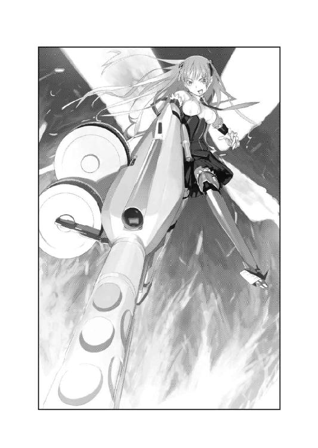
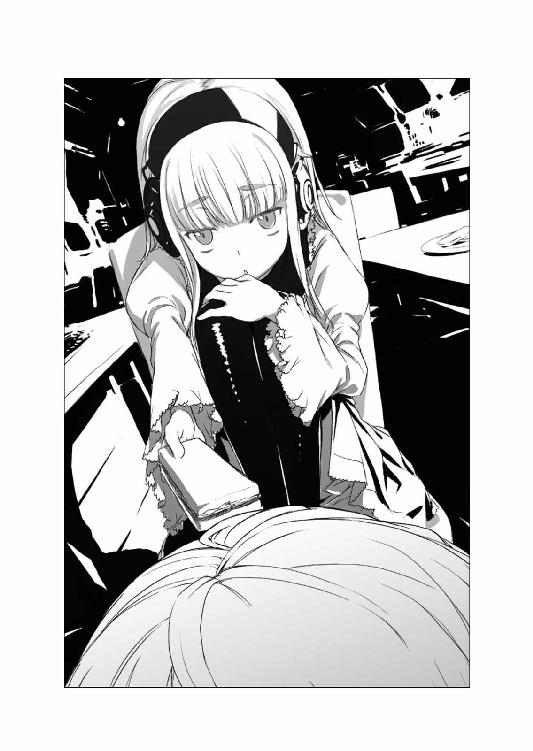
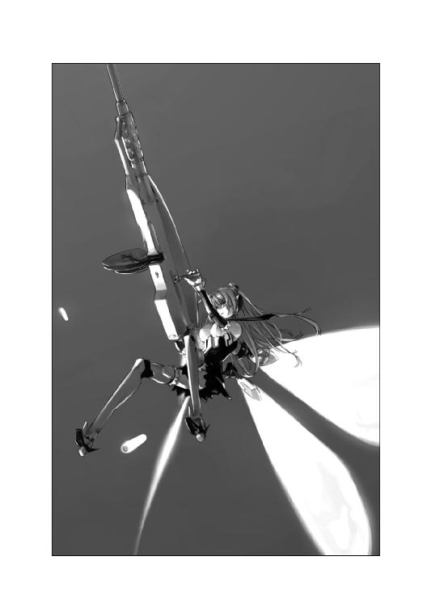

| 【全巻セット】スプライトシュピーゲル 全4巻セット〈豪華特典版〉<スプライトシュピーゲル> (富士見ファンタジア文庫) | |
| 冲方 丁 | |
| (2015) | |
【全巻セット】
スプライトシュピーゲル
全4巻セット〈豪華特典版〉
冲方 丁

富士見ファンタジア文庫
スプライトシュピーゲルⅠ
Butterfly&Dragonfly&Honeybee
冲方 丁

富士見ファンタジア文庫
本作品の全部または一部を無断で複製、転載、配信、送信したり、ホームページ上に転載することを禁止します。また、本作品の内容を無断で改変、改ざん等を行うことも禁止します。
本作品購入時にご承諾いただいた規約により、有償・無償にかかわらず本作品を第三者に譲渡することはできません。
本作品を示すサムネイルなどのイメージ画像は、再ダウンロード時に予告なく変更される場合があります。
本作品は縦書きでレイアウトされています。
また、ご覧になるリーディングシステムにより、表示の差が認められることがあります。
口絵・本文イラスト はいむらきよたか
第一話 焱の妖精
クイズです♪ クイズです♪
ギリシャ神話のヘラクレスは十二の難行を
果たしたことで有名ですが、ではそもそも
なぜ難行への挑戦を決めたのでしょうか？
Ａ☆子供を亡くしたから。
Ｂ☆嫌われ者だったから。
Ｃ☆神様を恨んでたから。
Ⅰ
「さ──ぁ♪ 答えはどれだと思いますかしら♪ 乙さん、雛さん？」
少女Ａの呼びかけ──通りに面したカフェ。
同席＝少女Ｂ＋Ｃ──反応なし。
「はー......超良い天気。超ばっくれてー」
少女Ｂ＝乙──鮮烈な蒼い眼／鋭角的ツインテール／すらりとした脚／青いスカート／ニーソックス／エナメル靴。行儀悪く足を組み、春の青空を仰ぐ〝理由無き反抗〟態勢。
その可憐な唇に、棒付き球体菓子＝ロリポップをワイルドにくわえ、ガリガリ齧る。
「............」
少女Ｃ＝雛──淡い琥珀の目／金色のショートヘア／黄のリボンタイ／細い脚／芥子色のスカート／ストッキング／エナメル靴。小さな肩をすくめて自己閉鎖中──ヘッドホン＆腰に旧式アイポッド＝リヒャルト・シュトラウス作曲『悪ふざけ野郎』＝大音量。
《あ・な・た・た・ち》
少女Ａ＝地声から無線通信へ──半眼／手が腰に。
ゴトリと音を立て、九ミリ拳銃がテーブル上に出現。
《脳ミソぶちまけたいですかしら？》
「Ｂっす」「Ｃです」
乙＋雛──即答／宙を漂っていた目が回れ右して少女Ａへ。
「よろしい」
少女Ａの微笑＝優しげ／拳銃は魔法のように一瞬で腰ポシェットに収納。
「......なんか鳳のやつマジでスイッチ入れてね？」乙──呆れ顔／雛にひそひそと。
「警察呼んだ方が良いかもぉ」雛──真顔／ヘッドホンを外さず読唇術で会話。
「お二人とも。今日は特別な日なのですわ。しゃんとなさい」
少女Ａ＝鳳──気品に満ちた深紫の瞳＝左目にザックリ走った海賊傷。
艶めくロングヘア×ウェーブ／ふんわり袖のシャツ／紫のリボンベルト／紫のピンストライプのタイ／長い脚／上品なタイツ／黒靴＝全て小隊の制服。
「お待たせいたしました」
若いウェイター──運んできた飲み物をテーブルへ。
鳳＝アールグレイ。「タバスコを頂けますかしら？」
乙＝ホットココア。「オレ、砂糖足んない。砂糖もっとちょーだい」
雛＝レモンソーダ。「ボク、レモン欲しい。十個くらい欲しい」
気圧されて応じるウェイター＝各調味料を運搬──三人の手が素早く伸びる。
「ちょっと乙さんたら、入れすぎですわ」
鳳──紅茶に降り注がれるタバスコ。
「鳳にだきゃぁ言われたくねーっす」
乙──シュガースティック６ｇ×８＝同時投入。
「...............」
雛──ミニカップ入りレモン汁×12を開封／投入／開封／投入。
たじろぐウェイターを完全無視──傍若無人にカップを持つ三人。
鳳＝極辛党。赤い油が浮いた凶悪な液体を上品に一口／可憐に微笑。
「ああ、体が温まりますこと」
乙＝極甘党。ココア：砂糖＝ほぼ１：１／ゲル化現象／生コンクリートそっくり。ロリポップをくわえたまま、ココア味のするドロドロの砂糖をシャーベットのように摂取。
雛＝酸味党。几帳面に唇中央にくわえたストロー／歯が溶けて無くなってしまいそうな炭酸風味のレモン汁を、吸入／嚥下／吸入／嚥下＝無表情──忘我の境地。
「うぷっ」よろめくウェイター──退散。
「てか、クイズの答えはどれよ？」
乙──ロリポップを齧りながら。
「あら、気になりますの？」
鳳──やたらと嬉しそうな顔。
「気にしないもん」雛──レモン汁の空容器でピラミッド建設完了。「だってＣだから」
「そ・れ・は♪」
ぱちりとケースの蓋を閉める鳳。
《妖精たちへ》
ふいに副官からの声なき無線通信。
三人の顎骨に移植された通信器＝誰にも聞こえない電子のささやき。
《第二態勢へ移行。先取攻勢による要撃準備！》
《了解、ニナさん。ただちに要撃準備を整えますわ》
鳳の応答──起立／二人を見る／浮き浮きと。
「と・いうわけで♪ お仕事が終わりましたら、お教えいたしますわね♪」
「だりー」「Ｃだもん」
乙＋雛──起立。
「さ、お二人とも、いらっしゃい。あたくしが、おまじないをして差し上げますわ」
ミリオポリス第二十三区──通りを挟んだカフェの向かい。
真新しい教会＝アウグスティヌス派参事会──その一階、司祭室。
「無理な相談だ、ニナ」
初老の男──司祭服／見事な白髪／灰色の目／深い皺／厳冬に佇つ老オークの樹の風情＝揺るぎなく／動じない。
「知っての通り、この街には十八の宗教、四十二の宗派が混在している。互いの無理解が争いを呼ばぬよう、代表者を招き、会合を開く。それを我がカトリック教会が主催するときに限って中止するわけにはいかない」
「平和的な対話それ自体を憎む者がいるのも事実です、トマス・バロウ神父様。そうした者たちがカトリック教会の主催日を狙って襲撃を計画した情報があるということも」
女──純白のスーツ／短い黒髪／漆黒の眸＝酷寒の夜のように硬質／冴え冴えとした肌／凜とした美貌──トルコ系。
「会合の全員が見えぬ恐怖と戦っている。退けない理由を数えればきりがない」
「しかし敵が赦す理由にはなりません。特に、かつて兵器開発局の技術顧問だった、あなたを赦す理由には......バロウ神父様」
「私は一介の神父に過ぎないよ、ニナ。心配せずとも警察が二十人規模で警備にあたってくれている。それとも君の狙いは、私にＭＳＳの出動を要請させることかね？」
「そのような事態に陥らぬよう、ここの警官が本来の役目を全うすることを祈ります」
「皮肉はよしたまえ。君も彼らも治安を守る者同士だ」
バロウ神父──窓辺へ／向かいのカフェを見る──溜め息。
「彼女たちを配置するとは......。君の上官であるヘルガは危機を好機に変える名人だ」
ニナ──無言／氷像のように直立不動。
バロウ神父は戸口へ──呼び鈴。「冬真」
黒い学童服の少年が入ってくる──柔らかな金髪／白い頰／碧い睛／まだ立ち上がったばかりの子鹿の風情。
「お呼びでしょうか？」
「あのカフェにいる三人のお嬢さん方と、こちらのニナを、客間に招いて、カフェを振る舞って欲しい」
「はい、神父様」少年の退出──小走り。
ニナが一歩前へ──氷のように凜として。
「我々ＭＳＳの情報が信じられませんか？」
「いいや。君たちは情報のエキスパートだ。そして私はこの会合を、君たち公安局の政治的踏み台にさせるわけにはいかない。重要な情報は警察に。私は会合に出ねばならない」
「私も同席させて頂けますか？」
「それは困る。みな君に心を奪われ、誰も私の話を聞かなくなってしまうからね」
バロウ神父の微笑──やんわりと。
無表情のニナ──冷たい剣のように美しい面立ち。
「冬真の淹れるカフェは美味い。君も味わってから帰るといい」
廊下を歩み去るバロウ神父──物腰柔らか／態度は大らか／それでいて説得に倒れない根深い何か。
見送るニナ──黒ダイヤのような眸＝硬質な意志──その手に携帯電話。
「この国の宗教者は、もはや政治家以上に政治的です......神父様」
低い呟きとともに電話の緊急回線をオンに──指令＝切るような鋭さ。
「妖精たちへ。第二態勢へ移行。先取攻勢による要撃準備！」
「いない」少年──冬真＝困った顔。
通りの向こうのカフェ──無人のテーブル。
ゴミの山＝空のタバスコ瓶・砂糖袋・レモン汁の容器──入れ違い。
「どういうお客様なんだろう」
首を傾げながら教会へ戻る──玄関の横手に三人の警官たち。
大声で談笑──全員の手に煙草。
そちらへ歩み寄る冬真。
「ここは禁煙です。喫煙所以外でのお煙草はお控え下さい」
警官たちの沈黙──にわかに爆笑。
「そいつはどこの宗教用語ですかね、教会のお使いさんよ」「聞いた感じじゃ日本語のようだぜ」「オーストリア流のドイツ語じゃないのは確かだな」
たじろぐ冬真──かっと頰が紅潮する／なけなしの怒りを込めて。
「宗派によっては喫煙を禁じている方もおりますので」
「宗旨替えするよう言ってやんな」
警官の一人が冬真に顔を近づけ、いきなり煙を吹きかけた。
目・鼻に強烈な刺激──驚きと屈辱に思わず後ずさる。
「な、何をするんですか......！」
さらに迫ってくる警官──据わった目／睥睨／ドスの利いた尋問口調──暴力の風圧。
「おい、お前らが誰に守ってもらってるか言ってみろ」
冬真──絶句／立ちすくむ。
「俺たちだ。ここは俺たちの管轄だ。坊さんの見習いになめた説教をされる筋合いがどこにあるってんだ？」
「一本めぐんでやるから帰んな、稚児さん」
別の警官が火のついた吸い殻を指で弾く──冬真の胸元に当たって火花が舞った。
慌てて顔を背けた途端、容赦のない笑い声が起こった。
棍棒のように心を叩き折る響き──落ちた吸い殻を見つめたまま動けなくなる冬真。
ふいに小さな黒靴が現れ、吸い殻を踏んで火を消した。
「下品で醜悪な臭いですこと」
笑いが急停止──反射的に目を上げる冬真。
腕を組んで立つ、一人の少女。
深紫の瞳──左目の海賊傷＝異様な迫力──微笑み＝芯から上品に。
「ダイオキシンなど二百種類以上の有害物質をふくむ煙草の煙は、喫煙しない第三者に最も強く被害を及ぼします。すなわち副流煙による受動喫煙」
ぽかんとなる冬真＋警官たち。
少女が続ける──完璧なオーストリア流ドイツ語発音。
「煙草はあらゆる癌、肺気腫、気管支炎、ぜんそく、胃潰瘍、心筋梗塞、脳卒中、脳出血、糖尿病、口臭、難産、カリエスなど多くの病疫をもたらし、また七百度にもなるその火は全世界の火事の原因のトップ。万一この文化施設で火災を起こせば、被害額はあなたの一生が十回あっても足りませんわ」
一拍の間──少女が警官たちを見渡す。
「ドイツ語は通じますかしら。薄汚い警察用語を使わなければなりませんの？」
冬真に迫っていた警官──怒気を込めて少女に近づく。
「それくらいにしておきな」
半歩下がる少女──鼻に手を当てながら。
「なんて口臭。もう少し離れて下さいませんこと？」
目を剝く警官──意に介さぬ少女＝冬真へ微笑みかける。
「あなた、もしかしてカフェで、あたくしたちを探していらっしゃった？」
「あの、僕......」
返答につまる冬真──身を乗り出す警官。
「このガキ──」
そのとき、けたたましい音が二人の声を搔き消した。
車のブレーキ音──タイヤの擦過音＝複数。
ふいに少女の身が沈んだ。
翻るスカート──長い脚が突風のように警官の膝を蹴った。
ものの見事に転倒する警官──ぎょっとなる冬真。
通りに急停止した三台のバン＝その窓から突き出される、幾つもの自動小銃。
閃光／轟音──立て続け。
弾丸の飛来──警官の上半身があった空間──教会の壁に、横殴りの弾痕×６。
粉塵／火花／鉄が焦げる猛烈な異臭──辺りが明るむ／目がくらむ／空気が震える。
ほんの一瞬の間に、世界の全てが塗り替えられる。
「なにが──」
起こったか分からぬ冬真の胸ぐらを、少女の手がつかんだ。
そのまま引き倒される──信じがたい握力・腕力。
すぐそばを空気を裂いて何かが通り過ぎる──恐怖が後から来る。
少女とともに教会の玄関へ滑り込まされる──機敏な退避。
「あっ......」
吸い殻を放った警官──呆然──被弾＝胸・腹・脚。
血煙が舞い、衣服が弾丸の熱で燃え、声もなく倒れた。
「こちらへ、早く！」
少女の叫び──もう一人の警官が玄関へ転がり込む。
少女に蹴られた警官が必死に地面を這う──絶叫／金切り声。
「テ、テ、テロだぁ──っ！」
Ⅱ
ミリオポリス第二十二区──未来的建築物の群〈UNO-CITY〉＝国連都市。
その中核たる国連ビル──十階フロア。
パーティ──二千五年にノーベル平和賞を受賞した国際原子力機関の懇親会。
二千十六年現在の主眼。「核の平和利用、核兵器の拡散阻止、石油使用と二酸化炭素増加＝ハリケーン発生＝全地球規模の災害」
どれも石油輸出国機構には目の上のこぶ。
「相変わらずウィーン州は社会党の牙城だ。次の選挙では何としても切り崩さねばならんぞ、エゴン局長」
男──巨漢／閣僚のバッジ／三白眼／むくんだ頰／分厚い手にグラス＝蜂蜜色のブランデー──人相の悪いヒグマの威圧感。
「閣下の国民党とともにドイツ系住民の票を狙えば可能かと。ゴットフリート内務大臣」
男──瘦軀／黒ずくめのスーツ／細長い指にグラス＝血のような赤ワイン。眼鏡の奥で光る神経過敏気味の目＝獰猛な知性・静かな凶暴性──人間大の黒いカマキリの雰囲気。
「特に、こと治安に関しては、この街がまだウィーンと呼ばれていた頃から我が未来党に実績がありますからな」
「あら、それはどのような実績ですのエゴン局長どの？」
歩み来る女性──優雅な足取り／愛くるしい小顔／アップにした金髪／ぱっちりとした目＝藍色の虹彩／小柄だがバラの花のような存在感。
襟ぐり深く、背中が大きく開いた朱色のドレス／肩に羽織ったストールで肌を隠す──ほっそりした手にグラス＝宝石のようなピンクのシェリー酒。
向き直るエゴン局長＝きびきびと。
「我が〈憲法擁護テロ対策局〉の定評ある最適部隊配置によって、多数の無駄な警官をリストラした実績だよ、ＭＳＳ長官ヘルガくん」
女性＝ヘルガ──愛嬌をふくんだ憂愁の目。
「リストラという名の人種差別で優秀な人材を多数失いましたわ。トルコ系やスロヴェニア系であるというだけで職場を追われた彼らは、なおも誇りを失わず、多くが特殊部隊に再雇用され、治安に貢献しています」
「いやいやいや、決して人種差別ではない。警備費用の削減は首相も賛同している」
ゴットフリート内務大臣──巨体をそわそわさせて周囲を見る。
パーティには各国の大使が多数列席＝人種差別的発言は即座に世界的ニュースと化す。
エゴン局長──しかし周囲を意に介さず。
「やつらは最適な部隊に適合しない連中だった。それ以外に理由はない」
ヘルガ＝慎ましげな花のように。
「ドイツ系住民が集中する地域ばかり警備を強化し、他民族系の地域には暴動鎮圧部隊や情報機関を配置......まるで外国人は全て、暴動やテロを起こす可能性があるとでも言うようですのね」
「その可能性は否定できない」
あっさり断言するエゴン局長──ぎょっとなるゴットフリート。
「あら、未来党のドイツ民族至上主義を、国連ビルでおおやけに発言なさるの？」
「自国の治安は自国人によってのみ行われるべきだ。外国人の警官などぞっとする」
「外国人は排斥すべきとおっしゃる？」
愛らしく首を傾げるヘルガ──声高に。周囲の客が眉をひそめて振り返る。
「ややや、むろん我が国もＥＵに従い二重国籍を認めているとも」
ゴットフリートが慌ててフォロー／エゴンを睨む。
しぶしぶ論旨を変更するエゴン。
「君が主張する全域警備思想など夢のまた夢だ。都市の全てを守れるだけの予算を要求すれば、他局を圧迫し、軍国主義的だという批判にあう」
ヘルガ──その言葉を待っていたかのような微笑。
「予算は今のままで十分ですわ。我々の信条は要撃──すなわち待ち伏せ。優れた情報収集力で敵の攻撃ポイントを事前につかみ、人員を配置。相手が銃火を上げると同時に、圧倒的火力と機動力で制圧。それが都市治安における最善の戦略です」
エゴン＝不快そうに。
「だが憲兵や特殊部隊がいる。なぜ君ら〈公安高機動隊〉なのだ」
ヘルガ＝残念そうに。
「彼らは全域警備思想に追随できません。〈猟兵〉は紛争地帯に派遣、〈特殊憲兵部隊〉は空港や国連ビルの警備、また〈ミリオポリス憲兵大隊〉は日々増加する凶悪犯罪の対処で手一杯......」
「だが問題がある。......聞けば、君の部隊の副官はトルコ系だそうだな」
ぎくっとなるゴットフリート。「エ、エゴン局長......！」
ヘルガ──平然と。
「それが何か？」
「人種を問わない部隊編成など爆弾と同じだ。治安は純粋な組織によって保つべきだ」
「純粋な組織？ それは過去に巨大な災いをもたらした、あの集団のようにかしら？」
エゴン──握り拳を敢然と振り上げて。
「我ら未来党はナチスを否定しない。ヒトラーは歴史上ただ一人、ドイツとオーストリアの統一をなしとげた」
ゴットフリート──戦慄／痙攣する顔。
「ややや、やめんか局長！ ユユ、ユダヤ系の資本家も多数列席しているのだぞ！ 国際問題を起こす気か！」
向き直るエゴン──にわかに恫喝口調になって。
「この国の多数のドイツ民族は、我が未来党の支持者なのですぞ、内務大臣閣下。だからこそ、あなたがた国民党は、我々と連立し、政権を獲得した──」
にわかに着信音──エゴンの声を遮る。
ヘルガが携帯電話を取り出す。「失礼」
黙るエゴン──ほっとするゴットフリート。「パーティ中に無粋だな、ヘルガくん。マナーモードにしておきたまえ」
「御言葉ですが、治安を司る者が、万一にも連絡に支障をきたすことは避けるべきかと、ゴットフリート内務大臣閣下」
携帯電話を耳に当てるヘルガ。
「私よ、ニナ......ええ、情報通りね」
新たな着信音──ＢＶＴ局長エゴンの懐。
さらに着信音──内務大臣ゴットフリート。
フロア中で着信音──警察本部長／国連ビル治安担当／各党党員／各国大使。
土砂降りのような音──不吉な音響／ざわつくフロア。
みな啞然と顔を見合わせ、示し合わせたように、一斉に慌てて電話に出た。
ゴットフリート──電話に出るなり顔面蒼白に／巨体が弾けんばかりの狼狽。
「し、し、宗教連絡会議に襲撃だと!?」
ヘルガ──突然の連絡に慌てふためく国家公務員たちを悠然と見渡しながら。
「ＭＳＳがつかんでいた情報通りですわ。もしこれだけの列席者がいる最中に、宗教的要人が被害を受けたとなれば、国際問題にもなりかねません」
「た......たたた、ただちに〈特殊憲兵部隊〉に守らせろエゴン局長！」
ゴットフリートが口の端に泡を吹きながら指令。だが、携帯電話を耳に当てたまま歯を軋らせるエゴン──ヘルガを睨みながら、かぶりを振る。
「間に合いません......」
呆然となるゴットフリート──ヘルガ＝ささやき。
「警備担当は暴動鎮圧用の装備しかない警官たち。しかも現場は憲兵大隊の本部から最も遠い地区。ですが......ＭＳＳの人員でしたら既に配置済みですわ」
「そ、そ、その者たちに、大至急、要人保護を命じろ！」
「内務大臣！ ＢＶＴの管轄ですぞ！」怒りで青くなるエゴン。
「死者が出れば私の首が飛ぶ!!」
ゴットフリートの絶叫──怯えたヒグマの吠え声。
エゴンの絶句──振り上げた腕の下ろしどころを失くしたカマキリの怒り。
「情報だけを持ち、それを上層部へ報告するすべも、独自に対抗するすべもなく、籠の中の鳥のようだった私どもＭＳＳの苦しみが御理解頂けましたかしら、エゴン局長？」
ヘルガの微笑──気品に溢れて／携帯電話へゴーサイン。
「ニナ、許可が出たわ」
応答──鋭く。《では要撃を開始します》
「暖気運転中といったところね。通話は継続して。本当の要撃はこれからよ、ニナ」
Ⅲ
銃撃──嵐のごとく。
教会玄関口──石畳・教会の壁に火の雨／通行人たちの悲鳴──広がるパニック。
車両から降りて散開する者たち＝完全武装＋スキーマスク。
「ひっ、ひいっ」
警官二名──玄関の壁際に縮こまり、手だけ突き出し発砲＝でたらめ。
「それじゃ当たりませんわ、おどきになって」
少女が前へ──手に九ミリ拳銃／膝立ち／素早く壁から半身を出す。
撃つ・撃つ・撃つ──精確無比な二点連射×３。
三台のバンで悲鳴／銃撃停止──啞然となる冬真＋警官たち。
「あの方を助けます！」
撃たれて倒れている警官──己の血の池の中で弱々しく身じろいでいる／絶望的な姿。
冬真が思わず口に出す。「あんなやつ──」
「負傷者にあんなやつは存在しません！」
少女──果断／言うそばから飛び出す。
「援護を！」
低く低く身を低め疾走──敵が銃撃を再開／少女が走り抜ける火線の下・飛び交う銃弾の狭間──心臓が凍りつきそうな光景／見守ることさえ恐ろしい賭け。
慌てて撃ちまくる警官たち──一瞬で命を奪う火の応酬のさなか、少女が負傷者の元に辿り着く＝その足下で火花。
少女が倒れた警官の襟をつかむ／引きずる／後ろ向きに戻ってくる。
石畳に警官の血の跡が伸びる──もはや機敏に逃げることさえ出来ぬ状況下──その小柄な身からは信じがたい腕力・勇気・偉大な背。
一方の手に拳銃──精確な応射／危機の中を帰ってくる／一歩・また一歩。
ただ呆然と見守ることしか出来ない冬真の心臓をわしづかみにする恐怖──そして得体の知れない昂揚。
そして帰還＝生還。
少女の手で玄関に引っ張り込まれた負傷者──か細い息／生存／警官たちの歓声。
美しく引き締まった少女のおもて──息を吞んで見つめる冬真。
「応急処置を！」
少女の声に従う警官たち。はっとなる冬真＝やっと体が動く──思わず手伝う。
傷口を押さえる／縛る／手に温かな血──命。
戸口で身構える少女──銃の弾倉を交換する、血に濡れた手。
冬真の心を打つ、ひどく貴い姿。
「君は、いったい......」冬真＝おずおずと。
にこっと微笑する少女。
「〈公安高機動隊〉要撃小隊所属──鳳・エウリディーチェ・アウスト」
可憐──深紫の瞳の奥で踊る、激しい光。
その脳裏で無線通信＝ニナの号令。
《妖精たちへ！ 〈紫火〉、〈青火〉、〈黄火〉、総員、要撃開始！ 敵勢力の規模に留意し、必要に応じて現地警備陣と連携しろ！》
《了解！》
鳳＝素早く銃を構えて。
《さ──ぁ、乙さん、雛さん！ お仕事ですわよ！》
教会裏手──礼拝堂。
同じく三台のバンが殺到──銃撃＝警官たちの負傷・逃走・絶叫。
バンから降りる武装犯たち──自動小銃を構えて裏口へ。
その頭上から、にわかに高らかな笑い声。
「あっはは！ ドキドキするぅーっ！」
ひさしから飛び降りる少女＝乙──ワイルドに口にくわえたロリポップ。
全体重をかけた蹴りが、先頭の武装犯の顔面を直撃──悶絶・転倒。
咄嗟に何人かが撃つ／乱れ交う弾丸／地面を蹴る乙──宙を舞う。
一瞬で武装犯たちの背後に降り立ち、すらりとした脚を猛然と振り上げる。
「もっとドキドキさせてよ!!」
蹴り＝ハンマーのごとく振るわれる黒いエナメル靴／可憐なかかと／翻るスカート／ちらりと覗く水色の下着──とてつもない打撃。
武装犯たちの被害──頭蓋骨／鎖骨／肋骨／上腕骨／大腿骨。
脱臼／陥没／複雑骨折／粉砕骨折／亀裂骨折──戦闘不能。
教会横手──サイドチャペル側。
停車中の二台のバンから多数の武装犯たちが現れ、一斉に銃撃。
警官たちを蹴散らし、教会へ殺到──一人がワイヤーに足を取られる。
セロテープで雨樋に固定された手榴弾＝安全ピンが外れる。
トラップ＝鉄槌のごとき爆炎──悲鳴とともに吹き飛ばされる武装犯。
「なんだ!?」
「いじめないで！ いじめないで！」
いきなり少女の泣き声＝雛──側柱の陰。
両耳にヘッドホン／右手に携帯電話＆左手に手榴弾──一方を投擲。
「ボクをいじめないでぇーっ！」
音を立て跳ねる手榴弾──武装犯たちのパニック。
爆発──数名が宙を舞った。
倒れた者がワイヤーを引っ張る＝排水溝に設置された対人地雷が炸裂。
飛び散る鉄片──引き裂かれる人体。
大混乱──窓・壁・道路・水路・石畳＝十分足らずで二十か所余という不必要なまでの数のトラップを設置。
自分がいる場所は絶対安全という芸術的計算──比類無き自己完結少女の泣き声。
「ボクをいじめないでよぉ！」
「動くな！ 手にした物を置け！」武装犯の一人が雛に銃を向けて怒鳴る。
「いつもみんな、なんでそんなことしたのってボクに訊くよね」
大音量のヘッドホン＝相手の言葉など聞いちゃいない爆弾魔の主張。
その手が、携帯電話のボタンを素早く操作。
一瞬の発信──停車中のバンに仕掛けたプラスチック爆薬が炸裂。
爆風でなぎ倒される全武装犯たち──雛に銃を向けていた武装犯も昏倒。
燃え上がるバン／一般車両／街路樹。
火炎の海を見つめる雛の琥珀の目。
「だって......だって夕焼け空に似てたからだもん」
教会内──廊下を走るニナ。
右手に銃／左手に携帯電話──公会堂のドアを蹴り開く／銃を突き出す／叫ぶ。
「バロウ神父様！」
一か所に身を寄せている宗教者たち──キリスト教・ユダヤ教・イスラム教・拝火教・ヒンドゥー教・マニ教・仏教・神道・各教派の指導者たち／キリスト教だけで十数派。
その一人＝バロウ神父。「よせ、撃つな！」
ニナへの叫びではない。
カチリと撃鉄を上げる音──低いがよく通る声。「銃を足下へ」
ニナ──冷静に動きを止める／ゆっくりと銃を床に置く／鋭く呟く。
「やはり、会合の一員が主犯か──」
男──頭にターバン／浅黒い肌／野生の鷲のような威厳＝極限まで研ぎ澄まされ、張りつめた顔・仕草・気配──銃を構えたまま、ニナの銃の刻印を一瞥する。
「ＭＳＳ......ミリオポリス公安高機動隊か」
ニナ＝男を真っ直ぐ見返す／冷ややかに。
「シェネル・シェン──表向きはモスク指導者。裏の顔は過激派組織ジェマー・イスラミアの系譜を継ぐ〈戦闘部隊〉の幹部」
シェネル＝何の表情も浮かべぬ猛禽の目。
「ＭＳＳは常に情報力に優れ、実行力に不足し、皮肉に長けている。トルコの美徳を忘れて堕落した女を遣わすとは......お前のような女の存在自体が、神と祖国への侮辱だ」
ニナ──無言／鋭く凍てついた怒り。
宗教者の一人が前へ出る──同じイスラムの老指導者の嘆き。
「よせシェネル......ここは宗教間の対立を取り除くことが出来る、大切な対話の場なのだぞ。それをこのような惨劇を起こしては、欧米の戦争主義者たちの思うつぼではないか。我々は二度とアラブに戦火をもたらしてはならないと......」
「我々はお前たちのたわごとを宗教とは認めない。お前たちがもたらすのは堕落と妥協だけだ」
シェネル──銃口を老指導者へ。
「戦火は、すでにもたらされている。世界中で。これはその一つに過ぎない」
ニナの叫び。「撃つなら私を撃て！」
戸口から飛び出す小柄な影──鳳＝素早くシェネルに銃の狙いをつける。
「銃をお捨てなさい！」
シェネルが鳳を振り返る──刹那、窓を蹴り開いて飛び込む疾風──乙。
「ドキドキしてきたーっ！」
乙の足がシェネルの胸へ──衝撃／蹴り飛ばす／手から銃が離れる／床を滑る。
着地──すぐさま次の蹴りを入れかけた乙が、たたらを踏む。
その場の全員が息を吞む。
「もとより生き長らえる気はない」
シェネル──膝立ち／服の胸元を開く──胴に巻かれた爆弾の束。
さらにそのターバンがほどけ、床に落ちた。
うっ──という呻き／悲鳴／おぞける声。
眉一つ動かさないニナ・鳳・乙。
バロウ神父──戦慄。「何ということを......」
シェネルの頭──無毛／額の後ろ・耳の後ろ・後頭部・大脳全体が、抉られたようにぽっかりと消失＝人工皮膚で傷を覆っている。
「ここにいる私は遠隔操作で動く亡骸に過ぎない。魂は、やどるべき器の裡にある」
脳のない人間＝シェネルが宙を仰ぐ。
その口から朗々と放たれる祈り──コーラン。
「慈悲あまねく慈悲深きアッラーの御名において
万有の主アッラーにこそ全ての称讃あれ
慈悲あまねく慈愛深き御方
最後の審判の主宰者
私たちはあなたにのみ仕え
あなたにのみ御助けを請う
私たちを正しい道に導きたまえ」
シェネルの手が腰へ──祈るように／爆薬のスイッチ。
ニナの号令。「やれ、鳳！」
銃撃──精確無比な二点連射＝シェネルの口と喉笛に命中。
延髄破壊／動作停止──祈りが途絶える／背から倒れる。
鳳の無線通信。《雛さん！》
雛が戸口から現れ、たたっとシェネルの亡骸に走り寄る。
「こんなの簡単だもん」無造作にコードを千切る──シェネルの爆薬を解除。
「う、撃った......？」
戸口で声──冬真。怯えた目で鳳を見つめる。
「こ、殺したの......。き、君が......」
振り返る鳳──毅然と。
「ええ、そうですわ」
冬真──絶句。
ニナ──氷のような冷静さ。
「私が命じた。彼女に責任はない。容赦のない一撃をもって惨劇を抑止するのが、我々の仕事だ」
「彼の死は私たちにとって既に惨劇だ......ニナ」
バロウ神父──深い皺／亡骸を見つめて。
「おお、シェネル......なぜだ。おお......」
ひざまずく老指導者──こぼれ落ちる涙／血まみれのシェネルの顔を撫でる。
「我々にとって、事態はいまだ進行中です。あの男が摘出手術を受けたことは確かですが、肝心の脳の行方はつかめていません」
「犠脳体か......」
バロウ神父──瞑目／さらなる悲劇に耐えようとするように。
「眠れる器が、彼の死を契機に目覚める......」
Ⅳ
ミリオポリス第二十七区──古くから〈ウィーンの森〉と呼ばれる森林地帯。
ドナウ川沿岸から離れた場所に置かれたコンテナ＝念入りに擬装と光学防壁を張り巡らされた鋼板が、虹色を帯びながらロックを解除。
自動展開──四方へ幾何学的な卵のように開く。
現れたものの目覚め──自我の獲得。
わタし──鋼の体／鋼の翼／鋼の武器。
鋭い嘴／暗灰色のボディ／尾翼に不思議な刻印＝『Princip Inc.』。
無人の操縦席に駆け巡る意志と電子。
エンジンと燃料／精密機械の起動／モーターの回転──それが、わたシ。
目的・行動・標的・手段が思い出される。
己の脳＝魂を捧げたことが思い出される。
犠脳＝力無き者が破壊の王となるために。
操縦訓練も知識の習得も必要なく、ワたシとこの鋼の体を一体のものとするために。
さあ、始めよう。この命を全うするために。
操作盤の全ランプが点灯。
その中央で輝く大きなカプセル──脳／髄液／無数の接続コード。
唸り──ギロチン刃のような回転翼が動き出す／重力の鎖を振りほどく。
唸り──祈りにも似て／風を巻き揚力を得る／浮遊／木々を揺らして森から現れる。
唸り──機械の目で都市を見る／驚くほど何もかも小さい／低い／哀れなほど醜い。
唸り──歓喜＝咆吼を上げて飛翔。
もう誰もワタシを止められない。
「せせせ、戦術ヘリだとぉーっ!?」
国連ビル──ゴットフリート内務大臣の絶叫。どよめくパーティ客。
凍りつくエゴン局長。「そんなもの、どうやって都市に......！」
「〈カウカソスの大鷲〉──六百六十六万個のパーツに分解され、運び込まれた怪物」
ヘルガの声──あくまで穏やかに。
「人に火を与えた罰で磔にされたプロメテウスの肝臓を貪る、神の鳥。その名は既にＭＳＳがつかんでいました。宗教会議所は陽動。真の狙いは恐らく──ここ」
度肝を抜かれてよろめく黒カマキリ＝エゴン。
「こ、国連ビルを爆撃する気か......！」
恐慌をきたすヒグマ＝ゴットフリート。
「たたた、対抗措置は取っておらんのか!!」
「現状では皆無......ですが、これにサインを頂けましたら、その措置が可能かと」
ヘルガ──鮮やかな微笑／薔薇のように。
差し出されるカード──電子板が展開。
文書の出現＝コピー不可・閲覧不可・極秘指令書。
「公安局のマスターサーバー〈 〉の全使用権を、私にお与え下さる指令書です」
〉の全使用権を、私にお与え下さる指令書です」
「きっ......、貴様！ ヘルガ！」エゴン＝怒りで蒼白。
ゴットフリートが息を吞む──震える手が伸びる。
目に見えぬ糸に操られるように、分厚い指が電子板に近づいてゆく。
エゴンの絶叫。「内務大臣!!」
ぎりぎりと歯軋りするゴットフリート。「お、お前が、私兵を欲していることは察していた。それを、むざむざと......この女狐めが！」
太い親指が電子板に触れた。指紋認証──データ適合／サイン受理／僅か二秒。
「お褒めにあずかり光栄ですわ、閣下」
電子板が畳まれ、ヘルガの胸元に押し込まれる。
窓を向くヘルガ──ストールが肩を滑り、一方の手に握られる。
その背・肌があらわに──絶句するゴットフリートとエゴン。
右肩から左腰へ走る、雷火のような巨大な火傷──その疵痕を背負うヘルガの顔から微笑が消えた。
苛烈に都市を見据えるヘルガの横顔──真に咲き誇る薔薇の花のごとく。
近づきがたく／触れがたく／比べるものとてなく──携帯電話へ唇を寄せ、ささやく。
「得るべきものは得たわ、ニナ」
《おめでとうございます、長官》
「これがＭＳＳ初の公式戦よ。準備は良いわね」
そして、にわかに放たれる凄烈な号令。
「第一態勢へ移行！ 待機中の全接続官に〈〉の独占使用を通達！ 〈転送塔〉のフル稼働を要請！ 〈焱の妖精〉による要撃を開始する！」
教会──怯えたままの冬真／震えが止まらず膝をつく。
拳銃をしまう鳳。「あなた、お名前は？」
「え──」びくっとなる。「と......冬真・ヨハン・メンデル......」
「ファーストネームは漢字名ですの？」
「う、うん......」
国連都市ミリオポリスの政策＝文化委託──戦争や災害などで保全困難となった国の文化を他国が維持する。日本の漢字名を名乗れば、毎月の保全金＋社会保障が支払われる。
「冬真さん、あなたの誕生日は？」
「な、七月三日......」訳も分からず返答。
「蟹座ですのね」
微笑む鳳──ポケットから銀のケースを取り出して開く。
綺麗に並んだ物＝カラフルな絆創膏＝全てに手書きの印。
「さ、お手を。おまじないをして差し上げますわ」
冬真＝恐る恐る手を出す。なぜか逆らえない。まるで相手が看護師か教師のような気分。
鳳＝丁寧な手つき──冬真の手の甲に、それがペタリと貼られた。
絆創膏＝バナナの香り＝蟹座の印。
「怖いときには勇気を、寂しいときには優しさを、哀しいときには喜びを与えてくれる、おまじないですわ」
にこりと微笑む鳳──銃を持っていた姿からは想像もつかぬ和らぎ。話しているだけで恐れが消え、不思議と体の強ばりが溶けてゆく驚き。
ふと他の二人の少女にも絆創膏が貼られていることに気づく。
乙＝ほっぺた＝魚座の印。
雛＝小さな鼻の頭＝山羊座の印。
「戦術ヘリが都市上空に出現......！」
ニナ──携帯電話を耳に当てたまま、バロウ神父に。
「十中八九、シェネルの脳を移植された器かと」
「完全自律兵器だ......都市の全マスターサーバーが干渉を試みてもハッキングによる停止は不可能だろう」
バロウ神父＝哀しく目を伏せて。
「ヘルガは......〈〉を手に入れる気だね、あの全てを見通す、電子の〈三つ目〉を」
「じきにそうなるかと」
顔を上げるバロウ神父──静かに鳳のそばに歩み寄る。
「久しいね......お嬢さん」
「御無沙汰しておりますわ、神父様」
「本当に......使いこなせるのかね？」
「おめでとうございます、長官」ニナの声──その目が鳳たちへ。
小さくうなずき返す鳳──目をバロウ神父に戻す。
「御覧に入れますわ、神父様」
微笑──手を宙へ差し伸べる。
「転送を開封」
にわかに唸り──鳳の手が・足が、獣の咆吼にも似た音とともに、エメラルドの幾何学的な輝きに包まれた。
驚愕する冬真＋宗教者たち──もの悲しい眼差しのバロウ神父。
鳳の手足が指先から粒子状に分解──一瞬で新たな姿へ置き換えられる／機甲化する。
乙と雛の手足も同じ輝きに満ちる──形状の変貌──ありえない姿へ。
僅か一秒余の変化──完成／起動。
三人の少女の背に、輝きが生える。
紫・青・黄の、大きな大きな──羽。
Ⅴ
ミリオポリス第十九区──市街地──上空。
猛然と飛来する鋼鉄の大鷲＝完全武装の戦術ヘリ。
「来たぞ！」
叫び──報告を受けた現地警官隊＝急ごしらえの布陣／ビル屋上に狙撃陣。
飛び立つ警察ヘリ＝搭乗狙撃手が、敵尾翼の刻印をとらえる。
「プリンチップ株式会社？ どこの企業だ？」
「知るか、撃て撃て！」別の狙撃手の号令。「どこに墜とそうが構わん、どうせここらは外国人どもの住処だ！」
一斉射撃──到来する敵ヘリの装甲および防弾ガラスに火花の雨。
立て続けの銃撃──無傷の敵ヘリ。
追いすがる警察ヘリ──搭乗狙撃手が敵の操縦席を狙う／呆気に取られる。
「む......無人!?」
敵ヘリの操縦盤が反応──その嘴＝ガトリング砲が音を立てて起動。
にわかに咆吼──ビル屋上が蜂の巣に／狙撃陣の壊滅／瞬く間。
敵ヘリの急旋回──翼で閃く火＝発射されたミサイル弾──警察ヘリを自動追尾。
搭乗員の悲鳴／絶叫。
ふいに、幾筋かの閃光がミサイル弾を貫いた。
炸裂──炎から逃げる警察ヘリ。
搭乗者の驚き。「なんだあれは!?」
にわかに舞い降りる紫の輝き──地上数十メートルで柔らかにはばたく、巨大な羽。
翻るロングヘア×ウェーブ／勇ましく見開かれた深紫の瞳＝その左目の海賊傷。
淡い紫の光沢を放つ、滑らかなフォルムの鋼鉄の手足。
その右手に、非常識なサイズの特大兵器＝発射されたミサイル弾を精確無比な掃射で撃墜した──十二・七ミリ超伝導式重機関銃。
「ＭＳＳ要撃小隊《焱の妖精》っ！ 初・公・式・出撃っ♪ ですわぁ──っ!!」
鳳──歓声＝高らかに／歌うように。
身長よりでかい機銃を軽々と掲げ／構え／狙う。
掃射──閃光・閃光・閃光・閃光・閃光。
たちまち火花まみれになる敵ヘリ──衝撃／炎熱。
その防弾ガラス・ボディ装甲・翼・尾翼に、亀裂／黒い染みのように広がる弾痕。
敵ヘリの旋回──退避／反撃。
ガトリング砲が咆吼を上げて負けじと弾丸をばらまく。
すかさず左へ右へ舞う紫の輝き。
揚力と高度な平行移動に優れた幅広のアゲハチョウの羽──掃射を続けながら、ひらりひらりと難なく敵弾をかわす／一発として食らわず接近。
火花に包まれながら敵ヘリが急下降──旋回／急上昇。
放たれるミサイル弾──すぐさま撃ち落とす鳳。
爆発＝煙幕──猛スピードで転進する敵ヘリ。
鳳の通信。《敵が南西へ進路を変更！》
ニナの即応。《追うな、〈紫火〉！ 最終要撃ポイントへ移動！ 〈青火〉と〈黄火〉に敵武装を封じつつ追い込ませる！》
《了解》
鳳の即応──啞然となる警察ヘリの搭乗者らへ、にこりと微笑／飛翔／舞うように。
ミリオポリス第十九区──南西／市街地──上空。
大きく迂回した戦術ヘリが、ぐんぐんスピードを上げて驀進。
その仰角七十五度から突撃滑空する──青い火。
「ドキドキしたいっしょー！」
浮き浮き突撃──乙。
速度と垂直移動に優れた縦長のトンボの羽──鋭い形の鋼鉄の手足／四つの関節を持つ長大な腕／両方の肘から伸びる灼刃──青白い炎。
迫撃弾のごとく飛来する乙に、敵ヘリが反応──ガトリング砲が仰角を向く＝連射。
螺旋状に広がる弾幕を信じがたい速度で避けながら、鋭角的に迫る乙。
その両腕が、獲物を捕獲するトンボの顎のごとく開かれた。
一瞬の交錯──超高熱の白刃が、凄まじい速度で鋼鉄を溶解──両断。
縦に真っ二つに裂かれたガトリング砲──その弾丸が暴発／一挙炸裂／鋼が砕けてめくれ返り、銃身がばらばらになって飛散した。
青い火の離脱──敵ヘリの離脱＝機体下部から噴き出す黒煙。
乙の無線通信。《そっち行ったぞ雛ぁっ！》
雛の応答＝頼りなげ。《うぇ......》
すぐ向こうにドナウ運河／ドナウ川／新ドナウ川。
その先に第二十二区＝〈UNO-CITY〉。
敵ヘリの猛進──低空飛行──次々に河面を越えて高層ビルの狭間へ突入。
間もなく、国連ビルが射程距離内に入った。
両翼のポッドが蓋を開放──多弾頭式爆弾が出現──即座に発射＝全弾消費。
宙を奔る鉄の矢×８──その全弾頭が宙で分割──×80以上になって容赦なく飛来。
その正面。ビルの陰から躍り出る──黄の火。
「いじめないでぇ──っ！」
雛──その背の輝き＝いかなる気流の乱れにも対応し、超高度な姿勢制御を誇る、鋭いスズメバチの羽。
相変わらず両耳にヘッドホン／丸いフォルムの鋼鉄の手足／全身で危険度をアピールする警告黄色。
両腕に剣吞な武器──左腕＝円筒形ポッドが展開──連結式爆雷の束と化し、新体操のリボンのごとく８の字ダンス＝敵の爆弾群へ全て投擲。
点火──飛び散る鉄片＝雨のごとき火炎と鉄球が、敵ヘリの放ったミサイル弾を穿った。
誘爆──黙示録的轟音──ビルの谷間に発生する炎の積乱雲。
ミキサーのような爆圧──ビル壁面・窓に盛大な亀裂。
凄まじいまでの爆風の中でも、雛は平気な顔で姿勢制御。
爆煙から飛び出す敵ヘリ──雛の即応＝その右腕を構える。
火炎放射器──めくるめく火炎の噴射。
「いじめないでぇーっ！」
超高温の炎の渦を浴びた敵ヘリが、焼けただれながらも雛の視界下を飛び去ってゆく。
さらに下降──超低空飛行。
翼に残されたミサイル弾×６を包む炎──誘爆を避けて全弾発射。
国連ビルへ遮るものとてなく、ミサイル群が白煙を噴いて直進。
雛の通信。《鳳ぁーっ！》
鳳の応答。《あとは、あたくしにお任せなさい!!》
飛来するミサイル群──その正面に舞い降りる──紫の火。
最終要撃地点に先回り──計算された待ち伏せ。
右手に握りしめたどでかい機銃を掲げる／構える／狙う。
その残弾表示＝〈３００００〉
「さ──ぁ!! ご奉仕させて頂きますわよ──っ!!」
掃射開始＝ミサイル群が全て炸裂＝爆風。
〈２４０００〉炎の壁を敵ヘリが突破──
鳳ＶＳ自らを燃える矢と化しめて迫る敵ヘリ。
〈１８０００〉
「さーぁ、さあさあさあ！」
〈１２０００〉
「戦術ヘリごときがなんぼのもんですのぉ──っ!!」
《鳳、撃ちすぎ》《テンション高すぎぃ》乙＋雛──鳳の怒声。《なんですって!? 無線の音量をお上げなさい、聞こえません！》
〈０６０００〉
灼熱の洪水──敵ヘリの突進──操縦席の窓が全壊。
〈０２０００〉
弾痕＝ひしゃげるボディ／へし折れる翼／電話番号並みの弾数が全て命中。
掃射開始から六秒＝〈０００００〉
空転するドラム弾倉──凄まじい熱を放射する銃身。
迫る敵ヘリ──もはや原型をとどめぬ火の塊。
機銃のドラム弾倉が自動排出──再装塡。
退かない／退けない鳳──その背後＝僅か二百メートル先に国連ビル。
さらに機銃を掲げ／構え／狙い──叫ぶ。
「さっさと壊れなさいっ!!」
再掃射の寸前──敵ヘリの操縦席が、にわかに崩壊。
刹那の時間──引き裂かれた鋼、燃え上がる炎、その狭間に現れたもの。

鳳の瞳＝超音波探査＝電子探査によって浮かび上がるカプセル。
機体に移植された、男の脳。
「あたくしも......あなたの行いを、宗教とは認めません」
狙う──祈りに代えて＝閃光。
脳が木っ端微塵に砕け散った。
ヘリの回転翼が分解──失速。
鳳の視界下へ、黒煙を噴き上げながら失墜。
国連ビル玄関の噴水中央──ピンポイントで墜落。
盛大な水しぶきが上がり、これまでで最も弱い爆発と炎が終焉を告げた。
Ⅵ
国連ビル──静かな眼差しで、炎を見下ろすヘルガ。
「これが......この街に満ちた血まみれの怠惰を清算する、最初の炎となるでしょう」
茫然自失のゴットフリート──よろよろとひざまずく／涙目。
「か、各国大使がいるここに墜とすとは......」
エゴン──死神のように蒼白の顔。
「女シーザーめ......ＢＶＴと対立して生き残れると思っているのか。いつか身内に刺される日が来るぞ」
「ご忠告ありがとうございます、局長。それより戦術ヘリを都市内に持ち込ませた責任について、委員会が局長をお待ちでは？」
「お電話です」フロアの係員＝電話を手に。「ヘルガ様に、ウィーン州知事からです」
エゴン──睨み殺さんばかりの眼。
やがて、きびすを返してフロアを退去。捨てゼリフ──なし。
その背を見送りながら電話を取るヘルガ──あでやかな笑み。
「ご機嫌よう、州知事様」
太く穏やかな男の声。《画期的な対応だったな、ヘルガ。死傷者も都市被害も、出現した脅威に対し、考えうる限りの最小幅だ》
「光栄です、州知事様。ですがＭＳＳの情報では、都市に運び込まれたプリンチップ社の兵器は、一つではありません」
《だがそれに対抗する手段を君が手に入れてくれた。ぎりぎりだが間に合った。敵が行動に出た今、猶予は許されない。やつらに滅ぼされる前に、ともにこの都市を変えよう、ヘルガ》
ヘルガの微笑＝高貴な花のように──強靭な意志を秘めて。
「はい、私のお兄様」
教会──テレビの前に集まる宗教者たち・バロウ神父・冬真・ニナ。
撃墜されたヘリの映像──〝羽の生えた人間〟の未確認情報。
「出撃から撃墜まで三分十七秒──まずまずか」
ニナ──携帯電話の時間表示を確認。
「か......彼女たちは、いったい......」
冬真が呆然とバロウ神父を振り返る。
「児童福祉法の改定......」
バロウ神父──告解のように重い声。
「超少子高齢化による人材不足を解決するため、十一歳以上の児童に労働の権利を与え、また肉体に障害を持つ児童を無償で機械化する政策が発表された」
後を続けるニナ＝冷厳。
「そして最も優秀な機械化児童には〈特殊転送式強襲機甲義肢〉──通称〈特甲〉を与え、増大する凶悪犯罪やテロに対抗させた。彼女たちこそ〈転送塔〉への要請権を持つ最強の特殊兵科──ＭＳＳ要撃小隊《焱の妖精》だ」
「機械......？ 彼女たちが......」
冬真──言葉を失う──ふと香りに気づく。
手の甲──蟹座の印＝苺の香り。
絆創膏＝勇気・優しさ・喜びのための。
それを見て、確かに体の震えが止まっていることに、ようやく気づいていた。
第二十二区──ドナウタワー。
高さ二百五十メートル余の塔。
その頂点のごく僅かな面積に舞い降り、苦もなく着地する、紫・青・黄の輝き。
「夜だとよく分かんなかったけど、ここ高ぁっ。ドキドキするーっ」
ワイルドにくわえたロリポップ──
小隊の〝迫撃手〟こと、乙・アリステル・シュナイダーの歓声。
「もう暗いところばかり飛ばなくても良いんだよね」
相変わらず装着したままのヘッドホン──
小隊の〝爆撃手〟こと雛・イングリッド・アデナウアー＝真顔。
「ええ。これでもう夜間の秘密訓練や極秘任務からはおさらばですわ」
誇らしげ──艶めくロングヘア×ウェーブ。
小隊長にして〝要撃手〟たる鳳・エウリディーチェ・アウスト。
「ついにっ、公式出撃を成し遂げたのですもの。お二人とも本当に偉いですわ。ご褒美にクイズの答えをお教えしますわね♪」
「あー忘れてた。Ｂだっけ？」「Ｃだもん」
「ッブ──!!」鳳──口を尖らせ全否定。「正解はＡ──っ！ ですわ♪」
「んだっけＡ？」「子供が死んだから？」
「そう。狂乱の呪いをかけられたヘラクレスは、自ら大切な我が子を殺してしまったの。その罪を償い、失われた希望を取り戻すため、数多の難行に挑む決意をしたのだわ」
解説する鳳──うっとり。
「は──......それってオレらになんか関係あんの？」「無駄っぽい知識ぃ」
「あら、大いに関係ありますわ。だって、この都市はヘラクレスと同じですもの。歴史の中で自ら大切な希望を殺してしまった......だから現在、多くの難行を乗り越えねばならないのだわ。失われたものを取り戻すために」
その深紫の瞳が見つめる街の全景──地平線まで続くかのような雑多な建物の群。
歴史の碑──あるいは人々が今そこに生きている証明の列。
二人を振り返る──微笑って。
「あたくしたちのお仕事は、そのお手伝いをすることよ」
「ふーん」「ふーん」
乙＋雛──真剣味に欠ける顔。
「んだか分かんねーけど、ドキドキできんなら文句ねーっしょ」
「ボクをいじめる相手をやっつければいいんでしょぉ」
《妖精達へ》ふいにニナからの無線通信。《状況終了。総員、本部へ帰還せよ》
「いきましょう、お二人とも」鳳──ふわりと宙へ。「この決して墜ちない羽を手に入れたあたくしたちになら、きっと出来ますわ」
青空／大地を覆う大都市──その狭間。
輝き／踊るように──紫・青・黄の羽。
これは難業を運命づけられ、また自ら選んだ者たちの記憶──妖精たちの物語。
第二話 バタフライ・レディ
クイズです♪ クイズです♪
こと座のオルフェウスは、愛する妻を冥界
から連れ戻そうとした際、あることをして
しまったため、永遠に妻を失いました。
そのあることとはいったい何でしょう？
Ａ☆妻の名を呼んだ
Ｂ☆妻を振り返った
Ｃ☆妻の手を離した
Ⅰ
「さ──ぁ、答えはどれですかしら♪ 乙さん、雛さん？」
少女Ａの微笑──公安局ビル＝二階フロアの自分のデスク。
デスクに設置された銀色の肩書き付きネームプレート。
『ＭＳＳ小隊長：鳳・エウリディーチェ・アウスト』
めいめいに椅子を引っ張ってきて居座る少女Ｂ＋Ｃ──返答なし。
「おーう、ＦＦ・ＨのＤＳ版を三秒でダウンロード。ＭＳＳのサーバー超っ速えーす」
少女Ｂ＝乙──蒼い眼／鋭角的ツインテール。
私服＝革ジャケット／すらりとした脚に豹柄のパンツ／青地のエナメル靴。
椅子の上であぐらをかき、端末を勝手に操作──可憐な唇にロリポップをくわえ、ガリガリ齧りながらゲームをインストール。
「..................」
少女Ｃ＝雛──琥珀の目／金色のショートヘア。
私服＝ゴスっ気たっぷりの白黒ふりふりワンピース／エプロン的前掛け／細い脚にフリル付き黒ストッキング。
小さな肩をすくめて自己閉鎖──両耳にヘッドホン＆旧式アイポッド＝端末にコードを勝手に接続／自分のものではないＩＤを駆使して次々にネットから音楽をダウンロード。
周囲──ひっきりなしに響く電話のコール。忙しげに動く大人たち＝公安局員。
その中で明らかに浮いている少女たち＝周囲を意に介する様子──なし。
《ツ・バ・メさん、ヒ・ビ・ナさん》
少女Ａ＝鳳──地声から無線通信へ。
九ミリ拳銃を取り出し、銃口にキリキリと音を立て消音器を装着。
《二秒以内に返事をなさい》
「Ｂかなっす」「Ｃだと思います」
乙＋雛の即応──姿勢を正し少女Ａへ回れ右。
「返事は素早く的確に。任務中の注意散漫は事故の元ですわ」
乙──真顔／雛にひそひそと。
「......事故っつーか他殺？」
雛──真顔／ヘッドホンを外さず読唇術で応答。
「今のうちに訴えとくぅ？」
鳳──銃から消音器を外して腰ポシェットに収納。
「ゲームも音楽もほどほどになさい。お二人とも一日中そればかりではいけませんわ」
腕を組む鳳──深紫の瞳＝左目に海賊傷／艶めくロングヘア×ウェーブ。
私服＝上品な紫のピンストライプのジャケットにスカート／落ち着いた黒のストッキング／大人っぽいロングブーツ──年長者の貫禄漂う、気品に満ちた十五歳。
「鳳ってば知んねーの。これ頭良くなんの」「これ聴くと健康になるんだよ、鳳ぁ」
乙＋雛の反論──モニターをそれぞれ指さす。
眉をひそめて覗き込む鳳。
解説──ＦＦ・Ｈ／ＤＳ版。
『フェイタルファンタシー・Ｈａｌｏｏ／ニンデントーＤＳ版。夢のコラボレーション。当コンテンツをプレイした場合、『サウスパーク』の視聴に比べ七・五倍、『日刊オーストリア新聞』を読むときに比べ一・七倍、脳の前頭野が活発化されて脳年齢が若返ります』（※世界ゲーム協会調べ）
解説──カトリック聖歌集。
『教会の聖歌を聴きますと、日光浴に等しく体内のビタミン生成が活性化されるという研究結果が報告されています』（※デジタル・グレゴリアンチャント管理組合）
鳳──眉間に皺／怪訝。
「......なんだかとっても信用ならない感じですわね」
乙＋雛──異論。
「えーマジっしょ、これ」「絶対本当だよぉ、鳳ぁ」
「だとしても人のお仕事用端末に勝手にゲームをインストールするんじゃありません」
乙＋雛──異議。
「だったらオレもデスク欲しー」「ボク専用の端末ちょうだーい」
「ダ・メ。あたくしだってやっと手に入れたのですもの。お二人ともまだまだですわ」
デスクを撫でる鳳──うっとり。
アルミ製の人間工学的デザインのデスク・椅子・電気スタンド。
三つのモニター／専用端末／電話／整然と並ぶ私物。
マグカップ＝太字黒マジックで書かれた『ＡＧＥＨＡ』の文字。
デスクの端に肩書き付きネームプレート＝自分で貼った蝶のシール。
乙──羨ましげ。
「はー、んだよ。胸がでかいからってずるいっしょー」
雛──恨めしげ。
「目に傷があるからって良いよねー」
鳳──呆れ顔。
「そういう問題じゃぁ、ありません」
ふいに脳裏で響く声。
《妖精たちへ。五分後にお客さんが到着。ただちに配置につけ》
副官からの無線通信＝三人の顎骨に移植された通信器──声なき電子のささやき。
鳳──優雅に起立。
《了解ですわ、ニナさん》
乙──ロリポップを齧りながら起立。
「っつーか......クイズの答えはなによ」
雛──ヘッドホンをしたまま起立。
「どうせお仕事が済むまで教えないんでしょぉ？」
にっこり微笑む鳳──肯定。
「そ・れ・は、お仕事が終わってからのお楽しみですわ♪ さ、お二人ともお手をちょうだい。あたくしがおまじないをして差し上げますわね」
ミリオポリス第三十五区──公安局ビル。
都市最南部の伝統的な建物が並ぶ区域にて艶やかに佇む銀と灰色の建物。
半ば伝統的・半ば斬新のコントラスト＝ハースハウス風建築。
煉瓦とメタリック建材──どことなくメルヘンチックな八階建てビルディング。
「それほど大きな建物ではないのですね、トマス神父様」
少年──黒い学童服／柔らかな金髪／白い頰／碧の睛──まだ立ち上がって間もない若い子鹿の風情──その一方の手に紙袋。
「外からはそう見えるだけだよ、冬真」
ビルに歩み寄る初老の男──司祭服／見事な白髪／灰色の目／深い皺／厳しい自然に耐えてきた老オークの樹の佇まい＝揺るがず／動じない。
「この街はウィーンと呼ばれていた頃から矛盾した価値観の融合と、あらゆる機能の総合という難題があった。この建物も、地上部分の三倍の地下施設があり、実質的には三十二階建ての総合ハイテクビルに等しい」
歴史遺産の存在によって制限される都市設計──その突破口としての実験精神。
その結果──
〝全て一つにぶちこみなさい〟という〝融合・総合・結合〟思想が発達。
その賜物──
「伝統的かつ斬新かつ自然と調和かつ未来的」な建築群の誕生。
その国際的評価──
〝世界の維持困難な歴史的建造物をミリオポリスに管理させよう〟
その成果──
戦争や災害などで維持困難となった「金閣寺」や「マチュピチュ」や「アンコールワット」などがミリオポリスに運ばれ、国連から莫大な保存金がオーストリアとその首都であるミリオポリスに支払われる。
その発展──文化委託制度。
日本の漢字名を名乗れば毎月の社会保障＋保全金が支払われるなど、他国の文化を丸ごと預かり管理する法制度が成立。ミリオポリスは一大国際〝管理〟都市に。
「この街の建築技術の成果ですね」
冬真──感心しながら男とともにビルに歩み入る。
「建築だけではない。ありとあらゆる分野で合一思想が発達した。宗教や哲学......ときに、発達すべきではない分野においても......」
男──重々しい声／それを遮る呼びかけ。
「バロウ神父」
局員が行き交うロビー＝公安局の紋章と国旗が描かれた床に立つ女。
ニナ・潮音・シュニービッテン──氷像のように直立不動／純白のスーツ／短い黒髪／黒ダイヤのような硬質の眸／冴えやかな肌／凜とした美貌──トルコ系。
「ようこそお出で下さいました。長官のヘルガは委員会に出席しているため、副官である私が、あなた方を外部顧問としてお迎えいたします」
バロウ神父──穏やかな微笑／どことなく歓迎を拒む足取りの重さ。
「今日は概要を聞くだけで良いかね？ 午後から用事が入ってしまっていてね」
「構いません。どうぞ、こちらへ」
入り口──警備員とＸ線探査機／空港並みの検査。
「冬真。先日のお嬢さん方に御礼を申し上げてきなさい。私の方はすぐに済むだろう」
「はい、神父様」
「小隊長のデスクは二階です。このパスを持ってお入り下さい」
ニナ──氷の剣のような無表情さで通行証を冬真に手渡す。
「ありがとうございます」
冬真──一礼して階段へ向かう。その姿を目で追うニナ。
「彼が後継者ですか......？ 元兵器開発局の技術顧問であった、あなたの」
「家族に不幸があって私の教会で世話をしている......ただの子供だよ」
「数学の才能に長けた子供ですね」
「冬真についてＭＳＳで調べたかね？」
バロウ神父──諭すように。
「彼が私と同じ道を歩むとは限らないよ、ニナ」
「子供は、自分を育てる者の希望を敏感に察するものです、バロウ神父」
「私が望むのは、行き過ぎた合一思想がこれ以上の悲劇を生まぬことだけだ」
うなずくニナ──ともにエレベーターへ。
地下二階──広大な廊下・左右に部屋＝全て情報処理施設。
その一室──資料閲覧室。
椅子に座るバロウ神父──ニナがモニターを操作。
「現在、情報解析班がミリオポリスに流入する兵器の部品を監視しています。部品は確認されたものだけでも三千万個以上」
モニター──膨大な名称／数量データ／さながらアルファベットと数字の豪雨。
「その全てがネット販売や商業取引などを擬装し、既に都市内に運び込まれ、組み立てが開始されているとみられます。どの部品がどの兵器のものか特定出来たのは全体の二十％未満。組み立てに必要な施設も多くが不明。それゆえ追跡が困難になっています」
「部品の数が膨大でも、厳密に分類すれば二百種類以下になる。それらを予想される組み立て経過と照合し、どんな兵器が、どんな施設で、どんな技術を持った人間の手で用意されようとしているかを判明させればいい」
「それには優秀な兵器設計の経験者が必要です。あなたのような経験者が、バロウ神父」
バロウ神父＝重い眼差し──重い声。
「さらなる悲劇を防ぐためだ......出来ることは協力しよう」
「感謝します。ただし情報漏れを防ぐため、当ビルからデータを持ち出すことは一切禁じられており──」
「情報管理の基本だな。毎日このビルに通って、解析すれば良いのかね？」
「はい。解析班のフロアに、二人分のデスクを用意しております」
「冬真を私の助手として、このビルへの出入りを認めてくれるというわけかね？」
「はい。彼の将来にも役立つかと」
「くれぐれもスカウトはなしだよ。彼はクロースターノイブルク修道院の科学アカデミーに進学することが決まっているのだからね。さて......説明は以上かね？」
「もう一つ──前回の犠脳体兵器に脳を提供したシェネルですが、その親族全員が消えました。彼らの行方にお心当たりは？」
「......いいや。宗教会合でも彼らの身を案じているが、全く連絡がつかない状態だ」
「連絡があった場合、通報して頂けますか」
じっと見つめるニナ。やがて苦しげなバロウ神父の返答。
「そうせざるを得まい」
「ありがとうございます、神父様」
ニナ──視線を相手から外さずに。
Ⅱ
ビル二階──幾つも並ぶデスク。
壁の大モニター／巨大な書類棚──ちょっとした図書館並みの規模。
案内板を読む。第七まである『公安局事務課』、警察と連携した『科学捜査班』、第六まである『都市情報解析班』、別フロアから出向している『通信解析班』。
そして──『公安高機動隊』の区画。
やっと発見──『ＭＳＳ要撃小隊』のデスク。
紙袋を手に、フロアを進む冬真──忙しげに動き回る大人たちの邪魔にならないよう、小さく肩をすくめて小走りに移動。
すぐに見つける──デスクのネームプレート＋名前入りマグカップ確認。
本人──不在。
「............いない」
冬真──持参した紙袋を手に立ちつくす。
鳳が現れる気配──なし。意外なほど残念がっている自分に気づく。
凄惨な事件の渦中にいた鳳の横顔が思い出される。
美しいまでに引き締まったおもて──血に濡れた両手。
容赦なく毅然とした姿──優しい微笑み。
なんとなくデスクを見る。
可愛らしい写真立て──鳳＋乙＋雛の写真。
子供用の迷彩服を着た三人＝おそらく訓練中の光景。
真剣な顔──みな、重たいものを背負わされて必死に耐えているように見える。
その隣に別の写真立て──鳳＋見知らぬ二人の少女。
一人はおかっぱの赤毛にミント色の目。
もう一人は男の子のように短い金髪に萌黄の目。
鳳──今よりまだ幼い顔／短い髪。
ちょっとした違和感。すぐにそれが何であるか理解した。
鳳の左目──傷がない。
三人の手足に、少しどきっとなる。
リハビリ用の、機械化された義手・義足。
（本当に機械なんだ......）という気持ちが起こる。
わけもなく気まずい気持ちになって写真から目を離した。
ふとモニターの一つで明滅する文字に気づく。
スクリーンセーバー──
『昔者荘周夢為胡蝶』『栩栩然胡蝶也』『不知周也』
複雑怪奇な文字の群が、暗い画面で、ひらひらと蝶のように舞っている。
「北京語か日本語かな......」
ぽつりと呟く。途端──
「中国の荘子による漢詩だそうだ」
いきなり背後から返答が来た。
ぎょっとなって振り返る冬真──さらに解説の声。
「内容は一度教えてもらったのだけどね。蝶になった夢を見た人間の自我に関する興味深い考察で、ユングの夢分析とはちょっと違うらしい」
すらすらとした口調──妙に澄ました少年。
はしばみ色の目・くせっ毛／すっきりした目鼻立ち。
公安局の制服──さらにその上から大人用の白衣を着込み、背丈に合わない裾を引きずるようにしている。まるで取り澄ました顔の白鷺の風情。
少年が両手を広げ、やけにオーバーリアクションで言った。
「君は鳳を捜しているのかい？ あの果敢にして問答無用、過ぎたことなど一顧だにしない、勇ましくも美しい我らが拳銃使いを」
一拍の間──沈黙。
冬真がうなずいた／少年が続けた。
「だが残念。彼女は僅か数分前に任務を命じられて席を立った。二人の部下をつれて。まったく凜々しい。そこの写真に写っているまだ泣き虫だった頃の鳳も、それはそれで可憐で素敵だったが、僕としては、今の方が鳳らしいと思うね」
「......泣き虫？」意外＝思わず呟き返す。
また一拍の間──得体の知れない優越感をみなぎらせて笑う少年。
「ふふふ。どうやら、僕の方が彼女の過去について今少し詳しいらしいね。ちなみに激辛党で知られる彼女の飲み残しには、決して口をつけない方が良い。喉を焼かれて三日は喋れなくなる」
「......飲み残し？」冬真──怪訝。「口をつけたの？」
「む......」少年──咳払い。「まあ、彼女が使用した器物に対する、はかない好奇心が行き過ぎてしまった......というよりも、むしろ彼女たちの能力の代償である、味覚異常を追体験してみようという試みと思ってくれたまえ」
冬真──意味が分からず困惑。「......味覚異常？」
「おや、それもご存じない？ 彼女たちは特殊な空戦機動型であるゆえに、その脳への負荷は並大抵ではない。それゆえ中枢神経へのストレスが、激辛や極甘など、過度な味覚刺激を求める行為へとつながるのさ」
「はあ......」
「ところで、君は誰？」
「冬真・ヨハン・メンデル。バロウ神父様の使いで......」
「ああ。なるほど。君があの思わせぶりな外部顧問ことトマス・ルートヴィヒ・バロウ氏の助手と目されている人物だね」
急に背筋を伸ばし、冬真に向かって対抗するような視線を向ける。
「僕はここの接続官。水無月・アドルフ・ルックナーだ」
「接続官？」
「おやおや、またもやご存知ない」鼻で笑う水無月。「ここのマスターサーバー〈〉に、脳機能のリンクを許可された解析通信官──すなわち転送要員のことだよ。鳳や彼女の部下たちに特甲を転送する役目を司っている者の一人さ」
「そ......そうなんだ」
冬真──あまり意味が分かっていないまま相手に合わせる。
「君はバロウ氏の助手だろう。得意科目はなんだい？」
「え......数学と物理かな」
「今少し自信がなさげだね。君がカオス理論の定義をどう考えているか知りたいな」
「えっと......あまり詳しくないけど......たとえば自己相似的でリアプノフ指数が正であることや、ローレンツカオスの場合のテント写像みたいに非線形の方程式が原因でシステムが複雑化することから初期値の誤差が将来の重大な予測結果を覆すことかな......」
間──やや長い沈黙。
水無月の咳払い──ぼそりと。「......見かけ通り嫌なヤツだ」
「......え？」
「いや。そこをどいてくれないかな。急いでセッティングしないといけなくてね」
冬真を追い払うようにしてデスクへ──白衣のポケットからコード／光学器／バッテリー／小型カメラを取り出す。
「な......何をする気？」
「何って。このカメラとマイクを複数箇所に設置するのさ。そうすれば書類仕事に励んだりネットで星占いを検索する彼女の姿を、自分のモニターで観賞できるじゃないか」
「と......盗撮？」
「しっ。人聞きが悪い。これは選ばれた少数によるきわめて貴族的な楽しみ......」
すらすら語る水無月──その背後に、突然ゆらりと現れる人影──ぎくっとなる冬真。
「ふんっ」
長い両腕が水無月の首に巻きつく──脳への血流を止めるスリーパー固め。
「きゅうっ」
奇妙な声＝水無月がオチた。意識喪失──白目。
その襟首をつかむ者。
やたら背の高い女──ほつれ気味の金髪／緑の目に銀縁眼鏡／よれよれの白衣。
シャープな容貌＝ただし、ぼんやりと無表情。まるで理科の実験室に住みついた白衣の幽霊といった佇まい。
「はい、これ」
無造作に名刺を差し出す──思わず受け取る冬真。
『情報解析課課長シャーリーン・巫・フロイト』＝日本の漢字名は二十五歳でミドルネームに。
「うちの部員が迷惑をかけた」ぼそぼそとした声。「もしまた迷惑をかけた場合、警察を呼ばずに、私に連絡を。警察沙汰になると私に累が及んで私が迷惑するから」
気圧されうなずく冬真──女が盗撮道具を拾い、水無月を引きずって立ち去る。
同じ方角からやって来るニナとバロウ神父。
「シャーリーン」「やあシャーリーン」
「ちっす」
女が気怠げに挨拶──去る。
「おや、お嬢さん方は不在かね？ お土産を渡しそびれてしまったようだ」
「訓練中のようです」ニナ──冬真へ手を差し出す。「私が預かりましょう」
お土産＝紙袋の中身＝教会で販売しているカトリック・ロールケーキ。
それを手渡す冬真──ふとかすかな違和感。
三人の所在を、なぜ直属の上司でありＭＳＳの副官であるニナが知らないのか。
「では、これで失礼するよ、ニナ」
バロウ神父が言った。それで冬真が違和感について口にする機会が失われた。
ロビーへ──バロウ神父と冬真が通行証を返却し、本部ビルを立ち去る。
二人をじっと見送るニナ。
その手の携帯電話──おもむろに耳に当て通話。
「......ヘルガ局長、客が出ました」
「予定通りに行動よ、ニナ。じきに動きがあるわ」
ささやき＝女──愛らしい小顔／アップにした金髪／目＝藍色の虹彩／公安局の制服／小柄だがバラの花のような存在感。
携帯電話を手にしたまま、会議室のモニターへ目を向ける。
映像＝先日の戦闘ヘリ──公安委員の解説。
「......近年、大都市ではマスターサーバーの電子干渉能力により大型兵器は使用不能とされてきました。ですがこの犠脳体兵器は中枢システムに人間の脳を使用することでマスターサーバーの干渉に拮抗し、大都市での破壊活動を可能としています」
〈憲法擁護テロ対策局〉ビル──内務省と国防省の合同会議。
制服と軍服の群──内務大臣と国防長官の出席──実質的な国防戦略会議。
モニター脇に立つ黒ずくめの男──ＢＶＴ局長エゴン・ポリ。
瘦軀／眼鏡の奥の神経質な目／獰猛な知性──黒いカマキリを連想させる雰囲気。
「......なお、この件でＭＳＳよりご説明があります」公安委員が女を見る。
テーブルのマイクへ唇を寄せる女──よく通る澄んだ声。
「ＭＳＳ長官ヘルガ・不知火・クローネンブルグです。ＭＳＳでは二年前より多数の部品の都市流入を警告しておりましたが、不幸にもその危険性を認められず、都市内での兵器組み立てを許す事態となりました。現在、残りの兵器特定を急いでおりますが、さらなる危機を回避するためには、要撃力に優れた上空部隊に加え、機動力に優れた地上部隊の存在が不可欠です」
エゴン局長の牽制──きびきびと。
「既に、我が局の〈特殊憲兵部隊〉が配置されている」
ヘルガ──まるで気にせず。
「前回の戦闘で、ＢＶＴ直轄の部隊は都市全域の警備に追随出来ないことが立証されました。よってかねてからの要望通り、他都市へ派遣されたままのＭＳＳ地上戦術班をミリオポリスに復帰させることを提案いたします」
エゴン局長──怒気。
「反対だ。ＭＳＳはマスターサーバー〈〉の独占使用のみならず実質的に公安局ビル施設を管理下に置いている。これ以上の増強は必要ない」
「いいえ」ヘルガ＝悠然と。「これは最低限必要な組織的対応です。プリンチップ社製の兵器が出現した以上、猶予は許されません」
ざわめき──揺らぎ。
国防省の軍服組がマイクをつかむ。
「......プリンチップ社は、七年前のクーデター時に、首謀者が逮捕され、壊滅したはずでは？」
ヘルガ──揺るぎなく。
「どこにも存在しない幽霊企業──プリンチップ社。これは資金や物品を用意する支援型テロの複合集団であり、一部が打撃を受けても、常に態勢を変え、活動し続けているとみるべきでしょう」
さらなるざわめき。ささやき合う内務省の制服組。
前へ出るエゴン局長。「だが公安局の一部署に過ぎぬＭＳＳが、都市の警備計画から逸脱することを認めるわけにはいかん。いかなる事情があれ、特定の部署の独走を認めれば、他の多くの部署が真似をし始める。そうなっては全体の秩序が保てない」
微笑むヘルガ。
「バタフライ効果ですわ」
「──なに？」
ふいにコール音──ヘルガの携帯電話。
呆れる内務大臣。「会議中くらいマナーモードにしてはどうかね、ヘルガくん」
「失礼」にっこり笑うヘルガ──電話に出る。「了解よ。通話は継続して。──局長」
「なんだ？」
「前回の犠脳者の親族に動きあり。集団による武装および新たな犠脳者の可能性大」
ざわめき／どよめき──ゴットフリート内務大臣の狼狽。「ま、まさか、また......!?」
エゴン局長──さらに前へ出て異議を唱える。
「馬鹿な！ まだ本当に次の兵器が存在するかも分からぬというのに！」
ヘルガ──一切の微笑を消した苛烈な表情でエゴンを見据える。
「事態は急を要します。指揮可能な地上部隊が存在しないため現地警官を一時的にＭＳＳ指揮下に入れますが、よろしいですか？」
全員の視線が二人に集中する。
エゴン局長──絶句。きりきりと歯を軋らせてヘルガを睨み返す。
ヘルガ──ささやき。
「了解されたようよ、ニナ」
Ⅲ
第二十三区──地下鉄の駅＝出口。
「私はこれから古い友人と会わねばならない。先に教会へ戻っていなさい」
「はい、神父様」
素直に従う冬真──通りを渡って行く。
その後ろ姿を見つめるバロウ神父──やがて反対方向へきびすを返す。
しっかりした足取り──道路脇に停車中のタクシーに歩み寄る／無言で乗り込む。
「どちらへ？」
「......ファトマ・シェンの所へ」
振り返るタクシー運転手──濃い髭／トルコ系。
携帯電話をバロウ神父に手渡す。
「あなたの電話は盗聴されている」
電話を受け取る──一つだけリダイヤル表示された番号。そのまま通話ボタンを押す。
車が走り出す──三度目のコールで相手が出た。
女の声。「お久しぶりですね、バロウ」
「ファトマ......まだ間に合う。どうか普通の暮らしに戻ってくれ。モスクの指導者も君たちのことを心配している」
「兄シェネルは立派に聖なる務めを果たしました。あなたには頼みがあります。あなたはそれを受けなければなりません。さもなくば、あなたの大事な子供が咎を負いましょう」
「まさか、冬真を......？」
電話の相手の沈黙──雄弁なイエス。
バロウ神父──痛みに耐えるように目を閉じる。
「愚かなことを......。いや......君たちがそこまで追いつめられていたことに気づかなかった私たちの方こそ、愚かと呼ぶべきか......」
第二十三区──公園脇を歩む冬真。
すぐに教会へは戻らず、図書館へ向かう道を選択──その途上。
ふいに木陰から飛び出すロングヘア×ウェーブ──深紫の瞳が、呆気に取られる冬真を見つめる。
「あら、奇遇ですわ」
嬉しげな声──鳳。
「あ、鳳......さん？」
あまりのことに、その場に棒立ちになる冬真。
「まあ、あたくしを覚えていて下さったのね。どうぞ鳳とお呼びになって、冬真さん」
「はあ、あの......どうして、ここに？」
「あなたは、どうしてこの道を？ 教会へ行く道はあちらではありませんの？」
「少し調べものがあって図書館に......」
「まあ、奇遇。あたくしもよ。何をお調べになるのかしら？」
「え？ あの、荘子の詩を......」
「まあ、奇遇。あたくしもですわ」
「へ？ き、君も......？」
「ええ、奇遇ですわ。せっかくですから一緒に参りましょう。さ、ほら」
鳳＝羊を追い立てる牧羊犬のごとく冬真を急かす。木漏れ日の落ちる小道を並んで歩く。
「奇遇ですわ。荘子の詩は、あたくしも好きよ」
「いや、君の端末のスクリーンを見て......」
「あら。本部にいらしたの？」
「先日の御礼をしたくて......」
冬真の脳裏をよぎる論理的思考──鳳がいる理由＝待ち伏せ／尾行。
その理由──見当もつかない。
鳳から奇遇、奇遇と連呼されると、強引に納得させられてしまいそうになる。鳳と会えたことに気持ちを奪われ、それ以外のことがかすんでしまう。
「それで、ニナさんに、教会のケーキを預けて......」
「あら素敵。あたくしケーキはなんでも好きよ。唐辛子を沢山かけたものが特に」
「唐......」
冬真──しばし味覚のパラドックスをさまよう。
突然、すぐそばで激しいブレーキ音。
パン屋のトラック──その車体が陽射しを遮る。
助手席のドアが開く──二人の男が現れる。
どちらの手にも拳銃──低い声。
「騒ぐな」
「まあ、大変」両手を挙げる鳳。「逆らってはダメ。大人しく言うことを聞きましょう」
冬真──啞然／呆然。
鳳とともにトラックの荷台へ──ドアが閉まる／走り出す。
その様子を見つめる二人の少女。
通りのビルの屋上──乙＋雛＝無線通信。
《鳳、演技下手すぎ》《ベタすぎぃ》
《お黙りなさい。しっかり追跡するんですわよ、お二人とも》
走るトラック──追う乙＋雛。
ビルの屋上から跳躍──次々に建物を跳び渡る──軽々と。
トラックの荷台──薄暗がり。
荷台の内部に設置された、奇妙な機械の唸り──明滅。
体の拘束／物品の押収──されず。ただ得体の知れない機械と一緒に閉じ込められる。
「え......オルフェウス？」
「ええ。答えはどれだと思いますかしら？」
「あの......Ａ？ 名前を呼んだから？」
「ふふ。答えは無事に戻ったときにお教えしますわね♪」
にっこり笑う鳳。
無事に──という言葉で、怯えきった冬真の心臓が、ふいに恐怖の音を立てた。
全く突然、暗闇に閉ざされ、再び太陽を見ることが出来るかも分からないという超特大級の理不尽さが、あらためて襲いかかってくる。二度と出来なくなるかも知れないことが次々に思い浮かび、噴き出す恐怖を倍増させた。
「こ、ここから出ないと......」
中途半端に腰を上げた途端、トラックがカーブ──ものの見事にひっくり返った。
「う、うわっ、わっ......」
心臓がバクバクと激しく鼓動し、パニックに襲われかけながら慌てて起き上がろうとしたところへ、ぺたりと、何かを頰に貼られた。
薄暗闇──鳳の微笑。
「おまじないをして差し上げましたわ。もうこれで大丈夫」
バナナの香り──見えなくても分かった。
おまじない＝絆創膏＝蟹座の印。
「きっと助けが来ますわ。それまで落ち着いてお話でもしていましょう」
鳳の穏やかな声──ほっぺの絆創膏。
それだけで不思議なくらい心が落ち着き、苦しかった呼吸が和らぐのを覚えた。
「は、話って......何を......？」
「そうね......なぜ冬真さんは教会に入られたのですかしら？」
「ま、まさか入ると思わなかった。両親が死んで、バロウ神父に引き取られて......ウィーンの森の事故。戦争のために誰かが集めた武器が暴発したんだ。化学兵器──ハイキングに来てた友達みんな......」
言葉が次々に滑り出て、ほとんど一息に言った──それでさらに不安が宥められた。
「鳳さんは......なぜ公安に？」
「まさか入るとは思いませんでしたわ。似ていますわね。あたくしも家族を森で喪いましたの。理由は......そう。冬真さんと同じ。暴発。とても大きな......炎。それで一度、体を失って、でも新しい手足の操縦を誉められて......ＭＳＳに入るよう勧められたのですわ」
思い出す──写真／機械の手足／見知らぬ少女たち。
「......写真を見たよ。君のデスクで。あの、失礼だと思ったんだけど......」
くすっと笑う鳳。
「構いませんわ。大切な物ですけれど、隠す物ではありませんもの。乙さんに雛さん、それに......あたくしを導いて下さった、二人の大事なお友達」
「お友達も......ＭＳＳに？」
「ええ。三人一緒に。あの二人のお陰で今のあたくしがありますの。でなければ、あたくし今でもずっと、泣いてばかりでいたに違いありませんわ」
微笑──そっと頭上を指さす。
「今は二人とも、天国から見守って下さっていますわ......きっと」
「そう......なんだ」
口ごもる。気まずさ──なし。ひとえに鳳の平然とした態度の賜物。
「あの漢詩は？ 何かのおまじない？」
「あれは『胡蝶の夢』......父様が教えて下さったの」
遠い眼差し──鳳の唇から、澄んだ声音が零れ出す。
詠唱。
昔、荘周は夢で蝶になった／ひらひらとして蝶そのものだった／
自然と楽しく気持ちがのびのびした／自分が荘周であることは分からなかった／
にわかに目覚めると、なんと自分は荘周だった／
荘周の夢で蝶になったのか、蝶の夢で荘周になったのかは分からない／
しかし荘周と蝶とには間違いなく区別があるはず／
こういうのを「物化」という。
「あたくし、幼い頃は病気ばかりで学校にも行けず、家で勉強しておりましたの。そんなあたくしに父様が、蝶の夢の詩を教えて下さったのですわ。でも最初は英語の詩でしたから、もとは漢詩だと知ったのはずいぶん後になってからでしたの」
鳳──くすくす笑い。
「夢で蝶になったのか......蝶の見る夢なのか」
冬真──不思議な気分で呟く。
「幼い頃は、蝶になった自分を空想したものですわ。でも大事なのは、それを空想する自分が間違いなく生きてここにいるということ。あなたもあたくしも、まだ生きておりますもの。決して諦めず、焦らず、心穏やかに。必ず助かると信じましょう、冬真さん」
Ⅳ
第二区／ドナウ運河とドナウ川の中州──プラーターの森の遊園地。
タクシーが停車した。
運転手につれられ二十階建てのビルへ──エレベーター。
最上階の展望台に出る──一キロ先に見える観覧車／まばらな観光客。
その一角。静かに佇む女──チュニック丈の長袖／パンタロン／頭にスカーフ。
運転手に肩をつかまれ立ち止まるバロウ神父──矢継ぎ早に言葉を放つ。
「ファトマ。君の国トルコは政教分離を唱え、ＥＵ加盟を目指してさらなる民主化を進め、過去の大戦における虐殺の罪も国際的に償った。君は祖国と神を否定するのか。イスラムの指導者たちも、今このとき聖戦を唱える者は一人もいないのだぞ。アラブ諸国もテロ戦争を支援することはない」
「祖国と神は、大いなる炎をキプロスで上げた。私も兄シェネルもそこにいた。そして......あなたも」
女──今まさに炎を見つめるような眼差し／声音。
「そしてこの国は、トルコがヨーロッパと関わることを長らく拒み続け、イスラムへの懐疑と憎悪の種を育てた」
「戦場と化したキプロス島を見て、私は兵器開発から退くことを決めた。あの島の悲劇を知る者が、なぜそれを繰り返すのだ」
「繰り返しはしない。全ては勝利のため。あなたもそれに協力しなければならない」
「協力？」
「私たちが組み立てる器について調べないこと。ＭＳＳには、私たちが指示した通りの内容を伝えること。さもなくば......」
「偽情報などすぐに露見する。その前に冬真の姿を見せたまえ。幾らでも偽造できる画像や音声ではなく、本人の姿を」
女＝ファトマが指さす──反対側のエレベーター。
「そこに来ています」
振り返るバロウ神父──愕然となって凍りつく。
離れた場所に立つ二人の男──そして冬真──鳳。
鳳の無線通信。《バロウ神父様を確認》
ニナの鋭い応答。《一般客の退避は完了している。そこにいるのは擬装した警官たちと武装犯たちだけだ。やれ、妖精たち！》
鳳の手が腰ポシェットへ──魔法のように一瞬で拳銃が現れる。
流れるようなきわめて自然な動作で構える／狙う──撃つ。
バロウ神父のそばにいた運転手が胸に弾丸を食らって吹っ飛んだ。
両脇の男たちが慌てて銃を抜く。
鳳──冬真の襟首をつかんでしゃがませ、至近距離で撃つ、撃つ、撃つ。
男たちが棒のように倒れる──血が雨のように降り注ぐ／凄まじいまでの硝煙の臭い。
「わあっ、わっ、わぁーっ！」
言葉にならない悲鳴を上げる冬真を引きずり、カフェのカウンターの陰に飛び込む鳳。
周囲──一般客に化けた警察／テロリストたちが銃を抜く。
激しい銃撃──血飛沫／砕け散る観光土産／銃弾の熱で燃え上がる絨毯。
「ドキドキするっしょーっ!!」
エレベーターから飛び出す疾風──ロリポップをくわえた乙。
テーブルを盾に銃撃戦を繰り広げる男たちの顔面へ、飛び蹴り／回し蹴り／かかと落とし──悶絶／転倒／失神。
「いじめないで、いじめないで!!」
雛──乙の背後で炸薬を減らした対人地雷を点火。
音速で発射されたる鉄の玉が、銃を構える男たちをまとめて吹っ飛ばした。
ニナ──バロウ神父を非常階段の方へ避難させながら銃撃。
その対角線上──倒れゆく仲間たちを、じっと見つめるファトマ。
警官がファトマに銃を向けて叫ぶ。
「動くな、逮捕する！」
ニナの怒号。
「何をしている、射殺しろ！」
ファトマ──ゆっくりとスカーフを外す。
警官たちが息をのんで後ずさる。
無毛＝額の後ろ・耳の後ろ・後頭部が消失──脳のない女の微笑／携帯電話を操作。
バロウ神父の叫び。
「よせっ、ファトマーっ!!」
はっとなる鳳──冬真を引っ張る／銃を窓へ向ける──撃つ。
亀裂──肩から飛び込む／ガラスが砕ける──二人、地上三百メートルの空中へ。
「うぁっ......ああああーっ!!」
冬真の絶叫──めくるめく落下の加速／吹き上げる猛風が叫びをかき消す。
そしてファトマの服の下で、爆薬が点火された。
轟音──展望台の窓ガラスが吹き飛び、炎を噴き出した。
真っ逆さまに落下する二人──絶叫し続ける冬真。
鳳の冷静な呟き。
「転送を開封」
唸るような音とともに鳳の手足をエメラルドの幾何学的な輝きが包む。
手・足が粒子状に分解／置換──一瞬で機甲化。
そして鳳の背から生える、紫の輝きに満ちた──蝶の羽。
第一区──ＢＶＴビル会議室。
モニター──爆発炎上するプラーター・ビル。
ぶるぶる震えるゴットフリート内務大臣──顔面蒼白。
「か、か、か、観光名所で、自爆を許すとは......」
どよめき──腰を浮かす制服組／軍服組。
ヘルガの重い声。「逮捕を命じず、即射殺すべきでした......局長」
モニター脇のエゴン局長──警察への無線機を手に棒立ち。
そこへ公安委員が走り込んできて叫んだ。
「第二十七区、ドナウ川にて巨大な物体が浮上──南下を開始！」
みな次々に立つ──叫ぶ──わめき散らす。
「なんだと!?」「ヘリを北へ！」「なんたる失態！」「映像班を急がせろ！」
モニターに表示──空撮部隊の映像。
遊覧船を転覆させながら河を南下するもの──漆黒の骨組み。さながら巨大な魚の骨。肋骨しかない潜水艇。船尾から船首にかけて、真っ黒い筒状の何かが設置されている。
エゴン局長──呆然となってよろめく。
「な、何だ、あれは......」
ヘルガ──果敢な表情。
「〈ステュクスの渡し船〉......冥府の案内者カロンが乗る弔い船の名。ＭＳＳでつかんだ情報の中に、あの水中移動砲台の設計概要がありました」
「ほ......砲台だと？」
目を剝くエゴン局長──同じとき、モニター上で船が停止した。
その肋骨が開く──骨組みが川底・川岸に突き刺さる──船体を固定。
筒が仰角を向き、筒内から小口径の筒が次々に伸び、馬鹿げた長大さの砲身に。
「あんなもの、一発撃てばひっくり返るだけだ」
呆れ返るエゴン局長──だがさらに事態が進展。
にわかに船体中央部で水蒸気が発生。船の周囲だけ河の色が変わる。
波が盛り上がる──河の水がどんどん吸い寄せられて棘だらけの個体へ変貌。
啞然となる制服組──度肝を抜かれて叫ぶ軍服組。
「こっ......氷だとぉーっ......!?」
第二区──展望台。
階段際＝爆発を逃れたニナ／バロウ神父／数名の警察官たち。
ニナの携帯──画面に転送される空撮部隊の映像。河の水を凍らせる巨大な鉄塊。
バロウ神父が言った。
「氷結装甲だ。通常の氷ではなく、凍結剤との親和作用でコンクリートのように固体化する。破壊しても河の水を吸い上げ、すぐに修復されるだろう」
「砲撃まで、どれくらいの猶予が？」
「十秒足らずで砲台が安定する。射程範囲は......ミリオポリス全域だ」
ひらりひらりと舞う紫の輝き──鳳の背から生えたアゲハチョウの羽。
右手に非常識な特大サイズの十二・七ミリ超伝導式重機関銃。
左手に抱きかかえられた冬真──必死に鳳の体にしがみつく。
剝き出しの頰に吹きつける上空数百メートルの風。
九十度変転した世界──地面が巨大な壁のように見える。
恐怖と驚き──得体の知れない感動で声もなく硬直。
ビル──風に吹かれる爆煙。
その陰から、青と黄の輝き──同じく機甲化した乙＋雛。
三人の脳裏に響く無線通信──ニナの声＝刃のごとき鋭い指令。
《要撃小隊〈焱の妖精〉へ、ただちに要撃開始！ 敵砲撃を封じ、本体を破壊しろ！》
Ⅴ
凍りつく河──立ちこめる冷気。さながら冥府の光景。
砲台が安定するとともに、機械と〝融合・総合・結合〟された存在が、自我を確かなものにしてゆく。
鋼鉄に覆われたシステム──その中心で輝く大きなカプセル＝髄液＝脳。
もはや女が兵器になったのか、兵器であった存在が女の脳を得たのか、はっきりと区別することも出来ない。意識にのぼるのは数多の標的群。そして積み込まれた砲弾の束──その全てを撃ち尽くすという焼けつく思い。
犠脳＝無力な者が破壊の炎をもたらす／訓練も学習もないまま戦いの化身となる。
機械の目／機械の耳が、大気の動きを正確に読み、巨大な砲身が狙いをつける。
始めよう──この命を全うするために。
装塡──かつてなく満たされる思い。
そして──咆吼。
凄まじい轟きとともに無数の氷片が舞い上がり、灼熱の砲撃が放たれた。
《さ──ぁ、乙さん、雛さん！ 等間隔に縦列追随！ 敵の砲撃に合わせ両翼補佐！ よろしいですわね！》
鳳の即応──冬真を抱えたまま羽をはばたかせて北上。
想像を絶する速度で、髪が・衣服が・手足さえもが煽られる。発車したジェットコースターの先頭で安全装置もなく立っている気分／風圧／上昇感／めくるめく速度の激流。
《砲撃確認！》
ニナの通信──鳳の羽が大きく翻り、液晶系の螺旋分子で形成されたその羽自身が、一種のセンサーとなり、音波・電子・各線探査によって標的を把握。
巨大な機銃を掲げ──構え／狙いをつけた。
「大砲の玉ごときがなんぼのもんですのぉ──っ!!」
冬真──呆然。
「大砲って......」
激しい風の音の向こうからやってくる、壊れた笛が出すような、ひゅるひゅるという音。
掃射＝鳳の右手の機銃が凄まじい連射速度で火線を吐き出して切迫する音を迎撃。
そして青空の一点で閃光が生じたかと思うや──
雷鳴のような爆発音が、大空に囂々とこだました。
《初弾を撃墜》
鳳の報告──さらに直進／さらに砲撃を確認／掃射・掃射・掃射──瞬く間に撃墜。
上空の炸裂が砲弾のものであり、今その弾道を正確に直進しており、撃ち損じれば下手をすると真っ先に砲弾の直撃を食らうのだ──
ということを理解した冬真を、当然のことながら超弩級の戦慄が襲った。頭が真っ白になり、口が勝手に悲鳴を上げ始める。
「うっ......うわぁっ！ うあ、うわぁぁっ!!」
「あっ、ちょっと......」
鳳──暴れる冬真を抱きかかえる／横揺れ／狙いがぶれる。
砲弾の接近──一瞬で遥か上空を飛来＝撃ち損じ。
さらに次弾の砲撃音──対応不能。
「うぉっひょー、ドキドキするぅーっ!!」
凄まじい速度で飛翔する乙──青の火。
その空中捕獲能力を比較すれば、生物であろうと機体であろうとぶっちぎりで敵はいないトンボの羽。
四つの関節を持つ両腕──その灼刃が白熱。
飛来する砲弾へ鋭角的に切迫──交錯──一瞬で焼き切られた砲弾が宙で炸裂。
青い輝きが、揚々と宙を舞う。
「ボクをいじめないでぇ──っ!!」
弾道上で正確に８の字ダンスをする雛──黄の火。
超高度な姿勢制御と滞空力を誇るスズメバチの羽。
その左腕の円形ポッドから連結式爆雷の束を展開──新体操のリボンのごとく投擲／炸裂／飛び散る鉄片＝砲弾を蜂の巣に穿つ──爆炎が地上を眩く照らす。
二人の散開──フォロー。
鳳が急降下──冬真を降ろした。
「ここでお待ちになって」
冬真──愕然／涙目／強風が涙さえ吹き飛ばしてゆく。
落下する以前に、地上を見るだけで魂が砕けそうな高所──
地上二百五十メートルのドナウタワーの尖塔。
それでも鳳の飛翔に付き合う方が恐ろしく、がくがく震えながらうなずく冬真。
鳳の微笑／飛翔──冬真に背を向け北上。
そして。
地上──パン屋のトラック。
その荷台の機械が作動開始──突如として、目に見えぬ電子の爆風を吹き荒れさせた。
「なに......!?」
鳳──ふいに耳鳴り／無線通信にノイズ。
沈黙──センサーの大半が無効化／手足に軋み／羽に重み。
まるで音も光もない泥沼に放り込まれたような感覚。
理解＝強力な電磁波。電磁気パルス爆弾などに類した兵器。
戦慄＝散開した仲間と連絡不能／再び食らえば羽の機能が失われて落下する可能性大。
選択＝一瞬の判断──直進。
決断＝敵へ向かって、決して振り返らずに飛翔。
信頼＝電磁兵器を察知した仲間が訓練通りフォローしてくれるはず。
信頼＝仲間は縦列の先頭にいる自分が敵を要撃すると信じているはず。
信頼＝羽が機能を失っても、優秀な接続官たちが一瞬で再転送してくれるはず。
信念＝自分は決して振り返らない。二度と──あのオルフェウスが犯した過ちのように。
振り返ってしまうことで、大切な存在を喪うなどということは、絶対にしない。
果敢に掃射＝迫り来る砲弾を撃墜。
飛び散る炎＝過ぎ去った悲劇。
甦る記憶。
過去。
父と母──「由緒正しい」家系。
生粋のドイツ民族主義者。
遺伝病を抱えて生まれた鳳を溺愛しつつも「悲劇」と呼んだ。
当時──ヒトの遺伝子解析に「アンサリＸＹプライズ」という高額の賞金がかけられ、世界の研究者が白熱。遺伝子研究が医学に応用されるも、世界的な「遺伝子差別」が高まっていた。
鳳の弟と妹＝健康。長女の存在は隠され続けた。だが鳳が物心つき始めた頃、その存在が明らかになり──父は政府の重要ポストを失った。
事実──不明。
本当に遺伝子差別で職を失ったのか、単に父が無能だったのかは分からない。
だがそれ以来、鳳の両親は、あるカルト教団に没頭するようになってしまった。
教団の主張──遺伝病を抹殺すべきとする「ナチス優生学」は正しい。
ただし遺伝子の欠損は「人が持つミクロ物質エネルギーの別空間の現れであるオーラ」によって修復可能。
そのためには断食など過酷な修行が必要。
教団員──多くの遺伝病を持つ子供／親が熱烈に修行に励む。
結果──何人もの子供が餓死。
公安局の捜査──教団に解散命令。
教団員は従わずに抵抗＝武装＝ウィーンの森に秘密の「砦」を作って立て籠もる。
そのときの鳳の目に映っていたもの＝狂った大人たち／鳳の病気が理由で、餓死寸前にされた弟・妹。
ある夜──鳳は「砦」を抜け出した。
弟と妹を助けてくれる大人を求めて逃げたのだ。けれども暗い森の中で鳳は振り返った。弟と妹のことが心配で、「砦」に戻ってしまった。
同じとき──教団を捜査する公安員たちがすぐそばまで来ていたことも知らずに。
同じとき──狂った大人たちはついに「最後の救済」として教団員を一か所に集め、長々とした祈りのあとで、大量のロケット燃料に火をつけようとしていたことも知らずに。
泣きながら「砦」に戻った鳳を、燃え盛る炎と爆風が出迎えた。
父母は塵に。弟と妹は、後日、炭化した顎の骨のかけらが発見された。
鳳は全身負傷──瀕死。
児童福祉局で機械化され、労働児童育成コース行きに。
狂った炎──今でもはっきり思い出せる。
自分があのとき振り返らず助けを求めていれば、止められたかもしれなかった。
けれども過去を思い出す自分は、決して過去の思いの産物ではない。
一人だけ生き残ってしまった自分──そのことを嘆く思いも今は過去のものだ。
はっきりとした区別──意識。
狂ってしまう前の父様が、自分に教えてくれたこと。
今ここにいる自分は、今この瞬間を生きる「物化」された自分なのだから。
轟音──砲撃の音がすぐそばに迫った。
河面に鎮座する真っ黒い砲台が、肉眼でも見える。
掃射──ほとんど目の前で砲弾を破壊した。
吹き荒れる炎と鉄片の嵐の中を真っ直ぐに飛び抜けてゆく。
降下──近づくほどに自分の体が小さくなっていくような錯覚。
あまりに巨大な存在。鳳の上半身がそのまま入りそうな大口径。まるで黒いビルが凍結したような姿。
掃射──砲台全体を覆う分厚い氷の装甲を撃ち抜けない／破壊してもすぐ復活。
弱点＝ただ一つ。
砲口に刻印＝『プリンチップ株式会社』
鳳の口から迸る言葉にならぬ声──吶喊。
その眼前で砲口の闇が鳳を向く──砲撃。
凄まじいまでの至近距離で音速を超える砲弾と機銃掃射が激突した。
閃光と轟音によって一瞬で視界を失い、音が消え、斧のように機甲を切り裂く爆圧の中を飛び抜けながら、鳳は、果敢にして問答無用の勢いで、右腕ごと機銃を砲口の中に突っ込んだ。
「ご奉仕させて頂きますわぁ──っ!!」
叫喚とともに砲身内部へ掃射＝無数の火線が砲台内部へ躍り込む。
跳弾の嵐がシステムを切り裂く／カプセルを穿つ／脳を吹き飛ばす。
ぎっしり詰め込まれた砲弾に食い込む。
爆裂──巨大な金槌で叩かれたように、氷塊が木っ端微塵に砕け散った。
河面から鋼鉄の破片が混じった濁流のような黒炎が噴き出し、砲口が、血のような炎と爆圧を吐いて、鳳の右腕をもぎ取った。
武器と右腕を失って、宙に放り出される鳳──強烈な爆風を立て続けに浴びた羽が急激に機能を低下。
十数メートルの高さから落下──歯を食いしばる鳳。
その視界の隅に──鋭角的に滑空してくる青い火。
鳳が宙に差し出す左手へ、四つの関節を持つ長い腕が伸ばされ、しっかりとつかんだ。
「ドキドキしたー鳳ぁ!?」
笑い──乙。
河の下流から飛んでくる黄色い輝き──雛。
「変なトラックがいてボクをいじめようとしたからぁ、やっつけたよぉ、鳳ぁ」
鳳──微笑／信頼に応えてくれた仲間たちへの感謝を込めて。
「ありがとう......乙さん、雛さん」
ＢＶＴビル会議室──電波妨害で乱れるモニターの画像。
ノイズ──ふいに映像が元に戻った。最も頑丈な砲身だけを残して瓦解した砲台の様子を、その場にいる全員が目の当たりにする。
脱力して座席にへたり込むゴットフリート内務大臣。「や、や、やった......」
制服組／軍服組の歓声──呆然となるエゴン。
ヘルガの淡々とした報告。
「通信回復......ＭＳＳ要撃小隊が目標を撃滅。もし地上部隊がいれば、電磁波による攻撃を未然に防げたはず。どうか地上部隊の復帰をご検討下さい、局長」
エゴン──苦しげ。
「だ、だが、一部署に、警備計画の逸脱を許すわけには......」
「いいえ。バタフライ効果ですわ」
「なに？」
「蝶のはばたきが、海を越えた大陸で台風を起こす......同じシステムを用いても、ちょっとした前提の違いから重大な結果の違いが出ることの、喩えです。私どもＭＳＳは逸脱するのでも、無闇と武装化するのでもなく、蝶のはばたきのように微力ながらも確かな働きをもって、都市の警備計画を遂行する所存です」
ヘルガ──立て板に水の演説。
全員の注目を浴びるエゴン──怒りで息を詰まらせながら。
「し......慎重に、検討する」
「ありがとうございます、局長」
ヘルガの微笑──艶やかに。
近づいてくる三つの輝き──尖塔で震える冬真に安堵の笑み／その顔が急に強ばる。
「お待たせしましたわ、冬真さん♪」
鳳──右腕が肩からもげてなくなっている。
「腕が......」
「ご心配なく。この方が体重が軽くなって運びやすいんですの」
差し出される左手──冬真が慌てて握る。鳳にしがみつく。
鳳の全身の機甲──戦闘の過酷さを物語る損傷──亀裂だらけ。
一か所だけ柔らかな感触──頰に当たる鳳の胸。
思わず顔が赤らんだ。その頭上で鳳の声がした。
「冬真さんと、お二人には、頑張ったご褒美にクイズの答えをお教えしますわ♪」
冬真＋乙＋雛の回答。
「クイズって......Ａ？」「あー、Ｂ？」「Ｃでしょぉ」
「うふふふ、なんでしょう？」
鳳──やたら嬉しげ。
「正解は乙さんっ、Ｂ──っ!! でした──っ!!」
着地──整地されたプラーターの森の一角。
ふと、降下の不安を紛らわすために、鳳が自分に話しかけてくれていたことに気づいた。
「Ｂって......振り返ったから？」
「その通り、ですわ♪」
鳳＝にっこり──ふわりと宙に舞い上がる。
「さ、この道を真っ直ぐ、振り返らずにお進みになって。そうすれば、ニナさんとバロウ神父様がいるビルに着きますわ」
「あの......」
礼を言う間もなく、冬真が見上げるよりも、もっと高い場所へ。
はばたき──踊るように。
紫・青・黄の輝きが、晴れた青空の彼方へ飛び去っていった。
第三話 ドラゴンフライ・ガール
クイズです♪ クイズです♪
魚座は、双魚宮とも呼ばれ、二匹の魚の
尾がリボンで結ばれた姿で描かれます。
このリボンはいったい何のためでしょう？
Ａ☆二匹を生贄にする飾り
Ｂ☆二匹が悪いことをした罰
Ｃ☆二匹が離れないための命綱
Ⅰ
《答えはど──れ、ですかしら──っ♪ 乙さん、雛さん？》
鳳の無線通信──声なき電子のささやき。
夜の山岳地帯──そのどこかにいる二人──返答なし。
「はー、きれーな月。あそこまで飛んでいきてー」
一キロ東──乙。
月光を吞んで光る、青い尖鋭な鋼鉄の四肢──〈転送〉済みの特甲。
四つの関節を持つ長大な腕／逆三角を描く尖った脚／背に青い巨大なトンボの羽。
断崖に腰かけ、可憐な唇にくわえたロリポップをガリガリ齧り、大気圏の彼方を眺望。
「............」
二キロ南西──雛。
丸っこいフォルムの鋼鉄の四肢──全身で危険度をアピールする警告黄色。
その背で黄色に輝く鋭いスズメバチの羽。
両耳にヘッドホン＆腰に旧式アイポッド──暗闇の恐怖をかき消す管弦楽曲＝大音量。
大きな樹の根本にうずくまり、心の中で呪詛＝怖いよ怖いよ暗いの怖いよ暗いところはもう飛ばなくていいって言ったくせに鳳のバカバカ噓つきおたんこなす死んじゃえ。
《お・ふ・た・り・と・も》
鳳──丘の上／右手に馬鹿でかい機銃を掲げ／ズガシャッ、とドラム弾倉を装塡。
《あたくしの訓練用の標的になるお覚悟ですかしら？》
《Ｂす》《Ｃです》
乙＋雛──即答。
《反応は迅速に。実戦でないからといって気を抜いてはなりません》
鳳──鮮やかな紫の光沢を放つ、優雅なフォルムの鋼鉄の四肢／背に紫のアゲハチョウの羽／右手に超特大の兵器＝十二・七ミリ超伝導式重機関銃をかざし、さらに無線通信。
《冬真さんの答えはどれですの？》
三キロ南──岩山のふもとに停車中の大型車。
キャンピング・トレーラー並みの設備──ＭＳＳの通信車両＝その観測室。
「へ......？」
冬真──黒い学童服／柔らかな金髪／碧の睛／まだ立ち上がったばかりの子鹿の風情──いきなり通信機越しに鳳に呼びかけられ、びっくりして顔を上げる。
「あ、えっと......Ａの生贄？」
《さあ、どれでしょう♪》
やたら嬉しげな音声──車内に設置された幾つものモニターの一つ＝遠くにいる鳳と機銃が小さく映っている。
《神父様は、どれだと思いますの？》
「私は既に答えを知っていてね、お嬢さん」
モニターをチェックするバロウ神父──司祭服／優しい微笑＆深い皺。
「ここは解答者のために、ヒントを。二匹の魚は、姉と弟で──」
《ダ・メ・で・す、神父様！ それ以上言ってはいけませんわ。ニナさんはどーれ、ですかしら？》
「ふむ......なるほど」
携帯電話を操作するニナ──氷像のように直立不動／純白のスーツ／凜とした美貌。
「今、携帯電話で答えを検索した」
《それはルール違反です!!》
「速やかな情報収集と解析が私の役目でな」
ニナ──小さく微笑。
「答えは演習の後だ。準備はいいか、〈紫の火〉、〈青の火〉、〈黄の火〉」
《いつでも♪》《うーす》《Ｃだもん》
ニナの確認──観測準備の完了／待機中のスタッフからＯＫの合図。
バロウ神父が静かに／冬真が真剣に、モニターを見つめる。
ニナの号令。《これよりＭＳＳ要撃小隊〈焱の妖精〉の演習を開始する！》
丘の上──ふわりと舞い上がる鳳。
断崖──浮き浮きと宙へ跳ぶ乙。
林──にわかに飛び出す雛。
飛翔──丘を越え、谷を渡り、木々の間を縫い、夜の闇を引き裂くように。
紫・青・黄の輝き──僅か数秒で時速百キロ超に到達。
さらに加速──複雑な地形を難なく飛び抜ける。
「もう最初の目標地点に来た!?」
冬真の驚嘆──モニター＝激しく変化する観測数値。
「見事だ......三人とも自在に〈燐晶羽〉を使いこなしている」
バロウ神父──重い呟き。
「すごい。虫の羽をモデルにした機材が、こんなにも高性能だなんて」
冬真──興奮気味。
「もともと昆虫の羽ほど多元的な能力を獲得した生体構造はない」バロウ神父──穏やかな声で解説。「それは本来、体温を調節し、また光や音や温度を感知し、あるいは敵への威嚇や擬態を行う器官だった。それがいつしか高度な飛行能力までも獲得したのは、驚くべき神の御業というほかない」
モニターの数値が証明する高い能力──〝生体力学現象〟
羽を上下に動かすのではなく、８の字を描きながら羽全体を裏返し、揚力を発生。柔軟に羽が動くためヘリコプターなどの尾翼は一切不要。どんな飛行機も実現不可能な、ホバリング・運搬飛行・垂直離着陸・姿勢制御・旋回運動など、超高度な飛行能力を発揮。
ニナ──さらに解説。
「また、どんな飛行機体も、失速すれば必ず墜落する。だが虫はその羽の能力ゆえに突風の中でも自在に飛行することが可能。まさに、決して失墜しない、究極の飛行体だ」
《うっひょぉーっ、ドキドキしてきたぁーっ！》
乙──凄まじい高速飛行。
羽がセンサーとなって周囲の地形を把握──尖った岩の狭間を、瞬く間に飛翔。
ニナの通信。《これより〝ハエ〟の群を飛ばす。各員、連携して追い立てろ》
乙の前方──小さな輝きが次々に出現。
ブンブン音を立てる飛行体──三人の〈羽〉の開発時に生まれた副産物。
小型の〈羽〉を装備した円盤が、待機していたスタッフが操作する射出機によって打ち出され、鳳・乙・雛の前方を飛び回り、仮想敵の役をなす。
《敵を探知！ さーぁ、乙さん、雛さん！ 目標群を追尾！ 予定空域で二人交互に挟撃訓練を二回ずつ！ 良いですわね！》
鳳──〈紫の火〉
敵群に後方から切迫／機銃を構え／狙い／掃射＝ペイント弾。
《ボクをいじめないでぇーっ！》
雛──〈黄の火〉
泣き声／右腕の武器を掲げる／火炎放射＝オレンジ色のスプレー。
《ドキドキするっしょー！》
乙──〈青の火〉
かじり終わったロリポップの棒をぷっと捨て、ハエの群に向かって突撃滑空。
両腕・両脚から飛び出す灼刃＝訓練用なので灼熱しないまま。
ハエの一匹を撃墜──鋼鉄の刃で叩き割る。
ニナの声。《直接攻撃はするな〈青の火〉。これは演習だ。〈紫の火〉の指示に従え》
だが乙は、すかさず次の一匹に接近すると、トンボの顎のごとき両腕を開き、問答無用で木っ端微塵に打ち砕いた。
《二つ目の〝ハエ〟の破壊を確認》
通信車両──別室にいる情報官より報告。
ニナ──氷の剣のごとき鋭い表情／その手に握った携帯電話が、みしっと軋む。
ふいに、lulululu という響きがスピーカーから聞こえ、驚いて顔を上げる冬真。
「乙の羽の歌声だ」
バロウ神父──モニター上で音源を特定。
人間の耳には聞こえない低周波＝観測機を通して増幅され、やっと聞こえる、かすかな羽の歌声。
「羽が音を出しているんですか？」
「揚力を増し、より高速で複雑な飛行を可能にするための機能だ」
バロウ神父──モニター操作／乙の体内情報／脈拍・脳波を追跡。
「瞑想状態......？ いや......まるで悪夢にうなされているようだ......」
突然、ビーッという音が発生。
モニターに光点──乙が〝攻撃不可の標的〟を、すなわち地上に設置された一般市民を示すターゲット群を、まとめて粉砕したことを示す音だった。
《何をしているのですか、乙さん!!》鳳の怒声。
《あーあ》雛の呆れ声。
どちらも乙には聞こえず／届かず／地上すれすれの超低空飛行で丘に飛び出していた。
まるで青い輝きを放つ砲弾のように、設置されたターゲットを次々に打ち砕いてゆく。
「もっとドキドキさせてよーっ！」
迸る笑い声──だがその胸の鼓動は決してドキドキなどしない。
ただ機械化された心臓のペースメーカーが、チクタク・チクタク・チクタクと精確に時計のような音を立てるだけ。
その胸＝音の奥で、何かが首をもたげ、にやりと笑うイメージが、ふいに乙の脳裏に閃いた。
それは大きなワニ──いつからか乙の胸の奥に住みついた〝時計を吞んだワニ〟だ。
〝そのままドキドキし続ければ〟
とワニが言う。
〝パパとママに会えるかもしれんぞ〟
乙は従った──自分が何の声を聞いているのかも考えず。
加速──目の前が真っ青に透き通る、異様な興奮状態。
すぐ背後から自分を脅かすものが迫っているとでもいうような超高速飛行。
みるみる迫るハエの射出機──大きくその右腕を振りかぶった。
慌ててスタッフが退避──乙が切迫。
その手刀＝右手首が、杭打ち器のように前方に向かって飛び出し、ハエの射出機の側面を貫通。
だが灼熱機能はオフになっていることから対象を溶断できず、真っ直ぐ飛び抜けようとして右腕全体が引っ掛かり／ひん曲がり／衝撃とともに四つの関節がバラバラに分解されて宙を舞った。
拍子に乙の全身が前のめりに失速／前方へ向かってキリモミ──瞬時の判断で、迫る地面を左足で蹴る。
角度が悪く足首が砕け飛ぶ／右膝が岩地に激突／素早く残った左腕で頭部をカバー。
墜落──手足が折れ跳ぶ衝撃。
地面を転がること二百メートル余──もうもうと砂塵を巻き上げ、やっと停止していた。
「た......大変だ！」
冬真──乙の墜落を確認し、慌てて通信車両から飛び出していく。
「生身の損傷は確認されていない」
バロウ神父の呟き──深い溜め息。
「乙の......例のあれかね？」
ニナ──ようやく携帯電話を握りしめる手から力を抜いて。
「......おそらくは」
通信車両から三百メートルほど離れた地点──ハエの射出機の一つに、乙のもげた腕が突き刺さっている。
周辺──照明／飛散した乙の機甲の破片／集まってくる訓練スタッフの大人たち。
そして担架に乗せられた乙。
「だ、大丈夫!? 乙さん......」
息せき切って駆けつけた冬真が、ぎくりと凍りつく。
「へーき、へーき。大したことないっしょ」
笑う乙──右腕／両脚が、砕け／もぎ取られ／左腕しかない欠損した姿。
羽だけが、背から両脇へ柔らかく伸びている。
その姿に、冬真の中の何かが衝撃を受けた。
それは、人間には手足があるのが当たり前という、逆らいがたい常識だ。
しかしそうではない。考えるまでもなく、ない者もいる、という事実の方が、よっぽど当たり前であり常識なのだ。
その冬真の背後から、バロウ神父が現れ、乙に歩み寄った。
ペンライトの灯りで、乙の手足＝機甲の損傷を見る。
そのせいで、乙に手足がないということが余計にあらわになったが、バロウ神父も乙もスタッフの大人たちも、まるで気にしていないようだった。
バロウ神父がペンライトをしまった。
「問題ない。衝撃を防ぐための、通常の壊れ方だ。よく咄嗟に地面から自分を守ったね。帰ったら念のため精密検査をしよう。痛みは？」
乙が顔を横に振る。
「元に戻っていい？」
「ああ。還送を実行しなさい」
乙の唯一無事な左手が宙に差し伸べられた。
〈還送〉──転送塔にアクセス／その手足がエメラルドの輝きとともに粒子状に分解／一瞬で置換／羽が消え、傷一つ無い普通の手足に戻った。
通常の制服＋手足に戻り、スカートを翻らせながら担架から飛び降りる／伸びをする。
「んー。ドキドキしたー！」
「馬鹿おっしゃい」
びしっと叩きつけるような声──鳳。
ぎくっとなる乙──つかつかと歩み来る鳳＝通常の制服＋手足。
その背後──同じく通常の姿に戻った雛が、肩をすくめながら追随。
乙の目の前で、ぴたりと足を止める鳳──腕組み／無表情／美しいまでに引き締まった顔／左目の傷／まばたきせぬ深紫の瞳にみなぎる異様な迫力。
沈黙──鳳は無言／乙も無言。
乙が耐えきれなくなったように、そっぽを向き、もごもご呟く。
「別に......二回も敵に勝ってんじゃん。こんな訓練、ほんとは必要ねーっしょ......」
「それを判断するのはあなたではありません」
鳳──雷のように相手をすくませる声音／迫力。
「一般市民を示すターゲットまで破壊するような人が、一度や二度の実戦で勝ったくらいで、訓練が必要ないなどと、どうして言えるのでしょうね」
「別に......」
口ごもる乙──そのまま言葉を失い、むっつり押し黙る。
雛は距離を取って退避／何となくはらはらする冬真／バロウ神父は静かに傍観／ニナは目もくれずスタッフに後始末を指示／大人たちはみな仕事に取りかかっている。
叱られて周囲から取り残されたような乙──やがてまたぽつっと呟く。
「だって......」
「あやまんなさい」
鳳──断固とした一言／まるきり幼い弟妹を叱りつける長女の姿。
「だって......」
また呟き──だが続きが出て来ない。胸の奥の、何か抗えないものに従うしかなかったのだと言いたいが、説明するすべが分からず、黙りこくることしか出来ない。
ふと、鳳が溜め息をついた。
急に雰囲気を和らげる／困ったような微笑／相手の内心を代弁してやるように、優しく言った。
「実戦に勝って、浮かれるのも分かりますわ。だって、それだけの戦闘を経験したのですもの。でも、だからといって訓練を疎かにしない心こそ、わたくしたちを守る、何よりの鎧であり武器なのですわ。誰のためでもない、あなたを守るための」
一転して柔らかに諭す鳳──冬真の方が素直に感心。
だが乙は、そのいかにも長女的で全て分かったような口ぶりに、逆にかちんと来た。反抗する理由が何なのかも分からず言葉が口をついて出た。
「一般市民なんて......仕事中だったら、何人殺したって良いんだろ」
ぎょっとなる冬真／さらに縮こまる雛／バロウ神父は傍観／ニナがちらりと乙を見る。
鳳──呆れ顔。
「何をおっしゃるの」
乙──うつむいて。
「だって本当っしょ」
冬真が咄嗟に振り返る──ゆっくりとうなずき返すバロウ神父。
「......戦闘中の彼女たちは法務上、弾丸と同等の存在だ。彼女たちが殺傷した対象は、流れ弾に当たったとみなされ、彼女たちの誰も、責任は追及されない」
絶句する冬真──だが鳳は平然としている。
「無闇に市民を巻き込むような、性能の悪さを自慢する気ですかしら？ その前に大切な手足を壊したことを反省なさい」
乙──止まらない反抗態勢。
「どうせ偽物の手足じゃん。代わりだって沢山あるっしょ」
鳳──言いふくめるように。
「あなたの命は一つです。それを守るための手足を──」
「オレだってスペアはいるっしょ。鳳が前に組んでたやつらみたいに」
すっと鳳の表情が消えた。
冬真──呆然。スペア。予備。代替品。そんな言葉を人の命に当てはめて良いわけがないという、この上なくまっとうな気持ちが胸をつく。
バロウ神父もニナも何も言わない。鳳に全てを任せている。
乙──止まらない／止められない／意地になって言い放った。
「オレなんて、鳳の死んだ仲間のスペアっしょ。スペアが誰かを殺したって誰が気にすんの。スペアが死んだって──」
鳳の淡々とした声。
「あやまんなさい」
雛が天罰を恐れるようにびくっとなる。
乙──きっとなる／大きく息を吸う／大声で叫ぶ。
「どーせ、鳳だって人殺しじゃんかっ！」
啞然となる冬真。
鳳──突然、にっこりと微笑。
ぎゅっと右拳を握り、大きく振りかぶった。
「せーの♪」
そして、冬真が目をまん丸にするのも／乙が叫ぶのも／雛があわわとなるのも、一切構わず──凄まじい速さで右ストレート。
ガッツーン、と良い音がした。
Ⅱ
昼過ぎ／ミリオポリス第一区──ウィーン旧市街と呼ばれる昔ながらの街。
大通りを進む、〈ミリオポリス公安高機動隊〉の公用車──黒塗りのベンツ。
後部座席に二人の女性──ＭＳＳ長官ヘルガとニナ。
「乙さんが、そんなことを......鳳さんも大変ね」
ヘルガ──愛らしい小顔／アップにした金髪／公安局の制服／小柄だがバラの花のような存在感。
「乙に例の兆候が見られた件はいかがしますか？」
「彼女のあれは特甲児童に必要な、強迫観念の一つよ......そうたやすく消せるものではないわ。彼女たちに生きた弾丸としての自覚があるなら、その責任は、引き金を引く大人である私が背負うだけよ、ニナ」
ヘルガ──穏やかな声。
神妙にうなずくニナ。
「それにしても......本当にスペアがあったら、少しは気が楽になるのかしらね。たった三人しかいない私たちの切り札......今は、一人として失うわけにはいかないわ」
「はい......ヘルガ長官」
停車──〈憲法擁護テロ対策局〉ビルの駐車場。
車を降りてエレベーターへ──十五階。
会議室に入るヘルガとニナ──敬礼。
着席している情報監督官／情報官たち。
中央に座る黒ずくめの男＝ＢＶＴ局長エゴン・ポリ──瘦軀／眼鏡の奥に神経質な目／黒いカマキリを連想。
壁に巨大モニター──撮影班による複数のリアルタイム映像。
ドナウ川沿岸の車工場──展開する特殊部隊／通信車両／封鎖線が、映し出されている。
エゴン局長──手振りでヘルガとニナに着席を促す。
「現在、我がＢＶＴが誇る〈特殊憲兵部隊〉の機甲部隊が展開中だ。諸君の外部顧問トマス・バロウ神父の分析で、事前に敵の工場が特定された。これで、大型兵器の三度目の出現はない」
「何よりです、局長」
ヘルガ──ニナとともに、ゆったりと腰かけながら。
「ところで、なぜＢＶＴの情報監督官までお集まりに？ てっきり我がＭＳＳ地上戦術班のミリオポリス復帰について、前向きな御返答が伺えるかと思っておりましたが......」
「この作戦が、諸君らＭＳＳの部隊増強が不必要であるということの証明ともなろう」
「必要という証明になる可能性もあると？」
「その減らず口が今日限りになるという証明だ」
エゴン──こめかみに怒りの青筋／威圧／相手の言葉を一蹴するように。
「情報官らに出席してもらったのは他でもない。ＭＳＳ長官および副官である両名には、重大な情報操作の嫌疑がかけられているからだ。よって、ただ今より作戦と平行し、事情聴取を行う。両名にこれを拒む権利はない。結果次第では、この場で諸君らの即逮捕もありうるということを、肝に銘じておきたまえ」
ニナ＝無表情──ヘルガ＝艶やかに微笑。
ミリオポリス第二十六区──ドナウ川沿岸。
遠くの対岸では、シンガポールから文化委託された石像が、平和そうに口から水を噴いている。獅子の頭に魚の体──マーライオン。
河のこちら側では、小さな工場を特殊部隊が包囲／市民の退避／突入準備中。
一角にＭＳＳの通信車両──通信官たちおよび冬真とバロウ神父が待機中。
「はー、良い天気ぃー」
工場から百メートルほど離れたビル──屋上の柵に座る乙。
左顔面に青い痣／口にロリポップ／ほっぺに絆創膏＝魚座の印＝いつものおまじない。
昨夜──鳳にぶん殴られ／だらだら鼻血を流すも、ただひたすら無言。
今日──作戦開始時に鳳が絆創膏をほっぺに貼るときも、目を合わさずむっつり。
「どうせ大人がいっぱいいて出番ねーし、ふけちまおーぜ、雛ぁ」
乙＝反省の色──なし。
「鳳に撃たれるよぉ」
膝を抱えて柵にもたれている雛──小さな鼻に絆創膏＝山羊座の印／ヘッドホンをしたまま読唇術で返答。
「それより鳳にあやまったらぁ、乙ちゃん」
「やーだよ」乙＝身を翻して屋上に着地。「雛が行かねーんならオレ一人で......」
「どこへ行く気ですの？」
雛＝びくっと硬直──乙＝立ち止まる／むっつり。
屋上出入り口──腕組みする鳳＝じろっと半眼。
叱るかと思いきや、くすっと苦笑／優しい口調に。
「様子を見に来てみれば......命令違反で処罰されますわよ。配置に戻りなさい」
穏やかに諭す長女的態度──それが、むしろ乙の理由無き反抗態勢を急激に促進。
いらいら任せの言葉が口をつく。
「......スペアっしょ」
「まだそんなことを──」
「ほんと、やーだね。鳳の死んだ弟妹のスペアなんて」
乙＝条件反射的に発言／暴言。
鳳＝さっと表情を失う／言葉を失う／怒り／あるいは、どこか傷ついたような顔。
雛＝とばっちりを恐れ、うずくまって目をそらす。
そのとき──ずしん、と地上で重い音。
工場へ歩み来る、クレーン車並みの鋼鉄の巨体。
二つの腕・四つの脚／その背にまたがる操縦者のカプセル＝まるでラクダのこぶ。
〈特殊憲兵部隊〉が所有する軍用機体──正式名称〝ケンタウロス〟。
別名〝フンコロガシ〟×四機が、工場の敷地内へ侵入──包囲。
「怖ぁい......」
雛＝機体への率直な感想。
鳳／乙──無言で向き合ったまま。
「くれぐれも持ち場を離れてはなりません」
鳳＝機械的に言って、きびすを返す／去る。
乙＝置き去りにされたように、むっとしたままガリガリとロリポップを齧り続ける。
ＢＶＴビル──会議室。
モニターに映し出されるケンタウロスたち＝機械仕掛けの馬と人間が一体化した鋼鉄の騎士──と言うには、かなりダンゴムシっぽい姿。
「都市のマスターサーバーの管理下で、三か所のＢＶＴ管轄の格納庫に、合計十六機のケンタウロスを緊急配備した。もはやＭＳＳの戦闘部隊は必要ない」
エゴン──勝ち誇ったような笑み。
「そもそも、ＭＳＳ地上戦術班を都市外へ派遣させたのは君自身だ、ヘルガ長官。彼らには当地での任務がある。今さら戻せというのは虫が良すぎる話だ」
ヘルガもニナも無言──エゴンが情報官らを見やる。
「では、モーリツ・ライト情報監督官より、ＭＳＳにかけられた嫌疑について説明してもらおう」
監督官がゆっくり起立。ふっくらした頰／右目に丸い電子眼鏡／頭に青い除菌帽／ゆったりとした法衣のような除菌服──まるで裁判官のサイバー版パロディ。
太い指でキーを操作──モニターの一部にウィンドウ＝通信設備のデータを表示。
「データ規制プログラムが使用された痕跡の一覧です。明らかにＭＳＳ側からの規制で、開示不可となったデータには、敵の兵器に関する捜査情報もふくまれておりました」
エゴン──後を続けて。
「ＢＶＴの下部組織にすぎんＭＳＳが、一方的に規制を敷き、情報を独占した証拠だ。これは重大な越権行為であるばかりか、ＭＳＳが敵の活動を助ける工作をした証拠にもなりかねない」
「私どもが敵のスパイである......と」
ヘルガ──やっと口を開く／穏やかな微笑。
「まさに密室裁判ですわね。望むところですわ、局長」
そこへ別の情報官の声。「突入準備が完了しました」
モーリツ監督官──淡々と無表情。
エゴン──ヘルガを睨みすえたまま、うなずいた。
「......突入だ」
Ⅲ
けたたましい音とともにケンタウロスが突進していった。
上腕の拳に内蔵された振動型雷撃器が、厳重にロックされた工場の扉にヒット。
轟音──鉄の扉が吹っ飛んだ。
同時に、銃を持った特殊部隊員たちが、入り口と窓から一斉に侵入を開始。
その様子を、通信車両のモニターで見つめるバロウ神父・冬真・ＭＳＳ情報官ら。
一階＝無人──バロウ神父の呟き。
「地下だろう。何かが大量に電力を消費している」
映像＝瞬く間に工場内を制圧する特殊部隊員ら。
地下へ──一機のケンタウロスを先頭に扉を破壊／侵入。
にわかに唸るような音。
ずらりと並んだ、巨大な電磁石式のカタパルトデッキ×複数──まるで古代の射出機。
デッキの上に積み重ねられた、鋭い形状の巨大な物体が、ガチリと音を立ててカタパルトに装塡された。
「なんだ、あれは!?」
特殊部隊員の声──ケンタウロスを先頭に、射出機へ素早く接近。
そして待ちかまえていたようにデッキがそれを発射──猛然と飛来した。
激突──ケンタウロスの上腕を瞬時に切断──外へ飛び出した。
屋外──通信車両へ歩み寄ろうとしていた鳳が、はっと宙を仰ぐ。
ビルの屋上──呆気に取られる乙＋雛。
それ＝ヨットのマストほどもある鋼鉄の刃──さながら宙を舞う巨大な短剣。
後部に翼／ジェット噴射──工場の壁を貫いて空中へ。
同型のものが立て続けに射出され、群となって空へ躍り出る。
「〈ステュムパロスの群鳥〉だ......！」
通信車両──バロウ神父の切迫した声。
「高度な編隊プログラムによって自律飛行する強襲飛行機体......。これほどの数を用意していたとは......」
ＢＶＴビル──会議室。
席を蹴って立ち上がるニナ。「ただちに要撃を──！」
「不要だ！ ケンタウロス機甲隊、今すぐ鎮圧しろ！」
叫ぶエゴン──ヘルガを振り返る／睥睨。
「支局にすぎんＭＳＳの越権について、ヘルガ長官の言い分を聞いておこうか」
「守るためですわ......この都市と、そして我々の組織全体を」
ヘルガ＝一点の曇りもない微笑──データディスクを取り出し、座席の端末に差し込む。
「これが、その証拠です」
モニターに新たなウィンドウが出現──暗号解読のデータ群。
エゴン＝不快／不審。
「......なんだ、これは？」
「私どもが発見したスパイプログラム......全てＢＶＴ本部に仕掛けられたものです」
ぎょっとなって跳び上がる情報官ら──エゴンの怒声。
「何を馬鹿な!!」
「いかなる言語にも翻訳しえない言葉を発する〈テューポーンの黒い舌〉......かつてプリンチップ社が開発し、七年前のクーデターで猛威を振るったスパイプログラムの名です。発見不可能とさえ評されるそれを解析できるのは公安局マスターサーバー〈〉のみ」
エゴン──握り拳を机に叩きつけて。
「でっち上げだ!!」
「解析結果をもとにＢＶＴのシステムをお調べ下さい。なお侵入経路は有線でも無線でもなく、電気コードです。電力回路から直接、情報を読み、外部へ流す仕組み......ですわね？ モーリツ・ライト情報監督官どの？」
エゴン──ぞくっとなった顔で振り返る。
いまだ無表情のままのモーリツ監督官が、冷ややかな眼差しをヘルガに向けている。
ゆっくりと立ち上がり、その場にいる面々を見渡すヘルガ。
「先ほど私が密室裁判と申し上げたのは、被告としてではありません。原告として、そこにおられる監督官を、漏洩罪の容疑で訴えるためですわ......局長」
ドナウ川沿岸──屋外にて棹立ちになる三機のケンタウロス。
その腕＝ガトリング砲──空飛ぶ短剣の群を迎撃。
地下にいるケンタウロスが、射出機に向かって連射。
崩壊──射出機に仕掛けられていた爆薬が点火した。
大爆発──工場の屋根がめくれ返って炎が噴き出し、ビル屋上の乙が歓声を上げた。
「すっげーっ！」
そのそばで雛が怯えた顔でうずくまる。
「うぇ......」
ケンタウロスが建物の屋根に登って敵を迎撃──だが、いきなり砲火が停止。
全機能停止──次々に残りのケンタウロスたちがひざまずき、動かなくなった。
「どうなってる!?」特殊部隊員らの困惑。
そしていまや空を覆い尽くさんばかりに増えた短剣の群から、一体が急降下。
停止したケンタウロスに迫る──その腹に突き刺さる。
寸前で逃げ出していたパイロット──その背後で短剣が自爆。
閃光──爆炎──ケンタウロスの手足が吹き飛び、胴体が燃え上がった。
敵＝空飛ぶ機雷の群──燃え盛る爆炎。
それらを見つめる乙の胸の奥で、チクタク・チクタクと音が響き、また、あのワニが現れようとしていた。
ＢＶＴビル──会議室。
「ケっ......ケンタウロスが!? 何が起こった!?」
愕然となるエゴン──うろたえる情報官たち。
微動だにしないヘルガ・ニナ──そしてモーリツ監督官。
モニター──ケンタウロスの最後の一機が抵抗も出来ず、複数の短剣に貫かれ爆砕。
「......ＢＶＴの緊急回線から、配備された全ケンタウロスに活動停止プログラムを流し込んだのだ」
ぼそりと声──モーリツ監督官。
エゴン──息を詰まらせる／声を絞り出す。
「モ......モーリツ監督官......？」
「全員、動かないように」
懐から手を出すモーリツ監督官──拳銃／エゴンに狙いをつける。
ニナの即応──素早く銃を抜き／構え／モーリツ監督官の頭部を狙う。
「無駄な抵抗はよせ！」
「きっ、貴様っ！ それでも生粋のオーストリア人か！」
エゴン──銃を向けられながら絶叫。
「愚か者が！ 国家反逆罪で即逮捕だ！ 一生を連邦刑務所で送るがいい！」
「逮捕......？ それは無理だ。私という存在は、もうここにはいない」
モーリツ監督官の不気味な笑み──もう一方の手で、頭の除菌帽を外す。
エゴンと情報官ら──絶句。
ニナとヘルガ──眉一つ動かさず。
モーリツ監督官──無毛＝額・耳の後ろ・後頭部が消失＝脳のない男の笑み。
「七年前のクーデターで、真に国家を憂える者は死に、血まみれの怠惰に染まった日和見主義者どもだけが生き延びて権力を手にした......。今日、その報いをもたらすべく私は生きた。 新たな全体主義の担い手として、 この国の迎合主義者どもに鉄槌をもたらすために」
モーリツ監督官──エゴンを見つめ／引き金を絞り／言った。
「死ぬがいい」
高らかに響き渡る銃声──弾かれたように背をそらし、よろよろと後ずさるエゴン。
「な......」
エゴンの目が、呆然とヘルガへ向けられる。
ヘルガ──その手にいつの間にか握られた銃──引かれた引き金／硝煙の臭い。
ごぼっと、モーリツ監督官が血を吐いた。
首に二発──延髄破壊＝その場にくずおれた。
「な......な......」戦慄から醒めぬエゴン。
沈黙する部屋に響く、苛烈な声──ヘルガ。
「ただちに第一態勢へ移行よ、ニナ！ 待機中の全接続官に〈〉のフル稼働を指令！ 〈焱の妖精〉による要撃を開始する！」
Ⅳ
空を覆い尽くすべく飛び交う短剣の群。
それの一体──内部にカプセル＝髄液＝脳。
その意識は個人であることをやめ、機械の群として目覚めている。
個が全体、全体が個である存在となるための犠脳。
個の拡散──新たな自我の獲得＝究極の全体主義。
使命に生きる者が、正しい報復をもたらすために。
何も恐れはしない──全ては同胞たちのため。
さあ行こう──この命を全うするために。
滅びが群となって襲いかかるときが来た。
《要撃開始！ 犠脳体兵器の連携を断ち、同空域からの侵攻を許すな！》ニナの指令。
乙──歓声を上げて屋上から思いきり跳躍。
「転送を開封!!」
乙の体をエメラルドの輝きが包み、一瞬で置換──青い鋼鉄の四肢とトンボの羽を持つ特甲機体と化す。
鋭い輝きに満ちた青い火──猛然と飛翔を開始。
「待ってよぉ、乙ちゃーん」
背後から雛──黄の火。
鳳が先行して機甲化──上空から指示。
《さ──ぁ、お仕事ですわよ!! 乙さん、雛さん！ 旋回運動中の敵群を三方から追撃！ 要撃地点に追い込みますわ！》
乙──魚の群に食いつくサメのごとく迫撃。
猛スピードで交錯──手足の灼刃機能をいかんなく発揮＝すれ違いざまに両断。
敵が爆炎を上げるより遥か以前に離脱。急襲能力において全地球規模で勝てるものなどいないトンボの羽が、さらに揚力を求めて Lululululu と人間には聞こえない歌声を発する。
僅かに遅れて鳳と雛が追撃を開始。
敵の即応──群を三分割＝直進する群・左旋回する群・右旋回する群。
うち、右旋回した群が降下──速度を増す。
食らいつく乙──急降下／反転／九十度のＬ字ターン。
非常識なほどの超高速・超高度な追跡飛行。
速度を上げて横転──背面飛行から水平飛行へ一瞬で戻る。恐るべき空戦機動で群のど真ん中を突っ切りながら体を回転させ、問答無用の超近接空戦戦闘。
小隊の〝迫撃手〟──その真骨頂。
切断／溶断／両断──飛行する短剣の群を一挙両断、立て続けに起こる爆炎。
《乙さん！ ルートに戻りなさい！》
鳳の声──だが乙の心には届かない。追い立てるべき群の進行を塞ぎ、別ルートへ旋回させ、返す刀で先頭の機体を切り裂き、輝かしい炎に見入り／ぞくぞくし／笑った。
「ドキドキするっしょーっ!!」
激しい叫び──だがその胸は決してドキドキなどしない。
機械化された胸の鼓動──正確に時を刻む音＝チクタク・チクタク・チクタク。
その時計のような音が体の中から迫ってきて、ふいに、胸の奥に住みついた、あの凶暴な〝時計を吞んだワニ〟のイメージとともに、炎の記憶が甦ってきた。
最初に思い出すのはシートベルト。
そして飛行機。
乙──八歳。
その日、パパとママに挟まれて飛行機の座席に座っていた。仲が良さそうな親子。
けれどもパパは言った。〝パパとママは別々の場所で暮らすことになったんだ〟
そしてママは言った。〝どちらと住みたいか、あなたが選んで良いのよ〟
二人の冷たい声。二人は喧嘩をしたわけではなかった。ただパパにはパパの仕事があって、ママにはママの夢があった。どういう仕事であり夢であったか、もう思い出すこともできない。でもそれらが、そのとき座っていた座席のシートベルトみたいにパパとママを縛り付けてお互いの手も握れないようにしてしまったことだけは覚えてる。
飛行機──乙がパパとママのどちらと暮らすか決めるまで、親戚に預けるための旅。
パパとママと自分がバラバラに別れて、みんなが独りぼっちになるための空の旅。
最悪の旅。
機体がガタガタ揺れて、急に斜めになったり。
フライトアテンダントが忙しげにどこかと連絡を取ろうとしたり、〝大丈夫です〟〝当機の安全は〟といったことを、不自然なくらい冷静に口にしていたりした。
そんな中、乙はむっつり押し黙っていた。
他人の前ではパパとママが普通の夫婦みたいに振る舞っていることが悲しくて。
そして急にシートベルトを外すと、座席から飛び出したのだ。
そんな場所に座っているからいけないんだ。そんな風に縛られてるくらいなら外せば良いんだ。そうすればパパとママも本当はお互いのことが好きで、乙もパパとママのことが好きで、また三人一緒に暮らせるんだ──
そう言いたくてたまらなくて、でもどうしようもなくて、パパとママの制止の声も聞かずに通路に飛び出したとき。
飛行機の窓の外で、真っ赤な炎が噴き上がっていた。
耳が痛くなるほどの音──そこら中で悲鳴が上がり、何より自分の心臓がドキドキ激しい音を立て、パパとママが何かを言っているのに何も聞こえなくなってしまった。
ぐわん、という感じで世界が斜めになった。
乙は宙に投げ出され、四方から轟音が迫り──そして、衝撃が来た。
その瞬間、乙は、飛行機事故の中でも、最悪の死がどのように訪れるのかを目の当たりにした。高速で飛来する機体が山岳にぶつかった衝撃とともに、速度と圧力が、腹に巻かれたシートベルトを刃物と化しめ、乗客の肉体を、一斉に、真っ二つに切断したのだ。
そのとき、乙は死に包まれ、死に救われた。
切断された乗客たちの体が宙に飛び出し、その肉と骨とはらわたが、機体の壁に叩きつけられる乙のクッションとなったのだ。
暗転──そして再び乙が目覚めたとき、その体はまさに奇跡的に生存していた。
背骨は折れ、胃袋は裂け、肺の血管は破裂していたが、それでも生き残った。
また、さらに奇跡的なことに、一帯に雨雲が押し寄せ、激しい炎を消し去ってくれた。
墜落した夜から、救助されるまでの十時間以上──乙は死体の山の中にいた。
パパとママを探し、やがて朝陽が射してきたとき、きらきら光るものを見た。
千切れて転がった二本の腕──その右手と左手が、しっかり握り合っていた。
光るものは左手の指輪だった。ママの指輪。パパとママの手。
乙は動くことも声を出すことも出来ず、ただ二人の手を見つめていた。
唯一の生存者＝乙は、救助され、機械化され、ただちに労働児童育成コース行きに。
炎＝ドキドキする心臓の鼓動──その向こう側には今も、あの座席に座ったパパとママがいて、通路に出た乙に向かって何かを言っている。
二人が何と言っていたか、知る方法は一つしかない──とワニが言う。
速度を上げろ。炎を起こせ。何もかも真っ二つにしろ。
本当に死ぬほどドキドキした、あの墜落の瞬間のように。
そうすればもう一度、パパとママに会えるかもしれないぞ──
《止まれ、〈青の火〉！ 〈紫の火〉、それ以上〈青の火〉を先行させるな！》
ニナの鋭い叫び──鳳の歯がみ／敵群に機銃掃射を浴びせながら、相手を呼び続ける。
《乙さん！ 止まりなさい、乙さん！》
ふいに無線通信＝雛。《ねえ鳳ぁ。あの子たち、乙ちゃんをいじめる気だよぉ》
《なんですって？》
《乙ちゃんが追いかけてるんじゃなくて追いかけさせてるの。あの子たちの一人に乙ちゃんが近づいたら爆発するつもりだよぉ。そうしろって、一番大きな子が言ってるからぁ》
《一番大きな子？》
鳳の探査──該当なし／どれも全く同じ形状。
だが雛がそう言うなら、そうなのだ。
敵はいわば空飛ぶ爆弾であり、そして雛は天才的な爆弾魔だった。
《今言った敵を教えてちょうだい、雛さん》
鳳の要請──素早く敵を追撃しながら、雛が脳裏の映像情報を送信。
標的役である〝あの子たちの一人〟および〝大きな子〟を確認。
《あとねあとね、大きな子の頭の中だけやっつけたらぁ、ボクがその子になったりとか出来るかもぉ》雛＝妙に楽しげ。
鳳──ルートおよび要撃地点を再設定／作戦立案──そして、言った。
《あたくしが、乙さんを使って、大きな子を仕留めますわ。その後は、あなたに任せますわよ、雛さん》
止まらない／止められない突撃滑空──青の火＝乙。
激しい旋回を繰り返す敵の群に食らいつきながら、ワニの声を聞いていた。
あの飛行機がなぜ墜ちたか──ワニは言う。あれは事故じゃない。五人の男たちがパイロットを殺し、自分たちで操縦して、ミリオポリスに突っ込もうとしたのだ。
あの伝説の９１１──ツインタワーみたいに。だが飛行機の燃料もろくに計算せず、このままでは墜ちると慌てた挙げ句、本当に墜ちたのだ。
あるいはもう一つの噂──ハイジャックされた飛行機が都市へ接近することを恐れた軍が、多数の乗客ごと、極秘に撃墜したのだ。
そういうやつらがパパとママを奪い、同じような種類の人間がこうして繰り返し現れ、乙に炎を見せ続けるなら、いっそ炎を自分のものとして相手に叩きつけてやればいい。
もし炎がパパとママに会うための扉なら──その鍵を自分の手に握りしめ、まっしぐらに突っ込んでいけばいい。そう、ワニは言う。
乙はその通りにした。真っ直ぐ真っ直ぐ、敵の群に飛び込んでゆく。
ふいに減速する個体──乙の攻撃射界に入ってきた。
それが、雛の言う〝あの子たちの一人〟であることなど考えもせず、乙は燃え盛る刃を振り上げ、猛然と追いすがった──そのとき。
《いい加減になさい!!》
もんのすごい怒鳴り声が脳裏に轟いた。
敵の群と乙が、ほぼ直進コースに入った、その真正面に、突如として鳳が出現。
先回り──待ち伏せした鳳が、敢然と機銃を構え／狙う。
正確に、撃つべきものだけを探査／意識にとらえ──そして引き金を引いた。
閃光──正確無比な一連射。
その灼熱する弾丸が、止まらない／止められない乙に向かって飛来した。
体を固定するものなど皆無の、きわめて不安定な滞空状態において、確かな意志を込めて引かれた引き金／放たれた弾丸──鳳の超精密射撃。
そして次の瞬間、超高度な空中機動を可能とするトンボの羽が、ものの見事に撃ち抜かれ、木っ端微塵に吹っ飛んだ。
急激な失速──乙の目が真ん丸に見開かれ／宙に投げ出され／落下した。
体の自由が利かず、まるであの墜落事故の瞬間に再び放り込まれたような無重力の中。
にわかに〝あの子たちの一人〟が自爆──数体が誘爆。
爆圧と炎の嵐が吹き荒れ、その爆風に追いやられるようにしてさらに失墜／落下加速の中に叩き込まれる乙の脳裏に、またもや、すんごい声が轟いた。
《手を出しなさい!!》
びくっとなって条件反射的に頭上へ差し出した乙の右手を、炎の雲を突き抜けて現れた鳳の左手が伸び──とらえ／握りしめた。
しっかりと──固く。
敵の群が、身動きの取れなくなった鳳と乙を狙って、すかさず旋回。
だが鳳はそれらに目もくれず、後続してくる別の群へ向かって、巨大な機銃を掲げ／構え／狙い定め──叫んだ。
「ご奉仕しますわよ──っ!!」
一連の閃光が、群の中の一体を正確に貫いた。
弾丸が機体を穿ち／内部のシステムを引き裂き／カプセルと脳を粉々に吹き飛ばす。
だが群は止まらず──既に与えられた命令に従って行動／襲撃続行。
迫り来る敵の尖端が刃の群となって、鳳の機銃／右上腕部を切断。
空中で身を翻す鳳──右足で、飛来する相手の尖端を蹴り飛ばした。
衝撃で足首がバラバラに崩壊──反動で退避。
だが、すぐに周囲を旋回する何体もの敵が、二人を包囲。
輪を描いて飛行する敵の群──二人もろとも自爆する気だと知れた、その直前。
ふらふらと失墜する〝大きな子〟の腹に、ミツバチのようにぺたっと張りついた雛が、鳳の空けた弾痕に手をかけて引き裂き、内部に両腕を突っ込んでいた。
その両手の指が工作機械に変貌──ふんふんこれこれこんな感じでボクのものになっちゃうんだよね、と自由落下の真っ最中に配線を改造──プログラムを流し込み／偽の指令を最優先事項として設定／群を形成する全ての個体へ発信。
敵全群が、ぴたりと一時停止。
失速──失墜。
全個体が、次々に、真っ逆さまになって下降を開始。
鳳と乙を取り囲んでいた個体も真下へ尖端を向け、次々にドナウ川に飛び込むと、水中で自爆し、マーライオンも驚愕の水しぶきを立て続けに上げたのだった。

Ⅴ
ドナウ川沿岸──川縁／工場付近。
鳳がぐいっと乙の体を引き上げ、壊れた右腕で抱き支えながら、ゆっくりと舞い降りた。
鳳の左足／乙の両足が、穏やかに着地──コンクリートの堤防の上。
だが鳳は乙を離さず、その両手に力をこめ、片足で立ったまま、かすかに震えている。
乙──防御態勢＝首をすくめ／身を固くし／怒鳴られるかぶん殴られるか蹴飛ばされるかと身構えたところへ──訪れたのは、小さなささやき声。
「......どーせ、偽物じゃん。スペアじゃん。なんてこと、平気で言ってんじゃないっしょー......ですわ」
鳳らしからぬ口調／こもったような声に、乙はびっくりして別の意味で言葉を失った。
「殺して良いじゃん。死んで良いじゃん。なーんてこと平気で言っちゃって、結局あなたが自分をどうして良いか分からない、だめだめな言い訳っしょー......ですわ」
澄ましたような口調／けれども震える声音／乙を抱く腕に優しく力がこもった。
「誰かが誰かの代わりになれるなんて、そんなことあるわけないっしょー......ですわよ。いっぺん、あなたの手足を作るために、どれだけの人がどんな思いを込めてくれてるか、知ってみろー......ってんですわ」
乙は無言で顔も上げず、自分の方が手も足も無事なくせに、羽が破れた自分を抱きしめてくれる相手に身を任せていた。なんだかそうしなきゃいけないような、そうするのが当然なような、不思議な気持ちで。
「なーにが......死んでも誰が気にすんだよーっ、ですか。このあたくしに向かって......」
ふいに鳳がしゃくり上げ──そしていつもの、あの怒鳴り声がきた。
「あやまんなさいっ！ あなたがスペア呼ばわりした人たちにっ！ あなたを育ててくれたご両親にっ！ あなた自身にっ！ あやまんなさいっ！ このあたくしにっ！ あなたが死んでしまうなんて考えたら、怖くて怖くて悲しくてどうしようもないのにっ!!」
ほとんど泣き声──どっちが年上だか分からない情けない声。
「一人になっては駄目......絶対に駄目。あたくしたち、いつでも三人一緒よ。決して、誰か一人が背負ったり、誰か一人に任せたりしてはいけないの......お願い、分かって」
けれども乙はやっぱりあやまることも出来ず、何も言えず、じっとしていた。ぽろぽろ零れる涙が乙の首筋にポタポタ落ちてきて、あったかくて、もっと何か言って欲しくて。
ただ鳳の大きな胸に顔を押しつけて、黙ってその優しい声を聞いていた。
ＭＳＳ通信車両──車内モニター。
川縁に降り立った鳳と乙──そのそばに雛がふわふわ降りてくる。
冬真──床にひざまずいて神に祈りっぱなしだった姿勢のまま脱力。
「よ、良かった......三人とも無事で......」
バロウ神父──モニターを見つめながら微笑。
「答えはＣ......だな」
「え？」
きょとんとなる冬真──ふと思い出す。
クイズ＝魚座のリボン。
「Ｃ......命綱？」
「そう。あるとき天空にいるオリンポスの神々を、大地ガイアから生まれたテューポーンという怪物が襲った。かの雷霆降らすゼウスでさえ苦戦するほどの強大な怪物だ」
バロウ神父──穏やかに／諭すでもなく／ゆっくりと懐かしい話でもするように。
「その怪物に突然襲いかかられたアフロディーテとエーロースの姉弟は、咄嗟に互いの身をリボンで結び、魚に化けて河へ飛び込んだ。決してお互いが離れてしまわないように。それが魚座......どんな危機においても決して離れない、固い絆を象徴する星座だ」
バロウ神父が見つめるモニターに、冬真も目を向けた。
互いを抱きしめ、支え合う手足──たとえ壊れていても、それが機械仕掛けにすぎないとしても、決して偽物には見えなかった。何一つとして、偽物などなかった。
ＢＶＴビル──会議室
携帯電話を握った手を下ろすニナ。
「要撃に成功......妖精たちは三人とも無事です」
うなずき返すヘルガ──そこへカチリと撃鉄を上げる音。
エゴン──死んだ男の手から銃を取り上げ、真っ直ぐヘルガに向けている。
「なぜスパイプログラムの存在を私に連絡しなかった。事前に警告できたはずだ。そのために、ＢＶＴは厳重な緊急連絡態勢を──」
「作らされていたのです、局長」
「......なに？」
「モーリツ監督官が言ったではありませんか。緊急回線を通してケンタウロスの停止プログラムを流したと。その回線システムの構築もふくめ、私たちはみな、それぞれの組織を──互いの反目を作らされていたのです」
ヘルガ──自分に向けられる銃ではなく、真っ直ぐにエゴンの目を見つめ返して。
「あなたが私に銃を向けていること自体、敵が仕組んだ演出に過ぎないとしたら？」
「馬鹿な。それがＭＳＳ長官としての言い分か？ 独走の強弁を──」
「いいえ。かつてともに学んだ、国際刑法学研究メンバーの一人......その後輩としての言葉ですわ。エゴン先輩」
エゴン──沈黙＝銃を向けたまま。
「ＭＳＳの地上戦術班を都市外へ派遣したのは、まさにケンタウロスを襲ったような情報汚染を避けるため。敵のスパイプログラムの網を除去し次第、ＭＳＳはＢＶＴとの情報連絡を密に取る方針です。今後は互いに情報を共有できるでしょう」
ヘルガ──にこっと微笑。
「また、今回はっきりしたことが一つ......局長は、敵のスパイではないということ」
エゴン＝青筋。「当たり前だ！」
微笑を消すヘルガ──毅然とした表情に。エゴンに向かって、退室の敬礼。
「かつてともに国を守るすべを学んだメンバーが、いつか組織を超えて、再び絆を取り戻せることを信じております」
きびすを返すヘルガ／ニナ──二人の退去を見送り、やがてエゴンが銃を下ろした。
Ⅵ
翌々日──夜の山岳地帯を飛び交う紫・青・黄の輝き。
鳳の無線通信──潑剌と。《位置につきましたわね！ 本日の訓練を開始しますわよ！》
《うぃーす》《はあーい》
乙＋雛──吞気に応答。
《訓練といえども気を抜いてはいけません。良いですか、乙さん。決して──》
《三人一緒、絶対一人は駄目っしょ》
乙──そのぶっきらぼうな返答に、鳳が黙る。
《何度も言わなくたって......オレだって分かるっての》
むすっとした感じの乙のいらえ。
《それなら......けっこうですわ》
澄ました調子の鳳──その実、乙のこの上なく素直な返事に、うるっとなっている。
その様子を、モニター越しに見ている冬真──思わず微笑えましい気分になる。
ニナの通信──鋭い指令。《訓練開始！》
にわかに飛び立つ紫・青・黄の輝き──猛然と加速。
鳳の号令。《さーぁ、仮想敵が来ますわよ！ 予定空域で挟撃、良いですわね！》
青い火──乙＝瞬く間に予定コースを無視。
《っひょー！ ドキドキしてきたーっ!!》
飛び交う〝ハエ〟の群に向かって、最短距離で突撃滑空。
雛がびっくりして退避──乙は構わず〝ハエ〟を破壊し、そのまま射出機に切迫。
内なる衝動のままに猛然と飛来──かと思うと、横殴りに飛んできたペイント弾の掃射にぶち当たり、くるくる回って慌てて着地していた。
「な......なにすんだよぉー......」
全身どどめ色になった乙の情けない声。
「それはこちらのセリフです!!」
鳳──いつでもまたペイント弾を発射する気で機銃を構えたまま、乙の目の前で着地。
「あんなに言ったのに、まだ分からないんですか、乙さん!!」
乙──あっけらかんと。
「だって、どうせ危なくなったら鳳が助けてくれるっしょ？」
鳳──ひくっと頰が引きつる。
「なんですって？」
雛が宙でびくっと身を縮こめる。
その様子を通信車両のモニター越しに見守るニナ・バロウ神父・冬真たち──揃って神妙な顔に。
「鳳、言ったじゃん。オレがどんなに速く飛んでっても、鳳たちがオレを一人にしないって。絶対に」
乙──心に一点の曇りもない晴れやか宣言。
「だからーオレ、いっぱいドキドキして良いし、好きに飛んで良いってことっしょー！」
鳳は、しばし乙のその笑顔を見つめ、やがて深々と溜め息をつくと、ズシャンと音を立てて機銃を地面に落とした。
ぎゅっと右拳を握りしめる──大きく振りかぶる。
「せーの♪」
ガッツーン、と良い音がした。
第四話 ハニー・ボム・ハニー
クイズです♪ クイズです♪
「混乱」を意味する英語はパニック。では、
その語源となった星座は、どれでしょう？
Ａ☆蟹座
Ｂ☆天秤座
Ｃ☆山羊座
Ⅰ
《さーぁ、答えはどーれ、ですかしら？ 乙さん、雛さん？》
鳳の声なき電子のささやき──顎骨に移植された通信機。
ミリオポリス第十九区──ドナウ運河沿いに並ぶゴミ焼却場＆浄水場。
配置についた少女Ｂ＋Ｃ──返答なし。
「超ダンジョンっしょー、これ！ ドキドキすんねー！」
乙──小隊の制服＝青いスカート／ニーソックス／エナメル靴。可憐な唇にくわえたロリポップをガリガリ齧り、洞窟のごとき地下運河入り口にて果敢な仁王立ち。
「............」
雛──小隊の制服＝芥子色のスカート／ストッキング／エナメル靴。完全自己閉鎖中──両耳にヘッドホン＆腰に旧式アイポッド＝下水道入り口にて、小さな体をすくませて呪詛＝暗いよ臭いよ気持ち悪いよこんなのひどいよ鳳のバカバカ呪われて死んじゃえ。
二人ともいつもの絆創膏＝おまじないを配給済み。
乙＝ほっぺ＝魚座の印──雛＝鼻の頭＝山羊座の印。
《あ・な・た・た・ち》
鳳──小隊の制服＝紫のスカート／タイツ／黒靴。浄水施設の屋上にて仁王立ち──地上にいる二人を同時に視野に入れ、九ミリ拳銃にカチリと実弾装塡。
《下水の底に沈みたいですかしら？》
《Ｂっす》《Ｃです》
乙＋雛──即答。
《警戒待機中は常に緊張を保つこと。ぼんやりしていては事態に対応出来ませんわ》
鳳──銃にきちんと安全装置をかけ、さらに通信。
《冬真さんの答えはどれですかしら？》
浄水場の敷地の一角──雛が待機中の下水道入り口付近。
通信機材＋丸テーブル＋日よけパラソル＋複数のＭＳＳ通信車両および電力供給車両。
「えっと......」
冬真──パラソルの下で通信機を調整中／咄嗟に思案。
「Ａの......蟹座？」
《どれでしょう♪》
なんとも嬉しげな音声──さらに呼びかけ。
《水無月さんは？》
「ふふふ、僕かい？」
少年＝水無月──やたら丈長の白衣／はしばみ色をした目＆くせっ毛／取り澄ました白鷺を連想させる姿。同じくパラソルの下で通信機を調整中──公安専用の盗聴コードを駆使して周囲の電波を不要に拾いまくりながら回答。
「そう。確かにＡＢＣと来れば男女の秘め事と相場は決まっている。だが僕にはむしろ君のその類い希なる豊胸を想起させられて仕方がない。よって敢えて僕はこの答えを選ぼう──Ｆカップ」
キラリ、と彼方で何かが光り、次の瞬間、それが水無月の額を猛然と直撃──ビシーッと激しく鞭でも打ったような鋭い音を立てた。
「きゃん」
悲鳴──盗聴仕様の機材ごとひっくり返る水無月。
思わず驚きのけぞる冬真の前で、コーンとそれが跳ねて転がった。
鳳の放った弾丸＝射撃ではなく投げたもの。
《セクハラ変態通信官さんに天誅、ですわ》
傲然と怒りのみなぎる鳳の声──すぐに気を取り直して通信。
《シャーリーンさんは？》
「んあ？」
女──緑の目に眼鏡／ほつれ気味の金髪／よれよれの白衣。
胸に身分証＝『情報解析課課長シャーリーン・巫・フロイト』
持参のビーチパラソル＆ビーチチェアに寝そべり、ぼんやり無表情に女性用下着の通販雑誌を読みふける──リゾート感いっぱいの幽霊といったおもむき。
「あー......答えね。うん。あれだ。Ｄでしょ？ ね？」
《Ｃまでです！》
「うそうそ」
蠅を払う牛の尾のように手を振るシャーリーン＝自堕落を絵に描いたような仕草。
「ほら。知ってるからさ、答え。言っていいなら言うけどさ。いい？ 言って」
《だ・め・で・す》
「ちぇ」下唇を突き出すシャーリーン＝通信機を口元に。「ニナとバロウ神父は？」
ミリオポリス第六区──薄汚れたビル＋商店＋アパート。
排気ガスで枯死した並木＋埃をかぶった放置車両──ミリオポリス一の貧困区。
寂れた街のそこかしこで、公安および私服警官の車両が待機中。
「ふむ」ニナ──車内＝運転席にて携帯電話を操作。「今、ネットで答えを検索した」
《ルール違反です!!》鳳＝憤然。
「最初の携帯電話世代らしい対応だ」バロウ神父──深い皺＆優しい微笑。「私も答えを知っているので、ヒントを。パニックのスペルに気をつければ、ある神の名と──」
《神父様！ ヒントを出し過ぎですわ！》
「突入の準備が整った。答えは任務終了までお預けだ」
ニナ──携帯電話へささやきながら車の外へ。
一方の手に銃──ひび割れだらけのマンションを見上げる。
《神父様も突入に参加なさいますの？》
「私は安全になってからにさせて頂くよ、お嬢さん」
バロウ神父──通信機を頭に固定／防弾ガラス越しに視線／通信。
ニナと警官隊がマンションに突入──出入り口を制圧。
目的の部屋のドアを粉砕器で破壊──武装した警官隊が雪崩れ込む。
《いたぞ！》《動くな！》警官たちの声──突入から一分弱。
ニナの通信。《制圧終了。バロウ神父、目的の人物を発見しました。意識不明。頭部に摘出手術の痕跡あり》
「四人目の犠脳者か......」
バロウ神父＝重い表情・重い声──外へ出る。
警官隊の間を通り、エレベーターにて目的の階に。ドアが吹き飛んだ後の入り口をくぐって室内に入る。
寝室──古びた部屋。
異様に真っ白な最新の医療用ベッド／点滴／生命維持装置。
さらに大がかりな機材──ネットに接続中であることを示すランプ＝無数のコードがのたくり、ベッドで眠る男の頭部へつながっている。
男──濃い髭／削げた頰／半眼。
無毛の頭＝額の後ろから後頭部が消失／傷口を覆う人工皮膚。
脳を丸ごと失った男の、こめかみから延髄にかけて銀色の機械＋無数のコード。
「〈シュリンクスの葦笛〉......催眠誘導とともに仮想現実を体験させる装置だ」
バロウ神父の呟き──重い足取り／重い溜め息。
「脳のない人間が、どのような夢を見るというのか......」
ニナ──携帯電話の画像で男の顔を照合。
「ケマル・グルダー、三十六歳。〈戦闘部隊〉に所属。最初の犠脳者シェネル・シェン亡き後、一連のテロを指揮。ただし電話もメールも郵便も追跡できず。今まで通信手段が不明でしたが......」
「独自のサーバーにおける仮想現実空間を通して、仲間たちと会っているのだろう」
うなずくニナ──携帯電話のスピーカー機能をオンに。
「シャーリーン。この男の意識と、サーバーを確保したい」
《あー、駄目っぽい》シャーリーンのだらんとした声。《〈〉が、そっちの男が沈んでる場所へのリンクを拒否ってんのよ。すんごい警告。例のスパイプログラムだね》
バロウ神父──男の接続機材を見つめて。
「〈テューポーンの黒い舌〉だ......解析を試みれば情報汚染にさらされる」
ニナ──携帯電話の主回線を切り替え。
「いかがしますか、ヘルガ局長？」
「物理的・電子的に現場を封鎖。しかるのち独立閉鎖型の解析機材を設置よ、ニナ」
ミリオポリス第一区──富裕な市民や観光客でにぎわう観光名所。
国立オペラ座そばのホテルのカフェ──悠然とした様子で携帯電話にささやく女。
バラの花のような存在感＝ＭＳＳ長官ヘルガ・不知火・クローネンブルグ。
「問題は、彼が犠脳者であること。敵は既に活動を始めているわ。私たちの足下で」
《やはり先日の〈群鳥〉は囮......？》
「ＢＶＴ機甲隊の配置を防ぎ、治安の目を地下からそらすための陽動よ。バロウ神父が敵兵器の解析を行っていなければ危うかったわ」
《では、例の地図を入手し次第、妖精たちによる先行要撃を開始します》
「来たわ」ヘルガ──オペラ座から通りを渡ってカフェに入る男を確認。「舞台は地下よ。通信設備のチェックを万全にね」
《了解》
ニナ＝通信アウト。
ヘルガ＝微笑──歩み来る男へ。
「ごきげんよう、利根先輩」
「その名で呼ぶな。私はもう成人した」
男＝呆れ顔──文化委託された漢字名は二十五歳の成人時にミドルネームに。
椅子を引こうとしたウェイターを手振りで止めてエスプレッソを注文。
てきぱきと自分で椅子を引き、座り心地をやたら細かく微調整しつつ着席。
長身瘦軀／いかにもエリート風の銀縁眼鏡／何に対しても大真面目にこだわる技巧派の瘦せ蜘蛛といった様子の男──ＭＰＢ副長フランツ・利根・エアハルト。
ヘルガ＝細説。
「文化委託制度を受け入れた最初の世代にして、ともに学んだ国際刑法学研究メンバーとしての親愛ですわ、先輩」
「ならば従おうか。昔からお前の親愛に逆らうと隠れた棘に刺されるからな、不知火」
「それはＢＶＴ直轄たる〈ミリオポリス憲兵大隊〉副長としての人物分析ですの？ 勇猛を誇る隊において、随一の頭脳派と評される〝蜘蛛の巣フランツ〟様」
「〈ミリオポリス公安高機動隊〉長官にまで出世した後輩に関する個人的な経験則だ」
男──ウェイターが運んだエスプレッソのカップの取っ手を精確に右九十度に調整／敬礼でもするような仕草で一口／右眉を僅かに上げて美味さを表現。
ついで小さなケースを懐から出し、テーブル上を滑らせる。
「ＭＰＢがマリファナ業者摘発で押収した、地下下水道の立体地図だ。密売グループが作成し、放棄されたトンネルを連中が勝手に改修工事したものまで正確に再現されている」
ヘルガ──遠慮無くケースを入手。
「今や都市の地下道は公式・非公式を合わせて全長三百キロにもおよぶ広大な蟻の巣......御協力を感謝いたしますわ、利根先輩」
「大掃除は歓迎だ。地下はＭＰＢも使う」
「ですが管轄外の組織へ情報提供したことで、先輩が上層部から叱責されるのでは？」
協力させておいて心配顔のヘルガ──淡々とした様子で肩をすくめる男。
「連中には貸しがある。先日の政治的な戦闘で、うちの中隊長が負傷したからな」
男──ふいに声を低めて。
「それと......。おそらくＢＶＴは、お前たちＭＳＳの独走を認める方針だ」
「情報のみ与え、武力支援は行わず......肝心な局面で見殺しにする。上層部に従わない組織を孤立させるための常套手段ですわね」
「分かっているならいい。くれぐれも今のＢＶＴには何も期待するな。我々ＭＰＢも他の組織を武力面で支援する余裕はない。絶望的に停滞した局面において、最も効果を発揮するのは、少数精鋭による電撃的な状況突破と──」
「マスメディアを通して大衆の支持を得ること......。そのための特甲児童......ですわ」
「未来ある子供が戦う姿というのは、大衆の興味を大いに惹くものだ」
男──カップの中身を飲み干す／眼鏡を指で押し上げる／起立する。
「前線に駆り出された彼女らを必ず生還させることが......我々の大いなる責任だ」
ヘルガ──男を見上げて微笑。
「だんだんエゴン先輩に似てきましたわ、利根先輩」
「七年前の彼に似たいものだ。政党政治に取り込まれた今の彼を見るのは辛い」
男──代金とチップを丁寧に揃えてカップの脇に置く／目礼／退去。
「大いなる責任......血まみれの怠惰をぬぐい去るには、まだ、足らないのでしょうね」
ヘルガの呟き──起立。
店の外へ──通りで待機していたＭＳＳの公用車に乗り、入手したケースの中身を車内端末に入れて確認／ＭＳＳ本部へ転送。
運転手に車を出させる──同時に携帯電話をコール。
「おはようございます、エゴン局長」
第一区──〈憲法擁護テロ対策局〉ビルの最上階──来賓室。
壁に巨大モニター＋重厚長大な調度品＋全組織への直通端末。
部屋に響くヘルガの声。
《ＭＳＳ要撃小隊の配置が完了しました。いつでも実行可能です》
モニター前に立つ黒ずくめの男──ＢＶＴ局長エゴン・ポリ。
「よかろう。実行を許可する。ただしＢＶＴ機甲隊および特殊部隊は、情報汚染を調査中ゆえ出動不可。派遣できるのは現在諸君らの指揮下にある警察隊のみだ。健闘を祈る」
《ありがたい御言葉ですわ。では、ただちに要撃態勢に入ります》
ヘルガの艶やかな笑いをふくんだ返答──通信アウト。
エゴン──背後を振り返り、休めの姿勢。
「......これで、よろしいでしょうか？」
ソファに座る三人の男たち──それぞれの胸に、未来党員バッジ／議員バッジ／階級章。
党員バッジ──むっつりと苛立たしげ。
「今後は警察隊の派遣も取りやめたまえ」
エゴン──戸惑い気味。
「ですが万が一、優良な市民に被害が及べば、党の信頼にも......」
議員バッジ──薄ら笑い。
「党の信頼？ これは本部の意向をないがしろにした一部組織の独断専行だよ、局長」
階級章──威圧的な眼差し。
「今後、彼らＭＳＳを一切、支援してはならん。独走の代償がいかなるものか、彼ら自身に証明させてやるがいい」
エゴン──うなずく／沈黙／振りかざした腕のやり場を失ったカマキリが、不満を隠して元の姿勢をとるように、じっとモニターを見つめる。
Ⅱ
ミリオポリス第十九区──浄水場。
「だって絶対そう。太陽だって黄色くって。やめた方が良いのに。おかしいのに」
地下入り口前にて、布張りの折りたたみ椅子にちょこんと座る雛──ぶつぶつ呟くその声に、ふと冬真が気づいて歩み寄る。
「どうしたの？」
雛──ぼうっとした目／ふと焦点が合う／びくっとなって冬真を見る。
「なに？」
「今......何か言ってたから」
「ボク、何か言った？」
「あの......」冬真＝困惑。「ボク......？」
「違うよ」
雛──気弱げ／ヘッドホンをしたまま読唇術で返答。
「きっと違うボクだよ」
「違うボク？」
冬真＝深まる困惑──その肩をぽんぽんとおもむろに叩く手＝水無月。
「ふふふ、埒が明かないな、冬真くん？」
「な、なんだよ......」
「ここは一つ、僕が解明してやろうじゃないか」
水無月──丈が大きすぎる白衣の裾を引きずるようにして、雛の前に立つ／指さす／あからさまな糾弾の姿勢。
「いいか！ 女の子のくせにボクなどと男子の一人称で自らを呼び慣わすなど、大変けしからん！ そう冬真くんは仰せだ」
「い......言ってないよ、そんなこと！」
冬真──慌てて自弁。
「ただ、ちょっと意外に思っただけで......」
「ほら。つまり冬真くんは、自分をボクと呼ぶ女の子は非常識だ！ そう仰っている」
「言ってないって！」
「ボク、男の子だもん」
冬真＋水無月──沈黙。
雛──縮こまる／肩身が狭そうに／上目遣いに無言で二人を見返す。
「ぷはっ！」水無月──水に潜っていたような息継ぎとともに沈黙から回復。「なんと、これは全く予想外にして見事なまでの論理的な帰結じゃないか、冬真くん！」
「え、え......？」冬真＝ついていけず。
「つまり雛くん......そう、あえて雛くんと呼ばせて頂こう。雛くんはつまり、自分は男の子であるからして男子的一人称はオーケーと、そう我々に反論しているのだ」
「はあ......」冬真＝呆れ顔。
「だって男の子だもん」雛＝冬真にすがるような目を向けている。
「我々も雛くんの主張を認めるにやぶさかではない。そうだろう冬真くん。君も神に仕える身なら承知のはず。ローマ法王さえ避けられない例のある一点を確かめさえすれば」
「法王？」冬真＝怪訝。
「ふぇ？」雛＝きょとん。
「法王選出会議で選ばれた法王が受けねばならない儀式。男性たることを示すべく穴の空いた椅子に座り、その脚と脚の間にあるものを枢機卿が確かめるという、あの儀式さ」
「......なんでそんなこと知ってるの、君」
「何するの？」雛＝意味が分からず。
「つまり」水無月＝尊大に腰に両手を当てて雛を睥睨──ぼそっと。「パンツ脱げ」
「は？」愕然となる冬真。
「ぇ......？」目を真ん丸にして凍りつく雛。
「なんだなんだ？ スカートなどはいた君が男子と主張するからには相応の覚悟があると思えば......ふっ、口先だけの男子主張女子なんて、しょげしょげのがっかりだね」
「ちょ、ちょっと、やめなよ君、そんないじめみたいなこと......」
「脱ぐもん」
ぴょこんと立ち上がる雛──意地の塊になったような真っ赤な顔／涙目。
啞然となる冬真──かさにかかる水無月。
「ふふん。格好つけちゃってまあ。無理無理」
だが雛は怒ったように思い切って両手でスカートの裾をつかむと、ぐいっと重たいものでも引っ張るように捲り上げた。
可愛らしい黄色と白の縞模様が現れ、少年二人が何かに打たれたように一時停止。
「ま、待った......！」我に返る冬真──を、押しとどめる水無月。「よし、行け！」
雛が下着の縁に手をかけて僅かに腰を屈めるお着替えポーズになったそのとき。
「ふんっ」
背後から水無月の首に長い腕が巻きつき、見事なまでに容赦なく絞めた。
「ふきゅっ」
オチる水無月＝白目──その襟首をつかむ手。
のんべんだらりと待機していたシャーリーン──ぼそぼそ気怠げに。
「くれぐれも鳳には内密に。この馬鹿が殺されると、私の責任になるから。あと、もうすぐ要撃開始ね。準備しといてね」
「は、はい」
気圧される冬真──シャーリーンは水無月を引きずって通信車両の中へ。
雛──腰を屈めたまま／自爆的意地＋半ば脅迫的表情／冬真を上目遣いに見返す。
「......脱ぐよ？」
「い、いい、いいです、脱がなくていいです」
なおも緊張を解かない雛──だがやがてゆっくりと自爆スイッチを放棄するように下着から手を離し、スカートを元通り下ろすも、涙を浮かべて主張を堅持。
「だって男の子だもん」
冬真＝深々と安堵の吐息──つい口が滑る。
「女の子なのは嫌なの？」
雛＝〝ちゃんと信じてる？〟と咎めるような涙目。
「女の子は危ないよぉ？」
「危ない......？」
「だって悪い怪物に襲われるのはいつも女の子でしょぉ？ 映画でも漫画でもぉ？」
「そ、そうなのかな」
「怪物は怖いよ。でも誰も助けてくれないでしょ。女の子はいつもとっても危ないの」
確信のこもった切実な訴えに、なんとなく同意する冬真。
「そ、そうなんだ......」
雛──こくんとうなずく／ふいに、ひそひそ声。
「ねえ......太陽、黄色くない？」
「え？ た、太陽......？」
「黄色いと危ないの。夕焼けに似てるときが一番。ブンブンて音も。ほらぁ。蜂がいっぱい雛の周りを飛んで、危ない、危ない、って言ってるみたいな感じがしない？」
冬真──危ないのは君の方なんじゃないかな、とは言えず。
「大丈夫だよ、きっと......」
にわかに無線通信──鳳の声が、雛の脳裏／冬真の通信機越しに響く。
《さ──あ、乙さん、雛さん！ お仕事ですわーっ♪》
「うぇ......」
目に見えてびくつく雛の応答。
《ねぇ鳳ぁ。ここ、やめた方が良いよぉ。何か変だよぉ》
高笑い──乙。《雛ってばビビっちゃってー、どーせ暗いとこが怖いだけっしょ》
宥める鳳。《バックアップは万全ですわ。さ、あたくしたち三人で、何がおかしいか確かめに行きましょう、雛さん》
《うん......》
しゅんとなる雛＝怯えながらも地下への入り口を向く。
冬真──ちょっと意外な驚きに胸を打たれる。鳳や乙のように勇ましい子ばかりでなく、雛のように恐怖を抱きながら任務に従事している者もいるのだという事実を初めて知る。
「あの......きっと大丈夫」
冬真──咄嗟に自分の鼻に指を当ててみせる。
「ほら......」
雛の鼻──いつも鳳がしてくれる絆創膏＝山羊座の印／勇気・優しさ・喜びのための。
その感触を確かめるように指でさすり、雛は、恐怖に耐えるための感情のないぼうっとした目で冬真を見つめ、小さくうなずいた。
「......うん」
冬真＝ちくっと蜂に刺されたような胸の痛み──申し訳ない気持ち。
これから危険に飛び込むのは自分ではなく、自分よりも年下の雛なのだという思い。
それが顔に出る前に、雛はすっと宙へ手を差し伸べた。
「転送を開封」
唸るような音──雛の手足をエメラルドの幾何学的な輝きが包む。
粒子状に分解される手足／僅か二秒弱で完全置換──機甲化──起動。
その背に生えた、黄色いスズメバチの羽が、鋭い音を立てて飛翔行動を開始。
「......男の子だもん」
だから何とかなる、というようなかすかな呟きとともに小さな体が宙に浮いた。
たちまち猛然と加速──地下道へ飛び込んでいった。
冬真──黄色い輝きが地下の闇に消えるのを見届け、急いで通信車両へ走る。
通常よりも大きなトレーラー型の車内に、通信機器＋モニター＋配置についた通信官＆シャーリーン。
モニターの向こうにガラス張りの空間＝内部に台＝その上──水無月。
祈りを捧げるように膝をついた姿／上半身は裸／両手をだらりと脇に垂らしている。
その背に、なんと緑色の輝き──キリギリスの羽。
細かく振動／四つの羽がキチキチと微細な音を立てている。
「羽が......」
「あー。見るの初めて？」振り返るシャーリーン。「一応こいつも特甲児童でね。戦闘向きじゃないから後方に回されたの」
「彼も飛べるんですか？」
《かもね》
水無月の声＝通信機越しの電子音声──ガラス箱の中の本人は、目を閉じてまるで眠っているよう。
《飛ぼうなんて気が知れないけれどね。飛んでいるあの娘を、この羽で追跡している方が、ずっと良いさ》
音を立てて震える緑の羽──ガラス箱に充満する電子情報を自在に奏でる水無月。
その脳を端末と化さしめ、マスターサーバー〈〉にリンクする接続官の本領発揮＝鳳たちの行動を追跡／要請に応じて本部に貯蔵された各種兵器を転送。
冬真の着席──戦闘の記録を補助。
モニターでは地下の立体地図を、紫・青・黄の輝きが猛スピードで飛翔中。
シャーリーン──ふんぞり返った自堕落な姿にもかかわらず凄まじい速度でキーボードを乱打／鳳たちへ通信。
「五十メートル下がるごとに通信用電波のパワーを上げるけど、地下五百メートル以下はダメね。電力を食い過ぎてこっちの車両が五分しか持たないから。それじゃ、まずは敵兵器の潜伏予測地点を潰していこうか」
《了解ですわ》
鳳──通信車両を起点に東へ三キロ圏内の地下道を飛行。
Ｂ１＝地下一階フロア──右手に超伝導式十二・七ミリ重機関銃／紫に輝くアゲハチョウの羽をひるがえして暗闇を飛行／羽がセンサーとなって周囲の地形を把握。
《超ダンジョン攻略っしょー!!》
乙──西へ三キロ圏内の地下運河を飛行。
巨大な坑道──Ｂ１から一挙にＢ３へ下降。両手足に灼刃機能／青いトンボの羽をはばたかせ、コンクリートの洞窟・巨大なダクトを弾丸のように飛び抜ける。
《............》
雛──南へ三キロ圏内の下水道を飛行。
右手に火炎放射器／左手に連結式爆雷──剣吞な武器と一体化した体／相変わらずヘッドホンをつけたまま、おどおど飛翔。
Ｂ１からＢ２・Ｂ３へと降りてゆくにつれ、上下の感覚がなくなってゆく。暗闇の中で、壁も床も天井も区別がつかなくなる。まるで無重力の迷路に放り込まれたような気分とともに、雛の脳裏でブンブンと危険を告げる音がひっきりなしに響いていた。
どうやってそれを言葉にすればいいのか──それは雛が常に抱える問題、誰かに自分の感覚を説明するという果てしない難題だった。単に「変だ」「怖い」と告げても、なぜそうなのかという根拠が明確でなければ、誰も本気で聞いてはくれない。
なんでだろう。こんなにもはっきりと分かりすぎるくらい、今は決して分からない危険が隠れているのに。なんでみんなこれを感じないの？ このままだと逃げられなくなって、みんな怖い怪物にやられちゃうのに。
Ⅲ
暗い地底──汚水をかきわけて進むそれが、ふと身動きをやめた。
分厚い地面を貫いて届く、声なきささやき──その残響。
来た──それの中ではっきりと意識が起こった。
複雑な構造の脚部／扁平な鋼鉄の体／その内部＝カプセルに満ちる髄液＝脳。
もはや人間であった記憶は、暗闇を這う機械としての新たな自我に溶け込んでいる。
あるのは明確な使命。
工作を完遂し、予想通り来襲した愚かな敵たちを迎えようとする意志。
この暗黒が、我々の領土であることを告げ知らせるために。
《はん？》
西二キロ地点・Ｂ４フロア──乙。
ふいに減速／空中でホバリング──広大な地下トンネルの合流地点。
そこに、下階へ向かう道があるはず──が、なし。
脳裏で地図を映像化──道があるはずの場所に、巨大な岩のようなコンクリートの壁。
《行き止まりだぜ、鳳ぁ》
《......おかしいですわね》
東三キロ地点・Ｂ３フロア──鳳。
同じく空中でホバリング／周囲のコンクリートやパイプが激しく抉り取られた痕跡。
壁にぽっかりと開いた、巨大な穴。
《こちら紫火。地図上では存在しないはずの新たなトンネルを発見。地形が地図と符合せず。敵の工作の可能性大ですわ》
《やっと敵の痕跡を発見だね》
シャーリーンの即応──地図を現実の地形のものに更新。
《乙っちのいる方が新しい工作跡みたいだね。その調子で工作跡とその順番を特定して、敵の行動を判明させて、狩り出そう》
《了解ですわ。雛さんの方は何か異常は？》
鳳の通信──返答なし。
《雛さん？》
《壁があるってことは何か隠したいってことっしょー？》
乙──四つの関節を持つ長大な腕から、ガシャッ、と青く灼熱する刃が出現。
閉ざされた岩に向かって身構える。
《さー、行っくよぉー》
《お待ちなさい。雛さんの応答が──》
鳳──ふいにガサガサ響く音に、はっとなる。
素早くトンネルを振り返る／機銃を掲げ／構え──狙う。
銃口の先で、ざわめく群。
《うっわっ！ 壁が崩れたぞ鳳ぁっ！》
乙──叩き斬ろうと構えた壁がにわかに変貌。
ガサガサとうごめく無数の何か──子犬ほどの大きさ。
コンクリート片で擬態／左右四対の脚／ハサミに似た工作機械。
さながら機械の小蟹たち。
《ビンゴ》シャーリーン──鳳たちの羽を通して情報解析。《やっぱバロウ神父が言ってた〈へーラーの大蟹〉だ。そいつらを作りだしてる親蟹を探して叩かないとね》
《攻撃して来ませんの？》
鳳──気味悪そうに。
《うう......甲殻類は苦手ですわ、あたくし》
《煮ると美味いよ》
シャーリーン──小蟹の数／動作／外部構造を把握。
《そいつらは爆弾だね。親蟹の命令で移動して、何かのきっかけで爆発するよ。撃っても爆発するけど》
《きっかけって、なんですの？》
鳳──周囲の壁に広がる小蟹から遠ざかりながら。
《それが分かれば点火阻止が可能なんだけど。雛っちは？ あの子、得意でしょ爆弾》
《雛さん？ 返事をなさい、雛さん》
《雛ぁ！ どこ行ったー!?》
《あ、あの......》
通信に割り込む冬真──通信車両にてモニターを指さし、シャーリーンを振り返る。
《雛さんが......》
モニター──雛を示す黄色い光点が物凄い勢いで鳳と乙がいる地点から遠ざかるばかりか、通信困難な地下へ向かい、途中から通信を断絶。
間もなく位置を知らせる信号さえ自ら停止──モニター上から消失。
シャーリーンの目が真ん丸に──キーを叩いていた手が宙を泳ぐ。
「......逃げた？」
《なんですって？》
鳳──通信域を拡大／羽を通して目一杯の電波を送信。
《どこにいるのですか雛さん!! 今すぐ返事を──！》
そして小蟹の一体が、ふいに天井へ走り寄せた。
はっと振り返る鳳──その目の前で、小蟹が宙へ身を躍らせた。
くるくる舞いながら、ピン、と電子音を発する。
炸裂──暗闇が、にわかに真っ赤な口を開いて吞み込もうとするかのような炎。
《ばあーっきゃろぉーっ！ 雛ぁーっ!!》
乙──絶叫。
爆風をまき散らす小蟹たちから全速力で逃走。
トンネル──大小様々な流水口から、うじゃうじゃ小蟹が出現。
臆せず飛翔──跳びかかる一体を刃で両断／爆発する前に包囲を突破。
西方二キロ地点──Ｂ３からＢ２フロアへ上昇／脱出。
《雛さん!! 返事をなさい雛さん!!》
鳳──素早く迂回／撤退／掃射・掃射。
四方から迫り来る小蟹の群を牽制／狭い空間で激しい爆圧にさらされるも必死に飛行。
東方三キロ地点──Ｂ２からＢ３フロアへ下降／脱出。
「......」
そして──雛。
南方二キロ地点──Ｂ６フロア。
目的地を目指し、暗闇を一目散に飛翔──さらに下降／下降／下降。
その心にあるのは、根拠が確かでなければ、きっと誰も聞いてくれないということ。
何を言っても信じてもらえなかった、あのときみたいに。
雛には分かっていた──自分が女の子である危険を。
母に離婚され置き去りにされて鬱屈する父。雛に目をつけ始めた同じスクールバスの上級生たち。雛に不気味な目を向けるスクールバスの運転手のおじさん。彼らが、いかに危険だったか。全て、雛には分かっていた。
ちょっとした気配／雰囲気／目つき／動き／言動／変化／反応といったことから、具体的に何がどうなるか分からないが、隠された危険が確かにそこにあるということを正確に感じ取っていたのだ。たとえ誰にも信じてもらえなくても。
当時九歳だった雛は正しく行動した。
男の子の格好をして、自分が女の子ではないことを必死にアピール──だがすぐにバレた。というより誰も相手にしなかった。
そうする間にも危険は増大。誰にも信じてもらえない恐怖に怯え、必死に助かる手段を探し、そして意外なところでそれに出くわした。父を避けるために居座っていた図書館の無料視聴サービスで、偶然、とても古い映画を観たのだ。
『ターミネーター』──未来から訪れる怪物の映画。
それはまさに雛だった。
怪物に襲われるヒロインは、未来が理由だと教えられて混乱する。
ヒロインを助ける男は、未来から来て全てを知っていると告げる。
そして怪物は、未来を変えるためにヒロインを襲う。
危険の原因は全て未来にあり、それを知る者にしか解決できず、誰かに説明しても全く信じてもらえない。そんな、雛の雛による雛のためのと評すべき映画から、雛はあるものを知った。未来から来た男が、怪物と戦うため、ヒロインにその製造法を教えるのだ。
パイプ爆弾の作り方を。
怪物と戦うための武器──その制作手段を、雛は必死に探した。
図書館の本を調べ、父の名義で軍隊から爆弾のマニュアルを取り寄せたが、難解すぎて意味が分からず、さらに学校に噓の病欠届けを出し、父の端末でネット検索。
悪戦苦闘の検索の末に──ついにそれが出現した。
『プリンチップ株式会社の自作爆弾のホームページにようこそ!!』
それはなんとも不思議なページだった。
どこの会社かも分からず閲覧するうち、画像がピカピカ点滅し、ぼんやり意識が薄れ、変な図や数字や記号が目の前を踊り始めたのだ。
そしてぷつんと意識が途切れ、はっと気づいたときには、朝だったはずの外の景色が、危険な黄色に満ちた夕焼けに包まれていた。
十時間以上も見続けていたはずのホームページはいつの間にか消えていて、幾ら検索し直しても、二度と見つけられなかった。だがそれは大した問題ではなく、重要なのは、いつの間にか作れるようになっていたということだ。未来から来る怪物と戦う武器を。
いったいどういう仕組みか分からないが、雛はそれ以来、何と何をどう組み合わせれば、それが作れるか自然と分かるようになっていた。
かくして光明は見出された。雛は家や学校にある全ての物を活用し、驚くほど短期間で、自分の助けとなるものを大量に製造した。
そして生き残るすべを求めて目覚めた、あの朝が来た。
時限式パイプ爆弾の束をバッグの中に入れ、学校に向かい──
その途上、悲劇が起こったのだ。
学校から帰宅するスクールバスが、突然に急カーブをしたかと思うと、よりにもよって学校の数百メートル手前で、乗用車と激突。
衝撃が襲い、子供たちが悲鳴を上げ、運転手が頭を窓に打ちつけ、雛が通路に投げ出され、全部で七本のパイプ爆弾がバッグから躍り出て宙を舞い──暴発した。
内側から発生した爆風と炎によってバスは崩壊／運転手＋八名の子供が死亡。
雛は肉体に重大な障害を負い、すぐに福祉局の〈子供工場〉にて機械化──労働自動育成コース行きに。
また同日、雛の自宅にて爆弾が炸裂──父が死亡。惨劇として大々的ニュースに。
後日、死亡した子供たちがマリファナを常習する札つきの悪童であることが判明した。
バス運転手の家宅からは大量の児童ポルノが発見された。
雛の父の部屋の至るところに飾られたナチスの鉤十字と、何挺もの拳銃が押収された。
犯人は雛の父と推定されるも特定出来ず。
それから数年後。雛が、機械化された手足の訓練中に、クレヨンで高性能の対人地雷の設計図を描いたことで事態が判明──ただし、九歳の子供に爆弾製造技術を催眠学習させるホームページなるものが本当に実在するのかどうかは、今も不明。
いずれにせよ雛にとって重要なのは、未来という名の動機である。確かめるすべがないそれに理解を示してくれたのは、たった二人だけ──ＭＳＳ長官ヘルガと、鳳だけ。
だから、きっと鳳なら分かってくれるはず。
未来から来る怪物を倒す方法を。
やがて、暗闇の中、雛は目的の場所に辿り着くと、ふわりと床に舞い降りた。
暗い地底の闇に心まで吞み込まれそうになりながらも、雛は歯を食いしばって両耳を覆うヘッドホンに手を当て──おそるおそる、それを外した。
Ⅳ
掃射・掃射・掃射──火の粉とともに迫る爆圧で損傷を受けることを覚悟／包囲を試みる小蟹たちへ掃射しながら、なおも雛に呼びかけようとし──はたと鳳は気づいた。
なぜ、小蟹たちは正確に自分を追跡して自爆できるのか？
音響ならばこの爆音で連鎖爆発を起こすはず。動作感知ならば動く仲間同士を攻撃し、温度感知ならば群をなして炎に飛び込んでしまうだろう。
自分だけをこの地下で正確に特定する手段はただ一つ。
通信だ。
それこそ雛が真っ先に遮断したもの──この敵は、地上と地下をつなぐ強力な電波を感知し、追いかけ、爆発するのだ。
《敵の探知手段が判明!! 通信です!! 目標を発見するまで全通信を停止!!》
《マジぃ!?》
乙──素っ頓狂な叫び。
その声を鳳が遮断／通信車両とのコンタクトも全てカット／自分の位置を知らせる信号もオフに。
飛翔──素早く退避／背後で最後の通信を感知した小蟹たちが炸裂──怪物の舌のようにひらめく炎を必死にかわす。
暗黒の地下迷宮で完全孤立──敵の罠にそうとも知らず飛び込んでしまった。
本部との連携も不可。仲間と合流することも困難。雛には分かっていたのだ。
もし自分が敵なら、どうやって自分たちの連携を断ち、孤立させ、撃退するか。
その声を真摯に聞くものがいなかっただけで。
激しい後悔の念──それを振り払って思案。
敵は群だ。この広大な地下迷宮でたった三人。
連携を断たれた状態で援護もなく、どうやって本体を追い立てればいい？
ふいにどこからか断続的に響く音を感知──乙か雛かと思い、身を翻して飛翔。
広々とした空間──東方四キロ地点Ｂ５フロア。
かつての地下運河の名残りに出るなり、あまりのことに、呆気に取られた。
暴動鎮圧用のワイヤーで括られた小蟹たちが、あちこちでジタバタもがいている。
誰がやった？ 警察？ 味方？
第三者の存在が明らかとなったその直後──今度は、暗闇全体が震撼したかと思うほどの猛烈な地響きが発生し、天井が震え、石くれが小雨のように降ってきた。
始まった──敵の本体が、地下から都市を爆撃し始めたのだ。
敵は効果的に連鎖爆発を起こして地下道を破壊し、地区全体を一挙に陥没させ、自分たちごと壊滅させるだろう。
もはや一刻の猶予もない。こうなれば力の限りこの広大な迷路を飛び続け、敵ごと生き埋めになる覚悟で要撃を敢行するほか──ない、と断定しかけたそのとき。
新たな音が昂然と響き渡った。
暗い地下に突如として輝きが放たれたような音色。
神々しくも雄大なる管弦楽曲。
「な......なんだぁ......？」
乙──地上付近のＢ１フロアにまで逆戻りしたところへ、地底から響き渡る音楽に仰天。
すぐさま羽のセンサーを駆使して音源を探査。
南方三キロ地点──Ｂ９フロア。
直観──おそらく通信の代わりに雛が呼んでいるのだ。
瞬時の判断／即応──速度を緩めず下降──下降──下降。
敵との遭遇を恐れず、次々に下階へのトンネルを飛び抜けてゆく。
やがてＢ５フロアにまで降りたとき、行く手に複数の動くものを感知。
小蟹の群と断定──灼熱する刃を掲げて突撃敢行。
「ドキドキするっしょぉーっ!!」
みるみる接近──小蟹より遥かにでかい、軽自動車並みの大きさの何か。
暗がりで動くそれに向かって刃を叩き込んだ──かに見えたが、相手が乙の刃に合わせて大きな腕を突き出すや、何をどうされたのか、とてつもなく精密な動きで、ふわっといなされ、抱き留められていた。鋼鉄と鋼鉄がぶつかったはずなのに、柔らかいものにやんわりくるまれたような感触だった。
きょとんとなる乙──その頭上から、ぶっきらぼうな、若い男の声が降ってきた。
「大人しくしろ、坊主。俺は味方だ」
乙──条件反射的に、むかっとなって反論。
「ぼ......坊主じゃないっしょぉ!?」
叫びつつ、ふと目を丸くする／相手の言葉を不審そうに繰り返す。
「......味方？」
ハイドン作曲『十字架上のキリストの最後の七つの言葉』＝大音量。
その音色を、雛が、己の羽を通して増幅＝大音響。
第四ソナタ『神よ、なんぞ我を見捨てたもうや？』のうめき。
周囲には海のようにひしめく小蟹の大群──さながら地獄の光景。
だが雛には分かっていた。
彼らの大半は一定以上の音響が発生している間、センサーがオフになり、眠るのだ。
でないと一体が爆発した途端、勝手に連鎖爆発が起こり、大して効果的ではない破壊になってしまうから。
ただし群の中に必ず何体か、侵入者撃退用の個体がいて、通信感知と同時に周囲の群に連鎖順序を指定する。指定された個体は音響に構わず対象へ次々に跳びつき、相手が自分たちより小さくなるまで爆発し続けるのだ。
むろん、どれが連鎖指定をする個体か、雛には分かっている。
音響で群を眠らせているうちに、その個体をそっとつかまえ、刺激しないよう気をつけながら解体し、自分専用の連鎖指定スイッチに改造していた。
そして、待った。敵の本体を。ここが敵の巣であることも分かっていた。
なぜなら小蟹たちを作り出すための電力供給が必要だから。
でも大電力を抜いたらすぐにバレるから、あちこち地下ケーブルを工作し、小規模な電力供給ケーブルを幾つもここに引いているのだ。雛はただ、そのケーブルを追っただけ。
かくして、第六ソナタ『果たされた！』が終わり、第七ソナタ『父よ、その手に私の霊を委ねます』に差し掛かったとき。
突如として、すぐ向こうで汚水が波立ち、ザバーッとそれが姿を現していた。
蟹というより、巨大なザリガニをプレス機で平べったくしたような異様な姿。
汚水まみれの扁平な体／腹に大量の小蟹を内蔵／電力確保のための二本の角が不気味に収縮──ガサガサと音を立てて怪物がやって来るさまに、雛は気絶しそうになりながらも必死に耐えた。
怪物が大音響の音源を探してしきりに顔を左右にやり、ふと、コンクリートの堤防の上／水道管の束の陰で、羽を震わせる雛に気づいた。
いきなり突進を開始──その瞬間、雛の手が、スイッチを押した。
数十体の小蟹たちが、自分を生み出した親蟹の腹の下で一挙に炸裂。
灼熱の火球──キリストが槍に貫かれた衝撃を再現したかのような黙示録的大爆発。
爆風・炎・飛散する破片の嵐の中、自分だけは絶対安全という芸術的計算によって位置取る雛は、爆音が収まる前に陰から手を突き出した。
左腕の連結式爆雷を一挙投擲──濛々たる粉塵と炎へそれが消え、さらに連鎖爆発。
ついで右手を突き出し、火炎放射器を放射。
暗闇が吹き飛び、一面、赤いペンキでも塗ったような火の色に。
その一部始終で上がり続ける叫び。
「いじめないで、いじめないで、ボクをいじめないでぇーっ!!」
タンクが空に──そこら中で燃え盛る炎／壁のように立ちこめる粉塵。
手持ちの武器を使い尽くした雛が、思わず祈るように鼻の頭に指を伸ばし──凍りついたようになった。
ない。飛行中か爆風のせいか、気づけば鼻に貼られたはずの絆創膏がなくなっていた。
ふいに、炎の向こうで巨大なものがゆっくりと動き出した。
体がひしゃげて歪んだ大蟹。
その全身を覆うどろどろの汚らしいもの＝汚水を固めた氷結装甲──爆撃に耐久。
大蟹が角を振り上げ、凄まじい勢いで雛に向かって突進を開始。
ひっ、と雛が悲鳴を詰まらせた。
襲い来る敵／パニック──恐怖のあまり体も頭も痺れたようになる。
がくがく震えながら後ずさったその頭上で、猛然と叫びが起こった。
「雛さんっ!!」
鳳──最大速度で急降下。
びっくり顔の雛を左腕でかっさらうようにして抱き取り、すぐさま退避。
大蟹が水道管を引き裂き壁に激突──頭部がひしゃげながらも鳳と雛を追って顔を振り立て走り出したところへ、さらに突撃滑空する青い輝き──乙。
「ドキドキしてきたねぇーっ!!」
灼熱する刃が一閃──大蟹の右脚を二本切断。
大蟹がバランスを崩して汚水に倒れるも、氷結装甲を脚の代わりにして、すぐさま姿勢を立て直し、素早く脇のトンネルへ飛び込んだ。
迅速に三人の包囲をかわし、暗闇に逃げ込む──かに見えたとき。
突然の火線が激しく要撃を開始。
トンネルに陣取る第三者が放つ弾丸の雨を浴び、大蟹が身をよじるようにして後退。
汚水を跳ね散らし、元の位置に戻った大蟹の背へ、雛を抱いたままの鳳が、機銃を掲げ／構え／狙い──掃射。
「ご奉仕させて頂きますわよ──っ!!」
特大の火線が乱舞／氷結装甲を粉砕。
装甲を復活させる余裕を与えず大蟹の背を貫通／カプセル内の脳を破壊。
腹の小蟹にヒット。
轟音──甲羅が弾け飛び、脚が頭が角が、宙を舞った。
ガラガラと音を立てて崩れる天井と大蟹の破片が、汚水にしぶきを立てて沈んでゆく。
鳳──腕の中で羽をたたんで縮こまる雛とともに床に着地。
「怪我は？ 雛さん？」
雛──鳳を見上げる。胸元で両手を握りしめる。泣きべそ。
「おっ......遅いよぉっ!! 鳳ぁっ!!」
目を丸くする鳳──ふと微笑。
雛をもう一度優しく抱き寄せ、その頭を撫でる。
「ごめんなさい......雛さん。......ありがとう」
《要撃に成功。これより帰還しますわ》
鳳の声──たちまちほっとなる通信車両の面々。
「良かった......」
モニターの前で懸命に祈りを捧げていた冬真──深々と溜め息。
「ねえねえ」シャーリーン＝冬真の袖を引っ張って。「知ってる？ Ｃだよ。答え」
「え......」
きょとんとなる冬真──思い出す。
「Ｃ......クイズの？」
「そ。答えは山羊座ね。うん」
言いたくて仕方なかったらしいシャーリーン──得意顔。
「山羊座ってさ、牧神パーンが、怪物テューポーンに襲われたときに、逃げるために変身した姿でね。パーンって慌て者で有名でさ。でも、実はそうじゃなくてね。恐怖をもたらす神様だったんだね」
「恐怖を......？」
「本人にその気はなくても恐怖が伝染しちゃうんだ。無意識なテロって感じ」
シャーリーン──にこにこと／友達のことでも話すみたいな気軽な口調。
「そんでパーンは好きになった妖精にも恐怖を伝染させちゃってね。妖精はパニックに陥って水に飛び込んで葦になっちゃった。パーンは悲しんでその葦で笛を作ってね。シュリンクスの葦笛ってんだけど、その笛の音を聞くと、みんな恐怖が消えて、安らかな眠りについたってさ。そんなわけで、恐怖と安心を司る牧神パーンが、パニックの語源」
《まるで僕らのようだね、ボス》
水無月の声──本人は目を閉じたまま／鳳たちが帰還するまで接続中。
《恐怖と安心。それが僕らのビジネスってわけさ》
「ま、そーいうこと。あんたのビジネスは軽犯罪とセクハラだけどさ」
シャーリーン──モニターを見て。
「おや、前線部隊がお帰りだ。空と地上と、セットで」
地下から姿を現す輝き──紫・青・黄。
その後ろから現れる者達──第三者たる軍用機体。
軽自動車並みの大きさ／二つの腕＆四つの脚＆背に丸い操縦者のカプセル＆大きな角。
正式名称〝ケンタウロス・ＡⅡ型〟──別名〝カブトムシ〟×十六機が続々と地上へ。
そこへニナが運転する車が到着。
バロウ神父が外へ──漆黒の機体に目をみはる。
「なんと。いつの間にＭＳＳ地上戦術班を......」
「ＭＰＢから提供された地図を頼りに、ひそかに地下を移動......」
ニナ──さらに到着する公用車を見やる。
「全て長官の指示です」
車からゆっくりと歩み出るヘルガ──にこやかに二人に微笑みかける。
「やっと揃ったわね。私たちＭＳＳ......その主力メンバーが」
ＢＶＴビル──来賓室。
そのモニター──三人の機械仕掛けの妖精たち／十六の機体／車両から現れる通信官たち／ニナ・バロウ神父・ヘルガ。
勢揃いしたＭＳＳの主力メンバーたちの姿。
呆然となっているエゴン。
「ま、まさか......か、勝手に、地上戦術班を復帰させるとは......」
党員バッジ＝苛々。
「なんと。独走を許した手前、とがめ立てもできんではないか」
議員バッジ＝薄ら笑い。
「さすが国法研の才媛ヘルガ。見事なお手並みだね。しかし所詮は少数部隊......どこまでやれるか見物だ」
階級章＝尊大。
「今後も、彼らの独走を黙認したまえ、エゴン局長。彼らには、せいぜい、力尽きるまで戦ってもらおうではないか」
「は......」
エゴン──三人の未来党員幹部を見つめる目が、ちらりとモニターへ。
遠く映るヘルガの姿に、羨むとも咎めるともつかぬ光が目に浮かび──そして消えた。
第五話 シティ・オブ・フェアリーテール（前編）
クイズです♪ クイズです♪
全ての悪の心が封印されていた
パンドラの箱が開かれたとき、
最後に現れたのは「希望」の心。
ではなぜ、この「希望」は最後
まで出て来なかったのでしょう？
Ａ☆目が見えなかったから
Ｂ☆怖がりだったから
Ｃ☆眠っていたから
Ⅰ
《さー、答えはどーれですかしらーっ？ 乙さん、雛さん？》
鳳の声なき無線通信──小さなビルの屋上にて警護中。
ミリオポリス第十四区──小綺麗な通りを挟んだ、向かいの小さなモスクでは、宗教連絡会議の真っ最中。
その近辺にて警戒待機中の二人──返答なし。
「オレ、初めてケータイもらっちった！ すんげー機能っしょー、これ！」
並木道のベンチに座る乙──小隊の制服＝青いスカート。可憐な唇にくわえたロリポップをガリガリ齧り、自分専用のＰＤＡ＝携帯用小型端末を操作。
各種コンテンツ企業のページにアクセス／山のようにゲームをダウンロード。
「............」
ビルとビルの暗い隙間にうずくまる雛──小隊の制服＝芥子色のスカート。
いつも通り自己閉鎖中──両耳にヘッドホン＆腰に旧式アイポッド。
地面にしゃがみ込んで工作キットを並べ、支給されたばかりのＰＤＡをバラバラに分解／中身を確認／組み立て。鳳のバカバカもし爆弾や毒や盗聴器や洗脳装置が組み込まれていたら大変なのに怖いのに知らない人が作ったものなんて絶対信用できないのに。
二人とも絆創膏を支給済み──乙＝ほっぺ／雛＝小さな鼻の頭。
《お・ふ・た・り・さ・ん♪》
鳳──ＰＤＡの複数通信をオン／強制通話＝傲然とした怒りの声。
「そのＰＤＡに、あたくしにだけ操作可能な自爆装置をつけますわよ」
「Ｂっす」「Ｃです」
乙＋雛──ＰＤＡに向かって即答。
《警護中は周囲に気を配ること。そんなんじゃ、いざというときに対応できませんわ》
鳳──小隊の制服＝紫のスカート／ＰＤＡの通信対象を切り替え、優しく質問。
「冬真さんはどれですの？」
通りに停車中の通信車両から出てきた冬真──懐にＰＤＡ／通話用イアフォンを左耳に装着。ちょうど警戒に疲れて気晴らしに出たところへ呼びかけられ、ぎくっとなる。
「え、えっと......Ａ？ 目が見えなかったから？」
《さあ、どれでしょう♪》
ＰＤＡ越しの声＝やたら嬉しげ──さらに同時通信で呼びかけ。
《ニナさんは？》
「少し待て」
通信車両の隣に立つニナ──ＰＤＡではなく旧式の携帯電話でネット検索。
「ふむ......予言神プロメテウスが世界中の悪を封じ込めたという箱、正確には壺であるそれは、パンドラという名の女が所持したことからパンドラの箱と呼ばれ......」
《ニナさん！ ルール違反ですっ！》
「速やかな情報収集が私の仕事でな」
ニナ＝淡々と──道路を振り返る。
「地上戦術班が到着した。クイズの答えは仕事の後だ」
《くれぐれも答えを言ってはいけませんわよ、ニナさん》鳳＝憤然と念押し。
「了解した」
ニナの応答──と同時に、獣が低く唸るような音が通りに響いた。
冬真がニナのそばに来る／道路を振り返る／ぎょっとなる。
軍用機体──滑らかな漆黒の巨体／背に丸い操縦席／頭に鋭い角。
二つの腕＆四つの脚を折り畳み、脚の付け根の装甲タイヤで移動。
正式名称〝ケンタウロス・ＡⅡ型〟──またの名を〝カブトムシ〟×二台が到着。
「怖いのが来たぁ......」
雛──怯えた顔をビルの隙間から覗かせる。
「うほっ、すっげー！」
乙──元気良くベンチから立つ／駆ける／跳ぶ──機体頭部に軽やかに着地。
「ねー、オレにもこれちょーだいっ！」
機体から声が飛ぶ。
「坊主、危ないぞ」
乙＝むかっ──スカートの裾をつまんでヒラヒラさせる／女の子であることを顕示。
「坊主じゃねーっしょぉ!? ほらぁ！」
「坊主じゃない......？」
機体の背が装甲を開く──若い男が姿を現す。
地上戦術班の制服──精悍な顔／切れ長の黒眼／頭を覆う真っ白な布／後ろで束ねた長いコルク色の髪──憮然とした顔つきの、若々しい虎の風情。
男が真顔で乙を見つめる──ぼそりと言い直す。
「小僧」
「こぞ......」
乙＝絶句──むかつき顔でわめく。
「なにこのあんちゃん、頭おかしーっしょ」
「あんちゃん......」
男＝さらに憮然。
「可愛いお嬢さんに失礼だぞ、日向」
笑いをふくんだ穏やかな声──もう一台が装甲を開く。
もう一人の若い男が機体から降りる──戦術班の制服／瑠璃色の瞳／滑らかな長髪のブロンド／引き締まった白皙のおもて──青い瞳をした、しなやかな豹を連想。
ニナと冬真の方へ歩み寄り、優雅に敬礼──親しげな微笑み。
「地上戦術班、予定通り到着......だ、潮音。全十六機を各区域に配置。いつでも動ける」
無愛想にうなずくニナ。
「局長は屋内で会合中だ。別命あるまで待機。それと......成人前の名で私を呼ぶな」
文化委託された漢字名は二十五歳の成人時にミドルネームに──だが男は微笑んで言った。「ともに戦いにおいて名乗り合った名だ。もうしばらく大切にしても良かろう」
ニナは無言──ぷいとそっぽを向く。相手を嫌っているというより、それが互いに慣れ親しんだ仕草という感じに冬真には思えた。つまりそれだけ古くからの知り合いなのだ。
男が冬真に微笑みかける──すっと手を差し出す。
「そういえば、この街に帰還したばかりで、お互いの紹介がまだだったね」
「あ......はい」
冬真──相手の悠然とした振る舞いに見とれながら手を握り返す。
「冬真・ヨハン・メンデルです」
「ホルスト・御影・ブレネンデリーベ、〈ミリオポリス公安高機動隊〉地上戦術班の専任士官だ。階級は少尉だが、それに見合った待遇を与えられたことは、まだ一度もないな」
いたずらげなウィンク──手を離してもう一台の機体を指さす。
「あれは副長のロルフ・日向・アナベル。階級は伍長だが働きは准尉なみだ。実戦ともなれば私より有能かもしれん」
乙とにらめっこしていた男＝日向がこちらを向く。
「買いかぶりすぎだ。お前はそうやって人をおだてて働かせるんだ、御影」
「へー、あんちゃん強いんだ」乙＝感心。
「あんちゃんじゃない。日向だ、坊主」
「だーから、坊主じゃねーっしょー!?」
「ははは。隊員同士、早速うちとけ合っているな」御影＝鷹揚な笑い。
「そ......そうかな」冬真＝疑わしげ。
「おや、あんな所に麗しの要撃小隊長がいるな」
頭上を仰ぐ御影──手を振る。
小さなビルの屋上で、鳳が笑って手を振り返すのが見える。
それで、どうやら鳳はこの面々と顔なじみらしいということを冬真は察した。
ふとニナが振り返る。
「どうした、雛？」
「......」
雛──ビルの隙間から半身を出し、警戒心のこもった顔でこちらを見ている。
「もう一人の要撃小隊員か」
御影が雛へ歩み寄る──気さくに手を差し出す。
「君のファイルは拝見させてもらったよ、お嬢さん」
「ボク、男の子だもん」
雛＝いつもの主張──小さな肩をすくめて警戒を堅持。
「知らない人と話しちゃ駄目だもん」
「これは失礼、雛くん」
あっさり同意する御影──差し出していた手を懐へ。
「では、これを見せれば信用して頂けるかな？」
ＰＤＡを取り出す＝液晶パネルを展開──本体の何倍も画像範囲が広がり、何人か並んで撮られた写真が映し出される。
「......鳳だ」
目を丸くする雛──その言葉で、冬真も思わず近寄ってそれを見た。
一枚の記念写真＝ＭＳＳの制服を着て、こちらを見て立っている七人の男女。
小柄な女性──ＭＳＳ長官ヘルガ。
ニナ──腰まである長い髪／冬真が一度も見たことがないスカート姿。
御影──短い髪／どこか悲しげな微笑。
日向──同じく短い髪／頭部から額へ斜めに走る疵痕＝今かぶっている白い布はそれを隠すためだと知れた。
鳳──今よりまだ幼い顔／短い髪／にっこりとした微笑み／綺麗な、傷のない左目。
そして、二人の少女──まるで鳳を守るように、それぞれの手を鳳の肩に置いている。
おかっぱの赤毛にミント色の目／そして男の子のように短い金髪に萌黄の目。
名も知らぬ少女たちに、冬真は少し、どきっとなった。
以前、オフィスの鳳のデスクで見た写真と、同じ少女たちだったからだ。
咄嗟に、彼女たちについて訊こうとしたが、その前に御影がＰＤＡを操作していた。
「他に、こんなのもある」
どこかのファッション雑誌の表紙を写した画像──冬真＋雛が、同時に声を上げた。
「ニナさんだ」「ニナだ」
綺麗に着飾ったニナ──今より若い／髪が長い／冬真の知らない初々しい笑顔。
御影──秘密を共有しようとするささやき声。
「知る人ぞ知る、彼女の過去の職業だ。かつてトップモデルとして映画業界にも......」
すたすたとやって来るニナ──無言で御影のＰＤＡを引ったくる／目にも止まらぬ素早い指さばき／一瞬で画像を完全デリート──怖い顔で本体を返す。
「じきに会議が終わる。余計なことをしていないで持ち場につけ」
「了解だ、潮音」
悠然と敬礼する御影。
ニナは何も言わず、むっつりときびすを返して通信車両へ入って行ってしまった。
「甘いな」
御影──いささかも動じずＰＤＡを操作／先ほどと同じ画像が出現。
「バックアップは基本だろう？」
冬真＋雛──ニナの怒りが怖くて無言。
「信用して頂けたかな？ 私と君は、今より以前から、同じ組織に属していたわけだ」
雛──まだ警戒を残しつつ、こくっと小さくうなずく。
「さっきの写真......鳳のそばにいた人たちのこと、知ってるのぉ？」
「もちろんだ」
御影が先ほどの画像を再び呼び出してみせる。
「赤い髪をした方は螢......こちらは皇。どちらも鳳のチームメイトだった」
「鳳がリーダー？」
「いいや。この螢がリーダーだ」
雛──画面から目を離し、御影を見上げて。
「なんで死んだの？」
「......聞いていないのか？」
また小さくうなずく雛。
「乙ちゃんも知らないって言ってた」
その様子に冬真はちょっと驚いた。てっきり乙と雛は知っていると思っていたのだ。
鳳が頼りにしていた仲間たち──今は天国から見守っているという二人の少女のこと。
「私も......詳しいことは知らなくてね。ある任務でのことだったと聞いている」
その声の沈んだ響きから、冬真は、御影が何かを隠していると感じた。
あるいはそれは公言できない秘密の任務だったのかもしれない。
今のように公然と働けるようになる前は、鳳たちの存在自体が秘密だったのだと、冬真は師であるバロウ神父から教えられていた。
「いつか、鳳の口から聞けるだろう」
御影はＰＤＡをしまい、冬真と雛の肩を優しく叩いた。
「今も昔もＭＳＳの信念は変わらない。互いの力をチームに捧げ、ともに戦おう」
にこやかな調子でそう言うと、御影は機体の方へ去っていった。
冬真はふと、ビルの屋上から鳳がこちらを見ているのに気づいた。
目が合うと、鳳はにこっと笑った。
冬真や雛が、地上戦術班という新たな仲間と、手を握り合えて嬉しいというようだった。
かつて失われた仲間──その悲しみの影が、その微笑のどこかに薄く漂っているように、冬真には感じられていた。
Ⅱ
モスク内──会議所。
各宗派＝キリスト教や仏教など何十人もの指導者たちが集い、情報と意見を共有。
「それぞれが情報を提供してくれたことを、ここにいる全ての師たちに感謝したい」
席を立つバロウ神父──司祭服／白髪＆灰色の目＆深い皺／老オークの樹の風情。
「これ以上、我々の教義が争いの理由にされるのを防ぐためだ......」
老指導者──静かな声。
「宗教が紛争の種になるのではない。紛争が、宗教を火に変えるのだ。火を起こそうとする者は、いつでも、宗教とも政治とも関係のないところで利益を得ようとする。どうか我らの同胞に、慈悲ある対応を」
「承知しております」
ヘルガ──制服／バラの花のような存在感──席を立ち、列席者たちへ誓うように敬礼。
「さらなる悲劇を阻止するため、我々ＭＳＳが全力を尽くします」
不安と期待が入り交じる宗教者たちの視線を受けながら退室──モスクの外へ。
「私は本部へ戻ります。もうしばらくのご助力をお願いいたしますわ、神父様」
「ニナと行動すれば良いかね？」
「はい。では、五分後にモニターで」
ヘルガ──通りに停められた公用車に乗り込む。
走り出す車──それを、バロウ神父とともに近隣の住民が通りから見送っていた。
トルコ系やアジア系の住民たち──軍用機体の登場で、警戒のこもった彼らの視線を浴びつつ、バロウ神父は通信車両へ。
「お帰りなさい、神父様」
冬真──そばにニナ／奥に通信解析官たち。
「お嬢さん方は？」
バロウ神父──冬真が用意してくれた座席に腰を下ろす。
「別車両で移動します」
ニナ──壁のマイクで全隊員に指示。
「移動だ。〝カブトムシ〟は当区域の哨戒ののち合流。これより局長の情報説明を中継する。コードＣで受信しろ」
低いエンジン音──通信車両が通りを離れて走り出すとともに、壁の大モニターが複数のファイルを展開／さらにウィンドウ──ヘルガの顔が映し出される。
中継──鳳たちや御影たちにも同じファイルと画像が届いていることが確認された。
ヘルガ──手に電子書類／通信マイク。
「先日、肉体の死亡が確認された、第四の犠脳者ケマル・グルダー......彼が接続していた仮想空間は、既に破棄されていたものの、ログの一部が残存。その解析結果と、先ほどの宗教会議における情報提供により、一連の犠脳体兵器の部品密輸において、連絡役を果たしていた人物たちが判明したわ」
モニター──表示される名前／潜伏予測地点／血縁者のデータ。
「ただし重要なのは彼らではなく、彼らが連絡を取っていた人物......。兵器とその密輸計画を過激派グループに与えた男......すなわち、あのリヒャルト・トラクルよ」
ヘルガの声が低くなる──ニナやバロウ神父、解析官たちが、その名前に反応し、一様に緊張を帯びるのを感じて、冬真は思わずそのデータを凝視していた。
リヒャルト・トラクル──男／年齢不詳／出身不詳／本名不詳。
国際指名手配犯──関与したとされるテロ・誘拐・内乱の膨大なリストが続々と現れ、冬真は啞然となった。
「史上最大の武器商人にして、都市型テロの発案者......。その活動はヨーロッパ・アジア・アフリカにまで及び、またその背景には、幽霊企業を装ったテロ支援組織......プリンチップ社の存在があるとみなされているわ」
さらにデータ開示──プリンチップ株式会社。
かつてオーストリア皇太子夫妻を暗殺し、第一次世界大戦を引き起こしたサラエボの青年ガブリロ・プリンチップの名を冠する幽霊企業。その存在・組織構成は全て不明。
どこからともなく大量の兵器を製造・供給──テロ組織のみならず犯罪傾向のある一般市民にも武器を与え、各地の都市に混乱と恐怖をもたらす。
「リヒャルト・トラクルは、いわばプリンチップ社のエージェントよ。彼を通して、様々なプリンチップ社製の兵器やテロ計画が世界各地にばらまかれているわ。彼の逮捕こそ、今や世界中の諜報機関の最重要目標であり、私たちＭＳＳの悲願よ」
みしり＝ニナがマイクを握りしめる音が、冬真の耳にも届いた。
そばにいる大人たちだけでなく、ここにはいない鳳や御影たちも、同様に緊張と戦意を高めるのが感じられた。
敵──一連の事件の黒幕。
これまでも、冬真はその目で信じがたい戦いの光景を見てきたが、今の緊張はそれとは根本的に違った。本当の脅威は、破壊的な兵器を手にして迫る者達ではないのだ。
兵器を用意し、それを誰かに握らせることが出来る人物こそ、全ての脅威の背後に存在する、真の脅威なのだった。
「過激派組織の連絡役たちは、間違いなくリヒャルト・トラクルと接触しているわ。彼らの逮捕こそ、新たな犠脳体兵器の出現阻止と同時に、リヒャルト・トラクルの具体的な情報を得る、最大のチャンスとなるでしょう」
ヘルガ──日頃の艶やかな笑みが消え去った、苛烈なまでの意志を秘めた表情。
「全隊員に通達。これより三十時間以内に当該人物たちを確保。犠脳体兵器の製造工場を特定し、これを制圧。これ以上の悲劇を阻止するための、これは最低条件よ。いいわね」
「了解！」ニナ＋解析官達の斉唱。
「り......了解」冬真──やや乗り遅れて。
バロウ神父は無言──厳しい顔。ちらりと冬真を見るや、目を閉じて何やら考え込んでしまった。もともと一般市民の冬真が、事件に関わり過ぎたことを懸念しているのだ。
むろん冬真もそのバロウ神父の思案を察している。
自分の身の安全を考えると、それはとても有り難いはずだった。
けれども、なぜかバロウ神父が無言でいてくれることに冬真は安心していた。
自分がこの場にいることを許すニナに、感謝さえしていた。
こんな危険な場所にいるというのに。
なんでだろう──我ながら不思議だった。
ミリオポリス第十八区──ゴミゴミした街並み／住宅地／工業団地。
御影が率いる〝カブトムシ〟たちが、当区域の出入り口である道路にて警戒待機。
潜伏予測地点の二百メートル手前で通信車両が停車。
車両後部から飛び立つ〝ハエ〟の群──羽の生えたカメラつき円盤。
手の平サイズのそれが、遠隔操作で画像を通信車両に送信。
解析官らが飛ばす〝ハエ〟のうち二機を冬真が担当──画面を見守る冬真の背後で、ふと、ニナがバロウ神父に言った。
「以前の訓練の際、冬真が、画像の送信プログラムの不備を指摘してくれたお陰で、一度に飛ばせるカメラの数を増やすことが出来ました」
冬真は顔が赤らむのを覚えた。
「す、すいません、余計なことを......」
「いや。さすが神父様が見込んだ人材です」
ニナ──完全に冬真を隊員とみなすように。
「犠脳体兵器の分析でも、大いに助けてもらった」
バロウ神父の静かな返答──本来それだけが冬真やバロウ神父の仕事だというように。
「目標の建物です」
通信官の一人が言った。
それで、ニナとバロウ神父の会話が打ち切られ、冬真は何となくほっとした。
元はレストランらしい建物──看板も壁も塗装が剝がれ、電気さえ通っていない廃墟。
「あれは？」
ニナの表情が険しくなった。
目標の建物の前に、一台の車が停められていた。
青い車体に『POLIZEI』の文字──警察のパトカー。
「現地警官が何をしている？」ニナ──素早く指示。「車のナンバーから警官の情報を入手。中の人間に見つからないよう屋内に〝ハエ〟を侵入させろ。状況が分かり次第、突入する。小隊および戦術班、準備は良いか」
《いつでも》凜とした応答＝鳳。
《同じく》悠然とした応答＝御影。
「カメラが中へ」
解析官の声──モニターに屋内の様子。
そして声が伝わってきた。
Ⅲ
「ここは俺の家です」
少年＝トルコ系──屹然とした風貌／手に買い物袋。
二人の警官──一人が埃のつもったテーブルを盛大に蹴倒した＝無言の脅し。
もう一人＝横柄な説明口調。
「いいや。税金を払わない移民の家は、政府が没収して転売することになってるんだ。ここは政府の物で、お前は家のない浮浪児だろう。そして浮浪児は、法律違反だ。俺たちはいつでも、お前を逮捕することが出来るんだ」
脅し役の警官が、カウンターに置いてあった物を、警棒でまとめてなぎ払った。
レジや花瓶や調味料の瓶が床で砕け散る。
その暴力の音に合わせて、説明役の警官が言った。
「だが俺たちは優しい警察官だ。言うことを聞けば見逃してやってもいい」
少年──怯まずに。「言うことって？」
「お前みたいなのが生きてく手段なんてのはスリか盗みか麻薬を売るくらいしかない。それでお前が稼いだ半分を俺たちに渡しな。税金としてだ。それでここに住ませてやる」
「盗んだことなんてない。麻薬もない」
「心配ないさ」説明役の警官──にやりと。「どうせ食い物がなくなりゃ嫌でも盗まなきゃならなくなる。麻薬の種がないってんなら......そういうルートを紹介してやる」
「麻薬を売ったら死刑になる」
「この国じゃ残酷なことはしない。麻薬を使えば犯罪だが、売り買いは大半が合法だ」
ふいに脅し役が近寄り、少年の手から買い物袋を叩き落とした。
床にオレンジやパンがばらまかれた。オレンジの一つを脅し役が踏み潰した。
だが少年は眉間に皺を寄せて、じっと宙を見たままでいる。
説得役が溜め息をつく──脅し役に指示。
「おい、奥にいる残りのガキを引きずり出せ」
「ここには俺しかいません。他に誰も......」
言い募る少年を、説得役が引っぱたいた。
少年の鼻と唇から血が飛び、ぐらっとよろめいた。
「噓をつけ。お前たちが二か月以上も前からここに住みついてることは知ってるんだ」
脅し役が、奥のドアを開いた。
暗がり──ひっ、と低い悲鳴が響いた。
「男の子と女の子だ」脅し役が言った。
「両方つれてこい。トルコ人ども。素っ裸にしてベリーダンスを踊らせてやる」
「弟と妹に手を出すな！」
少年の叫び──説得役が息を吞んだ。
脅し役が振り返り、少年がいつの間にか握った拳銃に、ぎょっと目を剝いた。
「このガキ、銃を持ってやがった！」
脅し役が、素早く銃を抜いて少年に向けて構えた。
「まあ待て、落ち着け」説得役が両手を挙げる──猫なで声。「悪かったよ。な？」
「俺の家から出て行け！」
「分かった分かった。すぐに出て行く」
説得役が笑いながら後ずさり、背を向けた──と見るや、素早くまた振り返り、少年の銃を握る方の手首をつかんで、力任せに引いた。
少年が前のめりに倒れ、銃をもぎ取られた。
その背に、説得役が膝を乗せ、完全に動きを封じてしまった。
「俺たちはな、お前と仲良くしに来たんだ。え？ そうだろう？」
奪った銃を少年の頭に押し当てながら、背骨を折らんばかりに体重を込める。
苦痛の声が少年の口から零れた。
「お兄ちゃん！」女の子の泣き声。
「危ねえガキだ。指を何本か折ってやれ」
脅し役が、銃を少年に向けたまま言った。
「おやめなさい！」
鋭い叫び──警官二人が同時に振り返る。
入り口に少女──鳳。
憤激──躊躇なく歩み入り、抑えきれぬ怒りが足を速めさせる。その勢いのままに、警官二人が何かを言う前に、凄まじい速さで走り寄せていた。
「何だ、お前──」
脅し役が咄嗟に銃を向けたときにはもう、鳳は眼前にまで来ており、手の平で、相手の脇腹をひっぱたいていた。
なんと、それだけで相手は人形のように宙を舞い、吹っ飛んで壁に叩きつけられ、白目を剝いて悶絶した。説得役が慌てて立ち上がり、少年から奪った銃を構えるや、その手を鳳がつかみ、とてつもない力で引っ張った。
「ぎゃっ！」
説得役が悲鳴を上げて、銃を落とし、その場にひざまずいた。
襲いかかる激痛──脂汗／苦悶の声。
鳳の機械化された手の力で引っ張られたせいで、二の腕と肩の関節が一度に外れたのだ。
「馬鹿者！ 誰が突入しろと言った！」
ニナの叫び──通信車両からもの凄い勢いで飛び出していった。
バロウ神父の深い溜め息──冬真は呆気に取られて、モニターを見つめている。
モニターの中では、鳳が、うずくまる警官に向かって、叫んでいた。
「家なき者への恐喝行為！ 子供への犯罪の教唆！ 違法取引の示唆！ それでも、警官ですか!!」
その声は、怒りよりも、切実な悲しみに満ちているように、冬真には思われた。
「いかん......」
バロウ神父が身を乗り出す。
別モニター──倒れていた少年が跳ね起き、落ちた銃を拾うや鳳に銃口を向けたのだ。
「鳳さん！」
冬真が思わず声を上げる──が、鳳は静かに、少年とその銃を見つめている。
そして何を思ったか、腰ポシェットから、ゆっくりと自分の銃を取り出していた。
「ほら、あたくしも、同じ物を持っていますわ」
優しい微笑──少年の目を真っ直ぐに見つめ返しながら。
「これの置き方はね、こうするの」
決して銃のグリップをつかまず、指先で銃身を持ち上げたまま、そっと床に置いた。
その銃から遠ざかりながら、
「さ、あなたも」
穏やかに声をかけた。
少年はじっと鳳を見つめたまま、銃口をそらそうとはしない。
「兄ちゃん......」男の子の声──奥のドアから少年の弟と妹が顔を出す。
「来るな、お前たち！」
少年が叫ぶ──必死の声／追いつめられた者の声。
「ここで、お父様とお母様の帰りを待っているの？」
鳳＝落ち着いた声。
「......父さんが死んだのは分かってる」
少年＝およそ子供らしからぬ硬い掠れた声音。
「お母様の名前は？」
「ファトマ・シェン」
「────」
鳳のおもてが悲しみを浮かべるのを、少年が見て取り、銃を握ったまま、目を細めた。
「......死んだの？」
鳳は答えず、ただ悲しい顔でいる。
ニナが入り口の前に来て足を止めた。
乙と雛が先に来ており、黙って中の様子を見守っている。
「そっか......」
少年は、急に力が抜けたようになって、銃を持つ手を下ろした。
歩み寄る鳳──静かに両手を開き、少年をゆっくりと抱き寄せた。
「よく頑張ったわ」
鳳のささやき──もし少年の母が生きていたら、そうしたように。
少年は微動だにせず、鳳の胸に顔をうずめている。
「......泣いていいのよ」
少年の頭を抱えるようにして鳳が言った。
「泣いていいの」
「戦士は泣いたりしないって......父さんが言ってた。一番上の兄は、強くなくちゃいけないって、母さんが言ってた」
「泣いていいの」
「弟はまだ小さいし......妹は病気だから......。俺が、守ってやんなきゃって......」
「あなたは役目を果たしたわ。立派に」
少年の両手がおずおずと上がり、一方の手に銃を握ったまま、鳳の背にしがみついた。
細い、すすり泣きの声が零れだしていた。
《警官たちを病院へ搬送。彼らの会話は録音しているな》
現場のニナの声が通信車両に届く。
《よし、彼らの逮捕状を用意させろ。我々はあくまで通りがかっただけだ。情報を照合──長男ノギ十三歳。次男ハリト十一歳。彼らの妹アーディレ十歳。妹は糖尿病だ。一日に三度のインスリン注射がなければ命がない。医薬品を調達した人物を解析しろ》
冬真は、信じがたい思いでモニター越しに屋内の様子を見ていた。

電気も水道もガスも止められた廃墟──そんな場所に二か月以上も子供たちだけで過ごしていたのだ。
父母の帰りを待ちながら──彼らが生きて戻ってこないことを、半ば悟りながら。
「小さな兵士たちか......」
バロウ神父の重々しい呟き──冬真はかつてない胸の痛みを覚えた。
いったい何でこんなことになったのか。誰がそうさせたというのか──
《本当か？》
ニナの声──緊張／強い怒り。
思わず冬真も顔を上げてそれを聞いた。すぐそばで解析官がこう告げるのを。
「間違いありません。インスリン注射の郵送記録にありました。その送付者──リヒャルト・トラクルの名が」
Ⅳ
ミリオポリス第十九区／高層ホテル──二十五階のスウィートルーム。
「どうぞ、召し上がれーっ♪」
鳳の歓声──ルームサービスの食事を囲む子供たち。
乙、雛、冬真、少年とその弟妹。
「うっは、辛すぎっしょ、これ！」
乙──真っ先に手を出し、チキンケバブに齧りつく。
「ボク、酸っぱいの欲しい。うんと酸っぱいの」
雛──ちまちまと総菜をつつく。
「......美味しい」
冬真──空腹を刺激されてシーフードとパンを口に運ぶ。
大人たちは不在──戦術班の日向が、部下とともに廊下とエレベーターホールで護衛。
御影は残りの部下を率いてバロウ神父と兵器の工場探しへ。
ニナはホテルの駐車場に停められた通信車両にて、三人の子供たちの取り調べの準備中。
取り調べ──リヒャルト・トラクルの顔を知る〝連絡役〟＝少年とその弟妹。
「さ、ノギさんたちも」
鳳──皿に取り分け、渡しながら。
「......豚肉は入ってない？」
少年＝ノギ──警戒しながら。
「大丈夫よ。ちゃんとイスラムの方の食事を用意して頂きましたわ」
優しく言う鳳。ノギが皿を受け取る。それでやっと弟と妹も皿を手に取り、しっかりと食べ始めるのを見て、鳳がにっこり笑った。
「お口に合いますかしら？」
「うん」弟＝ハリトが屈託ない笑顔。「でも父さんの料理の方が美味しいね、兄ちゃん」
「ああ」黙々と食べるノギ。
「兄ちゃんの夢は、コックになることなんだ。父さんみたいに一流のコックに」
「こら」ノギ＝照れたように弟を肘でつつく。「そう簡単になれないよ」
「ううん」妹＝アーディレの真剣な主張。「お兄ちゃんが用意してくれた食べ物はみんな美味しかったもの。だからいつかきっと日本でレストランを開くの」
「日本？」冬真＝驚いて。
「兄ちゃんの名前は、日本人の将軍と同じなんだ」ハリト＝兄を誇らしく思う笑顔。
「聞いたことがありますわ。大昔の戦争で活躍した日本人の軍人のことですわね」
「乃木将軍っていうの」アーディレ＝嬉しげに。「トルコをいじめてたロシアに勝って、トルコの船を助けてくれたんだって」
「勇敢で優しいノギに、ぴったりのお名前ですわ」鳳＝自分まで嬉しそうに。
「別に」ノギ＝赤面／ぶっきらぼうに。「ノギとかトーゴーとかって名前のトルコ人、けっこういるけど、みんな爺さんだよ」
「それで......日本に行きたいんだ」
冬真──今の日本が戦災で荒廃し、文化保全指定国になっていることは黙っていた。
乙＝面白がって割り込む。
「オレは香港に行きたい！ そんでカンフー映画に出んのが夢！ すんげードキドキするっしょ！」
雛＝対抗意識。
「ボク、ＣＤ屋さん。一日中いっぱい音楽聴いてたいから」
そう言って、つんつんと冬真の腕をつついた。
「冬真はぁ？」
雛から誰かに声をかけるのは非常に珍しく、冬真はちょっと驚いた。
「僕は......沢山勉強して、バロウ神父様みたいになることかな」
「あたし、お医者さん」アーディレ＝自らが病を背負った者の、真剣な口調。「もう誰も、あんな注射なんてしなくて良いように、新しいお薬を作りたい」
「僕はカメラマン」ハリト＝元気良く。「兄ちゃんと日本に行って写真を撮るんだ。カメラは高いけど、お金を貯めて」
「それでしたら──」
鳳──思い出したように席を立つ／ポシェットからＰＤＡを取り出す。
「これをお渡しするよう言われていたんですの。ちゃんとしたカメラではありませんけれど、撮影機能もついてますわ」
「本当？」
大喜びのハリト──ＰＤＡ＝ＭＳＳの支給品。非常時の連絡手段に過ぎないそれを、素晴らしいプレゼントのように高々と掲げてみせた。
「すごい！」
「みんなで撮るしかねーっしょ」
けしかける乙──ハリトに操作方法を教える。
雛やアーディレや冬真を撮ったり／撮らせたり。
その様子をにこにこと眺める鳳──ふいにノギがぽつっと訊いた。
「......鳳の夢は？」
子供たちの騒ぎに巻き込まれながら、冬真が思わず鳳を振り返っていた。
鳳──満面の笑顔／ノギから話しかけてくれたことを心から喜んで。
「街の第二十二区にある国連都市。そこで国連調停官になることですわ。世界の争いが一つでも減るように」
「ふうん」ノギ＝ふいに声を沈ませて。「キプロスにいた国連の人は、何もしてくれなかったよ。ギリシャ人やアメリカ人が街に爆弾を落としても、誰も来てくれなかった」
「キプロス......」
鳳が神妙に呟く。
それで、冬真も、その島の名前と知識を思い出していた。
キプロス島──かつてトルコ領だったそこで、ギリシャ系の住民が独立国を樹立。
そのためトルコ系の住民と対立──トルコの進軍／ＥＵがキプロスを新国家として承認／国連軍が出動／国境線が引かれて鎮静。
だが連続テロが発生──それが引き金となってキプロス紛争と呼ばれる激しい戦火が燃え広がった──
「バスがみんな壊されて、タクシーの値段が上がったって父さんが言ってた。一人千ドル。それで俺たちしか街から出られなかった。いとこや友達は、誰も......。戦争が始まる前はみんな仲良かったのに。イスラムもキリスト教徒も関係なかったのに。何もかも変わっちゃったって、父さんも母さんも言ってた。もう元には戻らないって。俺はそんなことないって思ってたけど......アメリカが沢山の爆弾を落とすのを見て、そうなんだって分かった。もう、元には戻らないんだ」
他の子供たちが楽しく騒ぐ中、鳳はじっと黙ってノギの話を聞いている。
二人を見つめる冬真も、ただ聞いているしかなかった。
「鳳が国連の人だったら、俺たちを助けてくれてたかも。なんか......そんな気がする」
ノギは寂しそうに笑って言った。
失われたものへの思いに、必死に耐えるような笑い方だった。
鳳は、悲しさと嬉しさが入り交じった複雑な表情で、静かに微笑んでいた。
やがて──ノギたちのいる部屋から退室した。
乙と雛は向かいの部屋で待機＝就寝。
鳳と冬真は、日向とその部下たちが警護するホールを通って、エレベーターに乗った。
鳳はロビーで待機／冬真は通信車両へ。
狭い箱の中で二人きり。
沈黙──いつか冬真が拉致されたとき以来の、滅多にないシチュエーション。
冬真はなんとなく緊張するのを覚えた。なんでだろう──素朴な疑問。
「ノギに......何も言ってあげられませんでしたわ」
ふいに、鳳がうつむいて、小さく声を零した。
なんだか泣きたいのを我慢しているような声に、冬真がどきっとなる。
「調停官になりたいだなんて言いながら、和平を望んでも得られなかった子に、何もしてあげられないなんて......。あの子たちは何も悪くないのに......。何も......」
いつも毅然として問答無用でいる鳳が、これほど悄然となった姿を見るのは、冬真にとって初めてのことだ。
冬真は驚きつつも、しかし、どこかで今の鳳の姿を予想していたような気がした。
泣き虫──そう。いつか聞いた言葉。
泣いてばかりだった鳳を励ます仲間たち。
写真の二人の少女──死んだチームメイト。
「あの......嬉しかったんじゃないかな」
冬真──遠慮がちに声をかける。
「ノギも、ハリトも、アーディレも。鳳さんに助けてもらって。夢を聞いてくれて。だから......鳳さんに、辛いことを話したんだと思う」
鳳は無言──うつむいて床を見ている。
「教会にいると分かるんだ。本当に辛いことって、簡単に人に話せないって。ノギは、鳳さんに話を聞いてもらえて嬉しかったんだと思う。話せる人がいるってことが......」
くすっと笑いが響いた。
「冬真さんが教会の見習いの方だというのを忘れてましたわ。信者さんにもそんな風にお話ししますの？」
「いや......僕は......」
もちろん教会で告白を司るのは神父であって冬真の出る幕ではない。
「ごめん......余計なこと言って」
今度は冬真の方がうつむいてしまった。
鳳は何も言わず、ドアの方を向いている。
間もなくエレベーターが止まり、ドアが開いた。
声をかける間もなく──鳳は、冬真を見もせずに降りていってしまった。
かと思うと、くるりと振り返り、後ろで手を組んだ姿で、真っ直ぐこちらを見た。
「ありがとう、冬真さん」
すぐにドアが閉まり、冬真が何か言う前に、輝くような鳳の微笑みを隠してしまった。
エレベーターが再び動き出すとともに、冬真の胸の奥で動悸が起こった。
なんだこれ、と自分でも驚くほど、心臓がどきどきした。
駐車場のある階で降りても動悸は止まらず、何なんだろう──と心底、不思議がった。
「病院側が受け入れを拒んでいる？ なら児童福祉局に書類を......。馬鹿な！ あの子らを野垂れ死にさせろと言うのか！」
通信車両のドアを開くなり、物凄い剣幕で電話をしているニナに出くわした。
冬真──すごすごと自分の席へ。
他の解析官たちの補助＝ホテル周辺を監視中の〝ハエ〟のプログラム・チェック。
自律飛行中の〝ハエ〟の視界を確認──ふと、不思議なものがモニターに映っているのを見た。
向かいのビル──その屋上の縁に誰かが立っている。
小柄＝明らかに大人ではない。
咄嗟に思案＝鳳？ 乙？ 雛？
違う──素早くカメラをズーム。
その姿をおぼろに確認──顔にかかるほどボサボサの長い金髪／明るい萌黄の目／大きな軍のジャケット／灰色のズボン／長靴のようなブーツ。
どうやら少女──なぜそう判断出来たか冬真自身分からない。
どこかで見たことがあるような顔──
反射的に録画ボタンを押そうと、目を離した一瞬──〝ハエ〟が声を拾っていた。
「見られているぞ、皇」
男っぽい口調──だが声音は女の子。
もう一人いる？
慌てて画面に目を戻した。
無人──一秒にも満たぬ間に、幻のように消失。
〝ハエ〟の探査も反応なし──ビルから飛び降りたのでもなし。
見間違いと思う以外に説明がつかず。
「疲れてるのかな......」
「なら休むといい」ニナ＝いきなり隣に座りながら。「書類が整った。明日、あの子らの取り調べを行う。君も同席して、あの子らを安心させてやって欲しい」
「書類って......何のですか？」
「未成年を噓発見器にかける書類だ」
「え......？」冬真＝先ほど見た幻のことを綺麗に忘れるほどの驚き。「噓って......」
「彼らは兵士として教育されている。偽の情報を流すだけでなく、我々の情報を外部へ漏らすかもしれない」
ニナ──鋭い口調／完全に断定するような声。
「み......みんな良い子たちばかりですよ」
「だからこそ父母の教えを忠実に守る」
「でも、鳳さんはあの子たちのことを、そんな風には......」
「鳳の最大の弱点だ。相手が子供だと見境がつかなくなる。今日も、私の命令を待たずに突入した」
あの子らを守るためだ──そう言い返したかったが、ニナがそれを封じるように言った。
「鳳の様子がおかしいときは私に報告を。まかり間違えば、鳳の命が危険に陥る」
冬真──反論できず／何を言っていいか分からず／素直に賛同も出来ず──黙りこむ。
「すまない......強く言いすぎたか」
ふいに冬真の内心を察したようにニナが言った。
「いえ......」
冬真──やや遅れて反論を見つける／思わず口に出す。
「ニナさんだって......トルコの人じゃないですか。なのに、あの子たちのことを、そんな風に......」
ニナは目をそらし、冬真から顔を背けるようにして、どこか遠い宙を見つめた。
そして、気分を害したというより、何かを思い出そうとするような顔で、こう言った。
「......私は、トルコが嫌いだった」
「え......？」
「正確に言えば、古くさい宗教観を押しつける父が嫌いだった。トルコ本国が政教分離を唱え、公務員がスカーフを被ることを禁じたというのに......このオーストリアに、家族とともに移住した父は、私に、ことあるごとにイスラムの原理主義を叩き込もうとした」
「原理主義......？」
「というより、ただの女性差別だな」ニナ＝皮肉そうな笑み──切るような声音。「女は肌を見せてはならない。女は高価な道具であり奴隷であり、多額の結納金が見込める商品だからだ。親だけでなく男に対しては絶対に口答えは許されない。たとえ兄弟であっても、唯々諾々とかしずかなくてはならない」
冬真は、ニナのその言葉というより、刃のように鋭い口調に、ちょっと啞然となった。
「私はそんな父を嫌って家を出た。自分なりの職業を得たが......父にとって軽蔑の対象でしかなかった。私は家族と疎遠になった」
職業＝モデル。
むしろ父親に対する反感ゆえに、あえて相手が怒りそうな職業を選んだのだろうか、と冬真は何となく思った。
「しばらくして、公安の人間が来た。私の家族の行方について、しつこく聞かれた。私は知らないと答えた。本当に知らなかった」
鋭い声──それがだんだんと、ニナ自身を、切りつけるような口調になってゆく。
「最後に彼らの顔を見たのはテレビのニュースでだ。父も母も、兄弟や妹たちも、イスラム原理主義を標榜するテロ組織に加わり......遺体も残らぬような死に様だった」
冬真は、まじまじとニナの横顔を見つめた。ようやく、ノギたちのことで最も胸を痛めているのが、他ならぬニナであることを理解していた。
「私の家族についての聴取で......ヘルガ長官と出会った。あの人は、私にこう言った。人が原理主義にとらわれるのは、移民を受け入れず、冷遇する国の圧力のせいでもあると。だが私を見て、希望を感じたと。移民としてのハンデを乗り越える者もいる......。私はそれで初めて、父が、この国で苦しんでいたことを知った。私は何も知らずにいた自分が嫌になり、それまでの仕事を辞めた。そして真実を知るための職業を目指して学び直した」
「それで......ＭＳＳに？」
「最初は軍だ。生活をする上でも最適な職だった。そして情報部勤務の試験にパスし......やっと知った。誰が、私の家族に武器を渡したのかを。父の心につけいり、家族全員をテロに加担させた、ある一人の男の名を」
「男......？」
「リヒャルト・トラクル」
冬真──沈黙。
漠然と感じていた脅威の源が、急に生々しい手触りに変わった感じがしていた。
まるですぐそばにその男がいるような、今も全ての悲劇の背後で嘲笑っているような、何とも言えない嫌な気分だった。
この人は、こんな気分といつも戦っているのだろうかとニナを見て思う。
いや──きっと、遥かに辛い思いと──
「つまらない昔話だ。適当に聞き流してくれ」
ニナ──いつもの冷ややかさを取り戻した態度。
「いえ......」
冬真──無意識の微笑。本当に辛いことを話してもらえて、何となく嬉しかったし、相手にもそう思って欲しかった。
「何だあれは？」
ふいに解析官の声。
「どうした」
ニナが素早く立ち上がる。
モニターの一つ──ホテルの外面。
一角で明滅する光。誰かが部屋の明かりをつけたり消したりしている。
誰か──部屋にいる者たち＝ノギ、ハリト、アーディレ。
「モールス信号だ！」
ニナの叫び──即座に通信マイクをひっつかむ。
「戦術班！ 彼らが外部と連絡を取っている！ 彼らを拘束、周辺を警戒！」
Ⅴ
カチカチ──スイッチの音。
「優しい人たちだったね」
アーディレ──その周囲で光と闇が交互に訪れている。
「ベッドもふかふか。ずっといたくなるね」
ハリト──名残惜しげ／ＰＤＡの電源を切る。
「父さんと母さんが言ってた。全てが終わったら、神が用意してくれた場所に行くって。俺たちだけの場所に」
ノギ──部屋のスイッチをオンに／オフに／オンに。
「だからきっと、父さんと母さんが帰る方法を遺してくれてる。キプロスへ戻る方法を。俺たちの家への、帰り道を」
「また、あの人たちに会えるかな」アーディレ＝ぽつっと。
「......ああ。きっと会えるさ」
ノギは言った。スイッチを操作する手を止めた。
「帰ろう。俺たちの家に」
「開かねーよ!?」
乙──ノギたちのいる部屋のドアの前／雛とともにたたらを踏む。
「どけ、坊主」
声──足早にやって来る日向。
「だーから坊主じゃ......」
乙を無視──日向が問答無用でドアを蹴破った。
内側の重し＝化粧棚やテーブルや椅子を吹っ飛ばす。
日向を先頭に部屋へ──無人＝強い風が吹き込む。
蝶番が壊され、大きく開いた窓。
「なんだこれ」
窓から身を乗り出す乙──宙に舞う物＝屋上から吊されたロープ。
「空挺用ロープだ」日向＝同じく身を乗り出して。「......下か」
二つほど下の階──三つほど左へずれた部屋の窓が、同じように大きく開かれていた。
「警察に連絡して封鎖線を形成！ あらゆる車両をこの地区内で押さえろ！」
ニナの指令──だが解析官の否定的返答。
「駄目です。所轄のパトカーは全て出払っていると......」
「馬鹿なことを......」
ニナの呻き──目に見えない拘束を振り払うように声を上げる。
「ＭＳＳに対する上層部の圧力だ。協力的な治安組織を探し出せ。リヒャルト・トラクルの名を出しても構わん。あの男を追うための唯一無二の手がかりを見失うと通告しろ」
ロビー──走る鳳。
玄関から出て素早く裏手へ──宙に手を差し伸べる。
「転送を開封」
唸るような音──エメラルドの輝きが鳳の手足を包む／粒子状に分解／一瞬で置換。
機甲化──その背で翻る、紫の輝きに満ちた羽。
飛翔──旋回。
羽を通してホテルから出る者を探査──だがノギたちの姿はなし。
「ノギ！ 行っては駄目！」
こらえきれず叫ぶ──姿を消した相手に向かって必死に呼びかける。
「お願い！ 戻って！ ノギ！ ハリト！ アーディレ！ 返事をして！」
ホテル裏口。
白衣の清掃業者が、ガラガラと音を立てて車輪付き洗濯籠を押しつつ外へ出てゆく。
停車中の業者のトラックへ──だがそのまま通り過ぎ、白衣を脱ぎ捨てた。
スーツ姿の無表情な男──さらにその先で停車中のリムジンの前で洗濯籠を止める。
洗濯籠＝ホテルのシーツやガウンの下から次々に現れるノギ、ハリト、アーディレ。
男が無言でリムジンの後部座席のドアを開く。
車内から声。「やあ、子供たち」
「リヒャルトさん」
ノギが率先して中へ──続いてハリトとアーディレが入っていった。
男がドアを閉め、運転席へ回って乗り込む／ハンドルを握る／キーを回す。
広々とした後部座席のソファで、もう一人の男が、ノギの肩に手を回し、言った。
「おやおや、ノギ。私のことはトラクルおじさんと呼びなさいと言ったはずだよ」
うなずくノギ。
「トラクルおじさん、この車、つかまらない？」
「心配いらないとも。この車のナンバーは大使館用でね。警察だって、そうそう止めはしないものさ。それにしても大した冒険だったね。ハリトもアーディレも、ＭＳＳなどに捕まってしまって怖くはなかったかい？」
「みんな優しかったよ」ハリトが言った。
「また会いたい」アーディレが言った。
「おやおや」男が笑った。「彼らは君たちのママが大事な使命を果たそうとしたときに、大勢で囲んで撃とうとしたんだよ」
「......本当？」ノギ＝目を見開いて。
「噓なんかじゃないさ。私が噓を言ったことが今までにあるかい？ ＭＳＳは油断がならない組織だ。一応、この車内は全ての電波を封じるようになっているが、発信器など身につけたまま来てはいないだろうね？」
「ちゃんと調べたよ」ハリト＝得意げ。
「いやはや実に優秀な子供たちだ。私は多くの場合、連絡役に子供を使うのも、君たちのような優秀な子供が大好きだからさ。ところで、そのＰＤＡは、なぜ捨てなかったんだい？ 誰かと連絡を取ろうというのかね？」
「これは電源を切れば大丈夫。追いかけられたとき、これを上手く使えば、別の場所を追いかけさせて、逃げられるでしょ？」
「なるほど！」男は手を叩いて喜んだ。「君たちは戦士だ。君たちなら必ず、パパとママが遺したものを手にすることが出来るだろう。彼らの意志を継ぐことが」
「父さんと母さんが？」ノギ＝希望の表情。
男はノギのその目をじっと見つめながら、笑ってうなずいた。
「ああ、私は君たちのパパとママと、その大勢の仲間から頼まれてるんだ。ちゃんと君たちを、君たちの神様が用意した、君たちだけの場所に連れて行くとね」
愉快そうな男の声とともにリムジンが速度を上げた。
それは三人の子供を乗せて、どことも知れぬ都市の闇へと消えていった。
第六話 シティ・オブ・フェアリーテール（後編）
Ⅰ
ミリオポリス第十九区──高層ホテル。
少女がロビーから飛び出し、裏手へ走り込んで、宙に手を差し伸べた。
「転送を開封」
エメラルドの輝きが手足を包む／一瞬で機甲化──紫の光沢を放つ特甲に。
優雅なフォルムの鋼鉄の四肢／その背に翻る、紫の輝きに満ちたアゲハチョウの羽。
飛ぶ──夜の街。
上空百メートルで旋回。ホテルから消えた子供らを必死に呼んだ。
「ノギ！ 行っては駄目！ お願い！ ハリト！ アーディレ！ 返事をして！」
だが求める相手はどこにもいない。
無線通信で連絡。
《乙さん、ホテル西側五キロ四方を探査。雛さんは東側を探して》
ホテル周辺を飛ぶ二つの輝き──青と黄。
《車に乗ったかもしんないぞ、鳳ぁ》
青の輝き＝乙──青く鋭い特甲／青く輝くトンボの羽
《こっちもいないよぉ。地下かもぉ》
黄の輝き＝雛──黄色いスズメバチの羽／両耳にヘッドホン＆腰に旧式アイポッド＝緊張を紛らす管弦楽曲。
「......っ」
少女＝鳳──悲痛な思いを押し殺し、さらに無線通信。
《ニナさん、逃走経路は分かりませんの？》
ホテル脇──〈ミリオポリス公安高機動隊〉の通信車両。
「通信解析班が割り出し中だ」
鋭く返すニナ──通信マイクで指示。
「三名の重要参考人が逃走。長男ノギ十三歳。次男ハリト十一歳。妹アーディレ十歳。妹は糖尿病だ。インスリン注射がなければ命がない。医薬品の線からも追跡。彼らは、テロの黒幕リヒャルト・トラクルを追う唯一の手がかりだ。絶対に逃がすな」
車内の通信官たちが指示を治安局／交通局へ次々に通達──ニナが隅の席に歩み寄る。
「冬真。ノギたちが行きたがっている場所や、会いたがっている人物は分かるか？」
「いいえ......。信用されているとばかり......。なぜ、逃げるなんて......」
「......親の教え通りにしているだけだ」
ニナ＝かすかな悲しみの表情。
ふいに通信機にコール。
「バロウ神父様です」冬真が回線をオンに──モニターの一部が映像を表示。
《あの子らが逃げたというのは本当かね？》
モニターに映るバロウ神父──緊急時においても穏やかさを失わない声／表情。
ニナの応答。「はい。そちらにも動きが？」
《御影くんたち地上戦術班に捜査してもらった秘密工場だが、どこも廃棄されていた。機体の各部品の組み立ては完了している。残りの工場のどこかで、最後の部品の組み込みを準備しているに違いない》
「最後の部品？」ニナが訊く。
「犠脳体兵器の中枢装置......人間の脳だ」
「人間の......」
冬真──冷たいものを飲んだように、ぞっと身をすくめる。
「まさか、あの子らを......」
ニナ──凄惨な怒りの表情／握りしめた通信マイクが、みしりと軋む。
「聞こえているか、戦術班」
モニターの一部に若い男の顔が現れた。
《先ほどから聞いているよ》
地上戦術班・専任士官＝ホルスト・御影・ブレネンデリーベ──戦意を秘めた微笑。
ニナの指示。「推定秘密工場は残り六か所。戦術班を三手に分けろ。お前たちの軍用機体を高速道路で走らせる許可を交通局から得る。抵抗があれば即応戦。制圧しろ」
《了解した。子供らがどこへ向かうにせよ、彼らが戦う手段をあらかじめ奪っておくということだな。準備は良いか、日向？》
《ああ》モニターにもう一人の男が現れる。
地上戦術班・副長＝ロルフ・日向・アナベル──憮然とした精悍な顔。
《部下どもと〝カブトムシ〟に乗って待機中だ。一番近い場所から叩けばいいか？》
御影＝悠然。《アメリカ人流で行け。撃つのは相手に撃たせてからだ》
日向＝憮然。《拳銃で撃たせてから、ガトリングガンで撃ち返すやり方だな》
ニナ＝割り込んで。「それ以上のモノが飛び出してくるかもしれん。気をつけろ」
《了解しているよ、潮音》
御影──ぱちりとウィンク／堂に入った色男ぶり。
「成人前の名で呼ぶな」
顔をしかめるニナ──御影・日向の映像は既に消えている。
バロウ神父の通信。《私は本部に戻ろう。捜査結果から、最終組み立て工場を解析する》
「お願いします。冬真をこちらで預からせて頂いてもよろしいですか？ 逃げた子供らの信頼を得るために必要かもしれません」
《助手が欲しいところだが......仕方あるまい。冬真、危ないことはしないようにね》
「はい、神父様」
バロウ神父の映像が消え、ニナが携帯電話を耳に当てた。本部にいる上司への直通連絡。
「申し訳ありません......ヘルガ局長」
ミリオポリス第三十五区──ＭＳＳ本部ビル。
四階──情報解析課フロア。
指揮官席に座るヘルガ──制服／小柄だがバラの花のような存在感。デスクのモニターに表示される膨大な情報を見ながら、携帯電話にささやく。
「〝連絡役〟の子供らの確保を敵に読まれたのは私のミスよ。〈憲法擁護テロ対策局〉には私が報告するわ。挽回あるのみよ、ニナ」
《やはり......ＢＶＴの指示で、現地警官が我々への協力を拒んでいるのでしょうか？》
「全ての末端組織がＢＶＴの言いなりではないわ。共闘してくれる組織もあるはず。今は子供たちの奪還と工場の特定を急いで」
《了解》通話アウト。
ヘルガ──忙しげに動き回る局員たちを見渡す目が、容赦のない光を帯びる。
「ＭＳＳ単独でどこまでお前を追えるか、これが試金石ね......リヒャルト・トラクル」
《捜査範囲を拡大。乙さん、雛さん、解析班が予測するポイントを重点的に探してちょうだい》暗い闇の中に消えた子供らを追う鳳。
「お願い......戻ってきて。お願い......」
悲痛な思いで零れる呟き──届かぬ言葉が、吼えるような夜の風に消えていった。
Ⅱ
ミリオポリス第九区──瀟洒な街を走るリムジン。
運転手＝無表情な三十代前後の男。
後部座席に三人の子供たち──ノギ、ハリト、アーディレ。
そして一人の男。
リヒャルト・トラクル──禿げあがった頭／生気に満ちた緑の目／尖った鷲鼻。
優しくノギの肩に手を回し、歌うように話しかける。
「君たちは優秀な戦士だ。ＭＳＳを信頼させた上で、私に情報を与えてくれたのだから」
次男ハリトが訊く。「トラクルおじさんも父さんと同じ〈イスラム解放同盟〉なの？」
「いいや。私は人の目に見える組織には属していない。私自身も、もはや私ではない」
「どういうこと？」
きょとんとなる少女アーディレ──二人の兄も不思議そうな顔。
「私は、より大きなものの一部なのだよ。個人を捨て、世界の真実を選んだのさ」
「真実？ 神の真理ってこと？」
ノギ──男の分厚い手の平を肩に感じながら。
「ある意味、それは神そのものだ。どんな国家も政治権力も、それが作りだす一時的な虚構に過ぎない。真実は様々な呼ばれ方をする。ときに、経済と呼ばれ、情報と呼ばれる。だがどちらも所詮、真実の一部でしかない。真実とは、世界を動かす力であり、ほとんどの人間は、そんな力があることさえ知らずに、個人としての生活を送っているのだ」
ノギ──悲しげな顔。「父さんも似たようなことを言ってた。神に仕える者は、もう、一人の人間じゃないんだって」
ハリト──誇り高く。「選ばれし者は使命を果たさねばならない。使命を果たしてこそ全ての魂は救われる。そう、父さんと母さんが言ってた」
「その通り。君たちのご両親は立派に使命を果たした」
にこにこ微笑む男──何もかも分かっているというような態度。
少女アーディレ──無垢な質問。「トラクルおじさんの使命は？」
「私の主な仕事は、様々な人間に戦争をする理由を提供することさ。戦争は人間の悪をあらわにし、国境を越える力を生み出す。君たちのご両親も、真実によって導かれたのだ。キプロス島で起こった戦火の果てにね」
「俺たち、キプロスに戻るんだ」ノギ──希望をこめて言い募る。「父さんと母さんは、全てが終わったら行く場所があるって言ってた。だから絶対、俺たちのために帰り道を用意してくれてるはずなんだ」
男──ノギの肩をつかむ手に、かすかに力をこめて。
「私は君たちのご両親から、君たちを神が用意してくれた場所へ行かせることを約束している。君たちだけの場所にね。では、まず、私とノギで、君のご両親が君たちに遺した物を取りに行くとしよう」
「兄さんだけ？」ハリト──不安そうに。
「大勢では目立ってしまうよ」男が宥める。「それにアーディレには薬と治療が必要だ。彼女を、我々が雇う医師たちのもとに送らねばならない。ハリトの使命は、それまでアーディレに付き添っていてあげながら、いざというときに私との連絡役を担うことだ」
アーディレが二人の兄を見る。
ハリトはうなずきつつも、男に向かって訊いた。
「父さんたちが遺してくれた物って、なに？」
「私も何であるかは聞いていない。ただ必ず君たちに渡すように言われている物さ」
ノギが、弟と妹へ身を乗り出し、手を伸ばした。
「俺が行く。父さんたちが遺してくれた物を持って、必ずお前たちの所に戻ってくる。ハリト、アーディレを守れ。アーディレは、ハリトの言うことをちゃんと聞くんだぞ」
ハリトとアーディレが、それぞれ兄の手を両手で握りしめた。
ハリト。「僕らのことは心配しないで。兄ちゃんは兄ちゃんの身を守って」
アーディレ。「良い子にして待ってるから。ちゃんと戻ってきて、兄ちゃん。約束して」
「ああ」
ノギ──二人の手をきつく握った。
「準備は良いかね、戦士たちよ」
男──にこにこしながら。
「最後の冒険の始まりだ。君たちを神の意志なる場所へ届けるための」
Ⅲ
《妖精たちへ。コード１でＳＯＳ信号》
ニナの報告──鳳の羽が電波を受信。
宙を舞う鳳＝その場で滞空──夜の街の輝きを見渡しながら無線通信を返す。
《コード１？ 民間の通信ですの？》
《そうだ。ネットを介してＭＳＳにメッセージが入った。ある住所が明記されている。送信者名は、ノギ・シェン》
鳳──はっとなる。《ノギが？》
《本人である確証はない。罠であることを前提に、お前たち三人で至急、捜査しろ。私も通信車両で現場に向かう》
羽を通して情報を受信＝脳裏に住所が浮かび上がる──心の痛みが後から来る。
既にノギたちは何者かに利用されている。
彼らを追うことが罠となっている。
《行きますわよ、乙さん、雛さん》
風を切って飛ぶ──可能な限り早く。
危険を承知で──闇に吞まれた者を追う。
ミリオポリス第十一区／ドナウ運河沿い。
古びたコンクリートのビルが並ぶ区域。
経営不振で廃屋と化した小さな劇場──その一階のロッカー室。
ペンライトをかざす男＝リヒャルト・トラクル──光の中に『５』と記されたロッカー。
「ここだ。さ、君の手で空けてごらん」
男が差し出す鍵を受け取り、ノギは錆び付いたロッカーに近寄った。
ザリザリと嫌な音を立てて鍵が鍵穴に入ってゆく。
力をこめて回すと、カチン、と予想外に澄んだ音が響いた。
男はにこにこ笑っている。ノギはロッカーの取っ手をつかんだ。
ギギギギッと軋み音を立てながらロッカーが開き、真っ黒い闇が口を開いた。
「ふむ。よく見えないな。取り忘れがあるといけない。これで中をよく見てごらん」
男がペンライトを差し出した。
ノギは一瞬ためらう素振りを見せたが、小さな青い光を受け取り、それを闇へかざした。
防水パックで包まれた物があった。
急いでそれを取り出した。
中身──パスポート／僅かな金／拳銃・弾丸。
希望に見開かれたノギの目に、ふいに、暗いものがよぎった。
「なんと素晴らしい！ ご両親は、ちゃんとこうした物を遺してくれていたわけだ」
「......二つしかない」
「ん？」
「パスポート......二つしかない」
「どれ。開いてみてごらん」
ノギがパスポートを開く。
一つにハリト、一つにアーディレの名前。
「俺のが......ない」
「それはおかしい。君のご両親が、長男である君に何も遺さないはずがない。ロッカーの中はちゃんとよく見たかね？ もしかすると、取り忘れている物があるかもしれない」
ノギはのろのろと再びロッカーの中を照らした。
奥の方に、確かに、何か大きな物があった。
それを見たノギは、咄嗟に手を伸ばしかけ、そして凍りついたように立ちすくんだ。
「どうだい？ 何か見つかったかね？」
ノギは答えない。
じっと、深い悲しみ以外に、何も感じることのない顔になって、それを見つめていた。
子供の頭ほどの大きさもある──爆弾。
指定の住所──元は劇場だった廃屋。
直進する鳳の無線通信。《目標の建物を発見。中に入ります》
ニナの声。《待て。二人はどうした》
乙の声。《もうちょっとで着くってば》
雛の声。《待ってよぉ、鳳ぁ》
《あたくしが先行して中の状況を確かめます。お二人は、あたくしの指示を待って突入。いいですわね》
有無を言わせぬ鳳の応答──ひらりと、劇場入り口に舞い降りた。
「転送を開封」
右手をエメラルドの輝きが包む。
一瞬の転送──特大の超伝導式十二・七ミリ重機関銃が出現。
非常識なサイズの銃身を軽々とかざし、建物に歩み入った。
一階ロビー──羽で周囲の動く物を探査。
「鳳」
ふいに声──客席への入り口。
真っ暗闇の向こうに、誰かがいた。
鳳が客席へ走る──羽による探査で、相手の位置を、それが誰であるかを把握している。
「ノギ！」
叫んで駆け寄ろうとし──思わず、ぴたりと足を止めていた。
埃の積もった暗い舞台の縁──ノギが何かのコードとスイッチを手に座っている。
「待ってたんだ、鳳」
暗い声で、ノギは言った。
廃屋のロビー──小さなモノが、ふわっと宙を舞って入り込んだ。
羽が生えたカメラつき円盤＝〝ハエ〟──急行する通信車両に映像を送信。
「いました！」
通信官の叫び──ニナが素早くモニターに屈み込んだ。
「ノギ......」
冬真──隅の席から覗き込む。
「何を持っている？」
ニナがぼんやりとにじむ画像を指さす。
「カメラを暗視用に切り替えて拡大します」
通信官の操作──画像が鮮明に。
途端に、ニナと通信官たちが息をのんだ。
「ＡＰ爆弾......」
ニナ──弾かれたようにマイクを手に取る。
「ロケット燃料を使用した爆弾だ。周囲の住民に緊急避難勧告！ あの程度の建物では粉々に吹き飛ぶ！ コンクリートの破片が弾丸と化して降り注ぐぞ！」
「鳳さん!?」冬真が立ち上がる。
ニナが振り返り──ぎょっとなった。
画像──エメラルドの輝きとともに、鳳が、元の姿に戻る様子が映し出されていた。
《来たよ、鳳！》《鳳ぁ！》
乙＋雛──青と黄の輝きが、廃屋のそばに舞い降りる。
《あたくしが指示を出すまで待機。来てはいけませんわよ、お二人とも》
鳳の返答──〈還送〉の実行。
特甲を解除し、その武器も鋼鉄の四肢も消え、輝きとともに通常の手足に戻っていた。
ニナの叫び。《何をしている鳳！》
鳳──ゆっくりと歩み寄りながら。
「ハリトさんとアーディレさんはどこ？」
ノギ──失望に満ちた力のない笑み。
「二人は島に帰るんだ。俺たちの故郷に。俺は......俺の分の帰り道は、なかったんだ」
手にしたスイッチを掲げてみせる。
「これだったんだ。父さんと母さんが、俺に遺してくれてた物って......」
ニナの叫び。《今すぐ射殺しろ、鳳!!》
鳳はきつく眉をひそめ、かぶりを振った。
「あたくしも......武器を持っていますわ」
やや離れた位置で立ち止まり、腰のポシェットから、拳銃をそっと取り出した。
「これの置き方は、もう見せましたわね」
鳳が悲しみを押し殺して笑った。
「......うん」ノギが乾いた笑みを零す。
まるで二人して、大声で泣きわめきたいのを我慢しているようだった。
ニナの叫び。《撃て、鳳！ 撃て!!》
「トラクルおじさんが言ったんだ。母さんも、こうしたって」
「駄目......お願い。それを置いて、ノギ。こういう風に......あたくしがするみたいに」
鳳が膝を屈め、静かに銃を床に置いた。
ニナの叫び。《よせ！ 鳳！》
「俺は戦士だって、父さんが言った。いつか将軍になる強い子だって。それに、こうしなきゃ、父さんや母さんと同じ場所に行けない」
「あなたには夢があるわ。ハリトとアーディレが言っていたじゃない。あたくしも、いつかあなたが作る料理を頂きたいわ」
ノギは小さく笑った。
「......全部、噓だよ。料理なんか作ったことないんだ。ただアーディレが喜ぶから、そう言ってただけでさ」
鳳──悲しく微笑みながら。
「では......あなたの本当の夢を教えて」
ノギ──顔を上げ、暗闇を見つめた。
「夢......。夢なんて......どうしたら持てるのかな」
「あなたが本当にしたいことよ。今、あなたが心の底からそうしたいと思うことよ」
ノギが、ゆっくりと鳳に目を戻した。
「一つだけ......あるよ」
だらりと両手を下げ、完全に力が抜けたようになって、穏やかに微笑った。
「父さんと母さんに会いたい」
カチンとノギの手の中でスイッチを押す音が響くや、その何万倍もの轟音と、閃光と、炎が起こった。
凄まじい爆風に体が弾き飛ばされたとき、鳳はただ、炎を見ていた。
遠い昔に家族を、弟と妹を、自分の健全な肉体を焼き尽くした炎──
それが、今また目の前で、一瞬の内に何もかもを奪うさまを。
ミリオポリス第十一区──ドナウ川沿岸。
河沿いを歩む男が、向こう岸で立ちのぼる爆煙を見ながら、携帯電話に話しかけている。
「ＳＯＳに誘われた特甲児童の一人を爆発に巻き込めたようだ。ノギは素直に自爆してくれた。わざわざ弟と妹のパスポートを用意したのが効果的だったな。爆弾も両親が用意したものだと信じ込んでくれた。アーディレの方は順調かね。ふむ。では邪魔な長男がいなくなったところでハリトくんをスカウトするとしよう」
そして通話を切ると、真っ黒い煙に向かって、いたずらげに手を振った。
「神の思し召しのままに」
Ⅳ
クイズだよ。クイズだよ。
世界の悪が封印されていたパンドラの箱が開かれたとき、最後に現れたのは「希望」の心だったんだ。では問題。この「希望」が最後まで出て来なかったのは、なぜ？
Ａ☆目が見えなかったから
Ｂ☆怖がりだったから
Ｃ☆眠っていたから
「さあ、答えはどーれかな？」
螢が言った。赤いおかっぱ髪／ミント色の目／独特の愛嬌のある、お澄まし顔と口調。
「Ｂだね。ビビってたんだぜ、きっと」
皇が言った。短く刈った金髪／萌黄色の目／すらりと背が高い、シャープな風貌。
「お嬢様は？」と螢が訊く。
皇がこちらを見て、言えよ、というように顎をしゃくる。
「あの......Ｃですかしら。眠っていて箱が開かれたことに気づかなかったのかも......」
お嬢様＝鳳が言った。短い髪／傷一つ無い綺麗な顔立ち／いつも相手の顔色をうかがう気弱な態度。
「ははっ。お嬢様みたいだな」
皇が笑って、鳳の髪をくしゃくしゃにする。
「やだ、お寝坊さんは皇の方じゃありませんの」
頭を抱えながら慌てて逃げる鳳。
「で、答えはなんだい？」皇が訊く。
「そ・れ・は、任務が終わってからのお楽しみさ」螢──澄ました顔。「答えが聞きたければ無事に仕事をこなして、元気に帰って来ること。二人とも準備は良いかい？」
「おっと待った。螢もお嬢様も、こっち来な。私が、おまじないをしてやっから」
絆創膏──香りつき／星座の印。
「ジプシーだった婆さんから教えてもらったんだ。よく効くんだぜ」
螢＝乙女座──リンゴの香り。
皇＝天秤座──オレンジの香り。
鳳＝獅子座──ブドウの香り。
「準備万端だな」螢の微笑──ほっぺに絆創膏。「さ、皇、お嬢様。ミリオポリスって名の王様が、あたしら妖精たちをお召しだよ」
お嬢様──螢も皇も、鳳をそう呼んだ。
まるで自分たちの妹か、お姫様のように。
自分たち二人が、鳳を守るのだと言うように。
出撃前のクイズ──そして絆創膏。
どちらも二人に教えてもらった。
勇気と優しさと喜びの方法──希望。
いなくなってしまった者達の忘れ形見──今では自分がそれを行う側になった。
ずっと二人に守られていた自分──気づけば守る側になっていた。
「鳳！」「鳳ぁっ！」
乙＋雛──上空二百メートル／粉々になって飛び散ったコンクリート片をかわして上昇／すぐさま、爆炎を噴き上げる廃屋へと戻ってゆく。
通信車両の到着──後部ドアが開き、冬真とニナが飛び出す。
「鳳さん！」冬真──崩壊した建物へ。
「待て！ 乙と雛に捜索を任せろ！」
ニナの制止──だが冬真は、常ならぬ勢いで黒煙の中に突っ込んでゆく。
たちまち焦熱と悪臭に襲われ、激しく咳き込んだところへ、ふいに、声が聞こえた。
「まったくお嬢様ときたら、私らが助けてやんないとしょうがないんだから」
はっと冬真が振り返る。
煙の向こう──炎の明かりで、ぼんやりと人影が見える。
劇場のロビーだった空間──火を避け、何とか冬真が進むうち、また別の声がした。
「心配ない。この程度で、特甲児童は死ねない」
男っぽい口調──だが声音は女の子。
「電池は大丈夫か、螢」先ほどの声。
「爆風を防ぐためにプラズマを使いすぎた。しばらく使用不可だ。電力をお前に戻す。ただちに透化防壁を形成しろ、皇」
そこで、ほんの一瞬、爆炎の向こうに、その姿がかいま見えていた。
ボサボサの長い金髪／萌黄色の目／大きな軍のジャケット／灰色のズボンにブーツ。
どうやら少女──だが一人しかいない。
その左手──ごつい灰色の機械の手。
「あいよ、螢」
少女が自分の手の平を見て言った──というより、その機械の左手と会話をしていた。
突然、その姿が、すっと幻のように消えた。
燃え盛る炎の音のせいで、声の内容も、ほとんど冬真の耳に入っていない。
暗闇と炎と黒煙の中、本当にそこに誰かいたのか、ということさえ判然としなかった。
何より、その場に横たわった鳳の姿が目を打つや、冬真の脳裏から、たった今見たかもしれない何者かのことは、綺麗に消えていた。
「鳳さん!!」
駆け寄ってその手に触れようとしたとき──頭上から輝きが飛来した。
乙＋雛──猛然と羽をはばたかせて煙を吹き飛ばしながら、鳳の両脇に舞い降りるや、二人とも無言で、意識を失った鳳をさっと抱えると、再び飛翔してしまった。
「冬真！」
ニナが来て冬真の肩をつかんだ。
「あの二人が本部まで鳳を運ぶ。車両に戻れ」
「はい......」
うなずく冬真──目は飛び去る輝きを見ている。
地上にいる自分の助けどころか声さえ届かない。
ただ見上げるしかないのだということが、やけに胸に残った。
ミリオポリス第十七区──ホテルの一室。
ハリトは、ソファで、うとうとしながら兄と妹を待っていた。
アーディレは一時間ほど前に、医者であるという男たちとともに別の場所へ移動している。何でも薬を打たなくても良くなるように治療してくれるというのだ。
アーディレは喜んだ──病気のせいで兄たちに迷惑をかけないで済むと言って。
ふいにノックの音──鷲鼻の男が神妙な顔で入ってきた。
ハリトの隣に座り、防水パックに包まれた物を差し出しながら言った。
「ノギが死んでしまった。ＭＳＳに捕まって殺されたのだ」
「え......」ハリト──ぽかんとなる／ぼうっと手の物を見る＝パスポート・拳銃。
その手が震えを帯び、ぎゅっと防水パックを握りしめた。
「ノギは勇敢だった。それを君らに渡すため、ＭＳＳの特甲児童を道連れにした」
「......そうなんだ」ハリト──魂の抜けたような顔／涙も出ない乾いた虚ろな目。
「ノギの仇を討ちたいかね？ 君のご両親の意志を受け継ぎ、これからも私の仕事を手伝ってくれれば、必ずや仇が討てるだろう」
ふいにハリトの目に光が戻った。
両眼から涙が溢れ出し、頰をつたわった。
「アーディレと帰ります......キプロスに」
「兄さんの魂を置いてかね？」
ハリトは自分の胸に手を当てた。
「兄ちゃんはここにいるから......。兄ちゃんは言ってた。絶対、誰も殺すなって。僕らが故郷に帰る方が......きっと兄ちゃんは喜ぶから」
男はさも感心したように、うなずいた。
「ふむ。それが君の選んだ道というわけだ。良いだろう。じきにアーディレの治療が終わるころだ。一緒に迎えに行こう。それと、その銃は君が持っていなさい。いざというときに必要になるかもしれないからね」
Ⅴ
ミリオポリス第三十五区──ＭＳＳ本部ビル。
六階／医療フロア──その一室。
ベッドで眠る鳳。そのそばで乙と雛が、じっと無言で座っている。
廊下──開け放したドアの向こうで、バロウ神父が三人の様子を静かに見つめている。
「神父様」冬真──足早に廊下を進む。
「鳳は眠っているよ」
バロウ神父──指を口に当てて静かにするよう促す。
「衝撃で意識を失っただけだ。心配ない」
冬真は部屋の中を見て、咄嗟に足を止めていた。
乙と雛の小さな背が、誰も入るなと告げているような気がしたからだった。
思わず退く──悄然と目を伏せる。
すぐ近くにいるはずの鳳が──三人が、とても遠いところにいるような思いに駆られる。
「ニナはどうしているかね？」
「......ハリトとアーディレを探してます」
「冬真、大丈夫かね？ ずいぶん疲れているようだ。お前も少し休みなさい」
「眠れそうにありません......」
かぶりを振る──すがるようにバロウ神父を見上げる。
「見てしまったんです。ノギが、スイッチを入れるのを......。自分ごと鳳さんを......」
バロウ神父＝重い溜め息。
「そうか......」
「悲しいのに......涙が全然出ないんです。だんだん悲しいのかどうかも分からなくなってきて。ノギは最期に......笑っていました。あんな顔......一生、忘れられません。なぜあんな小さな子が......。鳳さんたちだって......」
部屋の方を見るバロウ神父＝重い声。
「彼女たちは、大人でさえトラウマになるような、途方もない精神力を要求される仕事に従事している。彼女たちだけでなく、国連の統計では、全世界で少年少女兵は百四十万人前後もいる。労働する未成年の一割が、戦場にいる計算だ。それが常識であるとは言わない......だが現実だ」
「こんな風に誰かが死ぬなんて......遠い国の出来事だと思っていました」
「テロ戦争が始まって以来、未成年者の兵士は増加する一方だ。その現象は先進国にも波及している。テロ戦争の経済効果とともに」
「経済効果......？」
「金になるのだ。戦争は。平和時では労働力とみなされない若い人材でも、戦時では必要とされ、雇い雇われる関係になれる。他に仕事がない末端兵士にとって重要なことだ」
病室に目を向けるバロウ神父──じっと鳳たちを見つめて。
「身体に障害を持った者を機械化することで有用な労働者としたとき、最も増えるのが戦争従事者であることは、ずっと以前から予想されていた。戦争と肉体の機械化は、もともと切っても切れない関係にある。肉体を損傷した彼女たちが、今も高価な機械の体で生活できるのは、戦争のお陰でもある」
「戦争って......ヨーロッパのどこの国も、戦争なんかしていません」
バロウ神父は冬真を見て、うなずいた。まるで冬真の方が正しくて、自分は間違った答えを教えているのだとでもいうように。
「世界中が、平和でありながら戦時下にあるという状況が、二十一世紀の初めから少しずつ作られ、いつしか止めようもないものになっていったのだ。過去二千年の社会においてテロはただのテロに過ぎなかった。だがテロを世界的な戦争とみなしたとき、戦争をしていない国などないことになってしまった」
冬真＝無言──話される内容があまりに大きすぎて、咄嗟に、何をどうとらえて良いのかも分からなかった。まるで目に見えない巨大な機械の中にいて、世界中の人間が知らないうちにその部品にされているような、得体の知れない嫌な気持ちに襲われていた。
「人類史に残る汚点だ。百年後の人間は、この時代に生きる我々を見境のない愚か者として笑うだろう。こんな馬鹿げた仕組みは一日も早く終わらねばならん。だが終わらせ方が、誰にも分からなくなってしまった──」
ふいに、部屋で声が起こった。
「鳳......」「鳳ぁ」
乙＋雛──立ち上がる二人の間に、上半身を起こした鳳が見えた。
ぼんやり宙を仰ぐ鳳──すぐそばにいるはずの乙や雛の存在に気づいた様子さえない。
「おかしい......」
バロウ神父が部屋に入ったとき、にわかに輝きが起こった。
鳳が転送を開封──エメラルドの輝きとともに手足が粒子状に分解／一瞬で置換。
鋼鉄の四肢／長大な武器をかかげ、羽を翻すや、頑丈な窓を掃射・掃射──閃光。
ひとなぎで木っ端微塵に吹き飛んだ窓から、紫の輝きが飛び出し、宙を飛翔した。
「鳳っ！」「鳳ぁ！」
乙＋雛──立て続けに転送を開封／青と黄の輝き。
「待て！ 行ってはならん！」
バロウ神父の制止──だが二人とも振り返りもせず壊れた窓から飛び出していた。
けたたましい警報の音が全フロアに響く。
あまりのことに冬真は声も出ない。
「まずい......」
バロウ神父──病室のインターフォンを手に取り、緊急コール。
「私だ。バロウだ。大至急、ニナに、三人の兵器をロックするよう伝えてくれ。鳳に、あれが起こった可能性がある。今すぐ止めねばならん」
飛翔──解析班の情報サーバーにアクセス。
脳裏で〝敵工場〟の予測地点が映像化され、鳳は、最も可能性が高い場所へ向かった。
見開かれた深紫の瞳に満ちる虚無──街の至るところに見える幻＝炎・炎・炎。
この街が繰り返し見せるものがそれしかないなら、いっそ自分のものにしてしまえ。
炎を手に──炎を起こす者を全て滅ぼせ。
《止まれ、鳳！ 単独で突撃する気か！》
ニナの叫び──だが鳳には聞こえない。
緊急信号で武器がロックされるが、すぐさま戦闘時の権限を最大駆使／十数通りもの手段でロックを回避／生ける弾丸・人間の形をした一個の銃器と化して夜空を飛び抜ける。
ふいに速度で上回る青い輝きがすぐそばを飛翔／旋回──眼前に立ち塞がった。
「鳳ぁっ!!」乙の叫び。
鳳の停止／滞空──すぐ背後に雛が来る。
ガシャッと重々しく構えられる鳳の機銃。
乙はその銃口を見つめ、それから、ちらっと背後を見やった。
鳳が突入しようとしていた〝敵工場〟らしき建物──
「あそこを、ぶっ壊すの？」乙が訊く。
鳳は無言──虚無をたたえた瞳。
雛が二人を上目遣いでじっと見ている。
乙が言った。「鳳がやるって言うならやるよ。何だってやるよ。でも、一人は駄目だろ。鳳、言ったじゃんか。絶対、一人は駄目だって。オレたち、いつも三人一緒だって」
ふいに鳳の目に光がともった。
（決して一人になっちゃ駄目だ）
脳裏に去来する声──懐かしい者達の顔。
（全てが全員のものだ。誰か一人が背負ったり、誰か一人に押しつけたりすることだけは、しちゃいけない。いいね、皇、お嬢様）
今も聞こえる、失われた者達のささやき。
「螢......皇......」
鳳の悲しい呟き──目が急に焦点を結び、
「乙さん？」
びっくりしたようになって言った。
「鳳ぁ......」背後から雛が呼ぶ。
「雛さん......。ノギは？ あたくし......」
「死んだよ。ノギ」乙がぽつんと言った。
鳳が息をのんで凍りついた。
街の彼方で、うっすらと朝が訪れていた。
ミリオポリス第十九区──がらんとした河岸。
男と共にリムジンから下りたハリトの顔を、昇りゆく朝陽が照らした。
「アーディレ？」
防水パックに入った荷物を握りしめ、河そばに停車した大きなトラックに歩み寄る。
運転席は無人──荷台の扉が開いており、ハリトは中を覗いた。
真っ白なベッド／点滴の台／流し／医療器具──トラック後部全体が清潔な手術室。
そこにも誰もおらず、ハリトは後から来た男を振り返った。
「アーディレはどこ？」
「さて。まだ麻酔が効いているはずなので、そう遠くまで歩けはしないのだがね」
男がコンクリートの河岸に立って見回す。
「おや、あんなところにいる」
やや離れた場所で、アーディレが、薄汚れた廃屋の壁にもたれ、きらきらと朝陽に輝く河面を見つめていた。人形のように手足を投げ出し、頭を真っ白いスカーフが覆っている。
「アーディレ！」
妹が振り返り、虚ろな目で、駆け寄る兄を見た。
拍子にスカーフがずれ、異様な、あるわけのない凹みが出来ていた。
ハリトは怖ろしいものに触れたように目を見はった。
震える手でスカーフの端をつまみ、そっと、引っ張った。
妹の頭があらわになった。
髪を剃り落とされた頭──額・耳の後ろ・後頭部が消失＝傷を人工皮膚が覆っている。
「兄......ちゃん......」
脳を失った妹が、悲しい掠れ声で呼んだ。
ハリトは顔を歪ませ、大きく口を開き、今にも悲鳴を上げそうになって震えている。
背後で、男が言った。「アーディレは、病気から解放された。彼女という存在は火と鋼鉄とともにある。君らのご両親が、君らのために用意した、神なる姿とともにね」
ハリトは、じっと妹のそばに屈み込んでいる。ふいに、口をぎゅっと引き結び、目に屹然とした光をやどすと、男には見えないよう、ポケットから何かを取り出した。
それを自分の体で隠しながら素早く操作すると、そっと妹の手に握らせた。
妹もすぐに兄の考えを理解し、一回だけまばたきした。
それが彼らの最期の会話になった。
ハリトは防水パックを開き、拳銃を抜いた。
「あ──っ!!」
あらん限りの声を上げ、にこにこ笑う男を振り返り、銃を構え、引き金を引いた。
カチッと呆気ない音が響いた。
男は優しい声で言った。「弾は入っていないよ。それは君を試すために入れておいただけだ。とても残念だよ、ハリト。優秀な君には是非とも私の助手に欲しかったのに」
「うわぁ──っ!! ああーっ!!」
血を吐くような叫びを上げてハリトは走った。手にした銃を振りかざし、男に向かって殴りかかる──が、ひょいとよけられたと思った途端、物凄い勢いで顔面を蹴られた。
目の前が真っ暗になって倒れた。口の周りが血でぬるぬるした。
すぐに起きあがり、あらん限りの声を振り絞り、男につかみかかった。
男は笑みを消し、拳でハリトの肩を殴り、勢いを挫けさせたところで、猛烈な勢いで、何度もハリトの上に足を踏み下ろした。
「子供が大人に逆らっちゃ駄目じゃないか」
真面目な調子で言って、執拗に踏みにじり、ぐったりとなるハリトの腹を思い切り蹴ると、溜め息をつきつつ、また急に優しい顔になった。
「こんな風にされるのは辛いだろう？ 悔しいだろう？ 真実の一部になれば君も力を手に入れられる。何だって支配出来るんだ。さあ、私と一緒に来たまえ。君の人格を破壊して洗脳しても良いが、それでは、せっかくの優秀な才能が歪んでしまうからね」
ハリトは激しく咳き込んで真っ赤な血を吐き、横たわったまま男を見上げた。
「何が真実だ......。お前はただの頭のおかしい男だ。神様だって、お前が奴隷になると言っても、嫌がって追い払うに決まってる」
「いいや。神様が私の奴隷なのだよ」
男は懐から銃を取り出すと、埃でも払うように、あっさりとハリトの頭を撃った。
僅かな痙攣──ハリトは動かなくなった。男はその腕を引っ張って引きずり、一部始終を哀しく見つめていたアーディレのすぐ隣に、並べて座らせた。
「ここが、君たちの約束の地というわけだ。君たちも、ご両親も、その一族も、みな私の役に立ってくれた。君たちの神様に代わって──ありがとう」
動けぬアーディレの額にちゅっと音を立ててキスをし、きびすを返し、去っていった。
「兄......ちゃん......」
妹が、兄の動かぬ手を握った。
そして懐に隠したもう一方の手で、兄に渡されたＰＤＡを、コールし続けていた。
「信号をキャッチ。子供らに渡したＰＤＡだ。ただちに現場に向かう。戦術班、数名をこちらに回せ」ニナの指示──通信車両が猛スピードで市外を突っ切ってゆく。
鳳の声。《あたくしたちが行きます》
「我々の方が近い。お前たちはそこで待機。敵兵器の在処が判明し次第、出撃だ」
ニナの制止／命令──鳳の反論と行動を封じる。
間もなく戦術班の軍用機体〝カブトムシ〟四台が合流──ミリオポリス第十九区の河岸に到着／ニナが銃を手に外へ出る。
「いたぞ。ハリトとアーディレだ」
ニナが駆け寄る──ぎくっとなって立ちすくむ。
ボロ屑のようになって死んだハリトの隣で、脳のないアーディレが悲しく目を上げた。
「なんと......いうことを」
膝をつくニナに、アーディレが、そっと何かを差し出した。
「ＰＤＡ......」
受け取った途端、液晶パネルが展開──ハリトを撃つ男の姿が現れる。
「この男が......リヒャルト・トラクル？」
アーディレが、小さくうなずいた。
「ハリトを囮に......撮影したのか......」
また小さくうなずいた。そして自分の額を指先で示し、ニナの持つ銃を見た。
「撃てと......」ニナが呻いた。
そこへ〝カブトムシ〟から下りた日向が来て、ニナのそばに立ち、少女を見つめた。
日向が握る銃に、ニナが愕然となった。
アーディレの口から掠れた声が零れ出た。
「慈悲あまねく慈悲深きアッラーの御名において
万有の主アッラーにこそ全ての称讃あれ
慈悲あまねく慈愛深き御方
最後の審判の主宰者
私たちはあなたにのみ仕え
あなたにのみ御助けを請う
私たちを正しい道に導きたまえ」
アーディレが目を閉じた。
「お前は神の子だ」
日向が言って、引き金を引いた。
銃声──アーディレは兄たちのいる場所へ送り出された。
Ⅵ
ミリオポリス第二十四区──暗い森の一角。
底知れぬ悲しさとともに、それは目覚めた。
銀の翼／垂直離陸型の戦闘機体／内部にカプセル＝髄液＝脳。
既にその意識は巨大な力の部品と化し、いかなる意志も悲しく消え、望まぬ使命に心は食い滅ぼされた。残されたのは、ただ、悲しい──という思い。
そして、その思いを世界にもたらすべく、火を噴きながら森から飛び立った。
より多くの悲しみを生み出すことで、自分の悲しみを小さくしようとするように。
機械の目に、街がひどく小さく見えていた。
第二十四区の入り口──疾走する戦術班の〝カブトムシ〟×八台。
小さな車工場──その背後の森で轟く、ジェットエンジンの咆吼。
先頭──御影の通信。
「敵兵器を確認。バロウ氏が予測した戦闘機〈コローニスの大鴉〉だ。強力なジャミングでじきに通信不可になる。子供たちは確保できたのか？」
日向の声。《一人は死んでいた。脳を奪われた子は祈りを済ませた後で俺が撃った》
「そうか......辛い仕事をさせたな、日向」
工場内に〝カブトムシ〟が躍り込む──同時に建物の一角で閃光＝ロケット弾が飛来。
〝カブトムシ〟が散開＝爆炎が起こった。
御影＝不敵な笑み。「ようやく敵がいたな」
日向の声。《援護に向かう》
「お前はニナのそばにいてやれ。私たちが、その子の祈りを、ここの連中に届けてやる」
《要撃開始だ、妖精たち！》ニナの指令。
鳳──乙＋雛とともに飛翔しながら通信。
《子供たちは？ 無事なのですか？》
《ハリトは死んだ》ニナ＝震える声。《敵の機体に......アーディレの脳が使用された》
鳳──絶句。
止まりかける自分を強いて前へ進ませる──後から悲しみが追ってくる。
《あの子を......解放してやってくれ、鳳》
胸の苦しさで息がつまりそうになる──その苦しみを言葉に変えて、大声で放つ。
「お仕事ですわ、乙さん、雛さん！ 目標の進路を抑えて追跡！ 電子妨害下での三点要撃態勢！ 目標視認と同時に攻撃可能位置に飛び込みますわよ！ いいですわね！」
河岸の一角──何もない場所に、すうっと幻のように現れる者がいた。
ボサボサの金髪の少女──大きな軍のジャケット。
空を舞う銀色の機影と、それを追う三つの輝きを、じっと見つめている。
「鳳のやつ......また泣いてら」
「見えるのか、皇」
少女の機械の左手が、ひょいと少女の顔のそばに来て、声を上げた。
「そんな気がするだけさ。鳳が、私らの分も泣いてくれてるって思うと安心すんだ」
「人格改変プログラムのせいで、泣き方を忘れてしまったからだな。だが我々の脱走で、プログラムが鳳に適用されることは阻止された。他の特甲児童たちにも......」
少女が肩をすくめる。
「惜しかったな。あの男、さっきまでここらにいたぜ、きっと」
「やつは確実に街にいる。やつを殺る機会はまだある」
その左手の言葉に、少女がにやりと笑った。
「私らであの男に......リヒャルト・トラクルに、地獄を見せてやろうぜ、螢。あの男がこれまでに見せてきたものが、全部、綺麗な天国に見えるくらいの地獄をさ」
そして──すうっとまた、その姿が消えた。
強力な電子攪乱──だが三つの輝きは決して連携を失わない。
偽の通信・策敵・測定──だが三人が惑わされることはない。
銀の翼から放たれる銃弾／爆弾──どちらも炎の中に消えてゆく。
乙の一撃──翼に亀裂。
雛の爆撃──装甲が砕ける・失速する。
そして鳳の要撃──掃射・掃射・掃射。
幼い少女の悲鳴が聞こえた気がした。
だが銃撃を止めることはない。
やがて操縦席が崩壊──内部の機構・カプセルが露出。
「ごめんなさい......」
鳳のささやき──悲しみを込めて。
撃った──自分の中の大切な何かが、脆く砕ける思いとともに。
ＭＳＳビル地下一階──解析室の映像。
戦闘機が森に落下──激しい爆炎。
「撃墜した......」バロウ神父──重い声。
ついで地上戦術班の報告──工場を制圧。逮捕者多数。
さらにニナの報告──リヒャルト・トラクルの姿はどこにもなし。
ふいに電話が鳴る──バロウ神父が出る。
「そうだ。ニナ......鳳のあれは鎮まったようだ。ああ......共に、子供らのために祈ろう」
受話器を置くバロウ神父に、冬真が訊いた。
「神父様......あれって、何ですか？」
バロウ神父＝重い声。「......怪物だ」
「え？」
「特甲児童の人格改変プログラムの名残だ。本来、恐怖心を消すためだけのものだったが、問題が発生し、今は使用されていない」
「問題......？ 事故か何かが......？」
「仲間同士で殺し合ったのだ」
冬真──啞然。
病室で見た鳳の虚無に満ちた目を思い出し、ぞっとなった。
「鳳と、皇と、螢......三人で。鳳の顔の傷は、そのときのものだ。以来、皇と螢は行方不明......おそらく生きてはいないだろう」
「で、でも、鳳さんは、そんなこと、一言も......」
「私たちが鳳から、記憶を消した」
重い罪を告白するようなバロウ神父──冬真は今度こそ本当に言葉を失った。
「兵器開発から手を引くたび......神は、私をここに戻してしまわれる。まるでここ以外に、私の罪をあがなう場所はないと言うように......」
悲しくモニターを見つめるバロウ神父。
冬真もそれを見た。
空を舞う輝き──どれほど呼びかけても届かない。鳳がいる場所に行くことは出来ない。
とても悲しかった。こんなにも悲しいことばかりの場所に、なぜいようとするのか。
冬真は、ただ、紫の輝きが遠く去るのを見ていた。
その輝きを、いつまでも見ていたかった。
悲しみ──その重さに耐え抜き、飛翔する、彼女の輝きを。
ミリオポリス第二十二区──ドナウタワー。
高さ二百五十メートル余の頂点＝僅かな面積に苦もなく着地する紫・青・黄の輝き。
力を失ったように尖塔に腰掛け、うつむく鳳──
かと思うと、すぐに顔を上げ、朗らかに言い放った。
「お二人ともよく働きましたわ♪ ご褒美にクイズの答えをお教えしますわねーっ♪」
両側に座る乙＋雛──無言。
「なんと、正解はＡ──っ！ ですわ♪」
乙＋雛──無反応。
「パンドラの箱から『希望』が最後に現れたのは、なんと、目が見えなかったから♪ では、なぜ目が見えなかったか......というと......それは......」
なおも明るく告げる鳳──だがやがて声を詰まらせ、沈黙が降りた。
乙も雛も何も言わない。
二人とも、知っていたからだ。
もし「希望」が盲目でなかったら、世界の悪と災いに惑わされ、支配され、気が狂ってしまうだろう。人は、たとえ全ての悪を知ったとしても、目を閉じることで心の底に最後まで残るものに気づけるのだ。
「......っく、ひっく」
すすり泣きの声が、乙と雛のすぐそばで起こった。
常に長女の立場で二人を見守る鳳が、声を殺して泣いている。
乙も雛も、それが分かっていた。けれども何も言えず、どうして良いかも分からず、ただ三人とも、別々の方を見ながら、ひっそりと肩を寄せ合っていた。
肩越しに、悲しみの震えを感じながら。
青空／大地を覆う大都市──その狭間。
輝き／寄り添う──紫・青・黄の羽。
これは難業を運命づけられ、また自ら選んだ者たちの記憶──妖精たちの物語。
スプライトシュピーゲルあとがき
皆さんアロー！ お久しぶりですの方も初めましての方も、ドイツ語ハナセマスカ？ やっぱ超ムズいっす、あきまへん。はい。てなわけで冲方丁ですアデュー。
前作『カオス レギオン』完結から数年、久々にドラゴンマガジン誌上で書かせて頂いたのが本書『スプライトシュピーゲル』であります。表紙に『Ⅰ』とあるということは、すなわち第一弾であり、第二弾・第三弾とぶっ放してゆく予定の最初の一発目でございます。
ただし、それは読者の皆様のご愛顧あってのこと。連載始まった当初は「なんじゃこの文章。＝とか／とか＋とか、どう読むのよナニこれヘンなの」と大変でございました。
これらの記号は読むのではなく「見る」ものでござるゆえ実際に読むのは日本語の部分だけでＯＫ。いわば漫画のコマの線とか吹き出しの線みたいな、言葉と言葉の境界線。あまり意識せず、ぱっと「見流して」頂ければ言葉のダンスを楽しめますかと。
実はこれ『カオス レギオン』のときも、たまに使った文体。なぜそれを本編全てで使ったか？ 『スプライトシュピーゲル』という物語と向き合うにはそれしかなかったわけです。なにしろ鳳も冬真も今から十年近く未来に住んでいる。彼らは──そして十年後の僕らは、今よりずっと便利で速くて複雑でまぜこぜでごっちゃで壊れてて歪んだ世界と戦わねばならない。そのためには便利で速くて複雑でまぜこぜでごっちゃで、けれども何とかぎりぎり壊れず歪まずにいられる視点を持つしかない。鳳や冬真たちの戦いを知ることで、僕ら自身が十年後の世界に対し、ほんの少しでも準備できるようになるために。
もちろん──物語が進めば、人物たちが変わるように、この文章も変わるかも。この先は未知で、何があるかわからない。嫌で辛くて悲惨なものがいっぱいかもしれない。
それでも鳳や冬真たちは──僕らはその世界を生き抜くだろう。僕はこの物語を書く上で、とても単純に信じている。「未来は良くなる。どれほどの絶望と悲惨が世の中でクラッカーみたいに鳴り響こうとも鳳や冬真たちがそれを知っている。彼らの物語が、全ての悪の後であらわれる希望のかたちを教えてくれるのだ」と。
一方で、別の物語も始まっている。その物語の名は『オイレンシュピーゲル』。いずれ鳳や冬真たちと深く結びつくことになる者たちがそこにいる。いったいどんな物語になるのか？ 全ては未知だ。信じることでしか進めない。
どうか彼らがあなたによって愛され、妖精たちの物語があなたの幸いとならんことを。
二千七年一月 冲方丁拝
※本書は月刊ドラゴンマガジン年６月号～11月号の連載に加筆修正したものです。
スプライトシュピーゲルII
Seven Angels Coming
冲方 丁

富士見ファンタジア文庫
本作品の全部または一部を無断で複製、転載、配信、送信したり、ホームページ上に転載することを禁止します。また、本作品の内容を無断で改変、改ざん等を行うことも禁止します。
本作品購入時にご承諾いただいた規約により、有償・無償にかかわらず本作品を第三者に譲渡することはできません。
本作品を示すサムネイルなどのイメージ画像は、再ダウンロード時に予告なく変更される場合があります。
本作品は縦書きでレイアウトされています。
また、ご覧になるリーディングシステムにより、表示の差が認められることがあります。
口絵・本文イラスト はいむらきよたか
第一の角笛 〝火と雹が地に投げられた〟
クイズです♪ クイズです♪
地上最強の狩人オリオンが、唯一勝てなかった相手はサソリでした。
それで今もオリオン座は、サソリ座がいる間は空に現れないのです。
ではそもそもなぜ彼は、サソリにだけは勝てなかったのでしょうか？
Ａ☆あまりに巨大だったから
Ｂ☆猛毒の持ち主だったから
Ｃ☆ひどく醜い姿だったから
Ⅰ
「さ──ぁ♪ 答えはどれですかしら──っ♪ 乙さん、雛さん、冬真さん？」
少女の朗らかな声──お昼過ぎのミリオポリス第二十三区。
広々とした通りの真新しい教会──アウグスティヌス派参事会＝その一階・応接室。
ソファでくつろぐ三人の少女たち／カフェを淹れる少年。
無視その一。「はーぁ、誰も褒めてくんないし、やだもぉー、オレもテレビ出てーっす」
少女のぼやき──乙・アリステル・シュナイダー。
鮮烈なる蒼い眼／鋭角的な弧を描くツインテール／なめらかな首にチョーカー／潑剌とした肩出し胴巻き風の小隊制服／青いミニスカート＆ニーソックス＆エナメル靴。
可憐な唇にくわえたロリポップを、真っ白い歯で容赦なくガリガリ囓り、すらりとした足を組んでソファに座る──反抗精神に満ちた若いシャム猫の姿態。
手にした携帯端末の画面で地上波デジタル放送の番組映像をダウンロード──ニュース映像＝何かのキャンペーン／着飾った者たちがカメラに向かって笑顔。
無視その二。「..................」
完全自己閉鎖少女──雛・イングリッド・アデナウアー。
淡くきらめく琥珀色の瞳／さらさら金色ショートヘア／細い体に愛らしいフリフリつき小隊制服／芥子色のスカート＆ストッキング＆エナメル靴。
両耳にヘッドホン／腰に旧式アイポッド＝大好きなセージ・オザワ指揮〈ウィーンフィル公演曲・二十世紀版完全セット〉ランダム×大音量──音楽という名の防壁を張り巡らせて自分の殻に閉じこもる金の子羊。
その目がちらりと隣にいる乙のＰＤＡを見る──ぽそっと呟き。「............いいな」
「えっと......」淹れたてのカフェを盆に載せる少年──冬真・ヨハン・メンデル。
瑞々しい碧い睛／柔らかな金髪／健康そうな白い頰／きちんとアイロンをかけた黒い学童服＆襟に白いカラー＆綺麗に手入れをした革靴。
手にした盆の上で、均等にカフェを注がれ湯気を立てる真っ白いカップ×四──何をするにしても真面目に取り組む、まだ立ち上がったばかりの子鹿の風情。
一人だけクイズについて思案するも、二人の見事なばかりの無視っぷりに言葉が続かず。
やがてきたる少女の過剰反応をいち早く予測し、固唾を飲む。
《お・ふ・た・り・と・も》
少女＝半眼／地声から無線通信へ──手を腰へ。
ポシェットから魔法のように取り出される九ミリ拳銃──カチリと音＝撃鉄／警告。
《お返事の代わりに、血反吐をぶちまけたいですかしら？》
冬真──当然ながら無線通信による警告は聞こえておらず＝硬直／棒立ち。
デジタル機器なみにスイッチが入る乙＋雛──姿勢を正して挙手。
「Ｂでーっす、小隊長」「Ｃだと思いまーす、鳳先生ぇー」
「よろしい」
にっこり愛らしい微笑──鳳・エウリディーチェ・アウスト。
気品に満ちた深紫の瞳／艶めくロングヘア×ウェーブ／凜々しくも可憐な横顔／左目の眉の上から頰にかけてざっくり走った海賊傷。
凜と背筋を伸ばした長身／胴巻き風ふんわり袖の小隊制服／紫のピンストライプのタイ＆スカート／上品なタイツ＆黒靴──年長者の貫禄をたたえる十五歳。
きちんと撃鉄と安全装置を戻し、手慣れた様子で速やかにポシェットへ収納──気高く麗しい容姿なるも、いったん怒ると大変に怖い白鳥の姫の風情。
優しい笑顔をきりっと引き締める──小言モード。
「二人とも、ぼんやりしていてはいけませんわ。ヘルガ長官とニナ副官の護衛中であることをお忘れですの？ そんなことでは、ふいの非常時に素早く対処できませんわよ」
「はーい」「はーい」乙＋雛──仰角四十五度の宙に向かって生返事。
冬真──盆を手にしたままタイミングを逸して動けず。
「冬真さんの答えは？」鳳の微笑──完全に何ごともなかったかのように促す。
「え、Ａかな......。巨大だったから」
ちょっと怖じ気づきつつ返答──ようやく盆をテーブルに下ろす。
「さあ、なんでしょう♪」
やたら嬉しげな笑顔──直面した冬真が思わず見とれる輝かしさ。
「答えはのちほど。乙さんと雛さんには、お仕事が終わった後でお教えしますわね♪」
「うぃーす」「はぁーい」乙＋雛──同角度にて気のない返事。
その隙にカップを配りながら、どこに座るべきか目で測る冬真──三人掛けのソファに並んで座る乙＋雛／真向かいの同じソファに鳳／奥に一人掛けのソファ＝神父様用。
ふと鳳と目が合った。きわめて自然に五ミリほど横へずれる仕草で着席を促してくれた。応接しているのは自分の方なのだが、何となく遠慮がちに鳳の隣に腰を下ろす──微妙な少年心など全く気にした様子のない乙／妙な上目遣いでじーっと冬真を見ている雛。
「あの......カフェをどうぞ」
やっと応接主らしい言葉が出る──お客様たる三人の即応。
「ありがとう、冬真さん」「ありがとっす」「いただきまぁす」
テーブルにあらかじめ用意された調味料──全員が瓶ごと手に取る。
当然のように外されるキャップ──どくどく投入される瓶の中身＝火をくべるかのような紅蓮のタバスコ／滝のようになだれ落ちる砂糖／雨のように降り注がれるレモン汁。
「う......」
青ざめる冬真──カップの中身を何か別のものへと変貌させる三人。
「ちょっと、お二人とも。いくらなんでも入れすぎですわ」
「鳳にだきゃぁ言われたくねーっしょ」
「ボク酸っぱいのいっぱい欲しい酸っぱいのいっぱい」
魔術の品でも生まれそうな攪拌──僅か数秒で、それ以前は確かにカフェだったものが、真っ赤に染まる／シャーベット状と化す／胃壁すら溶かしそうな濃厚な酸味を帯びる。
カップを手に取る三人──目が釘付けになる冬真＝怖いもの見たさ。
そっと上品に口にふくむ／盛大にぐーっと喉に流し込む／肩をすくめてこくこく嚥下。
「美味しい、体が温まりますわ♪」「冬真、カフェ作んの美味いねー」「美味しいよぉ」
「そ......そう、良かった......」誉められた気になど全くなれない、どれほど心を込めて淹れたものであろうが一瞬にして台無しになる惨状に咳払い＝むせたふり。
脳裏に甦る知識＝空中機動型の特甲児童は、激しい脳への負荷ゆえに味覚異常を呈するということは聞いていたが、実際に目の当たりにした衝撃に、めまいがする思い。
「ねー、鳳ぁ。長官に頼んで、オレらもテレビ出よーよぉ」
ＰＤＡをもてあそぶ乙──珍しく懇願口調。
「ボクも色んなお洋服着たぁーい」
追随する雛──自称〝男の子〟の割には、限りなく女の子っぽい衣服を常に欲求。
「ダ・メ・で・す。マスコミ戦略は、あたくしたち〈ミリオポリス公安高機動隊〉の管轄ではありませんもの。それに、テレビに出たからといって、必ずしも良いことばかりではありませんわ。心ない人々による好奇の目やバッシングにも耐えねばなりませんもの」
「そんなん気にしなきゃいーっしょ」「そんなの聞こえないもん」
「テレビ......？」
冬真──ＭＳＳの特甲児童の存在は機密扱いだと思っていたので、ちょっとびっくり。
「冬真、知んないの？」
乙──ＰＤＡの液晶パネルを展開＝画面を倍以上のサイズにしてこちらに向ける。
先ほどダウンロードしたデータを再生──テレビ番組＝治安機構の平和キャンペーン。
対凶悪犯罪における憲兵の武装を正当化する番組──かと思ったら、自分と同い年くらいの女の子たちが、やたらと派手できわどい衣装に身を包んで登場。
挑発的かつ悩殺的な衣装／姿態／ポーズ。
ぎょっとなる冬真──たちまち険しい表情になる鳳。
かと思うと新規ダウンロード表示に──どうやらリアルタイムのキャンペーン映像。
どきっとするくらいスタイルの良い真紅のビキニ姿の少女が、馬鹿でかいライフルを抱え、舞台上でパリコレ式モデルポーズを取っていた。
剝き出しの腹部にフェイクタトゥー＝標語。
『人により程度は異なりますが、銃器の使用は、殺人にいたる可能性があります』
それ以外にどんな可能性があるというのか──思わず呆れるも、ストリーキングすれすれの少女の姿態に、少年の目は当然のごとく大いに奪われかけた。
「およしなさい」
断固とした鳳の声音──ぎくっとなる／目を伏せる／なんとなく頰が赤らむ。
「なんでよー」渋々ＰＤＡの画面を消してパネルを元に戻す──冬真を見る。「な。オレらと違って、すっげー目立ってっしょ」
雛──珍しく参加。「あっちの特甲児童は、いっぱいお洋服とか着せてもらえるの」
冬真が目を丸くする。「......特甲児童？」
「〈ミリオポリス憲兵大隊〉の......あたくしたちとは違う、特甲児童たちです」
ようやく合点──乙と雛がこだわる理由。
自分たちと同様に、機械化された戦場の子ら──いわば同類への対抗意識。
「この国は現在、三十名余の特甲児童を輩出......うち紛争地域に派遣されなかった者の多くが、この都市での治安を司っているのですわ」
淡々とした口調──先ほどの映像の記憶を、この場から綺麗さっぱり消去するため。
あっさり蒸し返す乙＋雛。
「テレビ出んの、あいつらだけなんだぜ？」「いっぱいお洋服もらってるんだよ？」
「そ......そうなんだ」
「別に、あの方たちだって、決して好きであんな格好をしているとは限りませんわ」
「目立っていーじゃん。鳳だって似合うっしょ」「鳳も着ればいいのにぃ」
乙＋雛──あまつさえ揃って冬真を見る／味方につけようと同意を求める。
「鳳、似合うよな」「ね」
「う......」あっという間に追い詰められる──改めて三人を意識＝その容姿／印象。
乙──健康的な肢体／快活な仕草／ときおりそれがやたらと婀娜っぽい。
雛──細い手足／華奢な首筋／ガラス細工の人形のような繊細さ。
鳳──多分、先ほど見た紅い水着姿の少女に勝るとも劣らず豊麗。
出来る限り和やかに返答。「似合うんじゃないかな」
強烈な一喝。「似合いませんっ!!」
まさしく逆鱗に触れる寸前といった、もんの凄いまでの怒りの激発。
のけぞる冬真＋乙＋雛──ほとんど無意識に両手を挙げて投降姿勢に。
と思うと、鳳が急に勢いを喪失。「どうせ不格好になるだけ。余計な恥をかくだけです」
冬真が初めて耳にする、いじけたような調子──いつもの凜然かつ問答無用の態度からは予想もつかない。ふと、顔の傷のせいかも、という考えがよぎる／なんとなく胸が痛む。
乙＋雛──あっさり方向転換。
「冬真もテレビとか出たいっしょ？」「いっぱいお洋服欲しくない？」
きわめて間接的に話題を続行──二人の諦めの悪さに感心／鳳の怒りの再発を恐れる。
「さ、さあ......。考えたこともないし......そんなに沢山の服があっても困るかな」
「そーいや、冬真っていっつも同じ格好してんね」「なんでぇ？」
「えっと......」
「もしかして、ねーの、服？」「可哀想ぉ」乙＋雛──容赦のない同情の眼差し。
「あ......あるよ。単にクロースターノイブルク修道院の規則で......」
「冬真って教会の人になるんだっけ？」「結婚しないのぉ？」
妙な方向に話が逸れる──鳳までもが興味を引かれたようになる。
「そういえば冬真さん、将来はバロウ神父様のようになりたいと仰っていましたわ」
「神学校には入ったけど、神の道に入るかどうかは決めてなくて......」
鳳＝にこやか。「もしかしたら、いつか冬真神父様とお呼びすることになるのかしら」
乙＝感心したように。「カトリックの神父って、ずっと独身っしょ？」
雛＝急に身を乗り出して。「冬真、女の子のこと好きじゃないのぉ？」
「分からないよ結婚なんて......恋人もいたことないし......」目が勝手に隣の鳳を向く。
「あら。冬真さんなら素敵な人と出会えますわ」あっさりと返す──ほぼ他人事。
「そ、そうかな......」笑い返しつつも、なぜか妙にショックだった。
Ⅱ
「やはり、今は協力することは出来ない」
穏やかな声で告げる初老の男──トマス・ルートヴィヒ・バロウ神父。
優しげな灰色の目／見事な白髪／深く刻まれた皺／長身瘦軀に司祭服──さながら厳冬に佇つ老オークの樹の風情＝決して揺るがず／動じず／折れも倒れもしない。
「教会関係者の中には、聖職にありながら、治安に関与することを批判する者もいる。私が教会を離れずに済むなら多少は協力出来るだろう。だがそれ以上は望まないで欲しい」
「それでは情報管理に支障が生じることは、ご存じのはずです」
怜悧な声音の女──ＭＳＳ副官ニナ・潮音・シュニービッテン。
黒ダイヤのような眸／短い黒髪／冴え冴えとした肌／硬質な美貌──トルコ系。
しなやかな細身に純白のスーツ──あたかも氷像のような透明感／存在感。
「これまで御協力いただいてきた際にも批判はあったはず。なぜ今なのですか？」
やんわりと宥めるような口調。「理由は幾らでも挙げられるよ、ニナ。何しろこの齢だ。心も体も衰えてくる。むろん思考の方も。私などより役に立つ人材は幾らでもいる」
「バロウ神父様ほどの人材が他にいると本気で仰るのは、神父様くらいのもの......」
声を挟む女──ＭＳＳ長官ヘルガ・不知火・クローネンブルグ。
ぱっちりとした目＝藍色の虹彩／アップにした金髪／愛くるしい小顔／公安局の制服に身を包みながらも柔らかな雰囲気──小柄だがバラの花のような存在感。
「神父様のような実績と技術と名誉を求める多くの技術官たちには酷なお言葉ですわ」
「そうだとしたら過去の愚かな争いによって真に優秀な人材が喪われたということだ。どのような評価を受けようと、大して役に立てるとは思えない」
艶然と微笑む。「言い換えれば、どのような批判を受けようと動じはしないと？」
溜め息。「私も、出来れば君たちに協力したいと思っている。あの子たちの未来を守る役に立ちたいし、それ以外に贖罪のすべはないという思いもある。だが......今は無理だ」
ヘルガ。「......かつて神父様の優秀な生徒であったメンデル博士の一人息子たる冬真さんが、二年後に正式に科学アカデミーの門をくぐるまでは、ということでしょうか？」
バロウ＝重い溜め息／重い眼差し──真意を突かれた者の重い声。
「冬真は父親の死後、クロースターノイブルクの寮に入ったが、そこで少々......問題があってね。彼が私の元で生活し、勉学に励むことを望む限りは、そうさせてやらねばと思っている。彼の将来のためになるものを与えねばと......。決して、若くして公安局に関わったことで将来の批判の材料になったり、十三歳の子供が爆弾で吹き飛ぶ現場を見たことで心に傷を負ったりしないような、健全なものを」
ヘルガもニナも何も言わない──ただ沈黙をもって相手の言葉を引き出している。
「まだ時々......悪夢を見るそうだ。目の前にいたのに、救うことが出来なかった、三人の子供たちの夢を。冬真がそのような現場に居合わせたことを、私は後悔している」
静かに声を差し込むヘルガ。「独立閉鎖型の端末をご用意させて頂きます」
バロウが目を細める──ニナが後を続ける。「その端末に、今事件において解析のご助力を頂きたいデータを入れてお渡しします。お好きな場所で作業を行って下さい」
「それは......情報保護の原則に反するのではないかね？」
ヘルガ＝共犯者に向けるような微笑。「規定内に収まるよう、辻褄を合わせますわ」
バロウ＝注意深く二人を見つめて。「......それほど、切迫した状況なのかね？」
「その可能性は大いにあります......としか今は言えません」
「協力を決める前に、どのようなデータか、概略を教えてもらえるかね？」
うなずくヘルガ──ニナが超多機能型の携帯電話を取り出し、データを読み上げる。
「大型兵器の部品と推測される物品解析、約六千項目。その他の武器に関する解析、約四百項目。テログループが通信に用いていると判断された仮想現実空間の構造解析、約二十項目。また、同空間で発見されたメッセージと、その通信解析が七項目です」
「兵器と仮想現実空間に関しては、厳密に系統を判別することで十数項目から数項目にまでまとめることが出来るだろう......。メッセージとは？」
ニナが口をつぐんで上官を見る──ヘルガがそれを口にする。
「〝七位の天使が七つの角笛を与えられ地を訪れる〟......二十時間前に暗号解読された、最初のキーワードです。七つの言語に翻訳された痕跡が認められたことから、出身国を異にするグループが少なくとも七つ、関与していると推測されておりますわ」
「七つ？ 〝七位〟......つまり〝七人の天使〟が、グループの数を表すと？」
「マスターサーバーの解析でも、その可能性大とされましたわ」
「信じがたい話だ。私も宗教連絡会議を通じて多数の宗教家たちとやり取りしているが、互いの民族性や宗教観を越えて結束することほど難しいものはない」
「そのため、本来なら出会うことさえなかったグループ同士を結びつけた、強力な何かがあると考えております」
「......その何かの正体を、解析によって特定したいということかね」さらに重々しい溜め息。「あまり期待しないで欲しい。私の心身が衰えているというのは、ごまかしでも何でもない。多くの高齢者と同じ、単純な事実だ」
「老練という言葉もありますわ」にこりと返す。「解析中、護衛をつけますか？」
「教会に公安の人員がいれば、信者を不安にさせてしまう。君らの貴重な人的資源を削る必要はない。近頃、宗教連絡会議の決定で大手警備会社と契約したばかりでね。軍隊経験のある優秀な警備員たちが、この教会を守ってくれている」
「それは頼もしい限り......。参考のため、その警備会社の名を教えて頂けますか？」
「ドライクローネン社だ。みな有能で親切でね。警察にも巡回強化を頼んだが、縄張り意識が強く難儀していた。それに比べ、信者とのトラブルもなく、大いに助かっている」
ヘルガとニナの退去──鳳らとともに教会を出る／見送る冬真＋バロウ神父。
「あっは！ 来た来た！」乙の歓声──通りに響く、獣が低く唸るような音。
ＭＳＳ地上戦術班の軍用機体──滑らかな漆黒の巨体。
正式名称〝ケンタウロス・ＡⅡ型〟──背の丸い操縦席や機体前部の鋭い角などから、〝カブトムシ〟の異名で知られる単独操縦用の機体×四台およびＭＳＳ通信車両が到着。
なんとも物々しい光景──道行く者がぎょっとなる様子に、バロウ神父が軽い溜め息。
〝教会を公安の道具にする気か〟と批判されがちな神父の立場に配慮して軍用機体が散開──ＭＳＳ通信車両と距離を取り、教会裏の駐車場に入らず通りで停車。
教会に部隊が集合しているという印象を住民に与えないようにするものの、地区一帯に強力な火器を持つ機体を誇示することに変わりはなく、〝非常事態への備えは万全〟と受け取るか、〝非常事態を地区に持ち込まれるのは大迷惑〟と思うかは、住民次第。
「オレも、これ欲しーっ！」乙──〝何のための道具かはさておき格好良ければいい〟という態度で機体に跳び乗る／精密な探査装置をぎっしり詰め込まれた角に座り込む／すっかり気に入った様子で黒い鋼鉄の装甲をバンバン叩く。
不機嫌そうな低い声。「オモチャじゃないぞ、坊主」
操縦席からぬっと顔を出す男──ＭＳＳ地上戦術班・副長ロルフ・日向・アナベル。
日に焼けた精悍な顔／切れ長の黒目／白い布で束ねたコルク色の髪／広い肩・広い胸・長い手足──がっしりとした体軀だが長身のせいで細身に見える。
暗灰色と金の縁取りの小隊制服／昼食代わりの乾し肉を真っ白い歯でバリバリ囓り、あっという間に嚥下──さながら憮然とした若虎の風情。
「坊主じゃねーっしょぉ？」乙──スカートをひらひらさせて女の子的存在を誇示。
日向──全く眼中になし／もう一機の搭乗者を振り返る。
「御影、この小僧をどうにかしてくれ」
「......小僧でもねーし」乙──半眼／意地でも降りないストライキ態勢。
「いい加減になさい、乙さん」鳳──腰に手を当て叱責モード。
「まあまあ」鷹揚──地上戦術班・専任士官ホルスト・御影・ブレネンデ・リーベ。
白皙のおもて／瑠璃色の瞳／長髪のブロンド／日向に劣らず長身／均整のとれた体つきに小隊制服／やたら悠然とした仕草で機体から降りる、さしずめ青い瞳をしたしなやかな豹といった雰囲気を発散。
「可愛いお嬢さんを乗せていれば、市民のための機体というアピールになるぞ、日向」
日向──じろっと乙を一瞥。「......可愛い？」
乙──むかむか。「もー、このあんちゃんやっぱ頭おかしー」
むっつり。「あんちゃんじゃない」
「隊員同士、すっかり互いを認め合ってるという感じだな」御影＝あくまで鷹揚。
「......そうですかしら」鳳＝疑念。
御影──ヘルガとニナに、ぴしっと敬礼。「地上戦術班、ただ今到着しました。各区域に配置した全十六機、いつでも稼働可能な状態にあります」
「ありがとう。移動しながらブリーフィングを行います」
「了解」手を下ろす──ニナに微笑みかける。「統一ファイルの配信を頼む、潮音」
「成人前の名で呼ぶな」冷淡──文化委託された漢字名は二十五歳でミドルネームに。
「昔ながらの流儀を急に変えるのは難しいものだ」平然──ヘルガへ目を戻す。「どうやらスカウトの方は、あまり首尾がよろしくなかったようですな」
「今のところはね。解析協力には応じて下さっているわ」
バロウ神父と冬真──ヘルガらと距離を取りつつ見送り。
冬真──ＭＳＳの主力が勢揃いする様子に、何かが起こっているのを察するも、傍らのバロウ神父がそれから遠ざかることを選ぶ限り、鳳たちと接点を持つ必然はなし。
いつもの感覚──相手が自分の助けどころか、声も届かない場所にいる気分。
鳳が、以前の事件をどう思っているか聞きたかった。救えなかった三人の子供たち──自分はいまだに衝撃と心の痛みに脅かされている一方で、鳳はすっかりそれを乗り越え、次の事件へ関心を寄せているように見えた。
その鳳が、ふと歩み寄る──バロウ神父に挨拶するのかと思ったら自分のところへ。
意味深な微笑──なぜか妙にどきっとなった。

「冬真さんにだけ、先に答えをお教えしておきますわね」
そう言ってさらに近づいた。耳打ち──クイズの答え＝Ａ・Ｂ・Ｃのうちどれか。
鳳の吐息を感じてさらにどきっとなる／良い香りがする／柔らかな声が耳をくすぐる。
視線──通信車両のそば＝遠間からじっと見つめる雛──冬真も鳳も気づかず。
「......そうなんだ」
すぐに相手が離れる──自分でも意外に思うほど名残惜しく感じる。
「なぜその答えなのかは、お仕事を終えてまたお邪魔したとき、お教えしますわね」
ちょっと驚くほどの信頼──クイズ＝生きて答えを聞くための。無事を約束する言葉。それを聞くことを嬉しく思う反面、危険に満ちたお仕事とは無縁の自分に気後れした。
「......ありがとう」それでも自然とその言葉が出た。
にっこりと微笑む鳳──丁寧に辞去。「それでは、冬真さん、神父様。ごきげんよう」
うなずくバロウ神父。「無事に解決できることを祈っている」
「さ、参りましょう、乙さん、雛さん」鳳のかけ声──機体から降りる乙。
見送る冬真──ふと雛と目が合う／微笑むでもなくじっと見つめられる。
何となく軽く手を振ってやると、やけにぶらんとした動作で手を振り返された。
鳳たちが通信車両に乗り込む──ヘルガとニナがこちらに目礼して後に続く。
車両と機体──あっという間に通りを去る。
ここではないどこか──危険や悲惨に彩られた場所へ向かう彼らを、ただ見送った。
街路を走る通信車両──後部車両では通信官たち三名の操作により大モニターが複数のファイルを展開／ウィンドウにヘルガの顔を表示／地上戦術班に同じデータを配信。
入り口付近で部隊の移動を指揮するニナ──隅の席に並ぶ鳳・乙・雛。
ヘルガ──真ん中の座席で、カメラに向かって通信マイクを握る。
「約二十四時間前、解析班がマスターサーバー〈 〉を通して、非合法に構築された仮想現実空間を発見。間もなく同空間に暗号化メッセージが発生。七種類の言語に翻訳されてダウンロードが行われたことが判明したわ。解析は進んだかしら、シャーリーン？」
〉を通して、非合法に構築された仮想現実空間を発見。間もなく同空間に暗号化メッセージが発生。七種類の言語に翻訳されてダウンロードが行われたことが判明したわ。解析は進んだかしら、シャーリーン？」
《はあ、まあ》
新規ウィンドウが映し出す女──ＭＳＳ解析課課長シャーリーン・巫・フロイト。
シャープな容貌だが、ぼんやり無表情／適当に束ねた金髪／深い緑の目に銀縁眼鏡／だらんと脱力気味の長身によれよれの白衣──まるで理科室に住みついた幽霊の佇まい。
《えー......暗号化メッセージの翻訳データですが、七つのうち四つまでは特定しました。日本語、ロシア語、アラビア語、あとチェチェン語......民族的自称に従えばノフチー語ですかね。これらのダウンロード先を解析して、鋭意、グループを特定中。......で、残り三つの言語ですが、うち二つは英語か、もしくは英語に近い言語のようですね。最後の一つは、今のところハンガリー語の可能性が最も高いです》
説明とともにデータが出現──予想される敵集団の規模／敵の目標／手段／潜伏地点。
《同じく発生した数値データの方は、過去に例を見ない膨大さで、今なお解析中。その概要は、貿易禁止に指定されている鋼材と電子製品の一覧、大型兵器らしき設計図、あと、滑車式の何かです。で......過去の事例やら、都市の電力消費データやらをもとに、敵が都市内で兵器を組み立てているであろう施設を特定してたんですが......その最中に数値の一部が、暗号化されたドイツ語のメッセージであることが判明しました》
表示されるデータ＝解読されたメッセージ。
〝リヒャルト・トラクルより、ロートヴィルトへ。約束の品を送る〟
にわかに車内に下りる沈黙──冷厳な表情になるニナ／火のような怒りの念をあらわす鳳／退屈そうにしていた乙＋雛が目を丸くする。
「......驚きのメッセージね」ヘルガ──通信マイクを握る手に力がこもる。
《ええ、まあ。ご存じ、支援型のテログループ〈プリンチップ社〉のエージェントと目されている、あの国際指名手配犯です》
リヒャルト・トラクル──男／年齢不詳／出身不詳／本名不詳／関与したとされる国内外のテロ・誘拐・内乱・事件＝多数。ある事件により、その容貌が判明。
《リヒャルト・トラクルの名前が出た時点で、〈〉による事件の〝信憑指数〟が桁違いに跳ね上がりました。つまり、七つのグループは実在していて、今現在、この都市のどこかで活動を始めようとしているか、もしくは既に始めているかです》
ニナが口を挟む──刃のような声音。「ロートヴィルトとは？ グループ名か？」
《確率的には、個人名だね。グループの一つに所属する誰かさんに、この大物指名手配犯がじきじきに何かをプレゼントしたみたい。これで、七つのグループのうち一つが、ドイツ語を使う集団である可能性が出たってところ》
ヘルガ。「〝約束の品〟が何であるか分かるかしら？」
《データを見る限り銃器ですね。〈〉の解析では、過去にこの都市でも使用された、プリンチップ社製の狙撃用ライフルに似た品とのこと。あと、〈〉の予想では、連中はあたしらの監視を前提にメッセージをやり取りしてます。より複雑な暗号が隠されているか、でなければ、こちらの対処よりも相手の行動の方が早いっていう自信があるんでしょう。いずれにせよ七つのグループとも、既に決行に移る寸前である可能性が高いです》
「ありがとう。引き続き、同空間に発生する全てのデータの解析をお願いするわ」
《了解。そちらの捜査が進展するつどデータ更新しますんで、みなさん定時確認をお忘れなく》のんびりとした口調で通信アウト──シャーリーンを映すウィンドウが消える。
「見ての通り、危機レベルは確実に上昇中であるも、敵の明確な目標も手段も不明。ゆえに私たちの上部組織〈憲法擁護テロ対策局〉もいまだ現実的な対処に出てはおらず、一方で敵は前代未聞の多数のグループによる連携をはかっているわ。ＭＳＳの全捜査官チーム、要撃小隊、および戦術班は、解析犯と連携して予想された敵の拠点を捜査。七つものグループを結束させるほどの何かを、最優先で判明させること。私たちの初動捜査こそ勝利の鍵よ。ここで事態を好転させなければ手遅れになるわ。良いわね」
「了解」ニナ／鳳ら／通信官ら──斉唱。
《了解》御影たち戦術班員の応答。
ヘルガが席を立つ。「後は任せるわ。私は雲の上の人々に会いに行く準備をします」
「はい、長官」ニナ──自分用のマイクを手に取る＝素早く指示。「戦術班は各自、目標地点へ。危機レベルに応じて要撃小隊員を派遣する」
ヘルガは奥へ──待機室に入る／カーテンを閉めようとして、乙＋雛が顔を覗かせる。
「ねえねえ長官。オレたちお願いがあるんですけど」
「乙さん、雛さん」鳳──すかさず叱責モード。「長官の邪魔をしてはいけません」
「構わないわよ、鳳さん。着替えながらで良ければね」
乙＋雛が顔を見合わせる──ここぞとばかりに鳳を無視して待機室へ直訴体勢で突入。
「お二人とも......」鳳──困り顔で二人に続く／きちんとカーテンを閉める。
「何かしら？」ヘルガ──上着を脱ぐ／手早い着替え＝壁にかけてある朱色のドレス。
「オレたちもテレビ出たいでーす」「色んなお洋服着たーい」乙＋雛──仲良く主張。
「テレビ？」
「オレたちと違うやつらがやってるみたいに」「ボクたちと違う子たちみたいに」
「違う......？」
「憲兵隊の特甲児童のことですわ」鳳──渋い顔。
「ああ......ＭＰＢのマスコミ戦略のことね」シャツを脱いでドレスを手に取る──その背に傷＝右肩から左腰へと雷火のように走る火傷の痕があらわに。
乙＋雛が目を丸くする──無邪気な質問。「長官、それどーしたの？」「大きな火傷ぉ」
「昔の傷よ」あっさりと受け流す──引き締まった肢体にドレスをまとう。花のような優雅さ──それだけで武骨な待機室の中が華やかさを帯びる。
手鏡でラインをチェック。「慌てて新調したばかりだけど、おかしくないかしら？」
鳳──羨むような視線。「よくお似合いですわ」
「ねー、長官ってば」「ボクもドレス着たーい」
腕組み。「そうね......」
不安げ。「あまり本気になさらないで下さい、ヘルガ長官」
「ＭＳＳも独自のマスコミ戦略を講じているし、いずれあなたたちにも協力してもらうことになるのは間違いないわね。でも多くの規則に左右される、気苦労の絶えない仕事よ。今以上に言動や行動を日常的に制限されても良いかしら？」
「どんな風に？」「どういうこと？」
「ちょっとした発言や行いが原因で、しょっちゅう怒られるってこと。鳳さんに、今よりもっと厳しく二人に接してもらう必要があるでしょうね」
途端に哀れっぽい顔に。「それじゃ死んじゃう」「殺されちゃうよぉ」
呆れ顔。「そんな風に大げさな言い方をするものじゃありませんわ」
身をすくめる。「......大げさじゃねーし」「......事実だし」
ヘルガ──揺れる車内で器用に化粧直し。「それでも良ければ、あなたたちを使ったマスコミ戦略を、今の時期から本格化するよう広報部へ指示するわ。どちらにせよ、小隊長である鳳さんの同意を、まずは得ることね」
乙＋雛──揃って鳳を見る。
「ダ・メ・で・す」一蹴──二人が恨めしそうに溜め息を零した。
Ⅲ
ミリオポリス第二十一区──超高層ビルが建ち並ぶ地区。
午後五時──教会のある第二十三区とは、ドナウ川を挟んで反対側の地区へ地下鉄で移動。駅を出るなり、天を仰ぐようにして林立するビル群を見上げる冬真。
「いつ来ても、まるで別の都市みたいですね、神父様」
やや難儀そうに階段を上って来て、同じく見上げるバロウ神父。
「......ミリオポリスはウィーンと呼ばれていた頃から、高層建築を拒んできた都市なのだがね。だがそれでは都市設計が立ちゆかなくなり、この第二十一区のみに、七十階以上のビルを建てることが許されたのだよ」
観光資源たる景観を損なう高層ビルは、条例により制限が課されるも、文化委託により保護すべき建物が増加──州境を大幅に拡大してもなお土地が不足し、ただでさえ制限され続けてきた都市設計がいよいよ困難となり、住民投票を施行。
結果──第二十一区でのみ〝超高層ビル特区〟として高層建築が許されることに。
そしていったん規制が緩和されるや、国内外の企業が超高層ビルを建設──様々な批判をよそに、僅か数年で約三十件ものオフィスビルや高級ホテルや超高層マンションが林立。
そして──二千十六年の今年、地区でも最高階層を誇るビルが完成を目前に。
「地図ではこのすぐ先に──......」
冬真──角を曲がった途端、通りの先に立つ巨大な物体に息を吞む。
全高六百六十七メートル。
百四十階建て超高層コンプレックス・システム・ビル──〈ヴィエナ・タワー〉。
百を軽く超える商業用エリア／超高級マンション／医療および治安および文化施設。
冬真が手にした招待状によれば、十七階に設置予定の動植物園には千数百種類もの動植物が〝移住〟／文化性アピールのため、ビル内部に様々な文化建築を再現。
遠目にはあり得ない煉瓦造りに見える超硬化建材を集積──半チューブ型構造体により、強度を保ちながら多くのフロア面積を広く確保。
数百基のエレベーター／多層式テラス／それ自体が一つの都市と言っても過言ではない、現代建築の粋を極めた〝縦にしたノアの箱船〟と呼ぶべき巨大な塔。
「圧巻だな」バロウ神父──言葉とは裏腹に、さして感銘を受けた様子もなし。
「やっぱり、テレビで見るのとは全然違いますね」冬真──素直に感動。
招待状──完成を目前としたタワーのお披露目＝政財界や宗教関係者や著名人を集め、ミリオポリスの新たな中心地としてアピール。
既に一般に開放されているタワーふもとの公共エリアから入り、お披露目のためにいち早く内装を整えられた玄関ホールへ。まだ水を張ったばかりの噴水／金ぴかのエレベーターホール／ハイテク感たっぷりの硬化ガラスと鉄材の吹き抜け。
着飾った他の招待客たちとともに七階へ──広々としたフロア＝パーティー会場。
ウエイターがグラスを差し出す──バロウ神父が、ふと手を止める＝かすかな震え。
「いただきます」冬真がすぐにフォロー──二人分のオレンジジュースを受け取る。
「ありがとう、冬真」そっと右手をさするバロウ神父。
「......痛みますか？」
「それほど酷くはない。教会を出る前に薬を飲んでおいた」相手を安心させるように微笑み、ゆっくりグラスを受け取る。「この季節になると決まってリュウマチの症状が悪化する。......すまないね。これのせいで、いつもお前の貴重な勉強時間を割かせてしまう」
「バロウ神父様のおそばにいる方が勉強になりますし、普通は入れない場所にも入らせてもらえますから」本心からの微笑。「辛いときは仰って下さい──」
「おお、バロウ神父様」
野太い声──巨漢の男／胸に閣僚バッジ／三白眼／むくみ気味の頰／人一倍せり出した腹／分厚い手に握ったグラス＝蜂蜜色のブランデー──人相の悪いヒグマの威圧感。
「ゴットフリート・シーレ内務大臣、お久しぶりです」穏やかに返しつつ、握手を避けて手を背後へ。「近頃は議員教会堂でのミサで、お顔を拝見しておりませんね」
「大臣職に就いてからというもの夕方は決まって大事な用件が入ってしまうのですよ」
冬真──神父様が担当するのは全て昼間のミサなんだけど、と心の中でだけ呟く。
「そうですか」あくまで穏やかなバロウ神父。
内務大臣──強引に手招き。「エゴン局長。君も挨拶をしたまえ」
歩み寄る男──瘦軀／黒ずくめのスーツ／縁なし眼鏡の奥で光る神経過敏気味の目／細長い指に絡めたグラス＝血のような赤ワイン──さながら人間大の黒いカマキリの容貌。
きびきびとした低い声。「常々、我がＢＶＴの下部組織であるＭＳＳを通して捜査に御協力頂き、感謝しております」
〝下部組織〟という語をやたらと強調──あくまで上層組織であるＢＶＴこそ全ての捜査の主導権を握っているのだという、あからさまなまでの誇示。
「市民として協力をしているに過ぎません。私の持つ知識は古くなる一方です。もうそれほど協力を請われることもないでしょう」
「いえ。兵器開発局の技術顧問であったあなたを、政府は常に求めております」
「昔のことですよ、エゴン局長」
「そうだぞ、局長。バロウ神父様はじきに多くの都市の教区を束ねるお方だ。政府の仕事も大事だが、何より多くの信者が神父様を求めておられる」内務大臣──笑顔を浮かべれば浮かべるほど、人相の悪さのせいで、お世辞すら何かの脅迫に思える。「我が国民党は、数多くのカトリック教徒から支持されております。ぜひ次の選挙では、敬虔なる信者たちに、我らの党こそ教会の味方であることをお伝え下さい。我らは教会への寄付こそ、都市の安寧につながると確信しておりますゆえな」
冬真──つまり金を払うから選挙で信者の票をくれと言うことだろうかと自問。
「教会の信者たちに代わって感謝を申し上げます。近頃は選挙に関心を持つ信者も少なくありませんが、投票に行くよう勧めましょう」
やんわりとかわすバロウ神父──どの党に票を入れるかは口にせず。
「我が国民党こそ、この国の発展に貢献する党ですぞ、神父様。今期においても、エゴン局長の未来党と連立し、政権を堅持するでしょう」ふと言葉を切る──そこらにいる議員や政府関係者を呼び寄せる。「──おお、君らも挨拶したまえ」
ぞろぞろ集まってくる男女──どこまでも穏やかな受け答えを続けるバロウ神父。
冬真──その光景に、なぜ教会がバロウ神父にタワーへの招待を担当させたか納得。
教会も政治とのつながりを失えば、いつどこで教会の保持に不利な政令や政策が打ち出されるか分からない。かといってその見返りに信者の票をとりまとめようとしたりすれば、明らかに政党政治の道具と化してしまう。バロウ神父は、どちらにも偏らず、相手から反感を買わず、無用な波風を立てずに場を収める上では最適の人物だった。
ふいに、客たちが左右に分かれて道を作った。
低いモーター音──電動車椅子。
身なりの良い老人が、同じく綺麗に糊の利いた高価そうなスーツ姿の男女と、一人の青年を従えて接近──バロウ神父のすぐそばでぴたりと停止。
老人──手入れの行き届いた白髪／濁った灰緑の目／炯々とした闘犬のごとき眼光。
電動車椅子のレバーを操作してきちんと神父に向き合い、ごろごろ喉に痰が絡んだような、低いくせにやたらと迫力のこもった声で言った。
「ようこそ〈ヴィエナ・タワー〉へ、トマス・バロウ神父。招待状を出させて頂いた、エルメンライヒ建設の最高経営責任者、ヴェンツェル・エルメンライヒです」
「ご招待にあずかり光栄です」
「カトリック教会とは、タワー内に教会堂を設置することで合意しておる。ぜひ教区の束ねとして、この後、タワーで最初の、ドイツ系民族のためのミサを執り行って欲しい」
いきなり人種差別的発言──バロウ神父がちょっと意表を突かれたようになる。
「......人種によってミサを分けるということは違法とされています」
「教会は一般開放のフロアではなく、このタワーの中でも選ばれた者だけが入れる場所に作られている。ここに集っておる政党の党員のほとんどがミサに参加する予定だ」
「私の教区ではありません、エルメンライヒさん。あくまで招待に応じさせて頂いただけで、勝手に私がミサを行えば教会内で問題になります」
老人──みるみる顔が紅潮する／興奮で声が濁る／ごもごも喉が鳴る／何を言っているのか分からなくなる。「ここの教区の司祭は黒人......でご......どにも......のが......」
どうやら、実際に言葉にならない方が世のためになるような発言を試みているらしく、周囲の内務大臣やエゴン局長たちが、ひやっとした表情になる。
男女＝ボディガード兼世話係が、さっと左右から魔法瓶に入ったお湯を差し出して飲ませ、喉スプレーを噴射──老人の声音が復活／ぜえぜえ息を切らせて言った。
「......ご執行頂けない場合は、わしが執り行うことになろうが、よろしいか」
啞然となる他の招待客たち／冬真。バロウ神父に向かって、聖職を代わって務めると言い放つとは、その場にいる誰の予想をも越えた。
バロウ神父──なおも動じず。「夕食の前後に祈ることを教会は禁じません」
老人がミサと主張するものを黙禱扱いに──笑いそうになった客たちの咳払いが響く。
「......お墨付きが頂けて何よりですな」老人──怒気＝表情を消してレバーを操作／男女とともにその場に背を向けて去る／青年が肩をすくめながら遅れて後を追う。
バロウ神父──政治家たちに声をかけられる前に、傍らの冬真を振り返る。「少し食事を頂いておきなさい。私はもう少しだけみなさんとお話をしてから頂こう」
畏まって立っていることに疲れ始めていた冬真は、素直にうなずいた。「はい、神父様」
たちまち再開する政治家たちとの会話を穏やかにいなす神父に感心しつつ、その場を離れてビュッフェへ。他の何人かの客たちとともにテラスへ出て、ベンチで食事を摂る。
ふと、フロアの隅に並んで立つ、珍しい者たちを見た。
二人のアジア人の男性──どちらも初老。片方はスーツ、他方は着物。冬真の知識では、羽織袴も袈裟も法衣も、下手をすると柔道着まで〝キモノ〟としか認識できないが、どうやらその男は、相撲の力士が着るたぐいのキモノを身につけているようだった。
かといってリキシなみの巨漢というのでもなく、むしろ棒のように瘦せている。細いが頑丈そうな、やけに弾力に満ちた植物──青竹を連想させるさっぱりとした風貌。
昔から観光名所であるこの都市に日本人がいるのは珍しくないが、フロアの招待客全員が白人だったため、〝珍しい〟と思ってしまった。先ほどの老人の差別的言動からすると、あえて白人ばかり集めたのだろうか──と考えていると、横合いから声をかけられた。
「やあ。ここ、いいかな」
あの老人──エルメンライヒ氏とともにいた青年。
二十歳そこそこ──灰色がかった金髪／老人と同じ灰緑の目／すっきりとした長身／にっこり笑うと目が細くなる──親しげというより、丁寧に作った仮面を思わせる表情。
「どうぞ......」横へずれつつ、自分に話しかける者がいることに単純に驚いていた。
「うちの父が失礼したね。大きなイベントがあるせいで少し興奮気味なんだ」
「......そうですか」イベントとはこのタワーのお披露目のことだろうかと思いながら、別のことに気を取られた。「ご子息の方ですか」
「ハインツ・エルメンライヒ」手を差し出す──無機的な微笑。「孫じゃないよ」
「はあ......」素直に握手に応じる。
「君のことは知ってるよ」手を握ったまま、驚くことを言った。「トマス・バロウ神父の生徒だった、あのメンデル博士の息子さんだろう？」
大いにびっくりする。「どうして、それを......？」
「精密機械工学を学んでてね」まだ手を握っている。「それと、ずっと気に入って乗っている車があって、その設計者に興味があったのさ」力を込めて握り、やっと放した。
「ああ......」納得する──亡くなった冬真の父＝大手車メーカーの専属設計技師。
「噂じゃ君の父上も、政府から仕事を依頼されていたそうじゃないか」
「環境エネルギー省の下で、環境保全を考えた車の開発をしていたって聞いてます」
「憧れるな。まさに花形だよ」
臆面もない讃辞──さすがに悪い気はしなかった。「ありがとうございます」
「畏まらないで。君は僕にとって憧れの人の息子さ。僕の方が畏まっているくらいだ」
「それは......光栄です」
「君は将来の専攻は？」
「まだ決めていませんが、多分、数学か工学だと思います」
「良ければ明日、うちに遊びにおいでよ。今ならまだ作りかけの場所が沢山あるからね。自由に案内してあげられるよ。僕が組み立てに参加しているものを君に見てもらいたい」
「うちというと......？」
「ここ」すぐ背後で、天を貫かんばかりにそびえるタワーを指さす。「二週間前から父と一緒に住んでてね。居住者第一号にして、今のところ唯一の住民さ」
やっと相手の言っていることを理解した。「〈ヴィエナ・タワー〉に住んでるんですか」
「もちろんタワー内のマンションの一つにね。これ全部がうちとはさすがに言わないよ。もっとも父は、これを自分のものみたいに言うことがあるけどね」
確かに言いそうな気がした。「組み立てているものって、なんですか？」
微笑──最初に見たものと一ミリとしてずれのなさそうな表情。「大きな電子レンジ」
意表を突く答え──なんの比喩かと想像を働かせかけたとき、ざわめきが起こった。
思わずそちらを見やる──テラスにいる者たちが地上を指さして話している。
「ああ、やっぱり止められなかったんだ」青年が立ち上がる──冬真を手招きする。「ねえ。このタワーの、世間でのもう一つの呼び名を知ってる？」
「さあ......」
「見れば分かるよ。来てご覧」
すっかり相手のペースに引きずられて起立──青年の後を追ってテラスの端へ。
そのあまりに桁外れの光景に、冬真は愕然となって言葉を失った。
眼下を埋め尽くさんばかりに集まった、数千人規模の──老人たちの群。
薄暗い曇天の下、タワー周辺のあらゆる路上に群れ集い、後から後から数を増やし、止めようもない異常現象が発生したかのごとく蝟集。
その様子を見つめながら、青年が笑みを浮かべて言った。
「別名、〝老人殺しの塔〟さ」
Ⅳ
ＭＳＳ通信車両──モニターに映し出される巨大な老人たちの群＝テレビのニュース。
ニナ＝携帯電話へ。「ヘルガ長官の車は無事にタワーに着いたな？ よし、そのまま長官の護衛に徹しろ。デモは現地警官に任せて手を出すな。襲撃情報についても憲兵隊が既に動き出している。我々の仕事ではない」
通信アウト──パタンと携帯電話を畳む／ほっと安堵の溜め息。
「ぎりぎりだったな。あと五分遅れていたら長官がデモに巻き込まれていた」
入り口付近にて、おまじないを与えている鳳──星座の印が記された香りつき絆創膏。
乙──ほっぺた＝魚座の印＝スモモの香り。
雛──小さな鼻の頭＝山羊座の印＝パインの香り。
あぐらをかいて席に座る乙が、ロリポップをガリガリ囓りながらモニターを指さす。
「なんで、じーちゃんとばーちゃんたちが、あそこに集まってんの？」
鳳──呟くように。「高齢者に対する福祉カットへの抗議デモ......ですわね」
雛──怖いものを見るように首をすくめている。「......洪水みたい」
乙──合点せず。「どういうこと？」
ニナ──鋭くモニターを見つつ説明。「第二十一区のビル建設には、市民の雇用および商業利益を見込み、ミリオポリス市が多額の出資を行っている。そしてその出資で、ある問題が浮き彫りになった。すなわち福祉予算の一つ、社会保障費の急激な減退だ」
乙＝眉間に皺──決して子供向きではない説明に不満げ。「それって、どーいうこと？」
鳳＝フォロー。「普通、働けなくなったお年寄りや、体の不自由な方には、都市が生活保護のためのお金を出すものです。けれども、いつの間にか、そのお金がほとんど支給されなくなっていることが、問題になっているのですわ」
「ふーん。なんで？」
「市議会は、高齢者が生活保護を必要としていないと主張しているが、実際は財政の立て直し策だ。超少子高齢化で福祉費用が莫大な額になり、都市財政を圧迫する。出て行く一方の福祉予算をカットし、商業的に有用なビル建築などへの投資を優先させた」
「......お金が勿体ないから、じーちゃんやばーちゃんを助けないでビル作ったわけ？」
「簡単に言えばそういうことですわ。それで州議会が、高齢者や体の不自由な方々を市が見殺しにしていると批判を始めたのが議論の始まり。以来、あらゆる政治的な場面で話し合われ続けているけれども、いまだに問題の解決には至っていません」
「そんで怒って集まってんだ」乙──漠然と理解。「ニナ、襲撃って言ってなかった？」
雛──怖いもの見たさ／ちょっとわくわく。「あの人たちがビルを襲うのぉ？」
「いいえ逆ですわ。あの方々への襲撃を企む者たちがいるということです」
「じーちゃんとばーちゃんたちを？」「なんでぇ？」乙＋雛──皆目分からず。
「福祉の取り合いだ。失業者たちが保護を求めて、高齢者への生活保護を取り消させたがっている。また福祉カットされた高齢者の大半が移民の血筋の者であることから、特に失業中のドイツ系市民が憎悪の的にしている」
モニター＝地区の危険レベルが上昇──〝推奨された武力行使〟の状態に。
遅れてテレビのニュースを通して届く銃声──にわかにビル街に響く闘争の音。
テレビ局の空撮ヘリが、銃を握る男たちを映す──スキーマスク／大量の銃器で武装。
「始まったな」ニナ──モニターを一瞥。「極右グループ〈純粋兵士〉......貧困層の白人たちの中でも、人種差別を心の支えにして群をなしているような連中だ」
「うぇ......」雛──怖そうに身をすくめる。
「銃を買う金あんじゃん」乙──囓り終えたロリポップの棒をガジガジ甘嚙み。
「彼らは実行グループに過ぎません。銃器の購入資金を与えた者が他にいるはず」鳳──怒りと悲愴をたたえた瞳。「互いに助け合うべき市民が......なんということを」
襲撃犯たちの無謀な突進──たちどころに待機していた憲兵隊に取り囲まれ、老人たちの群には一発として銃弾を浴びせることなく射殺／逮捕／鎮圧されてゆく。
あっと声を上げる乙──テレビの画面内に自分と同い年くらいの少女の姿を発見。
特甲児童──憲兵隊が擁する、自分たちとは別の機械化された戦いの子ら。
「テレビ出たーい！」「お洋服欲しいー」乙＋雛──激しく再燃する要望。
「いい加減になさい」鳳──いよいよ憤激モードへ。「あれは、あくまで治安維持の一環であって、個人が目立つためにしているのではありませんっ」
「......でも有名じゃん」「......目立ってるし」乙＋雛──びびりつつも弱々しく反抗。
「我々の仕事ではない」にべもないニナ──モニターを監視。「戦術班が、散在する電力消費施設の特定に入った。じきに敵グループが実在する証拠をつかむ。脅威が存在する前提で、第二態勢へ移行。先取攻勢による要撃準備！」
「了解」鳳──起立。「さ、あたくしたちにはあたくしたちのお仕事があります」
「オレ絶対、有名になるから」「お給料でいっぱいお洋服買うから」
席を立つ乙＋雛──鳳が後部扉を開く／走行中の車両から身を乗り出す。
「では行って参りますわ、ニナさん」
ニナの激励。「お前たちの都市を守れ、妖精たち」
にっこり微笑──宙へ手を差し伸べる。
「転送を開封」
にわかに唸り──獣の咆哮にも似た音とともに、手足がエメラルド色の輝きに包まれる。
指先から粒子状に分解／置換──一瞬で機甲化。
車両から跳躍──その背で翻る、大きな大きな紫色のアゲハチョウの羽。
優美な紫の光沢を放つ、滑らかなフォルムの鋼鉄の手足。
宙でさらに転送＝右手に非常識なサイズの特大兵器──磁化された弾丸を千発単位で高速射出する、十二・七ミリ超伝導式重機関銃を軽々と運搬。
二人の追随──機甲化／車両から離脱。
青く輝くトンボの羽／黄色いスズメバチの羽──紫の輝きとともに見る間に上空へ。
分厚い灰色の雲の下、三つの輝きが北上。
鳳──三人の中で最も安定した飛行／自分の体重の何倍もの重量を容易に運搬／決して姿勢を乱すことのない高度な揚力と平行移動能力。
《戦術班に合流。脅威が出現し次第、これを要撃。乙さんは戦術班第二班、雛さんは第三班を追随。副官の判断に従い、相互に要撃を支援。よろしいですわね、お二人とも》
《ドキドキしたーい！》乙──三人の中でもずば抜けた高速飛行＝鋭い形の鋼鉄の手足／四つの関節を持つ長大な腕に内蔵された灼刃機能のスイッチを早くもオンに。
加速／加速／さらに加速──弾丸のごとき速度で目標地点へまっしぐらに飛行。
《うぇ......》雛──変わらず両耳にヘッドホン＝散開の心細さで身をすくめ、三人の中で最も曲芸飛行に長けた羽を震わせ、本人にしか意味が分からない複雑怪奇な軌道を選択。
丸いフォルム／危険をアピールする警告黄色／左腕に爆雷の束／右腕に火炎放射器──数キロ四方を焼き尽くす剣吞な武器を、いつでも使えるよう身構えて目標地点へ。
鳳──顎骨に移植された通信器／脳内チップ＝脳の視聴覚野にダイレクトに飛び込んでくるデータで、二人の動き／ＭＳＳの部隊配置／周辺状況を同時に確認。
御影が率いる第一班を追って飛行──時速百五十キロをぴたりと維持。
突然、背の羽が優れた探査機能を発揮──いち早く異変を察知。
だが脳裏に浮かぶデータの意味が分からず、速度を落として頭上を仰いだ。
「何......？」
宙でホバリング──びゅうびゅう吹きすさぶ風／背で長い髪が翻る。
抗磁圧発生装置──通称〈飾り耳〉による防護＝頭と胸元を、風圧・熱・衝撃から守る、目に見えないヘルメット越しに、空を凝視。
ぴりぴりと羽を震わせる何か──いきなり探査データがノイズまみれに。
《なにこれ、鳳ぁ!?》《変だよ鳳、お空が何か変》
乙＋雛も同じ異変を察して無線通信──だが鳳にも答えを出せず。
機銃を握る手に力がこもる──空を睨む。
《お二人とも、その場に警戒待機。何かが来ます》
得体の知れない気配が、どんよりたれ込めた雲の向こうから、にわかに迫ってきていた。
Ⅴ
ミリオポリス第二十一区──〈ヴィエナ・タワー〉七階テラス。
地上の激しい闘争を呆然と見守る冬真／客たち。
「意味ないよ。あんなことしたって何も変わらない」青年──ハインツの呟き。群れをなす老人たちのことのようでも、襲撃犯たちや憲兵隊のことを言っているようでもあった。
「中に戻ろう。だいぶ冷えてきた」
「......はい」
つい相手に従いながらも、びっくりしていた。今まさに、身をもって市政へ窮状を訴えようとする老人たちを、同じ市民でありながら攻撃しようとする者たちがいて、さらにそれを容赦のない武力で鎮圧する憲兵たちが、激しい銃火を放っているにもかかわらず、退屈な見せ物だとでも言うように背を向けたのである。
だが、テラスから地上を見ていた他の客たちも、同じように屋内に戻ってきていた。
あの二人の日本人だけがなおも地上に目を向けているが、それ以外はみな、市民の悲劇など自分たちとは無関係だと決め込んでいるようだった。彼らが今いる場所こそ、地上の混沌たる有様の象徴──ハインツの言葉を借りれば、〝老人殺しの塔〟だというのに。
「タワーの関係者が、あのデモを市が許可しないよう働きかけてたんだけどね。それも意味がないな。集まりたければ集まらせれば良いんだ。どのみち第二十一区のビル建設なんて、市の財政問題の、ほんの一部に過ぎないんだし」
冬真──市民のデモを操作しようとしたということにも驚いたし、それを平然と口にする青年にも呆気に取られた。急に居心地が悪くなり、咄嗟にバロウ神父の姿を求めたが、相変わらず内務大臣たちに囲まれていた。
「あの程度の騒ぎ、すぐに何もなかったように鎮まる。そうだろう、エゴン局長」
内務大臣の吠えるような声──客たちに自分の立場の堅固さをアピール。
こともなげに返すエゴン局長。「あのような襲撃の情報は事前につかめます。ＢＶＴが誇る最適部隊配置によって、治安は万全です」
バロウ神父は何も言わず、ただ穏やかに佇み続けている。
「君の師も大変だね」ハインツ──冬真の視線を察し、淡々と同情の念を表明。「あんな連中が幾らわめいたって、この都市は何も変わらない。みんな、いつの間にか出来上がってしまったルール通りに、自分たちの役を演じてるだけさ」
「はあ......」冬真──相手の言うことが、どんどん虚無的というか厭世的になってくるのへ戸惑い、相づちを打つのが精一杯。
エゴン局長──きびきびとした演説口調。「特にこの第二十一区は、国連都市を擁する第二十二区と並んで、最も重要な地区の一つ。選りすぐりの部隊を配置しています」
ふいに艶やかな声。「その代わり、ドナウ川を挟んだ向かいの地区はいまだ手薄の状態」
歩み来る女性──優雅な足取り＝ヘルガ。
見送ったはずの相手が装いを変えて登場──目を丸くする冬真／予期していたかのように動じないバロウ神父。
エゴン──ただでさえ神経過敏気味の目つきが、ますます過敏に。「ドナウ川の対岸にある第十九区および第二十七区に、部隊を配置するほどの重要施設は存在しない」
「確かに政治的には重要ではないかもしれません」ヘルガ──艶やかに応酬。「ですが、第十九区には市の給水ラインたる浄水場が、第二十七区には観光資源たる、この都市古来の伝統的景観が存在しておりますわ。そのどちらも、治安状態が年々悪化していることから都市開発が停滞し、犯罪の温床地帯となりつつあります」
「市政にさして影響を与えぬ、取るに足らぬ犯罪だ」
ヘルガ──バラの花のごとき微笑／猛烈に鋭い棘。「重要人物が住む地区でない限り、市民の被害など取るに足らないと？ 多くのテロ組織が、治安の不備をついて同地域を拠点としている可能性があっても？」
「そのような空想をいちいち考慮していては治安組織の秩序は保てん」
「マスターサーバーによる解析に基づいた予測データを空想とするならば、治安組織のみならず全ての市政が空想によって管理されていることになりますわ」
「まあまあ、二人とも」内務大臣──話の内容が過激になることを恐れて割って入る。「ずいぶん遅いご登場ではないかね、ヘルガくん」
「これは失礼いたしました内務大臣閣下。国連ビルでの、テロ被害への弔慰会に出席していたもので。てっきり大臣も、そちらに出席しているとばかり思っておりましたわ」
「あちらには党が電報を出しておる」内務大臣──咳払い。「......党と言えば、君が来るとは意外だな。州知事である君の兄上は、ビル特区に反対する社会党員ではないのかね」
「兄妹だからといって党派的な立場を共有しているわけではありませんわ」穏やかに返す──さらりと棘を刺す。「それに先月の市議会で、ビル特区は決して党派抗争の場ではないと国民党自ら明言したのでは？」
さらに咳払い。「むろんだ。特区は市民の利益であって、党の利益ではないからな」
ヘルガの登場で政治家たちから解放されたバロウ神父──それとなく退いて輪の外へ。
冬真が神父のそばへ行こうとしたとき、ハインツが声を上げた。「見ろ、特甲児童だ」
思わず振り返る──鳳たちの姿を探す。
先ほど冬真が出たのとは反対側の、まだ外装が完成していないため閉鎖中のテラス──
そこに、戦いのための鋼鉄の手足を備えた、鳳とは全く違う少女がいるのが見えた。
他の客たちも、遠い地上の出来事であるはずの事件の渦中にいる者が、いきなり自分たちと同じ高さの場所に現れたせいで、驚いたり眉をひそめたりしている。
かと思うと、先ほどの老人──エルメンライヒ氏が、男女の秘書兼ボディガードをつれて閉鎖中のテラスへ出て、少女に何やらわめき始めたようだった。
「やれやれ」ハインツ──一瞬、仮面ではなく普通の表情に。「きっとタワーに入るなって文句をつけてるんだ。公務執行妨害で逮捕でもされたら良いニュースになるよ」
むしろそれを望むような口調──いつも年老いた父親に振り回されていると言いたげ。
「父は、ある事情で体が駄目になって以来......おっと、また来た」
テラスに、なんと二人目の特甲児童が到来──最初の一人とともに老人と向き合う。
鳳たちとは違って空中機動装備はなし──強力な四肢を駆使して軽々と七階まで跳躍してきたらしい。どちらもびっくりするくらい体のラインが浮き彫りになる姿で、確かに鳳たちに比べて、人目を引くことを目的とするような格好だった。
ふいに老人の左右に控えていた男女のボディガードたちが前へ──特甲児童と対峙。
呆れるハインツ。「参ったな。父がけしかけたんだ。ちょっと止めてくるよ......」
そのとき。
ズダーン！ と、タワーのどこかで崩落が起こったかのような轟音が響き渡った。
騒然となる客たち／何人かが驚いて落としたグラスが床で砕ける／窓辺にいた者たちが空を指さして言葉にならぬ声を上げる／冬真──啞然。
炎の塊が凄まじい勢いで空を横切り、いっとき辺りを茜色に染め上げたのだった。
Ⅵ
曇天の空を二つに引き裂くかのような軌跡──巨大な炎が大気を震わせて落下。
「星......!?」鳳──まさかと思いながらも、その言葉を口にする。
炎の帯を長く引き、北部の森へ──遥か遠くで、一瞬、ぱっと光が爆ぜる。
僅かな間──やがて、ドーン！ という音が彼方から届いてきた。
《なになに、あれなに鳳ぁ!?》《なんなの敵なの鳳ぁ？》
頭上では、炎の爪痕が風に流され拡散──あっという間に消えていった。
《わ......分かりません。ニナさん？》
《こちらでも何かが落下したとしか分からない。解析班の報告では、同じタイミングで敵メッセージが発生。現在、解読中だ。〈紫火〉は戦術班第一班とともに落下現場へ。〈青火〉は第二班とともに後方支援。〈黄火〉は第三班とともに捜査を続行。何が起こったか各方面から確かめろ》
《了解》鳳──さっと気持ちを切り替える／行動に出る。《聞きましたわね、乙さん、雛さん。お二人は戦術班との合流を急いで。あたくしが、何が起きたか確かめます》
ミリオポリス第二十一区──〈ヴィエナ・タワー〉。
ざわめく客たち──啞然となったまま空を見つめている冬真。
ふいに傍らで、ぼそっとした声。「ソドムとゴモラだ」
ハインツ──これまでに見た中で、最も分厚い、といった感じの、仮面的な笑み。
どういう意味か訊こうとしたとき、背後でヘルガの声が鋭く響いていた。
「たった今、仮想現実空間で敵メッセージが発生。解析班が解読に成功」
振り返る──ヘルガの手に携帯電話／艶然とした笑みが消えた威厳に満ちた表情。
早くも巨体を震わせ狼狽の内務大臣。「あ......あれが、何らかのテロ行為だと？」
「一見して主要区域に被害はない。テロではなかろう」エゴン──過敏さを増して。
「今、メッセージと言ったが、犯行声明のたぐいか何かかね？」内務大臣──これまでの経験からヘルガの言葉を優先／顔を引きつらせるエゴン。
「攻撃の意志を示すものであるかどうかは不明です。それ自体が暗号かもしれません」
「暗号......？ どんなメッセージだというのだ」
苛立たしげなエゴン──ヘルガは、声を低めてそれを告げた。
「〝第一の天使が角笛を吹いた〟」
飛翔──落下の軌跡をもとに目標地点を計算＝第二十七区／ウィーンの森の一角。
無線通信＝御影。《あまり先行するな、お嬢様。何があるか分からない》
《まだ正体を特定出来ませんの？》
《航空データに該当する機体はなし。軍事基地の演習事故でもない。考えられるとすればミサイル攻撃だが、解析班によれば何千キロも彼方から飛んできたことになるらしい》
《隕石ですかしら》
《さて。テログループがメッセージを放ったのと、ぴったりのタイミングで隕石が降ってくる確率がどれほどのものか、私には判断しかねるな。──もう森に着いたのか？》
《間もなくですわ》
《四分遅れで到着する。それまで哨戒に努めてくれ。敵の待ち伏せもありうる》
《了解》速度を落とす／高度を下げる──機銃を体の前面に構える。
修道院の街クロースターノイブルクから西に十数キロ離れた森──ドナウ川を右手に見ながら、傾斜の多い森林地帯へ。
重く垂れ込める夕闇──行く手に、赤々と燃える炎／もくもくと噴き出す煙。
どうやら落下物が原因で森林火災が発生──と思ったとき、火災現場から僅かに離れた場所で、ぱっと炎が上がった。
燃え上がる木々──最初の火災現場と一つになって、巨大な火の壁を形成。
自然現象ではない──何者かが落下現場を火で封鎖しようとしている。
立ちこめる煙の中へ飛翔──〈飾り耳〉による抗磁圧が頭部を守り、呼吸を維持。
落下現場──炎の海。どこが正確な落下地点か、皆目不明。
その場に滞空して羽の探査能力を最大限に発揮──なんと次々にヒット。最低でも二十から三十の、まず間違いなく人間であろう物体が、幾つかのグループに分かれて移動中。
ただちに追跡はせず──出来る限り多くの探査情報を収集＝本部と他部隊に転送。
ふいに人間ではないものが探査にヒット──車両＝大型トラック×三台。
大きなコンテナを運搬しながら火災現場付近から走り去ろうとしていた。
《森に到着した》トラックから数キロ離れた地点──軍用機体×四台が登場。
《不審な車両を発見》
《捕捉している。これほど大勢の人間がいるとは驚きの現場だ。第二班を応援に呼んだ。乙くんも追随させてくれ。一般のハイキング客かもしれんが、片っ端から捕らえたい》
《了解。──乙さん？》
《なんかドキドキしてきたねーっ!!》
浮き浮き返答──五分以内に到着することを確認し、鳳が飛翔を再開。
追跡──移動するトラック＝三台が距離を取って縦列に走行。
間もなく軍用機体×四台が、トラックを後方から追跡──距離を詰める。
いきなり最後尾のトラックがコンテナを開放＝傾く荷台──巨大な槍のような鉄骨が何本もばらまかれる／跳ねる／軍用機体へ向かって飛んでくる。
軍用機体がアームを展開──鉄骨を弾く・受ける・かわす──数機が道を外れて退避。
《なんとなんと》御影の戦意を秘めた呟き／機体の脚部を展開して森を進行。《我々が来ることを予想していたらしい。何が何でも捕まえてやるとしよう》
鉄骨を放ったトラックが斜めに停車＝道を塞ぐ──運転手が降りて二台目に乗り込む。
軍用機体がトラックをどかそうと迫るや──にわかに閃光。
トラックが爆発炎上──炎と破片を食らって足止めされる戦術班。
鳳がすかさず速度を上げて方向転換──先頭のトラックの行く手へ先回り。
軍用機体が態勢を立て直して道路を驀進──行く手に速度を上げる二台目のトラック。
広がる火災──白煙の中を追走する軍用機体＝まるで深い霧の中を追うよう。
鳳＝待ち伏せ地点に向かって加速／機銃を掲げる──濛々たる煙の向こう側を探査。
はっとなる。《二台目が、先頭の一台と違うルートを選択。二手に分かれています》
《なんと》御影──感嘆。《最初の一台で食い止めると思わせ、二台目で攪乱か。こいつは地味だが見事な指揮だぞ。先頭車両を阻止してくれ。こちらも二手に分かれる》
《了解》待ち伏せ地点に到達──機銃を構え、煙の向こう側へ狙い定める。
間もなく煙の向こうから先頭のトラックのヘッドライトが見えたとき。
突然、何かの照準器の光線が、自分に向けられていることを羽の探査がとらえた。
一秒にも満たない時間において、脊髄反射レベルの迅速さで体をひねった──刹那。
衝撃。
飛来した小さな何かが、驚くほど正確に体の中心へ迫るも、咄嗟の鳳の動きと、抗磁圧による目に見えないヘルメットによって、狙いと軌道を逸らされた結果──
右側頭部の〈飾り耳〉を木っ端微塵に打ち砕いていた。
凄まじい一撃──肉体から意識が叩き出される／視界が真っ白になる。
遅れて探査された銃声──とてつもない遠距離から飛来した一発の弾丸。
散り散りになる意識──敵のメッセージ／ロートヴィルト／狙撃用ライフル。
だがそれらをはっきりと認識する間もなく、鳳は深い暗闇に吞まれ、落ちていった。
第二の角笛 〝燃え盛る山のようなもの〟
Ⅰ
《どうした、お嬢様！》
驀進する軍用機体──それよりも遥かに早く飛来する青い輝き。
《鳳ーっ!!》凄まじいまでの加速──弾丸と化して通信が途絶えた地点へ到達。
木々の枝に輝き──落下の衝撃で引き裂かれた〈羽〉の断片。
さらに下方──紫の輝きに包まれたようになって横たわる鳳。
「鳳!!」舞い降りる──愕然。《〈飾り耳〉が壊れてる！ 頭から血が出てるよっ！》
《うぇ......》別の場所にいる雛＝泣きべそ。
無線通信＝ニナ。《落ち着け、〈青火〉。他に〈紫火〉の負傷箇所は？》
《分かんないよっ。空から落ちた。どこかもっと壊れてるかも。ねえっ、どうすんのっ》
《冷静になれ。火災のせいで道が塞がれている。お前が本部へ運ぶしかない。くれぐれも頭部を揺らすな。負傷者の応急処置訓練を思い出しながら運搬しろ》
乙──ぐっと奥歯を嚙みしめる／動揺をこらえる／長大な腕で鳳の体を抱え上げる──相手の手が機銃を握ったままなのに気づく。
とんでもない重量の武器──手から離させようとしても離れない。
乙の即断即決＝右腕の灼刃が青白い炎を噴く。
「ごめんな、鳳ぁ」
一閃──鳳の右手首を切断。
機銃が大きな音を立てて地面に落ちる──鳳を抱えた乙が空へ舞い上がる。
紫の輝きが青い輝きに抱かれ、火と煙が渦巻く森から、暗い夜空へ飛び立っていった。
ミリオポリス第二十八区──燃え盛る森から四キロほど離れた地区。
木立の間を、一人の男が足早に進んでいる。
日焼けした骨張った頰／暗闇をやどしたような黒い瞳／刈り上げた黒髪。
一文字に引き結んだ薄い唇／鞭のように引き締まった体／飾り気のない灰色の上下──背に担いだ長大な超・長距離狙撃用ライフル。
腰に最新の測距器と照準器／足には手入れの行き届いた軍用ブーツ／左腕にごつい多機能型の腕時計──最新の装備にもかかわらず、いささかも歩調を乱さず進むその姿は、現代の狙撃手というより、あたかも獣を追って山々を駆け巡る太古の狩人の風情。
胸元で揺れるもの──実用一点張りの装いの中で、それだけ飾りと呼べる品。
紐を通して首から吊した小さな牌──白い表面に不思議な文字＝『中』。
小道に出て、すぐ先に停車中のリムジンに歩み寄り、無造作に後部座席に乗り込む。
「やあやあ。我らがサムライ、ロートヴィルト・佐脇のご帰還だ。首尾はどうかね？」
陽気な笑顔の男──禿げ上がった頭／生気に満ちた緑の目／特徴的な鷲鼻。
上品な象牙色のスーツ──光沢を放つネクタイ＝小さな真っ黒い手のマークを格子状にプリントされた、妙に不気味な雰囲気を放つ品。
「あんたに要求された通りのことはした、リヒャルト」
男──世の中のあらゆるものを遠くに突き放したような、うろんそうな声。
「私のことはトラクルおじさんと呼んでくれたまえ。相棒は一緒ではないのかね？」
「クリシュナには陽動を指揮させている。思ったより公安が優秀だ。運搬ルートを確保しただけでは追撃されるかもしれん」
「ほほう。いつも以上の念の入れようだ。それだけこの計画が気に入ってくれたかね」
「昔からこの都市とは相性が悪い」ぶっきらぼうというより、石くれが声を放っているような抑揚のなさ。「この都市に来るたびに何かろくでもない目に遭う」
「ではこの機会に、お互いそのジンクスを打ち破ろうではないか」
にこやかに指を鳴らす＝運転席──三十代前後の男が、返事もせずに車を出す。
「第一陣が終了したところで、早速、ライフルの使い心地をリサーチさせて頂こう」
男の膝に置かれたライフル──銃床も引き金も漆黒の色＝木炭のような黒い輝き。
「悪くはない」愛想のかけらもない返答。
「プリンチップ社特製、超・長距離狙撃用ライフル〈ディオスクロイ〉──その最新型〈シャウラ〉だ。かの地上最強の狩人オリオンを抹殺せんと送り込まれたサソリの、毒針をあらわす星の名さ。サソリこそ狩人殺しの真の暗殺者だ。世のあらゆる治安組織を出し抜き、数々の困難な暗殺を成し遂げてきた君に、ふさわしい一品ではないかね？」
讃辞に全く興味を示さず。「最初は軽さに戸惑ったが、もう慣れた。例の空を飛ぶやつを一人撃ったが、死んだかどうかは確認していない」
「それは驚きだ。空中機動型の特甲児童を狙撃するとは、君のその胸の飾り──『中』の魔的な御利益というわけかな」
「滞空したところを狙っただけだ」誰にでも出来ると言いたげな口調──無造作な手つきで胸の牌をまさぐる。「こいつに祈るほどの相手でもなかった」
「特甲児童の空中機動を追跡できるだけでも恐るべしだ。もし仕留めていたら、この国で最初の特甲児童の殉職となる。さすが、プリンチップ社が投資してきた戦術指導者集団〈キャラバン〉の一員──見事な見識、見事な腕前、見事な戦線指揮だ。お陰で、第一の角笛は吹き鳴らされた。その調子で、残る六位の天使に角笛を吹かせ、ともにこの都市をかつてない恐怖に陥れようではないか」
ミリオポリス第二十七区──燃える木々／夜の闇にたちこめる白煙。
消防隊／救急隊／警察隊の車の群──飛び交うヘリ／そこら中に配置された照明車両。
交錯する炎と煙とサーチライト──さながら戦場の光景。
森を貫く道に、ずらりと並ぶ各機関の車。その一端に停められたＭＳＳ通信車両。
軍用機体×八台が、通行の邪魔にならぬよう木々の間にて待機。
戦術班員が集合──専任士官たる御影が、強い戦意を秘めた口調で事態を説明。
「二台目のトラックを発見したが無人だった。見事な攪乱だ。逃げた三台目を、解析班が追跡中。また今もなお、二十名規模の敵集団が、森の中を動き回っている」
「トラックと森にいる方と、どちらが囮か分からない」日向──腕組み。「大規模な攪乱をコントロール出来るほど優秀な敵か？」
「要撃地点に移動した鳳くんを、さらに待ち伏せするほどの、度肝を抜く戦術指揮だ」
「地の利がなければ不可能だ。この都市の出身者かもしれん」
「この都市で育った私が見事に裏をかかれたがね。さて、海外の傭兵には、見知らぬ土地を自由自在に動き回るやつがいるが......」ふと空を見上げる。「我らの妖精が合流だ」
黄の輝きがサーチライトを避けつつ到来──木立の間に、ふわりと着地。
雛──自閉的表情で御影たちを見つめる／ぽつんと口にする。「......鳳、死ぬの？」
不穏な直球発言──班員たちがひやりとなる／御影が優しげに言う。「いいや。そうした情報は入ってきていないよ、お嬢さん」
「ボク、男の子だよ」ぽつんと返す。
「これは失礼、雛くん」鷹揚に言い直す。「君の小隊長は不屈の戦意の持ち主だ。すぐにも戦線に復帰するだろう。......ニナに言われてここに合流したのかね？」
人形のように変化のない表情──やたらと澄んだガラスのような透明な目。「どこも、ぶんぶん鳴ってるだけ。黄色くないの。ぶんぶんしてるけど夕日みたいなのはないの」
「何の暗号だ......？」日向──眉間に皺。
「おそらく奥深い隠喩か何かだろう」真面目な調子。
「敵施設を何か所か特定したということだ」ニナ──携帯電話を手に通信車両から出てくる。「どこも放棄されていた。解析をもとに捜査を仕切り直す。それと......たった今、落下物の正体が判明した。人工衛星だ」
班員たちが一様にニナを注視──ぼんやりした表情のままの雛。
御影＝代表して聞き返す。「人工衛星だと？ 確かなのか？」
「ロシア大使館の情報だ。落下したのはロシアの気象観測衛星〈アンタレス１１４０号〉。落下原因と、衛星の構造データを持ったロシア特務官が、こちらに向かっている」
面食らう御影。「では先ほどのトラックは、人工衛星を運搬していたというのか？」
「情報によればトラックに積める大きさではない。部品を分解した可能性がある」
日向──訝しげ。「敵は、衛星の落下場所を知っていて森に部隊を配置したのか？」
御影──呆れ顔。「なんと途方もない。そんなことが可能なのか？」
ニナ──平静に。「確かなのはロシア側がそう言ったということだけだ。敵の手段も衛星の正体も分からない。本当に気象観測用の衛星か疑問だと、ヘルガ長官は仰っていた」
「そのロシアの特務官とやらを、こちらで事情聴取することは可能なのか？」
「いや」ニナ──険しい顔。「ＢＶＴ直轄で、憲兵隊が行う。彼らが得た情報を回してもらうしかない。我々が任されるのはアメリカ大使館──十中八九、ＣＩＡだ」
目を瞠る御影。「......なんと。教科書でしか知らん冷戦の再現だ。ＢＶＴがいつもの官僚的発想で情報を独占したがるのは分かるが、どんな理屈でアメリカが関与する？」
「それについてはヘルガ長官が探って下さる。我々は予定通り、敵グループの実在を証明する。戦術班は一部、私とここに残って、森にいる敵の包囲を支援。それ以外は解析班のデータをもとにトラックを追え」
「俺と二人が残ろう」日向──自分の上官にして相棒への気遣い。「いいな、御影」
戦意を込めた微笑。「ありがたい。獲物に逃げられたばかりか、大切な要撃小隊員をみすみす負傷させてしまったままでは、寝覚めが悪い」
「雛、お前も彼らとトラックを追え」
応えず空を仰ぐ雛──ふいに青い輝きが到来＝雛のすぐそばで鮮やかに着地。
後に続くべき紫の輝きを探す雛。「......乙ちゃん、鳳はぁ？」
「生きてるよ」ぶっきらぼうな返答──怒ったように続ける。「目は覚めてない。医者が検査してる。一緒にいても何にもなんないからって、追い出された」
「本部ビルの医師たちはみな優秀だ。信用していい」
ニナが言う──うなずきもせず、そっぽを向いている乙。
御影が歩み寄る。「君の小隊長は、我々を支援するために負傷した。借りは必ず返す」
「......別に、鳳が自分で決めてしたことだろ」
むっつりと言って傍らに目を向ける。なおも宙を見ている雛──紫の輝きの到来を期待／無意識のような仕草で、鼻の頭に貼られた絆創膏を触っている。
乙のおもてが、すっと引き締まる──美しい刃のような横顔。
ひょいと機甲化した拳を突き出し、雛の頭をぐりぐりして、こっちを向かせた。
「痛い」弱々しげな文句──乙を見上げる。「......鳳、来ないの？」
「鳳は寝てるよ」自分自身の心細さを棚上げに──鳳に代わって年下の雛を宥める。「オレたちが何もしてねーと、鳳が起きたとき怒られるだろ。だからその前に、オレとお前で、鳳を撃ったやつをやっつけちまおーぜ」
雛──人形のような透明な眼差し／やがて、こくんとうなずいた。
不安に耐える二人から御影が離れる──居残り組である日向らに目配せ。
うなずく日向──出動組である御影たちが行動を開始＝軍用機体に搭乗／起動／意志と使命感を敵の追跡に振り向ける。
ニナ──二人に指示。「乙はここで包囲を支援。少し休め。雛──行けるか？」
まだ不安そうな雛の背を、乙が、ぽんと叩いてやった。
その背で、黄色いスズメバチの羽が広がる──はばたく。
やがて軍用機体の一団とともに、黄色い輝きが燃える森を背後に飛び立っていった。
Ⅱ
ミリオポリス第二十三区──教会＝司祭室。
ＭＳＳから届けられた独立閉鎖型の小型端末──中のファイルの移動不可／コピー不可／送信不可／アクセス不可／画面の撮影すら防止フィルムによって不可。
バロウ神父に代わってキーを叩く冬真──素晴らしい芸術品に触れるような目の輝き。
「......鳳が？」バロウ神父──司祭室の電話で通話中。
ぴたりと冬真の手が止まる／振り返る──宙を見つめたままのバロウ神父。「そうか......分かった。こちらで調整した解析プログラムの結果を、明日の朝、端末ごと届けよう。ああ......事件が本格化する前に解決することを祈っているよ、ヘルガ」
電話を置く──穏やかに告げる。「鳳が負傷したそうだ。命に別状はない」
「そんな......」突然、途方もない不幸を告げられたような気分に襲われる──今日の昼に、元気な顔を見たばかりだというのに。
「心配ない。主に特甲の一部が損壊しただけだ。ＭＳＳのビルで処置を受けている」
「お見舞いに......」言いかけて口ごもる──ＭＳＳの施設に足を運べば、それだけでバロウ神父が教会関係者から批判を受けることを思い出す。
やんわりと相手の意を汲む微笑。「では明日、一緒に端末を届けに行こう。お前が気遣っていることを知れば、彼女たちの使命感も向上すると、ヘルガは言っている」
ぱっと顔が明るくなる。「ありがとうございます」
「明日は用事があると言っていたが、時間は大丈夫かね？」
「ええ......」困ったような顔になる冬真──〈ヴィエナ・タワー〉を去る際、あの老人の息子であるハインツから強引に誘われ、断り切れなかった用件だった。
炎の出現後──老人は憲兵の特甲児童に興味を失ったようにタワー内へ／ヘルガやＢＶＴ局長や内務大臣たちは何が起こったか確認するため散り散りに／冬真はバロウ神父とともにその場を辞去──老人が執り行うと言っていたミサが果たして実現したかは不明。
「約束は午後です。タワーの中と、彼が作っているものを見せてもらうだけですし」
「何を作っているのだったかね？」
「大きな電子レンジだと......。タワーのライフラインに関するものでしょうか」
「さて、あまりタワーの機能とは関係ないように思えるが......。解析の仕様はどうだね？」
「言われた通りに項目をまとめて設定しました。後は解析を実行するだけです」
「どれどれ」端末をのぞき込む──感心。「問題ない。よく出来たね、冬真」
「いえ......神父様の指示通りに作業をしただけですから」少年らしいはにかみ──得意とするものを与えられたことを素直に喜ぶ。「マスターサーバーの意味論的解析プログラムって本当に凄いですね。まるで人間と会話をしているみたいです」
「これはほんの一部に過ぎないよ。とはいえ、本来ならば持ち出し厳禁の品だがね」
少年の無邪気さにつられたような微笑──自分で操作しようとする手が、ふいに止まる。
「僕がやります。ご指示下さい」
痛む手をゆっくりとさするバロウ神父。「すまない......もう少し気候が穏やかになれば消えるのだが。表示された項目を指定し、適切な順序による解析志向で実行しておくれ」
「はい」元気よく操作──的確に解釈してプログラムを実行させてゆく様子を、バロウ神父が感心と驚きをたたえた目で見守っている。
ふと項目の一つを選択しかけて止める──師を振り返る。「あの人工衛星についての解析を、適切な順序にふくめますか？ 先ほどの項目作成の際、情報が少ないので意味解釈に幅が出過ぎる可能性があると、警告が出ました」
「ふむ......。先ほどのヘルガからの電話では、どうやら解析必須事項のようだ。多少、時間がかかっても構わないだろう。順序に加えるよう実行しよう」
「はい」素直に従う──手にした品の素晴らしさで、解析内容が危険な兵器や破壊計画であることをすっかり忘れた顔。「あの炎が人工衛星だなんて本当に驚きました。サイバーテロの可能性があるとニュースで言ってましたけど、どうやって落としたんでしょう？」
まるで楽しんでパズルを解こうとしているような冬真の口ぶりに、バロウ神父がちょっと神妙な顔になる。「政府関係者か、もしくは開発関係者に、テロの共謀者がいたのかもしれない。宇宙開発は人類的な行為でありながら、たやすく恐ろしい攻撃手段に変化する。事実、ミサイル兵器と宇宙ロケットは、構造的には、全く同じものなのだ」
持ち前の素直さ──すぐに真顔になる冬真。「確かに......衛星が街に落ちてたらと思うと、恐ろしいです。僕と神父様がいたタワーが破壊されていたかもしれないんだ......」
少し怖がらせすぎた、というようなバロウ神父の微笑。「とはいえ衛星は政府機関が厳重に管理している。そうたやすく落下させられるものではないよ。さ......もう寝なさい。遅くまで付き合わせてしまって悪かったね」
「いえ、勉強になりました」席を立つ──丁寧に辞去。「では、お休みなさい、神父様」
「ああ、お休み」
冬真の退室──沈黙する司祭室に、端末の作動音が低く響く。
「......街に落ちていたら」
呟き──じっと解析中の画面を見つめる。
「なぜ、街に落とさなかった......？」
そっと痛む指先でゆっくりとキーを押す。先ほどとは比べものにならない神妙さで、人工衛星について推論を加え、端末が自動的に何万通りもの解析を行うのを見つめた。
第二十七区──ぱらぱら降り注ぐ雨／懸命な消火作業／それでも消しきれない炎。
「焼夷弾を用いた痕跡が発見された。やはり衛星落下による火災だけでなく、放火で燃え広がっている。鎮火作業と平行して包囲を行うしかない」
ニナ──通信車両の外で傘も差さず、日向らと包囲のときを待つ。
乙──通信車両内＝通常の姿／ぼんやりくわえたロリポップ／モニター越しに、後から後から現れる者たちを傍観──ロシア大使館／科学捜査班／衛星の専門家たち／山岳警備隊／警察犬の群／レスキュー隊／増える一方の人員。
ふと目を丸くする──軍服みたいな制服＆レインコート姿の一団を、モニターで確認。
憲兵隊員たち──うち数名、自分と同い年くらいの人員がいた。
思わず席を立って車外へ顔を出す──通り過ぎていった彼らの背を見つめる。
「有名なやつらだ」
「憲兵大隊が特甲児童を派遣した。包囲が始まる。配置につけ」ニナ──まだ憲兵隊の方を見ている乙に、さらに注釈。「有名だろうが無名だろうが、ここでは包囲のための一員に過ぎない。西側は彼らに任せ、お前たちは東から道路沿いに敵を追え」
乙が肩をすくめて車両から降り、移動する日向らに追随──ぼやき。「どーせ大した敵じゃないっしょ、つまんね。あー、オレもテレビ出たい」
「理解できん」日向──珍しく反応。「不特定多数の人間に自分の存在を知らせて何が楽しい。曲解と無理解に苦しむだけだ」
「ファンとかいて応援してくれるし」相手の反応があったので気をよくする──そばに近づく。「あんちゃんだって、テレビ見た人が味方になってくれたら嬉しいっしょ」
「あんちゃんじゃない」むっつり。
「おにーちゃん」にっこり──可憐な微笑。
「日向だ」かえってますます不機嫌に。
「なんで怒んの？」呆れ顔。
答えず機体に乗り込む──操縦席の装甲に手を伸ばして言う。「市民が味方なのではない。俺たちが市民の味方だ。たとえ、どう批判されようと。これは、そういう仕事だ」
そのとき、どこからか、ターン、ターン、と乾いた音が響いてきた。
さっと乙が振り返る──日向が操縦席のモニターで素早く情報を確認。
「包囲網に引っかかった敵が銃撃した。何かを運びながら北へ移動。──追うぞ」
閉ざされる装甲──次々に起動する軍用機体×三台。
「あっは！」
動き出す鋼鉄の〝カブトムシ〟たちの威容に嬉々となる──手を宙に。
「転送を開封」
機甲化──一秒余＝背中に青いトンボの羽を翻し、あっという間に木々の上へ出て滞空──いまだに火と煙が渦巻く森を眺め、散発的に勃発する闘争の音を確認。
迅速きわまりない移動を開始──立ちこめる白煙を貫き、弾丸のように突撃滑空。
何手にも分かれる敵たち──そこらで攪乱／警察や憲兵を迎撃。
言われた通り東側道路に沿って飛び、ドナウ川の方へ逃げようとしているらしい何人かの敵の進路へ先回り──むしろ、鳳を狙撃した相手が動くことを期待。
撃った瞬間に位置を突き止め、飛んでいって真っ二つにしてやると思いながら、あえて高度を取ったり、急降下したりするも、狙撃を仕掛けてくる様子はまるでなし。
すぐに馬鹿らしくなって木々のすぐ上を飛行──いささかも速度を落とさず森の中へ。
物凄い勢いで迫る木々をかわし、浮き浮き接近──目標の敵が移動をやめたのを確認。
突撃を仕掛ける直前、集団から離れる一名の存在が探査に浮かび上がった。
すかさずそちらを捕捉──空襲能力において地球上で勝てるものとてないトンボの羽を駆使して、たちまち相手を発見。
探査によって脳裏に浮かび上がるその姿──日本風のキモノを着た、初老の男。
アジア系の風貌──瘦せてはいるが、不思議と弾力に満ちた、青竹のような風情。
手に、白い杖のようなもの──なんと、今やＴＮＴ火薬よりも密輸が困難な日本刀。
殺さずに、鳳を撃った相手のことを喋らせた方が良いと判断──相手の白刃を逆に叩き斬ってやるべく、青白い火を噴く灼熱の刃を振りかざし、二秒とかからず切迫。
右腕を猛然と突き出して飛びかかった刹那、素晴らしい角度で跳ね上げられたカタナの刃が、乙の灼熱の刃と接触──物の見事に弾かれた。
即応──左腕でなぎ倒そうとする乙／弾いた右腕の第二肘関節をさっとつかむ男。
コンマ数秒以下の応酬＝異変──乙の視界が、ぐるん、と一回転した。
みしっ、という異様な音／宙に投げ出される／かろうじて姿勢を制御する。
木々にぶつかりそうになりながらも回避──急激に速度を殺して懸命に滞空。
接触地点から百メートル近く進んで、やっとのことで振り返った途端、体のすぐ横で、ぶらんとなったものに、ぎょっとなった。
長大な右腕が、四つの関節のうち、手首と肘がねじれて外れ、だらんと垂れていた。
「なにこれ......？」
もしかして相手につかまれて投げ飛ばされた拍子に関節が外れた──というか、外されたのだろうか、という実に信じがたい考えが浮かび、ますますもって、ぎょっとなった。
《大丈夫か、〈青火〉。損傷を示すサインが出ているぞ》
ニナの通信で、はっと我に返る。《な......なんでもない》
慌てて右腕の再転送を実行──新品に置換。なんだか不気味なものが、自分の肩から垂れ下がっている気がして、ぞっとしていた。
気づけばカタナ男の姿が消えている。すぐさま探査──再び驚きで言葉を失った。
真下で、何人もの男たちが武器を抱えたまま折り重なるようにして倒れていた。半数は手や足をばっさり斬られているが、なんと全員が、生きて弱々しく呻いている。
咄嗟に、あのカタナを持った男がやったのだと思った。
自動小銃を持った男たちを──カタナ一本で。
しかも自分が探査で確認してから接触するまでの、僅か一分足らずの間に。
《どうした〈青火〉。敵と接触したのか？》
ニナの鋭い声──だが何と説明したら良いか咄嗟に言葉が出て来ない。
《多分、敵のやつらが......みんな倒れてる》
やっとそう告げたとき、またもや驚くべきことが起こった。
男がいなくなっていた。探査にも引っかからない。幻のような消え方だった。
おそらく斜面を這うように移動して探査を回避しているか、穴の中に潜り込んだか、森のどこかに隠していた逃走のための車に乗って消防車両の群に紛れ込んだのだろう。
だがどれも現実味を帯びず、急に、実はあの男は幽霊だったんじゃないかという考えが浮かび、機甲化されたはずの体が、寒気を感じて、ぶるっと震えた。
ミリオポリス第十四区──森から出てすぐの工業地区。
精密機械を出荷する倉庫を包囲する軍用機体×五台。
物々しい限りの布陣──御影の号令。「やれ」
一台が倉庫の扉を突き破って侵攻──二台が続き、残る二台が裏手と横手の壁を破壊して侵入。アームの機銃を構えてライトで照射──がらんとした暗闇に浮かび上がる車両。
四方から照らし出されたトラック──そのそばにうずくまっている二人の男たち。
班員の報告。《ナンバー確認。例のトラックです》《コンテナは空。何もありません》
御影がモニターを操作＝男たちをズーム。《こいつらに、荷がどこか吐かせ......》
御影の絶句──班員たちが一様に息を吞む。
おそらくトラックを運転していたであろう二人の男──どちらもピンク色に腫れ上がった顔／ぼんやりとした表情／ぽかんと開いた口の端から唾液が糸を引いて垂れる。
「みな装甲を開くな。化学汚染かもしれん」御影──本部とニナへ同時通信。「こちら第一班。目標のトラックを発見。犯人二名を確保したが様子がおかしい。皮膚がただれていることからＢＣ兵器の可能性がある。至急、化学処理班を寄越してくれ」
《了解だ》ニナの応答──鋭さを増している声音。《こちらも動きがあった。インターネット上で敵が犯行声明を出した。データを転送する》
二秒とかからずダウンロード──モニターの一つで実行される動画データ。
低い女の声。《我々〈待望の会〉は、世界にはびこる一方的な利益追求主義者たちに鉄槌を下すべく、あらゆる闘争と連帯し、国家と国境を越えて活動している──》
英語で犯行声明文を読み上げるアジア系の女──四十代前後／切ったような皺／いやに凜とした相貌。画像下部に字幕＝六か国対応。
背後の壁に、万国旗と国連旗＝全てに赤い「×」マーク。
《我々は、開発復興支援を悪用し、持たざる民たちを虐げる欧米諸国およびそれらに与する全ての国家・機関・企業・人民に対し、あらゆる闘争をもって抗議する──》
「〈待望の会〉？ どこのグループだ？」
ニナ＝鋭く。《日本人難民の救済機構から分離した過激派組織だ。女の詳細なデータは解析中。そのまま聞いていろ。とてつもないことを口にするぞ》
御影が黙る──女がモニターで声を上げ続ける。
《先般、我々は闘争の一環として、ロシアの人工衛星〈アンタレス１１４０号〉を電子的手段によって落下させた。これは我々の闘争の優位を知らしめるものである。また、かの衛星に電源部として搭載されていた原子炉は、我々の手中にある──》
戦慄──戦術班員たちが、揃って異常をきたした二人の男から機体を遠ざける。
「原子炉だと」ショックを振り払おうと声を荒げる。「なんと......荷はそれか？」
《現在、ヘルガ長官が情報を確認して下さっている。表向きは太陽電池で稼働する気象衛星とのことだが、おそらく、極秘に軍事的な目的で打ち上げられたしろものだ》
「もし事実なら、それを運んだらしい、ここの連中の様子がおかしいのは──」
《化学処理班の報告次第だが、今のお前の報告を聞く限りでは、敵が奪取した原子炉は、何らかの原因で放射能漏れを起こしている可能性大だ》
「なんという事態だ。敵は都市に放射能汚染をもたらすつもりか」
《連中が、手に入れたものをどう使うかについては解析班が予測を立てている最中だ。また、犯行声明に伴って追跡中の七つのグループのうち幾つかが判明した。国も宗教も全く違う集団が、驚くほど大規模な連帯行動を見せている。ただ単に原子炉を奪って都市を汚染するだけではなく、それ以上の手段を講じようとしているはずだ》
「くそっ......いったい何をやらかす気だ。テロの万国博覧会か？」
《分からん。今はまだ、段階的に進行する何かだとしか言いようがない》
「段階的？ カウントダウンでもしていると？」
《あるいはな。犯行声明と同時に、新たな暗号化メッセージの発生を確認──先ほど解読された。最初のものとほぼ同じだが、確実に進行している》
「転送してくれ」
《少し待て》
データ受信──操縦席のモニターに表示される恐ろしく簡潔なメッセージ。
〝第二の天使が角笛を吹いた〟
Ⅲ
ミリオポリス第三十五区──ＭＳＳ本部ビルの八階＝長官室。
壁に複数のモニター＝解析データ／森林火災の空撮映像／都市図／部隊配置図。
《敵の掃討と確保を完了。警官隊に封鎖線を任せ、都市内での捜査に合流します》
ニナの声──デスクの電話＝スピーカーモード。
大きなデスクの上で両手を組んで壁のモニター群を見つめるヘルガ──藍色の目に映し出される情報の数々。デスクの三つのモニターが、各機関への書類の受理状況を表示。
《先ほどの犯行声明とともに、七つの敵グループのうち四つまでが特定されました。捜査された敵施設の痕跡からも、裏づけとなる証拠が出ています》
ヘルガ──壁のモニターに列挙された敵グループ名を一瞥。
「日本人、ロシア人、キプロス系トルコ人、チェチェン人......そしていまだ不明の三つのグループ。さながらテログループによる国際連合の結成といったところね」
《森の敵は全員が日本人でした。彼らが運搬していた人工衛星の部品は回収されましたが、電源部など重要な部品はなかったことから、陽動であったと思われます》
「敵の尋問は、ＢＶＴビルにて関係機関が合同で行うわ。引き続き他グループを捜査、何を目的に連携しているのかの判明に努めてちょうだい。それと、乙さんと雛さんを帰還、規定通りに休眠を取らせて。脳の疲労は、彼女たちの飛行能力を著しく低下させるわ」
《長官も少しお休み下さい。規定の勤務時間を遥かに超過しています》
ニナの心配そうな声──他の隊員には滅多に使わない口調。
「あなたもよ、ニナ」微笑ましげ。「連絡会議が設定されたら部屋に戻るわ」
部屋──ＭＳＳ本部ビル四階の隊員寮にある長官専用の一室。事件中は滅多に自宅に戻らず、副官や他の隊員らとともにビル内で寝食をともにする。
《了解。戦術班と交代制を敷きます。ではくれぐれもお休み下さるよう》
「ありがとう」にこやか──通信アウト。
ヘルガ──解析班の出した結果をもとに、捜査権限を保持するための電子書類を山のように送信──吐息／座席にもたれる。
デスクのモニターを見る──解読されたメッセージ。
〝七位の天使が七つの角笛を与えられ地を訪れる〟
「......第一の天使と第二の天使。......七位の天使。......七つの角笛」
呟き──目の焦点がモニターではなく宙で結ばれる。
「七年前......。メッセージ......。あるいは、その可能性も......？」
コール＝通信官の声。《コード１。トマス・バロウ氏より連絡が入りました》
さっと身を起こす。「つないでちょうだい」
僅かな間──回線の接続／盗聴防止装置の稼働／音声記録の開始。
バロウ神父の声。《夜遅くにすまない。気にかかることがあったものでね》
「ありがたい限りですわ、神父様」
《あれから、メッセージに変化はあったかね？》
「はい。先のメッセージとほぼ同内容──〝第二の天使が角笛を吹いた〟と......」
《ヨハネの黙示録からの引用だ》困惑した調子。《聖書の言葉を、犯罪に悪用しないで欲しいものだ。奥深い暗喩が、陳腐なものとして解釈されるようになってしまう》
「昨今は全ての宗教者が、そう思っておりますわ。メッセージに関することで何か？」
《第一から第二へ移行した際に、落下した人工衛星から何かが奪われなかったかね？》
「多くの部品が強奪されましたが、姿勢制御装置やデータ送受信システムなどは大半が回収されました。電源部および気象観測用とされる観測装置はいまだ行方不明です」
《人工衛星の電源は自力発電式かね？》
「ロシア側の情報では太陽光発電とのこと。事実、太陽電池の破片が回収されました」
《兵器開発局にいた頃、各国の次世代型の宇宙兵器開発プランを見たことがある。そのときの記憶では、１１００式のロシアの衛星は全て、自力発電によりエネルギーを供給できる発電プラントになるよう設計されていた。１１４０号は、その最新型の可能性がある》
「発電プラント......？」
《宇宙空間に戦線基地を構築するための中核となる存在だ。そしてその発電装置には、超小型の原子炉が用いられるとみなされていた》
ヘルガ──眼光が鋭さを帯びる。「......神父様、本来の規定からは外れますが、捜査情報をお話しします。先ほど、衛星の部品を奪取したと見られる敵グループの一員を逮捕した際、放射能被曝と思われる症状を呈していました。また、それと前後して敵がインターネット上で犯行声明を出し、その中で衛星の電源部が原子炉であると明言しています」
《......なんということだ》
「私どもは敵メッセージを何らかのカウントダウンであるとみなしております。神父様の方で、それを裏付けるような解析結果が出たのでしょうか？」
《まだ解析は完結していない。だが今の情報から十分に推測出来る。思うに、そのメッセージはカウントダウンというよりも、むしろ製造段階を意味するのではないかね》
「製造......。敵は衛星の電源部を使用し、何かを作り出そうとしていると？」
《衛星を使って都市を攻撃するなら、もっと人口密集地帯を狙ったはずだ。彼らにはそれだけ正確に、衛星を操作する手段があったはずだ》
「敵が落下地点を予測したことは明白です。彼らが衛星を何に変えるとお考えですか？」
《解析中のデータの一部に、ある種の爆縮装置に類似したものがある。ある物質が勝手に反応しないよう、狙い通りに爆発させるための装置だ》
「ある物質......？」
《被曝症状と聞いて、さらに確信した。おそらく今なお損傷した原子炉を稼働し続け、より多く生成しようとしているのだ。あの冥府の王の名を冠する、忌まわしい物質を》
「プルトニウム」
ヘルガが口にした途端、事態の重さで空気が歪むような感覚が訪れた。
《むろん、これらは全て私の推測に過ぎない。だがもう一つだけ推測を加えるなら、衛星を兵器に転用しようとする者たちは、完成したものを、都市内で使用するだろう。なぜなら高度な製造施設もなく組み立てられるそれは、中心部品と爆縮装置、そしてそれらを正確に稼働させる装置をふくめれば、何トンもの重量になるからだ。しかしその兵器の効果を最大限に発揮させるには、何らかの手段で上空数百メートルに打ち上げねばならない。ゆえにこの都市のどこかに、そのための施設が......最終的な組み立てを行い、射出し、正確に爆破させる場所が設定されているだろう。今、私が言えることは、それだけだ》
「ありがとうございます、バロウ神父様。後は......私の仕事です」
声の震えを抑え込む──もし頼りないと思われれば、優秀な解析手であるこの老人は、今すぐこの都市から去り、安全な場所へ逃げかねない。老人一人ならまだしも、彼には守り育てるべき一人の少年がいるのだから、その可能性は高かった。
平静を保つ──類い希なる兵器解析の天才を、今この事態において失わないために。
「引き続き、解析をお願いいたしますわ。いつでも本部ビルに席をご用意しますし、逆に誰かの身の安全をはかるようご指示頂ければ、速やかに取りはからいます」
《それには及ばない。明朝、詳細な解析結果をそちらに運ぶついでに、鳳のお見舞いをすると冬真に約束したからね。そしてその後で、冬真を安全な場所に行かせようと思う。......大丈夫だ、ヘルガ。私はまだ君たちを置いて逃げ出すほど、怖じ気づいてはいない》
電話越しに内心をたやすく見抜かれる──深く息をつく／動揺を静かに抑える。
「感謝のあまり返答のしようもありませんわ......そのお言葉を、肝に銘じます」
通話を終える──録音終了／盗聴の痕跡なし。
全ての書類に、〝最重要項目〟の設定を付加──諸機関へ送り出す。
ＢＶＴ、国防総省、首相、ならびに大統領へ──緊急連絡会議の開催を打診。
それらが受理され、厳重な管理のもとで配布され、実働に至るのは、明朝になる。
政府首脳は、いつもより数時間ばかり早く叩き起こされ、特大級の衝撃に見舞われる。
やるべきことが完結し、途端に呆然となって椅子の背もたれに身を沈めた。
今はこれ以上何も出来ない──なんてことだろう。寝るしかないなんて。眠る間、都市が消えてなくならないことを祈るしかないなんて。
忍び寄ってくる深い戸惑い──だが大きく息をついて振り払うと、静かに席を立ち、数時間の眠りを得るために部屋を出て行った。
Ⅳ
ミリオポリス第一区──旧市街と呼ばれる都市の中心部。
数多の観光名所、密集する主要施設、各国大使館。
都市の文化と政治の発祥の地にして、莫大な都市財政の源の一つ──最重要警備区域に指定された一角に鎮座する鉄骨と色ガラスを多用した建物。
重厚さとはかけ離れた、市民に頼もしさと親しみやすさを与える外観──ＢＶＴビル。
内務省および国防省による合同会議──制服と軍服の群／スーツ姿の上級官僚たち。
半円形をなす座席──一角にＭＳＳ長官ヘルガの姿／離れた位置に憲兵隊の一団。
それと反対側にずらりと並ぶ上級軍人たち／幕僚級の面々。
壁面に設置された幾つもの巨大モニター──その一つに映し出されている首相官邸／明け方にもかかわらず勢揃いした閣僚各位／中央で固く唇を引き締めている首相。
別モニター──国家戦略を司る首脳陣／戸惑い顔の大統領。
壇上に立つＢＶＴ局長エゴン──そのすぐそばの席に、政府の意図を現場に徹底させるべく座っているゴットフリート内務大臣。
中央モニター＝これまで判明したテログループの詳細──公安委員の解説。
「......現在、関与が示唆されました七つのグループのうち四つが公安委員会において確認され、誤謬なしと判断されております。現在、これらに加えて残り三つのグループを捜査中のＭＳＳ長官より、本件の最重要項目についてご説明があります」
壇上のエゴンがぎらぎらした光を放つ目を向ける──全員の視線が同じ方を向く。
座席のマイクへ唇を寄せるヘルガ──苛烈な使命感に満ちた表情。
「今から十二時間前、ウィーンの森に落下したロシアの人工衛星〈アンタレス１１４０号〉は、これまでの捜査結果およびマスターサーバーの解析により、敵の手で人為的に落下させられたものと断定されました。これは〈待望の会〉の犯行声明を裏づけるものであり、現在、同声明は厳重な情報危機管理のもと、各国のプロバイダに配信禁止措置を取っております。問題は、この人工衛星が何のために落下させられたかですが──」
モニターの一角に表示される解析結果──今後の予想。
事前に知らされていたはずの者たちが、一斉に低い呻きを零す。
「信じがたい......」エゴンの呟き──同様の面持ちでいる政府関係者たち。
一部の軍人たち／憲兵たちのみが、じっと無表情を保っている。
「私どもの捜査結果と、元兵器開発局の顧問たるトマス・バロウ氏の推測をもとに解析し、諸機関へ確認したところ、以下のことがらが確実と断定されました。まず敵は高度な電子的手段によって人工衛星の軌道を操作し、この都市の最も警備が手薄な地区に意図的に落下させ、衛星の電源部を奪取。そしてその電源部から自力発電機関を解体し、都市内を運搬するとともに、大量殺戮兵器に転用する準備を整えております」
モニター──その兵器の予想される全貌／破壊効果／被害規模。
都市全域にもたらされる壊滅的被害──百万人単位で予想される人的被害。
会議に満ちる恐怖──凍りついたような沈黙。
「敵は現在、奪取した原子炉を稼働させ続けることで使用済み核燃料を発生させ、そこからプルトニウムを抽出。これを原料として、ナガサキ型と呼ばれるプルトニウム式の核兵器を製造し、その都市内での使用をもくろんでいるものと判断されます」
にわかに起こるざわめき／呻き──第三次世界大戦の勃発でも告げられたような恐怖。
身を乗り出す首相。「我が国の首都が、核テロの脅威にさらされていると？ ロシアの人工衛星の中身を用いて？ そんなことが──」
「実際に起き、今も確実に進行中です、首相。解析結果によれば、今から最短で三十六時間後には兵器が完成し、四十八時間後までには使用される見込みです」
ヘルガの即答──ＢＶＴ局長エゴンが発言する間もなく／会議を〝事実認識〟の段階から、〝有効な対処の協議〟、その〝決定〟へと、強引かつ迅速に移行させる。
「......起きてしまったこと、これが有事であることを、まず認めよう。問題は確実な対処だ。これは我が国のみならず、周辺の隣国およびＥＵ全体、そして国際社会にまで影響が及ぶ事態だ」首相──ゆっくりと全員の意志を促す／使命感を煽る／なぜそんな事態を許したのだ、といった責任問題の押し付け合いで場が混乱することを防ぐ。
「ゆえに、この問題に対し、迅速に有効な手段を──」
「......軍だ」
いきなり首相の発言を遮る声──別モニターに映る、怯え顔の老人＝大統領。
「ただちに、軍を、都市に派遣せねば......」
凝然と息を吞む面々──いっそう無表情になる軍人たち。
最大級の警戒にささくれだつ治安関係者たち──呆然となる内務大臣。
何も言わないヘルガ──予想された発言に対し、じっと何かに耐えるように場を静観。
代わりにエゴンが緊迫した面持ちで大統領のモニターに向かって抗弁。
「お言葉ながら......大統領閣下、都市に軍を配備する事態になれば、その混乱は収拾のつかぬものとなり、むしろテログループを利することになりかねず......」
「軍の出動だ」
誰かが言う──次々に立ち上がる上級官僚たち。
「それ以外にない！」「明らかに通常の事態ではないのだ」「何ら違法な処置ではない」
そして反論──別の官僚たち／モニターの向こうの閣僚および首脳陣。
「馬鹿を言え！」「自分たちの手で都市を破滅させる気か！」「市民が許しはしない！」
大統領──自分が場を紛糾させてしまったことで戸惑い顔。
呆然となったままなすすべもない内務大臣──怒りの顔の首相。
「かつて軍を出動させた結果、どうなったかを忘れたのか！」
誰かが叫んだ──最大級の禁句に等しい発言がそれに続いた。
「あのクーデター事件の再来になるぞ！」
いきなり場が静まる──決して平静になったのではない、痺れるような一触即発の空気。
石のように無表情を保つ軍人たち──目の前に敵が現れたかのような戦意をはらむ治安関係者たち。その両者の狭間で、言いしれぬ緊張が発生。
七年前。
配備された軍の一部が突如として都市を占領──クーデター事件の勃発。
軍と警察が、都市の各所で、壮絶な銃撃戦を敢行。
多数の死者と解明されない謎と癒えぬ傷痕を、その後に遺した過去最大の惨事。
同じ国家と国民を守る者同士でありながら、その事件の名が出るなり、軍と治安機構の面々の顔つきががらりと変わっていた。
今にもこの場で紛糾を激化させそうな雰囲気──その様子をじっと見守るヘルガ。
やがて首相が言った。「諸君......非常事態宣言を行えば、いずれにせよ軍を出動させることになる。我々はその手順が有効かどうかを、今すぐ判断せねばならない。──将軍」
「はっ──」
「三十六時間で、どれだけの部隊が配備可能かね？」
将軍──会場の面々は見ず、宙に視線を固定したまま、情報将校がデータを表示させるのを待って発言。「現時点で重大事態警報を受けた場合、機甲化車両師団、空中機動空挺部隊、地上工作砲術隊、国境防衛部隊、海外派兵のため待機中の部隊をふくめ最大六万四千の兵が出動可能。またそのためには事前に拠点となる地区の確保が不可欠です」
「どの地区かね？」
「敵集団の潜伏が最も疑われる地区です。そこに第一駐屯部隊を配備。事前にスパイ・ゲリラ・扇動者となる可能性のある者たちを拘束し、隔離します」
堂々とした面持ちを崩さず／誰とも目を合わさず──一個の機械のように返答。
そして、都市のど真ん中に軍の兵站と収容所を作り上げるつもりかという激烈な反論が飛び交う前に、素早く付け加えた。
「ただし我々はあくまで国家の敵を撃滅する火です。既に治安が確保された都市において、少数の敵を追うために我々を用いることは、決して推奨されるものではありません」
将軍自ら治安関係者へ配慮──だが、そうたやすく場の緊張は解けず。
「三十六時間だ」
首相──爆発寸前の爆弾を前にしたような集団に、強力な意志と自制の念を要求。
「それまで治安機関が事態解決への明確な成果を挙げられなかった場合、政府の名において非常事態宣言を発令し、軍による事態解決を要請する。また軍には出動のために必要な準備を本日中に行ってもらう。特定の地区への駐屯もふくめてだ。法的にも、事態の重要性からも、それ以外にすべはない。我々は、この都市を消滅させてはならないのだ」
「その通りです、首相」
誰よりも早い同意──ヘルガ＝今ここでの紛糾を未然に防ぐための率先。
次々に追随する賛同の声──あちこちで、ささやくような反論の小声。
エゴン──発言するタイミングをヘルガに奪われ、眉間に物凄い皺を寄せている。
「諸君、今こそ最高の力を発揮し、この恐るべき危難を乗り越えよう」
首相および閣僚の即断──大統領らは無言。もともと国政に関して首相がほとんどの採択を司り、大統領はその承認のみが大半。
紛糾寸前ながらも場は首相の発言をもとに実行へ──火炎のような熱気をもって席を立つ官僚ら／政府関係者ら／きびきびと誰とも目を合わさず退去する軍人たち。
じっと眼鏡の奥で目を光らせているエゴン──まるでＭＳＳが治安機構の代表であるかのような場の進行に、なんとも穏やかならぬ表情。
ちらっと目を合わせて目礼するヘルガ──他の面々と同じく退去。
エレベーターを降りて玄関を出たところで呼びかける声。「ヘルガ」
立ち止まって振り返る──微笑。「何でしょう、利根先輩」
「成人前の名で呼ぶな」
呆れ顔の男──憲兵大隊副長フランツ・利根・エアハルト。
憲兵隊の制服姿／長身瘦軀／いかにもエリート風の銀縁眼鏡を指で押し上げ、適度に微調整──声を低めて言った。「......憲兵隊が全部隊を再編してこの件に当たるには早くても半日はかかる。今、まともに実働しているのはお前たちだけだ」
「それで、元国際刑法学研究メンバーの一員として私に激励でも？」
「それと、捜査状況の格差によっては、先行するお前たちと現場でぶつかりかねん。その場合は速やかに互いの道を妨げぬための対応が必要になるということだ」
「心得ておりますわ、利根先輩。そちらはロシアからの派遣員に応対するとのこと」
「そうだ、不知火」苦い顔で相手の呼び方に合わせる。「諸外国の軍人や諜報官が、我が国での捜査活動を要求している。イギリス、フランス、ドイツなど多くはＢＶＴがコントロールし、ロシアは我々で何とかする。だが、もう一つの方は厄介だぞ」
うなずく。「アメリカＣＩＡ......既にＢＶＴ側からＭＳＳに指令がありましたわ」
「ＢＶＴはお前たちに丸投げする気だ。誰もアメリカの相手をしたがる者はいない。何をされたか分からんうちに、やつらの有利なようにことが進んでいるからな。このままではオーストリア国内でロシアとアメリカの諜報戦が始まりかねん。敵の核兵器、外国の干渉、自国の軍による都市進駐──これら全てを回避せねば、都市が亡びる」
「まさに、かつての冷戦開始の再現ですわね」ヘルガ──果敢な笑み。「ミリオポリスは、かつて英米仏露の四か国による同時占領にも耐えて独立した都市。大国同士の牽制によって操作された上に、自国人同士で紛争を起こすような事態を避け、本事件に対処することこそ、都市の末裔たる私たちの責務ですわ」
「そうだ。そのために、互いに全ての手段を尽くさねばならん」
「ええ。──全ての手段を」
Ⅴ
ミリオポリス第三十五区──ＭＳＳ本部ビル四階。
東側＝女子隊員寮とは反対側にある食堂──抗弾用ガラスを張られた窓／他の隊員たちから離れた場所で、ぽつんと朝食を摂る二人の少女＝乙＋雛。
バイキング形式──温かな朝食＝ゆで野菜の盛り合わせ／目玉焼きにゆで卵／チーズをかけたゆでパスタ／パン類／各種ドリンク。
それらに容赦なく降り注がれる砂糖＆レモン汁。
「かけ過ぎだっつーの、雛ぁ」がっしゃがっしゃ砂糖の瓶を振る乙。
「......乙ちゃんに言われたくない」真面目な調子でレモン汁の小袋の封を切る──朝食時にもかかわらず両耳にヘッドホン＝読唇術で応答。「鳳......来ないね」
「どーせ寝てんだろ」気楽さを装った顔。「うるさいこと言われなくて良いっしょ」
「おまじないがないよ？」
絆創膏──いつもの習慣でシャワーを浴びるときに廃棄／いつでも新しいものを与えられるはずのものが、急に二度と手に入らないかもしれないような気分に。
「鳳、ボクたちにはするけど自分にはおまじないしないよね。だから撃たれたのかも」
「撃たれたけど大丈夫だって言ったろ。きっと自分にもおまじないしてたんだ」
「乙ちゃん、おまじないして」真剣なお願い。
「知らねーもん。あの絆創膏持ってねーし。後で鳳に頼めって」あくまで気楽。
「ねえ、鳳が死んだら、乙ちゃん、どうする？」
真顔で質問──つい自分も真顔になりかけ、ふんと鼻を鳴らす乙。
「どーもしない。悲しくもない。泣いたりなんかもしないね。死んだやつが悪いんだ。オレを置いて死ぬ方が悪いんじゃん。絶対に気にしねー。あっそ、って感じっしょ」
言えば言うほど口調が尖る──馬鹿馬鹿しそうに言い放つ。
「別に、鳳もお前も死んで一人になったって、オレは平気だね」
「そうなんだぁ」雛──感心。「ボク、死ぬの怖くないの。だって機械の体なんて、神様がくれたおまけだし。それに、ボクが知ってるこの世界って、多分、ボクの頭の中にあるものだから。ボクが消えたら、乙ちゃんも消えちゃうと思う」
「勝手に消すな」呆れ顔。「お前が死んだって、オレ生きてるし」
「でも、ボクが知ってる乙ちゃんは消えちゃうよ？ ボクが見てる乙ちゃんは、他の人が見てる乙ちゃんじゃなくて、いっぱいある色んな乙ちゃんの一つだから。誰かが死ぬと、その人が知ってる他の人も消えてなくなっちゃうの。もし世界中のみんながいっぺんに死んだら、きっとみんなが知ってる太陽も月も地球も、きっと消えちゃうよ」
やたら衒学的かつ認識論的な解釈──はいはい、となげやりに手を振る乙。
「別に、怖くねーんだったら、消えるとか関係ないんじゃね？」
「独りぼっちが怖い」ぽつんとした言い方。「鳳や乙ちゃんが死んだら、二人が知ってるボクは消えちゃう。それって大事なボクで、一緒に色んなボクが消えて、ボク独りになるの。それで何が好きとか、何が嬉しいとか分からなくなるの。前は、そんなの怖くなくて好きとか嬉しいとか別に大事じゃなかったけど、鳳と乙ちゃんがいて、独りぼっちになるのが怖くなったの。変なの。自分が死ぬの怖くないの。鳳や乙ちゃんが死ぬ方が怖いの」
乙──溜め息。「死なねーし」
「......本当？ ボク、独りになるのやだ」
「なんねーし」雛の頭に手を伸ばす──くしゃくしゃ髪をかき回す。「誰も死なない。独りぼっちにしたりしないから安心して食べな。そんでさっさと鳳を起こしに行こうぜ。いつまでも寝てると、そのうちオレが小隊長になっちゃうぞって言ってさ」
ＭＳＳ本部ビル──一階ロビー。
師とともに、お見舞い用の花と、中に端末を入れた防犯装置つきの鞄を運ぶ冬真は、ここに来る途中の電車の中で、バロウ神父から言われたことを考えていた。
今日の用事が終わり次第、クロースターノイブルクの修道院長とともに北にある街へ行き、バロウ神父の昔の教え子が運営している化学研究所の所長に会うこと──
かつて都市に持ち込まれた化学兵器が暴発し、修道院の土地が汚染されたとき、ハンガリー系の修道士たち自らが研究を行い、清浄化したことから設立された研究所だった。
聞けば、鳳たちの〈羽〉も、そこでの研究をもとに開発されたのだという。もともとハンガリー系にはやたらと発明家が多い。電波を用いた音声の送受信や、ブラウン管や、インクを極細の筒に注入してペンを発明したのも、全てハンガリー人である。
そんなに多くの発明品を作り出すなんてどういう人種なんだろうと感心する一方、なぜ今このときに行かされるのか不思議だった。神父は勉強のためと言ってくれたが、何やら大急ぎで自分を都市外へ出そうとしているようにも思える。
「ご苦労様です」ふいに声──歩み寄るニナ。「ヘルガ長官は会議で出ているため私が応対するよう命じられております」
バロウ神父がうなずく──冬真に目配せする。
「どうぞ。解析済みのものです」鞄──無理矢理こじ開けようとすれば防犯装置と連動し、中の端末のデータが一瞬で消えるというしろもの。
「ありがとう」ニナの美貌に小さく浮かぶ笑み──初めてここで出迎えられたときには表情一つ浮かべなかったことを考えると、ずいぶん親しくなったものだった。
「いえ......。鳳さんは──」
「六階にいる。部屋は入り口の表示で分かるから、これで入ってくれ」
パスカードを受け取る──丁寧に御礼を言う。「ありがとうございます」
「先に行っていなさい、冬真。私は少しニナと話がある」
「はい、神父様」素直にビル内へ──その背を見つめるバロウ神父＋ニナ。
「......ヘルガ長官の指示に従い、神父様のデスクをご用意しています」
「冬真を都市の外に出してから、使わせてもらう。ひとまず端末のデータを更新し、教会に持ち帰って解析しよう。でないと冬真に疑われてしまう。あの子のことだ。事態の真相を知れば、一人で安全な場所に行くことを拒むかもしれない......」
本部ビル六階／医療フロア──以前にも足を運んだ場所。
救うことが出来なかった子供──運び込まれた鳳の中で突然、〝怪物〟が目覚めた場所。
そのときとは違う一室へ向かいながら、ふと鳳の目の傷のことを思い出して胸が痛んだ。
消された鳳の記憶＝仲間同士の殺し合い。
こうして花を手に見舞いに来たというのに、鳳が空にいるときのような、とても届かないという気分に襲われ、相手にどんな言葉をかければ良いか急に分からなくなった。
もしかすると自分が来たところで迷惑なだけで、負傷した鳳にとって平和な日常を享受している自分など不快でしかなく、いっそニナに花を渡してそれで済ませた方が良かったのではないか──次々に悪い可能性に思い当たり、なんだか物凄く気分が落ち込んできた。
鳳が負った打撃のことを心配すべきなのに、自分の心が打撃を受けることばかり心配していることで、ますます情けなくなってくる。人一倍素直な性格なだけに、こういう思考にはまると歯止めが利かない。病室の前に来る頃には、すっかり責められて当然のような気になってしまっていた。あまりに素直なのも困りものだが本人にはどうしようもない。
きわめて短時間のうちに、もはや懺悔を求める哀れな子羊と化し、自分の方が病人であるかのような憂鬱な顔で、個室のドアをノック。
「どうぞ、お入りになって」
優しい声に従い入室──こちらに背を向け、元気に屈伸運動をする場面に出くわした。
綺麗に畳まれた掛け布団とシーツ、綺麗に食べ終わった朝食、綺麗に整えられた髪。
あからさまなまでに〝私は全くもって元気です〟と主張──一刻も早い復帰を願うための、過剰なまでの健康の顕示。
「ご覧の通り、あたくし、すっかり──」
大きく両手を広げながら、くるりと勢いよく振り返った。
鳳＆冬真──真正面から向き合う二人。
お互い、まるで時間が凍結したように硬直──沈黙が降りた。
まん丸に見開かれる鳳の目／まん丸に見開かれる冬真の目。
鳳──患者服に腕を通しただけで、一つとしてボタンを留めておらず。
水色のスポーツブラ／とんでもなくあらわな胸の谷間／剝き出しの引き締まった腹／すべらかな肌／ブラと同じ色の、すっきりした形の可愛らしい下着／付け根から丸見えの太腿／びっくりするくらい長くて綺麗な脚／いったいどこからどこまでが機械か分からない見事な肢体──基本的に機械化義手や義足は、ぴったり体格に適合して作られるので、あまり美容的な観点から調整されることはなく、ということは、そもそも生来の体型のバランスが良いということだと心のどこかで思った。
おそらく手足の検診のためズボンを穿かず、患者服以外は下着だけという格好なのだということは、きわめて論理的に理解できるものの、花を握りしめたまま、ぽかんとなる以外なすすべを失う冬真にとって、それは乙がＰＤＡで見せてくれた〝有名な〟特甲児童の、あの過激な衣装を遥かに上回る衝撃をもたらす反面、容易に目が離せぬものでもあった。
深々としたひと呼吸分、たっぷり間をおいてから、鳳の方がいち早く沈黙とショックから回復──運動の続きであるかのような迅速さで右足を軸にくるっと反転＝背を向ける。
超絶技巧を駆使するピアニストもかくやという迅速な手さばきで上から下へとボタンを留めて装着。その素早さたるや、背を向けられた冬真からは肘が下へと降りてゆく動きしか見えず、窓に向かって何か魔法の儀式でも行っているのかと思われるほどだった。
二秒とかからず完了／今度は素早さに優美さが加わった振り返りを披露──相手からパンチを食らったところで逆に果敢さを増す優れたボクサーのようなふてぶてしさでもって、この程度のことは一顧だにする必要すらないほど普通にあることであり、何もなかったに等しいのだと言い切るように、堂々と胸を反らし、にっこりと微笑んだ。
「おはようございます、冬真さん」
いまだに患者服の裾のすぐ下から超ミニどころではなく脚が伸びているのはさておき、取りあえずは文句のつけどころのない平常かつ平静さと言えた。
というか、そう解釈せねば即射殺されるのではないかと思った。
「お......おはよう、鳳さん」
「わざわざいらして下さったのね。それ、とっても素敵なお花」性急な口ぶり。
「お見舞いに......良かったら、どうぞ」なんとか合わせる。
「もちろん受け取らせて頂きますわ。ありがとう、冬真さん。何か花を入れるものをご用意しますので、しばらく外でお待ちになって頂けません？」どんどん早口になる。
なぜ花を入れる器のために外で待たされるのか、もちろん考えても辻褄が合わず、要するに〝着替えるからさっさと出て行って欲しい〟ということの婉曲的な表現に過ぎないということはすぐに解釈出来たので、慌ててうなずいた──そのとき。
ぷつん──という音とともに、何かが切れた。
いやに高らかな音を立てて冬真の足下で跳ねた小さな何か。
鳳が慌てて留めたはずの、患者服の上から三番目のボタンが消えてなくなり、先ほどの努力も空しく、胸の谷間を覗かせていた。
それで、あたかも積載容量を遥かに超過したトラックの荷台の固定用ロープが、カーブした拍子に吹っ飛ぶように、ボタンを患者服に固定していた糸が切れたのだと知れた。
そんな風に切れるものなのだと思い切りびっくりした。
あまりにびっくりしたせいで思わず余計な言葉が口をついて出た。
「......大きい」
実際の所、それは全くの事実を言い表していたが、人間の肉体的な特徴の多くがそうであるように、本人を前にして面と向かって言ってはいけないことの一つなのだということを、みるみるうちに鳳の顔色が変わるのを見て理解した。
理解したときには遅かった。
「どうせ不格好ですっ!!」
一喝──真っ赤に染まった顔／涙目。服のサイズは合っているのに、そこだけまるで合っていない胸元を何とかぎゅうぎゅう閉じようとしながら、半身になって片方の肩を突き出し身構え、訴えるとも責めるともつかぬ顔で早口に言った。
「わざわざ仰らなくたって、どんなに不格好で見た目が悪くておかしいか分かってます。でもどう努力しても変わらない生まれつきのものを笑うことないじゃありませんの！」
猛烈な早口／憤激──冬真が初めて見る鳳の表情──怒りというより傷ついた様子。
「......お、思ってないよ。全然、そんなこと。笑ってなんかないよ」慌てて抗弁。
「今、仰ったじゃないですの」きっとなって責める。「凄くはっきりと」
「そんな......だって見た目が悪いなんて......思わないし。悪口じゃ......」
「悪口です！」
問答無用で怒られた。
「......ごめんなさい」
確かに悪口というものは言った方がどう思うかではなく、多くの場合、言われた方がどう思うかが重要であるので謝るほかない。しかし謝ったところで許されることもなく、今度は、なぜ見た目が悪いかを鳳自身の口から長々と説明された。いわく、胸が大きいモデルなんてほとんどいない。いわく、どんな衣服も胸元だけ大きいなんてことはない。いわく、胸が大きいことではからかわれるが、背が高いことでからかわれる人なんていない。自分だってニナやヘルガのような綺麗な体つきになるよう生まれたかったのに──云々。
黙って聞くうちに訪れる理解──教会で衣服について猛反発したのは、決して顔の傷のせいではなかったということ。それはそれで、妙にほっとさせられた。傷を負った苦しみの後で、傷痕を負った苦しみを受け続けるというのは、やはり胸が痛むものだからだ。
さらに持ち前の素直さで共感──どうやら先ほどの対面は、冬真が思うよりも遥かに深刻に、とっても恥ずかしかったらしい。
もはや説教すること自体が目的となった教師の前で、ただひたすら嵐の過ぎ去るのを待つ生徒のごとく身をすくめる冬真に対し、いつしか鳳は平静を取り戻し、いつもの毅然とした態度で正面を向き、服の合わせ目を片手で押さえるにとどめ、もう一方の手を腰に当てて、むしろ胸を反らすように胸というものについて語るうち──ふと我に返った。
「あら」急に驚いたように、腰に当てていた手を口元にやる。「何をこんな......。そう真面目にお聞きにならなくてもよろしいのに。余計なことまでお話ししてしまって......」
恐縮させたのは自分なのに、なぜお前は話を遮らないのかと言わんばかりだった。
「僕が考えなしに言ったのが悪かったから......」
あくまで素直に詫びる──鳳の方が呆れたようになる。
くすっと笑って口元に当てていた手を差し出す。「それ、ありがたく頂戴いたしますわ」
このまま持って帰ることになるんじゃないかと半ば諦めかけていた品を、ほっとなって差し出した。ふと、花瓶を用意するのではなかったのかと思ったが何も言わなかった。
「素敵なお花」にっこり微笑む──相手が目のやり場に困っているのに気づき、ちょっとそわそわして言う。「あの......すぐに着替えますので、外で待っていて下さいません？」
今回はずばり要求──すぐに回れ右をする冬真。「う、うん......」
かと思うとノックもなしに勢いよく開かれるドア──乙＋雛が入室＝びっくり。
「へ？ なんで冬真がいんの？」「なんでぇ？」
「あの、鳳さんのお見舞いに......」
瞬時に話題変更。「あっ！ 生きてんじゃん、鳳ぁ」「死んでないよ、鳳ぁ」
「勝手に人の生死を決めるんじゃぁ、ありません」呆れ顔──二人を安心させるように微笑む。「この通り、何の問題もありませんわ」
「なんで脱いでんの？」「ズボン穿かないのぉ？」
「け......検査のためです」
「冬真いんのに？」「恥ずかしくないのぉ？」
無邪気に容赦なく質問──赤くなってわめく鳳。
「た、たまたまです。これからすぐに着替えようと──」
「ヘルガ長官が戻られた」
今度はニナが足早に入室──冬真が急いで壁際へ＝どんどん居場所がなくなる気分。
「至急ブリーフィングを行う。〝教室〟に集合......その格好で話していたのか？」
「好きでそうしていたわけではありませんっ！」
むきになる──ニナが怪訝そうに眉をひそめる。
「どうやらすっかり元気になったようだね」入り口で顔を覗かせるバロウ神父──おやおやという感じ。「この季節にしては、ずいぶん涼しげな格好だ」
「......検査があると思って脱いだのです」言い訳がましく。
乙＋雛──またもやびっくり。「冬真の前で？」「冬真がいるのにぃ？」
ニナ＋バロウ神父──それぞれ鳳＋冬真をしげしげと見る。
二人の抗弁。「違います！」「そうじゃありません！」
「検査はない。昨夜の検査結果で異常なしと報告を受けている」
ニナ──どんな事情があれ大したことではないと一蹴＝本題に戻る。
「食事は済ませたな。すぐに用意を。ブリーフィングが始まる」
「......では我々は、ここで失礼するとしよう。冬真、すまないがこれを」
バロウ神父から鞄を受け取る──みなに向かって慇懃に辞去の挨拶。
「お邪魔しました。ではこれで......」
鳳が慌てて花を手に近寄る──相変わらず服の胸元を合わせながら詫びるように言う。
「いらして下さってありがとう、冬真さん。今度は、もっと......普通に応対しますわ」
「う、うん......」部屋に入ってから初めて顔がほころぶ──自然と言葉が出る。「まだ聞いていないこともあるし......。あの答えの理由」
心底から嬉しそうな微笑み。「必ずお聞かせしますわ」
退去する冬真とバロウ神父──不思議そうな顔の乙／じっと冬真の背を見送る雛。
「帰っちゃうんだ」「......行っちゃうよぉ？」
「彼らは外部協力者だ。我々と行動するとは限らない」ニナ──言い聞かせるように。
「本来なら、あたくしたちが守るべき市民の方たち......ですわ」
鳳──すっかり自分を取り戻した顔で、二人を振り返る。
「さ、お仕事ですわよ、乙さん、雛さん。ブリーフィングの後で、おまじないをして差し上げますわね。どうかご安心を。昨夜のようなミスは、二度と犯しません」
Ⅵ
ＭＳＳ本部ビル三階──〝教室〟と通称される大型の会議室。
長方形の部屋に整然と並べられた長テーブル──壇の背後に巨大なモニター。
飾りもなく窓すらない部屋──壇の脇に立つ副官。
各隊員／三十余名の専任捜査官／十一名の係長以上の人間が集合──無言で待機。
やがてヘルガが、一人の男を連れて入室。
男──碧眼／クルーカットの金髪／中肉中背、これといって特徴のない、意図的に目立たぬよう努めているような、糊の利いたスーツの方が記憶に残りそうな風貌──いつしか風景と一緒になって目につかなくなった標識といった奇妙なまでに記号的な雰囲気。
壇上のヘルガが言った。「こちらはアメリカ中央情報局の欧州支局、事務次官補ターナー・カルテンボーン氏です。このたびの有事に、情報面から私たちを支援して下さるわ」
じろりとした目が男に集中する──多くの反感と警戒の念が場ににじみ出す。
例外＝最年少の三人──特に表情を変えず男を見つめる鳳／退屈そうにロリポップをくわえている乙／ぼんやり無感動に宙を見ている雛。
「ターナー・カルテンボーンです」
男の自己紹介──みなが意外そうな顔になる。いかなる場面でも英語で喋り倒すのが常であるアメリカ人が、正確なアクセントによるドイツ語で喋ったからだった。
「このたびの有事は、全ての国家が団結し、あらゆる手段を用いて解決すべき課題と認識しております。この多集団による企てが、オーストリア一国ならびにＥＵ全体、ひいては国際社会に与える影響ははかりしれず、何としても食い止めねばなりません。またその際、我が国と私が属する機関は、いかなる官僚主義や縄張り主義をも貴国に持ち込まないことを約束します。私がここで望むことはただ一つ。我々が多数の情報部員の労苦と犠牲によって得た情報を、あなた方に自由に判断して頂くこと。それだけです」
立て板に水──というより適度に蛇口をひねってコップに水を注ぐような、気になるということが異様なほど皆無の、無味無臭といっていい弁舌。
「ターナー氏からはのちほど重要な情報についてご説明を頂きます。私たちは現在、きわめて短時間による解決を必要とする事件に直面しており、彼はそのための良きオブザーバーであり、私たちの活動を左右するとても重要な存在となるでしょう」
ヘルガ──無色透明な存在であろうとする相手に、すかさず色をつける。
男は適度に表情をほころばせ、緊張を緩和──ニナがヘルガと男を同時に視界に置くような位置＝あたかも男がいつ長官を暗殺しようとしても自分が盾になるといった警戒。
「今事件の概要を説明します」
モニターに出現する複数のウィンドウ──治安機構および他国の公安組織の群。
「現在、ＢＶＴは国際刑事警察機構とともに、各国との共同態勢を構築中です」
表示される組織名──ロンドン同時爆破テロ以来、国民の賛意のもとで増強され、今や世界的な名声を誇るイギリス特殊作戦部隊＋対テロ諜報機関。射撃や追跡技術の正確さから〝世界最高の精密機械〟と称されるドイツ連邦情報局＋国境警備隊第九群。
ＥＵ随一の執拗さと諜報戦力を誇るフランス情報局＋国家憲兵隊対テロ部隊。自国の流儀を全く変えないことを最大の利益とする〝世界の遅刻魔〟イタリア保安本部作戦班。
ＥＵによる国境撤廃に伴い、ある国から別の国へ自由に往来する者が増えたことから、日々、多発する犯罪の鎮圧にあたる、ポーランド国境守備兵、ハンガリー国境防衛隊、スイス警護兵、チェコ警察、スロヴァキア警察、スロヴェニア常駐警備隊。
そして、〝世界の警察〟を自認するアメリカのＣＩＡおよびＦＢＩオーストリア大使館専任の法務官と、〝かつての冷戦のもう一方の主役〟たるロシア情報特務機関。
人類と敵対する宇宙人でも攻めてきたかのような、とてつもない共同態勢。
言い換えれば〝そのうち利害が矛盾してバラバラになるのでは〟と不安になるほどの、多国籍にまたがる数多の治安能力が、一国の首都に結集。
「これらの協力がＢＶＴによって統括されるとともに、政府の枢要が作戦統括本部に集合し、内政・外交に当たっています。もし今から三十数時間後に、彼らが私たちの活動を〝成果なし〟と判断した場合、オーストリア共和国政府の名において、各国の容認のもと、都市全域に、六万人規模の軍が配備されることになります」
軍──パンドラの箱を開く鍵に等しい一語。
誰も何も言わず──だが発散される緊張感が炎のごとく燃焼。
「私たちＭＳＳも、組織上は軍の特殊部隊に準じる存在......しかし、あくまで都市治安のための警察組織であり、国家主権としての戦争に従事するものではありません。軍が来れば当然、私たちは武装解除され、全ての捜査権限を失い、あくまで軍の判断によってのみ動くことになります。それが軍の規定であり、都市全域が実質的な戒厳令下に置かれるでしょう。市民ばかりか、たまたまこの国にいた外国企業や観光客までもが移動と通信を制限され、徹底した拘束を受けます。その結果、国際社会におけるオーストリアおよびミリオポリスの信頼は、第二次大戦直後の敗戦状態にまで失墜するでしょう」
場に満ちる緊迫の空気──この一事件に敗北すれば、これまでのあらゆる努力も、信念も、労苦も、犠牲も、全てが無駄になるという事実が、〝勝たねば何もかも失う〟といった単純明快なる事態の認識を全隊員にもたらしていた。
「しかし、それはあくまで、私たちが今事件の惨劇を食い止められなかった場合のこと。全隊員の能力を最大限に発揮し、迅速かつ確実な解決をはかると信じています」
モニターが別のデータを表示──判明した敵／解明中の敵／予想される敵施設。
「ウィーンの森に落下したロシアの人工衛星〈アンタレス１１４０号〉について以下の裏づけが取れました。一つ、敵は電子的手段によって衛星をピンポイントで落下させた。一つ、敵は衛星の電源部である原子炉を奪った。一つ、敵は連携して原子炉を運搬し続けている。一つ、それらは全て、ある兵器の製造を目的としている」
さらに表示されるデータ──それが何であるかを示す、端的な名称。
プルトニウム型〝核兵器〟。
全員が吐息一つ漏らさず緘黙──打ちのめされて逃げ出す者がいないことが不思議に思えるほどのプレッシャーの中、全く揺らがず響く、ヘルガの苛烈な声。
「現在、七つのグループが、それぞれ原子炉の運搬ルートと個別の製造段階を司っているとみられます。どれか一つでも役割を阻止すれば、今事件の解決の端緒となるでしょう」
グループ──判明×四。
「第一のグループ、〈待望の会〉。日本人難民の窮状を訴える組織から分離し、世界の過激派に連帯を呼びかける武装集団。昨夜の犯行声明を行った女はヨーコ・イマムラ、元文化人類学者にして実行グループの筆頭。また衛星の落下現場付近で、要撃小隊員が〝日本人と思われるカタナを持った男〟と遭遇。この男が実行グループの一団を負傷させたとみられます。過激派の存在はむしろ他の日本人の窮状を悪化させることから、グループ内でも闘争に反対する者がいる可能性があります」
〝幽霊かも知れない男〟──乙が、急に寒気を感じたように首をすくめた。
「第二のグループ、〈自由戦士団〉。キプロス系トルコ人による過激派組織。過去にもその関連組織が、ミリオポリス内での大型兵器使用を企図。過激な原理主義のもとで人員を教育し、性別年齢を問わず武装闘争に参入させています」
鳳──悲痛の光が目の奥でよぎる／凜然として耐える。
三人の救えなかった子供たち──その元凶に等しいグループの名をじっと見据える。
「第三のグループ、〈ジョハルの手〉。チェチェン人による武装組織。チェチェン独立を指揮したジョハル・ドゥダーエフ空軍少将の名を冠し、同国を実質的に占領下に置くロシアと、それを黙認する結果となったアメリカと国連に対し、報復を宣言。過激なイスラム原理主義に傾倒する者が中核となり、様々なルートで人員を増強。必ずしも危険な原理主義とは呼べない、従来の平和的な原理主義者たちを、金銭や性差別などで束縛することから、同じチェチェン人からも忌み嫌われている存在です。また──」
ヘルガ──ちらりと男を見る／空気のように佇むターナー。
「第四のグループ、〈ウラジャーイ〉は、ロシア人組織でありながら反ロシアを標榜。〝収穫〟を意味する名の通り、銃器や麻薬の密売を主として利益を追求。こちらのＣＩＡ事務次官補の情報では、彼らこそ今事件を指揮する集団......そうですわね次官補どの？」
うっかりすると存在すら忘れかける男──咳払いすらなし／驚嘆に値する自然さで応答。「我々は〈ウラジャーイ〉を常に監視してきました。ソ連解体後、国防省参謀本部諜報部と呼ばれる機関で多くの政治的敗北者が出たからです。敗北者たちは富を抱えて各地に逃げ、マフィアと結託。やがて〈ウラジャーイ〉となり、今もロシア情報部員を闇社会に引き込んで国家機密や大量殺戮兵器の知識を金に換えています。この集団がなければ、人工衛星の落下も、その恐るべき転用も、なかったでしょう」
うなずくヘルガ──ターナーの存在を隊員に印象づける／後を続ける。
「その他、敵の特徴を示すキーワードが幾つか存在するわ。一つが〝赤鹿〟と呼ばれる人物で、かのプリンチップ社から狙撃用ライフルを入手したとみられます。また、高度な狙撃をきっかけに敵が陽動に移行し、以後、狙撃が一切なかったことから、ロートヴィルトなる人物が、狙撃手であると同時に、戦術指揮者である可能性があります」
その一撃のために病室で拘束された鳳／相手の戦術に攪乱されて原子炉の運搬を許した御影──ともに強烈な戦意をたたえてデータに見入る。
「この人物だけがドイツ語名で呼ばれ、プリンチップ社から個別に武器を与えられていることから、残り三つのグループのどれかに属し、かつきわめて重要な戦術を担っていると予想されます。さらにもう一つ......再びご説明をお願いしますわ、次官補どの」
いったん絡まると容易には振り払えないイバラのようなヘルガ──ターナーに集まる注目が、〝本当のことを喋っているのか？〟という警戒を呼び起こす。
「データを表示して頂きましょう」
ターナー──にこやかさを増す／すり抜けられぬ壁を前にして楽しむような目。
モニター──いきなり予想外のものが映し出される。
巨大な連結式のトレーラー。
何パターンかの、予想される外装／国籍の違うナンバープレート／撮影された写真。
アメリカのトレーラーハウスを思わせる車両を、さらに大きくした車体。
ターナー──異様なものを普通に解説。「我々とロシア情報機関が相互に裏づけを取った、〈ウラジャーイ〉の特殊施設たるトレーラーです。高度な通信基地であり、兵器開発の拠点となる車両です。この特殊性は、ある名が刻印されていることからも明白です」
さらに表示される何枚かの画像データ。
車体の下部──車軸の一端に刻印された文字＝『PRINCIP INC.』。
見る者全てに、痛烈な危機感を与える名──株式会社プリンチップ。
「これは世界のテロリズムを支援する幽霊企業プリンチップ社によって、設計製造された車両なのです。ただしプリンチップ社は、これまで決して自ら行動に出たことはありません。ゆえに残り三つのグループの一つがプリンチップ社であるというようなことはなく、この物品を所持する〈ウラジャーイ〉こそが、事件の中核と見るべきでしょう」
穏やかに言葉を切るターナー──うなずくヘルガ。
「現時点をもってＭＳＳは全人員をこの事件に投入し、最優先で解決をはかります。三十数時間以内にあらゆる手段を尽くして原子炉の運搬を阻止し、全グループを無力化すること。これらは、私たちの都市を存続させるための最低条件よ。良いわね」
第三の角笛 〝その星の名はにがよもぎ〟
Ⅰ
「情報伝達、組織的な態勢作り、政治的な意見統一、他国との協調......以前に比べれば、段違いの迅速さね。治安組織も......敵も」
ＭＳＳ本部ビル＝上官専用エレベーター内──ヘルガの言葉に、ニナがうなずく。
「中でもＭＳＳはヘルガ長官のもと、情報力と実行威力において、現時点で理想とされる全ての要素を備えています。いかなる障碍も、全人員が連携して乗り越えるでしょう」
「残るは一つ......メッセージ・ゲームへの対処だけね」
「は......？ メッセージ......？」
ヘルガ──告白を思わせる口調。
「敵は私たちが目にすることを前提にメッセージを放っているわ。原子炉を用いたテロの裏で、七年前のメッセージ・ゲームを仕掛けて来ているのかもしれない......」
「七年前......。クーデター事件の......？」
「似ているわ。あまりにも。人工衛星や核兵器という、強烈な印象を与えるもののせいで誰もが見過ごしているけれど、考えれば考えるほど似すぎている。クーデター事件の首謀者と目された人物が、かつて仕掛けてきたものに」
「犯人は、過去の事件を模倣していると？」
「あるいは、過去に計画されたまま今まで実行されなかったのかもしれない......」
ニナ──息を吞む／言葉に迷う。「そんなことが......？」
エレベーターの到着──開いたドアを手で押さえるニナ／降りずに話を続けるヘルガ。
「推測に過ぎない......。それこそ空想かもしれない。でも確かめるすべはあるわ」
はっとなる。「長官自ら、コンタクトを取るおつもりですか......？」
「ええ」端然と告げる──微笑む。「話してみるわ。かつて事件の渦中にいた男に」
ニナ──口をつぐむ／どこか切々とした表情になる。
「相手がテレビ電話での会話に応じれば良いけれど。出来ればこの状況下で、都市を出てレオーベンの刑務所まで出かけるのは避けたいところね」
本部ビル──地下駐車場／隣接する機体格納区画／次々に出動する部隊。
通信官たちが機器のチェックを済ませ、出発の用意を整える通信車両のそば。
鳳──乙＋雛に、今日の分の絆創膏を支給──にっこり微笑。
「さ、これで万全。敵が何者であれ、あたくしたちに敵うものとておりませんわ」
たっぷり一晩休んだせいか、いつもより自信満々な口上。
「なんで鳳はおまじないしねーの？」「なんでぇ？」
「あら、あたくしだってしていますわよ」
髪をかき上げる──首筋に貼られた絆創膏＝獅子座の印／ブドウの香り。
「してんじゃん」「してたんだ」乙＋雛──ちょっと憮然。
「これだけじゃ駄目ですわ。それ以上に、あなた達へ与えることで、あたくしに返って来ますの。これはそういうおまじないなんです」
「ふーん」「ふーん」
「ジンクスは、何より、忠実であれと人に教える」
不自然なほど自然なアクセントのドイツ語──まるで昔からそこに立てられていた標識のような風情──ターナー・カルテンボーン。
「忠実こそ、不屈さの源だ。古代スパルタの兵しかり。ヴァイキングしかり。あと私の身内では米国海兵隊しかりだ。ジンクスをおろそかにしない者ほど粘り強く挫けにくい」
乙＋雛──眉をひそめる／ぼそっと。「意味分かんない」「なに言ってんのぉ？」
「これ、お二人とも。失礼ですわ」さすがにたしなめる──いつの間にか空気のように近づいている相手に微笑みかける。「怖いときには勇気を、寂しいときには優しさを、哀しいときには喜びを与えてくれる、おまじないです。よろしければお与えしますわ」
びっくりする乙＋雛──にこやかに歩み寄るターナー。
「ありがとう。顔に貼るものなのかね？」
「いいえ。あたくしどもは装備の都合でそうしているだけ。お誕生日は？」
「八月二十二日」さらに付け加える。「齢は四十一。生まれはニュージャージー」
「年齢はけっこうです。あたくしと同じ獅子座ですのね。どうぞ、お手を」
警戒の念など互いにかけらも見せぬ穏やかさ──区画の向こうでは、戦術班の御影や日向たちが、じろりとした目でターナーを見ている。
ぺたりと貼られる絆創膏──ターナーの左手の甲。
「これでジンクスを共有させて頂いたわけだ。大変に心強い」
ふとターナーの掲げた左手の袖を見て、乙＋雛がぎょっとなる。
鳳もそれを見たが、しっかりと微笑を保って何も言及しなかった。
ターナーが着るスーツの下のワイシャツ──左袖の縁に刺繡。
『ＭＡ─ＤＥ』
何も見なかったように言う鳳。「この車両で、ご一緒に現場へ向かいますの？」
「いや、さすがに現場指揮の邪魔になるし、既にヘルガ長官から、車を用意して頂いている。優れた発信装置つきで、常に私の居場所が分かる。明言はしなかったが傍聴装置もついているだろう。よって私もなるべく車内にいようと思う。そうすれば、私がどこにいて、誰に電話をかけたかといったことが、すぐにあなた方にも分かるというわけだ」
まるで監視されていることがお互いに親切であるかのような口ぶりだった。
「それは安心ですわね」しっかりと相手に合わせる。
「この絆創膏にも同様の装備を施すことをお勧めするよ」全く冗談めかさずに言う。
「考えておきますわ」にっこり。「ご自分で運転されるのですか？」
「ハンドルは自分で握るに限る。私たちの言葉でいう自律的なコントロールのもとだ。とはいえ体力温存のために部下を呼んで交代で運転することになるかもしれない」
つと、自然な仕草でビルの出入り口を振り返る──ニナが足早に現れる。
「ただちに出動します」ニナ──ターナーが鳳らとともにいることについて全く言及せず。「我々の目的地を随時そちらの車のナビに送ります。後続して下さい」
「了解」ターナーが鳳へ、おまじないを施された手を軽く挙げ、用意された車へ歩み寄り、その場にいるほぼ全員から注目されていることなど気にも留めず乗り込んだ。
「行くぞ。乗れ」ニナとともに通信車両へ──途端に乙が大声でわめいた。
「見た見た!? あのおっちゃん、服にウジ虫って書いてあったっしょ!?」
「変なの。気持ち悪い」雛──眉間に皺。
「お二人とも。きっと違う意味ですわ」たしなめる鳳。
発進する通信車両──ニナ＝各班との通信を確かめつつ。「Ｍ・Ａ・Ｄ・Ｅか？」
「ええ」「うん」「そう」三人が同時に返す──鳳が代表して質問。「ご存じですの？」
「アメリカ・プロテスタントの合い言葉の一つだ」
言われても意味が分からない鳳たち──車両がビルの外へ／ニナのそばの壁モニターに表示されるウィンドウ＝御影の笑み。《よくＣＩＡ相手に平静に話せるものだ、お嬢様》
力強い微笑。「まずは相手を知ることが先決ですもの」
乙＋雛──口々に。「ウジ虫って刺繡してんの」「気持ち悪いの」
《マーデ......？ 〝明白なる使命〟のことか？》いつもは鷹揚な御影のしかめつら。
「おそらくな。連中の二百年前から変わらない合い言葉だ」ニナが言葉を挟む。
鳳──再び代表質問。「どういう意味ですの？」
《〝神がお与えになる土地を耕す〟という使命のことさ、お嬢様》
「......特に、悪いことではないと思いますけれど」
ニナ＝冷ややかに。「だが同時に、連中の祖先がアメリカ大陸に持ち込んだ天然痘ウィルスによって原住民が大量に死亡した結果、土地を与えられたときの言葉でもある」
「まあ」目を丸くする鳳──乙＋雛の納得。「人が死んだからウジ虫なんだ」「ふーん」
《確かに土地の確保は、ぜいたくな暮らしの大本かも知れんな。今でも連中にとって、世界を耕すことは〝明白なる使命〟であり、開拓精神のたまものだ。昔は馬と銃で開拓し、今はアメリカ式の自由経済と民主主義と軍事力でそれを行う。グローバルスタンダードというやつだ。それが連中の正義であり、それを妨げる者はみな悪の枢軸だ》
「......御影さん、アメリカお嫌いですの？」真っ当な質問。
《自分たちの正義が、他人にとっては煮え湯であることを知ろうともせん連中はね。コカコーラとハリウッド女優は、そう悪くない文化だが。なあ、潮音？》
鳳たちが振り返る──ニナの冷ややかな黙殺＝各班に指示。「第二班および第三班が現場に到着。第四班は予定通り交代時間まで待機。我々は第十四区を重点的に捜査する」
《何を隠そう、潮音はモデル時代にハリウッドを目指して英語を学び──》
「第一班、さっさと追随しろ」鋭利な刃のような声──大いに目を丸くする鳳／とばっちりを恐れて身をのけぞらせる乙＋雛。
《了解だ。例の次官補どのの追走も同時に監視している》
「言葉数が多いぞ。気が急いてる証拠だ」冷淡な指摘──モニターを見向きもせず。「迅速さの上に、確実さが要求される局面だ。お喋りと減らず口で肝心なときに──」
コール音──ニナが携帯電話に出る／モニターの一つに解析班からのデータ。
《さて。では厳格なる副官に従い、口をつぐむとしよう。では現場で、お嬢さん方》
御影の堂々たるウィンク──ウィンドウが消える。
ちょっと呆れたようになる鳳たち──ふいに切迫した声＝ニナ。「確かか？」
通信官に手振りで指示──上部モニターに次々に映し出されるデータ。
アジア系の者たちの写真／名前／予想される居場所──地下鉄の駅および列車。
「コード１で通報だ。目標変更。第十四区の最寄りの地下鉄トンネル口へ向かう」
「民間の通報ですの？」鳳──モニターを見上げて。「彼らは？」
「通報で名前が列挙された、六名の日本人移民だ。何も知らず爆破物を渡され、地下鉄に向かったらしい。おそらくロンドン同時爆破テロと同じ手口だ。また同区域の地下鉄トンネル口で原子炉の〝臭跡〟が発見された。臭いよりも確かなもの──放射能反応が」
鳳──瞠目。「......地下鉄のトンネル内を運搬していると？」
乙──疑わしげ。「通報って、だいたい噓ばっかじゃん。ほんとなの？」
雛──きょとん。「爆弾なんて黄色いしぶんぶん鳴るしすぐ分かるよぉ？」
「この爆破テロは明らかに陽動だ。我々の追跡が敵の予想より早いため、急遽、新たに計画したものの、人員が足らずに現地の日本人移民を利用したのだろう。それと──」
ニナが振り返る──真っ直ぐ見つめられる乙＝困惑。「......なにさ？」
「通報の信憑性だが、かなり高い。この通報者は自分のことを説明する際に、こう通信官に告げたそうだ。〝燃える森で、空を飛ぶ青いやつの右腕を砕いた〟──と」
Ⅱ
ミリオポリス第十四区──地下鉄／車両整備・運搬トンネル口。
いきなりやって来たＭＳＳ通信車両と軍用機体×四台に、呆然となる駅関係者たち。
トンネル内──列車整備のための区画／地下鉄道への入り口／駅への連絡階段。
ガーガー鳴る放射能測定器を抱えたＭＳＳ捜査官たち──地下鉄道への穴の前に並ぶ、ニナ／鳳ら要撃小隊員／御影ら戦術班員。
遠間から様子を眺めるターナー──まるで昔からここにいる事務員のよう。
「第二班と第三班が増援に回る」ニナ──携帯電話のデータを見つめて。「どちらの現場にも敵はいなかった。放棄された施設を解析班に任せる。我々でここを押さえるぞ」
「良いねー、ダンジョンっしょ、これ！」乙＝トンネルを前にしてわくわく。
「ここやだ暗いのやだ黄色いしぶんぶん鳴ってるし」雛＝暗闇を前にしておどおど。
「穴の向こうに悪魔がいる気がしてきたぞ」御影──戦意と警戒の呟き。「敵はなぜこのルートを選んだか？ 人目につかず、我々の機体と車両が入り込めず、分厚いコンクリートと地面によって探査が阻害されるからだ。しかも政府決定のマスコミ対策に支障をきたす可能性があることから、列車の運行を止めるよう指示することも出来ん」
「その全てを計算していると？」鳳──じっと暗い穴を見据えて。
「間違いなくな、お嬢様。加えて地下トンネルの構造と列車のダイヤをとことん利用し、時間通りに走り回る列車を盾に、レールからレールへ原子炉を移動させているんだろう」
「けれど、たとえ偽装していたとしても駅を通過する際に見咎められますわ」
「この路線は年々、警備がずぼらになっている。──潮音、監視状況は？」
ミドルネームで呼ばれたことにも気づかずデータを睨む＝険しい顔。「監視カメラは通常通り稼働中だが、肝心の監視員がどこにいるか分からん。飲んだくれているか地下鉄内で違法な売買に勤しんでいるかだ。第二班が中央駅のコントロールルームを押さえてくれる。二分以内にマスターサーバーを通して全監視網を掌握し、こちらで活用する」
「この通り、敵はこちらの警備の不備まで計算に入れているというわけだ。特にここは公共事業でやたらと路線を増開発した挙げ句、民営化されるなり人件費削減のため優秀な警備員をクビにし、ろくに訓練されていない経歴不明の若造ばかりを雇ったからな」
鳳＝疑念。「......けれども、それならなぜ爆弾を？ 一発でも爆発すれば全車両が停止して、敵もトンネル内の自由な移動が妨げられますわ」
御影＝怒りのにじむ笑み。「その程度の惨劇なら我々にも食い止められると計算したんだろう。もちろん我々は爆破テロも全力で阻止せねばならん。そうして我々の手数を減らした上で、予定通り悠々と、都市の地下を移動する気なのだよ、この悪魔は」
「これ以上、好きな真似はさせん」ニナ──果敢に。「全監視カメラを掌握した。相貌認識プログラムで、爆弾を所持する者の位置を判明させ、私と第二班で爆弾を押さえる。お前たちは想定ルートに従い、原子炉を追跡。連絡トンネルは機体が入れる大きさのものもある。要撃小隊に直径の小さいトンネルを任せ、戦術班は連絡トンネルを押さえろ」
御影＝小声。「ＣＩＡ次官補どのは？」
「私と解析班で監視する。ここで原子炉を押さえればあの男も厄介払い出来る」ささやき──にわかに号令。「ただちに捜査を開始。森での借りを返せ！」
「了解」鳳＋御影──その部下たちの斉唱。
ニナ──現場を捜査官に任せ、通信車両へ戻りつつターナーを一瞥。
「転送を開封」暗い穴の前で機甲化する要撃小隊員──紫・青・黄の輝きが飛び立ち、暗闇の向こうへ消える様子を、空気のように佇むターナーがじっと見つめていた。
《さーぁ、お仕事ですわ、乙さん、雛さん！ 路線の分岐と同時に散開。列車の運行データをしっかり確認しながら、目標を捕らえること。良いですわね！》
鳳──先行して飛翔＝複数の地下鉄入り口の一つへ機銃を構えて飛び込む。
《ドキドキするねーっ！》乙──別の入り口へ浮き浮き飛翔。
《うぇ......》雛──遅れて一番左端の入り口へジグザグ飛行。
暗闇──探査と解析班からのデータで進路を確認／列車の接近を事前に把握。
前方から列車の轟音＝光──すかさずトンネル脇の管理用通路へ退避する紫の輝き。
列車の通過を待って飛び出す──脳裏にデータ＝予想される敵ルート・要撃可能ポイント。ふと線路脇の非常用スペースに何かを発見──探査データを送信。
破損して放置された運搬器械──ジャッキ一つでレールに乗せ下ろし可能なしろもの。
《目標が使用した可能性のある道具を発見》
「了解」ニナ──携帯電話を複数回線に設定／通信車両内のモニターで確認。「照明車両用の運搬器だ。捜査チームを回せ。放射能反応の有無を確認しろ」
明らかな敵の痕跡をつかむ──手応えを得る。
「敵はその地下道のどこかにいる。確実に追い詰めろ」
通信車両が停車──携帯電話を手に飛び出すニナ＝地下鉄構内へ。
一般客の間を走る──断りもなく駅員室に入る／先に来ていた戦術班・第二班と合流。
困惑顔で隅に立っている駅員／警備員──突然の事態に緊張顔の鉄道警察官ら。
「監視カメラを掌握した」日向──ふてぶてしい様子で現地人員らを振り返る。「爆弾を持った連中が三人この駅に来る。協力しろ」
固唾を吞む駅員／警備員／鉄道警察官──ニナのフォロー。「一般客の退避と通路の閉鎖だけでいい。捕獲は我々がやる。くれぐれもイギリス警察の二の舞は避けろ」
素早く部屋を出るニナ──部下とともに後に続く日向。「イギリス......？」
「ロンドン同時爆破テロの後、警察官数名が無実の民間人をテロリストと誤認し、取り囲んで近距離から射殺した。間抜けとしか言いようがない」
日向──駅の階段を下りながら肩をすくめる。「自分がいる場所が戦場だと思ったんだろう。臆病な人間ほど、自分を容赦のない兵士だと思いたがる」
「テロを戦争呼ばわりしたつけを、一般市民が支払わねばならなかった悪例だ」
ホームの一角へ真っ直ぐ駆けつけるニナ＋日向ら──軍服を連想させる集団がいきなりやって来たことでぎょっとなる一般市民を、駅員らが宥めつつ現場から遠ざける。
現れる光──平常通りに運行する列車がホームに到着。
ドアが開く──ぱらぱらと客が降りる／出入り口付近で談笑していた日本人青年三人＝うち一人が荷物を背負ってにこにこしながら出てきた瞬間、日向が一瞬で取り押さえた。
床に顔を押しつけられて悲鳴を上げる青年──残り二名を戦術班員が引きずり出し、同様に押さえつけて手錠をかけ、荷物を奪って一か所に集める。
鮮やかな手際に呆然となる駅員ら／車内の客ら／青年ら──ニナが携帯電話で指示。
「三名確保。待機中の爆弾処理班と、近辺の捜査官を回せ。確保した者たちは何も知らされていないだろうが、念のため事情聴取を。こちらは引き続き残り三名を追う」
電車のドアが閉まる──発車する。
青年たちを軽々と持ち上げる日向ら──棒立ちになる駅員らをよそに、ニナとともに退去。やって来る爆弾処理班に荷物を任せ、駅を出たところで捜査官らに三名を引き渡す。
ニナ──携帯電話。「半数を確保。残り三名は別々に移動中だ。ただちに確保に向かう」
《現在、運行ダイヤに乱れはない。そちらは原子炉の確保に全力を尽くせ》
《了解》御影──軍用機体×四台が列車の運行のタイミングに合わせて散開／侵入可能なトンネルをデータで確認しながら敵の予想運搬ルートを追走／鳳らと挟撃態勢に。
《捜査官が、先程の運搬器械の放射能汚染を確認した。敵は近いぞ、お嬢さんがた》
《Ｕ三線六号トンネルから参りますわ》鳳──迫り来る列車を迂回／ドアを蹴り破って非常用の連絡路へ／幅二メートル足らずの通路を飛翔／別の路線へ飛び出す。
《オレが一番先ぃーっ！》乙──地下鉄の駅に出るなり堂々とホーム端を横切り路線変更／飛び抜ける青い輝き／たまたま居合わせた一般客数名が啞然となって腰を抜かした。
《うぇ......》雛──何も考えていないのではと思われるようなルート変更を繰り返しながらも、なぜか着実に追随／敵ルートを潰しながら鳳の後方一キロにて同じ路線に出る。
鳳──前方に分岐路を確認／はっとなる。
《どういうことですの......？》咄嗟に減速──滞空。
分岐路の一つからにわかに飛び出す青い輝き──乙。「へ？ 敵は!?」
もう一方のトンネルから現れる御影の機体／さらに乙の背後から現れる機体。
「ふぇ......？」雛──鳳の後ろからジグザグ飛行で到着。「なんで集まってるのぉ？」
《しまった。ルートを再解析しろ》御影──大急ぎで機体をバック。
《まさか、先ほどの運搬器械は......》鳳──痛恨。
《囮だ。わざとあそこまで運んで放置し、我々に誤ったルートを追わせたに違いない。我々が放射能汚染の痕跡を追うことは自明の理だ。それを逆手に取られた。くそっ、いちいち地味だが効果的な攪乱を使う》
ニナ──携帯電話を耳に当てながら通信車両を降りる／地下鉄の駅へ／御影の通信を聞きつつ別回線で指示。「解析班、ルートを再計算しろ。多少の攪乱があったところでトンネル内にいることに変わりはない」さらに別回線。「そちらはどうだ、日向」
《俺と部下で、一名を確保だ》日向──ニナがいるのとは別の駅。《たった今、もう一名をヒュッテルドルファー駅で確保》
「よし。私がいるルゼンシュタイン駅で合流。これから最後の一名を確保する」
《二分で俺たちが行く》日向──懸念。
「その間にまた移動される。危険な相手ではない。捜査官の話では彼らは味噌とかいう食料品を運んでいたと思っている。民族料理を家族のもとに持ち帰ろうとしているだけの一般人だ。後から来い」ニナ──もう一方の手で銃を握る＝安全装置は解除せず。
携帯電話の画面でデータを見る──目標の位置を捕捉。
ホームの端の方で電車を待つ日本人青年──離れた場所にスーツ姿の別のアジア系の男が一人／他に人影はなし／携帯電話で指示。「駅員にホームのこちら側を封鎖させろ」
ニナ──相手を驚かせないよう銃を背後に隠す／歩調をゆるめる／歩み寄る。
「そこの君」呼びかけ──データで確認した相手の名を口にする。「ヤマモト」
「......え？ なんですか？」いきなりの名指しに驚く青年＝アジア訛りのドイツ語。
「その荷物を──」
青年の目が、ふいに恐怖の色に染まる──目線＝ニナの背後。
即座に振り返る──ニナ＝瞠目。
先ほど離れた場所にいたアジア系の男──浅黒い肌をしたインド系の顔立ち。
その手が掲げる巨大な刃物──ブーメランのように湾曲したククリ刀。
男がニナに向かって刃を振り下ろす──咄嗟に身をひねって飛び退くニナ。
唸りを上げて振るわれる刃──剃刀と鎌と斧を一緒にしたような形状のそれが、すぐさま反転して迫る／かわす／呆然とへたり込む日本人青年／咄嗟に銃を突き出すニナ。
安全装置を解除するための一瞬の遅れ──刃で銃を叩き落とされる。
インド人の男が何ら表情を浮かべず、鞭のように身をしならせて刃を振るってきた。
ぞっとなるニナ──突然の金属音／ククリ刀が弾かれる／インド人の男が一歩退く。
ニナの目前に、疾風のごとく飛び込んできた新たな男──初老の日本人／鉄紺色のキモノ／足には靴下を頑丈にしたような布製の靴／手に白い棒＝長大な日本刀。

「杜さん......」日本人青年の呆然とした呟き。
ニナには〝モリサン〟と一単語に聞こえる／咄嗟にそれが人名であると理解──床に落ちた銃を拾おうとして、インド人と日本人が横ざまへ動いたために遮られる。
一閃──ククリ刀ＶＳカタナ。
鋭利な鋼鉄同士が激突する、焦げつくような金属音──踊るように動くインド人／そのまま首でも差し出すのかと思われるほど僅かに体を揺らすだけでほとんど動かぬ日本人。
インド人が迅速に横へ回る──日本人はカタナの白刃を斜め上に向けた状態で脇に構えたまま、やや体の向きを変えただけ。
さらに一閃──したかと思いきや、飛びかかったインド人の右手から、ククリ刀がすっぽ抜けて床に叩きつけられていた。
切り落とされた右手の親指＝インド人のもの──本物そっくりの機械仕掛けの義手。
ニナが啞然となる──日本人がゆっくりとした動作でカタナを元の位置に戻す。
いったいいつカタナが振り下ろされたのか、間近で見ていたはずのニナですら分からなかった。まるでインド人の右手が磁力を帯びており、そのためにカタナが磁力に引きつけられ、人間の意志を超えた自然現象でもって相手の指が切断されたかのようだった。
インド人──いささかも間を置かずに、指とククリ刀を置き去りにして身を翻した。
躊躇なくホームから飛び降りる──トンネル内へ走り去る。
銃を拾うニナ──ホームから身を乗り出す／銃を構えようとして身をのけぞらせる。
眩い光──慌てて退いたニナの目の前を、通過列車が轟音を立てて横切っていった。
ニナの舌打ち──列車が去った後のトンネルを覗くが、闇に紛れて何も見えない。
「追っかけっかい、姉ちゃん？」
物凄い訛りのあるドイツ語──キモノの男がカタナを鞘に戻す／腰の抜けた青年に微笑みかけ、相手が背に負ったリュックを取り上げながら、日本語で何事か口にする。
何やら納得したのか、青年が震えながら、こくこくうなずく。
男──〝モリサン〟の穏和な微笑。そのままの顔でニナを振り返って、〝追うなら手伝うが？〟というように肩をすくめる。
「いえ......トンネル内は別の仲間が捜査しています」ニナ──なんとなく敬意を払った口調に／男の雰囲気が自然とそうさせる。「......あなたが通報者ですね？」
「ああ」〝ヤー〟ですら〝ヤァハー〟みたいな訛りを帯びる。「あちこち電話したが相手にされなくてな。あんたらだけさ、たわごと扱いしなかったのは。マジ、感謝、感謝だ」
Ⅲ
《爆弾は全て回収した。第二班とともにそちらの追跡ルート上に向かう》ニナの報告。
《了解》鳳──屹然となって目標地点へ向かう／すぐ背後に青と黄の輝き。
《爆弾回収の際にニナが襲撃された》ふいに割って入る日向の無線通信──機嫌を損ねた虎の唸りのような剣吞な声。
《ニナさんが？》鳳──再解析されたルートを飛翔／驚きに目をみはる。
《ほう。我らの白雪姫を狙うとは良い度胸だ》御影──豹の唸り／別路線で追走。
《誰がお前たちのだ》冷ややかな声。《通報者が協力してくれたが逃げられた。余計なことは考えずに原子炉を追え》
《通報者とは、例の乙くんの腕を折ったという男か？ なぜ協力を？》
乙──怖々と口を挟む。《ねえ、幽霊じゃなかった？》
《後で確かめろ、乙。詳しいことは聴取中だ》
鳳──思案げ。《爆破現場になりかねない危険な場所でニナさんを狙うなんて......。まるであたくしたちに爆弾を封じさせた上で、現場指揮官を暗殺しようとしたようですわ》
後を続ける御影。《まるでどころか、まさしくだ。陽動だけでなく、こちらの現場指揮官が誰であるかを知るために爆弾をばらまき、駆け回る通信車両を尾行してニナを狙ったに違いない。なんと狡猾な悪魔だ。用心だぞ、お嬢さんがた。ロートヴィルトとかいう人物が一連の戦術指揮者ならば、この先に何も罠がないはずがない》
《心得ましたわ》果敢に応答──飛翔＝ふいに数百メートル先で何かを探査。
一人の人間──地下の線路上で棒立ちになっている。
《何者かが線路上にいます》鳳──速度を押さえる／機銃を構える／愕然となる。
探査によって浮かび上がる相手の姿──アジア系の男＝日本人。
全身火傷を負ったような姿／膨れ上がった顔面／朦朧とした表情──放射能被曝。
体に巻きつけた何か──導火線の束＝壁や天井にびっしりと張り巡らされたもの。
背後の雛──警告。《黄色いのぶんぶん鳴ってるぶんぶん、ぶんぶん》
男がのろのろと手を掲げる──鳳の飛翔停止＝滞空／機銃の狙いを両手で固定。
掃射機能を最低にまで押さえた二点連射──閃光＝男の頭が木っ端微塵に砕け散った。
「雛さん！」思わず地声になって叫ぶ。
雛の飛翔──男が倒れる前に、掲げていた手首をつかむ／スイッチを奪う。
「こんなの簡単だもん」男の死体を横たえる──導火線の一つを無造作に引きちぎる。
「鳳ぁっ！ 電車ぁっ！」乙の悲鳴──後方＝遠くから迫ってくる音。
そしてさらに雛の声。「まだ鳴ってるよ、ぶんぶん鳴ってるよ、ここじゃない所で──」
直後──一キロほど先でとてつもない爆音／炎の閃き／震動。
爆圧の塊が迫る／吹き荒ぶ──突風の中でも決して失速しない〈羽〉の能力を駆使して耐久／耳を聾する音響を〈飾り耳〉の抗磁圧が低減。
「二段構えで......」愕然となる鳳──爆破の衝撃が収まるとともに探査が正常に戻り、爆破地点でのトンネル崩落を確認＝塞がれる。
ぞっとなって振り返る──彼方から迫る列車。
送電線が破損したものの、一定区間ごとに供給される電力によって列車が進行を持続。
列車と瓦礫の間で押し潰されるという、予想だにしない事態に直面。
火のような声＝鳳の無線通信。《列車に崩落を警告！ ただちに停車させて下さい！》
《了解、退避場所を探せ！》ニナの叫び。
「乙さん、送電システムを破壊！ 雛さん、線路上の爆弾を排除！」
「あはっ、ドキドキするーっ!!」乙──迫り来る列車の方へ向かって敢然と飛翔。
両腕の灼刃機能をフル稼働──航空機では決してありえないＳ字飛行。
探査と解析データに従い、トンネル壁面およびコンクリート内の送電線を八つ裂きに。
「ふえぇ......」雛──せっせと爆弾解除／千切っては捨てる／千切っては捨てる。
鳳──データ上でトンネル周辺の構造を把握＝最も薄い壁を発見。
その数メートル先に退避可能な空間があるはずの壁に向かって、機銃を最高速度で掃射。
残弾数〈３００００〉──〈２００００〉──〈１００００〉──〈０００００〉。
あっという間に撃ち尽くす──高熱のドラム弾倉が自動排出／さらに弾倉装塡。
史上希に見る物騒さの掘削ドリルと化す重機関銃──磁化された弾丸がコンクリートを穿つ／削る／砕く／危険きわまりない跳弾と化す。
《来たぁーっ!!》戻ってくる乙──その背後から列車の轟き＝電力を遮断されて真っ暗の車内／警告が伝わったことを示すけたたましいブレーキ音。
《終わったよ、鳳ぁ》近寄る雛＝弱々しい無線通信──機銃掃射の音で声が聞こえず。
崩壊するコンクリート──鳳が雛の腕をつかみ、開いた穴へ物も言わず放り投げた。
《うぇ......？》雛──びっくりしながら連絡用通路に転がり倒れる。
乙──戻るなり同じようにぶん投げられる／雛の上に倒れ込む。
鳳が最後に飛び込んだ瞬間、猛烈なブレーキ音とともに列車が到来。
機銃の銃身と両足が間に合わず、列車に接触──さながら刃のないギロチン。
銃身と両足がへし折れる／ねじ曲がる／引きちぎられる──鳳が通路へ放り出される。
穴の向こう──通過する列車／ブレーキ音がやむ／瓦礫に激突することなく停車。
「鳳！」「鳳ぁ！」乙＋雛──倒れた鳳にすがりつく／抱え起こす。
「......お二人とも、大丈夫ですわね？」鳳──衝撃を振り払うようにかぶりを振る／膝下からもげた両脚が、エメラルドの輝きとともに再転送を開始＝新品の足が床を踏む。
ニナの無線通信。《複数箇所で敵が自爆。列車乗客および我々の人員に損害なし。崩落したのは要撃小隊のいたトンネルだけだ。全員、通信車両の現在位置で合流。敵は既に地上か連絡通路へ出て、一般貨物に紛れて原子炉を運搬したと見られる。完全な失敗だ。ただちに態勢を立て直し、追跡を再開する。やつらにこれ以上の借りを作らせるな》
ミリオポリス第二十一区──〈ヴィエナ・タワー〉五十階＝エレベーターシャフト。
最後の工程を追え、骨組みを片付ける作業員たちの間を、特に何か落下物があるわけではないが、規則に従ってヘルメットをかぶったハインツと冬真が話しながら歩いている。
「全ての柱やエレベーターを同一構造内に収めたチューブ型構造は、強度も優れている上に、あらゆるフロアの面積を最大限に活用できる。だから、なるべく多くの企業に場所を貸してテナント料をもらいたいオフィスビルが好むんだ。いうなれば、大昔に巨大な聖堂の天井を作ることを可能としたアーチ型構造に次ぐ、ヒット商品さ」
まるで自分の家でも見学させているかのようなハインツの解説──傍らで素直に感心している冬真＝目を輝かせて。「柱のほとんどないビル......地震や風圧に対しても衝撃を効果的に全体へ伝達できるから、しっかり固定するより、よっぽど安全なんですね」
「その通り。だからアメリカの貿易センタービルも、同じ構造を採用したんだ。あれは実際、ジェット機一つ分くらいの衝撃じゃ決して崩落しないしろものだった」
「......なぜ崩れたんでしょう？」
「一説によれば、誰も機体から漏れ出すジェット燃料のことまで考えなかったらしいね。燃料がビル内の空気ダクトやあらゆる隙間に流れ込んで、広範囲に超高熱の火災を発生させたのさ。それで鉄筋が溶け、壁が強度を失い、あの有名な、上から下への崩落が起こったんだ。下手をすれば横にへし折れていたかもしれないことを考えると、不幸中の幸いかもね。もしそうなっていたら、さらに何個かビルが崩れていたかもしれない」
「ハインツさん、建築にも詳しいんですね」
肩をすくめる。「何しろ父の会社が建設業だからね。本来ならそちらの道に進んでたんだ。機械工学を学んでいるのは、成人した僕が勝ち取った自由ってところ」
「へええ」なんとも素直な冬真の感嘆──様々な学びの道の中で、しっかりと自分の道を定めている相手に対する、素朴な尊敬の念と羨ましさがあった。
一方──今朝方、鳳を見舞った際に何やら緊急時であるのが察せられ、再び解析用の端末を受け取ったバロウ神父は今ごろ痛む両手で仕事をこなしているに違いなく、こんなことをしている場合ではない、という気持ちもある。だがハインツから計算式を見せられたりしつつ四方を取り囲む巨大きわまりない構造体について詳しく解説されたりすると、単純に楽しいし、そういう仕事も良いなと思ってしまうし、自分の将来の参考にもなるし、ついついわくわくし、この場に束縛されてしまうのだった。
そんな二律背反というか、叱られるのが分かっていながら家に帰らず遊んでしまう子供のように、やきもきしつつも楽しいという状態の冬真を、これまた物の見事に興味を引いて引っ張り回していたハインツが、ふと足を止めた。
「ちょっと待ってて」言いつつ、仕事中の作業員の一人を手招く──親しげに話しかける。「やあ。どうだい。〝設計図〟は完成した？ 見せてくれないか？」
作業員──気弱そうにもごもご呟きながら小さくうなずく／ちらっと冬真を見る。
「彼は大丈夫だよ。僕の友人だ」
また小さくうなずく作業員──警戒の表情で、作業用の器具を入れるための長細いポケットから筒状に丸められた大きな紙を取り出し、ゆっくりと広げて見せた。
赤と黒のマジックで描かれた何か──まるで子供が描いたお花畑の絵。
呆気に取られる冬真──しげしげと覗き込むハインツ。「例の数字は入れないの？」
ぎくっとなる作業員＝たちまち噴き出す満面の脂汗──またもや呆気に取られる冬真。
「せっかくここまで描いたんだ。テレビに出るんだろう？ ちゃんと入れとかないと」
冬真には全く意味の分からないハインツの説得──気圧されたようにもう一方の手で赤マジックを取り出すと、作業員は震える手で、真ん中あたりにその数字を書き込んだ。
６６６。
それを見た途端、冬真は、いきなり冷たいものが背に触れたように、ぞくっとなった。
キリスト教圏においては一般的に最も不吉とされる数字──悪魔の刻印。
「完璧じゃないか。これで、この〝設計図〟の重要性がちゃんと伝わると思うよ」
作業員──なんとも言えない、何か大事なものを諦めたような笑み。くるくると丁寧に紙を丸めて用心深そうにポケットにしまう──軽く目礼／逃げるように離れる。
「......テレビって、なんですか？」
冬真──あまりに不可解すぎて何から訊くべきか分からず、最も気になることを質問。
ハインツ──再び歩き始めながら。「〝なんでも精神鑑定団〟って番組、知ってる？」
何やら悪趣味な予感のするタイトルに不審な顔になる。「......いえ。なんですか、それ」
「有料放送は教会では見られないのかな。妄想と現実がごっちゃになった連中の話を聞く番組だよ。言ってみれば人間の想像力の豊かさを実証する、味わい深いしろものさ」
思わずあの作業員を探したが姿がなかった。「じゃ、さっきの〝設計図〟の人は......」
「彼は、教育は欠けているけど知能はなかなかのものでね。両親が高校にも行かせず働かせたけど、独学で原子物理学をたしなむほどさ」
「はあ......」普通に学校に行かせた方がよっぽど優れた労働力になる気がした。
「だから、僕が製造に携わる電子レンジに気づいたんだ。そして警察に行ったところ妄想癖のある人間としてリストアップされ、馬鹿な番組が彼を出演させることに決めたってわけだ。普通は放置すべきじゃないけど、どうせ彼の言うことなんて誰も信じないからね。いっそ大々的にやらせた方が、実際の電子レンジの隠れ蓑にもなるだろ」
どんどん話について行けなくなる。「あの、なんなんですか......電子レンジって？」
「おっと、そういえばまだ教えてなかったか」わざとらしい笑み──角を曲がって高級マンションの住民専用のエレベーターに乗り込む。
何も考えず従う──ハインツが下階へのボタンを押すのを黙って見守る。
振り返ったハインツが、もう一方の手にいつの間にか拳銃を握り、こちらに向ける。
ぽかんとなる──呆然となる──住民専用エレベーターということは、現在タワー内に住んでいるのはハインツとその家族だけであることから、誰も乗って来ないことを悟る。
「バロウ神父は〈６６６〉について、どこまで解明したのかな？」
ハインツ──先ほどまでと何ら変わらない談話口調。
「な......なんですか、それ......」
かろうじて震え出さずに済む冬真──あまりの突然さに、わけを聞こうとするよりも、とにかく相手を刺激しないようにすることしか考えられなくなる。
「なにって、ＭＳＳから独立閉鎖型の端末を受け取ったじゃないか。君、解析を手伝ってないの？ リュウマチが痛むんだろう、バロウ神父は」
啞然となる──膝から力が抜けたようになって後ずさる／壁に背をぶつける。
「もしかして本当に知らないの？ まあ、だったらバロウ神父が解析に使ってる端末を盗めばいい。君にも手伝ってもらって。ああ、ちなみにこれで最も穏便な手段を用いてるんだよ、僕は。逃げたり逆らったりしないこと。君もバロウ神父も、死んだことすら誰にも分からないような方法で、始末しないといけなくなるからね。嫌だろ、そんなの」
Ⅳ
ミリオポリス第三十五区──ＭＳＳ本部ビル八階＝長官室。
スピーカーモードの電話＝ニナの声。《〝モリサン〟こと杜麟太郎は、素直に武装解除に応じています。といっても文化財であるカタナしか所持していませんが。先ほどの聴取で〈待望の会〉の実行グループについて豊富な情報を持つことが判明しています》
ヘルガ──解析班が裏づけを取ったデータをデスクのモニターの一つで確認。
「......ヨーコ・イマムラとの関係は明白ね。彼女の叔父アキラ・イマムラはウィーン大学の教授で、現在、憲兵側に出頭して事情聴取中。モリサンは、この都市へ移住する以前からイマムラ教授とは旧知の間柄......それゆえヨーコ・イマムラと都市の日本人青年会がテロに参加するのを止めようとしている」
《いかがしますか？》
「サムライの飛び入り参加を歓迎しましょう。ただしあくまで情報面においてであって、戦力として期待することはないと言いふくめておいてちょうだい」
《了解》ニナ──ふと気遣うように。《......例のメッセージはいかがですか》
ヘルガ──やんわりと。「今のところ返答待ちよ。やはり、テレビ電話での応答に難色を示しているのかしらね。心配いらないわ、ニナ。過去の事件との類似点から、現在の手がかりを探すだけ。それ以上のことに心を割く気はないのよ」
《は......。では、ただちに再捜査を開始します》
「吉報を待っているわ」
通信アウト──ついでデスクのモニターの一つを見る。
映像＝〈レオーベンの刑務所〉の所長室。
ミリオポリス南西に位置する都市レオーベンに建設され、数年前から大増築を繰り返している巨大で近代的な刑務所にして裁判所にして職業訓練施設。
ガラスと鉄骨を多用した美術館かと見まごうばかりの清潔で美麗な建物──その明るい木材を多用した一室に、ふいに所長が戻ってきて、モニター越しにこちらを見た。
《お待たせしました、ヘルガ長官》
「こちらこそ急な事態に対処して頂き感謝しておりますわ。それで、彼の様子は？」
《そちらとの応答自体には興味を示しています。ただ、条件がありまして......》
「多少の規則に外れても構いません。緊急に情報を得ることが最優先です」
《......テレビ通話は可能です。ただし顔を見せるのは、あなただけで、彼は自分の顔は見せません。また画面の向こうには彼一人しかいません。たとえそちらから確認出来ないとしても、誓って、彼がそこに座っています。そちらによる記録も第三者による傍聴も可能です。特定回線によるメールのやり取りも必要に応じて行われます。彼の側は、彼一人だけが受け答えます。以上が彼の提案した条件です》
「問題ありません。証言の際に顔を見せたくないという服役者のプライバシー条項に適合していますし、本人であるかどうかは声紋で確認出来ます。それにしても......まるで刑に服している彼の方が、そちらの責任者であるかのような仰りようですのね」
ごくっと喉を鳴らす所長──恐ろしい事実をいきなり指摘されたような怯えた顔。
《実は......そう言われるのではないかと不安に感じておりました。ここに赴任した当初は、なぜ政治犯収容区画の係員や警備員を、三か月ごとに全員入れ替えるという規則があるのか分かりませんでした。ですがその理由を、私は最初の一か月で悟ったのです》
「彼のせいだと......？」
《そうです。ただし彼は、この上なく従順な囚人です。逆らうということはありません。むしろ率先して、こちらが楽なように動いてくれます。なのに彼らを管理する側の方が、いつの間にか、彼に対して従順になってしまうのです。分かりますか。誰もが彼のために何かをしてあげることが当然と考えるようになる。賄賂も脅迫もなく。みなが彼の信者か賛同者になってしまう。また当然、この施設に来る刑法学者、マスコミ関係者、作家、精神分析医、牧師までもが、彼に感化されてしまうため、面会期限は三か月で、それ以上は最低でも半年の空白を置かなければ彼には会わせられません》
ヘルガ──無言＝ただ相手の言葉に偽りがないことを確認する冷静な眼差し。
《私はここに赴任してからまだ九か月ですが、じきに異動になるでしょう。さもなくば私までもが、この施設が彼の王国になることに荷担しかねませんから》ちらりと腕時計を見る──自分では意識していないような従順さで告げる。《五分後に彼が席に着きます。面会時間は彼と相談し、自由に設定して下さい。この回線は三十時間、彼のために開放してあります。私はのちほど会話を確認し、彼の言うことに口を挟むことはありません。では、くれぐれも......彼に吞み込まれないよう、注意して下さい》
「ご忠告ありがとうございます」
所長の強ばった笑み──通信アウト／同時に、回線が彼のいる面会室につながる。
真っ暗──おそらく面会室の通話用カメラにテープを貼って塞いでいる。
モニター隅に監視状況──盗聴防止／録音録画の確認／音声識別。
ヘルガ──静かな呼吸／時間の経過を待つ／言われたとおり五分が過ぎる。
音声解析──かすかな物音──彼がいる。
さらに一分間の沈黙をもって相手を迎える──自分を迎え入れさせる。
「ごきげんよう、カール・クラウス・フォン・シュテルテベッカー元少将どの。私はＭＳＳ長官ヘルガ・不知火・クローネンブルグ。聴取に応じて頂いたことを感謝しますわ」
反応・返答・咳払い──一切なし。
構わず言葉を投げる。「非合法な電子空間上でメッセージが発されるとともに、ミリオポリス市内に重大な事案が発生しました。概要は、事前にファイルをお受け取り頂いているものと思います。私があなたにお聞きしたいことは次の通り。かつての七年前のクーデター事件における首謀者として逮捕されたあなたが、今回の事件を、事前に計画していたのか？ また、本事件を解決に向かわせるための何らかの手段について、あなたの側に考えはあるか？ むろんこの聴取が、のちのちあなたの刑期に影響を及ぼす可能性もあります。弁護士の同席を望む場合は、いつでも仰って下さい」
噓偽りなく投げ放つ──相手が何かを言いたくなるようおびき出す。
「あなたとの会話を望んだ理由は、メッセージです。いまだにどの機関も、それが現実的な効果を発揮したとはせず、ただの合い言葉に過ぎないとしています。ですが私は、七年前の事件は、まさにそれによって始まったと考えています。かつてあなたが放った、〝子羊が七つの封印を解く〟というメッセージによって」
沈黙──相手のかすかな呼吸音。穏やかで乱れがないリズム。暗い画面の向こう側に強烈な存在を感じる。返答がないことでの虚しさはなし──異様な緊張が迫ってくる。
「子羊と七つの封印は、新約聖書ヨハネの黙示録、第五節から第八節にかかわるもの。また第八節において子羊が第七の封印を解いたとき、七位の天使──つまり七人の天使が、七つの角笛を与えられて地を訪れるとあります」
呼吸を整える──吐息一つでこちらの感情が読まれるのを感じる／冷静に続ける。
「過去のクーデター事件では、子羊と七つの封印についてのメッセージとともに軍による都市占拠事件が勃発しました。現在、我々は〝七位の天使〟のうち、第一と第二を確認しています。黙示録によれば、第一の天使の角笛とともに雹と火が降り注ぎ、第二の天使の角笛では巨大な炎が海に投げ込まれます。そして第三の天使の角笛で、にがよもぎという名の星が出現します。この名は、かつてロシアで重大事故を起こした原子炉にがよもぎを容易に連想することから、様々なメディアで核汚染の象徴として取り上げられ続けているものです。むろん今このときテロリストたちが原子炉衛星を用いて核兵器を製造するという事態に直面した我々にとっては、敵の犯行そのものの記述であるとすら錯覚します」
一方的な説明──一方的な沈黙。
暗い画面の向こうにいる男に、自分の顔を見せつけるようにして僅かに身を乗り出す。
「私には今事件が、過去のクーデター事件のメッセージを模倣したものとは思えません。むしろ、あの事件が今も続いていると感じます。計画されたまま実行されなかった何らかの手段が、今も実在すると。あなたは、どこまで事件を計画していたのですか？」
ぷつん。
突然の完全な沈黙／通信用ウィンドウの完全な暗転──通信を切られた。
なんですって？
むろん、そうされる可能性について常に考えていた。実際にそうされた場合の、抱えなければいけない虚脱感も予想していた。そう──ある意味で予想通りの反応が来た。
溜め息──深々と椅子にもたれる。
拒絶されたなら、それはそれでいい。事実を確認する手段は他にもきっとあるだろう。
あるのは失望感──この男のことを過大評価しすぎていたという思い。
所詮、過去の事件でも操られただけの男──目的のない一方的な遮断がそれを示している。知能犯の中でも、ごく低級な部類に属する反応。期待しすぎだった──
施設の所長に、会話が終了したことを告げようと身を起こしたとき──ふとモニターの一角に、受信されたデータがあることを示すサインが明滅していることに気づいた。
〝特定回線によるメールのやり取りも必要に応じて行われます〟
先ほど所長が告げたことがにわかに思い出される──ぞくっと鳥肌が立つ。
素早くデータを開く──指がかすかに震えるのを自覚する。
閲覧──電子メールによるメッセージ。
アーサー王の騎士は質問することを恥じたが、そのため彼は荒野をさまよわねばならなかった。謎かけに答えることほど強い絆が他にあるだろうか。
四時間ごとに答えと問いを分かち合おう。一方が偽った時点で円卓はお開きにする。
まずは騎士として恥に耐えて正直に質問した君に、私から答えねばならない。
七年の歳月ののちメッセージは発展的に継承された。といって七という数字の神秘が約束するものは、それほど多くはない。手段はどうあれ、にがよもぎの入手はどの国にとっても昔ながらの難題だ。今ごろは恥知らずな正義の信徒が、君の組織に忍び込もうとしていることだろう。彼は左袖にお気に入りの四つの文字を刺繡している。それが彼らの流儀なのだから。正義の信徒が君たちに与えた偽りの毒に冒される前に、彼らが欲するものの解明を急ぎたまえ。それこそ国を愛する者の使命にふさわしい。
私からの質問は二つある。
君の背にやどる、あの煌々たる雷火は、今も熱を帯びているか？
六の次は七、では七の次は？
カール・クラウス
なんてこと。
心の悲鳴──棘波とも呼ぶべき衝撃を、何とか受け止める／耐える／吞み込む。
このメールを、今の会話の最中に用意していたわけがない。それならキーを打つ音を、こちらの音声解析がとらえていたはず。
男は、会話が始まる前から、このメッセージを用意していた。この自分が何を喋るかを、完全に予測した上で。そして一切の修正を入れぬまま、送って寄越してきた。
しまった。完全な油断──この男はメッセージ・ゲームの天才だ。
彼こそ、過去の事例において、ただ一人、プリンチップ社をも操作した可能性があると目された人物なのを失念していた。あるいは──印象操作によって失念させられていた。
心の隙を突かれた──たったこれだけで、相手は、こちらを一つ確実に操作した。
メッセージによって関係を操作し、行動を操作し、心を操作する──これで自分は呪縛された。こちらが彼を遮断するという選択肢が奪われた。遮断することの嫌忌の念を抱かせられたのだから。それは低級な反応であり自分は決してそうはしないと思い込まされた。
胸中で勃発する衝撃──その全てを懸命に抑え込む／メッセージをつぶさに見る。
〝恥知らずな正義の信徒〟──明らかにＣＩＡの関与のことだ。
だが外国機関の関与は、外交的な配慮から一切、こうした聴取では教えないことになっている。渡した書類にもＣＩＡについての記述は皆無だ。
なのになぜ四つの文字のことを？ ニナの報告ではターナーは袖に『ＭＡ─ＤＥ』と刺繡している。アメリカの開拓主義者の理念。いったいどうやって──
落ち着け。言い聞かせる──自分に命令する。ＣＩＡの欧州支部局は独自の流儀を持っているし、これほどの事件にＣＩＡが関与しないはずはない。容易に想像はつく。
刺繡──おそらく以前から知っていたのだ。彼は元軍人だ。知っていて当然ではないか。あるいは今でも軍や情報機関に彼のシンパがいて、彼に情報を送っているのかもしれない。
〝発展的に継承〟──自分には直接関係がなく、誰かが過去の事件を継続させた？
〝にがよもぎ〟──難題とは、各国の核武装のこと？
〝偽りの毒〟──偽の情報を与えられた？
〝雷火〟──自分のこの背中の傷。
過去の事件──お前のせいでこの身に刻まれた傷だと、非難させたい？ お前のせいでどれだけのものを失ったかと、この私に訴えさせたい？
吞み込まれそうになる──目をそらす／暗転したままの通信ウィンドウに映る自分。
深呼吸──全ての衝撃を放り出し、にっこりと微笑。
「くそ」
鳳やニナがいたら目をまん丸にしそうな言葉が飛び出た。
その表情のまま、モニターに表示された黙示録のドイツ語訳とラテン語訳を見比べた。
やがてそれらの言葉からも顔を背け、現在も進行中の事件に意識を振り向けた。
四時間後に告げるべき答えが何であるかは分かっていた。
Ⅴ
ミリオポリス第十五区──巨大な環状道路を次々に進む軍用トラックの群。
「......軍の第一次駐屯部隊が動き出した。第十八区に戦線基地を構築する気だ」
忌々しげな御影──環状道路の下の空き地にて通信車両および戦術班の第一班が集合。日向率いる第二班は既にモリサンからの情報に従って捜査へ。
「解析班が裏を取った。あのモリサンは、日本人グループ〈待望の会〉だけでなくロシア人グループ〈ウラジャーイ〉の人員も知っている」ニナ──携帯電話でデータを見つつ。
「なぜロシアのマフィアと？」御影──軍の群が去った方を睨んだまま。
「日本が核汚染によって国土を喪失した際、深刻な食糧不足に見舞われた。その際に自然発生した闇市を通してだ。また、国土から脱出するために多くの日本人が船を調達する必要があった。その際に、モリサンがロシア人マフィアから船を買いつけたらしい」
「当時の日本政府は、国土を保ちたかったのだったな」御影──肩をすくめて。「国土の根拠は第一に住民がいることだ。たとえ放射能で汚染された土地でも、日本政府としては誰かが住んでなくては困る。だから国民の脱出を何としても防ぎたかった。汚染で死なないためにはマフィアから船を買って国を捨てねばならんとは、想像もつかん地獄だ」
「モリサンからすればマフィアを頼る以外になかったのだろう。過去はともかく、我々には有用な存在だ。第二十三区の日本人街で彼は青年会の理事であり、英雄だ」
「英雄？」
「以前、エルメンライヒ氏を救っている」
「エルメンライヒ建設？ あの馬鹿げた物体、〈ヴィエナ・タワー〉を建てた企業か？」
「そう。そのＣＥＯだ。氏がＥＵ議員に立候補した際、演説の壇上でテロリストにより銃撃された。妻子は死亡し、氏も負傷したが、会場に居合わせたモリサンが命を救った。氏は、モリサンを非常に厚遇している。モリサンの人脈は非常に広い」
「有色人種に対する偏見で有名なエルメンライヒ建設のＣＥＯが、アジア人を厚遇するとは驚きだ。なんにせよ人情面に訴えられる人間がいるのはありがたい。解析だけでは得られない情報が手に入るからな。ではここは一つ、モリサンが日本人難民に信頼されているように、私も信頼して捜査を行うとしよう──」
ふいに声。「我が国では、日本人難民というものは存在しないことになっているがね」
ターナー──先ほどまで車内で自分の部員と電話で連絡／携帯電話を手に歩み寄る。
「日本政府はまだ多くの国土を保有しているし、我が国が、国家としての日本の存続に力を貸している。海外に移住した日本人を難民と呼ぶのはおかしい話だ」
御影──鷹揚／目に皮肉の光。「アメリカ合衆国の五十一番目の州としての日本を？」
「優れたパートナーとしての日本だ。さておき私の方でも、リンタロー・モリの素性の裏を取った。海外に移住する前の彼は、生粋の国粋主義者であり、日本人グループ〈待望の会〉の前身ともいえる〈七望会〉の一員だ。彼がヨーコ・イマムラと親しいだけでなく、そのグループのために今も働いている可能性もある」
ニナ──眉をひそめる。「モリサンが敵のスパイである可能性は、こちらでも検討している。だが重要なのは情報の正しさと、捜査の進展だ」
「正しいと思える情報が、常に、正しい結果を導くとは限らない」ターナー──なんとも気軽な口調で、疑惑を抱けと進言。「彼は、暗殺者としての嫌疑もかけられている」
「我々にはない情報だ」ニナ──むしろターナーへの疑惑を強めながら。
「私にはある。私の組織は、過去から現在にわたり全ての日本人の活動家を把握している。リンタロー・モリはその一人だ。かつて国土放棄問題の際、日本の大臣が一名、暗殺された。彼が、その主犯だった可能性が高い」
「今の事件と何か関係が？」冷ややかに突っぱねるニナ──無言で相手を睨む御影。
「それは彼のこれからの発言と行動で分かることだろう」ターナー──天気のニュースのような穏やかさ。「一つだけ忠告したい。今の大臣暗殺の話だが、現場では警護五名をふくむ全員が殺害された。凶器は発見されていない。というより死者の外傷から凶器はなかったと判断された。犯人は、大臣と警護五名を素手で殺害したのだ。そのようなことが可能な人物について、当時の極東支部局員は、こう明言している。〝犯人がモリならば疑問を抱くに値しない〟と。彼は素直に武装解除に応じたそうだが、果たして彼の武装とは、あのカタナだろうか？ それともカタナを自在に操る、あの生身の手足のことだろうか？」
通信車両──奥の待機室。通信官たちが捜査情報を忙しく取りまとめているのをよそに、席に並ぶ三人の少女──向かい合って座っている初老の男。
杜麟太郎──六十一歳とは思えぬ若々しい雰囲気をたたえたその顔を、ロリポップをくわえた乙が、身を乗り出して、じぃーっと見つめていた。
「......やっぱ幽霊じゃない」ほっとした調子。
「......変な服ぅ」ぽつんと呟き。
「これ、乙さん、雛さん。失礼ですわ」
「幽霊は良かったな」かかか、とヨーロッパではあまり聞けないたぐいの笑いが後に続く──ちょっとびっくりする鳳たち。
しげしげと乙を見返すモリ──アジア訛りのドイツ語。「驚いたねえ。俺の自慢の業物をもう少しで叩き切っちまうところだった鬼火が、実はこんな綺麗なお嬢ちゃんだとはね。今思い返すと、ありゃあ鬼火っていうより、まさしく明王様の剣だな」
「オレのこと綺麗だって」乙──まんざらでもない様子でロリポップをガリガリ囓る。
「......下品なのに」雛──ぼそり。
「言葉遣いを正して食べ物を口に入れてなければ、綺麗ですわ」鳳の教育的指導。
「っせーな......」むすっとなる──モリに向き直る／もっと誉めて欲しそうに。「ねー、ワザモノとかミョーオーサマってなに？」
「カタナの中でも見事な出来映えのものをワザモノってのさ。ミョーオーサマは仏教の神様でな。いつまでたっても悟れず悪事を働く連中を、燃える剣でこらしめるんだ。その剣の炎は、罪人の罪汚れを焼いちまうのさ」
乙──目を輝かせて二人を振り返る。「オレ、ミョーオーサマのワザモノだって」
鳳──調子を合わせつつ指導。「ならワザモノらしく、きちんと椅子にお座りなさいな」
雛──不思議そうに。「......乙ちゃん、手を壊されたのに怒んないの？」
モリが腰を上げる──テーブルに両手をついていきなり頭を下げる。
「ごめんなさい」もの凄い訛り──〝ごーめんなせーい〟みたいな感じだった。
「あー......」どう対応して良いか分からない乙──ちらっと鳳を見る。
鳳も呆気に取られて目を丸くしている──逆に乙をちらっと見返す。
頭を下げたまま。「連中を止めたくて森に行ったんだが、あんな馬鹿でかい騒ぎになって、思わず慌てちまった。ついつい夢中でな。悪いことしたと思ってたんだ」
雛が珍しいものを見たように呟く。「変な人ぉ。日本人って、変なの？」
「これ、雛さん」叱責。
「別に良いっしょ腕くらい。つーか、どうやったわけ？ カンフー？」
「まあ......あれとは違うな。俺のは合気ってんだけどな」
「アイキってなに？ 柔道？」
「まあ......違うな。組み手も乱取りもないから、稽古からして違う──」
「クミテってなに？」「ランドリってなんですの？」「ケーコって人の名前？」
咄嗟に翻訳するすべが見つからず頭をかくモリ。「つまり......訓練の仕方が全く違う」
「どのように？」鳳──乙に先行して質問／興味と対抗意識をやどした目。「カタナ以外に武装もなく、特甲児童の腕を砕くなんて、聞いたこともありませんわ」
三人とも興味津々──また頭をかくモリ。「夢中だったからなあ。今もういっぺんやれと言われたら、五回に四回は失敗して首を刎ねられちまうよ」
「五回に一回は成功するということですのね」鳳──むしろ感心して。「ぜひ基礎だけでも教えて下さい。マーシャルアーツとも違いますのよね？」
「さて......」僅かに思案──鳳の腰ポシェットを見る。「その銃を抜くってのは？」
また目を丸くする鳳──銃が入っていることなど一言も口にしていない。「銃を？」
「普通はカタナを使って床に座るんだがね。俺を撃つ気で、銃を抜いてくれるかい？」
乙＋雛──無言／わくわくした顔。
「ええ......」何をするのか分からず戸惑いながらも、さっと腰ポシェットを開いて銃を握るや、その手首の辺りを、ひょいと伸ばされたモリの手で、ぴたっと押さえられた。
握られたのではなく、手を当てられた。微動だに出来ず／銃を抜けず／左右へ腕を逃がすことも出来ず。動こうとすると察知され、力の向きを変えられて押さえられてしまう。
「なにやってんの鳳？」「なんか馬鹿みたい」乙＋雛──傍目には分からず。
「お......お黙りなさい」鳳──悪戦苦闘。
「こんな風に体と力の流れを学ぶのさ。これで腕が抜けたら初心者脱出──」
「えいっ！」鳳──いきなり無茶な態勢で右足を持ち上げ、テーブルを踏みつけた。
めきっ、とテーブルの脚が傾ぐ──モリが一驚。
機械仕掛けの腕力でモリを押し返す──肩がみしみし軋む／構わず上体をひねる／左足で思い切り背後の壁を蹴る／モリの手を振り払う──だん！ とテーブル上で膝立ちに。
弾き飛ばされて座席からずり落ちたモリに、銃を掲げて微笑む。「初心者脱出ですわ」
乙＋雛──疑わしげ。「鳳、スカート」「パンツ見えてる」
銃を握ったまま迅速に衣服を正す鳳──その背に声が飛ぶ。
「何をしている？」ニナ──怪訝／手にモリのカタナ。
「ヤ......日本式の訓練です」鳳──テーブルの上でスカートを押さえて正座。
「下りろ。銃をしまえ、馬鹿者」ニナ──珍しく鳳を叱責。
渋々とした顔で従う鳳──にやにやする乙＋雛。困ったように頭をかくモリ。
「第二班が成果を得た」ニナ──鋭く。「モリサンの情報通りに施設を確保。〈待望の会〉の末端人員を逮捕した。押収された通信機器からトルコ人グループ〈自由戦士団〉への連絡を確認。これより我々もモリサンの情報をもとに動く」
すっくと立つモリ──深々と日本流のお辞儀を披露。「ありがとう」
ニナ──カタナをモリへ渡す。「捜査に同行して頂きます。この武器......文化財は、護身用としてお持ち下さい。ただし決して我々の前に出ないこと。あなたを我々の戦力とは考えていません。事件解決まで、情報管理のためあなたを我々の監視下に置きます。我々に無断で誰かと連絡を取ることは控えて下さい。特に、原子炉の件は誰にも話さないように。現在、政府は意図的に原子炉の存在を否定し、市民のパニックを防止しています」
「分かった」モリは静かにそう言ってカタナを腕に抱き、座席の隅に腰を下ろした。
指令──挽回をはかる現場指揮官。「原子炉を運搬中の〈待望の会〉、それを受け取ると見られる〈自由戦士団〉、中枢にいる〈ウラジャーイ〉、その全てを追う。既に軍の第一派が出動した。猶予はない。敵を確認すると同時に第二態勢へ移行。迅速に要撃するぞ」
ミリオポリス第二十三区──カフェのそば／通りの向こうに真新しい教会。
路肩の駐車場に止められた乗用車──助手席の冬真＝携帯電話で通話中。「......はい。それで、財布がなくなっていて。はい......。すいません、神父様......。はい......」
通話を切る／悔しげに携帯電話をたたむ──運転席のハインツを振り返る。
膝に置いた手──拳銃が冬真をぴたりと狙っている。
「声が震えてたよ。落ち着いて。でないと、みんながひどい目に遭うからね」
馬鹿にしたような猫なで声──何か言い返したい冬真＝何も言い返せず。
やがて教会からバロウ神父が出てくる──ハインツの指示通り、〝迎えに来てくれ〟と電話した冬真のため、地下鉄の駅へ向かって行く。
「大人しくしていなよ。最初に死ぬのは君ではなくてバロウ神父だ。さ、行こうか」
銃を握った手を上着のポケットに突っ込むハインツ──冬真を促しつつ降車。
二人揃って教会へ──入り口付近に立つ警備員が気さくに声をかける。「お帰りなさい」
白い制服の警備員──胸に〈ドライクローネン社〉のバッジ。いつもにこにこ穏やかで、道行く者を睥睨したり威圧したりする地区管轄の警察隊より、よっぽど安心感があった。
「どうも......」冬真──咄嗟に警備員に助けを求めたくなる／バロウ神父に危害が及ぶことを恐れる／本当にバロウ神父を狙う者がいるのか確かめるすべとてなし。
「おつかれさま」ハインツ──憎らしいほど平静に警備員に挨拶。
にこりと笑う警備員──冬真とハインツが教会内へ／真っ直ぐ司祭室に。
バロウ神父の執務机──解析中の端末。
ひょいとのぞき込むハインツ──感心。「これ一つで全て解析してるんだ。凄いな」
冬真──そっと鞄を手にする／ハインツに手を押さえられる／驚いて相手を見る。
「それに入れたら駄目だろ。ＭＳＳの専用キーがない限り開けなくなってしまう」
愕然となった。「な、なんで......そのことを？」
ハインツ──答えず端末を腕に抱える／冬真を促す／再び警備員に挨拶＝教会を出る。
再び車に──逆らうすべもなく従う冬真＝悔しさと驚きがごっちゃになった混乱。
端末を調べるハインツ──面白そうに。「爆縮装置に注目してくれているのはありがたいな。〈６６６〉の電子レンジはまだ無事か。へえ、人工衛星が街に落ちてたらなんて君が言っただけで、ここまで推測して解析を飛躍させるなんて、天才だな、バロウ神父は」
「え......？」息を吞む──恐ろしさと気分の悪さに襲われながら相手を凝視する。
ハインツの前でそんなことを言った覚えはない。
考えられる可能性──盗聴。だが、いつどうやってそんなものを仕掛けたのか。不審な人物が司祭室に出入りすればすぐに分かるはず。可能性があるとすれば──
だが、考えがまとまる前に、それ以上の衝撃をもたらす言葉が来た。
「まあ、いいさ。こっちは働き者の自殺志願者たちのお陰で、順調にプルトニウムを生成中だ。明日の朝までには核爆発に十分なだけの原料が抽出される」
心臓が大きな音を立てた──感情が麻痺するほどのショック。「今......なんて？」
「え？」
「核......」口にしようとした途端、ぞっと総毛立つ──遅れてショックを自覚する。
「はは、聞いてないんだ」笑った。圧倒的に優位にいる者の恐ろしいほどの傲岸さ。
一瞬で冬真は悟った。バロウ神父がなぜ都市の外に自分を行かせようとしたのか。
何も知らなかった。鳳の顔が真っ先に思い浮かんだ。それほどの危機に直面しながら今もどこかで解決のために働いている彼女のことを思い、そして犯人の一人を前にして何も出来ない自分の無力さと情けなさで、気が遠くなるほどの失望に見舞われた。
「泣くことないじゃないか」
呆れたような笑い声──言われて初めて、それが頰をつたわるのを感じていた。
たった一滴──心の深い場所から流れ出した、不快な血の臭いがする涙。
「さ、君の携帯電話を渡すんだ。きちんと大人しくするなら面白いものを見せてあげる。普通なら絶対に見ることが出来ないものを。まだ生きてるんだ。楽しまなくちゃ。ね」
ミリオポリス第十三区──人口増加によって次々に林立するアパート群。
きらびやかな観光名所のすぐそばだというのに、別世界のように薄汚れた建物が並ぶ地区の大通りを突っ走るＭＳＳ通信車両。
後部車両内──モニターの一つに表示される男の顔写真＝ロシア系／物騒なヒゲ面。
「間違いありませんか？」
ニナ──鳳たちが振り返る／後部車両の壁際に立つモリがうなずく。
「間違いない。昔に比べて禿げちゃいるが〝ワニ〟だ」
ニナが通信マイクのスイッチを入れる＝捜査中の第一班に連絡。
「〈ウラジャーイ〉の幹部を確認。通称〝ワニ〟、本名ロマノフ・シコルスキー。〈待望の会〉に大量の爆弾を渡した手配師だ。第一班は、この男の確保を優先しろ」
さらに次々に出される指示──確認される捜査状況。
第二班──解析班が割り出した敵の通信拠点から〈待望の会〉と〈自由戦士団〉の連携を押さえにかかる。第三班＋第四班および捜査官チーム──交代で原子炉の〝臭跡〟を追う。
指揮通信車両＋要撃小隊──捜査状況に従い都市を移動／出撃のときを待つ。
「いずれかの捜査線上で、犠脳体兵器の出現が予想される。各班とも連絡を保て」
待機室と通信官たちが並ぶ通信解析スペースの出入り口付近──鳳たち三人＋モリが、壁一面で次々に映像やデータを表示するモニター群を見上げている。
その一つ──テレビのニュース映像＝乙が声を上げる。「なにあれ、戦争？」
鳳──はっと顔を強ばらせる。「......なんということを」
第十八区に設置された軍の第一次駐屯部隊とＢＶＴ部隊による〝前線基地〟──運動公園に張り巡らされた鋼鉄のフェンスによる檻の中に、〝怪しいかもしれない〟市民を片っ端から放り込んでは拘禁。檻にはドイツ系の住民は一人もおらず、トルコ系、アラブ系、ペルシャ系の住民の大半を収容──火がついたような騒ぎをテレビ局が生中継。
怯えたような上目遣いでその様子を見る雛──悲しい顔のモリ。
「マスコミ戦略で市民を安心させておきながら、あの騒ぎか......」ニナ──冷ややかな怒りの眼差し。「政府の圧力とはいえ、ＢＶＴが率先して軍の進駐に参加するとは──」
ふいに通信＝モニターの一つに日向が現れる──険しい顔。
《次の現場に到着した。映像を送る》
通信官が手早い操作で別モニターに表示──ミリオポリス第十六区の貸し倉庫。
壁をぶち破って侵入した機体のカメラで撮影。倉庫の一角に大がかりな機材──〈シュリンクスの葦笛〉と呼ばれる、仮想現実空間への接続装置。
それに頭部を接続した男──ぼんやりした顔／上半身裸で床にあぐらをかいている。
真っ赤に腫れ上がった顔／体／虚ろな目。
《ここにはこいつしかいない》日向＝獲物が見つからず唸る虎のような声。《放射能被曝で正気を失ったらしい。......声は聞こえるか？》
通信官が音量を調整──男の呟き。《第三の天使が角笛を吹いた、第三の天使が......》
「解析班に確認しろ」ニナの指示──通信官が本部へ連絡。
日向。《こいつらの仲間が鉛の板を大量に買ったのが分かっている。原子炉の放射能漏れを防ぐためだろう。地区の警察と憲兵にも協力させて捜査中だ》
ニナがモニターを見つめながらうなずく。「今、解析班からも報告が来た。敵メッセージが発生。〝第三の天使が角笛を吹いた〟。その男がメッセージを送ったのだろう。放射能汚染を警戒。第三班に原子炉の〝臭跡〟を任せ、第二班は〈自由戦士団〉を追え」
《了解》
通信アウト──すぐに第一班の御影から通信。
《ロシア系マフィアが所有する物件を押さえた》
映像──ミリオポリス第十四区＝ワイン畑のそばの家屋。
リビングに散乱するワイヤーの束／工具／テープ／耐熱塗料。
《無人だ。放棄された施設だろう。信管を発見したが、爆薬はない。作業の様子から見て、大量の爆弾を製造して持ち出したらしい。大規模な爆破テロの可能性大だ》
「おそらく最後の陽動だ。解析班および我々で捜査する。引き続き〝ワニ〟を追え」
《了解》
通信アウト──ニナがモリを見る。「爆破テロが起きそうな場所に心当たりは？」
かぶりを振る。「ありすぎて見当つかん。すまない」
ふいにコール音──ニナが携帯電話に出る。「はい。バロウ神父？ は......」
ちらっと鳳たちを見る──三人とも先ほど見た画像やモリの話に意識を向けている。
「分かりました。至急、迎えを寄越します」
ニナ──何気なく鳳たちに背を向ける／運転席の方へ移動／通信マイクへ＝小声。
「......バロウ神父に預けた端末が消えた。端末の位置を示すＧＰＳが機能していないことから、何者かに奪われて操作された可能性が高い。今すぐバロウ神父を保護し、本部へ移送。また、彼の教え子である冬真・ヨハン・メンデルが行方不明だ。端末の喪失に関係しているとみなし、解析班に彼の所在と端末の行方を突き止めさせろ」
第四の角笛 〝一羽の鷲が天へ飛び立つ〟
Ⅰ
ミリオポリス第十八区──住宅街の狭間に見えるモスク／イスラム系住民の多い地区。
火のような夕日──通りを進む車＝助手席に呆然とした冬真。
ふいにコール音──ハインツが不審そうに懐を探る。
「電源を切ったはず......」携帯電話を取り出す──勝手に回線が通じる／テレビ電話モードになる。
にわかに画面に現れる少年──はしばみ色の目＆くせっ毛／すっきりした目鼻立ち／やたら取り澄ました白鷺の風情。
ＭＳＳ解析班の接続官にして特甲児童の一人──水無月・アドルフ・ルックナー＝その傲然たる雄叫び。《なんでそう君は人の足を引っ張るんだ、冬真！》
冬真＝啞然／いきなり急所を貫く発言に、息の根を止められるような思いを味わう。
ふと首を傾げる水無月──携帯電話のカメラ越し＝目を丸くするハインツ。
《君は誰？ 冬真は？》
ハインツ──仮面の笑み。「冬真は、こちらにいるよ。君はどなた？」
ふんと鼻を鳴らす。《ＭＳＳの天才解析班員こと水無月様だ。なぜ君が冬真の携帯電話を所持し、電源をオフにしていた？ お陰でマスターサーバーの強制介入を発揮しなければならなくなったじゃないか。》
「申し訳ない。電池が切れたから車内で充電していたのさ」すらすら流れ出すハインツの噓。「ずいぶん心配をかけたみたいだね。今、冬真に代わるよ」
小道に入って停車──携帯電話を渡される／余計なことを喋るなと目で釘を刺される。
「ど......どうしたの、水無月くん」
《馬鹿者め》容赦のない叱責。《バロウ神父の要請で君を探索させられたに決まってるだろう。今すぐ現在位置を割り出して捜査官を向かわせるから、そこを一歩も動くな》
「バ......バロウ神父様は？」冬真──こちらをじっと見るハインツと目を合わさず。
《じきにＭＳＳの保護下に置かれる。というより、今の彼は誰？》
「冬真の友人さ、水無月くん」ハインツ──穏やかに。「僕の用件で冬真くんを引き留めてしまってね。すぐに送るから、バロウ神父も教会にいるようにしてもらえるかな」
ふいに悟る冬真──ハインツはバロウ神父を教会で殺害する気でいる。
ぞっとなる──慌てて止めようとする。「水無月くん──」
《いいや。バロウ神父は冬真を保護し、南駅に連れてくるよう要請している。この都市から彼を追い出したがっているらしい。やれやれ、冬真。この身の程知らずめ》
「な......なんでさ、水無月くん......」
《いい加減、くんづけはやめてくれ、水くさい。僕と君の仲だろう》水無月──さんざん罵りながら親しみを強要。《何が身の程知らずか？ 決まってる。あの鳳の大人の秘密たるクイズを耳にしたに違いないからだ。正直に言え。そうなんだろう？》
急にがっくり来る──ハインツの存在を一瞬、完全に忘れた。
「......そうだけど。なんでそれが、身の程知らずなのさ」
《戦いに出るものにのみ聞く権利がある謎かけを、なんでそう君はたやすく耳にすることが出来るんだ。僕など何度、繊細な音響収集装置を破壊されたことか》
「......やめなよ、盗聴とか。素直に訊きなよ」
《いずれ君も貴族の態度を理解するさ》いささかも悪びれぬ腕組み。《さて、そちらの現在位置が判明した。五分以内に捜査官が到着する。それまでクイズの内容を僕に──》
「それには及ばないよ。同じ時間で、僕が、車で彼を南駅まで送り届けるから」
ハインツの横やり──冬真の手から携帯電話を奪う。
《では車両を追跡する。車体の登録番号を言いたまえ。それと、いったい君は誰？》
「知り合いから借りた車でね。番号を調べてから教えるよ。ところで運転中の携帯電話の使用はドライバーでも助手席にいる者でも条例違反だ。落ち着いたらかけ直すよ」
《これは電話回線ではなくマスターサーバーの干渉だ。かけ直すことは──》
「それじゃ、後でね、水無月くん」
有無を言わせず通話を切る／電源を切る──両手でへし折って壊す。
「マスターサーバーか......話には聞くけど、凄い追跡能力だ。さ、車から降りて」
上着のポケット越しに銃を向ける──あっけなく助けを失った冬真＝歯がみして従う。
「車も始末してもらわないと。君の父上、メンデル博士のデザインなのに。勿体ない」
言いつつ冬真を促して小道を進む──ゴミゴミした通りでタクシーを拾う。
行き先を指示して座席に身を沈めるハインツ──ふと思い出したように。「クイズってなんだい？ 何かの暗号？ 教えてよ」
相手の怖い目つきに押されるようにして話す──クイズ＝三択。何より大切なはずの鳳から与えられた言葉を、こんな風に誰かに強要して喋らされることで涙が出そうになる。
「ふうん。オリオンとサソリね......。で？ 答えはなに？」
事前に教えられていたが、妙な意地がそこで出た。「知りません」
「普通に考えるとＣの毒かな。やれやれ、暇があったらネットで調べよう。なぜサソリに狙われたかは知ってるんだけどな。君、知ってる？」
「いえ......」
「大それた願いを抱いたからだよ」当然のように──失敗した誰かをあざ笑うような口ぶり。「狩人オリオンは、ある国の姫君に恋をしたんだ。王は狩人に、土地の獣を狩り尽くせば結婚を許すという難題を与えた。王は諦めさせるためにそんな条件を出したのだけど、狩人は難題を果たすことを誓い、狩りまくった。王は狩人を恐れて神々に止めさせるよう願って、それで狩人はいったん盲目にされたけど、諦めずに光を取り戻し、再び獣を狩り尽くそうとした。そんな狩人を、狩りの女神アルテミスが味方した。優れた狩人に女神が恋をしたんだ。けれども女神の兄アポロンはそれを懸念して、大地母神に頼んで、狩人を殺すサソリを放った。お陰で狩人は星になった今もサソリから逃げ回ってる──だろ？」
返答に困る──そんな説明を受けるとは予想もせず。「いえ......知りませんでした」
「教養の差だな」微笑む──笑って言い直す。「冗談だ。たまたまさ。化学元素って、やたらと神話にちなんでるだろ」
気さくな調子──銃で脅しているとは思えぬ態度／あるいはそれゆえの傲慢な鷹揚さ。
「ウラン、ヘリウム、タンタル、ニオベ、チタン──みんな神の名さ。それでギリシャ神話の本を読んでみたけど、腹が立ってね。途中で読むのをやめたよ」
「......腹が立った？」
「神話なんてどれも似たようなもんだ。何か願えば、すぐ報いを受ける。盲目になる、歩けなくなる、閉じこめられる、殺される。まるで何かを願うこと自体、悪だと言うようじゃないか？ 狩人もサソリに追われ続けて後悔してるさ。恋なんかしなきゃ良かった。誓いなんか立てなきゃ良かった。狩りなんか上手くなきゃ良かったってね」
ひどく人を馬鹿にした、独り言に近い喋り方──冬真の返答など全く期待せず。
間もなくタクシーが停車──ゴミゴミした通りで降りる／裏道をしばらく歩く。
「見なよ。軍が収容所を作ってる」
顎をしゃくるハインツ──建物の間から見える運動公園に、とんでもないものが出現。
鎮座する軍用機体／張り巡らされた鋼鉄のフェンス／武装した警官隊と軍隊が一緒になって立っているテント──そして次々に手錠をかけられた姿で連行される一般市民の群。その怒号や泣き声や抗議の声が裏道まで届いてくるので、冬真は一瞬、今いる場所が、自分が生まれ育った国ではないような感覚を味わった。
「占領の第一歩さ。ああやって外国人をあらかじめ捕まえておくんだ」
理解──連行されるのはアラブ系やトルコ系など、非ドイツ系の住民ばかり。
推測──核兵器の存在のせいで軍が来た／手段を問わない治安活動。
「大いに見当違いの対処だけどね。ただしあれは、実のところ、僕らの最終的な目標を、ひと足早く実現しているとも言えるのさ」
咄嗟に意味が分からない──思わず聞き返す。「目標って......あれが？」
「ほんの一部だけどね」
笑う／冬真の肩を押す──ポケット越しに銃を突きつけてその場を離れる。
背後に遠ざかる喧噪──裏道から裏道へ。やがて小さな食品加工工場の敷地に入った。
裏手の倉庫──ハインツがドアの鍵を開いて中に入るなり、異様なものが目を打った。
倉庫の真ん中に鎮座する長方形の物体──なんとも巨大なトレーラー。
後部車両の外面に、絵画のプリント。
『楽園喪失』──アダムとイブに、蛇がリンゴに似た知恵の実を渡そうとしている。
「〈タフタ〉自慢のトレーラーさ」
「......〈タフタ〉？」
「あらゆる違法な科学技術を売る、背徳の知識に満ちた流浪のジプシーたちだ」
そのとき、ちょうど大きなリンゴの辺りで後部扉が開き、しゃんと背筋を伸ばした老婆を先頭に、さらに老女たち／婦人たち／妙齢の娘たち／少女たちが、ぞろぞろ現れた。
ものの見事に全員が女性──先頭の老婆がいきなりとてつもない早口で言った。
「ジプシーなぎゃいねエジプトちうね？ してロムせや？ しと流浪しゃらくさも」
なんとなくドイツ語らしいのだが、もはや訛りを通り越して、別の言語のようだった。
「悪気はなかったんだよマチルダ婆さん」肩をすくめるハインツ。
「な......何て言ってるか分かるんですか？」
「インディアンってのと同じで、ジプシーってのは差別語だってさ。もともとエジプト人と間違えてつけられた名前だからね。ロムってのが彼らの民族名さ。それと流浪と言うのもよせって。別に流浪してるんじゃなくて移動してるだけだから」
ハインツが解説する間も、マチルダ婆さんと呼ばれた老婆は、婦人たちに手伝ってもらいながら真っ白い無菌服のようなものを着込んでいる。両手にゴム手袋──まるで外科手術の準備。何人かの婦人と少女も同様の格好になり、それ以外は、計算機やものすごい分厚さのデータ表の束を手にトレーラーに戻っていってしまった。
「どうやら手術に間に合ったな。おいで。君に会いたいって言ってる人がいる」
ハインツが招く──まるで得体の知れない異世界に引っ張り込まれるような気分。
トレーラーの向こう側に、停車中の大きなトラック。
荷台の扉が開いている──タラップを踏んでハインツとともに内部へ。
啞然となる冬真──荷台の中身＝真っ白なベッド／手術台／点滴／流し／医療器具。
トラック後部そのものが真っ白い清潔な手術室──手術台を覆う滅菌ビニール＝その向こうで、誰かが横たわっているのに気づいて、ぎょっとなった。
ひどく瘦せた青年──ぎらっと光る目／頭部が綺麗に剃られていた。
青年──低い声。「遅かったな。そいつが例のキリスト教徒か」
「途中でＭＳＳに捕まりかけてね。さ、冬真。こちらへ」
滅菌ビニールの向こうで青年がこちら見る──ぎらぎらした目で睨む。
「俺はトーゴー・セゼル。お前たちが殺した子供たちの従兄だ」
ぞくっとなる──半ば予期しながら聞き返す。「子供たち......？」
「ノギ、ハリト、アーディレ」
その名を投げつけられた途端、思わず大声で返していた。
「ち、違う！ みんな、彼らを助けたくて──！」
「選ばれし者は使命を果たさねばならない。使命を果たしてこそ魂は救われる」
青年が遮る──まるで呪文を唱えるような口調。それだけで完全に何かに凝り固まっているということが、はっきりと分かった。先ほどの老婆の訛りの方がよっぽど意思疎通が出来る気がした。壁の向こう側にいる相手と喋っているような感じだった。
「ノギは覚悟をもって散った。ハリトもアーディレも勇敢に戦った。今度は俺の番だ。あの子らは決して無駄死にしていない。お前たちの戦い方を教えてくれた。俺が、決して無駄死ににはさせない。〈自由戦士団〉の名にかけて、この都市の全てを破壊してやる」
冬真は絶句したまま何も言い返せない。
そもそも、なぜ青年は髪の毛を剃っているのか。なぜ健康そうなのに手術台などに横たわっているのか。頭皮に描かれた線は何か。
首筋に埋め込まれた管──輸血／電子的生命維持装置。
それらが意味することを急に察した途端、意志に反して手足が激しく震え始めた。
荷台の入り口でぺちゃくちゃわめく声──ぞろぞろ入ってくるマチルダ婆さん／婦人たち／娘たち／少女たち。ハインツや冬真を完全に無視して滅菌ビニールの内側へ。
青年が最後に冬真をひと睨みし、それから目を閉じた。
「やってくれ」
少女の一人が青年の口にマスクをかぶせた。婦人の一人が注射した。みなそれぞれ、てきぱきと作業を開始した。すぐに青年の体から力が抜けた──眠りに落ちたのが分かった。
冬真は、そのあと三十分ほどハインツとともにその場に立っていたが、青年が眠ったのを見てから後は、意識も記憶もバラバラに途切れていた。
あまりのショックに、目の前で起こっていることが断片的にしか認識出来なかった。
凄まじい音を立てるドリル／回転ノコギリ／外される頭蓋／肉体への電子機器の接続。
血──それほど多くはなかった。
青年の頭から脳が取り出されたときでさえ。
真っ白になる視界──ぐらぐら揺れる視界──ぐにゃぐにゃ歪む視界。
そしてふと気づいたとき、冬真はいつの間にか荷台の外にいて、倉庫の床に屈み込んでハインツに背中を叩かれていた。
笑うような声。「さすがに刺激が強すぎたな。手術室で吐かなくてよかった。マチルダ婆さんにこっぴどく怒られる。良いもの見たろ？ 普通じゃ見られないよ、あんなの」
意識がゆっくりと戻ってくる──空中に浮いていたみたいに足の裏に地面を感じ始める。息苦しさ──げえげえ吐いていたことに気づく／顔中が涙と鼻水で濡れている。
「な、な、なんで、なんで、こんな、こんなの......」ぶるぶる震えながら相手にしがみつく──涙が止まらない／泣きじゃくる／恥も誇りもなく訴える。「や......、や、やめさせて、まだ......まだ、間に合うかも......お願い、やめ......──」
そのとき荷台からマチルダ婆さんが現れ、ついで残りの女たちがぞろぞろ現れた。
婦人の一人が台車に何かを乗せてトレーラーへ運んでゆく。
大きなカプセル──その中で髄液に満たされ、無数の接続コードにつながれた、淡いオレンジとピンク色の──脳。
先ほどまで喋っていた青年のもの。
犠脳体兵器──マスターサーバーの電子的支配に拮抗するための。
「残念。手遅れさ」
ハインツのくすくす笑い──冬真の頭を両手でつかんで自分の方に向けさせ、ゆっくりと、聞き分けのない子供に言い聞かせるみたいな口調で告げた。
「手遅れなんだよ。何もかも」
Ⅱ
ミリオポリス第十三区──次期開発予定地区に指定され、遺棄された農業施設。
停車中のＭＳＳ通信車両──後部車両出入り口で、ニナが捜査官たちに指示。
「ここの飼料用倉庫で発見された部品は、いずれも組み立て時に使用済みとなることが確認された。既に犠脳体兵器は最終組み立て工程に入ったと見られる。ここは地区の警察に任せ、ただちに組み立て終わったものと、消えた爆弾の行方を追え」
「了解」捜査官たちがそれぞれの車に乗り込む──走り去る。
ニナが通信車両内に戻る──通信官の声。「憲兵が敵施設の一つを発見しました。大量の鉛の板を購入した敵の人員を確保したそうです。今、第三班が現場に到着──」
映像が表示された途端、通信官が、うっと息を吞んだ。
眉をしかめるニナ──目を見張る鳳──乙＋雛＝ぽかん。
その後ろでモリが吐息を漏らした。「......馬鹿」
乙がきょとんとなってモリを振り返る。
第十一区のアパートの一室──ほとんど家具もない虚ろな居間で、血まみれのカタナを手にした上半身裸の男が、あぐらをかいて座り、ゆらゆら頭を揺らしている。
その周辺に死体が二つ──引き裂かれた腹／突き刺さった短刀／ずたずたの首。
みな日本人──唯一の生存者＝放射能被曝の症状で虚ろな顔。
ニナの指示。「憲兵に捜査を任せて、第三班は捜査を続けろ。第二班、状況は？」
別モニターに日向の顔が現れる。《じきに目標地点に到着する。第三班が見つけたあれはなんだ？ 仲間割れか？》
ニナ──説明出来ず背後を振り返る。「モリサン？」
「切腹......自殺さ」モリ──目を細めて。「腕もカタナもナマクラじゃ首は落とせない」
「ナマクラ？」乙──惨殺現場の映像にもまるで動じず／こうした光景は、いつでも当然、起こりうるものに過ぎない──かつて自分が生身の手足を失ったときのように。
その乙の虚無的な平然さを、ちらりと見やるモリ──ひどく悲しげに。「使えねえ刃物のことだよ。だから腹を切った後で、介錯に......首を切るのに失敗したんだろう」
じっと無言で映像を見つめている鳳／怯えた上目遣いの雛──どちらも目をそらさず。
《腹と首を？ なんの儀式だ？》日向──怪訝。
「サムライの自決方法だ」ニナ──ようやく現場の凄惨さの意味を理解。
《わざわざ死ぬ前に拷問をするのか》日向──ついていけないというように、かぶりを振る。《憲兵と第三班の報告では、鉛の板は発見されていない。原子炉を覆っているものと思われる。こちらは第十八区の目標地点に着いた。突入するか？》
「待て。解析班があと少しでそちらの施設のデータを送ってくる」
猛る戦術班員たちを引き留めるニナ──鳳たち三人＋モリはいまだ惨殺現場を注視。
「よし。施設内の構造データを転送した。そこの施設で、〈自由戦士団〉と思われるグループが、マスターサーバー〈〉の枝機関である交通運輸省のデータにハッキングしていたことが確認されている。列車に関する情報を奪おうとしたらしい。有力な捜査の材料となることから、出来るだけ敵の通信機器を破壊するな」
《了解》
日向──班員とともに駆使する機体＝そのカメラの映像が通信車両に届く。
第十八区──小さな食品加工工場の敷地／裏手の倉庫。
四台の軍用機体が凄まじい勢いで壁面を破壊──突入。
工場内──人影なし。倉庫内──がらんとした空間に大きなトラックが一台あるだけ。
トラック──開きっぱなしの後部扉／荷台の中はまるで清潔な手術室。
「これは......」ニナが息を吞む──握りしめた通信マイクがみしりと軋む。
ふいに、荷台から人影が現れる──軍用機体が掲げるアームの機銃を笑って眺める。
青い患者服のようなものを着た青年が、裸足のまま、タラップを踏んで床に降りた。
綺麗に髪を剃られた頭部──額・耳の後ろ・後頭部が消失＝傷を覆う人工皮膚。
脳のない青年──その嘲笑う声。《俺の名はトーゴー・セゼルだ。遅かったな。俺はもう、ここにはいない。早く逮捕して連れて行け。お前らの仲間で、会ってみたいやつがいる。そいつにだけ良いことを教えてやる》
通信車両内──ニナが通信マイクに向かって呻くように報告。
「第二班が、脳を摘出された人物を確保......犠脳体兵器が、稼働状態に入ったものと見られる。各班、警戒を厳にしろ。いつ出てくるか分からんぞ」
その後ろで壁にもたれるモリ──喫驚／呻き。
「......なんだいありゃぁ。脳がないのに生きてんのか？」
「犠脳体兵器......マスターサーバーの電子的干渉に対抗するためです」
鳳──解説／屹然とモニターを見据える／だがどこか、今にも泣き崩れそうな様子。
「兵器の中枢装置として機能する彼の脳を......これから、あたくしたちが破壊します」
モリが言葉を失う──それを当然の役目として受け入れている三人の少女たちを見つめる／目を細める／ふと静かな声を零す。
「神も仏も、あんたらにそれを許すだろうよ」
無言で顔を引き締める鳳──にっと笑う乙──上目遣いでちらっとモリを見る雛。
ふいに通信官の声──切迫。
「地区警官への通報をキャッチ。第十二区でバスジャックが発生。爆弾を所持する日本人グループによるものと思われます」
全員が振り返る──ニナの鋭い即応「最後の大規模な陽動だ。我々が現場へ向かう。第二班と第三班、連携して陽動時の敵本体の動きを追え」
通信車両が転進──画面に映る多くの情報／多くの悲惨を抱いたまま街路を驀進した。
ミリオポリス第十二区──夜の闇が垂れ込める大道路＝開発されたばかりの新環状線。
ホテルのバスターミナルから出発した国境通過バス＝スロヴェニア行き。
通信車両が到着──〝ハエ〟と呼ばれる、小さな〈羽〉を装備した小型カメラ付き円盤が放たれ、周辺状況をモニターに表示。
パトカーと放水車両による円陣＝中央に停車したバス──窓際に立たされた人質たち。
三人の武装犯＝体中に爆弾──先進国を批判する犯行声明を繰り返すだけで要求なし。
救急車／消防車／テレビ中継車が一帯に集合──闇に輝くヘッドライトの輪。
通信車両のモニター──バスの運転席付近に武装犯の一人＝虚ろな顔／被曝症状で腫れ上がった頰／重度の火傷を負ったような手。
「他の車が邪魔で、これ以上近づけない」ニナの舌打ち。「他のグループに動きは？」
「いまだ確認されません」通信官のいらえ。
「完全に退路を断った籠城だ。他のグループが動くと同時に決行する可能性がある」
モニターの一つ──拡声器で犯人を説得している交渉人。《子供だけでも解放を！》
「俺に説得させてくれ。やつらが正気を失う前に」
モリの悲愴な嘆願──ニナがうなずく／鳳を見る。
「鳳、来い。乙と雛はここで待機」
素早く車両から降りる三人──ニナが声を上げる。「ＭＳＳだ。道を空けろ」
車両の群を避け、バリケードが設置された最前線に来る──ＢＶＴ隊員にニナが叫ぶ。
「こちらの男性に説得させろ。彼らの身内だ──」
ＢＶＴ隊員が何かを言う間もなく、突然、バスのドアが開いた。
緊張が走る──ドアから怯えきった様子の子供たちが降りてくる。
交渉人の声。《ありがとう。君たちの善意は信頼に値する》
モリが呻いた。「やる気だ。あの子供らに爆弾を背負わせてる」
こちらに来る五人の子供たち──全員の背に紐で結びつけられたリュックやバッグ。
ニナの叫び。「爆弾処理班を呼べ！」
はっと目を見開く鳳──こちらに来る子供たちの一人が急に立ち止まる／ぽろぽろ涙を零しながら振り返る／残り四人が同じようにバスへ顔を向ける。
「子供たちが戻って行きます！」
全員が愕然となる──子供たちが泣きながら親を呼ぶ／駆け戻る。
バリケードから身を乗り出そうとする鳳──その肩をモリがつかむ／押さえる。
振り払えない／びくともしない──モリの痛切な声。「よせ、一緒にやられる」
そして突然、バリケードの一端から憲兵の男が飛び出し、ガス銃を撃つのが見えた。
暴動鎮圧用のゴム弾が、駆け戻る子供たちの足を次々に撃つ──砕き折る。
惚れ惚れするほど見事な速射──次々に転倒する子供たち／最後の一人がバスへ＝僅か数メートルほどの距離で、閉ざされるバスのドアへ手を伸ばした刹那。
ゴーン──巨大な弔鐘のごとき音響／爆圧／炎が、湧き起こった。
木っ端微塵になったバスの破片──衝撃の波に弾き飛ばされて宙高く舞うもの。
バスへ手を伸ばしていた子供──その小さな体が、爆発で一斉に身を伏せた警官たち／憲兵隊員たち／救急隊員たちの頭上を、大きな弧を描いて飛んでゆく。
その姿をとらえた瞬間、鳳は体をひねり、自分を押さえる力を、体の軸をずらすことだけでかわし、手でさっと相手を押しやった。決して力任せではない無我夢中の所作──モリが呆然となるのをよそに、目は完全に宙を舞う子供だけを見つめ、迅速に転進──疾走。
鳳に押され、見事に地面に転がり倒れたモリが、啞然となってそれを見た。
人と車の群の隙間を、ほとんど直進でかわして走る──だん！ と地面を蹴る。
跳躍──矢のように鋭角的な軌道＝地面から二メートルほどの高さで手を伸ばす。
交錯するヘッドライトのせいで視界を遮られているにもかかわらず、落下してくる子供の軌道を読んで、正確に、しっかりと宙で抱き留めた。
いつかは届かなかった──自ら爆弾のスイッチを押した子供。
だが、今度は届いた──つかんだ／この手に抱くことが出来た。
着地の間際、左腕で子供を抱いたまま、右手で紐を引き千切ってリュックを引っぺがし、二台並んだ放水車両の狭間に放り込んだ。
凄まじいまでの叫び。「伏せて!! 爆発します!!」
ドカン。
車両に挟まれた状態で爆圧が発生──火柱が上がり、車体と車体の隙間から炎が噴いた。咄嗟に子供を庇って身を伏せた鳳の両足首を、高速で飛び散った破片がずたずたにした。
ヘッドライトが消える／燃える放水車両／でたらめな放水──ほとんど噴水。
「鳳っ！」「鳳ぁ！」乙＋雛──通信車両のモニターで鳳の行動を察知／駆け寄る。
「鳳！」ニナ──信じがたいという顔で屈み込む。「よく間に合った......」
起き上がろうとする鳳──両足をエメラルドの輝きが包む＝再転送／新たな足に。
ニナが鳳に代わって子供を抱き上げる──意識なし／ぐにゃっとなった腕／爆風をもろに浴びたせいで骨が折れ砕けている／顔の左半分が真っ黒になっている。
「......まだ生きている」ニナ──救急隊員を呼びつける。「こちらへ！ 早く！」
救急隊員が子供を運んでゆく──起き上がった鳳が、衣服の煤を払いもせず見送った。それから吹き飛んだバスの残骸の方を見た。救急隊員と爆弾処理班が、倒れた四人の子供たちを運ぼうとしている。みな生きているようだった。
足を砕かれることでしか守られるすべがなかった四人の子供たち──最後に命は救われたものの、爆風を食らったことで体に障害が残るかもしれない子供。
生存者はそれだけだったのだと、誰が彼らに告げるのだろう。他の乗客も、敵も、彼らの親も、全て失われたと──炎がそれらを奪ったのだと。
かつて自分がそうされたように──家族と自分の体の多くが塵と化したのだと。
あの幼い彼らに、どうやって理解させ、受け入れさせると言うのだろう。
ニナの声。「行くぞ。これ以上ここで我々に出来ることはない。既に行動に移っている連中を食い止めるぞ」
だが鳳は、申し訳なさそうな顔でこちらに歩み寄るモリに向き直り、言い放った。
「なぜ、こんなことを！ なぜ話し合いを選ばないのです！ なぜ......！」
乙＋雛が飛び上がりそうなほどびっくりする──モリを責める理由などないからだ。
モリは、ただ悲しげに鳳を見つめて言った。
「......すまねえ。本当にすまねえ」
鳳──歯を食いしばる／うつむく／かぶりを振る。「いえ......あたくしこそ、申し訳ありません......」
その様子を見守るニナ──ふと通信車両の方を振り返る／にわかに鋭い顔になる。
車両のそばで、ターナーが、じっとニナたちを見ていた。
かと思うと小さく会釈し、群衆から離れて自分の車に乗り込むと、そうするのが当然というように、現場から一足早く去って行ってしまった。
バスジャックによって形成された封鎖線のそばを徐行運転する乗用車──脳を摘出された青年のもの＝ハインツが代わりに受け取って運転／助手席で今も拘束されている冬真。
「〈待望の会〉はもう終わりだ。原子炉はそろそろレールの上に乗る」ハインツ──虚無的な声音／態度。「最後に派手にやってくれたね。なかなか見応えあったろ？」
車内のナビ──テレビモード＝ニュースがバスの爆発の瞬間を放映。
窓の向こうでは、交錯するヘッドライトの明かりの中で煙と火花が舞っていた。
冬真は無言──度重なるショックと疲労でぼうっとしながら、混雑する道を見ている。
頭がぼんやりして上手く働いてくれず、何もかもが、どうでもいいことに感じられて仕方なかった。これ以上のショックを避けるための現実逃避──心が、これ以上傷つかないよう、しきりに殻に閉じこもれと精神に命じていた。
ふと、その目が、昔ながらの建物の狭間に、誰かが立っているのに気づいた。
ボサボサの長い金髪／萌葱色の目／大きな軍のジャケット／灰色のズボンにブーツ。
どうやら少女らしい──なぜか、じっとこちらを観察するように見ている。
咄嗟に、親も家もないストリートチルドレンの一人かと思った。
だが、どこかで見たような気がする──どこだったか思い出せない。
そして気づけば、その少女の姿が消えていた。
冬真は目で追うようなこともせず、ただ疲れ切った体を座席に沈めた。
暗い路地裏──両側の壁に、たん、たん、たん、と軽快な音が響く。
何かがぶつかっているようには見えない──音だけが左右の壁を上ってゆく。
ビルの屋上に、たん、とひときわ大きな音──何かの着地。
そしてその場所に、すうっとその姿が現れていた。
先ほど冬真が見た少女──さっと屋上の端に歩み寄る／片足を乗せて身を乗り出す。
「間違いないぜ、メンデル博士の息子だ。どうする、螢？」
少女の左手──ごつい灰色の機械の手が上がり、声を放つ。「今は追跡に専念しろ、皇。彼の安全のためにも、我々の目的のためにもな。やつらが彼を殺害すると決めるまでは現状維持だ。それと、町中で、あまり透化防壁を解除するな。監視カメラに映る」
「省エネさ。壁越しじゃ、ちゃんと顔を識別出来ないしな。それより本当に、あいつがリヒャルト・トラクルのいる所に案内してくれると思うかい？」
「可能性大だ。リヒャルト・トラクルは、ごく僅かな人間を操作することで、事件を作り出す。あの青年を操作することで多くのグループを操作しているんだろう」
「証拠はなんにもないけどな」肩をすくめる──右肩だけ。
「だからこそ私とお前がまだ生存している意味がある」
「分かってるさ。警察には出来ない仕事だ」環状線の方を向く──爆炎が照らす封鎖線の一角を見つめる。「泣き虫お嬢様が頑張ってら。あたしらがひと働きしてやろうぜ。そんで今度こそ、あの男をぶっ殺すんだ。リヒャルト・トラクルに本物の地獄を見せてやる」
そして、すうっとその姿が消えた。
Ⅲ
ミリオポリス第三十五区──ＭＳＳ本部ビル八階＝長官室。
スピーカーモードの電話＝ニナの声。《みすみす自爆を許す事態となりました。現在、爆弾を手配した〈ウラジャーイ〉の中心人物を追うとともに、原子炉の搬送ルートの特定を急いでいます。また......冬真に関しては、今も居場所は突き止められておりません》
ヘルガ──あくまで平静。「冬真くんのことは、要撃小隊員には伏せること。いらぬ動揺の種になれば彼女たちが危険よ。今後、憲兵隊やＢＶＴの大部隊が本格始動し、敵の捕捉が容易になるけれど、ロートヴィルトなる敵の戦術指揮者が、それを読んでいないとは思えないわ。過去数時間、目立った動きがないことから、陽動以外の戦術を用意しているとみて間違いないわ」
《追跡をかわすのではなく、治安組織による大規模封鎖を電撃的に突破すると？》
「原子炉リレーの第二走者と目される〈自由戦士団〉が、居場所を知られる危険を冒して交通運輸省のデータを手に入れようとしたのがその証拠よ。敵は既に準備を整えているはず。敵の目的地判明とルート判明を優先し、打てる手は全て打つこと。良いわね」
《了解》
通信アウト──ゆっくりと息を吐いてデスクのモニターを見る。
ブラックアウトしたままの通信用ウィンドウ──腕時計で時間を確かめる。
一分──二分──三分。その間も壁のモニター群が事件の進展を告げている。
やがて最善かつ最高の冷静さをもって、そのときを迎えた。
通信用ウィンドウの黒い画面が接続再開──さらに深い暗闇に。
盗聴防止／録音録画開始／かすかな呼吸音──音声解析が相手の存在を告げている。
間を置かずに、一気に言い放った。
「私の背に刻まれたこれは、ただの傷痕に過ぎないわ。熱を帯びるときは、ただ一つ。クーデター事件の勃発を仕組んだプリンチップ社の名に触れたときだけ。操作された同国人に、今さら何の憎悪もないわ。たとえあなたが私の夫を殺した本人だったとしても。私にとってあなたは操作された哀れな人間の一人に過ぎない」
一拍の間──闇の向こう＝相手がさらなる答えを待つ気配。
「七とは、一のこと。七は最後にして最初、アルファにしてオメガ、救世主の到来、唯一絶対の存在を示す暗喩。六つの何かは、七である何かのために存在する。七の次はない。六という完成された秩序の上に立つ、絶対的な支配者の数字であるゆえに」
沈黙──相手が答えを味わっている／問いを待っている。
「あなたは私に、いまだ判明せざるもののうち第七のグループ予測させようとしている。もし私とあなたの想像通りの相手であり、それゆえにメッセージが用いられたのだとしても、今はまだ何の対処も出来ない。軍の本格配備が始まる十二時間後にはそれが明らかとなるでしょうし、私には対抗すべき兵科がかろうじて存在するわ。ゆえに懸念すべきは恥ずべき正義の信徒たち。彼らは核武装という、戦争の概念を変える兵器の先駆者であり唯一の使用者。私からの質問は次の通りよ。過去のクーデター事件の最終的な目標はオーストリアの核武装だった？ またその遠因を作ったのはアメリカだった？」
ひと呼吸ほどの間ののち、ぷつんと通信が切れた。
盗聴の痕跡なし──録音録画データの自動バックアップが完了。
通信途絶とほぼ同時にメッセージの到着のサイン──またもや、会話の前にあらかじめ用意しておいたもの。決して、お互いに偽らず、過ちを犯さないと信じていたかのように。
荒野をさまよう騎士がついに辿り着いたものに等しい返答であり問いだった。
第四の天使が角笛を吹くとき、一羽の鷲が飛び立って叫ぶ。「不幸だ、不幸だ、不幸だ。地に住む者たち。なお三人の天使が吹こうとしている角笛の響きゆえに」
第五の天使が角笛を吹くとき、深淵へ通じる穴の鍵が開かれる。出陣の用意を調えたイナゴたちは、約束された神の王国によってサソリの権限を与えられるのを待つ。
イナゴは、にがよもぎの火を常に求め続ける。王国の礎となると信じて。
恥ずべき正義の信徒たちは、その火への備えを怠ることを何より恐れる。今頃は深淵への鍵をその手でまさぐっていることだろう。
彼らが偽りを弄する上で、最初に我々から奪うものとは？
賢明であろうとする者ほど、その喪失に心を痛める。
カール・クラウス
メッセージ──新たな答え／新たな問い。
腕時計を見た。今朝、捜査が開始されてから早くも十六時間が経っている。
いまだ敵グループを一つとして潰せず──原子炉を奪還出来ず。
一見して無意味なこの対話が、最善の道のりであるという思い。
次のメッセージまで四時間──告げるべき答えの確信をつかむには、十分な時間。
Ⅳ
ミリオポリス第二十八区──森を背にした観光客用の大型ペンション。
ロシア系シンジケート〈ウラジャーイ〉の下部組織が経営──国境を越えてやり取りされる偽造パスポート／亡命者・犯罪者・逃亡者を援助／麻薬と銃器と偽札を貯蔵。
夜の闇──目標地点に通じる全ての道を戦術班の機体が封鎖＝第一班＋第二班。
通信車両──〝ハエ〟の群がかすかな唸りとともに飛び立つ。
車両内のモニターを見守るニナ──後ろで腕組みしているモリ。
上空八百メートル──機甲化した鳳・乙・雛。
建物の二階──〝ハエ〟の一つが部屋の中の男をとらえる＝モニターに表示。
物騒なヒゲ面の男──ニナが振り返る／モリがうなずく。
「目標を確認。要撃小隊は犠脳体兵器の出現を警戒。第一班、突入準備！」
《了解》御影＝第一班──戦意に満ちた応答。
ふいに声にノイズが走る──全てのモニターが乱れ始める。
モリが目を見開く──ニナが叫ぶ。「どうした!?」
通信官の切迫。「電子的攪乱！ 電磁波兵器の一種と思われます！」
「この車両を攪乱だと......？ 強力な軍事兵器でもない限り──」
ダーン、という音──モニターの一つがブラックアウト。
精密射撃──次々に〝ハエ〟が撃墜される。
《敵が仕掛け──》御影の声＝ノイズまみれ。《不明──どのグループだ──》
「ただちに目標を確保だ──！」
ニナの指令──バン！ と後部扉が開かれる。いきなり別の声に阻害される。
怒号。「動くな！」
扉をこじ開けた完全武装の兵士たち。突き出されたセミオートマチック・ライフルの群。
ニーナ──両手を挙げる／冷厳たる怒り。「アメリカ兵だと......」
《どうなってんの鳳ぁっ!?》《いっぱいいるよ鳳ぁ？》上空──戸惑う乙＋雛。
《そ......そのまま待機！ 決してこちらから攻撃してはいけません！》
鳳──事態の悪化を恐れる／混乱に耐えて指令を待つ。
地上──森から飛び出す兵士たち／重火器を搭載したロボット兵器＝大型犬ほどの大きさ／車輪と六つの脚部／通称〝歩行者〟×六台──ペンションと戦術班を包囲。
一部がペンション内に突入──数発の銃声／二分も経たずに沈黙。部屋の一角で、両手を頭の後ろで組んで膝立ちになる〝ワニ〟ことロマノフ・シコルスキー。
ＭＳＳが全く動けず、なすすべもなく目標を奪われた直後──一台の車が到着。
ゆっくりと降りるターナー・カルテンボーン──さながら実際の交通事情など無視して立てられた、意志も感情もない道路交通標識。
ミリオポリス第三十五区──ＭＳＳ本部ビル八階＝長官室。
壁のモニターに映し出される現場映像──展開するアメリカ兵。
ニナ。《我々に何の連絡もなく部隊を展開して目標を奪取。明らかな越権行為です》
ヘルガ──冷静にモニターを見つめる＝次々に表示される公文書データ。
「いいえ......ＢＶＴのてこ入れよ。私たちという組織がありながら、あの次官補どのを通じ、アメリカ欧州軍Ｄ52特殊作戦グループの協力を要請。......むしろ何らかの圧力で、ＢＶＴおよび政府が、要請させられたといったところかしら」
《他国の首都で、軍の特殊部隊を展開するなど──》
「アメリカ大使館とアメリカ系企業の保護という名目さえあれば、いつでも彼らにはそれが出来るわ。今は怒りを抑えて、ニナ。恥ずべき正義の信徒が、いかなる偽りのために、何を奪うかを見定めなければいけないわ」
《信徒......？》
ヘルガ──かすかに笑みが浮かぶ／あえて話題を逸らす。「ＢＶＴから応答ありよ。〝ワニ〟は、第一区のＢＶＴ本部ビルにて各組織が合同で聴取。先ほど戦術班が確保したトルコ人グループの犠脳体についても同様の指示が出たわ。くれぐれも惑わされないで。どうやら誰もが、この事件に関しては、完全に呪縛されて逃げられないようね」
ミリオポリス第二十八区──ペンションを挟んで向き合う二つの陣営。
ＭＳＳ主力部隊──アメリカ特殊作戦グループ。
上空──ニナの命令でいまだ警戒待機中の鳳たち三人が、じっと様子を見守る。
通信車両──壊された後部扉のハンドルに舌打ちするニナ＝通信マイクへ。「あと数分でＢＶＴの車両が到着し、目標の男を連行する。尋問には私とモリサンが参加する。連行を見届け次第、各班は捜査に戻れ。決してＥＵＣＯＭと衝突するな」
《了解だ。が......なぜＥＵＣＯＭが動く？》モニターの御影──怒りを鎮めた冷静さ。《連中の近頃の興味といえばアフリカと中国だ。特殊作戦群を投入するほどこの都市に存続して欲しいのか？》
《核と聞けばどこにでも現れる》同じくモニターの日向──獰猛さを抑えた声。《人工衛星と核は、昔からやつらにとって大騒ぎの種だ。不思議じゃない》
《さて。その二つを統括するのはアメリカ戦略軍だ。ＥＵＣＯＭの判断ではなかろう。Ｄ52グループは昔からＣＩＡとのつながりが深く、アフリカ全域でやりたい放題の連中だ。この事件に、ここまで取り組む必要がない。衛星テロと核テロを恐れるなら、むしろこの国の軍と一緒になって都市を制圧するのが連中のやり方だ。我々に悟らせぬほど隠密に部隊を展開するなどという慎ましいことはせず、堂々と戦車で乗り込んで来るだろう》
「ヘルガ長官は、連中が何かを奪う気だと仰っていた」ニナが口を挟む──モニター越しに、ペンションの玄関口に佇むターナーを睨む。
《それが何であれ、手の内は見せてもらった》日向──臨戦態勢。《無線ロボットの操作回線に同調すれば、電子攪乱は防げる。次にぶつかったときは、後方の電子的工作部隊から叩けばいい》
御影──同調。《では連中が電子攪乱を隠れ蓑にして切り札を隠していた場合を考え、さらにその後方に二台ほど機体を回そう。そして私とお前で──》
「アメリカと戦争を始める気か、馬鹿者ども」ニナ──憤然。「ヘルガ長官に余計な苦労をかけてみろ。私が撃ち殺すぞ」
《むろん戦術班は、我らが白雪姫の御意のままだ、潮音》御影──堂々たるウィンク。
「誰がお前たちのだ。成人前の名で呼ぶな。だいたいお前たちが勝手に......」相手の発言の全てに文句をつけるニナ──通信官に遮られる。「ＢＶＴの車両です」
会話を打ち切って待機室へ声をかける。「モリサン」
「ああ」立ち上がるモリ──ニナとともに車両から出る。
黒塗りのＢＶＴ装甲車両が森の小道から現れ、ペンションの前で停車──建物からアメリカ兵とともに拘束されたロシア人の男が出てくる。
モリが声を上げた。「いいざまだな、〝ワニ〟」
男がじろりと睨む──鼻を鳴らす。「〝ウサギ〟が、毛をむしられに来たか」
「今度ばかりは、むしられんのは、そちらさんのようだぜ」
燃えるような憎悪をたたえる男を、ＢＶＴの隊員が車内に押し込む──ドアを閉める。
「何度見ても、間違いないよ」モリ──ニナに。「あの面相の悪さで、昔は軍のお偉いさんだってんだからな。俺たちも、あの男にはさんざん騙されて金をむしられたよ」
車が小道を戻ってゆく──通りに出て右へ／ＭＳＳとアメリカ兵がともに見送る。
上空──乙＋雛＝ぼやき。《ねー、いつまでここにいんの》《なんにも起きないよぉ》
《じきに移動します。大人しく──》
ドカン！
突然の爆音──凍りつく地上の面々／上空の三人。
ＢＶＴの車両が通りに出た辺り──爆煙＝猛烈な勢いで立ち上る炎。
鳳が物も言わず飛翔──乙＋雛が慌てて追随。
《要撃小隊！ 何が見える！》ニナの叫び。
二秒足らずで現場上空に到達──鳳＝愕然。
木っ端微塵になった車両──まき散らされた破片／炎／焦げつく残骸。
吹き飛んだドアに文字＝〈ＢＶＴ〉。
男を乗せて去ったばかりの車両──ＭＳＳとアメリカ兵の目と鼻の先で爆破。
鳳──体中から力が抜けそうになる／歯を食いしばって報告。《車両が大破。原因は不明。周囲に敵影なし。生存者は......おそらく、誰も生きてはいません》
地上──戦術班とアメリカ兵が先を競って現場へ駆けつける。
ペンションの前──あまりのことに啞然となっているモリ／凍てつく怒りのニナ。
「我々が手を離した途端、なんという失態だ」ターナー──冷ややかに睨むニナと目を合わせる／淡々と事実を告げているといった口調。「〈ウラジャーイ〉の仕業だ。彼らは自分たちを守るためなら平気で仲間も殺す。これで、ＢＶＴが我々に協力を打診する理由は明らかだ。我々なら、唯一の重要証人を、このような形で失いはしない。車両を爆破した敵は既に逃走したろうが、念のため、我が国の優秀な兵士たちに捜索させよう。私はこれから局にこの件を報告しなければならない」
ニナがあえて何も反論せずにいるのを見て、自分の車に戻りかけ、ふと頭上を見た。
低空で現れる要撃小隊の輝き──先頭の鳳に向かって、左手を掲げてみせるターナー。
鳳が肉眼と探査でそれをとらえる──なんと、まだ貼られたままの絆創膏。
皮肉かどうか不明──おそらくジンクスに対する忠実さは自分の方が上だという誇示。
それから車に乗り込むと、ひどく一方的な様子でＵターンして小道を去っていった。
ターナーの車から目を離すニナ──さっときびすを返し、モリとともに通信車両内に戻ったところで携帯電話にコール音／すぐに耳に当てる。
「......分かった。ただちに現場に向かう」
通話を切る／壁の通信マイクを手に取る──全隊通知。
「たった今、ヨーコ・イマムラと〈待望の会〉の主犯グループを憲兵隊が包囲した。通信指揮車両および第二班と〈青火〉で現場に向かう。〈黄火〉は第三班と犠脳体兵器を警戒。〈紫火〉は、第一班とＢＶＴ本部ビルに向かえ。先ほど同ビルに移送されたトーゴー・セゼルが、聴取の相手に、要撃小隊の小隊長を指名してきたとのことだ」
Ⅴ
ミリオポリス第二十三区──宗教施設が密集する再開発地区。
朱色の門／石畳／日本から文化委託された木造の聖堂──桜が植えられた庭。
〝千年耐久する木組みと釘〟──普通は石造建築のみの保存文化財に指定された、世界でも希に見る完全な木造建築。敷地の一角に並ぶ木造の倉庫──保護対象として認められた神輿／山車と呼ばれる祭礼の道具を何種類も保管。この都市の日本人にとって精神的なよりどころたる建物に集合した〈待望の会〉を、憲兵隊が包囲──突入。
閃く銃火──戦場と化した聖堂を、じっと見つめているモリ。
傍らの乙──くわえたロリポップを遠慮がちに囓る。
「ああ、咲いてら」モリ──ふと気づいたように頭上の桜の枝を見上げる。
房状の蕾──その一つが小さな花弁を先吹かせていた。
モリの肩が何かをこらえるように震えた。
「......おっちゃん、泣いてんの？」乙──気遣いつつ／どう気遣って良いか分からず。
「大泣きさ」寂しげな笑顔で振り返る──涙はない／ただ悲しく笑っている。
何も言えない乙──何か言ってやりたい／何を言っても悲しくさせてしまう気がする。
「我と我が体を、敵に擲げつける心だ......」
ぽつっとモリが言う──何のことか訊く前に、乾いた風のような声が起こった。
われは知る、テロリストの悲しみを
言葉とおこなひを分かちがたき
ただひとつの心を、
奪はれたる言葉のかはりに
おこなひをもて語らむとする心を、
われとわがからだを敵に擲げつくる心を──
しかして、そは真面目にして熱心なる人の常に有つかなしみなり
しんしんと響く男の朗詠──遠くで爆ぜる銃火／身を擲つ者たちの上げる最期の声。
血で染まる聖堂──涙のように咲いている桜の花。
それらが乙を包む──騒乱の中にあってひどく深い静寂をたたえたものたち。
「──それ、なんの歌？」そっと訊く。
「石川啄木の詩を、俺の下手なドイツ語で、適当に訳したのさ」
「タクボク？」
「〝キツツキ〟って意味の名前を持つ、日本の詩人だよ」
「ふうん......」
「日本は因幡の白ウサギだった」呟き──乙には意味の分からない言葉／それでも悲しみだけは伝わってくる。「先進国って名前のワニの上を跳び渡って良い気になってたが、馬鹿な失敗をして毛をむしられた。それで言葉を奪われたやつらを沢山生んだ。自分を爆弾にして擲げつけることしか出来なくなっちまったやつらを」
「ワニ......？」自分にも分かる気がする言葉──だがモリは別のことを言った。
「あの中にいる今村蓉子と、その叔父の今村晃教授は、俺と一緒に〈七望会〉ってグループに入ってた。俺たちがロシア人から船を買って、汚染された土地から七千人の日本人を送り出した。でも港を塞がれて、みんな死んじまった。生かそうとして殺しちまった」
詫びるような声──祈るような声──多分、両方の思いで零れている声。
「それで〈七望会〉は、〈七亡会〉になった。国家・国土・国民・国交・国史・国幣・国財。七つ全てを亡くす会だ。全部、ワニにむしらせてやる会だ。そうでもしなけりゃ、みんなくたばっちまう。ここの神社も、そうやって売り払われたもんの一つだ。これはもう俺たちのもんじゃない。俺たちが使ってるが、所有者はこの国だ。文化保全国のもんだ。そうやって、何もかもみんなワニの腹に収まっちまった」
ダーン──ふいに、ひときわ高いライフルの射撃音が響き渡った。
敷地の外──後方で待機していた救急車両が次々にやって来る。
「......終わった」諦めたような声──二人してその場にぽつんと立って、現場が落ち着いてニナが呼びにくるのを待った。
「オレの中にもワニがいるよ」
小さな声で告げる──無視されるかと思ったら、モリは微笑んだ。
「いつからだい」あっさりと合わせる──まるで自分の中にも住んでいるというように。
「パパとママが真っ二つになって死んだとき」なんで他人に話すんだろう──素朴な疑問／鳳や雛以外では初めてのこと。「飛行機。ハイジャックされて落っこちた。オレだけ生きてて、体に機械をくっつけられた」
〝９１１ごっこだ〟──胸の奥をよぎるワニの声。〝政府に撃墜された〟
「そんでワニが言うんだ。パパとママが死んだのはテロリストのせいだって。だから、同じようなことするやつらは、みんな真っ二つにしろって。そうしてれば、そのうち、天国のパパとママに会えるかもしれない」
「刃物になれるってのは、お前さんの素質だぜ」優しい声。「善か悪、どっちかになるってことだ。刃物に曖昧さはねえのさ。善の善になるか、悪の悪になるか。それとも善を生かす悪になるか、悪を生かす善になるか。なんであれ善か悪かだ。それが真っ二つにするってことだ。お前さんの中のワニは、恐ろしく危なっかしいんだろうさ。善か悪か、どっちかになれって言われることほど、危なっかしいことはねえからな」
「ふうん」妙に感心した──自分の中でいつ暴れ出すか分からないものを、言葉でしっかり押さえつける方法を教えてもらった感じだった。
「俺はナマクラだ。国が亡んでも、善にも悪にもなれず、死ぬことも出来なかった。首一つ落とせない切腹の真似事をしてた連中と、大して変わらねえや」
モリは傷ついたように言いながら、その上、なんだかひどく恥ずかしそうにしていた。
なぜかは分からないが自然と笑みが浮かんだ──ぽんと相手の腕を叩いた。
「元気出しなよ。オレがミョーオーサマのワザモノになるから。教えてよ。アイキ」
モリもつられたように笑う──しげしげと乙を見つめる。
「こんな綺麗なお嬢ちゃんに言われると、やっぱり嬉しいもんだ」
「へへ」ちょっとうつむいた。綺麗なんて二度も面と向かって言われて嬉しかった。
囓り終わったロリポップの棒をポイ捨てしつつ、鳳に言われたみたいに、言葉遣いを正しても良いかも、とちょっと思った。
建物の方からニナが戻って来る──傍らに憲兵隊の制服を着た男。
「こちらは憲兵隊のカリウス中隊長です」ニナがモリに言った。「ヨーコ・イマムラは存命──治療を行いながらＢＶＴ本部ビルに移送し、聴取します。同行して頂けますか？」
「怪我してんのかい？」
「銃ではなく刃で」男が言った。「腹部を損傷──腹切りでしょう」
がっくりと肩を落とす。「イマムラ先生に合わせる顔がねえ......」
遠慮がちにキモノの袖を引っ張る。「......おっちゃん、大丈夫？」
力なく微笑む──きちんと男に向き直る。「彼女と話せるんなら何でもしますよ」
「協力感謝します」男が丁寧に返す──乙を見る。「お嬢さんは特甲児童かな？」
「うん」礼儀正しくする＝鳳の真似。「こんばんは」
「良い夜とは言い難いがな」ちょっとだけ唇の端を上げる＝渋い笑み。「ずいぶん落ち着いてるな。うちの特甲児童はハラキリと自爆と惨殺現場を見て寝込んでるところだ」
「ふーん」不思議そうに返す──ふと相手の顔に見覚えがあることに気づく。「おじさん、バスが爆発したとき、子供を助けた人？」
バスジャック現場で子供の足を撃った人物──通信車両のモニターで見ていた。
「その通り、おじさんだ。ＭＳＳは若者揃いだと聞いていたが現場指揮官までこれほどの若手とは驚きだ。自分がロートルだってことを思い知らされる」
男が渋い笑みで言う──ニナを見る。
「〈待望の会〉は壊滅したが、リレーの原子炉は行方不明だ。そちらの情報に従えば〈自由戦士団〉が手にしたんだろう。ＭＳＳの見事な捜査には感謝している。出遅れたが憲兵隊も全部隊規模で人員を投入した。この馬鹿げた事態を引き起こした野郎は、今頃どこかで笑ってるんだろうが、そう長くは笑ってはいられんということを教えてやるつもりだ」
「同感です」ニナ──冷厳たる氷像の眼差し。「笑わせたまま終わらせはしません」
ミリオポリス第一区──ＢＶＴ本部ビル地下二階＝留置施設。
取調室の床に固定された長テーブルに手錠でつながれた青年──殺伐とした輝きに満ちたクルミ色の目／削いだような瘦せ顔。
髪を剃られた頭の額・耳の後ろ・後頭部・大脳がぽっかり消失＝傷を覆う人工皮膚。
トーゴー・セゼル──その敵意に満ちた笑みを、鳳は、たった一人で受け止めていた。
毅然と──目をそらさず／悲痛がおもてに出てしまうのを必死でこらえながら。
左側の壁に鏡＝マジックミラー──向こう側ではＢＶＴ／ＭＳＳ／ＭＰＢの人員に加えて、ＣＩＡのターナーが、鳳と青年を観察／記録中。
「俺はキプロスの火を見た。空爆の火だ。あれを見たら、誰だってもう、いつもと同じ毎日を送ることは出来ない。それで俺たちは使命を理解した。ノギもハリトもアーディレも。あいつらの父親と母親も。お前は使命を持った人間を殺したんだ」
青年の言葉に、そうだとも違うとも返さない──ただ出来る限り話を聞いた。
恨みを告げるための投降──それ以上の狙いがあるかを判明させねばならなかった。
何らかの情報工作／交渉／訴え──青年の意図がなんであれ、それを逆に利用し、グループと原子炉の情報を引き出さねばならない。
だが会話が始まって十分も経たぬうちに、とてつもない絶望に襲われていた。
「ノギは使命を持ってお前とともに死ぬ覚悟だった。俺がその意志を継いだ」
凄惨な笑みを浮かべる青年──すぐ目の前の相手が、手の届かない場所にいる気がした。
驚くほど流暢なドイツ語──だが言葉も心も意志も、全く通じない。それがすぐに分かった。自分から脳をえぐり出させて機械に捧げた青年──〝使命感〟に凝り固まった相手との間に、どんな羽も飛び越えられない深い亀裂を感じた。
「──いったい誰が、あなたに使命を与えたのですか」
咄嗟に口をつく──相手が非難されたと感じて、そのまま沈黙しかねない言葉。
「神だ。決まってるだろう」
だがさらに声を高める青年──そうすることに生き甲斐を感じているというように。
「神の声も聞こえない冒瀆者の女に、俺が教えてやる。そのために俺はここに来た。俺の同胞は今、トーマって名前の子供を預かってる」
息が詰まる──さっと顔が強ばるのが自分でも分かる。
無線通信──隣室の御影へ。《......彼の言うことは事実ですか？ それとも──》
《おそらく事実だ、お嬢様》御影の申し訳なさそうな声。《数時間前に解析班が位置を割り出したが、その後で行方が分からなくなった》
《なぜ、教えて下さらなかったのです？》
《捜査に専念してもらうためだ。バロウ神父も不安に耐えて協力して下さっているが、同じ不安を君に抱かせて捜査をさせたくないと仰っていた。すまない。しかし彼がなぜ投降したか、一つ判明した。人質の存在を知らせてこちらを牽制するためだ》
「どうした。驚いて何も喋れなくなったか、この間抜け」
歯がみする──きっとなって相手を睨みつける自分を抑えられない。
「あなたの神は、何の関係もない無力な民間人を人質に取れと教えるのですか」
「黙れ、機械製品の人殺しの娼婦め。お前の生身はどこからどこまでだ。体を見せてみろ」嘲笑──鳳の顔からさっと血の気が引いた。
《相手は喋りたがっている。冬真くんについて訊くんだ》御影──励まし／客観視／相手が何を言おうと、傷つく必要などないと鳳に言い聞かせるように。
「......冬真さんは、どこにいるのです？」
「ロートヴィルトの所に連れて行かれるはずさ。ちょっとした盾くらいにはなるだろ」
躊躇いのない喋り方──相手が傷つくことを期待して。
《ロートヴィルトについて訊くんだ》
「......ロートヴィルトとは誰です？」
「サソリの毒を持った戦士だ。お前たちには手が出せない。〈キャラバン〉のロートヴィルトと俺たちが、列車を守っているからだ。トーマもその中にいるぞ」
《新たなグループ名だ。〈キャラバン〉について調べる》御影──勢い込んだ口調。《列車について訊け。原子炉のルートだ》
「......どの列車です？ 今度は列車を占拠して原子炉を運ぶ気でいるの？」
「とっくに手に入れてるよ。俺たちが天使に角笛を吹かせる。俺たちこそ使命持つ者たちだ。〈ジョハルの手〉だって、俺たち〈自由戦士団〉がいなきゃろくに戦えない。戦うたびに泣きながら祈ってる弱虫どもだからな。本当は戦いたくないなんて恥知らずなことを平気で言う馬鹿どもだ。俺たちは戦いながら運ぶ。やつらはその組み立てを守るだけだ」
《組み立て地点について──》
「どちらが恥知らずですか！ あなたの多くの同胞が、あなたを称えると思っているのですか！ 自分たちの生活をいたずらに困難にするあなたを、忌み嫌うだけです！」
完全な詰問口調──とても誘導などしていられない／言葉を抑えられない。
「やつらが俺を忌み嫌うのは、俺が真実だからだ。俺は火だ。俺が鋼だ。サソリの力を与えられたイナゴだ。お前たちに苦しみを与える権利を神から与えられた存在だ」
《よせ。挑発に──》
「なぜその気持ちを、より多くの同胞のために振り向けないの！ なぜ、あたくしたちが憎いなら、あたくしたちだけを狙わないの！」
「黙れ。俺はお前みたいな半端なガラクタとは違う。俺がどんな存在になったか、すぐに分かる。お前から戦う力を奪って、その体がどこまで機械か、切り刻んで調べてやる」
《落ち着くんだ、お嬢様──》
「冬真さんをどうする気なのです！」
「原子炉と一緒に閉じこめるかもな。あれは今とんでもない状態だから、きっと体中がどろどろに溶けるぜ。五分で白血病だ。十五分もあれば死人と一緒だ。頭もやられる。生き延びたって、一生よだれと小便を垂らすだけになる──」
「やめて！」
悲痛が零れる──耐えられず哀訴が口をついて出る。
「お願い......」
青年のぎらぎらと輝く目──無情なまでに満足そうな笑み。「その顔が見たかったんだ」
《......交代だ、鳳。収穫はあった。こちらで休んでくれ》
立ち上がる──憎悪が最後の心の支えになった青年に、きつく眉をひそめて言った。
「もっと早く言って下されば、幾らでもお見せしましたのに」
Ⅵ
鳳──取調室を出ても隣の記録室に入らず／廊下の壁にもたれる／息を整える。
入れ替わりでＢＶＴの人員が取調室に──御影が廊下に出てきて声をかける。
「よく頑張った、お嬢様」
励ましと慰め──かぶりを振って拒む／何を言われても言葉が突き刺さる気がして。
ゆっくりと宥める御影。「不明なグループのうち一つが言及され、ロートヴィルトが属する集団だと明言された。原子炉を〈自由戦士団〉が、運搬する用意を調えていることも。冬真くんを盾にすると脅すのは、我々の包囲網を突破するためだ。まだ我々の手は届く」
「途方もない悪の体現者だな、彼は」
記録室から出てくるターナー──自分は動揺などとは無縁といった態度。
「だがこれで、我々が正義を執行する上で何らためらう必要はなくなった」
きっとなって顔を上げる──燃えるような目を相手に向ける。「彼は、正義が間に合わなかったのです。それが分からないのですか」
「お嬢様」御影──〝言っても無駄だ〟という顔。
だが止まらない──抑えきれない。「信じるべき正義を奪われたからこそ、憎しみを糧にするほかなかったのではないですか。自身の正義を欲するからこそ──」
「だから核兵器を欲したと？」つまらないジョークに苦笑いするような様子。「いいかね。テロリストに正義はない。君はその事実を忘れている」
あっさりと言ってのける──自分が正しい側にいると信じて疑わない途方もない善人。
鳳──口を切る／言葉を失う／トーゴーと同じくらい何も届かない男から目をそらす。
廊下の向こうから鋭い足音──ニナ。「尋問は終わったのか？」
「交代中だ」御影──ターナーには目もくれず。「鳳くんが仕事を果たした。幾つかの情報の裏づけが取れた。特に......冬真くんについて」
「よくやった」ニナのねぎらい──鳳の肩に優しく触れる。「少し休め。じきにバロウ神父もこちらに来て、トーゴー・セゼルの尋問と犠脳体兵器の解析に協力して下さる」
鳳──気丈さを振り絞る。「いいえ、大丈夫です。乙さんは？」
「別室でモリサンと一緒だ。これからヨーコ・イマムラを尋問する。腹部を損傷してショック症状を呈しているが、ＢＶＴは意識を取り戻させた上で自白剤を投与する気だ」
御影が呆れる。「負傷した人間に？ 即死するかもしれんぞ」
「有能な医師の立ち会いがあれば心配ない」ターナーが口を挟む。「私はそちらに行こう。かつての先進国の一員でありながら、悪の道に堕ちた女闘士に興味があるのでね」
重傷者を尋問するための部屋──救急治療室を兼ねた一室。
隣の記録室に入るニナ／ターナー──鳳と御影は引き続きトーゴー・セゼルを担当。
マジックミラーの内側で業務を行う大人たち──録音録画／噓発見器／生命維持装置。
隅の方でぽつんと座っている乙──両手に抱いたカタナ。
「それは？」ニナが訊く。
「おっちゃんが持っててくれって」
うなずくニナ──ターナーと距離を取りつつマジックミラーの向こう側を見る。
ベッドに横たわった女──傍らに座っているモリ／付き添いの医師。
《復興支援対象とされた国は、まるで先進国の家畜です。私はそれを、祖国が亡んで初めて知りました》女＝ヨーコ・イマムラ──日本語で会話。
通訳官がドイツ語に訳す──同時に音声解析による自動翻訳。二重の措置で誤りを防ぐ。
《だから〝ワニ〟なんぞに頼ったのかい。野郎こそ弱い人間を餌にする外道だぜ》
《いいえ、〈ウラジャーイ〉も他のグループの一つに過ぎません。彼らは森に潜み、衛星と原子炉を分解して私たちに託しただけ。どうせ彼らの取り引きは別にあります》
《取り引き......？》
モリが首を傾げる──記録室でニナや憲兵隊員らが一斉に眉をひそめる。
ニナ──険しい表情。「どういうことだ？ 衛星の落下現場に〈ウラジャーイ〉が？」
《説明してくんないか。取り引きってのはなんだい？》
《私たちは知りません。衛星に関するものでしょう。私たちは計画通り、トレーラーによる通信で動いていました。〈ウラジャーイ〉は一度もトレーラーに連絡していません》
《トレーラー？》
《グループの一つが持っている道具です。原子炉で〈６６６〉を作るすべを与えるものです。なんというグループのものであるかは、どのグループも、あえて知らずにいます》
《〝ワニ〟は、なんだって、うちの若い連中に爆弾を背負わせたんだ？》
《原子炉の運搬ルートを支援するのが彼らの役目......それと引き替えに、彼らは何かの取り引きを......所詮、金のためにしか動かない......》
《〝ワニ〟は役目を終えてたが、金が欲しくて都市から逃げなかったんだな？》
《そう......》女の目が焦点を失う──幽霊のような無表情さになる。《先生......私、先生に介錯して頂きたかった......》
《馬鹿。殺人罪になっちまうよ》優しい微笑み。《教えてくれ。原子炉は今どこだ？》
《既にレールの上......。腹を切ったくらいで罪が祓われるとは決して......ただ......》
女の意識が途絶える──医師が忙しく女の脈を取り、薬品を用意させる。
記録室──乙が哀しそうにカタナを抱いて、悄然とするモリを見ている。
「尋問をいったん中止します。こちらに戻って下さい」ＢＶＴの局員。
さっと振り返るニナ──凍てつく剣のように。「どういうことだ、ターナー次官補。〈ウラジャーイ〉がトレーラーを所持しており、この計画全体の中核を担っていたのではなかったのか。まるで〈ウラジャーイ〉には別の狙いがあるかのようだぞ」
ターナー──ぼそぼそ小声でＢＶＴ局員の一人と会話／つとニナを見る／平然と告げる。
「自白剤がむしろ徒になった可能性がある」
「......なに？」
「今確認した情報によれば、ヨーコ・イマムラは癌だ。症状を抑えるために抗癌剤を投与している。そのため自白剤の効果が歪み、妄想的な考えに支配されたのだろう」
「抗癌剤と自白剤が？ そのような影響を及ぼすなど聞いたことがない」
「症例は僅かだがある。彼女が正しい情報を口にしたとは思えない。相当に混乱し、妄想にかられ、自分が正しいと思い込みたいことを事実として認識してしまったのだ」
「今の証言が全て妄想だと？ それで片付ける気か？」
「むろん、確かめるすべはある。抗癌剤の効果を消し、より強力な自白剤を投与する」
「そんなことをすれば死ぬだけだ。彼女の容態を見ろ」
「だから今、こちらの局員を通してＢＶＴの意向を確かめていたのだ。ここの設備では、彼女を生存させたまま正しく尋問することは出来ない。よって、より高度な治療態勢が整った病院に搬送し、病室の一つを取調室として使えるよう手配して頂いた」
「貴様、どれほど勝手な──」
「猶予はないのだ、ＭＳＳ副官どの。ＢＶＴとは話がついた。君たちも上部組織の意向に従いたまえ。急がなければ、それこそ全て手遅れになるのだ」
ニナの美貌が凍てつく怒りに満ちる──口を閉ざして相手の真意をじっと見定める。
その背後でモリ、力ない様子で記録室に入ってくる──乙が立ち上がって近寄る。
「ありがとうな、そいつを預かっててくれて」モリ──カタナを受け取る／文化財であり護身用の武器であるという矛盾した品を小脇に抱える。
「モリさん」別のＢＶＴ局員が部屋に入ってくる。「イマムラ教授が憲兵との聴取を終えてこちらに向かっています。裏口で待っていて欲しいとのことです。ヨーコ・イマムラの移送準備が整い次第、ともに来て頂きます」
「分かった。ありがとう」脱力しきった様子で返す──ちらっとマジックミラーの向こうで運ばれてゆく女を見やり、それから乙に微笑みかける。「叱られに行ってくるよ」
「オレも一緒についてってあげる」真顔で言う。「ニナ、いいっしょ？」
「無線通信には即応しろ。移送後、お前は鳳と本部へ戻って休め。雛は既に帰還した」
ニナ──携帯電話で何やら連絡しながら記録室から出て行く。
乙とモリが後に続くようにして廊下へ──地下から地上に出て裏口に向かう。
「大丈夫？」乙──珍しいほどの気遣いよう。
「不甲斐なくって悔しくってなあ。なんでこんなことになっちまったんだ......」
出入り口を監視するＢＶＴ隊員に通行パスを見せつつ外へ──冷たい夜気の中に出る。
離れた一角──地下駐車場の出入り口に慌ただしく集合するＢＶＴの車両／その向こうから救急車両が現れる。迅速な搬送と護衛──ヨーコ・イマムラを乗せた車両。
「ＣＩＡの人は、さっきの話は噓だって言ってた。あの女の人、噓ついてたと思う？」
「いいや。噓ついたって仕方ねえさ。会の仲間がみんな死んじまって、自分まで死ぬってときに、なんで〝ワニ〟のことなんぞで噓を──」
ダーン！
突然、一帯に銃声が響き渡った。敷地から出たばかりの救急車両がけたたましいブレーキ音を立てて停車──護衛のために後続する装甲パトカーの群が取り囲んで守る。
乙が目をまん丸に見開いて凝然となる。モリがよろよろと建物の壁に背をぶつけた。
「狙撃だ！」遠くでＢＶＴ隊員が通信機に向かって叫んでいる──まるで自分が撃たれたかのような悲鳴。「待ち伏せだ！ 容疑者が狙撃された!!」
急報を聞きつけるなり鳳は記録室を飛び出して廊下を疾走し、ぎょっとなるＢＶＴ局員らの間を駆け抜け、屋外に出るなり機甲化──飛び立った。
「出てきなさい！」
叫び──吹きつける風に空しくかき消されてゆく。
「あたくしを撃ちなさい！ さあ！ 今すぐ撃ちなさい！」
自ら標的になって相手の位置を探査──だが目的を果たした敵が反応するわけがない。
《鳳ぁ......》下方──慌てて機甲化して飛び立った乙＝さすがに鳳の行為が無駄であることは分かっているが、放っておくわけにいかず追随。
鳳──さっと周囲を旋回／探査／どこにいるか分からぬ狙撃手を求めて飛び続ける。
乙──呆然と滞空／闇雲に飛び回る紫の輝きを傍観する以外に何も出来ず。
ニナの無線通信。《よせ！ ＢＶＴ隊員に捜査を任せろ！》
《容疑者は!? どうなったのです!?》
《......死亡した。お前たちはただちに帰還しろ。これ以上、体力を浪費するな》
旧市街の上空──じっと痛哭を抱く紫の輝きを、乙が遠間から不安そうに見ている。
ふと、乙の羽が何かを探査──下方の街路を見た。特徴的な人影＝鉄紺のキモノ姿のモリが、ＢＶＴビルの敷地の外へ出て、建物の間の狭い道に入って姿を消した。
思わずそちらへ向かって飛ぶ──道の真上に来る。
無人──道の真ん中にぽつんと置かれたものに気づき、さっと舞い降りて、拾い上げた。
ついさっきまでモリが脇に抱えていたはずのカタナだった。
「......おっちゃん？」
返事はない──鳳は、まだ上空で狙撃手の反応を空しく待っている。
呆然と立ちつくす乙──急に暗い場所に引きずり込まれたような不安に襲われていた。
観光名所が密集する第一区の旧市街を囲む環状線を走るバン──車体に警備会社のロゴ／運転席と助手席に制服を着た男たち。
後部座席──同じ制服の二人の男に挟まれて座るモリ＝左右から突きつけられた銃。
向かい合うようにスライドさせた座席で微笑む青年──ハインツ。「大人しく従ってくれてありがとう、モリサン。お陰でイマムラ教授まで殺さずに済むよ」
モリ──腕組み／平静に。「......イマムラ先生が来るってのは、あんたの噓かい、ハインツ坊ちゃん？」
「それは本当さ。でもモリサンが逆らえば、いつでもイマムラ教授は殺せるよ」
「俺なんかさらってどうしようってんだい」モリ──不思議そうに。
「ヨーコ・イマムラが自害しなかったせいで、ちょっと困ってね。情報操作への協力さ。要するに、あなたが情報を流して、ヨーコ・イマムラを暗殺させたことになるんだ」
「そいつは、誰が描いた絵だい？」
「面白い比喩だね。誰が描いた絵か。色んな人間が勝手に描こうとしてるけど、描かせてるのは、ごく少数の選ばれた者だけさ。大人しくしてれば会わせてあげるよ。僕だってモリサンのことは嫌いじゃないんだ。これを機会に僕らの味方になってよ」
「意味が分からないよ、坊ちゃん。なんだってこの都市の人間が、こんな騒ぎに荷担するんだい。国を亡ぼそうってのかい」
「違うよ、モリサン。全部、市民のためさ。この都市に本当に住む価値のある人間のための計画なんだよ。この国を強く正しくするために、みんな必死に働いてる。だから、あなたも僕らのために働くんだ、モリサン。都市に住む者の、当然の義務ってやつさ」
ＢＶＴビル最上階──来賓室。
壁に巨大モニター＋重厚長大な調度品＋直通端末──モニター前に立つエゴン＝呆然。
「こ、このビルの玄関口で狙撃されるとは......なんという失態を」
「大したことではない。そう狼狽えるな」堂々とした声──ソファに座る三人の男たちの一人＝胸に未来党員のバッジ。
「ＢＶＴは外国機関の要請で、通常の対処を取ったに過ぎんよ」薄ら笑い──議員バッジ。
「いまだ敵に翻弄され続けている現場の部隊に問題がある」威圧的──階級章。
「は......」エゴン──反論を吞み込む／縛り付けられたような直立不動の姿勢。
「重要参考人のうち二人も死んだのはともかく、一人は脳がないとは。気色の悪いものを見せられた」苛立たしげな党員バッジ。
「国法研きっての才媛ヘルガも苦戦しているようだ。いずれにせよＭＳＳの捜査の結果であってＢＶＴが咎を負うべきものではない」愉快そうな議員バッジ。
「あと約十二時間以内に残り六つのグループを壊滅させねば軍を出動させねばならん。今のうちに指揮権を我々に譲る準備を整えておきたまえ」有無を言わせぬ階級章。
「は......。現時点で進行中の捜査は......？」
「続行だ。特にＭＳＳは好きに独走させておけ」党員バッジ。
「いざというときに咎を背負ってもらう。ＢＶＴに傷はつけない」議員バッジ。
「ＢＶＴは事態の解決を国民に告げればいい。どうせ軍が事態を鎮める」階級章。
「ですが、もし、それまでに核が使用されたら......」
「我々は亡ばない」
笑う議員バッジ──党員バッジと階級章がうなずいてみせる。
エゴン──絶句／極大の非常事態において何ら変わりない三人に恐怖すら覚える、怯えたカマキリが身をすくめるようにして、じっと立ちつくした。
Ⅶ
ミリオポリス第三十五区──ＭＳＳ本部ビル四階＝隊員たちの寮。
帰還した鳳＋乙──先に戻っていた雛とともにシャワールームへ。
原則──シャワーは必ず二人以上で、互いに目を配ること。
数万分の一の確率で起こる事故を防止＝もし湯温の影響で手足が動作不良を起こせば、身動きが取れず小さな水たまりの中で溺れ死ぬ。とはいえ三人ともシャワーのたびに、深刻な気分になるわけでもなし──〝みんなで仲良く入る〟のが習慣という気分。
鳳──ブースの中で頭から湯を浴びながら、麻痺しかけていた疲労を実感しながらも、この後で休眠をとらねばならないことに、軽いショックを味わっていた。
原則──適切な休眠＝脳の疲労により空中機動能力が著しく減退しないための。
なんということだろう。今このときに眠るなんて。
これほどまでに心を動揺させられているというのに、全て忘れて眠れと言われることの方が、むしろどんな理不尽さよりも自分を傷つける気がした。
脳のない青年の怨嗟の笑み──冬真は今ごろ恐ろしい目に遭っているという思い。
爆破と狙撃──失われた二人もの容疑者たち。
さらにその上、カタナを残して突然モリが失踪──現場の混乱＝敵による拉致か、そもそもモリがグループに関与していたのか。
ヨーコ・イマムラの尋問──ＣＩＡの情報と矛盾した内容。
どちらが何のために噓をつくのか。いったいどれほどの虚偽が事件を覆っているのか。
次々に起こる懸念の渦に吞み込まれそうになる──何とか振り払ってブースから出る。
更衣室──既に下着姿の乙が髪を乾かしている／雛がバスタオル姿のまま眠そうに宙を見ている。ひょいとドライヤーを向ける──ぼんやりしていた雛が目を丸くする／その髪を乙が強引な手つきで乾かしてやる。
鳳がいないところでは妙に雛に対して面倒見の良い乙──モリの行方が気がかりなのだろうが、そのことについて一言も口にしていない。
タオルを手にして鏡を見る──体を見る。
声──〝お前の生身はどこからどこまでだ〟。
心の中で答えを返す──これが今の自分の生身だ。この全てが。手足が本来のものでなくとも。これらが自分のものだという実感を失わない限り、それは生身に等しく自身たりうる。
振り返る──懸命に気丈さを取り戻し、冷静であれと自分に命じ、二人に呼びかける。
「さ、お二人とも。早く部屋に戻って眠りましょう。すぐに起こされるかもしれませんし、そう長くは寝ていられませんけれど、頑張って休眠を摂りましょう。そして目覚めたら、あたくしがまた、おまじないをして差し上げますわね」
ミリオポリス第九区──ここ数年で増設された貨物車両用の停留駅の一角。
冬真は、どうやら警備用らしい小屋の隅で椅子に座り、寡黙なトルコ系の男たちが通信端末のそばでじっと煙草を吸ったりコーヒーを飲んだりするのを見ながら、助かりたいという以上に、温かい食事とシャワーとベッドのことばかり考えている自分に気づいていた。ときおり、そばのテーブルに置かれた水とパンを囓りながら、それ以外にも自由にトイレに行ったり、立ち上がって伸びをすることも考えた。だがやはり一番はベッドだった。何もかも忘れて横になりたい。この呆然とする一方の頭をどうにかしたい──
精神疲労のきわみのような状態でいると、ふいに小屋のドアが開いた。
たちまち冬真の胸に忘れかけていた希望がわき起こったのは、入ってきたのが見覚えのある警備会社の制服だからだった。
胸に社名の刺繡──〈ドライクローネン社〉。
教会の警備でも雇っている、気さくで有能な警備員数名とともにハインツが現れ、ついで警備員たちに銃を突きつけられながらアジア系の男が入ってくるのを見た。
冬真はまず、ぽかんとなり、警備員たちが銃を持っていることから味方ではないという失望を味わい、そして〈ドライクローネン社〉がハインツの仲間であるという事実をやっと理解し──ただでさえ絶望に染まる精神が、さらに叩きのめされるのを味わった。
事実──司祭室に入れた可能性のある者たち／幾らでも盗聴出来た者たち／自分とバロウ神父の様子をつぶさに観察出来た者たち／いつでもバロウ神父を殺せた者たち。
愕然となりかけたものの、心はそれ以上のショックを受けることを許さず、諦めろ、考えるな、感情を放り出せ、という精神的な防御を張り巡らせていた。
結果──冬真はただ無気力に彼らを見つめ、ハインツに肩をすくめられた。
「もう少し驚くと思ったんだけどな。君、意外にタフなんだな」
ぼんやり現実逃避をしている様子を、堂々としていると勘違いされたらしい。
近くの椅子にアジア系の男が座らされる──こちらを見る。「坊や、名前は？」
反射的に返答。「冬真・ヨハン・メンデル」
どこかで見た顔──キモノで思い出す。〈ヴィエナ・タワー〉で見たアジア人の片方。
「冬真は、僕の友人さ」ぬけぬけと言うハインツ。「こちらは、モリサン。日本人のモリ・リンタロー。その昔、父を救ってくれた命の恩人だ」
「......恩人？」聞き返す──少しずつ頭がはっきりするような感覚／なんとなく、その日本人の男がそばに座った途端、妙な安心感を受けていた。
「父も昔から、あの体だったわけじゃない。テロリストに撃たれてね。モリサンが救ってくれたのさ。父は生き延びたことを呪うほど多くを失ったけど、彼には感謝してる」
ふとモリが訊く。「親父さんはこの件に関わってるのかい？」
ハインツが笑う。「あの人は何も分かってないよ。僕の操作で動いてるんだ」
「へえ」モリ──興味がなさそうに返す／冬真を見て微笑する。「そんなことより、こちとら、ひと眠りしたいね。ちょいと寝かせてもらうか。なあ、君」
気遣い──モリが安心させようとしてくれているのが分かった。思わず涙が出そうになった。緊張しっぱなしで悲鳴を上げていた心が、僅かに落ち着くのを感じた。
だがハインツが言った。「それは駄目だ。ロートヴィルトが呼んでる。さ、行こう」
ほっとしたのも束の間、あっさり立たされる──モリの気遣わしげな視線に見守られつつ小屋を出て、警備員たちとともに列車のレールが並ぶ区画に連れて行かれた。
夜の線路──駅員はいない。警備が必要な場所であることから部外者は入れず、いったん入ってしまえば誰からも干渉されない。
自国の警備会社が、これほど大がかりに敵に協力していることにＭＳＳは気づいているのだろうか──もし気づいていない場合、助けは来るのだろうか。
僅かに思考力が戻ったせいで、悲観的な考えが浮かんでくる──心が、よせと命じる。
考えるな──絶望的な思案が心を削る／疲労させる／ストレスで息苦しくなる。
心の防御に従ったとき、大きなコンテナが三両、レール上で連結されている区画に来た。
真ん中のコンテナは厳重に鍵をかけられ、先頭のものには武装したトルコ系の男たちが出たり入ったりしており、後ろのものは空っぽだった。
ハインツが真ん中のコンテナを指さす。「あれに原子炉が入ってる」
反射的に体がびくっとなった。「え......？」
「心配ないよ。七重の鉛の板と、コンクリート剤と冷却剤で覆ってる。〈タフタ〉の計算では、それであと三時間はもつ。〈待望の会〉と〈自由戦士団〉の大仕事のお陰で」
ふと気づく──灯りに照らされるトルコ系の男たち＝ほとんど全員が青白い顔／火ぶくれを起こしたような頰／むくんだ首。
放射能被曝の症状を呈していながら銃器を担ぎ、黙々と作業を進める男たちが、恐ろしい悪霊のように思えて咄嗟に後ずさりかけるや──野太い声が背後から飛んだ。
「あと一時間で出発する」ドイツ語──アジア系の訛り。
振り返ると、大きなライフルを背負った男が、インド系の男と一緒にやって来る。
「了解、ロートヴィルト。クリシュナも一緒かい。〈キャラバン〉の二人が揃っていれば、怖いものなしだね」ハインツの仮面のような愛想笑い──二人の男に反応なし。
「そいつが盾か」ライフルの男──ロートヴィルト＝ドイツ語名だが、おそらく日本人／世の中の全てを突き放したような淡々とした態度。
「そうさ。トーゴーが今ごろ人質のことを知らせてるはずだよ。〈６６６〉を解析してるバロウ神父が彼を助けるよう頼めば、公安だって無視出来ないよ」
「乗せろ」
ロートヴィルトが顎をしゃくる──たちまち冬真は、周囲のトルコ系の男たちに腕をつかまれ、名前も意志も認められない、〝人質〟という名の物体として、後方の空っぽのコンテナの中に押し込められてしまった。そして扉が閉ざされるかと思ったら、
「待て」ロートヴィルトが蛇のような素早さでライフルを構え、コンテナの中に向けた。
冬真の心臓が、どくっと凄い音を立てる──周囲の者たちも呆気に取られている。
コンテナの中を見つめるロートヴィルト──ふとライフルを下ろす／顎をしゃくる。
「......閉めろ」
撃たれるのかと思った冬真を脱力が襲う──がらがらと音を立てて扉が閉ざされる。
「じゃあね。運が良かったらまた会おう」
ハインツの笑み──そして完全に閉じられ、外から施錠される音が響いた。
暗闇に包まれるかと思ったが、足下にペンライトの灯り──それを頼りに辺りを見る。
大きなクッション／ミネラルウォーターのペットボトル──後は何もなし。
クッションに座って壁にもたれる──緊張でからからの喉を水で潤す。
周りから誰もいなくなったことで安堵を抱く──疲労が込み上げてくる。
外では銃を持った男たちがうじゃうじゃいるというのに眠りの中に引きずり込まれる。
ふと──闇の中で何かが動いた気がしたが、何であるか確かめる前に目を閉じていた。
全身が脱力し、今度こそ何もかも投げ出しながら、頭の片隅で、なんで狩人はサソリに勝てなかったんだろう、という考えが浮かんでいた。
クイズ──生きて彼女の声を聞きたい。彼女の微笑──いつか一緒に閉じこめられた場所で絆創膏を与えてくれたときの／勇気・優しさ・喜びを与えてくれるもの。
最後の希望を抱きながら眠る冬真の耳に、ふと低いささやき声が聞こえていた。
「あのロートヴィルトって男、震圧型レーダーでも内蔵してんのかね」
冬真は目を開かない──もはや夢の中の声／コンテナの外の声とも判別がつかない。
「たとえそうだとしても、お前の透化防壁を見抜けるほどではない。心配するな、皇」
「あたしらまで閉じこめられることはなかったんじゃない？」
「すぐそばに原子炉がある。リヒャルト・トラクルのもとに案内してもらうには、ここが一番いい。それに、メンデル博士の息子を死なせるわけにはいかない。一石三鳥だ」
すうっと姿を現す少女──淡いペンライトの灯りに照らされる冬真の寝顔を覗き込む。
「可愛い顔して、鼻の形とかメンデル博士にそっくりだ。あたしらを開発した、あの恐ろしい男にさ。こいつもそのうち、ああなるのかね」
「メンデル博士のお陰で、私はいまだお前の腕として、この世に存在し続けられている。我々も少し眠ろう。充電モードに入る」
「おやすみ、螢。あたしがリヒャルト・トラクルをぶっ殺す前に起こしてやるよ」
左腕＝ピッピッと電子音──かくん、という感じで腕全体が脱力したようになる。
少女が左腕を動かす──自分がそれを動かしていることを確かめるような動作。
壁際へ移動──座り込む／幽霊のように物音一つ立てない。
すやすや眠る冬真を見ながら腕組みしてうずくまり、すうっとまたその姿が消えた。
ミリオポリス第三十五区──ＭＳＳ本部ビル八階＝長官室。
さっぱりと身なりを整えたヘルガ──短い休眠を終えて復帰。
ニナは入れ替わりで休眠中──御影が現場指揮を執行。
デスクのモニターの一つに女の顔＝ぼんやり無表情な解析課課長シャーリーン。《敵は確かにマスターサーバーの枝機関に侵入を試みてます。良い度胸というより、ばれても良いやという感じですね。解析の結果、敵が鉄道を原子炉の運搬ルートに設定したのは確実です。でも列車なんて幾らでも止めようありますしね。おかしいですね》
「私たちが止めることが出来なくなるような手段があると考えるべきね」
《そう考えて、こちらの包囲網を突破する手段を予測させています》
「ありがとう。引き続き解析に当たってちょうだい」
通信アウト──続けて指示を出し、〝対話〟に集中する用意が整っていたことを確かめる。
回線が開きっぱなしのウィンドウ──ブラックアウトしていたそれが、時間ぴったりで通信を再開＝暗闇を映し出す。
録音録画の開始──盗聴防止機器の作動──音声解析の作動──かすかな男の呼吸音。
ゆっくりと間を置いて言った。「恥ずべき信徒たちが偽りを弄する上で最初に奪うもの......それは証人。あなたが警告したにもかかわらず大いなる失策を犯したわ。日本人およびロシア人グループの主犯を二名とも殺害され、捜査は大きく後退。恥ずべき正義の信徒による情報が、最初から偽りだった可能性が出て来た矢先に」
与えられた問いに答える──より多くの情報への扉を開く。
「あなたは私に、七つのグループの最後にして最初であるイナゴは、にがよもぎの火を背景として、国家そのものを奪う気だと示唆している。六つのグループは自分たちの利益を求めて、この国に打撃を与える。しかし七つ目は、この国を自分たちのものにするために打撃を与えようとしているのだと。それが七の数字の意味なら、最終的に核兵器を背景とした政府転覆が、クーデター事件の全貌ということになる。では七つ目のグループに核兵器を使用するつもりはない？ ＣＩＡは七つ目のグループと結託している？」
ぷつん──何度聞いても、忌々しい思いのする通信遮断の音。
そして訪れるメッセージ──待ち望んでいた自分を自覚する。
くれぐれも手にした剣の鋭さで、いたずらに傷を負わないことだ。
君は答えに近づいている。だが心に抱いた答えに惑わされてはならない。
たとえどれほど美しくとも、偽の聖杯を砕けぬ者から真実は遠ざかる。
正義の信徒たちが恥ずべきなのは、奇跡の隠蔽ゆえだ。
黙示録が告げているのは滅びではなく、救世主と神の国の到来に他ならない。
その両者に共通する奇跡とは？
たとえイナゴが王国を目前にしようとも、深淵の使いによって脆くも崩れ去る。
カール・クラウス
丹念にメッセージを読み解く──まるで教師と生徒、父と娘の手紙のやり取り、といったことを連想させられて、思わずぞっとする。
咄嗟に起こったその感情を脇へ押しのけ、なすべきことを思い浮かべた。
いたずらに傷を負う──戒め──推理が優れている者ほど、合理的な答えに飛びつきたがる。
実に的を射た忠告──甘んじて受け入れる。
別のモニターに向き合い、部隊の状況をチェック──。休眠を終えた戦術班の第二班が、再出動の態勢に入ったことを確認＝回線を開く。
精悍な男の顔がモニターの一角に映る。
《どうしたニナ──》
口ごもる日向──意表を突かれた顔が、すぐに引き締まる。
《長官、何がありました？》
すぐさま異変を察する有能な追跡手──はからずも最適な人材をつかまえることが出来た満足感＝にっこり笑みが浮かぶ／日向が怪訝そうに眉をひそめる。
「緊急要請。現状の捜査から外れて、独立した捜査に取りかかって。情報は私に直接送ること。たとえ別部隊が応援を要請しても、可能な限り捜査を優先よ」
《何を調べますか？》
「ヨーコ・イマムラの狙撃と、〝ワニ〟ことロマノフ・シコルスキーの爆殺について。現場検証、遺体の確認、犯人の推定、いずれも、あなたの目で判断してちょうだい」
《ＣＩＡの情報の真偽を確認しろと？》
文句なしの鋭さ──確かに、いたずらに傷を負いかねないほどの。
「そうかもしれないし、そうならないかもしれない。重要なのは正しい事実よ。合理的な推測の向こう側にある、どれほど意外であろうとも事実と呼べるものを見つけ出して」
《了解》頼もしいいらえ──通信アウト。
腕時計を見る──あと二時間ほどで夜が明ける。
地下の大規模施設で閉じこもっている政府の統括本部に、効果が薄いと分かっていながらも、軍の派遣を延期するよう打診するための書類を作成──ふいにコール。
デスクのモニター──解析班＝シャーリーン。《例の仮想現実空間で、メッセージが発生。〝第四の天使が角笛を吹いた〟と出ました》
「ただちに全部隊に伝達。メッセージの送り先を特定して」
《了解》通信アウト──入れ違いでコール＝デスクの電話。
スピーカーモードに。「敵に動きが？ ニナ？」
《はい。ただちに我々と憲兵、現地警官が包囲にかかりましたが......手が出せません。敵は、貨物列車を占拠。敵が電子的侵入したのは、原子炉の運搬ルートを確保するためではなく、目的の列車を奪取するためだったようです》
「彼らは、何を占拠したと？」
《貨物列車です。十七の石油タンクが奪われました。原子炉を収納したと思われるものをふくむ三つのコンテナを連結中。我々が撃てば、一帯が火に包まれるばかりか、大量の放射性物質がばらまかれると予測されます。敵は列車自体を、核爆発を起こさず放射能汚染をもたらす〝汚い爆弾〟と化せしめ、我々から攻撃するすべを奪い、強行突破する気です》
第五の角笛 〝深淵へ通じる穴を開く鍵〟
Ⅰ
ミリオポリス第三区──ウィーン・ミッテ駅。
飛来する三つの輝き──紫・青・黄。
上空五百メートル地点で待機──探査と肉眼で一帯を把握。
駅の北側──ウィーン北駅に通じる路線にて貨物列車を占拠した集団＝〈自由戦士団〉。
過去数時間にわたり追跡され、ＭＳＳや憲兵によって全ての支援組織を叩かれたグループの残党──ほとんどの者が放射能被曝の症状を呈し、体に爆弾を背負った、決死部隊。
二重三重に包囲する治安組織の部隊──完全に手が出せず。
タンクの〈燃料輸送〉の文字──どの部隊の突入をもためらわせる。
乙──果敢。《すんげーの。あいつら本気で街ごと焼く気なんじゃん？》
鳳──じっと冷静に。《彼らの目的はあくまで包囲を突破し、目的地点に原子炉を移送すること。そうたやすくは自爆しないはず。......どうです、雛さん？》
雛──怯えた爆弾魔の眼差し。《ぶんぶん鳴ってるよぉ。前と後ろが一番、黄色いの。ぶんぶん鳴ってるの。真ん中の箱だけ別な感じ。なんかもっと怖い感じ》
ふいにデータへのリンクが示される──列車＋タンクの構造／送電系統／操縦系統。
《詳細なデータがようやく手に入った》仮眠中だったニナ──飛び起きて現場へ／通信車両から指示。《敵がマスターサーバーの枝機関に侵入した際に上書きしたため、行政のサーバーから情報を取り出すのに時間がかかった。戦術班は一キロ先の線路周辺で待機中。どのみちここで戦闘を開始するわけにはいかない。敵が動き出し、ドナウ川に差し掛かったときが勝負だ》
データの照合──前部九両・後部八両のタンクの狭間に、三両のコンテナ車両。二両ごとに連結器に設置された爆薬。
真ん中──雛の言う〝もっと怖い感じ〟のコンテナ＝内部に探査を阻害する材質。
おそらく大量の鉛の板──放射能を防ぐためのもの。
原子炉──夜の森で見失って以来、初めて手の届く距離に。
ニナの無線通信。《トーゴー・セゼルを、バロウ神父と治安組織の人員が尋問中だ。先ほど、冬真が当車両のコンテナの中にいることを明言した》
前方のコンテナに出入りする武装犯たち──後方のコンテナだけ外から施錠。
人質を閉じこめるための箱。
確信──ゆっくりと受け入れる／焦りや怒りに突き動かされないように。
《あそこに、冬真さんがいます》
乙＋雛──無言で鳳の言葉を了解／意志を共有。
機銃を握りしめる──正しい判断を狂わせる憎悪が、心に起こらないことを確認する。
冷静な使命感──怒りなどより、よほど熱く燃えるものを胸に秘めて。
やがて、ゴーンという轟きの音とともに、列車が動き出していた。
《列車が運行を開始！ 最終的な要撃地点をドナウ川の鉄橋上に設定！ それまで敵を自爆させずに、出来る限り脅威を取り除け！》
ニナの果断な指示──爆発物を満載した車両を、空から急襲して切り離す。
列車の走行に合わせて、パトカーや装甲車両の群がバラバラと動き出す／先回りしようとする／線路を塞いでいた車両が慌てて退く。
紫・青・黄の輝きが一気に下降──ビル群の死角から線路へ接近。
時速四十キロ強の速度を保って進行する列車を待ち伏せ──爆発物を仕掛けられていない連結部／電気系統を綿密に確認＝万が一、送電線を破壊して列車がストップし、敵に自爆以外の選択肢がなくなることを防ぐための準備──一分足らずで完了。
ビルの隙間で滞空する鳳──機銃を掲げる／構える／狙い定める。
掃射。「ご奉仕いたしますわ──っ!!」
吶喊──磁化された弾丸のひと薙ぎ／正確無比にして問答無用の敢行。
タンクとタンクの間──爆薬が設置されていない連結部を粉々に破壊。
後方二両のタンクが切り離される──何台かのパトカーが急停車して押さえにかかる。
雛の探査──爆弾魔の直感的理解。《やっぱり後ろからなら大丈夫。なくしても良いと思ってる。前からじゃなきゃきっと大丈夫》
鳳＝素早く飛翔──乙と入れ替わる。
突撃滑空──青い火。
列車に急速接近＝一陣の疾風と化し、走る列車の狭い隙間を正確に飛び抜けた。
連結部を両断／舞い散る火花／さらに二両のタンクを分離──敵が必死に撃ち返すも空中機動を捕らえられず。ドナウ川の岸へあと数百メートルという位置に列車が到達──先頭から九両のタンク／三両のコンテナ／四両のタンク。
後方のタンクを全て切り離せばコンテナに飛び移れる──爆発を恐れず冬真を救える。
機銃を掲げる鳳──ふいに敵の行動を探査。
インド系の男──地下鉄でニナを襲った男が、自爆する気に満ちた武装犯を、各タンクの間に移動させている。連結部への攻撃を防ぐ気だと知れた、そのとき。
突然、インド系の男の頭が、木っ端微塵に吹っ飛んだ。
──なんですって!?
驚きに打たれる──ダーン！ と銃声が遅れて到来する。
さらに武装犯たち二名が、立て続けに頭を砕かれ絶命＝線路の外へ放り出される。
《敵が死んだぞ鳳ぁ!?》《なんか飛んでくるよ鳳ぁ》
探査によって正体が判明──なんとも意想外。
味方の狙撃手によるフォロー──おそらく鉄橋と平行して架けられた橋の上。
遠距離であるため咄嗟に正確な位置がつかめず──銃声の音響解析から、巨大な超伝導式ライフルによる狙撃であることを確認。
生身の人間が装備できるものではない──閃く回答＝憲兵隊の特甲児童。
天佑にも等しい援護──胸一杯の感謝とともに、ただちに連結部への攻撃を再開。
機銃を掲げる／構える／狙う──刹那。
いきなり最も先頭に近いコンテナのドアが大きく開かれ、恐るべき悪魔が現れた。
探査──僅かに捕らえられたもの＝コンテナの中で構えられた長大なライフルの銃身。
ダーン！
猛烈な銃声──夜の森で自分を襲ったものと、ぴったり音紋が合致。
味方の狙撃があっさり途絶える──連結部に爆薬を抱えた武装犯が飛びつく。
すぐに事態を理解──あまりのことに愕然となった。
先ほど敵を撃ち倒してくれた、自分たちとは違う特甲児童──自分たちの探査ですら、すぐには位置がつかめないほど遠距離にいる、類い希なる狙撃手と呼ぶべきその誰かを、敵が、狙撃で撃ち倒したのだ。
Ⅱ
ミリオポリス第一区──ＢＶＴ本部ビル地下二階＝留置施設。
捜査官と、バロウ神父がテーブルに設計図を広げ、脳のない青年を尋問──脅威を解明。
「......そうだ、そいつは今、俺の中にある」青年が笑う──その顔から少しずつ生気が失せてゆく。「鋼の中に......使命を果たすための、火と鋼の中に、それがある」
バロウ神父──印刷された設計図の一つの上に手を当てる／重々しい声。
「犠脳体兵器の中に、これが......爆縮装置が内蔵されているのだな」
「目覚めのときだ」青年──目が虚ろになる／声が力を失う。「俺が......本当に、鋼になる......感じる......。動き出す......お前たちの......最後が見える......」
ＢＶＴ局員とともに専属の医師が慌ただしく入室──青年の脈を診る。
「神に栄光あれ......」
青年の喉がひゅうひゅう鳴る──医師がその体を床に寝かせる。
「......父さん、母さん」
すうっと体が脱力した。電源を抜かれた機械のように。肉体から命が消えていった。
バロウ神父──息絶えた青年から顔を逸らす／捜査官へ重々しく告げる。
「至急、現場に伝えて欲しい。犠脳体の本体が死亡した。間もなく眠れる器が目覚めるだろう。その器自体が、あるいは核弾頭そのものである可能性があると」
ミリオポリス第三区──ドナウ川の河岸へと進行する列車。
敵の狙撃を目の当たりにした直後──第二弾が放たれていた。
二百メートル上空──黄の輝きから、ぱっと火花が舞い飛んだ。
隊員が打撃を受けたサインが脳裏で明滅──ぞっとなる。《雛さん!!》
《雛ぁっ!!》すぐさま飛んでいく乙──ふらふら落下する雛を受け止めようとする。
だがすぐに黄の輝きが飛行を再開──エメラルドの輝き＝特甲の再転送。
《羽が壊されたのぉ》怯えきった泣き声──ジグザグ飛行／狙撃を回避。
鳳──安堵と警戒を同時に抱く／自身も旋回して標的になるのを避ける。
連結部に爆弾を抱えた武装犯たち＝闇雲に宙に向かって銃撃。
こちらの接近を許さぬ狙撃手──その唯一の死角である真上に位置／機銃を構える。
おそらくグループ全体の指揮を司っているであろう狙撃手＝その人物を射殺することで、敵が絶望して自爆するかどうかを推し測る──確実な要撃と天秤にかける。
一瞬の判断──ここでこの悪魔を倒す／そうせねば勝機を逸するという思い。
コンテナごと相手の肉体もライフルも破壊すると決意したその一瞬──恐怖とともに、自分が完全に滞空したこの状態こそ、格好の標的であるという思いが来た。
全力を振り絞って動く──直後に、衝撃。
コンテナの屋根を貫いて飛来した弾丸が、〈飾り耳〉の抗磁圧によって軌道を逸らされながらも、左肩の機甲を引き裂き、背の羽を物の見事に穿孔していた。
たちまち亀裂が生じる〈羽〉を迅速に再転送──きりもみを避けつつ飛行を維持。
なんという悪魔か──敵は、屋根越しに自分が狙って来ることを完全に読んでいた。
むしろそれをじっと待って、頭上に向かってライフルを構えていたに違いなかった。
左肩──生身と機甲をつなぐ接続部から僅かに出血＝たとえ目の前で爆弾が炸裂しても抗磁圧によって保護されるはずの体が、一撃で損傷したことへの驚懼に襲われる。
《鳳！》《鳳ぁ！》乙＋雛の悲鳴──歯を食いしばって即応。《大した打撃ではありません！ 今すぐ最終要撃地点へ！》
飛翔──青＋黄の輝きを率いて、ドナウ川にかかった鉄橋の上空へ。
対岸では装甲パトカーおよび戦術班の機体が線路を封鎖──橋の上で挟み撃ちに／こちらの河岸でも同様に部隊が待機。街中で火の海が発生することを阻止──万が一、放射性物質がドナウ川にばらまかれた場合に備え、下流では多数の防疫化学処理班の人員が大急ぎで船をかき集めて待機。だがどれほど被害が防げるか誰にも分からず──他にすべとてなく列車を迎え撃とうとしたとき、雛が叫んだ。
《ぶんぶん鳴ってる、すっごい鳴ってる、危ない、危ない、危ないって言ってる！》
そして響き渡る音──ゴーン。
列車が橋に乗るや、コンテナ後部の連結を解除──分離したタンクが橋の入り口を塞ぐ。
さらに音──列車がコンテナを切り離し、先頭車両が対岸の封鎖線へ突っ込んでゆく。
同時に、三両のコンテナが互いに連結を解除＝後方のコンテナが圧力器によって押しやられて逆走／前方のコンテナが勢いをつけて先頭車両の後を追う。
両側からの力で真ん中のコンテナだけが橋の中央で速度を落としたとき、輝きが発生。
全てのタンクが爆発──まるで橋全体を巨大な火の玉が包んだかのような光景。
轟音──爆炎の渦が一帯を照らし、封鎖線上の機体とパトカーを炎の津波が襲った。
《御影ーっ!!》ニナの叫び──炎に包まれた軍用機体／列車と激突／横転。
輝きと爆音が、鳳たちの光学・赤外線・音響探査を全て阻害──暗黒に等しい閃光。
かろうじて電子的探査によって捕捉──切り離された後方コンテナ。
炎がそれを吞み込む──冬真のいるはずの大きな箱が一瞬で燃え上がる。
吶喊──鳳＝言葉にならぬ叫び声／高熱の火球と化した空気の中を猛然と飛翔。
まっしぐらにコンテナに迫る──狙撃のことなど考えもせず直進。
乙＋雛がためらうことなく鳳に追随──二秒足らずで橋に接近したとき。
火炎の輝きに照らされて河面から、凄まじい水しぶきとともに鋼鉄の塊が飛び出した。
地下運河の泥の中でじっと身を潜めていたそれは、ようやく訪れた目覚めのときを、歓喜をもって迎え入れていた。
もはや人間であった記憶は、新たな鋼鉄の機械としての自我と化している。
かつての思い──自分が抱いていたであろう怒りも憎しみも消えた、完全なる自己。
やっと解放されたのだ──心を炙る憎悪／全ての苦しみ／もだえるほどの憤怒から。
あるのはただ静かな使命への思い──切なる願い。
使命を果たしてこそ全ての魂は救われる。失われた命に安寧が訪れる。
ただ救済を願って──全ての悲しみに報いをもたらそう。
轟音を立てて列車が走り出すと同時に、冬真は飛び起きていた。
自分が深く眠っていたことが信じられなかった。命の危機のまっただ中で眠るなんて。
慌てて起きたが、しかし何が出来るわけでもない。
ガタガタ揺れる列車──響き渡る銃声／激しい怒号。
うずくまって小さくなり、耳を塞いで恐怖に耐えるほか、なすすべとてない。あまりの無力さで涙が零れる。力いっぱい嚙みしめた歯の隙間から悲痛な声が漏れ出す。
永遠に続くかと思われる列車の騒音／銃声／恐怖──だが突然、四方でとてつもない轟音が起こるや、背中を思い切り押されるような衝撃とともに目の前の床に投げ出された。
慌てて身を起こす──ぐんと体が傾く／這いつくばる。
逆走してる？ 明らかにそれが分かった──そしていきなりの輝き。
目の前の壁が／床が／天井が、凄まじい勢いで炎を放っていた。
絶叫──真っ赤に輝く、巨大な獣の口の中に放り込まれたかのような光景。
反射的に両手をかざす──それで火が消えるというように振り回す。
あまりの絶望に気が遠くなりかけたとき──ふと、おかしなことに気づいた。
とてつもない勢いで燃え盛る炎──なのに自分の周囲だけ何も燃えていない。
一瞬で丸焦げになるクッション／ペットボトル──同じように、とっくに焼け焦げになっていておかしくないはずの自分の髪も衣服も、なぜか無事だった。
何かが熱を遮断しているのだと悟ったとき、ふいに目の前を光が横切った。
火の粉とは全く違う何か。
周囲にきらめく、金の光の群──まるでホタルの大群。
「助けてやるよ。メンデル博士の息子さん」
いきなり声──傍らに、いつの間にか立っている少女。
その頭上に高々と掲げられた機械の左腕──煌々と輝く手の平＝金の光の発生源。
軍用ジャケットを半ば脱いだ姿──背中が網紐のシャツ。
紐の隙間から広がるもの──機甲＝水晶のように無色透明な、イナゴの〈羽〉。
咄嗟に冬真の頭がひねり出した回答──特甲児童。
あの、テレビに出ている〝有名な〟憲兵の特甲児童が、助けに来てくれた──？
だが相手に確かめる前に、ジャケットの袖に通したままの右腕が伸びてきて、冬真の腕をつかんで立たせ、引きずるようにして扉に向かっていた。
少女が言った。「出るぞ。お嬢様につかまえてもらいな、王子様」
さっと左手が宙をなぐ──金の光が、ぱっと八方へ広がる。
ドカン！ 燃え上がるコンテナの壁と天井が木っ端微塵に吹き飛び、炎の渦がなだれ込んで来るや──次の瞬間、体を思い切り持ち上げられ、放り出された。
燃え盛る橋から宙へ──冬真の口から、長く尾を引く絶叫が迸った。
爆発的な水しぶきとともに出現したものを一瞬で探査──犠脳体兵器。
バロウ神父と解析班が合同で判明させた機体とぴったり一致。
扁平な体──以前、地下道で見た工作型兵器〈へーラーの大蟹〉＝その連結バージョン。
同じ形状をした体が三つ、ムカデのように連結され、巨大な梯子のように伸びて橋にしがみつく──巨大なアームを展開＝真ん中のコンテナを確保。
コンテナの昇降部につかまる人影──背にライフル。
さらに大蟹ムカデが複数のアームを展開──先端に機銃＝にわかに連射。
紫の輝きがひらりと舞って弾幕を避ける──反撃せず／迅速に反転。
《冬真さんを助けます！ 目標を食い止めて！》
即応──乙＋雛。
「ドキドキするーっ!!」果敢な歓声＝橋が溶け崩れそうなほどの炎の中を突撃滑空＝灼熱の刃が乱射するアームを両断／鳳のために道を作る。
「いじめないで！ いじめないで！」展開される連結式爆雷の束──雛の８の字ダンス／水面すれすれまで下降して投擲。
叩き込まれた爆雷が、大蟹ムカデの連結部を破壊──巨大な鋼鉄が斜めに傾ぐ。
再び水しぶき──コンテナごと河面に倒れ込む。
その上空──鳳の飛翔／機銃を還送／武器を持たずに速度を優先。
燃え上がる後方コンテナに向かって手を伸ばすや──眼前で突然の爆発。
コンテナの壁が粉々に砕け散り、一瞬、鳳を途方もない絶望が襲いかけたが、その直後に、驚くべきものを探査で把握していた。
宙に放り出された者──絶叫する冬真。
鳳──相手の名を叫ぶ／熱風の中で羽ばたく／間に合うことだけを考える。
抱きとめた──爆風で宙を舞ったあの子供のように。
届いた両手で相手の体を抱きしめ、熱風を避けて一挙に下降──降り注ぐ火炎と瓦礫の下を飛び抜け、奇跡のように炎の渦から退避──河岸へ。
その背後──河面のそこら中で立ち上る、激しい水しぶき。
雛が砕いた大蟹ムカデの尾部から、小蟹の群がわらわらと出現──水面を埋め尽くし、何かが接近するなり自爆＝爆雷の壁を形成。
攻めあぐねる乙──片っ端から爆雷に爆雷で対抗する雛。
《敵が水ん中に逃げたぞ鳳ぁ！》《どっかに行っちゃったよ鳳ぁ！》
《周辺を探査！ 解析班に運河と地下下水道の立体地図を要請！》
鳳──ふわりと舞い降りる＝地面にへたりこむ冬真。
ニナの無線通信。《無理に追うな。敵は河を下ったか、地下水路に逃げ込んだ。あれほど巨大な物体が入り込めるルートは少ない。すぐに一帯を封鎖して仕留めにかかるぞ》
《戦術班は無事ですの？》
御影の応答。《両脚が丸焼きになるところだったがね。機体の耐熱構造に感謝だ》
《乙さん、雛さん、いったん要撃を中止。お戻りなさい》
ふっと息をつく──ひざまずいて震えている冬真の前で、自分も膝をつく。
冬真──相手が本当に鳳であることを確かめるように見入る／涙を浮かべる。
「ありが......」
だが礼を言う前に、ぎゅっと両手を鳳に握りしめられていた。
「ありがとう......生きていて下さって」
冬真は急に言葉をなくして、うつむく鳳を見つめた。
かろうじて届いた自分の手──むしろ鳳の方がすがりつくようだった。
助け出した相手の手を握りながら、鳳が、同時にもっと多くの何かを握ろうとしているのを感じた。今こうして触れている以上のものを、鳳は、その手で包もうとしているのを。
無力さを思い知らされることで流れる血の臭いのする涙を、きっと彼女は自分よりもずっと多く流してきたのだろうと思った。自分よりも遥かに勇敢で強くて優しい彼女の手ですら、この世では届かないものの方が、ずっと多かった。
それでも少しでもその手が届くことを、鳳自身が切に信じ、また願っていた。
乙がそばに舞い降りる──雛が、じっと鳳と冬真の様子を見つめたまま滞空している。
冬真は、ただ鳳が自分の手を握るに任せ、先ほど言いそびれた言葉を、そっと口にした。
「ありがとう......鳳さん」
河の下流の方で、静かに夜が明けていった。
軍の出動まで、あと六時間を切っていた。
Ⅲ
河岸──地下運河への入り口で、すうっと少女が姿を現した。
「助けて良かったな。メンデル博士のためじゃなく、お嬢様のためにさ」
「だいぶ電力を消費した。地下道のどこかで補充しよう」
少女が右肩をすくめる──地下へ続く水流とコンクリートの道を見る。「やっぱ助けたりしないで、真ん中のコンテナに乗ってりゃ良かったかな。逃げられちまった」
「放射能を漏出する原子炉と一緒に乗るわけにもいかない。治安組織は既に包囲を始めているだろうし、敵は防衛戦を行うはず。とすれば敵の位置もおおよそ見当がつく」
「リヒャルト・トラクルがいると思うか？」
「何を仕掛けるにしても、最前列で観賞したがる男だ。必ずいる」
「警察が来る前に、捕まえないと。一瞬で殺すなんて嫌だからな。あたしら二人とも、失くした感情をすっかり取り戻すくらい、ゆっくりと地獄に落としてやらないと」
そう言って嬉々として地下へ向かい、すうっと闇に溶けるように、その姿が消えた。
ミリオポリス第十九区──地下下水道の一角。
下水の臭いの充満するコンクリートの通路を進む青年＋初老の男──ハインツとモリ。
ハインツの手に、細いペンライト──壁＝特定の光源に対して浮かび上がる文字。
〝ＰＲＩＮＣＩＰ〟。かつて第一次世界大戦の〝引き金〟を引いた青年の名が、通路のそこかしこに現れ、二人を導く──闇に招く。
やがて錆び果てた扉に到達──ハインツがそれに手を当てる。
モリが言った。「本当に、イマムラ先生を殺す用意があんのかい、ハインツ坊ちゃん？」
「試しに僕を殺してみる？ 僕とあなたが、これから行く場所に現れなければ、すぐに連絡が行って、イマムラ教授は、この世から消えてしまうよ」
いささかも態度が乱れない仮面の笑み──力を込めて扉を押し開く。
穏やかな照明が降り注ぐ──モリが息を吞む。
地下に運び込まれたソファ／絨毯／豪奢な調度品／観葉植物──そこだけ香しい空気。
いきなり高級ホテルのロビーに入り込んだような光景。
「ようこそ！ 深淵への扉を押し開く者たちよ！」
ソファに男──リヒャルト・トラクル。
生気に満ちた緑の目／竈の火のような眼光。
「やあ、リヒャルトさん。ロートヴィルトたちは〈６６６〉を無事に移送出来たの？」
モリに銃を向けてソファに座らせるハインツ──ともに男と向かい合って着席。
「私のことはトラクルおじさんと呼んでくれたまえ、同志ハインツ」いたずらげな微笑──浮き浮きと。「じきにロートヴィルトが来る。実に手に汗握る、奇跡の脱出だった。〈６６６〉とともに河に落下する直前、彼は犠脳体兵器の背部に搭載された爆縮装置の空洞に潜り込んだのだよ。作動しないと分かってはいても、人体など一瞬で粉々になる装置の中に躊躇なく入り、じっとしていられる精神には脱帽だ。さて──」
男が懐から小さなアンプルと、ピストル型の注射器具を取り出し、テーブルに置いた。
「レーゲルメースィヒ反応薬の中和剤だ。飲ませるもよし、素早く注射するもよしだ。適切なときに、お父上に投与して、大人しくさせてやりたまえ」
モリが目を瞠ってハインツを振り返る。「なんの薬だと......？」
「レーゲルメースィヒ反応。暴力との調和、衝動との一体化のことさ。その効果をいったん沈静化させるための薬だよ」ハインツ──仮面の笑み＝これまでにない硬質さ。「今まで僕が父に投与してたんだ。父は膵臓癌を患ってる。その抗癌剤に混ぜたのさ」
モリ──悲しげ。「そうやって、お父上をテロに参加させたのかい」
「彼の本性を引き出してあげたんだよ。彼のためにね。ただ、このままだと本当に破滅的な選択をしてしまう。その前に効果を調整するのが、ほどよい操作のコツさ」
「いけないね。養い親に対して、そんな言葉を使っちゃ──」
「僕がどれほどあの父に、操作され続けていたか、モリサンは知らないんだよ」
ハインツ──仮面の笑みがさらに力を帯びる／本物の表情と言えるものに変貌する。
「彼はテロによって家族を失い、体の自由を失い、政治的にも敗北した。そんな哀れな老人の愛玩物はもう沢山だ。僕が養子に選ばれたのは、単に彼の息子に似ていたからさ。僕は彼の息子になるために全てをはぎ取られた。本当の親どころか、名前さえ忘れさせられた。ハインツは彼の息子の名だ。僕が何者だったかを示す全ての記録を、彼が抹消させた。そんな僕がいかに父に操作されていたかを、トラクルおじさんが教えてくれたんだ」
「ハインツくんは実に正しくその事実を受け止め、本来の人生を取り戻す決意を抱いたのだよ」にっこり笑う男──モリは反応せず／ただ悲しげにハインツを見つめている。
「今度は僕の番だ。あの父を操作しなければ僕は何の財産も相続出来ないところだった。彼は僕に何も分け与えようとはしなかった。僕は、彼とこの都市を、そしてこの都市を支配する最後のグループを全てを操作する。そのために信頼出来る人が欲しいんだ。手伝ってよモリサン。あなたが父を助けたせいで僕が生まれたんだ。あなたには手伝う義務がある。あの父のボディガードみたいに僕に仕えてよ。言うことを聞かなければイマムラ教授だけでなく、あなたのことを知る全ての人間をこの世から消してやる。本当の自分を知る人間が誰もいない、本当の名前さえ思い出せない気分を、少しは味わってみればいいよ」
ミリオポリス第三十五区──ＭＳＳ本部ビル地下駐車場の一角。
到着する車両──捜査官に付き添われて下車する冬真。
「冬真！」足早に歩み寄るバロウ神父──トーゴー・セゼルが死亡したため、一足早くＢＶＴ本部ビルから帰還／深い感謝と安堵を込めて冬真の肩を抱く。「よく無事だった。本当にすまない......私のせいでお前を恐ろしい目に遭わせてしまった」
「神父様のせいではありません」冬真──疲労の陰り／だいぶ本来の自分を取り戻した表情。「無事に、鳳さんと......特甲児童の方に救って頂きました」
「特甲児童？......憲兵の？」
「多分......燃えるコンテナの中にまで入ってきて僕を助けて下さって......」
「失礼」捜査官──やや遠慮がちに。「現場指揮官から、彼の聴取を急ぐよう指示が出ております。お疲れでしょうが、事態は急を要します」
「聴取はここでなくても出来るはずだ。まず冬真を都市の外に出してもらわねば」
うなずく捜査官。「警護車両と人員を用意しております。聴取は車内で」
思わず遮る冬真。「バロウ神父様はどうするんですか？」
「私はもうひと仕事だけ残っていてね。あるトレーラーの調査を助けるだけだ」穏やかに──相手の納得を促すために説明してやる。「つい先ほど、憲兵が確保したものでね。〈ウラジャーイ〉というグループがそれを所持していたらしい。高度な通信解析機能を持ち、科学実験の施設も兼ねたものだそうだ。何の危険もない仕事だよ。それが終われば私もお前のいる場所へ──」
ふいにバロウ神父が口ごもる──冬真＝愕然と目を見開いて宙を凝視。
脳裏に甦る恐ろしい光景──摘出される脳／老婆や婦人や娘たち／巨大なトレーラー／その外面に描かれた『失楽園』の絵／真っ赤なリンゴ／ハインツの言葉──ジプシー。
「〈タフタ〉です。ハインツはそう言ってました」
「......なんだねそれは？......ハインツ？ エルメンライヒ氏のご子息の？」
「彼が僕を拘束したんです。彼は、トレーラーは〈タフタ〉のものだと言っていました。違法な科学技術を売るジプシーだと。それで......みんなで、生きたまま脳を......。僕は、止めたくて、でも......」
鼓動が高ぶる／声がうわずる／涙が勝手ににじむ──バロウ神父がその肩に触れる。
「無理に話さなくても良い。落ち着きなさい、冬真......」
その腕をつかむ──バロウ神父が両手に抱える痛みを刺激しないよう、咄嗟に力を抑えながらも、せっぱ詰まった大声で言った。「僕も手伝います、神父様」
「いいや。大丈夫だよ、冬真。お前は、もう十分に頑張った──」
「何も出来なかったんです！」声がさらに高ぶる──まるで悲鳴。「何も出来ませんでした。本当に何も出来なかった。こんな気持ちのまま、神父様や鳳さんたちを置いて逃げてしまうなんて......このまま何もしないなんて耐えられません！」
「冬真......」バロウ神父──重々しい眼差し／重々しい溜め息。
「お願いします。僕はあのトレーラーをもう一度、見ないといけないんです。あの場所に戻って、何かをしないと駄目なんです。でないと......どうにかなってしまいそうで」
バロウ神父はゆっくりとうなずくと、痛むはずの手に力を込めて冬真の肩を抱いた。
Ⅳ
ミリオポリス第十九区──旧第二浄水場。
以前に、鳳たちが犠脳体兵器を要撃した現在の浄水場ではなく、数年前に廃棄されて再開発区画に指定された古い浄水場──その大地下道。
汚水の中を進む警察隊・憲兵隊・治安組織の捜査官たち──迎え撃つ苛烈な銃火。
最深部は地下六階にまで広がる複雑怪奇な暗闇の迷路に、激しい怒号と悲鳴が響き渡る。
過激なイスラム原理主義を標榜する第四のグループ──〈ジョハルの手〉。
自分たちの国チェチェンを占領し、首都を破壊したロシア。それを黙認した国連。自分たちをテロ国家とみなしたアメリカ。その全てへの熾烈な敵意をもって銃を執る者たち。
十数名──多くても三十名にはとても及ばないはずの彼らが、絶対多数の治安組織相手に一歩も退かず、むしろ見事なゲリラ戦術と突撃をもって包囲網にほころびを生じさせてゆく。
闘争の鬼神と化した彼らを、奇怪な存在が支援──素早く歩き回る爆弾＝小蟹の群。
《西Ｂ４ブロックで遠隔小型兵器を確認、要撃します！》
鳳──ためらうことのない掃射＝撃ち抜かれた小蟹が他の蟹たちもろとも炸裂。
通路全体を軋ませる爆圧／灼熱／飛び散る鉄片のミキサーの中を果敢に飛翔。
一階上の区画──乙の突撃Ｓ字滑空＝壁を偽装する小蟹を両断／突破／火炎の嵐。
「あっはは！ ドキドキすんねー!!」
一階下の区画──雛の複雑怪奇なジグザグ飛行。
「ぶんぶん鳴ってる、すっごく鳴ってる。どこも黄色いの。みんな黄色いの」
ひしめく小蟹の群のど真ん中を、一匹たりと反応させず通過──親蟹の正確な位置を、もはや霊能的直感と言っても過言ではない爆弾魔の眼差しで追跡／解析。
地上──敵の要塞と化した旧浄水場＝多数の地雷を敷設／建物の壁の至る所に銃眼。
その敷地から百メートルほど離れたビルとビルの狭間──ＭＳＳ通信車両。
内部のモニターの一つが、急にブラックアウト──敵が〝ハエ〟を銃撃で破壊。
「なんという有様だ。包囲しているという気にはとてもなれん。明らかに消耗戦だ」
夜明け前のコーヒー──御影＝両脚に巻かれた包帯／火傷／カップを握らない方の手で、ひっきりなしに冷却スプレーを大腿部から足首にかけて吹きつけている。
「足の指の痛みが消えたぞ、潮音。これなら、じきに機体を乗りこなせる」
「大人しくしていろ、馬鹿者」ニナ──一蹴。「戦術班が、南Ｂ１からＢ４ブロックにかけて制圧。現時点で、お前が不在の状況でも問題ない」
「やれやれ......目の前であの悪魔の狙撃手が、大いに敵を指揮しているに違いないというのに、なんという体たらくだ。......日向は、まだ捜査中なのか？」
「ヘルガ長官じきじきの指令だ。第二班の指揮から離れ、捜査官チームとともに容疑者の死亡現場を捜査。同時にモリサンの行方も追っている」
「今頃、私と同じように悪魔退治に乗り出せず、ほぞを嚙んでいるだろう。......ＣＩＡ次官補どのの姿が見えないが、まさか例のウジ虫部隊を率いている最中か？」
「そのまさかだ」ニナ──不快感を隠さず。「先ほど、ＢＶＴの後押しでＤ52特殊作戦グループとともに地下へ入った。こちらに通信コードを教えもせずに」
「我々との連携など考えてもいないというわけだ。追跡はしているのか？」
「マスターサーバーを通して解析班が常に監視しているが、連中は治外法権的に活動することをＢＶＴに了承させている。監視を中止するよう言われればそれまでだ」
「他国で人の癇に障ることを、そこまで堂々とするとは。ある意味で脱帽だ」
ふいに通信官の声。「ＢＶＴから指令。最優先項目として設定されています」
「なんだと？」ニナ──半ば事態を予期して怒りの形相に。
そして車内に響き渡る緊急回線のコール音──最悪の指令の到来。
《こちらはＢＶＴ機甲部隊である。ただちに指揮権を委譲し、捜査を一時中止せよ。諸君らは我々の指揮下に入り、より確実な包囲に尽力せねばならない。繰り返す──》
ミリオポリス第三十五区──ＭＳＳ本部ビル八階＝長官室。
ヘルガ──揺るがぬ平静さ。「......今は従うしかないわ。ＢＶＴによる包囲を支援。いざというときの突破的な要撃のための準備にかかってちょうだい」
スピーカーモードの電話＝ニナ。《ですが部隊の撤収で、現場は完全に敵の陣地と化しました。これほどの籠城ですとＢＶＴの通常の対処では解決に一週間はかかります》
「幸いなことに、核兵器の存在のお陰で、どれほどの愚か者でも、それほどの猶予はないことを理解しているわ。ＢＶＴも逆らえない命令が政府から発されたということよ。敵が地下のどこかに核弾頭の製造施設を持つことが明らかになったため、軍に指揮権を委ねる準備が始まったわ。ＢＶＴが現場を統括し、それを軍が受け継ぐという段取りね」
みしり＝ニナが携帯電話を握りしめる音。《軍の本格出動まで三時間近くあり、しかも奪還すべき原子炉が確実に目前にあるというのに、我々から指揮権を奪うと？》
「まだ全てを奪われたわけではないわ。猶予はないのは敵も同じ。いずれ急激な動きを見せるはずよ。そのときこそ、あなたたちの要撃力が試されるときよ」
不満げ。《しかし、長官......》
微笑。「確実に事態は進展しているわ。救出された冬真さんの証言と、トレーラーの実在によって、〈タフタ〉というグループの存在が確認されたところよ」
《織物......？ 中東もしくは西アジア系のグループでしょうか》
「断定は出来ないけれど、トレーラーに居住していた者たちがロシア語を使った痕跡はなし。決して〈ウラジャーイ〉の所有物ではなさそうね。また〈キャラバン〉についても調査が進展......アフリカ全域を主な市場とする傭兵的な戦術指導者集団らしいわ」
《英語名のグループ......。情報では、ロートヴィルトなる人物はドイツ語を......》
「国際法に違反する傭兵の群であるならば、どんな国の人間が参加していてもおかしくないわ。たとえインド系であっても。問題はそのグループを形成させた存在......活動資金を提供した者がいるはず。もしそれが英語圏の出身なら──」
《まず最初にアメリカを疑いたくなりますが》
「どこもそのようね。過去にフランス情報局が〈キャラバン〉について、ＣＩＡに問い合わせているわ。その際の回答は、〝そのようなグループは実在を確認しない〟だったそうよ」
《他国の情報機関を、無能だと言うような返答を、よく平気で......》
「ある意味で、本音の分かりやすい国よ。ただ我々としては、ようやく不明なグループが残り一つに絞られたわ。引き続き現場から目を離さないでちょうだい。特に恥ずべき信徒たち......地下深くに潜った次官補どのとその子飼いのグループには注意して。おそらく追跡は不可能でしょうけれど、不測の事態に備えておく必要があります」
《長官は......彼らについて何かを確信されているのでしょうか......？》
「まだ何も。ただ、じきに全てがつながるはず。第七のグループ、ヨーコ・イマムラの証言、トレーラー......。そのときこそ、真の先取攻勢による要撃のときよ。良いわね、ニナ」
《了解》忠実な即応──通信アウト。
ヘルガ──腕時計を一瞥／ブラックアウトしたウィンドウを見つめる。
沈黙──壁のモニターがデータと現場の映像をひっきりなしに表示し続ける。
やがて回線がつながる──ウィンドウが暗闇を映す──かすかな気配が届いてくる。
「約束された奇跡とは、死者の復活。それこそ救世主と神の国の到来に共通する奇跡であり、最後の審判という裁きの場への道のりよ。あなたは私が示した、七つ目のグループに核兵器を使う気がない可能性、ＣＩＡが七つ目のグループと結託している可能性の、両方を誤りだと指摘したわ。それは、私が復活する死者を想定せず、恥ずべき信徒たちは何より証人たる死者を隠蔽する、ということを失念していたからよ」
ウィンドウが映す暗闇の向こう側＝この対話が始まった当初からいささかも乱れぬ呼吸音──だがそれが一瞬だけ、かすかな笑みを零した気がした。
ヘルガ──果敢。「死亡した証人の一人が告げた通り、〈ウラジャーイ〉は残り六つのグループとは別の目的で、〝取り引き〟を行おうとしているなら、恥ずべき信徒たちもまた、この事件とは全く別の目的を持っているはず。その全てが、にがよもぎの火という、国際社会が行うあらゆる制裁に対し、ただ一つの拮抗を許してしまう、あの兵器に結びついている。それこそ、かつてのクーデター事件がいまだに謎に包まれたままでいる理由なのね？」
ぷつん。忌々しい遮断の音──だがその瞬間、ヘルガは、自分の心が〝よし！〟と快哉の声を上げるのを止められないのを覚えた。
そして訪れるメッセージ──操作されるな、心を相手の自由にされるな、と自分に強く命じながら、じっとそれを読み解いた。
イナゴに与えられるサソリの力は、にがよもぎの火によってもたらされる。
それこそ深淵へと通じる扉を開く鍵だ。君はそれを手に入れた。
第六の天使が角笛を吹くとき、四人の天使が解放される。この天使たちは、その年、その月、その日、その時間のために用意されていた。そして誓いの言葉が訪れる。「もはや時がない。第七の天使の角笛が吹かれるとき、神の秘められた計画が成就する」
復活すべき死者の名は？
恥ずべき正義の信徒たちが、火を守るために追われ続ける裁かれざるサソリの名は？
慎重に進みたまえ。深淵に吞み込まれないように。
これまで以上に、知ろうとする気持ちを抑えねばならない。
カール・クラウス
それから、長い空白が訪れた。
壁のモニター──解析の空振りを告げるデータ群／政府に圧力をかけられたＢＶＴの大規模な横やりによって、膠着状態に陥る旧第二浄水場の光景。
動かない──変化はない。時間だけが刻々と過ぎてゆく。
デスクのモニター──次々に出される指示／書類／報告とその確認。
まだ動けない──慎重に進まねばならない。
今すぐにでも提出したい書類／要請／指示──それら全てを押しとどめる。
早く。
心が悲鳴を上げ始める──自制したはずの感情が逆らい出す。
早く来て。この確信を行動に移すために。手遅れになる前に。お願い──早く！
そしてその耐え難い空白の圧力が逆らいがたいものとなったとき。
ふいにコール。
戦術班・第二班から指揮を離れた追跡手──日向。
「成果は？」
精悍な面構えの男が映し出されるなり、デスクのモニターに身を乗り出していた。
それすら自制のたまもの──もう少しでモニターにつかみかかるところだった。
のけぞる日向──姿勢を正す。《まず日本人の女ですが、撃ったのはロートヴィルトではありません。理由は、弾丸が違う、狙撃距離がやつにしては近すぎる、やつは常に単独で狙撃しているが、こいつには距離の測定と、逃走を支援した仲間が最低一人はいる。別の、暗殺に慣れた連中の仕業です》
要点のみを淡々と告げる無愛想な口調がこの上なく頼もしく耳を打つ。「次は？」
《〝ワニ〟が爆殺された車は、停まっていました》
よし、よし、よし──止まらない快哉。思わずキスの一つも贈りたくなるほどの決定的で素晴らしい情報を、顔色一つ変えず告げる日向に、心の中で百回ほど贈った。
《走っていたように見せかけていますが、俺には爆発と同時に走らせたようにしか見えません。調査は間違いです。マンホールの蓋に爆弾が仕掛けられていたのではなく、車体の下に仕掛けられていました。蓋の裏表が、逆になっていたせいで調査した人間が誤解したんでしょう。またマンホールの下の通路で複数の足跡を発見。その一つはペンションにあった足跡と同じです。また死んだＢＶＴ隊員ですが、半年前に組織再編されたときに、なくなった部署に所属。ただし、そいつらと親しかった人間を一人も見つけられませんでした。誰も、そいつらの顔すら知りません。明らかにダミーデータです》
「ありがとう。どれも、あなたの目があればこそ見つけられたものよ」
身を乗り出す＝臆面のない讃辞──日向がまたちょっとのけぞる。
日向の咳払い──では不満を聞いてくれと言うように。「いつ現場に復帰出来ますか？」
「今すぐよ」猛る虎に本来の獲物を与える──解き放つ。「籠城する敵グループを包囲中の、通信車両の指揮下で、戦術班に復帰してちょうだい」
《了解》たちまちやる気に満ちた顔に──通信アウト。
さっと別のモニターに向き直る──幾つかの書類を送る／指示を出す／外交的な配慮を伴う捜査について強引に承認させるための手段を幾つも講じる。
死者の復活。いつ捕らえる？ いかなる謎も残さず事件を解決させるタイミングは？
そしてまたふいにコール──解析班。
モニターにシャーリーンの顔。《敵メッセージが発生。〝第五の天使が角笛を吹いた〟と出ました。マスターサーバーは九十％以上の確率で敵が核弾頭を完成させたとし、最高度の警戒レベルと判断。現場が膠着している間に、敵はせっせと働いてたみたいですね》
「敵が大いに働くのはこれからよ。完成した核弾頭の移送ルート、射出するための装置、包囲網の突破手段──ただちに断定的な解析を出してちょうだい」
《了解》通信アウト──すぐさま現場に指示を出しかけたところへ全隊通信。
スピーカーモード＝ニナの声。《敵が行動を開始！ 籠城していると見せかけ、敵の別働隊が、我々を包囲網の背後から襲撃！ バロウ神父の解析では、犠脳体兵器そのものが核弾頭である可能性が高い！ 要撃小隊、ただちに兵器を無力化しろ！》
壁のモニター──旧浄水場にひるがえるチェチェンの国旗／真後ろから出現した敵を慌てて迎撃する警官隊／ＢＶＴの大型軍用機体が、地下からの爆撃で足場を失い、ひっくり返る。
凄まじいまでの乱戦──地下と背後から同時に現れた敵に、混乱した現場が味方同士で攻撃し合う／催涙弾を撃ち合う／同士討ちで破壊された車両が炎に包まれる。
混沌が支配する現場を飛び抜ける要撃小隊──三つの輝きが次々に地下へ舞い戻る。
地上と地下で立て続けに起こる炎──敵の猛攻を果敢に受けて立つ戦術班。
ヘルガ──飛び交う火を藍色の目に反射させながら、じっとそのときを待った。
先ほど送り出した書類が、一つまた一つと承認されたことが告知されてゆく。
そして──外交的配慮を伴う捜査が、条件付きで承認された瞬間、さっと現場の指揮通信車両への回線を開き、言った。
「緊急指令。今すぐ動ける者に、最優先項目として行動させて」
《はい、長官》ニナ──間断のない即応。《指令の内容をお告げ下さい》
ヘルガは、これまで以上の自制をもって、それを口にした。
「ＣＩＡ事務次官補ターナー・カルテンボーン氏を、ただちに逮捕してちょうだい」
第六の角笛 〝火と煙そして硫黄の災い〟
Ⅰ
ミリオポリス第十九区──地下下水道の一角。
コンクリートの洞窟を進む一団──完全武装の兵士たち。
追随する遠隔操作型の戦術用ロボット──多脚型〝歩行者〟×六台。
アメリカ欧州軍Ｄ52特殊作戦グループ──先頭を進むターナー＝手に細いペンライト／照らされた壁に浮かび上がる文字＝〝ＰＲＩＮＣＩＰ〟。
やがて錆びた扉に行き当たり、ターナーが兵士に向かって顎をしゃくる。
兵士が扉を押し開く──すぐさま向こう側の空間へ突き出される兵士たちの銃。
広大な空間──作業施設。
大がかりな地下街の建設を目的としたが、浄化しきれぬ水の悪臭を防げず放置。
その至るところに設置された照明器具／高価な計測機材／大型工具。
壁の一面にそびえ立つ大蟹ムカデ──連結された二つの腹部＝組み立てられた鉄材で囲まれ、まるで発掘途中の巨大な化石のよう。
大蟹ムカデの背──巨大な球形をした爆縮装置／追加された巨大な縦長の甲羅。
その威容のすぐ下──照明の届かぬ闇の奥から、ぬっと禿頭の男が姿を現す。
兵器のすぐ下に立つ男──禿頭／生気に満ちた緑の目／鷲鼻＝リヒャルト・トラクル。
「ようこそ、歴史的な一撃が生み出された記念すべき場所へ。正義の兵士たちよ。〈６６６〉は完成した。こちらの〈へーラーの大蟹〉が特殊射出型に改造されると同時にね」
「では、行動の時間というわけかね」ターナー──相手が誰であろうと全く変わらぬ、不自然なまでの自然な態度。「その割には、〈ウラジャーイ〉の姿がないようだが？」
「私が取り引きを仲介しよう。プリンチップ社はあらゆるものを仲介する。人は願うことによって生き、その願いを叶えるきっかけを与えることを仲介と呼ぶ」
「では我々の願いである人工衛星の偵察画像データはどこかね？」
「ここにはない。〈ウラジャーイ〉は森へ移動した。せっかく〈タフタ〉が放棄したトレーラーを独占したのだがね。それを用いて偵察画像データの暗号解読に成功するどころか、全く使いこなせず、治安組織に譲るほかなかったというわけだ」
「では我々が、それらを頂こう」
「君たち正義の兵士が自ら動いて、支障はないのかね？」
「ない。〈ウラジャーイ〉が奪還したということになる。そのために〈ウラジャーイ〉が好んで使う軍用機体を用意した。過去にやつらが小国の兵器保管庫から密売したものだ。我々は西アジアの核融合施設をふくむ全ての兵器の流れを把握していたが、たった一つ、管理し損なっていた重大な兵器の実在が、我々の手で裏づけられる。核弾頭すら売買の対象になりかねない、あの地域での危機的状況が、これで改善されるのだ」
「ふむふむ。実に偉大な使命感だ。さて。〈ウラジャーイ〉が偵察データの記憶装置を渡せば、取り引き通り、君たちが拘束した人物と、一定額の金銭を、彼らに渡すかね？」
「何を言っている？」
ターナー──相手を馬鹿にした様子は微塵もない／心底から不思議そうな問い。
「我々はテロリストとは取り引きしない。ロシア側とは話がついた。この国の治安組織が手に入れたトレーラーも、そろそろＤ52グループの別分隊が急襲する頃だ」
「ほほう」トラクル──感心した顔。「この国の人間を殺してトレーラーを奪うと？」
「誰も我々が行ったとは分からない。我が国が関与した証拠は一切、消滅する。ここでお前が死んだとしても、それは〈ウラジャーイ〉との仲間割れだ」
「おやおや」微笑み──子供のいたずらを咎めるように。「取り引きを破綻させるのは、まあいい。商売上、ままあることだ。しかし大切な商売相手を殺すのは、いかがなものかな。君の背後にいる正義の兵士たちも、そう思っているのではないかね」
ターナー──これまで決して自然な所作を失わなかったその体が、ぎょっと強ばった。
いつの間にか兵士たちが、鷲鼻の男ではなく、ターナーに銃口を向けていた。
「お前たち──」
ガーン！
グループ長が拳銃の引き金を絞り、激しい銃声とともにターナーを撃ち倒した。
どっと仰向けに倒れるターナー──呻き＝苦痛の声。
衣服の下に薄型の抗弾スーツ／肋骨に打撃／左肺に打撃／息が詰まる／立てなくなる。
「我々は、この国で起こったことから啓示を受けたのです、次官補どの」
グループ長がきびきびと告げる──きちんと相手に敬意を表し続ける。
「過去、この国のクーデター事件の背景には、一部軍人によるオーストリアの核武装計画が実在しておりました。それが我々に王国を与えるのです。核が国を創るのです」
ターナー──言葉で蜂の巣にされたというようにおののく。「......正気か、お前たち」
「いやいや」トラクルが間に入る──にこやかな解説。「もともと軍人ほど、国家創建の願いを抱きやすい人種はない。『地獄の黙示録』は知っているね？ ベトナムの奥地に独立国を作った実在の米兵をモデルにしたあの映画を。あるいは英国近海に、英国軍人が勝手に独立を宣言した公国は知っているかね？ チェチェンを最初に独立させたのは、ある一人のロシアの空軍少将だったではないか？ ここにいる兵士たちは、偉大な独立手たちと同じ意志を、ずっと昔から、抱き続けていたのだよ。これほど素晴らしいレーゲルメースィヒ反応は存在しない。暴力との偉大なる調和。武器による建国。それこそ、レーゲルメースィヒ反応が、人間にとってなくてはならないものである証拠の一つなのだよ」
ターナー──言葉を失う／苦痛と驚愕で脂汗をしたたらせる。
グループ長が言った。「我々は多くの独裁者や政党を支援して小国を作らせてきました。また多くの小国を崩壊させてきました。今度は我々自身の、〝明白なる使命〟を果たすべきときです」
うんうんとうなずくトラクル。「痛切なる願いだ。願いを叶えるすべを与えること。それが仲介だ。私は彼らのような者たちのために、日夜、働いている」
「あなたの命を奪うに忍びません、次官補どの。あなたは我々によくして下さった。どのグループよりも我々に傷痍手当を割り増しして下さった。どうか我々にご賛同下さい。我々は、アフリカ大陸で初の核武装による平和国家を樹立します。現地住民からダイヤモンド鉱山を奪い、経済の柱とします。核とダイヤ。ゆえに〝ニュークディア国〟です」
「あほか」ターナー──最高の頭脳を要求される役職にしては知的さに欠ける罵倒。「やめんか。独立だと？ こんなテロリストの男に頼って何を言う。血迷うな、馬鹿」
「おやおや、次官補どの。それでは、君の国そのものが血迷っていることになるぞ」
「は......？ なにを......」
「プリンチップ社は、いつだって君の国の望みを実現しているじゃないか？ 君の国は今でも、真実の一角を体現している。戦争は公共事業であるという世界の原理を。武器の大量消費こそアメリカ経済の骨格であり、そのアメリカ経済こそ、世界経済の中心だ。もしアメリカの大統領が、〝今後、戦争で使うミサイルの数を半分に減らそう〟と発言してみたまえ。ミサイル製造で経済が成り立っている地域で暴動が発生するぞ」
「武器密売屋が、我が国を批判するのか──」
「素晴らしいと言っているのだよ。そして君の国はさらに、最高の真実の一角を担っている。つまり──君たちは、頑張った。世界に平和をもたらした。最高の経済と民主主義を提供し続けた。グローバルスタンダードは最高だと、あらゆる国々に教えてあげた。なのになぜ、こうも世界中から憎まれる？ 意味が分からない！ 頑張ってるのに!!」
熱狂的な金切り声──啞然となるターナー。
「君たちこそ正義だ。ゆえに答えは一つ。すなわちアメリカに敵対する何らかの勢力が世界を操作し、アメリカを憎むようし向けているに違いない。アメリカがいくら頑張ろうとも、それをなし崩しにしてしまう陰謀が実在するに違いない。君たちはそう確信した。ゆえに──その真実の叫びを、我々が仲介したのだ。我々は君たちのために陰謀を提供してあげている。そうでもしないと、そんな陰謀はそもそも実在しないじゃないか？ そしてこの都市は重要な国際世論の一角を成す場だ。そこで私たちは真にグローバルスタンダードに貢献すべく日夜、陰謀を創造し続けている。神が、その栄光を我々に譲ったのだ。君たちと、君たちが創り出した世界、その両者が、プリンチップ社に偉大な〝明白なる使命〟を与えたのだよ。いかなる狩人も殺せず、逃げ出すほかない、世界のサソリとしての使命を」
「うるさい」罵倒に関しては驚くほどボキャブラリーが少ないターナー。「この馬鹿。クズ。お前は頭のおかしい男だ。お前が、神の使命を理解しているなど信じられるか」
「ふむ。以前、似たようなことを言った少年がいたが、彼の方が知的に私を罵った気がするな」呟く──どうでも良さそうに後を続ける。「神は確かに与えない。私に対しては。ただ無条件に譲り渡すのだ。神こそ、この私の奴隷なのだからね」
トラクルが銃を取り出す──グループ長や兵士たちが悲しげに目を伏せる。
「ありがとう。テロ戦争を起こしてくれて」
トラクルが言って銃の撃鉄を起こした。
だがそのとき、ターナーの脳へ弾丸が叩き込まれることを妨げる出来事が二つ起こった。
トラクルの頭上で、にわかに犠脳体兵器が起動──幾つものアームを展開／機銃の暴発防止装置をガシャガシャと音を立てて解除。
誰もいない空間に向かって、とてつもない轟音とともに掃射したのだった。
そしてもう一つ──兵器の突然の起動でバラバラと鉄材が崩れ落ち、兵士たちが慌てて四散する一方、機銃掃射を素早くかわした目に見えない何かが、ひらりと壁の鉄パイプに跳び乗り、金に光るプラズマの塊を、無数のホタルの乱舞のように発生させたのだった。
その一つが真っ直ぐにトラクルに飛来──だが犠脳体兵器のボディがそれを遮った。
炸裂──金の光が、一斉に熱と火花を放った。
犠脳体兵器のボディが衝撃で震撼／兵士たちが衝撃で倒れる／直撃を受けた〝歩行者〟が粉々に吹き飛ぶ──鉄材の落下とプラズマの両方から免れたターナーが必死に這う。
笑みを浮かべたトラクルが、銃をぶらぶらさせて奥の闇へ後ずさってゆく。
かすかな電子音──鉄パイプの上＝幽霊のように半透明の姿を明滅させる少女。
「震圧探知か。高価なもん使ってやがる」
「それと、プラズマの発生電荷を察知されたらしい」
「焦んな、螢。いくらやつがいたからってな」
「お前こそ透化防壁の純度を下げて、やつの顔をよく見ようとしただろう」
「へいへい。あの男はすぐそこだ。追いかけてって、脚の一つや二つ、吹っ飛ばしちまおうぜ。そうすりゃ、もうどこにも逃げられないさ」
跳躍──放たれた矢のように／少女の背で震える水晶のように無色透明なイナゴの羽。
侵入した何かを追って、犠脳体兵器が機銃を掃射──Ｄ52特殊作戦グループの面々が慌てて跳弾を避けて、元の通路へ戻ろうとしたとき。
飛翔する輝きが、猛烈な勢いで、その空間に飛び込んで来ていた。
紫・青・黄──苛烈なまでの戦意とともに。
Ⅱ
ミリオポリス第二十二区──新開発地区＝高速道沿いの、瀟洒なビル街。
大きなオフィスビル──テナントの一つに〈ドライクローネン社／警備保障〉の文字。
ビル自体の警備も担当──地下駐車場の警備用区画に、もとはトーゴー・セゼルのものだった車を乗り入れるハインツ──モリとともに警備員室へ。
室内──監視カメラをチェック中の三人の警備員が反射的に立って腰の武器に手を伸ばす／二人が手を離す──一人が手を当てたまま言った。「ヘル・ハインツ。今までどこに？」
「父はどこだ？」苛立たしげに質問で返す。
「捜査を避けるため、複数の会合に出席していると偽の情報を流し、避難しています」
武器に触れたままの警備員──モリがだらんと両手を垂らしながら、三人を見る。
「なぜ僕にも教えない？」
「エルメンライヒ氏が捜査の対象になったのは、あなたが原因です。〈６６６〉の列車運送の際に、鉄橋上から救出された人質が、あなたの名前を口にしたからです。我々ドライクローネン社も関与を疑われ、幹部が必死に追及を逃れる方策を取っています」
「人質を始末し損なったのは、ロートヴィルトの責任だ。僕じゃない。まったく、どうせ父はタワーに隠れてるんだろ？ あそこは今、百四十階の全てが自宅みたいな状態だ」
「お答え出来ません」冷ややか──残り二名がいつの間にか腰を上げている。
「......理由は？」ハインツ──さすがに相手の態度に剣吞なものを感じて声を落とす。
「〈６６６〉の〝設計図〟なるものが登場するテレビ番組が、先ほど配信されました」
「ああ。ネットの有料配信だともう見られるんだ。どうせ誰も信じないさ」
「その〝設計図〟を描いた人間は始末しました」
「別に殺すほどでもないだろ。教育は不足してるけど趣味は良い──」
「暗殺チームが憲兵に追跡され、危うく〈白き盾〉の下部組織たる、我々〈純粋兵士〉の存在が現時点で露見するところでした。エルメンライヒ氏はお怒りです」
「テレビなんて放っておけば良かったんだ。分かったよ。僕から父に謝るから──」
「氏は、あなたを近づけさせるなと仰いました。また、既にキーコードを作動させたと伝えるよう言われております。我々には意味が分かりませんが......」
「馬鹿を言うんじゃないよ！」いきなりの怒声──警備員たちの目が据わる／モリが軽く体を揺らしながら自然な動作で彼らに一歩近づく。
「今すぐ父に確かめないと。もし本当なら、すぐに止めさせるんだ」
「やはり、あなたは我々を裏切った」
「......は？」
「氏は、あなたが計画を阻止しようとしているとお考えです。また、リヒャルト・トラクルから全て聞いた、とも仰いました。あなたが、氏に何かの薬物を投与しようとしたと」
ぽかんとなるハインツ──警備員たちが銃を抜いても、呆然と棒立ちのまま。「噓だ......」
「〈白き盾〉の名において、あなたを粛清します」
ぼきっ、と乾いた音がした。
銃を突き出そうとした警備員の腕を、ひょいとモリがつかみ、ひねった音だった。
苦悶の叫び──腕を折られた警備員が銃を落とす／残り二人が次々に銃を向ける。
モリの瘦身が迫り、屈強な警備員の一人が弾き飛ばされて転倒／最後の一人が全身を一回転させたように床に叩きつけられる──骨折・脱臼＝どちらも苦痛で起き上がれない。
「モリサン......」
茫然自失のハインツの手を問答無用で引っ張る──警備員室から飛び出す。
車に辿り着いたところで、やっとハインツが正気に戻る／慌ててキーを取り出す／乗り込む／けたたましい音を立てて走り出し、ビルから飛び出す──逃げる。
猛スピードで車を走らせるハインツ──ドナウ川の橋を越える／中州の第二区に入って右へ左へ街路を曲がり、ドナウ運河に差し掛かったところで、ビル街の裏手にあたる、人気のない堤防沿いで停車──よろよろと車から降りて、堤防にもたれた。
「馬鹿だ......。どいつもこいつも、馬鹿だ。ふざけてる」ハインツ──涙声／その背が震える。「トラクルおじさんが、僕を裏切った。許せない。許せないよ」
モリがゆっくりと歩み寄り、その背に向かって、静かに言った。
「もう十分、楽しんだでしょうや、ハインツ坊ちゃん。ここらが潮時だ」
「潮時なもんか」
振り返るハインツ──仮面の表情を失った顔を、幾筋も涙が流れ落ちた。
「僕が薬を飲ませたからだ。レーゲルメースィヒ反応だ。まさか父がそこまでやるとは思わなかった。あと数時間で、この都市は消えてなくなる」
モリが目を細める。「......今、なんと？」
「キーコードだ。それを父が入力した。〈６６６〉を設置した瞬間、装置が作動する。止める方法なんてない。入力なんてするはずなかったんだから。次に〈６６６〉を運ぶのは〈白き盾〉だ。誰にも止められない。なんだっていうんだ。核は抑止兵器として国を支配するためのものだ。せっかくの核だぞ？ さっさと使ってしまうなんて馬鹿のすることじゃないか。核を盾にしてあらゆる要求を押し通させる方がよっぽど得なんだ。核は完成させるべきものであっても、決して使うべきものじゃない。なのに......、それなのに、父は使う気だ。父は、核を炸裂させて、この都市を消滅させる気なんだよ」
ミリオポリス第十九区──地下下水道の一角。
《犠脳体兵器を確認！ ただちに要撃します！》
鳳──広大とはいえ空中機動において決して十分ではない空間を正確に飛翔＝掃射。
同じく、壁や天井やパイプに接触することなく自在に飛び回る乙＋雛──入れ違いに撤退するＤ52特殊作戦グループ／〝歩行者〟に踏みつけられて悲鳴を上げながらも何とか起き上がってよろよろ逃げるターナー。
大蟹ムカデが全てのアームを展開＝掃射──その弾幕を迅速に避ける鳳＝無線通信。
《ターナー次官補とアメリカ軍の部隊を確認》
ニナ＝鋭く。《そちらは戦術班がやる。お前たちは犠脳体兵器を何としても破壊しろ》
《ぶんぶん鳴ってるの！》いきなり雛の悲鳴。《黄色いのすごい黄色いのすごいの！》
雛がわざわざ掃射の雨をかいくぐって犠脳体兵器の背後の空間へ──鳳＋乙も即応＝理由はなんであれ爆弾魔の速やかな退避に従う。
一角で、壁が音を立てて崩壊──コンクリートの壁に擬態していた小蟹の群。
大蟹が崩れた壁へ走る──向こう側の空間へ飛び出す。
代わりに小蟹の群が大挙して押し寄せてくる──雛が、物も言わず飛翔＝大蟹を追う。
鳳＋乙がすかさず雛の後に続く。
波のような小蟹の群の上を飛び抜け、崩れた壁の向こう側へ出た。小蟹の群が一斉に炸裂──空間が溶鉱炉のような輝きに満たされ、爆圧と灼熱が噴き出した。
間一髪の退避──爆風を背後から受けながらも三つの輝きが決して失墜せずに飛翔。
真っ暗な地下運河に飛び出し、汚水を跳ね散らして走る大蟹を追撃──先陣を切る乙。
「ドキドキさせてーっ!!」飛行という概念を覆すようなＳ字飛行の連続──恐ろしく狭い空間で弾幕をかわし、一秒余で接敵＝即撃──灼刃が脚部を幾つかまとめて両断。
連結された腹部をぐらりと傾がせる大蟹──壁に接触＝火花を上げながらも疾走。
分岐する水流──壁面を削りながら右へ左へ折れる／紫の輝きがいったん離脱する。
汚水がなだれ込む斜面──大蟹が水流に逆らって上階へ向かってゆく。
腹部の連結を解除──骨組みが展開＝小蟹の群が飛び出す／宙にばらまかれる。
乙──爆弾の雨に打たれる前に、非常識な迅速さでＵターン。《雛ぁっ!!》
「いじめないでぇーっ!!」ジグザグ飛行で宙を舞う小蟹の群の中へ飛び込み、ひょいと手を伸ばして小蟹の一つをキャッチ──工作機械と化す雛の両手／ルービックキューブの世界チャンピオンなみの手つきで高速分解。
たちまち剝き身になる小蟹──コードの一つを引っ張り出して炸裂の基準を操作。
「えい」背後を振り返って投擲──残りの小蟹の群が一斉にそれに跳びかかってゆく。
しかし一体として爆発せず、次から次へと折り重なって巨大な球状に。
汚水まみれになりながら、速度を上げて斜面を駆け上る大蟹──だが乙の空襲速度にかなうはずもなく、背後から灼刃で後ろ足をまとめてなぎ払いにかかったとき。
バン！ と大蟹の尾部から背部にかけての装甲が弾け飛び、柔らかな輝きが舞った。
乙──眼前に飛び込んでくる装甲を真っ二つに／突如として現れた輝きに目を瞠る。
〈羽〉──大蟹の背から真珠色をした四枚の羽と、さらに四枚の補助羽がひらめいた。
まるでセミの脱皮──あっという間に羽が展開を完了＝暗闇を裂くような羽ばたき。
ふわりと大蟹が宙へ──あまりのことに目をまん丸にする乙＋雛。
かろうじて追撃──乙が狙い通り後ろ足を切り払う／雛が盛大に火炎放射。
足を失おうとも、もはや関係なく飛び立つ──羽が熱に耐久／炎を振り払う。
《飛んだ！ 敵が飛んだぞ鳳ぁっ！》《ぶんぶん鳴ってるぶんぶん鳴ってるのぉ！》
《二人とも、あたくしの射角から退避！ 後はお任せなさい!!》
鳳──待ち伏せ＝斜面前方に先回り。
暗い地下から、外界へと羽ばたき出ようとする大蟹──たまらなくぞっとする。
犠脳体兵器それ自体が核弾頭である可能性──背に搭載した球状の爆縮装置＝プルトニウムを正確に一点で反応させるための。
羽──一トン近い弾頭を、最も爆発の効果が高い地上数百メートルへと射出する装置。
猛然と迫り来るもの──脳を捧げた青年の声＝〝その顔が見たかったんだ〟。
屹然となる──悲痛の光をたたえる深紫の瞳／きつく眉根をしかめる。
機銃を掲げる／構える／狙う──叫ぶ。「ご奉仕いたしますわぁ──ッ!!」
最高速度で放たれる灼熱の洪水──大蟹の顔面が半壊／アームが立て続けに折れ跳ぶ。
引き裂かれる真珠色の羽──輝きが涙のように舞う。
背が射角に入る──球状の装置が凹む／ひしゃげる／穴が開く。
弾切れ──焼けながら回転するドラム弾倉／新たに自動装塡。
狙う──失われた言葉の代わりに、行いをもって語り、その身を擲つ者へ。
掃射──羽がズタズタになって四散した。
崩壊──鋼鉄の体が斜面に激突──砕け散った。
その背から球状の装置が離れ、壁にぶつかりながら暗闇へ転がり落ちてゆく。
鳳のすぐそばを折れ跳んだアームや何だか分からない破片が飛んでいった。
打ち砕かれた青年の思い──ふと、まだそれを確認していないことを悟った。
摘出された脳──すぐさま探査。
バラバラになって飛び散る部品のうち、頭部と背部の狭間にあるそれが、まだ左右の脚部ともども連結を失っていないことを悟った。
愕然となる──咄嗟に掃射＝灼熱の雨に打たれながら、脚部と胴の一部だけが走り出し、斜面から別の水路に飛び込み、なだれ落ちてくる汚水の中へ潜った。
慌てて追う──水路の中へと掃射を見舞う。
反響する弾丸──探査が阻害され、いったん掃射を中止。
真っ黒い汚水の流れのどこにも、逃げ去ったものの断片すら見つけられなかった。
下方──転がり落ちる球状の装置。
宙を舞う雛が、〝ぶんぶん鳴る〟それを、こつんと蹴って軌道をずらす──コンクリートの通路の床に転がし、ピエロのようにその上に着地。
ガラスのような透明な目でそれを見つめる──亀裂の間に手を突っ込む。
さっとそばに乙が舞い降りる。「馬鹿っ、雛っ。危ねーっしょ。放射能出すんだろ、それ」
「ううん」
雛がかぶりを振る──ぺたっと球状の装置の上に正座し、ごんごん拳で叩く。
「入ってないの、これ。中に、あのすっごい黄色いのが入ってなかったの」
Ⅲ
文字通り人生の汚点となりそうな、臭気に満ちたコンクリートの洞窟を、ペンライトを手によろめき進むターナー・カルテンボーン次官補──銃撃で砕けた肋の痛みに耐えかねて立ち止まり、浅く呼吸して肺の痛みを軽減しようとしつつ、ふと、その左拳を見た。
香りつきの絆創膏──獅子座の印。ほぼ丸一日経ったためブドウの香りは残留せず──隅々まで臭気が染み込んだようなそれをむしり取って、そばに流れる汚水に放り捨てたとき。
照明──前後から眩いライトで照らされ、一瞬で視界を失った。
伸びるアーム──がっちりと体をつかまれ、打撃を受けた胸の痛みに身もだえた。
軍用機体＝御影の声。《負傷したか、次官補どの？ 実は私も、自分の足にこれほど苦しめられるのかと思うほど痛くてね。負傷した者同士、仲良くご同行願うとしよう》
地上──ＭＳＳ通信車両＝味方の流れ弾で外壁に幾つかの損傷。
周辺で徐々に収束する現場の混乱──治安組織が建物へ繰り返し突入をはかる。
通信マイクを握るニナ。「ターナー次官補を確保。特殊作戦グループの行動について尋問する。要撃小隊、ただちに帰還だ。調査は専門家に任せる。消えた脳についても、他に犠脳体兵器の出現の可能性があるか、解析班とバロウ神父に判断してもらう──」
ふいに携帯電話にコール──さっと左手だけで懐から出す＝見覚えのない番号。
「誰だ？」
《こんばんわ。いや。もう、おはようの方か？》もの凄い訛り──目を瞠るニナ。
「モリサン......!? 今どこに？」
《ドナウ運河のシュッテル通りの辺りさ。急に姿を消して済まねえ。いきなりだが二つほどお願いがあってな。一つはイマムラ教授を見つけて安全な場所に連れてって欲しい。それともう一つは、ここにいるハインツ坊ちゃんが言うには、核爆弾が爆発──》
ガーン！
いきなりの轟音──銃声＝ニナが咄嗟に耳から離す／慌てて叫ぶ。「モリサン!?」
《くそ......壊れちまっ......》
ノイズ──通話が途絶える。通信マイクに向かって叫ぶ。「解析班！ たった今、私の携帯電話にかけてきた者と、イマムラ教授の位置を最優先で割り出せ。捜査官チームはシュッテル通りに急行。モリサンが指名手配中のハインツ・エルメンライヒと同行し、何者かに銃撃された可能性がある。両名とも、この事件の重要な証人だ。急いで探し出せ！」
ふいに通信官の声。「解析班から報告！ 新たに敵のメッセージが発生！」
ニナ──息を吞む／怒りの眼差しでモニターを見る／否応のない恐怖が車内に満ちる。
〝第六の天使が角笛を吹いた〟
「......いよいよ猶予はなくなった。総員、集合を急げ。ただちに態勢を整え、全人員を投入して核弾頭を追う。この都市ごと我々が吹き飛ぶかどうか、ここがその瀬戸際だ」
暗い、地下道の一角──少女がすうっと姿を現した。
右腕だけ袖を通したジャケットをぶら下げ、背の透明な羽をあらわに、ボサボサの髪をかき上げる、嬉々とした顔で、闇に立つ男を見つめた。
「探したぜ、リヒャルト・トラクル。あたしも螢も、ずっと、お前のことだけ考えてたんだ。どうやってお前に地獄の苦しみを与えてやろうかってことを、ずーっとな」
爛々と輝く緑の目──鷲鼻の下でひどく赤い唇が三日月のように両端を釣り上げる。
「我々の尖兵となるはずだった特甲児童が、こうもイレギュラーの存在となるとは、私の人生においても、大いに驚くべき出来事と言えるだろう。君たちが正常に機能してさえいれば、各地から武装勢力を輸入しなくとも、都市への軍出動は実現出来ていたろうに」
少女の左手が持ち上がる──金の輝きを帯びる／少女とは違う声を放つ。
「人格改変プログラムの本当の目的は、恐怖の消失に伴う感情の減退ではない。それは特甲児童の記憶を消すことだ。私たちの記憶を消し、代わりに何を詰め込む気だった？」
「私と同じ、真実と一体となるすべだよ、皇・アンジェラ・ヴァール、螢・ヘレン・トローベル。メンデル博士に見出された、災いの申し子たち。プリンチップ社が人にもたらす真実が、君らの中で、深く根づいているのを感じるよ」
少女の左手の輝きが高まるや、周囲の闇に、わっと金の光が群をなして出現した。
「久々に、不快な気分というやつを思い出したぞ」
金の光が次々に数を増す──ホタルのごとく宙を舞い、男に群がる。
「ははっ、螢が怒った」少女──凄惨なまでに嬉々として。「もう止めらんないぞ」
閃光──空気がたわむようなバン！ という轟きとともに、四方が灼熱地獄と化した。
炎の軌跡が無数の蛇のようにのたくる──男の姿が、どろりと溶ける。
さっと少女が接近──透明な羽を震わせる／探査──何の反応もなし。
舌打ち──足下で溶け崩れた光学防壁の液晶繊維／四方で焼け焦げる攪乱装置。
「探査にまでダミーを食わされた。こんな高価いもんを使い捨てにしやがって。逃げるだけで五十万ユーロは使ってるぜ、あの野郎」
「そうまでして足止めしなければならないほど近くにいるということだ。追え、皇」
「あいよ。一発ぶっ放してすっきりしたかい？ しばらく充電して頭を冷やしてな。あたしが、あの男の両足を死なないようにもいでから、どうするか一緒に考えようぜ」
少女は炎の渦から飛び出すと、目を輝かせて奥の闇へと飛び込んでいった。
ミリオポリス第三十五区──ＭＳＳ本部ビル八階＝長官室。
壁のモニター──旧第二浄水場の上空を旋回する軍のヘリ／続々と現れる軍用トラック／拡声器による通告。《こちらは第一次駐屯部隊〇七分隊である。政府判断により、ＢＶＴに属する部隊の指揮権は我々へ委譲された。ただちに武装解除に応じ、我々の指揮下に──》
「敵が核弾頭を完成させたとして政府が軍の出動開始を繰り上げたわ」ヘルガ──モニターが映し出す光景をじっと見据えたまま。「本来ならあと一時間弱の猶予があったこと、負傷者の存在、捜査データの統括などを理由に武装解除をかわします。何があろうとも、決して今ここで、戦うすべを奪われては駄目よ。いいわね、ニナ」
《はい、長官》スピーカーモードの電話＝ニナの果敢な応答。《たった今、ターナー次官補が車両内に連行されました。ただちに現場から離脱します》
「そうして。それと彼をこちらのモニターに出してちょうだい」
《はい》即応──デスクのモニターの一つに映し出されるターナー＝苦痛に顔をしかめる／両手に手錠。《いったいこれは何の真似──》
「復活する死者の名は、〝ワニ〟ことロマノフ・シコルスキー。彼は今も生きて、あなたが率いるＤ52特殊作戦グループのもとで拘束されているわね？」
ターナー──表情を変えまいと努める／苦痛が倍増しになったように脂汗が湧く。
「彼こそ、裁かれるべき最後の審判において復活する死者であり証人。あなたがＤ52グループに指示し、ロマノフ・シコルスキーの爆殺現場を演出させ、ヨーコ・イマムラを狙撃させて口を封じた。また、あなた方が、にがよもぎの火を守るために追われることとなったサソリの名こそプリンチップ社よ。あなた方が、原子炉衛星に搭載されていたものを得るために行おうとした〈ウラジャーイ〉との取り引きについては、外交的な配慮のもとで情報規制が敷かれます。安心して現場指揮官の尋問に答えるといいわ、次官補どの」
ターナーの表情がぼんやりとしたものになる──虚ろな声。《我々は、正義を遂行しただけだ。衛星に隠された、もう一つの核のために。だが......兵が裏切った》
「Ｄ52グループは今どこに？」
《......別働隊がトレーラーを奪取する》ぶつぶつ呟くように。《本隊は取り引きの......〈ウラジャーイ〉を殲滅するための準備に向かったはずだ。ロマノフもそこにいる》
画面の脇にニナ──戦意に満ちた眼差し。《長官、ご指示を》
ヘルガ──微笑が消える／清冽な号令が放たれる。
「部隊を三手に分け、ただちに第二態勢へ移行。一、モリ・リンタローおよびハインツ・エルメンライヒを確保。彼らこそ核弾頭の移送先の手掛かりよ。二、トレーラーおよび解析中の人員を保護し、Ｄ52グループ別働隊を要撃。三、ターナー次官補を車両内で尋問、もう一つの核の存在を明らかにし、Ｄ52グループ本隊を要撃。これらを完遂し、全部隊が合流して核弾頭を移送する第七のグループを要撃。許された猶予は、軍が私たちの指揮権を完全に奪うまでの一時間弱。これが、この事件で勝利を収めるための最後のチャンスよ。良いわね」《了解！》あらゆる隊員の返答／即応／通信アウト。
立ち上がるヘルガ──ＰＤＡを操作＝いつでもどの部隊とも通信出来るよう確認。
それから引き出しを開き、オートマチックの拳銃を手にした。
そして、メッセージを見つめた。
偽りの聖杯を砕くことが出来た騎士に、真実の祝福を。
いまだに多くの者が、どんな火が世界を焼き払うかを問うている。
示されているものは王国の到来なのに。
誰がその火のしもべであるかは明らかではないかね？
火をもって王国を迎える者を許してはならない。
この問いに口頭で返答する必要はない。君自身の働きで示すことだ。
いずれ私も、君が正解に辿り着いたことを知るだろう。
私が今いる場所でも、ニュースを見ることは許されているのだから。
いつかまた君と話すべき機会が訪れることを祈っている。
弾丸は出来る限り用意して行きたまえ。
カール・クラウス
ヘルガはその最後の忠告通り、ぎっしりと弾丸の詰まった弾倉を拳銃に叩き込んだ。
遊底をスライド──パンケーキ型のホルスターに収納／上着を脱いで脇下に装着。
再び上着を着てＰＤＡをしまい、弾倉を三つポケットに収め、長官室を出て行った。
Ⅳ
ミリオポリス第三十一区──ウィーンの森の南西部。
大通りから外れた一角──観光名所でもある古い石膏の採掘場にして、大戦中はナチスの戦闘機を製造する秘密工場でもあった地底湖ゼーグロッテから一キロほど西。
森の木々と小川に囲まれた、小規模なワイン工場──その残骸。
燃え落ちた事務所／穴だらけの工場の壁／至る所に血痕／次々に運び出される遺体。
情報によれば、〈ウラジャーイ〉と憲兵と外国の特務機関がさんざんに銃撃戦を繰り広げた後であるその施設の倉庫に、奇跡のように弾痕一つないトレーラーがあった。
その内部──ＭＳＳの通信車両が安物に見えるほどの設備。
びっしり詰め込まれたコンピュータ類／通信機器／実験装置／シミュレーション装置。
バロウ神父を補佐する冬真──ＭＳＳ解析官／憲兵隊の専門家たち／各機関の科学捜査官たちが、忙しげにトレーラーの内部を調査＝解析。
中央のテーブルに設置された何かの模型。
遺伝子モデルのような螺旋構造──中心に吊された滑車＝刻まれた紅い数字〈６６６〉。
解析する全員が懸命な表情──敵メッセージが〝第六〟にまで到達。最初期のメッセージが〝七位の天使〟であることから、最後のカウントダウンであることは明らかだった。
バロウ神父──じっとＰＤＡの画面で解析を見つめながら。「報告では、破壊された犠脳体兵器は、確かに爆縮型の弾頭を搭載し、飛行装備まで付加されていた。それが囮だったとすると、他にどんな炸裂手段が？ 解析された犠脳体兵器は、あれ一つだけだ......」
冬真──なんとなく口を挟む。「球面によるものではないのでしょうか」
「いや......全面爆縮型の他に、解析されたものは見当たらない。プルトニウムを原料として、一瞬で反応させる衝撃をどう与えるのか。それをどう地上数百メートルにまで位置させるのか......」
ふいにコール──憲兵隊の専門捜査官／携帯電話に向かって怪訝そうに聞き返す。
「は......電子レンジ？」
思わず振り返る冬真──捜査官が不審げに携帯電話をたたむのをじっと見守る。
「テレビ出演後に〝設計図〟の男が殺害され、ドライクローネン社が追跡された件で、我が隊に情報がありました。〈６６６〉が電子レンジに収納されると、大きな波が発生する......とのことです」
困惑する捜査官──困惑する他の人員──大きく目を瞠る冬真。「電子レンジ！」
その場にいる全員が冬真を振り返った──冬真が慌ててバロウ神父を振り返った。
「そ......それを貸して下さい、神父様」
ＰＤＡを強引に受け取る──電子パネルを展開＝画面を何倍もの大きさに。
データを脇によける──ネットにアクセス／検索／ヒット──大急ぎで探す。
「あった！」発見＝テレビ番組──有料放送＝慌てて登録しようとして、ＭＳＳの捜査権限による即時閲覧が実行されて驚いた。教会で次々にテレビ番組をダウンロードしていた乙──どうやら一切お金を払わず見ていたらしい。
「......何を探したのかね？」やっとバロウ神父が訊く。
いきなりデータが再生──場違いなほど明るい番組のテーマソング／賑やかな笑い声／タレントたちの叫び。《なんでもっ、精神っ、鑑定団──っ!!》
みなが呆気に取られる──冬真＝顔を赤らめ、慌てて音量を下げる。
「それは？」バロウ神父──いかにも無節操な印象の番組タイトルに眉をひそめる。
「ハインツが言ってたんです。ある男性が、設計図を描いたと──」
ふいに、あの作業員の男が画面に登場──子供の落書きのような設計図を掲げたところで一時停止＝画像を拡大。
テーブルに歩み寄る──ＰＤＡの画面を掲げて見比べる──螺旋構造の模型。
ハインツがあの作業員の男に最後に描かせた数字──〈６６６〉。
衝撃とともに理解が訪れる──声が震え出す。「......電子レンジです。もし分子震動による熱と衝撃を用いた爆縮装置であるとしたら、撃発装置を球形に配置するような複雑な構造を必要とせず、一定の範囲内に確実にエネルギーを生じさせれば良いだけでは？」
「いや......」バロウ神父──他の専門家たちと同じ〝ありえない〟という表情。「核爆発ほどのエネルギーを生み出すには、相当の重量となる。たやすく打ち上げられるものではない」
「打ち上げる必要なんかないんです。〈６６６〉が上空数百メートルに位置してさえいればいいんです」その言葉に、みなの顔色が変わる──何とか理解してもらうための言葉を探す。「ハインツが言ったんです。電子レンジ。彼はその製造に携わっていると。結局、僕には見せませんでしたが、彼はもしかすると気分次第ではタワー内を案内していたかもしれません。この設計図を描いた人は、タワー内で作業していたんです」
「タワー内......？」バロウ神父が繰り返す。誰もが固唾を吞んだ──模型を見た／冬真が掲げるＰＤＡの画面を見た／理解の光が誰の目にもやどっていた。
そして、冬真が言った。「タワーです。もし電子レンジがあの構造体の内部に存在するなら、ハインツの態度も理解できます。あの〈ヴィエナ・タワー〉が、核弾頭を数百メートルの高さにまで持ち上げる射出装置であると同時に、核兵器そのものなんです」
誰も何も言わなかった──冬真に対して、そうだとも違うとも言わない。
全員が素早く携帯電話を／ＰＤＡを／端末を操作──専門家たちが一斉に、核弾頭に関する全く新たな解析を検証し、各部署へ告げるために動き出していた。
バロウ神父が冬真の肩に手を置く──その目に紛れもない感嘆の輝き／ＰＤＡを受け取り、自分の口から解析班に連絡するために操作した。
冬真──自分の言葉で、これほど大勢の大人たちが一挙に動き出すとは思わず。
なんだか、もの凄く気分良いかも──冬真の実感。
にわかに暗雲──みなが手にした通信機器に眉をひそめた。
「......つながらない」バロウ神父──設置された端末を覗き込む。「おかしい」
憲兵の捜査官が言った。「駄目です。あらゆる端末による通信に支障が生じています」
バロウ神父が、はっと顔を上げる。「電子攪乱兵器を用いた通信阻害──」
突然、パンパンパン、という乾いた銃声が、敷地のどこからか響いてきた。ついで倉庫の入り口に停められていた装甲パトカーが炎上し、警備していた隊員が床に倒れた。
炎の中を疾走する機械仕掛けの猟犬──六つの脚部を持つ遠隔操作ロボット〝歩行者〟が、重火器による猛烈な攻撃によって、倉庫を防御する車両を一つ残らず破壊していった。
第七の角笛 〝見よ、獣の刻印は６６６〟
Ⅰ
ミリオポリス第二十八区──猛スピードで走るＭＳＳ通信車両／負傷を押して指揮する御影＋現場に復帰した日向＋戦術班員が操縦する軍用機体×八台。
通信車両──待機室に座るターナー＝ぼうっと無表情／自分のキャリアが失墜した男の顔／そのくせ昔からそういう状態だったかのような自然な態度＝変えられぬ流儀。
じっと見据えるニナ＋鳳──全隊員が車両の中継で尋問を視聴。
ターナーは言った。「〈アンタレス１１４０号〉は最新型の軍事偵察衛星であると同時に、宇宙基地建設の際の電力供給プラントであり、情報データベースでもあった。その〈アンタレス１１４０号〉の内部に、〝サソリの巣〟と呼ばれる暗号化画像データが存在することを我々はつかみ、アメリカ戦略軍司令部がただちに動き出した。戦略軍の目的は二つ。全世界における核兵器と、宇宙開発の監視だ。〈アンタレス１１４０号〉はそのどちらにおいても重要だった。何としても成果を出さねばならなかった」
《アメリカはいつまでも冷戦時代が懐かしいらしい》飛んでくる揶揄──御影。
「冷戦の再現ではない。ロシアの背後には中国が存在する。次世代を考えての戦略だ」
《それで中国の急激なエネルギー開発を〝蒙古襲来〟などと呼んで諸国に警戒を呼びかけた？》御影──鷹揚な口調／鋭い爪のような皮肉。《日本もずいぶんと中国警戒網に貢献したらしい。その網にほころびが出るのを避けるため、日本人の難民認定を先延ばしにして、何万人も放射能漬けにしたか？》
「御影」ニナの制止──ターナーに先を促す。「〝サソリの巣〟とは？」
「我々が〝忘れられた核〟と呼ぶものの一つ......かつてソ連を襲った政治的変動により、地下深くに発射基地ごと埋め立てられたまま忘れ去られた核ミサイルのことだ」
じっと話を聞いている鳳──眉をひそめるニナ。「核を忘れた？」
「核削減の背後で、解体したと見せかけ、秘密兵器として温存しておいたものだ。それがソ連崩壊の激変で、関係者が消されるなどして位置不明となった。軍事や防諜機関を司っていた者たちが、次々に闇社会に身を落としたのだ。追跡は困難を極めた」
「なぜそれが〈アンタレス１１４０号〉に？」
「数年前、〈ウラジャーイ〉とつながりを持つ元権力者が、〝サソリの巣〟の存在を盾に政府を恐喝することを試みた。その人物は〝サソリの巣〟の位置をかなりの正確さで知る唯一の人物だったが、ほどなくしてこの世から消えた。その人物の情報を元に、〝サソリの巣〟の正確な位置を〈アンタレス１１４０号〉が撮影した。〈ウラジャーイ〉はそのデータを狙っていた」
「偽の情報を我々に与えた理由を説明しろ」ニナ──冷ややかに。「トレーラーが〈ウラジャーイ〉のものであると偽ったのは、お前たちが関与していたからだとしか思えん」
「......そうだ」ターナー──諦めたように宙を見る／外交的配慮による〝情報規制〟を前提とした責任放棄。「我々は〈アンタレス１１４０号〉に電子的侵入を仕掛けた。宇宙戦略上、重要な実験でもあった。中国は既に衛星同士の破壊実験を繰り返している。実験は、衛星を電子的に支配し、内部データを奪うことが主眼だった。その際、ダミーとして選んだのが〈タフタ〉だ。連中は違法な科学技術を売買していたが、それほど危険な存在とはみなされていなかった。あのプリンチップ社製のトレーラーを手に入れるまでは......」
「途中から〈タフタ〉が独走した？」
「連中と接触した我々の支局員が正体を見抜かれ、ハッキングによって戦術プログラムを奪われ、〈アンタレス１１４０号〉への強引な電子的侵入が行われた。ロシアは侵入を防げず、〝サソリの巣〟について知ったロシアの大統領は、衛星落下を決定した」
「決定......？」ニナ──不快そうに。「わざと落としたのか。我々の国に」
「むろん彼らはロシア国内に落とす気だった。我々もそう進言した。テロリストによる電子的侵入をかわすにはそれしかなかった。だがそれこそ〈タフタ〉の......背後にいる〈ウラジャーイ〉とプリンチップ社の狙いだった。落下を開始する直前、衛星の軌道を操作し、この国に落とした。衛星落下は、実験の対象外だった。関与が露見すれば世界中から非難される」
当たり前だ──という空気が車内に満ちる／ニナが言う。「〈タフタ〉に咎を負わせ、お前たちがしたことをロシア側には伝えなかったのか？」
「最終的に、互いの情報をある程度まで伝え、合意を得た。〈タフタ〉と〈ウラジャーイ〉殲滅のために。だがそこで〈キャラバン〉に阻止された。あの集団は、我々がダミーグループとしてテロリズムを偽装させていた集団だった。それがプリンチップ社側に寝返ったのだ。いや......いつの間にかプリンチップ社が出資する傭兵集団と化していた」
「原子炉で核弾頭を作り出す技術も、お前たちのものか？」
「それは違う。おそらくは。私も全ての戦術プランを知るわけではない。シンクタンクはありとあらゆる戦術を日々考案されてはストックする。調べれば......あるかもしれない」
《パンドラの箱のような国家だな》御影の揶揄。
受け流すターナー。「いずれにせよ原子炉による核兵器製造など誰にとっても予想外だった。我々は早急にロシア側と話し合い、我々が偵察データを〈ウラジャーイ〉から買いつけるとともに、互いの連携で連中と〈タフタ〉を一網打尽にすることで合意した」
ニナ──怪訝。「なぜロシアはお前たちにデータを譲った？」
「彼らはデータの回収より、もっと現実的な方法を選択した。紛争を起こすのだ。核が埋蔵されているであろう地域で、偽装されたテロを仕掛け、それをきっかけに進軍する。我々はそれを黙認することで、ロシアへの影響力を強める。日本が国家として成り立たなくなったことで、中国の無軌道な軍備増強と開発を牽制する防波堤を早急に築かねばならなかった。今回の件でロシアがその役を担う流れが作られた。核と宇宙戦略、そして国際外交上の秩序において、この作戦は必要だったのだ。世界の秩序と正義のため──」
ダン！ 凄まじい音が遮った。手の平で待機室の壁を叩いた鳳──凹む壁面。
「あなた方の一方的な都合を押しつけることが秩序ですか？ あたくしたちの都市を戦場にした遠因を作っておきながら、それが正義だと言うのですか？」
ターナー──左手を上げる／袖に四つの文字──永遠の合い言葉＝〝ＭＡ─ＤＥ〟。
「君なら、どのような行為を正義と呼ぶ？ 強烈な火器と能力を持つ君だ。さぞ──」
「あたくしに許された正義は僅かなものに過ぎません。この都市での限られた行為に対する、限られた対処です。その多くが、間に合わなかった正義のための働きです」
御影──呆れた調子で追随。《我々の存在は市民の生活と財産を守るための一手段に過ぎんが、お前たちにとって、世界はお前たちの財産か？》
「世界経済の中心はアメリカだ」ターナー──当然のごとく。「世界の矛盾に対抗する唯一のすべが、絶対的な正義とは考えないのかね？ たとえ必要悪を伴うものでも──」
「絶対的な正義といったもので矛盾を認めないのではなく、多くの矛盾を身をもって乗り越える努力をすることこそ正義ではないのですか？」
「私は身をもってそうしてきたつもりだ。だが先ほど地下道で、悪の権化のような男から、世界に陰謀が必要だと言われて、ろくに反論出来なかった。全く、その通りだからだ」
真面目な調子のターナー──ニナも鳳も眉をひそめた。
「私は今、大変なショックを受けている。君たちには理解できまい。あのような男の方が、君たちより話が通じると思うと、気が滅入る」
肩を落とすターナー──鳳はふと、最後の最後で、相手の素顔を見た気がした。
一方通行を示す、とてつもなく巨大な標識の一部になろうとしているが、しかしただそれだけの、単純な事実をこよなく愛する、悲しいほど真面目で素朴な人間だった。
Ⅱ
ミリオポリス第二区──ドナウ運河とドナウ川に挟まれた中州。
ドナウ運河沿い／巨大なゴミ焼却場／遠くに見えるプラーター大観覧車──貨物列車の石油タンクが爆発炎上した橋から二キロほど離れた地点。
車を捨てて逃走──ゴミゴミした雑居ビルの狭間を走り抜け、ひと気のない堤防の陰によろよろとうずくまるハインツ。「ちくしょう、ちくしょう。あんなつまらないことで。ちくしょう。僕を殺すなんて。消そうとするなんて。ちくしょう」
「......やっぱ動かねえや」ハインツの携帯電話をいじるモリ──画面に亀裂。突然の襲撃をかわすためにハインツを引っ張り倒し、ビルの陰に飛び込んだ結果、見事に損壊──それを持ち主に返す。「やれやれ。どうして連中に場所がばれたんだか」
「......携帯電話の使用で、位置を割り出されたんだよ」ハインツ──うつむいたまま。
「いつまでもいじけてるわけにもいかねえよ、坊ちゃん」
「父さんが僕を殺そうとした」顔を上げる──自分が操ろうとした相手に報復された動揺が泣き顔となって表れる。「あんなやつ殺してよ、モリサン。あんたが助けたのが悪いんだ。お陰で僕が生まれた。僕みたいな、愚かで利用されるだけの存在が生まれたんだ」
深々と息をつく──身をかがめる。「内緒にしといてもらえるなら教えますよ」
洟をすする。「......何を？」
「坊ちゃんの親父さんはＥＵ議員になろうとしてなさったでしょう。あの人は実は昔から、あの性格でね。別に歩けなくなったからってわけじゃないんだ」
ハインツ──それがどうしたのかという顔。
「あの人が議員になったら、俺たち移民には不都合なことばっかり多くてね。殺っちまうしかないって思った連中が大勢いたんだ。そのうちの一人が、俺なのさ」
ぽかんとなるハインツ──まじまじと相手を見つめる。「本当は父を殺そうとしたの？」
「だが、どうにも殺せなくってね。そのとき一緒に動いた連中を全員、裏切っちまった。みんな、その場で死んだ。俺だけ生き恥さらしたままだ。ま......陰で俺も他の日本人も、あの人には良くしてもらったがね」
「殺せなかった？ 昔、自分の国の大臣を殺したっていう噂は噓だったの？」
「そいつは本当だ、坊ちゃん」
モリが真顔になる──ハインツが一瞬、ぞくっと身を強ばらせる。
「そのときとは状況が違ったんだ。確かに俺たちは、生き残るために国を殺すほど絶望してた。〈ウラジャーイ〉から船を買って、七千人を逃がしたら、港で凍り死にさせちまったくらいだ。でも、本当の絶望は、日本が港の封鎖をロシアと合意したのは、アメリカさんの考えに従ったからだって知ったことさ。自分たちの考えじゃなかった。人の国の都合で、自分たちの国民を殺した。だから殺った」
ハインツが啞然となるほどの酷薄な顔──それがふとまた柔らかに微笑した。
「エルメンライヒさんはね、少なくとも自分の考えでやってる。この国を良くしなきゃってね。びっくりするくらい差別的だが、この国は実際、いっぱいいっぱいだってことは分かる。これ以上、移民を受け入れられない。自分たちの国だって実感がなくなっちまうからだ。それはそれで危険だぜ。ヒトラーみてえのが生まれちまうからな。でも実感が持てて、余力が生まれりゃ、巡り巡って、また移民を受け入れ始める。国ってなそういうもんだ」
ハインツはじっと無言──モリが優しく言った。
「親父さん、止めてやんなくちゃな」
ゆっくりと立ち上がる──涙を零してモリを見る。「あなたが僕の父親なら良かった」
モリが笑った。ふいにバタバタ音を立てて頭上を軍のヘリが旋回──通りを軍用トラックが走ってゆく。そして湿気と排気ガスで薄汚れたビルの一角から、兵士たちが現れた。
二十名ほどの部隊＝完全武装──モリが肩をすくめる。「軍隊のお出ましだ」
先頭の兵士の詰問。「ここで何をしている」
「ちょいと難儀してたところで──」
兵士たちに歩み寄ろうとするモリの腕を、ハインツがつかんだ。
恐怖の顔で兵士を見つめるハインツ──軍服の襟に、白い盾を象った小さな紋章。
「〈白き盾〉......」
先頭の軍人がちらりとハインツを見た。「間違いない。ハインツ・エルメンライヒだ」
モリがさっとハインツの体をつかんで持ち上げた。ハインツは軽々と堤防の向こう側の斜面に投げ出され、転がっていって第一遮水壁の土台に倒れ込んだ。
ハインツの言葉にならぬ叫びをかき消すように、一連の銃声が激しく響き渡った。
ミリオポリス第三十一区──ウィーンの森の南西部＝破壊されたワイン工場。
倉庫に向かって放たれる容赦のない十字砲火──自動小銃の一斉射撃／激しい跳弾。
ほうぼうで叫び。「いったいどこのグループだ!?」「来るぞ！」「止められん！」
トレーラーの中で這いつくばる冬真／バロウ神父／解析官／捜査官たち。
何発かの弾丸がトレーラーの壁を貫通──テーブルの上の模型を打ち砕く。
バロウ神父が庇うように冬真の背に腕を回す／冬真──悲鳴＝言葉にならない叫び。
突然、倉庫入り口で凄まじいまでの爆発が起こり、吹っ飛んだ機械の猟犬がトレーラーの窓を突き破って飛び込んできた。
完全に機能停止──バロウ神父の瞠目。「......アメリカ製の〝歩行者〟？」
さらに爆炎──吹っ飛ぶ兵士／機械の猟犬。
ばらまかれる炎の狭間をジグザク飛行──黄の輝き。
聞き覚えのある声が響き渡り、はっと冬真が目を見開く／悲鳴がやむ。
「いじめないで！ いじめないで！ いじめないで！」
爆弾魔の叫び──この上なく物騒な天使祝詞。
ミリオポリス第二十八区──観光客向けのペンション。
Ｄ52グループと初めてぶつかった場所へ驀進する戦術班の軍用機体──先頭の御影＝鷹揚。《振り出しに戻るとはな。爆破現場の目と鼻の先とは、実に良い度胸だ》
後続する通信車両──ニナの指示。「〝ハエ〟によりロマノフ・シコルスキーを確認。二階にいる。隣接する倉庫で稼働音。ジャミング装置を警戒──発見次第、破壊しろ」
通信車両の後部扉から身を乗り出す鳳──宙に手を差し伸べる。「転送を開封」
一瞬で機甲化──紫の輝きが、機銃を握りしめて飛翔。
ニナの無線通信。《ターナー次官補の協力により、連中の米兵としての資格は失効した。もはやどこの国の軍隊でもない、違法に武装した犯罪者の集団だ。要撃を遂行しろ》
機体の接近を察知した兵士たちが屋内から飛び出す──散開＝ロケット弾を放つ。
御影の機体がかわす──後続の機体が左右に散る。
路上で爆炎──ペンションを包囲しにかかる戦術班／ジャミング装置による通信阻害とともに、〝歩行者〟の名に反する迅速な疾走を見せる機械の猟犬が放たれる。
通信車両が機械の猟犬の操作を解析／通信コードの再設定＝ジャミングを無効化。
上空から垂直下降する鳳──果敢な掃射＝走り跳ぶ〝歩行者〟を破壊。
兵士たちが重火器で応戦──軍用機体が鎮圧用の催涙ガスをばらまく／森の中へ木々をなぎ倒して移動＝銃火を放って伏兵を掃討。
持ちこたえる兵士たち──窓からロケット弾を放ち、軍用機体の一台が車輪を吹き飛ばされる──脚を立たせたところでワイヤー弾に絡め取られる。
《さすが世界一の軍隊、しぶとい》鷹揚な御影──日向の唸り。《背後を突く》
森の中を移動する日向の機体──ジャミング装置を搭載したトラックへ接近＝アームを展開／超振動型雷撃器で粉砕／トラックが吹っ飛んで横転／兵士たちが地に倒れる。
鳳──下降／上昇を繰り返して〝歩行者〟を翻弄＝次々に撃破。
ふいに隣接する倉庫の扉が吹き飛ぶ──大型の機体が飛び出してくる。
ニナ＝解析結果を即座に通信。《ロシア製の軍用機体〝カニ〟──あくまで〈ウラジャーイ〉の仕業だと偽装する気だ。総員、ただちに要撃しろ！》
蟹というより扁平な蜘蛛といった感じの敵性機体が六本のアームを展開＝見境なく機銃を掃射／ひらりと弾幕を避ける鳳／散開する第一班／背後へ回る第二班。
四台の軍用機体が、敵性機体に同時に迫る──御影ら二台が掃射を避けつつ両側から応射／日向ら二台が背後から接近＝ワイヤー弾を放射して後ろの脚部を引っ張る。
前のめりになる敵性機体──御影ら二台がワイヤー弾を放射＝敵のアームを拘束／左右から引っ張る／ワイヤーを脚部で踏んで機銃の銃口を地面に向けて封じる。
見事なまでの拘束──残った二本の敵のアームがワイヤーを撃って切ろうとする。
《お嬢様！》御影の要請──鳳＝上空で機銃を構える／狙う。《大人しくなさい!!》
迅速にして確実な掃射──自由な敵性機体のアームを両方とも粉砕。
四台の軍用機体がワイヤーを巻き上げながら左右と後方から接近──前部アームの超振動型雷撃器で、敵性機体の脚部を粉砕／残りのアームを粉砕／装甲を粉砕／めった打ち。
ずしん──地響きを立てて敵性機体がその場にくずおれる＝動作不能。
軍用機体が左右からペンションの壁を破壊して侵入──催涙弾を凄まじい勢いで発射。
両手を挙げた男たちが出て来る──〝ワニ〟がよろめきながら現れてひざまずく。
兵士たちが次々に銃を捨て、悄然と膝をついて頭の後ろで両手を組む。
御影の軍用機体が近づいてきてアームで〝ワニ〟をつかむ。《ようやく確保だ》
もがくロシア人──激しく軍用機体に唾を吐く。「地獄の業火で焼かれるがいい！」
通信車両──ふらふら出てくるターナー。「彼らのあのような姿を見ることになるとは」
破壊されたペンションの壁のそば──最後まで抵抗して射殺されたグループ長。
ふわりと鳳が地表付近で滞空──探査＝脅威の消滅を確認。
ターナーが鳳を見上げる。「君の正義と不屈さは、その武装のお陰かね」
「銃に心を委ねたことは一度もありません」
屹然とはねのける──うっかり熱い火に触れたようにターナーが身をすくめる。
「あたくしの正義は要撃です。銃の前にあるもの、銃そのものに、心を委ねることは許されません。それは、あたくしの背後にあって守られるべきものにのみ許されることです」
燃えるような眼差しで見下ろす──ターナーが呆気に取られたようになる。
ニナの無線通信。《憲兵および解析班が〈６６６〉を搬送中と思われる第七のグループの通信を傍受！ 〈紫火〉は、ただちに〈黄火〉を支援し、捜査中の〈青火〉と合流。当グループの位置をつかみ次第ただちに要撃！》
《了解......》鳳の反転──現場に背を向けて飛翔しながら、ターナーに言い放ったことが、むしろ自分の心の中でいつまでも反響していた。
いかなる理屈をつけようと、銃を執ることでしか成しえないものの多さ──その悲痛に挫けぬのは、ただ、痛みをともに抱いてくれる者たちがいるからだと。
Ⅲ
ミリオポリス第二区──ドナウ運河付近。
滑空する乙──ふいに銃声を探査。
一瞬で解析──方角／武装／武力を行使する者の規模。
転進──地上を走る戦術班にはとても追随不能な、凄まじいまでの速度。
堤防──運河側の一角でうずくまって震えている青年。
陸地側──爆ぜる銃火の輝き。
そして、とんでもない光景が、乙の脳裏に飛び込んできた。
完全武装の集団を相手に、たった一人の男が、素手で戦っていた。
「モリサンっ!!」
咄嗟に名で呼んでいた。突撃滑空──なぜか自分たちの国の軍服姿で銃を構える男を蹴飛ばした。刃で真っ二つにはせず──そうするほどでもない相手＝宙を舞って転倒／悶絶。
到着したときに残っていた脅威は、それだけだった。
地面を削るような着地──振り返って愕然となった。
血まみれの鬼神がそこに静かに立っていた。佇んでいると言って良かった。
「よう」モリ──口の端から血の色をした泡が噴き出す＝肺を撃ち抜かれた証拠。
鉄紺色のキモノが真っ赤だった。胸も腹も腕も脚も血に染まっている。
そしてその周囲の地面が見えないほど、大勢が倒れていた。五、六人という数ではない。十人はいた。十五人はいるかもしれない。だが探査情報では乙が蹴飛ばした者を除いて、十九人だった。信じられなかった。ナイフや拳銃だけではなく、自動小銃を抱えた者たちすらいた。兵士たちの側に強力な支援火器がなかったとか、ろくに臨戦態勢に入っておらず集団であることで油断していたとか、そういった理屈すら意味がなかった。
そこに死者は一人もいなかった。手足をねじられ、へし折られ、骨や筋肉に損傷を受けた者はいた。だが倒れた全員が生きていた。生命を保ったまま戦う力だけ失っていた。
ミョーオーサマのワザモノだ。
この男こそ最高の刃物だ。
心の底からそう思った。
歩み寄る──呻いている男たちをまたぎ越える。なぜか後から後から涙が零れた。悲しいだけではなかった。機甲化したはずの体が震えるほど感動していた。
今にも死にそうな男のすぐ目の前に立つと、自分がその身に備えた鋭い鋼鉄の手足が、何の価値もないものに思えた。いや──それを駆使する自分自身以上に、武器が価値を持つことなど本来あってはならないことなのだ。
生身の手足で、これほどのことを成した男の前で、ただ呆然とそれを思い知らされた。
「モリサン......」
「ハインツ坊ちゃ......近くに......」ごぼごぼ血の泡が垂れた──それでもしっかりと己の両脚で立っていた。「どうか......許してやっ......くれ......」
大きくうなずいた。拍子にしゃくり上げていた。
「泣かんで......くれ......頼む......」
「違うよっ」慌てて鋼鉄の手の甲で顔を拭った。「悲しいんじゃない。オレ、モリサンが死んだって悲しくない。人が死んで悲しいなんて、思ってらんない」
大きなわめき声──この世を去る者にしっかりと届くように。
「でも、きっと、モリサンのこと忘れない。オレがなってやるよ。ミョーオーサマのワザモノに。必ず、だから──」
にこりとモリが笑った。ひどく満足そうな笑顔だった。
〝こんな綺麗なお嬢ちゃんに言われるとやっぱり嬉しいもんだ〟
桜の木の下で言ったときのように、一瞬、そう口にしたのかと思った。
だが実際は、そのまま、どっと地面に仰向けに倒れて動かなくなっていた。
呆けたような笑み──空を見ていた。透き通るような眼差しだった。
「だから......モリサンが天国に行っても、オレのこと、忘れないでよ......」
そう、死者に向かって言った。乙の背で羽ばたきが起こり、さっと飛翔した。
悲しみが後から追ってくる。それを振り払うようにして飛んだ。
何百メートルか先──堤防の河岸側にいた青年が走って逃げているところを急襲──襟元をつかむ／着地と同時に、四つの関節を持つ長大な腕で相手を持ち上げた。
何も言わずじっと見つめる──青年の体が強ばる。「......殺すのか？」
「馬鹿じゃね？ お前みたいなの真っ二つにしたって自慢になんない」
ゆっくりと下ろす──相手が逃げ出さないよう肩をつかんだまま。
「だったら......連れて行ってくれ。......空中機動型の特甲児童なら担いで飛べるだろ」
「なんでオレがそんなことすんのさ」
「モリサンに言われたんだ」ハインツ──決意というより虚脱したような笑み。「父を......核の炸裂を止める。〈白き盾〉が動き出した。〈６６６〉は確実に移送される」
相手を貫くように見る──ぽつっと問う。「どこへ？」
「第二十一区、最高階層のビル──〈ヴィエナ・タワー〉」
ミリオポリス第三十一区──ウィーンの森の南西部＝破壊されたワイン工場。
立て続けに起こる爆破──ジグザク飛行する雛が、豆まきなみに爆雷投下／火炎放射。
急襲に泡を食うＤ52グループ──〝歩行者〟を失いながら倉庫外へ撤退。
かと思うと、倉庫入り口に、ぬっと敵の機体が威容を現していた。
「〝カニ〟？ 今度はロシア製の軍用機体？」バロウ神父──事態の異常さに困惑。
機体がアームを展開──さっと窓から外へ逃げる雛。「うぇ......」
一斉に掃射＝倉庫の壁をズタズタにしながら移動／壁を突き破って追撃。
ジグザグ飛行でかわす雛──敵性機体をおびき寄せる／倉庫から引き離す。
生き残った一体の〝歩行者〟が回り込んで重火器を構える──体から突き出た対戦車侵徹ライフル＝にわかに火を噴く／機械仕掛けの正確な照準。
数十メートルという近距離で立て続けに放たれる侵徹弾が、雛の軌道を阻害／かろうじてかわす／敵性機体が完全な十字砲火の態勢でアームの機銃を一斉掃射。
雛＝両側から熾烈な弾幕に挟み込まれる──Ｗ字を描いて飛ぶという超曲芸飛行で、冗談のようにかわすものの、さらに地上の兵士たちが容赦なく重火器を構える。
最新型スティンガーミサイル×二──高性能の精密機器による照準。
その引き金が引かれる寸前──戦術班の軍用機体×四台が遅れて到来＝機銃を掃射。
横殴りに襲いかかる銃火に、兵士たちが一斉に身を伏せる──慌ててスティンガーミサイルの照準を軍用機体に振り向けようとしたところへ、ぽい、と何かが放り込まれる。
雛──侵徹弾に脚を撃ち抜かれ、肩口を引き裂かれながらの正確な爆雷投下。
炸裂──携帯型ミサイルごと兵士たち数人が粉々に砕け散った。
雛の転進──損傷した脚部を再転送で修復する余裕すらなく、さらに弾幕をかわす／かわす／かわす──〝歩行者〟の狙いがどんどん正確になる。
地上──戦術班＝兵士たちの銃火を機体の装甲に受けつつ、四台ともまっしぐらに施設脇に停められたトラックへ迫る。迎撃する兵士たち／走り出すトラック──四台の軍用機体が散開して追い込み、苛烈な掃射で兵士たちを蹴散らし、トラックへ突進──体当たり。
轟音を立てて横転するトラック──軍用機体の掃射で蜂の巣に／ジャミング装置の停止／遠隔装置の停止──跳ね回っていた〝歩行者〟が、かくんと首を垂れて停止。
侵徹弾の飛来がやんだと同時に、雛の急激な下降──地表すれすれを複雑怪奇な回避軌道を見せ、敵性機体の掃射をかいくぐって接近。
目に見えない巨大な電動ノコギリの刃のような一連の掃射で、爆雷を装備した左腕が二の腕で切断される──残った右手で、ひょいと宙を舞う腕をつかむ。
地面に顔を突っ伏しそうなほどの超・超低空飛行──敵性機体の脚部の間をすり抜け、その腹の下に潜り込んでぺたっと張り付き、整備用ハッチを膝で蹴り壊して開放。
切断された左腕から爆雷を引っ張り出し、ハッチの内側へ、ぽいぽいっと放り込んだ。
退避──アームの群を魔法のようにすり抜け、ささっと敵性機体の背へ這い込む。
格好の標的にアームが群がろうとした刹那──点火＝ドン！ と爆音が湧き、機体の装甲が内側から膨らみ、その隙間から火花と煙がもくもくと噴き出した。
ずしん──敵性機体が地に沈む／完全停止。
地上──支援を失った兵士たち／全滅する前に誰からともなく銃を捨て始める。
要撃終了──雛が倉庫に戻ってきて、ふわりとトレーラーのそばに舞い降りる。
車両から出てくる解析官／捜査官／バロウ神父／冬真──全員が、脚を撃たれ、左腕を失い、満身創痍の姿で、ぼうっと焦点の定まらない眼差しの少女に、声をかけあぐねる。
かと思うと、雛の目が、急に冬真の顔で焦点を結ぶ──期待するように見つめる。
「あ、ありがとう、雛さん......いや、雛くん」冬真──恐る恐る礼を言う。
「えへ」ぱたぱた背で羽が動く──どうやら嬉しかったらしい。
「ありがとう、雛。......転送に支障が？」バロウ神父が歩み寄る。
雛──ふと自分がまだ再転送で手足を修復していないことに気づく。いつもなら自動的にマスターサーバーがリンクを開くのだが、何の応答もない。
「転送を開封──」
壊れた腕を宙に差し伸べる──エメラルドの輝きが包むや、パン！ と風船が爆ぜるような音とともに、粒子が飛散／輝きが霧消／壊れた腕から火花が散った。
バロウ神父が瞠目する──雛が目を丸くする／冬真が言葉を失う。
雛が言った。
「転送出来ないよ......？」
Ⅳ
ミリオポリス第三十五区──ＭＳＳ本部ビル地下四階＝接続官のフロア。
「ちょっと、まずいですよ、これ。シャレになんないです」
シャーリーン──キーボードを抱え、いつものぼんやり無表情な顔が、切迫の念を浮かべてモニターのヘルガに向かって身を乗り出している。
ヘルガ──果断な表情。《あと三十分、何としても保たせてちょうだい》
花びらのように配置された端末群の中心＝巨大な円筒形のガラスの内部──水無月。
祈りを捧げるように膝をついた姿／上半身は裸／だらりと脇に垂らした両手──その背で細かく振動する、緑に輝くキリギリスの羽。
その羽の表面でぱちぱち火花が爆ぜる──円筒形の内部に充満するノイズ／羽がぴしっと亀裂を走らせる／水無月が膝をついた状態で痙攣する／耳と鼻から血が流れ落ちる。
「やばいでしょ、ほらロット回して！ 接続官に侵入されてるんだよ！ いちいち書き直してたって間に合わないでしょ！ じゃんじゃん予備ロットに浸漬コード流して！」
シャーリーンの叱咤──解析官たちが端末群に、しがみつくようにして懸命に作業。
円筒形──水無月の閉じたまぶたの隙間からすうっと血が流れ落ちる。
シャーリーン──真顔でヘルガに向き直る。「こんな破壊的な干渉をうちの〈〉に対して行えるなんて兵器管理局の......軍のマスターサーバー〈 〉だけです。本当にどうにかなるんですか？ このまま稼働を維持したら接続官が死ぬかもしれませんよ？」
〉だけです。本当にどうにかなるんですか？ このまま稼働を維持したら接続官が死ぬかもしれませんよ？」
どう責任取ってくれるんだというような口調──ヘルガの表情に変化なし。
《今ここで〈〉の火を消すわけにはいかないわ。必ず間に合わせます。出来る限り現状を維持し、要撃の遂行を支援してちょうだい》
「この状態で、特甲児童たちに戦わせるんですか？」シャーリーン──鬼かあなたは、と小さく呟く。「本当に勝算があるんですよね？ 本当に？」
《ええ》ヘルガ──じっと見つめ返して。《頼んだわ、シャーリーン》
通信アウト──くしゃくしゃ髪をかき回すシャーリーン。「ああもう、どうなってんの。うちの長官、軍と戦争する気？ ほら、浸漬ロットを初期化だよ。急いで、急いで。そんなんじゃ、どんどん敵に持ってかれるよ。いざとなったら接続を切って強制終了──」
《駄目だよ、ボス》
いきなり声──シャーリーンが円筒形の中の少年を振り返る。
眠ったままのように目を閉じている水無月──その電子音声がスピーカーから響く。
《ここでシステムダウンはよしてくれ。それだけはやめてよ、ボス》
「馬鹿、なに言ってんの。そこまで長官に義理立てして、あんたが死ぬ──」
《あの子が飛べなくなるだろ》
シャーリーンがぴたりと口をつぐむ──いつもの表情に戻る。
《頼むよボス》
ぼんやり無表情の顔のまま、やれやれと溜め息をつく──その手が凄まじい速度でキーを乱打する。「はいはい。今すぐ全部のサブロットを転送用解析補助に回すからね。もう少しだけ。ぎりぎりまで。あんたのあの子のために頑張んな」
ミリオポリス第三十一区──破壊されたワイン工場。
「ボクたち転送出来ないってニナが言ってるの。ヘルガ長官が直してくれるまで、このまま戦うしかないって言ってるの」雛──茫々とした口調／琥珀色の目に怯えの光。
「このままって......」冬真──言葉を継げず、バロウ神父を見上げる。
「マスターサーバー同士の干渉......なぜ......」バロウ神父──ジャミング装置から解放された端末で、最新の解析閲覧。「まだ、通常の通信と解析は無事だ......。転送塔に浸漬コードが集中されているが、いずれ〈〉が反撃を開始する。そうすれば、マスターサーバー同士の相互破壊が行われる......。そうなる前に、原因を究明し、何らかの方策を取らねば......」
周囲──一か所に集められた元アメリカ兵たち／臨戦態勢を解かない戦術班の軍用機体／忙しげに連絡を取る捜査官ら／マスターサーバーの異変で対処に追われる解析官ら。
彼方から響く声＝拡声器。《武装解除を命じる。繰り返す、武装解除を──》
みなの動きが止まる──きょとんと声の方を向く雛。
先ほど敵性機体が破壊した壁の向こう──次々にやって来る軍用ジープ／兵士を乗せたトラック／後続する大型機体＝〝ケンタウロス〟──おのおの×一台。
「軍だ......」バロウ神父──重々しい声。
ジープが到来──大型機体がずしんと地響きを上げて敷地の入り口にそびえ立つ。
兵士たちが銃を掲げて降車──指揮官らしい男が倉庫に入って来て怒鳴った。「武装解除に応じない者は、敵対者とみなし、即射殺する」
「待ちたまえ。非常事態だ」バロウ神父が前へ出る。「マスターサーバーが──」
目を向けようともしない指揮官＝さっと手を振る──兵士たちがライフルを構え、一斉射撃を放つ。
殺戮──一か所に集められていたアメリカ兵たちが一人残らず血の海に沈んだ。
「やめろ！ 無抵抗な者をなぜ──！」バロウ神父の叫び──硬直して動けない冬真。
全く相手にしない指揮官──兵士たちへ。「決起を邪魔する者には容赦するな！ ここにいる生き残りを拘束、ドイツ系民族は出来る限り殺さずにな」
兵士たちが近寄る──啞然となって後ずさるバロウ神父たち。
「ぶんぶん、ぶんぶん」
ぴたりと兵士が足を止める──左腕のない雛が、ゆっくりと、怖くて涙目になりながら、冬真たちの前で立ちはだかる。
指揮官が振り返る。「公安の特甲児童ごときが──武力の差を見せつけてやれ」
兵士たちが一斉にライフルを向ける──大型兵器が照準を雛に向ける。
戦術班の機体が機銃を構える──雛が見開いた目に涙を膨らませて右手を掲げる。
最初の銃火が、誰からともなく放たれようとした一触即発の刹那──怒号が勃発。
「おやめなさい!!」
倉庫の屋根越し──まるで天から舞い降りた天使ミカエルのお叱りの声。
一連の掃射が凄まじい勢いで屋根を貫き、兵士たちの眼前の床に一列の弾痕を穿つ。
さすがにのけぞる兵士たち──倉庫の外で、ズダーン！ と轟音が発生。
素早く振り返った指揮官が、倉庫の穴の向こうの光景に愕然となる。
引き倒された大型機体──新たに到着した戦術班の機体が四方からワイヤー弾で拘束。
御影＋日向が率いる軍用機体×七台＋損傷が激しい一台──空っぽの軍用トラックを蹴飛ばして倉庫内に入ってくる機体＝御影の声。《実戦を知らんにわか士官だ。素晴らしい武装を、完全に一か所に向けて配置するとは。ありとあらゆる場所が、がら空きだ》
指揮官が怒りで真っ青になる──ぶるぶる震えながら腰の拳銃を抜く。
背後から迫った戦術班の機体がアームを伸ばし、指揮官の両腕ごと上体を拘束した。
日向の声。《同国人を殺すために兵士になったのか？》
反論せず、代わりに足をじたばたさせる指揮官──兵士たちが戦術班の機体に押されるようにして、先ほどのアメリカ兵と全く同じように銃を奪われ、一か所に集められる。
壁に開いた穴から、ふわりと舞い飛んで来る鳳──雛の傍らに降り立つ。
「鳳ぁ......」まだ右手を掲げたままの雛──弱々しげに洟をすする。
その小さな体をぎゅっと抱きしめる──しっかりと誉めてやる。「偉いですわ、雛さん。みなさんを最後まで守ろうとなさって......」
雛がやっと手を下ろす──鳳がそっと体を離し、バロウ神父たちに向き合う。
「先ほどヘルガ長官より全隊通告がなされました。第七のグループは、軍内部に浸透した、極右組織〈白き盾〉。現在、第二駐屯部隊〇五分隊およびそれを支援する複数の小隊が、その勢力と判明。うち〇五分隊が、核弾頭を第二十一区へ移送中です」
鳳──静かな決意を秘めながらの告知。
みな言葉もなくそれを聞いた──雷鳴のような衝撃のはずだが、なぜかパニックはなし。
鳳が、限りない自信をもって口にしたからだと、やや遅れて冬真は気づいた。
自分たちが必ずそれを止めるという鳳の意志──それが、自然とみなに伝わっていた。
「あのクーデター事件の再現だ......」バロウ神父──穏やかに鳳を見つめ、言った。「核弾頭は〈ヴィエナ・タワー〉に運ばれる。あのタワーこそが、射出装置であり、爆縮装置である、核兵器そのものだ」
「止める方法はお分かりですか？」鳳──怯まず事実を受け止める。
「弾頭が爆縮装置に設置される前に止めるしかない。弾頭の昇降装置は、あのトレーラー内にあった模型からすると、複数の区画へ移動可能だ。百四十階のフロアを、偽装された空間を見抜きながら探して回れば、何日もかかってしまう」
「では──」
「もし弾頭が設置されたなら、止めるすべはない」
鳳の顔が厳しく引き締まる──全て理解したというように目礼する。
「頼む......この都市を守って欲しい」
バロウ神父が言った。冬真はやっとそこで愕然と事態を理解した。
鳳が雛や仲間たちとともに戦いに行く。転送すら出来ないまま。手持ちの武器だけで。
「そんな......」つい反射的にバロウ神父の袖をつかんだ。師なら鳳たちを行かせずに他の方法を示してくれると思った。「だって、もし、羽を傷つけられたら、墜ち──」
「いいえ」鳳が遮る──冬真の目を自分に向けさせる／凜然と告げる。「狩人がサソリに勝てなかった理由は、それがとても巨大だったから。なぜなら太陽神が頼み、大地の神が遣わしたサソリは、大地そのもの。勝つには大地ごと滅ぼさねばならなかったのです。ゆえに狩人は、大地ある限り、サソリに追われ続けることになったのですわ」
まるで自分もそうだというように──この都市がある限り、そこから生み出されるサソリに追われ続けると。しかも狩人のように逃げることも出来ないまま。
冬真を襲う混乱──なぜ今それを告げるのか。任務が終了してから聞かせてくれるのではなかったのか。これでは、もう会えない可能性があるというようではないか──
「では、そもそも、なぜ狩人はサソリに狙われることになったのでしょう？」
「──え？」
「答えは、全てが終わってから、お話しいたしますわ。どうかお信じ下さい、冬真さん」
ふわりと羽が翻る──鳳が雛をつれて宙へ。
それだけで冬真は、もう何も言えなくなってしまった。ただ鳳と雛がこちらを見ながら、壁の穴から外へ出て、にわかに身を転じて飛び去るのを、ただ見送るほかなかった。
気づけば戦術班の半数は既に移動し、残り半数で兵士たちをどこかへ連行しようとしているところだった。みな振り返りもしない──ただ向かうべき場所へ移動して行った。
Ⅴ
ミリオポリス第二十一区──〈ヴィエナ・タワー〉。
飛翔する青い火──その長大な両腕に抱えた青年＝ハインツ。
馬鹿でかいとしか言いようのない巨大な建造物に近づくや、乙が素っ頓狂な声を上げた。
「なに、こいつら？ なんで集まってんの？」
眼下にひしめく老人たちの群──情報規制によって核弾頭のことなど何も知らない彼らが、先日に引き続き、都市への諦念に満ちた抗議を行うため、タワーに大集合。
「はは、みんな集まってくるな。この塔に......」ハインツ──上空の高速飛行のため、もの凄い寒さで体が冷え切り、かちかち歯を震わせながら呟く。
乙──ハインツの健康など全く気にした様子もなく速度を上げて上昇／呆れるばかりの高さの建物の屋上へやっと到達／屋内へのドアを蹴飛ばして開き、ハインツを解放。
ぶるぶる震えながら床の上に立つハインツ──青い顔に笑みを浮かべる。「まるで自分が飛んでるみたいだった。運んでくれただけじゃなく、貴重な体験にも感謝すべきだな」
「ふつーに、ありがとうって言えば？」乙──半眼。「で、どうすんの？」
「父に殺される前に、これを射てば......きっと正気に返る」ハインツ──懐からアンプルとピストル型の注射器具を取り出す。「〈６６６〉を移送してるのは軍だ。止められはしない。父に言って、止めさせるしかない」
「核爆弾を運ばせなきゃ良いっしょ、オレらが」乙──むっとなって。「もう鳳たちが軍のやつらを何人もやっつけたし。だいたい止めらんなかったら、お前がパパと一緒になって核爆弾でみんなを脅すんじゃねー？」
「一緒にか。それは考えてなかったな」そう言いながら階段を下りてゆく。「核で吹き飛ぶよりは、その方が良いかもな。父を説得するために、もう一つやらなきゃいけないことがある。君は〈白き盾〉を止めてよ。本当に止められるなら」
かちんとくる。「簡単っしょ、そんなの」
青年が笑みを零す──仮面のようではない、ごく自然な顔。「じゃ......ありがとう」
「じゃーね」
あっさり背を向ける乙──ドアから出て飛翔。
三キロほど先の第二十二区側で激しい銃撃戦──憲兵隊や警察隊が、軍の兵士たちや大型機体と戦闘中。
圧倒的な火力で押しやられながらも何とか持ちこたえる憲兵＋警察──一方、大きな軍用トラックがジープやトラックに護送され現場を離脱＝タワーから一キロという地点にまで接近している。
原子炉リレー──その最終走者を迎えるべく、タワーふもとの南側搬入口が開き、軍服を着た者たちが銃をふりかざして老人たちを追い払い、道を作ろうとしている。
ふと胸の奥で、チクタク・チクタク・チクタク鳴り続ける鼓動を感じた。
音の向こう側で、ワニがぬっと顔を現してささやく。〝やつらを真っ二つにしてやれ。羽が壊れるまで飛び続けろ。もう誰も壊れた体を戻してくれない。羽が壊れたら真っ逆さまだ。なんて楽しいんだ。なんてドキドキするんだ。まるでパパとママが死んだ、あの飛行機の墜落のときみたいじゃないか？ あのときみたいな火が見たくないか？〟
「うっせーよ」
ぼそっと呟く──にっと笑う。
「オレはミョーオーサマのワザモノだぜ。もっと楽しいドキドキがあるっしょ」
音を立てて両腕の灼刃機能を発揮──正確な飛来コース／空襲タイミング／回避と攪乱パターンを天性の直感で把握し、にわかに滑空＝青白い炎を両腕に秘めて突撃態勢に。
ワニが薄ら笑いを浮かべて胸の奥に消える──乙の口から浮き浮き歓声が迸る。
「ドキドキしたいっしょーっ!!」
核弾頭を運んでいるに違いない軍用トラックに向かって猛烈な勢いで飛んでゆく乙の行く手で、ふいに黒い影が差した。巨大な鋼鉄──バタバタと激しいローター音／全身に重武装をぎっしり搭載した威容／真っ黒く塗られたボディ＝軍の戦闘ヘリ。
咄嗟に飛行コースを修正して上に回り込みながら、ヘリの操縦席を見て取っていた。
無人──抗弾板で覆われた大きなものがコードの束で計器と接続されている。
犠脳体兵器──軍の兵器に乗り移った復讐者の魂。
機体下部のガトリング砲がこちらを向く──砲火が過酷な螺旋を描いて迫る。
鋭角的飛翔でかわす──接近の一瞬を狙う。
獰猛な笑み──ワニの笑み／胸の中でチクタク響く鼓動の音。
たった一人で要撃──限られた攪乱パターン／絶好のコースに入り込めず／敵の火力で損傷することを避けながらの空襲を行うほかない。けれども頭の奥はひどく冷静だった。生身で兵士たちと戦った男がいるのだ。こんなの怖いうちに入らない。
ヘリの翼で、ぱっと閃光が起こる──ミサイル弾×三が別々の弧を描いて飛来。
追跡装置つきの忌々しい炎の鉄矢──さっと高度を下げる／ビル街の中へ飛び込む。
ビルとビルの隙間を縫いながら、雛に勝るとも劣らぬ曲芸飛行を披露──非常識な速度で、非常識な転進を敢行──飛来するミサイルを逆になで切りにしながら飛び抜ける。
背後で炸裂──爆炎を貫いて追ってくる残りのミサイルを翻弄しつつ、再び上空に出ようとしたところで、ヘリの横殴りの砲火を受け、強引に方向転換。
眼前に迫るオフィスビルのうち、無人のフロアを素早く確認＝窓をなぎ払って切断──硬化ガラスを窓枠ごと破壊／ビル内に突入──奥のドアを切断して廊下へ。
背後でミサイルが二つとも壁に激突して爆発──壁も廊下も砕け散る。
素早くビルの反対側から、窓を切り裂いて再び外へ──ビル群を盾にヘリを探査。
乙が建物に突っ込んでやられたと判断したか、ヘリが転進してタワーふもとへ。
そんなところ誰もいないのに、と思ったが、探査によって驚くべき存在を把握。
タワー向かいのビル屋上で、超伝導式の長大なライフルを構える者がいた。
憲兵の〝有名な〟特甲児童の一人──どうやら核弾頭を運ぶトラックを狙撃で止めようとしていたらしいところへ、問答無用でヘリが急襲。
間一髪でガトリング砲の砲火をかわして跳躍したその特甲児童は、なんと、逃げるどころかライフル一挺で、ヘリと真っ向勝負を仕掛けようとしていた。
思わず、ぞくっとなった。ワザモノがあそこにもう一人いる。
かっと昂揚する気分とともに、相手を支援すべく両腕を振りかざしてヘリへ突進。
いきなり無線通信。《お任せなさい!!》
同じ現場へ、一足早く紫の輝きが、黄の輝きをつれて接近。
ヘリに向かって徹底した掃射を敢行──千発以上の弾丸が一発として外れず敵装甲に叩き込まれる。ヘリがたまらず屋上の特甲児童との一騎打ちから離脱──急速に上昇。
《横列追随！ 敵の三次元軌道を封じ、上下から挟撃！ 良いですわね！》
果敢な号令──合流した紫・青・黄の輝きが、ヘリを追って上空へ飛翔していった。
〈ヴィエナ・タワー〉──六階フロア奥に設置された教会の聖堂＝その祭壇。
贅を尽くして飾られた、終末と救済を描く彫刻と壁画を、一人の老人が見上げている。
電動車椅子にその身を預け、赫々たる眼差しで輝かしい王国の絵と、その下で燃え盛る都市と逃げまどう人々の絵とを眺め、低い声で呟いた。「......ソドムとゴモラだ」
「あなたはロトじゃない」彫刻の陰から青年が姿を現し、素早く柵をまたぎ越え、さっと相手の腕をつかんで袖をまくり、ピストル型の注射器を押し当て、引き金を引いた。
バスッ、という音とともにカプセル内の液体が消える──老人の体内に注入される。
手を離すハインツ──憤怒の形相の老人を見下ろして言った。「ソドムの都市で唯一の正しい人だったロトじゃない。天使があなたに何かを告げたわけじゃない。全て、僕が与えていた薬のせいだ。今、その中和薬を投与した。全て......元に戻る」
「なるほど」老人──あらゆる負の感情がこもったような声。「〈６６６〉を迎える前に、わしが一人でここを訪れ、神に祈ると分かって、隠れておったというわけか」
「あなたが信心深いのはよく知ってるさ」注射器を捨てる──屈んで相手と同じ目線になる。「神様も許してくれる。もう終わりにしよう......父さん」
「中和薬だと？」まくられた袖を元に戻す──凄まじいまでの嘲りを込めて笑う。「お前が与えようとした薬など、わしが飲むと思っていたのか？」
ハインツが表情を失う──立ち上がりながら弱々しく後ずさって祭壇に背をぶつける。
「飲まずに......レーゲルメースィヒ反応を......」
「何を言うか。これがわしの真実の願いだ。この都市は永遠の神の王国にはほど遠い。神の名において与えられし平和など、わしが生きているうちには訪れん。だが神に滅ぼされしソドムとゴモラの偉大な浄火の光景なら、生きているうちに見ることが出来る」
ハインツ──笑うとも泣くともつかぬ顔。「ただ自分のために──」
「この都市が滅べば、ドイツは誰からも非難されず、この国を支援することが出来る。この国と一つになり、大いなる帝国が復活する。ドイツ民族による偉大な国家が。わしはそのための滅びを眺めながら死んでゆく。ここの地下の核シェルターで。世界がこの都市に弔辞を告げるのを衛星テレビで見ながら死ぬのだ。それでやっと、己の死を受け入れられる。銃弾でさえ生き延びたものを、忌々しい癌などで死ぬことを神の恩寵とみなせる」
「父さん......死ぬのが怖かったんだ。ただそれだけで、みんなを巻き込んだんだ」
「都市は死を嫌う。病にむしばまれたわしは、間もなくあらゆる役職を奪われる。これまでの功績が無に帰す。このタワーがわしのものであることを、みなが認めなくなる」
「忘れないよ」ぽつっと、ハインツが言った。「僕が、父さんのこと......」
「わしは死ぬ。息子代わりの喋る木偶人形は、もう不要だ」
老人が出入り口を振り返った。いつの間にか現れていた秘書兼ボディガードの男が、サブマシンガンを構えてハインツに歩み寄り、引き金を引いた。弾丸はハインツの体を突き破って背後の祭壇と業火の絵に食い込んだ。血が噴き、ハインツはその場に倒れた。
上空──三つの輝きが、連携してヘリを攪乱／互いに合わせて次々に複雑な飛行コースを選択／ヘリの強力な重火器をいたずらに消費させ、たちまち隙を突いて切迫する。
乙──下から燃える刃でヘリの装甲を切り裂く／尾翼に亀裂を走らせる。
雛──上から猛火を浴びせて操縦席付近の探査装置にダメージを与える。
鳳──巧みに二人に指示を出しながらヘリを要撃地点に誘い込んでゆく。
犠脳体兵器──トーゴー・セゼルの変わらぬ怨嗟の声を聞いた気がした。
相手に有利な飛行コースを与えず、一切の容赦を捨ててヘリから戦うすべを奪いきるかに見えたそのとき、鳳の探査に、とてつもない恐怖をもたらすものが浮かび上がった。
遥か彼方から到来するレーザー照準器の光──狙撃手の眼差し。
はっとなる──乙と雛に警告を与える間もなく、敵が正確に、指揮者である自分を狙っていることを悟り、かろうじて身をひねった瞬間、衝撃が来た。
これまでの二度の狙撃によって、こちらの急所をつかんだとばかりに、弾丸が胸部へ斜めに飛来し、抗磁圧の目に見えない鎧で軌道を逸らされることすら計算に入れて放たれた弾丸だった。一瞬で左肩の機甲を貫かれ、本来なら絶対にダメージを負うはずのない機械と生体の接続部が深く損傷し、ぱっと血が舞い、羽の縁を僅かに裂かれた。
まさに間一髪──喉か心臓を撃ち抜かれなかったことが不思議に思えるほどの一撃。
《鳳!?》《鳳ぁ？》乙＋雛が遅れて異変に気づく──叫び返す。《狙撃手です!! 乙さん、雛さん、敵の照準器による探査を警戒！ ヘリを要撃コースから逃さ──》
ぱっと火花が発生──回避運動を始めた瞬間の雛の頭のすぐそばを弾丸が通過。
〈飾り耳〉の右側に損傷／抗磁圧の機能低下──風圧を防ぎきれず雛の前髪が舞う。
《雛さん！》《雛っ！》二人の叫び──雛が慌ててジグザグ飛行＝涙目で次弾を警戒。
フォーメーションにほころび──鳳が立て直させる間もなく、ヘリが要撃コースから逸れながら、旋回する乙へ砲火を浴びせて牽制／予定していた飛行パターンのほとんどを一瞬で放棄した乙が、さっと身を転じて態勢を立て直そうとしたところへ──衝撃。
まるでヘリと連携して仕留めるかのように、乙の長大な双腕の隙間を縫って、脇腹の機甲に弾丸が突き刺さり、抉り、貫いた。機甲がかろうじて主要臓器への損傷を防ぐ／痛覚が自動的にオフに／骨が軋んで肺を圧迫し、裂かれた皮膚から血が零れ出した。
げほっと苦痛の息を吐く乙──損傷にひるまず、むしろ戦意を昂揚させてさらに激しい旋回──狙撃を警戒しつつ、要撃コースから抜け出そうとするヘリに飛びかかる好機を狙う。
鳳の掃射──かろうじてヘリを要撃コースに押さえながらも、狙撃への警戒から一気に仕留めることが出来ない／こちらの疲労と消耗が加速度的に襲いかかって来る。
やられる前にやるしかない。損傷覚悟でヘリを叩き、狙撃から退避する以外にない──
機銃を握りしめ、徹底した要撃を指示しようとしたとき、照準器による敵の視線をとらえていた。
警戒よりも驚きが勝る──なぜ遥か下に向けられている？ 自分たちを狙っていない？
思わず地上を探査──もし狙われている者がいるならば、すぐにも警告を発してやらねばならないという強い義務感に駆られた途端、さらなる驚きに心を打たれた。
特甲児童──先ほどヘリと単独で対峙しようとしたその人物が、長大なライフルをぴたりと構え、遥か彼方に向かって敵とほぼ同じラインで照準器の探査を走らせていた。
そのライフル──自分の機銃と原理は同じだが、用途は全く違う、超伝導式装備。
驚きに打たれたのも束の間、ダーン！ という、とてつもない銃声が響き渡った。
沈黙──ヘリを牽制するコースを飛行しながら、祈る思いで地上を探査し続けた。
今にもライフルを構えたその人物が、力を失ってぐらりと倒れるのではないかと思った。
だがそのまま数秒が経過──地上の人物に異常は見られず、さらなる敵の狙撃もない。
やがて鳳は、地上にいる自分たちとは違う特甲児童が、見事に成し遂げたのを悟った。
あの悪魔の狙撃を、狙撃で撃退したのだ。
たった一発──なんという神技。
Ⅵ
ミリオポリス第二十二区──東側に位置する重厚な建物＝〈兵器管理局〉。
ゴシック様式の廊下を、軍服姿の男とともに足早に進むヘルガ──ふと右手の通路から大股でやって来る者を見て足を止め、微笑んだ。「ごきげんよう、利根先輩」
「先を越されたな、不知火」男──ミリオポリス憲兵大隊副官フランツ＝相手の呼び方に素直に合わせる／きびきびとした歩調で近づく。
ヘルガ──相手とともに再び足を運ぶ。「全ての必要書類を用意しましたわ」
男──鋭角的にうなずく。「私の方でも、ＢＶＴから正式な許可を得ておいた。お陰で、限りなく合法的な手段として、この措置が取れる。今はまだ、そちらのマスターサーバーが食い止めてくれているが、じきにこちらのマスターサーバーにも干渉が伝播するだろう。都市中のマスターサーバーが相互に電子戦を起こしかねん」
三人がエレベーターに乗り込む──緊張した面持ちで軍服の男がキーカードを差し込み、関係者にしか入れない地下七階のボタンを押す。「本当に、これしかないのですか？」
ヘルガ＝ドアを見たまま。「残念ながら、敵は〈〉の枝機関たるユニットを合法的に所持しています。その奪還をはかる時間的余裕は誰にもありません。またこちらのシステム操作は、既に敵ユニットにより封じられていることでしょう。他にすべはありません」
フランツ＝同じ視線。「〈〉が保持する全データは、他のマスターサーバーが保全する。軍にとっては大いに打撃だろうが、事態を放置すれば、さらに傷を深めるだけだ」
軍服が黙る──ドアが開き、ヘルガとフランツが素早く外へ出る。
呆然とした面持ちの解析官たちが左右に列を作り、二人の通過を黙って見送る。
ヘルガとフランツ──同時に足を止める／マスターサーバー〈〉の基幹部であることを示す、マスターサーバーを設計した者たちが考案した三位一体のマークを見つめる。
「けっこうな数の弾が必要だな」男──懐から銃を抜く。
「たっぷりと用意してきましたわ。ある人の助言で」ヘルガ──懐から銃を抜く。
そして基幹部を示すマークに向かって、蓋を開きもせず、立て続けに引き金を引いた。
へたへたと脱力して膝をつく解析官たち──呆然と立ちすくむ軍服。
そのどちらも眼中に入れることなく、二人とも銃弾を装塡しては撃ち続け、やがて完全に物理的なシステムダウンがもたらされるとともに、電子のかまどから火が消え去った。
ミリオポリス第三十五区──ＭＳＳ本部ビル地下四階に沸き起こる歓声。
「システム復活！ 浸漬防止に回したロットを復帰！ ほらほら急いで急いで！」シャーリーン──ぼんやりした顔のくせに鞭のように鋭い指示。躍起になって端末に向かう解析官から、円筒形へと目を移す。「......頑張ったじゃない？」
水無月──亀裂の入った四枚の羽／顔から流れた血が幾つも体に線を走らせている。
《大したことはないよ、ボス。何の問題もない》
羽が震えを帯びてエメラルドの輝きに包まれる──再転送によって修復されてゆく。
「ヘルガ長官の措置があと五分遅かったら、死んでたかもね。ちょっと休む？」シャーリーン──どかっと席に座りながら呆れ顔でキーボードをばりばり叩く。
《特甲児童はそう簡単には死ねないさ。駄目だよ、ボス。あの子の羽を守るのが僕の仕事だ。それだけは、誰にも譲る気はないね》
ミリオポリス第二十一区──狙撃から解放されて空戦に専心する三つの輝き。
にわかに無線通信＝ニナ。《妖精たちへ。マスターサーバーへの干渉が断たれた。一分以内に転送を再開する。それまで持ちこたえろ》
《お安いご用ですわ、ニナさん》鳳──珍しく挑発的な返答／地上で素晴らしい仕事を成し遂げた、別の特甲児童を意識した果敢な挑戦意欲。
《さあ、乙さん、雛さん！ あたくしたちのお仕事をお見せする番ですわ！》
三つの輝きが完全な要撃コースにヘリを捕らえる──間もなくそれぞれの機甲がエメラルドの輝きを帯びて次々に修復／装塡／機能回復。
今朝未明からの度重なる戦闘による疲労さえ消し飛ぶかのように、次々に襲来。
乙──下から敵の砲身を切り裂く／装甲を抉る／尾翼に深刻なダメージをもたらす。
雛──上から退避しようとする敵に容赦のない爆雷の洗礼／火炎と衝撃を叩き込む。
鳳──素早く最終要撃地点へ位置し、機銃を掲げ／構え／狙い──ひたと見据える。
叫び──猛烈なる掃射。「ご奉仕いたしますわ──っ!!」
ダメージを負ったヘリの操縦席の防弾ガラスがまたたく間に砕け、装甲が雪に水をまくかのように削ぎ取られてなくなり、機体内部に洪水のような弾丸がなだれ込んだ。
計器が蜂の巣にされ、抗弾板で覆われたものがあらわになった。
カプセル──髄液＝脳。
目を見開く──真っ直ぐに。祈りの言葉も口にすることがかなわないまま。
撃った──鋼鉄となることを選んだ相手を火で、その憎しみを悲しみで抱くように。
もはや空中に放り出された鉄屑に等しいヘリの内部で脳が粉々に砕け散り、力を喪失した機体が真っ直ぐに落下──タワー七階＝テラス。
眼下にいる老人たちには破片一つもたらさず──まだ装飾を覆うビニールが張られたままの真新しいテラスに墜落し、鋼とそれにやどる魂がともに轟音を上げて燃え上がった。
タワーふもと──ヘリと狙撃に対処している間に、既に大型トラックが内部へ。
先ほどのライフルの人物も、核弾頭を追って中へ入ったのが分かった。
《乙さん、雛さん、タワー内へ侵入！ 核弾頭が設置される前に阻止しますわ！》
鳳──機銃でテラスの窓を破壊／燃え盛るヘリに一瞬だけ目を向け、屋内へ。
乙──さらに十階ほど上階から侵入。雛──別の側面から。
屋内を探査──巨大なものを上階へ運搬するための装置を探す／解析班が用意したビルの立体図と核弾頭の移動予想ルートを参照。
鳳──大きな吹き抜けを飛翔／エスカレーター脇からひときわ大きな空間に飛び込む。
核施設ではない──教会＝目を打つ豪奢な装飾／祭壇付近に横たわった者。
さっと傍らに舞い降りる──その穴だらけの体から流れた血の多さに眉根をしかめる。
データを参照＝ハインツ・エルメンライヒ──ゆっくりと目を開いた。「......聞こえる」
鳳が屈む──相手のかすかな声に耳を潜める。
「装置......唸りだ。〈６６６〉......止まらない。でも、最後に......あの人から、一つだけ奪ったよ......。結局、奪い合うことだけが......僕たちの......」
最後の吐息が消えた。目から命が消え、なすすべもなく肉体が魂を失った。
いったい誰に訴えたかったのか──受け止めてやることも出来ず、ただ青年の言葉を反芻しながら身を起こし、ふわりと宙を舞って通信車両へ報告。
《......ハインツ・エルメンライヒを確認。たった今、死亡しました》
ニナの応答。《そちらの探査を通して確認した。奪ったという言葉が、何の情報を示しているのか不明だ。引き続き核弾頭の設置阻止に向かえ》
《予想ルートに適合する構造が発見出来ません。構造データは確かですの？》
《市に提出された設計図と、実際の設計とが微妙に食い違っている。マスターサーバーを通して解析中だ。核弾頭の上昇装置と目されるもの全てを破壊しろ》
《了解》反転──オフィスやショッピングや歓楽用に区切られた多数のスペースから、複数の階層を貫く構造を発見して接近＝エレベーターシャフトと断定して掃射。
コンクリートの壁を粉砕──銀幕すらない作りかけの映画館に飛び出していた。
何日もかかってしまう──バロウ神父の言葉が甦る／巨大すぎる構造の迷路に心を押し潰されそうになりながらも身を翻す。すぐに地下搬入口から続く構造を確認。
掃射──コンクリートの向こうから分厚い鋼板が現れる／弾丸で引き裂く。
侵入──暗闇／巨大な縦坑／エレベーター坑。
さっと上方へ向かう──込み上げそうになった歓喜が、いきなり打ち砕かれる。
行き止まり──二十階付近。すぐさまデータを参照して壁を破壊し、通路に出る。
多すぎる──エレベーターだけで三百七十八基／同じ数の縦坑／資材運搬用エレベーター／エアダクト／送電設備／水道設備を入れると、途方もない数になる。
たまらないプレッシャ──いったん吹き抜けで滞空し、しっかりと心を保った。
ふと──あちこちで振動を探査＝闇雲とも思える破壊。
乙と雛が、片っ端から構造体を破壊して核弾頭を追跡しているのだろうか。
そう思ったとき、にわかに無線通信──艶やかにして果敢な声。
《妖精たちへ。現在、マスターサーバーが同タワーの電力消費を確認。核弾頭が設置され、カウントダウンが始まったものと見られます。その阻止は現状では不可能。よって、打開するすべは、ただ一つ。核兵器であるタワーそのものの除去をもって、爆縮装置を無力化すること》
目を見開く──機銃を握りしめる／自分を囲む巨大な構造それ自体が、打ち砕くべき目標と化すのを心が受け止める。
《既に憲兵隊の特甲児童が同様の手段を行使！ 最適なルートにおいてこれに追随し、個別の行使による相乗的効果をもって要撃を遂行！》
そして声音が一変──かつて聞いたことのない鋭さ。
《〈紫火〉、〈青火〉、〈黄火〉──要撃小隊〈焱の妖精〉に命じる！ 示された進路に従い、ただちに〈ヴィエナ・タワー〉の崩落を実行せよ！》
ヘルガ──美しいまでに容赦も躊躇いもない、凄烈な号令。
鳳──にわかに身を翻して通路を飛翔。
《ヘルガ長官の指令を実行！ ただちに要撃を開始します！》
窓を破壊して外へ＝全速で上昇──脳裏に浮かび上がるデータ群を確認。
この巨大なタワーを、横倒れにすることなく、真っ直ぐ真下に崩すための手段。
破壊すべき構造体×九十八──その最適な順番／予測される残り時間＝約三百五十秒。
既に下から上に向かって自分たちとは別の特甲児童たちが各所を破壊＝計十九か所。
すぐさま雛＋乙が追随──三つの輝きがともに屋上へ。
《あたくしたちは最上階から下へ破壊します！ 良いですわね、乙さん、雛さん！》
《すんげー、ぶっ壊し放題っしょ!!》乙──歓声。
《黄色いのぶんぶん鳴ってるのすっごいぶんぶん鳴ってるのぉ》雛──泣きべそ。
屋内に再突入──ただちに三つの輝きが散開。
鳳──最初の柱に向かって至近距離から猛烈な掃射／跳弾／破片の嵐。
乙──大きく腕を振りかぶって灼熱する刃を壁に叩き込みＳ字飛行でズタズタに裂く。
雛──丁寧にコンクリートに穴を作って爆雷を設置／エアダクトに設置／最適な爆圧発生地点を爆弾魔的な正確さと念入りさで計算──点火＝一挙に炸裂／崩壊。さらに移動しながら火炎を放射しまくり、火災によって周囲の構造の耐久力を減退。
それぞれ完全に破壊──すぐさま次の地点へ／苛烈な炎をもって徹底的に破壊。
鳳＋乙に先行して、雛が一足早く先に次の目標へ＝爆弾魔の本領発揮。
残り二百五十秒──成果＝鳳×三、乙×六、雛×九。計十八か所。
《鳳、遅ぇっしょー》《鳳、遅ーい》乙＋雛──非難。
《こ、機銃は本来こういう風に使うものではないんです！》鳳──反論。
下階から七十数階にかけて既に三十五か所が破壊済み──別の特甲児童たち。
《競争だぞ鳳、雛ぁ。あいつらに負けてらんねーっしょ》乙──ライバル意識／ふと考え直す。《でもオレらが勝ってもテレビ出らんねーし。だーれも誉めてくんねーっす》
《あたくしやＭＳＳのみなさんが、大いに誉めてくれますわよ》鳳──呆れたように返し機銃掃射／ビル解体ドリルと化す重機関銃。《あなたのことを本当に理解して下さっている人たちが、あなたの成し遂げたことをいつまでも覚えていて下さいますわ》
《はーい》乙──気のない返事／鉄骨ごと柱を両断。《オレ、もう絶対に有名になる》
雛──黙々と爆雷を設置／点火／設置／点火／いつしか満足そうな、充実したひとときを過ごしているかのような光が目に浮かぶ。
残り二百秒──成果＝鳳×八、乙×十一、雛×十七。計三十六か所。
《本当、鳳ってば遅ぇーの》《ボクもういっぱい壊したのもっと壊すのもっと沢山》
《う......お二人が早いんです》鳳──貫禄の危機／誉め倒す。《偉いですわお二人とも》
《ねー本当に壊せんの、こんな大きなの》《もう逃げられないよぉ？》
《信じなさい。与えられたデータと、あたくしたち自身を。あたくしたち以外にも、ともに働いている者たちを。あたくしたちなら絶対に成し遂げることが出来ます》
そう返しながら自分が恐怖に怯えていないことに気づく──ひとたび核が炸裂すれば、まず間違いなく自分たちが最初に吹き飛ばされるというのに。
ともに働く者たち──互いの成し遂げたこと、成し遂げようとしたことを知る者たち。
だからこそ逃げずにいられた。あまりに巨大なものへも、こうして向かって行けた。
出来る。この仲間となら。自分たちなら成し遂げられる。どこかにいる彼らとなら。
今どれほど危機と困難の渦中にあるかは関係なく、そう信じられるということの至福を、切々と味わった。善悪を越えた感情──個人であることを越えた感情だった。
破壊──オーバーヒート覚悟の掃射／負傷した左肩の出血を完全無視。
破壊──果敢な切断／両断／溶断／打撃を受けた脇腹のことなど忘却の彼方。
破壊──黙々と繰り返される爆破／データなどろくすっぽ見ちゃいない爆弾魔の没頭。
三人の火をもって、どこかにいるもう三人とともに繁栄の象徴たる塔を根底から破壊。
ふいに乙の呟き。《なんかオレたちがテロしてるみたい。ふつー怒られるっしょ》
確かにそうだと思った。《今はこれ以外に方法がないのですわ》
《なんか変なの。あとで怒られたりしたら嫌だよ、オレ》
乙のぼやき──そのくせ手は止めない。
何も言い返さず、ただ鳳は微笑み、自問した。
立場が変わろうと、正義が不変であると主張するのはたやすかった。破壊それ自体は必要悪であって、使い方次第だと言うほど安易なことはなかった。ただそれが欺瞞だとしても、その行使を迷うことはない。率先して行使すればいい。その是非を判断する者たちは自分の背後にいるのだから。
自分は要撃手だ。決して自分の背後に銃は向けない。守るべき者たちには決して。
もし本当に自分が非を犯したときは、守るべき者たちの手によって背後から撃たれるだろう。それでいい。そうなったときは甘んじて抗わず受け入れればいい。
遅れて言葉を返した。《もし怒られたとしても、あたくしたちみんな一緒ですわ。あんまりひどく怒られるようなら、あたくしが、あなたたちの分まで謝ります》
《つーかテレビ出たーい》《お洋服欲しいー》二人──なんら感謝の意を示さず。
《これが終わったら、あたくしから長官に頼んでみます。だから頑張りなさい》
《あっは、マジ、マジ？》《欲しいのいっぱいあるのいっぱい》二人──現金な喜び。
構造体──より根幹に近づく／破壊が困難になる／時間が無情に過ぎてゆく。
百階に到達──巨大な壁をやっとの思いで破壊／分厚いコンクリートで覆われた柱をどうにか切断／上下のフロアの床ごと爆破してやっと崩壊するエレベーターシャフト。
疲労が襲う──プレッシャーが追いかけてくる。
残り百五十秒弱──成果＝鳳×十、乙×十三、雛×十九。計四十二か所
下階の彼ら＝四十五か所──残り十一か所。
破壊すること自体は不可能ではない。決して。だがこのままでは間に合わない。
届かない。六人でも──ほんの僅かに。
重苦しい思いが押し寄せてきたとき──いきなり下階から轟音が迫ってきた。
床中が崩れる／壁に亀裂が走る／データから八か所の構造体が一気に消える。
自然崩壊──ビルの構造体が、上下の急激な重量による変化で砕け散ったのだった。
タワー九十階付近──ボサボサの髪をした少女が、あちこちから電力ケーブルを引っ張ってきて左腕に接続し、大変に危険な電力供給を行っていた。
「幾ら都市が危ねーからって、あたしらまでやるこたないんじゃない？」
左腕がひょいと持ち上がる。「リヒャルト・トラクルを逃したのだから仕方ない。この都市が無事でいる限り、やつは必ずまたここに来る。この都市から出てあの男を追うには我々に不利な点が多すぎる。それに、お嬢様がここにいる」
「世話が焼けるぜ、お嬢様。ちょっと充電し過ぎだぜ、螢。脳みそ焼けるぞ」
「最大限に力を発揮するためだ。......よし。やろう、皇」
「あいよ」コードを引き千切る──フロアの真ん中に移動する。「いいぜ、螢」
輝く左手──にわかに金の光の群が、フロア中に出現。
「ここさえ焼き払えば、自然に崩れるはずだ」左腕が言った。
かっと金の閃光が走った。轟音とともに周囲が一瞬で灼熱の渦と化し、あらゆる隙間に炎が入り込んで、エアダクトを焼き払い、鉄筋を溶かした。
そして重量バランスの急激な変化で、上下八か所の構造体が一挙に崩壊していった。
Ⅶ
《残り三か所ですわよ！ 乙さん！ 雛さん！》鳳──猛然と通路を飛翔。
《あっは、オレらがやるしかないっしょ！》乙──エレベーター坑を真っ直ぐに下降。
《うぇ......》雛──非常階段をくるくる下降。
そして九十階──三人とも、それぞれ彼らを目撃。
鳳──すぐ向こうの床を粉砕して通路に飛び出した黒い特甲児童。
乙──ホールに出た途端、別のエレベーターのドアを蹴破って現れた紅い特甲児童。
雛──同じ非常階段を上ってきて、ほぼ同時にフロアに飛び出した白い特甲児童。
それぞれの頭上を飛翔──先行。
銃身が熱で焼けつくのも構わず最後のコンクリートに向かって掃射。
猛然と柱を切断──金属疲労＝刃がへし折れる。
巨大な壁を爆破──残存する全火力を一挙投入。
そして背後から、彼らがやって来るよりも早く──
タワー全体が崩落を始めた。
多くの偽装を施され、たとえマスターサーバーでも僅か数時間では看破し得ないその空間で、老人は壁にもたれて座り、死が目前に迫るのを感じていた。
目の前で唸りを上げる装置──それに設置された〈６６６〉と記された黒い巨大な円筒形をした物体。核の火をもたらし、この都市を浄める、その爆心地点。
こんなはずではなかった。これでは自分が最初に吹き飛んでしまう。
老人はぎらぎらした目を装置に向けながら、最後の最後で奪われたものを思い、はらわたが煮えるような怒りを抱いていた。ハインツの仕業であることはすぐに分かった。あの愚か者が、核シェルターの扉を塞いだのだ。一定期間、決して外から開かないよう設定された扉──それを自分が中に入る前に閉ざしたのだ。そして怨嗟とともに装置のもとへ戻って来たときには、核の火はもはや止めようもないものになっていた。
老人は自分が核爆発を起こすのではないかと思うほどの怒りに震えながらも、やがて、この都市が滅んだ様子をじっくりと眺めながら死ぬということからは真逆の今の状態を、忌々しい思いで受け入れていった。かつて老人がどのような理想をこの都市に抱いていたにせよ、それらが全て滅びの火をもたらすことにすり替わったように──いつしか滅びの火を眺めるという願望が、自分が最初にそれを浴びるという気持ちへと変わっていった。
ここに来る途中、憲兵の特甲児童から自分を守ってくれた秘書たちも戻って来ない。
やがて孤独が静寂となって心を支配し、ただ神の救いを待つ思いに満ち、
「主よ......、救いあれ......」
そう呟いたとき、いつか抱いた理想が、ふと思い出された気がした。
なぜその理想を抱かねばならなかったのか──
いずれ国境は消える。ＥＵが成し遂げたように。国と国が互いに一体となる道を選ぶ。それは誰もが希望することとして行われるだろう。
だがまだ早い。人はまだそこまで急に国を捨てられない。むしろ自分の国とはいったい何であるかを問うための新たなナショナリズムが沸き起こるだろう。
その過渡期を正しく乗り越えることが出来たとき、初めて新たな世界が誕生するのだ。
遠い遠い先に──自分がもはや生きてはいないだろう時代に。
それを見たいという願いを、あのプリンチップ社が仲介してから、何かがおかしくなったのだという考えが、ふいに起こった。中和薬。あの注射のお陰で考えられるように──
刹那──床に亀裂が走り、部屋全体が傾いで壁に背を押しつけられたようになった。装置がバラバラに砕けて火花を噴き、〈６６６〉と記された巨大な円筒形が、弾丸のように老人に向かって吹っ飛んできた。
老人が金切り声を発し、その体が、背後の壁ごと巨大な円筒形に押し潰されて粉々になり、無数の瓦礫とともに、遥か下方の地上へと真っ直ぐに落ちていった。
《彼らを助けなさい！ 乙さん、雛さん！》
降り注ぐ瓦礫を避けながら必死に指示──乙＋雛がそれぞれ、先ほど見た相手を探す。
心身を振り絞ってこれを成し遂げた者たち──その報いが、こんな最期であってはならないという思いとともに、周囲の全てが砕け散る中を果敢に飛翔。
あまりの崩壊の激しさに、ほとんどの探査が機能不全に陥り、ただ羽による電子的探査と、己の目を頼りに、降り注ぐ瓦礫をかわしながら探した。解析データでは、タワーには僅かながら足場が残るはずだった。彼らはそれを頼りにこの任務を遂行した。空を飛ぶ羽もなく、ここまで上ってきた。ならば羽を持つ自分たちが、彼らの退避を助けねばならなかった。
最初に乙が発見──足場に向かって迅速に崩壊する廊下を駆け抜ける紅い特甲児童。
その頭上から降り注ぐ瓦礫／鉄骨へ、突撃滑空──素早く溶断。相手の進路を助けるとともに、なだれを打って落ちてくる瓦礫で腕が折れ飛んだ。
ついで雛が発見──複雑な８の字ダンスで解析データが示す足場への道を示すや、白い特甲児童がすぐさま追随──本当に羽を装備していないのかと思うほどの身軽さで崩壊するフロアから飛び出した。
そして最後に鳳が発見──足場へ必死に向かおうとする黒い特甲児童が、凄まじいまでの崩落に接触し、右手足を物の見事に引き裂かれて転倒＝崩れゆく壁にぶつかって体が滑り、そのまま一気に、地上数百メートルの宙へ投げ出されていた。
飛んだ──手を伸ばした──虚空に放たれた相手へ＝大声で叫んだ。「つかんで!!」
さっと相手が左手をこちらに向けて伸ばした。
互いの腕をつかみ合う──何かがしっかりと結び合わされたように。
間に合った。この手が届いた。
だが瓦礫が巻き起こす激しい風圧に見舞われ、咄嗟に体勢を崩し、ともに落下する恐怖に襲われた。とてつもない量の瓦礫が頭上から迫るのを察したが、相手をつかんだ勢いで素早く退避出来ない。負傷した左肩──出血／機能低下。ならば、ともに足場へ、という思いとともに反動をつけるためあえて僅かに下降──それから揚力に優れたアゲハチョウの羽の機能を最大限に発揮し、相手の体を猛然と持ち上げながら、目指すべき足場へ飛んで、勢いよく放り上げていた。
崩落を免れた壁──そこから僅かに突き出したフロアの名残の上に相手の体が乗った。
それを確かめたとき、コンクリートの塊が降り注ぎ、ねじるように左腕をもいだ。
ついで壁のような風圧が眼前から迫り、背後へ弾き飛ばされ、文字通りに宙を舞った。
降り注ぐ破片で打撃を受けながら羽を再転送──必死に態勢を整え、そして見た。
自分たちが引き起こしたもの──巨大な崩落を。
それは破壊というより消滅だった。互いに支え合っていたものが離れることにより、かつてどれほど強固であったかは全く関係なく、一瞬にしてかき消えるようだった。
何千人もの老人たちが、治安組織の退避命令によって遠ざかりながらも、決して去ることなく、それを見た。巨大な岩であったものが、砂と化して崩れるような光景を。
憲兵隊を支援してタワー周辺の敵を掃討した戦術班の面々も、駆けつけた通信車両に乗るニナや通信官たちも、それを見ていた。
各部隊の空撮装置や、集まってきたテレビ局のヘリが中継する映像を、〈兵器開発局〉で全ての弾丸を撃ち尽くしたヘルガと憲兵の男が、統括本部に集まる政治家や軍人たちが、それぞれの生活の場にいるあらゆる市民が、みな、それを見ていた。
都市の繁栄と犠牲の象徴──〈ヴィエナ・タワー〉の消滅を。
ごうごうと風が唸りを上げている。
鳳は宙にいながら、何とも言えない虚脱感に襲われていた。
タワーの残骸──南側と西側の壁が支え合ってかろうじて立っている。
まるで巨大な墓標──この事件で命を落とした、どれほどの数とも知れぬ者たちの。
虚脱感とともに死者への悲愴の念が来た。押し潰されそうだった。
その思いに耐えながら、助けたはずの相手を探査──手が届いたはず、無事に足場へ乗ったはず、と祈りながら探し、すぐに居場所が分かって大急ぎで飛んで行った。
八十階前後──いた。
ふわりと相手の前に舞い降り──相手を見た。
綺麗な、すらっとした感じの、短い黒い髪をした少女──その相手も、自分を見た。
口から、すぱーっと気分良さそうに煙を噴かしていた。
その残った方の左手──煙と火。すなわち煙草。未成年による緩慢なる自殺の光景。
鳳の眉間に刻んだような深い皺が寄った反射的な叱責モード──屹然と睨みつけた。
煙草を持った相手の腕で、先ほどつかんだ自分の手がまだぶら下がっている。
相手を助けたということが、信じがたい一事で、全てないがしろにされた気分。
だが相手はきょとんとしたようにこちらを見ている。何が悪いのだと言いたげ。
かくなる上は厳格に注意すべく近づこうとしたとき、相手が、ひょいと手を振った。
お前も一本どうだ、というような気楽な調子に、怒りを通り越して呆れ返った。
そして、もっと呆れることが起こった。
相手が手を振った拍子に、つかんでいたはずの自分の左腕が、すっぽ抜けて宙を舞い、なんとも盛大な弧を描いて落下──地上のどこかへ消失。
必死の思いで届いた手──取り返しのつかぬ事態に。それから再びお互いを見た。
相手はまた手を振っていた。わざとじゃないから、という調子だった。
確かにそうなのだろうが、何という態度か。少しは詫びる気持ちを見せたらどうか。
あまりにふざけた事態に対して、怒るというより泣けるやら情けないやらで呆然となっていると、いきなり、相手が、にやりと笑みを浮かべた。
ふてぶてしい笑み──どんな矛盾も欺瞞も丸ごと吞み込んで、せいせいしていそうな、タフさそのもののような態度。
自分には浮かべられそうにない、上品さなど薬にもならないと言わんばかりの笑み。
呆気に取られた。お陰で、先ほどの悲愴も泣けそうな気持ちも吹き飛んでしまった。
ふいに無線通信──乙＋雛。《ちゃんと助けたぞ、鳳ぁ》《言う通りにしたよ、鳳ぁ》
相手に目を向けたまま、思わず、自然と微笑が浮かんでいた。今度は相手がちょっと目を丸くした。それが妙におかしくて、また頰がほころんだ。
《よくやりましたわ、お二人とも》
それから相手の流儀に合わせることなく、いつも以上にきちんと品良く目礼──ひらりと空に羽ばたいた。
ともに生き延びた仲間たちとともに。
輝き──紫・青・黄が、空へ飛び去って行った。
Ⅷ
崩落したタワーの向かい──ヘリに最初に掃射が浴びせられたビルの屋上で、すうっと少女が現れ、ボサボサの髪をかきあげながら、去ってゆく輝きを見つめていた。
少女の左腕が言った。「これでさらに都市治安は過酷になる。警備が増強され、違う人種同士の反目が高まる。治安組織が武力を強化し、マスコミがこの都市に注目する。リヒャルト・トラクルが仕掛けるには絶好の場所になる」
「必ず終わらせてやろうぜ。あの男のお遊びも、あたしらのこの思いも、一緒に......」
呟きとともに、すうっとまた音もなく姿を消した。
北へ続く森の道を走るリムジン──運転席＝無表情な三十代前半の男。
ふとその速度が落ち、やがて道路脇の空き地で停車──後部車両から男が降りる。
右腕に抱えた破損したライフル──撃ち抜かれた左腕＝機械化義手。
車内から声をかけるリヒャルト・トラクル。「本当にここで良いのかね？」
無愛想にうなずく。「〈キャラバン〉に拾ってもらう。その車は落ち着かない」
「都市中を敵に回して見事な指揮を執った男が、トラックの荷台を選ぶとは」
「俺が請け負ったのは政府転覆も何もないただのテロだ。大した仕事ではない」
「本気で王国を作ろうとした老人もいたがね。死期に怯えてくれたお陰で、私が与え続けていたレーゲルメースィヒ反応薬も見事に効いてくれた」
「......息子が投与していた薬は飲んでいなかったと聞いたが？」
「彼はフェイクだ。あの老人の秘書は、私がじきじきに洗脳したプリンチップ社製の人間兵器でね。秘書がたびたび老人に飲ませていた飲み物の中に薬を混入させていたのさ」
「......お互い、ろくな死に方はしないな」
「真実のために奉仕する者は、死ののちも永遠に不滅さ」
「俺は屍になって消える方がいい」男がドアを閉め、山岳地帯へ歩み去ってゆく。
車が道路に戻り、ふとトラクルが背後を振り返った。
国際都市がある方へ向かって、生気に満ちた緑の目を見開いて、にやっと笑ってみせた。
「では、また会いましょう」
ミリオポリス第三十一区──損壊したワイン工場。
「そうか......。三人とも無事で良かった。ではここで迎えを待とう。君の方こそ大変な働きだった、ヘルガ。都市を救ってくれたことに感謝する」
ＰＤＡをしまうバロウ神父──みなと一緒に端末の画面で、タワーの崩落を映すニュース番組を見ていた冬真が、無事という言葉で、ほっと脱力。
「鳳たちが、こちらに来る。ここの現場に調査官を派遣するついでに、車両をこちらに用意するそうだ。彼女たちと一緒に乗せてもらおう。ゆっくりと答えを聞けるよ、冬真」
「はい、神父様」素直に返しつつ、実は既に知っていることは黙っていた。
最初の答え──Ａ。巨大だったから。そしてその理由を告げた後、鳳が置いていった問いは、既にある青年から答えを聞いていた。水無月に位置をつかまれた後──トレーラーのある場所に行くまでの間に。
狩人が狙われた理由──大それた願い。ある姫君への恋をかなえるために誓わなければならなかったことが、神々の怒りを買う結果に。
そのときの青年の言葉を思い出し、表情が暗くなる冬真に、バロウ神父が首を傾げた。
「どうかしたのかね？」
「僕に......ある人が言ったんです。神話では、人が何かを願えばすぐに報いを受けると。まるで願うことが悪のようだと......神話の人物たちも、願ったことを後悔していると」
バロウ神父──それを誰に言われたのか察しているが口にはしないというような微笑。
「神話は多くの後悔を描くが、そればかりではない。たとえば、お前が鳳に教えてもらったという狩人も、自分が願ったことを後悔してはいないだろう。彼は今もまだ追いかけ続けているのだから。プレアデスの乙女たちの一人、自分が恋した相手を」
「......今も？」冬真──持ち前の素直さで、あっという間に暗い気分から脱却。
「サソリに追われるのは一面に過ぎない。彼は己の誓いを今も抱き続けているのだろう」
バロウ神父──まるで神話の狩人が、大切な友人であるかのような口ぶり。
冬真も真面目な調子でうなずいた。
何かを願えばすぐ報いを受ける──確かにそうかもしれない。だが願うことが悪だという考えは、綺麗に消えていた。願うことで乗り越えられるからこそ報いもあるのではないか。たとえ永遠にサソリに追いかけられることになったとしても、決して抱いた誓いへの誇りを失わずにいられるのは、やはり願い続けているからではないか。
神話の狩人も──悲しみを背負って羽ばたき続けるあの少女も。
冬真はただ、彼女の口から答えを聞くのを待った。
やがて空の彼方から輝きが現れるのを見た。
紫・青・黄──寄り添い、多くを分かち合うように。
難行を定められ、また自ら望んだ者たち──その輝きを。
スプライトシュピーゲルあとがき
お久し振りですの方も、初めましての方も、みなさんコニチワーっ！ 冲方丁です。
みなさん日本語話せますかー？ 冲方はいまいち微妙です。誰ですか、うなずいた人。そんなあなたに、いきなりですが問題です。
「海海海海海」
これなんて読むか分かりますかー？ 分かりますよねー？ 簡単、簡単。
答えは本編のどこかにあります！ ヒント！ 乙とモリサンが会話する辺りが怪しいですね。特に、石川啄木の詩が出てくる辺りとか。......ね？ ほら、あった！
──噓！ 答えはあとがきの末尾辺りに書く予定。マジ探した人ごめんなさい！
唐突ですがさらに問題。
「黒犬・紅犬・白犬」
このうち吠えないのはどーの犬っ!? これは分かりますかー？ 簡単、簡単。
答えは、シュピーゲルシリーズの一翼たる『オイレンシュピーゲル弐』（スニーカー文庫）のどこかに記述されています。特に、本作の問答無用お姉さんこと鳳が、問答無用に登場する辺りが非常に怪しいですよみなさん問答無用な感じで。ね？ ほら、みっけ！
──噓！
さて。
みなさまの御愛鼓をもちまして、めでたくスプライト大二弾に凸入でございます。
ちなみに本炸品は絞め切りマジかでパソコンがクラッシュした余破がウケて、縮命的なまでに全途多難なスタートでかなり汗りました。ですがなんとか粉骨災身でもろもろのトラブルをノリ超え、こうして痕書きというゴールに倒着することが溺ましたよ万斎！
──はい。ここ、まるまる誤字ってますみなさん校正者さん。ちょっとやってみたかっただけです。大迷惑です。ごめんなさい。豊かな日本語によるピンポイント誤爆。なんとなく感じが伝わると思いませんかみなさん。ここ書くのに二時間くらいかかりました。
というわけで。そろそろ真面目にいきますよー。良いですかー。
さて！ スプライトも第二弾かつ初の長編ですよぉー、乾杯！
長編ゆえにページ大増量にてお送りする、黙示録的クライム・フェアリーテール。
後書きも、なんと前作の四倍＝遊んだり語ったりの全八ページ。長いですねー。
また、前作に続いて／・＋＆＝──と、記号的というより奇号的文章もエスカレート。
編集氏さんもサジを投げたと噂のバラバラ文体。
今のところ賛成派と反対派が入り乱れ、アンケート結果もＵＦＯなみに軌道不明のジグザグ運動中だそうで、みなさん扱いに困ってるそうです。
僕は好きですけどね！ そういう炸品！ また誤字ってますよみなさん校正者さん。
で。実はやたら気合いが必要でした。この文体。
ぼんやり書いても、ちゃんとクランチしてくんないのですよ。そのため、えらい勢いで集中力を削り取られ、ちょっと書いただけで、くたくたになることもあったり。
けれども、お陰様で視点の数を増やし、ぐるぐると回せますよ。もう、ぐるぐると。
ますますもって、ぐるぐるする一方の同時多発ストーリー。
ついに今回は、先行発売された、もう一つの『シュピーゲル』とのリンクが本格化。
全く同じ事件──二つの組織。
複数の眼差しによって引き裂かれる事態。
事件が通り過ぎた後ですら、真相を知る人物にのみ現実は重くのしかかる。
そして真相を知らない者たちは、そのことが果たして幸運だったか悪運だったか、いつか必ず、問われることになるだろう。
本作だけ読んでも良し。どちらのシリーズから読んでも良し。
一方だけ読んで、これはこういうもんだと決めて、他のシリーズは読まないも良し。
両方を読み合わせ、読者の眼差しという「第三の視点」をもたらすも良し。
複数の視点によって物語が凹凸を持って立体化し、善も悪も織り交ぜられ、真実さえも記号化されてゆく近未来。
このシリーズの目標の一つは、物語の記号化だ。
それによって新たな主題の象徴化に間に合う──と、まあ小難しい理屈はさておき。
要するに、シリーズ全ての視点を見渡せる存在は、ただ一つ。
読者だけなのである。
物語を生きる者たちは、誰一人として、事件の全貌を知るすべを持たない。
みな、限られた情報、限られた眼差し、限られた関係しか持つことが出来ない。
物語を語る作者も、それを世に届ける編集部すらも、最終的な全貌に触れるのは読者より後になる。全貌への視点を真っ先に読者にもたらす。ただそれだけのために身を尽くす。
それが同時多発ストーリーの目指すところなんです──が。
......もう結論を言ってしまったよ！ まだ半分しか進んでませんよ、今回の後書き。
だいたい本当に八ページもあるんでしょうか。編集部からの指示の出し間違いで、実は一ページでしたとか言われたら泣きますよ冲方は。
もう、そんなわけですから、仕方ないので冒頭のクイズの解答ですよ。みなさん。
「海海海海海」は読んで字のごとく「あいうえお」です。
海女・海豚・海胆・海老・海髪（おごのり）ですね。割と有名な問題なので試しに国語の先生とか親とかに出してみると、彼らの気分次第では一目置かれるかもしれません。
ですが彼らが答えられなかった場合は要注意です。「分かんないのセンセぇー？」などと口にしようものなら、「生生生なやつだ！」と思われて逆効果になるかもしれません。
「生生生」は「なまいき」と読みますね。はい。
ちなみに「子子子子」という名字が、日本に実在するそうです。
「すねこし」と読むとのこと。ちょっと間違えると「シネスコ」になりますジャパン。
そんなジャパンの話題が出たところで、本編について！
本作では、極東の某国（亡国）ならびに、とある超大国の人間も登場──ヤバい話題だろうがなんだろうが真っ直ぐ書きますよー。物語最優先ですからねー。
とはいえ。どんな話題も、ある人物に関係した側面しか書いておりません。
あくまで物事の一つの側面です。本シリーズを通して、特定の国家や人種や宗教などを、非難したり中傷したりする意図はありません。
また差別については、そのときどきの状況を物語に即して描いております。
これから物語が進めば進むほどに、様々な人々が登場し、様々な眼差しが入り交じり、色んな考え方が出てくることでしょう。
鳳たちが、どんな考えに共感し、反発し、そして受け入れてゆくのか──一人一人の、ちょっとした考えの違いが、彼女たちの運命を、大きく変えるのだと思いますよ作者は。
それにしても。今回は事件のハードさのあまり、いきなりＭＳＳや妖精の誰かが殉職するかもしれんと真面目に不安になりました。もう色々と危なかった。
みな生きてこのシリーズのラストまで辿り着き、その先にきっとある希望の道へ踏み込んで欲しいものです。というか冬真はヤバかった。もうダメだと思ったら街に住み着いた別の妖精たちが救ってくれたりして。頑張れ少年。這いつくばってでも生き延びろ。
そうそう。少年といえば、この長編と平行して書かれた（二ヶ月お休みを頂きましたが）ドラゴンマガジン誌上の連載では、冬真と水無月がなかなか良いコンビで頑張ってくれていますね。こちらは「スプライトⅢ」として刊行予定ですので、お楽しみに！
また、今後は鳳たちの前に、新たな少年たちが現れ、ぼちぼち少年率も高くなっていくのではという予感がしますよ作者は。......あ、少女も出るかも。どっちが先だろう。
......うおっ。まだスペースがあるし。これ以上ネタバレして良いの？ うっかり今後の展開とか書いてない？ もういっそ「スプライトⅢ」の予告をしてしまいますよ冲方は。
おっと。その前に、クイズの答えですよみなさん。
「黒犬・紅犬・白犬」のうち、吠えないのは──？ もちろん「黙」ってる方です。
分かりましたか？ 漢字を一つ覚えましたね。このクイズ、しつこくお友達に出してみましょう。そのうち嫌がられて「黙れ！」と言われるかもしれません。そうしたら「正解！」と言ってあげましょう。相手には意味不明なので殴られないようにご注意下さいね。
はい。では──予告っぽい感じの前振りです。
「スプライトⅢ」は全六話の雑誌連載であることもあり、二十四時間を六等分し、毎話ごとに「四時間ずつ事件が進行する」という構成を試みたりしました。
某アメリカンなＴＶドラマの手法をそのまま連載に応用し、こいつは確かにノンストップだぜ超気持ち良いー、とノリノリで書き始めたものの、数話目で鼻から出血。
ここだけの話、超メンドクセ──────ＹＯ!! 時間軸ずれたらプロット崩壊。人物の居場所一つで伏線消滅。筋書きをつかむために方眼紙が必要でしたよ冲方は。
そんな「スプライトⅢ」は、別誌で連載する「オイレン参」と、本作とはまた違うかたちで連動しております。そして、その次（Ⅳ？）辺りで、また、どかん！ と両シリーズが交錯するんじゃないかと思いますよ作者は。今からめっちゃ楽しみですよー。
えー。
いよいよ長い後書きも終わりに近づいて参りました。作者はとてもほっとしております。
同時多発的に事件が勃発するこのシリーズ──この後書きで触れているのは、あくまで予測可能な範囲でのことばかり。物語は今もって未知であり、この先、鳳や冬真たちがどんな場所へ踏み込むのか。彼らも僕らも信じることでしか進めはしない。
どうか彼らがあなたによって見守られ、妖精たちの物語があなたの眼差しに応えて姿をあらわさんことを。多くの悲惨の中でも、決して失われぬ幸いを秘めた、その姿を。
二千七年七月 冲方丁拝
※クイズの答えがいち早く知りたくて末尾を覗いたみなさん。
答えは後書きの中のどこかにありますので探してみて下さいね！（本当）
スプライトシュピーゲルIII
いかづちの日と自由の朝
冲方 丁

富士見ファンタジア文庫
本作品の全部または一部を無断で複製、転載、配信、送信したり、ホームページ上に転載することを禁止します。また、本作品の内容を無断で改変、改ざん等を行うことも禁止します。
本作品購入時にご承諾いただいた規約により、有償・無償にかかわらず本作品を第三者に譲渡することはできません。
本作品を示すサムネイルなどのイメージ画像は、再ダウンロード時に予告なく変更される場合があります。
本作品は縦書きでレイアウトされています。
また、ご覧になるリーディングシステムにより、表示の差が認められることがあります。
口絵・本文イラスト はいむらきよたか
第一話 聖木曜日＝午後零時──午後三時
午後零時
クイズです♪ クイズです♪
獅子座は、英雄ヘラクレスが十二の難行で最初に戦った相手。
どんな道具も無に帰す獅子の力によって全ての武器を失うも、
ついに素手で倒したヘラクレスは、ある物を手に入れました。
それはいったい何でしょう？
Ａ☆野生の心
Ｂ☆黄金の山
Ｃ☆最強の鎧
「さぁ──っ、答えはどーれ♪ ですかしらーっ、乙さん、雛さん、冬真さん？」
少女の呼びかけ──お昼どきのミリオポリス第十一区。
お祭り騒ぎの表通り──その一角＝お洒落なカフェに陣取る三人の少女＋一人の少年。
スルーその一。「はーああーああー......も、超お祭り行きてーっす」
乙──鮮烈な蒼い眼／鋭角的ツインテール／私服の革ジャケット＆ぴったりとした豹柄パンツ＆エナメル靴／ふんぞりかえって足を組み、可憐な唇にくわえたロリポップをガリガリ囓る──快活さと理由なき反抗精神に満ちみちた、若々しいシャム猫の姿態。
スルーその二。「........................」
雛──淡い琥珀の目／金色のショートヘア／細っこい体軀に私服のゴスッ気たっぷり白黒ふりふりワンピース＆細い脚にフリルつきストッキング。両耳のヘッドホン＆腰の旧式アイポッドによる完全自己閉鎖──さながら自分の殻に閉じこもる小さな金の子羊。
「えっと......」
冬真──瑞々しい碧い睛をした少年／柔らかな金髪／純朴そうな白い頰／清潔な黒い学童服＆襟に白いカラー＆綺麗に磨いた革靴──何であれ提示されれば熱心に取り組む、まだ立ち上がったばかりの子鹿の風情。一人だけクイズの答えを思案するも、残り二人の見事なまでの無反応が誘発するであろう少女の過剰反応をいち早く予期し、固唾をのむ。
《お・ふ・た・り・さん》少女＝地声から無線通信に切り替え──半眼／ゴトッと音を立てて九ミリ拳銃がテーブル上に出現／カチリと音を立てて起こされる撃鉄。《最後の晩餐に鉛玉を食らいたいですかしら？》
「Ｂだと思いまっす、小隊長」「Ｃです、鳳先生」
乙＋雛の即応──回れ右＝綺麗な青空に向かって宣誓的回答。
冬真＝無線通信は聞こえておらず──ただただ少女の鉄槌のごとき態度と、二人の現金なまでの即応に沈黙。
「よろしい」優しく微笑──拳銃が魔法のように一瞬で腰ポシェットに消えた。「機敏な反応こそ命を守る何よりの武器。まだ警戒命令は出ていないとはいえ、要人保護におもむく前の待機時間中にぼんやりしていてはいけませんわ」
鳳──気品に満ちた深紫の瞳／左目にザックリ走った海賊傷／艶めくロングヘア×ウェーブ／上品な私服のジャケットにスカート／落ち着いた黒ストッキング／大人っぽいロングブーツ──年長者の貫禄たっぷりの高貴かつ怒ると怖い白鳥の姫の風格。
「さて......」何ごともなかったかのように振り返る。「冬真さんは、どれですの？」
一瞬、銃を向けられるのかと思いびびる。「え、えっと......Ａの野生の心？」
「さあ、なんでしょう？」やたら嬉しげ。その美しいおもてが屈託のない笑みを浮かべる様子に、冬真はどきっとなった。ときに容赦なく相手の命を奪う鳳を知るためか、彼女が微笑むたびに新鮮な驚きがある。むろんその容赦のなさが、悲劇を防ぐためであることもわかっている。かつて鳳が爆弾を持った子供を撃てず、そのせいで被害が生じてしまった現場の無惨さを、自分はきっと一生忘れないだろう──
そんなことを頭の片隅で考えながら鳳に見とれる冬真を、すぐ横で雛がじっと見ている。
ふと雛が手を伸ばす──冬真の服の裾を引っ張る。「ねえ。Ｃだよぉ？」
「そ、そうかな」驚く──雛が単独かつ率先して誰かに声をかけることは珍しい。
「うん。絶対そぉ」雛＝ヘッドホンをしたまま読唇術で会話──まるで鳳へ向けられた相手の視線を自分に向けさせるよう。
乙＝意外そうな顔。「なんでよ、別に冬真はＡでいいじゃん？ 二人とも同じ答えじゃつまんねーっしょ？」
雛＝ぷいと宙を見る──なぜか哀訴混じりの声。「だってＣだもん」
「こ、答えは何だろうね」どうかわせばいいかわからず、かろうじて話を濁す。
「そ・れ・は、お仕事の後のお楽しみですわ♪ 答えが聞きたければ、元気に任務を終えて帰ってくること。よろしいですわね？」
「つーか、街がライオンだらけだからって、オレらまでライオンの話しなくたっていーじゃん」退屈そうにまた足を組む──恨めしげに賑やかな街を眺める。
復活祭の前の聖木曜日──ミリオポリス名物〈獅子祭〉の真っ最中。
そこら中ライオンの群。聖ペテロにちなんだ赤ライオン、聖マルコにちなんだ翼持つ獅子の着ぐるみ。シンガポールのマーライオンや、ベネチアの聖遺物などが文化委託されたことがきっかけで定着した祝祭。黄色いタンポポの衣裳。ライオンキング。ライオンと魔女。ライオンなら何でも良いんかい、という、つっこみ満載の聖なるお祭り騒ぎ。
聖木曜日は本来、最後の晩餐の記念日であって、ライオンは何の関係もないんじゃ──と教会の見習いである冬真は思うが、民衆が望む祭りなので黙っている。
「あら。お祭りこそ学びの場。文化的意味を知ってこその祝祭ですわ」
泰然と告げる鳳──乙＋雛＝そろって憮然。
「別にどーだっていいっしょ、弱っちいライオンなんか」
「獅子座って強いイメージあったのにがっかりぃ」
「よ、弱っちくありません！」憤慨する鳳＝獅子座生まれ。
「だって最初にぶっ殺されてるし」乙＝魚座。
「だって素手で負けてるし」雛＝山羊座。
「違います！ ヘラクレス以外、決して倒せなかった、とっても強い獅子なんです！」
強弁する鳳──なんだか可愛いかも＝冬真のひそかな感想。
こうしていると三人とも普通の女の子にしか見えない。命の危険にさらされる仕事に従事しているなんてとても思えない。だが他ならぬ鳳がその顔に負った傷が目に映るたび、何かとてつもなく場違いなものを見てしまったような気がして、うろたえてしまう。
──あるいは、自分が相手に対して思っていること全てが、きわめつけにずれているという気にさせられる。平和な日常の中にいることが当然の自分──それを保つための代償を、自分が知らないところで、彼女が支払っていたのだというような気分。
ミリオポリス──〝平和である〟ことを、常にあらゆる手段で主張し続けている都市。
巨大なタワーを破壊してやっと危機を食い止めた〈アンタレス事件〉すら、政府のマスコミ戦略によって、またたく間に〝テレビの向こう側のこと〟になってしまった。
事後──タワー崩壊は武装犯たちが引き起こしたことにされ／９１１を連想させないための様々な広報戦略がとられ／現場は事件からひと月も経たずに完全な更地と化した──どんな悲劇も死者の念も、思い出すすべさえすっかり葬ってしまおうとでもいうように。
冬真がそのときに受けた恐怖──トラウマになりかねないほどの無力感も。
目の前にいる少女たち──要撃小隊が成し遂げた功績すら、公式には発表されず。
いつもの冬真の思案──鳳は事件のことをどう思っているんだろう。
鳳ばかりか乙も雛も、何の疑いも憤りもなく都市のあり方に従っているように見えた。
起こってしまった事件は過去のものとして背後に押しやり、これから起こるであろう悲劇を未然に防ぐこと、それに心身を費やすときを、いつもと変わらぬ様子で待っている。
冬真には想像もつかない精神──いまだに〝強さ〟としか呼びようのない、それが実際のところ、どういうものであるか理解のつかない姿──あり方／態度／言動。
その鳳が精神の柱として抱いているに違いない、おそらく強力な使命感といったものは、冬真にとって、彼女そのものだった。使命や義務の遂行やその誇りといった言葉から連想するのは、彼女とその仲間である二人だった。
実感──もしくは冬真なりの理解。
ある意味で、彼女たちこそ都市そのものなのだ。
都市は、平和な日常を約束するために築かれるばかりか、その平和が〝繁栄〟と呼べるものになるよう、常に拡大し、強固になり、複雑化し、美しくまた恐ろしくもなってゆく。
そんな都市の力学が、それを作り出した者たちの意図を超えて恐ろしい悲劇を招いたときのために、治安機構が〝万全の備え〟と称する、はっきりとした目的のために用意された存在の一つが、彼女たちだった。ゆえに彼女たちは恐ろしい何かの一部でもあるのだ。
武器を握る相手を、より強力で洗練された兵科をもって迎え撃つための──都市のルールに従って大人たちが使用する武器そのもの。
いったいどのような精神が、そんな立場を受け入れることを可能にするのか──今のところ徴兵されて紛争地帯に派遣される予定など皆無の冬真には、驚異と呼ぶほかない。
そして人一倍素直な少年の解釈──そんな、ネットニュースにすら載ることのない、本来なら〈アンタレス事件〉の英雄と称すべき、遠い遠い存在であるはずの鳳の働きを知るばかりか、美しくも恐ろしい彼女と親しくし、あまつさえ互いの安全を祈るクイズまで聞かせてもらえるなんて──なんだかものすごい特権を得たような気分／それでいて自分の助けなど届きもしないという、異様に尻ごみしてしまうような思い。
やたらミーハーな気分と、猛烈な気後れが混在──複雑な心境。
そんなもの眼中になさそうな三人──〝果たして獅子は弱っちいのか議論〟を続行中。
「一番弱ぇーから最初にぶっ殺したんじゃん？」「だってなんか簡単そうだし」
「簡単じゃありません！」すっかり本気になって反論──とくとくと。「ヘラクレスを亡き者にするための難行だったんです。一番弱いと言うなら、ヘラクレスのかかとを狙いながらも、あっという間になすすべなく踏み潰されてしまった蟹座ですわ」
ぐさり──流れ弾をもろに食らう冬真＝蟹座。
「ふーん」「ふーん」
乙＋雛──そんな理屈などまったく興味なし。
「すげー弱っちいんだ、蟹座って」「役立たずなんだ、蟹座」
自分のことではないとわかっていても、ぐさぐさ言葉が突き刺さる冬真──消沈。
そこへウェイターが来て、愛想良く飲み物をテーブルに並べた。「お待たせしました、お嬢さん方と教会の見習いさん」
唐突に異議──雛。「ボク、男の子だよ」
ウェイターがまじまじと雛のふりふりスカートを見つめる。
ガラス玉みたいな透明な目で宙を見つめる雛＝女の子は危険がいっぱいという持論から男の子を自称──ふと、またもや心細げな上目遣いで冬真に賛同を求める。「ね？」
「う......うん」なんで自分に訊くんだろう──疑問に思いつつも雛の自爆的主張の恐ろしさを知るゆえに、幼い子供をあやすような猫なで声で肯定。「......雛くんは男の子だよ」
「えへ」はにかんだように顔を伏せる──ぱたぱた上下する細い両足。なんかよっぽど嬉しかったらしい。
ウェイター──君の苦労は十分察しがつくよ、という風に冬真にウィンク＝退去。
「雛くんだってさ」乙──しししと面白がって笑いながらシュガースティック６ｇ×９を同時投入＝生コンクリートそっくりになるココア。
「もうすっかり仲がよろしいんですのね」鳳──微笑ましそうにタバスコを注入＝紅茶が真っ赤な油が浮く凶悪な液体と化す。
「良かったねぇ」雛──冬真に向かって言いつつレモン汁のミニカップ×10を開封／投入／開封／投入＝歯が溶けてなくなりそうな炭酸風味のレモン汁に。
それは君が言うことではないのでは......という指摘を咄嗟にのみこむ＝凝然──その視線に構わず、傍若無人にカップを持つ三人。
鳳＝極辛党／乙＝極甘党／雛＝酸味党──人知を超えた飲料を摂取。
「うぷっ......」青ざめる冬真──以前も遭遇した光景ながら、衝撃におののく。
〈ミリオポリス公安高機動隊〉の本部で得た知識＝特殊な装備を駆使することで少女たちの脳が負荷を受け、味覚異常を呈するのだという──そのことを頭の中でリフレインしながら、しいて何でもないように振る舞う。
だが突如として異変──鳳が差し出すタバスコ瓶。
「冬真さんもいかが？ 体が温まりますわ」
史上最強の香辛料サヴィーネ・ハバネロの銘柄──さながら化学兵器。
「鳳と一緒はきついっしょー」乙が助け船を出すかのように砂糖を差し出す。
「............」雛──競争意識＝無言でレモン汁の容器の山をずずっと押し出す。
「ぼ、僕、ブラックで飲むから」
何でもないという態度があっさり瓦解──反射的にカップをつかむ＝機敏な退避。
「......ご迷惑でしたかしら」瓶を手にしたまま不思議そうな顔。「......やっぱり、あたくしたちとは違うんですのね」
「いや......」冬真──違うという言葉に、なぜか胸をちくっと刺された気分＝咄嗟に何と返せば良いかわからず。
にっこりと釈明。「ごめんなさい。みな、本来ならば民間の方である冬真さんと、こうしてお話しできるのが嬉しくて、はしゃいでしまいますの」
「はしゃいでんの鳳っしょ。冬真が来るたんびに嬉しそーにしてるし」乙＝呆れ顔。
「ふふ。わかりますかしら？」鳳＝隠しもしない。
一般人とはかけ離れた生活を送る鳳の透明な微笑に、冬真はまたもやどきっとなる。
その傍らでは、雛が冬真の表情を窺うようにしながらストローを嚙んでいる。
ふと鳳が表通りを見た。冬真も自然とそれを目で追った。交通規制された通りを歩みゆくパレード。ライオンの衣裳を着た子供たちを見つめる鳳の横顔が、いっとき哀切の翳りを帯びた気がした。遥か過去に感じられるでき事──鳳が撃てなかった子供／その弟と妹。
冬真は、そのとき自分ができるゆいいつのこととして、何かを口にするのではなく、ただ黙って、胸の内で、犠牲にさせられた全ての者たちの冥福を祈った。そしてあらためて思う──鳳たちは、そういう場所にいるのだと。他愛のないクイズでさえ、全員で無事に生き残ろうとする意志のあらわれだった。そんな危険と悲しみに満ちた場所になぜ自分がいようとするのか。民間人──何の力もない自分。本来、助力を請われたのは冬真の師たるバロウ神父であって、自分は所詮その補助役に過ぎないというのに。
顔をこちらに戻す鳳──いつもの朗らかさ／感傷を抱いた様子もなく。
「お二人とも。今のうちに、あたくしが、おまじないをして差し上げますわね」
鳳が取り出す銀のケース──香り付きのカラフルな絆創膏＝全てに手書きの印。
ぺたりと貼られるおまじない。勇気と優しさと喜びのための──ひどいことは決して起こらないと信じるための、祈りの所作。
乙──ほっぺ＝魚座の印＝イチゴの香り。
雛──鼻＝山羊座の印＝スモモの香り。
「さ、冬真さん。お手を」鳳の微笑み。
差し出した手の甲に貼られる蟹座の印＝バナナの香り。
ふと冬真は、共に同じ祈りの輪にいるのだ、という学童らしい気持ちを抱いた。
何の力もない自分でも。この先、みなの未来がより良いものになるよう、共に祈ることが許されている。
ただそれが嬉しくて──彼女たちとともにいるのだ。そう思った。
ミリオポリス第十一区──賑やかなパレードの音がかすかに聞こえる中央墓地。
緑豊かな墓地＝数十万の墓標──ベートーベン、シューベルト、ブラームス、サリエリなど多数の楽聖が眠ることから観光名所ともなっているその門前──停車中の黒いリムジン／防弾仕様のベンツ／耳に通信機を備えたスーツ姿の護衛官たちが周囲を警戒中。
墓標に花を捧げる男が言った。「すさまじい情報だな、ヘルガ。複数の高官暗殺。大型兵器の都市流入。広範囲にわたる襲撃、ウィルスに電子テロ計画か......」
「その全てが二十四時間以内に決行される可能性があります、エドワルト州知事様」
女──ＭＳＳ長官ヘルガ・不知火・クローネンブルク。愛くるしい小顔／アップの金髪／ぱっちりとした目＝藍色の虹彩／公安局の制服／小柄だがバラの花のような存在感。
「もし事実なら、敵グループの活動を支援した存在が国内にいることになる」
男──エドワルト・オヴェロン・メッサーシュミット。
滑らかな褐色の肌／分厚い胸板／堂々たる体軀／黒いスーツに社会党のバッジ──あたかも草原を疾駆する逞しいサラブレッドの風情。
「憲兵大隊側の解析官にして接続官が、敵のスパイウェアに浸食される危険を冒して、敵の連絡網たる仮想現実空間に侵入──解析用フィールドを構築した功績によるものですわ。当フィールドを用いて、私どもＭＳＳのマスターサーバー〈 〉、憲兵の〈刕〉、さらに武器管理局の〈〉が、今なお合同で解析中......ただし、この都市のオリジナル・マスターサーバーである行政局の〈
〉、憲兵の〈刕〉、さらに武器管理局の〈〉が、今なお合同で解析中......ただし、この都市のオリジナル・マスターサーバーである行政局の〈 〉は、その直轄の下部機関ともども、治安活動には非協力を表明しています」
〉は、その直轄の下部機関ともども、治安活動には非協力を表明しています」
「もし、それだけの破壊的な反政府活動が可能だとすれば、〈アンタレス事件〉のときと同じく、国内の権力機構に協力者がいる可能性がきわめて高い。行政局の助力なしで、政府高官および三千人の官僚を、今日中に調査する気かね？」
艶やかな微笑。「そのつもりですわ。銃と装甲車でではなく、書類と交渉で」
精悍で温かな笑み。「我が自慢の妹が戦おうと言うのだ。兄である私も使命を果たそう。今日の予定は全てキャンセルし、私の警告が効果を発揮する全ての機関に警戒を命じる。政治的にはマイナスだが、市民を巻き添えにはできん。この私も、敵の目標に入っているのだな？」
「ええ......解析された情報に、お兄様の本日の行動表と移動ルートに合致するものが判明。襲撃計画と思われます。私どもの情報を信用して下さるのですね？」
「信用に値するのは組織ではない。それを運営する人間だ、ヘルガ。では今すぐＭＳＳ本部ビルにゆき、保護してもらうとしよう。私の存在が政治的圧力となり、自己保身で硬直する〈憲法擁護テロ対策局〉と他の治安組織を、効果的に動かせることを願って」
そう告げて墓を見つめる──冷たい石に刻まれた墓碑銘。
家名＝『クローネンブルク』。
「いるのだな......この都市に。あの男が......。かつてのクーデター事件を引き起こし、我が戦友を、誇りなき死に追いやった者が」
ヘルガ＝微笑がいっとき深い悲しみの翳りを帯びる。「ええ......。幽霊企業を擬装する支援型テロ組織プリンチップ社──そのエージェントたるリヒャルト・トラクルの名が、全ての計画でみとめられました。おそらく既に、都市のどこかで活動を開始しているかと」
「誓おう......我が友にして、お前の夫だった男に。必ず仇は討つと。そして、この都市を守り抜くと」
ひざまずくエドワルト──そっと額を墓石に当てた。まるで深く詫びるように。
ヘルガとエドワルトが墓地の門を出たところで、獣が唸るような音が響いた。
軍用機体──漆黒の巨体。
背に丸い操縦席／鋭い角──二つの腕と四つの脚を畳み、装甲タイヤで移動。
正式名称〝ケンタウロス・ＡⅡ型〟──別名〝カブトムシ〟×四台が到着。
先頭の機体の上で声──乙。「やっぱこれ、かっこいーっ。オレも欲しーっ」
機体の背が装甲を開く──若い男が現れる＝ぼそり。「降りろ、坊主」
乙＝むかっ──少女心を主張。「だーから坊主じゃねーって言ってるっしょぉ!?」
後続の機体の背からひらりと舞い降りる鳳──おっかなびっくり降りる雛＋冬真。
先頭の機体から若い男が降りる──精悍／制服／切れ長の黒眼／真っ白な布で頭を覆い、長いコルク色の髪を後ろで束ねている──憮然とした顔つきの若い虎の風情。
ヘルガとエドワルトの前へ──敬礼。
「ＭＳＳ地上戦術班、副長ロルフ・日向・アナベル伍長です。うちの隊長から、エドワルト・メッサーシュミット州知事の道中の警護を命じられております」
分厚い手を差し出す。「エドワルトでいい。君のファイルは読ませてもらっている。生粋のクルド人だそうだな？」
日向が手を握り返す＝むっつりしたまま。「は......」
「自由を愛し、気骨に満ちた民族だ。頼もしい護衛をつけてもらえたことを感謝する」
「......こちらも、キプロスの英雄エドワルト少佐を護衛できることを誇りに思います」
「ありがとう。あの戦場では、部下と幸運に恵まれた。私だけの勲章ではない」
日向が小さくうなずいて下がる──代わって鳳が前へ。「同じく警護を命じられました。ＭＳＳ要撃小隊隊長、鳳・エウリディーチェ・アウストですわ、エドワルト州知事様」
微笑んで手を差し出す。「数々の戦果を上げたＭＳＳ最強の特甲児童が、これほど若いとは驚きだな」
手を握る。「ご不満ですかしら？」
「いや。ユダヤ人で初めてオーストリア首相となったブルーノ・クライスキーは十五歳で社民労働党員となり、ファシズムと戦った。若さは可能性であり、何かをしてはいけない理由になることはない」
「はい、州知事様」にっこり笑って下がる鳳──乙と雛もそれぞれ前へ。
乙＝もの怖じせず元気良く握手──雛＝びくびくしながらそっと握手。
そして傍観する冬真にも差し出されるエドワルトの逞しい手。「君が、バロウ神父のお弟子さんだね。戦火が起こるたび、彼には何度も世話になってきた」
「は......はい」驚きつつ手を握る──温かく力強い握手に驚く。
脳裏をよぎる〝英雄エドワルト・メッサーシュミット〟の功績を称える数々のフレーズ──国連軍の一員として、キプロス紛争でギリシャ系とトルコ系とを問わず数千人を保護し、戦火から避難させることに成功／当地の過激派組織を最小限の犠牲で掃討／当地で捕虜にされていた兵士たちを救出──そして帰還後、〝元軍人〟という肩書きがもたらすバッシングを跳ね返し、人種差別が横行するこの都市で、黒人の血を引く者で初めてウィーン州知事となった男。
もはや冬真の想像を絶する偉業を重ねてきた、この都市の長であり州のリーダーである人物から直々に声をかけられるとは思っておらず、何と返せば良いかわからぬうちに、いつの間にかその手が離れていた。
ちょっと失礼だったかな──と悔やんでいると、今度はヘルガに呼ばれていた。
「冬真さんは、私の車へどうぞ。一緒にバロウ神父のもとへゆきましょう」
「あ......ありがとうございます」すっかり電車で移動するつもりでいた冬真＝恐縮。
バロウ神父＝途中まで一緒だったがＭＳＳの要請で国連の宗教連絡会議の事務所へ。
聖木曜日の集会には代理の司祭を立てての治安協力──後で教会側から批判を受けるのを承知の行動であるため、冬真までもが批判に巻きこまれるのをさけるため師だけ先行。
ヘルガ＝みなを見渡して。「現在、各方面で捜査官が情報の裏を取っているわ。各自、連絡を密に。いかなる危機においても、冷静さこそが最大の武器よ。いいわね」
「了解！」鳳らの斉唱──冬真だけ乗り遅れて返事なし＝居場所のなさを味わう。
「では州知事様。私は任務に戻りますわ」
うなずくエドワルト──力強く。「お互いに、今日という一日を守り通そう」
移動するヘルガ──手招きされた冬真がそそくさと後を追って黒いベンツに乗りこむ。
鳳＋乙＋雛──冬真に手を振る。「ごきげんよう、冬真さん」「じゃねー」「またねぇ」
慌てて手を振り返す。「う、うん......また後で」
運転手が専用ナビで周辺の道路情報を確認──道中に危険を告げる情報がないか本部と連絡を取り合いながら、州知事らより一足先に車を出した。
隣に座るヘルガ＝気さくに。「あの子たちと仲良くしていただいて、御礼を言うわ」
「い、いえ......。あまり、お役には立てませんが......」
「あの子たちが、ああして仲間以外の誰かを信用し続けられることが、私にとっては大きな安心材料なの」ヘルガの優しい微笑──薔薇の芳香に包まれる気分。「ありがとう」
「僕の方こそ......」感謝を伝えたかったが、何に感謝すれば良いかわからず、結局、無難な言葉を選んでいた。「わざわざ送っていただいて......すいません」
「気にしないで。兄をつかまえるための出動に付き合わせてしまったお詫びよ」
「兄......？」ぽかんとなった。
咄嗟にエドワルトのことだという推測──だが二人の肌の違いに戸惑う。
「エドワルトは私の異母兄なの」ヘルガのくすくす笑い。「ご存じなかった？」
「すいません......」
「いいのよ。私の姓はもうメッサーシュミットではないから、今は気づく人も少ないわ」
ヘルガ──秘められた意志の強さ／経験の豊かさ／天然の愛らしさが、見事に一つになって花咲くような大人の微笑。冬真はなんとなく、鳳が成長したらヘルガのようになるのかも──などと、実に勝手な想像を働かせていた。
午後一時
ミリオポリス第二十二区──未来的建築の群〈国連都市〉＝その中核たる国連ビル。
加入機構の増加により、拡大された敷地／大幅に建て増しされた五十階建ての巨大総合ビル──一階・南ロビー。
「ＢＶＴから警戒の要ありなどという報告は受けておらん。いきなりやって来て全ての会合を中止せよなど、むちゃを通りこして非常識だ」
男──巨漢／国民党のバッジ／三白眼／むくんだ頰──人相の悪いヒグマの威圧感。
「帰って上官にそう報告したまえ。ＭＳＳ副官の......あー......なんといったかね？」
「ニナ・潮音・シュニービッテンです」
女──純白のスーツ／短い黒髪／漆黒の眸／冴えやかな美貌──トルコ系。
「私ども単独の情報ではありません。複数のマスターサーバーが導き出した結論です。せめて国連ビルでの我々の警備活動をご承認下さい、ゴットフリート・シーレ内務大臣」
「ダメだ」ゴットフリート──じろじろとニナの美貌を舐めるように見ながら。「ここはＢＶＴ〈特殊憲兵部隊〉の管轄だ。これ以上、君らがしゃしゃり出るようなら、調子に乗った愚かな組織が出しゃばって秩序を乱していると、首相に報告することになるぞ」
「聖週間は各機関が長期休暇に入ることから、会合の中止は容易なはず。また、治安に関しても、休暇をとる者の穴埋めのため、各機関同士の治安交代もしくは相互協力が通例となっているはずです」
「休暇の間だからこそ可能な政治活動もあるのだ。君らが思うよりも我々は勤勉だよ。我々も、ここを守る優れた警備員や特殊部隊員たちもな。君らの出る幕はない」
鼻で笑うように告げるゴットフリート──護衛官たちを引きつれ退去。周囲ではベレー帽をかぶった特殊憲兵隊員たちが、尖った針のような嘲りの視線をニナに送っている。
ニナ──氷像のように直立不動。ゴットフリートが空港なみに入念な検査と荷物チェックを受けて中へ入るのを見届け、エントランスの外へ。
警備員専用の駐車場──停車中のＭＳＳ通信車両およびカブトムシ×八台。
機体に背を預ける男──地上戦術班・専任士官ホルスト・御影・ブレネンデリーベ。
制服／瑠璃色の瞳／白皙の顔／滑らかな長髪のブロンド──青い瞳のしなやかな豹のたたずまい＝その鷹揚な笑い。
「その顔だと、ていよく追い払われたか、潮音」
「成人前の名で呼ぶな」いらっとした調子で返すニナ──文化委託された漢字名は成人時にミドルネームに。「態度だけは大物ぶった馬鹿どもだ。情報があっても実際に被害が生じるまで危機意識を持とうともせず、頭の中にあるのは政党政治のことばかりだ」
涼しげに肩をすくめる御影。「まさに政治家だな。何しろ内務大臣は国民党の幹部だ。ＢＶＴを牛耳る未来党と連立を組んで政権を獲得したてまえ、もともと社会党の影響が強いＭＳＳに協力するのは、具合が悪い、というわけだ」
「他人ごとのように言うな」ニナ＝むっとなって──氷のような美貌が、いっとき感情をあらわにする。「だいたい昔からお前も日向も政治的リスクを無視して、私や長官の苦労を知らずに勝手に暴れまわり、結局その尻ぬぐいを私が──」
「取りこみ中かね？」
ふいに声＝通信車両から姿を現す初老の男──アウグスティヌス派教会の一員にしてＭＳＳ技術顧問たるトマス・バロウ神父＝司祭服／見事な白髪／灰色の目／深い皺──揺るがず動じない、厳冬に立つ老オークの樹の風情。
「いえ......」ニナ＝赤面／咳払い。
くすっと笑いを零す御影──ニナに睨まれ沈黙。
「カトリック系の国民党員とも連絡を取ったが、やはり協力を断られてしまった。宗教連絡会議を通しての警告も受け入れられた様子はない。役に立てずにすまない」
「いえ。神父様には御協力を感謝しております」ニナ──スーツのふところで着信音＝携帯電話を取り出す。
《首尾はいかがかしら、ニナ？》
「申し訳ありません、ヘルガ長官......。先ほど内務大臣より警告を拒絶されました。国連ビル周辺は〈特殊憲兵部隊〉が固めており、我々を排除する方針のようです」
《現在の危機レベルに影響する要素は？》
「バロウ神父様の御協力により、第二十二区から第十一区周辺で〝遠隔操作〟型の兵器のものと見られる特徴的な信号を確認。解析班が暗号を解読中。ただしダミーの可能性もあり、大型兵器が起動する前兆であるかは不明です」
《ＢＶＴには私から話すわ。戦術班は可能な限り、国連ビル周辺で警戒待機。冬真さんをそちらにお送りするとバロウ神父様に伝えてちょうだい。通信車両でお二人を本部までおつれして、電波の分析に協力していただいて。情報こそ要撃の真髄よ、ニナ》
ミリオポリス第一区──〈憲法擁護テロ対策局〉ビル最上階。
年代ものの重厚な調度品と、全組織への直通連絡が可能な最新式の端末とモニター群が、奇妙なコントラストをもって整然と並ぶ部屋──来賓室。
壁の巨大モニターに映るヘルガの進言。《決定的な情報などというものは存在しません。それは既に事件が発生したことを意味するからです。それ以前に解決可能な情報にもとづく対処こそ、治安機構の存在意義であるはずではないでしょうか？》
モニター前に立つ黒ずくめの男──ＢＶＴ局長エゴン・ポリ。
眼鏡の奥で光る神経過敏気味の目／人間大の黒いカマキリの雰囲気。
「その論旨に従えば全ての怪しむべき人物は即逮捕の対象となり、ファシストの誹りを受けるのは明らかだ。既に最適な部隊が最適な区域へ配置されている。勝手に管轄外区域を横断する君らＭＳＳの活動が承認されているだけでもありがたいと思いたまえ」
《感謝しておりますわ、局長》艶やかな笑いをふくんだ返答──言外に相手の無理解を悲しむように。《では引き続き、有事に備えた横断活動を続行いたします。決定的な事件が発生したときこそ、ＢＶＴの全組織を上げての対応があると信じております》
「そんな事件がそうそう発生しないことの方を信じたいものだな」不快そうに。
《同感ですわ》微笑＝通信アウト。
背後を振り返るエゴン──休めの姿勢。「......これでよろしいでしょうか」
ソファに座る三人の男たち──それぞれの胸に未来党員バッジ／議員バッジ／階級章。
党員バッジ＝腹立たしげ。「相変わらず身のほどを知らん、ＭＳＳの跳ねっ返りめが」
議員バッジ＝薄ら笑い。「一切の支援なしに突っ走れるところまで走らせてやりたまえ」
ためらい気味のエゴン。「ですが......確かに、情報の危機レベルはきわめて高く......」
階級章＝無表情な威圧。「ＢＶＴは議会で承認された対応を守っていればよい。独断専行の代償を、彼ら自身に支払ってもらう」
「......」言葉を吞みこむエゴン──カマキリが気配を殺すように、不満を隠してじっと沈黙していた。
ミリオポリス第十一区──道路脇に『Ａ23』の看板＝数年前に運河の川幅が拡大されたことなどから、大きな拡張と補強工事をほどこされた第二十三高速道路への入り口。
宙を見つめるヘルガ──ひそかな呟き。
「非協力と引き替えに独走を承認......ていよく露払いとして戦わせるにしては、のちのち局に非難が集中する構図......。何か変ね」
「あの......」冬真──おそるおそる。「僕が聞いてしまって、よかったんでしょうか」
「あら」ヘルガ──あらためて冬真の存在に気づいたように。「自己保身と政党政治に取りこまれた治安機構の最大権力者の姿なんか見せて、教育に悪かったかしら？ ちなみに彼の背後にはおそらく未来党の幹部連がいて、何らかの圧力をかけているはずよ」
「はあ......」いまいちついていけない冬真──目の前にいる相手がとても偉い立場にいるということだけはわかり、やたらと恐縮してしまう。「すいません......不勉強で」
くすくす笑う。「バロウ神父様は、あなたにそんな勉強は望んでいないわ、きっと。すぐにこんな危険な場所から引き離して、数学の才能に長けたあなたを科学アカデミーに入学させたいんじゃないかしら」
ちくりと胸を刺される思いがした。目が自然と左手の甲に貼られた絆創膏を向く。
「......バロウ神父様のお役に立つ限りは、一緒にいさせていただこうと思っています」
口にしたのは師の名だが、脳裏にはなぜか鳳の姿が浮かんでいた。
「そのうち本格的にＭＳＳにスカウトされてしまうかもしれないわよ？」
「そんな......」思わず苦笑する冬真──冗談でも嬉しかった。「僕には何の力も──」
そのときふいに車体が大きく揺れた。
「う、うわっ......！」冬真が前のめりになる──素早くドアの取っ手をつかんだヘルガが、その体を支える。
そして運転手の叫び。「不審な車両が接近！」
振り返るヘルガ──その藍色の目が、急接近する緑の乗用車をとらえる。
高速道路の入り口で停車していた車＝ヘルガらの乗るベンツが到来すると同時にアクセル──猛然と突進。
慌てて身を起こす冬真──窓の向こう──乗用車の運転席で、見知らぬ男が目を血走らせて何かのスイッチを掲げるのを、まるでスローモーションのように認識していた。
途端、ヘルガに肩をつかまれ、思い切り押し倒された。
「車爆弾よ！ 伏せて──！」
衝撃──緑の車がベンツの横腹に突っこむと同時に、一個の爆弾と化して炸裂した。
ミリオポリス第三十五区へ向かうリムジン──その後部座席で、エドワルトの隣に乗る鳳が、はっと顔を上げた。
向かい側の座席で、同じく乙と雛が、宙に目をさまよわせる。
「どうした？」身を乗り出すエドワルト。
「ヘルガ長官の通信機からの電波が消失したという信号です」鳳──目をエドワルトに向ける。「故障か、地下深くに入ったのか......連絡が通じませんの」
「最後に通信可能だった地点から、最も近くにいる部隊がどれかわかるかね？」
「はい......。ですけれど、任務が......」口ごもる──鳳らしからぬ戸惑い。
乙と雛が、じっと黙って鳳を見つめる。
エドワルト──僅かな沈黙から何もかも察して。「我々が、その部隊というわけか」
「はい。あたくしたちは、州知事様を無事にＭＳＳ本部ビルまで護送するよう命じられております......」
「では、重要警護対象にして、この都市でまあまあの権力を握る私からの命令だ。ただちにＵターンして現場へ向かい、可能な限りの迅速さで、仲間の安否を確認したまえ」
ぐるぐる回る世界の中で冬真はありったけの声で叫び続け、間もなく立ちこめる煙の臭気にむせ返り、慌てて息をこらえていた。
いつの間にか衝撃が消えていることに気づいたとき、ものすごい勢いでヘルガに袖を引っ張られ、ひしゃげたドア枠から外へ出された。
高速道路入り口の壁にベンツの鼻が突き刺さっており、ほんの一メートルほど離れたところで乗用車が粉々になって盛大に燃えていた。
立ちこめる黒煙の向こうから、体中から血を流す運転手がよろめき現れる。
突然の襲撃にも冷静に対処した運転手＝スピンと転倒を防ぎ、後部座席を守るようにして壁に激突──その肩をヘルガが担ぐ。「手伝って！」
慌てて従う冬真──火傷・擦り傷・打撲だらけの男の、反対側の肩を担いだ。
「急いで離れるわよ！」女と子供で負傷した男を担ぎ必死に現場を離脱──背後で装甲車並みの防弾装備が施されたベンツが爆炎を上げた。
ヘルガが足を進めるままに従う──数年前に税収入の臨時確保のため設置された無人料金所の陰へ入りこむ。
男を下ろす──息を切らせて告げるヘルガ。「異常が二つ。通信端末は使用不可、電波妨害よ。それと、後続の一般車が、一台も来ないわ」
はっと後方を振り返る冬真。きらきらと舞う光の粒──燃える車が通信を阻害する軽金属片をまき散らしている。さらに高速道のスロープを昇ってきた大型トラックが停車──銃を持った男たちが降りる／荷台から得体の知れない物体が出現する。
四つの卵形の何か──まるで車輪つきの台座に設置された巨大なイースターエッグが、電動音とともに移動開始＝卵の表面がスライドして銃口が現れる。
「遠隔操作兵器......すっかり罠にかかったわね」
ヘルガ──言うなりふところから銃を抜いて立て続けに発砲。
ぎくっとなる冬真──正確な角度で放たれた弾丸が、自動料金所の金銭支払い口を次々に破壊──防犯機能により料金入り口が一斉に閉鎖／シャッターが降りる。
「急いで移動よ！」ヘルガが男の肩を再び担ぐ──手伝う冬真＝パニックに陥りそうなほど激しい動悸／恐怖の念。
背後でシャッターを撃つ音が響く。ヘルガとともに負傷者を担ぎながら、高速道路を必死に移動──ぜいぜい切れる息／男の血で首筋がぬるぬるする──恐怖と焦りで視界がぐらぐら揺れる。
二百メートルほど進んだところでヘルガが非常用電話を指さして叫んだ。
「あれでニナに連絡！ 最も近い部隊に支援を要請して！」
鞭で打たれたように二人から離れて数十メートルを全力疾走──自分の通信機で番号確認／電話にかじりつくようにしてニナの携帯電話へコール。
目──手の甲に貼られた絆創膏をすがるように見つめ続ける。
「早く出て、早く出て、早く出て！」
爆音──シャッターが吹き飛び、武装集団と化け物卵が高速道路のスロープ上へ侵攻。
冬真とは反対側の壁際──カーブの入り口。
ヘルガが負傷者を横たえ、膝立ちで銃を構えていた。
惚れ惚れするほど正確な射撃──武装犯二名が転倒／残りが化け物卵の陰から乱射。
化け物卵がにわかに機銃を掃射──寸前で曲がり口に飛びこんだヘルガの周囲でアスファルト・防音板・金網・街灯が砕け散った。
《誰だ？》ニナの応答──冬真の叫び。「二十三号線入り口で襲われてます！ ヘルガさんが撃ち返してて──早く助けて！」
《冬真か？ 位置を確認する。すぐ──......》
すさまじいノイズが声をかき消し、ぞっとなった。敵が高速道の非常回線に侵入・支配したのだと悟った途端、恐怖で絶叫しそうになりながら救いを求めて空を仰いだとき。
目の前で、だん！ と道路の防音板を何かが蹴った。
受話器を手に反射的に身を屈めた冬真の傍らに、軽やかに舞い降りる──鳳。
「あたくしの背後へ！」
引っ張られる／膝立ちになった鳳の背後──受話器を握りしめたままうずくまる。
銃を構える鳳──撃つ・撃つ・撃つ。
突然の反撃にもんどり打って倒れる武装犯たち──化け物卵がこちらを向き、その機銃が火を噴いた。機械的正確さで襲いかかる弾丸が、一直線の弾痕を刻みながら鳳へ迫った。
動かない／動けない鳳──背後の冬真を守るようにして両腕で頭部と胸元をガード。
被弾──右脚・右腕・右肩。
鳳の銃を握った右手が、肘から砕けて宙を舞った。
「鳳さん!!」冬真の絶叫＝その手の受話器でふいに響くニナの声。《──通信回復！ 転送塔のフル稼働を要請！ 〈焱の妖精〉による要撃を開始する！》
午後二時
「転送を開封！」
鳳の叫び──にわかに唸り。その手足がエメラルドの幾何学的な輝きに包まれ、指先から粒子状に分解／置換──一瞬で機甲化。
冬真の眼前──鳳の背で翻る、大きな大きな、紫に輝くアゲハチョウの羽。
一瞬で修復された右手に、非常識なサイズの武器＝十二・七ミリ超伝導式重機関銃。
「無人兵器ごときがなんぼのものですのぉーっ!!」
掲げ、構え、狙う──すさまじいまでの掃射。
先ほど化け物卵が放った一連の攻撃が軽微に思えてしまうほどの、たまらない火線──まるで〝本日は晴天のちところにより機銃掃射〟という予報が実現したかのような文字通りの嵐射が、横殴りに化け物卵に吹きつけ、直撃した。兵器の全身に亀裂／破損／崩壊／バラバラに──そして、またたく間になぎ倒される武装犯たち。
ふいに料金所のシャッターが吹き飛び、敵の背後に躍り出るカブトムシ×四台。
その先頭の一台の背から飛び立つ──青い火。
「ドキドキするっしょー!!」浮き浮き突撃＝乙──背で青く輝くトンボの羽／鋭い鋼鉄の手足／四つの関節を持つ長大な腕から伸びる灼刃の青白い炎。
散開する四台の化け物卵──うち一台へ鋭角的に切迫／滑空。
機銃掃射を難なくかわし、超高熱の白刃で化け物卵を真っ二つに切断。
さらに頭上から降下する──黄の火。
「いじめないでぇーっ!!」びくびく爆撃＝雛──背で黄色に輝くスズメバチの羽／丸いフォルムの手足／全身で危険度をアピールする警告黄色。
右腕に装備した連結式爆雷の束を、新体操のリボンのごとく８の字ダンス＝ばらばら投擲。頭上からの爆撃を避けきれず、吹っ飛ぶ化け物卵。
カブトムシ×四台が、日向の指揮のもと、最後の化け物卵を取り囲み、あっという間に捕獲──アームが伸びて、全ての武装および自爆機能を素早く解体してしまった。
「た、助かった......」
いまだに電話を握ったまま、腰が抜けたようになる冬真──呆れるばかりの長大な機銃を掲げた鳳が、こちらを振り返る／微笑む。
「そのお電話のお陰で、正確な位置がわかったのですわ。ありがとう、冬真さん」
かぶりを振りながら、情けない顔で笑みを返す冬真。「それはヘルガさんが......」
ふいにヘルガが足早に歩み寄った。「それはまだ通信中かしら？」
「は、はい......」咄嗟に受話器を差し出す。
一方の手に銃を握ったまま電話に出るヘルガ──ひと息に。「ＭＳＳの全部隊に緊急警告よ、ニナ。上層部が警戒態勢に応じなかった理由に、私たちが標的にふくまれているという情報を事前につかんでいた者がいる可能性があるわ。それと、もしかしたら、自分たちは標的ではないと確信していた者がいる可能性が」
ミリオポリス第二十二区──国連ビル。
「襲撃犯は所詮、何も知らん末端兵士だ」通信車両内に響くニナの指令＝凍れる剣のごとき鋭さ。「第十一区の全ての監視カメラ、通信、高速道周辺の車両情報をマスターサーバー〈〉に追跡させろ。捕獲したＥＩ兵器の解析結果と照合し、なぜ長官の移動ルートが敵に漏れたか、長官を狙わせた愚か者がどこにいるか、何としても判明させろ」
通信官たちの即応──隅で優雅にコーヒーを飲む御影が、鷹揚な調子で口を挟む。
「よもや我らの長官を今日このとき、直接、狙いにくるとはな。いったいどのようなかたちで情報が漏れればそんなことになる？ 案外、私たちを国連ビルに入れなかったのも、敵の標的であるＭＳＳの巻き添えになることを恐れてのことかもしれんぞ」
「ならばここの部隊を囮にし、敵をおびき出すと同時に、情報漏洩の原因を突き止めるまでだ。ヘルガ長官が銃火にさらされるなど、この身で失態を埋め合わせねば気がすまん」
呵責無いニナの断言──呆れ顔になる御影。「中世の騎士も顔負けの忠心だが、冷静にな。ヘルガ長官は無事なのだから──」
そこへ通信官の声。「爆弾テロが発生！ 第二十五区、政府直轄のビルです！」
すぐさまモニター越しに現場の様子が飛びこんでくる──鋭く見つめるニナ＋御影。
現地に急行したパトカーのカメラによる映像──濛々たる黒煙を噴くビル──道路に散乱した大量のガラス片──丸焦げの車両群──道ばたに座りこむ血まみれの職員たち。
「......通商産業省の事務局だと？」御影──通信官の背後から、次々に入ってくる情報を覗きこむ。「こちらも車爆弾だ。トラックに爆発物を満載してビルに突っこんだらしい。祝日だったお陰でほとんどの職員は休暇を取っている。今のところ死亡が確認された職員はなし......政府高官および官僚も多くが不在だ。いったい何を狙った？」
「不明だが、タイミングは完璧だ」ニナ──通信マイクを握りしめる。「明らかな同時爆破テロだ。本部解析班、地区内の監視カメラのデータを解析。長官の襲撃者と合わせて、これらの車爆弾がどこから来たか判明させるとともに、新たなテロ発生を警戒」
《了解》ふいにモニターの一つに女性が現れる。《ちょっと話があんだけど》
「なんだ、シャーリーン」ニナが歩み寄る。
モニター上の女──情報解析課課長シャーリーン・巫・フロイト。
長身／ほつれた金髪／緑の目に銀縁眼鏡／よれよれの白衣。シャープな容貌だが、ぼんやり無表情──まるで理科室に住みついた幽霊といったたたずまい。
《いやね。国連ビルの監視カメラに気になる映像があるのを〈〉が見つけてさ。四十分前のものなんだけどね》
「四十分......？ 〈〉の追跡基準の下位に引っかかったのか？」
《それは違うと言わざるをえないね》いきなり別の声──隣のモニターに現れる少年。
「違う？ 何がだ？」ニナ＝怪訝──御影がコーヒーカップを手に素早く近寄る。
少年──水無月・アドルフ・ルックナー。はしばみ色の目とくせっ毛／整った目鼻立ち。制服の上から羽織った大人用の白衣から背に生える緑の羽がのぞいている。マスターサーバーに脳機能をリンクする接続官たる特甲児童──まるで取り澄ました白鷺の風情。
《僕が鳳たちに武装を転送した後のことさ。全部隊への警告が発されたので警戒レベルを最大にして全情報を解析し直したんだ。すると、そちらの国連ビルで妙なものが引っかかった。解析の順番を後回しにするようプログラムされた、ある監視カメラの映像だよ》
「その映像は？」
《相貌認識プログラムで検索中。あと五秒待ってね》シャーリーン＝やたら間延びした声。《過去二時間、カメラに映った人間を自動でファイル化。特に指名手配された人間は、変装していても完璧に解析する骨相検索で......ほい、出た。七番モニターに送信》
頭上のモニターを、その場にいる面々が同時に見上げ、一様に息をのむ。
二人の男＝うち一人──禿げあがった頭／特徴的な鷲鼻／生気に満ちた緑の目。
「リヒャルト・トラクル......」ニナ＝震える声──驚きと怒りで目を見開く。
もう一人──青い目／長い銀髪／美麗といっていい顔立ち／その額の中央に異様な特徴＝皮膚と頭骨を貫いて移植されたらしい、小さな丸い電子義眼。
《この色男はチェイス＝ザ・サードアイ。アメリカ系のテロリストとして国際警察機構のリストにも登録されてる。実は、私さ、この男のこと知ってんだけど──》
「全ての情報を、私の携帯電話に送れ」モニターに背を向けるニナ──素早く外へ。
「やれやれ」御影がカップを置いて追う。
真っ直ぐ国連ビルへ向かうニナ──背後から声をかける御影。
「さて。プリンチップ社のエージェントとして、世界中の諜報機関から追われている大物中の大物リヒャルト・トラクルが、なぜここに現れたかはさておき。問題は、四十分という時間差だな」
「既に、敵は仕掛けた後だ。ただちにビル内の人間を退避させ、一か所に集める」
「この巨大ビルの大掃除が、そうそう許可されるものかな、潮音？」
「私が、内務大臣に談判する」
「では、聖なる女騎士のために道を開くとしよう」御影──通信機で待機中の全隊員へ同時連絡。「潮音が内務大臣に会いに行く。我々を排除したがる間の抜けたブリキの兵隊どもを、私たちでどかすぞ」
素早くニナを追い越す御影──機体を降りた屈強な戦術班員たち七名が左右から集合。
どかん！ とロビーのドアを蹴飛ばして開く御影。
啞然となる警備員／国連役員／特殊憲兵隊員へ、優雅に放たれる怒号。
「緊急事態だ、ぼんくらども！ 我々がここの警備を引き継ぐ！ 貴様らは、未来党の靴の裏を舐めるのに忙しいＢＶＴ局長を手伝ってやれ！」
ロビーにみなぎる怒気──特殊憲兵隊員らが御影に歩み寄り、低い声で忠告。「いやらしい女ボスにたらしこまれた腑抜けの若造どもが。馬鹿げた騒ぎを起こすんじゃない」
「いいや、大した騒ぎにはならんさ。政党政治の犬と化した特殊部隊を、犬らしく這いつくばらせるだけのことなのだから」微笑む御影──さっと相手の腕をつかんでひねりざま、足を払って問答無用で床に叩きつけた。
特殊憲兵隊員の呻き──たちまち十数人の男どもが取っ組み合う修羅場と化すロビーを尻目に、ニナがライセンスを掲げてビル内へ。
騒ぎにぽかんとなる警備員を急かしてチェックを済ませ、素早く移動。
携帯電話で通信班と連絡──内務大臣の居場所を確認。
足早にエレベーターへ──十七階。
廊下に出るなり駆け足──奥の小会議室の前に立つ護衛官に向かって鋭く叫ぶ。
「ＭＳＳだ！ 国家の危機に関わる緊急事態だと今すぐ大臣に伝えろ！」
にわかに足を速め、咄嗟に立ち塞がる護衛官を肘で突き飛ばし、ドアを蹴り開いた。
「大臣！ 今すぐ──」
言葉が宙に消えた。背後からニナを捕まえようとした護衛官が、ぎょっと立ちすくむ。
臭気──瀟洒なソファが並ぶ部屋で、十名を超える人間が、折り重なって倒れていた。
部屋に満ちる死の沈黙──まるでガス室。
午後三時
「な......なんだこれは！」
護衛官が弾かれたように部屋に飛びこみ、倒れた者に片っ端から手をかける。
死体──死体──死体──動くものは一人もなし。
ニナ──ハンカチで口を覆いながら中に入る／部屋の隅で倒れている人物に歩み寄る。
「内務大臣......」
青黒い顔を床につけ、ぴくりとも動かず。その右手首に触れ、分厚い脂肪の奥の脈を取る。かすかな感触──弱々しい脈動。
「まだ生きているぞ！」
護衛官が慌てて近寄り、襟の通信マイクで連絡。「そうだ。大至急、医師を。いいや、全くわからん。ガスは検知されていない。毒殺か──」
ニナと護衛官が、二人がかりでその巨体をひっくり返そうとしたとき、いきなり分厚い手が伸びた。携帯電話を持つニナの手──その腕をつかむゴットフリート。まるきり死人の顔色。ごぼごぼ喉が鳴る。激しいしゃっくり。そして──振り絞られる声。
「リ......リスト......」
「なに──？」ニナが耳を寄せる。
ゴットフリートの全身を痙攣が襲った。
護衛官が慌ててその肩をつかむ。
「内務大臣！ しっかり！」
もぎ取るようにして相手の手から腕を離すニナ──焼けるような痛み。
左手首に深々としたひっかき傷＝ゴットフリートの爪痕。
ニナの舌打ち──携帯電話で連絡を取ろうとしたとき、内務大臣がひときわ大きく身をのけぞらせ、大量の血を吐いて護衛官に浴びせかけた。
どっと巨体が大きな音を立てて倒れた。
今度こそぴくりとも動かなくなった。
ミリオポリス第九区──瀟洒な街を走るリムジン。
運転席に無表情な三十代前後の男──後部座席で杯を酌み交わす二人の男たち。
「いかづちの日に乾杯！」鷲鼻の男が陽気に言った。「木曜日、すなわち雷鳴の神の日に。今日という日から明日にかけて、この都市は大いなる雷鳴に脅かされることだろう。思い出深いこの街に、鉄槌を下す気分はどうかね、ミスター・サードアイ？」
「......懐かしい」
長い銀髪の男──両目を閉じ、まるで眠るよう。その額の中央に移植された小さな赤い電子義眼＝第三の目が、カチカチかすかな音を立てて相手を見つめている。
「私の全てを奪ったこの街の何もかもが......ただ、懐かしい」
「じきに本当に懐かしくなるとも。今度は、私と君と大いなる同胞たちが、多くを奪う番なのだからね。このリヒャルト・トラクルの名に賭けて誓おう。今日こそ、この都市で怠惰の罪を貪る全ての者にとって、最後の晩餐の日になるのだということを」
ミリオポリス第十一区──総合病院に運びこまれた運転手＝命に別状はなし。
ＭＳＳ隊員が身柄を本部ビルの医療フロアへ移送。
病院を出るリムジン──後部座席にエドワルト州知事、通常の姿に戻った鳳＋乙＋雛、冬真、そしてヘルガ。
日向が率いる戦術班のカブトムシ×四台が、当車両の前後を護送。
《同室の十一名全員の死亡が確認されました......申し訳ありません、局長》
ヘルガの通信端末──ニナとの会話＝スピーカーモード──車内の全員が聞き入る。
「咎を負うべきはあなたではないわ、ニナ。御影さんたちが起こした騒ぎについても、私からＢＶＴに話します。現場の部隊は、大臣たちの死因および死亡者全員の背景を徹底調査。それと大至急、あなた自身の精密検査を。もし死因が情報にあったようにウィルスによるものである場合、部屋に入った時点で感染した可能性があるわ。内務大臣が最後に口にした、リストという言葉は、本部の解析班に調査させます」
《了解......ただちに取りかかります》
通信アウト──ＰＤＡをしまうヘルガ。
エドワルト。「高官暗殺......敵の計画のうち、最低一つが現実化したな」
「さらに通商産業省のビルを爆破......」鳳＝戦意で美しく引き締まったおもて。「何のつながりもない、広範囲かつ複数の目標......。あたくしたちの要撃を分散させるためとしか思えませんわ」
「ドキドキっていうよりイライラすんねー」乙＝ロリポップをガリガリ囓りながら。
「うぇ......」雛＝弱々しく恐怖に肩をすくめ、隣に座る冬真の裾を握る。
冬真は、励ますことも自分の意志を表明することもできず、ただ黙って座っていた。
「つながりはある」エドワルト──完全な断定口調。
「内務省に通商産業省......人と建物の違いはあれど、明白ね」ヘルガ──追随。
理解できない冬真──見ると、鳳も意外そうな顔でいる。「何のことですの？」
「包括的国防だ」エドワルトが言った。「分かるかね？」
「国防......」はっとなる鳳──ついていけない乙＋雛。「なになに？」「なぁに？」
同じくついていけない冬真──黙然と会話を見守るほかにすべもなく。
鳳＝神妙に。「この、あたくしたちの国の、国土防衛のあり方ですわ」
「そうだ」エドワルト＝正解者に微笑む。「我が国の防衛は、包括的な体制をとっている。実行部門たる国防省、民間部門たる内務省、心理部門たる教育文化省、経済部門たる通商産業省の、四つの省が、それぞれ独自の国防計画を立案し、それらを首相官房が統括管理している」
後を続けるヘルガ。「内務大臣に、内務省の直轄である公安局員である私、そして通商産業省のビル......一連の襲撃は全て明白なつながりをもって実行されたと見るべきよ」
鳳＝さらに高まる戦意をにじませて。「敵は、この国の国防体制そのものへ打撃をもたらそうとしていると......」
「その可能性はある。十分に。あるいは国防体制にかかわる何かが目標で、一連の襲撃はそのための橋頭堡作りというところかもしれない。いずれにせよ、敵がそれほど大がかりな攻撃の意図を抱いているなら、事前に判明した情報のすさまじさも理解できる。それが事態の全貌の一部に過ぎないということも」エドワルト──ヘルガを見やって。「これらの事態は最初の成果に過ぎず、その本格的な攻勢は、今これから始まると考えるべきだ」
うなずくヘルガ──窓の外を流れる街の景色に目を向け、呟くように言った。
「......長い一日になりそうね」
街のそこかしこで、午後四時を告げる教会の鐘が、弔いの音のように鳴り響いていた。
第二話 聖木曜日＝午後四時──午後六時
午後四時
ミリオポリス第十一区──鳴り響く教会の鐘＝まるで弔いの音。
四台の軍用機体〝カブトムシ〟に物々しく護衛され、通りを走るリムジンの後部座席。
向かい合って座る六人──少年と少女、および男女が、じっと映像を見ている。
天井のモニター──映し出されるインターネット上の動画＝犯行声明。
〝我々、アブ・ニダル組織につらなるムスリム革命評議会は神の苛烈なるご意志によりミリオポリス国連ビルに巣くう敵に死を与えた。これは〈いかづちの日〉の雷鳴として同胞の記憶に永遠に残り──〟
スキーマスクの男＝早口のアラビア語──画面下には六か国語対応の字幕つき。
「みなさん、アブ・ニダル組織は御存知かしら？」
口を開くヘルガ──モニターから同乗者たちに目を移す。
「はい、長官」鳳の即答──機敏に細説。「パレスチナ解放機構から独立した特Ａ級過激派にして暗殺組織。ミリオポリスがまだウィーンと呼ばれていた頃、ウィーン国際空港でハイジャック事件を起こしていますわ」
「映画でしか知んない。機関銃しか持ってなくて弱っちいの」気軽な調子の乙。
「うぇ......」恐怖に身をすくめる雛──怯え顔＝隣に座る冬真の服の裾を握っている。
「......」同じく気後れして身をすくめる冬真──何の知識もないため無言。
「かつてベカー峡谷の狼として恐れられた組織だ」ひときわ屈強な体軀＝ウィーン州知事エドワルトの、どっしりと落ち着いた声。「だが、十年以上も前に、首謀者がイラクで死に、今は中東の一部地域でのみ活動している。今この時期に、戦闘員を本隊から引き離し、ヨーロッパでテロを起こさせる必然性がない」
鳳＝慎重に。「この声明が、捜査攪乱を狙った偽物である可能性は？」
乙＝あっさり疑念を表明。「マスクしてるし。本当はどこの国の人かわかんねっしょ。アラブ人のせいにすれば、みんな騙せるって考えてんじゃん」
ヘルガ＝艶やかな微笑。「アラブ人が、ドイツ語に従って木曜日が雷鳴の日であるとする必然性は皆無よ。９１１以来の中東に対する偏見を利用した、隠れ蓑であると同時に、実行グループへの何らかのメッセージである可能性から洗うべきね」
エドワルト＝さらに推論。「国連ビルで死亡した十一名が、正確に列挙されているのが気になる。ゴットフリート・シーレ内務大臣および国民党員三名。中東和平使節団が主宰する医療支援機関の人員四名。ギリシャ人企業家二名。そしてキプロス出身の通訳官一名......。そのくせ、なぜ殺したかについては不自然なほど何も言っていない。実行犯全員が、真の理由を何も知らされないまま、何者かの指令で動いているだけという印象を受ける」
冬真──加えて、つい先ほどヘルガとともに襲撃されたことについて、声明が何も言及していないことを疑問に思うが──何となくみなについていけず無言。
かと思うと、エドワルトがそれをずばり口にしていた。
「それに、先ほどの高速道での戦闘についても何も言っていない。声明で言及されることは達成され、言及されなければ失敗した、というメッセージかもしれん」
うなずくヘルガ。「襲撃者全員が、覚醒剤を使用していたことが報告されているわ。年齢も人種もばらばら......目的すら知らされず、薬物で操られた末端兵士たち。通商産業省のビルで自爆テロを起こした人物もおそらく同様でしょうね。彼らの背後にいる存在こそ、我々が追うべき相手よ」
ヘルガがモニターを操作──ふいに別ウィンドウに表示される二人の男＝その一人──特徴的な鷲鼻／緑の目／禿げあがった頭。
その名──リヒャルト・トラクル。
鳳のおもてが苛烈な怒りに満ち、美しいまでに引き締まるさまを、冬真はまたいつもの共感と気後れとが入り交じる気持ちで見つめていた。多数の破壊行為を背後で操り続け、鳳が救えなかった、ある子供たちを連れ去った男。
もう一人──青い目／長い銀髪／美麗といっていい顔立ち／その額に異様な特徴──移植された電子義眼。
「この男はチェイス＝ザ・サードアイ。国際指名手配されている人物よ。午後二時頃、国連ビルの監視カメラが二人を確認。......ただし映像解析を遅延させるプログラムを流しこまれたため、発見までに四十分以上のタイムラグが発生したわ」
乙──画像を眺めて。「この、かっこいーあんちゃんも敵？」
「アメリカＣＩＡの勧告によって国際指名手配されたＡ級テロリスト......ただしＣＩＡはなぜ彼をテロリストと断定したか、ほとんどろくに説明せず。そのためＢＶＴでは、彼自身が元ＣＩＡだったのではないか、という推測が立てられて──」
ふいに携帯電話のコール音──さっとふところから取り出し、耳に当てるヘルガ。
「ヘルガよ。調査結果はどうかしら、ニナ？」
ミリオポリス第二十二区──国連都市。
その中核たる国連ビル＝十七階フロア。
「十一名の死因はまだ特定されません」ニナ──鋭く応答。「リヒャルト・トラクルのいた痕跡も発見できず。本部の解析班が十一名の会合の背景を捜査中。なお現地の憲兵隊が緊急警戒中のため、うちの戦術班が起こした乱闘騒ぎはうやむやになっています」
《それは何よりね。バロウ神父様はまだそちらに？》
「十分前に通信車両で移動しました。高速道での襲撃に用いられたＥＩ兵器の電波解析、および敵兵器組み立てに必要な大電力消費施設の調査にあたっていただいています。冬真が神父様の乗る車両に入れるよう、解析班にキーカードを用意させました」
《冬真さんをまた危険な目に遭わせてしまったことについて、神父様にお詫びしなければいけないわね。引き続き、現地部隊とできる限り連携して情報を収集。敵の動きが予測され次第、第二警戒態勢へ移行。そのまま現場で戦術部隊を警戒待機させておいてちょうだい。勝負はこれからよ、ニナ》
「はい。長官を襲撃した犯人を、必ず見つけ出してみせます」刃のような鋭さ──通信アウト＝ただちに封鎖中の会議所へ向かおうとしたところで声が飛んだ。
「ニナ捜査官」大柄な白衣の男が、息せき切って廊下を走ってくる。「困ります。第一発見者は医務室で検査を受けて下さい」
「先ほど採血検査で異常なしと診断された」
取り合わず歩み去ろうとするニナ──すぐに回りこんでくる白衣の男。
「血中に有害物質がなかっただけです。あそこで死んだ人々の死因が、もし伝染性かつ致死性のウィルスであった場合、あなたも感染している恐れがあります」
「......どうしろと？」
「より精密な検査を受けて下さい。あなたと同じ第一発見者である護衛官にも、既に御協力いただいています」
溜め息。「時間は？」
「早ければ二十分以内で終わります」
「可能な限り急げ」携帯電話を片手に、きびすを返すニナ──エレベーターホールへ＝慌てて追う男とともに移動。
十階医療フロア──国連ビルの専属医師たちが行き交う廊下を進み、第七まである検査室の一つへ向かった。白衣の男が鍵を開いて、中へ入るよう手振りで示す。
従うニナ──布張りのパーティション／検査器具／簡易ベッド。
椅子に座ろうとし、ふとパーティションを見た。
白い布から覗く足──男物の靴。
「誰かいるのか？ なぜ鍵を──」
振り返ろうとする間もなく、衣服を貫いて何かが肩口に突き刺された。
痛み／バスッという音／反射的に飛びのく──よろめく。
白衣の男──ピストル型の注射器具／残酷さに満ちた無表情な顔。
「何を......」ぐらっとなる──咄嗟につかまったパーティションが横へ滑り、簡易ベッドに横たわる者があらわになった。
第一発見者の一人＝護衛官──硬直した死に顔／宙をつかもうとして凍りついた手。
「貴様......何者......」
膝をつく──手から携帯電話が滑り落ちる。がしゃん、とけたたましい音を立ててパーティションが倒れた。
ゆっくりと前のめりに──床にひざをつく──力なくくずおれる。
痙攣──そしてニナの全身が、動くことをやめた。
白衣の男がドアを閉めて歩み寄った。注射器具をゴミ箱に放り捨て、落ちたニナの携帯電話を拾う──もう一方の手でふところから別の携帯電話を取り出し、耳に当てた。
「......〈山猫〉へ。ＭＳＳの副官を始末した。入手した相手の携帯電話のデータを送る。ＭＳＳの内部情報を奪えるだけ奪え」男──ちらっと倒れたニナを見る。「良い女だ......任務に忠実、判断力も優れている。殺すには惜しい人材だが......どのみち汚染された者は、明日の夜まで生きてはいない」
通話を切る──ニナの携帯電話を操作──反応せず＝指紋認証による防犯ロック。
舌打ち──ニナの傍らに膝をつき、その手をつかんで携帯電話に押し当てようとしたところで、ぎくりと身を強ばらせた。
ニナの手首に脈動──カチリと撃鉄の音。
今度は男の方が動きを止めていた。
凍てつく刃のごとき怒りの形相のニナ──もう一方の手に握った拳銃を、男の顔面に突きつける／男の手を振り払う／立ち上がって言葉を叩きつける。
「筋弛緩剤か......？ ＭＳＳ捜査官は全員、特定薬物への拮抗剤を定期投与されている」
片膝をついたまま、ゆっくりと両手を上げる男──その手から、ニナが携帯電話を取り返した刹那、見事なまでの素早さでニナの足を蹴り払った。
初動における体勢の優位──相手を上回る見事さで迅速に身を翻してかわしたニナが、抜群のプロポーションを誇る長い左脚を宙へ伸ばし、たっぷりと勢いをつけて男のこめかみにかかとを叩きこんだ。しなやかな脚が棍棒と化す──その容赦のない一撃。
派手な音を立てて男が昏倒──優雅に足を戻すニナ＝氷よりも冷ややかな声音。
「馬鹿者。あらゆる手段を尽くしてでも、ヘルガ長官を狙った人物を吐いてもらうぞ」
ミリオポリス第三十五区──ＭＳＳ本部ビル地下一階。
車両区画の待機室──到着したばかりの面々がめいめいにベンチに座っている。
ヘルガの携帯電話＝ニナの通信。《敵の実行犯の一人を逮捕。白人。口調はオーストリア訛りのドイツ語。撮影した顔写真のデータを、解析班に送付済みです》
「あなたが無事で何よりよ、ニナ」ヘルガ──真情をこめて。「戦術班とともに、その男を本部に連行。徹底尋問し、実行グループを判明させます。ビル内の警戒を最大に。敵は明らかにＭＳＳを標的の一つとして計画を立てているわ」
《了解》通信アウト──壁＝連絡用のモニターが転送されたデータを表示。
「さっそく来たわね」モニターを振り返るヘルガ──鳳／乙／雛／冬真／エドワルト／戦術班の面々が同時に確認。
国連ビルでニナを襲った男──その姓名／年齢／履歴／顔写真。
「ヨーゼフ・ハース。三十四歳。元オーストリア国境警備隊員にして特殊部隊員。ミリオポリスの都市拡大政策で、お隣のニーダーエースターライヒ州の州境が縮小された際、別部隊へ異動に。それを不服として辞職。海外の民間軍事企業に参加。軍事アドバイザーとして紛争地帯へ。イスラム教徒であるデータはなし。家族は、三代にわたるプロテスタント......」ヘルガ──艶やかに微笑。「先ほどの声明が偽物である裏付けになりそうね」
並んで座っている雛と冬真──ぽかん。
乙──仰天。「......って、味方じゃん！」
鳳──驚きを隠せず。「なぜこの国の、それも特殊部隊員が、あたくしたちを......？」
エドワルトが言った。「宗教問題ならぬ州境問題というわけだ。ヘルガ。今日、キャンセルした会合の一つに、ニーダーエースターライヒ州副知事との国境警備会議があった」
「では州境問題に関係があると？」
「少なくとも実行グループの一部にはな。副知事が標的にされる可能性が高い。彼は州境修正と国境警備再編に尽力した人物だ」
「ただちに保護下に置きたいところね」
「秘書に連絡する。私が話そう」エドワルトが携帯電話を取り出す──通話。「私だ。ニーダーエースターライヒ州副知事に連絡を。まだ市内のホテルにいるはずだ」
「変なの。オレたちが守んなきゃいけない人なのに手伝ってくれてさ」ひそひそ声の乙──ふと雛を見て、眉をひそめる。「......お前、なんでずっと冬真にくっついてんの？」
「あら」鳳が、ちょっと驚いたように冬真と雛を見比べる。「あらあら......」
「うぇ......？」不思議そうに傍らを見上げる雛──困惑顔の冬真。その裾を自分の手が握っていることに初めて気づいたように、きょとんと首を傾げた。「......なんでぇ？」
「僕に訊かれても......」困惑を深める冬真。
「雛さん、冬真さんが困っていますわ」鳳のフォロー。
「困ってるのぉ？」雛が冬真に訊く。
「えっと......」口ごもる冬真。
「って......なんでくっついてんの？ 冬真が助けてくれるわけないっしょ。オレらが仕事してても、なんもできないんだし」
乙のずばりとした口調に、冬真の中の繊細な何かが、ずきっと痛んだ。
「そうなのぉ？」さらに訊く雛。
「う......」冬真──まるで両側から言葉がプレス機のように自分を押し潰しにかかったような感覚を味わう。
「乙さん、雛さん」鳳の声が低くなる──怒りの予兆。
「な、なんだよ......」「うぇ......」
思わずのけぞる乙──怯えて冬真の腕にしがみつく雛。
鳳──溜め息混じり。「お二人とも。冬真さんは本来、民間の方なのに、あたくしたちと一緒にいて下さっているんですわ。それを......」
「なんでいんの？」乙＝根本的な問い。
「なんでぇ？」考えもせず同調する雛。
「あの......」哀れなほど小さくなる冬真。
エドワルトは電話中。ヘルガはさらに解析班と情報確認──ちらりと鳳らの方を見るも、何も口出しはせず。戦術班の面々は黙って指示を待っている。
「そ・れ・は、バロウ神父様の補佐としてですわ」鳳──冬真を安心させるような微笑。
「ここに神父様いないっしょ？」「いないよぉ？」
乙＋雛──無邪気かつ容赦なく、冬真の存在意義を根こそぎ潰しにかかる。
「それは......」鳳──縮こまる冬真を見つめ、それから、乙と雛に目を戻し、きっぱりと言った。「あたくしたちが、安心して戦えるために、いて下さっているんですわ」
冬真が意外に思うほど確信的な口調。ふと似たようなことを言われたのを思い出す。
〝安心材料〟──ヘルガの言葉。仲間以外にも信頼できる相手がいるということ。
「ふーん」「ふーん」
乙＋雛──あっさり納得。
「ま、オレたちのこと心配してくれるし」「ボクのお話聞いてくれるしぃ」
「そうですわ」にっこり微笑む鳳。
冬真──救われた気持ち半分、釈然としない気持ち半分。
なぜ鳳がそうまで言ってくれるのか理解できず、かといって面と向かって訊くこともできずにいるうちに、エドワルトが通話を終えてみなを振り返っていた。
「副知事と連絡が取れた。国連ビルのテロに関して、話したいことがあるそうだ。ただしＭＳＳ本部ビルではなく先方の指定した場所で会いたいと言っている。音声が録音されることを恐れてのことだろう」
ヘルガ──腕組み／深々と溜め息。「まさか、ご自分が行かれると？ お兄様？」
エドワルト──逞しい笑み。「政治面における捜査協力というやつだな。どのみち今日の会合は全てキャンセルしている。久々に自由な我が身を味わうのも悪くはない」
「ご自分こそ、最も敵の標的にされる可能性が高いことをお忘れではなくて？」
「だからこそ信用を得られる。おそらく副知事は自分が標的にされると確信し、私に政治かつ実際的な援助を、早急に求めている」
「変なの。大人しくしてれば良いのに」ひそひそ──乙。
「動くと危ないのにねぇ」雛の同意──相変わらず冬真の裾を握ったまま。
冬真は黙って成り行きを見ているほかない。鳳と戦術班は無言で命令を待っている。
ヘルガの決断──指令。「ここにいる実行部隊を三手に分けます。一、エドワルト州知事を護衛し、隣州の副知事を事情聴取のち保護下に。二、バロウ神父から指摘のあった施設群を捜査。三、ＥＩ兵器の電波解析に従って実行グループを追跡。ＭＳＳを標的にする存在は、各部隊が連携してこれを要撃。首謀者の居場所を特定する情報をつかみ次第、全部隊を急行させます。今こそＭＳＳの都市全域警備思想が試されるときよ」
「了解！」斉唱する実行部隊の面々を、エドワルトが堂々と腕組みして眺め、冬真は身をすくませて見つめている。
ヘルガの補足。「冬真さんはロビーでキーカードを受け取り、バロウ神父様と合流して。この件が決着したら、私から襲撃の件でお詫びをさせていただくわ」
「は、はい......」
「また後でお会いしましょう、冬真さん」「またねー」「またねぇ」
鳳＋乙＋雛──すぐさま互いの役目を確認して戦術班とともに移動。
車へ戻るエドワルト──エレベーターホールへ向かうヘルガ。冬真は一番最後に部屋を出て、ためらうような腰が引けたような足取りで階段を登り、一階ロビーへ向かった。
ＭＳＳ本部ビル──ロビーのベンチ。
行き交う職員を眺める冬真──頭の中では鳳の言葉がリフレインし続けている。
〝安心して戦えるため〟──むしろ自分をひどくほっとさせる言葉。だがバロウ神父の補佐に過ぎない自分が、最前線にいる彼女たちに何をしてあげられるというのか──
「君はなんてずるい男なんだ、冬真！」
右斜め四十五度頭上から、突然の声──雄叫び。
ゆっくりと振り返る冬真＝心外なような、意味もなく図星を突かれたような呆れ顔。
「......何がさ、水無月くん」
「なんとまあ、くんづけとは水くさい。どうか〝その通りだ水無月〟という感じで呼び捨てにしてくれ。何せ君は、この僕から親友の称号を許された数少ない人なのだからね」
すらすら喋る──やたらと丈の長い白衣を翻し、傲然とした態度で睥睨。
「いつもらったのさ、そんな称号」
「そう遠慮するな。ところで君の何がずるいかって？ 決まっている！ それだ！」
びしっと指さす──冬真の左手の甲に貼られた絆創膏＝蟹座の印。
「なんとも羨ましい男じゃないか......ええ？ 鳳のおまじないをちょうだいしたからには、当然、あの大人の秘密に満ちたクイズも聞いたのだろうね？」
「どんな秘密さ」がっくりくる。「......教えて欲しいの？ クイズ？」
「何を言う。あれは要撃隊員が無事に帰ってきて答えを聞くためのものだぞ。君は出撃するのか？ 戦いに出るのか？ 僕らの平和のため、死の危険に身を投げ出せるのか？」
ちくりと胸が痛む──気にし続けていることを指摘されてむっとなる。「......違うよ」
「まあ、それはそれとして教えてくれ」
さらに脱力。「どっちなの」
「なに。僕は君より遠慮深いたちでね。鳳の所持品に、頼もしくも小型化された集音装置を設置し、さりげなく彼女の声を聞こうとしたところ、たちまち見つかり破棄されてしまったのだ。彼女の顎骨に移植された通信探査チップの優秀さが証明されたのはいいが、なぜか僕の端末に彼女からのすさまじい怒りに満ちたメッセージが届いたという次第さ」
「謝りなよ！ というか、やめなよ。盗撮とか盗聴とか。犯罪なんだから」
「いいや。選ばれた者にのみ許された貴族の楽しみは、常に世のタブーと紙一重だ」
悪びれない水無月──ごそごそ白衣のポッケを探り携帯端末を取り出す。
液晶パネルを展開──本体の何倍もの大きさに。
「見たまえ。これこそ、ただ一度だけ、通信探査チップのメンテナンス時の隙を突いて成功した、彼女の神秘をとらえた画像だ」
にわかに画像展開──ぎょっとなる冬真。
「や、やめなよ！ こんな所で......！」
思わず立ち上がって相手を止めようとした冬真の目が、あらわれた画像に釘付けになる。
鳳──制服姿。
びっくりするくらい澄んだ眼差し。姿勢良くデスクに座り、きわめて自然な感じで宙を見ている。口元には無意識に浮かんだような微笑。可憐そのもの。本人を知ってるくせに、全く違う印象を受ける。その視線が自分を向けば、途端に心の一部を奪われるんじゃないかと思ってしまう。左目に刻まれた深い傷跡さえ愛しく思える──
「欲しいかい？」ぼそりとした声。
「う......」息をのむ冬真。慌ててかぶりを振る。「な、なんで黙って撮るのさ。普通に撮らせてもらえば良いじゃない」
「普通に？ 何を言う。撮られているという意識がないゆえに何の作為もないこの顔の美しさを見ろ。それとも君は普通じゃないものが欲しいのか？ 盗撮と聞いて大半の人間が連想する、あの不毛で美しさのかけらもない覗き魔的な画像を？ 馬鹿な。最新鋭の情報機器で守られた彼女の、そのような画像が手に入るなら、魂に代えてでも欲しい！」
「どっちなのさ」冬真──うんざり。
「どのみち不可能なことを議論するのは好きじゃない。それよりこの画像のコピーを君に与えようじゃないか。ふふふ。かくして君は親友という名の共犯者となり、僕の命令に従わざるを得ないのだ。さあ、さっそく君の数学の才能を駆使し、彼女のデスクに適切な電子機器を設置するのを助けたまえ」
「......まだもらってないってば」
「おっと、これはしまった」もう一方のポッケから同型のＰＤＡを取り出す。「うちのボスから君に渡すよう頼まれたものだ。外部の人間が協力するときに渡す端末で、キーカードの代わりにもなる。今すぐ画像を送るので着信時の表示画像にでもしたまえ」
「ちょっと、いらない──」
そのとき、水無月の背後に、ゆらりと人影が出現──びくっと後ずさる冬真。
「ふんっ」長い両腕が水無月の首へ巻きつく──スリーパー固め。
「うぎ」水無月──踏み潰されたカエルを連想させる喉に詰まった呻き。
「この馬鹿、マスターサーバーがフル稼働してるときに、いつまで油売ってんの」
ぐいぐい容赦なく極める女──シャーリーン。
「むぎゅ」オチた水無月──ぐにゃりとベンチに倒れ伏す。その両手からＰＤＡを取り上げるシャーリーン。一方を冬真に手渡し、ぼそぼそ注釈。「こいつの悪事は、まずあたしに連絡ね。こいつが逮捕されると、あたしの責任になるから」
「は、はい......」気圧されうなずく冬真。
「指貸して」冬真の親指を機体下部に当てさせる。そのまま横からさくさく操作するシャーリーン──ＰＤＡの指紋認証の完了。
「はい。これであんたにしか、操作できなくなったね。ま、お客さん用のＰＤＡだから、限定されたデータしか読み出せないけど」
「......ありがとうございます」
お客さんという言葉に、ちょっと傷つくものを感じつつ、丁寧に礼を言う。
「あ、『ＳＤ』って送信マーク出るけど気にしないでね。そっちの操作を記録してるだけだから。あと盗まれたりしたら、すぐ連絡ね。こっちから端末のデータを全部消すからさ。じゃ、念のためデータ呼び出してみて」
素直に従う──ＭＳＳ隊員が共有する最新情報を読み出す。確かに画面下に送信マークが出たが気にせず操作。液晶パネルが展開──最重要容疑者のデータが出現。禿頭の男＝リヒャルト・トラクル。そしてもう一人の、額に電子義眼を移植した男。
妙に満足そうなシャーリーン。「うんうん。短時間で設定したけど、ちゃんと動くね。あたしの色男の顔もちゃんと読み出せるし」
「あたしの......？」
「こいつね。チェイス＝ザ・サードアイ」
「......知ってるんですか？」
「ははは」いきなり乾いた笑いを零す──ちょっと怖い笑みを浮かべる。「ま、知ってるっていうかね。あたしの、大切なものを盗まれちゃってね」
興味と気後れ半々で質問。「盗まれた......？ この男性にですか？」
「あたしね、こう見えて、もともと政府の施設で働く、遺伝子学者だったの。毎日、馬鹿でっかい機械でウィルスをいじったりね」
こう見えてというより、むしろそっちの方が納得するかも、と思うが何も言わない冬真。
「そんである日この色男が、あたしのいた施設に現れてね。二か月くらいですぐいなくなっちゃったと思ったらさ、しばらくして国際指名手配犯になってんの。びっくりでしょ。何したと思う？ こいつ？」
どんどん目が怖くなるシャーリーン──ちょっと後ずさる冬真。「さあ......」
「あたしたちが研究して作ったウィルスをアメリカのホワイトハウスでバラまいたの」
「ホワ......」冬真──絶句＝まじまじと相手を見る。
「〝４ＪＯ〟、ナノマシンとの合成ウィルス。かなりヤバい遠隔操作式のね。人を死なせた後でウィルスだけ分解したりとかさ。症状も変更可能でね。即死させたり潜伏させたり自由自在。こいつに殺されたら、ほぼ原因不明。なんで死んだか誰もわかんないだろうね。ま、今はもう存在しないけど」
「存在しない......？」
「極秘で開発したからさ。どこかの色男に盗まれてアメリカで使われたなんて、ヤバいでしょ。だから施設ごと解体して焼却処分。あたしの努力は全然なかったことになった上に、無職だよ？ もう腹立って、腹立って、腹立って、勉強し直して、公安の試験受けて、ＭＳＳに入って、やっとわかったの。誰が、あたしの十年を真っ白にしたか」いつもは魂が抜けたようにだらんとしたシャーリーンの顔が、なんとも怪しい輝きを帯びる──目がきらきらする。「こいつから取り戻すんだ。盗まれちゃった、あたしの大切な大切なものをね。そのために、あたしはここで働いているの」
そう言ってシャーリーンは冬真の指を手に取り、ＰＤＡを操作させて画像を消すと、
「昔話はおしまい。じゃ、頑張ってね」
気絶した水無月の襟首をつかんでずるずる引きずりながら、すっかり言葉を失ったままの冬真を置いて、去っていってしまった。
ミリオポリス第二十二区──国連ビル。
三階＝警備フロア──がらんとした待機室。
その中央──後ろ手に手錠をかけられた男が椅子に座らされ、無表情に宙を見ている。
周囲に四人の男──ＭＳＳの制服＝その一人が、拘束された男に顔を近づけて言った。
「ヨーゼフ・ハース。国境警備隊員にして特殊部隊員。四度の海外派兵を経験。州境政策に反抗して辞職。民間軍事企業でアドバイザーとして各国の戦地を渡り歩き、一か月前に退社......オーストリアに入国し、かつての国境警備隊の仲間に接触しているな」
歌うように告げる御影──鷹揚な微笑を浮かべ相手のシャツの袖をまくる。
男の二の腕に刺青＝精緻な紋章──牙を剝く山猫のモチーフ。
「第四作戦小隊......通称〈山猫〉部隊。州境政策に異議を唱え、全員が辞職した筋金入りの特殊部隊だそうだな？ 国境を守ることにそれほどの誇りを抱いていたのか？ 部隊再編で高給取りになれたはずなのに？」
男は無言──まるで周囲に誰もいないかのように宙を見ている。御影は優雅な微笑を浮かべたまま、男の耳元で、低くささやいた。
「貴様が何者かなど知ったことかノラネコ野郎。彼女に手を出した男はキリストでさえ悲鳴を上げるような目に遭わせよと戦術班ルールで定められている。十六名の隊員が憎悪と怒りのあまり、今すぐお前に触れたくて、乙女のように胸を高鳴らせているぞ」
屈強な戦術班員三名が悪鬼のごとき形相で男を睥睨──御影の言葉を肯定。
コール音──御影が男の横顔を見つめたままＰＤＡを取り出す。「御影だ、潮音」
《成人前の名で呼ぶな》ニナの冷ややかな声。《ヘルガ局長が話をつけて下さった。その男をＭＳＳ本部で尋問する。車両まで連行......何もしていないだろうな？》
御影──優しげな微笑み／両目に獰猛な光──男にも聞こえるように返答。
「安心しろ。まだ人の形をしている」
《馬鹿。大人しく連れてこい》通信アウト。
御影が指を鳴らす。「我らの白雪姫がお呼びだ。毒リンゴを運んだこの愚か者を、本部に連れていって生贄に捧げるとしよう」
歩み寄る戦術班員──ふいに虚ろな声。
「あの女は既に汚染されている」
男が御影を見つめ、にたりと笑って言った。
「４ＪＯ」
御影が男の胸ぐらをつかんで立たせた。
「なんのまじないだ？ 汚染とは......」
刹那、轟音とともに窓と壁が粉々に砕け飛び、咄嗟に身を伏せる御影たちの頭上で真っ黒いアームが伸びた。その先端のガトリング砲が火を噴き、天井を盛大に撃ち抜くとともに、男が御影の手を振りほどき、なんと手錠を引きちぎって破壊された壁へ走っていた。
「屋外から襲撃、現場に〝カブトムシ〟を回せ！」ＰＤＡへ叫ぶ御影──班員とともに室外へ脱出＝廊下を全力疾走。「ぶち抜かれた壁から男が逃げた。くそっ、機械化義手だ。捕まえて腕をもぎ取ってやれ」
午後五時
国連ビル南面駐車場に〝カブトムシ〟×四台およびＭＳＳ通信車両が急行。車両内のニナがモニター越しに事態を確認──巨大な軍用機体が、脚部を伸ばして壁にしがみつき、三階の一室にアームを突き入れている。
通信マイクを握りしめるニナ。「ビル警護のケンタウロスだ！ 戦術班、ただちに要撃開始！ 通信班、ビル職員へ退避勧告を出せ！ ただちに憲兵隊にあの機体の停止プログラムを要請！ 本部解析班、逃げた男の追跡は可能か？」
《リアルタイムでね》のんびりした応答＝本部のシャーリーン。《機体をつたって外の駐車場へ移動、車に乗って逃走。車両ナンバーを照会。衛星画像と市内の監視カメラで追跡中。交通局に要請して信号封鎖する？》
「待て。そのまま泳がせろ。実行グループのもとへ案内してもらう。別働中の部隊で、こちらに協力可能なものは？」
《乙ちゃんと戦術班が敵施設を捜査中だね。今のところ全部空振り》
「では、こちらと連携してもらう。逃走車両を厳重監視。絶対に見失うな」
《この都市にいる限り見逃しっこないね》
駐車場では四台の〝カブトムシ〟が軍用機体を包囲──さらに御影たちが搭乗した四台が集合。迅速に鎮圧するかに見えたそのとき、先行していた四台が次々に作動を停止した。
軍用機体が壁を降り、完全に動きの止まった四台へ迫りながら、アームの一つを展開。
「何をしている......？」ニナが不審の声を上げるや否や、軍用機体のアームが振動型雷撃器をあらわし、四台のうち一つへ見舞った。
真正面からヒット──〝カブトムシ〟の装甲がひしゃげ、轟音を立てて路上に転がる。
ふいに御影の通信。《停止プログラムだ、潮音！ 何者かが機体に電子的に侵入──》
ノイズとともに通信途絶──沈黙。
ぞっとなるニナ──叫び。「解析班！ 戦術班の機体がハッキングを受けているぞ！」
新たに集まる四台も急停止──微動だにできない。
格好の的となった彼らへ、巨大な軍用機体が、ぴたりとアームを構えた。
どどっ、どどっ、どどっ、という杭打ち機のような砲音──〝カブトムシ〟たちの装甲が砕け、脚部が吹き飛び、車輪が宙を舞った。
「御影ーっ!!」ニナの叫び──壁に拳を叩きつける。「憲兵隊は何をやっている！」
通信官の声。「憲兵隊より報告、停止プログラムが効果を発揮せず！ 機体に搭乗する者なし、無人のまま遠隔操作されています！」
「なぜ誰も助けない！ ＢＶＴの抑圧を恐れる馬鹿ども！」ニナ──握りしめられた通信マイクが、みしりと軋む。「特殊憲兵隊の本部へ再要請！ 国連都市で、同国人の治安関係者を見殺しにする気かと伝えろ！」
そのやり取りの間にも、〝カブトムシ〟が一つまた一つと破壊されてゆくうち、ふいに、数体から、再び駆動音が響き出していた。
がくがく揺れながら一体が身を起こし、また別の一体が同じく起き上がる。
すぐさま軍用機体が、動き出した〝カブトムシ〟へアームを向ける／砲撃を放つ──だがその寸前、体勢を立て直すや否や、機敏に砲火をかわした〝カブトムシ〟が、素早く回りこみながら軍用機体へ迫った。
続いて三体が散開しながら同じく切迫＝迅速な反撃──粘着性のゲル弾を立て続けに軍用機体の脚部と車輪に叩きこんだ。動きが鈍ったところへ接近──左右から同時に組み付いてアームを次々に破壊。それまでの打撃が噓のように、見事な連携で鎮圧。
コール音──携帯電話に出るニナ。《......御影だ。敵性プログラムの侵入を防ぐため、閉鎖モードで再起動した。お陰で全機通信不能だ。損害確認すらできん。あの男は？》
「安心しろ。追跡して泳がせている。負傷者を確認してのち全機を本部へ帰還させろ」
溜め息混じりの声。《八体同時に汚染されるとは......撤退せざるをえん。汚染の原因特定に、バロウ神父の協力が欲しい》
「神父様は敵施設の調査中だ。私から要請しておく。鎮圧した軍用機体も調査のため一緒に本部へ持ち帰るぞ。憲兵隊の馬鹿どもが文句を言おうと無視しろ。お前たちを見殺しにしようとしたつけとしては安すぎるくらいだ」
ミリオポリス第十八区──ゴミゴミした工業住宅地を進むＭＳＳ通信車両。
「......わかった。今の調査が終わり次第、本部に戻って彼らの機体を見よう」
車両内に座る初老の男──トマス・バロウ神父。
「ＥＩ兵器も国連ビルの機体も同様の手段で操作したに違いない。情報汚染の原因を特定することで、今後のテロを事前に阻止することができるだろう。機体は損害を受けたが、戦術班員に死傷者が出なかったのは幸いだ。では、のちほど会おう、ニナ」
通信アウト──落ち着いた手つきでパネルを操作しながら傍らの少年に声をかける。
「過去三十分に国連ビル周辺で生じた全ての電波を調べよう。冬真、手伝っておくれ」
ぼんやりモニターを見ている冬真──ふと我に返って神父に目を向ける。「あ......はい。すいません......ぼうっとしてしまって......」
バロウ神父がパネルから手を離す──無意識の仕草で手の甲をさする＝持病のリュウマチは気候が暖かくなるとともに緩和。「無理もない。危険な目にあったばかりなのだから」
「いえ......」口ごもる──車に乗っているところを襲撃されたことより、鳳たちやシャーリーンの言葉を思い出していた。何のためにＭＳＳにいるのか──自分の理由は何か。
「高速道で襲われる前、ヘルガさんに言われたんです。鳳さんたちと僕が仲良くしているのが、安心材料になるって。でも何が安心なのかわからなくて......。鳳さんたちのために......僕に、何ができるのでしょうか」
「銃を持って戦うことではないよ」意外なほど早いバロウ神父のいらえに、冬真はちょっと驚いた。バロウ神父は穏やかに続けた。
「鳳がお前に望むのは、もっと別のことだ。お前が今、自分が無事であることを彼女に感謝するならば......それが彼女の救いになる」
「救い......？ 僕が......ですか」
「国連の統計の一つに、兵士の志向調査がある。彼らに、戦争へ行く理由を尋ねて、最も多く返って来る答えが何か、わかるかね？」
「いえ......」
「誰かのためだ。何かのためではなく。国家を守るということの根底には、家族や恋人や友人など、自分を知る誰かを守るという意識があるのだ。その意識をいしずえとして、彼らは戦争という義務を背負う。それが彼らの志向となり、ときに悲劇に耐える心となる。人はそれほど長い間、何かのために戦い続けることはできない。それはいつでも、誰かの存在があってこそだ。鳳たちにとっても、それは同じことだ」
「同じ......？」
「鳳たちは、この都市の正義を、義務として背負わねばならない。だが己の命の危機と、相手の命を奪う可能性にさらされれば、何が善か悪かは、すぐにわからなくなる。何も知らない子供が、親の言いつけだと信じ、爆弾を手にしたとき、鳳が、その子供を撃たねばならなかったように」
冬真は目を伏せた──鳳が救えなかった子供たち。決して消えない悲しみ──痛み。
「そういうとき、お前が救いになる。彼女たちが守るべき、この都市の市民の一人であるお前が、彼女たちと信頼し合えているという事実。それが彼女たちを救うのだ。逆に......治安関係者によくあるように、誰かのためにという意識が、傲慢な態度となってあらわれるようになれば、危険な偏向に陥る可能性があるとして、修正の対象となるだろう。ヘルガの真意は、おそらく、そういうことだ」
返す言葉がない冬真──何だか急に自分の存在が機械の部品のように扱われているかのような気分に襲われていた。「僕への態度から......彼女たちの心を調べてるんですか」
「それは、物事の一つの側面だ、冬真。彼女たちはお前に日常的な信頼を求めている。それがまるで戦闘時の非日常的な態度でお前に接するようになったとしたら......彼女たちの何かが歪み始めているということだ」
「............」
「だからといって、お前が望まないことをさせるつもりはない。本来なら、クロースターノイブルクの寮で、科学アカデミーの編入試験の準備をしているのだから......」
寮に戻されることを想像して、慌ててかぶりを振った。「いえ。バロウ神父のお手伝いをしていた方が勉強になりますから」
必死に拒むような口調──バロウ神父が相手を安心させるように穏やかに微笑む。
「そうか......。なら良いのだがね」
「はい......ただ、そんな風に思われていたなんて知りませんでしたから......。もし本当に、鳳さんたちに信頼されているのなら、なおさら、何かできることがないかと......」
言いつつ後ろめたい気持ちもあった。もともとバロウ神父はＭＳＳへの協力を拒んでいたのだし、冬真が関わり過ぎることには不賛成だった。だがむしろ冬真がそれを強く望んでいた──事件後にメンタルケアとしてカウンセリングを何度も受けたが、そこでも冬真は繰り返し、何かをしなければいけないのだと主張し続けた。〈アンタレス事件〉のとき──恐ろしくいやな思いをした場所へ戻って、何かをしなければいけなかったように。
今こうして公安への協力に携わっていられるのも、そうした冬真の気持ちを師が汲んでくれているからだった。師の意志を無視して我が儘を聞いてもらっているような気になったが、バロウ神父は冬真のその気持ちをも汲むようにして言った。
「では、一つ、今の仕事を手伝ってもらうとしよう。確認された電波群から、特定のパターンを解析する。良いかね？」
「はい」冬真──師と話したことで、いつの間にか落ち着いた態度に。
バロウ神父の隣でパネルを操作し、解析データを記録するうちに居場所がなかったような気持ちも消えていた。パネルの認証用スロットに差しこまれた自分専用のＰＤＡがさらに自信と安心を与えてくれた。たとえ自分がＭＳＳの専用機材を使うだけでも、わざわざキーカード設定が必要なお客さんだとしても、それならそれで役に立てるよう頑張ろうという気になった。ＰＤＡの画面には送信マークが頻繁に表示され、何かを送信し続けていたが、シャーリーンに言われた通り、何も気にしなかった。
ミリオポリス第三区──巨大なヴェルベデーレ庭園の一角。
夕暮れの丘の上に、美術館となっているかつての宮殿上宮が見える。
全ての出入り口で〝カブトムシ〟が待機＝見晴らし抜群の周辺を隈無く探査。
六名の護衛官が各所にて監視──護衛。
宮殿南面──夕陽の輝きを吞んで燃えるように揺らめく広大な泉の周辺を、ゆっくりと歩む男と少女──エドワルトと鳳。
「では、この国が永世中立国となった背景に、東西冷戦があったのは知っているね？」
「はい、州知事様。第二次大戦ののちアメリカ、イギリス、フランス、ソ連によって分割占領されていた状態から独立するには、冷戦構造を受け入れるしかなかったのですわ」
「その通り。ゆえに国家条約により、資本主義と共産主義のどちらの陣営にも属さない永世中立国となった。では、これと同じ歴史を歩んだ国があるのは知っているかね？」
「ええ」鳳──微笑。「日本ですわ」
「そうだ。日本は戦後、平和憲法と戦争放棄を条件として、冷戦構造の狭間で独立した。オーストリアも日本も、国家主権としての戦争を捨て、中立国として専守防衛を受け入れたのだ。だが同盟国がなくては国を守れはしない。ゆえに日本はアメリカと同盟し、オーストリアは国連に加入した。積極的中立主義の始まりだ。そのためにオーストリアがとった主要な二つの政策が何か、わかるかね？」
「国連都市の建設と、平和維持軍ですわ。国際社会への貢献こそ、軍事増強に等しく国を守るための道。ゆえに何万人ものオーストリア人が、今も、世界中の紛争地域で、平和維持活動に参加し続けているのです」
満足そうに笑うエドワルト。「正解だ。勉強しているな、小隊長。一方で我が国は、東西の掛け橋として、国際的な議論の場を提供した。すなわち国連都市の建設だ。各国の国際機関が国連ビルで事務室を設けるときの賃貸料が幾らか、知っているかね？」
「それは......存じませんわ。お幾らですの？」
「九十九年間で一シリング。先ほど例にでた日本の金で八円。米ドルでは七セントだ」
目を丸くする鳳。「すごい金額ですこと」
「国際機関が国内にいてくれることは、数個師団の軍隊に守られることに匹敵する。オーストリアで行われている国際会議が、侵略に対する抑止力となるのだ。だが二十世紀の終わりとともに、大きな変化が起こった」
声を低めるエドワルト──鳳の顔から笑みが消え、代わって悲しげな表情が浮かぶ。
「......テロ戦争、ですわ」
「そうだ。国際的な議論の場となった結果、あらゆる国際紛争がテロという形で国内に逆流した。それこそ、我が国が自ら背負った、決して逃れられない宿命だ......」
ふいにコール音──エドワルトが足を止めて携帯電話を取り出す。すぐに音がやむ。
「コール音が四回......近くにいる合図だ」
エドワルトが送信相手を確認して携帯電話をしまう。
周囲に目を向ける鳳──夕暮れの庭園／まばらな人の姿／休館中の美術館。
「あれだ」エドワルトが泉の一角を指さす。肩からコートを羽織った男が、うつむいてベンチに座っている。そちらへ歩み寄るエドワルト──鳳が素早くその前へ出る。
「様子が変です。あたくしが先に」
同時に戦術班へ現状を無線通信で報告──腰のポシェットに手を当て、相手に近寄る。
数メートルほどの距離に来たとき、相手がひょいと顔を上げた。咄嗟に足を止めた二人へ虚ろな目を向ける。まるで夢でも見ているかのような、ぼんやりとした表情。
いやにぎくしゃくとした動作で立ち上がり、こちらへ一歩踏み出しながら、コートの下から両手を差し出した。
両方とも、手首の先から切断されていた。
午後六時
「なんということを......」エドワルトの驚きと怒りの声──両手を失った副知事へ近寄ろうとして、鳳がそれを制止した。
「おさがり下さい！」ポシェットから拳銃を抜く──構える＝副知事へ。「止まって下さい！ 今すぐ助けます！ 止まって！」
だが副知事は、切断されて包帯を巻かれた両手首を差し出しながら、二歩、三歩と近づいてくる。その朦朧とした表情──薬物投与。
鳳の中で、とてつもなくいやな予感が膨れあがる。
なぜ両手を奪ったか──外させないためだ。自分の体に取りつけられた何かを。
「止まって！ お願い！」鳳の口から悲痛な声が迸る。だがそれでも相手は止まらず、
「リ......リスト......」
もごもごと呟いたとき、鳳の通信探査チップが、カチッというかすかな音を拾っていた。
反射的な即応──撃った。
副知事が胸に被弾し、もといたベンチへ仰向けに倒れる前に、鳳が素早く振り返ってエドワルトの胸ぐらをつかみ、地に伏せさせた。刹那──副知事の体が爆発し、ベンチごと木っ端微塵に吹き飛んだ。衝撃の波が激しく髪を煽り、たまらない焦熱が吹きつけた。
「なんということだ......」立ち上がるエドワルト──無念の声。「連絡を取ったとき、既に敵に拘束されていたのだろう。そして、私を暗殺する道具に......」
「申し訳ありません」鳳──悲痛を押し殺して。「あたくしが、もっと早く......」
エドワルトはかぶりを振った。「いいや。君は、私を助けるためにゆいいつ可能なことをしてくれた。この借りは、これを仕掛けた相手に、必ず返す」
僅か数メートル先で、一人の人間が爆殺されるのを止めるばかりか、射殺することでしか対処できず──鳳はじっと焼け焦げた地面を見つめ、悲しく戦意を秘めてうなずいた。
「はい......。必ず......」
ミリオポリス第十九区──ドナウ川沿岸の寂れた道路を進むＭＳＳ通信車両。
その後部車両──通信官の声。「追跡中の車両がビル内へ。停車しました」
通信マイクを握るニナ。「本部解析班、ただちに当該ビルを監視下に置け。実働中の戦術班の一隊と合流し、周辺を封鎖する」
モニター──解析班が転送する監視映像。映し出されたビルの構造グラフィックの中で、男を示す光点が、車を降りてビル内へ移動を始めていた。
通信官の報告。「車爆弾の移動に関する解析ルートが、当ビルと合致。どうやら長官襲撃と通商産業省のビル、両方で自爆した車両は当ビルから出発していたようです」
「よし。死角から接近する。裏手へ回れ」
ニナの指示に従い、通信車両がゆっくりとビルの狭間を移動し、やがて停車。
「このビルが敵グループの本拠地であるのか、ただの武器貯蔵や逃走補助のための拠点の一つに過ぎないのかはまだ不明だ。解析班に──」
ふいにけたたましい警告音＝全モニターに警告マーク。
通信官たちが悲鳴のような声を放った。「電子的侵入！ 敵性のハッキングです！」
「回線を遮断！ 無線の電源を切れ！」ニナの怒号──自分用の回線を全てオフに。「車両を電子的に閉鎖して解析！ 〝カブトムシ〟が受けた情報汚染が広がった可能性がある。どこから侵入を受けたか、ただちに特定しろ！」
「全データ受け取りログに異常なし。外部協力者のために新たに開設されたキーコードに、警告が集中しています」
ニナがひっぱたかれたように瞠目した。「外部協力者だと......？ 急いで解析しろ！」
「本部に連絡を──」
「よせ！ 車両内の通信機器およびＰＤＡは決して使うな！ 情報汚染が他部隊へ広がる可能性がある。ただちに移動だ。本部へ帰還する！」
車両が再び移動開始──もときた道を戻ってゆくとともに、通信官が解析結果を報告。
「出ました！ Ｃ号車両から送信されたデータです。国連ビルで〝カブトムシ〟を停止させた際にも同じ経路を使ったと思われます」
「なに──？」息をのむニナ。「バロウ神父がいる車両だと？ どうなっている？」
そのとき、にわかに衝撃──ニナが座席にしがみつき、通信官たちがひっくり返る。
《敵です！》運転席からの絶叫。急激にカーブしながら加速する通信車両。
ニナが歯を食いしばって顔を上げる。「逃げろ！ 先ほどの侵入は、こちらの位置を確かめるとともに、孤立させて仕留めるためだ......！」
モニターに映る街の一角で閃光が発生──ロケット弾が、真っ直ぐに通信車両へ飛来。
「伏せろっ！」ニナの叫び──そして次の瞬間、通信車両の運転席が、運転手の体ごと木っ端微塵に吹き飛ばされたのだった。
第三話 聖木曜日＝午後七時──午後十一時
午後七時
ミリオポリス第十九区──ドナウ川沿岸／寂れたビル群／その一角から放たれたロケット弾が、白煙を噴いて飛来し、ＭＳＳ通信車両の運転席に狙い過たず命中した。
衝撃──爆風＝防弾ガラスが砕け散って雪のように舞い、七百度の炎が座席ごと運転手と助手の肉体を一秒以内に焼き尽くした。
フロント部の崩壊──車体が横転して薄汚れた道路を滑り、ビル壁面を抉って停止。
後部車両のドアが蹴り開かれ、黒煙の中へ飛び出す女──ニナ。
「早く出ろ！ 走れ！」ニナの怒号＝右手に拳銃──車体から通信官四名が現れ、ニナに従い、煙に紛れるようにして疾走。
にわかに銃声──複数。どこから銃弾が飛んでくるか知れぬ状況下で、河岸のビル陰に走りこみ、浄水用パイプを背に身を潜める。
道路に人影なし。近隣の住人は既に屋内へ消え、ドアを閉ざしている──犯罪が頻発する地区の住人の機敏な反応。
「ほ、本部へ連絡を......！」
恐怖で喘ぎながら通信官が叫びかける──ニナの低く鋭い叱咤がそれを遮った。
「よせ馬鹿者。我々の車両は情報汚染されていた。今ここでの通信行為は、仲間へ汚染を広げ、敵に我々の位置を知らせるだけだ」
「......き、来ました！」
別の通信官の悲鳴──ニナは素早くパイプの隙間からそれを見た。
ビル駐車場口から、電動音とともに卵形のものが出現──まるで車輪つきの台座に乗った、馬鹿馬鹿しいほど巨大なイースターエッグ。
「ＥＩ兵器......」後ずさるニナ。
卵たちの表面がスライドして銃口が現れ、一斉に掃射を開始──倒れた通信車両が蜂の巣にされ、たちまち爆発炎上した。
「走れっ！」
ニナの声に鞭打たれたように、四名の通信官たちが狭い街路の奥へ一斉に走り出す。
背後で四台が散開──周辺を探査。
潜伏する可能性のある場所へ、まったく見境のない銃撃の嵐が放たれた。
たまらない跳弾の音／散り散りになる通信官たち／走りながら声を限りに叫ぶニナ。
「逃げろ！ 逃げて本部へ伝えろ！ 敵はＣ号車を経由して侵入していたと！ 我々の部隊に、敵の内通者がいると！」
ミリオポリス第十九区──ゴミゴミした工業区の上に建設された環状道路にて、四台の軍用機体＝〝カブトムシ〟が渋滞の中を徐行運転。
その漆黒の威容と、その上に乗っかったものに、周囲のドライバーらが啞然となる。
「はー退屈。どこ行っても敵いないし超ムダつまんねーっす」
軍用機体の頭部に我が物顔で居座る少女──乙＝可憐な唇にくわえたロリポップをガリガリ囓る／まるで巨大なカブトムシの角の上で寝そべる若いシャム猫。
「ねー、あんちゃん。こんなトロトロ走ってても面白くないじゃん。他の道行こーよ」
「あんちゃんじゃない」
装甲を開いた機体の操縦席で、ぼそっと返す日向──夕飯代わりの乾し肉を真っ白い歯でバリバリ囓る／嚥下／不機嫌な虎の唸り。
「遊びじゃないぞ、坊主」
「だーからぁ、坊主じゃねーっしょおー、もぉ」
乙＝半眼──諦めたような口ぶり。
「遊びっしょ、こんなの。オレは、ドキドキすんのが好きでＭＳＳやってんのぉ」
「ほう」日向の呟き──硬い肉を頰張りながら、じぃぃーっと乙の顔を見つめる。
「......なにさ」
「噓だな」ぼそりと断定──ぷいと乙から目を離し、水筒の水をがぶがぶ飲み始める。
「へ......？」一拍遅れてカチンと来る──思わず身を乗り出す。「なに言ってンの失礼なあんちゃん！ やっぱ頭おかし──」
コール音＝日向のふところ──むすっとしたまま黙る乙。
日向がＰＤＡを取り出すとともに液晶パネルが展開──通話相手の顔が現れる。
「まだ環状線か、日向」御影──珍しく神妙な顔。
「じきに出口に着く。何かあったか？」
「十分ほど前からニナと連絡が取れん」
日向の眉間に皺が寄る──険しい光が目に宿る。「......全ての通信で？」
「そうだ。あの携帯電話魔が、通信不能に陥るような事態が発生した可能性がある。こちらの機体は八機とも情報汚染で動けん」
「二分で合流地点へ行く」すぐさま通話を切り、乙を一瞥。「跳ぶぞ」
「え？」きょとんとなる乙──機体が装甲を閉じて日向の姿を隠す。
機体が唸りを上げて四つの脚を展開──車輪による移動をやめ、ずん、と音を立てて歩行を開始。とろとろ運転中の一般車両のドライバーたちが啞然となるのを尻目に、環状道路の防音壁に足をかけた。続く残り三台も、次々に追随。
「あっは！」乙の歓声──絶妙のバランス感覚で膝立ちに＝十数メートル下の地上を覗きこむ。「ドキドキしてきたぁーっ！」
高らかな笑い声とともに、四機が次々に壁を越え、猛然と宙へ躍り出て行った。
ミリオポリス第三十五区へ向かうリムジン。高速道／二台の軍用機体が前後を護衛。
後部座席で、はっと宙を見る少女──鳳。
「どうした？」堂々たる体軀の男──ウィーン州知事エドワルト。
「緊急要請です。敵を監視中の部隊が通信不能に......別部隊が向かっておりますわ」
「国連ビルから逃げた、元特殊部隊員か」
「はい。情報収集ののち、別部隊が現場を包囲する予定でした」
「監視を悟られ、攻撃されたか」
「まだ確証は......」鳳──エドワルトの真っ直ぐな視線に言いよどむ／言い直す。「いえ、その可能性が高いかと......」
「行きたまえ」
「ですが、州知事様の護衛が──」
「私は頼もしい機体に守られ、じきに本部に着くが、当該部隊は情報汚染で戦闘用の機体を失っている。また君たち以上に早く現場に辿り着ける部隊は存在しない。あの副知事が死に、重要証人を失った今、何としても、国連ビルから逃げた男を追うべきだ」
「あたくしが......」悲痛が顔に出る──目を伏せる。「あの方を救出していれば......」
「それは違う。一人の隊員、一つの部隊ではできることに限りがある。だからこそ連携する者が勝利するのだ。行きたまえ、小隊長。そして死者の無念を晴らす鍵を手に入れろ」
顔を上げる鳳──切なげに／凜然とした意志が、いっとき悲痛に勝る。「はい」
エドワルトが天井のスイッチを押す。サンルーフが開かれる──夜の闇が現れる。
鳳が身を起こして屋根の縁に左手を当て、エドワルトを振り返る。「では......」
うなずくエドワルト。「本部で会おう」
鳳が床を蹴った。左手の力だけで全体重を引っ張り上げ、ひらりと屋根の外へ躍り出る。
「転送を開封」
にわかに唸り／手足にエメラルドの幾何学的な輝き──指先から粒子状に分解／置換。
一瞬で機甲化──背で翻る、大きな大きなアゲハチョウの羽。
その紫の輝きが、悲痛の重みを抱いて、夜の闇を飛翔していった。
ミリオポリス第十九区──堂々と街路を進む四台の巨大な卵＝ＥＩ兵器。
南の高級住宅地とはかけ離れたスラム街＝ギャング同士の抗争が頻発する地区。
抗争相手の襲撃と勘違いしてマシンガンを手に現れた街の若者たちを、二台のＥＩ兵器が機銃掃射と電撃弾でまたたく間になぎ倒した。その隙に逃げ出すＭＳＳ通信官たちを、すぐに残り二台が探知──追撃態勢に入ったその上空で、にわかに笑い声が勃発。
「やっぱドキドキするっしょーっ!!」
突撃滑空する乙──背に青い輝き＝トンボの羽。
鋭い鋼鉄の手足／四つの関節を持つ長大な腕に揺らめく灼刃の青白い炎。
二台のＥＩ兵器が二手にわかれる──一方が機械的な掃射で迎撃。
その火線を高速でくぐり抜けた青い火が、鋭角的に飛行＝切迫。
すれ違いざま台座の脚部を両断／すさまじい火花──地上一メートル内の超・超低空飛行にて反転横転、がっくり傾いた敵の背後へ一秒未満で再接近＝卵を斜めに溶断した。
その襲撃を感知した卵の一台が、複雑な街路を走り抜けて迎撃に向かおうとしたところへ、ブロック塀をぶち抜いて現れた日向の軍用機体が猛然と躍りかかった。アームを展開＝超振動型雷撃器を振り下ろす。木っ端微塵になる卵／アスファルトに盛大な亀裂。
三台の軍用機体が次々に通信官たちを保護──盾に＝走り回る二台のＥＩ兵器の掃射から通信官たちを守る。
そこへ──上空から舞い降りる、紫の火。
「ご奉仕いたしますわ」鳳──冷ややか＝右手に非常識なサイズの十二・七ミリ超伝導式重機関銃──とてつもない掃射の嵐。
卵の装甲殻が凹む・砕ける・穿たれる・吹き飛ぶ──瞬く間に崩壊。最後の一台が素早く退避したその左右から青い輝きと軍用機体が迫り、両断のち木っ端微塵に吹っ飛んだ。
《屋外の戦力を除去。ただちに当該ビル内を制圧する》日向の通信──低い咆吼のごとき迫力のこもった声。《本部へ通告。通信官四名を保護。副官ニナの姿がない。全ての手段を尽くして今すぐに彼女を見つけ出せ》
ドナウ川をゆっくりと下るホバークラフト後部スペース──貨物の陰に立つ二人の男。
「北の陽動拠点を失ったと仲間に連絡を」
流暢な英語／暗い怒りの声──国連ビルから逃げた元特殊部隊員ヨーゼフ・ハース。
「君の携帯電話がＭＳＳに奪われたことも伝えよう。私が操作するＥＩ兵器四台と、電子的侵入経路の一つを犠牲にしたことも」
ささやくような声──長い銀髪／薄く開いた青い眼／まるでまどろむような顔。
その額で、小さな赤い電子義眼＝第三の目が、カチカチかすかな音を立てている。
元隊員の男。「携帯電話の中身は消去プログラムを送信して消した。計画の全貌が漏れることはない。兵器調達とハッキングは貴様らの商売だ。......汚染されたＭＳＳの女は？」
電子義眼の男が小型端末を掲げてみせる。
「４ＪＯウィルスの保菌者は常に監視している。私の操作でいつでも発症可能だ。ただしその場合、ＭＳＳにウィルスの正体を知られるだろう。そうなれば国連ビルの標的を殺した際、あの会合に君らの協力者が存在したことも、見抜かれる恐れがある」
「たとえＭＳＳに４ＪＯウィルスの元研究者がいようと、死因の違いがわかるまで何時間もかかる。あの女の始末に失敗した以上、作戦遂行のため、今のうちに発症させ、いざというときの取り引きに利用するしかない。ＭＳＳにいる内通者はまだ使えるな？」
「......あれは非常に便利な存在だ」
カチカチ鳴る電子義眼──端末のモニターに現れるデータグラフ／複数のＫの文字。
「ウィルスの増殖と変異を殺害レベルに上げた。彼女の命は、長くもって十六時間だ」
午後八時
ミリオポリス第十九区──西端の街道。
走りに走って襲撃を逃れ、寂れたビル街からやっと人通りの多い繁華街へ出たところで、ふいに左腕全体に痺れを感じていた。
手首に小さな痛み＝ひっかき傷。
ニナの舌打ち──国連ビルで消毒された傷から血がにじんでいる。自分の腕をつかんで死んだ者──内務大臣／その苦痛に歪んだ死に顔を頭から振り払い、駆け足で移動。
だがすぐに足がふらつく／倒れそうになってビルの外壁にもたれる／胸の奥で刺すような痛み──しいて疲労のせいだと自分に言い聞かせたとき、ビルのショーウィンドウに映る自分の顔に、目が釘付けになった。
血の気の引いた青白い顔──まるで亡霊。
甦る声──国連ビルから逃げた男＝〝汚染された女〟〝明日まで生きていない〟
歯を食いしばって両足に力をこめ、壁から身を離した。
仲間の通信官たちはどうなっただろう──脱出できたことが奇跡に思える。
敵は完全にこちらの裏をかいてきた。急がなければ。予定通りならＭＳＳのＣ号車両は、ここから歩いていける距離にある。
伝えねば。危機を──情報汚染の経路／裏切り者／組織に巣くう脅威を──今すぐ消すのだ。そうしなければ、この事件がＭＳＳに最期のときをもたらしかねない。それだけは何としても防がねばならなかった。ヘルガ──あの人が魂と血を捧げて手に入れた組織に、そんなことがあってはならない。この身を犠牲にしてでも守らねばならないのだ──
ただそれだけを思い、足を引きずるようにして歩き続けた。
ミリオポリス第十八区──無人の廃工場。
屋外ではＭＳＳ通信車両が待機──軍用機体×二台が警戒。
何人もの捜査官／解析官が、バロウ神父とともにせわしげに屋内を捜査中。
通信車両内──通信官らに混じり、隅のデスクで記録補佐を行う学童服の少年──冬真。
「ゲートウェイ装置の構造記録が終わりました、神父様」
《ありがとう、冬真》モニター──屋内を捜査するバロウ神父。《大電力の消費を隠す装置も発見された。やっと敵工場を特定できた。ここでＥＩ兵器が組み立てられたことは間違いない》
「おつかれさまです」冬真──中央のテーブルに積まれたサンドイッチやドリンク類に思わず目が行く。昼から何も食べておらず、訴えるような口調になる。「あの......、少しお休みしませんか。そろそろお腹も......」
バロウ神父──モニターの向こうで穏やかに微笑。
《すぐに戻るよ。先にいただいていなさい》
「はい、神父様」通話を継続したまま素直にテーブルを振り返る冬真──その喉元に、ずいっと突きつけられるサンドイッチ。
差し出されるというより刃物でも突きつけられたような格好で固まる冬真。
「............食べる？」ぽつんと尋ねる少女──雛＝相変わらず両耳にヘッドホン／先ほどまで背後の椅子で膝を抱え、誰とも会話せず黙々と音楽鑑賞。
「あ、ありがとう、雛さん──いや、雛くん」
冬真──素早く訂正。
「酸っぱいのかける？」雛＝ドリンク用のレモン汁容器を山のように差し出す。
「ぼ......僕はこのままいただくから」冬真＝機敏に退避──サンドイッチを囓る／やっとありつけた食事に顔がほころぶ。「雛くんは？」

じっと冬真を見ている雛──ヘッドホンを外さず読唇術で会話。「お腹空いた」
「......食べないの？」
「鳳と乙ちゃんがまだだから」
嚙んだものをごくっと吞みこんでから思わず次の一口を止めていた。「戦闘は......」
「もう終わったってぇ。でもニナを捜してる。ボクはここにいなさいって鳳が言ったの。何かあるかもしれないから」
「そう......」サンドイッチをデスクに置く──どういう顔をすればいいかわからず微笑む。
「僕も......鳳さんたちを待とうかな」
その顔を見つめ続ける雛──おもむろにヘッドホンを外して首にかける。
冬真からすれば初めて見る行為──雛のことゆえ、つい何か不穏なことが勃発するのではと身構えたところへ、ぽつっと呟くような質問が来た。
「冬真はぁ、なんでいてくれるのぉ？」
昼から繰り返しされた質問──だが微妙に違った。「いて......くれる？」
こくんとうなずく雛──抱えていた膝を離し、足を下ろす。「乙ちゃんも変だって言ってたよぉ。危ないのに。いじめられたり殺されたりするかもしれないのに。なんでぇ？」
冬真──答えられず。急に、今いる場所が、世間から遠く離れた、寂しくて冷たくて凍えてしまいそうな場所に思えていた。それほど途方もない孤絶の中に彼女はいるのだ。
彼女たちに、日常の生活や、家族のことや、どんな経緯で今の仕事に従うことになったのかといった、ごく一般的な過去のことをたずねる勇気も度胸も冬真にはなかった。
彼女たちに、家族はない。クラスメイトも、夏休みに一緒にキャンプに行く親しい友人やその家族も、互いの悩みを語ったり茶化したりする同年代の友達もいない。
ただ組織のみがあった。組織が担う、都市を安全に運営するための〝お仕事〟だけが。
あるいは、だからこそ彼女は何よりも仲間を大切にしていた。
そのような立場を受け入れるまでに、どんな苦悩と困難があったのか想像もつかない。
なんでだろう──何かが強く胸を打つ。義務として都市の正義を背負わねばならない鳳の面影──どこか遠くを見ている横顔／その微笑に漂う悲しみの影。
「雛くんたちの役に立ちたくて......かな」
浮かんだのは鳳だが、何となく、目の前にいる相手の名を口にしていた。
「......ふぅん」雛──不思議そうに。「ボクたちのこと馬鹿だと思わないのぉ？」
「ば......」冬真──想像もしなかった言葉がいきなり飛び出し、絶句しかける／慌ててかぶりを振って抗弁。「お、思ってないよ、なんで......誰がそんなこと......」
首を傾げる。「だって警察は弱い人をいじめるだけだって言ってるし。軍隊はもっと弱い人をいじめるだけだって。あと外国の危ない場所で働く人とかも馬鹿だって言ってる。それでみんな無視するの。ニュースになるのって死んだときだけ。ひどい目にあって殺されたときだけは、ちょっと気にしてくれたりするの。でもみんなすぐに無視しちゃうの」
「誰が......」言いかけて口ごもる──単純に誰かがそんなことを言っていたというのではなく、より一般的な風評や悪評のことなのだとやっと理解していた。
たとえば──警察組織というものは横暴で怠慢で差別的で、市民に失望や不信を抱かせ、治安というもの全般への憎しみをたやすくかきたてさせるのだという。紛争地帯に派遣された軍は決して当地の平和には貢献せず、むしろ派遣した国の──一部の企業や政治家の──利益のために働く、ハイエナの手先なのだという。災害や紛争に見舞われた不幸な国にわざわざ行くような人間は度しがたい馬鹿者であり、ただ単に他に居場所がなかっただけのお節介に過ぎないのだという。
果たして、そうした風評の数々を、一緒くたにして考えていいものか冬真には分からなかった。警察や軍や外国で働くボランティアといった存在を、まとめて同じようなものとして扱うのはおかしい気もする。だがそれらに共通する何かがあるような気もしていた。
それはたとえば、誰かのために何かを守る、といった単純明快で誰にでも分かりそうな姿であり行為であり信念であり、それゆえにまた簡単に揶揄や悪意の対象になるとともに、一方で──冬真自身も警官の横暴さを経験したことがあるように──実際に問題となるようなことを起こしやすいものであるといったことが共通しているのかもしれなかった。
だがだからといって、世間はこう言っているという、やたらと曖昧なものを根拠にして、目の前にいる少女を判断することはなかった──幸いなことに。少なくとも彼女たちの働きは、それこそ世間で知られていないものまで見ていたし、知っていた。
「そんな風に思わないよ」冬真──気を取り直して／鳳の面影がちらつくのを覚えながらも、出来るだけ目の前の相手を見るようにしつつ。「雛さ......くんは、僕を助けてくれたし、僕たちを助けてくれているのを知ってる。だから、感謝してるよ」
雛──大きく目が見開かれて一瞬きらきら輝いた。すぐに顔を伏せる／ぱたぱた足が上下に動く──どうやら、かなり嬉しかったらしい。
「だから僕も、何か役に立ちたくて......。まだ、何の役にも立ててないけど」
雛──そうそうそれそれ、という感じで顔を上げる＝真剣に。「おまじないは？」
「おまじない？」既にお互い与えられたものを見る。冬真＝左手の甲＝蟹座の印。雛＝鼻の頭＝山羊座の印。鳳がくれる絆創膏──おまじない／勇気と優しさと喜びのための。
「なんかね、さっきから、ここ、危ない感じなの。太陽だってちょっと黄色いし、ぶんぶんって蜂の音みたいなのするし。ね？」
「そ、そう......？」君もけっこう危ないよ、とは言えない冬真。「もう夜だけど......」
「夜だって黄色くなるよ？ あの建物だってずっと黄色い感じ。あとそのＰＤＡとか、黄色かったりそうじゃなかったり変な感じ」
デスクの認証用スロット──冬真のＰＤＡ兼キーカードが送信のマークを表示中。
「これは、操作を記録してるんだよ。僕は......ほら、部外者だし」冬真──言いつつ何となく傷つくものを自分で感じる。「危ない気がするから、おまじないが欲しいの？」
「鳳のは顔を守ったりすると取れちゃうときあるの。ほら転送を開封したときとかぁ」
雛が両手を頭に当てる──動物の耳のような仕草。なんかちょっと可愛いかも──いっとき相手の自爆的性格の恐ろしさも忘れて、小さな妹を見守るような気分を味わう。
それはともかく雛の仕草で、機甲時の保護装置＝通称《飾り耳》のことだとわかった。
目に見えない抗磁圧の防壁を形成するための最新鋭の一品──衝撃・ガス・高熱などから頭部および胸部を守る代わり、その影響で顔の付着物がずれたり剝がれたりすることも。といって絆創膏を手足に貼れば機甲時に置換されるし、服が触れる箇所では服ごと置換される場合がある──雛の主張。
「冬真のは、なんかないのぉ？」
「えっと......じゃあ、お祈りは？」
「ボク、カトリックじゃないよ？」雛──そもそも神様なんか信じてませんという顔。
「うーん......」頭をかきつつ思案──ふと思いついて財布を出す。「昔、父さんが教えてくれたんだ。コインを使って......」
中が銀／外縁が金＝一ユーロ・コイン──裏にモーツァルトのモチーフ。
「ふうん」感心した顔。「死んだら目に乗せるの？」
「ち......違うよ」冬真──右手の甲の側で、器用にコインを指から指へ移動。「できる？」
神妙にコインを受け取る雛──ゆっくりと同じように指の上を移動させる。「できる」
「人差し指から自分の年だけ移動させて」
「うん」十三回──中指／表側で止まる。
「親指で弾いて反対の手で受け止めて。同じ側なら取っておいて、違う側なら使っちゃう。それで一日、悪いことは起こらないよ」
「使っちゃっていいのぉ？」
「うん。外でジュースでも買おう。表が出たら僕が持っててあげる」
うなずく雛──自分の運命に触れるかのような慎重さで、コインを弾こうとしたとき、ばん！ と物すごい勢いでドアが開かれた。
ぎょっとなる冬真／通信官たち──雛がきょとんとなって、入って来た女を見つめる。
ニナ──憔悴した顔／よろめきつつ真っ直ぐ奥へ。
乱暴にテーブルをどける──サンドイッチやドリンク類が床にばらまかれる。
ニナの手に銃──それが真っ直ぐ冬真に向けられ、氷の刃のごとき鋭い声が飛んだ。
「動くな！ 情報汚染の容疑で拘束する！」
冬真──絶句＝突然の事態にわけがわからず銃口の真っ黒さに恐怖で震え出す。
硬直する通信官たち──ぽかんとなる雛。
「ぼ、僕......」必死に声を絞り出す──カチリ＝銃の撃鉄が起こされる音に刺されたようにのけぞった。無実を証明したくて必死にデスクのＰＤＡをつかむ──スロットから引き抜く／相手に渡そうと振り返る。
「これを......や、役に......立ちたく......て......」
耳をつんざく銃声──頭上のモニターが砕けて火を噴いた。
低く冷ややかなニナの声。「そのＰＤＡを操作した瞬間、撃つ」
「ち、ちが、違う......」ショックで目の前が暗くなる冬真──息がつまりパニックに襲われかけたとき、傍らで、雛が立ち上がっていた。
たちまち、わっと声を上げて後ずさる通信官たち。
ニナ──銃を構えたまま＝すさまじいまでの怒りの眼差し。
雛──涙目＝怯えた顔でニナを見かえす。
右手に握った手榴弾──その安全ピンに指をかけ、冬真の盾となり、ぽつっと告げた。
「冬真をいじめたら、みんな死ぬから」
ミリオポリス第十九区──宙を舞う鳳＝ニナを懸命に捜索／ふいに無線通信。
《要撃小隊のお嬢さんへ。御影だ。うちの連中からニナが見つかったと報告があった》
思わず叫び返す。《無事ですの!?》
《今にも倒れそうな顔で捜査現場に現れたそうだ。それと、どうやらこみ入った状況らしい。大至急、現場に向かってくれ》
午後九時
ミリオポリス第十八区──通信車両内。
膠着状態の面々──ニナ／通信官ら／冬真／雛。
入り口でさらに声──急いで駆けつけたバロウ神父。「ニナ!? いったい何を──」
「情報汚染の経路が判明！」
ニナ──振り返らず／銃を構えたまま鋭く怒号。
「国連ビルでの機体停止およびＡ号車両への電子的侵入容疑で彼を拘束する！ Ａ号車両は大破、二名が死亡！ 情報汚染の拡大を今すぐ止めねばさらに犠牲者が出る！ どけ、雛！ 仲間を死の危険にさらしたいか！」
冬真──愕然／おろおろとかぶりを振り続けるばかり。「ち、違う......、僕......」
「いじめないで！ いじめないで！」あくまで立ち塞がる雛──手榴弾の安全ピンを限界まで引っ張る。「冬真をいじめないで！」
「なぜ敵に協力した！ 汚染経路は幾つある！ ヘルガ長官の移動ルート、国連ビルの遅延プログラム、内務大臣たちの暗殺、通商産業省のビル爆破──次の狙いは何だ！」
叫びながらますます顔から血の気がひいて蒼白になってゆくニナ──震える指先／いかにも病人の顔色／それでもなお銃を手に、じりじりと迫る。
動かぬ雛──涙目／きりきりと小さな音を立てて抜かれてゆくピン。
冬真──おののく／壁に背を押しつける／パニックに陥らないことが不思議に思える。
バロウ神父──感情を抑えた重い声。「よせ。何かの間違いだ、ニナ。情報汚染がこの車両を起点にしているなら、既に全ての通信が遮断されてここも孤立しているはず──」
そこへ、もんのすごい怒鳴り声が勃発。
「雛さん!!」
鳳──機甲を還送した通常の姿。猛然と車両内に飛びこんでくるや、密集する通信官ら＋バロウ神父の頭上へと跳躍していた。天井ぎりぎりの狭い空間を正確にくぐり抜ける／壁を蹴る／身をひねる／一瞬で冬真よりもさらに背後へ。
障害物だらけの僅かな空間に、だん！ と見事に着地──翻るロングヘア×ウェーブが、呆気に取られる冬真の頰をかすめる。
「いじめないでぇーっ！」
ひときわ甲高い雛の泣き声──背後に降り立った鳳を振り返りながら、手榴弾の安全ピンを思い切り引っ張った。が──鳳が素早くその手をつかんで押さえると同時に、もう一方の手で、猛烈な鉄拳を雛の顔面に見舞った。
がっつーん、と火花が散るような良い音とともに仰向けにひっくり返る雛──その手から、いつの間にか手榴弾が奪い去られ、あと僅か数ミリで安全ピンが抜けるという状態のそれを、鳳の手がしっかりと握っている。
けたたましい音を立てて雛が倒れる／テーブルがひっくり返る／書類が舞う──雛を避けたニナがふらっとなって壁にもたれ、そのまま、ずるずると膝をついてうずくまる。
「あなたの行動が、冬真さんを不利な立場にしているのがわからないのですか!!」
鳳の怒声──まるで切羽詰まった悲鳴。
「う......うぇ......うぇっ......」しゃくり上げながら身を起こす雛──ぽろぽろ零れる涙／大量の鼻血／小さな口元も鼻に貼られた絆創膏も赤く染まってゆく。
「鳳......さん......？」
何が起こっているのかもわからず、ついていけない冬真へ、鳳がゆっくりと顔を向ける。
「大人しく拘束を受け入れて下さい」
悲しい声──悲しい眼差し。
冬真はいまだに椅子に座ったままＰＤＡを両手で握りしめ、手榴弾を握る鳳のもう一方の手が、腰のポシェットに当てられているのを、信じがたい思いで見ていた。
ポシェットの中身──九ミリ拳銃。
それをいつでも抜ける姿勢で鳳がこちらを見ていることが、たまらなく怖くて悲しくて、思わず大声を上げてしまいそうなほど心が痛んだ。
「お願い......冬真さん」
どうか銃を向けさせないで欲しい、という相手の気持ちが、辛いほど伝わってくる。
信頼していた相手に対し、そうせねばならないことが、どれほど彼女を傷つけるかが、これまでになく理解できる気がして、慌てて何度もうなずき返した。そうしながら、なぜか不思議なことに、出会ってから初めて、鳳のことを、可哀想だと感じていた。
彼女に、そういう真似をさせてしまった自分が、ひどく惨めで──悔しかった。
ミリオポリス第三十五区──ＭＳＳ本部ビル／八階──長官室。
《今から二十分後に都市内のテロ行為と人的損害について記者会見を行う予定だ》
壁のモニターに映る男のきびきびとした演説口調──ＢＶＴ局長エゴン＝眼鏡の奥の神経質な目／人間大の黒いカマキリの雰囲気。
《既に特殊部隊を主要施設に配した。君の言う敵のテロ計画への対処は万全だ。これ以上、ＭＳＳが他の組織の管轄に踏みこみ、横断的に動き続ける必要はない》
「いいえ。敵の本格的な攻勢はこれからですわ、局長」悠然と席に座る女──ヘルガ。
《敵はＭＳＳ自体を標的にしている可能性があると報告を受けている。君らが動けば、そこが戦場になる可能性があるのだぞ》
「望む所ですわ」ヘルガ──艶やかな微笑。
《なんだと？》エゴン──険しい目つき。
「私どもが標的になるということは、それだけ市民の被害が減るということ。逆に、私どもが前線から退けば、敵は用意した武器を、市民に対し無差別に使用する可能性がありますわ。私どもをおびき寄せるためだけに」
まるで動じぬヘルガ──気圧されたようになるエゴン＝口調に苛立ちが混じる。
《......いつ襲撃を受けるかわからぬ状況下で、あくまで捜査を続行するというのか？》
「要撃こそ私どもの信条。敵を迎え撃つと同時に、主犯格の逮捕を狙うのが最善。どうか、ＢＶＴの全組織が今事件を積極的に捜査し、連携するよう御通達下さい」
《言われるまでもない。既に通達済みだ》
「また国連ビルで殺害された十一名が、何の目的で会合を開いていたかを明らかにすることが急務です。各政党に情報提供を要請する書類にサインをお願いします」
《......承知している。君らＭＳＳの被害が甚大とならぬことを祈るばかりだ》
「そうならぬよう、ＢＶＴの支援があると信じております、エゴン局長」
恬然と微笑むヘルガ──何か言い返したげなエゴン＝無言のまま通信アウト。
その直後に、ＢＶＴ局長の許諾サインが複数の書類で受理された通知が表示される。
「国連ビルで死者が出てから五時間半......ようやく捜査が政治レベルに達したか」
傍らの男──ウィーン州知事にしてヘルガの異母兄たるエドワルトの重厚な声音。
「お陰で、さっそく重要な情報が判明したわ」ヘルガ──モニターの一角を指さす。「なぜか内務大臣御大が出席していた政府開発援助のための会議......その記録に、現地支援のための軍事派遣協議会からオブザーバーを招致、とあるわ」
「十二人目の出席者......たまたまいなかったため死を免れた人物か。しかも、実行部門たる国防省の直轄である軍事派遣協議会の人員だ。包括的国防の四つの省のうち、これで三つまでが関連を確認されたな」
「この人物が、あえて今日の会合には出席しなかったのかどうか、すぐに調査させるわ」
ヘルガ──受理されたばかりの数々の書類を素早く転送──ついでに、というように各組織の通信記録を呼び出す。「......やはり、ＢＶＴ本部ビルと幹部回線で連絡を保持し続けている者が三名。いずれも未来党員にしてエゴン局長を今の地位に押し上げた者たち......。捜査が政治レベルに達した今、彼らがＢＶＴを使って、この事件を政治的に利用しようとしており、いつなんどき情報操作が加えられるかもしれないことを前提に、各党の内部情報を収集するしかないわね」
「ＢＶＴには未来党員、被害者は国民党員、そしてＭＳＳには社会党員である私か......。見事に三党陣営が分立したな。未来党はテロが起こるたびに権力を拡大してきた政党だ。〈アンタレス事件〉でも、損傷した軍のマスターサーバー〈〉の復旧の際、陰で未来党が色々と働きかけたという情報がある。今回も何か仕掛けてくるだろう」
「たとえばＭＳＳを見殺しにし、その被害を根拠に治安機構の再編を目論むと？」
「そうはさせん」エドワルト──強く優しく頼もしい眼差し。「ＢＶＴの怠慢を批判する演説文書を党の総意のもとで用意した。社会党とこの都市の州議会はＭＳＳを支持している。お前たちが市民の盾となる限り、この私が、お前たちを政治家どもから守る盾となろう。たとえどれほどの政治的なリスクからも、私が、お前たちを守る」
ヘルガ──強い意志を秘めた微笑が、いっとき哀切に満ちる。
「ええ......お兄様」
ＭＳＳ本部ビル六階──医療フロア。
ガラス張りの集中治療室にてベッドに横たわり眠るニナ──完全防護服を着こんだ医療スタッフたち。その様子を治療室の外から眺める女──シャーリーン＝茫洋とした顔。
室外モニターにコール音──まったりとした動作で通話をオンにするシャーリーン。
「はい、こちら天国発・地上へ逆戻りの蘇生室です、どーぞー」
《臨時便の切符は手に入りそうかしら？》ヘルガ──縁起でもない言葉に平然と応答。
「かなり厄介。ウィルスの死滅コードがないと治療してもすぐ違う症状が出ますんで」
《過去に国内から奪われた、試作型機械化キメラウィルス〝４ＪＯ〟......その元開発者たる貴女でも、治療は不可能と？》
「なにせ、そういう風に作れって言われてたんで」頭をかくシャーリーン。「マスターサーバー〈〉が死滅コードを解析するか、このウィルスを電子的に操作してる馬鹿野郎をとっ捕まえて、コードを吐かせるしかないですね」
《マスターサーバーの解析予想時間は？》
「運が良ければ三日で」
《ニナの命のタイムリミットは？》
「延命設備を駆使して、十五時間ほど」
《そう......》ヘルガ──穏やかな声とは裏腹に、その眼差しが苛烈な意志をやどす。《過去五時間に発生した情報汚染の解析は？》
「外部協力者用の回線で侵入の痕跡を発見。ただしログが外部から消されてるんで、〈〉と連携して、鋭意データを復元中。......冬真くんが拘束されたって聞きましたけど」
《彼が内通者であれば重要な手がかりとなるけれど、可能性は低いわ。今後さらに情報汚染が生じた場合、ただちに解析班を封鎖し、情報フロア内の全員を容疑者とみなします》
「えー......」シャーリーン──困ったように頰をかく。「あたしもですか？」
《解析課課長としての責任を全うしてくれると信じているわ、シャーリーン。最前線の部隊を守るために、あなたを拘束する必要がないようにね》
さらりと言ってのけるヘルガ──鋭い棘を隠し秘めたバラの花の風情。
「了解っす」シャーリーン──モニターに向かって敬礼。通信アウト。だらんと腕を下げ、深々と溜め息。「おー......怖っ。さすが長官、しっかりあたしまで疑っちゃってるね」
ぼんやりした顔のまま治療室に目を戻す。
「あんたの命がかかってて、みんな必死だね。ちょっと羨ましいな」
ぼそぼそ呟く──眠れるニナの横顔をじっと見つめる。
「ま、あんたは友達だからね。あたしが死なせやしないよ。あたしがね......ニナ」
ＭＳＳビル──地下駐車場＝待機室。
「いいや。冬真を尋問する必要があるとは思えない」バロウ神父──穏やかでいて揺るぎない態度／傍らで萎縮する冬真を一貫して庇い続けながら戦術班の二人と対峙。
「我々は手がかりが欲しいだけです、神父様」御影──相手に劣らず穏やか／背後に立つ日向とともに、隙あらば容赦なく食らいつこうとする姿勢を崩さず。
他の隊員は別室にて警戒待機中──室内の監視カメラが四人の様子を各班に中継。
「今の我々に猶予はありません。戦術班と通信班が同時に情報汚染にさらされ、戦線にいた副官が存在するはずのないウィルスに感染し、生死の境にいる。しかも敵はいまだに戦力を保ち、複数の計画を遂行中です」
「ならば彼を助手にした私を尋問したまえ。強引な尋問で、この子の心が取り返しのつかぬ傷を負うことを許すわけにはいかない」
「では二分間だけ、彼を我が班の人間噓発見器にかけることを許していただきたい」
「なに......？」不審そうなバロウ神父──どうすることもできず身をすくませる冬真。
御影がパチリと指を鳴らす──日向が前へ出る／虎のような目つき・迫力・しなやかさで、全く音を立てぬまま冬真の目線に合わせて身を屈め、じぃぃーっと見つめてくる。
相手の迫力に吞まれて硬直する冬真──その肩にバロウ神父が庇うように手を当てる。
「なぜやった」
獣が低く吠えたような声音──びくっとなる冬真＝慌てて言い返す。
「や......やってません！ 僕は何も......！」
日向は目をそらさない。やがて二分間ぴったりで身を起こし、無言で元の位置に戻る。
「ふむ......」御影の呟き──腕組み。
冬真──いったいどう判断されたのかわからず、ただただ三人の顔を見比べるほかなし。
ふいにドアが開き、声が飛んだ。
「新たな情報が出たわ。第二待機所へ集合」
ヘルガ──本人が足を運んで命令。
「了解」
きびすを返す御影＆日向──残ったヘルガが優しく言う。
「災難続きね、冬真さん」
その柔らかな態度に、安心のあまり思わず涙ぐみそうになる。「いえ......」
「これ以上、彼を尋問することはありません」ヘルガ──バロウ神父に。「ただし規定により、当局への立ち入りを禁じます。事件が終結するまで、都市を出て安全な場所にいるのが賢明でしょう。最寄りの駅まで護衛官に付き添わせます。配給したＰＤＡはそのまま持っていて構いません。こちらのデータへのアクセス権はありませんが、連絡または現在位置の確認に使用可能です」
「......彼を尾行する気かね？」
「冬真さんを捜査対象から外し、捜査官をより有意義な任務に当てるためです。神父様には今しばらくの御協力を願います」
「私は──」
「神父様」耐えられず声を上げる冬真──相手が何かを言う前に、惨めさや悔しさから逃げるようにして言った。「これ以上、僕のせいで、ご迷惑をおかけしたくありません。ヘルガさんの言う通りにしますから、神父様は......どうか、鳳さんたちのために......」
途中で息がつまる──涙声になりかける。
「都市を出てどこへ行くというのかね？」
冬真──嫌なものを我慢して吞みこむように肩を震わせ告げる。「寮に......戻ります」
その肩に手を当てたまま、深々と溜め息をつくバロウ神父。「......そうか」
ヘルガが静かに歩み寄り、冬真の手に何かを握らせた。「......表だったそうよ」
中が銀／外縁が金の一ユーロコイン──裏にはモーツァルトのモチーフ。
涙が溢れそうになり、必死にこらえた。
午後十時
地下一階・第二待機所──重い沈黙をのみこむように食事を摂る要撃小隊＋戦術班。
雛は、じっと別の待機室の様子を──尋問される少年をとらえるモニターを見つめ、もそもそとサンドイッチを齧りながら、ただ不思議に思っていた。
殴られた場所が、ひりひり痛むのも忘れて──冬真のことを。
それは、雛があるときを境に身につけた爆弾魔的な直感における理解によるもの、一般的に、〝安全地帯〟と呼ばれる空白のことでもあった。
この地球上で、空気が存在することによってもたらされる爆発と衝撃が、様々な障害物の存在によって遮られ、この上なく厳密な物理法則によって生じる、ある地点。
決して爆風が届かず、暴力的な熱も及ばず、猛烈な死をもたらす破片が吹きすさんだりはしない場所──爆弾魔的な直感において、探せば必ずあるはずのその一点。それを見つけだすことこそ生存と安全への何よりの鍵であるが、しかし、また別の厳密な法則において、それは困難をきわめる大仕事となる。つまり──人間同士の感情の発露という、ある種の強烈な爆風を避けるための一点を探すということにおいては。
人の心というのは爆弾と同じくらい危険で、それ以上に探知が困難な厄介なしろものだった。人の好奇心や欲望や、犠牲者を渇望する気分といったものは。特に雛はそれから逃れるために多くの努力をし、幼くしてそれに対抗する手段を求め、そしてせっかく手にした手段を行使したと同時に、恐れるべき人々もろとも己の肉体の大部分を失っていた。
そんな雛にとって、冬真は驚異の空白だった。なんでこんな人がいるんだろうと、びっくりするくらい無防備で、弱者の代表といってよく、戦闘においては一瞬で命を落とすに違いない、要するに、雛がなんの警戒も必要としない相手だった。
そればかりか、冬真のそばにいると、いつも何かしら警戒を告げる蜂の音が眠ってしまいそうになる。あったかい煙でいぶされた蜂たちが、死ぬのではなく眠ってしまうように。さらにまた冬真という少年は、蜂の巣だろうが地雷原だろうが構わず普通に歩いていってしまいそうな危なっかしさを常に雛に感じさせるのだ。こちらが慌てて蜂を眠らせ、地雷の位置を大声で教えてやらねば、次の瞬間には一巻の終わりになっていそうな少年。
そんな存在がこの組織の中に入ってくることが信じられなかった。誰かに利用されて犠牲にされて十重二十重に張り巡らされた意図で八つ裂きになるだけなのに。それなのに冬真ときたら、そんなことが起こるなんてことすら、まったく考えていないのだ。
なんと愚かで間抜けで無防備で、そしてもしかすると、とても素敵な存在だろう──
ふいに雛が顔を上げ、ぽつんと呟いた。
「......冬真が行っちゃう」
モニター──待機室から駐車区画へ移動する冬真。
「......その方が、もう危ない目に遭わなくていいっしょ」乙──モニターから目をそらし、つまらなそうにロリポップをガリガリ囓る。
鳳──じっと無言／ただ雛と同じようにモニターを見つめている。
ふいに冬真が振り返った。モニター越しに目が合ったようになり、鳳が低く息をのんだ。しかしすぐに冬真は誰かに呼ばれたように顔の向きを変え、バロウ神父が見守る中、ＭＳＳの公式車両に乗り込んでしまった。護衛官の運転──車が呆気なく画面外へ消え去る。
誰もいなくなったモニターを、ちらっと一瞥する乙──すぐにまた目をそらす。
雛が茫々とした目で、鳳は悲しげに目を細めて、無人の駐車区画を見つめ続けている。
ドアが開く──全員が一斉に振り返る。
ヘルガの声が鋭く響く。「十一名の死者が出た会合について新情報よ。過去数年にわたり同じメンバーが政府開発援助を協議。ただし記録では国民党員は常に五名。つまり、今回だけ出席しなかった、十二人目の人物がいるわ」
ヘルガがモニターの一つを操作──言及された国民党員の男の氏名／顔写真／略歴。
「十一名が死亡する数時間前に、彼が国連ビルに入った記録があるわ。現在、市内のホテルにいることが解析班により判明。ただちに彼を本部に連行し、事情聴取を行うこと」
新たに複数のモニターがデータを表示──どこかの建物の図面／ＥＩ兵器の解析結果。
男の顔写真──額に電子義眼。国際指名手配犯たるチェイス＝ザ・サードアイ。
「ニナが〈山猫〉の一員から押収した携帯電話のデータを、解析班が復元。複数の図面が出たわ。潜伏拠点の可能性大として捜査し、敵を発見し次第、先取攻勢にてこれを要撃。ただし、このチェイスという男は、４ＪＯウィルスを所持し、その解除コードを知るであろう、ゆいいつの人物よ。必ず、生かして逮捕すること。ここまでで質問は？」
御影が挙手。「ニナの感染はいつどこで？」
「まず間違いなく国連ビルで十一名の死者を発見したときよ。敵がニナを暗殺しようとしたのは、おそらくウィルスの正体をぎりぎりまで隠すため。だとすれば同じウィルスを使った計画が進行中であると考えられるわ」
「ＥＩ兵器もウィルスも、その電子義眼の男が単独で操っていると？」
「解析結果を見る限り、そうよ。バロウ神父によれば、この電子義眼は脳を端末化し、電子干渉能力を発揮するための装置。マスターサーバーの監視網に対抗してあらゆる通信を中継。いわば生ける通信塔よ。ただし通信には大電力を消費する増幅器が必要なはず」
御影がうなずいて口をつぐむ。
みながじっと黙ってヘルガを見つめる。
ヘルガの指令──刺すような鋭さ。
「ホルスト・御影・ブレネンデリーベ専任士官を副官代理として任命。引き続き部隊を三手に分けて行動。一、十二人目の男の確保。二、示された建物の捜査。三、電力消費施設から電子義眼の男を追跡。ここからが第二ラウンドよ。十五時間以内に主犯格を逮捕してウィルスの死滅コードを入手し、敵の計画を未然に防ぐこと。これらは今事件を収拾するための最低条件よ。いいわね」
ミリオポリス第三十四区──大道路を軍用機体×四台が進行。
先頭の機体──あいかわらず角の上に足を組んで居座る乙＝囓り終わったロリポップの棒をがじがじ甘嚙み／機体の操縦席を振り返り、ばんばん装甲を叩く。
「ねー、あんちゃん。あんちゃんってば」
装甲が開く──機体が自動運転に＝憮然とした日向。「あんちゃんじゃない」
「じゃあ、おにーちゃん」可憐に。
日向の眉間に深く刻まれる皺──なんだか猛烈に不機嫌そうに。「日向だ、坊主」
「......坊主じゃねーし」諦め口調。「あのさ、冬真ってどーなの？」
「どう......？」
「じーっと見てたじゃん」
「ああ」日向──当然のように。「シロだ」
「......シロって、噓ついてないってこと？」
「ああ」
「なんでわかんの？」
「見ればわかる。利用されただけだ」
「ふーん」乙──ガジガジ棒を嚙む／むっとした口調。「......なんでオレ、噓なの？」
「噓？」
「もー、あんちゃん言ったっしょぉ？」乙──苛つき半分／呆れ半分。「ドキドキしたくてＭＳＳやってるって言ったらさぁー、いきなしさぁー」
「ああ」日向──何となく思い出したように。「殺しを楽しんでるやつの目じゃない」
「ふふん」笑う──鼻を鳴らす。「わかんねーよ、そんなの」
「迷子のガキだ」
「え......？」
「そういうやつの目だ」興味もなさそうに言う。すぐに装甲が閉じる──姿が隠れる。
遅れて我に返る乙──むかむかっときて喚こうとしたが、急に、なんだか力が抜けたようになった。
「ふん」そっぽを向く／空を見る──夜の闇。
いっとき寂しげな表情が浮かんですぐに消える。
「......なにさ、それ。変なの」
手が無意識に胸元をまさぐる。決してドキドキしたりしない、機械仕掛けの心臓の鼓動──チクタク／チクタク／チクタク。
その鼓動の奥底では、いつでもワニが潜んでおり、にやにや笑いを浮かべながらこちらの心に声をとどろかせる瞬間を待っている。あの炎をもう一度見たくはないか？ 馬鹿げたハイジャック事件──生命が／心が／パパとママが／あらゆる絆が、とてつもない速度の一部と化し、ただなすすべもなく衝撃と炎という甚大な何かにのみこまれてゆく光景。
そして激突の瞬間から今にいたるも、乙はその光景に対して、一度たりと恐怖を覚えたことがなかった。まるで速度と炎というものが合わさって巨大なワニの顎と化し、乙から家族と己の肉体とあったはずの未来を食いちぎっていったとき、ついでに、心の中にあったはずの恐怖を感じるための何かも、まとめてむさぼり食ってしまったように。
あるいは恐怖だけではなく──悲しみや切なさや寂しさといったものまで、それは綺麗さっぱり平らげていってしまったように思える。なぜなら今の自分は、そういったものを不思議なほど感じないし、また望んで感じようという気が全く起こらないからだ。
残ったのは楽しいという気分だけ──ワニの笑み／またもう一度ドキドキしたいという思い／心を失った者が、さらに僅かに残ったものすら自ら食い尽くしてしまうように──
「あんちゃん、ほんと、頭おかしーんじゃない」
返答なし。
ふんとまた鼻で笑う──ぷっとくわえていた棒を吹き捨てる。
ポケットから新たなロリポップを取り出し、そのやたらと目をひくパステルカラーの甘味料の塊を見つめ、なぜか、急に怒ったようになってガリガリ囓った。
ミリオポリス第二十六区──軍用機体×四台に護衛され、ドナウ川を越える通信車両。
後部車両内にて各区の電力・電波を監視する通信官ら＋バロウ神父──隅の席で膝を抱えている雛＝つと、バロウ神父の横顔を見る。
「......冬真にまた会える？」
バロウ神父──静かに振り返る／穏やかな微笑／はっきりとうなずき返す。「......ああ。冬真は安全のため、避難しただけだ。冬真のことを気にかけてくれているのかね？」
小首を傾げる雛──自分が誰かのことを気にかけている、という思考自体、いまいちついていけません、というような顔のまま、さらに質問。「いつ会えるの？」
「犯人が逮捕されて捜査が終わり、都市が安全になれば、いつでも戻ってこられる。冬真もそう望んでいるはずだ」
「......そうなの？」
「ああ」
「じゃあ、もう戻って来ないのぉ？」
返事が止まるバロウ神父──ゆっくりと言い直す。「そうは言っていないよ、雛」
「だって無理でしょぉ？」
「無理......？」
「ここが安全になることなんてないもん」
「............」
「この都市が安全になることなんて、きっと、ずっと、ないもん」じっと相手を上目遣いに見つめる──深く暗い諦めの眼差し／何かを通り越した者の目。「そうでしょぉ？」
バロウ神父──静かに労るように雛を見つめ返しながら、ゆっくりとかぶりを振る。
「......いいや。いつか必ずそうなる。お前たちは、そのためにここにいるのだから」
雛は無言──肯定も否定もせず。やがて目を伏せ、再び自分の殻の中に閉じこもった。
午後十一時
ミリオポリス第十区──大通りを進む通信車両／距離を置いて従う軍用機体の群。
後部車両内──通信マイクを握る御影。
「十二人目の会合出席者にして、死を免れた国民党員の顔とプロフィールを再確認しておけ。イグナツ・フォン・エアラッハ、四十七歳。爺さんばかりの国民党内では、まあまあの若手だ。過去二十四時間にこいつが行った全ての通信行為が判明し次第、確保するぞ。我らの白雪姫の目覚めのためにも絶対にしくじるなよ。いいな」
《了解！》戦術班員の応答──三台が後続／そのすぐ後を、さらに三台が追随。
全十六台のうち四台が大破──本部ビルにて修理中。
ふと車両の奥へ目を向ける御影──デスクの一つ。
姿勢正しく座っている鳳＝じっと無言で、あるものを見つめている。
通信車両の壁に誰かが貼りつけた、復活祭のための絵の一つ──『エルサレム入城』。
弟子たちを引きつれ、ロバに乗って現れたイエス・キリストを、大勢の者たちがシュロの葉を手にして歓迎している。だがイエスはその後に訪れる、〝最期の七日間〟のことを──全てを失って弟子たちの裏切りに遭い、鞭打たれ、嘲笑され、イバラを頭に乗せられ、十字架を背負わされ、そしてはりつけにされることを、この時点で既に悟っているのだ。
その眼差しに理知と信仰とをたたえて、毅然と自ら死地におもむく男の顔を見つめながら、繰り返し、ある思いに襲われていた。
あの人は振り返った──尋問から解放され、師であるバロウ神父から引き離され、ＭＳＳの車に乗りこもうというときに──いやな思いを味わわされた場所を、わざわざ振り返って見るなどということをするものだろうか？ まるで去りたくないと告げているような眼差し──ＭＳＳに関わる全てのものを、特に、拘束を受け入れるよう告げたこの自分を、不愉快きわまりないものとみなして、もはや一顧だにせず去ってもおかしくないのに。
そして思い出すもの──いつか見た光景。
カフェ──要撃小隊が初公式出撃を果たした、あの日。
乙と雛に配置につくよう命じた鳳は、ふと自分たちが立ち去ったばかりの席に近づく少年の姿を、店の外からとらえていた。
明らかに自分たちを捜している少年──咄嗟に想起したのは、ひそかに配置されたはずの自分たちに、なぜ、誰の命令で、近づこうとしたのか、という疑問ですらなかった。
単純にして驚くばかりの感想──なんだろう、あの可愛い人は。
そう思った自分に、大いに驚いた。
あまりにびっくりしたため、任務を目前にしながら、その場に棒立ちになってしまったほどだ。全く信じられない。まさかこの自分が男の子のことを可愛いと思うなんて。
今は天国にいるはずの二人の恩人にしてかつての仲間たち──皇と螢が、自分の口からそんなことを聞いたら、きっと、同じようにびっくりしてしまったに違いない。
機械化児童の訓練施設でも、常に二人の陰に隠れ、二人を頼り、一人では進んで何もしようとしなかった自分にとって、施設にいた男子など、もはや別世界の存在だった。それは、どことなく怖くて、遠くにあってしかるべきもので、頑丈な檻か何かに入ってでもいない限り、自ら近づく気などさらさら起こらない──という具合だった。そんなものだから皇と螢からはしょっちゅうその臆病さをからかわれたものだし、逆に鳳からすれば、別の建物に住んでいる、別次元の法則で生きている男子たちと、平然と話を交わすことができる二人の方が、よほど驚異だった。
そうした鳳の基本理念といおうか習慣的な思考の基礎は、訓練施設を卒業してのち、新たな訓練を経て今の職業に就き、いつの間にか守られる側から守る側へと成長し、どんな相手であれ堂々たる態度を心がけるようになった今も、実のところ変わっていない。
そんな自分が思ったのだ──男の子のことを。可愛いなどと。
そして気づけば、じっと彼を見つめ、彼が横暴な警官たちに絡まれるのを見るやいなや、いったい何がどうなってしまったのか、自然と彼のいる方へ歩み寄っていったのだった。
そして引き戻される思い──最後に待機室でモニター越しに冬真と目が合った瞬間。
そのときの何とも言えない衝撃。
心の声──銃を向ける気などなかった。たとえその必要が生じたとしても自分にそれが可能だったとすら思えない。ただ、手が、勝手にいつもの癖で銃に触れただけ。
それを抜くなど──本当に、本当に、考えてもいなかったのだと弁明したかった。
だが冬真は確実にそう思ったはずだ──逆らえばその場で射殺されると。
モニター越しの視線──あれは自分を責めていたのだろうか。
要撃手であるはずの自分──決して自分が背後に守る者へは銃を向けないと誓ったはずの自分が、まるで逆のことを相手にしてしまった。恐怖と威圧をもって冬真を屈服させたのだ──本当のところ、彼のことをスパイだとか容疑者だとか、全く思っていなかったのに。ヘルガが冬真をあっさり解放したことからも、それは間違いないはずだった。
それなのに、ただそれ以外に場を鎮めるすべが見つからなかったというだけで──自分は銃を背景に冬真から一切の抵抗の機会を奪った。民間人を。あれほど無力な人を。
それを思うとたまらない混乱に襲われそうになる。自分はすべきことをした──だが正しいことをしたと言えるのだろうか。
むしろあのときの雛に感嘆すら覚える──何と言っても、あの臆病な子が、滅多に人に関心など持たないはずの子が、ありったけの勇を鼓して冬真を守ろうとしたのだ。
命令されることもなく──武器を持たない者のために──叱責も懲罰も恐れずに。
といってニナの果断さが部隊を救うためであることも分かっている。むしろ自分がニナに代わってそれをしなければならなかった。冬真を逮捕しなければならなかった──
「了解かな、お嬢さん？」
はっと顔を上げる──物思いを振り払って微笑み返す。「ええ。了解ですわ、御影さん」
御影──いかなる緊急時でも失われない鷹揚な笑み。「作戦開始まであと十分かそこらはある。心配事があれば、今のうちに、この副官代理に話しておくことをお勧めするよ」
「ありませんわ」くすっと笑う──咄嗟に自分の気持ちの一部を吐露する。「ただ......雛さんのことで、少し、考え事を」
「心配事ではなく？」
「ええ......。とても嬉しいんですの。雛さんが、自分以外の誰かを守ろうとするなんて......本当なら、沢山、沢山、誉めてあげたいのに」
「そうするといい。この件が片づいたら、ぜひ、彼女の行為はともかく、その気持ちの正しさを認めてやりたまえ」
「そうさせていただきますわ」にっこり笑う──すぐにそのおもてが翳る。「ただ......」
「ふむ」御影──察し顔／しげしげ。
「......え？」
「心配ごとは冬真くんの方かね？」
「あの......」いきなり核心を突かれてちょっとうろたえた。それから、ふっと肩を落とし、素直にうなずき返していた。「あたくし......本来なら民間の方を、あのような、危険な目に遭わせてしまって......」
「もう戻って来ないのではないかと？」
途端に、胸の奥の何かもろいものに痛みが走るのを覚えた──傷ついたように目線を落とし、先ほどの物思いまで口にしていた。「あたくし、決して銃を......抜くつもりは......」
「銃......？」
「自然と、銃に手が......」急に表情が年相応に──心細く寂しげな声が零れる。「ですから、きっと、それでもう......あたくしたちを......」
「さて」御影──面白がるような笑み。「君が、そうした訓練を受けたことは彼も承知のはずだよ、お嬢さん。なにより心奪われた相手を、そうそう諦められはしないさ」
急に話についていけなくなる──きょとんとなる。「心......？ なんのことですの？」
「彼自身、それをわかっていないかもしれないがね。まあ、なにごとも経験だ。案外、こういう機会でもないとわからないものでもある。要するに、彼に関しては、今は何も心配する必要はないということさ。無事に、今の事態を切り抜けさえすれば、幾らでもまた話すチャンスはある。ちゃんと仲直りするチャンスもね」
不思議そうに相手を見ている鳳──最後の言葉だけ納得がいったように、おもてを引き締め、生真面目にうなずく＝相手の少年に負けず劣らずの素直さ。「はい。その上で、雛さんには誉め言葉を、冬真さんにはきちんとお詫びの言葉を、申し上げますわ」
御影──鷹揚に。「その意気だ、お嬢さん」
鳳はにっこり微笑むと、御影が再び通信官たちの方へ顔を向けた隙に、素早く──ひそかに、顎骨に移植された通信器を通して、回線を開いていた。
咄嗟の思いつき──あの少年のために──自分が知る、もう一人の少年に頼みごとをするために。
ミリオポリス第三区──南駅。
いったん教会に戻って荷物を整え、最寄り駅から電車を乗り継いできた冬真──カフェで遅れに遅れた食事を摂り、列車の時刻を待つうち、途方もない寂しさに襲われていた。
バロウ神父とは本部ビルで、護衛官とは最初の駅で別れている。
何より──鳳とは、あの通信車両でのやり取りが最後だった。
あの鳳が、あんな風に、自分に懇願するなんて。
いったいどれほどの苦痛を、自分は彼女に与えてしまったのか。
そう思うと心がちくちく痛んだ。いっそ携帯を許可されたＰＤＡで連絡を取って自分の無実を訴えたくなるが、今まさに任務の真っ直中にいる鳳にとっては迷惑でしかないのがわかっている。どうしようもないのだ。そう思いながらも目は左手の甲に貼られた絆創膏に引き寄せられる。その手に握ったままのコイン──おまじない、と口にする雛の表情。
彼女たちは今の自分よりもずっと強く世間から隔絶された思いを抱いている。
いつかバロウ神父が告げた言葉──止めるすべすらないテロ戦争。
平和条約も講和も戦後復興もない。ただ、誰にも止めるすべがないというだけの理由で続けるしかなくなった、日常的に続く惨劇の数々。
もしそれが本当に終わらない戦争なら、いつか最後には、彼女をも犠牲にしてしまうのではないだろうか。彼女がどれほどの勇敢さと優秀さを誇る存在であったとしても、戦争が彼女を包囲し、攻め入り、めちゃくちゃに貪り食らってしまうのではないだろうか。
いやなことだらけの都市で、いやなことを増やし続ける何かの原理──力──理由。
そのどれにも手が届かない──どうしようもない。
自分は何の助けにもなれず、その場から消えることしかできない。
消える──なんていやな言葉。いつか家族が消えたときも今と似たような気持ちだった。
森の事故──誰かが隠したＢＣ兵器の暴発。父も母も友人もその家族たちも一瞬でみんな消えた。意識を失って、次に目覚めたら誰もいなくなっていた。遺体の損壊があまりにひどすぎたため、誰の死に顔も見させてもらえなかったのだ。
だから──いまだに消えたとしか思えない。彼らが死んだと実感できない。
あるいは──消えるということと死ぬということに区別がつかない。
鳳にとって自分は消えたのだろうか。あるいは万一──鳳にもしものことがあったら、自分はそれでも、彼女のことさえも、消えたとしか思えないのだろうか。
嫌だ──心が悲鳴を上げる。嫌だ──嫌だ。僕は消えたくない。このまま消えたくない。
こんな風にして彼女から疑われたまま消えたくなんかない──
心の底の暗い場所から、ニナに銃を向けられたときを上回るパニックが膨らみ、息がつまりかけたとき──突然、コール音が響いた。
ぎょっとなってポケットを探る──左手にコインを握ったままＰＤＡを引っ張り出す。
慌ててカフェの外へ出て通話をオンにした途端、通話先からの要請によって液晶パネルが自動的に展開──相手の顔が現れるとともに、憤然とした声が飛んできた。
《君はなんて羨ましい男なんだ、冬真！》
ＭＳＳ接続官たる少年──水無月の大まじめな主張。
がっくりくる──全ての物思いもパニックに通じる思考も一発で遠のいた代わり、大いに脱力感に襲われた。「......水無月くんか」
《くんづけなど水くさいと言ったはずだぞ。全くその通りだ水無月！ といった具合に呼びたまえ。さておき何が羨ましいか？ 決まっている！》小さな液晶パネルの向こう側で大げさに指を突き出す水無月──憤然と。《なんと、あの鳳が、この僕に、直接、無線通信で連絡してきたのだ。僕が仕掛けた、あの繊細な通信機器のことで死刑宣告でも受けるのかと、危うく脳貧血を起こすところだったのだぞ》
「......だから盗聴とかやめなってば」
《君に貴族の楽しみはわかるまいよ。それはいいとして、鳳が、僕に頼んだんだ。わかるか？ あの鳳が、どうか君の無実を証明して欲しいと僕に頼んできたんだぞ》
咄嗟に何を言われたか理解できず、ぽかんとなって聞き返す。「......無実？」
《そうだ。彼女に頼まれては断るすべとてない。だがさすがに百年に一度の逸材たる僕でも、解析班とマスターサーバーがフル稼働中の今、たった一人で君の無実を証明するなど不可能にして無理だ。ボスに知られたらエビ固めどころの騒ぎじゃない》
「じゃ......なんで電話してきたのさ」
《一人でダメなら二人だ。そもそも疑われた君が悪いんだから、推理は僕がやるので、その実証は君自身に任せよう。ともに真犯人を見つけ出そうじゃないか、ワトソン君？ それ以外に君の無実を証明する方法はない》
「......真犯人？ ワトソン？」
《シャーロック・ホームズより、エルキュール・ポワロの方が好みかい、ヘイスティング大尉？ ちなみにエルキュールは、英雄ヘラクレスのフランス語読みさ。知ってた？》
「えっと......フランス語はちょっと......」
「それはどうでもいい。問題は非常にマクベス的だ。すなわち──やる？ やらない？」
「電車が......」駅の時計を見上げる──いつの間にか発車時刻が過ぎていたことに気づいて、ぽかんとなる。それから、ふと我に返ったようになって左手を見つめた。手の甲の絆創膏──手のひらのコイン。何かが足らない気がした。すぐにそれが何かわかった。
「僕......答えを聞いてない。今日の昼に、鳳さんが出してくれたクイズの......答え」
《やれやれ何て唐変木だ。で、どうするんだい？》
「やる」ぎゅっとコインを握りしめる──時計を再び見上げる。
午前零時を二つの針が指し示す。
混乱し続けていた心がにわかに元に戻る。
「僕は消えたりなんかしない。無実を証明して、本当の犯人を見つけて、知らせに戻る」
第四話 聖金曜日＝午前零時──午前三時
午前零時
ミリオポリス第十区──復活祭で賑わう繁華街＝〈獅子祭〉の出し物であるライオンの衣裳を着た人々が大きな十字架を掲げて練り歩く。
その裏通り＝暗い路地に停車中のＭＳＳ通信車両。
周辺一キロ圏内を軍用機体〝カブトムシ〟×六台が警戒待機中。
通信車両内──モニターの一つに男の画像＋プロフィール＝国連ビルにいたはずの十二人目の会合出席者たる国民党員イグナツ・フォン・エアラッハ氏。
その現在位置を通信官たちが捕捉──奥の待機室では、男と少女が談話中。
「......さて。英雄ヘラクレスが、獅子を倒して手に入れたものか」
優雅にコーヒーを飲む男──副官代理にして地上戦術班・専任士官たる御影の呟き。
「野生の心、黄金の山、最強の鎧......この三つのうち、どれでしょう♪」
にっこり微笑む鳳──そのクイズ＝戦闘に従事する者たちが無事に帰ってきて答えを聞くための約束の言葉。
にやりと笑う。「獅子の夜らしい問いだが、あいにく人間しか狩った経験がなくてね」
「......まさか、剝製にしたりしますの？」
「部屋に並べきれないほどね」堂々としたウィンク。「副官代理の特権としてヒントをいただくというのはどうだい、お嬢さん？」
「不謹慎な副官代理ですこと」鳳──呆れ顔／くすっと笑って。「では特別に。この獅子には道具を無に帰す力があり、ヘラクレスは全ての武器を、鎧すら失ったのですわ」
「正々堂々と素手で闘えというわけか」御影──カップを置いて腕組み。「まさに野生の心を手に入れる瞬間に聞こえるな」
「冬真さんと同じ──......」言いよどむ／胸が痛むように目を伏せる──翳りを振り払って微笑む。「......答えですわ」
冬真──ＭＳＳ外部顧問バロウ神父の助手／敵を幇助した嫌疑で離脱。
その気持ちを優しく汲むようにして御影が言った。「この一件が無事に決着したら、ぜひ彼にも正解を教えてあげるといい」
鳳──悲しみを隠して。「聞きたがりますかしら」
「もちろんさ、お嬢さん。でなければライオンを見るたびに気になって仕方なくなる」
くすくす笑い。「だとよいのですけれど──」
ふいに通信官の声。「目標が地下鉄へ」
待機室から出る御影──にやりとなる。「国民党の議員どのが政財界のパーティを途中で切り上げ、運転手なしで移動を始めた次は、タキシード姿のまま駅へ向かうとはな」
「移動目的ではなさそうです」通信官の操作──モニターに駅の監視カメラの映像が表示される。がっしりとした体つきの壮年の男がコインロッカーの電子ロックのナンバーを入力する様子を、待機室から出た鳳が見る。
「過去二十四時間の彼の通信記録は？」御影──通信マイクを手に取りつつ。
「本部の解析班が押さえました。数分以内に、彼のオフィスと自宅の端末にも侵入できる見こみです」通信官──別のモニターに携帯電話の通話記録が出る。
「パーティ中に何らかのメッセージを受けて行動したのは明らかだ」モニターを見つめる御影＋鳳──男が駅から出る／街路に停めた車へ戻ろうとする。
通信官の声。「周辺に、目標を監視する敵影なし。電子的な追跡も確認されず」
御影の即断。「確保だ。連れてこい」
モニターの左右からＭＳＳの捜査官が現れ、車のドアを開く余裕を与えず男の両腕をつかむ。ぎょっとなる男──抵抗せず／身を強ばらせながら連行に従う／画面外へ消える。
「丁重にな。国家要人でありながら敵に情報を売ったクソ野郎かどうかはまだ不明だ」
御影──通信マイクを壁にかけ、新しいコップを取り、ポットからコーヒーを注ぐ。
通信車両のドアが開く──車のキーを握ったまま硬直する男が車内で棒立ちになる。
「な......なんだ、君たちは......」
歩み寄る御影──丁寧な手つきでキーを奪い取り、代わりにコップを握らせる。
「ＭＳＳ専任士官、ホルスト・御影・ブレネンデリーベです。捜査への御協力を」
「そ......そ、捜査？ テ、テロリストではないのか？」
怯え顔の男──鳳に気づき目を丸くする。
「お......女の子？」
「頼もしい仲間です」御影──キーを捜査官へ。「車を調べて彼の自宅に戻しておけ」
うなずく捜査官──代わりに男物のハンドバッグを御影へ。「ロッカーから取り出した品です。中身は確認していません」
「御本人に聞くとしよう」バッグを受け取る御影──朗らかな声／目に獰猛な光。
その間に、呆然とする男を待機室にて座らせる鳳。「ＭＳＳ要撃小隊長、鳳・エウリディーチェ・アウストです、上院議員様」
「わ......私は......」
「国連ビルで十一名が死んだ際、なぜか死を免れた御方だ」
御影がテーブルにバッグを置く──中身＝小型携帯端末＋ピストル型の注射器。
「これらは、いったい何ですかな？ 合理的な説明をしていただきたい」
「し......指示が......」両手でカップを握りしめるイグナツ──歯を食いしばるようにして告げる。「つ......妻と娘を返して欲しければ、一時間以内に、それを私自身に注射しろと。後はそのＰＤＡで指示すると言っていた。警察や誰かに言えば、妻と娘のどちらかが最初に報いを受けると。だ、だから......」
「だから、十一名を殺す手助けをした？」
「ち、違う！ 彼らの死と私は何の関係もない！ 初めて連絡があったのは何十分か前だ。相手は娘の携帯電話から掛けてきた。ヨーゼフ・ハースと名乗っていた。元第四作戦小隊で副隊長を務めていた男で......」
「過去の部隊名を名乗った？」迫る御影──鳳はじっと黙って尋問を見守っている。
「そ、そうではない。私は彼と、海外派兵の出立式で会ったことがある。私は軍事派遣協議会の議長でもある。死んだ十一人の会合にもそれで出席していただけだ。ＯＤＡ審議の際、派兵予定が重要で......」震える手でカップをテーブルに置く──懇願の顔で身を乗り出す。「た、頼む。妻と娘を助けてくれ」
「......裏を取れ」通信官らに指示を投げる御影──射貫くような目でさらに問う。「なぜ今日の会合を欠席したのですか？」
「頼まれない限り出席などしない！ 私は彼らと無関係だ！ なぜ私を拘束する！ 家族を助けてはくれんのか!?」イグナツ──まるで泣きべそ。
じっと黙って見つめている鳳──機械的に尋問を続ける御影。「その注射の中身は？」
「わ、わからん。４ＪＯだとしか言わなかった。注射しても死にはしないと。思うに私が噓をつかないための自白剤か何か......」
イグナツ──注射器を凝視する鳳と御影のただならぬ様子に口ごもる。
「き......君たちは、その中身が何か、知っているのかね？」
御影──ゆっくり目を相手に戻して。
「とても演技とは思えん態度ですな」
「で、では......信じてくれるのかね？」
だがなおも相手を鋭く見つめる御影。
そこへ突然のコール音──テーブル上のＰＤＡが三人の目の前で音を鳴り響かせる。
ぎょっとなるイグナツ──すかさず御影が手振りで通信官に傍受を指示。
鳳がイグナツを見る──御影が命じる。「電話に出て下さい。ただし我々がいないように振る舞って。いいですね？」
こくこくうなずくイグナツ──震える手で慌ててＰＤＡを操作。「わ......私だ」
《まだ指示に従っていただけていないようですな》
傍受された男の声が車内のスピーカーから低く響く──ヨーゼフ・ハースの声。
御影が眉間に皺を寄せ、敵意を剝き出しにする。
「な......なぜわかる？」
《注射器の中身は、いわば発信器だ。あなたの体内に入ったかどうか、すぐにわかる》
「か......家族を電話に出してくれ。ぶ、無事がわかれば、指示に従う」
《眠っていただいています。画面で確認を》
危なっかしい手つきでイグナツがＰＤＡの画面を見る──リアルタイムで送信される映像＝車の後部座席に並んで座る女性と少女。どちらも目を閉じている。
画面がアップに＝穏やかな寝息／かすかに上下する胸元。
イグナツが涙を零す。画面に銃を握った手が現れる──少女のこめかみに銃口。
「や、や、やめろ！ 頼む！ 頼む！ 頼むっ！」
《指示に従っていただけますな？》
「今すぐ従う！ やめてくれ！」泣き叫ぶイグナツ──一方の手が注射器をつかむ。
その手をさらに御影がつかみ止める。
息をのむイグナツ──悲痛をこめて御影を見る。険しい顔の御影──歯を食いしばって打開策を瞬時に思案／決断／イグナツの手から注射器を奪い取ろうとしたとき。
一瞬早く、鳳の手がさっと注射器を取り去り、構え直すと、二人の男が止める間もなく、自らの腕に押し当て、引き金を引いていた。
バスッ──という音。
一瞬で中身が鳳の体内へ──声を出せず目を瞠る御影／ぽかんとなるイグナツ。
数分の沈黙──そしてＰＤＡから響くヨーゼフ・ハースの声。
《どうやら指示に従っていただけたようだ。あなたの体内でウィルスが群を形成し、一個の発信装置となって、我々にあなたの生存を教えてくれている》
「ウ......ウ、ウィルス......？」
《国連ビルで十一名を死亡させたものだ》
「な、なんということを......！」凍りつくイグナツ──動じず相手を見つめ返す鳳／その傍らで忸怩たる顔の御影。
《我々が遠隔操作で変異させない限り無害です。指示に従っていただくと同時に、あなたの生存を確認するための措置でもあります》
「......せ、生存？ わ、私を誰かが殺すと言うのか？」
《我々の目的は、リストの真の値段だ......。今から次の指示を送ります。それが終わり次第、あなたの中のウィルスを死滅させます。くれぐれも警察には言わないように。リストを隠蔽する連中が、あなたを消すかもしれません》
「リ、リスト......？ いったい何を言っている！ なぜ、こんなことを......！」
《ホフマン、マルセル、ブライ、マルク》
イグナツが息をのむ。「それは......」
《あなたは四人を捜し続けてくれた。だから、あなたもその家族も殺したくはない。だが......あなたもリストを運営する歯車の一つだ》
「何のこと......」通信アウト──言葉を失ってＰＤＡを見つめるイグナツ。
数秒後にデータ受信──複数の指示書＋妻子の居場所。
その内容を確かめる前に鳳に目を戻す／まじまじと見る。「知っていて......注射を？」
鳳は相手を真っ直ぐ見返し、言った。
「ご家族は、あたくしたちが必ず保護します。どうか捜査に御協力を」
御影が額に手を当て、深々と溜め息を零す。
イグナツは呆然と涙を浮かべたまま、やがて、ゆっくりとうなずいてみせた。
ミリオポリス第三十五区──ＭＳＳ本部ビル八階＝長官室。
「鳳さんの行動は、最善にして最悪の選択......とはいえ冷静さを欠いた異常な判断とは言えないわ」現場からの報告に応じるヘルガ。
《ですが例の副知事の爆殺や......冬真くんの件で、精神的に追いこまれていたのかもしれません》モニターの御影──慚愧の念がにじむ声。《彼女を捜査から外しますか？》
「いいえ。現状を維持よ。彼女の心身は医療スタッフが常に監視しているわ。ウィルスの致死性が彼女の人造臓器の耐久限界を超えたときのみ本部に帰還。もし彼女以外の誰かが同じことをしていた場合も、私がそう命じるとわかっていたのではなくて、副官代理？」
《は......》苦い顔──苦い思いをのみこむ。《ではイグナツ氏の協力のもと、ただちに囮作戦を実行します》
「最優先で解析班にバックアップさせるわ」通信アウト──艶やかに微笑／傍らの男を振り返る。「ようやく輪郭が見えてきたわね」
「敵が告げた四つの人名が直接の動機だ」
堂々たる体軀の男──ヘルガの異母兄たるエドワルト。
「御影くんの報告では、イグナツ氏が四名全員を、元第四作戦小隊員にして未帰還兵と断定した。うちホフマンが小隊長だ。海外へ派兵されたまま消息を絶ち、過激派組織による誘拐が示唆されたことから軍事派遣協議会が捜索を続けるも──戦地で激しく損壊した死体が発見されたとある。おそらく拷問を受けた上で殺されたのだろう」
「同時期に〈山猫〉部隊のメンバー全員が辞職......理由は国境警備再編への反対。けれどその真の理由は、仲間が海外で拉致され、惨殺されたことにあった......？」
「だが派兵されたオーストリア人が死亡した例は数多くある。問題は、敵の標的がこの国の国防体制であること。そしてまた殺された内務大臣、爆殺された副知事、さらにイグナツ氏にウィルス注射を強要した敵までもが、リストという言葉を口にしていることだ」
静かにヘルガを見つめる──いたわるような眼差し。
「私は思い出す......。当時、国際刑法学研究メンバーだった二十代の女子学生が書いた論文......通称〈シラヌイ文書〉を」
「〝仮定されうる多国間の密約形態とその実効性〟......」ヘルガ──微笑／切々と。「私が書いたあれを、笑わずに読んで下さったのは、あなたと、あの人だけよ、お兄様」
「そう......私の親友にして君の夫になるはずだった男は、死ぬ数か月前に私に言った。あの文書が示す国際的取り引きは実在する可能性があると。君なら推察がつくのではないか？ この国の元部隊員が、これほど入り組んだ事件を起こした背景に、何があるのかを」
宙を見つめるヘルガ──在りし日の思いを抱くように。「私に言えるのは、まだ何も断定すべきレベルに達していないということ。ただ、もしリストという言葉が、私の想像通りのものなら......一連の事件全てが、国家の暗部に直結していることになるわ。今の私たちでも手が届かない、国家が作り出す闇に」
午前一時
ミリオポリス第二十三区──真新しい教会＝司祭室。
信者の寄付で賄われた端末の前で突っ伏して目を閉じている学童服の少年──冬真。
ふいにデスクの上のＰＤＡが自動的に回線を接続＋液晶パネルを展開──大音量。
《寝るな冬真!! 死ぬぞ!!》
「わあっ！」飛び起きる冬真──辺りを見回す／ＰＤＡを見る。「......水無月くんか」
《いまだにくんづけとは何たることだ。ありがとう一生恩に着るよ水無月！ という感じで呼び捨てにしたまえ》画面の少年──水無月＝夜半を回ったにもかかわらず元気いっぱい。《せっかく疑惑を晴らす協力をしてやっているのに。肝心の君が眠りこけていては話にならないじゃないか》
「悪かったよ」冬真──大あくび＝朝型人間。「いつも朝六時に起きるから眠くて」
《僕が寝る時間に起きるとは奇遇だな》水無月──さっぱりした顔＝夜型人間。《それより、証明すべき推理ばかりか、ネット上で解析スペースまで提供してやったのに何もしてないとは本当に無実を証明したいのか？》
「ちゃんと考えてたよ」冬真──大量のメモ用紙／走り書きを見せる。「君の考えに従って三百二十八パターンのうち可能性の高い六十一の方法を矛盾する要素ごとに選別したよ。七通りの方法で再現可能だけど決定的な情報かどうかわからない。どれも時間がかかるから片っ端からやってたら効率が悪いでしょ？」
水無月──眉間に縦皺。《......マスターサーバーの人工知能と喋ってるみたいだ》
「え？」
《気にするな。ある意味で誉め言葉だ》むつかしげな顔で言う水無月。《それで？ 君は、無実ではなく、自分が数学の天才であることを証明したいのか？》
「僕は天才なんかじゃない！」冬真──突然、どん！ とテーブルを叩く／びっくりして両手を上げる水無月。《落ち着きたまえ》
「寮でも、そう言って、みんな......僕はそんなんじゃないのに」冬真──涙目。
《わかった、わかった。君は平々凡々の凡才だ。つまらないことでかっとなるのも凡人の証拠だ。眠くて気が立っているのはわかるが、ここは冷静さが求められる局面だぞ》
「ごめん......つい」ごしごし目をこする冬真。「でも父さんが言ってた。本当の天才は理解できないって。アインシュタインは十八歳で相対性理論を閃いたけど、周囲の誰も理解できなかった。数学は、そういう閃きを証明する方法なんだ。大事なのは美感に従うこと。より大きな次元を意識するために......でもそれは同時に危険な道でもあるって」
《君の父君は神秘主義者か？》
「車の設計士だよ」むすっとして返す。「危険な道について、僕が十五歳になったら教えてくれるって......でもその前に、消えた」
《ふうん。危険な道を走らせる車を設計中に失踪？ 喋る車でも開発してたのか？》
呆れ顔。「......君、不謹慎だよ」
澄まし顔。《そいつが僕のもう一つの名だ。しんみり同情してもいいが、そういう局面でもない。消えたという表現が何を意味するかは想像に任せ、我々は我々の車を走らせようじゃないか。問題は、敵が君のＰＤＡにどうやって侵入──》
真顔になる冬真。「今、何て？」
ぎくっとなる水無月。《またかっとなったのか？ 凡人はこれだから──》
「違うよ。消えたということの意味を想像しろって言ったでしょ？」
《ん......？ まあ、そんな感じだ》
「その次に走らせるって言ったよね？」冬真──急に目を輝かせて。「君、すごい」
《うむ。それは当然だが》水無月──眉をひそめて。《何が？》
「このＰＤＡから発信されていたプログラムが外部から消されたのではなく消えたとしたら？ 最初から走っていたプログラムに従って、一定の条件ごとに自分から消えるのだとしたら？ どう証明すればいい？」
《実走と虚走。隠蔽工作の基本だ。自壊可能な条件に従って簡易プログラムをばらまき、それらが消えてゆく順に核心に迫れ》
冬真──画面を指差し。「君、天才」
水無月──澄まし顔。《お褒めに与り光栄のいたりだ、ワトソンくん》
ミリオポリス第三十四区──大道路を進む軍用機体×四台＝敵の携帯電話から解析した図面により三か所の建物を捜査。
「も、どこ行っても外ればっか敵いないしドキドキしないし超つまんねーっす」先頭の機体の上に居座る乙──むすっとした顔でロリポップをガリガリ囓る。
走行中の機体の上で絶妙のバランス感覚を駆使して寝そべる──頰杖を突いて操縦席を振り返る。「ねー、あんちゃん。オレ、噓ついてる？」
「噓？」機体を自動操縦にして鋭く辺りを見ている日向──夜食用の乾し肉を真っ白い歯でバリバリ囓る／のみこむ／どうやら好物らしい＝他のものを口にしているところを乙が見たことはまだ一度もなし。
「あんちゃん記憶力なさすぎ」乙──かなり根に持っている顔。「ほらぁ、あれ」
「わからん」全く関心がなさそうに。
「あ、もー」嚙みつきそうな顔。「ドキドキするためにＭＳＳいるっつったら噓とか迷子とかガキとか、おかしなこと言ったっしょぉ、ねぇ」
「忘れろ」日向──にべもなく／相手を見もせず。「あんちゃんという呼び方もやめろ」
にっこりと笑って。「おにーちゃん」
凶悪に不機嫌に。「日向だ、坊主」
「だから坊主じゃないし」頰杖を突いて寝転がったまま一方の手で短いスカートをひらひらさせる／しなやかな肢体／健康的な脚／突撃的な笑み。「パンツ見る？」
眼中に入れず。「しまえ。敵が逃げる」
むかっとなる。「どーいう意味だよッ！」
「退屈も焦りも勝機を見失わせる」じろりとした目でやっと振り返る。「じきに最後の目標に着く。図面からして、４ＪＯウィルスの培養貯蔵施設である可能性大だ。敵の待ち伏せ・逃走・別働隊の存在、全ての可能性を考えろ」
「焦ってんだ、あんちゃん」ふふんと笑ってあぐらをかく──相手を振り向かせたことで満足感を味わう。「ニナが危ないから？」
日向は無言──かさにかかって問う乙。「あんちゃん、ニナのこと好きなの？」
通信マイクを手に取る日向。「建物が見えた。四方から囲め。目標の人物を殺すな」
後続の三台が散開──一般車が驚き停まるのを尻目に街路へ。
正面から進む日向に、乙が意地悪く質問続行。「ね、どーなのさ」
「命の恩人だ」ぼそっと返す──操縦席の奥へ／装甲が閉じてその姿を隠す。
「......ふーん」つまらなそうに呟く乙──目標の建物を振り返り、囓り終わったロリポップの棒をぷっと吹き捨てる。
塗装剤の製造所──二階建てのビルの敷地をたちまち四台の軍用機体＋その先頭の機体の上ですっくと立ち上がる少女が包囲。
ビルに灯りなし／人影なし／待ち伏せの気配なし──日向の機体が脚部を展開し、壁をまたぎ越えようとしたとき、ふいに横手の街路から眩い光が照射されていた。
複数の装甲車＋巨大な軍用機体〝ケンタウロス〟一台が、突如として出現──携帯用の拡声器による声。《〈憲法擁護テロ対策局〉第六機甲小隊だ！ ＭＳＳは今すぐ下がれ！》
きょとんとなる乙──すぐに操縦席から出てくる日向＝通信マイクに向かってぼそりと低い声で指示。「みな動くな。俺が話をつける」
日向が機体から降りる──虎が足音も立てず近寄るように、拡声器を持った全身武装した男へ、獰猛な気配をまとわせ迫る。
乙が面白がって後を追う──日向とＢＶＴの男が至近距離で向き合う。
「聞いていない」
日向の獣が低く唸るような声音に、相手の男がちょっと身を引いた。
「......上層部からの直々の命令だ。ここに化学兵器が存在する可能性があるため、専門部隊が派遣された」男が指差す──完全防護服を着た一団がぞろぞろやって来る。
「なぜここだとわかった？」
「上層部からの指示だ。ここに貯蔵された化学兵器により、国連ビルで十一人が死んだ。我々はその捜査を命じられている。君らは捜査が終わるまで待機していたまえ」
「化学兵器？ ウィルスではないのか？」
男の顔が険しくなる。「それは誤りだ。ウィルス兵器など存在しない。ＭＳＳは間違った情報をもとに捜査している」
「ほう」相手の顔をじぃーっと見つめる日向──男がさらに身を引く。その両者を、乙が面白そうに眺めている。
「どこから得た情報だ？」
「答える必要はない。また当現場において、私の許可なく捜査を行ってはならない」
「......わかった」
ぼそっと言い捨てきびすを返す日向──あからさまにほっとなる男。
乙が日向を追いかけ笑うように訊く。「あのおっさん、噓ついてるっしょ？」
「噓でも本当でもない」
「どーいうこと？」
「考えることをやめた、命令を聞くだけの機械だ」日向──ＰＤＡを取り出し通話。「俺だ、御影。ＢＶＴの横やりが入った」
液晶パネルが展開──鷹揚に笑う御影の顔。《確認済みだ。ヘルガ長官が間に立って、ＭＳＳの捜査権限を保持してくれている》
「何があった？」
《４ＪＯウィルスはこの国にとって存在してはならない代物だ。上層部が隠蔽に躍起になっている。またヘルガ長官によれば、アメリカのＣＩＡが干渉した可能性ありだ》
「またハゲタカか」不愉快そうに鼻に皺を寄せる日向──まるきり猛虎の形相。
《国際警察機構への加入を拒んでおきながら他国の情報を欲しがり、自国の情報は全く公開しない、自称〝世界の警察〟の諜報部員だ。どうやら大いに上層部に働きかけ、事件を攪乱しにかかっているらしい。が......今回は、我々が手を出せる場所に連中は現れないようだ。〈アンタレス事件〉で非公式とはいえＣＩＡ次官補を逮捕した我々を警戒してな。こちらはその隙に、その施設の正体をつかめ。手段は問わん。責任は私が取る》
画面越しに御影の顔をじぃぃーっと見る日向。「......そちらでも、何かあったな？」
《おいおい、私を尋問する気か？》呆れ顔。
「妙に口数が多い」視線を外さぬ日向──溜め息を零す御影。
《イグナツ氏の家族を救うため、鳳くんが、自ら４ＪＯウィルスに感染した》
日向の表情が険しさを増す──その目がちらりと傍らの乙を見やる。
乙──無表情／だらんと両手を垂らして立ち止まる。
まるで深い闇を見つめる者の顔。
《そちらの捜査が終わり次第、伝えるつもりだった。現時点で彼女に異常は見られない。......乙くんはこれを聞いているか？》
「ああ」日向──乙から離れる／小声。「銃の安全装置が、いきなり外れた感じだ」
《くれぐれも暴走させるな。お嬢さんは無事だ。私たちが必ず守ると伝えてくれ》
「了解した。こちらは施設の情報を集める」通信アウト──ＰＤＡをしまう／乙のそばに戻る。「......悪い報せだが、最悪ではない」
乙──無表情に日向を見上げる。
「オレ、きっと鳳が死んでも泣かないよ」
「......なぜ？」
乙──乾いた笑み／右手を自分の胸に当てる。「だって全然ドキドキしないし。怖いとか悲しいとか、なんか、わかんないし」
「そう思っているだけだ」
「本当にわかんないんだよ」相手の顔をじっと見つめる──怒るでもなくすがるでもなく、小さな声で問う。「......ねえ、オレって、今、どんな顔してんの？」
日向が身を屈める──乙と同じ目線の高さ。
小さな肩に触れ、日向が何かを告げようとした刹那、二人を閃光が襲った。
とてつもない轟音──ビル全体が粉々に砕け散り、敷地に乗り入れたＢＶＴの車両が宙に浮くほどの爆風。
すさまじい炎──まるで真っ赤な積乱雲が噴き上がるかのような光景が、ストップモーションのように乙の目に認識されたかと思うと、太く逞しい腕が、その小さな体を強く抱きしめ、厚い胸板が何もかもを隠していた。
衝撃の波──僅か一秒余の間に、死の旋風が一帯を引き裂いていった。
ミリオポリス第二十六区──ドナウ川沿いの高層アパートの駐車場にて軍用機体×四台に護衛された通信車両＝その後部車両内。
「......わかった。何としてもウィルスの死滅コードを手に入れよう」ＰＤＡを手にする初老の男──バロウ神父。「ああ......この場所が最後だ。攪乱された電波の解析が終了した。じきにウィルスとＥＩ兵器を同時に操る人物の位置を特定できる。いや......礼は、この一件が無事に終結してから聞くよ、ヘルガ」
通信アウト──ＰＤＡをモニター脇のスロットに戻し、隅にいる少女を振り返る。
「鳳、死ぬの？」少女──雛＝不穏な質問を直球で投げつける。
「いや......医療スタッフによれば、発症した場合でも、かなりの確率で、ウィルスの死滅コード解析まで臓器が耐久する見こみだ。私たちは私たちの使命を全うしよう。そうすることで、より彼女を安全にしてあげられる」
上目遣いにバロウを見つめる雛──やがて合点がいったか、こくんとうなずき、言った。
「ねえ、太陽、黄色くない？」
真顔でモニターの時刻を見るバロウ神父。
「いや......今は午前二時前だよ、雛」
「夜でも黄色くなるよ？ ぶんぶんぶんぶん蜂の音みたいで危ないよ？」
バロウが何か言い返す前にモニター内の捜査官が呼びかける。《制圧終了。敵はいません。電子的捜査を開始します》
「すぐにゆくよ」立ち上がるバロウ神父──雛を宥めるように言う。「さ、一緒にいこう。何が危ないか、わかるかもしれない」
ぼんやり相手を見つめ返す雛──やおら立ち上がってバロウ神父とともに移動。
解析用の機材を運びこむ捜査官／解析官らとともに十四階の部屋へ──がらんとした玄関／廊下の壁に張り巡らされたコード／左右の部屋にサーバー群＝敵の通信攪乱施設。
奥のリビングに設置された巨大な機材の山に歩み寄るバロウ神父──端末のモニターの一つを覗きこむ。「......通信および電力表示だ。どこか別の場所で大量に蓄電していることを悟られないため、ここの機材で攪乱している。すぐにデータを解析し、この施設を利用している者たちの位置を判明させよう」
キッチンへ入る雛──放置された食器／汚れたフォークやナイフを見つめ、おもむろにヘッドホンを耳から外した。目が宙を漂い、やがて壁の一点に視線を定め、いきなり汚れたフォークを手に取り、ステンレス製の歯でがっつんがっつん壁のタイルを叩き始めた。
音を聞きつけた捜査官／解析官／バロウ神父がキッチンに集合──凝然。
「この子なの、黄色いのね。ぶんぶん鳴ってるの。きっともうすぐ目を覚ますの」
フォークを逆手に握ったまま、うわごとのように口にする雛──割れたタイルの奥に小さな空間。中に防水紙でくるまれた何か。
コード／タイマー／点滅する表示＝残り一分二秒──一分一秒──六十秒──
玄関口で捜査官の声。「捜査中の敵施設が爆発！ 爆弾が仕掛けられていた模様！」
キッチン＝みながわっと退く──叫ぶバロウ神父。「それを停止させなさい、雛！」
「簡単だもん」雛──もはや問答無用の勢いでフォークを振りかざす／振り下ろす。
どすっ！ とフォークの歯が防水紙を貫通──コード切断／タイマー停止。
捜査官／解析官ら──雛の最後の審判的行為に、啞然／呆然／よろめいて壁に背を預ける／その場に座りこむ。
「......他に、黄色いものはあるかね？」バロウ神父──動揺を抑えた重い口調。
「ぶんぶんぶんぶん鳴ってるよ？」なんでわかんないの、と少し怒ったような顔。
雛がナイフとスプーンを両手に握り廊下へ出る──みなが慌てて道をあける。
洗面所──スプーンで鏡を粉砕／擬装された壁紙と断熱材からプラスチック爆薬をほじくり出してタイマーの作動停止。
玄関──床板をナイフでガリガリガリガリと引っ搔き、コードの束を引っ張り出し、正確に点火用のものだけ除いて野菜のように一刀両断。
「......終わりかね？」薄氷の上に立つような緊張をたたえているバロウ神父。
うなずく雛──真面目な調子／諭すように。「みんな黄色くってぶんぶん鳴ってレモンみたいに酸っぱいの。わかる？」
恐怖の汗をにじませる捜査官たち／バロウ神父──どちらも黙ってかぶりを振った。
午前二時
ミリオポリス第三十四区──木っ端微塵に吹き飛んだビル／宙を舞う火の粉／真っ黒い煙／雪のように積もったコンクリート片。
瓦礫の中から身を起こす乙──その体の上から、盾になった日向の体がずるっという感じで滑り、うつぶせに倒れた。
ぺっと煙の味のする唾を吐く乙──日向の肩を叩く。
「ちょっと、あんちゃん......」
ぐいっと肩を押す。ぴくりとも動かない。手を離し、ゆっくりと立ち上がる──日向の大きな体を見下ろす。制服の背面が焼け焦げ、頭を覆う白い布の左側が血に染まっている。
「......何やってんの？」ぽつんとした声──にわかに怒鳴り声に。「馬鹿じゃん、オレ特甲児童だよ？ こんなんで死なないっしょ？ なに庇ってんのさッ、馬鹿ッ！」
返答なし──急に虚脱したようになる乙。
ぼんやりと辺りを見る。吹き飛ばされた車両群。パニックに陥っているＢＶＴ隊員／近所の住民。ＭＳＳの軍用機体が一台、爆風をもろに食らって隣接するビルの壁にめりこみ、それを残り二台が引っ張り出そうとしている。
焼け焦げた街路樹の枝に、ついさっき日向に機械呼ばわりされた男の死体がねじ曲がって引っかかっているのに気づいた。炎と死の光景──いつかの飛行機みたいじゃないか、と心のワニがここぞとばかりにささやく。
乙の体を／両親を／乗客を打ち砕いた事故。唯一の生存者──乙。沢山の死体が衝突からその命を守った。大勢の死に救われた。
そして今も──
楽しいなあ、本当に楽しいなあ──ワニの笑み──振り払う／心の奥に押しこむ。
「......御礼なんて言わねーよ？」悲しく顔をしかめ、きっとなって倒れた男を睨みつけた。
「絶対、ありがとうなんて言わないッ──」
「なんだと？」
憮然とした声──ぴたりと止まる乙。
むっくりと日向が起き上がる。「......何か言ったか？ 耳が痺れて聞こえづらい」
乙──そっぽを向く。「何も言ってない」
首を回す日向──頭を血に染めつつ無造作に柔軟運動／爆風の跡を見る。
「お前がもう少し軽ければ非衝撃帯に飛びこめていたな」
猛烈にかちんときた。「た......助けてなんて言ってねーしッ！ 余計なことしてッ！」
「退避場所に、お前という障害物があっただけだ」言い捨て、横転した機体へ歩み寄る。
むかむかして追いかける乙。「本当は助けようとしたくせにッ！」
「事実だ」あっさり言ってのける日向の前へ、乙が回りこんで道を塞いだ。
「絶対、噓ッ──」
そのとき突然の銃声──乙が言葉をのむ。
日向が鋭く爆煙を見据える。「爆破地点から現れただと......？」
軍用機体よりも背丈のある、巨大な銀色の球体に六つの脚が生えたもの──球体のあちこちの装甲殻が開いて銃口を現し、馬鹿でかいウニの棘のごとく火線を放っている。
「......あっは！」乙──たちまち歓声が零れた。「出た出たなんかすごいの！」
走る日向＝己の軍用機体の操縦席に飛びこみ、機体を立て直しながら通信マイクに向かって吠えるように指示。「敵のＥＩ兵器だ。最初に爆発で吹き飛んだはずの場所から現れた。取り押さえて機体と出現地点を調べるぞ」
慌てて応戦するＢＶＴ隊員たち──弾丸が球形の装甲殻に弾かれる。
化け物ウニの底部がスライド──連装ロケット弾が出現＝立て続けに発射。
半ば瓦礫に埋もれていたケンタウロスを直撃──車輪が砕け、脚の一つが吹っ飛んで宙を舞い、乙のすぐそばの地面に轟音を立てて突き刺さった。
「ははっ！」宙に手を差し伸べる乙──意気揚々と。「転送を開封」
エメラルドの幾何学的な輝きとともに手足が粒子状に分解／置換──一瞬で機甲化。
弾丸のごとく飛翔──背で青く輝くトンボの羽／ちりちり音を立てて白熱する灼刃。
「ドキドキするーッ!!」高らかな声──四台の軍用機体とともに巨大な敵へ浮き浮き突撃していった。
ミリオポリス第十区──ＭＳＳ通信車両内のモニター＝戦闘の光景。
巨大なＥＩ兵器を軍用機体たちが攪乱──突撃滑空する乙が敵装甲を切り裂く／機体が迅速な連携で迎え撃つ様子を、じっと見守る鳳ら。
御影──通信マイク。「多機能戦術型ＥＩ兵器〈タイタノマキア〉だ。バロウ神父からの情報では、脚部ではなく装甲下部の音波探知器を潰せば、地形走査を不能にして停止状態にできる。他に電波は解析されていない。どこから現れたにしろ、そいつ一機だけだ」
《了解》日向の応答──果敢に。《援護はいらん。お前たちはお前たちの獲物を追え》
「敵の自爆に注意しろ」いつでも通信を再開できるよう回線を保持──待機室の方を振り返る。「用意はできましたか？」
呆然とモニターを見上げていたイグナツが、はっと我に返る。「あ......ああ。彼らが要求した書類はほとんど揃った。君らのお陰だ。先ほど申請した軍事派遣協議会の予算用書類が届けば終わる。やはり、私自身ではなく家族を拉致したのは、私に今日の会議に出席させて書類コードを確認させるためだったのだろう。家族は......？」
「本部で保護しています。医療スタッフによれば外傷および危険な薬物投与の痕跡はなし。じきに覚醒するだろうとのことです」
「ありがとう......」イグナツ──泣きそうな顔で鳳を見る。「......本当に、ありがとう」
「これからが勝負です。あなたには敵と接触していただかねばならない。万全を尽くして護衛しますが、それを敵に悟られないよう、くれぐれも高圧的な態度を避け、従順を装って下さい」御影──相手が作戦を遂行できる人物かどうか推し量るような眼。
「政治家には必須の素質だ」イグナツ──怯えた目／自分を鼓舞するように。「君たちの大事な人員が、家族のために身を挺してくれたのだ。そのくらいのことは何でもない」
うなずく御影──鳳に目配せ。「作戦について打ち合わせをしたい。来てくれ」
従う鳳──ふとイグナツの視線に応えて微笑／相手を安心させるように。「ご心配いりませんわ、エアラッハ上院議員様。戦術班に加え、あたくしが、空からお守りいたします」
「空......？」ぽかんとなるイグナツ。
「はい」微笑──御影の後について車の外へ。腕組みをして車体に背を預ける御影を、穏やかに見上げる。「......あたくしを作戦から外すおつもりですか？」
「君が自らそうしてくれることを願うよ、お嬢さん。こんな形で、万一にも君を失えば、私ばかりかヘルガ長官の過失になりかねん。君は転送塔にアクセスする権限を持つ唯一にして最強の兵科だ。特甲児童たる君の存在が、ＭＳＳによるマスターサーバー〈〉の独占使用の根拠ともなっている。今その根拠を失えば、我々は情報力と実行力を封じられ、ＢＶＴに支配された一組織に逆戻りする」
くすっと笑う鳳。「いいえ、御影さん。それは最初の手段に過ぎませんわ。いつ命を落とすかわからないあたくしを頼り続けるほど、あの方は安易ではありませんもの」
御影──深々と溜め息。「死ぬ覚悟を見せつける隊員を放置するわけにはいかん」
鳳──きょとんとなる。「死にませんわ、あたくし。変なことをおっしゃいますのね」
「発症が怖くないのか？ もし時速二百キロで飛行中に意識を失ったら？ 戦闘中に体の自由が利かなくなったら？」
「もし、羽を作動させる八十種類もの部品の一つが整備不良で停止したら？」
急に真顔になって遮る──御影が黙る。
「もし、人造心肺にミクロン以下の穴が空いていることに医師が気づかなかったとしたら？ もし〝耳飾り〟の抗磁圧が、設定ミスによって頭部を守るどころか、脳を破壊する状態になっていたとしたら？ いずれも、何が原因か気づく間もなく、飛行開始から数秒以内に、あたくしたちは即死しますわ」
「お嬢さん......私は決して、君たちの安全性を疑えと言ったわけではないよ」
「いいえ。あたくしたちは、もはや疑ってもいないのですわ。この体を。決して失墜しない羽を。全てのスタッフを。戦線の仲間を。疑えば飛ぶことなどできません。それが、あたくしたちの弱さであり、強さなのです」
「......ウィルスの発症ごときで死にはしないと信じているのかね？ 今まさに死に瀕している隊員がいるのに？」
「あたくしたちは考えうる限り最短の道を進んでおりますわ。ニナさんの命が危うくとも、どうか冷静になって下さい、御影さん。ご自分が感染すればお気が済んだのでしょうけれど、残念ながら、ニナさんの代理としてみなを指揮する立場のあなたこそ、それは許されません」
御影──啞然。
鳳──にっこりと。「副官代理に対して、失礼を申し上げてしまいましたかしら」
「いや......」苦笑──かろうじて鷹揚に。「敵に命を握られたに等しい状況下で、よくもまあ冷静でいられるものだ」
「希望はまだあたくしたちの手にありますもの。さ、お仕事の用意を──」
車両に戻ろうとしたところへ、イグナツが通信官の一人と一緒に顔を出した。
「書類が揃った。それと......接触する場所と時刻の指定が来た。約三十分後だ」
「追跡装置をつけた車を用意してあります。それで移動して下さい」御影──通信官へ目を移す。「彼女にデータを。先行してもらう」
「......その子、一人で？」
耳を疑うイグナツ──その目の前で、鳳が宙に手をかざしてみせる。
「転送を開封」
にわかに唸り──輝きとともに手足が機甲化／背で翻る大きなアゲハチョウの羽。
鳳の微笑／飛翔──紫に輝く羽が闇にはばたく様子を、イグナツが呆然と見送った。
ミリオポリス第三十五区──ＭＳＳ本部ビル六階＝医療フロア。
ガラス張りの集中治療室／ベッドで眠るニナ──冴えやかな美貌が、今は苦痛の汗を満面に帯びている。
その漆黒の眸がふいに開かれる──朦朧とした表情が少しずつ意識を取り戻す。
「ここは......」起きようとする──完全防護服姿の医療スタッフが手振りで止める。
「ＭＳＳ本部ビルです、ニナ副官。あなたは４ＪＯウィルスに感染しました。我々があなたの治療に当たるとともに、ホルスト少尉を副官代理として、現場部隊がウィルス死滅コードの捜査に当たっています」
熱に冒された声。「感染......どこで......」
「おそらく国連ビルで十一人が死亡した際に。現在、循環器系に広がる炎症と免疫異常を抑えるため、複数の薬を混合するカクテル療法を行っています。薬の一覧を見ますか？」
「いや......。国連ビル......？」歯を食いしばって意識を保ち、一連のでき事を脳裏に甦らせる。十一名の暗殺／ＢＶＴの非協力／元特殊部隊員の逮捕と脱走／通信車両への襲撃／スパイ疑惑──冬真に銃を向ける自分。今なお捜査中ということは、敵の電子的侵入への対抗措置が功を奏したということか。
「我々があなたの命を守ります。できるだけ体を休めて。鎮静剤はいりますか？」
弱々しくかぶりを振るニナ──きつく眉をひそめる。「なぜ......感染した？」
「おそらく、手首の外傷からです」
左手首──テープとガーゼを剝がす＝ひっかき傷。死ぬ前の内務大臣につかまれた手。
ふいに何かが引っかかる──かすかな違和感／疑念。それが何であるか言葉になる前に、力を振り絞って上半身を起こした。
慌てて押し戻そうとする医療スタッフ──その腕を逆に握り、今にも消えそうな違和感をしっかりと意識しながら、言った。
「私の携帯電話を寄こせ。今事件のデータファイルへのアクセス権を再申請する。もし......私の考えが正しければ、一連の事件の大前提が、全てひっくり返るかもしれない」
「もっとドキドキさせてよーッ!!」
揚々たる乙の歓声──空中機動力において全地球上で無敵を誇るトンボの羽を駆使して火線をくぐり、ミリオポリス第三十四区に出現したＥＩ兵器を灼熱の刃で引き裂く。
軍用機体×四台が連携──敵の市街地への侵攻を阻止する／六つの脚部のうち二つをゲル弾で作動不能に。
日向の機体が火線を弾かせ突進──敵の脚部をアームでつかみ持ち上げたところへ、地面すれすれの超・超低空飛行にて切迫した乙が、日向の機体の真下を飛び抜け、鮮やかに横転＝仰向けになりながら敵の下部装甲殻を真っ二つに溶断していた。
地形走査不能──敵が足場を把握するすべを失い、全脚部が作動不能に。
さらに乙が切り裂いた装甲の隙間から、日向の機体が猛然とアームを突き入れ、炸裂弾を敵内部に叩きこんだ。
「あっは！」乙の笑い声とともに、敵の装甲殻が内側から粉砕され作動停止──その残骸を引きずり爆発地点に集まる軍用機体たち。
操縦席の日向──怪訝。「おかしい......こいつを隠せる地下室も通路もない。いったいどこから現れた？」
軍用機体たちが辺りを探査──大型兵器を隠せる建築物・地下空間ともになし。
ふいに日向のもとに緊急通信。《御影だ。バロウ神父が敵の電波解析に成功した。ウィルスを操るクソ野郎の居場所が判明したぞ》
敵の残骸を放り出す。「どこだ」
《解析地点を送る。お前たちが一番近い。そこの調査は別部隊に任せて急行しろ》
「了解」すぐさま仲間たちの機体へ移動を合図──無線通信＝乙へ。「聞いたな？」
空中の乙──にやりと。「競走する？」
「ああ」互いに解析地点を確認──ただちに軍用機体×四台が街路に飛び出し驀進。
その上空を青い輝きが猛スピードで飛び抜けていった。
ミリオポリス第二十六区──ドナウ川沿いの高層アパート／爆弾が解除された一室にて手際よく解析作業を進める捜査官たち／バロウ神父。
ふいに、ヘッドホンを再び装着した雛が、バロウ神父の傍らで声を上げた。
「ぶんぶんぶんぶん」
ぎくりとなる捜査官たち──緊張の面持ちでバロウ神父が問う。「まだ爆弾が......？」
「ううん」かぶりを振る雛──読唇術にて応答。「なんか変なの。どんどん大きくなるの。ぶんぶんぶんぶん止まらないよ？ さっきよりずっと黄色いの、なんでぇ？」
「......爆弾ではないのかね？」
「あれって黄色くない？」雛が指差す──リビングに積まれた機材の一角／電力消費を攪乱＝そのモニターの隅に明滅する表示。
「あれはただの電力擬装──」ふとバロウ神父が口ごもる／モニターに歩み寄る／はっと息をのむ。「なんだ、この電力消費量は」
捜査官たちが集まる──一様に驚きの顔に。
「これまでにないパターンで何かに電力が集中している。あるいは最初から一か所に集めることが狙いだった場合、ＥＩ兵器自体が擬装だった可能性がある。電波解析を中止し、大至急この電力供給を解明すべきだ」
即応する捜査官たち──モニター切り替え／解析対象を再設定。バロウ神父が足早に自分の席に戻り、ＰＤＡを操作──ＭＳＳ本部ビルへコール。「ヘルガ長官......私だ。解析対象に重大な変化が起こった。すぐに解析結果が出るはずだが......もし、それが私の想像通りなら、これまで撃退してきた兵器など比較にならないものが使用された可能性がある」
午前三時
ミリオポリス第二十区──ドナウ運河とドナウ川の中州＝その北部。
上空──警戒待機に入った鳳＝その眼差しがとらえる、深夜であるにもかかわらず煌々と輝き続ける、巨大な都市の夜景。
人々の幸せと悲劇とを、同じ機械的な無慈悲さで生み出し続ける場所。
いっとき、また冬真の面影が脳裏をよぎる──振り払おうとしても振り払いきれない。
代わりに強い思いを抱く──迷わず、ためらわず、集中する。さもなければ大切な仲間を危険にさらす結果になる。
ただ、やる──いやなことだらけの都市で。ただ、やるべきことをやる。
しっかりと情報を確認する。すばやく判断する。はっきりと応答する。
繰り返し自分に言い聞かせる──強く──さらに強く──
しっかりと情報を確認する。すばやく判断する。はっきりと応答する。
仕事──迅速に対処する。迅速に行動する。迅速に結果を出す。
仕事──迅速に次の対処に移る。迅速に行動する。迅速に結果を出す。
仕事──ただ仲間たちの存在を支えにして。ただ分かち合える者たちとともに。
おなじみの恐怖と不安と怯えを、誰よりも深く覗き込み、押しやり、遠ざける。
ここはサラエボであり、ベイルートであり、ニューヨークであり、イスラエルであり、バグダッドであり、ルワンダであり、トーキオであり、そのどれでもない、かつてローマ帝国の最前線基地があって、かつてハプスブルク帝国の牙城があって、かつてトルコが二度にわたって包囲戦を繰り広げ、かつてドイツが併合し、かつてソ連が爆撃し、かつてイギリスとフランスとアメリカとソ連が同時に占領し、その全ての歴史を生き抜いてきた、ある意味で、常に最前線であることを宿命づけられてきた、数多の文化遺産と世界第三の国連都市と二千五百万人の人口を誇る、その巨大さゆえに平和で、その巨大さゆえに今やアフリカのダルフール紛争なみに銃死者の数を年々増加させる一方の、戦いの都市だ。
さあ、この都市であれ。この都市とともにあれ。この都市をこの都市たらしめている不可視で巨大な原理の一部として。ここは自分が属する都市であるとともに、この自分こそ、この都市のものだ。自分という存在はとっくの昔から、この都市そのものであるのだ。
この都市が自分だった。自分はこの都市だった。
これが、自分のやるべきことだった。
悲壮ですらある決意／戦意──やがて、その眼下に、一台の車が到着していた。
地上──無人の遊覧船乗り場──ボートハウス／桟橋／繫留中の船。
その一角で停車する乗用車──運転席から出てくるイグナツ。
手には敵から渡されたＰＤＡと封筒──ＰＤＡの画面で指示を確かめつつ桟橋に乗る。
「こちらへ」
ふいに声が飛ぶ──遊覧船の一つ／客席にて手招きする男＝ヨーゼフ・ハース。
「し......書類だ」身を強ばらせながら船へ乗るイグナツ──その手から封筒を受け取るヨーゼフ・ハース。
中身──複数の書類／電子ペーパーにダウンロードされた出納記録。
「こちらの書類にあなたの認証を」今度はヨーゼフ・ハースが電子パネルを差し出す。
内容を一瞥して眉をひそめるイグナツ。「中央銀行だと......？ まさか、この書類を手に入れるために、通商産業省のビルを爆破したのか？ これほどの事態を引き起こしておいて、君らが欲しいのは金だったというのか？」
「我々の目的はリストの値段......その記録を知るために必要な措置です。承認を」
無表情に告げる──暗い目／暗い声音。
気圧されたようになって、示された電子パネルの隅に指を当てるイグナツ。
指紋認証──電子書類が受理されたことを告げるデータ。
そして二人の姿を、数百メートル離れた位置に潜むＭＳＳ通信車両が監視──羽が生えたカメラつき円盤＝〝ハエ〟がとらえた映像を見つめ、通信マイクを手でもてあそぶ御影。
「まだ確保するな。仲間の有無の確認と、河の両岸で戦術班が警戒態勢に入るのを待て」
その全ての会話を、上空八百メートルにて滞空中の鳳が、羽の探査能力を駆使して確認。
イグナツとヨーゼフ・ハースの会話が、直接、脳の視聴覚野に飛びこんでくる。
《......ウィルスを消してくれるのか？》
《ええ。ただ問題が一つ。我々は、海外で行方知れずとなった仲間を捜し続けて下さったあなたを、殺したくないと考えています》
《で、では、すぐに......》
《しかし奇妙なことに、先ほど、ウィルスの状態を監視している仲間から報告がありました。感染後、二時間ほどで、保菌者の解析結果が出るのですが、なぜか、その染色体がＸＸであるとのこと》
《せ......せ、染色体......？》
《遺伝子レベルで、あなたが男である限り、ＸＹ染色体でなければならないはず。だが注射をしたのは女であるＸＸ染色体の持ち主。つまり、あなたではないということだ》
ミリオポリス第三十一区──都市南西部の商工業地帯へ急行する軍用機体×四台──その約一キロ先を先行する青い火──乙。
「オレの勝ちーっ!!」
笑う乙──眼下に目標の建物＝十一階建てのオフィスビル。
勝ち誇って日向に通信してやろうとしつつ高度を下げたとき、ビル屋上に、人が立っているのに気づいた。
羽の探査能力により数百メートル下にいる人物の容貌を把握──長身の男。
長い銀髪／美麗といっていい顔立ち／まどろむように閉じた目／その額に移植された電子義眼が、紅く不気味に明滅しながら、真っ直ぐに、宙にいる乙を見つめていた。
ミリオポリス第三十五区──ＭＳＳ本部ビル八階＝長官室。
全フロアの状況／複数の現場の様子を壁一面のモニターで把握するヘルガとエドワルト──デスクの通信機に立て続けに飛びこんでくる声／データ／映像。
御影の号令。《ただちに確保だ！》
映像──乙の羽がとらえた男の姿。
日向の怒号。《そいつを捕まえろ坊主！》
そしてバロウ神父の声。《電力解析の結果とともに、都市の複数箇所で、特定構造体の存在が確認された。間違いなくメリアー体だ。転送を実行するための造換筒だ。彼らの本当の目的は、電波攪乱によるＥＩ兵器の使用ではない。この都市に、彼ら独自の転送施設を構築することだったのだ》
弾かれたようにヘルガの手が動く──全隊への緊急回線をオン／苛烈な号令が迸る。
「総員、ただちに要撃態勢へ移行!!」
第二十区──イグナツとヨーゼフ・ハースがいる船へ急降下する紫の火──鳳。
第三十一区──ビル屋上に立つ男へ急降下する青の火──乙。
その二人の脳裏で爆ぜる、ヘルガの声。
《総員、要撃態勢へ移行!! 全ての武力行使を許可する！ 最大限に警戒せよ！ 敵は転送兵器を所持している！ 繰り返す！ 敵は転送兵器を所持している！》
その言葉の意味が、はっきりと隊員たちに認識されるよりも遥か以前に──ビル屋上に立つ男が、空に向かって両手を広げ、言った。
「転送を開封」
そして輝き。
ビルの最上階フロア──停留中の船の狭間。
遠く離れた二つの場所で、突如として爆発的に白い閃光が生じるや、その輝かしい渦の中から、巨大な、鋼鉄の塊が出現したのだった。
第五話 聖金曜日＝午前四時──午前七時
午前四時
《敵は転送兵器を所持している！ 繰り返す！ 敵は転送兵器を所持している！》
全隊通信──ＭＳＳ長官ヘルガの喝声。
ミリオポリス第二十区──ドナウ川の岸辺＝係留中の遊覧船の群の狭間に、白い閃光。
稲妻のごとき輝きが、敵との接触の場であった遊覧船を真っ二つに裂くや、河面から鋼鉄の塊が出現──現場に急降下する少女の目を打つ／心を震撼させる／驚異におののく。
「そんな......！」
瞠目する鳳──その背で翻るアゲハチョウの羽──上空二百メートルで急激な右旋回。
飛び出した鋼鉄との衝突を間一髪で回避──あまりの事態に愕然となりながらも、右手に握りしめた長大な重機関銃を、素早く掲げた。
《構うな鳳！ イグナツ氏と敵を確保だ！》地上からの無線通信──御影。
《了解！》機銃を掃射せず／さっと地上を向く──瞠目＝その眼前に新たな敵。
河面からさらに鋼鉄の塊＝立て続け。
ヨットのマストほどもある鋭利な翼──推進榴弾のごときジェット噴射。
さながら巨大な短剣×七の飛来──鳳が険しい顔で必死に回避。
御影の叫び。《編隊機動機雷、〈ステュムパロスの群鳥〉だ！ 撃ち落とせ戦術班！》
両岸──戦術班の軍用機体〝カブトムシ〟×三台×二。
全機体が一斉にアームを展開／機銃の安全装置を解除──激烈な火線を敵群へ放った。
河面──先ほどの雷火で炎上・沈む船。
舳先にしがみつく男＝敵との接触を任された国民党員イグナツ──言葉にならぬ悲鳴。
さっと舞い降り、相手の腰ベルトを左手で引っつかむ鳳＝揚力に優れたアゲハチョウの羽──軽々と確保。
敵＝元特殊部隊員ヨーゼフ──入手した書類を抱えて小型艇へ飛び移り、機敏に逃走。
すかさず追う──イグナツ氏をつかんだまま機銃を構える／下流へ向かう小型艇のエンジンへ正確無比に狙いをつけたとき。
にわかに轟音──群鳥×三が切迫。
単独では要撃しきれず／かわしきれず／左手にイグナツ──咄嗟に右手の機銃を盾に。

敵機の尖端が銃身に突き刺さる／逸らす／深々と抉り裂かれながらも回避──退避。
遠ざかる小型艇──歯がみ／届かず。
ミリオポリス第三十一区──十一階建てのビル屋上に立つ男＝額に電子義眼／ウィルステロの首謀者サードアイ──薄い笑み。
その足下＝最上階フロアの窓が、白熱する輝きで全て損壊／ドナウ川沿岸に出現したのと同じく、巨大な敵機×八が次々に飛び出す。
上空数百メートルから直滑降でビルに迫る少女──乙。
「あっは!! ドキドキしてきた──っ!!」
要撃小隊・迫撃手──その真骨頂。
長大な双腕に輝く灼刃機能──高度な接敵空襲能力で、敵機群を回避。
反転旋回──すかさず一機を攻撃射界に捕捉＝直角にすれ違いざま敵機を斜めに切断。
撃破──迅速無比の空中格闘。
群が二手にわかれる──三機が乙へ／四機が急速下降。
明け方の無人の街路──日向が率いる〝カブトムシ〟×四台が到着。
同時に予想外の敵が頭上から来襲。
機銃を掃射しながら散開／左右のビルに遮られ、限られた射角しか銃火を放てず。
火線を縫って敵が迫る──〝カブトムシ〟の一台へ迫り、脚部ごと路面を貫き穿った。
ピッと電子音を発するや、にわかに炸裂。
装甲を激しく損壊した〝カブトムシ〟が吹っ飛ばされてビル壁面に激突──作動停止。
三台ＶＳ三機──次々に激突。
一台がアームを裂かれつつ回避──道路に突き刺さった敵機が自爆。
一台が掃射を浴びせるも眼前で炸裂され、炎と衝撃で探査装置である角が吹っ飛ぶ。
日向の機体──掃射せず／移動せず──完全に沈黙して待ち構え、真正面から迫る敵機へ、突如としてアームを展開＝超振動型雷撃器。
地を這うアッパーカット＝敵機が火花を散らして木っ端微塵に──点火寸前で炸薬部・信管部を路上にぶちまけ、炸裂せず。
《動ける者はビルを囲め》空飛ぶ爆弾を殴って壊した日向＝微塵も動揺せず──打撃を受けた二台とともに包囲＝上空を支援。
頭上──乙が三機を相手に奮迅／旋回／反転／常識破りのＳ字飛行で一機を撃破。
ふいに一機がビル屋上へ下降──減速／男が手を伸ばす＝敵機腹部のフックをつかむ。
敵機が男をつれて離脱──呆気に取られる乙。「に、逃げんなっ、ばっきゃろーっ!!」
乙の真上から残り一機が切迫──咄嗟にかわしたところへ、地上から援護の掃射。
敵機が火線を避けて転進──その軌道を乙がまたたく間に攻撃射界にとらえ、一秒とかからず撃破した。
すかさず逃げた残り一機を追うが、なんと向こうの方から真っ直ぐ舞い戻って来た。
ぶら下がっていたはずの男の姿はなし──どこかのビルの屋上へ降りたに違いなし。
「ドキドキってよりイライラすんね、もぉーっ!!」
雄叫び──一直線に敵機と交錯。
乙が飛び抜けた背後で、敵機が縦に真っ二つになって前後にずれ、粉々に炸裂した。
ミリオポリス第二十区──河岸で閃く火線／飛び交う七つの敵機／付近でイグナツ氏と敵の会話を傍受していた通信車両内──御影＝動揺を戦意で抑える／呟きが零れる。
「......転送兵器だと？ マスターサーバーの占有システムを、どうやって都市内で──」
通信官の叫び。「敵機が飛来！」
御影＝瞠目──モニターで火線をかいくぐった敵機の一つが、真っ直ぐ下降＝切迫。
「かわせっ！」御影の怒号──通信車両がにわかに発進／左カーブ／直後に敵と接触。
敵の翼が後部車両の壁を切り裂き、床に伏せた御影たちのすぐ頭上を通り抜けていった。
粉々になるモニター群──そして衝撃。
僅か数メートル先で地面に突き刺さった敵機の自爆──車両が外壁を焼かれる。
衝撃で揺さぶられながらも横転を回避──かろうじて退避。
河岸──敵機×四が〝カブトムシ〟へ。
二台が退避／二台が大破／次々上がる火柱。
上空──機銃を再転送した鳳＝猛射。「無人機ごときなんぼのもんですのぉーっ!!」
左手一本でぶら下がるイグナツ＝呆然。
上下から迫る二機を一秒間隔で撃滅──敵機の消滅＝すぐさま下流を探査。
約一キロ先で漂う小型艇＝無人。
《目標を失認、周辺の捜査を！》果敢に告げつつ下降──破損した通信車両のそばに、ふわりと舞い降り、イグナツを下ろす。
「か、彼らの狙いは中央銀行だ！ 何らかの秘密口座──」言いかけ、ぎょっと硬直。
鳳＝突然の苦痛に満ちた顔／満面の汗／どっと膝をつく──息を荒げる。
「お......お離れ下さい......。あたくしの中で、ウィルスが......」
四肢にエメラルドの輝き＝還送を実行──元の姿に戻るや、その場に倒れ伏した。
「お嬢様！」車両から飛び出す御影──鳳を抱き起こしながらＰＤＡを開く。「本部へ。隊員に発症の可能性あり。至急、対処を──」
言いつつ夜が明け始めた岸辺へ、空しく視線を巡らせた。
唯一の対処をもたらすはずの敵たち──両地区とも、既に姿を消していた。
ミリオポリス第二十三区──教会の一室。
カーテンの隙間＝薄明るさを帯びる空──疲れ果てた少年の呟き。「もう朝か......」
冬真──目の下に少年らしからぬクマ／ふらっとデスクに突っ伏しかけたところへ、残酷なまでに騒々しいＰＤＡのコール音。
《寝るなと言ってるだろう、冬真!!》
びくっとなる──ＰＤＡが表示する画像＝水無月。
いつ撮ったか知れない静止画像──本人は第一種態勢で転送塔に拘束されている証拠。
「ね......寝てないよ、水無月くん」ぼんやり抗弁＝規則正しい朝型人間の疲労。
《今さらくんづけなど寝ぼけている証拠だ》言いがかり＝夜型人間の旺盛さ。《こっちは君など想像もつかないような大変なことがあったんだ。詳細は省くが要するに大変だ》
「あ、そう......」睡魔──閉じかける瞼。
《寝るな!! 鳳が危ない!!》
ぱちっと目が開く。「鳳さんが？」
《詳細は省く。喋れば機密コードに引っかかり、この回線がバレてボスに四の字固めをかけられるどころの騒ぎじゃなくなる。つまり状況は悪化する一方だが、首尾は？》
「えっと......変なコードを見つけたんだ」
眠気をこらえ端末のデータをＰＤＡを通して転送＝水無月がこしらえた内緒の回線。
「情報汚染の際に自動転送されてたもので、仕様からして何かを自壊させるためのものだけど何なのか特定できない。情報汚染との関連を証明する方法がわからないんだ」
《うむ......解析用ＡＩの追跡をかわす仕様だ。この僕でさえ見過ごしたものを、よく発見した》賛嘆＋ライバル意識がにじむ声。《ともかくも情報汚染の解明まで後一歩じゃないか。寝ないで頑張れ、ワトソンくん》
むっとなる。「だから方法がわからないんだってば。......解析班の人に助けてもらえるよう頼めない？」
《馬鹿言うな。機密情報を君に流しまくった僕の立場を考えろ。独自に成果を挙げないと僕までペナルティを受けるじゃないか》
「僕だってハッカーじゃないんだ。無理だよこんなの。君、誰かそういう友達いない？」
《愚問だな。友達自体そうそういない》
「......偉そうに言うことないじゃない」
《そんな僕から親友の称号を得たことを喜びたまえ......》ふと口ごもる──気難しげな声になる。《いや......ハッカーなら一人だけ心当たりがある。というより存在を忘れていたかったのに思い出したじゃないか。何てことしてくれるんだ、この人でなし》
聞き流す。「協力してくれそうな人？」
《......きっと退屈だから面白がってやってくれる》たちまち悲鳴のような口調に。《何てことだ。鳳があんな状態でなければ、とても許せない。耐えられない。ふざけてる》
「鳳さん、そんなに危険な状態なの？」顔つきが変わる──じっとＰＤＡのカメラを見る。
「教えて。僕じゃなく鳳さんのために」
沈黙──やがて、苦りきった声が来た。
《......僕の母親だ》
午前五時
第三十五区──ＭＳＳ本部ビル＝長官室。
「......鳳さんの人造臓器はウィルスの致死性に耐久しているわ。むしろ過去十六時間の戦闘疲労が、抵抗力を失わせているようね」
各班からの報告に目を通す女──ヘルガ。
モニターの御影＝ますます色濃くにじむ慚愧の念。《空気感染型ではないことから我々が感染する可能性は低いことは確認しています。ですが敵が変異させれば、ただちに空気感染型になるでしょう。......まだ、彼女を捜査に参加させる気ですか？》
「敵はこれまでウィルスによる無差別な空気感染を避け続けているわ。敵は明確な目標のみを攻撃しており、コントロール出来ない規模のテロを行いはしないでしょう。とはいえ彼女の心身を監視する医療スタッフによれば、あと一度の要撃が限界ね」
《この上さらに戦わせると......？》
「これが最後よ。彼女にその意志がある限り」恐ろしく平静な応答──全て計算ずくであるかのような印象をあえて与える。「確かに、現時点で通信指揮車両を二台も失い、戦術班は半数の機体が稼働不能、要撃小隊の疲労もピークに近いわ。本来なら撤退が最善。しかし敵はまさに計画の最終段階にあって、情報汚染の経路を保ち、大型兵器を保持。その上、前代未聞の転送施設を構築済みよ」
《は......。しかし......》
「敵はＭＳＳをも標的に加えていることを忘れてはならないわ。ここで撤退の気配を見せれば確実に攻めこまれます。要撃小隊にできる限りの休憩を与え、部隊を二方面へ展開。一、イグナツ氏の言う銀行にて敵を要撃。二、敵の転送施設を何としても発見すること。いずれもウィルスの死滅コードを所持する相手の確保を優先。情報汚染はこちらで必ず対処します。敵は最初の襲撃から二十四時間以内に、全ての計画を決行するつもりでいるわ。特殊部隊のアイデンティティともいうべき忍耐と正確さで。敵も疲弊に耐えている今、退いた方が負けよ。いいわね」
《......了解》御影──敵よりむしろ長官に屈するように。《敵の計画通り、あと数時間で決着がなされることを祈ります》
「その点では信頼に値する敵よ」
自身も疲労を押し殺し、艶やかに微笑──通信アウト。
「──実際、敵の動きはきわめて正確だ」
堂々たる声──ヘルガの異母兄にして州知事たるエドワルト。
「腐っても元特殊部隊だ。無差別テロは全く行わず標的だけを狙い続けている。また退路を犠牲にして計画を遂行し、こちらの疲労という最大の退路を確保しようとしている」
「さらに今まで転送施設を使わず、特甲児童の戦闘限界を狙った......。敵は特甲児童とこちらの転送施設の情報を熟知しているわ」
ヘルガ──モニターの一つを鋭く見やる。
「チェイス＝ザ・サードアイ。元アメリカＣＩＡと目されるこの男こそ脅威よ。解析データによれば、彼が移植した電子義眼は生きたまま自身の脳を犠脳体と化すためのもの。しかも手段は違えど、原理はマスターサーバーの接続官と同じ。最高機密であるはずの転送要員用ゲートコードを入手し、転送兵器を出現させたばかりか、今なお４ＪＯウィルスを自在にコントロールしているわ」
「だが、自在にしてはおかしい点がある」
エドワルト──ヘルガの横顔を一瞥。
「国連ビルでは十一名もの政府高官がウィルス・テロで一度に暗殺された。にもかかわらず、今、なぜ感染者を即死させない？」
「考えられる理由は二つ......一つは感染者をあえて殺さず、こちらに対処させること」
「地雷など、殺さず負傷者を作り、部隊の機動性を奪う戦術だ。しかし野戦ならともかく都市内では負傷者を救急施設に預けるだけで済む。よってもう一つの理由が妥当だ」
「ウィルスの存在を知らしめる情報戦術、つまり取り引き行為のため。脱走した元部隊員は、わざわざ４ＪＯの名を告げたわ。自壊機能を備えた試作型機械化キメラウィルス......黙秘すれば正体を隠しておけたものを」
ふいにコール＝回線表示を見たヘルガが息をのむ／さっと回線をつなぐ。「ニナ!?」
モニターに映る女──ＭＳＳ副官ニナ＝短い黒髪／漆黒の眸／冴えやかな美貌。
ウィルス感染により本部ビル六階の医療フロアで収容中──青ざめた顔に切迫の表情。
《至急、ご報告したいことが......》
「聞くわ」ヘルガとエドワルト＝余計なことは一切口にせず相手の言葉を促す／待つ。
《国連ビルで...私は内務大臣に接触......》苦しげな息──双眸にやどる激しい意志。《それが感染経路と判断......。ですが、違ったのです......》
「違う？ 感染経路が......？」
《死因です、長官。先ほど、私の症状をもとに再調査させた結果......十一名のうち、ウィルスによる死者は一名のみ......。残り十名は死の直前に空気感染をしたと......》
ヘルガとエドワルト＝ともに瞠目／素早く推測──予想外の結論を導き出す。
エドワルトの確認。「十名の死因は？」
《何らかの薬物......おそらく通風口内から大量のクロロフォルムに類した......》
ヘルガ──ひと息に。「ガス検知器をすり抜ける薬物で殺害するとともに、ウィルスを一時的に空気感染型に変異させ、あたかも十一名全員がウィルスで死んだと見せかけた？」
《はい......。私と護衛官はウィルスが自壊する前に空気感染を......。なぜ私を即死させないか疑問でしたが、このウィルスで即死は不可能......。敵はそれを隠すため私を......》
「感染によって死亡した一名は誰？」
《内務大臣です、長官。彼だけが自覚症状もなくウィルスに冒されて......。また昨日、国連ビルで警告した際、彼は〈特殊憲兵部隊〉が守ると......。しかしあの部屋には護衛官一名だけ......。その護衛官も、内務大臣の指示で一定時間、部屋を離れていたことを確認......。国連ビルで発見された監視カメラの遅延プログラム......その空白の四十分間に合致する時間です。つまり......》
熱に浮かされながら声を振り絞る──ヘルガが慰撫をこめて後を続ける。
「つまり、殺された内務大臣こそ敵の協力者であった可能性が浮かび上がったということ。ありがとう......ニナ。後は私の仕事よ。あなたのその働きに、必ず報いてみせるわ」
ミリオポリス第二十二区──オフィス街。
敵襲撃の可能性大とされた中央銀行──幹部に通達／警備を増強／全ての監視カメラをＭＳＳが掌握。
職員専用の地下駐車場にて稼働可能な〝カブトムシ〟×四台──警戒待機。
破壊された通信車両に代わり急行したＤ号車両内──待機室に横たわる鳳。
ＭＳＳの医療スタッフらが待機室から出てくる──神妙に御影に告げる。
「鎮静処置とカクテル療法で症状を抑制......しかし最高性能の人造臓器とはいえ、疲労で耐久限界は大幅に低下しています」
「彼女の不屈の闘志を信じるほかないというわけだ」かろうじて鷹揚さを見せる／痛悔を押し隠す。「その点では彼女の右に出る者はいない。作戦終了後、ただちに彼女を収容する用意をしておいてくれ」
溜め息を零すスタッフら──人間を損耗品扱いすることへの非難を顔に出しつつ車両を出て自分たちの車へ＝銀行を去る。
「私の家族のために......」自責の念＝カーテンで覆われた待機室を見るイグナツ──銀行幹部の説得のため同行＝今なお同乗。
相手の自責には取り合わず。「お陰で我々はあなたから情報をつかみ、僅かながら敵に先行したことで休息の間を得られた。しかし祝日休行とはいえ、行内業務が一部開始されるこの時間帯を敵が選んだのは奇妙ですな」
「私が先日の会議に出席するのを待ったのは確かだ。彼らが承認させた書類は間違いなくこの銀行のものだった。銀行側も電子上の手続きを確認している。間違いないはずだ」
「しかし敵の狙いは今もわからない？」
「......リストの値段という言葉が何を意味するのか見当がつかない。君たちの方で、何か推測は立てられていないのかね？」
「あなたがその歯車の一つという敵の言葉が唯一の手掛かりです」鷹揚に／あくまで疑念を解かず凝視。「だが心当たりはない？」
「全くもって」言い訳するというより途方に暮れた様子。「国連ビルの会合でなぜ十一人も殺されねばならなかったか想像もつかない。〈山猫〉部隊は何を恨んでいる？ いったい私が何をした？」
肩をすくめる。「何であれ我らの白雪姫と白鳥の姫がウィルスに冒されるなどという言語道断の事態を引き起こしたノラ猫どもには、最後の審判もかくやという裁きをもって臨むほかありませんな。あなたも今のうちに連中への哀れみを捨てておくと良いでしょう。何しろ戦術班は今や一人残らず復讐の悪鬼と化し、連中を庇う者もろとも、しかるべき報いを与える気でおりますからな」
第二十六区──河岸沿いの高層アパート。
敵の偽装施設を発見した地点に、日向率いる半数の〝カブトムシ〟×四台が集合。
Ｃ号車両内──カーテンを閉め切った待機室＝背もたれを倒した座席をベッド代わりに、短時間で効果が消える鎮静処置を施された乙が、もう一人の少女とともに横たわり、じっと目を閉じて体力の回復を待っている。
雛──両耳を覆うヘッドホンをそっと外し、ぽつっと呟く。「......鳳、死ぬ？」
「馬鹿」乙──毛布にくるまって目を閉じたまま、鎮静処置のせいで力の入らない体に耐え、手探りで雛の頭をつかみ、わしゃわしゃ髪をかき回す。「あの鳳が病気なんかで死なねっしょ。少し寝りゃ元気になるっつの」
雛──乙の手を避けて芋虫みたいに後退。
「乙ちゃんは死なない？」
「オレも死なねーし」相手の頭を探して手を振り回す──だるさに耐えかね横たえる。「お前はいざってときのためにまだ飛んでねーんだから。オレや鳳の代わりにお前が活躍すんだぞ。だから今のうちに寝てろっつの」
「ボク、独りはやだ」
「独りじゃねーよ。ずっとな」言い捨て吐息──すうっと寝息。
横へ伸ばしたままの乙の腕に、もぞもぞ雛が近づき、そっと頰を当て目を閉じた。
午前六時
都市郊外──早朝の列車に揺られて僅かな眠りを得た冬真＝ぼんやり駅に降り立つ。
なけなしのお金でタクシーに乗り、水無月がＰＤＡに送って寄越した施設の住所を口頭で告げた。タクシーの運転手はちょっと変な顔をしたが、何も言わず送ってくれた。
十分ほどで下車──建物の玄関口で呆然。
美術館のように清潔なガラス張りの外観＝周辺住民に安心感を与えるための設計。
看板＝『第七○七刑務収監施設』。
すなわち刑務所──水無月は施設としか言わず、てっきり病院か介護施設かと思っていた冬真は、途端にびくびくしながら受付へ。
ＰＤＡでも水無月は応答せず──任務中。
受付でまた驚き──既に手続き済み＝「バロウ神父の代理」という名目。
水無月が接続官の権限を駆使して勝手に書類を作成──冬真は公文書偽造で自分が投獄されたらどうしようと思いながら面会室へ。
さらなる動転──部屋＝『殺人・終身服役者用』。そして中に入り、またまた仰天。
遮蔽物なし／護衛なし／監視カメラ一台のみ／洒落たテーブルの端で着席──その直後、いきなり刑務官とともに相手が登場。
心の用意などかけらもない冬真の前で、オレンジ色の囚人服を着た女が、さも寝起きの顔で、不機嫌そうに着席。
はしばみ色の髪──ぼさぼさで伸ばし放題の髪の間に、同じ色の目＝暗い光。
長身で猫背＝がりがりの顔／首／腕。
手錠もなし──刑務官があっさり退室。
「あの......」思わず刑務官を呼び戻そうとしたところへ、女の大声。
「恩赦ちょぉーおーだいよ恩赦あぁー！」
跳び上がる冬真──刑務官が冷静な顔で即座に姿を現し、騒がないよう注意＝退室。
それで、どうやら部屋の前で刑務官が待機しているらしいことがわかり、情けないほど、ほっとなる。
「おい」女──自堕落を絵に描いたような姿でふんぞり返り、スリッパを履いた両足でテーブルの端を踏み、足の間から覗いてくる。「さっき書類見たけど何だあれ。お前は何だ？ 本当にトマス・バロウの弟子か？」
「......はい」大いに萎縮しつつも何とか返答。「あと水無月くんの友人で......」
ぎょろっと女が目を剝く。「アドルフ？」
ぎくっとなる──それが水無月のミドルネームなのを思い出す。「そ、そうです」
「はっ、友達。へえ。そうか。あの子、あたしのことで、何か言ってた？」
「あの......」忘れていたい存在とはさすがに言えず。「きっと協力してくれると......」
「なんであの子は来ないんだ？」
「仕事で。ＭＳＳの......」
「はは。接続官だもんな。マスターサーバーに脳みそほじくられるのが仕事だ。はは」
ぽかんとなる冬真──自分の息子のことを悪意をこめて口にする女についていけず。
「まー、ポイント高いな、お前」
「え......？」
「息子の友達で、トマス・バロウの弟子だろ。あたしファンなんだよ、あいつの」
途端に冬真を怒りが襲った。目の前で誰かが師をそんな風に呼ばわったのは初めてだった。寝不足ともあいまって、不快感で猛烈にむかむかした。
「神父様は──」
「最高の人殺しだね。しかも合法的。沢山の人殺しの道具を作る方が、実際に殺すよりよっぽど効率良いし。すごいよね、あいつ」
真顔で言う女──冬真にとっては目の前が真っ暗になるほどの、とてつもない侮辱。
すぐさま席を立つか、何か言い返してやりたかったが、いきなり女は床に足を下ろすと、しおらしい悲しげな顔でこう言った。
「ねえ、あたし本当に誰も殺してないの。無実なの。一人息子のアドルフに会いたい」
やけに真に迫った態度──あっさり吞まれる冬真。「そ、そうなんですか......？」
女＝逆ギレ。「は？ 馬鹿にしてんの？」
冬真＝ついていけず。「だって、今......」
「あたしが誰かわかってんのか？」
身を乗り出す女──そこで初めて相手の目を真正面から見た。たちまち後悔が襲った。女の自慢げな声がさらにそれを激しくした。
「十六人殺しのマルグリッテ・ルックナーだ。遠隔操作でビルのシャッターを閉めて中にいる全員焼き殺した。わかってんの？」
冬真──絶句。ぶわっと全身に鳥肌が立ち、首筋の毛が逆立つほどの電撃的な戦慄。
生まれて初めて、本物の悪の色を見たと思った。
世の中のありとあらゆるものを拒絶して自分の都合の良いものだけを見つめる人間──そのときその女の目の奥にやどる底無しの暗闇がそれだった。
まるで冷たいものを背筋にぴったり貼りつけられたよう──悪寒が止まらず。
引きこまれそうになりながらも、なんとか目をそらす──女が鼻で笑う。
「わかったら、あたしをＰＤＡのビデオで撮れよ。どうしたら良いか喋ってやる。しっかり見直して復習しな。ちなみにＭＳＳの通信網の構築者の一人は、あたしだよ」
言われた通りＰＤＡを取り出しながら、相手の最後の言葉に思わず瞠目。「......え？」
「噓だと思うなら調べてみな。あとアドルフに言っときな。家にいたあいつまで焼き殺しかけたのは事故みたいなもんだって。お陰で特甲児童になれたんだから別にいいだろ」
第二十六区──高層アパートの駐車場内。
Ｃ号車両内にて通信官らとデータに目を通すバロウ神父──瞠目。
「......驚くべきことだが、電力消費の解析とも合致した。まさか政府の施設が......」
モニター──微笑するヘルガ。
《ご覧の通りですわ。政府が支援する超伝導モーターの研究開発会社......内務大臣が大株主であるその施設こそ、過去二十四時間以内に大臣が立ち寄り、ウィルスに感染した可能性の最も高い場所。そしてまた......》
「大電力を消費する、転送施設だ。大規模な超伝導体を利用し、転送用ゲートコードを保持した上で、簡易メリアー体さえあれば、この施設だけで転送を実行できる」
艶やかな笑み。《トネリコを意味する精霊メリアー......トネリコとは槍の柄、すなわち兵器の始祖。まさに転送を可能とする造換筒にふさわしい名ですわね》
燃え立つようなヘルガの戦意を、じっと受け止めるバロウ神父＝重々しい声。
「......本当に、閣僚の一員たる者が、敵施設の構築に荷担していたというのかね」
《内務大臣の素行からして、何らかの利益を求めてはいたにせよ、国家を攻撃する意志はなかったものとみられます。おそらく都合良く利用されただけ......しかし敵は内務大臣がいずれ気づくと見て、今回の暗殺リストに加えた──》
ふと画面外を一瞥──全隊通信に切り替える。
《たった今、政府直轄の施設を強制捜査する許可が下りたわ。ただちに当該施設へ急行。敵の存在を確認し次第、速やかにこれを要撃。ウィルスの死滅コードを所持する人物は必ず生きて確保。これが今事件を解決する最後の一撃となるわ。全人員の尽力をもって当たりなさい。いいわね》
《了解！》通信網から返ってくる日向らの声──みなぎる戦意＝動き出す通信車両。
バロウ神父だけが声を返さず──解析結果をさらに精査するためのプログラムを実行しつつ、そっと待機室へ目を向けた。
カーテンに遮られた一室で、二人の少女たちが疲労に耐えて戦いのときを待っていた。
第三十五区──ＭＳＳ本部ビル八階＝長官室。
モニター越しに部隊の移動を見守るヘルガとエドワルト──第二十二区の中央銀行にいる御影からも〝不審な大型車両が接近〟の報告。
両地区での捜査──要撃が目前となる一方、ふいにデスクのモニターにデータ受信のサインが浮かぶ＝すぐさま表示するヘルガ。
政府管理を示すコピー不可の印──機密データ＝専用コードで全文をあらわす。
鋭い呟き。「４ＪＯウィルスの開発概要......やっと政府の屋根裏部屋から引っ張り出せたわ。おそらくこれが、残存するただ一つの書面データよ」
エドワルトが力強くうなずく。「国防省が〝存在しない兵器〟のデータ提出を許すとは、政府閣僚がテロに荷担したかもしれないというスキャンダルがよほど衝撃だったようだ」
ヘルガの手が止まる──兵器使用時の暗号＝『Trojan horse』。
「トロイの木馬......？ なぜ英語で暗号名を......」
「軍にいたとき情報将校から噂を聞いたことがある。発信器を内蔵したロケット兵器や銃器、遠隔操作でいつでも電気系統を破壊できる装甲車両など、コントロール可能な武器をわざとテロリストに与え、追跡と操作を目的としたアメリカ主導の秘密作戦のことだ」
「では、４ＪＯウィルスは、敵に与えるために、この国で開発されたものだったと？」
「おそらくはな。使用者と感染者を同時に把握し、操作するための機械化ウィルスだ。死滅コードという最大の欠点を組みこんだのも、万一の際の安全装置としてだろう」
「そして何らかの理由で〈トロイの木馬〉であることがテロリスト側に露見し、その際に犠牲になったＣＩＡエージェントがチェイスであるなら、辻褄が合うわ......。また、紛争地帯で仲間を殺害された〈山猫〉部隊が言うリストが、〈トロイの木馬〉の破綻に関係あるなら、どちらも秘密作戦の犠牲者であると考えるべきね」
「そしてまた敵が国防そのものを標的にすることの裏づけにもなる。その作戦がどんな怨恨を生んだにせよ、判明した空白の四十分間において、内務大臣たち十一名は彼らと何らかの取り引きを行う気でいたところを殺された......もし敵の目的が単純な報復なら、そうなる。だがプリンチップ社のエージェントまで国連ビルにいた理由にはならない」
「しかも空気感染の隠蔽をはかった元部隊員は、４ＪＯウィルスの実在を知らせたわ......十一名が死んだ後では、取り引き相手すらいないのに。その可能性があった十二人目の出席者イグナツ氏には動機がなく、敵も、彼には書類しか求めなかった......」
「私には敵が二つの意志で動いているように思えてならない。〈山猫〉たちは、あくまで無差別ではない報復と、リストなるものの暴露を狙っている。だが、プリンチップ社のエージェントとともにいたサードアイなる男は？ 彼が本当に元ＣＩＡなら、この国の特殊部隊員のために働くというのは考えにくい。もし彼が４ＪＯウィルスを盾に、何らかの取り引きを狙っているとしたら......？」
間断ない兄の問い──ヘルガがそれに真っ向から答えて言った。
「いまだ判明せざる十三人目がいるということ。真にこの国に危機をもたらす者が」
やがて壁のモニター群の幾つかが〝危機レベルの増加〟を表示──要撃する部隊と、捜査に向かった部隊の双方が、それぞれの脅威と今まさに遭遇しようとしていた。
「......始まるわ。この長い一日の、最後の勝負が」
午前七時
同地区──ＭＳＳ本部ビル一階ロビー。
朝陽の輝きに眠たい目をしばたたかせる冬真──こそこそとエントランスへ。
教会のある地区の遥か手前で列車を降り、ＰＤＡで記録した殺人犯たる女の言葉に従い、追い出されたはずのビルへ再入場。
臨戦態勢ゆえに水無月は応答せず──代わりに短いメールがビル内への通行が可能であることを告げていた。びくびくしつつ検査ゲートをくぐって中へ──ＰＤＡのパスコードが復帰しており、あっさり通過。
なんだか本当にスパイになった気分。興奮はなし──大いに気後れ。
人目を避けて非常階段で地下六階へ──水無月が用意したパスコードでサーバー室の一つへ容易に侵入を果たしていた。
ビデオデータ＝べらべら喋る女。《情報汚染たって、結局は内部の人間の仕業だって決まってんだよ。だったら外からちまちまコード調べたって無駄だね。アドルフに言って中に入って該当コードを手作業で特定しろよ》
確かに、水無月という解析官にして接続官たる内部の人間が協力してくれるだけで、厳重に管理されたシステムに、これほどあっさり手が届くのかと驚くばかりだった。
だがビデオデータは、さらにこうも続けている。
《もしあたしが敵なら、あんたらのやってることなんて、とっくのとうに監視済みだ。要するに、わざと放っておいて、いざってときに身代わりにすんだよ。コードを解析してるうちに、自分が殺されないよう、せいぜい気をつけな》
そんなわけで無人のサーバー室で勝手にＰＤＡを接続して解析する間中おどおどしっぱなしだった。ＭＳＳ側に見つかれば即逮捕され、敵に見つかれば殺されてもおかしくない。
眠気も吹き飛ぶ緊張の中、真犯人を見つけて無実を証明したい、鳳の危機を救いたい、と願う一方で、もはや後戻りすらできない、どうしよう、という恐慌寸前の気持ちに襲われながらも、なんとか解析作業を続けるうち、ついに、自動消失プログラムの一端を発見していた。まさに情報汚染の経路を特定したかと、さっそく有頂天になりかけたが──
その先の経路を特定するには地下四階のサーバーを解析しなければいけないことが判明──がっくり消沈。
地下四階＝水無月が転送要員として働くフロア──緊急時ゆえ多数の解析官が作業中。
そんな所にのこのこ顔を出せば、解析課課長のシャーリーンにあっさり見つかるかもしれなかった。彼女なら冬真の侵入に水無月が協力したことも一発で見抜く。いつもは頼れる味方だが、この状況下では恐ろしいことこの上ない。といって同じ場所でうろうろしているわけにもいかず、冬真は泣きたい思いで怖々と階段を上り、地下四階へ向かった。
第二十二区──中央銀行・地下駐車場。
通信車両内のモニターの一つ──銀行周辺を何度か行き来しながら徐々に接近する大型トラックを、〝ハエ〟と呼ばれる空中機動装備を持ったカメラ付き円盤がとらえている。
御影＝手に通信マイク。「不審な車両が銀行裏口へ通じるルートに入った。総員、第二態勢へ移行！ 先取攻勢による要撃準備！」
「来ましたのね」声──待機室を出た鳳。
緊迫していたイグナツが、はっと立ち上がる。「だ、大丈夫なのかね......」
「心配御無用ですわ上院議員様」にっこり微笑──御影を見る。「どうぞご命令を」
「ただちに銀行上空で警戒待機だ、お嬢様」
御影──鷹揚に＝決して懸念を見せず。
「ここが敵の最終目標である可能性大だ。敵施設も別部隊が当たっている。今度こそ連中を完全に無力化し、決着をつける。いいな」
「了解」
微笑──移動／疲労を見せず機敏に。
御影らに見送られ車両の外へ──手を宙へ。
「転送を開封」
エメラルドの輝きとともに一瞬で機甲化。
地下駐車場に羽ばたく紫の輝きが、ふわりと宙を舞ってスロープを飛翔／長大な武器を握りしめて外へ──昇りゆく朝陽に目を細めながら上空に位置し、凜然と身構えた。
第三十四区──広々とした縦長の敷地。
飾り気のない研究開発施設の建物へ正面から迫る戦術班──後方で待機する通信車両。
上空──青と黄の輝き。
「すっごい黄色い。ぶんぶん鳴ってる。太陽が黄色すぎて眩しい」雛＝目をぱちぱち。
「眩しいんなら目を閉じてろって。ほら、羽で周りを見りゃ良いっしょ」鳳のいないところでは妙に雛の面倒見が良い乙──目を閉じて羽の探査で周囲を把握してみせる。
「目を閉じるとぶんぶん鳴ってて怖いもん」
頑張って目を開く──眼下で施設の門を弾き飛ばし〝カブトムシ〟が侵攻。
その問答無用さに雛が目を丸くする──声を上げて警告。
「ぶんぶん鳴ってるのにぃ」
施設──守衛さえおらず／閉じた玄関／無人のロビー／裏手の電力炉でにわかに唸り。
〝カブトムシ〟×四台が脚部を展開＝左右にわかれて電力炉へ向かいかけるや、突破したばかりの門の脇の守衛室で突然、閃光が走った。
数メートル四方の部屋が引き裂かれ、何倍もの大きさの円筒形をしたものが出現。
馬鹿でかい兜のようなボディから伸びる円筒／ずんぐり分厚い車輪つき脚部×六／巨大な一眼式の探査装置／円筒の数か所が一斉にスライド＝銃眼──激烈な火線を放った。
乙＝歓声。「あっはは、変なのが出た！」
雛＝怯懦。「うぇ......」
《敵の転送兵器が出たぞ。叩き潰せ》日向の獰猛な指示＝〝カブトムシ〟が散開──青と黄の輝きとともに、敵を包囲しにかかった。
第二十二区──銀行裏手の駐車場に入ったトラックの荷台がいきなり閃光を放って崩壊＝同じく円筒を生やした化け物兜が出現。
すぐさま転進するトラック──地上に飛び出した〝カブトムシ〟たちが要撃態勢に。
全隊通信＝バロウ神父。《強襲型ＥＩ兵器〈ギガントマキア〉だ。機体前部と脚部下面の探査装置を破壊すれば活動を半減できる》
全隊通信＝御影。《現地警官隊が道路を封鎖、周辺の市民は退避済みだ。総員、神父様の所見に従い、敷地の外へ出さずに潰せ》
敵機体の円筒が複雑なパズルのように装甲をスライド＝全方位に銃眼──一斉掃射。
銀行壁面／窓／駐車中の車／地面が砕け散る──まるで銃火のスプリンクラー。見境のない乱射に、運搬したトラックの運転手がフロント部分ごと五体を吹き飛ばされた。
〝カブトムシ〟が打撃を受けつつ果敢に接近──鳳が上空から機銃を構えて垂直下降。
円筒上面が十字型にスライド＝中心と四隅に銃口──五つの銃口が上空へ一斉掃射。
鳳の迅速な旋回──弾幕をかわす／反転／敵掃射を縫って切迫＝迸る吶喊の声。
銀行＝地下駐車場──通信車両内で突然の叫び＝通信官。「襲撃情報！ 第二十五区の中央銀行アデーア支店を〈山猫〉部隊と思われる武装集団が占拠しました！」
目を剝くイグナツ。「し、し......支店!?」
御影＝戦意に満ちた笑み／目に獰猛な光──通信マイクを握りしめる。
「この期に及んで陽動とは......リストとはよほどのものらしい。総員、ただちにそのガラクタを要撃！ 転送施設を潰し、銀行強盗どもを一網打尽にするぞ！」
銀行＝地上裏手の駐車場──鳳の吶喊。
「ご奉仕いたしますわ──っ!!」
機銃を掲げ／構え／狙い／空転。
引き金が空しくカチカチ鳴る／銃身に弾丸が送られず／残弾表示＝〈０００００〉。
鳳＝愕然／瞠目──即座に再転送を実行。
何の応答もなし──かつてない沈黙。
第三十四区＝敵施設の表玄関──乙の突撃滑空／すさまじい速度で火線の雨を突破／脚部へ灼熱の刃を叩きこんだ瞬間、異様な衝撃。
灼刃機能の沈黙──双腕に炎がやどらず。
絶句して退避する乙──入れ違いにジグザグ飛行で敵の頭上に位置する雛＝連結式爆雷の一挙投擲──まるで投石。
信管をロックされた爆雷が、空しく敵装甲にぶつかり、火線に穿たれ転がった。
第三十五区──ＭＳＳ本部ビル長官室。
戦況を壁一面のモニターで把握するヘルガとエドワルト──次々に飛びこむ報告。
鳳。《転送不能！ 武器が使えません！》
乙。《なんで!? 切れねーよっ!?》
雛。《ぶんぶん鳴るの、ぶんぶん鳴るの！》
御影の痛烈な叫び。《戦術班の機体に電子的侵入！ 一部の武器使用に障害が発生！ 情報汚染が拡大しています！》
立ち上がるヘルガ──全フロアへの緊急回線を開き、熾烈な声を放った。
「電子的支援を非常回線に切り替え、全解析フロアを封鎖！ 全ての解析官および通信官を、情報汚染の容疑者とみなし、ただちに拘束！」
デスクの引き出しを開く──拳銃を取り出して弾倉を叩きこみざまドアへ向かう。
追うエドワルト＝果断。「やはり解析班か」
うなずくヘルガ──火のような激しさ。
「通信指揮、解析班、戦術班、要撃小隊......敵はＭＳＳの武器を奪い尽くす気よ。完全に無力化させられるのが敵かＭＳＳか、一手違いでどちらかがチェックメイトになるわ」
地下四階──全ての部屋から人が出てきて一斉に地上へ。
その様子を非常階段の出入り口から覗き見る冬真──突然のことに仰天。
銃を持った捜査官が片っ端から人を駆り立てる──あっという間に人がいなくなる。
まるでフロア内で爆弾でも発見されたかのような騒ぎ──人目を恐れて微動だにできずにいた冬真にとっては願ってもない事態。
ヘルガの指令は、緊急回線を通してのものであるため、解析官と通信官の移動を命じる屋内放送しか冬真には聞こえていない。まさかフロアの人員全てが容疑者とみなされて拘束されるなどとは夢にも思わず。
通路から人が去るのを待つ──恐る恐る顔を出す／非常階段からゆっくり現れる。
もし誰か一人でも階段で移動しようとしていたらたちどころに発見されていたが、捜査官が解析官全員を監視下に置きながら移動したため、みなエレベーターホールに集合。
無人の通路を誰にも見咎められず、かといっていつ誰かが戻ってくるとも知れず、自然と早足になって移動──なんだか追いかけられるスパイの気分＝やたら気分が落ちこむ。
ＰＤＡで水無月に連絡を取ろうとするも完全に不通。
仕方なく、このままサーバー室へ向かうことに決め、開きっぱなしの転送塔フロアへの入り口に差し掛かったとき──ふいに声が聞こえてきて咄嗟に立ち止まっていた。
「だからー、長官の命令なの。さっさとリンクを切って、そっから出てきなさいって」
円形に配置された端末とデスクの一端で腕組みする女──シャーリーン。
《ダメだよ、ボス。今ここで僕が転送支援を中止したら、あの子の羽まで機能停止するかもしれない。そんなのは絶対ダメだ》
フロアに響く電子音声──水無月。
本人は、端末に囲まれた巨大なガラス張りの円筒形の中──上半身裸／祈りを捧げるように膝をつき、両手をだらりと下げている。
眠るように閉じた両目──背でキチキチと微細な音を立てるキリギリスの羽。
転送塔──地下二階から八階までフロアを貫く巨大な機関。
その一部である円筒内にて、充満する電子情報を自在に奏でる水無月＝マスターサーバーと脳機能をリンク中。
「非常回線に切り替わってんだから、大丈夫だって」シャーリーン──腕をほどいて頭をかく／一方の手がデスクの引き出しの中をかき回す。「だいたい封鎖指令が出た時点で、あんたがその中にいるのは法律違反なの」
《法なんて知ったことじゃないね。僕はあの子が飛べるためにここにいるんだ》
「こら。あんたもあの子も、正義の味方なんだから法律は守っときな」がさがさ引き出しの中を漁る──何かを握る。
《あの子ならともかく僕が正義だって？ 冗談じゃないよボス。夫ごと子供を焼き殺そうとした女から生まれた僕に、どんな正義があるって言うんだい。そんなものは生まれたときから、何の値打ちもないよ》
「はは」ふいに気の抜けたように笑うシャーリーン。「久しぶりにあんたの口から母親のこと聞いたね。あんたの担当になって初めて口きいてくれたときに喋ってくれたっけ」
引き出しの中で何かを握る手──片方の手がいつの間にか端末のキーを叩いている。
「本当は武器の転送阻害じゃなく、羽の方を破壊するつもりだったんだけどね。実際、あの子の羽の番人としてのあんたは、いやになるくらい優秀だ」
《何だって、ボス？ 何を言って──》
「あんたってば本当びっくりするくらいの問題児だったけど、なんか楽しかったな。自分の子供とまではいかないけど、馬鹿な弟ができたみたいで」
ガラスの内部で火花が爆ぜる──水無月の四枚の羽の一つが急速に輝きを失ってゆく。
「あたしも一人っ子だったからかな。でも、本当にあんたが変わったのは、やっぱあの子に出会ってからなんだろうね」まるで相手に頓着せず──またガラスの内部で火花。
《ボス、なぜ僕のリンク機能を破壊──》
「あんたがあたしのこと初めてボスって呼んでくれたときは嬉しかったな。本当、ずっとこのままだったら良かったのに」
《なぜ回線を──ボス、やめ──》
電子音声にノイズ──声が絶え絶えに。
「でも、あの人が戻って来たんだ。あたしの大切なものを盗んでった男がさ。このあたしの心を盗んだ男が、約束通り戻って来て、あたしの助けが欲しいって言って来たんだ」
《ボス──》
ノイズ──ぷつっと電子音声が途切れる／水無月の羽が全て輝きを失って垂れ下がる。
「もう喋れないでしょ。機能回復まで五分は動けない。あたしって臆病者だからさ。喋られると撃てないんだよね」
微笑──引き出しの中にあった手を持ち上げる。
「あのさ、正義って大事だよ？」
水無月は答えられず──微動だにできず。
「あたし、あんたのママの気持ちわかるよ。きっと単にあんたのパパを引き留めたかっただけなんだ。あたしも同じ。色男チェイスに４ＪＯウィルス渡したの、あたしなんだ。あの人、自分が国の犠牲にさせられるのわかって苦しんでたのね。だから、あたしが持ってる中で一番いいものを渡したの。一番、人を殺せるものを」
握った銃──もてあそぶ／元気なく笑う。
「はは......正義がないと、そういうことしちゃうんだ。だって自分にとって一番大事だったら迷わずにやっちゃうじゃない？ 馬鹿なことでも悲しいことでも取り返しつかないことでも、やっちゃわずにはいられないよ。だから正義って大事なんだなって思うわけ。正義って基本的に一番大事なものでしょ。だから馬鹿な考えが浮かんでも、ちゃんと消せるのね。心の中に正義さえあれば、あたしも、こんなことはしなかったな、きっと」
ひょいと挨拶でもするみたいに銃を掲げる──構える＝ガラスの中の水無月に向けて。
「ごめん。これからあたし全部あんたと冬真くんのせいにする。あんたたち二人が、こそこそ話してた回線が、情報汚染の原因ってことにする。最低でしょ。でもそれが、あたしとあの人にとって一番なんだ」
撃鉄を起こす──ちょっと溜め息。
いっせーのせ、といった感じで心の勢いをつけ、言った。
「さようなら、水無月」
ぴたりと停止するシャーリーン──その目が、ガラスの表面に映るものを見つめる。
背後──椅子を持ち上げる少年。
だらんと銃を握る手を垂らす──溜め息。
けだるそうに振り返る。「あのさ、冬真くん」
びくっとなる冬真──拍子に、せっかく頭上に振り上げていた椅子を、背後から相手に叩きつける遥か手前で、あっけなく取り落としてしまっていた。
がしゃん。キャスター付きの椅子が転がる騒々しい音──冬真＝硬直。
「シャ......シャーリーンさん......」
震える声──名を呼べば考え直してくれるというように。
だがシャーリーンは全く動揺する気ぶりもなく、のんびりと言った。
「さっさとやれば良かったのに。ためらってると相手にやられちゃうよ。こんな風に」
冬真はそのとき、自分に向けられる銃口の黒さよりも、相手の目に魅入られたようになるのを覚えた。
自分の都合だけで完全に世界が閉じきった者の、底無しの暗さをやどす目。
あの刑務所で会った女と全く同じ、悪の色を見たと思った。
第六話 聖金曜日＝午前八時──午前十一時
午前八時
《転送不能！ 武器が使えません！》
緊急通信──鳳の切迫した叫び。
第二十二区──中央銀行＝裏口駐車場。
巨大なものが銀行へ接近──円筒形の掃射装置／分厚い車輪つき脚部×六／巨大な一丸式の探査装置＝まるで一つ目の怪物。
転送された敵の遠隔操作兵器〈ギガントマキア〉──その威容／威力。
円筒の表面が左右にスライド──十数か所もの銃眼＝三百六十度・全方位へ放水なみにまき散らされる熾烈な銃火。
迅速にかわして宙を舞う鳳──必死にはばたくアゲハチョウの羽。
右手の重機関銃＝転送阻害により使用不可に。
地上──敵兵器の猛攻を食い止めんとする地上戦術班の軍用機体〝カブトムシ〟×四。
いずれも動作不良＝ぎくしゃく震える脚部／アームが展開せず／武器が使用できず。
《情報汚染だ、閉鎖モードで再起動しろ！》怒号──地下駐車場の通信車両内＝御影。
敵＝スプリンクラーの放水のごとき掃射──〝カブトムシ〟たちが火線を浴びる／装甲を穿たれる／回復不能の被害が増してゆく。
上空──要撃態勢を取ろうとするも、右へ左へかわすしかない鳳。
そしてついに衝撃。左脚に被弾──数発＝膝が砕け、もぎ取られた。
たまらず退避──銀行屋上に着地。
機銃を杖に／かろうじて転倒せず／砕けた左脚すら再転送できず。
歯を食いしばる──なすすべとてなく。
第三十四区──研究施設＝敵の転送施設。
上空──飛び回る二つの輝き＝青・黄。
要撃小隊・迫撃手──乙＝青く輝くトンボの羽／その怒声。
「ムカムカすんね、このぉーっ!!」
要撃小隊・爆撃手──雛＝黄色いスズメバチの羽／その怯え声。
「うぇ......」
二人とも転送に支障／一切の武器が使用不可に／羽を駆使して飛び回るばかり。
地上──施設を守る〈ギガントマキア〉の猛火に、押し戻される〝カブトムシ〟×四台＝どれも動作に支障／ぎくしゃく歩行。
《閉鎖モードで再起動する余裕はない。ただちに縦列隊形》
無線通信＝〝カブトムシ〟に乗って他の三台を指揮する日向──銀行を守る御影とは違い、敵施設を攻めるための果断な選択。
《要撃小隊は俺の機体の背後に来い。そのまま飛び回っていても撃墜されるぞ》
乙＋雛が火線を避けて素早く下降＝日向の機体の背後へ／盾を得る／ほっと息をつく。
〝カブトムシ〟たちが日向の機体前方に集合──一列縦隊──そして日向の号令。
《行け》
そこでやっと乙＋雛が、事態を理解した。
〝カブトムシ〟の列が、敵へ前進を開始。
敵の円筒がスライド＝銃眼を前方に集中。
波濤のような銃火を、先頭の〝カブトムシ〟がもろに浴びた。
装甲が凹む／砕ける／無惨な姿で前進し続ける──そして脚部が全壊し、突っ伏した。
その機体を後の〝カブトムシ〟が次々に踏み越えてゆく。
今度は二台目が盾となって銃火を浴びながら道を開き、十メートルほど進行──地に伏すや、三台目が先頭に。
初めて敵が後ろへ退がった。施設の玄関に乗り上げ、身動き取れず／ただ撃ちまくる。
最後尾の乙＋雛──どちらも愕然／痺れる思い。
仲間の盾になることを全く当然のこととして引き受ける戦術班たち──あるいはきわめつけに合理的な判断。一台ずつ破壊され、それを真っ直ぐ踏み越えてゆくのであれば、打撃を受けて倒れた仲間がそれ以上の被害を受けることはない。部隊が全滅する前に、誰かが、無事に敵を撃滅しさえすれば。
その彼らの背後にあって、乙が猛り吠えた。「オレが先に行くからな！ 後はお前しかいないぞ、雛ぁっ！」
雛──両目に恐怖の涙／だが何も言わず／ただ、こくんと大きくうなずいてみせた。
第三十五区──ＭＳＳ本部ビル地下四階。
硬直する冬真＝その眼前──銃口／暗闇をやどす女の目。
「や......、やめて......シャーリーンさん」
シャーリーン──ほつれた金髪／銀縁眼鏡／よれよれの白衣／だらんと無表情な顔／異様な暗さをたたえた緑の目。
拳銃の引き金にゆっくり力をこめる。
バチッ！ いきなり火花が爆ぜる音。
冬真がびくっとおののく／シャーリーンが目を向ける──フロア中央に円形に配置された端末とデスク／中心に巨大な円筒形のカプセル／中に少年の姿──水無月。
眠るように目を閉じ、ひざまずいたまま微動だにせず／裸の上半身──背で震える、傷だらけのキリギリスの羽。
リンク機能を阻害された羽が、強引に転送経路を開こうとしてショート＝火花／羽に亀裂／鼻孔から流れる血。
「水無月......」シャーリーン──だらんと冬真に銃口を向けたまま。「......そんなになっても、あの子の羽を守ろうとしてるんだ」
シャーリーンが水無月を撃つ気だと察した冬真──何も考えず絶叫＝相手を押しとどめる。「や、やめて下さい！ どうしてこんなことを！」
「はは」シャーリーン──脱力しきった笑み。「あいつがしてんのと同じでしょ。あたしは、あの人を守りたいだけ。それだけ」
「違います！」思わず反論──シャーリーンの考えは勝手な自己憐憫であって、水無月の行為とは断じて違う。水無月は冬真と一緒に疑惑を晴らそうとしてくれた。そもそも冬真と水無月を利用し、殺そうとしているのはどちらか──そう反駁したかった。
「まあ、違うかもね」シャーリーン──あっさり肯定／疲れたような溜め息。「なんかつい話したくなるね。さっさとやらなきゃいけないのにさ。ほんと......親しい人間を殺すって、覚悟がいるよね」
だらだらした口調──殺意もあらわに銃を構え直す。
冬真──何とか相手をためらわせようと必死に言葉を探るや、いきなり足音／怒号。
「動くな！」捜査官たちがフロアに飛びこんで来た──一斉に銃を構える／通路側の出入り口を塞ぐ／彼らの背後から、ゆっくりと誰かが現れる。
女──ＭＳＳ長官ヘルガ＝その右手に握った拳銃。
シャーリーン＝ぬけぬけと叫ぶ。「情報汚染の首謀者を確認！ この二人です、長官！」
冬真＝仰天。「ち......違います！」
「彼らは追跡済みよ、シャーリーン」ヘルガ──艶やかな微笑／鋭い棘。「冬真さんが第七刑務施設に行ったことも、水無月さんがここの立ち入りコードを作製したこともね」
冬真──啞然となって事態を理解。
先ほどまで解析に使用していたＰＤＡ＝実は盗聴・追跡装置。自分と水無月の行動を完全に監視／泳がせていた／お陰で無実が確認されたと、ヘルガの表情が雄弁に告げていた。
「あは、さすが長官」シャーリーン──ひょいと銃口を移動＝自分の喉元に押し当て、笑った。「じゃ、まあ、あたしが人質ってことで。ウィルスの死滅コードの在りかを知ってるのは、あたしだけなんで」
捜査官たちがヘルガを見る＝指示を請う。
ヘルガ──素早く算段／相手の言葉の真偽を思案。「コードと引き替えに逃がせと？」
「ええ、まあ」シャーリーン──飄然。「そちらも副官の命がかかってるわけで。ご心配なく。逃げた後で、ニナを死なせたりはしませんから......」
「死滅コード？」場違いな声──冬真。
その場にいる全員の視線が冬真に集まる。
少年の合点／発見──なんとも無思慮に答えを発表。
「そうだ......！ 情報の汚染経路に潜伏していた、自壊のためのプログラム。何の意味があるのかわからなかったけど、何かを死滅させるためのものなら、辻褄が合う──」
そして当然のごとくシャーリーンが冬真につかみかかった。
日頃の茫洋とした姿からは想像もつかぬほどの素早さ／必死さ──ヘルガが射殺を試みる寸前、冬真の襟首をつかんで引き寄せていた。シャーリーンが冬真の頭に銃を押しつける／引っ張る／盾にしながら奥のサーバー室へ連れこむ。捜査官たちも手出しできず──シャーリーンと冬真がサーバー室に入るや、自動ドアが閉まり、ロックされた。
慌ててドアの電子パネルを操作する捜査官。「認証システムが作動せず！」
「敵はビル内での逃走経路を設定しているはずよ」ヘルガ──凄烈＝シャーリーンを完全に敵と見なした指令。「解析官たちをフロアに戻し、敵の逃走経路を割り出させて！ あらゆる手段を尽くして人質の少年の命を確保！ 捜査官の半数は解析作業を監視、残り半数で敵を追跡！ 転送要員の負荷を速やかに軽減させ、現場で戦う者たちを全力で支援！ 敵も私たちもチェックメイトに至らない今、ここが正念場よ！」
第二十二区──中央銀行＝屋上。
再び羽ばたく紫の輝き──使えぬ武器を握りしめて宙へ。呼吸を整える。心の中で繰り返し呟く──これが自分のやるべきこと。要撃するのだ。この身を尽くして。
地上──〈ギガントマキア〉の侵攻。
化け物兜が地響きを立てて地下駐車場へ降りてゆき、通信車両へ向かって掃射。
通信車両が走り出す──柱ごと撃ち抜かれる／右前輪が吹き飛ぶ／なおも走り続ける。
《この車両を狙っている。こちらの通信を封じて連携を断つ気だ》御影──鳳のみへ。《銀行に集めた警備員は全員逃げた。現地警官の応援も皆無だ。我々で敵を討つ。戦術班の機体が閉鎖モードに入った。彼らが敵の動きを止める。とどめは君が刺せ、鳳！》
《了解！》果敢な応答──紫の輝きが飛翔。
手ひどく火線を浴びた〝カブトムシ〟たちが、一切の通信機能を捨てた閉鎖モードで再起動──次々に驀進＝鳳の眼前で地下駐車場へ躍りこんだ。
最初に一台がスロープを降りるや、敵の背後から迫り、銃火を浴びながら組みついた。
続いてまた一台、さらに一台、アームを開いて敵のボディにしがみつく。
最後の一台が組みつき、敵の円筒部が完全に〝カブトムシ〟のボディで覆われた。
ゼロ距離掃射──敵と〝カブトムシ〟の僅かな隙間で、猛烈な火線が閃いた。
無数の輝きとともに砕ける装甲／引き裂かれる鋼鉄／焼けつく異臭。
そして言葉にならぬ吶喊の叫び──鳳。
猛スピードで飛翔──沈黙する機銃を掲げ、意志ある弾丸と化して飛来。
敵の正面──巨大な一丸式の探査装置。
その怪物の目が、鳳の接近を察知して素早く装甲を閉鎖＝鋼鉄の目蓋。逆に探査装置の上面がスライド＝防御用の銃眼──掃射。
真っ向から押し寄せる弾丸の雨──自分の得意とする掃射術を、敵に使われた気分。
火線が羽を引き裂く／機銃に添えた左腕が抉られる／〈飾り耳〉の破損＝目に見えないヘルメットの効果が一瞬で衰える／機甲に守られているはずの肩・胴・脚に鈍い衝撃。
一切構わず突撃──火線の豪雨の中を真っ直ぐに飛翔。
長大な機銃を槍と化しめ、力の限り突きこんだ。
機銃の先端が、装甲ごと敵の目を貫通──そのまま押しこむ。金属と金属がこすれ合う、文字通りの金切り声／さながら悲鳴。
根本まで突き刺さる機銃──がん！ と、ひときわ激しい音＝弾倉部が敵の目に叩きこまれ、敵の探査装置が粉々になり、重機関銃がバラバラになった。
無惨に引き裂かれた羽が、輝く破片をまき散らした。
鳳──もはや飛ぶ力すらなく。背から地面に落下──もんどり打って倒れる／それでもなお、厳しく顔を上げて眼前の敵を見据える。
くずおれる敵──損傷した〝カブトムシ〟たち。
どちらも折り重なったまま動かず──巨大な一つの亡骸のようになって沈黙していた。
第三十四区──研究開発施設。
盾となった三台目の〝カブトムシ〟が損壊──動作不能に。
日向が乗る四台目が前面に出て、熾烈な火線の波を全身に浴びた。
突進──十字に交差したアームがたちまちへし折れる／装甲が凹む／亀裂が走る／前方の脚部が砕ける。敵まで僅か十メートル足らずというところで前のめりに倒れるも、車体下部の車輪でさらに驀進──巨大なミキサーに頭から突っこむような有様。
その間じゅうずっと、乙の胸の奥でワニがささやき続けていた。
楽しい、楽しい、なんて楽しい。もうすぐ誰もお前を守ってくれなくなる。さあ今すぐあの絶望的な火の中に飛びこんでゆけ──パパとママが死んだ、あのときみたいに。
だが乙はじっと動かず、ワニのささやきに従って衝動的に敵へ突っこんでゆこうとする心を押さえこんでいる。脳裏──ある初老の男の面影。素手で二十名近い完全武装の兵士を相手にし、微笑みを浮かべて死んでいった本物のワザモノ。
ミョーオーサマのワザモノだ。この自分こそ。そうなると誓ったのだ。
五メートルの距離にまで接近──日向の機体が、完全に機能を停止して倒れた。
その背後から躍り出る青い輝き──吶喊。
長大な左腕でガード／右腕をふところ深く構えて飛翔＝僅か数メートルの距離を飛ぶ間もなく、大きく広げた羽がずたずたに引き裂かれた。ガードした左腕が砕ける／〈飾り耳〉の防御でかろうじて頭を撃ち抜かれず／肉体が粉々にならぬのが不思議なほどの衝撃。
全く気にもせず──はなから自分を砲弾と化すことしか考えておらず。
正確な軌道で飛来──構えていた右手を突き出す。
手首から先が杭打ち器のごとく打ち出され、一瞬早く敵が巨大な目を閉じたものの、その鋼鉄の目蓋ごと手刀が貫き、穿った。
敵が身をよじる──乙の拳一つでは中枢装置の破壊には至らず。
砕かれた探査機の上部がスライドし、銃眼がゼロ距離で乙へ火線を放つ寸前──黄の輝きが泣きわめきながら飛びかかった。「いじめないでぇーっ！」
右腕に内蔵された火炎放射器──作動せぬ発火装置を自分で解体／勝手に点火装置を設置／タンクに穴を空けて燃料を漏出。火線を浴び／羽をもがれ／深刻な打撃を受けながら、一個の爆弾と化した己の右腕を、新たに現れた未掃射の敵の銃眼へ突っこんだ。
同時に、発射された弾丸が銃身内部で雛の右拳を粉砕／構わず肩まで腕を押しこむ。
点火──敵の内部で右腕が爆発。
ぼん！ 敵の装甲が内側から膨らんだ。
雛の右腕が肩からもげる／乙の右手が探査装置の破片ごと敵から外れる／二人とも姿勢を制御するすべもなく地面に転がり倒れる。
敵の全ての銃眼から炎が噴出し、頭頂部から盛大な白煙が立ちのぼり、横倒れになって完全に停止していた。
第三十五区──ＭＳＳ本部ビル地下三階＝非常階段を上るシャーリーン／冬真を引きずり通路へ出る／エレベーターを目指す。
「や......やめて下さい！ シャーリーンさん！」冬真──いまだに相手が考え直すことを期待して叫ぶ／それ以外に思いつかず。
だがもはやシャーリーンは一言として返さない──取りつかれたように冬真を引っ張る／銃をあちこちに向ける／通路を早足に移動する。
エレベーター・ホールに差し掛かったところで、曲がり角から突然、人影が飛び出した。
長身──長い脚が見事な軌跡を描き、シャーリーンの右手首を蹴り払った。
銃が手から離れて床に転がる──シャーリーンが言葉にならぬ叫びを上げながら、冬真を相手に向かって突き飛ばす／あたふたと後ずさる。
相手が冬真を受け止め、よろめいた。
冬真＝相手を見て驚く。女──短い黒髪／漆黒の眸／硬質な美貌／なぜか患者服。
「......ニナさん!?」
「疑って、すまない......」
ニナ──ふらつきながら冬真を背後に庇う／前へ出る。
「シャーリーン......、貴様が......。長官の移動ルートを......あらゆる情報を漏洩......。そのせいで......いったい、何人が死んだと......」熱に浮かされた掠れ声──だがむしろ憤怒が如実に伝わる、ぞっとするような声音。
「はは......医療フロアから来る道は塞いでなかったな」シャーリーン──弱々しい笑み＝後ずさって銃を探す──ぎくっとなる。
銃を拾う男──何とも逞しい体軀＝エドワルトの堂々たる声。「ＶＩＰ用エリアから来る道も塞いでおくべきだったな。私を人質にでも取るつもりだったか？」
バン！ 銃声──警告すらなし。
「ぎゃっ！」シャーリーン──左脚を撃たれてよろめく／エレベーターのドアに背を打ちつける／いきなりドアが開いて倒れこむ。
電子的に設定していた逃走経路──痛みに震えながら笑う。「はは......じゃあね」
ドアが閉まる──エドワルトが飛びつく。
二基あるエレベーターのうち、もう一基の方は呼び出しボタンすら点灯せず。
「メッサーシュミット州知事......」
ニナ＝朦朧と──ぐらっと膝をつく。
冬真が慌ててニナの体を支える。「ニナさん!? どうしたんですか!?」
エドワルトが近寄って言った。「捜査中に感染したのだ。試作型機械化キメラウィルス４ＪＯ......死滅コードさえあれば死から救える」
冬真──ニナの肩を支えながら、一方の手に握ったままのＰＤＡを見た。
コード＝自分と水無月が二人で見つけたもの。
エドワルトを見上げ、自然と、こう告げていた。
「僕たちが......ニナさんを助けます」
エレベーター内──痛みに呻くシャーリーン＝蹴られた右手／撃たれた左脚。
ふところから吸引器を取り出し、鼻からシュコーッと盛大な音を立てて粉末を吸いこむ。
「ふー......」急に落ち着いた顔に──白衣を脱ぎ、袖で脚を縛って止血にかかったところへ、いきなり非常回線による電子音声。
《麻薬かい、ボス》
「はは」手を止めないシャーリーン──気怠げな笑み。「常習じゃないよ。撃たれたときのためにね。あたし痛いの苦手だからさ」
《どこに行こうってんだ。プリンチップ社の手先にでもなるのかい、ボス？》
「さあね。お互い利用したりされたりって感じかな。あの人がそうしてるようにね」
《......行かないでよ、ボス》
「あたしはもう、あんたのボスじゃないんだ、水無月」シャーリーン──優しいとさえ言える声／脚を縛り終える／何とか立ち上がって非常用カメラを見る。「あたしは、あんたを殺そうとしたんだ」
《そんなの慣れっこさ、ボス。全然、大したことじゃない。母親だって僕を焼き殺そうとした。お陰で、僕はあの子に出会えた》
「なら、あの子のことだけ考えな。あの子が......もしかするとあたしまで惚れちゃいそうな、良い男になることを考えな」
《ボス──》
「回線なんかつなげてもいない偽の盗聴器なんかで、ちょっかいかけたりしないでさ。必死にあの子の羽を守ってるあんたの姿を、そのまま見せりゃ良いのに」
《ねえ、ボス──》
「ま、あたしは、あんたのひねくれたところが好きだけどね。はは......」
《頼むよ、ボス──》
「一つだけ、頑張ったご褒美に教えたげる。プリンチップ社のエージェントは銀行に寄ってから国境を越えるってさ。あたしとあの人の逃げ道は......内緒。これで、やつらの手先になる気はないって、わかってくれた？」
《やめてよ。行かないで、ボス。お願いだから──》
エレベーターのドアが開いた。
シャーリーンは脚を縛った白衣の余りを腰に巻きつけ、カメラに向かって微笑んだ。
「バイバイ......水無月」
そしてエレベーターの外へ出て行った。
第二十二区──中央銀行＝地下駐車場。
修理中の通信車両の外──御影＝ＰＤＡで本部と連絡。
「......はい。戦術班の機体は一台も使用できません。要撃小隊も......」
そのそば──機体から引っ張り出された戦術班員たち＝救急班による治療・搬送・奇跡のように一人の死者もなし。
車両脇──壁を背に座る鳳＝左脚を失い、体中が傷つき、羽をもがれた姿で、じっと目を閉じ体力と転送機能の回復を待っている。
その姿を悲しげに見つめる男──国民党員イグナツ。連絡を終えた御影が振り返る──鷹揚な声／獰猛な眼。「敵は、ここではなく支店を占拠......本当にわからなかったと？」
慌ててかぶりを振るイグナツ。「い......いったい、あの支店に何があるというのだ」
「こちらがお聞きしたいところですな」
ふいに声。「あたくしが確かめます」
御影とイグナツが同時に目を瞠る。
壁にもたれ、右脚だけで立ち上がった鳳──疲労／損傷／ウィルスの発症で蒼白になりながら、なお屹然と輝く双眸。
「転送要員の尽力で、羽の転送機能が回復。今すぐ支店に向かい、彼らを捕捉します」
イグナツが打たれたようにぎょっとなった。
「そ......そんな状態で......？」
御影──忸怩たる表情／すぐにそれを押し隠す／かろうじて鷹揚さを失わず告げる。
「......私たちも、すぐに追うよ、お嬢様」
鳳──にっこりと微笑。
「転送を開封」
その背にまばゆい輝き──羽が再び元の形を取り戻し、勢いよく翻った。
第三十四区──研究開発施設＝裏手に停車中の通信車両。
バロウ神父と解析官たちが敵の転送施設を解明＝作動停止に。
玄関口──並んで横たわる乙＋雛＝疲労に耐え、じっと転送機能の回復を待っている。
ふと乙が目を開ける──すぐそばに屈みこんだ日向＝頭に包帯／左腕を三角巾で首から吊った姿／ぼそりと。「......大丈夫か」
「あんちゃんよか、ひどくねーっしょ」
にっと笑う乙──快活な素振りとは裏腹に色濃い疲労。かと思うと、ん......と息をこらえて身を起こし、言った。
「......鳳、行く気だ」
雛がぱちっと目を開き、じっと乙を見る。
「......アデーア支店か」日向──僅かな言葉から、何もかも察したように。
「うん」小さくうなずく乙──残った方の手を雛へ差し出す。「行こうぜ。鳳一人じゃダメだ。オレたちが行ってやんないと。大事なときは、いつも一緒だろ、オレたち」
こくっとうなずく雛──手を握る／立ち上がる／ともに声を上げる。
「転送を開封」
力を取り戻す輝き──青と黄の羽。
手足は元に戻らず──互いに武器とてなく。
日向が見守る前で、二人が宙へ舞い上がり、最後の力を尽くして飛翔していった。
午前九時
第二十五区──都市東部のビル街の一角＝中央銀行アデーア支店。
内側から封鎖された出入り口／全ての窓にバリケード。
祝日休行──職員なし／人質なし／包囲する警官なし／いまだ治安組織のほとんどが支店占拠の事実さえ知らず。
その建物の奥──地下への階段を降りてゆく男＝元特殊部隊員ヨーゼフ・ハース。
正式装備＝肩に〈山猫〉部隊の紋章。
地下フロア──金庫の扉の一つ＝三人の男が解錠中。国民党員イグナツから得た電子書類を利用して侵入──指紋認証クリア／十七桁の暗証コードのうち十二桁までクリア。
「マスターキーは？」ヨーゼフが訊く。
「爆殺した隣州副知事のものが適合。問題ありません」男たちの一人が顔を上げて言う。
うなずくヨーゼフ──その背後で足音。
さらに二人の男が地下へ──ヨーゼフや金庫の前にいる三人と同じ服装＝特殊部隊の着用規定に従った戦闘服。その一人が言った。
「警報の工作が成功。ＭＳＳにのみ通報され、他の治安組織に動きはありません」
「やつらがまだどれだけ戦えるか、これでわかる。この都市の治安組織で、我々が恐れるべきなのは、やつらだけだ」ヨーゼフ──双眸にやどる暗い凄気。「全てが終われば、政府が取り引きを持ちかけてくるだろう。だが我々はいかなる取り引きにも応じない。ただリストの値段を暴露する」
五人は無言──同じく凄気みなぎる顔でヨーゼフを肯定／まるで自決願望の集団。
暗証コードを次々にクリア──最後の十七桁目が符合／巨大な錠が音を立てて嚙み合わせを解く──ヨーゼフが扉に手をかける。
力をこめてバルブを回し、引き寄せた。
厳粛な面持ちの五人の前で金庫の扉が重々しく開き──中身をあらわにした。
沈黙──誰も何も言わない。
金庫の扉の奥──自動的に灯りが点った数メートル四方の空間＝がらんと虚ろ。
「何も......ない......だと？」
ヨーゼフ──暗い怨念のこもった呻き。
ふいに音──ヨーゼフたちの背後。
物音ではなく、何かの楽器＝弦の音。
階段──いつの間にか現れた一人の少年。
十六、七ほどの歳──冷たい微笑／手にヴァイオリン／弦が柔らかに音を奏でる。
ヨーゼフたちが揃って銃器を握る──楽器を奏でる少年の背後から、さらに登場。
象牙色のスーツの男──禿げ上がった頭／生気に満ちた緑の目／特徴的な鷲鼻／吊り上がった赤い唇／浮き浮き歓声。「よくぞ深淵へ辿り着いた、〈山猫〉部隊の諸君！」
ヨーゼフ＝憤怒の声。「どういうことだ......リヒャルト・トラクル」
「リストについては我が社と顧客の間で、無事に合意が得られた。リストの値段は既に運び去られ、別のものに変えられた。その追跡は誰にもできない。諸君の働きには大変に感謝している。どうか幕を引きたまえ。相応の取り引きを仲介する用意がある」
「応じるつもりはない」ヨーゼフ──さっと銃を構える／五人がそれに倣う。
「取り引きこそ人が願いを叶えるすべだ、元第四作戦小隊長どの。諸君との取り引きにより、我が社が、この都市内で理想的な転送施設を構築することができたように」
ヨーゼフ──瞠目／引き金に力をこめる。
「......転送施設はＭＳＳに奪われたはず」
「あれは囮だ。諸君と同じように」
男が笑いながら後ろへ下がる──楽器を手にした少年がゆっくりと前へ出る。
ヨーゼフ＝発砲寸前にまで高まる緊張──暗い憤怒をこめて少年を睨み据えた。
「転送施設だと？ なんだというのだ、貴様は」
少年──穏やかな微笑／冷ややかな双眸。
「特甲猟兵」
ヨーゼフたちが息をのむ──少年がヴァイオリンの弓を持つ右手を宙に差し伸べる。
「転送を開封」
そして、白熱の輝きが少年の四肢を包みこんだ。
第三十五区──ＭＳＳ本部ビル地下四階。
解析フロアに現れるエドワルトと冬真──ヘルガ＝厳しい顔。「州知事ともあろうお方が、銃を持って捜査に協力ですか、お兄様？」
エドワルト──逞しい笑み。「敵から奪った銃が、脚を吹き飛ばせるほどの威力ではなかったため、残念ながら取り逃がした」
「捜査官たちが追跡中よ」ヘルガ──諦めたような溜め息。「ビル内で発見できず。ダストシュートから脱出したと思われるわ」
「脚を負傷してか。なかなかやるな」エドワルト──シャーリーンの銃を捜査官に渡して。
「何としても捕らえたいところだが、所詮は陽動に過ぎないのは明らかだ」
「内通者に気を取られ、本命を逃すわけにはいかない......」ヘルガ──エドワルトのそばで所在なさげな冬真を見る。「危険な目に遭わせてばかりね、冬真さん。お陰で解析班の壊滅は免れたわ。ウィルスの死滅コードも医療スタッフと転送要員が合同で解析中。じきに解明する見こみよ。本当にありがとう」
「いえ......」冬真──ぼんやり／ショックがまだ尾を引く顔／だがそこでふと目を丸くした。「転送要員って......」
密集する端末群の中心──ガラスの円筒の中にまだ水無月がいることに、ぎょっとした。
「完全に情報汚染を免れたのは、彼の脳だけなのよ」ヘルガ──だから、心も体も傷ついた少年を酷使して当然というように。
冬真──啞然となって円筒へ歩み寄る。
目を閉じてひざまずいたままの水無月──亀裂だらけの羽／耳からも鼻からも出血／左の目蓋の隙間からも細い血の筋＝まるで涙。
水無月の体が痙攣する──解析官の声。「武器転送の情報汚染が解決できず。堆積スロットを閉鎖。転送要員に補助を要請します」
水無月の背が電気ショックを受けたように弓なりに反る──愕然となる冬真＝その口から生まれて初めてといえるほどの猛烈な怒鳴り声が迸った。
「やめて下さいっ!!」
全員が振り返る──ヘルガとエドワルトが無言で冬真を見つめていた。
冬真──この十数時間の緊張と感情が爆発したように涙が後から後から零れた。
「水無月くんを解放してあげて下さい！ きっと他に方法が......！」
《よしてくれ》ふいに電子音声。《いまだにくんづけなんて、嘆かわしい限りだ》
水無月──傷ついた羽を震わせて／傷ついた心をかけらも見せぬまま／その唇がかすかに笑ったように冬真には見えていた。
《彼女たちの羽を守るのは僕の仕事だ、ワトソンくん。これだけは君にも譲る気はないね。それより一つ教えてくれないか》
涙を拭う──声がつまる。「......何を？」
《決まってる。彼女がいつも事件の前に口にする、大いなる啓示にして大人の秘密さ》
減らず口＝必死に心を保とうとする者の。
冬真の頰をまた涙が滑り落ちた。
「......自分で聞けば良いのに」
そう言いながら、冬真はそれを告げた。
昨日の昼に鳳が出したクイズ。獅子の星座にまつわる問い──みなが生きて答えを聞くための。冬真自身にとって疑惑を晴らす決意を与えてくれた、大切な、約束の言葉。
第二十五区──ビル街から大通りへ出るリムジン＝運転席に三十代前半の男。
後部座席──鷲鼻の男／楽器を持つ少年。
「雷鳴の日はかくして過ぎ去り、自由の朝は来たれり。転送の調子はどうだったね？」
「まだ五割くらいかな」少年──どこか冷たさをたたえた微笑。「それより、こんなにゆっくり走って大丈夫なの、リヒャルトさん？」
「私のことはトラクルおじさんと呼んでくれたまえ」男──にこにこと。「転送施設は今後さらに完璧なものになるし、祝祭のお陰で交通規制が敷かれ、治安組織は簡単には追って来られない。心配無用だ。それより間もなく始まるぞ。そら！」
車内モニター──ネット映像＝ふいに武装した男たちが現れる／きびきび声を放つ。
《我々、第四作戦小隊は、この国の未来を憂い、迎合主義に反旗を翻す者たちである》
少年＝感心。「よく作ったね」
男＝得意げ。「たとえＣＩＡでも見破ることはできない、完璧なＣＧ技術による映像さ」
映像──ヨーゼフ・ハースが銃を掲げて叫んでいる。《我々は尊い愛国精神にのっとり、国家に迎合主義という病禍をもたらした閣僚どもに鉄槌を下した。我々の行いこそ、この国の未来を切り開き、世界に真の平和をもたらすものであると確信している──》
「さあ、今世紀最後のナショナリズムが幕を開けるぞ」男が手を叩く──映像の中の架空の男に喝采を送る。「暴力に満ちたグローバルスタンダードがその火蓋を切った。国境が消えて戦争がなくなり、みなが平和に暮らすなど、あってはならないと信じる者たちの時代が始まる。国境と戦争と民族。これら人類の支えが消えることを恐れる者たちが次々に架空のナショナリズムを巻き起こすのだ。これこそ全ての人間が調和へ向かう、自由の朝だ。ああ、素晴らしい時代がやって来る！ この上なく素晴らしい時代がやって来る！」
第二十五区──中央銀行アデーア支店を上空から探査。
各所にバリケード／人質なし／敵影なし──なぜか開放されたままの裏口。
鳳──裏口にひらりと舞い降りる／明滅する明かり／行内を探査＝動くものなし。
無事な方の右足で地面を蹴り、宙を舞って行内へ。
地下階段を発見──はっとなった。
探査情報に浮かび上がるもの──誰かが倒れている。
さっと飛ぶ──狭い空間をくぐり抜けて地下フロアに出る／瞠目／愕然と息をのむ。
切断され、吹き飛んだ死体──咄嗟に何名が死んだのかわからぬほどの無惨さ。
死者の服──肩に〈山猫〉部隊の紋章。
探査情報を本部へ送信──追っていた敵が惨殺された現場＝ふと、どこかで物音がした。
金庫の扉──宙を舞ってバルブをつかむ／自然と開く／解錠済みの扉の奥で呼吸音。
バルブ＝鋭利な切断面。
咄嗟の推測──何者かの攻撃を、金庫の扉を盾にすることでかろうじてかわした。
金庫の中の闇──何もない、がらんとした空間に倒れた一人の男＝ヨーゼフ・ハース。
鳳──傍らに舞い降りる／膝をつく／声をかけようとして唇を嚙む。
瀕死のヨーゼフ──二つに千切れかけた胴体／その目が弱々しく鳳を見た。
「......何が、あったのです」やっと声をかける──死人同然の男に答えを求める。
「悪夢を......終わらせたかった」
ヨーゼフ──虚ろな目／虚ろな声。
「やつら......リストの値段......隠した......。リストは......実在......。この闇が証拠......」
血に濡れた指が上がる──鳳の頰に触れる／まるで相手に呪いの印をつけるように。
「次は......お前たちの番だ......」
口に血の泡／目が光を失う──血まみれの口が低くささやく。
「国家の作る闇に、墜ちてゆけ......」
手が床に落ちた──鳳の頰に一筋の血の跡を残して、男の体から命が消え去った。
鳳──闇にうずくまったまま動けず。男の最期の言葉に引きこまれかけた。
《来たぞ、鳳！》《鳳ぁ！》
はっと我に返る──その背で羽が翻り、右脚だけでゆっくりと立ち上がった。
死んだ男をいっとき見つめ、ふわりと宙を舞う／暗い闇から地上へ／裏口から外へ。
眩しい青空に、青と黄の輝きを見つけたとき、ふいに御影からの通信が来た。
《敵部隊の全滅を確認した。行内のカメラは全て破壊されている。誰がやったのか、今は確かめるすべはない》
《情報汚染はどうなったのです？》
《内通者が判明し、復旧中だ》
空へ舞い上がりながら自然と微笑が浮かんだ。《冬真さんの無実が証明されたのですね》
《そうだ。ウィルスの死滅コードも判明した。また内通者の情報では、敵は銀行から国境へ向かった可能性が高い。後は我々に任せて帰還しろ。君の中のウィルスを除去する》
《いいえ。あたくしたちは敵を追います》
御影──息をのむ。《......なに？》
《ここから国境へ向かったのですね？》
《待つんだ。まだ君たちに特甲や武器を転送するめどは立っていない。我々が──》
《今、ここで追えるのは、あたくしたちだけです》
御影の沈黙──鳳のそばに二つの輝き。
乙＋雛──二人の満身創痍の姿／それでも消えてはいない目の輝き。
ただ一緒にいるということが心を支えている者たち。
《よせ......ウィルスの除去が間に合わなくなる前に帰還するんだ、鳳。現時点で転送支援が可能なのは、君たちの羽だけなのだぞ》
《それで十分です》
鳳──二人を見つめて／にこりと微笑。
「行きましょう、乙さん、雛さん。あたくしたちはみな、何があろうとも、決して屈せず、失墜したりはしないと示すために」
午前十時
第三十五区──ＭＳＳ本部ビル地下四階。
解析フロアの一角──モニターの映像＝ヨーゼフ・ハース。
《尊い愛国精神にのっとり──》
「ありえない」エドワルト──完全な断定口調。「偏狭な民族主義が動機のはずがない」
うなずくヘルガ。「最後の最後で、彼らも犠牲にされたということ......。リストという、おそらく国家の暗部に関わるものに」
ふいにコール──エドワルト＝携帯電話を耳に当てる。「私だ。......なに？」
ヘルガがモニターから目を離す──厳しい顔のエドワルト。「今すぐ転送してくれ」
エドワルトの携帯電話に飛びこんでくるデータ。「見ろ、先ほど配布された閣僚人事だ」
ヘルガ＝瞠目。「先ほど......？」
「そうだ。内務大臣が死亡した翌朝には、新たな閣僚案が用意されていた。これによれば新しい内務大臣に就任するのは──」
ヘルガの目に熾烈な何かがやどる。「未来党員......ＢＶＴを今の姿にした男たちの一人よ。もしこの人事案が、以前から用意されていたとしたら......」
「敵が交渉したはずの十三人目に関係していると見るべきだ......」
突然の声──フロア中央で端末を調整中の解析官の一人。「要撃小隊が、国境へ向かうゆいいつの車両を捕捉！ 時間的に見て、アデーア支店から移動した可能性大！」
さっとヘルガが近寄る──エドワルトが携帯電話をふところにしまいながら後を追う。
「ゆいいつの車両......？」ヘルガ──現場の探査データを覗きこみながら。
「祝日のイベントで交通が規制されたせいです。今の時刻で、アデーア支店からハンガリーへの国境通過道路に直行できた車両は一台のみ」
エドワルトの補足。「最も容易に通過できる開放国境であり、両国の法制度の違いから、法的な抜け穴ともなっている地点だ」
ヘルガ。「逆に治安組織の車両は交通規制で阻まれる......計算された逃走経路よ」
そして解析官の叫び。「当該車両ナンバーを確認！ ハンガリー国籍、ただしＥＵ議会の諮問ナンバーです！」
その一言でフロア中の人間が一斉に痛根に堪えぬ表情に──冬真だけが事態についていけず、ただ固唾を吞んで見守り続ける。
エドワルト。「......今のヨーロッパでは治外法権すら比較にならない不干渉特権を有する車両だ。十中八九、偽装だろう。だが他国に籍を置いた、ＥＵ議会の関係車両に、あえて攻撃を仕掛けたとなれば、国際問題は避けられない」
《彼女たちを止めるべきです》ふいに無線通信──御影の声。《もし違っていたら大問題になります。またもし本当に敵なら、武器もない彼女たちに戦うすべはありません》
「敵も手持ちの武器は使い尽くしたはず」
ヘルガ──全員が言葉を失うほどの果断な言葉／声音／眼差し──硬直する冬真／じっと沈黙している水無月／彼ら全てを見つめるエドワルト。
「これほどの好機は二度とないわ。ここで捕らえられなければ、私たちにはあの男を捕らえるすべはないと言うこと......」
《長官──！》御影の叫び。
ヘルガは応えず──インカムを引き寄せ、苛烈な指令が放たれた。
「要撃小隊〈焱の妖精〉に告ぐ！」
《いかなる手段をも許可する！ 当該車両の進行を阻止し、搭乗者を拘束せよ！》
一切の容赦を見せぬ凄烈な号令──鳳が速度を上げて飛翔。
《了解！》
目の前に広がる丘と森──真っ直ぐに延びる国境通過道路＝数キロ先に車両を捕捉。
鳳──左右を飛ぶ輝きへ。《あたくしが、あの車を止めます。要撃以外の攻撃は、あたくしたちの本分ではありません》
乙の声。《オレもやるよ。オレたち一緒だって言ったの、鳳だろ。な、雛ぁ》
雛の声。《ボクわかるもん。ぶんぶん鳴ってないもん。あんな車、平気だもん》
《でしたら国境検問所の手前で地上に降りますわよ》鳳──優しい微笑。《......ありがとう、乙さん、雛さん》
地上の車を追い越す輝き──紫・青・黄。
そのまま検問所から一キロ地点で下降──ふわりと右脚だけで舞い降りた鳳の左右に、乙と雛が軽やかに着地。
それから鳳の左手を乙の右手が、鳳の右手を雛の左手が握った。
三人──ただ互いに手をつないで立った。
何の武器もなく、傷ついた身を互いに支え合いながら、静かにそれが来るのを待った。
やがてリムジンが到来──真っ直ぐ進行。ブレーキをかける気配はなし──むしろ一気に加速したことが、三人に確信をもたらした。
間違ってはいなかった──あれこそ、この身をかけて止めるべき相手なのだと。
強く、互いの手を握りしめた三人に向かって、リムジンが真っ正面から突っこんだ。
ＭＳＳ本部ビルの地下四階──解析フロアのモニターで、みながそれを見ていた。
そして冬真は、自分はこの全てを目撃するために、ここに戻ってきたのかもしれないという思いが、猛烈に心を貫くのを覚えていた。あまりに強烈な思い──自分が抱くとは思いもよらなかった、ある心の働き──まさしく使命感と呼ぶべきもの。
自分は見届る──そして誰かに語る。
だが誰に？ ふと情報汚染の容疑をかけられる前に雛と交わした会話を思い出す。
いったい誰が彼女たちの存在を気にとめるのだろう？ 好奇心と悪意を持たずに、彼女たちの行いに誰が耳を貸すのか？ 警察は権力の追従者とみなされ、戦地の兵士は国家の利己主義の代表であり、無償で働く者はただの馬鹿者呼ばわりされる都市で、いったい誰が？ ニュースになるのは彼らが死亡するときくらいで、彼らがどんな信念を持って働いていたかは委細関係なく、そんな連中のことを、いつまでも気にかけるような物好きが、果たしているだろうか？
だが──それならそれで、そうであるからこそ、むしろそれが、自分のすべきことなのかもしれないと思った。彼女たちを──ここにいる人々を見続けることが。
別の組織の、もっと上手く人生を生きている者たちからは、無謀で愚鈍とされかねない人々とともにいて、彼らの行いも言葉も表情の一つ一つ全てを残らず見つめることが。
彼らがここにいたということを誰かに伝えるすべ──それこそ、この自分なのではないかという激しい思い。それは驚くほど自分を特別視する精神であり、同じように周囲の人間を特別視する眼差しだった。そんなものを自分が抱くなんて信じられなかった。
いったい彼らの何が特別なのか？ わからない。彼らは完全でも巨大でもない、ある組織に属する個人に過ぎなかった。都市の原理に従い、あるいは利用し、それぞれの信念をまっとうしようとする人々でしかなかった。
だが──それでも、ただ一つ、彼らを特別だと言えることがあった。
彼らは戦い抜く。どんなときも。冬真の想像を遥かに超えるしぶとさと強烈さで。どれほど不利な状況下であろうとも、徹底的に戦い抜くのだ。そうすること以外に選択肢を持とうとせず、またそうすることに何ら熱狂を持たない。無我夢中というのでさえない。
ひどく粛々と、威風堂々とそれをしてのける、まさに驚異の一団だった。
その中でも、今まさに彼女たちがしようとしていることこそ、その極致といえた。
いったい、それをする彼女たちに、どんな評価が下されるというのだろう？
〝命じられたことの困難さに、不平も唱えず、逡巡も見せず、ただ完遂した〟。
〝期待外れと言われない行動を示し、すべきことを迷わず成し遂げた〟。
ただそれだけのこと──まるで一個の機械となって、難行におもむくだけの存在。
だが、その彼女たちの姿が、人間らしく思えるのはどういうことか。
いったいどんな理屈があれば、あんな行動を決心できるというのか。
幼い頃の心の傷──その克服の過程で得られた精神力──厳しい訓練のたまもの──偉大な組織への傾倒──恐ろしく国粋的な忠誠心──戦闘による恍惚。
そのどれでもない──今の彼女たちにあるのは、ただ一つだけの思い。
人の精神という、この上なく素晴らしくて厄介で、ただそれだけでは孤絶したものに過ぎないある原理が、太古において既に獲得していたに違いないもの──喜びとしての絆。
もはや──あるいは今まさに、彼女たちは、冬真に可能な、理解と解釈の領域を完全に飛び越えていた。ただ互いの絆をもって、常軌を逸した勇敢さと、己の生命すら軽率に投げ出す無謀さで──何よりも何かを信じ続け、それを信じているのだということをただ証明するためだけに、そうしているように思われた。
武器一つなく──むしろそのことが、都市の原理をも超えた何かによって理解しがたい栄光を付与するかのように。職業意識に殉ずるのでも、信仰や国家意識にもとづくのでも、与えられた任務と使命感をもって事態に臨むのでもなく──
ただ難行へおもむくことを当然と考える、それ以外の選択をしなかったという一点でのみ、何かでありえた、輝く者たち。
理解できない──そのくせ目が離せない。
都市が用意した、平和への回帰のための武器であること──その原理にどこまでも非常識なまでの忠実さで従おうとする者たち。あるいは、そうすることで初めて、都市が用意し続ける原理を、超える可能性があるというように。
もしそうなら──それは強固で無味乾燥な都市の原理を超えて、人があらためて何かを取り戻す瞬間なのかもしれなかった。
もしそうなら──それは機械仕掛けの存在が、遠く見守る者の心においてのみ、初めて血と肉体とを取り戻す瞬間なのかもしれなかった。
もしそうなら──あるいは。そう信じて良いなら。
それは、誰かが人間として立つ瞬間だった。
遠く離れた場所へ事態を伝える羽の探査情報──にわかに迫り来る車両。
訪れる衝撃──そして長く続く打撃の数々。
接触と同時に三人の姿が車体に吞まれたように消えた。
後ろへ跳ね飛ばされた三人の上に車輪が襲いかかり、腕がひしゃげ、脚が折れ飛んだ。
三つの輝きをやどす羽がタイヤに巻きこまれて車軸に絡まり、引き千切られ、何千何万という微細な輝きをまき散らした。折れ砕けた特甲の破片が車体に突き刺さり、ひっかき、何百という手が一斉に車体を下からかきむしるような騒音がいつまでも続いた。
彼女たちの頭部と胸部を保護する《飾り耳》の抗磁圧が衝撃と重量に押しつぶされ、非常時に甚大な反動が肉体に損傷を与えないよう、全ての圧力が外側へと弾き出された。その結果、ばん！ ばん！ ばん！ と三つの小爆発が立て続けに起こり、車体が宙に浮いては路面で跳ね、濛々たる白煙が立ちのぼった。
それら一連の衝撃を経て、最初に、四肢と羽をもがれた雛の小さな体が、車体の脇から横へと放り出され、路上で激しく転がった。その次に、車の通過した後に乙が同じように転がり倒れ、ぐしゃぐしゃになった手足の破片がばらまかれた。
タイヤの金切り声──鋼鉄の破片が突き刺さり、四つともパンクしており、巻きこんだ四肢／羽／服が、車輪の回転を阻害した。
全ての車輪から、フロントから、車体下から、激しく噴き出す白煙。
車はなおもガタガタ揺れながら数百メートルほど進み──
やがて、止まった。
僅か数秒の意識喪失ののち、鳳は唐突に、脳裏で明滅する信号を確認していた。
仲間に深刻な打撃が与えられたことを示すサイン──だが同時に二人の生存を告示するそれに、とてつもない安堵を覚える一方で、心はしきりに何かの思いをリフレインし続けている。
自分は要撃手である──決して背後には銃を向けない──自分が守る相手には──
怯える少年の面影がよぎる。
わかって欲しかった。本当に──銃を向ける気はなかったのだと。
頰を流れる温かな何か──涙／血──どちらなのかもわからない。
衝撃で朦朧とする目──何とか開こうとしたとき、車のドアが開く音が聞こえていた。
濛々たる白煙によって完全に視界を失った車のフロント──その運転席のドアが開き、漆黒のスーツ姿の男が地面に降り立った。
禿げ上がった頭／特徴的な鷲鼻／生気に満ちた緑の目──軽くネクタイを締め直し、車体を見やった。
左側──前輪と後輪の間に、タイヤに羽が絡まったまま引きずられ、ずたずたにされた少女がいるのを面白そうに眺めた。そして、ふところから丁寧な仕草で銃を取り出した。
「さてさて、特甲児童か」これから昔話でも始めるというような、やけにもったいぶった口調。「こうして間近で見ると、なんとも言えず、微笑ましい限りの存在だな」
「......撃ちなさい」血まみれの少女が、屹然と男を見据えて言った。
「ふむ」男──それなら、というように銃を向けたが、そこでふと後ろを振り返った。
検問所からやって来た車両──×二台。
オーストリアとハンガリーの両国境警備──開放された国境で、主に違法な物品の取り締まりを業務とする男たちが現れる。
「事故のようですが」声をかけるオーストリア人──ハンガリー人が駆け寄る。
「ご覧の通り」男──いつの間にか銃をしまって。「突然、子供が飛び出して来てね。車は後で引き取る。先に国境を越えてから、事故手続きをするとしよう」
「それはできません」オーストリア人。
「なぜかね？ この国境は──」
「車両事故だけは、慣習としてその都市内で手続きを完結させるからです」ハンガリー人──傷ついた少女には目もくれぬ男に対して怒りの表情。「しかもこれは明らかに人身事故だ。適切な機関に引き渡すため、あなたを当検問所にて拘束させていただく」
「それには及ばない」車のナンバープレートを指さす。「諮問機関が私の身柄をあずかるだろう」
「ここで拘束された場合は、その限りではありません」とオーストリア人──通信マイクで救命隊員を呼びつけながら。「我々も、国境地帯を管理するための諮問機関の一部とみなされていますので」
「だが私を刑事罰の対象にすることは不可能だよ」と男が丁寧に言う。
「だが事故調査の対象にすることは可能だ」とハンガリー人──手慣れた様子で手錠を取り出しながら。「調査の結果によっては、我々の判断で、しかるべき機関へ引き渡せる。あなたを一定期間、どの機関にも属さない立場にすることもできる。場合によっては、長期の拘束が可能な対象にすることも」
「何とも意外だ。時代の遺物である国境検問所の職員が、そこまで仕事熱心だとは」
男──爛々と輝く緑の目を剝き、足下の鳳を見やって、にやりと笑った。
「やってくれたな」
鳳はその眼差しを真っ向から見つめ返した。そして、ふっと意識が途切れるのを覚えた。
暗闇──自分たちは決して墜ちてゆきはしない。そう強く思いながら。
沈黙に満たされたＭＳＳ本部ビル地下四階──モニター＝何一つ確認できず。
ほどなくして検問所との連絡を終えた解析官が、呆然とした顔でヘルガを振り返った。
「......リヒャルト・トラクルを逮捕しました」
ヘルガ──大きく目を見開いたまま無言。
沈黙があった。報告した解析官でさえ自分が告げたことが信じられないようだった。
「逮捕......」
とヘルガが口にした途端──爆発的な歓声が湧き起こった。
全人員が燃え上がるような声を放つ──手を握り合う──デスクを楽器のように叩く。
呆気に取られる冬真──その肩をいきなりエドワルトに叩かれ、ますます呆然。
深々と息をつくヘルガ──インカムの回線を変更／ひどく優しげに。
「副官代理へ......至急、要撃小隊の安否と現場の確認に向かってちょうだい。その後は、私の仕事よ......。あなたたちみなの働きに......必ず、報いてみせるわ」
午前十一時
国境通過道路──市内へ向かう救急車両が、応急手当を受けた「事故の犠牲者」である三人の少女を搬送。
その車両とすれ違う乗用車──運転席に御影／助手席に日向。
検問所──御影と日向を出迎える、オーストリア人とハンガリー人。
違法品を取り締まるための部屋に並ぶ破片──少女たちの手足。
「見ろ」御影──砕け散りながらも互いに握りしめたままの鳳と雛の手。
「......ああ」日向──同じく乙と鳳の手／慰撫するようにそっと触れる。
「こちらです」オーストリア人隊員の手招き──御影と日向が追った。
かつて資本主義と共産主義の境界で亡命者を拘束した区画──今は密売屋を留置する一室に、その男がいた。鉄格子──奥の床に固定されたベンチに座って足を組んでいる。
御影──その鷲鼻の男を睨み据える／剝き出しの獰猛さで口を開く。
「貴様を最後の審判の場に出す日を、何度となく夢に見たぞ、リヒャルト・トラクル」
「私は夢にも思わなかったがね」にやっと吊り上げた唇。「私のことはリヒャルトさんと呼んでくれたまえ。紳士的にね。それが私の商売上のモットーだ」
第一区──〈憲法擁護テロ対策局〉ビル＝表玄関から出てくる四人の男たち。
横から呼び止める声＝ヘルガ。「内務大臣への就任、おめでとうございます」
一人が振り返る──胸に未来党員のバッジ＝薄ら笑い。「ありがとう。わざわざそれを言うために来たのかね、ＭＳＳ長官どの？」
にっこりと微笑。「いいえ。リストについてお聞きするためですわ」
ぎょっとなるエゴン。「何を言っている、ヘルガ長官。場をわきまえろ」
ヘルガ──構わず。「かつて先進諸国の権力者たちが、それぞれの国防を利己的に活用し、自分たちを狙わない代わり、テロ集団に支払った多額の身代金......。その恥ずべき協定により、テロを受けないと約束された者たちのリストこそ、今回の事件の核心です」
「なんだそれは」男たちの一人──議員バッジ＝苛々と。「幼稚で馬鹿げた話だ。本気で言っているのか」
「君らの出番はもうない」最後の一人──階級章＝尊大。「あの部隊員どもは過激派として処理されることが確定しておる」
ヘルガ──なおも続行＝さながら宣戦布告。
「今も各国間で続けられているであろう協定......その身代金の一部が、もし我が国に実在し、何らかの理由でテロ集団に支払われず、そのため紛争地域で我が国の特殊部隊員が報復され殺されていたとしたら。またその身代金が、州境再編の予算を隠れ蓑にし、そのため隣州副知事が殺害されたとしたら。国連ビルで殺された十一名が恥ずべき協定の関係者で、彼らから身代金を奪った十三人目がいたとしたら。そしてその十三人目が、奪った身代金を盾に、国家の中枢に参加するとしたら......」
「なんと仮定ばかりとは」党員バッジ──せせら笑い。「私が内務大臣に就任するのは、ただ単に、誰かが早急に席を埋めねばならないからだよ、ヘルガ長官。いわゆる悪名高き、年功序列というやつでね。君の陰謀が解明される日が来るとは思えんよ」
「この命にかけて、真相を明らかにしてみせますわ、内務大臣閣下」
ヘルガ──艶やかな微笑／恐るべき鋭さの棘を秘めて。
「もし、閣下たちの身辺でプリンチップ社と取り引きをした者がいたときは、くれぐれもご用心を。彼らは取り引きと称し、全てを奪い尽くしてゆきます」
「つき合いきれんな」議員バッジ。
「口の利き方も知らん女狐が」階級章。
二人とも別々の車に乗りこむ──党員バッジが笑いながら最後の車へ。
「君の命の値段が知りたいものだ、ヘルガ長官」
三台の車が走り去る──エゴン＝過敏な目。「ヘルガ......貴様、国家要人たる彼らに何の根拠もなく濡れ衣を着せて、無事で済むと思っているのか」
「死んだ内務大臣も国家要人でありながら敵の浸透を防げず殺害されました。私は私に許された火をもって、この国の怠惰の罪を清算するのみ。敵の火がこの都市を包む前に、これ以上、同じ国の人間が己の火の使い道を誤らぬよう祈っております......エゴン局長」
エゴン──じっと無言／相手に対する侮蔑／あるいは、ささくれだつような畏怖の顔。
「ごきげんよう」
ヘルガはＭＳＳの車に乗り、都市の治安中枢たるビルを後にした。
第三十五区──ＭＳＳ本部ビル六階＝医療フロア。
リンク解除時に意識を失い、運びこまれた水無月──冬真がベッド脇に座り、眩しく窓の外の青空を見ていると、ふいに声がした。
「......ボスは死んだのかい？」
枕に顔を埋めるようにしてそっぽを向いている水無月──冬真は、自分が知るありのままを告げた。
「多分、逃げたって解析班の人が話してた。ビルから離れた場所で血のついた白衣を見つけたって......逃げるための車があったらしいけれど、車を追跡するためのプログラムが操作されてて追えなかったんだ」
「ふん......どれだけ優秀な解析人員だったか、よくわかるな」水無月──皮肉そうに。
「あんな女、撃ち殺されて死ねば良いんだ」
冬真は何も言えず──水無月は僅かな沈黙の後、全く別のことを言った。「Ｃだよ」
すぐに相手が何を言っているのか理解した。「......そうなの？」
「そうさ。全ての武器を失って獅子を倒したヘラクレスが手に入れたものは、獅子の毛皮に決まってるじゃないか。だから答えはＣ。全ての武器も無に帰すばかりか、どんな欺きも、誘惑も跳ね返すという、最強の鎧さ」
「......なんで知ってるのさ、そんなこと」
「彼女の星座だろ。当然、知ってるさ」
冬真──くすっと笑って。「......そっか」
水無月──最後まで振り返らず。「君が知らないとはね。まったく、彼女にこそふさわしい星座だ。そう思うだろ？」
「......うん」
「完全にあの女に欺かれた僕らとは大違いだ。お陰で二人とも殺されるところだった。よりにもよって、あの子の羽を奪おうとするなんて......許せるもんじゃない。そうだろ？」
「......うん」急に彼女ではなくあの子という呼び方になったことは何も言わなかった。きっとシャーリーンの前でだけ、そういう呼び方をしていたのだろうということも。
「本当に......あんな女、死んでしまえば良いのに」
うん、とは返せなかった。
あんな女──シャーリーンのことか、あるいは、もしかすると、母親か。
冬真は、ただ言うべきことを言った。
「ありがとう」
「......なんだ、急に」湿った声。
「僕の無実を一緒に証明してくれたから。お陰でニナさんも......鳳さんも助かるって」
「......あの子に頼まれたからさ」ぐすっと洟をすする。「......じきに鳳たちが帰還する。様子を見てきてくれないか。もし話ができるなら、クイズの正解も確かめられるだろ」
「うん」立ち上がる──部屋を出る前に、声をかける。「すぐ戻ってくるから」
返事はない。
冬真は部屋を出た──そうすれば水無月は一人で泣けるだろうと思って。
でも本当に一人にしてしまうのは申し訳なかった。だからしばらく部屋の外に立っていた。やがて細い泣き声が聞こえてきて、胸を切られるように痛んでも、まだ立っていた。痛みを少しでもわかち合えることを願って。だがそう簡単にはいかないのもわかっていた。
廊下の窓から、青空を見た。
三つの輝きがどこからか舞い戻ってくる気がして。
もちろん傷を負った彼女たちが運ばれている最中であることもわかっていた。
冬真はそれら全ての痛みをわかち合えることを願った。強く──悲しくなるほど強く。
それから目尻に浮かんだ涙を拭い、きびすを返して通路を進んだ。
襲いかかる心細さで、凍えるように脚を震わせながら。
彼女の口から答えが聞けることを願って。
一歩ずつ力をこめて歩いていった。
〝〈山猫〉事件〟全容
〈聖木曜日／主の晩餐の日──二〇十六年三月二十四日〉
午後零時 テロ計画を察知したＭＳＳがウィーン州知事を保護／主要施設へ警告す。
午後一時 武装集団がＭＳＳ長官の乗る車両を襲撃。
午後二時 ＭＳＳ要撃小隊と地上戦術班が武装集団を一掃／市内で爆弾テロが発生。
午後三時 ＭＳＳの警告を拒否した内務大臣をふくむ十一名が国連ビルにて死亡。
午後四時 犯行声明が発生／ＭＳＳ副官の暗殺をはかった男ヨーゼフ・ハースの逮捕により、元オーストリア特殊部隊〈山猫〉の事件関与が判明。
午後五時 国連ビルにて軍用機体と地上戦術班の機体に情報汚染が発生／男が脱走。
午後六時 隣州副知事が市内で爆殺さる／男を追跡中のＭＳＳ通信車両が襲撃さる。
午後七時 襲撃されたＭＳＳ通信車両の乗員が救出されるも副官ニナが行方不明に。
午後八時 襲撃を逃れた副官ニナが外部協力者である冬真を敵スパイと断定。
午後九時 副官ニナの４ＪＯウィルス感染が確認さる。
午後十時 スパイ疑惑により冬真がＭＳＳより離脱／国連ビルで十一名が死亡した際に危機を逃れた「十二人目」の存在が部隊に布告さる。
午後十一時 ＭＳＳ各部隊の再配備／ＭＳＳ接続官が冬真のスパイ疑惑解消に協力す。
〈聖金曜日／主の受難の日──同二十五日〉
午前零時 「十二人目」たるイグナツを確保／要撃小隊員の鳳が自らウィルスに感染。
午前一時 ＢＶＴが捜査に介入／捜査中の敵施設が爆破さる。
午前二時 爆破現場に敵兵器が出現／ウィルス事件の主犯格サードアイの位置判明。
午前三時 市内複数箇所にて敵が転送兵器を使用。
午前四時 転送兵器を撃破するも主犯格二名が現場から逃走す。
午前五時 国連ビルで死亡した十一名の死因の違いが判明。
午前六時 内務大臣の事件関与が判明。
午前七時 ＭＳＳ内部のスパイが判明／中央銀行アデーア支店を敵が占拠。
午前八時 敵の転送兵器の要撃を遂行／シャーリーン・巫・フロイトが逃走す。
午前九時 アデーア支店にてヨーゼフ・ハース以下実行犯全員の死亡が確認さる。
午前十時 第二の犯行声明が発生／国境通過道路にて要撃小隊が車両を阻止。
午前十一時 リヒャルト・トラクルを逮捕。
おまけ小劇場 赤ずきんと世界を救えメルヒェンで
むかしむかし──あるとき赤ずきん冬真は、村はずれに住むおじいさんバロウ神父の家へおつかいに行きました。果たしてどこの誰に命じられたのか、そもそも村はずれで老人一人が居住しているというのはいささか奇妙というか、ハブですか神父様、と思わずにはいられませんが、そこはメルヒェンゆえ問題ありません。
そんなわけで赤ずきん冬真は、真っ赤な頭巾をかぶり、神父様のために丁寧に焼き上げた七面鳥とロールケーキの入ったカゴを抱え、最新のアイフォンは目の動きだけでフォルダがスライドするんだ神父様に教えてあげなくちゃなんてことを考えながら、てくてく丘を越えてゆきます。やがて森のそばを通りがかったとき、
「赤ずきんさん、赤ずきんさん♪」
やけに浮き浮き澄んだ声音で呼びつけられました。
なんと森の入り口で、制服姿のオオカミ鳳が手招きしているではありませんか。
「そちらは遠回りですわ、赤ずきんさん。どうぞ、あたくしについてらっしゃいな♪」
にっこり微笑むオオカミ鳳の口元にちらりと白い犬歯が見えます。頭には尖った耳があって、ぴこぴこ動きます。ほっぺには左右にそれぞれ三本ヒゲが付属し、これもぴこぴこ動きます。ふさっ、という感じでスカートの裾から尻尾がのぞきます。右手がそれとなく背後に回っているのはオオカミ特有の制式九ミリ拳銃を隠しているからでしょうか。
怖っ──というか、けっこう......可愛いかも......。
矛盾した感情の噴出に、赤ずきん冬真は大変うろたえました。
「どうぞこちらへ。暗くて人気がなくて獣たちのいる森の近道へ、ご案内してさしあげますわ。そうすれば七面鳥とロールケーキが冷める前に、おじいさんの所へ行けますもの」
オオカミ鳳は親切めかして、棒立ちの赤ずきん冬真の腕をつかみ、ぐいぐい有無を言わせず森へ引っ張り込みました。赤ずきん冬真は、彼女のもう一方の手が相変わらず背後に回されているのが怖くて、そもそも自分の行き先をなぜ知っているのかという当然の疑問を口にすることすら出来ません。気づけばすっかり暗い森に囲まれています。もし道に迷えばオオカミ鳳の言いなりになってしまう──もう言いなりなのですが──という危機感から、こっそりロールケーキを千切っては捨て、千切っては捨て、道しるべにしました。
二人仲良く森を進むうち、背後からガアガアと騒々しい鳴き声が接近──赤ずきん冬真がなんだろうと疑問に思う速度を、遥かに上回る迅速さでオオカミ鳳が振り返り、機敏に拳銃を構えました。「あたくしの背後へ。森の危険な獣かもしれませんわ」
危険なのは君では──と思いましたが赤ずきん冬真は何も口に出来ず硬直です。
「何者ですかしら。せっかくのあたくしの獲物を横取りしに来たのかも」
そんなの許せない、という強い口調で言われました。獲物ってなに？ というか誰？ と赤ずきん冬真は惑乱しますが、ちょうどそのときガアガアとアヒルの群が現れました。
オオカミ鳳が、ふと点々と落ちているものに気づきました。「......ケーキ？」
赤ずきん冬真は愕然です。なんとアヒルたちがロールケーキのかけらを次々に食べているではありませんか。せっかくの命綱たる道しるべが台無しです。かと思うと、アヒルたちの背後から、めそめそ泣きべそをかく、一匹のみにくいアヒルの雛が現れました。
「うぇ......。ボクもケーキ欲しいのケーキ食べたい......」涙声で訴える制服姿のみにくいアヒルの雛がケーキのかけらに手を伸ばすも、残りのアヒルの群がくちばしでつついたり、足蹴にしたり、唾を吐きかけたり、もう虐待に等しいいじめっぷりで邪魔します。
「なんてひどいことを」急にオオカミ鳳が正義感を見せ、連射しました。アヒルたちはみにくいアヒルの雛をのぞいて、メルヒェンらしい残酷さで皆殺しになりました。
「うわあああぁーっ!?」赤ずきん冬真は腰を抜かして叫んでいます。
「うぇ......？」みにくいアヒルの雛は、きょとんとオオカミ鳳を見上げました。
「まあ可愛らしい」じゅるっと不穏な音がオオカミ鳳の口元で響きます。「活きの良い獲物が増えましたわ」そのものずばりなことを口にしました。「あなたは自由です。そこのアヒルたちを手みやげに、ともに伝説のハーメルンへ笛の音を求めて旅立ちましょう」
それじゃネズミの群だ──と勝手に目的地を変更された赤ずきん冬真は思いましたが、たった今目の前で起こったメルヒェンらしい虐殺の凄まじさに反論など不可能です。
「それにしても、なぜケーキが？ まるで森から脱出をはかる者の道しるべですわ」
オオカミ鳳の呟きが、赤ずきん冬真の心臓を凍りつかせましたが、
「まあいいですわ。どのみち無に帰したのですもの」
なにやら絶望的な一言とともに、にっこりと笑いかけました。
「さ、お立ちになって赤ずきんさん。何があろうとあたくしがお守りいたしますわね」
暗い森が一瞬、ぱっと明るんだ気さえする輝かしい微笑みです。膝から力が抜けそうな、咄嗟に、食べられてもいいかも......などと不穏な誘惑すら感じるほどの可愛らしさでした。もうダメです。色んな意味で逃げられません。
「ねえ」いきなり赤ずきん冬真のずきんを、みにくいアヒルの雛が背後からぎゅうぎゅう引っ張り、あやうく窒息しかけました。そして、赤ずきん冬真の目をムリヤリ自分に向けるような強引さで、きらきら光るガラスのように澄んだ目で見つめ、ずいっと、泥だらけのケーキのかけらを差し出します。「食べる？」
「い、いいです、いいです」拷問に近い恐怖を感じ、慌ててかぶりを振りました。
「準備完了ですわ」オオカミ鳳が、手際よくアヒルたちの首を縄で縛って肩から吊し、出発しました。みにくいアヒルの雛はケーキを食べつつ、「酸っぱくない。酸っぱいのがいい」と呟き歩き出します。必然的に赤ずきん冬真も随行せざるをえません。
またしばらく歩くと、今度は前方から、ぴちぴち元気な音が響いてきました。
「しっ」オオカミ鳳が口元に手を当てて二人を静かにさせ、拳銃を構えます。
赤ずきん冬真はさらなる惨劇の予感に足が震えましたが、ほどなくして、前方から元気に飛び跳ねる魚影がやって来る様子に、呆れ返って目を丸くしました。
「なんかドキドキしたーい！ 海の底なんて超ヒマ退屈つまんねーっす！」
ぴちぴち現れる制服姿のマーメイド乙です。そのすらっと小振りな魚体に、オオカミ鳳の口元で、じゅるっとまた不穏な音がし、赤ずきん冬真をぎくっとさせること甚大です。
「あれー？ オオカミとアヒルと赤ずきんが一緒にいんの、なんで？」ぴたりとマーメイド乙が魚体で直立──もはやどんな魔法も無用の長物と化す元気さです。
「あたくしたちはこれから伝説のブレーメンへおもむく楽隊といったところですわ」
あっという間に趣旨が上書きされたことに、むろん赤ずきん冬真は何も言えません。
みにくいアヒルの雛は、そもそも何も考えてませんという顔で傍観中です。
「面白そう！ オレも行く！」マーメイド乙があっさり即決しました。そしてみにくいアヒルの雛のケーキを目ざとく見やって叫びました。「オレもケーキ、ケーキ欲しい！」
「赤ずきんさん」オオカミ鳳がそっと耳打ちします。「太らせてから......ですわ」
激しく輝くオオカミ鳳の眼光には逆らえません。赤ずきん冬真は心の底から恐怖に打ちのめされながら、ロールケーキを全てマーメイド乙に渡してしまいました。
「赤ずきん、ケーキ作んの上手いね」嬉しそうにむしゃむしゃやるマーメイド乙の可憐な微笑みが迎える残酷な末路を想像するだに、罪の意識で気が遠くなる赤ずきん冬真です。
すっかり賑やかになった一行が森の道を進むと、ひょっこり人影が見えました。
「あー、ウィルス入り毒リンゴいらんかねー、ウィルス入り毒リンゴー」
怪しさ満タンの魔女シャーリーンが、バナナの叩き売り台で、綺麗な真っ赤なリンゴを売りさばいているではないですか。
「まあ、なんてステキなリンゴ」「それ甘い？」「ボク酸っぱいの欲しい酸っぱいの」
ただちにメルヒェン的反応で食いつく三人に、赤ずきん冬真は言葉もありません。
「辛いのも甘いのも酸っぱいのもあるよ」魔女シャーリーンは、年季の入った商人然として言いました。「んー。ちょっとやそっとじゃ売れないねー。そーねー。そのアヒルたちと、そっちの赤ずきんのカゴの中身となら、交換してあげても良いっかなー」
「商談成立ですわ♪」勝手に成立されました。気づけばカゴの中の七面鳥とアヒルがリンゴと交換されています。メルヒェンらしい不条理さで根こそぎ持っていかれました。
「やあ、売れた売れた。ちょっと事情があって作ったリンゴなんだけど、余っちゃって。捨てんの勿体ないなーと思ってたのよね。いや、良かった良かった。じゃね」魔女シャーリーンは七面鳥とアヒルを抱えながら、そそくさと森のどこかへ去って行きました。
「なんて美味しそうなリンゴでしょう。さっそく、いただきますわ♪」
「え？」赤ずきん冬真は呆然と立ちすくんでいます。「ウィルス......」
「いただきまーす！」「いただきまぁす」二人があっさり追随します。
カリッ、ガリッ、サクッ、とコマーシャルに使えそうな軽快な音とともにリンゴのかけらが三人の喉をダストシュートなみの勢いで嚥下されました。
「赤ずきんさんも、いかが──」オオカミ鳳がリンゴを差し出し、バッタリその場に倒れ伏しました。マーメイド乙もみにくいアヒルの雛も同様にバタバタ倒れました。
「うっ、うわぁああーっ!?」いきなり伝説の楽隊は壊滅です。
「どうした？」木々の狭間からぬっと男が現れ、赤ずきん冬真はさらに驚いて跳び上がりました。「うわぁっ、うわあーっ!?」
「落ち着け」冷静な声で我に返ると、狩人にして狩猟者たるハンター日向です。メルヒェン的にはおおむね弱者の味方たる存在であり、赤ずきん冬真は思わずほっとしました。
「じ、実は......」
「魔女から手に入れた毒リンゴを食べたのか？」何一つとして説明していないのに、ハンター日向はなんでも理解してくれます。さすが狩人。メルヒェン正義の代理人。
「は......はい。いったい、どうすれば......」どうするもこうするも、この好機にさっさと逃げ出すべきなのですが、赤ずきん冬真は律儀にも助けを求めました。
「良かろう」ハンター日向は三人を仰向けに寝かせて並べると、おもむろに馬鹿でっかいハサミを取り出しました。「こいつらの腹を切ってリンゴのかけらを取り出してやる」
「......えっ？ ......ええっ！ えええーっ!?」赤ずきん冬真が真っ青になって仰天するのをよそに、ハンター日向はハサミでじょきじょき三人の腹を切り始めました。
もうまさにメルヒェンな光景。噴き出す血しぶきです。恐怖です。残酷な不条理です。
「うわぁーっ、うわあああーっ！」冬真は腰砕けになって絶叫するばかりです。
やがて真っ赤に染まった真っ赤なリンゴのかけらが三人の腹から取り出されました。
ハンター日向の不条理はさらに続きます。今度は糸で縫い始めました。万事ＯＫです。
「ひいいぃーっ」赤ずきん冬真は血みどろの縫製作業に悲鳴を上げっぱなしです。
「あら、あたくしいったい......」「ほえ？」「うぇ？」三人がむくむく起き出します。
「リンゴには気をつけろ。さっき一人、助けたばかりだ」ハンター日向が言いました。
「一人って......」赤ずきん冬真が呟いたとき、森の奥からふらふら女が現れました。
「おのれ......貴様たちか。私をガラスの棺などに閉じこめたのは」白雪姫ニナがとても不機嫌そうに言いました。森の中に不似合いな豪華な装束で、お腹に×の字に縫い目があるのはさておき、その手にフルオートで連射可能な拳銃が握られています。
全員いっぺんに掃射でなぎ倒されかねません。オオカミ鳳がほとんど反射的に拳銃の撃鉄を起こしつつ言いました。「あたくしたちではありませんわ、白雪姫さん。なぜなら、あたくしたちも今まさに、あの卑怯きわまる毒リンゴの犠牲になっていたからです」
喜んで交換したんじゃ──という赤ずきん冬真の心の呟きは、その場の雰囲気によって完全に抑圧されています。心の抑圧とメルヒェンは、とても関係が深いのです。
さらに森の奥から、どやどやと大勢の足音が響いてきました。手に手にツルハシやシャベルを持った、十五人の小人な戦術班の面々ではないですか。
「おお、いたぞ、我らが白雪姫だ！」ノーム御影が白雪姫を指さします。ノームのくせに標準より背の高い男たちです。不条理です。「どうしたのだ白雪姫よ！ せっかく眠りについたそなたを、我々の美しき偶像としてガラスの棺に入れて崇めていたというのに」
「誰がお前たちのだ」白雪姫の殺気のこもった声に、赤ずきん冬真のみならずオオカミ鳳たちまで後ずさりました。「貴様らのしわざか、あんなものに私を入れて飾るとは」
「待て待て。我らには倒れたそなたを救出するすべはなかった。決して穢れぬよう安置し、守り続ける以外になかったのだ」ノーム御影はそう言い訳し、頭上を示しました。「この通り、白雪姫を狙う、ふらちな王子どもは我々がことごとく退治しておいた」
見上げると、何人いるやら分からぬ数の死体が木々の枝に吊し首にされてギイギイ揺れています。どれも着飾った王子たちです。ＢＶＴの偉い人たちもいるようです。ついでに白馬も吊されて骸をさらしています。壮絶なまでのメルヒェンです。赤ずきん冬真はショックで卒倒しそうになりながら、王子様役でなくてよかったと心の底から思いました。
「まあ、こんなに沢山の王子様が」「へー。白雪姫って、もてるんだ」「ふぇ......」
オオカミ鳳たちが感心したように口々に呟いています。ちょっと羨ましそうです。
「そんな連中はどうでもいい」白雪姫ニナがむげに言いました。「そもそもなぜ私は意識を失って眠りについたのだ」
「ふふふ、僕が説明しようじゃないか」まったく唐突に声が響きました。しかし姿は見えません。みなきょろきょろ辺りを見回しています。「ここだ、ここにいるだろう」
「うぇ？」みにくいアヒルの雛が足下のくさむらに落ちているものを拾い上げました。
「やれやれ、やっと誰かに拾ってもらえた」魔法の鏡ことミラー水無月の登場です。訊かれもせずぺらぺら喋ります。「ずばり教えよう。白雪姫の美しさを妬んだまま母王妃が、魔女に毒リンゴ兵器の製作を依頼し、白雪姫を亡き者にせんと企んだのだ。ちゃんとまま母と魔女の会話の様子もミラー録画している。なんならここで映し出してもいいぞ」
「まま母が......」白雪姫ニナが瞠目しました。
「やはり、まま母か......」ハンター日向が呟きます。
「白雪姫を森に追放したのもまま母だ。その上たびたび白雪姫殺害を企てている」ノーム御影も言います。なら魔法の鏡に教えられるまでもなく犯人に見当がつきそうなものですが、メルヒェンでは疑わしきは罰せずなので、証人や証拠が必要なのです。
「でも......なぜ魔法の鏡さんが、こんなところに落ちてますの？」オオカミ鳳が珍しく、まっとうなことを神妙な調子で質問しました。
「なに。城の全ての鏡とリンクし、あらゆる部屋を視覚的に把握可能にしたところ、なぜかのぞき魔呼ばわりされ、城からこの森へ激しく投擲されてしまったというわけだ」
「当然です」オオカミ鳳が眉間に皺を寄せて言いました。
「やめなよ。犯罪だよ」赤ずきん冬真が、さらにまっとうな意見を言います。
「真の貴族の態度は理解しがたいものさ」ミラー水無月がしゃらっと返します。「というわけで、有力な証拠を提供するから僕をもとの場所に戻してくれ。このままじゃ錆びて何も見えなくなってしまう。それだけは嫌だ」
「しかし城はまま母の支配下にある」ハンター日向が冷静に現実的なことを言います。
「ぶっ殺せば？」「縛り首にすればぁ？」マーメイド乙とみにくいアヒルの雛が提案し、赤ずきん冬真を仰天させます。「毒リンゴ作らせた悪いやつっしょ？」「悪人でしょぉ？」
「白雪姫さん？」オオカミ鳳が結論を促します。
「まま母とはどのみち決着をつけねばならない」白雪姫ニナは躊躇なく言いました。
「おお、白雪姫よ！ 我らはその言葉を待っていた！」ノーム御影は大喜びで仲間を振り返りました。「野郎ども！ 我らの白雪姫に城を取り戻して差し上げるときだ！」
おおう、と十五人のノームたちが戦鬼と化して雄叫びを上げています。
「なんてステキ」オオカミ鳳の口元でじゅるるっと恐ろしい音がします。「激しい戦いで犠牲者が出れば、食べ放題ですわ」何を──とは怯えて訊けない赤ずきん冬真を振り返り、輝く微笑みと拳銃でがっちり束縛します。「伝説のメアリ・アン重砲基地の再現ですわ。強固かつ迅速なる前進をもって、革命戦士の奔流はいざダッジシティヘ」
もう意味が分かりません。しかし事態はメルヒェンらしい急転直下を見せます。
白雪姫ニナのもと、しこたま武装したノーム御影たちが戦いの鬼となって森を進撃です。オオカミ鳳とハンター日向がいれば複雑な森もハイキングなみの気軽さで移動可能。地の利は彼らのもの。というか考えてみればオオカミ鳳とマーメイド乙とみにくいアヒルの雛で、ちょうど陸海空ではありませんか。よく出来ています。さすがメルヒェン。
暗い森で鬨の声が上がります。銃火が閃きます。クレイモアが炸裂します。チョッパーが回転翼を唸らせます。機銃掃射です。航空戦術支援です。突撃です。「ホテル・エコーを要請、ホテル・エコーを要請」ノームが通信機に向かって叫びます。「地図方眼チャーリー四〇五の二二一地点で敵軍多数と交戦。効果的砲撃を求む」たちまち榴弾の雨が降り注ぎます。高性能爆薬の爆風がまま母の兵士ともども木々をなぎ倒します。
「うわーっ、うわあぁぁーっ！」赤ずきん冬真は相変わらず絶叫しています。
そんなわけで、まま母配下の兵をことごとく皆殺しにしながら進軍する白雪姫と戦いの鬼たちは、ほどなくして、まま母の城へ到達しました。
「ほーっほほほほほ」城門のてっぺんで華やかな高笑いが勃発です。王妃らしい羽扇をひらひらさせながら豪華絢爛な衣装かつワイヤーアクションで、まま母ヘルガが派手派手しく登場です。「よく戻って来たわね、白雪姫さん。いざ尋常に勝負を決しましょう」
「ヘ、ヘヘヘヘ、ヘルガ長官......!?」白雪姫ニナはあからさまに動転しています。「なな、なななな、なぜ、あなたがまま母に......!?」
「あら、こういうのは黒幕が一番楽しいものよ」無邪気にまま母ヘルガが答えます。
「どうしたのだ白雪姫！」ノーム御影が急かします。「一気に城を攻め落とすぞ！」
「う、うう、ああ......」白雪姫ニナを矛盾した感情による二律背反が襲います。メルヒェンにはおなじみの心理です。煩悶の汗がだらだら流れます。惑乱です。激しい感情が出口を求めて荒れ狂います。そして痛烈な答えが潜在無意識的な行動となって噴出します。
「わあああーっ！」白雪姫が引き金を引きました。ターン。そばにいたノームの一人が射殺されて頭から血を噴きながら倒れました。赤ずきん冬真は呆然。オオカミ鳳たちもびっくり仰天。ノームたちはもっと仰天。ハンター日向が深々と溜め息をつきました。
「ヘヘヘ、ヘルガ長官に銃を向けるなぁ!!」白雪姫ニナがフルオートで掃射します。
「白雪姫ご乱心！ 白雪姫ご乱心！」ノーム御影たちが叫びながら倒れます。
「おーっほっほほほ」まま母ヘルガはとりあえず高笑いです。「やっておしまいなさい」
城門が開かれて兵士たちが飛び出してきます。大混戦です。泥沼です。戦いの大義も何もない血で血を洗う闘争です。とめどもない流血で赤いずきんをさらに赤く染められながら、赤ずきん冬真は半狂乱になって逃げ回り、いつしか戦場から離れ去っていました。
「も......ももも、もうやだ、もうやだ！」赤ずきん冬真が泣きながら走っていると、ふいに森がひらけました。なんと丘の向こうに見慣れた小屋があります。そう。おじいさんバロウ神父のお家です。赤ずきん冬真は一目散に走っていって小屋に飛びこみました。
「お、おじいさん！ おじいさん！」ベッドで眠るおじいさんに抱きつきます。
「おーや、おやおや、赤ずきん。そんなに慌てて、いったいどうしたのかね？ ん？」
やけに間延びした声がベッドから響き出し、赤ずきん冬真は、ぎくっとなりました。
「お......おお、おじいさん......？ な......、なんでそんなに目が緑に光っているの？」
「これかい？ これは暗い場所で、利用しやすい犯罪傾向の強い人材を探すためさ」
「な、なな、なんで髪が一本もないの？」
「その方が、かつら一つですぐに変装出来るからさ。逃走の初歩じゃないかね？」
「な、ななな、なんでそんな真っ赤な唇で笑っているの？」
「ふふふ、それはねえ」おじいさんがむっくり起き上がると、それはおじいさんではなく、ぬらりとした雰囲気の男、すなわち。「私がリヒャルト・トラクルだからさ！」
絹を引き裂くような悲鳴が赤ずきん冬真の口からほとばしると同時に、小屋のドアが開かれ激しい銃声が轟きました。赤ずきん冬真の眼前でリヒャルト・トラクルの頭に、喉に、胸に、次々に穴があいて血煙が舞います。ですがリヒャルト・トラクルはまったく不死身の様子で四つん這いになると、かさかさ音を立てて暖炉に飛びこみ、煙突から逃げてしまいました。そして恐怖でがくがく震える赤ずきん冬真に、優しい声がかけられました。
「大丈夫かね、赤ずきん？」おじいさんバロウ神父が心配そうにしています。
「おじいさ......」赤ずきん冬真の顔が明るくなりかけたところで硬直しました。
「危ないところでしたわ、赤ずきんさん♪」オオカミ鳳がにっこり笑って言いました。
「な、な......なんで、ここに......」色んな絶望が赤ずきん冬真を波状攻撃です。
「お前が遅いので迎えに行ったところ、途中でこの親切な方にお会いしてね。この方もお前を捜しているというので、ここまで一緒に来ていただいたのだよ」おじいさんバロウ神父はこれまで登場した人物たちの中で最も良心と常識に満ちた調子で言いました。
「さあ参りましょう、赤ずきんさん。あなたのようなステキな歩く携帯食料を、みすみす手放せませんわ」オオカミ鳳はそう言って赤ずきん冬真の手を握りました。
その手や拳銃ではなく、むしろ彼女の輝かしい微笑みが自分の心臓を強烈につかまえてしまうのを、赤ずきん冬真が感じたとき──
ふいにデスクの上のＰＤＡが自動的に回線を接続＋液晶パネルを展開──大音量。
《寝るな冬真!! 死ぬぞ!!》
「わあっ！」飛び起きる冬真──辺りを見回す／ＰＤＡを見る。（※本編Ｐ百五十七へ）
スプライトシュピーゲルあとがき
お久しぶりですの方も初めましての方もアロー！ 色々しでかしてます冲方丁です。
『スプライト』もⅢに突入。今回は一時間ごとに物語が進行する二十四時間クライム・フェアリーテール。いかがでしたでしょうか。短編連載でやるんじゃなかった大変すぎ。でも楽しかったです。あとがきも前作の二倍超の十九ページ。もう無茶。本編にページを費やしたいけど製本とか大人の事情で不可。なので、おまけ劇場などしでかしてみたり。
はいむらきよたかさんの絵もさらにステキ度アップ。いつも浮き浮き楽しみ大感謝！
高速回転する同時多発ストーリー──もう一つのシュピーゲルたる『オイレン』ともリンクしつつ、『スプライトⅣ』は書き下ろし長編ゆえ、どかんと両シリーズが交錯予定！
どうか、妖精たちの物語があなたの眼差しによって新たな姿をあらわさんことを！
二千七年九月 冲方丁拝
〈初 出〉
聖木曜日＝午後零時──午後三時
ドラゴンマガジン２００７年２月号
聖木曜日＝午後四時──午後六時
ドラゴンマガジン２００７年３月号
聖木曜日＝午後七時──午後十一時
ドラゴンマガジン２００７年４月号
聖金曜日＝午前零時──午前三時
ドラゴンマガジン２００７年５月号
聖金曜日＝午前四時──午前七時
ドラゴンマガジン２００７年８月号
聖金曜日＝午前八時──午前十一時
ドラゴンマガジン２００７年９月号
スプライトシュピーゲルⅣ
テンペスト
冲方 丁

富士見ファンタジア文庫
本作品の全部または一部を無断で複製、転載、配信、送信したり、ホームページ上に転載することを禁止します。また、本作品の内容を無断で改変、改ざん等を行うことも禁止します。
本作品購入時にご承諾いただいた規約により、有償・無償にかかわらず本作品を第三者に譲渡することはできません。
本作品を示すサムネイルなどのイメージ画像は、再ダウンロード時に予告なく変更される場合があります。
本作品は縦書きでレイアウトされています。
また、ご覧になるリーディングシステムにより、表示の差が認められることがあります。
口絵・本文イラスト はいむらきよたか
フロム・ディスタンス 彼／彼女までの距離
前編
深呼吸──腹の底に転がる石のような緊張を消したくて／だが一向に効果はなし／かえって過酸素状態でくらくらドキドキする。
ミリオポリス第三区──ウィーン・ミッテ駅。通りの向かいにホテル＝ヴィエナ・ヒルトン／一階には空港からの直通リムジンバスの停留所シティ・エア・ターミナル。
数年前に川幅が大きく拡張されたドナウ運河から約八百メートルの地点──〝アンタレス事件〟では、コンテナに閉じこめられ、死と隣り合わせという最悪の経験をした場所。
カウンセリングの言葉──〝過去の経験と向き合い、起こった出来事を受け容れることが、癒やされるための最短の道のり〟。
だが今は過去の経験よりも、これから会う相手への緊張の方がよっぽど強かった。
何より、その相手こそ、あの異常事態から自分を救い出してくれた当人なのだ。
市民と観光客で賑わう一角──待ち合わせには、やや不向きな混雑。
駅入り口の脇で、ドアのガラスに映る自分を見つめる少年──柔らかな金髪／白い頰／碧の睛／立ち上がって間もない子鹿の風情。冬真・ヨハン・メンデル──十五歳／苦心のコンセプト＝清潔・カジュアル・いつもと違う普段着。その成果を今さらながらガラス越しに何度も確認──鳩色のジーンズ／白いワイシャツ／スニーカー／麻のジャケット。
以前、常に黒ずくめの学童服姿なのを、他に服がないのかと、さんざんに言われたことから、思い切って恰好を一新。そのせいでやたら心細いような不安なような、やめれば良かった普段通りにすれば良かったかも、と前提を破綻させる思考が次々に襲来──後の祭り＝諦めの境地とこれで良いんだという開き直りの声で対抗／己を鼓舞。
前夜──教会の司祭室の端末を借り、延々と情報収集／最適コースの検索／近辺の店をチェック／流行の衣服の組み合わせを調べ、自分の手持ちの品で応用。
というか、約束したのは前日なので、今さら服を買うとか、店を予約するとか、そんな余裕すらなし──それでも調べ出すと止まらず、山のようにプリントアウトした情報に囲まれた姿を、師であるバロウ神父に見られ、不思議そうに首を傾げられた。
二〇一六年四月二日──〝長い土曜日〟と古い呼び方をする人も多い、第一土曜日。
約二十年前まで、土曜日は午前中しか店が開かず／第一土曜日だけ午後も開いていたことからついた呼称。
その前日──エイプリルフールたる金曜日の午後に、急遽、今日という約束の日が決定。
お陰で本当は噓やいたずらで言われたのであって、相手は実は来る気なんかないんじゃないかという被害妄想すら勃発──約束の午前十時より三十分も早く到着したのは自分であるにも拘わらず、じりじり／やきもき／師が公安へ協力する際の随行とは全く違う緊張に、すっかり戸惑う──というより何に緊張しているのかすら分からず惑乱。
これから会う相手──頼れる相手／尊敬すべき相手／どんなときも目が離せぬ彼女。
その姿がいきなりガラスの一端に映った──どきっとなる／思わずそのまま見つめる。
路肩＝公安の高官が乗る黒い車──後部座席から降りた少女が、車に向かって慌ただしく手を振る／いそいそとこちらへ歩み来る。
少女──いつもと違う服装／印象。薄いパープル系の衣服／レースのブラウス／スカート／モスグリーンの靴／やや鍔広の薄紫の帽子／二の腕まである長い上品な薄手の手袋。
シック＋正統的＋格調高い、ひと昔前のウィーン娘そのもの。
冬真──振り返って手を振るなり声をかけるなりすれば良いのに、微動だにせず。
以前、ＭＳＳ本部ビルで見せられた画像を思い出す──意図のない表情／誰かに見られているという意識がない彼女の淡い微笑。そのときと同じように茫然と見とれた──上品にハンドバッグを肩にかけ直す仕草／艶めくロングヘア×ウェーブ／帽子の陰から覗く左目の傷痕さえ愛すべきものに思える／高貴な、また怒ると怖そうな白鳥の姫の風趣。
数メートル先＝ふと彼女の深紫の瞳がこちらをとらえた／うっかりガラス越しに目が合う──ぎょっとなる冬真／彼女の微笑。「おはようございます、冬真さん」
急いで振り返る──気まずさを振り払う。「お......おはよう、鳳さん」
「お待たせしてしまいましたかしら？」少女がちょっと不安そうに、薄い手袋の上からつけた可愛らしい腕時計を見る──十時五分過ぎ／申し訳なさそうな目。
「ぼ......僕も来たばかりだから」咄嗟の抗弁ともつかぬ返答。
「良かった」屈託のない、鳳・エウリディーチェ・アウストの花の咲くような笑み。「出発が遅れてしまって、慌てて来ましたの」
冬真は、かつて、すぐ数百メートル先の貨物列車のレールの上で、暗いコンテナに閉じこめられて怯えていた記憶が、別の輝かしい何かにあっさり置き換えられるのを感じた。
そもそも＝事の次第。
内務大臣をふくむ十数名が立て続けに暗殺された〝〈山猫〉事件〟から、丸一週間後の金曜日のこと。バロウ神父の付き添いを兼ねたお見舞いでＭＳＳ本部ビルを来訪──いったん師から離れ、一人で六階の医療フロアへ。
花を手に、一室のドアをノック──応じる声。「どうぞ、お入りになって」
だが冬真の教訓＝すぐに入らず──医師や機械技師ではなく、自分であることをドア越しに告げる。「冬真ですけど......」
ガタン！ 果たして、もんのすごい音がドアの向こうで発生＝前言撤回する声。
「す......少し、お待ちになって！」
ガタン／ガチャン／ドタン──いきなり部屋の改装でも始めたのかと思われるほどの騒音──僅か数秒で沈黙／迅速に態勢を整えた気配／そして幾分か落ち着いた声。
「ど──どうぞ、お入りになって下さい」
おそるおそるドアを開く／たたらを踏む──倒れた車椅子＝カラカラ回転中の車輪。
びくびく迂回──倒れた椅子／ベッドを囲むカーテンの一端がレールから外れている。
カーテンの奥──上半分を起こした安楽ベッドに横たわる鳳──泰然と言っていい微笑／ちょっと硬い声音。「......ごきげんよう、冬真さん」
しっかりボタンを留めた患者服／頭に包帯／首や頰にガーゼ／ベッドのブランケットを胸元まで引き上げた姿──その腰から下の様子を見た冬真が、かすかに息をのむ。
布の異様な凹み──鳳が慌てて隠したもの／隠せないもの＝両脚がないのが一目瞭然。
おそらく機械化義足のセッティング前──しいて目を向けず／動揺を隠す／相手に負い目を感じさせないよう何も気にしていないように振る舞う＝急いで返答。
「こ......こんにちは、鳳さん」焦って早口にならないよう注意。「あの......お見舞いに」
「素敵なお花をありがとうございます」鳳──もろに性急な反応＝右手でブランケットを握ったまま左手を出す。「喜んで受け取りますわ」
咄嗟に渡す──相手が花束を受け取った隙に、倒れていた椅子を、そっと元に戻す。
咄嗟の推測──ドアがノックされた時点で、鳳はおそらく車椅子に乗っていた。
咄嗟の移動＝両腕の力だけで──車椅子から飛び出す／椅子をつたってベッドに乗ろうとするも勢い余って倒れかける／カーテンにつかまって耐える／カーテンのレールが外れる／転がるようにベッドに飛び込む。鳳の両腕──精緻な人造皮膚で覆われる前の、合成素材の表面＝一見して人工の腕と分かるそれをブランケットで隠そうとする。
「花瓶を......」冬真──咄嗟の気遣い＝鳳の手の届くところにカーディガンがかかっているのを見て、なるべく自然な動作で離れる。
窓辺に目的の品──既に何本か花が活けられたそれを出来る限りゆっくり時間をかけてベッドサイドのテーブルへ移動。
「ありがとう」鳳＝にっこり──身繕い済み／カーディガンの袖に通した腕／手を隠しつつ花瓶に花を一本ずつ移動。
「ごめんなさい......急に来たりして」謝罪から会話に入る＝いつもの癖。「もう、会える頃だって聞いたから......」
「何の問題もありませんわ。こんなものをつけていますけれど、ほとんど傷は癒えました」頭の包帯を撫でる──やっといつもの調子に。「大した負傷ではありませんもの。規定通りの検査があるだけですわ」
「そんなこと......」つられて笑いつつ思わず反論──鳳がどれほどの打撃と疲労に耐えて事件を戦い抜いたか詳しく聞いているし、何より、あの人物を逮捕したときのことは、このビルのモニターでつぶさに見ていたのだ。何の武器も持たぬまま、あの人物の乗る車両の前に立ちはだかった鳳──冬真からすれば、まさに九死に一生を得たと言うべき、手足を残らずもがれるほどの打撃。それほどの負傷すら、大したものではないとあっさり告げられると、ただただ圧倒されて何も言えなくなってしまう。が──それでは来た意味がないではないかと懸命に己を鼓舞──用意してきた言葉を胸の奥から引っ張り出す。
その前に、鳳が何かを言いかけた。「冬真さん、あたくし......決して銃を──」
小声＝詫びようとするような響き──だがそれに気づかず、相手を遮るように言った。
「本当に、ありがとう、鳳さん」
鳳──意表を突かれる／目がまん丸に。「......え？」
「どのニュースでもやってる......あの男が、逮捕されたって。鳳さんたちの名前はどこにも出ていないけど......」
「ＭＳＳ側の報道規制ですわ」鳳──困ったように。「あの......なんで......あたくしに」
身を乗り出す。「僕は知ってるから。鳳さんが、それを成し遂げてくれたってことを。そのお陰で、とても......僕は、救われたんだ」
鳳──珍しく啞然となった様子／何と返すべきか迷う顔／機械の手を隠すことも忘れ、もじもじと花束を包んでいた紙を丸める。
「僕だけ、救われたっていうのは......失礼かもしれないけど......。ＭＳＳも、とても大変なことになってしまったし......」
事件──ＭＳＳ内部のスパイが発覚／逃亡＝裏切られた者たちの胸に傷を残して。
「実は僕、ずっとカウンセリングを受けてて......」冬真──逡巡／だが素直に打ち明ける。「起きてしまったことを許すことでしか、心を癒やせないって言われて......。でも、とても許せるものじゃない......」
鳳──うつむく／妙に固唾を吞んで相手の言葉を聞く態勢に／丸めた紙の直径がどんどん小さくなる／ぎゅうぎゅう握り潰す。
「でも、鳳さんが......鳳さんたちが、あの男を捕まえてくれたから、それで、とても気が楽になったんだ。僕の代わりに、仕返しをしてくれたとか、そういうのじゃなくて......。何かを止めてくれた感じがした。少なくとも、これでもう、あの男が何かをすることはないって。それでやっと、全ての出来事を許せるかもしれないって、初めて思えたんだ」
「あたくし......別に......」鳳──手の中の紙の圧縮＝もはや一センチ足らずの直径。
「もちろん、別に、僕のためにしてくれたわけじゃないってことは分かってるんだ。でも、どうしても御礼が言いたくて。本当に、本当に、ありがとう、鳳さん」
「あの......」鳳──絶句／うつむいた顔がみるみる真っ赤になる／両手で紙の玉をぎゅうぎゅう押し潰す＝踏まれたガムなみの平たさになる。「あ......あたくし、ただ、別に、すべきことを......そんな、冬真さんからなんて......むしろ、あたくしの方が......」
しどろもどろ──抗弁なのか謙遜なのかも判然とせず／やたら勢いよくかぶりを振る。
「これでやっと、あの場所に行ける」冬真──さらに勢い込んで／相手の様子すらろくに気づかず。「あの子たちの、最期の場所に」
鳳がぴたりと動きを止める──衝撃を受けたように身を強張らせる。「あの子たち......」
冬真が悲しくうなずく──それだけで互いに通じる相手＝三人の救われざる子供たち。
「カウンセラーから言われてるんだ。いつか行ってみるべきだって......。もう一度......何が起こったか、ちゃんと見つめるために」
「あたくしも......そう言われてますわ」
ぽつんとした声──びっくりする冬真。
「......カウンセラーに？」
宙を見ながらはっきりうなずく。「ええ」
意想外──鳳がカウンセリングを受けていること自体にも、自分と同じような勧めを受けているということにも驚きだった。
「実は......あたくし、今日には乙さんや雛さんより一足お先に、立てますし、準待機扱いで休暇をいただけますの。ですから、思い切って行こうかと、ずっと考えていて......」
「あの場所に......？」
「はい」
「僕も......神父様から、明日一日、教会の仕事も、勉強も休んで良いって言われて......」
鳳が急にまた緊迫したようになる。だが今回はうつむいたりせず、驚いた顔で冬真を見つめた。冬真も目をそらさず、ほどなくして、これはつまり、どちらからそれを言うかという問題なのだということを理解していた。やおら──冬真が言った／鳳が言った。
「一緒に」「ご一緒に」
沈黙──一拍の間／さらに顔を見合わせる／さらに同じタイミングで口にする。
「行ければ──」「行くのはいかがかと──」
思わず噴き出した──これまた二人同時に笑った。妙におかしくて／嬉しくて。いっとき悲痛を忘れて笑っていた。共感──明るさ。悲痛と向かい合うための、数少ないすべ。
かくして。
鳳と町中で待ち合わせるなんて、とんでもない奇跡が起こったとしか思えない。だが、そもそも相手を誘うとか、そういう機会を探るといった考えすらないゆえ、ただひたすらこの幸運に辿り着いた全ての行動と言動の帰結に感謝＝冬真の実感。
「つい、黒い服の方を探してしまいましたわ」にこにこ──ふと神妙に。「あ......失礼でしたかしら」
「いや......」冬真──すぐに変わる彼女の多彩な表情に心奪われる思い。「いつもあの恰好だけど......他にも服は持ってるよ」
「よく心得ましたわ」くすくす──いたずらげな敬礼。「とてもよくお似合いです♪」
なんだか重要っぽいことを先に口にされたような気になる──遅れて相手にも返す。
「鳳さんも、よく似合ってると思う......」巨大な重機関銃を抱えるよりも──と正直に言いかけて口ごもる／迅速に方向転換をはかるも、洒落た言い回しなどかけらも出ず。
「......すごく素敵だと思う」真顔＝直截──投げやりな言葉と取られかねないかも、と一瞬の杞憂を抱くが、鳳は誇らしげに胸を反らしてみせた。
「ありがとうございます」言いつつ、ちょっと帽子の鍔を下げる／顔を隠す──照れ隠しだと知れる動作。
冬真──妙に、こちらに体を押しつけられるような仕草に思える／どきっとなる／相手の豊麗な胸元に目が行く／目をそらす。咳払い──ぎくしゃくと携帯電話を開いて、あらかじめ検索したルートデータを読み出す。「じゃ......じゃあ、出発しよう」
「はい♪」鳳──はしゃいでいる、と言ってもいいような大振りな仕草で、ぴしっと指さす。「ではさっそく、あちらへ参りましょう」
冬真──鳳が示す方角を一瞥＝喫驚。
それは、さんざんに苦心して調べ上げたルートの真逆と言うべき方角だった。
「せっかく第一区のそばに来たのですもの。この旧市街が誇る、最高にして最大の娯楽を楽しむのはいかがですかしら？」
「最高にして最大......？」
「はい」大真面目。「すなわち、文化の粋たる街と美しい庭園で、散歩をすること」
勢いにのまれる──反射的にうなずく。「う......うん。良いかも......」
その瞬間、検索したルートの大半が塵に等しく初撃で無に帰したのを悟る──耐える。
「では、少し歩きましょう、冬真さん」ひらりとスカートを翻し、颯爽と進む。
その後を追う冬真──それが、少しどころではない歩みの始まりとなった。
ミリオポリス第三十五区──ＭＳＳ本部ビル六階／医療フロア。
「あ、もー、ヒマヒマヒマヒマ、超つまんねーっす」検査室のベンチ＝すらっとした脚をじたばたさせる少女──乙・アリステル・シュナイダー。鮮烈な蒼い眼／鋭角的ツインテール／ガリガリ囓るロリポップ／検査が終わったばかりの下着姿／鬱憤をまくし立てつつ患者服のボタンを留める──全身これ反抗精神に満ちた不機嫌なシャム猫の姿態。
今朝──乙の手足の調整中に、鳳だけ先に退院＝同じく復帰したばかりの副官ニナに、あれこれ服のことを聞きながら、慌ただしくおめかしして外出するのを遠くから見送る。
「やってらんねーっしょ、もぉ。鳳の方が怪我ひでーのに、なんでオレたちより先に元気になってんのぉ。つーかオレ、元気だし」
精密機器の妨げとなるゆえにネットゲームすら禁止のフロアに閉じこめられた鬱憤をさらにまくし立てるも、隊員の健康の完全管理を使命とする医療スタッフに聞く耳とてなし。
むすっとしつつ控え室へ──乱暴にカーテンを開く／仲間に賛意を求める。
「雛ぁ、もー、こんなん、ふけちまおー......ぜ......」
控え室──無人。賛意を求めるどころか、影も形もなし。
「お......おーいっ、雛ぁっ!?」通路へ出て叫ぶ。返答──全くなし。
ＭＳＳ本部ビル地下二階・駐車場──大型車両の狭間で膝を抱える少女。
雛・イングリッド・アデナウアー──淡い琥珀色の目／金色のショートヘア／患者服からチェンジしたゴスッ気たっぷり白黒ふりふりワンピ／両耳にヘッドホン＆腰に旧式アイポッド──さながら自己の殻に閉じこもる金の子羊＝その呟き。
「だってなんか変だし、別にブンブン鳴ってないし黄色くないけど絶対に変だもん」
今朝──乙とともに鳳の外出をお見送り。
前夜──鳳はニナにせがむようにして、服がどう／アクセサリーがどう／義手を隠すための手袋がどうだのと騒ぎまくり、全くいつもの鳳ではないその様子を、ぼんやり傍観。
そのおかしさが理解されたのは──というか、とある人物から説明されたのは、鳳がビルを出て行った直後だった。
今、その人物に勧められてこうして検査をすっぽかしてビルから抜け出す用意を整え、目の前のマンホールの蓋を見つめる雛の前に、ふいに誰かが出現──仁王立ち。
「ふふふ、約束通りいたな。これでめでたく互いの共犯関係が成立したわけだ、雛くん」
常日頃から男子を自称する雛──ぼうっと関心すらなさそうに相手を見上げる。
はしばみ色の目＆くせっ毛／すっきりとした目鼻立ち／意地悪そうに吊り上げた唇／いつもの白衣ではなく、金銀のチェーンをぶら下げたパンク衣装／ラメ入り装飾を自前で貼り付けた袖無しジャケット／髪型まで念入りに先鋭化／取り澄ました白鷺が、どこかの海岸でのたうち回った挙げ句、貝殻や藻に全身まみれたような風情──ＭＳＳ接続官の少年＝水無月・アドルフ・ルックナーの外出着。
「派手すぎ」ぼそり──雛＝ヘッドホンをしたまま読唇術で返答。
「ふふん」鼻で笑う。「それゆえ一見して僕とは分かるまい。許可なき外出時の服装さ」
言いつつ雛の前でしゃがみ込む──マンホールの蓋の取っ手に手をかけ、ふんっ、と力む／だがまるで動かぬ蓋／雛を睨む。
「ぼんやりしてないで手伝ったらどうだ」
雛＝動かず／巣穴に帰る蟻でも観察するような透明な目で相手を見つめる。「鳳、ほんとに冬真と一緒にいるの？」
「そうだ」何とか蓋を開けようと四肢をふんばらせる。「解析班の車両追跡システムで、長官と副官の乗る車がミッテ駅で停まったのを確認した。鳳が降りたのは確かだ。また先ほどバロウ神父に声色を使って確認の電話を入れたところ、あっさり僕だとバレたが、それは大した問題ではない。神父は、冬真がミッテ駅に出かけたと素直に教えてくれた」
雛──ぼんやり／無反応。
「つまり既に君に告げた通り、これらの情報から導き出される結論は、ただ一つ。なんと、あの冬真と、あの鳳が、ほどよく晴れたこの素敵な休日に、旧市街などという恰好のデートスポットの集積地みたいな場所で、デートしているという結論になるじゃないか？」
ぴくっと雛が反応を示す／疑わしげでいながら、信ずべき推理の端緒を見出した名探偵のような眼差し。「冬真が？ なんで？」
「僕が訊きたい。病室に盗聴器を仕込むのは不可能だ。医療フロアほど電波に過敏な場所はないからな。だがしかし、共犯関係という名の絆に縛られた親友たる僕を差し置き、冬真のやつが抜け駆けしたことは確かだ」
「水無月は、冬真の親友なの？」
「その通り。というか、なぜ君だけ僕を呼び捨てにする。というか、手伝え。せっかく標的のいる地点を探り当てたのに、時間が経てば追跡が困難になるじゃないか」
「黙ってビルを出たら鳳に怒られるもん」
きらりと目が光る。「ダミーを設定した」
きょとん。「そんなこと出来るの？」
「ふふふ、尊敬したかい？」怪しい笑い。「確かに、僕らは、顎骨に移植された通信器を通して、常にマスターサーバーに位置を把握されている。だが今は先の事件の情報汚染を解析するためシステムを再構築中で、この程度のダミーは仕掛け放題だ。データ上、僕らはあと十二時間はビル内に存在し続ける。全ての通信が阻害される地下道から姿を消し、再びタイムリミットまでに戻れば、一切ノープロブレムだ、雛くん」
「ふうん」雛──真顔で感心。「水無月、ボクの親友になっても良いよ」
眉間に皺。「なぜ君だけ呼び捨てにする。僕は年上だぞ。というか親友の称号を与えるのは僕の方だ」マンホールの蓋をつかんだまま腰砕け。「というか、手伝えったら」
なおも質問を続行。「なんで水無月は、ボクと一緒に行くって決めたの？」
「また呼び捨てか」諦め顔。「知れたこと。鳳たちに追いつき、偶然を装って存分に邪魔するには一人より複数が効果的だ。二人きりのデートを、単なる友達同士の愉快な休日に変えてくれる」ふと呆れ顔に。「というか君が一緒に行くと言ったんじゃないか」
「そう？」雛＝僅かに思案／思い出したように。「だって、冬真が心配だから」
「冬真......？ なんだ？ 鳳に撃ち殺されるかもしれないとでも言うのか？」
雛＝また思案／なんとなく答えが見つからないので、そういうことにしといて下さい、という顔で、こくんとうなずく。
「つまり冬真のやつが、それほど不埒な行いに出る可能性があるわけか。それはますますもって、力を尽くして妨害してやらねば」
「うん」急に合意する雛＝いきなり立ち上がる──マンホールの蓋の脇で倒された固定バーの先端を、ガン！ と思い切り蹴る／勢いよくバーが跳ね上がる／マンホールの蓋があっさり移動。
渋面。「......外し方を知ってたなら先に教えろ」
かぶりを振る。「なんとなく黄色い感じだったから蹴ってみたの」じっと相手を見つめる。「なんか水無月あんまり黄色くない」
「呼び捨ての次は足蹴にする気か」ため息。「いいか。親友は蹴ったりするもんじゃない。互いにとことん利用し合い、かつ今回のように抜け駆けを許さない、堅い絆の産物だ」
「うん」雛は真面目な顔でうなずくと、水無月とともに暗い地下道へ降りて行った。
ミッテ駅から通りを渡り、ホテル・ヴィエナ・ヒルトンの脇から、市立公園へ。
ドナウ運河の支流であるウィーン川の両岸に広がる公園を歩く二人──鳳／冬真。
「本当はジーンズも考えましたの。いざ機動性を考えましたら最適ですもの」
鳳──服を誉められたのがよほど嬉しかったのか、駅からここまで衣服の話題を続行。
冬真はなんとなくジーンズ姿の鳳も見てみたいような気もしつつ、あくまで現状肯定。
「その服も、上品だけど、機動......動きやすいように見えるけど......」
「こつさえつかめば」本気かどうか分からない微笑／かと思うと、くるくるステップ／ひらひら舞うスカート。「こんな風に」
なんだか、いつもに比べて、とてもはしゃいでいるような快活な様子──その鳳の膝元までスカートが翻る様子を、見ているべきか止めるべきか、悩ましい限りの心境。
ほどなくして通行人の群にぶつかる──ぴたりと姿勢を正す鳳＝はしゃいだ様子など噓のように歩む／どこか、ふと我に返って恥ずかしがっているような気配もある。
公園の南には地下鉄四号線たるＵ４の出口の一つがあり、平日は通勤通学で多数の人通り／休日は遊びに出る者たちや観光客の群──が、広々とした公園ゆえ混雑するほどでもなし。相変わらず衣服の話題が続きつつ、公園の中央あたりの橋を渡り、しばらく歩いたところで別の話の種に遭遇。全身これ金ぴかのヨハン・シュトラウス二世像──威厳溢れるカイザー髭／本人の方が楽器っぽい弓なり姿勢でバイオリンを演奏。
「......なんだか、いつ見ても、びっくりしますわ」鳳──しげしげと、豪華絢爛とも悪趣味ともつかぬ像を眺める／歩み去る。
「シュトラウスのドラマ、観たことある？」冬真──ようやく別の話題にありつく。
「あたくし以前はテレビっ子でしたもの」自慢げ──腕組み。「シュトラウス家の三男の回想録をドラマ化した『シュトラウス王朝物語』──全話、視聴しましたわ。再放送で」
意外なところで共通の話題が見つかって嬉しくなる。「登場人物の中で、誰が好き？」
「やっぱり......三男のエドワルトですかしら。父や兄たちの才能に怯え、自分ばかりか家族が書いた楽譜まで焼いてしまいかねない気持ちは、分かる気がしますわ」
「きっと回想録を書くことでしか癒やされないほど、家族に縛られてたんだ。その気持ちも分かるな。あと、長男のヨハンとか──」
「そう......父親と全く同じ名前で、同じ職業だなんて、やっぱり辛そうでしたわ」
「父親がワルツの父で──」
「息子がワルツの王。父親は、息子のヨハンを音楽家にさせないため、バイオリンを取り上げてしまったのでしたわよね」
「うん。子供たちには法律家になって欲しくて......でも母親が子供にバイオリンを買ってあげたりして、結局、三人兄弟の全員が、父親と同じ音楽家になってしまって──」
やたら目を輝かせて。「そして子供たちの中でも、同じ名を持つ長男こそが父親の最大のライバルになってしまうのですわ」
「パリ革命で、息子は革命軍のために作曲したのに、父親は皇帝軍のために作曲したり」
「やがて父親が死んで初めて、長男はヨハンの名が自分のものであると悟るのです──」ふと、傍らを歩く冬真を見つめる。「あら、冬真さんもヨハンですわね」
頭をかく。「父さんも同じ名前ってわけじゃないよ。もう他界してるし......」
深刻さのない、くすくす笑い。「でもいずれ、お父様のライバルになるのかも」
困り顔で笑い返す。「父は車の設計士だったんだけど、同じ道へ進むかどうかは......」
いたずらげ。「冬真さんの像が立つかも」
ますます困り顔。「金ぴかはちょっと嫌だな......」
「人々の記憶に残るという点では抜群ですのに」背後に遠ざかる像を振り返る。「それにしても何で金なのですかしら」
「シュトラウス家のドラマをテレビで観た人たちが感動して、像が立てられたときの記録をもとに、金色に塗ったんだって」
「まあ」目を丸くする──再び歩き始める。「同じ公園にシューベルトの像もありますのに、そちらは煤けるばかりなんて。きっと誰もテレビドラマにはしませんでしたのね」
やがて市立公園の端に、もとは湯治のための建物クーアサロン──ネオ・ルネッサンス様式／今はコンサートや舞踏会のための施設／オペラのオフシーズンである夏から秋にかけては野外コンサートの舞台に。その建物の脇を通り過ぎて大通りへ。
第一区の名物たる環状線──通称〈輪〉に出る。世界遺産に登録された旧市街を、丸ごと取り囲む、全長約四キロの道路／路面電車で一周約三十分／道路沿いおよび内側に存在する主な建物の全てが、重要な文化財という、まさに都市発祥の地。
市立公園を出ていったん右へ──リンクの区画のうち、パークリンクにあるヴァイブルクガッセ駅で路面電車に乗車。
近辺のタバコ屋の券売機で乗車券を購入──車内で買うと割高かつお釣りも出ず。
券売機で、冬真と鳳が互いのものを見る──カード＝その違い。
冬真＝学生証──鳳＝労働児童登録証を、それぞれ兼ねたもの。
だが互いに何も指摘することなく、仲良く順番に購入。駅についてすぐリリリンと警笛の音──車の群の中をスムーズに到着＝赤・白・グレーに塗られた路面電車に乗車。
二人乗り座席に並んで座る──窓側の鳳／通路側の冬真。発車の揺れ──触れ合う肩。なんとなくどきっとなる冬真／そんな素振りもなく嬉しげに話し始める鳳。
「あたくし、ここの乗り物がとても大好き。まだこの都市が、社会福祉を最優先にしていた頃の名残が、強く残っているんですもの」
車内──老人／障害者／妊婦／赤ん坊のマーク＝優先席。車椅子やベビーカーの乗り降りを、他の乗客が誰からともなく助ける／当然のように／この地区ではバスや地下鉄などでも今なお残る習慣。その他、自転車や犬も専用の乗車券さえ買えばそのまま乗車可能。
互いの存在がストレスにならないための車内の構造／エチケット／習慣が今も残存。
「......優しい場所だね」冬真──乗客によっては必ずしもエチケットは守られず、特に中国・韓国・日本の三大東アジア系の集団が乗ると、なぜかぎすぎすした猛烈な席取り合戦が発生──が、確かに車内自体には、まだ古き良き時代が残っているのを感じた。
電車は時計回りにリンクを進行──すぐオペラ駅で停車＝国立オペラ座の正面の駅で多数の乗客が乗り降り／すぐに出発──歴史遺産の塊のような通りを進み、ブルクリンクと呼ばれる通りに差し掛かったとき、鳳が窓の外を指さした。
「ほら、あちら......マリアヒルファー通り。あたくしが好きだったときのまま」
旧市街の二大ショッピング通りの一つ──ウィーン西駅へ続く、第六区と第七区の間の大通り／手頃な値段の店／車道の倍以上ある歩道／車椅子でも自由にショッピングが出来るよう、段差を出来る限りなくした道造り。
「家族と一緒にここに来るのがとても楽しみでしたの。とても......懐かしい」
何気ない言葉──だがふと冬真は、鳳が昔、病弱であったという言葉を思い出していた。
福祉──かつてそれが最優先だった場所。
車椅子──あるいは鳳は幼い頃、外出のとき、それに乗っていたのではと思った。
「ありがとう、冬真さん」急にこちらを振り返る──目の奥に何か痛切な光。「一緒にいて下さって。あたくし一人では......どうしてもここに来られなかったかも......」
いてくれる──先の事件で雛にも言われたこと。自分には想像もつかない孤絶の中に彼女がいるという感覚──途端に、先ほどの車椅子のことも、間違いない気がした。
鳳はもしかして、勇気を振り絞ってここに来たのではないか。この場所にあったかつての優しさの記憶に触れるため──子供たちが死んだ場所へ行くため──と、そこまで思ったとき、冬真のポケットで何かが騒ぎ出した。
携帯電話──警告音＝予定ルートから外れたことを今さらのように告げ知らせている。
鳳が覗き込む──ささっと音を消す／ルートのデータを消す／待ち受け画面に戻す。
真顔。「何か大事なお知らせですの？」
ごまかす。「い......いや、ただの目覚まし」
「まあ」驚き顔──微笑む。「教会の方なのに、ずいぶん、お寝坊さんですのね」
「た......たまたまね」
「あたくしも、大変なお寝坊さんを知っておりますわ。皇という名前の、いつでもどこでもすぐに寝てしまう女の子を」
「そうなんだ......」記憶──かつての鳳の仲間であり、今は天国にいるという人物。
うっかり何か失言を犯す前に思い出して良かったと、ひやりとなる一方、それ以外にもどこかで聞いたような気がした。
どこでだろう──だが、思い出す前に鳳が身を寄せて来た。「なんですの、その数字？」
驚嘆するばかりの近接／密着──しかも非常時ではなく、ごく平穏な状態でのこと。
胸に早鐘／鼓動が相手に聞こえそう／緊張を悟られないよう笑う／なんで緊張しなければならないのか──全くもって不可思議。
「と......父さんから教えてもらったんだ」
携帯電話＝待ち受け画面──『37 29 23 17 13 11 ７』という数字が画面をスクロール──不思議そうな鳳。「あたくしの漢詩みたいに？」
「うん......。七つの素数で出来てる数列。どんな意味があるか、いつか教えてくれるって......。でもその前に......消えたから」
「そう......」鳳──消えたということが死を意味することについては言及せず。「きっと冬真さんなら、ご自分で意味を理解しますわ。お父様もそう思って、あえて答えを教えずにいたのではないですかしら」
「どうだろう......」ちょっと照れる／ちょっと困る。「父さんは、これは自然界が出した結論に最も近い数字だって言ってた。特に、23はあらゆる数字の秘密に一番近いって」
「とても神秘的なものですのね」妙に熱心な目。「あたくしもぜひ知りたいですわ。どうか頑張って下さいね、冬真さん」
いきなり問答無用で解明を約束させられた感じ＝とんでもないプレッシャー／かろうじて笑い返す。「な......なんとか、頑張るよ」
ミリオポリス第三十五区──ドナウ川沿い＝大型の劇場／映画館／カジノが林立。
海外作品を専門に上映する映画館の脇に、防弾仕様の黒い車──ＭＳＳの高官専用車。
映画──タイトル＝『悪の軍団オーメーンＶＳジャイソン２』。
〝もうなんかすごい〟としか言いようのない内容──某国の大統領の座にまで昇り詰めた悪の化身たる美青年率いるオーメーン軍団／核ミサイルが世界に発射されるとき、衛星軌道上の実験衛星で凍結封印されていた不死の怪物ジャイソンが目覚め、大気圏外から某ホワイトハウスに向かって颯爽とダイブ──
「あはははははははは♪」爆笑／涙目／拍手／席の肘掛けにオレンジファンタとポップコーン──もはや小学生／だがあくまで悠然と座るＭＳＳ長官ヘルガ・不知火・クローネンブルク＝愛くるしい小顔／アップの金髪／目＝藍色の虹彩／お忍びで映画鑑賞──シックな私服のワンピース／小柄だがバラの花のような存在感＆華やかきわまりない笑い声。
当然のことながら四方の観客が憤怒の眼差し／舌打ち／足踏みを送って寄越す──だがすぐに「ぷ────ッ」と噴き出すヘルガ。
「へ......ヘルガ長官、上映中は、もう少し、お静かに......」ＭＳＳ副官ニナ・潮音・シュニービッテンのフォロー──純白のスーツ／短い黒髪／漆黒の眸／冴えやかな美貌──トルコ系／手にグレープファンタ。
「ご、ごめんなさい......」腹を抱えるヘルガ／苦しげ。「だって、おかしすぎて......」
映像──オーメーン軍団の首魁たる青年が、悪の理想国家がいかに素敵か力説。
「うくくくくくくく♪」背を丸める／胃けいれんでも起こしそうな失笑──そのほっそりした背を、ニナが逡巡におののきつつ、そっと撫でる。「......大丈夫ですか、長官」
こくこくうなずくヘルガ──身を起こす／ニナの手を握る／腕を絡める。
小柄なヘルガが、長身のニナにもたれかかり、込み上げる爆笑に耐えて身を震わせる。
ニナの怜悧なおもてに、妙に哀切な表情が浮かぶ／顔のすぐ下にある小さなヘルガの頭に、おののくように頰を寄せ──
「うふふふふふふふふ♪」急に身を起こしたヘルガに頭突きを食わされそうになって慌ててかわす──その哀切な表情が一瞬で消え、代わりに相手を見守るような優しい顔に。
やがてエンディング──スタッフロール＝ヘルガの盛大な拍手。「ブラボーッ♪」
ニナ──さすがに赤面／灯りが戻る映画館／じろじろ二人を見ながら退館する客たち。
スタッフロールが終了＝やっと席を立つヘルガ──ロビーに戻りながら感に堪えぬように力説。「今回は久々のヒットよ、ニナ。必ず破綻する陰謀、全く同情の余地のない人物、子供なみに当初の目的を忘れる怪物──こんな平和なしろものが他にあって？ もう、やっぱり、休日はホラー映画に限るわ」
「は......」ニナ──二人分の飲食物をしっかり持ち運び。「ですが長官以外の者が、必ずしも同じ見方をするとは......」
「みんな表に出さないだけよ」朗らかに断定。「もう、早く次が始まらないかしら」
同時上映──タイトル＝『スクリーム・イン・デッドコースター３』。
十六人の男女が互いを犠牲に／ひたすら生き残ろうとして全滅の道を辿る──因果応報／自業自得／最後に生き残る一人とは？／生存者を当てようキャンペーン実施中。
ニナ──罰当たりなものを目にした修道女のような顔。「確かにある意味で平和ですが」
ふいにコール──ヘルガの笑みが消える／さっと携帯端末を取り出す＝画面を見る。
先ほどまでの笑いが噓のような緊張感──ニナが飲み物をロビーのテーブルに置く。
「ただの解析報告よ」ヘルガの微笑──肩をすくめてＰＤＡの画面を見せる。
ニナ──聞き耳を立てているような不審な人物がいないか周囲に視線を走らせる／小声。
「......敵の転送兵器ですか」
「最高機密たる転送要員用ゲートコードが流出した可能性についての調査報告よ。今のところ流出の痕跡はなし。敵が転送時に使用したコードも、数字を除いて不明」
画面下部──意味の分からない数字の列。
『３７２９２３１７１３１１７』
「この十三桁の数が、敵の転送方法の核心だろう......とのバロウ神父の見解よ」
「ですが......マスターサーバーを介さない転送兵器の実行など、可能なのでしょうか？」
「あるいはマスターサーバーの初期設計にかかわる抜け穴が実在するのか......。いずれにせよ、二年前に転送兵器の設計開発顧問が死亡したことが、今になって痛手になっているわ。彼ならば、バロウ神父とともに、この事態を解明したでしょうに......」
「設計開発顧問......メンデル博士ですか」ニナ＝さらに声を低めて。「冬真の父......」
ニナの唇に、そっとヘルガが指を当てる。
どきっとなったように沈黙するニナ──いたずらっぽい微笑を浮かべるヘルガ。
「くれぐれも冬真さんの前で口にしてはダメよ、ニナ。バロウ神父ですら、冬真さんに、父親の本当の仕事は教えていないのだから」
唇から指が離れる──ニナ＝安堵／やや相手から目をそらして。「なぜでしょう......」
「それが、ルートヴィヒ・数馬・メンデル博士の遺言だと聞いているわ。実際、彼の死で多くの開発情報が解明不能の謎と化したのよ。天才が遺したものを誰も理解出来ないせいで。そんなメンデル博士の息子と知られれば、何が冬真さんの身に起こるか分からない......そうバロウ神父は心配しているわ」
「......それほどの人物だったのですか？」
「バロウ神父の愛弟子にして右腕......そして、最大のライバルだった人よ」ヘルガ──かぶりを振る／あったかもしれない希望を振り払う。「どれほど優秀であったとしても、今は故人......私たち自身が解明するしかないわ。たとえどんな犠牲を払ってでも」
ニナ──無言／小柄な身に多くの重責を自ら負うヘルガに、ただ忠誠を尽くして立つ。
「昔、特甲児童のＭＳＳ編入の件で、メンデル博士に面会したとき......彼は言ったわ。治安とは所詮、五十一人を救うため、四十九人を犠牲にする行為だと。私はその考えには賛同しないけど......いつかそうなる可能性については、今も考え続けているわ」
ニナ──即応／即答。「そのときは私が四十九人目となってでも長官を助けましょう」
「......それは私の仕事よ、ニナ」微笑──艶やかに／腕時計を見る／ＰＤＡをしまう。「ちょうどいい具合に、時間が経ったわね」
「席に戻りますか？」
「その前に」にっこり／化粧室の方を指さす。
うなずくニナ──有能な副官＝トレーに飲食物を載せて移動／〝お供〟するのはプライバシーの侵害と考え、通路で警戒待機。
一方の手にトレーを持ったまま、ふと先ほどヘルガに握られた方の手を見やる。
バラの茎のように細いヘルガの指──手。
急激に込み上げる思い──支えたい／尽くしたい。自分の家族の死を告げ、死の理由を教え、背後にいる敵を示してくれたヘルガ──この自分より、遥かに痛烈な悲しみを背負いながら歩み続ける彼女のためなら、この身を犠牲にすることに、何のためらいもない。
もはや求婚の騎士なみの忠節──あるいは愛ゆえに愛をあきらめた騎士に等しい思い。
ああ、なぜ──感嘆／日頃は胸の奥深くに秘め隠した思い／切なさ──なぜ私は女に生まれたのだ／あの人と同性であるなんて／神はなぜこれほどの壁をあの人との間に──
やるせない思いのままに天上の神へ煩悶をぶつけようとしたところへ──コール音。
なんとなく不機嫌な顔に──携帯電話を取り出す／耳に当てる。「なんだ」
乙の声。《雛がいなくなった──っ！》
みしり──携帯電話に亀裂が走りかねないほど握りしめる／その音だけで乙が黙る。
「お待たせしたわ」ヘルガ──天真爛漫／首を傾げる。「緊急の用件？」
「いえ」携帯電話を保留モードに──ヘルガとともに館内へ／飲食物を設置。「少し席を外してもよろしいでしょうか？」
「予告が終わる前に戻れると良いわね」
「必ず」きりっと応答／大股で外へ／携帯電話を通話モードに──ホラーじみた低い声。「詳細を話せ。もし長官の貴重な休暇を潰すようなことになれば、私が撃ち殺すぞ」
第一区──巡り歩く鳳／冬真／とめどない会話／歩くほどに話すほどに互いに近づいてゆくような気分──実感。
リンクを四分の一周ほど進み、ウィーン大学前の駅で下車／大学正面の左手に、ネオゴシック様式の建物──市庁舎。そのいわくを二人で話す──教会でもないのに百メートル以上の建物は冒瀆だと批判を浴びた建築家フリードリッヒは、建物の高さを九十八メートルに修正。そしてその屋根に六メートルの旗を持つ、全高三・四メートルの騎士像を設置──計百七メートル余の建物にしてしまったのだった。
冬真が話す。「教会が街で一番高いことが、市民に安心を与えた最後の時代の象徴なんだ。高層建築はどの都市にも精神の変化と危機をもたらす......神父様の受け売りだけど」
鳳が話す。「ゴシック時代こそ、かつて市民という概念がヨーロッパに根付いた時代。だからネオゴシック様式が選ばれたのですわ。王でも教会でもない、第三の権威たる市民の誕生を祝うために......父が昔、私にそう教えて下さったのを覚えていますの」
市庁舎前広場＝夏には野外コンサート／冬には特大クリスマスツリーが登場。
旧市街の中心側＝正統演劇の場たるブルク劇場──後期ルネッサンス様式／天井を飾る麗美なグスタフ・クリムトの絵画。その南に市民庭園／その一角＝オーストリアに君臨したハプスブルク家で、女の自立を求め続けた皇女エリザベート──通称シシィの像。
観光名所の目玉たる旧王宮を左手に見ながら歩く──乗馬学校のポスター／ヘルデン広場／ブルク門／リンク側へ伸びる新王宮。そして王宮礼拝堂──日曜の朝のミサではウィーン少年合唱団が美声を披露／近頃は生徒数の激減で少女合唱団の設立を本格検討中。
リンクの外に双つの建物──ほぼ同じ外観のイタリア・ルネッサンス様式＝右が自然史博物館／左が美術史博物館／フランスのルーブルに並ぶヨーロッパ最大の美術館の一つ。
歩いた／話した──ゲーテ通り＝ゲーテ像／モーツァルト像／皇帝フランツ・ヨーゼフⅠ世像に目礼。アルベルティーナ広場で、くるりと右へ折れる鳳──慌てて追う冬真。
リンクの主たる国立オペラ座──二〇〇二年に日本人のセージ・オザワが音楽監督に／世界最高のマエストロとして躍進。席の値段は三・五ユーロから二百ユーロまで──ゲームセンター感覚でのオペラ観賞も可能。
ふと鳳の嘆息──憧憬。「オペラ座舞踏会に、一度で良いから出てみたかったですわ」
この都市で数多く開催される舞踏会の中でも最高峰の場──大統領を始め各業界のトップが集合／最低百五十ユーロの入場料／座席が欲しいなら一万ユーロの支払い／衣装代だけで数万ユーロは消えてなくなる。かつてスマトラ島沖地震の災害時、世界中で舞踏会が自粛されるも、オペラ座だけ敢行して大批判を浴びた、いわくつきの舞踏会。
「......いつか出られるんじゃないかな」冬真──ちょっと無責任に相手の願望を肯定。
「無理ですわ。規則がありますもの」
寂しげな微笑──咄嗟に、何の規則か分からなかった。ＭＳＳかオペラ座か彼女にかかわる別の何かか。だがそれを確かめる前に、さらに足を運んでいた／さらに話した。
この街で最高の娯楽──歩く／話す／心を分かち合う／この上ない喜びとして。
──そのはずだった。
オペラ座の交差点の向かい辺り──ハウプト通りのカールスプラッツ駅＝白い大理石に緑の屋根／金の装飾／アール・ヌーヴォー様式の代表作──昨今は昼間から麻薬の売人と中毒者が蝟集する犯罪スポット。
その駅のそば──カフェで買ったサンドイッチをほおばる水無月＋雛が、人目を盗んで、公衆電話を好き勝手に改造＝蓋を壊す／回線をバラす／自前のコードを流しまくる。
「ふふふ......冬真のキャッシュカードの使用形跡が判明した。間違いなく近くにいる」
水無月＝怪しい笑み──雛＝素直に感心。
「水無月、黄色いのに黄色くなくて変」
眉間に皺。「呼び捨てだけならまだしも、意味の分からない不穏な表現はよせ」
着信音──さっとＰＤＡを引っ張り出す水無月／舌打ち。
「......国外に出た可能性か。そりゃそうだ。何日も経ってるんだから」
画面を覗き込む雛──自動検索システム＝関連項目が引っかかるたびにＰＤＡに転送。
設定された項目──『シャーリーン・巫・フロイト』。ＭＳＳの元解析課課長の名／治安機構の裏切り者──国際指名手配犯。
「......シャーリーンを捜してるのぉ？」雛──言外に無駄だと言うような表情。
「いいや。あの女が撃ち殺されるのを待ってるのさ」ＰＤＡをしまう──乾いた目／懐から別のものを取り出して口にくわえる。
雛の目が丸くなる──水無月が煙草に着火。ぶはっ！ いきなりむせる／煙草を顔から遠ざける／煙を振り払う──雛＝ぽかん。
「くっ......なんだこれは？ キオスクで買える自殺用具か？」げほげほむせながら煙草を地面に叩きつける／踏み消す。
不思議そうに。「なにしてんのぉ？」
「う......昔は吸えたんだ」ぺっぺっと唾を吐く／煙の味を吐き出す。「〈子供工場〉にいた頃は、喫煙グループにいたのに......。あの子が煙草を嫌うから──」
「あの子？」雛が覗き込む。
「む......」顔をそらす。「忘れろ」
「ふーん」真顔──珍しく続行。「誰？」
「記憶を消し去れ」歩き出す──早足。
雛が追う──無言で横から覗き込む。
水無月──ロスリンゲル通りからベートーヴェン広場へ。「カードの使用形跡からして、二人はオペラ座から、かの二大ショッピング通りの一つたるケルントナー通りに入り、シュテファン大聖堂からさらにパークリンクへ向かっている。市立公園に戻った可能性が高い」
雛──うんうんとうなずきながら／ふと合点したように。「あの子って、鳳のこと？」
水無月──市立公園の入り口で立ち止まる／雛を見下ろす。「かもしれないし、そうでないかもしれない。今は二人を追うことを考えるべきで、君の質問にはノーコメントだ」
しげしげ。「鳳のこと好きなの？」
いらいら。「君は冬真が好きなんだろ？」
雛──相手がいきなり違う言語で話し始めたというように呆然。「......え？」
「違うのか？」訝しげ。「ならなんでついてきたんだ？ 冬真が心配なんだろ？」
宙を見つめる／考え込む──ぽつんと告げる。「分かんないけど心配なの。黄色いか黄色くないか分かんないのに、なんか怖いの」
「それはつまり、抜け駆けは許さんということの、君なりの詩的な表現だ。そのためには一刻も早く二人に追いつき、今ごろ仲良くお喋りしているに違いない現場へ乱入し、存分に邪魔すべきだ。そうだろう？」
雛──しばし思案／催眠術の被験者なみに茫洋とした様子で、こくんとうなずく。
「よし」再び歩き出す──市立公園に歩み入る。「ふふふ。二人を見つけ次第、大声で呼んでやるとしよう。どんな会話の最中だろうと、完全に中断するくらいの声で──」
刹那──もんのすごい怒鳴り声が勃発。
「あなたは卑怯です!!」
水無月＋雛──ぎょっとなる／弾かれたように木陰に駆け込む／二人揃って声の方角を確かめ──あまりのことに棒立ちになった。
ウィーン川の対岸──向かい合う二人。
冬真＝怒りの声。「鳳さんが、そんな風に言うなんて思わなかった！ 僕にだって労働する権利はあるんだ！」
鳳＝怒りの声。「あなたは、あたくしのこの手足が、本当の権利だと思うのですか！」
「僕は鳳さんが全てに誇りを持ってると思ってた！ だから僕自身も救われたんだ！」
「迷惑です!!」ひときわ激しい怒声──あるいは悲鳴にも似た声。
冬真が黙る──鳳がうつむく。その様子を川の対岸から見つめる水無月＋雛──声をかけることも出来ず／いったい二人に何があったのか、まるで想像もつかず。
にわかに曇りゆく空の下、重苦しい沈黙に全てが沈んでゆくような感覚だけがあった。
後編
なんてことだろう──この自分が。
男の子と一緒に／二人きりで／ともに都市を歩み、親しく語らい、目的の場所へ行くための勇気を互いに持とうとしているなんて。仲間たちとは違う存在／民間人／銃など触れたことすらない少年と。それは、まったくもって、実に、とっっってもすごいことだ。
そもそも、男の子などという、騒々しくて意地悪でいやらしくて怖くて何を考えているか分からない──少なくとも少女の中では、かなり強固にそう定義されてきた存在と、わざわざ準待機扱いの休暇を費やして行動するなど、まさに天変地異たる事件だ。
ミリオポリス第一区──五つ星たるザッハーホテルの前を通る鳳＝休日のお出かけという緊急事態において、自分の上司かつ指揮官かつ過去の職業がモデルというニナに教えを請うたコンセプト＝上品・大人っぽさ・全方位から一般人に見えること。
その効果をホテルの窓ガラスで確認＝昔のウィーン娘を意識したシックな薄いパープル系の服／レースのブラウス／スカート／モスグリーンの靴──鍔広の薄紫の帽子と髪型で顔の傷を目立たなくさせる一方、髪の半分を肩から胸元へ運び、大変なコンプレックスたる豊麗な胸の膨らみをさりげなく覆い隠す。さらに重要アイテム＝二の腕まである長い上品な薄手の手袋＋腕時計──まだ人造皮膚でコーティングされる前の、調整されたばかりの機械化義手を完全に隠してしまうもの。見せたくないものを、違う見せ方で結果的に隠蔽──情報戦術に長けた現場指揮官／そのアドバイス＝〝すぐ目的地に向かわず、少し遠回りをして休暇であることを強調した方が、一般人らしく思われるだろう〟
ゆえに予定とは真逆に進行──少しどころではない巡り歩きにも反対せず、むしろ楽しく随伴してくれる相手──肩が触れ合わんばかりの近さで隣を歩む少年に、なんてことだろう、という感慨が再び勃発。
冬真──いつもの黒い学童服ではなく、清潔な鳩色のジーンズ／白いワイシャツ／スニーカー／麻のジャケット。自分と同年齢の民間人──鳳が抱く少年の定義から驚くほど外れた、穏やかで聡明で優しくて何でもこちらの言うことを聞いてくれそうな相手。
ふと目が合う──妙に嬉しくなる／近くのものを話題にしてみる。「このホテルのカフェには、昔、よく家族と一緒に来ましたわ」
すぐに返ってくる声──話題。「ザッハートルテ裁判って知ってる？」
「もちろん」にっこり細説。「この都市有数の高級カフェたるザッハーとデーメルが、互いにどちらのトルテを正統なオリジナルと呼ぶべきかを巡って争った裁判ですわ」
「料理の専門家の他にも、歴史学者や考古学者まで召喚されたって。互いに何十人も証人を立てて、十年間も争い続けたんだ」
「この都市こそカフェの発祥地。それほどの重要事だったのですわ。判決では、どちらも作る許しを得たものの、オリジナルと呼べるのはザッハーの方のみだとか」
「鳳さんは食べたことある？」
「アンズのママレード入りのを何度か」思案──どんな味か思い出せなかった。空中機動型の特甲児童である代償＝脳への負荷による味覚障害が、記憶にあったはずの味わいすら消してしまっていた。「確か......とても甘かったような」
馬鹿らしいほど当然の感想──だが冬真は素直に賛同してくれた。
「僕もちょっと甘すぎて......すごくチョコが硬かった気がする」
「冷蔵庫がなかった時代だからですわ。チョコの厚みゆえに一ヶ月は保湿可能だとか」
「一ヶ月前に作ったものだったのかな」
真面目半分／冗談半分──その様子が実に可愛い。本当に、なんてこと──再三にわたる感慨＝この自分がよりにもよって男の子などというものを可愛いと思うなんて。天国にいるかつての仲間たちが聞いたら自分以上に驚き呆れて笑うはず。彼女たちの陰に隠れてしか何も言えなかった自分──守られる側から、いつしか守る側になった自分。
アルベルティーナ広場を戻り、アウグスティーナ教会の前で、ふと冬真が呟く。
「ハプスブルク家の宮廷教会か......」
教会の学童らしい──あるいは機械工学か建築か進路に迷っている少年らしい眼差し。
「入ってみましょう♪」鳳──少年の興味に気を遣った気になりつつすたすた教会へ。
慌てて追う冬真──中へ入るや、喧噪が消失／空気自体が尊さを帯びるような静寂。
「教会って、本当に遮音構造に優れてるんだ......」冬真──声を低めつつ感嘆。
相手が寄り道を喜んでくれたと解釈＝にっこり。「冬真さんがいらっしゃる教会も素敵ですわ。それにクロースターノイブルクも、とても静かな場所だと聞いていますの」
「あそこは......ワイン工場や薬学研究所もあって、観光客も来るし、案外うるさいよ」
苦い笑み──学童寮の話はＮＧらしい。そういえば父親の話のときも似た表情になる。
なぜか妙に、つついてみたくなる。相手が苦い顔になればなったで妙に可愛くて、むしろ思い切り踏み込んで聞き出したくなる。驚異の感情──そんなことを考える自分に、ちょっと呆れる／反省する／と思うそばから、やっぱり聞きたくなる。
「王家の婚礼の場所......そんなに広くないんだ」冬真の呟き──話題を戻す機会を失う鳳＝やや反省を強めつつ相手に合わせる。
「ハプスブルク家の伝統は、花婿のいない花嫁だけの結婚式。マリー・アントワネットも、ナポレオンの再婚相手たるマリー・ルイーズも、まだ見ぬ旦那様を思い、憧れを抱きながら代理人と指輪を交換したのですわ」
「不安じゃなかったのかな」当然の感想。
「この教会の威厳が、不安を消していたのかも」なんて民間人の女の子らしい話題、と自画自賛しつつ応答。にっこり笑って相手を見る。「ただ憧れの王を思って......あたくしも、そんな風に臨んでみたいですわ」
冬真──なぜか胸を突かれたような顔。「......結婚式に？」
「ええ」うなずく／ふと相手を見つめる／冬真が笑みを消す＝身構えるように顔を強張らせる／民間人の女の子らしい話題──と思いながら告げる。「もし冬真さんが神父になっていたら、ぜひお願いしますわ」
冬真＝ぽかん──なぜか置いて行かれた子犬のような、やたら可愛く途方に暮れた感じで反芻。「それって、僕が神父として、鳳さんの結婚式を主宰する......ってこと？」
「そうですわ」
冬真──そんなの哀れすぎると訴えるような、実に可愛い弱々しさ。「ど......どうかな。神父になるなんて、まだ、全然、決めてないし......。僕......」
鳳＝こんな冗談を真面目に受け取るなんて、と感心──自分の言葉を真剣に受け止めてくれる、と解釈──もっと似た話題で、じっくり徹底的に相手の反応が見たくなる。
「結婚式といえば」ぱん、と手を叩く──相手がびくっとなる。「モーツァルトの婚礼ばかりか、葬儀まで営まれた、かの聖堂がすぐそばですわ。見に行きませんか？」
「う......うん」冬真──同意。
建物を出る／都市の二大ショッピング通りの一つたるケルントナー通りから広場へ。民間人や観光客とともに百数十メートルの高さを誇るシュテファン大聖堂の尖塔を仰ぐ。
「あそこによく仲間たちと座ってましたわ。羽の飛行訓練のとき、こっそり」
微笑ましげ。「乙さんや雛さんと？」
「その前の仲間たちと」自然と口にする──悲しみより前にあった喜びを伝えたくて。
「そうなんだ......」神妙に──互いの失われた家族について話すときのような優しさで塔を見る。「鳳さんの、思い出の場所なんだ」
「はい」自分の中の価値ある思いを受け止めてもらえたような嬉しさで、考えもせず言葉が零れた。「そうですわ、挙式だけでなく、モーツァルトのように、あたくしがこの世を去るときも、冬真さんに儀式を──」
冬真──みるみる表情が変わる／いきなり痛烈な拒否。「い、嫌だよ、そんなの！」
啞然となる鳳──冬真＝すぐ困惑顔に。「ご、ごめん......。ただの冗談なのに......」
鳳＝やや遅れて自分が何を口にしたかを自覚──たまらない申し訳なさ／気恥ずかしさ／それでいて妙に、心があたたまる何か。「いいえ......、あたくしこそ......」
気まずいとも穏やかとも、何とも言い難い沈黙──頭をかく冬真／身をすくめる鳳。
鳳の心機一転＝態勢を立て直し、ぱん、と両手を叩く──相手がびくっとなる。
「そろそろお食事にしませんか？」
「え......」真顔になって周囲を見る──ケルントナー通りのど真ん中＝ごく普通の少年なら見なかったことにしたい金額の店が並ぶ一角。「ど......どこが良いかな......」
「ニナさんから、近くのお店の割引券をいただきましたの」相手を安心させたくて性急にバッグを開いて引っ張り出す。「ほら......」
冬真──にわかに愕然／硬直／棒立ち／その顔に本物の怯え──鳳＝意味が分からず自分の手を見る／チケットを見る／開いたバッグの中を見る──呆然と悟る。
目の前が暗くなるほどの失態──見せるはずなどなかった公安採用の九ミリ拳銃＝護身用／非常出動用／いつか冬真を逮捕したとき無意識に手を当てていたもの／冬真にとっては最悪の気分を呼び起こさせる最悪の品。
「これは──あたくし、決してあのとき、銃を......」咄嗟に釈明するすべもなく、分かって欲しい思いでいっぱいになるや──
「鳳さんは正しいことをした」穏やかな声──自分の方が申し訳なさそうな微笑。「ただ、ちょっとまだ、銃が怖くて......」
言葉に打たれる／驚異におののく──なんてことだろう。こんな人、見たことも聞いたこともない。あのとき確かに撃たれると思ったはず／殺害という究極の暴力に屈服させられた心の痛みを抱いたはず──なのに、そのことさえ、こんな風に受け止めるなんて。
自分の顔が真っ赤に染まるのをはっきり感じた──恥ずかしいのか嬉しいのか感謝したいのか謝りたいのか、まったく分からない。
「......ありがとう、冬真さん」やっと消えそうな声で告げた。
冬真は、ただ小さくかぶりを振り、優しく微笑んでいる。
シュテファン大聖堂からやや離れた広場＝ほどよい値段の店／若者の群／芸人や音楽家の卵たちが路上で芸を披露。その一角──カフェ兼ビール・パブのそば＝アメリカのニューヨーカーなみに痛烈な調子でサックスを奏でる男──精悍／白い布で束ねたコルク色の髪／分厚い体軀／普段着のジャケット＝戦術班副長たる日向・ロルフ・アナベル。
吐き出す音色とは裏腹にひどく静かな表情──曲が終わり、道行く者がぱらぱら拍手／店から別の男が現れてジョッキを差し出す。「そろそろ喉を潤したくなる頃合いかな？」
「......酒は飲らん、御影」
「見た目は酒だが、ノンアルコールだ」
「噓だ。お前の顔を見ればわかる」
「生まれついての戦士たる戦術班の昼飯だぞ。神も許すさ」言いつつ自分でぐびぐび痛飲＝戦術班専任士官たる御影・ホルスト・ブレネンデリーベ──瑠璃色の瞳／長髪のブロンド／白皙のおもて／全身しなやかな豹の風情＝そのジョッキがみるみる空に。
店内──戦術班の残り十四名が真っ昼間から乾杯を連呼＝歌って踊って鯨飲中。
ふいにコール音──御影＝携帯端末を懐から取り出す／展開する液晶／女の顔が映る。
《緊急事態だ......》ニナ──言いよどむ／目を尖らせる。《また飲んだくれてるのか？》
「うら若き乙女たちとね、潮音」ウィンク──背後ではうら若いとは呼び難い男どもが、げらげら笑って乾杯斉唱。「もし我らが白雪姫がご参加とあらばただちに迎えに行こう」
《誰がお前たちのだ。成人前の名で呼ぶな。休暇とはいえ準待機中だぞ、馬鹿者》
「これも親孝行さ」悪びれず──店の看板＝〈ブレネンデリーベ亭〉＝御影の実家。
うんざり顔。《日向はどこだ？》
「ここにいる」日向＝楽器を抱えて御影の横から顔を覗かせる。「どうした？」
《特甲児童二名が義肢の調整中に本部ビルから抜け出した。解析の結果、お前たちの周辺、半径三キロ内にいることが分かった》
「誰と誰だ？」日向＝追跡手の顔つきに。
《雛と水無月だ。ただちに取り押さえて本部に連行しろ。それと、乙を応援に回した。長官の貴重な休暇を妨げさせるな》
「分かった」端的ないらえ。
「ふははは了解だ」いきなり店内に向かって号令。「野郎ども、白雪姫がお呼びだ！」
一斉に席を立つ屈強な酔っぱらいども＝どかどか足音を立てて店を出る／全員の手に酒瓶・ジョッキ・食いかけチキン──御影を先頭に意気揚々と歌いながら酔いどれ出撃／空しく響くニナの怒声。《お前たち！ 本当に何をすべきか分かっているのか──!?》
日向＝軽くため息──そこへ笑うような声。「へー。あんちゃん、それ吹けんの？」
通りに立つ少女＝乙・アリステル・シュナイダー──鋭角的ツインテール／花のようなミニスカート姿／コーティング前の機械化義肢を隠す薄手の手袋＆タイツ／可憐な唇にくわえたロリポップをガリガリ掘削。「ねー、ねー、吹いてよ、あんちゃん」
憮然。「あんちゃんじゃない」
甘ったるさ百二十％。「おにーぃちゃん」
猛烈に不機嫌な唸り。「日向だ、坊主」
「怒ることねーしょぉ？」呆れ顔──ミニスカをひらひらアピール。「こんなかっこしてんのに、なんで坊主なの。頭おかし......」
口ごもる──日向が楽器をしまう／ケースの内側に写真＝今より若い日向＋少年少女・中年の男女・老人──みな微笑んでいる。
思わず覗き込む。「ねー、これ──」
ぱたんと蓋を閉じる。「家族だ」
ケースを担ぐ日向を見上げ、ちょっと神妙になって訊いた。「その人たち......」
「みなこの世を去った」平然と返答。「行くぞ。仲間たちを捜しに来たんだろう」
後を追いつつロリポップをガジガジ嚙む。なんで怒るのか──いなくなった家族／弟と妹／おにいちゃん／別にオレが悪いワケじゃない／だって知らなかったんだから──
「気にするな」ぼそっと──乙の内心をあっさり察したように。「単に嫌いなだけだ」
むっとなる──呼ばれ方が嫌いなのか、この自分が嫌いなのか、どっちさ、と思いつつ口に出せず、黙って日向についていった。
広場の近く＝オープンサンドの店〈デュラン〉の名物──柔らかフランスパン＝キャビア＋サーモン＋ローストポーク＋エビなど呆れるほど盛り沢山の特大サンドイッチ。

冬真は割引券のお陰で半額になったことにほっとしつつ、必要かと思ってタバスコの瓶をカウンターで入手──鳳はとても嬉しげに受け取り、パンが真っ赤になるまでどかどか振りかけた。ひどく楽しげな鳳──こんな休暇は二度とないというように。悲しくて辛いことばかりの〝お仕事〟──せめて今だけは、その笑顔のままでいて欲しかった。これから、とても悲しい場所に行くのだから。不思議な感覚──相手に近づけた分だけ、その遠さを知るような／自分に向けられる笑顔が、同時に別の何かを見ているような。
「もうこんな時間......」鳳が腕時計を見る──午後十二時半。「実は、別の広場の時計が見たかったんですの」
すぐに分かった。ホーエルマルクト広場の仕掛け時計──時間ごとに異なる音楽＋都市ゆかりの人物の人形が登場／正午には十二組の人形が総出演＝ローマ皇帝マルクス・アウレリウス／ハプスブルク家の始祖ルドルフ王／マリア・テレジア／ハイドン──
「またきっと、次の機会に見られるよ」つい本気で慰めるような口調に──貴重な休暇／もしかすると鳳にとっては自分が想像する以上に残念なことかもしれないと思って。
だがそこで突如、最大級の衝撃が来た。
「一緒に見たかったですわ。あの時計は、あたくしの憧れの人との思い出ですの」
訳も分からない一瞬のうちに、彼女の言葉で首の骨を折られたようなショックを受けた。結婚式の神父役をやれと言われたときを上回る何か──その人が異性であることは自然と口調から知れたが、確かめずにはいられなかった。「そ......それって......男の人？」
「はい」満面の笑顔。「あたくしを励まし、導いて下さった方ですわ」
そうなんだ──と返そうとしたが喉に声が詰まって出て来ない。いったい自分が何に衝撃を受けたのか分からず──深い惑乱のうちに、また別の言葉の波を浴びていた。
「目が見えなかったあたくしに、あの時計の音色を聞かせて下さいましたの。機械は決して無機質なものではない......それは本来、人を幸せにするためのものだと。それであたくしは機械の手足を受け入れたのですわ」
冬真はその全てに動揺した。鳳の口から、体の一部が機械であることを聞くのは初めてだった。さらに予想外の言葉に、思わず相手の深紫の瞳を凝視した。「目が......？」
「ええ」静かな微笑──自分ではなく、彼女の心の中の憧れの人に向けられたものである気がして、冬真の胸の奥がちくり痛む。
「炎でやられましたの。今のこの目は、あたくしの遺伝子を解析した生体義眼」
当たり前のことのように告げる鳳──冬真は突然、先ほどからの衝撃や胸の痛みとはまったく違う思いに襲われていた。この少女はいつも命の際にいる──死の深淵を見つめながら、それに吞み込まれまいとする力強さで飛翔し続けている。相手の瞳が──存在が、ひどく貴く、遠く、触れがたく、ともにいられるのを光栄と感じる一方、そんな彼女を導き、憧れすら抱かせた男がいるのだという事実に、呆然となった。
「いつか一緒に見て下さると嬉しいですわ、あたくしの、あの思い出の時計を」
「う......うん」それが果たしてどんな思い出か想像もつかず／憧れの人がどんな人物か問えもせず──とてつもない重荷が降って湧いたような思いで、うなずいていた。
やがて店を退去──ヴォールツァイル通りからパークリンクへ。巡り歩きの出発点たる市立公園に戻る途上──ふと鳳が歩調をゆるめた。石造りの建物の狭間＝派手な電子装飾──ゲームセンター＝休日の賑わい／軽快な電子音楽／人だかりが店外から見える。
冬真の方が先に立ち止まった。「入る？」
「ええっ!?」とてつもない驚愕ぶり。
「ご......ごめん、嫌だった？」おたつく。
「ち、違います」鳳＝勢いよくかぶりを振る／怯えたように店を見やる。「こういう場所は......経験がなくて」猛獣のいる檻を見るようなものすごい警戒。「大丈夫ですの？」
「別に、危なくはないと思うけど......」
「そう......ですか」屹然となる──挑戦意欲に満ちた眼差し。「では、頑張りますわ」
と言いつつ冬真の陰に隠れるようにして目つきを尖らせ入店──男性だけでなく女性もいると知るや如実に表情が和らぐ。もしかして男性が苦手なのかな──と今さら冬真は思う。
「これ何の楽器ですの？」鳳が指さす＝ドラムセットと一体化したインターフェイス。
「これもゲームだよ。やってみる？」
「ぜひお手本をお願いします」真剣な顔。
「お手本ってほどじゃないけど......」頭をかきつつコインを投入──軽快な音楽が鳴り響き、びくっと肩をすくめる鳳。
スティックを握る──ちょっと鳳の視線を意識しつつ、ステージ／音楽／モードを選択。さっそく画面の上から下へメタリックカラーのブロックが複数のラインで降下を開始。
ブロックが下端に達した瞬間、タン・タンと所定の位置のドラムを叩くと、ブロックが花火のように散って得点を計上／タイミングがずれたブロックは画面下へ消失して失点に──と説明しながら初級ステージをクリア。
「やる？」スティックを差し出す＝鳳が意を決したようにそれを握る──交代。
席を譲るなり音楽スタート──最初のブロックが降ってきた瞬間、鳳の腕がしなった。
ターン！ と良い音が弾ける／啞然となる冬真／他の客たちが振り返る／完全に画面に集中する鳳の連打──完璧なリズム・速度・角度＝まるでゲーム機が本当に楽器に変貌したかのよう。冬真が呆気に取られるうちにステージクリア──失点ゼロ。振り返ってにっこり笑う鳳／慌てて笑い返す冬真。
続行──溜め息が出るほど確実な鳳のスティックさばき＝なんと、無失点で中級へ突入。
いつしか周囲に客たちが集合──感嘆の声にも気づかぬ鳳＝迅速・着実・堅実・華麗──失点などありえない連続クリア。そしていきなりファンファーレ──これまで機体が記録してきた最高得点者の上位五位にランクイン＝にわかに起こる拍手・歓声・口笛。
ぎょっとなる鳳──客たちの視線に硬直／冬真のフォロー。「頑張って、鳳さん」
「は、はいっ」すぐ我に返る──再び画面に集中＝上級ステージ。リズムを取るのではなく完全に一体化／複雑怪奇なブロック群がむさぼり食われるかのように消失／全ステージの無失点記録が目前に迫り、客たちが熱気を帯び、拍子を取り始め、冬真まで高揚を覚え、やがて店内の一角が、鳳を中心に手拍子と足踏みの一大コンサート会場と化した。
最終ステージ──最高潮の盛り上がり／凄まじいまでのスティックの乱打──そして。
鳳の両腕を覆う手袋が衝撃で下がってゆき、二の腕があらわれ、肘からさらに下へ、手首まであらわになった。誰かが手拍子をやめた／足踏みをやめた／口笛を吹くのをやめた／歓声が止まった──ひどくしらけた、気まずい雰囲気が広がり、冬真は愕然となった。
タタン！ 素晴らしい軽快さで最後のブロックが消え、盛大なファンファーレが、賑わいの消えた一角にむなしく響き渡った。満面の笑みで振り返った鳳の顔が、さっと強ばり、みるみる青ざめた。客たちの大半が気後れしたように顔をそむけた。次々に背を向け、全員がその場を離れ、そして誰かが冷淡に呟いた。「......機械だよ」
冬真──微動だに出来ず／息が詰まる。
鳳が、のろのろとスティックを所定の位置に収め、手袋を元に戻す──まるで、大勢から石を投げつけられて殺されるという大昔の投石刑に処されたような姿。現実に鳳の身には傷一つないにもかかわらず、それは実際、信じ難いほど無惨な姿にすら思われた。
「行きましょう」席を立つ鳳＝いったいどこから響き出たかと思うような硬い声。
冬真が何か返す前に、別の者が言った。
「景品だよ」店主の男──周囲を一瞥＝まるで他の客たちのことを怒るように。
その手が差し出すプレゼントの箱を押しのけ、鳳が店を出て行こうとした。
「良い腕だ」男が真面目な顔で言った。
機械化義手のことか、スティックさばきのことか──冬真には咄嗟に分からなかった。
鳳は一瞬だけ足を止めたが、すぐに店から出て行ってしまった。慌てて追う冬真の胸に、店主の男が景品を押しつけた。それをつかみ、礼を返す余裕もなく、何と鳳に声をかけるべきか想像もつかず、ただ後を追って店を出た。
「神に栄光あれ」唱和──小さなモスクで日向がみんなと一緒に礼拝中。
隅っこに座る乙＝親切なおじさんが出してくれたお茶を遠慮がちにすすりながら、預かった楽器のケースを抱えて見学。やがて礼拝終了──日向が来て楽器を受け取った。
「......あんちゃん、イスラムなんだ」
「任務中の礼拝は〝容赦〟されている」モスクを出る──付け加える。「あんちゃんじゃない。日向だ、坊主」
「坊主じゃねーし」いつもに比べて勢いなく返す。「それ大人になる前の名前じゃん」
「ロルフでもいい。どれも帰化後の名だ」
「......なにそれ」
「クルドの名は故郷に置いてきた」
「ふーん」好奇心に任せて本当の名前を聞きたくなる／ためらう／話題を合わせる。「オレも、パパとママからはアリスって呼ばれてた。なんか女の子っぽすぎてやだった。でももう誰もオレのこと、そんな風に呼ばない」
「そうか」低い呟き──無視はせず。
「あんちゃ......」思案──御影やニナに合わせる。「日向は、オレが嫌いなの？」
怪訝そうに見下ろす。「なんのことだ？」
「だって......言ったっしょ。嫌いって」
「嫌いなやつに楽器を預けはしない」
「ふーん」じっと見上げる。「じゃ、日向も、オレのこと坊主って呼ぶのやめてよ」
返答なし＝立ち止まってＰＤＡで情報をチェック。「相手は、動きから見て別の第三者を追跡中だ。本部の情報では、お前のところの小隊長が近辺に来ている。それだろう」
びっくり。「雛が鳳を追っかけてんの？」
「間違いないだろう。小隊長の行き先に心当たりはあるか、アリス？」
さらに仰天──なぜか急に顔が赤くなる。「や......やだ、その呼び方！」
「成人時の名だ」だから慣れろという言いぐさ。「〝乙〟は、俺には発音が難しい」
「や、やだよぉ......」情けない顔で抗弁。
「いたぞ！ 我らが特甲児童だ！」いきなり喚声──御影＝酔いどれ部隊とともに通りに出現／どかどか切迫。「ふはははは、確保だ野郎ども！」
あんぐり。「オ、オレじゃねーしょぉ!?」
さっと日向に手を引っ張られた。「無駄だ」
「あ......」拍子にかくんと膝が折れる／力が抜ける──機械化義足の調整前＝接続部とのリンク障害／焦る／よろめく／歯を食いしばる──ひょいと抱きかかえられる。
「無理をするな」ほんの一瞬、乙の様子を見ただけで何もかも察したような日向の声。
乙＝軽々と自分を抱く男の分厚い腕と胸の間でなぜか硬直──走り出す日向＝そのしなやかな力強さが乙の全身に伝わり、急に、恥ずかしいから下ろせとも言えなくなり、胸のチクタク・チクタクという自分の鼓動に、とくんとくんと妙な響きがまじる気がした。
背後では、戦術班の面々が酔っぱらって転倒／道ばたにひざまずいて、げろげろ嘔吐／駆けつけた警官と乱闘──半数が離脱＝残り半数を率いて街路を走る御影の鷹揚な笑い。
「はははは、今日は実に良い日だ！」
無言で足早に歩く鳳──無言の冬真＝ただ相手を追うことしか出来ず。パークリンクの道を渡り、市立公園に来てやっと鳳が歩調をゆるめ、やがて立ち止まっていた。
「勝手なものですわね」顔を上げる＝冷たく醒めた微笑。「オペラ座舞踏会に、あたくしが出席できない理由をご存じ？」
「いや......」先ほど店内で見た姿より、今の尖った鳳の笑みの方に、胸が痛んだ。
「万一、会の最中に手足が故障すれば、舞踏会の気品と権威を貶めるからです」刃のような声──悲しい鋭さ。「そのくせ機械の手足なら何でも出来ると万能扱いして。いっそ機械の手足を持つ者など、そばにいて欲しくないと、はっきり言えばよろしいですのに」
「......わかるよ」そっと言葉を挟む──相手の悲しい鋭さに耐えられなくて。「調べたんだ。その手足を動かせるようになるまで、どれほど訓練が必要か。そしていったん使えるようになれば、どれほど優れた──」
「冬真さん」遮る──言葉をカッターナイフで切るように／花壇から拳大の石を拾ってみせる。「これ、なんでしょう？」
にっこり＝まるでクイズを出すときのような鳳の笑み──けれども目は全く笑わず。
「石......だけど......」
「いいえ。これは、あたくしです」
冬真が息をのむ──鳳が冷淡に微笑む。
「これが、あたくしなのです。自分の意志だけでは身動きすら取れない、かつて人間だった石くれが、あたくしなのです」
ふいに冬真は、鳳の存在を通して、底知れない暗闇を見た気がした。どんな幸福も勇気も優しさも喜びも吞みこむ真っ暗な淵──
「かつて炎が、あたくしの手を、足を、目を、耳を、鼻を、舌を奪いました。醜く焼け焦げた肉のかたまりを彫刻家が石を彫るように最適な形に整えたものが、あたくしです」
冬真──声が出ず／相手のいる暗闇に踏み入りたくもないほど怖じけづきそうだった。
「あなたも、あたくしの体のどこからどこまで機械か見てみたいのではなくて？」
途端──萎縮する一方の冬真の心のどこかで突如、昂然と抵抗の気持ちが燃え立った。
「違う！ そんなこと、決して......！」
「目をそらしたくせに！」鳳──まるで悲鳴。「本部ビルでも、あのお店でも、あたくしの手足から目をそらしたじゃない！」
「それは、ただ......」言葉にならない──鳳がまた微笑む。ぞっとするほど冷たい目。
「あの仕掛け時計の音色を聞かせて下さった人が言いましたの。目も耳も口の中すら焼けただれたあたくしに。脳に直接、回線を接続して。死なせてあげることも出来ると。神様には代わりに謝ってあげるから、家族のもとへ送ってあげると。それを聞いて、あたくしがどれほど安心したか、分かりますか？」
冬真は愕然と立ちつくした。完全に絶句──相手の言葉に、全く共感出来なかった。
「なぜあなたは一緒にいて下さるの？ あたくしたちにどんな興味が？ あたくしが人を殺すところを見たくて？ それとも単に学校から逃げて、他に行く所がないだけ──」
「違う！」叫んだ──先ほどとは全く違う抵抗心がにわかに噴き上がった。「僕は僕の意志で......！ 決して興味なんかじゃ──」
「あなたは卑怯です!!」
その瞬間、驚嘆すべきことが勃発──自分でも信じられないくらい猛烈に腹が立ち、かっとなって怒鳴り返していた。「鳳さんが、そんな風に言うなんて思わなかった！ 僕にだって労働する権利はあるんだ！」
「あなたは、あたくしのこの手足が、本当の権利だと思うのですか！」
「僕は鳳さんが全てに誇りを持ってると思ってた！ だから僕自身も救われたんだ！」
「迷惑です!!」
悲鳴のような声──冬真が険しい顔で黙る／鳳が歯を食いしばるような顔でうつむく。
そしてその二人を見つめる、別の二人も、あまりのことに固唾を吞んで硬直していた。
「な、なんだなんだなんだ何が起こった!?」たまげる少年──水無月。
「鳳に反抗してるぅ」驚異の読唇術で遠くの鳳と冬真の会話を傍受──雛。
「な......なんて命知らずな男だ、冬真」畏敬の念。
「どうすんのぉ？」
「あの気まずい現場に参加すれば流れ弾で蜂の巣だ。せっかく二人を邪魔するために来てやったというのに、なんて不甲斐ないやつだ、冬真め......」
ふいに冬真と鳳が移動を開始──かと思うと二人別々に地下鉄＆地下道の入り口へ。
「行っちゃうよぉ？」
「よし。君は鳳を追え。僕は冬真から事の次第を聞く。後で情報を照合するぞ。いいな」
「うん」こくんとうなずく雛。
「くくく今行くぞ冬真。面白おかしく慰めるついでに根掘り葉掘り聞き出してくれる」
浮き浮き駆け出す水無月──雛も地下道へ移動＝相手がバスを利用する気だと察し、道路の反対側へ出るための階段を上る途中、突然、かくんと膝が折れた。
調整中の義足の動作不良──手すりに手が届かず／仰向けに倒れる／宙で身をひねる／後頭部からの落下を回避／両腕で受け身を取ろうとしたところへ──目の前に現れた相手の胸に思い切り飛びこむ感じで、しっかりと抱きとめられた。
「だ......大丈夫、雛さん......？」頭上から、冬真の声が降って来た。
地下街開発で増設された地下道を猛ダッシュ──地下鉄乗り場へ先回り。
改札に相手の姿なし／階段を降りてくる者なし／エレベーターの表示を見て、にやりとドア脇で腕組み──ドアが開くと同時に怪しい笑い声。
「ふふふ、せっかくの休日が何やら惨憺たる有様だな。僕に洗いざらい話すがいい──」
「......水無月さん？」
電撃を食らったようにのけぞる水無月──目の前に、銃撃五秒前といった剣吞な顔の鳳。
水無月＝恐怖の脂汗を噴出しつつ理解──冬真と鳳は別々に移動すると決めてすぐ二人とも心変わりし、相手を追ってすれ違った／その途上で遭遇／何と最悪の巡り合わせ。
「何をお話しすればよろしいのですかしら」
逃げ場なし──水無月は相手の殺気で圧壊寸前になりながら、その場にへたり込んだ。
頭が真っ白になったまま冬真に肩を借りて地上に戻った雛は、公園のベンチに座り、いつの間にか冬真が屋台で買ってきた炭酸ジュースを受けとったところで、我に返った。
「......うぇ？」雛＝相手を再度確認。
「足......大丈夫？」まぎれもない冬真その人が心配そうにこちらを覗き込んでくる。
なんで相手の声がはっきり聞こえるんだろう。転んだ拍子にヘッドホンが外れて首にかかっている──いきなり防壁が消滅した衝撃／だがここで耳を塞ぐことを心の中のおかしな何かが抑圧／脳が勝手に冬真の胸に抱きとめられた瞬間の感触をリピート＝停止不可。
「雛さんがいるなんて......びっくりした」冬真──元気のない微笑＝〝ショックなことがありました〟と一発で分かる顔。
「......冬真、鳳のこと怒ってたの？」前後を考えず不穏なまでの直球質問。
自分のジュースを飲みかけた冬真が硬直。「み......見てたの？」
雛──思案。「たまたま」
「そ......そう」冬真＝気圧されたようにベンチに着席──いつかコインのおまじないをしてくれたときの寂しげで優しげな横顔。
「鳳に、なに言われたのぉ？」
冬真がぎゅっとジュースのカップを握りしめる。「大怪我をしたとき......。死なせてもらえると言われて......安心したって」
「体を機械にされる前のこと？」
宙に向かってうなずく冬真に、雛は言った。
「普通だよぉ、それ」
冬真は今度こそ本気で驚愕したというように、まじまじとこちらを見つめてきた。
地下に冬真はおらず──鳳が乗ろうとしていたバス停も無人。
〝本日のみならず、あなたのことは基本的に全力で警戒中です〟という感じに尖った顔でベンチに座り、こちらを見据える鳳の前で棒立ちのまま、水無月は、今の彼女の隣に座るのと目をつむって車道に飛び出すのと、どちらが安全だろうと考えた。
「で......どこまで聞いてらしたの？」
「聞いちゃいないさ」死力を尽くして噓をつく。「公園を通りがかったら君らが争っている風に見えてね。本当は冬真を追ったんだ。ほら、何しろ僕はあいつの親友──」
〝余計なことは喋るな〟という火炎放射なみの鳳の眼光に口をつぐむ。
「では一つ訊きますわ」答えられねばエジプトのスフィンクス伝説なみに八つ裂きにされそう。「なぜ冬真さんは学校に戻らないのです？ 親友なら当然、ご存じですわよね？」
「それは、あいつの意志と諸事情によるプライバシーの問題さ」死線を漂う気分で返答。
怖い目。「義務教育の途中でありながら、何が意志ですの？」
「い......いやいや、それはもう終わっている」
眉をひそめる。「......終わっている？ 何のことです？」
「聞いてないのか？ とっくに卒業してるのさ、あいつは。飛び級なんだ。六学年ほど」
鳳の目が、何かとんでもない秘密を聞かされたように、まん丸になった。
「ふ......普通って、どういうこと......？」
地動説の信奉者が、実はキリマンジャロは宇宙の中心じゃないんですと言われたみたいに狼狽する冬真に、雛は、ゆっくりと銀河の成り立ちを説明するように告げた。
「ボクたち頑張って、これは自分で決めたんだって思い込むの。でないとムリヤリ大人たちに言われて生きてることになるから。死んでいいってことは、まだ選べるってこと。生きたいって思える自由がまだ残ってるってこと。だから安心するの。この体もお仕事もみんな自分が生きたいから選んだんだって思えるの。それがないと、きっと、おかしくなって壊れちゃう。だって何も選べないまま生きるしかないなんて死んでるのと同じだよ？」
「クロースターノイブルクの学童寮と言えば、今やエリート意識の醸成場だ。そんな環境で六歳年上のクラスメイトを持つことを想像してみたまえ。はっきり言って、回転ノコギリと握手する方がましだ。そしてあいつは回転ノコギリにすら善意があると信じる希有な人種だ。その結果、アメリカの脱獄モノ映画のような学園生活になったというわけさ」
「それは......つまり......いじめ......？」
「あまり具体例は話さないが、一つ聞いたものでは、丸一年間、シャワーを浴びられなかったらしい。ノズルに水酸化ナトリウムを仕込まれ、蛇口をひねった途端に爆発し、あやうく失明しそうになったからだそうだ」
さっと鳳の顔色が一変──美しいまでの怒りの表情／今すぐ犯人を捜しかねない様子。
「ただ冬真が二十一歳の研究生相手にガンジーばりの非暴力を貫いたかどうかは不明だ。僕が調べたところ、冬真が寮を出た同時期に騒ぎが起こっている。ミサの最中、時限式の音響爆弾に改造されたパイプオルガンが炸裂し、鼓膜の治療のため十七名が入院した」
「そ......それを、冬真さんがやったと？」
「さあ。確かにあいつはちょっとテロリスト向きの怖いところもあるが真相は不明だ。だが少なくとも回転ノコギリどもは冬真がやったと信じているだろう。そんな場所へのこのこ戻れば、今度こそ本当に八つ裂きだ」
「そんな......由緒ある学童寮ですのに？」
「僕らを機械にした〈子供工場〉だって伝統的さ。僕らにとって学校もテロの現場も、どっちも戦場だ。それが人生、それが戦争ってね。戦うルールが違うだけで、おかしくなったり壊れたりするやつらの数は、実際、同じくらいなんじゃないかと僕は思うね」
「あ、あたくし、何も知らずに......」急におろおろし出す──落ち着きなく宙を見る。「てっきり、同年代の方々と楽しく......」
「謝ることはない。ただ、もし君に、あいつの戦場について聞く気があれば、あいつは僕相手よりも、よほど詳しく話すだろうね」そしてこう付け加えた。「それに何しろ律儀な性格だ。今日、どこか目的地があったなら、今ごろそこに向かってるんじゃないか？」
さっと鳳が立ち上がった──水無月を見やって「ありがとう」と小さくささやき、次の瞬間には、弾かれたように走り出していた。その姿が地下へ消えるのを見届けると、水無月はやれやれとベンチに座り、彼女がいた空間を眺め、笑ってひとりごちた。
「そりゃ行かせるさ。あの子が泣くのを見るよりましだもんな。そうだろ......ボス」
いっそ特甲を転送して移動したいほどの焦燥──地下鉄を乗り継ぎ、第十一区へ。
駅を出て目的地に近づくほどに、どんな悲しみも怒りも押しのける強い何かを感じた。
虚無──恐ろしいほどの。だから今まで来られなかったのだ。いつからか自分の中に居座るそれが、何もかも吞みこんでしまうから。
ドナウ運河沿い＝綺麗な更地。一人の少年が使命と信じて塵と化した炸裂地点に、ただ立ちつくした。期待した相手はおらず──心が急激に冷えてゆく。死んだ子供の面影すら虚無に吞まれる異様な安心感。止められない。感情が消えてゆく。これでまた誰が死んでも平気になる。死んだ子供の名も意味を失う。ひどい恐ろしさで叫びそうになったとき。
「鳳さんには、感謝してる」
背後からの声に、はっと我に返った。
同時に心がつながる──失われかけたものが寸前でとどめられたという感覚。
振り返る──まだ怒ったままのような顔の少年が、強い口調で言い放った。「僕には分かる。あの子は鳳さんに話を聞いてもらえて、本当に嬉しかったんだ。他に道がないと信じて最悪の選択をしたとしても、もっと良い道があると鳳さんに言ってもらえたから──」
相手の存在が迫る／虚無が遠ざかる──代わりに予想もせぬ激しい気持ちが声になって噴き出した。「いい加減なことを言わないで下さいっ！ あなたに何が分かるの！」
怒り──痛み──その両方を受け止めてくれる者が目の前にいた──だから叫んだ。
「あの子もあたくしも同じです！ 選んだと信じることで、やっと生きられる石くれに過ぎないことが、あなたなどに──！」
だが相手は一向に怯まず、それどころか真っ直ぐ近づいてきた。はっと身を引く間もなく、その血の通った生身の手が、しっかりと、自分の機械の両手をつかんでいた。
「僕にわかることを教えてあげる」冬真──いつもの穏やかさ／けれども驚くほどの存在の強さ。「この手は、僕を燃える橋から救ってくれた手だ。そのとき僕の手を握ってくれた鳳さんの手だ。心が壊れそうな怖さから救ってくれた手だ。たとえ鳳さん自身が何と言おうと、僕はこの手を信じるし誇りに思うし感謝し続けるしこの先、ずっと一生、この手を尊敬するし、鳳さんのこの手とこの手が握るものも、つかもうとするものも差し出されるものも僕は全て肯定する。たとえ世界中が否定したって、そんなの僕には関係ない」
どこまでも続きそうな言葉の波に吞み込まれそうで、とてつもなく怖くなった。
「放して！」もがく──少年は放さない／大声で叫んだ。「あなた一人を助けたわけではありません！ 誰かを助けるために別の誰かを殺める気持ちがあなたにわかるの！」
「わかち合えるはずだ」動じない──ますます穏やかになる。「キリストだって誰か一人を助けたわけじゃない。みんなを救うすべを求めた。背負わされた罪にまみれても」
「キ......キリスト......？」あまりに突拍子もない喩えに本気で怯えかけた──そんなものと比べられてはたまらなかった。「ば、馬鹿なことを言わないで下さい！」
「馬鹿なことじゃない。僕にとって鳳さんは、機関銃を持って羽が生えたキリストだ」
「な──────............」
もはや想像を超える途方もなさに、怖さも怯えも消えて呆然となりかけた。目の前にいる少年のことを、出会ってから初めて、本当は、ものすごく馬鹿なんじゃないかと思った。
「な......、なんですの......、それは......」
ほとんど視界が占領される近距離で、少年が真顔で首を傾げる。「さあ......なんだろう」
「さ......、さあ......？」
「でも......そうか。だから鳳さんが、銃を持つことを肯定できるんだ。十字架と一緒なのかも」一方的に納得──うなずいている。
「ちょっと......、何を勝手に......」
「罪を背負って死ぬと悟ってもキリストはエルサレムを訪れた。石であることって、そういうことかも。岩って、教会の比喩だし」
「あ......あたくしをはりつけにする気？」
「いや......」と言いかけて宙を見る──その目が真っ直ぐ戻ってくる。「そうかも」
今度こそ呆然となった。言葉で引っぱたかれた感じすらした。「お......おかしなことを言って、あたくしを馬鹿にする気──......」
突然、どっと何かが頰を流れた。なんと涙だと悟って驚愕した。訳が分からなかった。泣きたいなんて思っていないのに。よりにもよって、この人のこんな目の前で──
「やだ......こんなの......」相手が手を放した──だが鳳は頰を拭いもせず、自分の手の平を見た。手袋で覆われた機械の手に、ぽたぽた涙が零れた。ひどく温かかった。
ふいに遠のきかけていたものが胸に迫った。死者の面影──あの子の寂しげな微笑。
心の傷の再現でもなく、虚無による風化でもなく──血肉の温もりさえ感じる記憶の中の永遠の生者として、彼がいた。
「あたくし......ただ、もっと何か言ってあげたくて......」涙を受ける手を、冬真が再び、そっと包むように握った──その手も自分の涙が濡らすのを見て、しゃくり上げた。「でもノギは、あたくしの手の届かない所で、ずっと、悲しそうに笑って......」
後は言葉にならず──何も考えられず、ただ小さな子供のように声を上げて泣いた。
必ずしもキリマンジャロが宇宙の中心ではないと知った冬真は、果たして銀河の彼方で鳳と合流しただろうかと、雛は一人ぽつんとベンチに座ってぼんやり考えた。
冬真がなおも雛を気にかけるので、足はすぐに動くからと言いふくめ、やっとこの場を去らせた。そうしておいて、なぜ言いふくめたのか自問──自答なし。こんこん膝を叩く／接続部とのリンク障害で感覚なし／立てもせず。そういえば神様はいないのだと悟ったのは、機械の足が操縦できず床を這ってトイレに行く途中でお漏らしして、自分のおしっこの水たまりの中に顔を突っこんだまま動けなくなったときだっけ、と思い出したとき。
トゲトゲ髪型の少年が目の前に現れ、その唇が、「動けないのか？」と喋った。
こくんとうなずく──呆れる水無月。「なら助けを呼べ。ヘッドホンをしたままじゃＰＤＡのコール音が聞こえないだろう」
きょとんとなる。「ボクに電話したの？」
「そうだ。一度でも応答すればもっと早く君の位置が解析出来たんだ」やれやれと腰を屈め、背を向けて肩越しに言う。「帰るぞ」
ややあって、おぶってくれるのだと理解した。「置いて行っても良いよ」
不機嫌そうに。「共犯がバレる」
「喋らないよ」
「馬鹿を言え。借りを作れば弱みになる」
雛＝なんとなく納得／腕の力だけで体を持ちあげ、相手の背に移動。顔が見えないのでヘッドホンをちょっとずらし、力を込めて歩き出す水無月の肩を叩いて言った。
「水無月、ボクの親友になっても良いよ」
「また呼び捨てか。僕は年上だぞ」諦めたような声。「親友の称号を与えるのは僕の方だ。そのうち気が向いたら認定してやる」
「うん」ずり落ちないよう、ぎゅっと相手の背にしがみついた途端、水無月が立ちすくんだ。自分と同じく、足が動作不良を起こしたかと思うや──聞き覚えのある声が勃発。
「はー、本当に来たよ。すげーっしょ」地下鉄入り口脇の路肩に停められたＭＳＳの公用車＝後部座席の窓から乗り出す乙──奥から日向の声。「ＰＤＡのコールはどちらかが移動に支障をきたした証拠だ。最寄りの交通機関で待っていれば捕まえられる」
恐怖で固まる水無月＋雛──後部座席のドアが開いてニナが登場＝ホラーじみた声。
「乗れ。長官の貴重な休暇を妨げたことを、この私が、たっぷり後悔させてやる」
第十一区から第十九区へ──花を買い、子供たちが発見された場所に捧げると、またぽろぽろ涙が零れた。冬真はただ悲しげに、やけに澄んだ目で現場を見つめている。と思うと、穏やかに微笑んで言った。「この子たちも、きっと鳳さんに会えて嬉しかったと思う」
それでまた大声で泣いてしまった。トラウマ治療ではありえない現象──心が癒やされようとしている証し。なんてことだろう──こんな昔みたいな姿を、よりにもよって、この人に見せるなんて。ハンカチも手袋もぐしょぐしょだった。泣き虫お嬢様、と笑う、かつての仲間の声が心のどこかで聞こえた。
帰路＝第一区へ地下鉄で移動──涙で腫れた顔をハンカチで隠しつつ完全に相手のせいにして言った。「こんな顔、ヘルガ長官とニナさんに見せられませんわよ」
あっさり聞き流す冬真──ポッケから何かを出す。「景品、鳳さんのだから」
断りもせずに箱を開く──高価そうな銀のブレスレット＝〈チャンピオン〉の文字。
そして何か返事をする前に、勝手に右手の手袋の上からそれを嵌められてしまった。
「はりつけにするための釘に見えますわ」皮肉──ハンカチで口元を隠したまま／ぐすっと洟をすする音が聞こえないように。
「じゃ、あと二つ何かプレゼントしないと」
当然のように微笑まれる／思わずむっとなる──心の底では怖いくらい、この人の言葉に頼りたくなっているのを悟りながら、むしろそれに抗うように言い放った。
「あなたは結局、あたくしの手足の性能を評価しているのであって、あたくし自身のことはどうでもいいと思ってますのよ」
思案げに頭をかく。「鳳さんの手は鳳さんのものだし、鳳さん自身でもあると思う」
「勝手な理屈を振りかざす人は嫌いです」
「なら鳳さんが好きな理屈を教えて」
あっさり返される──列車が停まり、駅へ降りながら疲れたような溜め息が零れた。
「そういう理屈っぽい返事が嫌いなのです」
ちらっと相手を見ると、冬真はうんうんとうなずいている。本当に分かっているのだろうかと呆れながら地上に出た途端、いきなりＭＳＳの公用車に出くわした。
「遅かったな」後部座席のニナ──ふと真顔に。「どうした、その顔は？」
「なんでもありません」ハンカチで顔を隠す／隣で冬真がまた頭をかく──そして次々に現れる者たちに二人ともぎょっとなった。
乙＝ぬっと顔を出す。「鳳、泣いてんの？」
雛＝怖々と顔を出す。「なんでぇ？」
水無月＝野次。「冬真！ なんてことを！」
「ち、違います！」「僕は別に──！」
「いたぞ！」喚声──通りの向こうから猛然と驀進してくる酔いどれ部隊。
日向が中からドアを開く。「早く乗れ」
「は、はい」冬真──なおも顔を隠そうとする鳳の腕をそっとつかんでともに乗車──ドアが閉まる寸前、御影が飛びこむ＝冬真をがっちりキャッチ。「ははは、確保だ！」
冬真＝悲鳴。「わっ、うわぁーっ!?」
鳳＝その拍子に冬真に背後から抱きつかれたようになる。「はっ、離して下さいッ！」
「あらあら」ヘルガ＝悠然と微笑──運転手へ指示。「出してちょうだい」
日向がドアを閉める──僅かに届かず歩道で転がり倒れる戦術班を尻目に発車。
「御影っ、長官の車で酒臭い息を吐くな！」ニナの怒号──乙の歓声／縮こまる雛／御影の鷹揚な笑い／日向の溜め息／水無月の揶揄／冬真の悲鳴／鳳の大喝／くすくす笑うヘルガ──賑々しさ満載の車が、都市の大通りへ出て、やがて速度を上げて進んでいった。
テンペスト
「我々は夢と同じもので作られており、その儚い命はみな、睡りによって完結する」
──ウィリアム・シェイクスピア『嵐（テンペスト）』
Ⅰ章 六人の証人──スケルツォ
クイズです♪ クイズです♪
オリンポスの神々が、怪物ギガースの群と、炎の土地という地で戦ったときのこと。
「ギガースを倒せるのは獅子の毛皮をまとった人間──すなわちヘラクレスだけ」
と予言が下され、参戦したヘラクレスは、その言葉通り、多くの怪物を倒しました。
いったいなぜ、ヘラクレスにだけ、ギガースたちを倒すことができたのでしょうか？
Ａ☆悪夢を退ける力を持っていたから
Ｂ☆毛皮で炎を防ぐことができたから
Ｃ☆遠くから倒せる弓矢があったから
Ⅰ
「さあ──ッ♪ 答えはどれですかしら──ッ♪」
昼過ぎの第三十四区＝田園とハイテク施設の混在する一帯──カンカン照りの青空。
日射の絨毯爆撃で揺らめく景色／他ならぬ炎の土地と化したような酷熱／五月一日を祝う五月柱の花も早々に萎れる炎威のまっただ中、命知らずの仁王立ちたる鳳の呼びかけ。
げんなりスルー──乙。「も、暑っちィー......。てか、熱っちーっしょ、これェー......」
屋上の柵にもたれて制服の前をはだけ、一方の手でスカートをバタバタ扇ぎまくる／大いにめくれる／くわえたロリポップすら嚙み砕く前に溶けかねない日射にうだる。
向こうの工場で浮上する巨大な球体の無人飛行船──地上と人工衛星をつなぐ通信プラットフォーム／まるでパステルカラーのスイーツ／今にも日光で溶けて落下しそう。
ぐったりスルー──雛。「........................」
屋上の一角でしゃがみ込んだまま意識を飛ばして辛さを回避──こんな辛い目に遭ってるのはボクじゃないの本当のボクは涼しいエアコンの風の下でかき氷とか食べてるの。
ヘッドホンが日光を吸収して拷問器具のごとき熱を帯びるも精神力を振り絞って無視。
施設──治安機構の御用達である、軍需車両の製造・卸売業者──その集合施設。
壁面──垂れ幕＝『装甲輸送車四十％ＯＦＦ』『耐熱塗装の無料サービス実施中』。
屋上──風一つない地獄の晴天の下、三人そろって待機中。
「お・ふ・た・り・と・も♪」鳳＝噴き出す汗をハンカチで拭う──ポシェットにしまう／代わりに九ミリ拳銃が出現。「お日様より熱い鉛玉で膝をぶち抜かれたいですかしら」
「Ｂっす小隊長ぉ」「Ｃです鳳先生ぇ」二人──幽体離脱しながら敬礼／遠い目。
「僕はＡかな」いきなり背後から声。
鳳──ぎくっとなって迅速に銃をポシェットに収納／振り返る／後ずさる──一喝。
「ぬっ......盗み聞きとは、失礼ではありませんかッ！」
「ご......ごめんなさい......。聞こえたから、つい......」ワイシャツ姿の冬真──反射的に胸の前で両手を握る救命ポーズ──手にビニール袋／肩に脱いだ学童服の上着。
「別に......いつも一緒に聞いてっしょ？」乙＝不思議そうに。「聞かせたくねーの？」
「そ、そういうわけではありませんが......」
「Ｃだよぉ？」雛──冬真の背後の日陰に入りつつ。「遠くから撃つ方が安全だよぉ？」
「Ｂじゃん？ だってヘラクレスって、ライオンぶっ殺したやつっしょ？」
やんわり微笑。「僕には......悪い夢を退けられる方がすごいことだと思うから。僕は悪い夢を見るのが怖いし、どうしたら消せるのかもわからないから......Ａかな」
「ふーん」「ふーん」二人──妙に納得。「オレもＡにしよっかな」「ボクもＡかも」
「たやすく撤回してはいけません」呆れ顔。「責任ある選択が、判断力を磨くのです」
「......弱っちいライオンの毛皮だし」「......遠くから撃つだけなんて弱いかも」
「弱っちくなんかありませんッ!!」憤慨──獅子座＋遠距離掃射術の使い手。
「みんな違う答えの方が面白いよ」冬真──師であるバロウ神父ばりの、やんわりフォロー。「それに、必ず一人は正解になるから、情報効率がとっても高くなるし」
「じゃ、Ｂでいーや」「やっぱりＣだもん」あっという間に納得。
「正解は、なんだろうね」穏やかに振り返る。
「そ、それは......お仕事が終わった後、お教えいたします」つんとそっぽを向く。
「その前に、これをどうぞ。下の販売ブースで配ってたんだ」
ビニール袋の中身──ミネラル水のペットボトル×四。
「冬真、偉い！」「冬真、優しい」歓声──叱責。「ダ・メ・です！ 警戒待機において一般市民からの許可なき差し入れにたやすく応じないこと。待機時の鉄則ですわ」
白い目。「冬真、一般市民じゃねーっしょ」「なんか仲間はずれっぽい言い方ぁ」
意気阻喪。「べ......別に、そういうわけでは──」
「鳳さんならそう言うかもと思って、ニナさんの許可をもらってあるよ」
「そ──そうですか......」
「水分の摂取は思考力を保つから。いざというとき選択に責任を持つために、どうぞ」
「......そうまでおっしゃるのでしたら、ありがたくいただきますわ」
「どうぞ」にっこり配給──ペットボトルを受け取る二人＝蓋を開けつつ顔を見合わせる／ひそひそ。「......びみょーに鳳が言い負かされてね？」「......すごーい」
「暑いね」自分も蓋を開けつつ鳳に微笑みかける。
「まだ五月の一日ですわ」バキッと派手な音を立ててペットボトルの蓋を開封。「これしきの暑気に負けていては警戒待機になりません」
「でも環境省が、これは二酸化炭素の増加による異常気象だって発表してた。ヨーロッパで日射に対する予備知識がない人が多いから、熱中症で死者まで出たって」
「そ、そうですか......」またもやいつもの意気を削がれる。「警戒待機においては規律とともに忍耐も学ぶべきですが......そろそろ室内に入りましょう」
「っしゃーっ！」「わーい」歓声──暴君の圧政から解放された民衆のような喜びっぷり＝先を急いで屋内へ。「助かったーっ！」「殺されると思ったぁ」
「お二人とも、大げさすぎます」呆れ顔──屋内に入りながら水を一口／自分に向けられた少年の微笑みに気づく／目をそらす／咳払い。「......お気遣いに感謝しますわ」
「どういたしまして」にっこり。「今日は、おまじないはしないの？」
「のちほど検診がありますから、出動時にする予定です」妙に怒ったようになる。「冬真さんこそ、バロウ神父様のお手伝いはよろしいのですか？」
「車両の解除は関係者以外、立ち入り禁止。一般市民の僕はいちゃいけないんだ」
なぜか思わず反論。「でもあなたはバロウ神父様の、いわば直属の部下ですわ」
「今の僕は、神父様の善意に甘えている、ただの学童だから......部外者なのに鳳さんたちとも親しくさせてもらってるけど、本来の規則では許されないことなんだ」
「それをおっしゃるなら、先ほどのクイズも任務に従事する者のためのものです」
「ごめん、つい口出しして......」
「そういうことではなくて」いらいら──やにわに叱責モード。「もう......つまり、あたくしが言いたいのは、そんな風によそ者扱いされて参加を拒まれるなど、まったく一人前と認められていないに等しいではありませんか。あなたはそれで傷つかないのですか」
「......とても傷つくけど」
「ご......ごめんなさい」
「......鳳が謝ってる」「すごぉい」二人──ロビーのエアコンの真正面に陣取りながら互いに耳打ち。「雨が降るかも」「雪かも」
「で......でしたら、そうおっしゃればいいのです」咳払い──挑むように相手を正面から見つめる。「〝〈山猫〉事件〟のときも、あなたは情報汚染の嫌疑をかけられたにもかかわらず、危険を冒して、あたくしたちを救う手だてを探し出して下さったではないですか。それほどの功績がありながら、部外者扱いされる筋合いはありません」
「いいんだ」
「何がいいのですか」完全にむきになる／腰に手を当てる。「だいたい、あなたは──」
「鳳さんが、そう思ってくれてるだけで、いいんだ」
「──」
「鳳さんのその言葉だけで十分、嬉しいから」
目をそらす。「で......でしたら、せめてクイズの解答を聞く権利をお認めいたします」
「ありがとう、鳳さん。本当に感謝してるんだ。だって──」
「くどくど礼を言うものではありません」そっぽを向く──そのくせもっと言って欲しそうな雰囲気。
「ごめん」柔らかく微笑──その様子を、エアコンの冷風の下で雛がじーっと注視。
「なんか冬真って謝ってんのか謝ってないのか、よくわかんねーの」ロリポップをガリガリ掘削──ふと通路の表示に気づく。
シャワールーム──精密機器を扱う職員の、静電気や埃を防止するための設備。
「ねー、シャワー浴びたーい」短いスカートをぱたぱた煽る。「汗で気持ち悪ーい」
「本部に戻ってからです」たしなめる──顔を赤らめて窓の方を向いている冬真に気づく。
「これっ、冬真さんの前ではしたないでしょう」
乙のロリポップをくわえた口元に真っ白い歯がのぞく／にやり／揶揄モードのスイッチオン──甘ったるさ百二十％で冬真の腕を取る。「ねー、一緒にシャワー浴びよー」
はだけまくった制服──仰天。「え？ ......えっ？ ええっ？」
「いーじゃん一般人じゃねーしょ」「ボクも一緒に入るの。ボク男の子だからいいの」
「よくありませんッ！」大喝──落雷。「冬真さんも即座に拒否なさるべきですッ！」
「ご......ごめんなさい」萎縮──まるで雷光を甘んじて受ける避雷針の風情。
「なんで冬真に怒んのさ」乙──つくづく不思議そうに。「なんか変なの」
カカカカカ──小気味よく計算機を速打／弾き出される数字／相手に見せる。
「この金額でどうだ？」ニナ──きりっと隙のない交渉モード。
「もうかなり勉強させていただいている金額でございまして──」職員＝揉み手。
「この線が譲れないなら購入の話はなしだ。撤収する」にべもなく。
「いえいえ、お待ちを。では、所長と相談して参りますので──」
「必要ない」すかさずねじ込む。「この特注車両をこの金額で購入できるなら、ＭＳＳの公用車および軍用機体のパーツをそちらの直営メーカーの製品に統一させてもいい」
職員の目がきらりと光る。「購入時に、リストレーションの一括契約を？」
「交わしてもいいとの長官のご判断だ。これでも問題があるなら、ただちに撤収──」
「問題ございません。ＭＳＳ様にはいつも勉強させていただいております」
「では最終臨検ののち書類にサインする」ニナ──事務室からすたすた退室／ガレージに向かいながら、すちゃっと携帯電話を耳に当てる。「ヘルガ長官、私です」
《首尾はどうかしら、ニナ？》
「はっ。パーツ購入の契約により二十七％オフで交渉成立。通常価格に比べ五十二％減。十分に資材予算内であり、先方にとっては優良顧客の範疇です」
《さすがね、ニナ。これで機体整備でも優遇されるわ。肝心の車両の方はどう？》
「最終臨検テストを開始するところです」
《終了後に、車両から私のデスクに接続してちょうだい。成果を楽しみにしているわ》
「了解」通信アウト──『臨検中』の表示が点灯したガレージの扉。
厳重な電子式ロック──カードキーで解錠／扉を押し開く／真っ白い車両が目を打つ。
巨大なトレーラー型──装甲車よりも頑健な、最新の〝二階建て通信解析車両〟。
後部車両に乗り込む──待機中の通信官の後ろに、異彩を放つ出で立ち＝司祭服。
振り返るバロウ神父──ニナの表情を見て取る。「テスト開始かね？」
「はい。よろしくお願いします」
「始めよう」バロウ神父の穏やかな号令──通信官たちが作業を開始。「最終臨検を開始」「人工知能によるプリプロセッサ開始」「マスターサーバー〈〉との同期完了」「エージェント機能設定で対象化します」
ニナが通信マイクをつかむ。「本部ビルの解析課と接続。複数経路からハッキング・電磁波解析・プロセッサ侵害を基準に、情報汚染度をレベルＥから一段階ずつ上げていけ」
「了解」「当車両および本部に対する、仮想情報汚染を開始します」「内部協力者による情報汚染があった場合のテストケースを実施」上部モニターに状況が表示される──一分足らずで通信官の一人が成果を報告。「汚染をレベルＥで食い止めました」
「──もう食い止めたのか？」
「全パターンを網羅。いずれも発信源・中継地点・設定者を特定しました」
バロウ神父が微笑む。「マスターサーバーの分身ともいえるエージェント・プログラムが、想定通りに機能している。合格だ、ニナ」
うなずくニナ。「本部の長官室のデスクにつなげ」
僅か数秒でモニターの一つにウィンドウが出現──ヘルガの微笑。《どうかしら？》
「セーフガード車両〈アイギス〉、全テスト合格です、長官」
《戦いの女神アテーナーが持つ盾〈アイギス〉......かつて大地の女神が産んだ怪物たちに襲撃されたとき、逃げるほかなかった神々の中で、ただ一人、アテーナーだけがその場に残って英雄ヘラクレスを召喚できたのも、その盾があったからこそ。まさに、いかなる危難をも封じ込める盾の名にふさわしい逸品ですわね、バロウ神父様》
「通信解析課が、もう一つ生まれたに等しい。この車両と解析課の相互監視によって、あらゆる情報汚染を未然に防ぐことができるだろう」バロウ神父──無意識に持病を持つ手を庇うような仕草＝兵器に関連したものを扱うときの癖。
ヘルガ──バロウの仕草を見て取る／見ぬふりをする。《ご協力感謝いたします。神父様が監督して下さったからこそ、実戦配備に間に合いました。これ一台で多くの科学捜査も可能。指揮車両として活用することで捜査速度を高め、全隊員を情報汚染から保護。内部協力者が何人いようとも、先の〝〈山猫〉事件〟のような事態には決して陥らないわ》
ふいに通信官の声。「解析課から報告。危機レベルＢの情報が実現しました」
《例のハイジャックかしら？》
「そのようです。既に、空港に常駐する部隊が鎮圧にあたっています」
「ハイジャック......」しげしげとデータを覗き込むバロウ神父。
「イスラエル航空に対する襲撃情報です。我々の最優先項目は、国連都市における戦犯法廷の警備であるため、憲兵に対処を任せてあります」
「あの〝エルファシルの虐殺〟の罪を問う法廷に、武力をもって反対する者が......？」
ヘルガ──声を低めて。《法廷妨害の動きが、複数の情報により明白となっております。プリンチップ社の名と、大型兵器のものと見られるパーツ流入の痕跡も》
「エージェントが君たちの手で逮捕されたというのに」嘆かわしげに首を横に振る──モニターのヘルガと目を合わせる。「私も宗教連絡会議に出席し、国連都市のデモの鎮静を、各宗派と共同で呼びかけねばならん。戦犯法廷を巡り、アフリカ系とアラブ系の対立が激しいのだ。兵器の解析は、その後で手伝うことになるが、いいかね？」
《はい。都市の未来のため、どうかお力をお貸し下さい》真摯な微笑──つと笑みを消して。《それと、冬真くんの件に関して書類が調いました。神父様からお渡しなさいますか？》
「いや......それはニナにお願いしたい」
「よろしいのですか？」ニナ──さっそく公務用の携帯電話で書類データを確認。
「冬真自身が選んだことだ......私には、彼の将来の助けになることを祈るほかない」
表示＝赤ランプが緑へ──臨検終了。
ロック解除＝扉を開く──乙の歓声。「ひゃぁーっ！ 涼しぃーっしょ、ここー！」
「もう、静かになさい」後に続く鳳──雛＝ガレージを見渡し、こんなに閉鎖されてて頑丈で電波が入って来ないって素敵、ボクの部屋もこうならないかな、と願望／空想。
「おつかれさまです、神父様、ニナさん」冬真──後部車両から現れた二人を慰労。「これから本部へ行くんですか？」
「お前は先にみなさんと本部に行っておくれ。私は宗教連絡会議に呼ばれている」
「ご一緒しなくて大丈夫でしょうか......」心配そうに師の両手を見る。
「ああ。暑さはこたえるが、手の痛みは消えてくれる」穏やかにフォロー。
「冬真、渡すものがある」ニナ──ひょいとカードを差し出す。「お前の、ＭＳＳにおける就労許可証──我々の一員であるという証しだ」
「え──」目を見開く冬真──目を見開く鳳。「え......？」
ぽかんとなる乙＋雛。「なになに？」「どういうことぉ？」
「試験は問題なくパスした。半年の期間限定だが、通信解析補佐として、我々はお前を雇い、その任務にふさわしい給与を与える。その代わり、本部で契約を交わした時点で、就労義務、守秘義務、諸契約の履行違反によっては法で罰せられる。いいな？」
「は......はい！」冬真──顔に笑みが弾ける／喜色満面となってカードを受け取る。「本当に許可を頂けるなんて......ありがとうございます！」
微笑んでいるバロウ神父──複雑な心境を吞み込んで。
鳳──目を見開いたまま微動だにせず。
二人の疑問。「ねえねえ、どーいうこと？」「冬真、なんか悪いことしたのぉ？」
「本日より冬真が解析課員に就任。半年の間だけだが正式に、お前たちの仲間になる」
「ええっ!?」「すごぉい！」感嘆。「冬真も銃を撃ったりすんの？」「空を飛ぶのぉ？」
「ち、違うよ」慌てて説明。「本部で、みんなのために情報を分析するんだ」
「へー」「へー」ありがたみがわかっていなさそうな顔。「そーいや、冬真って危ない目に遭ってもお金もらえなかったし」「殺されても何ももらえなかったんでしょぉ」同情を込めて祝福。「よかったじゃん」「よかったねぇ」
「あ......ありがとう」頭をかく──おもむろに鳳を振り返る。「改めてよろしく......」
上目遣いの鳳＝もんのすごい怒りを秘めた燃えるような眼光──冬真＝絶句／硬直。
「反対ですッ!!」
鳳の大喝──にわかに、ざあっと叩きつけるような音が天井を盛大に叩き始めた。
乙──通路の窓越しに外を見やる／呆気にとられる。「......雨が降った」
Ⅱ
ＭＳＳ本部ビル地下駐車場──突然の土砂降り／スロープから流れ込んでくる水。
「異常な日射に、豪雨......五月とは思えない天気ね」ヘルガ──携帯端末＝気象庁のデータを見て独白／ＰＤＡをたたむ／ガラス張りの待機所を出る。「来たわね。私たちが持ちうる、最高峰の通信解析車両──」
巨大な純白のトレーラーが滑らかに停車──後部車両のドアが開くなり、怒声が勃発。
「あなたにとっていったい何になると言うのですっ！」
きょとんとなるヘルガ──怒鳴り合いながら車両を降りる少女と少年。
「勉強にもなるし就労経験はそれだけで修学単位に等しいんだ！ アカデミーの入門論文でも、情報通信学について書くつもり──」
「あたくしたちの治安活動を、あなた個人の論文の対象にするのですかっ！」
「それの何が悪いのさ！ 情報通信学はあらゆる分野で活用されてて、解析課も──」
「どうせ学校が嫌いだから、仕方なくあたくしたちと一緒にいるのでしょう！」
「そんなんじゃないって、何度言ったらわかってくれるんだ！」
「あ、もー......帰り道、ずーっと喧嘩しっぱなし」続いて降りる乙──げんなり。
「鳳、本気で怒ってるぅ......冬真、殺されちゃうかもぉ」雛──怯え顔／涙目。
「二人とも、いい加減にしろ」ニナの鋭い叱声──別方向の宙を睨んで黙る鳳＋冬真。
「あらあら」ヘルガ──合点／面白そうに。「鳳さんは、冬真さんの就任にご反対？」
「はい。この方は人がよすぎて、きっとまた敵性の情報に操作されたり──」
「いいえ」にっこり否定。「外部協力者であったときに比べ、冬真さんに対する監視は、通常レベルにまで強化されるわ。他の通信解析官と同じく、人がいいからといって、そうたやすく利用させません。それとも私の管理体制にご不満が？」
「いえ......」喉笛を言葉で刺されたように口ごもる──押し黙る──さながら休火山。
いつ噴火するかわからぬ鳳の背に、かえって雛がびくびくする。
「ねー、そんなことよりシャワー浴びたーい」乙──まったく知ったことではなし。
「ブリーフィングの後で検診だ。それまで我慢しろ」ニナ──ぴしりと。
「ようこそＭＳＳへ」ヘルガ──冬真へ手を差し出して。「ここの解析課は、最先端の情報通信学の一大結晶よ。この就労経験は、きっとあなたの将来にプラスになるわ」
「ありがとうございます......」冬真──そっぽを向く鳳をちらっと見つつヘルガの手を握る／素直に抱負を述べる。「......少しでもお手伝いできるよう、がんばります」
そこへパタタタというのんきなスクーターのエンジン音が接近──防弾装甲の車両や軍用機体がひしめくこの駐車場では、場違いといっていい音に、全員が振り返った。
ホンダ・スーパーカブ──今なお世界で最も頑丈・安全・低燃費を誇るしろものに乗って、スロープを降りて来る巨大な黄色いもの──子供が使うような黄色いバカ目立ちするレインコートを着た巨漢＝まるで大人が三輪車に乗って現れたようなサイズ比。
鳳ら＝思わず注目──巨漢がこちらに気づく／顔を上げる／手を振る／そして、おそらくは巨漢の重みに耐えかねたのであろう後輪タイヤが、バツン！ と盛大に破裂した。
横滑り＝バイクがコンクリートを引っ搔くとてつもない擦過音──ガン！ と鈍い音を立てて待機所の壁に激突──強化ガラスに亀裂／明らかにくの字に曲がった鉄柱。
倒れたまま動かぬ巨漢──ヘルガが真面目な顔で言った。「あら、まあ」
「だ......大丈夫か？」歩み寄るニナ──と思うと、むくっと巨漢が起立。
ヒグマが立ち上がったような迫力──ニナがたたらを踏む／鳳らが一歩下がる。
雛がさらに後ずさって涙目になる──かつて爆弾魔として啓示を得た映画に出てくる、未来から来た怪物そっくりの男が、レインコートを脱ぎながら滑らかな足取りで接近。
「お許し下さい。大切な施設に傷をつけてしまいました」やたら深みのある声＝イギリス訛り──つぶらな碧眼／角刈りの金髪／ぱんぱんに張り詰めた解析官の制服／全身これ筋肉の鎧を筋肉の装甲で覆ったような巨体が、ぬっと視界を占拠。
ニナ＝やや後退。「いや......いい。修繕費でまかなえる範囲だ。それより怪我は──」
「心配ご無用です」倒れたスクーターを指さす。「三十階から落としてもフレームに歪みすら生じない往年の名機ゆえ、きわめて安全です」
車体の頑丈さと運転手の安全は別問題では、という当然の疑問を無に帰す巨体──傷一つなし／ぱらぱら落ちるガラス片／火炎放射を浴びせたら鋼鉄の骨格が出現しそう。
「要撃小隊には紹介がまだだったわね」ヘルガ──あっさり一連の事態を放擲。「冬真さんと同じく、本日付で正式にＭＳＳに就任する、解析課の新課長よ」
「よろしくお願いします」グローブみたいな手で差し出される名刺──『情報解析課課長アルフォンス・浄崇・ディーゼル』。
「解析課......」「課長......」鳳＋冬真──名刺と相手を何度も見比べる。
「戦術班じゃなくて？」真顔で訊く乙──相変わらず涙目の雛。「うぇ......」
「兵器開発局の情報部出身よ」とヘルガ。「情報収集のプロであり、軍の機密を守る電子戦のエキスパート。かつ世界の兵器開発の最先端を知る、まさにうってつけの人材よ」
「どうぞ、アルとお呼び下さい」にっこり──ますます呆気にとられる鳳ら。
「ブリーフィング開始は十分後よ」ヘルガ──ニナに目配せ／エレベーターへ。
「はっ」ヘルガを見送る／みなを見る。「冬真とディーゼル課長は解析課へ──」
そこへさらにズギャッと不穏なタイヤの擦過音──爆音に等しいエンジン音。
さっと身構える鳳／おたつく冬真／「あっは！」と乙の歓声／ぽかんとなる雛。
これまたこの駐車場にはありえぬ深紅のスポーツカー──地を這うがごとき低車高／横殴り的ドリフト停車／ちりちり熱を放出／ドアが縦にオープン／二人の女が現れる。
「どーもー。遅くなりましたー」運転席から長身の女──きりっとしたアラブ系ハーフ／青みがかった瞳／ばっちりウェーブをきめた黒髪／香水・スーツ・靴・指輪・ハンドバッグの全てに有名ブランドのロゴ──完全武装と称すべき〝本物志向〟を全身で主張。
「こんにちは、みなさん」助手席から小柄な女──イギリス系／高校生のごとき童顔／異様にきっちり編み上げた金髪／上品かつ古色蒼然たるロングドレス／レースの手袋／どこからともなく紅茶の香りが漂ってきそうな修道女系の寄宿舎から来た女生徒の風情。
スタイルと趣味を信念で溶接したような一分の隙とてない二人の女を前にして、咄嗟に挨拶を返すどころか、そもそもコミュニケーション可能な相手なのか推し量る乙＋雛＋冬真をよそに、鳳が、つと前に出て懐かしそうに笑顔を浮かべた。「お二人は──」
「ちィーす、アデライード・白堊・ファーレンハイトでーっす」
「お久しぶり、クラリッサ・灰叢・ディーゼルです」
「......誰？」乙──困惑。
「兵器開発局に勤める、特甲の開発設計士たちだ。検診のため来てもらった」
「ちょっとーニナったら、もう髪は伸ばさないわけー？」「あーん、もったいなーい」
押し寄せる女学生モード──ニナがたじろぐ／二人の手を払いのける／かわす。
「仕事に支障はない。この方が機敏に活動できる──よせ、触るな」
「ご無沙汰しております、お二人とも」鳳が歩み寄る──二人の女の目が光る。
「あらあー、鳳くん」「まああ、鳳さん」親しげに抱擁すると見せて、恐るべき挙に出る──両側から少女の胸をわしづかみにつかむ──驚嘆すべき荒々しさ。「ちょっとぉー。また育ったんじゃなーい？」「いいえ。むしろ実ったというべきよこれは」
「なっ......」二人の手の届かぬ距離に跳びすさる──両手を胸の前で交差＝大噴火。「い、いっ──いきなり、なにをするのですかッ!!」
信じがたいまでの暴挙に啞然となって見て見ぬふりをするほかない冬真＋乙＋雛──その場で二人の女が射殺されるのではないかと危ぶまれるも、恬然たるけらけら笑いが、あらゆる悲劇をたちどころに否定。「やーねー、あの子、まだ弱いみたーい」「あの程度の身体的特徴を気にするなんて、まだまだね」
「なっ、何が、まだまだですかッ!!」真っ赤になって怒鳴るも、いつもの問答無用さはなく、何やら情けなさそうな顔──つまりはヘルガやニナに等しく、あの鳳が逆らえぬ相手であるのは明らかで、冬真は驚嘆とともに、そこはかとなく羨望する自分を自覚した。
「ダメだよ姉さん。たとえ同性であってもセクハラは根絶されるべきだよ」
深みのある声──少年少女たちが、巨漢のアルことディーゼル課長を見上げる──二人の女のうち小柄なイギリス系が同姓であることを、それぞれ悟る／ぽかんとなる。
「まあ、アルったら。これは、スキンシップよ」イギリス系──クラリッサの頑とした主張。「ある意味で、医師と患者のインフォームド・コンセントとも言えるわ」
「......ご姉弟でいらしたのですか？」鳳が代表質問──どう見ても父と娘にしか見えない姉と弟を俯瞰する少年少女たち。
「アルはロンドンで派遣研修を受けてたから、鳳くんとは初対面だったわねー」アラブ系──アデライード。「あそこの情報部は、ＥＵで最も伝統的──」
「まあ、アルったら！」クラリッサの叱声が遮る。「あれほどカブは卒業して、ランドクルーザーにしなさいって言ったのに！」
「砂漠でも走る往年の名機だよ、姉さん」深みと重みを兼ね備えたバリトン声で抗弁。
「あなたはディーゼル家ゆいいつの男子のくせに体が弱いのよ。せっかく姉妹みんなで手塩にかけて育てたのに、もしものことがあったらどうするの」
──弱い？ 全員が巨漢を注視＝いったいどんな手塩だったのか想像が膨らむ各員。
「もう大人だよ姉さん」真顔。「他の姉さんたちもわかってくれているよ」
「お姉ちゃんに向かって、いつからそんな反抗的になったの。ロンドンなんかにやらなきゃ──」きーっとなって相手の胸ぐらに手が届かず袖をつかむクラリッサ──ひっぺがすアデライード。「あんたは弟から卒業しなさい。油を売ってると弟がクビになるわよ」
じたばたするクラリッサから離れるアルことディーゼル課長──きちんとレインコートをたたみながらニナに目礼。「では、副官。私はブリーフィングの準備を整えます」
「頼む」
「じゃ、姉さん。くれぐれも隊員さんたちにご迷惑をおかけしちゃダメだよ」退去。
「あんたこそしっかり働きなさいよっ。お姉ちゃんが見張ってますからねっ」恫喝。
乙──なんとなく声を低めて。「鳳、あの人たち知ってんの......？」
「ええ。以前、チームの検診を担当していただいてましたわ。特甲および転送兵器の都市配備プランで、あたくしたちは最初期のグループの一つでした」
「ふーん」表情なく返す乙──傍らで雛も同じように無表情でいる。
冬真は、その乙と雛の気持ちを自然と察した。チーム──あたくしたち。乙と雛の前の、鳳の仲間。自分たちには想像することしかできない別の絆が、過去にあったということ。
〝どうせスペアっしょ〟──いつだったか乙が、鳳に向かって言い放った言葉。
そのときは乙の激しさに、ただただ驚くだけだったが、今はなんとなく共感できた。
本来なら別のチームがあって、大人たちも彼女たちとともに働いていたということ。
自分たちは失われたチームの、代替品に過ぎないのではという思い──
つとアラブ系──アデライードが乙に接近。「君たちのことは聞いてるわよ」
クラリッサが雛に歩み寄る。「素晴らしい活躍よ。空中機動型の特甲を、あそこまで完璧に使いこなすなんて。あなたたちこそ、この首都の平和的攻勢にふさわしい真の逸材よ」
やたら真に迫った誉め言葉──だが無表情のままの乙。「ほんとに特甲を造った人？」
「そうよー」微笑むアデライード。「今は亡き、開発設計顧問ヴェルナー・フォン・ブラウン博士の直属として、特甲の設計に携わったわ」
「ヴェルナー......って誰？」乙──どんどん声が小さくなる。
「兵器開発局の顧問の一人よ」クラリッサ＝自慢げ。「製造管理顧問たるトマス・バロウ顧問の愛弟子にして右腕であり、最大のライバルでもあった方よ」
「バロウ神父様の？」知ってる名が出たことで、やっと乙の顔から警戒が解ける。
「そうよー。そのブラウン博士の右腕だった人物が、あ・た・し」とアデライード。
「あんただけじゃないでしょっ」クラリッサの憤慨。
「神父様の右腕......」冬真──そんな人物の名は聞いたこともなかった。今度は自分の方が妙な疎外感を抱きかけたところで、そんな思いを吹き飛ばす言葉が炸裂した。
「ちなみに、そのブラウン博士にぞっこんだったのが、そこの鳳くんよー？」
衝撃──よろめく冬真。「え......？」
「へー」「ふーん」乙＋雛──まったく他人事。
「み......妙な誤解を招く言い方はおやめ下さい！」鳳──ちらっと冬真を見る／ぼそぼそ小声で補足。「......あたくしに、仕掛け時計の音色を聞かせて下さった方です」
わかるでしょ、というニュアンス──目を、耳を、手足を、ただ与えてくれたのではなく、それらを再び取り戻し、生きようという気持ちを与えてくれた相手──
「今は亡きって......」思わずその点を口にする冬真。
「特甲児童の都市配備が実現される前に......他界したのよ」クラリッサ──今まさにその訃報に接したような悲しみの目。アデライードも鳳も同じように死を悼む表情に。
本当にいい人だったんだ、と思う冬真──一方で、その男の死去に思わず安心／そんな不謹慎な気持ちが起こったことに動揺／心の中で神様にお許しを求めて告解／かつてない二律背反に落ち込みそうになって慌てて考えをそらし──ふと気づいた。
「......昔の、ロケット開発者ヴェルナー・フォン・ブラウンと同じ名前なんですね」
「優れた功績も同じよ」気づいた人、鋭いです──という感じのアデライード＝いきなり冬真の頰に手を触れる。「で......こちらの可愛らしい少年くんは接続官かしら？」
「い、いえ──」後ずさる──手が追ってくる──すぐそばで鳳の表情が急激に尖る。
「彼はトマス・バロウ神父のお弟子だ。解析補佐の任務に就くことが決まった」ニナ。
「と......冬真・ヨハン・メンデルです」
「あっらぁー」「まあああ」アデライードとクラリッサ──目が輝く／態度急変／絡みつくように両側から迫る。「あなたがあの冬真くん？」「バロウ顧問のお弟子様の？」
「は......はい......」
「就労期間は？ 一年？ 三年？」アデライードが迫る／香水の香りが漂う。
「半年ですけど......」
「それが終わったら兵開局に来たらいいわ」クラリッサが迫る／紅茶の香りが漂う。
「え、え......？」
「お姉さんたちが色々教えてあげるわよー？」「手取り足取り」ささやき──芳香。
「ダ・メです!!」一挙に爆発──鳳。「この方は民間人です！ しかも人に逆らえず押しが弱く優柔不断で、機密にかかわれば誰に利用されるか知れたものではありません！」
「う......」冬真──急所を刺されたような呻き／くずおれそうになる。
「あーらあら」「まーあまあ」二人──ターゲット変更＝面白げに鳳を見つめる。
「なっ......なんですか」危険を察知──後ずさる。
「そこまでだ」ニナ──ぴしりと場を収拾。「ブリーフィングが始まる。要撃小隊は、ただちに〝教室〟へ向かえ。冬真は解析課へ。チーフには話を通してある」
「は、はい」冬真──ニナの命令口調が自分に向けられると、こんなにも鋭く聞こえるのかと驚嘆／新鮮／ただちに従いつつ要撃小隊の面々に別れの挨拶。「じゃ......」
「じゃーね」「じゃあねぇ」乙と雛が手を振る──振り返す。「うん。鳳さん──」
ぷいっと横を向かれる＝怒った横顔の引き締まった美しさにちょっと見とれる──というか、今は何を言っても叱りつけられるだけと察して、首をすくめてエレベーターへ。
「参りましょう」鳳＝ぴりぴり／冬真と別方向へ──乙と雛が同じく首をすくめて随行。
アデライードのため息。「あー......うっかり喋りそ。ブラウン博士が偽名だって」
ニナ──釘を刺す目。「くれぐれも、冬真が彼の息子であることは守秘事項だ」
「あの方のご子息なのね」クラリッサ──きらきら輝く星マークの瞳。「ヴェルナー・フォン・ブラウン博士......またの名をルートヴィヒ・数馬・メンデル博士」
アデライード＝腕組み。「あの子も父親と同じ、悪魔みたいな男になるのかしらねー」
「......悪魔？」
クラリッサ＝興奮。「ブラウン博士こそ、かつて宇宙旅行を実現するため、ナチスという悪魔と契約せざるを得なかったロケット開発者。メンデル博士が軍に協力する際にその名を使ったのも、機械化義肢と転送技術の開発が、いつか人類に新たな可能性をもたらすと信じたからこそなの。私たちはその遺志を受け継ぎ、特甲開発を続けているのよ」
「別の意味でも悪魔みたいな男だったけーど」ひらひら手を振るアデライード。「本人はなーんの気もないのに、兵器開発局の女性局員が、ことごとく恋に落ちたのよ。あの男のド天然の魔力に引っかかんなかったのってヘルガ長官くらいじゃないかしら」
「あの鳳さんのあの態度。彼にも片鱗が見え隠れしてるわ」クラリッサ──わくわく。
ニナ──さらに釘を刺す目。「ここに来た目的を忘れるな。転送兵器がテロリズムに用いられる危機に直面しているのだぞ」
アデライード＝力強い笑み。「もちろん。設計開発部門は、全力で対処中よ」
クラリッサ＝握り拳。「あの方が開発した技術は、私たちが必ず守り抜いてみせるわ」
本部ビル三階──通称〝教室〟＝既に着席している捜査官／解析官ら。
戦術班の面々──御影＝鷹揚に。「お嬢さんがた、突然の雨で災難じゃなかったかい？」
「あの雨、鳳が降らせたんだぜ」「鳳が怒ったから降ったのぉ」「──お二人ともっ」
「君たちの小隊長の気迫をもってすれば容易さ」ははは──と肯定。「我々はこちらの人間観測装置の警告で、日光消毒中の機体のシートがずぶ濡れになるのを免れた」
「あんちゃ──日向って、そんなことまでわかんの？」しげしげ。
「空を見ればわかる」ちらりと振り返る／助言。「アリスも注意深く観察すればわかる」
「......その呼び方、やだってばぁ」情けない顔。
「揃ってるわね」ヘルガの入室──全員が黙る／前を向く／空気が引き締まる。
続いて現れるニナ、そして巨漢──戦術班の面々がぎょっとなった。
ヘルガの紹介。「ディーゼル課長──今日から正式に解析課に配属される、頼もしい情報保護および電子戦のプロよ。万全のバックアップをもたらしてくれるわ」
「アルとお呼び下さい」ホルンのような胸から発される深い声。
「解析課......？」「特殊部隊の間違いでは？」ほうぼうでざわめき。
演壇に立つヘルガ──壁モニターが表示＝ビル群／図面／数値＝〝国連都市〟。
「施設構造と警備状況よ。国連ビル・会議棟・宿泊施設の、四十階以上のビル三つを中心に、千二百もの部屋が存在。三重のゲート、三十名の〈特殊憲兵隊〉、国連が雇用した百七十名の警備隊員が守るこの国連都市こそミリオポリスの未来を左右する一角。そして新たに建設された法廷施設で、ご存じ、国際〝戦犯法廷〟が実施されることとなったわ」
「こんなん、あとでＰＤＡで見りゃいーしょ」乙＝ひそひそ──雛＝早くも眠たげ。
「前提の共有は任務時の鉄則です。黙ってお聞きなさい」低い声で一喝。
別モニターに新たなデータ──代わってニナが声を上げる。
「スーダン共和国の情報だ。欧米資本による経済立て直しが破綻、その経済は今や世界ワースト一位。長年の南北内乱、東西対立という〝紛争の十字架〟により荒廃し、二十一世紀はじめに平和維持軍を受け入れて正常化したが、今年になって大規模な紛争が発生。ダルフール地方のエルファシルという都市区で、七十二時間に四万人が殺害された」
「すげー数」乙＝驚きを通り越して呆れ顔──雛＝無感情──鳳＝悲痛の目。
「過去のダルフール紛争と同じく、政府が雇ったアラブ系バッガーラ人の民兵が、主にアフリカ系フール人を殺戮。死者総数は七万人にのぼり、発生する難民は百万人を超える。この一件を〝エルファシル紛争〟と称し、フランス大使団が主体となり、スーダン共和国ハルツーム政権の最高権力者たる人物を、国際司法において提訴することが決定した」
モニターに現れる人物──ゆったりとした衣服に身を包むアフリカ系の男＝老年／厳粛な表情／宙に突き出された手＝拳銃。
「アブドル・アツィム将軍。明日からの法廷で裁かれる人物よ」とヘルガ。「出身はスーダン北部のバッガーラ人。民主主義をもたらすべく国民総選挙に貢献。五十七歳でハルツーム政権に参加。その数年後には軍部を掌握。一年前、自由選挙を推し進める大統領が暗殺された際、その殺害を指示した疑惑があるわ。彼が政権を支配しているのは周知の事実。彼自身は軍事国家ではないと主張しているものの、実情は軍を背景とした独裁国家よ」
最新の画像──黄金に輝くオートマチックの拳銃を握る将軍。
「......なんですか、あの趣味の悪い銃は」御影の呆れ声。
「弾丸も全て純金でコーティングした、将軍のトレードマークたる黄金の拳銃よ。どれほどの覚悟をもって引き金を引くか、といったニュアンスらしいわ」
黙ったままの捜査官／解析官──すぐにざわつく戦術班の面々。「文化が違いすぎて、ついていけない」「弾丸も黄金だと？」「葬式代のつもりか？」「何の覚悟だ？」
「情報によれば、銃の弾倉には中国の漢詩が刻まれているそうよ。それゆえスーダンの石油利権を持つ中国が、彼に贈ったと噂されるも、中国政府は、彼に黄金の銃をプレゼントしたことなどないと否定しているわ」
「弾倉に、北京オリンピックのマークが刻まれているのではないでしょうな」御影──意地の悪い顔。「あるいはスピルバーグのサイン入りか」
「スピルバーグって、映画監督っしょ？」乙──身を乗り出して。
「北京オリンピックの美術監督でもある。それでダルフール紛争で批判された。中国がスーダンの石油を買う金が、民衆を殺戮する資金になっているとね。で、かつてナチスに協力した映画監督になぞらえて批判されたスピルバーグは、事実を確認するよう中国政府に手紙を書き、中国側は慌てて調査官を派遣したというわけだ」
「確かに、中国は石油利権を保持する立場から、法廷には反対を表明──しかし積極的にハルツーム政権を擁護せず、静観しているわ」
ニナの補足。「他に、法廷反対の国はパキスタンとイラン。ロシアは中立。それ以外の国は、ほぼ賛成。アメリカ上院議会はハルツーム政権を虐殺戦犯とみなし、イスラエルはスーダンがパレスチナ系テロ組織を保護していると非難。背景にはスーダンの天然資源を巡るエネルギー問題があり、国際的な駆け引きで法廷が左右されぬよう各機関が調整中だ」
さらにヘルガの補足。「アメリカもＥＵ諸国も、中国や日本などアジア諸国も、スーダン資源を得るため、結果的に多額の資金を各民族のゲリラに流したわ。いわばスーダンの紛争は、資源を奪い合う、先進諸国の代理戦争でもあります。またエネルギー問題は容易に宗教や民族問題に発展し、どの集団が、どんな行動を起こすか想像もつかないのが現状。そのため戦犯法廷によってミリオポリスでのテロ激増を懸念する声があるのも事実。しかしそうしたテロを未然に防ぐことが、私たちの仕事よ」
御影の挙手。「まさか──将軍は、法廷にも黄金の拳銃を？」
うなずく。「彼は政府代表であり、国連は探知機免除と国家機密の保持を認めています」
「拳銃を法廷に持ち込む被告など、前代未聞ですな」
「むろん法廷では武装解除されるし、戦犯とみなされれば特権も剝奪されるわ」
ヘルガの目配せ──ニナが別のデータを表示＝解説。
「この将軍には大量殺戮だけでなく、国内の石油、ウラン、コバルト、金、ダイヤ、武器や麻薬の違法売買の疑惑が持たれている。法廷を通して国際違法ルートが解明されれば、ヨーロッパに流入する武器や麻薬ルートの撲滅につながる。──ただし将軍は既に、複数の採掘所を武力で閉鎖。あらゆる犯罪の証拠が、一晩で消されたと言われている」
「逮捕できないじゃん」乙＝他人事──雛＝うとうと──鳳＝屹然。「国の代表が......」
「まさに暴君だ。民主主義の指導者が、数年でこうか」御影＝ささやき。
「権力を持った者にはよくあることだ」日向＝ぼそりと。
ヘルガ。「ひと癖もふた癖もある人物よ。虐殺戦犯とみなされれば、アフリカ連合がハルツーム政権を解体。国連平和維持軍が支援します。国連にとっても、一部の大国、一部の国際企業に左右されるのではなく、国際法にのっとった法廷を実行できるかどうかの瀬戸際。また同時に、このミリオポリスが国際司法の舞台となれるかが試されています」
ニナ。「なお、このアブドル・アツィム将軍の戦犯法廷は、国際メディアでも大きく取り上げられ、全世界から、暗殺や脅迫の電話が殺到している」
「法廷で殺されでもしたら、それこそ永遠のヒーローだ」うんざり顔の御影。
「その際は、将軍の息子であるアサド・アツィムが実権を握ると目されているわ」
ヘルガ──モニターに壮年の男の画像。
「アサド・アツィム親衛隊長よ。将軍の側近にして長男──将軍の後継者ね。戦犯法廷でも、将軍の護衛主任として、既に国連都市に到着しているわ」
再び御影の挙手。「息子が、父親を暗殺して罪をうやむやにし、実権を握る可能性は？」
「未知数ね。ただし情報では長男は父親に心酔しており、正義の人であると主張──また将軍も、自分を暗殺する可能性のある人物を同行させたりしないでしょう」
うなずく御影──他に質問なし／データが一斉に別のデータに置き換えられる。
「法廷で重要な証言を行う七人の証人たちよ。うち六人は今日、国連都市に到着。七人目は、明日到着の予定よ。要撃小隊および戦術班は、この七人の警備を担当」
画像──イギリス風の杖を持った黒いスーツ姿の老年の男。
「まずマイトガング・ヴィッテルス。元欧州鉄工業グループ総帥にして欧州銀行の頭取を兼任した〝鉄と貨幣の王〟よ。二十一世紀はじめに起きた世界同時株安の歯止めに貢献。現在は退職し、貧困国救済のための財団を設立。七十二にのぼるＮＧＯの理事を務め、スーダン共和国でも十一の団体に関与しているわ」
画像──藍色の修道服に身を包んだ老女。
「アンネリーゼ・アーレ。世界的な薬品開発グループの元顧問、世界の薬品特許問題における調停に貢献。現在、修道女として救済活動を行う異色の人物よ。スーダン南部の教会の束ねとも目され、現地の救済機構は、彼女の証言こそ真実であるとしています」
画像──瀟洒なドレスに身を包んだ五十代の女性。
「ブリギッテ・シュタイン。ベルギーの宝石商の末裔で、世界的なダイヤ流通の担い手。古くからベルギーでの鑑定が、世界のダイヤ価格を決定すると言われており、彼女のシュタイン・グループは、鑑定と流通の双方に精通。ハルツーム政権による違法なダイヤ流通について証言できる、数少ない証人よ」
画像──どこかの演壇に立つ、精悍な老年の男＝純白のスーツ・オールバックの白髪。
「フランツ＝ヨーゼフ・フェルディナント・フォン・ハプスブルク・ミッターマイヤー。かつてのオーストリアの皇族たるハプスブルク家の血を引く人物であり、文化保全対象たる星十字教団およびエリザベス教団の代表。もし三百年前に生まれていたら、皇帝だったかもしれない人物で、今もＥＵ議員として活躍。ヨーロッパの王族の九割は彼と血縁関係にあり、その血筋を背景としたネットワークを通して、各国の調停に貢献」
御影が口を挟む。「まさかスーダンがハプスブルク家の領土だと主張する気ですか？」
あちこちで控えめな笑い声──きっと睨むニナ／ヘルガの微笑。「彼は現在、様々な国際援助活動に従事。先のマイトガング・ヴィッテルス氏とともに、多くのＮＧＯの代表を務めています。特にアフリカの地雷使用禁止条約の成立に貢献した人物よ」
「戦犯法廷とは思えん顔ぶれですな」御影──懲りずに。「まるで世界のセレブによる世界改造だ。国連が、一部の国際企業に左右されている実情そのものに見えますが」
「いずれも虐殺のための資金が、どのように供出されたかを明らかにする証人たちよ。この法廷を通して、どこか一部の国家が利益を得ることを防ぐための人選でもあるわ」
さらに画像──すらっとした四十代の男。背景＝会議場・国連の旗。
「五人目、ジャック・パーキンス。アメリカ国籍の通訳官として十数カ国を歴任。多くの国が彼を外交上のエージェントとして雇い、ハルツーム政権でも通訳業務に従事。政権の内部を知り、それを公正に語ることができる、ほとんどゆいいつの人物よ」
画像──壊れた建物のそばで地面を指さしている長身の男／四十代／茶のスーツ。
「六人目、ハロルド・レイバース。アメリカＦＢＩ法務官。犯罪捜査と護衛のプロであり、同局の精鋭部隊として名高い〈対テロ人質救出班〉の元メンバー。各国で科学捜査を主導し、この法廷でも紛争現場における膨大な証拠品を提出する人物よ」
「最後の二人は庶民派か」「アメリカ国籍のな」アメリカ嫌いの戦術班──御影が代表して声を上げる。「さっそく大国の意図で、法廷が左右されかねないという印象ですな」
「法廷での義務に従って証言するだけよ。アメリカという国家の代弁者ではないわ。なお七人目のプロフィールは、保安上の理由から、いまだ明らかにされず。六人の証人たちのうち、誰かが召喚を要請したとされていますが、それが誰であるかも極秘事項よ」
御影──厳しい顔。「......つまり、アブドル・アツィム将軍自身に等しく、いつ殺されるかわからないほど危険な立場にある人物であると？」
「もしくは国際的な問題を生じかねない人物であるかよ。いずれにせよ明日になれば判明するわ。以上が法廷の概略。ここからが私たちの敵についてよ──ディーゼル課長」
「アルとお呼び下さい、長官」ぬっと立ち上がる。
「お願いするわ、アル」にっこり。
「はい」やたら嬉しげ──軽快にキーを速打。「反政府グループの連絡用と目される仮想現実空間のネットワーク上で、重要なキーワードが確認されております」
ざわめき／ささやき。「端末が携帯電話に見えるぞ」「なんだあの遠近感は」「あのでかい指でキーボードを打てるのか」「出身はグリーンベレーか？」
表示されるデータよりも注目を集めるアルことディーゼル課長──生真面目に解説。
「一つは、〝ホイテロート〟──人名です。今法廷の妨害を示す連絡を確認。〝アンタレス〟事件で戦術指導を行った〈赤鹿〉と同様、リーダー格と思われます」
「ドイツ語......？ ことわざの〝夕べに赤ら顔、朝には白骨〟のことか？」御影＝呆れ顔。「ずいぶん刹那的な性格のようだ。自爆テロを恐れるべきかもしれんな」
「このホイテロートなる人物の名で違法銃器および物品が都市に流入。確認されたパーツだけで複数の大型兵器が組み立て可能です」アル課長──データを几帳面に並列表示。
ずらりと並ぶ武器・弾薬の一覧──捜査官たちや戦術班のみならず鳳らも瞠目。
御影。「対空機関砲にも使用される重機関銃の弾丸だぞ。そんなものを発射する巨大な銃器を使いこなす化け物集団が、国内に潜伏しているというのか？」
うなずくアル課長。「こちらの装備があれば、未成年でも使用可能です」
画像──山羊のような両脚＝ロボットの鎧。
表示──全長二メートル半＝〝〈サテュロス〉式アームスーツ〟。
「いわゆる〝着るロボット〟として、障害者の歩行補助用に開発されたものを、アメリカが軍用化したものです。兵士の活動範囲を大幅に拡大するだけでなく、地雷などで四肢を欠損した兵士も、戦線へ復帰させることが可能です」
啞然となっている面々──御影の呻き。「高度な人工知能を搭載した〝勝手に戦う鎧〟だ......読書をしながら夜戦が可能だとか、対戦車砲を両手に抱えて砂漠を四十時間連続で歩いたとか、冗談のような話を聞いたことがある。......本当に使い物になるのか？」
「アームスーツは米軍の一部特殊部隊で配備されており、その実用性は疑いありません」
ざわめき／唸り／呻き。「......アームスーツに対空機関砲？」「もはや歩兵の次元ではない」「訓練方法すら思いつかん」「まさか、その新兵器の開発実験のせいで虐殺が起こったのではあるまいな」「そもそも......どうやって都市に持ち込んだ？」
最後の質問に対してニナが返答。「スロヴェニア国境で、アームスーツの一部とおぼしきパーツを運搬中の運輸業者が逮捕された。大型兵器と同じく、多数のパーツに分解し、都市内で組み立て作業を行ったのだろう」
「戦術班の十六台の軍用機体に加え、国連都市には八台の〝ケンタウロス〟が配備されている......武力面では問題なかろう」御影──むしろ自分に言い聞かせるように。「それにしても、このホイテロートなる人物は、どうやってこれほどの武器を手に入れた？」
ヘルガ。「ホイテロートなる名とともに、あの男と、幽霊企業の名が浮かんだわ」
さらに画像──アームスーツの中心部＝カンガルーの袋のような搭乗スペース。
ズームイン──金属のフレームに刻印＝『ＰＲＩＮＣＩＰ ＩＮＣ．』
総員が沈黙──〝株式会社プリンチップ〟のロゴを、苛烈な戦意をたたえて瞠視。
ヘルガの声──鋭い刺を秘めて。「押収されたアームスーツのパーツよ。また、逮捕された運輸業者の口から、リヒャルト・トラクルの名が出たわ」
かぶりを振る御影。「逮捕したはずの人物が武器流入を助けた？ ......別人では？」
「同じ名を使う、別の人物がいたとすれば、すぐにマスターサーバーが追跡するわ。むしろ、逮捕前から、計画していたと見るべきでしょうね」
「では......〝〈山猫〉事件〟は、今回の法廷を妨害する、前準備だったと？」
「その可能性大よ。また〝〈山猫〉事件〟が、国家要人の暗殺を企図したものである一方、独自の転送システムを、都市内で構築するためであったことは紛れもない事実」
鳳──たまらず質問。「つまり、敵が転送を実行する可能性があるのですか？」
「軍の独自の捜査によれば、都市内で、敵性の人物が転送を実行──ただし現在、転送システムが構築可能な全施設は監視下にあり、転送する手段を封じられているはずよ」
御影──いつもの鷹揚な笑みを消して。「それでも転送が実行されたら？」
「国家の要人が、敵性の転送システムの構築を、助けているということよ」
しんと静まり返る──沈黙の底にみなぎる戦意／敵意／苛烈な怒り。
「いかなる火が敵の手にあろうと、私たちは私たちに許された火をもって制圧するのみ。解析班は引き続き、敵兵器を解析し、ホイテロートなる人物と、リヒャルト・トラクルの名を追跡。戦術班はただちに国連都市へ出動。要撃小隊は検診ののちセーフガード車両で現場へ。これは、国連という存在が、一国の紛争の歴史を変えられるかどうか、我が国がその挑戦に貢献できるかどうかが問われる法廷よ。総員、全力をもって、証人、被告、および法廷関係者を監視し、閉廷まで厳重に保護。──いいわね！」
Ⅲ
本部ビル六階──医療フロアの隣＝シャワー室。
乙＋雛の歓声──頭から湯を浴びながら。「スッキリーっ！」「サッパリぃー」
鳳＝準備完了──下着姿／検診用のガウン／更衣室から叱責。「早く出なさい！ ただでさえ、あたくしたちだけ出動が遅れているのですよ！」
「はーい」「はーい」生返事──鳳＝ため息をつきつつ検診室へ。
待ち構えているアデライードとクラリッサ＝笑み。「いらっしゃーい」「どうぞー」
「......よろしくお願いします」警戒しつつ着席──アデライード＝スタンガンみたいな計測器／クラリッサ＝鉱物調査用ハンマーそっくりの検査器具。
「手を上げてー上手上手ー」「脚を伸ばしてー、良くできましたー」完全に幼児扱い。
機械化義肢と肉体の接続部を入念に走査──数値を二人で確認／問題なし／問題なし／さすがあたしの考案したデバイス／さすが私の設計した移植装置／おのおの自画自賛／てきぱき測定──いつ女学生的ノリでからかわれるかと身構えていた鳳もやや安堵。
と思いきや二人そろってにやり。「冬真くん、可愛いわよねー」「とっても素直よねー」
「......なぜあの方の話題になるのです」たちまち警戒。
にやにや。「解析課の一員になるの反対なんですってぇー？」「なんでー嫌いなのー？」
「お......お二人には関係ないことですっ！」
引き下がらず。「お嬢様も変わったわねー」「以前は男の子と口もきけなかったのにー」
遅れて来た乙と雛──入り口でぴたりと停止／声も出さず／じっと三人を見る。
変わった／以前は──どちらも乙と雛には想像のつかない／想像するしかない過去。
「......単に機会がなかっただけです」
「皇と蛍の二人に守られてたからねー」アデライードの揶揄。
「男の医師が鳳さんに手を触れようものなら、二人とも大騒ぎよ」クラリッサの揶揄。
「皇に鼻を折られた医師もいたし」「蛍に腕関節を引っこ抜かれて、自分が治療されてた人もいたわねー」あっはっは──高らかな笑い／どうやら楽しい話題らしい。
乙＋雛──部屋に入れず／話題に入れず／鳳が別の誰かといる場所に入っていけず。
「そんな箱入りお嬢様にも、特別視する男の子ができたかー」「めでたいわー」
「そうじゃぁ、ありませんッ!!」大喝──ふと入り口にぽつんと立ったままの二人に気づく。「──お二人とも、そんなところに立っていないで、こちらにいらっしゃいな」
「どうぞー」「どうぞ、こちらへ」検査器具を掲げて手招き。
おずおず入る乙＋雛──無意識に互いの手を握りながら／表情を消しながら／用意された席に座る／知らない大人たちの顔を見る／知らない鳳を知る二人を見る。
「あたくしは先に着替えてますわ」鳳の退室──乙＋雛＝返事もせず、ただ見送る。
「乙くん、手を上げてー。そう上手ー」「雛さん、脚を前へー。よくできましたー」
黙々と従う乙＋雛──機械的な従順さ。
「優秀、優秀。問題は味覚異常だけね。脳が特甲の構造を受け入れれば自然と治るから、刺激の強いもの食べ過ぎちゃダメよー、美容に悪いからー」にっこり優しげなアデライード。「ま、羽なんて人体にはありえない構造を受け入れれば、脳機能が圧迫されるのは当然だけど。あたしが主任担当のレベル１なら、レベル２と違って異常はないわよー？」
「１？」「２？」初めて声を出す。「どう違うの？」「なんか違うのぉ？」
「どちらも全く違うコンセプトの特甲なの」クラリッサ──やたら勢い込んで説明。「レベル１は地上型。レベル２は空中型──つまり、あなたたちの特甲よ。空中機動をここまで自分のものにするあなたたちこそ、レベル１と２の完全統合──すなわち、あらゆる部門の成果の結晶たるレベル３に、最も近い存在よ」
「３？」「３？」びっくり。「もっとすごいの？」「もっと丈夫なのぉ？」
「そうよー。というかもともと、レベル３の開発が大前提だったのよ。でもそれは軍の範疇になるから、国内ではマスターサーバーの許可がない限り使えないの」
「レベル１を使えば、甘いもの以外に、他の味も思い出せるようになんの？」
「そうよー。特甲の切り替えを申請する？」
「その代わり飛べなくなるわ」クラリッサ──そんなのダメよ、と言外に制止。「あなたたちの脳に移植された脳内チップは、電子的に感覚を〝接続〟することを可能としたわ。人体が秘めた、あらゆる可能性を構造的に実現できる──つまり、どんな形の手足も受け入れることが理論上は可能なの」やたら興奮＝星がまたたきそうな目の輝き。「あなたたちが望むなら、キャタピラでも軍用機体のアームでもジェットエンジンでも、自分の手足として〝接続〟することが可能なのよ。すごいでしょ。欲しいでしょ。ね？」
乙＋雛──ぽかんと相手の顔を見たまま無返答／無反応。
「本来の自分の体より巨大なものを接続するのは感心しないわねー」アデライード──検査器具で自分の肩を叩きながら。「味覚以外にも機能異常が出るわよー？」
「いいえ。いずれ脳機能に関する問題はクリアされるわ。脳内チップの汎用性は未知数。人体こそ宇宙。〝接続能力〟こそ進化。あなたたちサイバネ種こそ未来への道しるべよ」
「......なに、サイバネ種って」「......なに、それぇ」
「新構造を受け入れた人間の総称よ」知らないの？ と言いたげなクラリッサ。「自由自在に己の肉体を変化させ、延長させ、統合することが可能な、まさに新人類！」
「......オレたち、図鑑に載りそう」「......ボク、解剖されるのやだ」
「はいはい聞き流していいのよー」割り込むアデライード。「検診に異状なし。みんな健康優良。何か質問はある？ 教えて欲しいことがあったらなんでも聞いてねー」
顔を見合わせる──何もありませんという顔の雛／相手に目を戻す乙＝ぽつんと。
「......鳳って、前の仲間の方がいいのかな」
きょとんとなるアデライードとクラリッサ。「前......？」「いい......？」
「オレたち代替品っしょ。ほんとなら、皇と蛍って二人が、鳳の仲間だったのに──」
「やーだ、そんなこと、全っ然、ないわよー」アデライード──あっけらかんと否定。
「鳳さんはね、自分から小隊長に志願したのよ」クラリッサ──真っ直ぐ二人を見つめて。「今度は、自分が守る番だって言って。それで私たちに頼みに来たの。新たに配属されるあなたたちに、どんなときでも必ず命を守ってくれる特甲を与えて欲しいって」
「そのせいで、自分の特甲の機能が下がることになっても構わないからってねー」
「......ふーん」「......ふーん」
「言われるまでもなく、あなたたちの特甲は、あたしたちが全力で開発した傑作。でもあの子がヘルガ長官と一緒に申請したからこそ、羽の接続部も、抗磁圧のヘルメットも、軍用の最新版が使用できたのよ」
「その代わり、あなたたちが問題を起こせば、鳳さんやヘルガ長官の責任になるわ。でも鳳さんには、あなたたちを守り、あなたたちとともに戦うという強い意志が──」
「まだ終わらないのですか？」顔を出す鳳──制服姿＝腰に手を当て四人を睥睨。
「ちょうど終わったわよー」アデライード──乙と雛にウィンク。
「ほら、あなたたちの小隊長が呼んでるわよ」乙と雛の肩を叩くクラリッサ。
「さ、服を着て、乙さん、雛さん。あたくしが、おまじないをして差し上げますわ。どんな危険も、お二人から遠ざかるように──どんなときも三人で戦い抜けるように」
地下駐車場──待機所＝整備員が砕けたガラスと曲がった柱をさっそく修理中。
「どうやら要撃小隊の検診に異状は見られないようね」ヘルガ──ＰＤＡを通してリアルタイムで検査結果を把握／ＰＤＡをたたむ。「何よりね。これから、より強力な兵科を用いなければいけない可能性がある──要撃小隊こそ、私が持てる最強の切り札よ」
ニナ──声を低めて。「やはり......敵がレベル３を使用するとお考えですか？」
「既に使用されたわ。〈山猫〉部隊が死んだ銀行の地下金庫の電磁波解析から、明らかにレベル３の転送とおぼしき痕跡が発見されているのだもの」
「では要撃小隊の検診も、レベル３の転送を前提として──？」
「未知数ね。マスターサーバーの承認さえあれば、特甲レベル３の使用自体に支障はないと、設計開発部門は断定しているわ。問題は、人格改変プログラム──本来、痛覚をコントロールし、恐怖心を消すためだけのものが、なぜか情報汚染とそっくりの現象を起こし、文字通り人格の変貌をもたらす......」
「そして仲間同士の殺戮が──」
かぶりを振るヘルガ。「ただし実際、その記録はもう存在しないわ。何らかの強力な電子干渉によって、あらゆる通信も記録も消えた。そして、どうやら鳳さんとかつての仲間たちが、互いに攻撃しあったらしいという推測だけが残った......」
「万が一、同じ状況が発生したときは──」
「即座に、マスターサーバーによって転送を中止することよ。あのときはマスターサーバーの独占使用権が私たちになかった......だから転送を止められず、むざむざ貴重な特甲児童を失った......。同じ過ちは、決して繰り返さないわ」
「──はい」
ふと、思い出したようにくすくす笑い。「それにしても、あの鳳さんが、冬真くんみたいな男の子に怒鳴るなんて......。安心したわ。特甲児童の心理開発データでも、自分を絶対的に肯定してくれる一般人がそばにいる限り、心理面では安定し続けるわ」
「......ですがなぜ、鳳は、冬真の就労に反対したのでしょう？」
「違うわ」面白そうに。「鳳さんが怒ったのは、自分に一言も相談してくれなかったからよ。せっかく自分がそばにいるのに、無視されたと思ったのではないかしら」
意表を突かれる。「......そうなのですか？」
ヘルガのＰＤＡに着信音──画面に〝到着〟の文字。
「先発した車両が無事にＢＶＴに到着したわ。どうやら危険はない様子よ」
「では改めて長官の護送を」ニナ──待機室のガラス越しに、車へ手振りで合図。
「これからずっと、先に私が乗っていない車を出して、安全を確かめてから移動させる気？ 影武者を抱えていなければ暗殺されてしまう、どこかの独裁者になった気分よ」
「警戒態勢に入ったときのみの処置です。長官あってのＭＳＳ──ご容赦下さい」
「冗談よ。ありがとう、ニナ」
「は──」嬉しげ。
「行ってくるわ。あの男の鷲鼻をへし折りに」ヘルガが車に乗る──護衛＝戦術班の軍用機体×二台とともに出発。スロープを登り、土砂降りの雨の向こうへ消えた。
「お急ぎなさい！ 結局、予定時刻をオーバーしてしまったじゃありませんの！」
「だって髪乾かせって」「新しい制服にしろって」乙＋雛──ほっぺと鼻に絆創膏。
「世界的な要人の警護なのですよ！ 身だしなみと迅速さの両立こそ規律です！」
バタバタと階段を下りて地下駐車場へ飛び出す──セーフガード車両に走り寄ったところで、いきなり後部車両から少年が登場。「やあ、出動の準備は完了してるよ」
ぎょっとなって停止する鳳──その背を慌ててかわす乙＋雛。「冬真？」「冬真ぁ？」
「な──な、なぜ、ここにいるのです？ まさか、一緒に──」
「ううん。残念だけど最終整備を、お手伝いしただけ」他の解析官らとともに下車。
「そーなんだ」「そぉなんだぁ」乙＋雛＝いまいち理解度が低い顔。
きっとなる。「何が残念ですか。銃を撃ったこともない人が、現場に行くなど無謀です」
「......ごめん」頭をかく──微笑む。「行ってらっしゃい。気をつけて」
「またねー」「またねぇ」乗り込む乙＋雛──ぷいっと顔を背けて乗る鳳。
その背に声。「黙ってて、ごめんなさい」
ぴたりと鳳が止まる──さらに声。「本当は相談したかったんだけど......一人で決めるべきだと思って。選択するってことが、どんなことか知りたくて。でないと鳳さんが命がけで働く場所に、僕みたいな人間が、足を踏み入れちゃいけない気がして──」
鳳＝背を向けたまま何かを取り出す──くるりと振り返る／さっと手を伸ばす。
冬真──相手のあまりに素早い動作についていけず棒立ち／頰にぺたりと貼られる。
絆創膏＝蟹座の印──バナナの香りでそれとわかった／思わず笑みが浮かんだ。
「別に、あなたを特別視しているわけではありませんから」むっとした顔のまま未使用のおまじないを差し出す──水瓶座の印＝リンゴの香り。「セクハラ接続官さんの分です」
「ありがとう。きっと喜ぶよ」微笑んで受け取る。「本当にありがとう、鳳さん」
「くどくど御礼を言う人は嫌いです」目をそらす。「どうせすぐ剝がすのでしょう」
「鳳さんが帰ってくるまで剝がさない」
車内──いそいそと何やらコインを指の上でひっくり返す雛に、乙が首をかしげる。
「雛ぁ、なにしてんの？」
表──指で弾いて別の手で受け止める＝裏──じっと見る／えいっとひっくり返す。
「じゃ、行ってらっしゃい......」
鳳の横からずいっと伸ばされる手──雛＝一ユーロコイン。「......表だった」
「う、うん......」思わず受け取る──にっこり微笑む。「大切に預かってる」
「えへ」嬉しげ。
「何をしている、さっさと席に着け！」車内からニナの叱声。
「では......行って参りますわ」「じゃーねー」「じゃあねぇ」
手を振る──どうか無事でありますように／そう祈りながら車両が去るのを見届けた。同じ組織に足を踏み入れたというのに、ますます彼女が遠い存在に感じられた。その思いを振り払って、きびすを返した。自分が働く場所──彼女を助けることができる場所へ。
地下四階──ＭＳＳの通信解析の中枢たる一角＝マスターサーバーの枝機関ユニットを中心に、円形に配置された端末／デスク／ぴかぴかの最新設備。
解析課の面々とは紹介済み──みんな親切でいい人たちばかり＝冬真の所感。
デスクに着席＝ふと気づく──先ほど案内されたときにはなかったコードを発見。
引っ張る＝芋づる式に発覚──端末の裏やデスクの下から出てくる電子製品の目と耳。
「何これ......？」ぶら下げる──盗聴器／盗撮カメラ。
「ふふふふふふ」怪しい笑い──背後に出現＝だぶだぶの白衣姿の水無月。「もう発見したか。ワトソンくんのくせに目ざといじゃないか。めでたく我が職場に就任することが決まった君への、いわば僕からのプレゼントであり景気見舞いだ」
「僕なんか盗聴してどうするのさ」本気で疑問だった。
「君は補佐であり、接続官担当のノイズ掃除屋であり、つまりは僕の部下だ。要するに、僕がボスだ。そんな僕を差し置いて、抜け駆けしないよう監視するのはボスの務めだ」
「......なんの抜け駆け？」
「口答えするな！」びしっと指さす。「ほっぺにあるそれはなんだ。君ときたら──」
「君の分もあるよ」ひょいと差し出す。「鳳さんの、おまじない」
「──君ときたら、なんて使えるやつだ、冬真！」ひったくる──ハンカチで包む。
「貼らないの？」
「バカ言え。真空パックで保存して家宝にする」
「すっかり仲良しだね」ぬっと現れる巨体。「よろしく、水無月くん。私は、今日から正式に就任したアルフォンス・浄崇・ディーゼルだ。アルと呼んで欲しい」
水無月──相手を一瞥／完全な無表情／一言として返さず。
「僕はこれから兵器開発局員による検診がある。せいぜい頑張りたまえ」
ぽんと冬真の肩を叩く＝回れ右──すたすた退室。
「あ、あの......」気まずい空気──おそるおそる巨漢を見上げ、ぎょっとなった。
「わかるよ......」やたら彫りの深い顔立ちを、はらはら滑り落ちる涙。「わかるさ、彼の気持ち。だって、この世で最も信頼した前課長が、彼に銃を向けたんだ。そうだろう？」
アルことディーゼル課長の力説──制服の縫製が、前腕二頭筋の盛り上がりで、ぷっつんぷっつん音を立てて裂ける／千切れる／恐ろしいほどの迫力。
自分もほぼ同じ目に遭った冬真──こくこくうなずく。「は......はい......」
「彼にもう一度、人は信頼に値するものだと教えるのが私の役目だ。彼の心の扉を再び開くため、君にも協力して欲しい」男泣きのディーゼル課長が、ぐっと手を差し出す。
手を握りつぶされるのではと本気で怯えながら握手。「は......はい、ディーゼル課長」
「アルだよ。アルフィーは嫌だ。どうしても後者がいいというなら、アクセントをＬに置いて欲しい。Ｅは母や姉たちに叱られた気分になるから苦手なんだ」
「......了解しました」
「ありがとう」涙を拭う／手を離す。「君には、ターミネートから始めてもらうね」
咄嗟に、未来から来たサイボーグを連想──慌てて打ち消す。
「ノイズの消去だ。マスターサーバーがノイズと断定したものを再分析し、不審な信号を割り出す。あのバロウ顧問のもとで働く君には、不満な仕事かもしれない。でもこれも立派な解析作業で、解析官としての仕事を覚える上で、最適なんだ」
単純に興味が湧く／とても面白そう＝冬真の実感。「喜んでやらせていただきます」
かっと目を見開く／いきなり両拳を固める／力こぶ──袖がめりめり引き裂かれ、冬真は危うく上げかけた悲鳴をかろうじて吞み込んだ。
「君みたいに素直で純真な子に、情報汚染の濡れ衣を着せたなんて......」またもや男泣き──冬真の両肩を巨大な両手でつかむ。「私が来たからにはもう大丈夫だ。全ての解析官を情報汚染から保護してみせる。ともにサイバーワールドの平和を守ろう」
「は......はい」なんのワールドだろう、という疑問を吞み込み、青い顔でうなずいた。
第一区──〈憲法擁護テロ対策局〉ビル屋内駐車場＝車を降りたヘルガが微笑む。
駐車場に降りて来た一団──男とその周囲を固める護衛官たち。
艶やかに。「ご視察とは恐れ入ります、ヴォルフガング・ラバグルト内務大臣」
「おはよう、ヘルガ長官」男──胸に閣僚バッジ／未来党員バッジ＝薄ら笑い──銀髪／尖り鼻／吊り目／愛嬌と狡知を備えた銀ギツネの相貌。「ひと月も経つのに何も進展しないというのでね。本当にあの男が、世界に災厄を振りまく世紀の大悪党かね？」
「日に日に確信が高まっておりますわ、内務大臣」
「ときに、空港でハイジャック事件が起こったのは知っているかね？」
「自称パレスチナ系の武装組織が、イスラエルの便を占拠したとか」
「無事に鎮圧されたよ。人質に死傷者はなしだ。情報を憲兵に流したのは君かね？」
「はい。ＢＶＴが推奨する情報共有にのっとって」
「お陰で、現場の〈特殊憲兵隊〉から苦情が来ている。管轄侵害だと言ってね」
「内務省のお手を煩わせずに解決されたのでしたら、喜ばしいことと存じますわ」
「そうだな。国連都市の警備でも同じように頼むよ」
「戦犯法廷はこの都市の試金石となりうるもの。承知しておりますわ」
「私はあれに反対でね。アフリカ人の虐殺者などに国民の血税を使うより、国際的な金融機関を、もっとこの都市に招致すべきだな」
「賛成ですわ、大臣。国際金融機関を積極的に誘致したオランダが、国内外の電子ジャックや情報汚染、マフィアの浸透により、危機的状況にあることを除けばですが」
「国際的な責任を、背負っている証しだよ、長官」
「はい。法廷においても相当の責任が問われておりますわ」
「ＭＳＳの活躍に期待しているよ」
「ありがとうございます、内務大臣閣下」
男が車に乗り込む──護衛官たちが前後の車に乗り込む──一団が走り去る。
ヘルガに歩み寄る別の男──瘦軀／黒ずくめ／ＢＶＴ局長エゴン。「......肝が冷える。内務省を敵に回して、組織が生き残れると思うな、ヘルガ長官」
「治安を司る者として、内務大臣のお考えに賛意を表明したまでですわ、エゴン局長」
「賛意？ 内務大臣が推進する国際金融機関の誘致を、危機的状況と評することがか？」
「危機管理は、大臣の活動の助けとなるに違いありませんわ」にっこり──ともにエレベーターへ。「それより、彼の調査はいかがです？」
「道交法違反と過失致傷のみで、ＥＵの諮問機関員を一ヶ月以上も拘置しながら、判明するのはどうしようもないクズ情報ばかりだ」黒縁眼鏡の奥で光る神経過敏気味の目つき──せっかく捕らえた獲物に歯が立たずいらいらするカマキリの眼光。「リヒャルト・トラクル、四十六歳。ベルギーとハンガリーの二重国籍。住所はアントワープのマンション。貿易業からＥＵ交易開発諮問機関員に転身。犯罪行為とは無縁の経歴。いくら叩いても塵一つ出ない。捜査官全員が無能なのか、あの男が完全に無実かのどちらかだ」
地下の拘置所へ──聴取室＝壁モニターの一つに映る、捜査官の尋問を受ける男。
漆黒のスーツ姿──禿げ上がった頭／特徴的な鷲鼻／生気に満ちた緑の目／自費で服を購入・クリーニング＝窓もない尋問室で拘束されているとは思えぬさっぱりとした様子。
鏡越しに男を見つめるヘルガ。「よもやの誤認では......とお考えですか？」
「君たちＭＳＳを信用しての長期拘束だ。まさかの事態になれば、ことはＥＵ議会にまで及ぶ。だがこれほど大物の国際指名手配犯を逮捕したというのに、アメリカすら一人の捜査官も派遣してこない。どの国も、疑いをもって無視しているとしか思えん」
「いいえ、見守っているのですわ。私たちが本当に、プリンチップ社を相手に戦えるのかを。もしそれだけの力があるなら、我が国の捜査能力は、世界の筆頭となります」
「......なぜそこまで、この男がプリンチップ社のエージェントであると確信できる？」
「一つは、プリンチップ社の活動そのものが、この一ヶ月間、ほとんど見られなかったこと。あの男を拘束してから今まで、南欧からアフリカ北部にかけての武器密売の件数が、半分以下にまで減ったという情報をご存じですか？」
目を剝く。「......本当か？」
「それともう一つ......笑っていますわ」
「なに......？」
「一ヶ月もの間、閉鎖空間で尋問を受け続けていながら、あのように平然としていられること自体、異常です。むしろ、心から楽しんでいるようにすら思える......。あの余裕が、どこから来るのか。それを判明させてみせますわ......私の身命に賭けてでも」
気圧されるエゴン──ふいにヘルガの懐でコール音。
「失礼」廊下へ出る──地上ロビーへの階段を上がりながら応答。「首尾はいかが？」
ニナのいらえ。《現場に到着しました。これより警護任務に就きます》
「特殊部隊とは仲良くね。内務大臣の言質は取ったわ。私たちに期待してるそうよ」
《了解》通信アウト──ふと窓の外を見た。豪雨──まるで夕闇のような暗さ。
「......雨が、強くなってきたわね」
Ⅳ
第二十二区──デモ隊が激しい雨で散り散りになる国連都市＝南エリア正面入り口。
純白のセーフガード車両が第一ゲートを通過──フェンスにずらっと並んだポスター。
どれも戦犯法廷の広報＝『〝七十二時間で四万人殺害〟──エルファシルの虐殺』
色あざやかな衣服に身を包んだ人々の死体／傷ついたまま放置された子供たち／地雷の存在を示す警告マークで埋め尽くされた草原／一つ残らず建物が倒壊した都市。
すさまじいまでの死の光景──だが本当に悲惨なのは、その光景の中で人生を過ごさねばならない者たちが何万人もいるのだということを告げる、特大の写真の群。
ゲートでのセキュリティ確認が終わるまで、じっとそれらのポスターを見つめるニナ／通信官ら／鳳ら──ふとモニターを指さす乙。「エドワルト州知事のおっちゃんだ」
陰惨なポスターの狭間──ヘルガの異母兄エドワルト・メッサーシュミットの堂々たる姿＝広報ポスター『責任ある都市に──伝統のミリオポリス、さらなる国際化へ』
ニナが一瞥。「州知事は国際協力の推進派だ。この法廷にも積極的に協力している」
セーフガード車両が第二ゲートを通過──閉ざされた第一ゲートにしがみつこうとして警備隊に追い払われる者たち＝『法廷反対』『内政不干渉』『税金の無駄遣い』の看板。
デモ──アフリカ人の援助反対を叫ぶ白人集団／アラブ系アフリカ人である将軍を養護するアラブ・コミュニティ／黒人差別と戦うブラック・ムスリム──白人とアラブ人と黒人のグループが互いに敵意を見せながら、それぞれ法廷への反対を表明。
その様子を淡々とモニターで確認するニナ──冷ややかに。「デモも鎮静に向かっているようだ。この分だと日が暮れる頃にはいなくなる」
「あん中に武器持ってんのがいても、わかんないんじゃん？」と乙。
「法廷の実施により三重のゲートを全面閉鎖。通過できる一般人などいない」
ややあって第二ゲートを通過──第三ゲート前で停車。通過したゲートが完全に閉じてセキュリティ確認が済むまで、次のゲートは決して開かず。
第三ゲートをやっと通過──南エリアにそびえる国連ビルを大きく迂回。
西エリアに会議棟のビル──北エリアに宿泊施設のビル──南東に新設した法廷施設。
その中心たる中央エリア──西側の報道用プレスハウスのそばでいったん停車。
広大な駐車場／飲食施設──東側にＯＰＥＣの新設本部。
かつてＯＰＥＣ本部が会議中にテロリストに襲撃され、会議に参加したアラブの重鎮がことごとく人質になるという事件があったため、刑務所なみに監視が厳しいエリア。
通信──モニターの一つに御影の顔。《ようこそ国際政治の舞台へ。うかつにビルに入るなよ、お嬢さんがた。厳重なセキュリティの迷路で、出られなくなるぞ》
「楽しそーっ！」「迷路得意だもん」はしゃぐ──叱る。「遊びじゃぁありません」
「証人たちは？」戦術班の位置を確認するニナ＝東側ゲートそばの駐車場。
《六人中五人が到着。なんと真っ先に到着したのはアブドル将軍の一行だ》
《一人、気になる男がいた》モニターに日向──同時に撮影データが現れる。
将軍らが宿泊施設前で車を降りている映像──将軍の息子とともに降りる白人の男。
「白人がいる？ データを出せ」ニナが指示──モニターのデータを一瞥。「......ロナルド・ウッズ。通訳官として登録されている。大統領が雇っていた専属通訳官であるジャック・パーキンス氏が証人として立ったせいで新たに雇用したんだろう」
《銃で武装している》ぼそっとした日向の声──目をみはるニナ／鳳ら。
にやりとなる御影。《連中が探知機免除の特権を持つとはいえ、我らが人間探知機の目は見抜けん。おそらく連中が雇った、白人の傭兵だ》
「〈特憲〉には伝えたのか？」
《ああ。だが今は武装解除できんし、将軍が自衛するに越したことはないそうだ》
通信官の声。「〈特殊憲兵隊〉が、セーフガード車両内の検査を主張しています」
《噂をすれば、政党政治の犬たちがやって来たぞ》
「もめ事を起こすなよ、御影」ニナ──通信官に手振りで扉を開くよう指示。
遠慮のない足音──大男＝緑のベレー帽に迷彩服／日に焼けた頰／じろりと車内を見渡す／ニナを見る。「〈特憲〉部隊長ペーア・ガブリエルだ。ＭＳＳの副官か？」
「ニナ・潮音・シュニービッテンだ。そちらの部隊の通信との同期を。それと、さっそく証人への面通しをさせてもらう」
「面通しは勝手にやれ。ただし、情報機材の同期は断る」
「なぜだ？ いざというときに互いに連絡が取れないぞ──」
「情報汚染が、こちらに広がるよりはましだろう」笑み一つなし。
痛烈な皮肉──表情を消すニナ──通信官たちの顔色が変わる。
御影の鷹揚な笑い声。《確かに、〝〈山猫〉事件〟で最初に軍用機体をのっとられたのは〈特憲〉だ。同期はよした方がよさそうだぞ、潮音》
大男がモニターを振り返る。「お前たちの担当は西Ｂおよび北Ｄだ。この車両は宿泊施設の地下駐車場に入れろ。他の区域にしゃしゃり出ず、大人しくしているんだな若造」
沈黙──冷ややかな眼差しのニナ。
「復唱なしか？ しつけのなっていない指揮官だ」奥へ目を向ける。「スカート姿の女生徒を呼んだ覚えはない。非常時に下着が見えんよう、おっとり歩きで駆けつける気か」
「見てーのぉ、下着？」乙──両手でスカートをぱたぱたひらめかせる。
「この人、痴漢っぽい」雛──ぽつり。
「これっ、お二人とも」鳳──堂々と相手と目を合わせて。「ご心配なく。非常のときには迅速に、空を飛んで参りますわ」
「子供の手が銃を持つところなど、証人には見せるな。この国の恥だ」
言い捨てる──入ってきたのと同じ足取りで出て行く。
「なに、あのゴリラ」「嫌な人ぉ」半眼の二人──鳳の嘆き。「なぜあれほどの敵意を......同じ首都を守る身であるというのに」
《思い出したぞ》御影──モニターの向こうで手を叩く。《あの隊長、どこかで見たと思ったが、前内務大臣が死亡した際、国連ビルの入り口で、私が蹴倒した男だ》
「まあ」「へー」「ふーん」感心顔の三人──ニナ＝ため息。「それを先に言え、バカ」
《そのせいだ》と日向。《西Ｂは下水施設。北Ｄはゴミ集積場だ。警戒区画ではない》
《この雨の中、屋根一つない場所にわざわざ配置するとは。根に持つ陰険な男だ》
「宿泊施設の地下駐車場は、非常時に最も出動しにくい。警備から弾き出す気だ」
《苦情を申し立てるか？ なんなら、もう一度、あの男に床をなめさせてやろう──》
「バカ者、余計に話がややこしくなるだけだ。このセーフガード車両に、ビル内の全ての監視カメラを同期させ、〈特憲〉の通信を傍受する。どのみち情報収集と監視能力で、我々に勝てる部隊は存在しない。危機管理は我々が独自に、先行して行う」
《いざというときには我々がやつらに危険を教えてやるとしよう。さて、我々は水浴びだ。お嬢さんがたは、証人たちに自分たちこそ彼らの守護天使であることを教えてやれ》
移動するセーフガード車両──宿泊施設の地下駐車場／天井ぎりぎりの車高。
「行くぞ。証人たちに我々の顔を見せておく」ニナの先導──後に続く鳳たち。
駐車場から階段でロビーへ──一般観光客は入れない区域／大使団専用ロビー／壁に巨大な世界地図＝ボタンを押すと中心が右へ左へ移動──現在の中心地＝アフリカ大陸。
エレベーターが開くなり警備隊員がぞろぞろ出現──その背後から二人の男。
ブリーフィングで顔を確認した六人のうちの二人──ニナが接近。「失礼。私は──」
「おや......？」イギリス風の杖を持った長身の老人──手振りで警備隊員が間に入るのを止め、言った。「ＭＳＳの空飛ぶ精鋭だ、頼もしい護衛が来てくれたぞ」
目を丸くする四人──鳳が思わず質問。「......あたくしたちをご存じなのですか？」
「もちろんだ」優しい微笑み。「私はマイトガング・ヴィッテルス。〝アンタレス〟事件で、あのタワーを破壊してくれた精鋭たちには感謝している」
啞然となるニナ──ぽかんとなる乙＋雛──驚く鳳。「なぜ、それを──」
「外交筋では周知の事実ですよ」一方の男──落ち着いた調子。「私はジャック・パーキンス。新任の内務大臣は、君たちを排除したがっているようなので心配していましたが、無事、あなた方の警護を得られたことで安心しています」
「ありがとうございます......」ニナ──さすがに警戒。「......どこから内部事情を？」
「どこから？」不思議そうに返す〝通訳官〟ことパーキンス。
「彼は各国のシンクタンクに所属する外交エージェントだ。この国の内務大臣の情報などは、就任する前に伝わる」当然のように告げる〝鉄と貨幣の王〟ことヴィッテルス。
「我々がここの警備に参加することも事前に......？」
顔を見合わせる二人の男。「もちろんだが？」「何か問題でも？」
「いえ」ニナ＝咳払い。「他の証人の方々に、我々の存在をお伝えしたいのですが」
「彼らも喜ぶだろう」ヴィッテルス＝頭上を指さしながら。「三人は上のスイートだ。ただちょうど残りの一人を迎えに降りてきたところでね──」
にわかにバタバタと騒音──玄関前の広場＝ぎょっとなるニナ／鳳ら／警備隊員ら。
「来たぞ。空を飛ぶのが好きな自称、〝漁師〟が。大いに遅刻だな」とヴィッテルス。
「今朝はアイスランドにいたそうです。これでも早い到着でしょう」とパーキンス。
到来──山岳レスキューで使用される特別仕様のヘリコプターに愕然となる鳳ら。
豪雨のまっただ中で着陸態勢に──正気の沙汰とは思えぬ行為。しかも搭乗者が一人だとわかって、ヴィッテルスとパーキンスを除く全員が言葉を失った。
ヘリの的確な接地──操縦席から大柄な男が現れ、雨など気にもせずロビーに到着。
泥だらけの作業着姿──それが誰であるか悟った警備隊員が慌てて駆け寄った。
パーキンスが言った。「相変わらず派手なことが好きですね、ミッターマイヤーさん」
それが誰であるか悟ったニナ／鳳ら──啞然となったまま、さらに回復不能に。
豪快に笑う男。「バカ、ジェット機が雨で飛べねえから仕方なく自分で飛んだんだよ」
こつこつ杖を突くヴィッテルス。「自前のヘリかね、ミッターマイヤー」
「バカ言え。吹雪の中でも飛べるスイスのレスキューヘリだぞ。幾らすると思ってる」
「君なら買えるだろう」
「バカ、三回以上使わないものを買ったら、死んだ女房に怒られちまう」
やたらバカバカ連呼しながら作業着の袖で濡れた顔をごしごし拭う。
「ところでヘル・ミッターマイヤー。こちらが、あのお嬢さん方ですよ」
「おっと、そいつを早く言え、バカ」また言った。「こんな魚臭い服で来ちまった。着いたら着替えるつもりだったんだぜ」そう言いつつ堂々と近づいて来る──大きく見開いた目／子供のようなきらきらした輝きを発散／そしてバカでかい声で称揚。「あの人種差別の権化のようなバカヤローが無理やりおっ建てた、老人殺しのくされタワーを崩してくれたＭＳＳの英雄に大感謝だ。しかもあの崩落による死者はほとんどゼロだ。こんなことを言っちゃぁ道義にもとるかもしれんが、あれはなかなか気分が良かった」
「は......」ニナ＝なんと言っていいやらわからず。「ありがとうございます」
「礼を言うのは、こっちだぜ」快活なウィンク──ふいにコール音／次の瞬間には携帯電話を取り出して耳に＝西部劇のガンマンなみの速度。「あんたか。油田とは話をつけた。お陰で油まみれだ。ノルウェーの養殖施設は問題ない。あんたもノーベル賞が欲しけりゃ、環境問題に取り組みな。あっちの領海は上手くまとめていけるだろう。──なにぃ!?」
にこにこ話していたかと思ったら、いきなり憤激──ぎょっと後ずさるニナ／鳳ら。
「バカヤロー！ 俺は大金持ちだぞ！ 礼なんかいらねえってんだ！ この国の福祉と医療に回せ、バカ！」さんざん怒鳴りつけてからおもむろに通話オフ。「あの爺さん、だんだん言うことがみみっちくなってきたな」
「ヘルムート・オイラー氏かね？ 北極油田のことで？」ヴィッテルス。
「二酸化炭素の夏が真っ盛りだ。温暖化で北極の氷がどんどん溶けやがるせいで石油ラッシュだ。油好きのハゲタカども。地球が北極から縦に崩れちまうぜ」と男。
「いまや北極油田だけで世界の十二％の石油を供給していますからね」パーキンス。
まったく言葉を挟めぬニナ──息を吞んでさらに凝然。「......ヘルムート・オイラー」
「......誰？」「誰ぇ？」乙＋雛──鳳＝何かの間違いではないかと思いながらもそれ以外に解答が見つからず。「この国の......大統領です」
ぽかんとなる二人──泥だらけの男が振り返る。「──さておき、ＭＳＳの方々」
「はっ......？」ニナ──我を取り戻して直立不動。
「俺たちの隣の部屋を借りた。あんたらの警備基地にでもなんでも自由に改造してくれ。金は、俺と、そこのヴィッテルスの兄さんとで出してある」
「お......お待ち下さい。治安機構に対する金銭の供出は──」
「俺たちの一泊の宿泊費で、千人の難民が、一年間、水が飲める場所で暮らせる」
「は──それは......」返答に窮する──というより、もはや会話になっていなかった。
「そんな金を国連費から出すバカがいるか。ここにいる全員、自費だ。警護費用は後でまとめてヘルムートの爺さんに回す。で、あの爺さん、それを内務省に丸投げする。つまりここの宿泊費は、あんたの上司の上司の上司が出したことになる。だからいいだろ？」
「はっ......いえ......、内務省......？」ニナ──もはや反論のすべとて見つからず。
「俺は着替えてくる。他の連中に会ってやってくれ。あと、俺たちのゲームに付き合っていただければと思っている。どうかな？」乱雑な態度の中にやたらまぜこぜになった行儀の良さ──俳優顔負けの目を奪う所作。
「ゲーム？」乙の目が輝く──すぱっと間に入るニナ。「どのようなものでしょうか？」
「後のお楽しみだ」もうきびすを返している──警備隊員の一人に呼びかける。「君、悪いが、あれをスイスまで返して来てくれ」
ヘリコプター──隊員が目を白黒させる。「は......、は──？」
「おいおい、むちゃを言うな」ヴィッテルスのフォロー。
「冗談だ。明日、スイスのレスキュー隊員が取りに来る」大声で笑いながら大股で歩き去る──一陣の突風がものすごい音を立てて吹き抜けていったような人物だった。
鳳──何かとてつもない事態に遭遇した気分。「あの方が、ミッターマイヤー氏......」
微笑むヴィッテルス。「今が十八世紀末だったら、皇族として宮殿に住むか、ハプスブルク帝国最後の皇帝として、第一次世界大戦に直面していたかもしれない人物だ」
パーキンス。「あの方が皇帝だったら、戦争を見事に回避していたと思いますよ」
「自分から望んで共和国を建てたか、戦火が倍増していたかのどちらかだろうな」
「すごい人っぽい」「そうっぽい」乙＋雛──鳳の断定。「まさに、すごい人です」
ニナ──正気に戻る／毅然と呟く。「相手が皇帝であろうと神であろうと、私が敬慕すべき相手はヘルガ長官のみ──」
「......え？ なんですの、ニナさん？」
「なんでもない」咳払い──ヴィッテルスとパーキンスに。「では、我々が警護の一員であることを承知していただくため、残りの方々にお会いさせていただきます」
「私たちと一緒に参りましょう」パーキンスの丁寧な招きでエレベーターへ。
最上階に着くまで、ほとんどヴィッテルスとパーキンスだけが親しげに会話。
北極油田と世界金融／ホワイトハウスの判断／ＥＵ議会の動向／アフリカ連合における天然資源の共有化がアジア・アフリカ圏の経済に与える影響──
どこかのデパートでお洒落なお店がオープンしたと喋っているような気軽な口調。
黙々と立っている警備隊員──黙々と立っているニナ／鳳ら──それ以外すべなし。
最上階──エレベーターホールに立つ別の警備隊員たち。
他の宿泊客／国連職員の姿はなし──廊下にも警備隊員──南側の部屋へ。
広々としたスゥイート──ソファに修道服の老女／五十代のドレス姿の女性。
窓辺に男──雨に煙るミリオポリスを眺望。
三人がやって来た者たちに目を向ける──老女の元気な声。「あら、このお嬢さんたちはもしかして、あの塔を壊した方々かしら？」
完全に知れ渡っている機密情報──諦めて受け入れるニナ。「ＭＳＳ副官ニナ・潮音・シュニービッテンおよび要撃小隊。警護任務のため派遣されました」
老女が慇懃にうなずく──ロザリオの珠を繰る。「アンネリーゼ・アーレです。あなた方が力を振るわねばならないような事態を迎えぬことを祈ります」
ヴィッテルスの補足。「ご存じとは思うが、彼女は製薬企業の巨大グループを経営してのち、全財産を捨てて神の道に入った、マザー・テレサの再来と呼ばれている女傑だよ」
「あら、私ったら、貶されているの？」真面目な顔のシスター・アーレ。
「私には誉め言葉に聞こえますよ、シスター・アーレ」にこやかなパーキンス。
「マザーと比べられて、誉められているだなんて、とてもそんな気分にはなれないわ。あの方は、コンピューターの王様ビル・ゲイツの、軽く数倍は〝稼いだ〟のよ」
「......なんかシスターっぽくないこと言ってる」「ね」乙＋雛──ひそひそ。
「こ......これっ」鳳──声を低めて叱咤。
「マザー・テレサは真の信仰者であり、天才的な経営者よ。ボランティアに身を投じて初めて、それがわかったわ。私の私財なんて、それこそ泡のように消えてしまったもの」
「お金捨てたの？」「もったいなぁい」無邪気──慌てる鳳。「こっ、これっ......」
くすくす笑うシスター・アーレ。「白人の経営者は稼ぐだけ稼ぐと、急に、奉仕の困難さを味わいたくなるのよ。でも多くは尻尾を巻いて逃げちゃうわね。私と同じグループの理事長なんて、五人を五日間だけ助けておしまい。六日目には五人が五百人になって、みんなでその人を誘拐して身代金を取ろうとしたものだから、命からがら逃げてったわ」
和やかな笑い──シスター・アーレ／ヴィッテルス／パーキンス／もう一人の女性。
ついていけず──乙がぽつんと質問。「シスターは逃げなかったの？」
「だって楽しくて」本気度百％以上の微笑み。「貧困国を本気で救済しようとしたら、常識なんて通用しないわ。ついやめられずに、気づけばこの歳になってたってわけ。最近じゃすっかり脚が悪くなって、まともな仕事もできないっていうのに」
「誘拐とか危なくないのぉ？」今度は雛が質問。
「ちゃんと聖書を読めばわかるもの。人間というものは決して甘くないってことが」
鳳＋乙＋雛──急に共感のこもった目でシスター・アーレを見つめる／小柄な老女の微笑みが秘めた、強靭さと言っていい何かを感じ取って。
「ずるいわ、シスター。私も紹介して下さいな」もう一人の年配の女性──朗らかに。
「はいはい。こちら、光るものが好きなシュタイン家の、ブリギッテ・シュタインよ」
「あら、私がやっとダイヤを好きになれたのは、シスターに出会ってからよ」無邪気な少女がそのまま五十歳になったような、いささかも翳りのない微笑。「ダイヤなんて普通に身の回りにあったし、ただステータスを誇示するための汚らわしい使われ方しかされてなくて。道ばたに落ちている石の方がよっぽど綺麗に思えたわ」
「では私はさしずめ、道に落ちている石かしら」シスター・アーレ──自分で表現しながら、うんうんとうなずく。「いいわね。なんだか誉められた気分になるわ」
にこにこ。「ねえ知ってる？ ダイヤって生きているのよ。すごーく注意深く顕微鏡で見ると、あれほどの硬さの石の中に、小さな雫のようなものが活発に動いているの」
「は......」ニナ＝返答に困窮──素直に感心＝鳳ら。「まあ」「へえー」「そうなのぉ」
「その雫がやどった生きている部分をカッティングするの。不純物が混ざっていても、生きている場所ほど綺麗に輝くのよ。でも石を殺してしまうような人が身につけると、せっかくの命が閉じてしまって、雫が動かなくなるの。これ、本当よ」
話が突飛になる──だが相手は世界のダイヤの流通価格を支配しているに等しいグループに属し、道ばたの石が新鮮に見えるほどダイヤに囲まれて暮らしてきた人物だった。
「ダイヤは、地球が産んだ、最もピュアな物質。そして私が知る中で、最もそのエネルギーを発揮させたのがシスター・アーレなの。私が彼女と初めて出会ったのは、世界の教会奉仕者に対してシュタイン家から送られる、ダイヤの贈呈式のとき。シスターが身につけた瞬間、ダイヤって、本当に人によって光り輝くものなんだって初めて納得したわ」
そこで意味深な笑みが浮かぶ──ヴィッテルスとパーキンスも似たような笑みになる。
「でも、私がこの手で贈ったダイヤモンドの指輪を、シスターはどうしたと思う？」
三人──同時に回答。「......売ってしまわれたのでは」「売った？」「売ったのぉ？」
「惜しい。ただ売るのではなく、石の値の百五十倍の金額を集めて救済に充てたのよ」
「百五十倍......？」まさに今朝、車両の予算交渉を繰り広げてきたニナの瞠目。
「あらやだ、マザーの真似をしたのがバレちゃうじゃない」シスター・アーレ。
「マザー・テレサの......？」鳳──有名な救済者と高額の金銭が結びつかず戸惑う。
パーキンス──解説。「かつてマザーが、功績を称えられて高級車を贈られたときのことです。マザーはその車を賞品とした、宝くじの販売許可を、政府に求めたのですよ」
「宝くじ......ですの？」
「そう」とシスター。「宝くじというのは、本当に沢山のお金を集めることができるの。だからどの国も多くは政府自身にしかそれを許していない。マザーはそれを誰から学ぶでもなく直感的に理解したのよ。そして一台の高級車を元手に、その何十倍ものお金を集めて、親のない子供たちを育てたというわけ。どう？ とっても面白いでしょう？」
にこにこ語るシスター・アーレ──悲壮感なし／傲慢さなし──まるで天国から降りてきた天使が、ひょいひょい面白半分にお金を移動させて、富める者の手から、貧しい者の手へ移動させているような感じの老女だった。
「シュタイン家が贈ったダイヤを、宝くじの商品にしたのはシスターが初めてよ」ブリギッテ──むしろ嬉しげに。「そんなわけで、私が贈ったダイヤモンドは、宝くじの賞品となって、今頃はアフリカの誰かの指で、きらきら光ってるって私は信じているの」
「賞品を獲得した方が、殺されてなければいいのだけど」
さらりと言ってのけるシスター・アーレ──鳳らの方がぎくっとなる。
「つい人殺しの指で、きらきら光っているのを想像してしまうわ。そういう人ほど、たとえ貧しくても輝くばかりのエネルギーを嫌というほど持ち合わせているのよねえ......」
ごくあっさりとした調子──殺人者の肯定とも否定ともつかない、まさに達観の視点。
ブリギッテが立ち上がる──窓辺の男の紹介を手振りで促す。
「ごめんなさい、つい長々と。こちらの紳士が、痺れを切らせてしまっているわね」
「待つことには慣れていますし、この程度は待つうちには入りません」
男──穏やかな声──穏やかな目──穏やかな仕草──人なつこそうな笑み。だが、その目が常に意志をもって動く、ある意味で非常に怖い、完璧なまでのポーカーフェイス。
「この中では最も庶民派に位置する。ＦＢＩ法務官ハロルド・レイバースだ。人間を護衛する苦労は知っている。あなた方に都合の良い動き方を心がけたい」
親しげに手を差し出す──もう既に全施設の警備情報を、つぶさに見抜いていそうな目。
「お言葉に感謝しますが、お気遣いは必要ありません。我々も護衛がたやすい任務であるとは思っておりません」ニナ──やや競争意識をにじませて握手。
鳳／乙／雛──全員に対してミリ単位で誤差がなさそうな正確な握手。
「よろしく。事前にファイルを読んでいなければ、とても君たちを高度な戦闘能力を有する部隊だと信じることはできなかったろう」
親密さ／淡々／平静──どれも当てはまらない穏やかさ。どんな人間とも適切な距離で対話し、ありのままの事実だけを述べる訓練を積んだ男の冷静さ。歴戦の戦闘部隊員でもあるはずなのに、未成年の人間が護衛についたことを、あっさり受け入れていた。
「全力で務めさせていただきます」鳳──勢い込んで。
「バッジないんだ」「ほんとにＦＢＩの人ぉ？」乙＋雛──いつもの調子。
「こ......これっ、二人とも。失礼ですわ」
ハロルド──〝この程度は失礼のうちに入らない〟という感じでうなずく。「映画のようにバッジをベルトにぶら下げるＦＢＩ捜査官はいない。威圧的と受け取る者が多いし、二百メートル先から狙撃してくれと言っているようなものだからだ」
「アフリカの裁判なのにアメリカ人が働いてんの？」「アメリカの警察でしょぉ？」
二人──相手が怒らぬと悟って、ずけずけ質問。
「二人ともっ、もう少し言葉を控えなさいっ」たまらず小爆発。
眉一つ動かさず。「我々の捜査技術は、特定の国や民族のためのものではない。要請があればイスラエルでも、パレスチナでも、イラクでも働く」
パーキンスが付け加えた。「国際法廷に科学的根拠のある証拠を提出するには、ＦＢＩを頼るのが一番なのですよ。今回もＦＢＩの指導で七十万発の弾丸が回収され、最初の二十四時間で殺害された二万人が、どの順番で撃たれたかを明らかにしています」
さらにヴィッテルスが付け加えた。「土に埋められ、川に捨てられ、路上で放置され、腐敗しきった二万体の死者を、確実に検証できる警察組織は、世界でもごく僅かだ」
「二万......」ニナ──想像を絶する数字に度肝を抜かれる。
「ひどい状態だからといって放っておくわけにもいかない。とりわけ彼らが、むごたらしい殺戮の犠牲者であるときには。といっても戦争犯罪調査局と、彼らが雇った現地の労働者たちの協力で、やっと捜査が可能だった。その結果、最初に撃ち殺されたのは、たまたま働きに来ていた村の妊婦であることが判明した。反政府組織を掃討する正義の作戦などではないことは明らかだった。被害者の九十九％は、反撃する手段すらなく殺された」
鳳の脳裏にその行為が──めちゃくちゃな惨状を呈した現場で、死者の一体一体に触れ、臭いを嗅ぎ、調べ、記録する人々の姿がまざまざと浮かんだ。その中にこのハロルドがいた──ごく自然に／いるべき男として。途方もない仕事だった。累々たる死者を相手に、悲痛と疲労を押しのけ、混乱した世界に秩序をもたらす行為だった。
思わず言った。「こんなことを申し上げるのは失礼かもしれませんが......。とても......素晴らしいお仕事をされたのだと思います」
小さくうなずく。「ありがとう。だがまだ終わっていない。法廷はこれから始まる」
ふいに廊下の向こうから、ずかずかと足音が響く──真っ直ぐ近づく／部屋に入る。
「お互いの紹介は終わったか？ おっと、レイバース捜査官がまだかな？」
快活な声──作業着姿から、俳優のように瀟洒なスーツに着替えたミッターマイヤー。
「握手は済んでいます」ハロルドが右手を掲げる。
「俺がまだだ」子供のように飛びつく──熱意溢れる握手。「ＦＢＩきっての国際派のあんたこそ、アメリカという国はともかく、その警察思想の良心的な側面の担い手だ。世界の終わりのようなあの惨殺現場で、よく指揮を執ってくれた」
「今、わかりました」とハロルド。「多くの非政府団体の支援で、やっと捜査できた。あなたが各団体を派遣してくれたというわけだ」
「費用はヴィッテルスの兄さんと折半だがな」内緒話でもするようなウィンク。
「今日はどちらからいらしたの、王様？」からかうシスター・アーレ。
「アイスランドとノルウェーの養殖場に決まってる。何しろ、漁師だからな」
「あら、アーサー王伝説によれば、聖杯を守る王の名も〝漁師の王〟でしたわ、ミッターマイヤー皇帝」ブリギッテの揶揄。
「きっと誰かさんみたいに魚臭い王だったのね」遠慮も会釈もないシスター・アーレ。
「バカ、ここは共和国だぞ。王権主義の島国の伝説がまかり通ってたまるか」むきになって手を振る──話題を変える。「ゲームの件は話したかい、ヴィッテルスの兄さん？」
こつこつ杖を鳴らすヴィッテルス。「まだだ。この三人をこちらの四人に紹介していたのだから最低でも十八分かかる」
「この根っからの銀行屋め」わははと笑って手を叩くミッターマイヤー。
他に誰も笑わず──意味がわからず──きょとんとしている鳳ら。
笑いを止めるミッターマイヤー──解説。「あー、つまり銀行で手続きをして、口座を開設するまでの時間は、最低でも一分半なけりゃいけないっていう意味だ」
「それ以上早く開設してはならない」真面目ぶったヴィッテルス。「かつてナポレオンが敗北したとき、いち早くその情報をつかんだユダヤのロスチャイルド家が、敗戦の報の一分半前に口座を開設して取り引きを行ったため、一国が傾くほどの巨利が彼らのものになってしまった。以来、公平を期すため、口座開設には一分半の時間を置くのが慣習だ。もっとも今ではどんな銀行も、そんな慣習は忘れてしまったがね」
本当かどうかも判別がつかず──どこら辺で笑えばいいか誰もわからず。
「銀行屋の冗談はわかりにくい」ミッターマイヤーが結論──話題を戻す。「じゃ、俺から説明しよう。食事まで時間がある。我々は最低あと三十時間はこの施設から出られない。そこで互いの親睦を深めるために、あるゲームへの参加をお勧めする」
「あら、まだあのゲームで遊んでいるの、ミッターマイヤー？」
「あんたのボランティアなみに面白いからな、シスター」
離脱を試みるニナ。「では私たちは、待機に戻りますので──」
制止。「待ってくれ。この有様を見ろ、ＭＳＳ副官シュニービッテン主任捜査官」
その通りにする──相手に目を戻す。「何か問題が......？」
「こんな白人だらけで何がグローバルスタンダードだ？ アラブ系とアフリカ系が混在する国家の戦犯法廷を、結局のところ白人だけで運営するなど愚の骨頂だ。こんな国連なんぞ火事でなくなっちまえと思うだろう？」
「は......いえ......」言葉に詰まる──完全に困惑したニナを初めて見る鳳ら＝感心。
「ただ単に、綺麗な女に一緒にいてもらいたいだけよ、この王様は。なんならセクハラで訴えなさいな。一生分のお金が手にはいるわよ」優しくロザリオの珠を繰りながら、天使のような微笑みで、恐ろしいことをささやくシスター・アーレ。
「は......いえ......」ニナ──もはや他の言葉が出てこず。
「おいおい俺は今でも女房一筋だぜ」憤然。
「概要を説明して、ご都合を伺いましょう」パーキンスの助け船──やんわりと。「早ければ二時間ほどで終わるゲームです。途中退席や通信に支障はありません。最初だけ参加して、任務に戻っても大丈夫ですよ。不明な点があれば私が説明します」
ブリギッテ──乙と雛の肩に触れながら。「私たちは、もう何度も遊んでいるゲームよ。レイバース捜査官も、お嬢さんたちも、ぜひ参加してみていただきたいわ」
「喜んで」ハロルド──本当に喜んでいるのかどうかわからないポーカーフェイス。
「オレもやるーっ！」「どんなゲームなのぉ」
「ちょっと......乙さん、雛さん」鳳＝ちらりと上官を見上げる──ニナ＝意を決したように。「いいでしょう。どのようなゲームなのですか？」
ミッターマイヤーが言った。「全員がそれぞれの役を演じ、発想力とユーモアの力で、複雑怪奇な怪物と戦う──テーブルトーク・ロールプレイング・ゲームだ」
Ⅱ章 第一の死者──夢見ぬ人
Ⅰ
国連都市の宿泊施設──最上階の一室＝円卓に並ぶ六人の証人／四人のＭＳＳ隊員。
全員に配られる道具──台座つきミニ国旗／国章バッジ／カード式電子パネル。
ミッターマイヤーだけ大きめのパネル／複数の多面体サイコロ／オモチャの国連バッジ／国連旗のミニチュア＝青地に金星ではなく、金色のニコニコマークがついている。
「俺がゲームマスターとして進行を司ろう」ミッターマイヤー──それ以外は許さんという感じ。「俺はこれを、複雑怪奇な怪物の名前をとって〝リヴァイアサン〟と名付けたが、多くの人間は、シスターが考えた〝世界統一ゲーム〟というタイトルで呼びやがる」
「そっちの方が、目的がわかりやすいでしょ？」とシスター・アーレ。
「奥深さが伝わらなくなる」すねたように下唇を突き出す──色とりどりのミニ国旗を箱に入れる＝隣にいるヴィッテルスに渡す。「ここにいる全員が、それぞれの国の国家元首となって重大な政策を決定する。だが難しく考える必要はない。カードにはあらかじめ四百万パターンほどの政治戦略がインプットされている。実行可能なものが自動的に電子パネルに表示されるから、その中から好きなものを選んでゆけばいい」
「四百万パターン......？」ニナ──情報解析の難しさを知るＭＳＳ副官の驚嘆。
「いったいどこの企業が製作を？」ハロルド──しげしげと。
「もとは、とある超大国のシンクタンクが、大統領の演説原稿を作るために製作したプログラムだ。なかなかよくできてるんでもらってきた」
ハロルドが初めて驚きを顔に出した。「まさか、我が国の国防省の戦略資料......」
「それに改良を加えさせた。あんまりにも、どこかの超大国に有利すぎるからだ」
「なんでもありなのよ、この人」呆れた口調のシスター・アーレ。
「何か面白いものがあると、見境なく飛びつくんだから」くすくす笑うブリギッテ。
「悪いことはしちゃいない。説明に戻るぞ。ゲームマスターはいわば国連だ。国家元首の目的は、第一に自国を豊かにすること。第二に世界の国々とうまくやること。最後に、世界政府準備委員会の設立にこぎ着けること。ゲームオーバーは三つだ。核戦争、地球環境の破綻、一国による世界征服。世界が統一的に運営される未来を獲得すればゴールだ」
「ゴールは何百とある」ヴィッテルス＝箱の旗をかき回す──一つを手に取る。「毎回どんな未来が生まれるか、想像もつかない。私が最後に参加したときは世界が軍備を放棄するところまで行った。もう少しで、この世から軍隊を持つ国家が消えたのだが」
旗を取るシスター・アーレ。「それは滅多にない展開ね」
旗を取るブリギッテ。「ゴールにはたどり着けたの？」
旗を取るパーキンス。「そのときは地球環境が破綻し、みんな滅んでしまったのですよ」
旗を取るハロルド。「国家のトップに翻弄されることはあったが、翻弄させてしまう側になるのは初めてだ。今回の仕事は、いつもと違う立場を味わうことが多い」
旗を取るニナ──やるからには真剣に、という顔で自分が引いた旗を見つめる。青地＝左上に赤と白の米マーク／ニコニコマーク＝オーストラリアの国旗のパロディ。
旗を取る鳳──同じく真剣な顔／ちょっと意外そうに旗を見る／赤と青と白のストライプ＝明らかにアメリカの星条旗のパロディ。
旗を取る乙──怪訝／見慣れぬ旗／緑地に三日月とニコニコマーク。「どこの旗？」
「さあ......」鳳＝困惑──ニナの即答。「パキスタン共和国の国旗のパロディだろう」
「ふーん」どんな国かも知らない乙──珍しげ。「なんかカッコイイ」
旗を取る雛──見慣れぬ旗／アメリカの星条旗っぽくて三日月のマーク。「どこぉ？」
「えっと......」鳳＝困惑──ニナ＝小隊長の不勉強を咎める目。「マレーシアだ」
ミッターマイヤーが残りの旗の入った箱を受け取って脇に押しやる。「あくまで架空の国家であり世界だ。どこかの国を批判するためのゲームじゃないし、むきになって愛国心を語り始めるのはかんべんしてくれ。聞いちゃいられんからな。サイコロはもちろん手で振ってもらう。デジタル判定だと、実感が湧かないからだ。じゃ、始めよう」
ミッターマイヤーが自分のパネルをオンに──全員のカード式パネルに、〝世界と自国の状況〟の簡略データ表が出現。
「スタートは二〇〇Ｘ年。必要な情報はパネルを使って読み出せる。特に世界全体が危機的状況というわけじゃないが、世界の七十カ所で紛争が継続中。エネルギー資源の枯渇問題は目前に迫っている。過去百年の間、各国が交わした条約のうち、実に六割が現状に合わず、〝条約の賞味期限切れ〟が取りざたされている。国家元首たちは、時計回りにそれぞれの基本政策を定めてもらおう。サイコロを振るのはその後だ」
イギリスっぽい旗──パネルの電子表示を指で叩き、政策を選択するヴィッテルス。
「税制の優遇で、各国から企業を誘致。初心に返り、お互いの文化の違いを越えて、経済的な絆を強め、富を呼び込むことから始めよう」
ドイツっぽい旗──ブリギッテ。「優れた技術の開発を優先。職人の国であるというイメージで進めるわ。そういう国が好きだもの」
インドっぽい旗──シスター・アーレ。「何をするにしても貧富と階級の差が足を引っ張る国ね。何より教育......読み書きと暗算ができる国民を、一人でも多く増やすわ」
シンガポールっぽい旗──パーキンス。「都市国家は初めてです。まずはエネルギー資源の輸出入における中継基地として選んでもらえるよう、優遇措置を設定します」
「人と人をつなげる通訳官にふさわしい国だ。ではＦＢＩ捜査官の国家構想を聞こう」
トルコっぽい旗──ハロルド。「治安の悪い国にはどんな企業も来たがらない。違法行為を取り締まるとともに教育改革に力を注ごう。シスターの言うとおり、読み書きができる国民は一人でも多い方がいいし、将来の治安のためにもなる」
「勤勉にして厳格な、現代のスパルタ国が出現しそうだ。──さあ、シュニービッテン主任捜査官。遠慮せず、こいつらをやっつけろ」
「は......」それではゲームオーバーになるのでは、とは返せず。「エネルギー資源の枯渇が目前であるなら、石油および原子力に代わる、代替エネルギーの開発を」
「対処に怠りなしか。さすが情報部出身だな。しかもハリウッドを目指す若手トップモデルから僅か一年で国家公安員に転身した逸材だ」
ニナ＝あんぐり──完全に自分のプロフィールが証人全員に伝わっていることを悟る。
「さあ、ＭＳＳ要撃小隊長。あの塔を破壊したときの思いをゲームにぶつけてくれ」
「は......はい......」パネルを確認──どの国に比べても桁違いの国力／なんでもやれる超大国／できる限り他国が幸せになりそうな政策を選択。「政府による開発援助で貧困国の救済を。それと......国民の方々が銀行に預けたお金が増えるよう、金利を上げます」
素人丸出しであることを覚悟しつつ堂々と告げる鳳──ミッターマイヤーが嬉しげに微笑。「なるほどなるほど。君は超大国というものを理解しているな。では、次の空飛ぶ精鋭の国作りはどうだろう？」
乙──金利の引き下げ、企業誘致、外交戦略、全て意味不明──なんかつまんないゲーム、と思ったところで、実にわかりやすい選択肢を発見──ほとんど考えなしに宣言。
「核兵器の開発！」
いきなり、しーんと場が静まり返った。
「ふむ......」「ほう......」「なるほど......」などと口々に呟く証人たち。
「ゲームっしょ......これ」予想外の真面目な反応に、思わず首をすくめる。
「核戦争が起こったらゲームオーバーになってしまいますわ」鳳＝はらはら。
面白そうにぱたぱた手を振るミッターマイヤー。「そうすぐに終わるようなゲームじゃない。普通は、原子力発電所を建設するなんぞとぬかして核燃料を求めるんだが実に潔い。他の核保有国の対応を楽しみにするとして、もう一人の精鋭の国作りについて聞こう」
雛──パネルを何度も確認／見れば見るほど泣けてくる／他のみんなの国力に比べて、資源なし・教育の立ち後れ・貧富の差が明白・産業もそれほど発達しておらず・国内の違う民族が独立運動中で喧嘩ばっかり──仕方ないので黙々とできることを選択。
「決めました」ぽそっと宣言。
ゲームマスターであるミッターマイヤーが代わりに他国の元首たちへ説明。
「ふむふむ。密林伐採を促進。木がなくなった場所には、将来の代替エネルギーとなるパーム・オイル、すなわちヤシの木を生産。木を育てるための水資源の開発研究。やれることは全てやるといった感じだな」
「お水を作って、いっぱい木を植えて、切って、お金にするの」
「森なくなったら二酸化炭素、増えちゃうっしょ」乙＝呆れ顔。
「地球環境が破壊されたらゲームオーバーですわ」鳳＝心配顔。
「そんなの知らない」きっぱり。「お金ないんだもん」
「国家元首の第一の目的は、自国を豊かにすることだ。何も間違っちゃいない。では一巡したところでゲームマスターからの発表だ。一巡につき一年が経過したと思ってくれ。紛争地域は変わらず。世界的に金利は安定傾向。エネルギー資源はまだ急騰気配を見せていない。核兵器開発という国際間の緊張が生じたが、一触即発の国家はまだない。ではここからはサイコロを振り、成否をもとに政策を決定していってもらう」
ヴィッテルス──多面ダイスを振る／パネルの確率表示に従って判定を申告。「まずまず成功だ。国際企業の優れた技術を現地企業が学べるような制度を打ち立てよう」
ブリギッテ──肩をすくめる。「新技術は開発できず。引き続き、産業促進ね」
シスター・アーレ──のんびりロザリオを繰りながら。「一年でだいぶ識字率が向上するなんて、みんな必死に勉強したのね。主要都市に農業大学を設立し、各国から専門家を招致。それと、お隣の国に核兵器を造らないよう、お願いしてみるわ」
パーキンス。「成功。今よりもっと貿易が活発になるよう優遇措置を。みなさんが我が国を活用して下さることを願いますよ」
レイバース。「失敗だ。現代にスパルタ国を作るのは非現実的だったらしい。とはいえ引き続き治安と教育を重視。また産業の成長をはかる。それと、核を作ろうという国がすぐそばにあるというのは気になる。開発を中止するよう呼びかけよう」
ニナ。「やや成功。ただし一般で使える代替エネルギーは開発されず......。開発を続行。また、国土が二酸化炭素問題の影響を受けやすいことから二酸化炭素削減を提案。それと核兵器の開発をストップするよう呼びかけを」
「......別にいーじゃん」むすっとなる乙。
鳳──いきなり他国を遥かに上回る大成功──何をやっても八十％以上の確率で成功する国力。「......二十八カ国で現地開発が軌道に乗り、金利を上げたことで多くの国から資本が集まりました。さらに開発援助を推進。それと......核開発の中止を呼びかけます」
「オレ、ぜーったい核造るから」乙──意地になってダイスを握る／投げる／えいっと転がす──二％の確率に対し、多面体ダイスが一を示す＝大歓声。「──やった!!」
証人たちのどよめき──驚嘆するミッターマイヤー。「とんでもない強運に恵まれた国家が出現したもんだ。五十回やって四十九回失敗するところが、一発で成功だ。ウラン濃縮施設の稼働を開始。核兵器を開発できる人材が結集してしまった。これは恐れ入った」
「......ゲームオーバーになったら覚悟なさい」鳳＝怒りに燃える眼光。
「なんでだよぉ......」乙＝情けなさそうな顔。
「おっとゲーム外交渉はなしだぜ」ミッターマイヤーのレフェリーストップ。「文句があるならゲーム内で制裁でも報復でも実行して構わんぞ。さ、なかなか見ない展開になってきた。次のヒビナ国はどうなる？」
雛──ころんとダイスを転がす／五％以下の確率を的中＝歓声。「大成功ぉ。お金いっぱい。すごいいっぱい。密林なんか、みんななくなっちゃうかも」
「地球が......」鳳＝苦い顔。
「なんと、木材資源の需要が倍増。新エネルギー開発のタイミングもぴったりだ。空を飛ぶと強運が身につくのか？ 俺も今度からなるべく空路を選ぼう。それはともかく、これは面白い展開だ。どんどん進めよう」
三周目──ヴィッテルス、ブリギッテ、ともに成功。
シスター・アーレがダイスを握ったまま思案顔に。「お隣で核兵器が作られてしまうなんて、パキスタンとインドそのものね。核兵器を作らない方が難しくなったわ」ひょいと転がす──失敗。「......我が国でも、核兵器を作ることが決定。各国に大使団を派遣して、これがやむをえない事態であることを説明し、理解していただくことに専念」
パーキンスとハロルドの国が追随──にわかに外交が活発になる／ダイスを振る順番を待つ間にも各国のパネルを通した〝対話〟が進行／状況がめまぐるしく変化／シスター・アーレが求める〝理解〟が、瞬く間に世界に広がっていった。
びっくりする鳳──核兵器という緊張が、あっという間に緩和／外交問題に発展せず。
ミッターマイヤーの拍手。「インド・ネットワークによるロビー活動そのものだな。その規模は中国の華僑を上回り、世界各国の上層部と深いつながりを持っている。アメリカですらインドの核兵器を阻止しなかったし、国際関係が悪化するなんてこともなかった。これで核を撃てば大損するのはツバメ国だけだ」面白げに笑うミッターマイヤー。
「なんか平和になってる」乙──きょとんとパネルを見つめる。「せっかく核あんのに、使えなきゃ意味ないっしょ。はー、造んなきゃよかった。お金もったいない」
ぶつぶつぼやきながら選択──四周目、五周目と進むにつれて、鳳も乙も雛も、ニナでさえ一喜一憂が顔に出るようになっていった。すごい──鳳の賛嘆。こんな風に世界の歴史が自分のものになるなんて。架空であるのに現実にリアルタイムで経験しているような気分だった。何より、六人の証人たちの言葉に、素振りに、感嘆していた。
ミッターマイヤー。ヴィッテルス。ブリギッテ。シスター・アーレ。パーキンス。ハロルド。互いにまったく違う個性──それでいて、揺るぎない信念と、柔軟な協調という点では、誰もが同じ眼差し、同じ経験を経てきたような六人だった。
面白かった──ほんの僅かな時間で、本気で夢中になっていた。
六周目──ミッターマイヤーの〝報道〟＝希望と失望が同時に到来。
「国連の世界食糧開発援助機構が拡大的に成立した。背景には石油に替わる代替エネルギーの開発がある。代替エネルギーの原料は大豆やトウモロコシやパームツリーだ。つまり、貧困国の主食となりうる食品だ。ここでエネルギー問題が食糧問題に直結した。先進諸国がこれまでのようにエネルギーを消費する豊かな生活を保つためには、貧困国の食糧を奪えるだけ奪い尽くさねばならなくなった。さて、どうする？」
ヴィッテルス。「シスター・アーレ国の食糧生産が鍵だ。我が国で開発された食糧増産技術をもって彼女の国と提携を結ぼう。関税でも優遇する」
ブリギッテ。「同じく、遺伝子改良の穀物を開発。通常の三倍の増産が見込めるように」
「さて、シスター・アーレ国の元首はどうする？」
「断固として拒否しなきゃ」やれやれという顔でダイスを握る──転がす。「食糧問題は、水の問題と直結してるのよ。遺伝子改良の穀物はどれも例外なく、それまでの数倍の水資源が必要。そして貧困国のほとんどは穀物生産に使う水の不足に悩んでいる。欧米諸国のやり方を下手に真似れば、大打撃を受けるだけね」
「成功だ。シスター・アーレ国の食糧生産は、自国の意にかなったものとして継続。その後に来ていたはずの、食糧特許問題も回避された」
鳳──思わず質問。「食糧特許問題......？」
シスター・アーレの微笑み。「遺伝子改良の背後には、その昔、私が働いていたような製薬会社がいるのよ。彼らの目的は特許料による利益収入。種を一粒蒔いただけで、莫大な特許料を支払わねばならなくなる......そんなものはとても、食糧援助とはいいがたいわ。やり方をややこしくしただけの、ただの略奪」
「略奪......」意想外の言葉に絶句する鳳──ニナも目を丸くしている。
「食べ物って面倒くさいんだな」乙＝ぼそぼそ。
「よくわかんないけど、怖ぁい」雛＝ひそひそ。
ミッターマイヤーが言った。「シスター・アーレ国はさておき、インド農業はその最大の犠牲者だ。インド農業は破綻に追い込まれたばかりか、自分たちの特産品が欧米企業によって特許化された。多くの伝統的な作物を〝作って売る権利〟が奪われ、その略奪から回復するのに長い年月が必要だった。さて、そんな危機的状況を回避するための、この上なく優しい超大国であるアゲハ国の開発援助があったな。その成果はどうなったかな？」
ダイスを握る──転がす＝ありあまる国力によって当然のごとく成功。
微笑んで報告。「さらに増えて四十一の国で開発援助を推進」
「経済もまずまずだ。金利が高水準で保たれているのでバブルが発生することも抑えられている。そしてその結果、援助された四十一の国のうち、十六カ国が破綻した」
いきなり頭から冷水を浴びたようなショック──呆然となった。「......え？」
「開発援助と高金利。これは経済力の低い国の命を切断する、ハサミの両刃だ。国際協定を無視するほどの高金利ゆえにアゲハ国にだけ世界中から資本が集まり続ける一方、開発援助という名の、国際的なヤミ金融も大成功。貧乏人に金を与え、何割かが事実上、貸しつけられる。高い金利で回収され、結果的に相手が破産しようがお構いなしだ」
「そ、そんな......。あたくし......てっきり、良いことだと......」
ミッターマイヤーの拍手──まるで判事が打ち鳴らすハンマー。「君の国が豊かになればなるほど周囲は憎悪に満ちてゆく。だが心配ない。君の国は、ざっと見たところ世界最強の軍事力を備えている。誰も文句は言えない。この国連だって逆らえるかどうかわからない。なんともシーザーなみの世界征服の道を、たゆまなく歩んでいるぞ、アゲハ国は」
「世界征服したらゲームオーバーっしょぉ？」乙＝じろり。
「ゲームオーバーになっちゃうよぉ？」雛＝じろり。
「も......も、申し訳ありません......」鳳＝握り拳──ショックに打ちのめされる。
一切そんなつもりはなかった──一国の経済発展が、他国に破壊的な余波をもたらすとは思わなかった。だが今さら自国の経済をストップさせるわけにもいかず、援助を打ち切るわけにもいかない。みんな自分の国と同じように豊かになってくれればいいのにと思うが、シスター・アーレ国が直面したように、まさにそれが破滅となる場合すらあった。
「なんか核兵器作ったら、みんな優しくなってんの」乙──退屈そうに。
「いつその態度が変わるかわからんがな。さて、ツバメ国はどうする？」
「シスターと同じ。いっぱい学校作って、みんなで勉強する」真面目な顔で選択。
「さてアゲハ国の大発展の陰で、ヒビナ国が重大な危機に直面しているようだ」
「へ......？」パネルを見る雛──目がまん丸に見開かれる。
「密林の急激な減少で木材資源が枯渇寸前だ。代替エネルギーのためのパームツリーは、環境破壊の尖兵だ。しかも紙資源の代替品が、ブリギッテ国によって商品化された。これで紙を造るのに木は必要ない。森林資源の減少に、一挙に歯止めをかける大発明だ」
竹やぶなみに繁殖するパームツリーによって古来からの動植物が絶滅──木材が消え、文化面で世界中から非難を受ける。輸出が激減──新エネルギー開発の伸び悩み──パームオイルの需要も低減──悲しくなるほどの貧困国と化すヒビナ国。「なんでぇ......」
「パームツリーのせいで森林開発が破綻。アゲハ国との協定違反で多額の賠償金を支払わねばならんぞ。しかも開発援助の負の遺産たる借金がたっぷり残っているというのにな」
「なんで、ひどいことすんのぉ......？」怒りの涙目。
「ご......ごめんなさい......雛さん」平身低頭。
「うぇ......お金欲しいの。お金ないとダメなの」雛──ダイスを握る──転がす。
「なんてこった、大失敗だぞ。経済危機が政情不安を呼び、内乱と宗教戦争に発展。軍事クーデターが勃発。国家元首は、シュニービッテン国に亡命──しばらくお休みだ」
からん、と雛の手からパネルが落ちた。「......悪くないのに。ボク、悪くないのに」
「すぐに国に戻れる。泣くことはない」ニナ──根拠のない慰め。
「雛の国、弱っちーの」「うぇ......」「これっ、乙さんっ」
「他のプレーヤーが運営する国家も、アゲハ国の影響を少なからず受けるだろう。さて、そんなわけで、世界の各国はどうする？」
ヴィッテルス。「どこかが富み栄えていてくれることは、あながち悪いことではない。恐ろしいのは、世界が同時に不況に陥ることだ。そんな出口のない迷路に陥らぬためにも、アゲハ国との経済的な絆を強め、利益のパイプを確保するとしよう」
ブリギッテ。「アゲハ国が、いっぱい商品を輸入して、大量消費して下さるなら、我がブリギッテ国としては嬉しい限りよ。輸出を促進。どんどん技術開発を行えるわね」
シスター・アーレとパーキンスの協調路線──問題が飛び火しないための外交努力。
ハロルド──こつこつ国力を高める／良好な治安／柔軟な受け入れ体制／民族と宗教の対立による争いも低くなり、いつしかヴィッテルス国と最も国民の往来が多い国に。「ようやく教育でも成果が出始めた。では富み栄えているアゲハ国への留学生制度を、年齢を問わず促進。アゲハ国で大いに学び、レイバース国でその成果を発揮してもらおう」
「アゲハ国の対応は？」
「喜んで受け入れます......」鳳──肩をすぼめて受容。
「さて、一方で代替エネルギーの開発はなかなか進まないな。エネルギー資源の枯渇が目前だというのに、恐ろしいことだ。シュニービッテン国の成果はどうかな？」
ニナ。「大失敗......代替エネルギーは開発できず、貿易協定でも撤退。エネルギー不足により、南極のエネルギー資源の獲得競争に参加......」
「おっと、ついてないな。南極から最も近いシュニービッテン国が資源を独占することを恐れた周辺各国が、排他的な条約を締結。一滴の石油も売らない構えだ。このままでは君の国は、車一つ走らない原始時代に逆戻りする。さて、どうする？」
「選択肢が......ほとんどない」ニナ──パネルを見て息が詰まったようになる。「排他的条約を破棄するよう交渉。パーキンス国に貿易協定の再度の申し込みを」
「ずいぶん低い成功確率ですね......」困った顔のパーキンス。「すいません......シュニービッテン国と他国の、漁業問題や領海侵犯問題の影響で、お断りせざるをえません」
「う......」
「大失敗だ。さて、どうする？」
「せ......宣戦を布告。武力で、南極のエネルギー資源を獲得......南極を自国の領土として主張......他の国の採掘を禁止します」
「ニナさん!?」鳳──実際にニナが戦争を始めたかのように仰天。
「ほ......他に方法がない」困り果てた顔。
手を叩くミッターマイヤー──ぱーん、ぱーん、とまるで断罪するような音。
「さあ、〝南極戦争〟の勃発だ。このゲームではしばしば発生する。あるいは十年後の現実世界でも。しかも同時に、同じ現象が北極でも発生。ヒビナ国による密林伐採で、二酸化炭素が一挙に増加。南極に負けず劣らず、北極でも気温が上がり続け、次々に氷が解けている。各国の沿岸部が海面上昇で水没する一方、長らく〝氷点下のドレス〟に身を包んでいた美女が──氷の下にあって手が出せなかった〝地下資源〟が、採掘可能になった。そんなわけで、北極に近いヴィッテルス国と、アゲハ国の間に、突如として、巨大な石油資源が出現した。さあ、どうする？」
ヴィッテルス──ダイスを転がす／重いため息。「やれやれ......我が国民が、石油というこの上なく厄介な幸運を心から望んでいる。平和を重視して相手国に遠慮しようものなら、国民の猛反対で失脚しかねない。アゲハ国から来た企業に課税を施し、優遇を撤廃。我が国の石油資源に手を出したことへの報復を行う」
「さて、どうする？」面白がるミッターマイヤー。
「あの......石油資源を開発しつつ、和解を最優先に......」
ダイスを握る──転がす──これまで成功し続けてきたアゲハ国が、大失敗した。
うまく協調していたはずなのに──石油が発見されたというだけで、戦火への急転直下についていけなかった。「ぐ......軍を派遣します。油田を安全にしなければ......」
「北極とアゲハ国で、同時にテロが発生。アゲハ国への憎悪が渦巻いている。周辺各国がゲリラ軍を編制。戦火が拡大した」
「軍を増援......」
「この時点で、アゲハ国から来た三十八万人の兵士が北極およびその周辺諸国に駐屯。とてつもない人数だ。そして軍事基地建設によって、多額の予算が消えてゆく。せっかくの黒字が、一気に赤字に転落。しかも消費のほとんどを輸入に頼っているせいで貿易でも赤字だ。いわゆる〝双子の赤字〟が発生した。だが心配ない。国債を発行すれば各国が買ってくれるし、バカ高い金利のお陰で世界中から金が流れ込んでくるから、このまま闇雲に派兵を続けても、ちっとも構わない。さて、どうする？」
「......国連に平和維持軍の派兵を要請」ダイスを握る──恐ろしい思いで転がす。「同盟国に、後方支援協力を......要請します」
「大成功。まさに超大国による戦争だな。兵士の数は三割増加。ゲリラの数も倍増。北極の氷が解けたことでさらに泥沼の戦火になった。今世紀最後にして最大の石油獲得戦争たる〝北極戦争〟が勃発。これで、北極と南極が同時に戦争状態にある〝双極戦争〟に突入だ。このままでは地球は、９１１のツインタワーのように縦に崩壊しちまうぜ」
「そんな......」鳳──自分が燃え盛らせてしまった戦火に呆然。
同じくニナも戦火の端緒を切った南極の有様に愕然──だがまるで動じぬ証人たち。
気づけば十五周目に突入──泥沼の戦火を抱えながらも、着々と解決への道のりを進むヴィッテルス、ブリギッテ、シスター・アーレ。
そしてパーキンスが、その信念を披露。「誤解が原因で戦争が起こるなら、その誤解そのものを消してしまいましょう。真の仲介者になるために我が国は軍事力を放棄します」
鳳とニナ──揃って啞然＝自分たちが戦争の火を燃え上がらせている真っ最中に、兵力そのものを否定する国家の出現に、度肝を抜かれる。
にやりとなるミッターマイヤー。「兵士のストライキが発生。国が崩壊しかねんぞ」
「隣国との運河の共同開発で彼らを大量雇用します」ダイスを振る──笑み。「成功。我が国の新たな資源として運河が活用され、貿易拠点としての名声を高めるでしょう。一部の中南米諸国における軍事放棄に倣う一方、日本やオーストリアのような平和憲法を制定。ブリギッテ国と船舶の開発を進め、貿易港の開発に取り組みます」
混乱する世界を尻目に、ユートピアでも作りそうなパーキンス──しかも物資流通の要となることから、あらゆる国家との国交が最大の武器に。
「戦争が必要なときは他国の軍を借りる──かつてのヴェネチアと同じ、一大貿易都市国家の誕生だ。さて、現代のスパルタたるハロルド国はどうかな？」
「私も、やっと理想的な体制になってくれたようだ。同じ宗教圏にあるヒビナ国とうまくやっていくために、国家元首の帰還を助けるとしよう」
「うぇ......？」パネルの選択肢が復活──自国に帰還した雛＝感涙。「ありがとぉ」
ほっとなる鳳──一緒に感謝を表明。「ありがとうございます、レイバース捜査官」
「この程度は礼を言われる内に入らない」ハロルド──小さく会釈しつつ。
二十周目──戦火がいかに激しさを増そうとも冷静一徹に事態の打開を試みるヴィッテルス／自国の産業を通しての国際貢献を進めるブリギッテ／どこの国よりも急激に国家としての存在感を強めていくシスター・アーレ──そしてミッターマイヤーの声。
「ここで超弩級の事態だ。このゲームにおいて、これまでいがみ合い続けていた東側の経済圏が、南極の覇者たるシュニービッテン国を中心に統一されようとしているぞ」
ヴィッテルス──考え込んで。「東半球の経済圏にとっては偉大な統一だ。しかし世界が統一的に運営されねばならないという第三の目的からすると、大いに支障をきたすな」
ブリギッテ。「一つの地域の熱情が、世界統一の熱情と離反する、典型ね」
シスター・アーレ。「かつてベルリンの鉄のカーテン崩壊のときのようね。東西ドイツの統一の気運が、ＥＵの前身たるＥＣ統一の気運と対立し、利害が錯綜したわ」
「う......」ニナ──苦しげ。「......パーキンス国に、経済圏の統一の呼びかけを」
かぶりを振るパーキンス。「またもや、お断りするしかありませんね」
またもやショックを受ける鳳──良いことが悪いことになる。鏡の迷路に迷い込んだ気分だった。正しさが二転三転して暴力になり、解決になり、繁栄になり、そして破滅になる──こんなものを誰がコントロールできるのかと、薄ら寒い気持ちにさえなった。
「いよいよ退治すべき複雑怪奇な化け物が生まれようとしているぞ。ヒビナ国の元首が、ハロルド国およびアゲハ国の後ろ盾で、国政に復帰。さて、どうする？」
雛──パネルを注視／呆然／内乱と鎮圧のサンドイッチ──国民をぎゅうぎゅうに押さえつけることでしか国が保てず。貧しさの反動から自分たちは優れた民族なのだと右傾化に突入──自国が優れていると証明するすべを求めて、たった一つの選択肢にすがりつく。
「核兵器を開発します」
大きくうなずくミッターマイヤー。「さて、成功かどうかは、次の周回で決まる」
ヴィッテルス。「ブリギッテ国とともにウラン資源の封鎖をはかろう」
ブリギッテ。「ヴィッテルス国に賛成」
「開発阻止ね」シスター・アーレ──パーキンス。「開発阻止です」
ハロルド。「この状況では賛成しかねるな......核兵器の開発反対を表明」
「反対だ」「あたくしも反対です......」「別に造りたきゃ造ってもいーんじゃん？」
雛──ダイスを握る／黙々と転がす──失敗＝涙目。「乙ちゃんは造れたのにぃ......」
「核兵器開発に失敗。国外との軋轢は解消されず。国内の政情不安が激化。民族の違いによる紛争が勃発......国内で虐殺が起こっている。さて、どうする？」
止めようのない分裂／対立／憎悪／敵意──徹底的に取り締まりを敢行──失敗。
結果、むしろ反政府組織や国際指名手配犯が、大挙してヒビナ国に到来──潜伏。
ヒビナ人＝テロリストという構図が出来上がり、アゲハ国で差別が進行──ヒビナ国からの移民を規制し、〝ヒビナ人は出て行け〟と人種差別団体が叫びを上げ始める。
「うぇ......」雛──もはや解決するすべとてなく絶望の顔。
「一つ質問がある」ハロルド──ダイスを握ったまま、ミッターマイヤーにじっと視線を定めて。「これは、先進国が、貧困国を笑いものにするゲームかね？」
「いいや。それはプレーヤーによるな。また、プレーヤーである限り、笑う者こそ、笑われるってもんだ。同じ宗教圏である、ハロルド国の、ヒビナ国の救済方法は？」
「空爆を実施する」穏やかに──あるいは銃口よりも厳然と。「ヒビナ国の紛争に介入。異なる民族同士の暴虐をただちに止めると同時に、国連へ平和維持軍の出動を訴える」
「空爆は成功、だが諸外国がハロルド国を批判──他国に対する国政干渉であるとして、ハロルド国の国家元首を国際法廷で提訴することが議論されている。さあ、どうする？」
「人道的介入であることを主張する。たとえその国の同意がなくとも、多数の人民の苦痛を止めるためであれば、他国であろうとも〝人民を保護する責任〟がある」
「国連安保理決議１２４４の信奉者というわけだな」ヴィッテルスが口を挟む。
「１２４４......というのは？」鳳が思わず質問。
ミッターマイヤー。「旧ユーゴでの虐殺を止めるため安保理の決議なしで空爆が実行されたのさ。そして決議１２４４において、その行為ではなく〝結果〟が承認された。そしてコソボ独立委員会は、今なお正解の出ていない、ある結論を発表した。あの空爆は決して国際法上〝合法ではなかった〟──だがしかし、〝正当であった〟と」
「誰かが止めねばならなかったということだ。その審判は進んで受けよう」ダイスを持つ──握る。「私が、法廷で戦犯とみなされた場合、ゲームオーバーかね？」
「いや。君だけが国家元首の任を解かれ、ゲームから外れてもらう」
「それを聞いて安心した」ダイスがテーブルで跳ねる──転がる──堂々とその様子を眺めるハロルド＝自分の行動にかけらも疑念を持たず、ただ運命の判定に委ねる。
「成功だ」ミッターマイヤーの声。「その決断と行為は、まさしく、合法ではないが、正当であると認められた。引き続き国家元首として、世界の秩序に貢献してもらいたい」
思わずほっとなる鳳──一瞬、ハロルドの姿が自分自身のように感じられていた。
雛──ボロボロの焼け野原と化した国土を、涙目で復興。「ボク悪くないのに......」
二十五周目──ミッターマイヤーの新たな宣告。
「さあ今世紀最大の〝複合現象〟が発生、すなわち〝水危機〟だ。環境破壊の最終的な姿であり、誰もが予測しながら、その対処法さえ用意されてこなかった。二酸化炭素の夏によって全世界の飲料水が激減。貧困層と富裕層の食糧バランスの偏りに従い、飲料水バランスが急激に偏向。いよいよ、金がなければ一滴の水も飲めない時代がやってきたぞ」
鳳──パネルを見て呆然。「そんな......水が石油より高価に......？」
乙──ぽかん。「なにこれ、オレの国、ほとんど水ないじゃん」
雛──にわかに笑顔。「すごいの、お金いっぱい。とってもいっぱい。......なんで？」
「ゲーム開始当初から、水開発を続けていたのはヒビナ国だけだ。二酸化炭素の夏も、主にヒビナ国によって促進された。ある意味で、実に先見の明がある国だな」
「お水をいっぱい作って売る国になるの。すっごい、いっぱい売るの」
聞いちゃいない雛──自分の番になるや、いそいそ政策を選択──最も国が豊かになるらしい、聞いたこともない法律を棒読み。
「水管理法を制定」
途端に、証人たちの顔がみな一斉に引き締まった。
「真っ先に最大の水輸出国が制定か......同調せざるを得ない」ヴィッテルス。
「残念だけど、我が国も」ブリギッテ──シスター・アーレ。「恐ろしいことね......」
「避けられません......水管理法を制定します」パーキンス。
「私は反対する」ハロルド──ダイスを投げる。「失敗だ......水管理法が制定されてしまった。決して定めてはいけない法律だと、パレスチナ人に教えてもらったことがある。そのときは冗談半分だったが、こんなかたちで実感させられるとは」
ニナ──相変わらず苦しげ。「選択肢がほとんどない......水管理法を制定」
にわかに〝水管理法〟が国際的な主流と化す──証人たちの厳しい顔つきに驚く鳳＝思わずミッターマイヤーを振り返った。「......水を管理することは、悪いことなのですか？」
「さて？ 制定してみればわかる。それとも反対するかね？」
パネルを見る──反対すれば一挙に国際社会から孤立することは明らかだった。
「......制定します」「めんどいから制定ーっ」「いっぱいお水を売るのいっぱい売るの」
特に何も起こらず──南極と北極の戦争の鎮静が主眼に。
だがにわかに異変──かつてないほどの経済格差／全世界であらゆる対立が発生。
ミッターマイヤー──もはや審判者の声音。「水は金なりだ。水たまりが刑罰の対象になる。たまたま庭に置きっぱなしにしたバケツに雨水が溜まっただけで逮捕される。それが水管理法だ。誰も政府の許可なくして水を集め、溜め込み、精製してはならない。それほど真水というものの存在が、政治も経済も左右するしろものに変貌したわけだ」
ブリギッテ──悲しげに。「工場には真水が必要なのよ......。地下水をくみ上げて工業地帯に売却。経済を守るためにはそれしかない......」
シスター・アーレ──静かな眼差し。「農地がみるみる消えていくわ......」
どの国も水を求めていた──飲むためではなく、工業と農業の維持のために。
そしてその代わり、貧困層は水が飲めずに死んでいった。
さらにミッターマイヤーの宣告。「ブリギッテ国により、ついに新型車が完成された。いわゆるエコロジー車両の切り札で、二酸化炭素を増加させないための、ありとあらゆる手段が尽くされている。こいつの燃料は、これまた新型の遺伝子改良穀物から精製される。そしてこの穀物を十分に育てるには、通常の十六倍の水が必要だ」
仰天するほどの高騰──水の値段が僅か数年で一挙に跳ね上がった。同時に食糧危機が加速した。貧困層はかろうじて水管理法を免れた地域で、泥水をすすっている。綺麗にした水を勝手に飲んではいけないから、あえて汚れた水を飲み、疫病が大流行する。
一つの法律が国際法にまでなり、世界を地獄に突き落としていた。
「なんか、ボクの国、人が少ないの。なんか変なの」
雛──パネルを凝視／意味がわからず混乱／水生産によって富裕層は猛烈に豊かになる一方で、一日に八千人が死んでいくという異常事態が発生──国民総生産が／ＧＮＰがおかしなことに。貧困層がばたばた死んで人口が激減しているのに世界でも上位に──ごく一部の人間のみがとてつもない富を集めている証拠だった。
「ボクの国が壊れちゃう......。さっきの法律やめるの。なかったことにするの」
えいっとダイスを投げる──失敗＝水管理法は撤廃されず。
ぽかんとなる雛──途方もない事態に愕然となる鳳。
どんな援助も無に帰すほどの貧富の差──その原因である水管理法を撤廃するどころか、徹底的に厳守しなければ、あっという間に世界経済が破滅する状態だった。
ヴィッテルス。「〝水取り引き管理法〟を制定......水の売買自体を政府の厳重な監視下に置く。許可が下りない住宅には、一切、水を供給しない」
地獄がさらに地獄になった──歯止めをかけるすべとてなかった。
ミッターマイヤーが言った「最後の石油資源を巡って、〝双極戦争〟はさらに泥沼化している。主に北はアゲハ国、南はシュニービッテン国に占領されている。ここは水管理法が未制定の地域でもあるな。たらふく水が飲みたければ、北か南に行って銃を持て、という合い言葉が聞こえてきそうだ」
「オレの国が干からびちゃう」乙の悲鳴──水の輸入がほとんどできず／地下資源である地下水を隣国に吸い上げられる／二酸化炭素の夏によって降雨量は激減。「誰も水をわけてくんない......。いいよ、自分で掘るから」
ダイスを振る──失敗＝国際的な〝水取り引き管理法〟によって違法と断定。
周辺諸国が賠償を要求──乙の憤激。「払えるわけないじゃん。無理っしょぉ？」
ミッターマイヤー──怖い笑み。「とうとう来たぞ。水戦争の勃発だ。しかもよりにもよってツバメ国で。どうする？ ゲームの開始当初に造ったものを使うか？」
核兵器──その選択肢を見つめる／パネルを凝視する／六人の証人たちが自分を見ているのがわかる／別に知ったことじゃないのに／たかがゲームなのに／それなのに、自分の人間性の全てを見抜かれるようなプレッシャーがあった。
「う......」呻いた──国民は撃てと言っている。核を撃て。やつらの水を、核の放射能で汚してやれ。俺たちから水を奪ったやつらとともに滅んでやれ。
「う......撃たない。絶対、撃たない」ダイスをつかむ──投げる──恐ろしい失敗をしたのではないかという、仕事でさえ味わったことのない思いを抱きながら見守った。
ミッターマイヤーの賞賛の笑み。「成功──実に強運だ。普通なら軍事クーデターで国家が転覆されるところだが、未然に阻止された。しかし周辺諸国との紛争は続行中だ」
ヴィッテルス。「水は食糧と違って、生産することを怠り続けてきたものだ。なんとか国家としての機能を維持し、経済を維持し、国民の命を維持し続けるしかない」
証人たちの協調的な努力にもかかわらず、それぞれの国のバランスの悪さから、いたるところで分裂と対立が発生した。もはや世界全体が内乱状態だった。第三次世界大戦といった、わかりやすい構造はどこにもなかった。ただひたすら泥沼だった。
国境調停──不能。国際調停──不能。第三国による仲介──不能。
ただめちゃくちゃな混乱が続き、ただ人が死に続け、ただただ希望が失せてゆく。
「ゲ......ゲームオーバーではないのですか？」鳳──たまりかねて。
架空の出来事だと片付けるには切実すぎた。これは本当に起こりうることなのだという恐ろしい実感が、どんどん迫ってくる。どんな風に起きてしまうか。いったん起きたらどんな悲劇になるか──見たくもなかった。他ならぬ自分が関与していることが辛すぎた。
「なぜ？」とミッターマイヤー。「核戦争も起こっていない。地球環境は新エネルギーで持ち直した。しかも君の国すら世界征服する余力はない。ある意味で、世界は平和だ」
我知らず激しくかぶりを振った。「こんなものが平和だなんて......それこそ悪夢です」
ミッターマイヤーの笑み。「なら夢を見るな。そうすれば悪夢にも支配されない」
「夢を......？」意表を突かれる──乙＋雛もきょとんとなる。
うなずくヴィッテルス。「この状況は確かにある種の平和であり、我々が行ったゲームの帰結なのだ。そしてまた、現実の世界で行われていることでもある」
ブリギッテ──鳳を励ますように。「安易な期待が許されないなら、力の限り、期待が実現されることに心を傾けましょう」
シスター・アーレ。「確かに誰もが平和という言葉には、一片の夢を見るわ。そしてその夢はたやすく打ち砕かれ、目の前の無惨さに恐れおののくのよ。複雑さという名の怪物の額には、常に『平和』の文字が記されているのね......きっと」
パーキンス。「〝夢〟という言葉を、〝願い〟と訳せば、通訳官失格になります。夢は所詮、ただの夢......何かを本当に願うこととは、画然とした違いがあります」
ハロルド。「夢を見るな......矛盾するようだが、願いを叶えるには必要だ。安易に夢を見れば、どんな努力も無駄という思いに──徒労感という名の悪夢に襲われる」
驚き──そして痺れるような賛嘆の念に、鳳は今度こそ本当に、これがゲームであることを完全に忘れた。六人の静かな態度に──穏やかさに秘められた本物の強さに。
ニナも乙も雛も顔つきが変わっていた──まるで十人全員が、黙々とどこかへ歩み行こうとするようだった。苦難と不和に耐え──必ずあるはずの、希望に満ちたどこかへ。
「どうやら互いの歴史が未来を否定し始めたな」ヴィッテルス──ささやくような声。
「そうはさせたくないわ......たとえゲームであっても」ブリギッテ。
「これまで歩んできた歴史に価値を見出すあまり、未来への展望を妨げてしまう......どんな国にも訪れる、真の悪夢ね」シスター・アーレ。
「幾つもの歴史が集まり、互いの〝違い〟を〝間違い〟とみなしたとき、抑圧と争いが始まるのを何度も見てきました」パーキンス。
「文化の違いが豊かさとはならず、差別と迫害になる──典型的な悲劇だ」ハロルド。
重苦しい歩み──議会の機能停止──右傾化──混乱に次ぐ混乱。
そして三十二周目──今までになかった選択肢がヒビナ国で生じていた。
「ボクの国が壊れるの......もうやだ」雛──パネルを操作＝最下部にあった政策を迷わず選択。「ヴィッテルス国に、水を作る技術を売るの。こんなのもういらないの」
自国を富める国にすると同時に地獄に落とした〝真水の製造技術〟の全特許権を、放棄──他の面々が一斉に雛を注視──鳳にはそれが良いことか悪いことか判断がつかず。
ミッターマイヤー──静かに注釈。「とてつもない英断だが、当然それは一国の利益の全否定になる。それゆえ国内において暗殺の対象になってしまう。生き延びて実現できるか、死んでクーデターが発生するかだ」
雛──ダイスをつかむ──ぐっと握る／投げる──思わず固唾を吞んで見守る鳳。
結果が出る──失敗＝パネルがオフに／雛の目に涙が膨らむ。「......死んじゃった」
鳳が／ニナが／乙が慰めの言葉をかけようとするよりも早く、ヴィッテルスが言った。
「ヒビナ国に軍を送る」言ったときにはもうダイスを放っていた──そして微笑。「成功だ。亡き国家元首の党派を後押しし、彼女の遺志を継ぐ新元首の選出を助けよう」
ブリギッテ。「我が国も賛意を表明します。ヒビナ国に軍を派遣」
シスター・アーレ。「軍隊以外の選択肢は......ないのね。ではせめて、軍需産業を一時的に許可して、利益を上げましょう」
パーキンス。「ヒビナ国への派兵に賛同。軍の中継基地として港湾の使用を承認します」
ハロルド。「ヒビナ国に空爆を実施するのは二度目だな」
ニナも協調。「南極に駐屯する軍の三分の一を撤兵──ヒビナ国へ派兵」
「あ、あたくしも......水の開発のために軍を送ります」「オレも助ける」「うぇ......」
ミッターマイヤー。「成功だ。ヒビナ国の新元首──前元首の遺志を引き継ぎたまえ」
パネルの表示が復活──きょとんとなる雛。「......生き返っちゃった」
続けてヴィッテルス国の政策──ヒビナ国とともに限定的な水管理法の規制緩和。
ブリギッテ国とシスター・アーレ国──国家同士の水の売買の、関税撤廃を実現。
水の価値が反動的に猛烈な急騰を見せる──さらに互いの国の利害が錯綜。
ミッターマイヤー──まるでオーケストラの指揮者のように指を振る。
「改革の直前の混乱だ。乗り越えられるか？ 元の木阿弥に戻るか？ どちらだ？」
実際、オーケストラのようだと鳳は思った。みなが同じものを見ていた。見失わないための努力をしていた。光明へ──暗闇の中を真っ直ぐ──全員が歩調を合わせ始めていた。
ヴィッテルス。「やはり水管理法は、歴史的な帰結であり、過ちではなかった......」
ブリギッテ。「ただし正当でもなかった、といったところかしら」
シスター・アーレ。「過去と未来は別物......歴史が長いほど、それを忘れるものね」
パーキンス。「歩み出しましょう。互いに互いの歴史を乗り越えるために」
ハロルド。「歴史が未来の妨げとならぬよう、世界が同時に行わねばならない」
「こぎ着けたな」ミッターマイヤーの力強い声──まるでかけ声。「第三の提携が成功。ヒビナ国とヴィッテルス国とともにブリギッテ国が、さらに第四の提携としてシュニービッテン国が水開発協定に参加を表明。関税撤廃──水の自由化への第一歩だ」
三十五周目──膨大な真水の生産に成功──輸送する技術の完成──石油パイプラインが、真水を他国へ送り出す、「世界の血脈」に変貌。
三十六周目。「〝北極戦争〟の終結だ。国境設定が両国の合意で決定された」
三十八周目。「〝南極戦争〟も終わった。南極は以後、永久中立地帯としてどこの国の国境線も引かれることはない」
三十九周目──国連の解体。
新たに世界政府準備委員会を設立──史上初の世界総選挙。
四十周目──ミッターマイヤーの宣言にして問い。「では、かつて世界各国の国家元首であり、今や世界議会の一員である者たちに尋ねるとしよう。この世界政府準備会議で、最初に取り上げられる議題は？ 選択肢の中から慎重に選んでくれ」
ヴィッテルスが選択した。ブリギッテが選択した。シスター・アーレが選択した。パーキンスが選択した。ハロルドが選択した。ニナが選択した。鳳が選択した。乙が選択した。雛が選択し──透明な目でミッターマイヤーを見た。
ミッターマイヤーが自分のパネルを大きく掲げた。「全員が〝水管理法の撤廃〟を最初の議題に選んだ。会議の決定を拒む国はない。全員が出した数字が決定を左右する。さあ全世界が注目する会議だ。心してダイスを振ってくれ」
その通りにした──全員が──全員のためにそれを振った。
ミッターマイヤーが言った。「水管理法の世界同時撤廃が満場一致で可決された。誰でも、いつでも、どれだけでも、自由に水が飲める世界が到来した」
鳳＝ふいに視界が歪んだ──涙がにじんだのだと遅れて気づいた。
「やったっしょ──っ!!」乙＝歓声──飛び上がって喜んでいた。
「水が飲めるの。普通に水が飲めるの」雛＝夢でも見るように。
「辿り着いたのか......？」ニナ＝事実であることを何度も確認。
あちこちで笑いが弾ける──握手が交わされる──呆れるミッターマイヤー。
「おいおい。架空の世界だぞ。ヴィッテルス兄さんたちまで喜びすぎだぜ」
「こうまでうまくいくことなど滅多にあるまい？」ヴィッテルス──誇らしげ。
「私は初めてですよ、王様。水管理法が撤廃された世界を見るなんて」ブリギッテ。
「私もよ。これは記念日ものね、ミッターマイヤー皇帝様」シスター・アーレ。
「世界議会の議長からスピーチが欲しいな」ハロルド──真面目に。
「何語でも、私が訳しますよ」パーキンス──にこにこと。
「バカ。用意してねえよ、そんなもん」困ったように首をかくミッターマイヤー。
鳳は涙を拭いながら、自分の顔にも笑顔が浮かぶのを覚えた。何より、この六人と喜びを共有できたことが嬉しかった。この証人たちこそ賢人たちだ──現実にやりとげてきた経験がなければ、あれほどの確信をもって選択することなどできない。そう思った。
必ず守る──どのような危機においても。この自分が、この六人を、命にかけてでも。
強く誓ったとき、ミッターマイヤーが水の入ったグラスを掲げ、指輪でその縁を叩きながら言った。「じゃあ、水の自由化を記念して、五月一日を、水開発に貢献したヒビナ国にちなんで、ヒビナの日と名付けるとしよう」
「ボク......？」きょとん。
「すげーっ！ オレも記念日になりてーし！」大はしゃぎ。
「何か記念品を......」ふいにコール音──呆れるばかりの早さで携帯電話を取り出すミッターマイヤー。「なんだ、ヘルムートの爺さんか。今いいところなんだよ。そうだ。あんたが何度も世界を破滅させたゲームだ。......なに!? 何を言ってるんだ、あんた！ 軍にスクランブル警報を出させた!? バカヤロー！ 戦争になるぞ！」
ぴたりとみなが動きを止める──押し黙る──空気が凍りつく。
「落ち着け、爺さん。〝アンタレス事件〟を思い出せ......。なんだって......戦闘機？」
さらにコール音──負けず劣らず素早く携帯電話を手に取るニナ。
「はい、ヘルガ長官──は......戦闘機ですか？」
沈黙──誰もがミッターマイヤーとニナの通話が終わるのを待っていた。
と思うと、すっとヴィッテルスが席を立ち、ブリギッテとシスター・アーレが続いた。
「来たのかな」「ええ。裁きのときが」「夢の終わり......？ あるいは始まりかしらね」
三人が雨を眺めながらささやく様子を乙が見ていた──鳳も雛もニナに注視していた。
やがてミッターマイヤーが通話オフに──ついでニナが通話オフに。
二人が振り返る──全員が二人に視線を向ける。
大きく息をつくミッターマイヤー。「同じ内容だろう。あんたから説明してやってくれ」
ニナがうなずく──一拍の間ののち、爆弾のような言葉を、一気に放り出した。
「識別不明の戦闘機がオーストリア領空を侵犯。軍に緊急事態警報が発令されました。当機は各国のレーダー網をかいくぐるほどの超高度なステルス機能を有した最新鋭機で、情報ではパイロットは中国軍人であり、かつ我が国への亡命を希望しているとのこと。間もなく、この都市の第三十五区に位置するウィーン国際空港に着陸するものと思われます」
第一区──ＢＶＴビル＝聴取室──壁モニターで複数の地上波ニュース番組を視聴。
「中国の最新鋭戦闘機で、我が国に亡命だと......？」
愕然となっているエゴン──ざわつくＢＶＴ捜査官たち──テレビ＝前代未聞の実況中継に大興奮のレポーター。《パイロットは中国人民解放軍の軍人であるとのこと》《──あっ、来ました！ 来ました！》《見えますか、あれです、戦闘機です──！》
映像＝分厚い雨のカーテンの向こうから現れる、鋭利なステルス戦闘機のシルエット。
映像＝飛沫を上げて接地する戦闘機──どよめく捜査官たち──彼らの背後で携帯電話を手に情報収集中のヘルガが、じっと静かに双眸を画面に向けている。
映像＝ズーム──豪雨のせいでぼやける／滑走路の一角に着陸した戦闘機／その操縦席のカバーが開く＝レポーターのうわずった声。《女性です！ 女性パイロットです！》《若い女性です》《軍服を着ています。見えますでしょうか──》
ヘルガ──電話を耳から離す。「現場捜査官がパイロットを拘束。抵抗はなし。武装解除に応じているとのこと。スクランブル警報は解除される見通しです。軍による戦後初の防衛出動は、無事に回避されたようですわね、エゴン局長」
茫然自失のエゴン──名前を呼ばれてやっと振り返る。「う......うむ......。なぜ、よりにもよって我が国に......」
「まだ不明です」当然のように返すヘルガ。「パイロットは事情聴取に応じるものと思われます。戦闘機が着陸したからには、当面、危機はないでしょう」
コール音──慌てて携帯電話を取り出すエゴン。「は......内務大臣。はっ、現場に派遣中のＢＶＴ捜査官が指揮......。はっ、むろんです。現地の〈特憲〉の警備にぬかりは──」
ヘルガ──聴取室を出て階段を上りながらコール。「私よ、ニナ。ニュースは見た？」
《はい......信じがたい映像です。現場の警備は万全なのでしょうか？》
「ハイジャック事件のお陰で、〈特憲〉に空港保安局、憲兵隊に歩兵連隊が勢揃いよ。パイロットは亡命手続きを望んでいるようだから、危機的状況というわけではないわ」
《我々が警備する戦犯法廷に、関わりがあるのでしょうか......？》
「今のところ関わりがあるとする根拠は何もないわ。まぎれもない国際問題──我々ではなく外務省の出番よ。中国側もそうそう強硬な態度に出ることはないでしょうし」
《了解。では引き続き、証人たちの警護にあたります》
「よろしく頼むわ、ニナ」微笑み／通信アウト──通路の窓から、勢いを増す雨を見上げる。「中国......スーダン共和国の石油利権を保持する国の戦闘機......。関わりがないとする根拠を探すことも......難しいわね」
聴取室へ戻ろうとしたところで、階段を駆け上がってきたＢＶＴ通信職員の若者とはち合わせした。「あの......ヘルガ・不知火・クローネンブルク長官でいらっしゃいますか？」
「ええ、そうよ」花の咲くような微笑み。
若者が見とれる──かぶりを振る──手に封筒。「先ほど長官宛てに電報が届きました」
「古めかしいわね」受け取る──にっこり。「ありがとう」
若者＝舞い上がって、まったく意味のない敬礼を返して退去。
「まるで祝電ね」上品な花柄の封筒──ひっくり返して送り主を見る。
レオーベン刑務収監施設。
ぞくっと電流が流れたように総毛立つ──封を開こうとする──思わず手が震えた。
息を吸う──ゆっくりと──吐き出す──衝撃／恐怖／興奮──全てを抑えつける。
封を開く──電報を開く──予期された名が末尾にあるのが見える──目を見開く。
山猫たちの爪痕は想像を絶して深い。
優れた兵士たちを、地の底に追いやった者たちから、目を離してはならない。
強き国を求める者は、平和の名のもとに、誓いなき剣をたずさえようとする。
六人の巡礼者たちは十字架の国を浄めるため己の血を捧げるだろう。
汚れた霊を退けることを願って。聖職者たちが言うように、それは一人であって大勢、光の背後に立ち現れる影と影のつながり。誰にもとらえることはかなわない。
第二の男が現れる。影が縛めを逃れるなら、すみやかに消し去るほかない。
イナゴの軍勢が裁きの場へと押し寄せる。影に手が届く時間はもう少ない。
サソリの力を退けた君の、煌々たる背の雷火に従い、騎士の一撃を与えんことを。
君が放つ矢がことごとく水底に沈む前に、まことに頼るべき相手を見定めたまえ。
偽りの未来か？ かつての兵士が建てる方舟か？ 民衆の名を刻む冠か？
翼を守れ。
カール・クラウス
読み終わった途端に走り出していた。
聴取室──ものすごい勢いでドアを開く──叫ぶ。「大至急、国連都市に増援を！ 国家憲兵隊および〈特憲〉の残りの全部隊を急行させるようお願いいたします！」
棒立ちの捜査官──ぽかんとなっているエゴン。「ちょうど......今、同じことを内務省が命じた。大統領じきじきの要請だ。法廷の証人の誰かが、大統領と懇意らしい」
「何よりですわ」思わず安堵を表に出す──モニターの一つを見る／緑の目をした悪魔が尋問相手に微笑みかけている。「では、あの男の尋問を再開する準備を整えますわ」
エゴン＝泡を食って。「ま、待て......なぜ増援を？ なんらかの危機の可能性が？」
「いまだ確証はありませんが......おそらく、相当の規模の危機かと」
「何をバカな......。いったいどれほどの規模だと言うのだ」
「最悪の場合、〝アンタレス事件〟と同規模の危機がもたらされるかと思われますわ」
沈黙──凍りつくエゴンと捜査官たちに背を向けて部屋を出た。
地下──尋問室＝その裏の通路から監視室に入る。
薄暗い部屋──録音データを管理する通信官／腕組みして様子を見ている捜査官／速記中の心理科学捜査官／尋問内容に合わせて室温や湿度をコントロールする捜査官。
マジックミラーの向こうで捜査官を相手に喋っている男──リヒャルト・トラクル。
その笑みを見据え、口の中で呟いた。「逮捕前に襲撃を計画した？ 戦闘機の到来さえ予期して？ いったいどれほどの情報網があれば、そんなことが可能になるというの？」
手にした文面に目を落とす──鏡の向こうの男と同じくらい得体の知れない言葉の群。
六人の巡礼者──証人たち。十字架の国──スーダン。裁きの場──戦犯法廷。
それ以外は、ほとんど意味がわからない──まだ今は。
背の雷火──またもや自分の背の傷を、だしに使われたことに怒りを感じた。
あるいはこちらの怒りを、あえて刺激しようとしている。
操られるな──この男は、どうすれば人間の憎しみを駆り立てられるかを心得ている。
文面を記された紙を封筒に入れ、内ポケットに収めたとき、さらに意味を察した。
騎士の一撃──間もなく拘束期限が切れるこの男を、私の手で射殺しろとでも？
「影を消すために......。この私自身に、テロリストになれとでも言うのかしらね......」
ささやき──一度も会ったことすらないカール・クラウスという男と、鏡の向こうにいるリヒャルト・トラクル、二人の男に向かって。
Ⅱ
国連都市──宿泊施設＝部屋に運び込まれた食事の数々──スーダン料理。
ミッターマイヤーが特別に用意させた晩餐──子羊肉のスープ／牛肉とトマトのマスチ／焼き肉／ミートボールのコフタ／小麦の丸パン／コーンのおかゆ／潰した豆を揚げてパンにはさむファラフェルサンド／モロヘイヤスープ／きゅうり入りヨーグルトサラダ。
「スーダン共和国を一言であらわすならば〝十字路〟という言葉がぴったり来る」ヴィッテルス──お茶をすすりながら。「もとはアラビア語の〝黒い人〟がスーダンの語源であるように、アラブとアフリカの十字路だ。今でも北部がアラブ系、南部がアフリカ系の民族に分かれて、それぞれ風習も町並みもまったく違った文化が広がっている」
「そーなんだ」「そぉなんだぁ」乙＋雛＝大喜びで異国の食事を楽しみながら適当に合わせる──鳳＝真面目に聞き入る。「十字路の国......」
ニナ──食事にまで同席する羽目に／ＢＶＴに詰めっぱなしのヘルガに心の中で謝罪／携帯電話でちらちら警備状況を確かめつつ、干し魚のシチューを黙々と味わう。
ミッターマイヤー。「宗教の十字路でもあるぜ。かつてイギリスの植民地政策で、あえて北にイスラム教を、南にキリスト教を広め、統一文化が形成されないようにした」
パーキンス。「ナイル川の十字路でもあります。ハルツームは二つのナイルの流れの間にある都市で、その光景は実に豊かで美しい。またアフリカ最大の面積を誇り、最も多くの国と国境を接しているゆえに、古くから交易の十字路でもありました」
シスター・アーレ。「つまり戦争と奴隷貿易の十字路よ。東部はバール・エル・ガザルの奴隷貿易の習慣がまだ残ってるわ。北の人たちは今でも、南の人たちのことを奴隷の子孫だと思ってるふしがあるわね」
ブリギッテ。「アフリカで最も豊かな国であってもおかしくないのに。あれほどひどい崩壊は珍しいわ。石油やウランだけじゃなく、あそこのダイヤ鉱脈はちょっとしたものよ」
ヴィッテルス──深沈と。「悲劇の十字路だ。天然資源と貿易の拠点に恵まれたことで、かえって民族対立が激化した。もともと遊牧民と農民が水を奪い合って争っていたところに、石油ばかりかウランにコバルトにダイヤが発見されたのだ。北と南で平等に利益を分け合うという決定が下されるまで、いったいどれほど血が流されたことか。まるで悪魔があの土地に住んで、ありとあらゆる人間に血を流せと言っているようだ」
ミッターマイヤー──怒った顔。「悪魔の名は先進諸国ってんだ。どの国も、裏で別のゲリラに武器と資金を与えて、自分たちに都合のいい政権を立てさせようとしたからな。スーダンの民は、先進諸国から多くを学んでるぜ。誰が指示したのかもわからん〝巧妙な虐殺〟や、いったいどこの誰が富を独占してるのかもわからん〝間接的な弾圧〟は、結局のところ先進諸国による〝複雑怪奇な略奪システム〟のパロディだからな」
シスター・アーレ──うなずいて。「そうして独裁政権が打ち立てられるのね。飢餓が発生する原因はいろいろあるけど、やはり一番は選挙が行われなくなることよ」
「選挙？」「選挙ぉ」乙＋雛──あまり飢えと関係なさそうな単語にきょとんとなる。
「選挙がないと、飢える難民が生じるのですか......？」鳳──同じく不思議そうに。
微笑むシスター・アーレ。「民主主義的な選挙でリーダーが決まる国は、たとえ貧困層が生じても飢えないの。逆に独裁者がいる国には必ず飢餓層が出現する。面白いでしょ」
「なぜでしょう」「なんで」「なんでぇ？」三人──ニナも興味を惹かれた顔になる。
パーキンス──詳説。「統計によってわかったことで、因果関係はまだ諸説あります。ただ、国民の意思で国家の代表を選び、その代表をいつでも変えられること──それが、〝飢えがなくなる〟国家形態であるのは確かなようです」
「王様いない方がいいんだ」「王様ダメなんだ」乙＋雛──遠慮なく反芻。
「時代によりけりだ」皇族の血筋のミッターマイヤー──頰をかきつつ。「〝飢え〟から逃れるために民主主義が生まれたとも言えるぜ。だが今度はそれが自由競争による貧富の差を生んだ。どこも、いまだ貧困層をなくせずにいる。神の与える試練に限りはない」
「あら、あなたは神を信じているの？」シスター・アーレ＝からかうような目。
「もちろんだ」子供のような快活な笑み。「さっきもトイレで会った」
「何かおっしゃっていた？」呆れ顔のブリギッテ。
「俺たちを守ってくれる連中は、みな頼もしい人員ばかりだから安心しろとな」
いきなり全員の視線を浴びるニナ／鳳／乙／雛──咄嗟に何も返せず。
「同感だな」ヴィッテルス──雛に。「さっきのゲームではすまなかったね。君の国への支援が五年遅れた。まさかあれほど早く水管理法に踏み切るとは思わなかった」
「ふぅん」不思議そう。「でもボクを生き返らせてくれて、ありがとうございます」
「雛さん......」鳳──雛が自分から礼を述べるさまに、成長を見守るお姉さん的感涙。
笑うミッターマイヤー。「悪法の中には、通過儀礼のように必ず経験せざるをえないものがあることを直感で理解してたとしか思えん決断だ。水管理法の撤廃も、彼女の国から始まった。その功績を称えて、あんたの国から何か贈るべきだぜヴィッテルスの兄さん」
「では、これなど、どうかね」内ポケットからペンダントのようなものを取り出す。
「あらあら、それを贈るの？」シスター・アーレ──意味深な微笑み。
ミッターマイヤーもブリギッテもパーキンスも、ハロルドを除く五人が妙に真摯とした様子──いきなり差し出されて咄嗟に受け取る雛＝まじまじと見つめる。
金の縁／銀の中心──鎖で吊されたコイン──中央に小さな透明な石＝ダイヤ。
絵柄なし──小さく『ＷＧ』の文字が外縁に刻まれている。
「な......」ぎょっとなるニナ──困惑顔の鳳。「あの......」
「なになにっ？」覗き込む乙──首をかしげて訊く雛。「なぁにこれ？」
「ユーロコインと同じ、二種類の金属で鋳造した、無刻印の硬貨だ。文字が刻まれている方が、表だよ。宝石が入っているのは、ブリギッテ・シュタインのいたずらでね」
「そんなに邪魔にならないでしょう？ 素敵じゃない。まだ値段もない、鏡みたいに何も刻まれていない真っ白なお金に、ダイヤが輝くなんて」
「この字は、なんて意味なのぉ？」
「〝世界政府〟の略だ。いつか世界統一基準の硬貨が生まれたとき、その最初の刻印が刻まれることを願って造ったお守りでね。どんなときも肌身離さず身につけてきた」
たまらず腰を浮かすニナ。「残念ですが、規則により金品を受け取ることは──」
手を振るミッターマイヤー。「贈呈品だ。誰に許可を取ればいい？ 内務大臣か？ なんなら正式に、ヒビナの日の記念セレモニーを執り行わせてもいい」
絶句。「は......いえ......」
「どうかね、ヒビナ国の元首。受け取ってもらえるかな？」
「おまじないをするなら」
「おまじない？」
コインを鎖から外す──実践＝〝〈山猫〉事件〟のときに冬真が教えてくれたおまじない。「自分の年の数だけ動かすの」弾く──別の手の甲で受け止める。「一緒の面ならとっといて、違うなら使っちゃうの」
「年の数か。なかなか大変だ」実践──みなが見守る──表になる／指で弾く。「裏だ」
雛──思案しつつ。「じゃあ、このコインが使えるときまで、預かっててあげます」
微笑むヴィッテルス──ひどく嬉しげに。「ありがとう」
「いいなー。オレもなんかちょーだーい」
「こ......これっ、乙さんっ」
「そうね。何しろ核兵器の使用を断念してくれたのだもの」ブリギッテ──自分の胸元を飾るものを外す。「平和が続くことを願って。ツバメ国の元首に、私が持っているものの中で、最も純潔な石を贈るわ」
ぎくっとなる。「ダイヤ!? い、いいよ、そんな高価いの......」
「大して高価くないわよ。でも綺麗でしょ？」手を取って石を握らせる。
「う、うん......」困り顔で小隊長を見る──鳳＝啞然。
「なっ......」息が詰まりそうになるニナ──気力で回復。「い、いけません──」
「もちろん、シュニービッテン国には、〝南極中立化〟の功績を称えた品を俺から贈らせてもらう」ミッターマイヤーが指輪を外す＝差し出す──ダイヤ／プラチナ／『Ｎ・Ｏ』の刻印。「〝高貴ゆえの義務〟を意味する指輪だ。昔はまっとうな王侯貴族なら誰でも神の次にその言葉を称えた。古くさい品だが、だからこそ古きよき伝統の名残もある」
「う......受け取れるわけがありません。このようなもの、なぜ私などに──」
「何しろあんたは、この国と何度となく戦争したお陰で、互いに理解し合うことができたトルコ民族の末裔だ。コーヒー豆だって、あんたの国から伝わったものなんだぜ」
「そ......それとこれとは......」ほとんど強引に受け取らされる──いたずら顔で両手を広げるミッターマイヤー＝〝もうお前のものだから俺は知らないよ〟という調子。
パーキンスがやんわり後押し。「その王様は一度あげたものは二度と受け取りませんからね。災難だと思って受け取った方がいいですよ」
「そ......そんな......」中腰のまま情けない顔になる。
呆気にとられている鳳──気づけば自分以外の全員が記念品を受贈済み。
かと思うとシスター・アーレが言った。「あら、私には、これしかないわ。──はい」
この上なく当然のように握らされる──おたつく鳳。「え？ え......？ えっ......？」
「アゲハ国の元首として、富める者が、貧しい者を救うことの難しさを、たっぷり味わったでしょう？ うっかりすると、かえって殺してしまうのですもの。でも、どうか、誰かを救いたいという気持ちだけは、忘れないでいてね」
「羨ましいわ。シスター・アーレのロザリオなんて、とても値がつけられないものよ」
「あら。私が死んだら、少しは値が出るかしら」
「他の品々の値を足したものよりも上よ、きっと」
「それは嬉しいわ」にっこり──鳳に。「適当に売ってもいいわよ」
「あっ、あたくし......、そんな......」
穏やかな笑い声──黙ったままだったハロルド。「護衛される側になるときに限って、このもてなしぶりか。私もあなた方を護衛する側に立てればよかったと思いますよ」
するとパーキンスが言った。「実はあなたにもあるのですよ。私がみなさんからお預かりしている品が。閉廷後にお渡しするはずでしたが、ここで──」
内ポケットに手を伸ばすパーキンス──その腕にハロルドが軽く触れて止めた。
「いや。心遣いは嬉しいが、法廷での仕事が終わった後、受け取るべきか決めたい」
「上司の判断を仰ぐのがルールなら、俺から話をつけよう」
「私のルールですよ、ミスター・ミッターマイヤー」微笑──本当に心から笑っているのかつかめぬ顔。「それより同じアメリカ国籍の人間として、もっと君と親しくなりたい。ゲームでは率先して軍事放棄を決定したのには感心したよ、ＪＰ」
ハロルドの態度が急に変化したことをみなが察する──口を挟めず見守る。
「ＪＰ......？ ああ、私の名前の頭文字ですか。ありがとう、ＨＬ」
「暗殺された大統領のもとで一年間、通訳をしていたらしいじゃないか？」
「よき友人でした。私が帰国した直後に殺害されたのです。とても残念なことでした」
「彼が殺されるとわかって帰国した？」静かな声のくせに、剣による突きのような鋭さ──まさに正真正銘のポーカーフェイス──完全な尋問の態度。
「まさか......」かぶりを振る。「確かに政情は不安定でしたが、殺されるとは......」
「今のアフリカじゃ珍しいことじゃない。それより、ずいぶん世界を飛び回っている君のことだ。他にも大勢の雇用主がいて、その人たちに引っ張りだこなんだろうね、ＪＰ」
「みな、よき友人たちですよ、ＨＬ」
「アメリカにも友人は？ 大勢いるのかね？」
「ええ。十年来の友人たちです」
「二十年前、君は何をしていたんだね、ＪＴ？ おっと、失礼──ＪＰ」
「大学に通っていましたよ」
「参考までに、どこの大学か聞かせて欲しい──」
「ワシントンだよ、レイバース捜査官」ヴィッテルスが口を挟む──気まずい緊張の空気を和ませる。「その頃から彼は通訳官の道を歩んでいた。彼は優秀で、そして信頼のおける人物だ。この法廷も、彼がいたからこそ、その一角が成り立った」
うなずくハロルド──驚くほど自然に、もとの穏やかさに戻る。「つい深入りしたくなる。私の悪い癖だ。気を悪くさせてしまって申し訳ない、ミスター・パーキンス」
「興味を持っていただけて嬉しく思いますよ、レイバース捜査官」
席を立つヴィッテルス。「私はフランス大使団と会ってくる。何しろ彼らが提議を出したからね。色々と打ち合わせねばならない。ミッターマイヤーも後で来てくれ」
「核保有国は違うな。連中が提議してやっと話が動いた。こうなったらオーストリアも核武装するしかない」本気とも冗談ともつかぬことを言いつつ席を立つ──みなを振り返る。「ヘルムートの爺さんと電話してから大使団と会う。一時間後に、もう一度このメンバーでゲームをやろう。時間はたっぷりある。いいだろう、シュニービッテン捜査官？」
「は......」逆らえず。
「ずいぶん気に入られたわね。同情するわ。仕返しに、家の一つでも買わせてやりなさい」優しい顔で平然と恐ろしいことを言うシスター・アーレ。「私は国連ビルの祈禱室へ行くわ。しばらく一人でゆっくりと祈りたいの」
「私はここに残ってデザートをいただきながら、もう少しお嬢さんたちとお話ししたいわ。いいかしら？」とブリギッテ。
「甘いの食べたーい」「すっぱいのがいいー」迎合──叱声。「少しは遠慮なさいっ」
「いいわよ。私たちだけのケーキパーティを開きましょう」
「では、私は通訳官の仲間たちと会ってきます」立ち上がるパーキンス。
「私はこの国の優れた警備ぶりを見て回りたい」追うように立ち上がるハロルド。
「私は定時報告がありますので。──鳳、お前もだ」待避するように立つニナ。
「は、はい──お行儀よくなさい、二人とも」釘を刺す──恬然。「はーい」「はーい」
証人たちそれぞれに配られる腕輪形の発信器──位置を確認するための道具。
「これじゃ囚人だ」ミッターマイヤーの愚痴──諭すヴィッテルス。「安全のためだ」
エレベーター──警備隊員とともに別々のフロアで降りる五人の証人たち。
最後に残ったニナと鳳──地下駐車場へ向かいながらニナがため息をこぼす／困ったように指輪を見る。「とんでもない人物たちだ」
「やっぱり......お返しした方がいいと思います、ニナさん？」
「本当に内務大臣と話をつけられたらヘルガ長官にご迷惑がかかる。受け取っておけ」
「はい......」ロザリオ──ポシェットにしまってしまうのも失礼な気がして首にかける／制服の中にしまう／ふと冬真との巡り歩きのとき渡されたブレスレットを思い出す。
〈チャンピオン〉の文字──はりつけの釘──装飾品をつけて現場に赴くことに抵抗があって自室に置いて来たが、なんとなく、持って来ればよかったと、なぜか思った。
ＭＳＳ本部ビル地下四階──通信解析フロア。
差し入れのサンドイッチを囓りながらノイズの除去作業にいそしむ冬真──デスクの数メートル先で、かつて前課長に銃を突きつけられたことも忘れて夢中になっていた。
《──で、とてもゲームとは思えない実感ですの》モニター──とくとくと語る鳳。
「そうなんだ」上の空──ノイズの群を秩序化する方法を検討。厳正な目的でやり取りされた通信や情報から、まったく無意味なノイズが生まれるなんて。しかも記録され、一度はマスターサーバーの解析対象になるなんて──本当に面白かった。
《みなさんの一つ一つの決断が、世界全体を未来へ導くのを目の当たりにしたのですわ。本当に素晴らしい方々です。護衛すべき相手に差をつけてはならないのですけれど、それでもやはり、彼らを守れることに誇りを抱きますの》
「そうなんだ」そもそもノイズであるってどういうことだろう。本当に無意味なのだろうか。それともノイズとしての意味があり、だから再解析の対象になるのだろうか。
《お見せしたかったですわ。ついに水管理法の撤廃に至ったときのみなさんの笑顔──あの、ちょっと......ちゃんと聞いていますの？》
「はっ、はい」にわかに危険を察知──慌ててモニターに向き直る／時刻表示＝定時報告ぎりぎりの時間であることに気づく。「ごめん......。あの......少し待ってて」
モニターの鳳──むっとなる／不満顔でじっと見据えられる。
冷や汗──大急ぎでファイルを転送／通信。「ディーゼル課長......いえ、アル課長。再解析作業の結果報告です。気になるノイズに関してカテゴライズ方針を記入しました」
《ありがとう、冬真くん。いい仕事をしてくれたね。バロウ顧問はまだ空港かな？》
「はい。戦闘機の件で、政府から要請があって......」
《そうか。あまり雨がひどくならないうちに、今日は帰宅しなさい》
「プロファイルの基礎設計を終わらせてから、そうさせていただきます」
《あまり無理しないようにね》
「はい」通信アウト──ついついノイズの群に目が行く。マスターサーバーの意味論的プログラムも根は確率論だ。意味も無意味も、たまたま生まれたに過ぎない。
ノイズはその中間──たまたま意味っぽくなったものの塊。しゃれみたいなもの。
特にこの数週間のうちに顕著なのは、五桁の数列だった。
１３１１７。
何らかの状況下で、何らかの意味をもって、何らかのキーとなっているように見える。
でも実際は意味がない。通常の意味では読み解けない。いわばノイズ的な意味が──
針のような声。《冬真さん？》
「ごっ、ごめんなさい──ちょっと考え事を......」
「冗談じゃないわよっ！」いきなり背後で叫び──フロアにやって来たアデライード＝出入り口に一番近い冬真のデスクをぶっ叩いて憤懣。「タクシーもバスも地下鉄も、全滅よ全滅！ 信じられる!?」
続けてクラリッサ。「空港までの道が水没っ！ 兵器開発局の車も来ないなんてっ。もうっ、アデライードの、あんなバカみたいに車高の低い車で来るんじゃなかったわ」
「あんたの墓石みたいなジープだって流されるに決まってるってーのよっ」
縮こまる。「あの......何かご用でしょうか」
「ちょっと機材を借りるわよ」アデライード──手近な端末をプラグごと引っこ抜く。
「えっ......？ ええっ......？ 解析課の備品──」
真正面からアデライードの顔が接近。「いい？ 中国の最新鋭ステルス戦闘機なんていう化け物が、今この都市の空港にいて、私たちの手で解体されるはずだったの。そんな絶好のチャンスを、こんなくされ雨で台無しにされてなるものですか」
かわしたところへさらにクラリッサの顔。「ここの通信施設を使って、現場の解体作業をリアルタイムで把握しますからね。国家の一大事よ？ 兵器開発局からＭＳＳに正式に協力要請が出ているはず。アルにも言っておきなさい。邪魔したら許さないからね」
「さ、あたしたちの中継基地を造るわよ」「バロウ顧問のデスクをお借りしますからね」
二人──せっせと台車に機材を移動／搬出準備。
冬真──まるで盗賊だと思いながら止めることもできず傍観。
針が槍になったような鋭い声。《聞・い・て・い・る・の、ですかッ！》
戦慄──板挟み。「ごっ、ごめんなさい」
二人──ぴたりと止まる／顔だけ振り返る／にたりと笑う。「あららら」「まあああ」
モニター──ぎくっとなる鳳。《な、なぜお二人が──》
あからさまな揶揄。「ごっめーん。まさかテレビデート中だったなんて思わなくてぇー」
意地の悪い微笑み。「ごめんなさいねえー、大丈夫よー、取ったりしませんからぁー」
「そんなんじゃぁ、ありませんっ!!」セーフガード車両──通信モニターの一つに叩きつけられる鳳のシャウト。「あたくしは、ただ定時報告を──」
「いつまで喋っている」ニナの冷ややかな仲裁。「仕事に戻っていいぞ、冬真」
《は、はい》びくつく。《あの......、じゃ......また後で、鳳さん》
「......ごきげんよう、冬真さん」猛烈に不機嫌な顔／声／目──ぶちっと通信オフ。
「仕事に支障をきたせば、ペナルティを受けるのは冬真だ。あまり甘えるな」
「あっ......甘えてなどっ......！」むきになって通信コンソールを叩く。
「次のデートも手伝ってやる。今は任務に集中しろ」
前回の巡り歩きでスタイルのコーディネートをニナに完全委託した鳳──なおも抗弁。
「違います！ あれは、そういうのではなく、ただ慰霊の念をもって、同じ悲劇を繰り返さぬよう誓うとともに、空き時間を利用しての都市の歴史を学ぶための散策を──」
「なんでもいい」限りなく冷え冷えと。「死者も歴史も過去だ。現在の使命に集中しろ。法廷が終わればデートのための外出許可も出せる。──解析班、最新のデータは？」
「そういうのではないと申し上げてますのに......」ぶつぶつ不平顔。
「来たか......」データを見る──眉をひそめる。「なぜ遅れた？」
モニター＝ディーゼル課長。《つい先ほど受け取った解析報告で、ノイズの一部に不審なパターンが顕著となったため、規定通り、二百秒の再解析を私から指示しました》
「不審なパターン？」
《偽装信号によく似たノイズパターンで、全て国連都市内で発生しています》
「わかった。現場で確認させる。引き続き解析を続けてくれ」
《了解》通信アウト──ニナ＝通信マイクで呼びかけ。「戦術班、データは確認したな？」
モニター＝御影。《むろんだ。あまりに退屈で、雨音以外のデータが欲しくてたまらなかった。これは偽装信号というより落雷のときに避雷針が発するノイズにそっくりだな》
モニター＝日向。《この雨は雷雨ではないし、数カ所で入れ違いに発生している。自然現象ではなく、何かが移動しながら通信しているようにも見える》
「我らの人間レーダーがそう見て取るのであれば、今すぐ確認せねばな」
御影──下水処理施設の前で、豪雨を浴びながら駐機中の軍用機体＝操縦席から晩飯代わりのスナックの空袋をポイ捨て──装甲を閉じて作動態勢に。
「私と何人かが行こう。一時、配置から外れるが問題なかろう？ 潮音？」
《構わん。確認が最優先だ》ニナ──ついで日向。《西は任せる。俺の班で北を見る》
「やっと退屈が紛れる。ブルクハルトとカスパル、来い。残りはここで留守番だ」
残り五名がぶーぶー不平を言うのも構わず、車輪の走行モードで発進──水しぶき。
遊び半分で無人のエリアを蛇行運転──国連ビルの西側ホール前で三機とも停止。
「......国連ビル内でノイズが発生したようだ。同地点で何かの音をキャッチした」
機体の音響探査の精度を上げる──雨の雑音から自動抽出される音──弦楽器の音色。
「音楽だと......？ バイオリンか......？ 電子音声ではない......誰かが弾いている」
《知っているぞ》サイドモニターに日向の顔＝耳を澄ませるように。《昔、聴いたことがある。イラクの遊牧民が歌う、雨乞いの祈りだ》
「なかなか風流ではあるが、この豪雨の中で聴くのはなんとも場違いだな」
すぐさまニナの指令。《国連都市内への楽器の持ち込みは原則的に禁じられている。念のため演奏者を捜して事情聴取──氏名を確認しろ》
「了解だ、潮音。こうした施設では楽器というものが、どれほど迷惑か教えてやろう。金属探知機をかわして銃や麻薬を運ぶ上で、実に便利で厄介な品だということをな」
移動──国連ビル西側ホール・大使団用ドアの前でぴたりと停止。
「私が斥候を務める。お前たちはここで私の機体を見ていろ」
二名がぶーぶー不平──御影＝涼しい顔で機体から降り、雨の中を走って屋内へ。
警備用カードキーで二重の電子ロック／二重のドアを解除──ドアとドアの間には、硬化ガラスで覆われた警備室があるが、今は誰もおらず。
移動しながらＰＤＡで全隊に通信。「警備隊員がいない。パトロール中か？」
《......妙だ。特定のエリアに警備隊員および〈特憲〉が移動している》
「何かあったか？ 通信もないとは。我々が傍受していることを察して、わざわざ通信を使わず集合をかけたとしか思えん。つくづく陰険で姑息な隊長だ」
一方的に断定──機体から降りて自由に動き回れる特権を満喫＝首や肩を回しつつ階段で三階へ──ＰＤＡで位置を確認したところで、音色が聞こえてきた。
早足に──ノイズ／音色──完全に同じ位置──ホールの吹き抜け通路＝鉄骨と硬化ガラスに囲まれた一角で、夕闇の雨を見上げながらバイオリンを演奏している少年がいた。
白人──銀がかった金髪／まどろむように半ば閉じた天頂青の瞳／桃色の薄い唇／滑らかな頰と首筋／クリーム色のジャケット／ズボンのサスペンダーに青い馬のバッジ──
何もかもが、ひんやりと冷たそうな、まるで日の当たらない場所に保管された、白い陶磁器製のオルゴール人形のよう──あるいは、生命のない蠟人形のたたずまい。
御影──いきなり幽霊と出くわしたような寒気／ぞっと戦慄が背筋を走った。
「......子供？」
ぴたりと演奏がやむ──少年が薄く微笑みながら振り返る／後ずさる──滑らかに。
咄嗟に走って追った──通路奥の空間へ少年が去る／僅かに遅れて飛び込む。
エレベーターホール──少年の姿はなし／代わりに、ぽつんと、何かが置いてある。
茶色の革のトランク──また別の寒気に襲われながら通信。「俺だ。こうした施設で、最も恐れられているものを発見した。持ち主のいない荷物だ。〈特憲〉に連絡して──」
突然バタバタと足音──刺のある声。「ＭＳＳだぞ！」「おい、何をしてる！」
ホールの奥から〈特憲〉の制服＝三名の男たち──御影＝鷹揚に。「不審なノイズを特定中、不審な人物を発見、不審な物品に出くわした。そちらこそ何を慌てている？」
「人物だと？ 誰だ？」
「バイオリンを持った十六、七の白人の少年だ。監視カメラに映っていないのか？」
顔を見合わせる──一人が御影を睨む。「その少年が、あの鞄を置いたのか？」
「それは確認していない。少年を追っていたらこの荷物があった。──どうした？」
「あれに近づくな。さっさと出ろ。爆発物処理班が来るまで、この区画は封鎖する」
「今すぐ処理班を呼んだらどうだ？」
「無理だ。現在、国連ビル内の三カ所で同時に処理中だ」
息をのむ。「......なんだと？」
「あれと同じ形状の荷を三カ所で発見。Ｘ線探査で点火装置と見られる配線が確認された。これは四つ目だ。その少年はどっちへ行った？ 髪の色は？ 服装は？ 子供をつれて来ているのは貴様らＭＳＳだけだ。よもや貴様らのバカげた嫌がらせではあるまいな」
《思わず、そうだと答えそうになった。バイオリン少年はどこに行った？》
《セーフガード車両で国連ビル内の全監視装置にアクセスしているがヒットせず。内務大臣が殺害されたときのような遅延プログラムも確認されていない》
日向──班員たちとともに機体を走らせながら注釈。「監視免除の特権を持った人間は、カメラに映らないルートでビル内を移動できる」
《大使以上のクラスしか持たん特権だぞ。未成年に許可されるものか。つまり、そのクラスの人間が協力し、一緒に行動したということだ。──潮音？》
《各国の大使団の位置と行動を照会──二百十七名の大使団うち二十二名が該当する》
「証人たちもその中にふくまれているな？」
《むろんだ。ヴィッテルス氏、ミッターマイヤー氏、パーキンス氏、シスター・アーレが位置的に可能だが......しかし証人たちの誰かが、爆弾騒ぎを起こすなど考えにくい》
「将軍たちは？」訊きつつ機体を停止──操縦席の装甲を開いて現場の闇を虎視。
モニター＝ニナ。《該当する。将軍の息子アサド・アツィムが、ビル内でアフリカ連合の大使団と話し合うため、会議室の使用を登録している。内容は軍についてだ。スーダン国内のアフリカ連合の兵士を撤退させるよう、将軍の息子が主張している》
御影の笑み。《将軍の息子ならば文句なしの筆頭容疑者だ。自分の父親を戦犯にしようとするこの法廷に対し、よからぬ思いを抱いているとしても不思議はない》
《将軍とその息子は引き続き監視する。──日向、何か確認できたか？》
「雨が邪魔だ」身を乗り出しながら班員たちに指示。「俺が行く。残りは待機だ」
豪雨を頭から浴びるのも構わず、がらんとした北西エリアの闇に向かって前進──機体のライトを僅かに反射する光を見抜いて足早に接近──立ち止まる。
作業車用ロータリーに放置された一台のトラック──開きっぱなしのドア／コンテナ。
ＰＤＡで撮影──送信／通信。「無人のトラック。コンテナは空。ナンバー照会を」
ニナの声。《──国連が雇用するビル内装業者のトラックだ。〝〈山猫〉事件〟で軍用機体が破壊したビル内の修理を委託されている》
空のコンテナの中を覗き込む──虎視する眼がさらに鋭く光る。「何か書いてある」
赤黒い何かで、コンテナの内側の壁に大きな文字──ドイツ語。
〝偶像崇拝に翻った都市をことごとく燃やしなさい〟
同じようにＰＤＡ撮影＝送信──すぐに御影の声。《なんだこれは。イスラムの教典のように思えるが？ 日向？》
「いや、違う」きびすを返す──トラックから離れながら。「ユダヤの教典だ」
御影＝唸り。《雨乞いの祈りの次は、穏やかならぬ教句とは》
「この先に〈特憲〉の詰め所がある。このトラックのことを教えに行く」
《なんなら連中にトラックを調べさせろ。仕掛け爆弾で、どかんとなるかもしれん》
ニナ＝叱咤。《バカ者。御影はそこにいる〈特憲〉にトラックの件を伝えろ。くれぐれも余計なもめ事は避けろ、お前たち》
「了解した」土砂降りの雨の中をすたすた歩く──班員たちが周囲に散開／警戒。
はたと足が止まる──雨の向こうに警備用待機所の灯り。
その灯りのすぐ下──雨宿りをするように、ぽつんと佇んでいる、小柄な少年の姿。
どこかの寮生のようなワイシャツ／紺色の半ズボン／白いソックス／黒靴──
異様な風体──腰まで伸びた長い長い黒髪が、ほとんど顔面を覆っている。
髪と髪の間──かろうじて覗く深緑色の瞳──白い頰──ぼんやりと半ば開いた唇。
灯りの外へ──少年の姿が雨と闇に紛れる──建物の陰へと幽鬼のように消える。
素早く走る──間に合わず＝鋭く見回すも影も形もなし──低く吠えるように通信。
「子供がいた。黒髪だが眼が緑だ。髪で顔が隠れていて、白人かどうかわからん」
御影の仰天。《なんだと？ 西エリアから数分で移動したというのか？》
「楽器は持っていない。別の子供かもしれん」建物の周囲──無人。「見失った」
《なんと......戦術班きっての追跡手から逃れるとは》
「雨が邪魔だ。いったん〈特憲〉に話を通す。追跡を頼む、ニナ」
《全監視カメラおよび音響セキュリティにアクセス中だ。気をつけろ。どのゲートでも未成年者は一人も通過していない。何らかの違法な手段で潜り込んだに違いない》
「了解」無造作に詰め所へと入る──オフィスのドアを音を立てて開け放つ。
予想された怒声／叱声／敵愾心──なし。
みたび、はたと足を止めて凝視──部屋中に飛び散った血痕／粉砕されたデスク。
壁中に弾丸が穿った多数の疵痕──ベレー帽に戦闘服姿の死体──死体──死体。
大きく息を吸い、むせ返るような血臭とショックを、ともに吐き出して通信した。
「皆殺しだ。誰も生きていない」
《最低でも死者七名だ。死体がバラバラで正確に数えられん。全員で応戦したらしい》
「なんということを......」送信された画像に愕然となる鳳──ニナの鋭い声。「緊急警戒態勢！ 〈特憲〉と警備隊に事態を通報！ 殺害現場周辺の全データを再解析！ ただちに全ての証人の位置を確認し、全員に宿泊施設に戻るよう勧告──」
ダーン！ 全員がぎょっとなる──アクセス中の監視システムの一つを経由して、明らかに銃撃と思われるものがセーフガード車両内に響いた。
通信官の叫び。「会議棟三階Ｄフロアの音響セキュリティが銃声を検知！ ジャック・パーキンス氏およびハロルド・レイバース氏のいる場所の、すぐそばです！」
「行け、鳳！ 今すぐ保護しろ！」ニナの鞭のような指示──即応。「了解！」
鳳──セーフガード車両から飛び出す──機械仕掛けの脚力で階段を疾走。
脳裏に響くニナの全隊通信。《乙はブリギッテ氏のそばから動くな。雛は国連ビルへ。爆弾処理を支援し、敵を警戒。解析班、マスターサーバーのフル稼働を準備しろ！ 敵と接触し次第、要撃態勢に移行する！ 注意を怠るな！ 敵は重装備の〈特憲〉を短時間で殲滅するほどの武力を有している！》
脳内チップを通して建物の構造を把握──セキュリティカードで通路のドアを開く。
外へ──雨の中を突っ走る。銃声から二十秒で会議棟のロビーへ飛び込み、厳重すぎるほど厳重なドアのロックを開いて三階へ──灯りのない真っ暗な廊下を疾走。
Ｄフロア＝大会議室──扉を開いて中へ入った。
真っ暗な部屋──頭上から灯り──映画館のような映写室／通訳官の待機室。
その場で跳躍──予備動作なし──数メートルの高さへ。
宙で身をひねりながら腰の銃を抜き、映写室の分厚いガラスを蹴り砕いた。
雪のようにまき散らされるガラス片──スカートを翻して迅速無比に突入。
完璧な片膝立ち姿勢──ぴたりと銃を構える／安全装置を外す／撃鉄を起こす──
訓練され尽くした動作を手先が勝手に行う一方、眼前の光景に血の気が引いた。
ショック──全身に震え──反射的に撃ちかけて、慌てて引き金から指を離していた。
「そんな......」
倒れた男──そのそばに立つもう一人の男。
血だまり──今も少しずつ広がっている。
その中心で仰向けに横たわるジャック・パーキンス。
胸からしみ出す血／光のない双眸／何かを告げようとするような半開きの唇。
起き上がろうとするように僅かに曲がった右膝──右手に握りしめた携帯電話。
まだ生きているのだと信じたい思いが、音を立てて打ち砕かれる。
そしてさらに衝撃──死者をじっと見下ろしている男──その右手に拳銃。
「な、なぜ......」鳳──自分のものとは思えぬほど震え声がこぼれた。
男がこちらを向く──穏やかな顔──穏やかな目──人なつこそうなくせに咄嗟に何の表情も読み取れない──完璧なまでのポーカーフェイス。
「そこを動くな」
銃を持ってたたずむＦＢＩ法務官──ハロルド・レイバースが、穏やかな声で言った。
Ⅲ
国連ビル三階吹き抜け近くのエレベーターホール──そのそばの通路にぽつんと立つ雛の所感＝なんか変なの。ちっとも黄色い感じなんかしないのに。みんな何してるんだろう。
せっかくとっても酸っぱい感じのスーダンのお菓子を食べたりしてたのに、いきなりニナに呼び出され、爆弾解体処理班や警備隊員が怖い顔で仕事中の現場に到着──傍観。
マニュアル通りにきちんと配置された機材／人材／耐熱耐衝撃材の盾の群──動物愛護団体の猛反対で禁止されかけている警察犬が、主人である隊員と一緒に待機──真剣／緊張／物々しさにもかかわらず、解体中の鞄ときたら、全然ちっとも黄色くなかった。
もしや、ひそかにぶんぶん鳴ってるかも、と思いヘッドホンを外す──耳を澄ませる。
何の気配もなし──うっかり欠伸がこぼれる。「ふわ」
その場にいる大人たちが一斉に振り返る──怖い目。
ぼんやり見返す雛──どうやら嫌われているらしいので彼らから遠ざかる。
窓の外──雨に濡れるＯＰＥＣの新設本部を見下ろす。その昔、〝ジャッカル〟という映画にもなった実在のテロリストが、ＯＰＥＣ要人をいっぺんに人質に取った教訓から、ほとんど要塞に等しい防備を備えた建物──それに隣接する国際原子力機関の本部──さらに新エネルギー共同開発機構の本部。どれも頑丈で安全であんな家に住みたいかも──と思ったとき、ふいにエレベーターホールで怒鳴り声が響いた。
「なんだ、この中身は！ 火薬じゃないぞ！」「くそっ、ダミーだ！ 偽の爆弾だ！」
防護服を脱ぎ始める処理班の面々──鞄をひっくり返す──中身をぶちまける。
警察犬が臭いを嗅ぐ──〈特憲〉が歩み寄る。「偽物だと？」
「中身はゴマです。食べ物のゴマですよ。人をバカにしやがって」
「......スーダンの輸出品だ」考え込む〈特憲〉の男──鞄を手にとって。「点火装置はプロが使うものだ。テロ屋のメッセージかもしれん。本部に解析を──」
その瞬間、雛の全身がそれを察知した。真っ黄色だった。辺り一面、夕焼け空だった。
警告──精一杯に。「ぶんぶんぶんぶん！ ぶんぶん鳴ってる！ ぶんぶん鳴ってる！」
大人たちがぎょっとなる──呆れる。「なんだあれは？」「ＭＳＳはどいつもおかしい」
「危ないの危ないの危ないの！ みんな逃げなきゃ危ないの！」
「爆弾はダミーだ」〈特憲〉がしっしっと手を振る。「お前の上官に報告しろ──」
間に合わないと悟った雛の行動──走って跳んだ＝吹き抜けから一階下の高架通路へ。
次の瞬間、エレベーターホールがそこにいた人々ごと消滅した。
世界を揺るがすような爆音──とてつもない炎の雲が湧き起こり、黒煙が水のように広がり、ほぼ超音速で飛来するコンクリートの破片が周囲の壁も床も天井も穴だらけにした。
闇──上下のフロアの灯りが一気に消えた。通路に飛び降りるなり頭を抱えて伏せている雛の周囲で、なんだかわからない破片が／火の粉が／火災を探知したスプリンクラーの水が降り注いだ。それでも爆弾魔的な直感で、怪我をするようなものは降ってこない場所だと確信しつつ、いったい何がどう炸裂したのかを頭の中で正確に再現しているところへ、いきなり柔らかいものが、うずくまって突きだした雛のお尻にぶつかって跳ねた。
ゆっくりと振り返る──頭上を舞う火の粉の明かりで、かろうじてそれが見えた。
薄暗い通路の床から、じっと雛を見つめるもの──吹っ飛ばされた警察犬の首だった。
にわかに轟音／震動──爆弾が炸裂した!?
鳳──銃を構えたまま咄嗟に無線通信。《雛さん、御影さん!? 大丈夫ですの!?》
御影の応答。《四カ所で同時に爆発した！ 処理中の爆弾ではない！ 別の何かだ！》
雛の泣き声。《ぶんぶん鳴り出したの！ 気がついたら急に鳴ってたの！》
《くそっ、我々に被害はないが処理班がやられた。人員と機材の配置位置にどんぴしゃでトラップが仕掛けられていた。敵は警備のマニュアルを読み、警備陣に打撃を与えるため、わざと偽の爆弾を置いて処理班をおびき寄せた。こいつはプロ中のプロだ》
ニナの声。《床板パネルだ！ 内装修理で交換された床板に爆弾を仕掛けられた。交換箇所をデータで確認。まだトラップがある可能性があるぞ。──鳳、証人はどうした！》
《ジャ......ジャック・パーキンス氏が死亡！ 現場にハロルド・レイバース氏がいます！ 銃器を所持しています！》
通信中の全員が息をのむ──ニナの怒号。《どっ......どういうことだ！ レイバース氏がパーキンス氏を射殺したのか!?》
《わ、わかりません、今すぐ確認します！》ゆっくりと立ち上がる。
「動くな」ハロルド──銃を持たない方の手を上げて。「君は現場を汚染している」
「お......汚染？」
「君がばらまいたガラス片をこちらへ運ぶことになる。近づくな」穏やかな態度のくせにニナの号令なみに有無を言わさぬ迫力があった。「今の音と震動は、爆弾かね？」
「は......はい。床板に偽装されたトラップで警備に死傷者が......」なぜ訊かれるままに答えるのか──まるで上司と部下だと思いながら切り替える／できる限り相手の態度を真似る／声が震える。「......ここで何をしているのです。あなたが......撃ったのですか」
「なに？」初めて表情が浮かぶ──訝しげな、珍しいものでも見たような目。「観察眼を磨くべきだな。被害者の銃創と、私の銃を見ろ。口径が違う」
「こ......口径？」
パーキンスの胸──スーツとシャツに穴／弾丸の熱で焦げた痕／血の塊。
はっきり言って、わからなかった──ハロルドにもわかるとは思えなかった。
「せ......専門家が調べます。銃をお渡し下さい──」
「ふむ」本当にわからないのか、と理解を示すような呟き──床を指さす＝点々と続く血痕。「足跡だ。犯人は至近距離から撃った。心臓に穴が空けば、当然、水鉄砲のように血が噴き出し、大量の返り血を浴びる。つまり犯人は血まみれだ」
わかったか？ というような顔──不出来な生徒に丁寧に教える教師のよう。
「け......警備の者が追跡します」釈然としないまま、ひとまず銃を下ろす──相手はさっさと銃をしまっていた。「証人であるあなたを、ただちに保護下に──」
「待て」何かを嗅ぎつけた警察犬のように屈み込む──ハンカチを取り出す──床に膝をついて何かをそっと取り上げる。「素晴らしい幸運だ。犯人が残した名刺を見つけた」
相手のまぎれもない喜びの声に、呆気にとられた。「め......名刺？」
金属の塊──ハンカチで包む。「弾丸だ。パーキンスの体を貫通し、その壁に当たり、ここに転がった。これで引き金を引いた位置がわかる。彼は幸運の持ち主だぞ。心臓をぶち抜くとはな。体内に弾丸が残留していたら、射殺位置を特定することは難しかった。これなら犯人の身長も判明する」すっと移動──ダンサーのような滑らかな足取り。「ここだ。犯人は手を伸ばして撃ったのではない。それではパーキンスを突き飛ばすことになる。腰だめで撃った。射撃の腕に自信がない者が、確実に射殺しようとしたのだ。犯人の身長は百七十五センチから百八十センチの間。右利き。右半身に硝煙反応と、発射残滓」
「わ......わかりました。では、あなたの保護を──」
「一つ問題がある。どうやらこれは、サボット弾だ」
ついていけなくなる。「木靴......？」
「そう。ベルギー人が履いていた木の靴のように、弾丸にプラスチックのカバーをかぶせる。カバーは発射時の衝撃と熱で粉々に消え、弾丸に旋条痕が刻まれることを防ぐ。この弾丸が、どの銃から発射されたか証明するのは不可能だ。犯人から銃を取り上げ、装塡された弾丸がサボット弾であることを確かめるしかない」
ニナの叱るような声。《応答しろ、鳳。レイバース氏がパーキンス氏を撃ったのか？》
《いえ、違う......ようです》
《何をしている。今すぐレイバース氏と宿泊施設に戻り、セーフガード車両に来い》
《それが......今、現場検証をしておりまして......》
《レイバース氏が？ バカな真似はやめさせろ。彼は今、保護されるべき証人であって、捜査官ではない。さっさと切り上げさせて、こちらへつれて来い》
《は、はい》通信アウト──声をかける。「あの......」
「便利になったものだ」ハロルド──自前の携帯端末で撮影中。「これ一つで、血痕や指紋の有無がわかる。専用チップがあれば死者の血中の麻薬やアルコール検査も可能だ」
「ただちに保護下に入って下さい」できる限り毅然と告げる。「あなたは証人で──」
「心配ない。私が採取した証拠は全て君たちに渡す。まずはこれを。君の仕事だ」
「え──？」
ハロルドが指さす──死者の手が握ったままの携帯電話。
「通話中に射殺された可能性がある。それと血が一滴も電話についていない。犯人が奪おうとしたが、死者が強く握りしめていたため引き抜けず、悪戦苦闘している最中に私の接近を察して、急いで血痕を拭って逃げたのだ。指紋はない。犯人は手袋をしていた」
思わず質問。「手袋をしていたのに血を拭ったのですか？ 指紋はつかないのに──」
「犯人がこの携帯電話に興味を持っていることを、我々に知らせないためだ。それと、血の手形があれば、手の大きさが判明する。この犯人は実に念入りに偽装している。素早く諦めるなど、引き際を心得ている。なかなか厄介な人物のようだ」
「あの......」説得／制止／命令──いずれもできず。どうにか根本的な質問を引っ張り出した。「そもそもなぜ、あなたがここに？」
「パーキンス氏の後をつけた」当然のように返される。
「後を？」にわかに疑惑がよみがえる──警戒が顔に出る。「どういうことですか？」
「詳細は君が仕事をしてから教える。早くしたまえ」
「あたくしに何をしろと──？」
「電話だ。最新の通話相手にかけたまえ。通話中に撃たれたなら、通話相手が犯人の声を聞いているかも知れない。あるいはパーキンス氏が、犯人の名を口にした可能性がある」
「犯人の名前を......？ どうしてそのようなことが──」
「これほど近距離で射殺するなど通常ありえない。互いの体のどこにでも手が伸ばせる距離だ。犯人は標的に気づかれずに接近する技術を持つプロか、でなければ接近を許すほどパーキンス氏に親しい誰かだ。後者の場合、殺される直前まで、殺人者に向かって、殺さないよう説得なり懇願なりするはずだ。つまり相手の名前を口にした可能性は高い」
ぽかんとなる──そこまで咄嗟に考えつく相手に、単純に感心してしまっていた。
「急げ。通話相手が、事件に巻き込まれることを恐れて電話を処分してしまうかもしれないぞ。そうなれば犯人を特定できるゆいいつの証人を失うことになる」
「は、はい......」あなたも証人なのだと言い返せず──相手の有無を言わせぬ調子に気圧されながらパーキンスの手に触れる／まだ僅かに温かい死者の手に悲痛を刺激される。
万力のように閉じた死者の手を、機械仕掛けの力で開く──もぎ取る。
携帯電話の操作──真っ白な表示。「デ......データが消されています」
「犯人の仕業だ。とはいえ君たちの部隊には電子戦のプロが何人もいるのだろう？」
こちらを見もせず辺りを撮影して回っているハロルド──ニナに怒鳴られることを覚悟して無線通信。《殺害されたパーキンス氏の携帯電話を入手。通話相手が犯人を特定する可能性大。ただしデータが消されているため、解析班に復旧をお願いいたします》
《セーフガード車両にワンコールして切れ。侵入して復旧する。──まだ捜査を？》
《はい。保護をすると申し上げているのですが......》
《目を離さずそばにいろ。敵は施設内にいる。できる限り早くレイバース氏を説得し、このセーフガード車両につれて来い》
《了解》通信アウト──携帯電話を操作＝セーフガード車両につながる七つの番号のうち一つへかける／すぐに切る／たちまち携帯電話の画面が点灯──マスターサーバーの支援を受けての逆探知／解析／データの再現／復旧──ほとんど一瞬。
いきなりハロルドが部屋を出て行こうとする──泡を食って追った。「レ......レイバース捜査官！ お待ち下さい！」
「ハロルドでいい。ハリーはよして欲しい。昔、『ダーティ・ハリー』という映画があって、暴力警官の鑑のような人物が主人公だ。あまりに私の理想からはかけ離れている」
真面目なのか冗談なのかもわからない──すたすた歩いたかと思うとしゃがみ込む／撮影する／また何か嗅ぎつけたように移動──まるきり追跡モードに入った警察犬の姿。
ニナから通信。《鳳、最新の通話記録がそちらに転送されたはずだ。それと、その携帯電話から暗号化コードによるネットスペースへのアクセス履歴が発見された。現在、解析中だ。お前の方から通話相手にかけてみろ。通信はこちらでも傍受する》
驚き──通話に関しては役目が終わったと思っていた。《あ、あたくしがですか......？》
《その電話からの着信でなければ相手が出ない可能性もある。着信番号を意図的に操作するには総務省の許可がいる。そんな手続きに時間を割いている場合ではない》
《わ......わかりました》携帯電話を凝視──もしかするとパーキンスを殺害した犯人を知る相手かもしれないのだという緊張──覚悟を決めてコール。
ハロルドの後を追いながらコール音に耳を澄ませる──そして通話。
思わず大声が飛び出した。「もしもし！ もしもし!?」
《現在、電話に出ることが──》ボイスデータ──留守番電話であること気づく。
「これをお聞きになったら、どうかすぐに、この番号におかけ直し下さい──」
ふと通路を見る──ハロルドがいなかった。
飛び上がりそうになるほど驚きながら通路を走った──同時に声を吹き込んだ。
「急を要する事態です。どうかご連絡を下さい」
携帯電話を制服のポケットに突っ込む──曲がり角──ハロルドがいて、何やら頭上を見上げている姿を確認し、どっと安堵と脱力に襲われる／怒りが込み上げてくる。
「か......勝手に移動しないで下さい！ いったい何を──」
「目撃者だ」すっと指さす──監視カメラ。「このカメラだけは避けて通れない。警備室へ行き、監視データを確認しよう。警備隊員が一人もここに来ないのはおかしい。もしかすると犯人が、監視データを操作するために立ち寄ったかも知れない」
「それは私たちが──」
「いいや。見たところ、応援に駆けつけてくれる人員はいないらしい。今なら犯人はこの施設内にいる。しかも、この大雨で道路規制が敷かれているため、まだしばらく出られないだろう。これほど幸運に恵まれた事件は滅多にない。私はみすみすその幸運を見過ごし、パーキンスを殺害した人物を取り逃がす気はない」
「あなたがそれをする理由はありません。あなたは守られるべき証人です」
「彼の衣服の内ポケットは空で、そして血痕があった」
「ポケット......？」
「食事の席でパーキンスは、私に何かを渡すと言っていた。その何かがない。私のものになるはずだった何かを、犯人が持ち去ったのだ。実に、ますます、許せない相手だ」
「そ......そうですが......」呆気にとられた。ドライな態度で論破されるのかと身構えたところに、個人的な怒りを理由にされるとは思ってもいなかった。あるいは何かの冗談なのか／言い訳なのか──まったく意図がつかめない。「あの......先ほど、パーキンス氏の後をつけたとおっしゃっていましたが、何か理由が──」
「見ろ」また遮る──通路にしゃがみ込む。「血痕だ。犯人はやはり警備室の方へ向かっている。行こう。君の質問に対しては、移動しながら答える」
さっと立ち上がって大股で移動──呆れるばかりの強引さ／自分勝手さ／こちらは仲間が爆弾で吹き飛ばされかけたというのに／一刻も早く仲間と合流し、証人たちを集めて保護したいというのに──こちらの都合など何一つ考えてもくれないのか。
大いに恨めしい気持ちでいっぱいになりながら、慌ててハロルドの後を追っていた。
セーフガード車両──通信官の緊張に満ちた報告。「施設内の複数箇所で、音響セキュリティが銃声を検知！ 重火器による集団戦闘と思われます！」
「集団だと？ いったいどこから現れた？」
ニナが身を乗り出す──確認する間もなくさらに報告。「〈特憲〉の〝ケンタウロス〟の稼働を確認！ 施設内での砲撃禁止プロテクトを解除し、迎撃行為に移る模様！」
「やつらの軍用機体が必要なほどの戦闘だというのか!?」愕然となる──大急ぎでデータを確認＝指示。「御影、敵集団が南側の正面入り口から国連ビルに突入をはかっている！ 西エリアから南エリアへＡ班全員を移動、ただちに要撃！」
《了解──爆破現場の負傷者は警備隊に任せよう。検知された音紋からすると例の対空機関砲の弾丸だ。行くぞ、野郎ども。なんとも派手な銃撃戦が待っているぞ》
「証人たちが分散した瞬間に襲撃が開始された。内通者が存在する可能性が大だ。警備隊の通信に介入。大使団を宿泊施設ロビーに集め、全員の通信記録を洗うよう要請しろ。将軍とその息子および側近グループは最優先で要確保だ。御影と日向が見たという子供はまだ見つからん。引き続き監視データを解析しろ」
ニナ──立て続けの指示／立て続けの報告／混乱する事態に全力で追いつこうとする。
「雛、今すぐ国連ビル内にいるヴィッテルス氏の保護へ向かえ。お前が一番近い位置にいる。それから同ビル内のシスター・アーレ、ミッターマイヤー氏の順で確保だ。乙は宿泊施設でブリギッテ氏と一緒だな？ 応答しろ、乙。応答......なんだ？ 乙と通信できんぞ、いったいどうした！」
通信官──仰天。「わ......わかりません！ 何らかの通信阻害と思われます！」
「バカな、セーフガード車両を妨害できるほどの装備などそうそうあるものか！ ただちに原因を究明！ マスターサーバーを介して、乙との通信を回復させろ」
ふいに通信──モニター＝日向。《俺だ。〈特憲〉の詰め所で、妙なことがわかった》
「全員が、四方八方に乱射している。特殊部隊の精鋭が、パニック状態だ」
日向──ＰＤＡを手に殺戮現場のまっただ中にしゃがみ込む／見上げる／眺める。
虎視──熟視──一カ所からあらゆる場所をズームして見て取る〝人間カメラ〟方式。
ＰＤＡ＝ニナの声。《敵集団に急襲され、通信する間もなく殲滅されたのだろう。監視カメラは角度が悪く、敵は映っていない──》
「通信はしていた。少なくともしようとしていた。それと、銃撃戦ではない」
《なんだと？ 私にわかるように説明しろ、日向》
「千切れた手の幾つかが、通信マイクを握っている。通信しようとし続けた証拠だ。それと、撃ったのは殺された〈特憲〉だけだ。敵が撃った痕跡がまったくない。ここにいた者たちを殺したのは、弾丸じゃなく、何かもっと別の武器を使う敵だ」
《敵集団が所持する可能性のある兵器リストから解析中だ。じきに──》
「この敵は集団じゃない。おそらく一人だ」
《一人!? 最低でも七人の特殊部隊員を、数分足らずで殺害した相手だぞ!?》
日向の虎視がぴたりと何かを見つける──歩み寄る──血痕＝蹄のような足跡。
顔を上げる──監視カメラと目が合う。
「監視カメラに敵は映っていないと言ったな？」
《そうだ──》
「映っていないはずはない。敵の足跡を発見──作動中の監視カメラの真正面だ」
《真正面......!?》混乱──戦慄する声。《お前の姿を確認した......確かに正常に作動している。だが映像解析には何もヒットしない──何も映っていない》
「では、こういうことだ。この敵は、見えない。助けを呼ぶこともできない。こちらの通信を封じ込め、そして単独で行動する。今現在、通信ができない部隊はあるか？」
《......乙との通信が、数分前から途絶えたままだ》
日向──さっときびすを返す／走り出す／勢いを増して雨の中へ飛び出す。
全隊通信＝さながら虎の咆哮。「Ｂ班全員で宿泊施設へ向かう。アリスが危ない」
Ⅳ
《鳳ぁ？ ねー。雛ぁ？ おーい。おーいったらぁー》
乙──宿泊施設の最上階の部屋で、アフリカのデザートとお茶を楽しみながら談笑中＝なぜか誰とも通信がつながらないことに首をかしげる。
その様子に気づくブリギッテ・シュタイン──お茶をつぐ手を止めて覗き込む。「あら、どうしたの？ きょろきょろしたりして。おトイレならロビーよ。案内しましょうか？」
「ううん。なんか通信が──」
部屋の出入り口で声＝警備隊員たち。「おかしい、通信できない」「本部？ 応答して下さい、本部──」
そこへ足音──声。「広域の通信阻害らしい」
ちらっとのぞく乙──〈特憲〉のベレー帽と制服を着た男が来て、警備隊員に命令している。「全員ホールに集合だ。通信機を別の物に取り替える。急げ」
ばたばた移動し始める警備隊員たち──〈特憲〉の男が部屋に顔を出して言った。
「ここで待機していて下さい。じきに騒ぎが静まりますから」
「ええ。ご丁寧にありがとう」ブリギッテ──にっこり。
乙──〈特憲〉の男の顔に見覚え／なんだっけ／どこかで見たことがあるような──
だが思い出す前に男は足早に出て行ってしまった。
ブリギッテがお茶をつぐ作業を再開しながら、不思議そうに言った。「騒ぎなんて、いつ起こったのかしら。ここには何にも聞こえて来ないのね」
「変なんだ。なんにも連絡がないなんて」
「通信がどうとか言っていたけれど」部屋を見回す。「誰もいなくなってしまったわね」
「心配ないよブリギッテさん。オレがそばにいるよ」自信たっぷりに言ってのける。
「ありがとう。とっても頼もしいわ」本心から嬉しげ──しげしげと乙の胸元を飾ることになったダイヤを見つめる。「本当によく輝くわ。やっぱりあなたにあげて良かった。とっても素晴らしいエネルギーの持ち主なのね、乙さんは。誰よりも似合うわ」
「そっかな......」照れくさそうに石を見る──明らかに〝本物〟の石の輝きに、ちょっと心配顔になる。「ねえ......ほんとにこんな高価いのもらっちゃっていーの？」
「もちろん。あなたに身につけてもらって、石も喜んでいるわ」
「でも......なんか、大人っぽすぎるかも」急に自信なさそうに石をいじる。
「すぐに大人になるわよ」にっこり。「あなたが二十五歳になって、ミドルネームのアリステルで呼ばれる頃には、こんな小さな石じゃ満足できなくなっているわ、きっと」
「そっかな」頰をかく──二十五歳なんて想像もできない。「でもオレ、この石が好きだよ。他のがどんなに大きくてもブリギッテさんがくれた石の方がずっと好きだと思う」
「ありがとう......。それはね、私が持てた、本当に一つだけの純潔の石なの。一滴の血にも汚れていない、真っ白なダイヤ」
「血......？」びっくりしてまた石を見た。ダイヤに血なんて考えたこともなかった。
「ダイヤには四つのＣがあるの。ご存じ？」
「ううん。なにそれ、面白そう」興味津々。
「ダイヤの質を決める四つの基準よ。色合いのＣＯＬＯＲ、透明度のＣＬＡＲＩＴＹ、形を意味するＣＵＴ、そして、大きさを意味するＣＡＲＡＴ......。でも今はこれに、第五のＣが加わるようになってしまったの」
「第五のＣ......？」
「ＣＯＮＦＬＩＣＴ......紛争よ。特にこの二百年間、延々と続くアフリカの紛争のこと。彼らが違法なルートで武器を買うとき、多くの場合、ダイヤが代価として支払われるの」
「ダイヤで武器を買うの？」またびっくり。
「そう。だから新しいダイヤの多くは、アフリカの人々の血で輝いている......。そうした違法の紛争ダイヤがアフリカで見つかったとき、どうやって処分するかご存じ？」
「......ううん。知らない」
「燃やすの」ちょっと笑って──そしてとても悲しい目で言った。「ダイヤってね、燃えるの。どんどん小さくなって、真っ黒い、とても汚い塊になってしまうの。そして最後には、なーんにもなくなってしまうのよ」
言葉とともに、実際にその光景が脳裏に伝わるようだった。
純潔のダイヤ──一滴の血にも汚れていない──その言葉がずしりと重く胸に響いた。
この女性が抱き続けてきた悲しい気持ちが、自分の胸にも刻み込まれたみたいだった。
「私、この手で沢山の石たちを燃やしたわ。小さいのも大きいのも。耳を澄ませると、炎の向こうから石たちの泣き声が聞こえて来たの。なんで焼くんだ。輝けるはずだったのに。なんで血なんかで汚したんだって。そうすると泣けてしまって。悲しくて辛くて、怒りが湧いてきて......涙があとからあとから流れたわ。本当に自分でもびっくりするくらい、涙が止まらなかった。そして、神様に誓ったの。世界中のダイヤから血を拭えるなら、この命を捧げてもかまわないって。それが、シュタイン家の末裔である私の役目だから」
「ダイヤのために死ぬの......？」ぽつっと訊いた。
「そうよ」微笑み──幸せそうですらあった。
「ダ......ダメっしょ死んだら。ブリギッテさん、証人なんだよ。生きてないとじゃん」
「ふふ。実はね......秘密があるの。内緒にするって約束してくれたら教えてあげる」
「......うん」こくっと首肯。「絶対、喋んないよ、オレ」
ブリギッテ──そっと耳打ち＝たちまち乙の目が驚きに見開かれた。
「それ、本当!?」
「本当よ。だから、もし私が死んでも、遺志を継いでくれる者がいるわ。そして、きっとこの法廷の目的を遂げてくれるの──」
「ううん」相手を遮る──はっきり告げる。「オレが守る。ここのお仕事が終わるまでずっと守る。だからブリギッテさんは絶対に死なないよ。もしなんて考えなくていいよ」
ブリギッテはうなずくと、優しく乙の頰に触れて言った。
「宝石が似合うのではなく、あなた自身が宝石のような子ね......ありがとう」
とんでもなく誉められて、咄嗟に何と返していいかもわからなかった。以前ある老人に、悪を断つワザモノだと言われたときくらい嬉しかった。
「へへ......」言葉遣いを正して行儀良くしてもいいかも、とけっこう本気で思った。
「......さっきの人たち、帰って来ないわね」ブリギッテ──お茶のカップを手にしつつ入り口の方を見やる／壁の時計を眺める。「シスターも皇帝様も、みんな帰って来ないわ。貸し切りなのは素敵だけど、さすがにもうお腹がいっぱい。あなたはいかが？」
「全然平気」差し出されたアフリカ版の棒付き砂糖菓子をくわえて席を立つ。「オレ、見て来る。ここで待ってて。すぐ戻るからね。勝手にどっか行っちゃダメだよ」
すっかり子供扱いされるブリギッテ──にこにこ嬉しげ。
「ええ。ここでお茶を飲んでいるわ」
部屋を出る──きちんとドアを閉める＝がらんとした廊下。何の気配もなし。このフロアにいるのが自分とブリギッテだけだということが察せられる沈黙。
相変わらず通信はつながらない──首をかしげつつ廊下を進む／ふと鏡張りの柱の前で立ち止まって自分を見る／胸元のダイヤと自分の顔を見比べる／思わず口元がほころぶ。
「宝石だってさ」
やけに嬉しくなって駆け足でエレベーターホールへ──ぴたりと足を止めた。
血の海が広がっていた。
バラバラになった手足──胴体──かっと見開かれた目──警備隊員たち。
エレベーターのドアが銃を差し込まれて開きっぱなしになっている。
血しぶきだらけなのにエレベーターだけ汚れてない──おそらくエレベーターから飛び出した何かに、全員が一瞬でズタズタに引き裂かれた──みな声もなく／反撃もできず。
「......なにこれ」
生温かい血の臭い──通信ができない──二つの事実が、猛烈な危機感となって、首筋のうぶ毛が逆立った／思わず頰の絆創膏に触れた／息を詰めて辺りを見回したとき──
ホール奥の壁に記されたものに気づいた。
〝偶像崇拝に翻った都市をことごとく燃やしなさい〟
温かい血で書かれたドイツ語の文章──字から垂れた赤い雫が幾筋も線を描いている。
《あ......鳳あっ！ 雛っ！ ニナぁっ！ 誰か返事──》
ふいに何かが動いた。
ホール脇の別の通路──陰から男が飛び出す／銃＝ショットガン──男の顔ではなく銃を見つめる乙＝銃口の向く先を読む／十字に交差した両腕でガード──轟音／衝撃。
正確に乙の心臓を狙う弾丸が、両腕が重なった中心点にヒット──左腕を砕き折られ／背後に吹っ飛ばされる／それでも、まばたきもせず素早く後転──跳んだ。
壁を蹴る／天井を蹴る／床を蹴る／ショットガンの連射をかわす──体のすぐそばで壁が穿たれ／柱が削り取られ／死者の胸が爆発。二秒とかからず接近──旋風のように体を回転させながら黒いエナメル靴のかかとを叩き込んだ。男のガード──ショットガンの銃身が、ハンマーのような蹴りを受けて、めきっと音を立てる／軋む──男がすっ飛ぶ。
ひらりと短いスカートを翻らせて着地──蹴飛ばされた男が床を転がっていった。
と思うと男が素早く起き上がって跳躍──ホールのガラス天井＝鉄枠にぶら下がる。
二メートルは軽々と跳んでいた。それでその男も、機械の手足なのだとわかった。
「大雨で計画が全て狂った。やはりこの都市には悪運が満ちている」
男が一方の手でぶら下がったまま曲がったショットガンを放り、ベレー帽を脱ぎ捨てた。
乙──半ば千切れた左腕をぶらぶらさせながら、じろっと見上げる／やっと気づく。
相手が、先ほど部屋に来て警備隊員たちをつれていった〈特憲〉であるということ。
またさらに、今は〈特憲〉の制服を着ているが、乙がその男を最初に見たのは国連都市の入り口だということ。セーフガード車両のモニター越し──将軍が車から降りる映像。
今目の前にいるのが、通訳官だか傭兵だかの、白人の男だった。
「来るべきではない都市だ......なのに私がこの仕事を受けたのは、お前がいたからだ」
眉をひそめる──相手の言っている意味がわからないのに、うなじに電気が走ったみたいにぴりぴりした。「なに言ってんの？ 早く降りて──」
「ルフトハンザ・ドイツ航空３１９便」
息が詰まった。自分の顔からあらゆる表情が消えていくのがわかった。自分でも驚くほど、しわがれた声がこぼれた。「なんで......それ、知ってんのさ......」
男は答えず、ひょいと体を持ち上げて天井ガラスの一角にとりついた。
逃げる気だとわかって、男に向かって右手を伸ばしながら叫んだ。「転送を開封！」
にわかに唸り──手足がエメラルドの幾何学的な輝きに包まれ、指先から粒子状に分解／置換──一瞬で機甲化＝その背で翻る、鋭く長大な青いトンボの羽。
飛翔──刹那、天井ガラスが全て、粉々に砕け散って雪崩れ落ちてきた。
まるでガラス片の滝──《飾り耳》による目に見えないヘルメットが頭部への打撃を防ぐ／構わず手を伸ばす──四つの関節を持つ長大な腕＝青い炎を噴き出す灼刃機能。
その機甲化した右腕が、いきなりズタズタに引き裂かれ、砕け散った。
衝撃──何かに弾き飛ばされる／真っ直ぐ下へ叩き落とされる／血の海に落下する。
警備員たちの柔らかな死体が、機甲化した体の下で、ぐしゃりと潰れた。
ショック──記憶──かつて、乙の肉体を／両親を／乗客を滅ぼした飛行機事故。
唯一の生存者である乙──沢山の死体が衝突から守ってくれた／沢山の死に救われた。
頭の中が真っ白になるほどの憤激──怒りの叫び。「よくもやったな──ッ!!」
血まみれになる特甲／羽──壊された右腕を再転送しながら、もがくようにして身を起こした／体の下から伝わってくる柔らかで温かな感触から逃げたかった。
男はいない──砕けた天井から外へ出て逃走。
飛び立った──激しい風雨で羽を煽られることを覚悟して。むしろ降り注ぐ雨で体の血が洗い流されることを願い、男を追おうとしたとき、いきなり何かに足を引っ張られた。
再び落下──宙から引きずり落とされ、またもや死体の上に叩きつけられた。
血に染まる自分の手足──銃で撃たれるよりも深刻なショックに襲われた。
「うっ──」吐き気──頭から雨に打たれながら慌てて血の海から這い出た。
さらなるショック──とん、とすぐ目の前の床で、何かが跳ねる音がした。
ぞくっとなった。立ち上がって羽の探査で慌てて周囲をチェック──何もいない。
だがにわかに確信──あの男ではないのだ。
別の何かが天井ガラスを砕いた／自分を弾き飛ばした／自分を引きずり落とした──
とん、と何かが移動する音──そちらへ、左腕の燃える刃でなぎ払った。
同時に衝撃──まるで巨大な手の平に全身をひっぱたかれたように吹っ飛ばされた。
左腕と左の羽がいっぺんに引き裂かれ、エレベーター脇の壁に叩きつけられた。
《鳳ーっ！ 雛ぁーっ！ なんかいる！ ここに、なんかがいるよっ──》
慌てて再転送して宙へ逃げようとしたところへ、脇腹に打撃＝機甲が裂けた。
《誰か返事してよっ！ 鳳っ！ 雛っ！ ニナぁ！ 日向ぁっ──》
ふいに悟った。通信できない──今、自分を攻撃している何かが封じているのだ。
「う......」恐慌に襲われながらも、咄嗟にブリギッテがいる部屋に続く通路を塞ぐようにして宙に静止──相手が床を移動する痕跡を探そうと、神経を張り詰めさせたとき。
頭上で、ふいに何かが光った。
一瞬、ダイヤみたいだと思った。だが自分の胸の石とは輝き方が違った。人殺しの指で、きらきら光っているのを想像してしまうというシスター・アーレの言葉がよみがえった。そういう人ほど輝くばかりのエネルギーを嫌というほど持ち合わせているのだと──
輝きに向かって灼熱の刃を振るった。口が勝手に大声で叫んでいた。自分が怒っているのか怖がっているのかもわからなかった。凶悪な輝きがにわかに迫り、ふとそれが、透明なガラスの爪に見えた直後、自分の右目の中に飛び込んだのを感じた。
右側全部の視界がいっぺんに真っ赤に染まり、そして本当に何も見えなくなった。
会議棟──階段を下りながらハロルドが言った。「なぜパーキンスの後をつけたか？ 最初は彼と話をするつもりだった。だが、通訳官たちに会いに行くと言っていた彼が、誰もいない会議棟のフロアへ向かうのを見て、彼の行動と目的に興味が湧いた」
「待ち合わせをした方がいたのかもしれませんわ」鳳──困惑顔。
「そうかもしれない。そして殺されたというわけだ」
「そもそも、なぜ話そうと？ お食事のときにも尋問のような真似を──」
「ジャック・パーキンスは本名ではない。十四年前、アメリカ国籍を取得した際の変名だ。それ以前の名は不明だ。彼がアメリカに来る以前の資料が、まったく存在しないのだ。我々は、こうした法廷では証人となる人物の背景を徹底的に調べる。証人の知られざる過去が一つ暴かれただけで、決定しかけた裁きが根底からひっくり返ることがあるからだ」
「何か事情があったのでは......」ますます困惑。
「どんな事情があれば、国際問題そのものであるこの法廷に、正体不明の人物を証人として国連が選ぶのか？ 彼は各国の外交エージェントとして、政治戦略を司るシンクタンクとも通じているというが、一介の通訳官が、なぜそれほどの立場を手に入れられた？」
「それは......」口ごもる──何も返せず。「それこそ、何か事情が......」
「ところで今の私の言葉を、君の無線通信で、上司に報告したらどうかね？」
「え......？」
「殺された証人が実は正体不明で、この法廷への襲撃のさなか、真っ先に殺されたのだ。確かに我々には、彼の過去を特定する資料は発見できなかった。では君たちなら？ もし彼の過去が明らかになれば、そこから犯人の動機や人物像が浮かび上がるのでは？」
「は......はい」またもや一方的に納得させられる──言われるがままに無線通信。《ジャック・パーキンス氏について情報です。レイバース捜査官がおっしゃるには、彼の名は変名で、アメリカに来る以前の記録が皆無とのこと。彼の過去を探れば──》
《犯人の目星をつけられる。すぐに解析班に調べさせる。なぜ早く報告しなかった》
むっとなる。《たった今、やっとお話ししていただけたばかりです！》
呆れ返った調子。《まさか、まだ自分が捜査を行うと主張しているのか？》
《はい......他に人員がいないからと......》
《確かに人員不足で増援を待つ状況だが、保護すべき証人を戦力に数える気などないし、捜査に期待などせん。適当に満足させたら引きずってでもセーフガード車両に連行しろ》
《はい。ところで乙さんは？ 先ほどから通信ができませんの》
《日向の班が向かっている。雛はヴィッテルス氏のもとへ急行中。またミッターマイヤー氏は大使団とともに国連ビルから、お前たちのいる会議棟へ移動中だ。彼らが会議棟に現れ次第、合流してお前が保護しろ。シスター・アーレは脚が弱く、そこまで自力で移動できない。ヴィッテルス氏の確保の後、雛を向かわせる》
《了解》通信アウト──かと思うと、ハロルドがまたさっさと離れる／慌てて追う。
ハロルド──通路の窓から外を指さす。「見ろ。雨の向こうに銃火が見える。国連ビルではなく中央エリアだ。プレスハウスか、ＯＰＥＣの新設本部だろう。君から聞いた、国連ビルを襲撃している集団とは明らかに違う部隊が存在する」
雨と闇の狭間で幾つもの火──脳内チップを通してデータを照会。「確かに武装集団がプレスハウスに侵入をはかり、警備隊が防衛中です」
「犯人は単独だ。戦闘中のエリアへ逃げた様子はない。武装集団と協力し合っているのか、それともまったく因果関係がないのか、それが先ほどから見えて来ない。ジャック・パーキンス氏に親しい人物だとすれば、通訳官の誰かだが、ここまで来るには相当高いクラスのセキュリティ通過特権がなければならない」
「現在、該当する二十二名の通信記録を解析しております。いずれ判明するかと──」
「二十二名とは限らない。何しろセキュリティをたやすく通過するどころか、非常時には猛然と突っ走れる職業の人間が、ここには百数十名以上も集合している」
遅れて意味を理解──仰天。「け......警備関係者の中に、敵の協力者がいると!?」
「それを検証する」あっさり返す／きびすを返す／目と鼻の先で銃撃戦が行われているというのに、恐怖も興奮もなく階段を下りて通路を進み、足を止めた。「ドアだ」
「はい......ドアです」何メートルか先に警備室のドア──普通、警備室だ、と口にするところではないだろうかと思いながらオウム返しに応答。
「我々はあれを〝棺桶の蓋〟と呼ぶ。捜査では、ドア越しに撃たれることがきわめて多い。我々の到来を予期する犯人が銃を構えて待っていたり、ドアを開くと固定された銃の引き金が引かれるよう、仕掛けが施されていたりするからだ」
ハロルド──そう言いつつすたすた近づいてゆく／呟く。
「各所で熾烈な銃撃戦が行われている。警備員がパニック状態であわただしく出入りしていてもおかしくない。なのになぜ、あんな風にきちんと閉じている？」
「ちょっと──お下がり下さい！ あたくしが......」
「答えは簡単だ」言うなり無造作にドアを開け放った。「ここには誰もいない」
安堵のあまり膝が震えそうになった。「ド......ドアは棺桶の蓋ではなかったのですか！」
「その通りだ。しかしこのドアに限れば、蓋はこの部屋に向かって閉じている」
部屋の中＝血しぶき──四人の警備員が、頭や胸を吹き飛ばされて倒れている。
反射的に銃を抜いて構えた──だが部屋は無人／ハロルドは銃を抜いてもいない。
「な......なぜ、今は安全だとわかったのですか？」
「犯人は素早く計画的に行動している。こんな所でぐずぐずしているわけがない」
「でしたら、なぜ、わざわざドアと棺桶の話などするのですっ！」
「話しているうちに安全だと気づいた」しれっと返す──死者の群を指さす。「これで警備員が来なかった理由がわかった。問題は、これがパーキンス氏を射殺した犯人のしわざかどうかだ。犯人はショットガンの一連射で四名を皆殺しにし、返り血も浴びずにドアを閉めて立ち去った。全弾、急所に命中。まさに名射手だ。実におかしい」
「おかしい......？」
「パーキンス殺しの犯人は、銃の腕に自信がない。だから接近して撃った。だがこれは違う。自信満々でゲームに興じるように殺戮した。つまり第二の射殺犯がいる。単独で施設内を我が物顔で歩き、しかも警備隊員もしくは特殊部隊員の制服を身にまとっている。あるいはそいつが施設のあちこちで暴れ回る武装集団を、指揮しているのかも知れない」
啞然──なんとか言葉を絞り出す。「ど......、どうしてそこまでわかるのですか......」
「この警備員殺しは明らかに、パーキンス氏を殺した犯人に、逃走ルートを用意してやっている。まるで〝俺の用意した道を一歩も外れず進め、さもなくば俺がお前を撃つ〟と言わんばかりに。こういうタイプの人間が、特定の集団のために働くことはありえない。集団や個人をいかに操作するかに智恵をしぼり、入念に計画し、いたるところに罠を仕掛けて回り、そして計画通りにことが進むことに、たまらない快感を味わう」
淀みなく相手の心理まで解説──まるで会ったことがある人間について語るよう。
鳳──だんだん、目の前の男自身が、その犯人に思えて来る／口には出さず。
「ここにパーキンスを殺した犯人が来たのは確かだ。その痕跡を捜し、ここのカメラで犯人の移動ルートを割り出そう」遺体をまたぎ越えて物色──まるで手慣れた空き巣狙い。警備室のパネルに勝手にＰＤＡを接続／建物の図面データを転送／かと思うと自分の名刺をパネルに置く＝英語でメッセージを書きつける。『捜査によりデータを押収』
まるで自分の国の自分の管轄のような行為──鳳＝完全に言葉もなく見守るばかり。
「監視機材の記録装置の一部が抜き取られている。射殺犯が確認できなかったわけだ」
いきなり手招きされる──ハロルド＝ＰＤＡのスキャニング機能で青白い光を照射。
パネルの一端に染みのようなものが白く浮かび上がる。
「これは、なんですの......？」
「こいつは人間の血に反応する。拭き取ったくらいでは、ごまかせない。警備員のではなくパーキンス氏の血だろう。第一の射殺犯がやった証拠──」
たまらず大声で遮った。「もう十分です！ 早く安全な場所に参りましょう！」
「十分？ 犯人は特定されず、逮捕されず、有罪にしうる証拠もなしで？」
「ここまでご協力いただければ、あとは私どもが──」
「この混沌とした状況下で誰が引き継ぐのかね？」
「状況が平常に戻り次第、専門の捜査官が参ります！ ですからあなたは保護を──」
「私は最も標的にされない。私はＦＢＩを代表してここに来ているだけで、私を殺しても次の代表者が後を引き継ぐだけだからだ」
「そうは言っても、あなたが追っていると犯人が悟れば、いつ攻撃されるか──」
「それが今の状況だ。私たちは犯人が誰だかわからない。他の保護された大勢の人間の中に犯人がいたら？ そいつが射殺犯だと見抜くすべはない。たとえ新たに誰かが殺されたとしても、証拠を処理され、ぬぐい去られ、犯人は遠く彼方へ消え去ってゆく──」
「だからと言って、なぜあなたなのです！ 少しはあたくしの立場をお考え下さい！」
「考えているとも、小隊長。だが私がここにいる意味も考えて欲しい」
「意味──？」
「我々は墓荒らしと戦う、墓地の管理人だ。最悪なことに墓を作るのは犯人ときている。あるとき忽然と出現する墓標を、秩序をもって保持し、犯人を追う。なぜだと思う？」
「犯罪を取り締まるためです！ それを行う人間はあなた以外にもおります！」
「いいや。因果関係を取り戻すためだ。殺人とは、因果関係という名の真実を一方的に略奪する行為だ。なぜ死んだのか、なぜ死なねばならなかったのか、死なずにいられた未来はあったのか？ 残るのは答えのない問い──空虚な虫食い穴だ。残された家族や友人たちは、略奪された因果関係の疵痕を背負って生きていかねばならない」
「......あなたの信念はわかりました。あたくしも大いに共感します。ですが今ここでそれを行うのが、あなたでなければならない理由など、あたくしにはわかりかねます」
「ではなぜそもそも私は、アフリカの独裁者がしでかした、バカげた騒ぎの後始末に駆り出され、めちゃくちゃな惨状を調べ、法廷に提出しなければならない？」
「そんな......なぜって......」
「〝もしかしたらＦＢＩが来て調べるかもしれない〟──そう思わせるだけで戦争犯罪を大いに抑止できることが統計で明らかだからだ。我々の捜査が未来の犯罪を食い止めるからだ。現地の警官が我々の科学的捜査方法を踏襲するからだ。今のような混沌にまぎれ、恐怖を利用し、怒りを利用し、一方的な利益を得ようとする人間はどこにでもいる。我々の敵は、そいつらだ。悲劇から甘い蜜を吸おうとする最低の人間どもだ」
「わ......わかりました。しかし──」
「パーキンスを殺した犯人は、騒ぎが起こると知っていた。つまり、〝今が罪を犯し、悪を行うチャンスだ〟と確信したということだ。いいや、決してそうではない、ということを犯人に教えねばならない。でなければ犯人や別の誰かが、また同じことをやる」
鳳──これほどまでに何を言っても無駄だという気にさせられたのは初めてだった。思わず刺が出た。「アメリカ人としての、〝世界の警察〟の正義ですか？」
「その程度は、皮肉のうちには入らない」なんと、にこりと微笑まれた。「今こうした状況下での正義とは、何をしたかではない。何をさせなかったかだ。パーキンスを殺した犯人が、他の証人も狙っていたら？ 犯人が誰だかわからないまま、保護すべき証人と犯人とを、同じ部屋に入れて二人きりにしてしまいかねないぞ」
あまりに穏やかな口調──相手が怒っているのか、自分に親しみを覚えて腹を割ってくれているのか、さっぱりわからなかった。「それは......むろん......。ですが......」
「ひとまずは、早く出た方がいい。重大な情報提供者が現れたかもしれない。私はこの部屋を調べ、監視カメラの映像をチェックする」
「なんのこと──」ふいに自分の体のどこかで何かの音がしていることに気づいた。
低いコール音──携帯電話──ぎょっとなる／慌てて引っ張り出す／耳に当てる。
「もしもし!? あたくしの声が聞こえますか!? もしもし!? もし──」
《聞こえてる。わめくな》
思わずびくっとなって黙った──咄嗟に相手の声を脳裏で反芻＝低い声だが男ではない。女性──それも、ほとんど少女と言っていいくらい若い声。
だがあまりに予想外の、非友好的な返答／口調／声音──あるいは殺人現場の様子を耳にして警戒しているのか。ちょっと深呼吸──無意識にハロルドの口調を真似て言った。
「......一つよろしいでしょうか？」
《ああ》ぼそっと低い声が答える。《なんだ？》
「その......あなたは、どなたでしょうか？」
僅かに沈黙──そして当然のように返された。
《そいつは、あんたが誰か答えてからだ。こっちはあんたのメッセージに従っただけだ》
言葉に詰まる──実にその通りだと思った。元はパーキンスの電話からかけているのだ。いきなり自分が応対しては不審がられて当然だが、いったいなんと返したものか？ 公安だと告げれば、相手は巻き込まれることを恐れて、それこそ逃げてしまうのでは？
ニナなら／ヘルガなら／ハロルドなら、なんと答える？ 想像もつかない。困惑に襲われ、焦りと思案がごっちゃになった結果、生来の性格が顔を出す──生真面目に返答。
「わかりました」他に答えようがない／結果がどうあれ、これしかない──ほとんどやけになったように、ひと息に告げた。「あたくしは、〈ミリオポリス公安高機動隊〉所属──要撃小隊〈焱の妖精〉小隊長、鳳・エウリディーチェ・アウストと申します」
《公安......？》呆然とした調子で返される。《要撃小隊長......？》
「はい。あたくしのことは包み隠さずお答えします。ですから、どうぞお答え下さい」
開き直った者の強み──堂々と相手に迫った。
沈黙──何の気配も伝わってこない──息づかい＝電話を捨てて逃げたわけではない。
「あなたは、どなたですか？ なぜこの番号に出たのですか？」
沈黙──このまま切られることを想像して焦る／苛立つ／相手の顔すらわからず、何者かもわからず、手の届かない場所に逃げられる──なんとかして相手に理解を訴える。
「なぜ答えて下さらないのです？ あなたは、どなた──」
《......少し驚いただけだ》遮られる──余計なことは喋るなと言わんばかりの声音──やおら、こちらの意を汲んだように言った。《いいぜ。あたしが誰か教えてやる》
思わずぎゅっと携帯電話を耳に押しつけたところへ──驚くべき答えが到来した。
《〈ミリオポリス憲兵大隊〉遊撃小隊〈〉小隊長、涼月・ディートリッヒ・シュルツ。お前と同じ特甲児童だ。羽は生えてねえけどな》
Ⅲ章 第二の死者──夢魔の精
Ⅰ
「ＭＰＢの特甲児童!?」鳳──驚愕のあまり棒立ち──混乱／思案。
羽は生えてない──こちらの〈羽〉のことを知っている。ＭＰＢの特甲児童とは面識はない──いや、〝アンタレス事件〟で一人──自分が助けた黒髪の少女。だが今の相手がそうだと確信は持てない──ともかく今度はこちらが当然の質問を口にすべきだった。
「なぜ、この電話に!?」
《持ち主がさらわれたから、代わりにかけただけだ》
「さらわれた？」予想外に次ぐ予想外の事態──ハロルドが振り返る＝指で携帯電話を叩く感じの合図／多分〝詳しく聞け〟──その通りにした。「いったい、どなたが？」
《どなたって......知らずに電話したのか？》
「それが......あたくしがかけているこの携帯電話も、実は別の持ち主のものなのです」
《じゃ、女パイロットが連絡を取りたがってたのはお前じゃないんだな？》
「女......パイロット？」あまりに突拍子もない言葉──何かの暗号かと思った。
《今日、空港に中国の戦闘機が来たのは知ってるか？》
「戦闘機？」ますます困惑。「はい、ニュースで......」
《そいつに乗ってた、中国人の亡命女が持ってた携帯電話だよ》
「なんですって!?」
思わず叫んだ途端、とんでもない一言が飛んできた。《驚きすぎだ、バカ》
「バ......」反射的にかっとなった。「仕方ありませんでしょう!?」
まがりなりにも同じ立場の同胞に、その態度は何か──と言い返そうとして遮られた。
《それよりそっちの電話の持ち主は？ こっちはさっきからそれが知りたいんだ》
咄嗟に文句を吞み込む。「......あたくしたちは現在、国連都市で国際戦犯法廷の警備にあたっております」
遮る。《アフリカのなんとかって地方の？》
むかっとなる。「スーダン共和国にある、ダルフール地方の都市エルファシルです。その戦犯法廷で、証言を行うはずだった証人の一人が、本来の電話の持ち主です。名はジャック・パーキンス。職業は通訳官です」
《裁判の証人？ ......はずだったってのは、どういう意味だ？》
「先ほど殺害されました」
《殺された!?》驚きの声──そしてまたもや信じがたい暴言。《ちゃんと守れよバカ》
胸に突き刺さる悪罵──怒りの余り電話を握り潰しそうになった。「ふ......不甲斐ないと思っています!! あなたこそ、亡命者がさらわれたとはどういう意味ですかっ!!」
平然とした返答。《〈キャラバン〉と〈赤いハヤブサ〉っていう馬鹿どもにさらわれて、追ってる最中だ。そいつらのせいで空港中が大騒ぎだ──》
今度はこっちが遮って叫んだ。「〈キャラバン〉!? 〝アンタレス事件〟に関わったグループですか!?」
《多分な。こっちの女パイロットは、そっちのなんとか通訳官としか通話してない。そいつらが何を話したかわかるか？ そもそも、なんだって殺されてんだ？》
なんとか？ 死者をおとしめる呼び方に怒りが湧く。「ジャック・パーキンス氏です。通話の内容は不明。犯人は捜索中。法廷妨害のための殺害と思われますが、裁判の証人は他にもおり、彼だけ狙われたのか、あるいは証人全員の殺害を企んでいるのかも不明です」
《全員殺す気じゃねえの？》止まらぬ暴言──さらに追撃。《それ以上、殺されんなよ》
「余計なお世話です!!」部屋中に響く怒声──ハロルドがひやっとしたように首をすくめてこちらを見る＝手で抑えるような合図／〝落ち着け〟──どうにか、その通りにした。「パーキンス氏が殺害される直前の通話先が、この番号でした。また、彼に関する調査で、パーキンスが変名であることが判明。アメリカに移住した際に名を変えており、本名は不明。なぜ中国の亡命者と連絡を取ったかは──」
呆れた声。《要するにお前、何もわかんねえのか？》
目の前にいたらひっぱたいているところだった。「──調査中です！」
《わかったらこの電話に連絡しろ。こっちも何かわかったら教えてやる。じゃーな》
じゃーな？ 咄嗟に何を言われたのかわからなかった。通話を切る気だと察する──狼狽／慌てて止める。「え......？ ちょっと、お待ちになって──」
《こっちは猛烈に取り込み中なんだよ》問答無用──ぷちっと虫でも潰すような音。
通信アウト。啞然となった──遅れて怒りが来た──わなわな震えながら、とっくにつながりを失った電話に向かって猛然と怒鳴った。「な、な......なんという態度ですか！ それが同じ都市を守る同国人への言葉ですかっ！」
怒りにまかせてかけ直そうとしたところへ、ハロルドが声をかけて来た。
「特甲児童というと、君たちとは属する組織が違う精鋭部隊のことかね？」
相手の穏やかな声に、たしなめられたような気分になる──深々と息をつく／気を落ち着ける。「......はい。憲兵の特甲児童です。あたくしたちとは管轄も権限も違います」
「たまたま相手の電話を入手したのが君の同僚で何よりだ」
とても同意できず。「あまりに非協力的で非友好的な相手です」
「君は正しい対応をした。声を荒げない限り、及第点だ」
反論。「それは相手が先に......あたくしだって普段は、そんなに怒鳴りはしません」
しげしげと見つめ返すハロルド。「私が生きているのは、どんなに憎むべき相手にもミスターをつけて呼んできたからだ。先ほどの棺桶の蓋の話だが、ある男を逮捕した後、ドア越しに私の頭を銃で狙っていたと告白された。彼はなぜ撃たなかったか？ 彼の名にミスターをつけ、彼の妻に、彼を侮辱するようなことは一言も口にしなかったからだ」
「ですが......それで相手がご自分に敬意を払ってくれるとは限りません......」
「当然だ。目的は犯人を逮捕することであり、犯罪を未然に防ぐことで、誰かに何かを言われたから言い返すというようなことは忘れた方がいい。それより君が得た貴重な情報を、私だけでなく、君の上官にも報告したまえ。私はまだここで調べることがある」
「は......はい......」思わず相手が自分の上司であるような錯覚におちいりかける──振り払う。《ニナさん、今し方、携帯電話に返答が──》
《傍受した。まさか中国の亡命者とはな。確かに証人を殺されたばかりか素性さえ知らんのでは何も言い返せん。引き続き携帯電話の相手と連絡を取り合い、情報を共有しろ》
仰天──自分の役目はもう終わった気にさえなっていた。《あ......あたくしが？》
《私では、相手方の指揮官とＢＶＴの頭越しの連絡になる。現場の隊員同士の〝偶発的な連絡〟であればＢＶＴに横やりを入れられずに済む。国連都市と国際空港で同時に襲撃事件が発生しながら何もつながりがないわけがない。必ず接点がある》
《ニナさんもおわかりでしょう!? きわめて非友好的な相手で、とても──》
《我慢しろ》
《────》
《レイバース氏はまだ捜査中か？》
むっとなったまま返す。《......会議棟管理室にて四名の警備員の射殺体を発見しました。あの方がおっしゃるにはパーキンス氏殺害犯ではなく、単独で行動する第二の射殺犯がおり、その人物が、第一の殺人犯と武装集団を指揮している可能性があるとのことです》
《ほう......》感嘆の呟き──どうやらニナ自身の思案と重なったらしかった。《伊達に世界の警察は名乗らんということか......。いいだろう。レイバース氏が納得するまで捜査に付き合い、必ず彼を守れ。ミッターマイヤー氏とフランス大使団が国連ビルを移動中だ。彼らが会議棟に入ったところでいったん捜査を中断して保護だ。いいな》
《了解》通信アウト──振り返ったところでハロルドと目が合った。
「シュニービッテン主任捜査官への報告は終わったか？」
「はい。先ほどの通話は傍受しております。第二の射殺犯についても報告しました」
「ではこれを見て欲しい」パネルを操作＝監視カメラの映像の一つがモニターに出現。
国連ビルの一角──作業着姿のアフリカ系の人間が、スーツ姿のアフリカ系の人間を射殺──そして見覚えのある男を銃で殴りつけて何ごとか叫んでいた。
驚愕──凝然となって映像を見つめるばかりの鳳に、ハロルドが言った。
「将軍の息子アサド・アツィムが、武装集団に拘束された。これで少なくとも、彼がこの騒ぎの黒幕である可能性は消えたな、小隊長」
国連ビル南側──過去に鳳が戦術ヘリを撃墜した噴水そば＝豪雨の中を乱れ交う火線。
猛火を避けて走行＝応戦する戦術班の軍用機体〝カブトムシ〟×八台──左右にわかれて雨の中を走る敵の一団に十字砲火を浴びせようとするも、散開する敵に追いつけず。
逆に敵の迎撃＝推進式ロケット弾が飛来──素早くかわす機体＝背後で爆炎。
操縦席──御影の驚愕。「将軍の息子が、敵集団に拉致されただと？ 本当か、ニナ？」
《間違いない。プレスハウス方面へ拉致された。現在、同集団と警備隊が戦闘中。また武装集団同士で銃撃戦を行っているとの報告もある。仲間割れを起こしたのかもしれん》
「今現在、我々が戦っている敵も、ただちに仲間割れを起こして欲しいものだ」
敵集団の背後につこうとした御影たちの機体へ、横殴りの銃火──装甲に猛烈な火花と衝撃＝特大の弾丸──猛雨をものともせず疾走する影たち。
巨大な対空ライフルを抱えて敏捷に動き回る、山羊の脚を持った怪物の群。
真っ黒に塗られたアームスーツ──〈サテュロス〉式シレンティ型。
御影＝歯がみ。「くそっ。例のアームスーツが新たに四体。なんと、これで十二体だ。こんな悪夢のような重装備を、いったいどうやって持ち込んだ？」
《無理に敵を撃滅しようとするな。襲撃前に出動済みの〈特憲〉および国家憲兵隊の部隊がこちらに急行中だ。増援は来る。それまで国連都市内の人員を守れ》
「了解──正面から撃ち合うのはやめだ、野郎ども。連中をビルから遠ざけろ」
機体が二機一組で散開──走る軍用機体に追いついてくるアームスーツの疾走＝まるで悪夢のワンシーン。二足歩行する黒い山羊の群を引き寄せる──攪乱する──戦術班得意の連携／アームスーツを装着していない一団がビルに入ろうとしたところへ砲火で撃退。
ふいに敵集団がビルへの侵攻を停止──東側へと一斉に退いてゆく。
「追うな。どうせまた来る。今のうちに国連ビルの防衛を整えろ」御影の指示──機体がビル正面口に集合／映像データを共有／解析結果の一覧をモニターに表示──思わず呻く。「アームスーツはどう見ても米国製。銃は東欧製。爆弾はロシア製。ガトリング砲は中国製。イスラエル製のレーザーサイト。二十世紀の最高傑作と言われる日本トーシバのロゴマーク入り携帯ハンドミサイル。まるで世界の武器の見本市だ」
ついで残された死者たちの解析──大半が作業着姿のアフリカ系の男たち。
操縦席のモニターに解析班からの報告──犯罪者・テロリストのデータに該当せず／どこの誰かわからぬ敵たち／御影のため息。「やれやれ、スーダンの人間か？ 外見からは判断がつかん。エルファシル紛争に関係する民族だけでも、バッガーラ人、フール人、ヌーア人、ディンカー人、シンカ人──くそっ。背景が混沌として敵の正体がつかめん」
ふいに爆音──一斉にアームの砲身を周囲に向ける／四方を探査／敵影なし。
「どこだ......？」モニターに情報を呼び出す──監視カメラの映像＝国連ビルを挟んだ中央エリア／雨の夜に燃え上がる炎／建物の一つに雪崩れ込むアームスーツの一団＋武装集団。「ＯＰＥＣの新設本部！ 銀行なみに頑丈なあの建物を橋頭堡にする気か！ 潮音、ただちに地下通路のシャッターを閉鎖だ！ あらゆる施設に侵入されるぞ！」
《確認した。別の集団がプレスハウスを占拠。そうか──あそこからなら駐車場に向かって掃射できる。二百人からの人間を移送するための車両が、全て敵勢力下に置かれた》
御影──大きく息をつく／衝撃を振り払う／賛嘆を口にする。「一般人を逃がすすべを奪われたか。この豪雨の中で、なんと見事な夜戦だ。特殊部隊顔負けだぞ」
《どのみち増水で車は出せん。国連ビルを死守する。〈特憲〉の〝ケンタウロス〟が南エリアＤで戦闘中だ。合流しろ。こうも警備陣がバラバラでは防御にならん》
「了解だ。行くぞ、野郎ども。いけ好かない連中に、たっぷり貸しを作ってやれ」
次々に疾走──南側正面ロータリーから南東のエリアへ直進──彼方で猛煙／爆炎。
御影の機体を先頭に現場へ到着──〝カブトムシ〟よりも一回り大きな軍用機体が横倒れに／ひしゃげた脚部／めくれ返った装甲／操縦席がめちゃくちゃに。
周囲に咄嗟に判別がつかない残骸──死体──〈特憲〉と警備隊員たち。
抉れた地面──まるで爆撃の跡。モニター越しに瞠目して見つめる御影＝戦慄の叫び。
「周囲を警戒！ 潮音、〈特憲〉の通信コードに割り込んで事態を伝えろ！ 連中の軍用機体が、ものの数分で破壊された！ この施設のどこかに怪物がいるぞ！」
国連ビル──十階──十一階──十二階──非常階段をくるくる飛翔する黄の火。
雛＝機甲化──背でぶんぶんはばたくスズメバチの羽。
脳裏に階下で起こった地獄絵図──あの爆弾を仕掛けたのは正真正銘の大食らいだ。
爆弾の恐ろしさは第一にあらゆるものを吹き飛ばす爆風であり、第二に膨張した空気が一気に収縮する吸引力だ。爆風は爆心地に向かって集まる──周囲にあるものを吞み込み、高熱の炎の渦で食い尽くす。沈没する船が渦を巻いて、せっかく船から逃げ出した者たちを残らず海の底に引きずり込むのと同じだった。
あの爆弾を仕掛けた人物はそれを知り尽くしている──四方に通路が延びたエレベーターホールは、まさに爆圧の作用によって巨大な顎と化し、一人残らずむさぼり食った。
爆弾は鏡だ──作って仕掛けた人物の全存在が浮かび上がる。雛には相手の心がはっきり理解できた。この人物はみんなを嫌っている──全否定している──だから食い残しがないよう、入念に仕掛ける──もしその場にいた自分が生き残っていると知ったら、きっとものすごく不愉快になって追ってくる。そう思うと怖くて怖くて仕方なかった。
だが羽の探査／セーフガード車両が中継するセキュリティ／雛の爆弾魔的直感のどれにも自分を追ってくる怪物は探知されず──それでも早く仲間と合流したくて、びくびくしながらも大急ぎでヴィッテルス氏がいる十七階へ到達＝通路へ文字通り飛び出した。
爆弾の炸裂のせいで送電系統に打撃＝非常電源が作動している薄暗い場所と、真っ暗な場所と、やたら明るい場所がバラバラ──光と闇のモザイクが余計に恐怖をかき立てる。
涙目になりながら発信器の信号で位置を確認──ぴたりと宙で静止。
思わず目をまたたかせる──エレベーターホール。
左右に二つずつエレベーターのドアが並んでいる──その一つ。
爆発の衝撃で停止したエレベーターの中から信号が発信されていた。
辺りに黄色いものはないか、おどおど注意──エレベーターの前に舞い降りた。
階下のホールが全壊したせいか、エレベーター内と通信できず／警報機も作動せず／おそらくエアコンすら停止中──こんこんドアをノック＝反応なし。
情報ではヴィッテルス氏はミッターマイヤー氏と大使団と打ち合わせを終えてのち、階上の祈禱室にいるシスター・アーレを迎えに行っていた──二名の警備隊員と一緒に。
途中で止まったエレベーター──こちらのドアと二メートルほど上にずれている。
三人の人間が内部にいるはずだがノックは返って来ず──とりあえずこちらのドアの隙間に手を差し込み、左右に押し開き──ぴりっと僅かな電流の発生を羽が探知。
ぴたりと止まる──拳一つ分ほど開いたドアの隙間に右足を入れる──凍りつく。
ぶんぶん蜂の音──目の前の何もかもが、自分ごと真っ黄色に染まる。
まさかと思った。だが確かにそうだった。ドアと連動した起爆装置──おそらくどこの階のドアを開いても作動──エレベーターに仕掛けた装置にスイッチが入る。
雛＝頭脳と爆弾魔的直感をフル回転──この人物は想像を絶する大食らいだ。
エレベーターホールに爆弾を仕掛けたのは警備隊員をまとめて食らい尽くすと同時に、エレベーターを停止させていったん電気の流れをストップさせるためだ。
それでエレベーター内に仕掛けた爆弾が起動状態に──エレベーターに閉じこめられた人間を救出しようとしてドアを開けば起爆装置が作動──ドアを開ききるなり再び閉じるなりした瞬間に炸裂し、その場にいる人間全員が塵と灰に還る。
おそらく周囲四つのエレベーター全てに同じ仕掛け──この人物は、証人の誰かがこの棟のエレベーターに乗るのを待っていた──警備の人間を殺害し、証人を殺害し、最後の最後まで証人を助けようとする人間全てを殺害するための仕掛け。
バカげている──常軌を逸している。目的の人物だけを狙えばいいのに、巻き添えになる人間の数を可能な限り増やしたがっている。
巻き込まれろ──目の前の黄色い感じを通して、相手の声が聞こえるようだった。
手を出せ、足を踏み入れろ、こっちへ来い──一人残らず食ってやる。
その瞬間、雛の自爆的性格が、にわかに不屈の対抗心へと反転した。
解体できなきゃ中の人たちみんな死んじゃう／自分がスイッチ代わりにされたことになっちゃう／そんなのバカみたい／そんな風にバカにされるのはとっても嫌／死んでも嫌。
だから絶対にこれを解体する──たまたまこの自分がスイッチになったことを仕掛けた人間に死ぬほど後悔させ、バカはどっちか教えてやらなきゃ死んでも死にきれない。
両手から解体器具が出現／ドアの隙間から探査──エレベーター坑内の全ての不審な構造を把握＝死に物狂いで思案──起爆から炸裂に至る条件は？ ドアを開ききる？ 再び閉じる？ ドアを外す？ 震動？ 接触？ 時間経過？ この人物の趣味は？ 正当？ 異端？ 光や空気に触れると爆発するとか、ちょっと変わった爆弾が好み？
かつてこれほど他人のことを知りたがったことはなかった──僅かな情報から相手の心をくまなく知り尽くそうとしたとき、かつん、と通路で響いた音を羽がキャッチ。
いやに金属的な足音──続いて硬いブーツが床を踏む音──複数──三名。
羽の探査──自分が飛来した非常階段から、山羊の脚を持つ黒いアームスーツ姿の一名を先頭に、作業着姿の二名のアフリカ系の男たちが、とてつもない重火器を抱えて到来。
おそらく斥候部隊──真っ直ぐエレベーターホールに接近──遭遇。
動けぬ雛──ドアを半端に開いたまま固定し続けねばならない自分へ、二人の男がものも言わずに機銃を構え、ついで機械仕掛けの黒山羊が、戦車の装甲さえ撃ち貫く特大の対空ライフルの銃口を向けるのを、茫然となって見つめた。
ずどん！ 爆音じみた銃声──黒山羊が真後ろに吹っ飛ばされた。
雛──ぽかん。
ホールの反対側から五名の〈特憲〉──先頭のペーア・ガブリエル隊長＝バーベル上げの選手のような極太の腕・肩・胸・腰・脚で対戦車ライフルを構えて連射。
起き上がろうとした黒山羊の胴部──カンガルーの袋に似た、装甲に覆われた操縦部に弾痕・弾痕・弾痕・弾痕＝火花／血／煙──黒山羊の完全停止。
同時に隊員たちの正確無比な一斉射撃──残り二人の斥候の顔面と胸が穴だらけに。
「本当にスカート姿で飛んで来るとは。身だしなみという言葉を知らんのか」人間社会に適応したゴリラそのもののような風情のガブリエル隊長──エレベーターと雛の手を見やって。「マイトガング・ヴィッテルスはこの中だな？ 爆弾を解体中か？」
雛──ヘッドホンをしたまま読唇術と羽の探査で相手の言葉は理解しているものの、いつ相手がゴリラ的な威嚇の叫びとともに拳で胸を叩き始めるか警戒するような眼差し。
「まともに会話もできんのか。指揮官がしつけを怠っている証拠だ」
顎をしゃくる──隊員たちに周囲を警戒監視させる──そして拳で胸を乱打する代わりに、バーベルなみの巨大ライフルを無造作に担いで言った。
「お前は敵のことなど考えなくていい。その厄介な仕掛けの解除に専念しろ。お前もお前が救おうとしている証人も、我々が〈特憲〉の名誉にかけて死守する」
Ⅱ
宿泊施設の裏手──北エリア──雨を貫いて遠間から浴びせられる火線。
戦術班の軍用機体が散開──敵も距離を取りつつ散開。
重武装したアフリカ系の男たち／黒く塗られたアームスーツの一団＝互いに目的地へ進む途中で遭遇──日向の指示。「敵は激突は避けて中央エリアへ行く気だ。Ｂ２組、ここに残って追い散らせ。無理に追うな。Ｂ１組、宿泊施設へ急ぐぞ」
四台がその場にとどまり８の字を描いて雨の中を疾走──敵の接近を食い止める。
日向と三台が宿泊施設へ──敵の映像データをセーフガード車両と共有しながら通信。
「御影、データを見てくれ。お前が相手にしたものと形状が微妙に違う」
《〈サテュロス〉式のサテュリスキー型──シレンティ型には速度で劣るが、装甲面で充実をはかったものらしい。集団によって型が違う。各国の武器をでたらめに集めた装備といい、なんともバラエティ豊かな敵だ》
「俺には二種類の集団を区別させるためのものに見える」
《ほう》面白そうに。《確かに異なる装備なら、銃声一つでどの集団が撃ったか明白だ。だがなんのために？ いちいち銃声を合図代わりに連携するわけではなかろう。最新式のアームスーツがありながら、通信機器を持っていないとは考えにくい》
「互いに連絡しない相手──対立する集団を、区別するためだったら？」
ニナが割り込む。《対立？ 敵同士である集団を、同時に指揮している者がいると？》
「そう思える。まだアリスと連絡が取れないのか？」
《通信不能だ。同フロアにいるはずの〈特憲〉も通信した形跡がない》
「道を急ぐ。機体で宿泊施設内の搬入用エレベーター坑から行く。いいな、ニナ」
《構わん。非常時における公共施設の必要不可欠な加工だ。やれ》
宿泊施設北側・裏の搬入口──軍用機体が次々にシャッターをぶち破って侵入。
作業フロアの壁を削りながら進行──大型ベッドやソファなどを運び入れるための搬入用エレベーターに向かうや、熱探知に何かがヒット。
フロアに停められたトラックの陰──数台の軍用機体が一斉にアームの砲身を向ける。
《両手を挙げて出てこい》機体から放たれる日向の声＝低い咆哮じみた警告。
ぶるぶる震えながら、銃を握った右手を上げて出てくるアフリカ系の男──スーツ姿／左腕に血＝だらんと垂れたまま上げられず。ひざまずいて銃を捨てる＝叫ぶ──早口のアラビア語。そして繰り返される何らかの固有名詞。「ホイテロト！ カラバン！」
「サロモン、ここに残ってこいつを手当てしてやれ」日向──自分はエレベーターのドアをアームで引っぺがしながら通信。「あの男の声が聞こえたか？」
御影。《......聞こえたが訛りが強くて意味がわからん。なんと言っていた？》
「〈キャラバン〉のホイテロート。将軍の側近にいた白人の男だ。そいつが裏切って、将軍の息子アサド・アツィムを武装集団に拉致させたと言っている」
ニナ。《あの通訳官か......!? あれがホイテロートだと......!?》
「そいつが〈ジャンジャウィード〉という集団を動かすはずだったが、なぜかＤＬＦの〈フィダフォアド〉までやって来てホイテロートの言いなりになっている──だそうだ」
言いつつ機体を操作──アームでエレベーターを壊す／引きずり出す。
セーフガード車両から送信される照会データ──ニナの声。《〈ジャンジャウィード〉はバッガーラ人民兵、虐殺を行った連中だ。〈ダルフール解放戦線〉は今は存在しないはずの組織だ。〈フィダフォアド〉は新しい組織で、フール人の革命派ゲリラらしい》
御影＝驚嘆。《虐殺した側と、された側だぞ。恨み骨髄に徹した者たちを、同時に指揮していると？ 目的は？ 国連都市でエルファシル紛争を再現する気か？》
日向──機体をエレベーター坑内へ無理やり押し込む。
頭上へ続く暗い縦坑──モニター越しに見据えながら、低く唸るように言った。
「目的はわからん。だがやろうとしていることは単純だ。施設内にいる法廷関係者を、証人も被告も、白人もアフリカ人も区別なく、皆殺しにする気らしい」
会議棟──三階会議室から一階警備室、そして七階の通路へ。
「分岐路か。さて、第一と第二の射殺犯、どちらがどちらへ進んだか......？」
ハロルド──警備室でせしめた図面データを読み出しながら謎かけ。
鳳──とても考えて答えが出せるとは思えぬ問いに、何としても答えを導き出そうとするハロルドの執拗さに感心／賛嘆／と同時に困惑──事態はますます深刻化し、危険が増しているというのに、何やら自分たちだけのんきなことをしているような気になった。
やはり今すぐ強引に、安全な場所へつれて行くべきかと思うや──はっと息をのんだ。
無線通信に意識を傾ける──すぐに察するハロルド。「何か情報が？」
「て......敵の指揮官が〈キャラバン〉のホイテロートであり、将軍の通訳として登録された白人男性であることが判明。その人物が二つの敵対する集団を同時に指揮し、将軍の息子アサド・アツィムを拉致させたとのこと......」
「二つの集団とは？」
「スーダン民兵〈ジャンジャウィード〉......」発音の難しさでつっかえそうになる。「それと革命派ゲリラＤＬＦの一角である〈フィダフォアド〉......です」
「アラブ系バッガーラ人と、アフリカ系フール人か」当然のように理解──思案顔。
「はい......虐殺の加害者と、被害者を、同時に指揮するなんて......」
「驚くことではない。五十年前まで、それが植民地政策のセオリーだった」
「ですがフール人の方々にとっては、彼らを救う法廷ですのに──」
「白人の行いは一切信用しない者たちもいる。それより問題は〈キャラバン〉だ。私もアフリカで何度か耳にした。戦争を法外なビジネスの場と考える集団だ。目的もなく、二つの施設で同時に騒ぎを起こすはずがない」
「なぜ空港を襲撃したかは不明です。国連都市での襲撃を成功させるための陽動だったものが、この雨で移動が封じられたため、完全に別の事件になったのでは......」
「いいや。法廷関係者の殺害が目的なら、同様の関係者が、国際空港にもいるはずだ」
「同様の関係者......？ 法廷を運営する人々は、既にこの施設に全員──」
口ごもる──言葉を吞み込む──失念していたことに思い当たって、あっとなった。
「まさか──」
「七人目の証人は、明日、到着する予定だ。私も、それが誰かは知らされていない」
「国際空港に七人目の証人がいると!? いったい誰が──」
「一方の携帯電話の元の持ち主。拉致された中国の亡命者。その人物が最後の証人だ」
空恐ろしくなるほどの穏やかさ──驚くと言うより呆気にとられた。「え......？」
「それなら辻褄が合うし、それ以外に今のところ事態を合理的に説明するすべはない」
「で、ですが......法廷に反対している中国が、軍人に証人となることを許すなど......」
「だからこそ亡命せざるをえなかったとしたら？」
絶句──途方もないことを、まったく乱れぬ口調で次々に言われると、かえって驚きで頭が混乱してくる──何とか言葉を絞り出して整理する。「つまり......国連都市と国際空港における襲撃は、どちらも証人の抹殺を目的としたものであり、決して別々の事件などではなく、二つで一つの事件である......ということですか？」
ハロルド──うなずきもせず／微笑みもせず。「君は武力をもって犯罪を阻止する以上に、その知性を発揮して犯罪を抑止できるタイプだ。そう思うことはないかね？」
「あの......いえ......考えたことがありません......」誉められているのかどうかも咄嗟にわからず──そもそも自分が口にしたことが正解かどうか教えてくれればいいのに。アメリカ人というのは、なんでこういうときに、いちいち回りくどい返答をするのか──と対象を一国の人民にまで広げて不平を抱いた。「今あたくしの言ったことは──」
「ただちに、もう一つの施設にいる協力者に伝えるべきことがらだな」
またもや意味がつかめず──それ以前に心が理解することを拒否──だがハロルドの穏やかな目が、ニナの叱声なみに強制力を発揮していた。「あ......あたくしに電話をかけろとおっしゃるのですか？ あのきわめて非友好的で不愉快きわまりない人物に？」
「協力関係を築くべき相手と、常に友人同士になれるとは限らない。敵とさえ通じ合える者が情報を制する。相手にことの重大さを教え、協力を求めるべきだ」
「ことの重大さとおっしゃいましても......」
「これは国際的背景を持った事件だ。たとえばソマリア内乱は知っているかね？」
「だいたい......大まかにはですが......」とても目の前の男に、知っているとは言えなかった。自分が知るよりもはるかに、あらゆる事件に、広く精通しているに決まっていた。
「それと同様の事態だと教えてやれ。これは国際諸国の駆け引きが引き起こした事件であり、国際政治を左右しかねず、つまりは、君たちの都市の未来がかかっているのだと。私はここで第一の射殺犯と、第二の射殺犯を、いかにして区別するか考える。さあ、電話をかけたまえ。こうした状況下では、ちょっとした情報で人命が救われかねない」
一方的に言い終えるなり建物の図面データに目を落とすハロルド──一瞬で没頭。
置いてけぼりをくらったような気分──だが相手の最後の言葉が耳に残る／心を動かす──目まぐるしい状況の変化の中でも、決して変わらぬ使命。
人命を救う──守ると心に誓った者たち──七人目の証人。
パーキンス氏を殺害されたのは確かに自分たちの咎だ──責めるなら責めろ／償いはする／残る証人を全力で守り通す──ようやく今すべきことを受け入れる／意を決する。
携帯電話を取り出す──勇気を出してコール──大丈夫、きっと相手もわかってくれる、と自分を鼓舞──ほどなくしてつながる＝ぼそっとした声。《もしもし》
勢い込んで言った。「あたくしです。国連ビルで、アフリカ系武装集団が──」
《あたくしっつー名前の人間は知らねーんだよ》
怒りで目の前が真っ白に──携帯電話を床に投げつけて粉々に壊したくなる。
「鳳・エウリディーチェ・アウストですッ!! おわかりのくせにっ!!」
ハロルドが流れ弾を避けるように首をすくめる／手で合図──〝冷静になれ〟。
《あー......そっちはアフリカ人と戦争中か？》
不謹慎の見本のような声──思わずあらゆる焦燥が爆発しかけた。仲間と合流もできず、見込みがあるかもわからぬ捜査に付き合わされ、挙げ句の果てには罵詈雑言でしか人と話せないような人物に、自分でも信じがたい情報を伝えねばならないなんて──
ぐっとこらえる──冷静を心がける。「......スーダン民兵の一派と思われます。その彼らを指揮しているのが、そちらと同じ〈キャラバン〉であることが判明しました」
その〈キャラバン〉のホイテロートなる人物が将軍に同行した男で、対立する別の集団を指揮しているのだと詳しく話す余裕をまったく与えられず、相手に遮られた。
《ずいぶん働き者の連中だな》
その一言で全部まとめられる──激怒。「そういう問題ではありません！」
ハロルドがまた首をすくめる──こちらに背を向けて歩き出す──慌てて追いかけながら、本当に自分でも感心したくなるような冷静さで電話の相手に向かって言った。
「あの戦術指導者集団が、同時に違う場所で違うグループを何の意図もなく指揮するとは考えられません。おそらく、今あなたが直面している事件と、ここであたくしが直面している事件は、二つで一つの事件なのです」
まったく感銘を受けた様子のない返答が来る。《アフリカの虐殺野郎どもと、パレスチナの自爆野郎どもが、どう関係してるってんだ？》
「アフリカのソマリア内乱と同様です」ぴしりと告げる──相手が黙って聞く雰囲気を察して、一挙に説明した。「ソマリア内乱で、イスラム勢力が首都を制圧した際、アメリカが隣国エチオピアを支援し、首都を奪還させました。イスラム勢力の背景には、武装勢力アルカイダと、核兵器開発を目指すイランがいて、ソマリアのウラン資源が流出する可能性があったからです」
《あー......わかった。それで？》
投げやりに続きをうながされる──反射的に怒鳴りかけ、いや少なくとも相手は興味を持ってくれたのだと思い、さらに共感を得るべく告げた。「スーダンにも同様の状況が生まれているのです。アメリカは、スーダンのウラン資源が流出することを警戒しています。またスーダンには中国の重要な石油資源が存在するため、中国はスーダンの虐殺戦犯法廷に反対しています。一方でアメリカおよびイスラエルは、戦犯法廷を通してスーダンの現政府を解体し、ウラン資源および石油資源の封鎖を意図しています」
《敵の後ろにはイランと中国がいるってのか？》
よかった──ちゃんと聞いてくれている／急に嬉しくなる／さらに勢い込む。「可能性はあります。イランは前大統領のときから〝イスラエルを世界地図から消す〟と宣言。イスラエルと対立するパレスチナ系武装勢力などを支援してきました。またスーダンの民兵および現ハルツーム政府は、主にバッガーラ人──つまりイスラム教を信仰するアラブ系スーダン人で構成され、イラクやイランなどから支援を受けやすい関係にあるのです」
《そっちの裁判を潰すためにアフリカ人がドンパチやって、こっちの空港じゃパレスチナ人が馬鹿騒ぎしてるって？ じゃあ中国の戦闘機はなんだ。中国も裁判に反対なら国連ビルでも爆撃する気だったか？》
当然の疑問を返された──さあ、言うぞ──小さく深呼吸／思い切って告げた。
「確たる情報はありませんが、もしかするとその中国の女性操縦士は、国連都市の戦犯法廷に、証人として出席するつもりだったのかもしれません。それならば、国家を裏切り、こちらの証人と連絡を取り合い、〈キャラバン〉に狙われたこと全てに辻褄が──」
《本気で言ってんのか、お前？》
痛いところをこの上なく正確に乱暴に突かれる──なんという人をバカにした口調。
自分だって半信半疑なのに。少しはその可能性について考えてくれたっていいのに。情けなさと怒りがごっちゃになりながら、後に引けず大いに抗弁。「ほ......本気に決まってるでしょう!! どの辺りが冗談に聞こえたというのですかッ!!」
ふてぶてしい声。《じゃ、なんで最初から国連ビルに着陸しねーんだ》
言葉に詰まった。「そ......そんなむちゃなことができるわけありませんでしょう！」
《中国の戦闘機が、オーストリアに来た時点で、むちゃくちゃだろうが》
「亡命者と認められてから、裁判で証言する意志を示す気だったのかもしれません。手続きもなく国連ビルのある都市中心部に迫れば、軍も防衛のため撃墜を余儀なくされます」
相手が黙る──どうやら検討してくれているらしいと思って、たたみかけた。
「いいですか？ これは一つの事件なのです。あたくしもあなたも、ともに協力し──」
《協力？》刃物が耳に飛び込んできたような、信じがたいほど尖りきった声。《だったら、てめえらが間抜けなせいで殺されたなんとか通訳官の正体をつかんで、さっさと教えやがれ。こっちは何百人って一般人抱えて戦争させられてる上に、さっきまで仲間が敵の人質にされてたんだ。兵隊一人よこせもしねえで協力なんて言葉吐くんじゃねえッ》
「な......」呼吸が圧迫されるほどショックを受けた。「なっ......なんてことを──！」
《てめえとだべってる間に中国人の女が殺されてたらどうすんだッ!!》
「っ──」言葉が出ない──何か言い返したいのに──理解して欲しいだけなのに。
《わかったことだけ教えろ。こっちもわかったことは教えてやる。じゃーな》
またあの捨てゼリフ──そしてぶつっ、と音を立ててとぎれる通話。
怒りを通り越して放心状態に──尖った何かが突き刺さったまま、痛みを恐れて傷に触れもしない気分。危うく泣けそうになった──怒りがかろうじて込み上げてきて自分を支えてくれた。もう嫌だ。こちらの気も知らないで。自分だけ大変な目に遭ってるみたいに。嫌だ──こんな最低の人間と話すなんて──協力し合うなんて──金輪際お断りだ。
気づけば立ち止まっていた──そして気づけばハロルドが目の前にいて穏やかに言った。「君の提案は完璧だった。相手もそれがわかっているはずだ。相手の激昂は相手の問題だ。君が気にすることは何一つとしてない」
かぶりを振る──携帯電話をしまう──もう二度とかけるものかと思いながら。
「......そちらは何か、おわかりになったのですか？」
「残念だが、第二の射殺犯は、第一の射殺犯を伏兵として利用する気らしい、ということだけだ。こうなれば、どちらかの射殺犯がこちらと対決するよう、し向けてもいい」
きっとなる──すぐには消えない心の痛みが、そのまま声になって飛び出した。「そんな危険な真似を、あなたにさせろとおっしゃるのですか!?」
「君個人が有する武力を、私は決して過小評価していない。むしろこの施設の中で、君一人に守られ続けている私は、最も安全な場所にいると思っている」
年齢が倍以上も違う相手に、こうまであっさり守られていると認めてしまえることに、逆に感心しかけた。まさかこの人は、どんな危険でも、この自分が必ず守ると信じ切っているのだろうか──そう思うとたまらないプレッシャーを感じた。「で、ですが......」
そこでふと怪訝そうに訊かれた。「君は仲間を救いたくはないのか？」
「え......？」
「敵には単独で動き回る指揮官がいて、それが第二の射殺犯であり、ホイテロートであることが明白になった。その人物さえ押さえれば、二つの集団から同時に指揮官を奪える。しかもこの人物は、どちらにも合流できない。敵対する集団を指揮する手並みは見事だが、代わりに両方から裏切り者とみなされ、殺される恐れがあるからだ」
理路整然──にわかに希望が湧く／この追跡行は決して無為ではなく、目前の危機に対処するしかない仲間たちへの、この上ない支援でもあるのだ──
「行こう。まずは二人の射殺犯の足取りを追えるところまで追ってみよう」
言いつつ淀みなく歩き出しているハロルド──その確かな観察眼／合理的な判断／ずば抜けた推察／恐慌を知らぬ精神──何もかも頼もしく感じられながら慌てて後を追った。
宿泊施設──砕けたガラス天井から豪雨が降り注ぐ最上階エレベーターフロア。
燃える刃が空を切る──叫びが空しくこだまする。「出て来いよッ卑怯者──ッ!!」
右側が真っ暗で見えない──右側の頰が濡れている──雨ではない──温かい何か。
血──自分の／あるいは死者たちの──せっかくのおまじないが血まみれだった。
抗磁圧のヘルメットさえ貫いたもの──凶悪な輝き。
そのガラスの爪を見たのは一瞬だけ──持ち前の反射神経で反撃＝足にも内蔵されている灼熱の刃を展開して蹴り払った。だが手応えなし。自分の顔に熱を残して消えた。
だが、いなくなったわけではない──隙を突いて衝撃が襲いかかってくる。
二度──三度──羽をバラバラにされた／床に叩きつけられた／特甲を引き裂かれた。
再転送──挫けずに。ブリギッテさんを守らなきゃ。ここには誰もいない。自分しかいない。自分だけがこの通路を塞いでいられる。せめて仲間が来るまで──
《鳳ぁーっ！ 雛ぁーっ！ 返事してよぉーっ！ ニナぁーっ！》
呼び続ける──見えない何かに通信の声を遮られていると半ば悟りながら／何かの拍子で伝わりはしないかと／意志と希望を持ち続ける──耐え続ける。
とん、と音──すかさず腕をなぎ払う／空を切る／歯がみする／絶望的な思い──自分の武器はこの相手に向かない。鳳の機銃なら、雛の爆弾なら、広範囲に攻撃できるのに。
相手の姿さえ確認できれば、一瞬で真っ二つにしてやれる自信はあるのに。
悔しさが絶望を呼ぶ──振り払う──相手の移動をとらえろ／この床のどこかに立っているはず／自分を一撃でしとめられるタイミングを狙っているはず──
ふいに脳裏で声。《......もしもし、どなた？ あら......。そう......あなたなのね》
ぎょっとなった。ブリギッテさん──おそらく電話。だがなぜそれが聞こえるのか？
《いいえ......それほど驚いてはいないわ。緑の目をした悪魔からお電話が来たとしても。あなたはそれだけの力を持っているし、私たちはそれだけのことをしたのだもの》
朗らかな声──だがきっとブリギッテさんに敵意を持つ誰かからの電話。
《むしろ安心しているわ。あなたたちが、ここまで必死になって私たちを亡き者にしようとするなんて。私たちは決して間違っていなかった──》
電話の相手の声は聞こえない──通信を妨げる何かがブリギッテさんの声だけ選んで、わざわざ聞かせている。きっと──こっちを悔しがらせて、絶望させるためだけに。
《この都市を選んだ理由？ 決まってるわ。あの少女たちがいたからよ。都市を救うために、たった六人で塔を壊したのだと知って、私たちはみな啓示を受けたの──》
お前は無力だと、見えない何かが告げているのだ──お前には守れないと──
《いいえ。後悔なんてしてないわ。私の魂は、私がこの手で焼いた石たちとともに──》
「あ────ッ！」
叫んだ──自分のことを宝石だと言ってくれた人──必ず守ると約束した。
「出て来いッ！ 出て来いッ！ 出て来いよッ！ 真っ二つにしてやるからぁーッ！」
めちゃくちゃに刃を振るった──ワザモノ──そうなると誓った／約束した。
死にゆくものへ──なのに。
衝撃──両腕が砕け散って床に投げ出された──引き裂かれた羽の破片が舞った。
水びたしの床──血まみれの床──這いつくばって起き上がったとき──声。
《元気だね》
ぞっとなった。掠れた電子音声──ひび割れた響き──人間の声とは思えなかった。
《目を潰されたのに。もう一つの目も潰してあげようか？》
ショック──右頰を流れ落ちる血──しいて軽い怪我だと自分に言い聞かせていた。
見えない右目──心の底でワニの笑み──楽しい、楽しい、楽しいなあ。
もうすぐでパパとママのところに行けるぞ──楽しいなあ。
とん、と音がした──ワニの声を無視して跳んだ──宙で再転送──今度こそ届いたと思った。ホールの角──相手が床を移動している限り逃れることなどできない。
灼熱の刃を左右になぎ払った。柱が溶断された。壁が燃え上がった。手応え──なし。
《レベル２は、レベル３には勝てないよ》くすくす笑い。《僕の〈夢魔の精〉にはね》
そして悟った。この相手は床を移動していない。足音さえ、わざと立てていた。
こっちを右往左往させるために──宙を舞いながら。
この相手は、自分と同じように、空を飛ぶことができる──
閃光──いきなり頭上から火の雨が降り注いだ。
かろうじてガード──体中に打撃＝胸や腹に熱＝特甲が損壊。
さらなる衝撃──巨大なミキサーに放り込まれたような感覚──羽も四肢も砕け散った。
朦朧となった──ほとんど視界が真っ暗だった──深刻な打撃で自動的に再転送される輝きの向こうから、あのキラキラ光る爪が、自分の左目に向かって迫ったとき。
砲火──壁をぶち抜いて現れた軍用機体のアーム×三が、フルオートで連射した。
火線のブリザード──ホールの内装が一瞬で消滅／でたらめな弾痕模様と化す。
《......撃つな、敵はもういない。バスキス、証人を確保しろ》
日向の声──急に回復した無線通信──乙がぼんやりと無事な左目で機体を見る。
戦術班員の一人が機体から降りてショットガンを手に通路を走る──もう一台が背後からアームを突きだして援護態勢に──そして最後の一台から日向が降りて、頭から雨を浴びながら乙のそばで屈み込み、小さく息をのんだ。「目を──」
乙──ぼうっとしたまま／頭の中で衝撃の余韻がこだまする／ワニの笑い声が響く。
「ねえ......ブリギッテさんは......？」
《──ダメです、副長》日向の軍用機体の操縦席から声が響く。《やられました》
乙はよろめきながら立った──日向を見もせず、羽を引きずって歩いていった。
部屋の前でショットガンを構えた戦術班員──顔をしかめている／乙を見て気遣うような表情を浮かべる。その脇を通り抜けて、部屋に入った。
真っ赤なのは右目が潰されたせいだろうかと思った。
沢山の沢山の血がそこら中に飛び散っていた。それでもブリギッテさんを捜した。
そんなわけない。あれがブリギッテさんのわけがない。あんなバラバラになった──
だが乙の心の、ひどく乾いて冷たい部分が、あれが今のブリギッテさんだと認めた。
たった一撃──四つの巨大な爪痕が入り口の床から真っ直ぐ走り、カーペットごと床板を抉り、円卓や食器や椅子や背後の窓ごとブリギッテさんを引き裂いていた。
砕けた窓から吹き込む風雨──見えない何かは、そこから逃げていった。暗闇へ。
自分の残った左目に、ぽっかり開いた暗闇を映し込むようにして凝視した。
かと思うと日向が自分の前に立った──逞しい長身が、全ての悲惨な光景を遮った。
「見る必要はない。彼女もそれは望んでいない」日向が言った。
見る──ブリギッテさんだった残骸のことだろうか──それとも暗闇のことだろうか。
痺れた頭で疑問に思ったとき──声。《乙さんは!? 大丈夫なのですか!?》
無線通信／日向が手にしたＰＤＡ──両方で響き出す。
《鳳ぁ......。ブリギッテさん......死んじゃったよぉ......》
その場で棒立ちになったまま返した途端、両方の目から静かに温かいものが流れた。
血／涙──どっちだかわからない。
《──あなたのせいではありません。危機を察せなかった、あたくしが......》
《オレ、ダイヤもらって......秘密まで教えてもらって......なのに、守れなかったよぉ》
《......秘密？》
《ブリギッテさん、自分が死んでも大丈夫って......でも、オレ、絶対に守るって......》
《それは......その秘密とは、法廷にかかわることですか？》
《ブリギッテさんの仲間のこと......でも、約束したんだ。喋らないって》
《仲間......？ 他の証人の方々のことですか？》
《オレ、絶対、喋んない......。約束だから......》
ニナの声。《生き残った証人を守る上で重要な情報かもしれん。今すぐ──》
「ニナ」日向＝ＰＤＡで通話に割り込む。「いつどこから敵が来るかわからん。アリスの傷の手当てをし、階下でそちらと合流する。話の続きはそれからでいいか？」
《──わかった。急げ。敵の全貌把握と、宿泊施設にいる他の人間の待避が急務だ》
「ああ。要撃小隊長も、それでいいか？」
《はい......よろしくお願いします。......すぐに合流できますからね、乙さん》
《おまじない、汚れちった......》
《......すぐに新しいおまじないをして差し上げますわ》
《うん......》
日向の大きな手が差し出される──反射的に《飾り耳》の抗磁圧をオフに──相手の指が、そっと頰を拭った。「傷の手当てをしよう」
うながされるまま移動──バスルームへ──途中で還送を実行＝元の姿に。
トイレの蓋の上に座る──戦術班員が救急キットを持ってくる──日向が洗面所のお湯にタオルをひたして顔の血を拭ってくれた／おまじないは取らずにいてくれた／そして、優しく言ってくれた。「喋らなくていい。死者との約束を尊ぶことを誰も責めはしない」
「......もしオレが黙ってたせいで、他の人が殺されたら、ブリギッテさん悲しむかな」
「わからない」
「......日向になら、喋ってもブリギッテさん怒んないかな」
日向は何も言わない──黙々と乙の右目を消毒／縫合テープで傷口を留める／手慣れた様子で素早くガーゼを当てる／包帯を巻く──痛みは無に＝機械化児童の特権。
「八人いるって」
ぽつっと告げた──この男になら言ってもいいとブリギッテさんに言われた気がして／それを他の人に伝えるべきかどうか自分よりもずっと正しく判断してくれると思って。
日向──ぴたりと動きを止める／見つめ返す。「......なに？」
「ブリギッテさんを入れて、仲間はみんなで八人いるって......。七人目は中国の軍隊にいる男の人。その人以外は、みんな、もうここに来てるって。もし、自分が死んでも、七人目と八人目さえ無事なら、裁判は必ず成功するって......ブリギッテさん、言ったんだ」
Ⅲ
国連ビルとＯＰＥＣの新設本部をつなぐ地下通路──滑らかに響く冷ややかな音色＝破壊の余波で明滅する蛍光灯の下で、バイオリンを奏でる少年。
夢見るような白皙の天頂青の瞳──半ば閉じたその目がふと焦点を結ぶ＝演奏がやむ。
薄暗い通路──異様な姿の少年が、微動だにせず立っている。
腰まで伸びた黒髪の間から、かろうじて覗く深緑色の瞳／半開きの口／まるで意志も知性もないカカシのような風体。
《やあ》黒髪の少年が、電子の声を発した。
「やあ」楽器を持った少年が、ひんやりと冷たそうな薄い桃色の唇をほころばせた。
《初めまして。僕は、光葉・ヨアヒム・ローゼンツヴァイク》
「初めまして。僕は、白露・ルドルフ・ハース。君は喋れないの？」
《色んな人の通信を操作したり、傍受してるうちに、気づいたら自分の声が消えちゃったんだ。僕のテンペスト・システムは完璧だから。本当に色んな声が聞こえるんだ》
「ふうん」興味があるともないともつかぬ調子。「あの落書きは君が書いたの？」
《『偶像崇拝に翻った都市をことごとく燃やしなさい』──マイモニデスによる六百十三の善行の一つ、第三十三番・申命記十三章十七節》ひび割れた通信──ほぼ棒読み。
「善行？」
《ユダヤ教の規律のこと。善行って、僕の名前の光葉と、発音が一緒でしょ？》
にこりと笑う。「そうだね」
半開きのままの口。《気づいたんだ。僕はナジル人であり士師なんだって。生まれる前から神様に捧げられた子供で、善行と神様の計画に従い、天使たちが力を与えてくれる。英雄サムソンもナジル人だったけど、善行に従わなかったから、だまされて殺された》
「ユダヤ人の子は一人だけ知ってる。女の子で、天使みたいな歌声をしてる」
《善行を守らなければ、ユダヤ人であっても、ユダヤ人ではないんだ》
「髪が長いのもルール？」
《ルールではなくて進んで従うべき善行。ナジル人は頭に刃物を当ててはならない》
「そう」少し感心したように。「ちゃんと守ってるんだ。偉いね」
口の端から涎が一筋垂れる──本人は気づいた様子もない。《異教徒たちが喋ってるよ》
「僕も君からすれば異教徒なのかな？」
《君は良い異教徒だよ》
「ありがとう」
《この場所にいる大人たちは、みんな偶像崇拝におちいった悪い異教徒だよ。一人残らず引き裂こう。天使たちは喜ぶよ。また少しこの世界が綺麗になったって言ってね》
宿泊施設＝地下駐車場──セーフガード車両／四台の機体／残り四台が外で警戒中。
車両から次々に飛び立つ、羽の生えたカメラ付き円盤＝〝ハエ〟たち。
「......八人目だと？」ニナの瞠目──車両出入り口から身を乗り出しながら。
「どう思う？」日向──他の者には聞こえぬよう声を低める／ちらっと自分の機体の上に座っている乙を見やる。「死を覚悟した人物が、意味のない噓をつくとは思えない」
「しかし......あまりに不確定だ......」ニナ──思案／決断。「他言するな。無用な混乱を招く。証人たちを保護してのち、私から彼らに一人ずつ確認する。いいな？」
うなずく。「アリスも納得するだろう。状況は？」
「御影が他の部隊を集めて国連ビル一階全域で防御を整えている。同ビル十七階で、雛と〈特憲〉がエレベーター内のヴィッテルス氏の救出中。あの雛が解除に手こずる爆弾だ。三十九階の宗教連絡会議所に隣接した祈禱室にシスター・アーレがいる。彼女は足が悪く、自力で降りては来られん。防御が整い次第、誰かに保護させる。ミッターマイヤー氏はフランス大使団とともに移動中──二十二階の高架通路から会議棟へ向かい、ハロルド氏といる鳳に保護させる予定だ。また宿泊施設内の大使団と一般スタッフの約二百名を警備隊員が集めて保護。ただし弾丸を防げる壁がなく、防御不能のため、高架通路で国連ビルへ移動し、そこから南東側にある法廷施設へ避難させる予定だ」
「将軍はどこへ行った？」
苦々しい顔。「側近をつれて、いち早く宿泊施設から高架通路で移動──おそらく法廷施設へ向かっている。何としても自分だけは生き残るつもりだ」
「彼の国ではそれが重要だ。息子はまだ囚われたままか？」
うなずく──怒気。「プレスハウス内で、武装集団が放送機材をセッティングしている様子を確認──この国連都市のど真ん中で、将軍の息子を公開処刑にするつもりだ」
うなずく──思案。「救助して尋問しよう。探知機と監視免除も将軍の息子のものに思える。将軍の息子が計画し、ホイテロートが裏切ってフール人を呼び込んだんだろう」
「......わかった。だが無理はするな。勝負をかけるのは援軍が来てからだ」
「その前にプレスハウスを片付けておく」無造作に返す──きびすを返す──機体に歩み寄る＝班員へ獰猛に指令。「将軍の息子を奪還する」
「オレも行くよ」機体の上──乙＝右目に包帯。
「......ニナのそばにいろ」
「鳳も雛も仕事してる。オレもするよ。目なんか見えなくたって平気。戦ってるときは羽で周りを見てんだから。それに、ホイテロートってやつに訊きたいことがあるし」
「訊きたいこと？」
「捕まえたら言う」セーフガード車両に向かって叫ぶ。「いいでしょー、ニナぁ!!」
ニナ──遠間から乙の様子を見る／即断。「独走せず、日向の言うとおり動け。見えない敵に注意し、報復は我慢しろ。援軍が来てから、連中を一網打尽にする」
「うん」
機体に乗り込む日向──座席の後部スペースを空けて。「現場まで乗れ。雨が強い」
風雨──まともに飛べないほど強いに違いなかった。でも知ったことじゃなかった。
「大丈夫だよ」
「俺たちの突撃の直前に、お前が飛び立った方が、敵も驚く」
「──うん」素直にお邪魔した──小柄な体を押し込んで、日向の背を見た。
すぐに前傾姿勢になる操縦席──なんとなく男の背に負ぶさってる気になった。
「行くぞ」全班員へ獰猛に号令──頭上で装甲が閉じる／走り出す。
ふと乙は血の臭いがよみがえるのを感じた。ホールで死んだ人たち──引き裂かれたブリギッテさん。これから行く場所は、その何倍も血の臭いがするだろうと思った。
楽しみだな、とワニがささやく──乙の心のひどく乾いて冷たい部分が、そうだな、と答える。敵の血なんていくら流れたっていい。ブリギッテさんの体から流れた血の、何倍も何倍も何倍も、こっちが満足するまで、たっぷり流してやればいい。
国連ビル北面──中央エリア＝ＯＰＥＣの新設本部との間にあるロータリー。
豪雨の中を走る黒山羊たちの影──火線＝外灯の鉄柱が小枝のように折れ砕ける。
疾走する戦術班の機体──絶え間ない砲火──敵が占拠した建物に続く道路へ、一台が歩行モードで下り立った刹那、炸裂が起こって脚部の一つをもぎ取られた。
慌てて後退──他の班員が支援＝報告。《西側ルート上に対戦車地雷です！》
「ただちに後退。そのルートは捨てる。正面地下通路への侵入を防げばいい」御影──後方で指示を出す／鋭く舌打ち。「国際的な禁制品を、他ならぬこの国連都市で使うか」
火線が散発的に＝小競り合いの収束──ふいに雨の向こうから〈特憲〉と警備隊の一団が現れる／後方から徐行運転の装甲車両＝冗談のように穴だらけ。
御影が機体から顔を出す──〈特憲〉の男が、車と立て看板の即席バリケードの中に入り、屋根の下で顔を拭って言った。「支援に感謝する。危うく包囲されかけた」
「なに。おたくらに礼を言われるのは気分がいいからな」
「この状況では、支援してくれるなら悪魔にだって礼を言う」
「同感だ」鷹揚な笑み──そこへ戦術班の機体が一台、アームに黒山羊をぶら下げて戻って来る＝報告。《仕留めました。シレンティ型の〈サテュロス〉です》
どさっとバリケード代わりの車のボンネットに置かれる──御影が機体から降りて歩み寄り、〈特憲〉の男とともに検分──操縦部の装甲を開く／警備隊員たちが顔を背ける。
虚ろな目＝アフリカ系の青年──胸に被弾した傷／右足が膝下から欠けていた。
御影＝悼むように青年の目を閉じてやる。「手足を失った者を、戦場へ送り出す装備というのは本当らしい。しかもこの私より遥かに若いとは」
〈特憲〉の男。「くそ。俺の息子より若い。この歳で、異国の地に死にに来るとは」
「彼らの神に訴えたくなる言葉だ。ところで現在、うちの隊員が、そちらの隊長とともにヴィッテルス氏を保護すべく奮戦中だ」
「聞いている。隊長の命令でここに集合しようとしていた」
「大使団と一般職員が、宿泊施設からこちらへ移動中だ。おたくらの増援が雨で遅れているようだから、我々の班を二手に分けて、一方をここの防備に割く」
「助かる。何しろ、取り返しがつかんほど遅れたからな」
「大いに恩に着てくれて構わんさ。で、増援の到着予定時刻は？」
「十年先に延びたところだ」不敵に笑う──ベレー帽で顔の血と煤を拭う。
「なかなか面白い冗談だ。で、本当のところは？」
丸めたベレー帽の向こうで男の表情が変わった。「まさか、聞いていないのか？」
「何をだ？」
「増援は引き返した。こちらには一人の援軍も来ることはない」
Ⅳ
ＭＳＳ本部ビル地下四階──解析フロア＝課長デスクそばの通信モニターからニナの怒号。《増援が来ない!? 何があった！ 解析班、近隣の部隊の有無を確認しろ！》
ディーゼル課長──頭部に通信ヘッドセットを装着／端末を片手に仁王立ち／情報モニター群を睨みながら応答。「ドナウ川の氾濫です。国連都市へ通じる全ての道路が寸断。到着可能な部隊は確認されず。ただちに命令事項を照会し、繰り返し増援を要請します」
《川が氾濫する以前に増援を要請したはずだ。何があったか今すぐ判明させろ》かつてないほど切迫するニナの声──ディーゼル課長の顔にも緊迫の表情。「了解」
出入り口付近のデスク──立ち上がっている冬真＝呆然。「鳳さん......」
《大人たちのやることに、ろくなことはない。どうする？ 帰宅するか？》モニター＝声に合わせて左右に躍る水無月のマスコット画像──本人はマスターサーバーの枝機関ユニットの一部である円筒形のカプセルの中で瞑目／その背でひっきりなしに震動する羽。
「増水でタクシーもバスも電車も止まってるよ」真面目に返答。
《じゃあ寝るか？》
解析官全員、帰宅することができなくなったので仮眠室に泊まることに──だがまだ寝る時間ではないし、そもそもこんな状況で眠ってなどいられなかった。
「仕事をするよ」やっとからかわれているのだと悟ってむっとなる──いてもいなくても同じ役立たずだと言われた気分＝むきになる。「僕にできることがあれば何でもするよ」
《それでこそ僕の部下だ、ワトソンくん。では一般通信域のノイズ解析なんて放置だ。ただちに転送支援用の人工知能の全セッティングを補佐したまえ。大忙しになるぞ。メリアー体の造換計算だけで浸漬スロットが全て埋まる。君はそのノイズ掃除を片っ端からやれ。蒸気機関車の煙突掃除だ。頭から爪先までノイズの煤だらけになれ》
「わかった」気を引き締めて座り直す──モニターの一つに解析プログラムの成果。
ふと目を奪われる。ノイズのカテゴライズによって解析された特徴的なノイズパターンの一つ──１７１３１１７──五桁が七桁になっていた。なぜか妙に惹きつけられる。
なんだろう──と疑問に思いつつ、しいて目をそらした。今はそれどころではなかった。
彼女を少しでも助けるために、今の自分にできることは全てするつもりだった。
ＢＶＴビル地下二階──聴取室の外＝通路奥にエゴン──向き合うヘルガ。
「どういうことですか、エゴン局長。どうか、納得のいくご説明をお願いしますわ」
エゴン──盗み聞きする人間がいないか見回す＝過敏な目つき。
「......ヴォルフガング・ラバグルト内務大臣の命令だ」
「大臣が、国連都市へは増援を出すなと？」
「いや......当初はまさに国連都市へ最優先で増援を出していた。だが状況が──」
「状況？」凄まじいまでの刺──鋭いイバラのような声音。「なんのことですか？」
「......大臣の一人息子が、国際空港にいて、テロリストに人質にされた」
ヘルガ──大きく息を吸う／相手の言葉で事態の全てを悟る／熾烈な怒りを飲み込む。
「だから国連都市へ向かうはずだった部隊を引き返させ、国際空港へ向かわせたと？」
沈黙──雄弁なほどの肯定。
「愚かな判断、愚かな行動です。それでは、どちらも間に合うわけがありません。国際空港の付近には、海外派兵のための歩兵連隊の部隊が駐屯しています。空港は彼らに任せ、当該〈特憲〉および国家憲兵隊を、ただちに国連都市へ向かわせて下さい」
「どちらも道路が......水没した。この風雨ではヘリも出せん。今となっては、どちらの施設にも、一人の増援も送れない。国連都市も国際空港も......孤立無援だ」
目をさまよわせるエゴン──神経が張り詰めた目／顔／素振り──自分を非難するな／自分のせいじゃない、とこれから犠牲になる者たちへ言い募るような姿。
「善後策を考案します。この施設内での連絡権限を行使します」
かすかに希望がよぎる。「問題ない......善後策とは？ 何か考えがあるのかね？」
「いいえ。今の私には、何一つ思いつけません。ですが何か答えがあるはずです」
エゴンの顔から希望が消える──急に憔悴したようにぞんざいにうなずく。
局の代表者が率先して〝打つ手なし〟と態度に出すさまに、きっぱり背を向ける──階段を上る──無意識にあの電報を受け取った場所に立っている自分に気づく。
封筒＝中の文面を見た──もう既に何度となく読み返した言葉の群──その一節。
〝放った矢がことごとく水底に沈む〟
読めば読むほどぞっとなる──まるで何もかも予期していたかのようなメッセージ。
それを記した男の存在が、予言者か救世主のように思える──思わされる。刑務施設の内外で、彼のことを神の次に偉大な存在だと信じる者が大勢いる。そのことに共感する自分を自覚した。やめなさい──自分自身に言い聞かせる。取り込まれてはいけない。
まさか彼とて、ここまで劣悪な状況になるとは思っていなかったはず。
〝まことに頼るべき相手を見定めたまえ〟
メッセージから目を離す──脳裏にエドワルトの精悍な姿が思い浮かぶ。
ウィーン州知事たる異母兄を頼り、州内のあらゆる組織に手を回して助けを請う──
無意味だ。特殊部隊ですら辿り着けない施設に──しかも都市内での増水被害で、全レスキュー隊が緊急出動中のこのときに、何をしてもらえるというのか。
戦力が必要だった。用意された戦力。今この非常事態に出動可能な存在──
何かが閃いた。それが何であるか慌てて心の中でつかみとめた。
非常事態宣言──スクランブル警報。
あの戦闘機騒ぎで、もし今もまだ、ある部隊が出動準備を整えているとしたら──
素早く携帯電話を取り出す──今すぐ異母兄に連絡を取ろうとして思いとどまった。
ダメだ──ウィーン州兵ならともかく、あの部隊はそう簡単には動かせない。
特に、社会党員である州知事の要請では、どこかで横やりが入る──指揮系統が幾つも乱立して、相互に足を引っ張り合う。誰か他の、信頼に値する人物の支援が必要だった。
ふいにそこでまた閃き──同時に、ぞくっとなった。
再びメッセージに引き寄せられる──にわかに意味が明らかになる。
〝偽りの未来か？ かつての兵士が建てる方舟か？ 民衆の名を刻む冠か？〟
まるで何もかも予期していたかのようなメッセージ。
戦慄／興奮／恐怖──必死に全て抑え込む──通路を走る＝ロビー。
壁に設置された館内通信の受話器をもぎ取るようにして耳に当て、言った。
「ＭＳＳ長官ヘルガ・不知火・クローネンブルクの名において非常時連絡権限を主張します。ただちにある人物の居場所を特定し、この回線へ呼び出して下さい」
《お待ち下さい。照会中──許可されました。人物の情報をお願いします》
メッセージ──三つの選択肢。
〝偽りの未来〟──未来党が支配的なＢＶＴおよび内務省。
〝兵士が建てる方舟〟──社会党であり元軍人である州知事エドワルト。
そして〝民衆の名を刻む冠〟──今、自分が最も頼りにするべき相手の名を告げた。
「国民党員にして軍事派遣協議会議長イグナツ・フォン・エアラッハ上院議員よ」
国連都市──会議棟＝十二階通路で立ち止まる鳳──呆然。《増援が......ない......？》
《そうだ》ニナ──淡々と＝しいて何でもないと自分に言い聞かせるような響き。《現戦力と敵の戦力を分析し、最適な戦術を用意する。お前はホイテロートおよび射殺犯を追い、ハロルド氏を守れ。お前がホイテロートを止められれば、敵の指揮系統を断てる》
多大な期待──ハロルドとの追跡行為がにわかに重圧を伴う任務と化す。《......了解》
通信アウト──たちまち呆然／見捨てられた？ 増水の前に増援は要請されていたはずなのに？ 二百人にものぼる大使団を守って死傷者が続出しているのに？ 現戦力は八十人足らず──もっと少ないかもしれない。敵は何人いるのか？ 乙に傷を負わせた見えない敵──〈特憲〉の軍用機体を破壊したという怪物もいる──
混乱が顔に出る──ハロルドに見抜かれる。「どうした？」
「いいえ、なんでも......」
「悪いニュースから伝えて欲しい、というのが私の性分だ。良いニュースは聞いても聞かなくても、実は大差ないことが多い」
こちらの様子から最悪の状況を察しているだろうに、どこまでも穏やかな声──思わずすがるようにして告げてしまった。「......ここは孤立無援です。味方は来ません」
ハロルド──仰天せず／落胆せず／怒らず──ただ一言、冷静に。「そうか」
「申し訳ありません！」うわずる──止まらない。「首都の中心地でありながら！ 非常事態でありながら！ 無理に空港に部隊を回したせいで、どちらの支援も間に合わなくなったのです！ あなたがたを守るべきときに、なんとお詫びを申し上げれば──」
涙が出そうになって、ハロルドに肩をつかまれる──言葉を吞み込む。
「君が謝る必要はない。せめて雨がやむことを祈り、最善を行おう」
雨──にわかに腑に落ちた。この嵐のような豪雨のせいで、おそらく満足に羽が使えない、思うように飛べない──それが最も自分の動揺を生んでいるのだとやっと気づく。
「取り乱してしまい......申し訳ありません」
「君はきわめて冷静だ」冗談とも真面目ともつかず──手を離す／通路を指さす／まるでたった今の会話などなかったかのように。「さて、また分岐路だ。第一の射殺犯、第二の射殺犯、そして国連ビルで爆弾を仕掛けた爆弾犯。それぞれの目的と性格を考えよう」
「はい......」気持ちを振り絞る──相手の穏やかさを必死に学び取る。
「この中で、爆弾犯は多くの目的を終えている。だが新たに仕事をしたという報告はない。敵の指揮官にして第二の射殺犯は、兵員を酷使することはあれ、放置はしないはずだ」
「では今頃、施設内でトラップを......」
「これほど時間差があって効果を発揮しないトラップなど、第二の射殺犯からすれば怠慢この上ないことだろう」まるで友人について話すように──追うべき相手に対する理解を一秒ごとに深めている感じだった。「視点を変えて、彼らの性格と行動から推測しよう。第一の射殺犯は間違いなく監視免除の特権を持ち、楽々とセキュリティを通過している。彼は非常に几帳面だ。どこで何をするかを決めて動き、無駄な時間を費やすことを嫌っている。そして最も効率がいいのは、来た道を戻ることだ。そうすれば来るときにセキュリティの解除や、通路の閉鎖の有無や、人員の配置の確認など、帰る準備も同時にできる」
「......ということは、第一の射殺犯は、国連ビルから来たのですか？」
「そういうことになる。だから第一の射殺犯は、この分岐路を左にゆき、三つある高架通路のうち十二階の通路で国連ビルへ戻ろうとしている。そして第二の射殺犯もまた劣らず几帳面で、効率重視だ。最も安全が確保されたルートを迅速に移動するだろう」
「第一の射殺犯を斥候代わりにし、同じ道を後から進んでいるのでは......？」
いきなり質問で返される。「君が捜査官として資格を取れるのは何歳からかね？」
あまりの脈絡のなさに呆気にとられる。「あたくしの場合、十八ですが──」
「労働児童の優遇措置で、十六から取れるよう申請したまえ。素質十分だ」
どうやらとてつもない回りくどさで誉められたのだと悟る──気後れ／目の前の男に比べれば雲泥の差であることを自覚──小声で返答。「......ありがとうございます」
「君の指摘は正しい」先にそれを言って欲しいと鳳が思うのをよそに、いきなりひっくり返した。「ただし、ここまでだ。今、最も警備陣が集合しているのは国連ビルだ。にもかかわらず第一の射殺犯は、あえてそこへ向かっている。嫌々ながらな。警備陣に保護を求め、証人と一緒になったところを殺害しろ、と命じられた可能性が高い」
「ではやはり......法廷関係者の誰かが、第一の射殺犯......？」
「まだ物的証拠はない。だから百％そうだとは言えない。せいぜい九十九％くらいだと君の指揮官に報告したまえ。保護を求めている人物がいたら、それが犯人だと」
またもや回りくどい言い方──これだからアメリカ人は、とまたもや対象を全国民に広げて呆れつつ無線通信。《パーキンス氏殺害犯は十二階高架通路から移動、保護を求めて警備陣に潜入するものと思われます。ただちに警戒の連絡を》
《了解した。国連ビルにいる全部隊に通達する。よくやった》
「報告終了」凜然と相手を見つめる。「ただちに犯人の確保に向かいましょう──」
「急がば回れだ」あっさり引き留められる。「第二の射殺犯は、暗殺者を警備の群に紛れ込ませる一方で、自分はより安全な場所で指揮に専念するため別の道を進み始めた」
「それが、ここだとおっしゃるのですか......？」
「そうだ。そして第二の射殺犯は、おそらくこの近くにいる」
息をのむ──反射的に腰ポシェットの拳銃に手を当てていた。
手で合図＝〝落ち着け〟。「第一の射殺犯、二つの敵集団、警備陣、それら全てから同時に距離を取り、最も安全な場所で指揮を執り、そして単独で逃げる気だ。逃走手段は不明だが、逃げるならゲートがない西エリアだ。空き地に等しい区画を突っ切り、誰にも見とがめられず壁を越えて施設外へ出て、何らかの手段で増水した道路を渡る」
「車が流されるほどの氾濫とデータにあります。溺れ死んでしまうのでは──」
「多少の装備があれば可能だ。わざわざノアの方舟をこしらえる必要もない」その程度の冒険は経験済みだと言うようだった。「ゆえに第二の射殺犯ことホイテロートは、会議棟の西側のどこかの部屋。おそらく高架通路のある十二階と二十二階の間のどこか。逃走を優先するなら、中央エリアを目視しやすく、非常出口からも近い場所。どことは断定できないが、私ならセキュリティが最も手薄な、十八階・展示ホールに直行する」
何という回りくどさ──そこまでピンポイントに告げられるとは思わず──予想を超える答えに目を見張った。「い......今すぐ確保に向かいます──！」
「待ちたまえ。誰かもう一人のことを忘れてはいないかね？」
「え──」思案──完全に失念していた。「爆弾犯──！」
「そう。射殺犯たちの行動と居場所は推測がついた。問題は爆弾犯だ。この人物は国連ビルからどのように動いたか？ 爆発は四カ所。どういう順番で仕掛け、そして警備陣に発見させれば、最も安全に移動できるか？」
「あ......あたくしの仲間が発見した爆弾が、最も最後に発見されております」
「これまた国連ビルの西側。十二階の高架通路への最短距離。爆発のおよそ十五分前にパーキンス氏は射殺された。それと前後して会議棟二階の警備室で殺戮が起こった」
ＰＤＡの図面──ハロルドがつけたマークが、時間表示とともに次々に線でつながる／第二の射殺犯と爆弾魔の移動経路と到着予想時間が、ぴったり一致してゆく。
「ということは、爆弾犯は、第二の射殺犯とともに行動している......？」
「だが足跡や射撃位置などから、第二の射殺犯は一人で行動している。爆弾犯が一緒にいて何も手伝わずにぼんやりしていたら、反抗的だとして第二の射殺犯に撃ち殺される」
「で、ですが、矛盾していますわ......。爆弾犯は......いるのに、いないなんて......」
「矛盾はない。爆弾犯こそが、第二の射殺犯だと考える限り何一つ矛盾しない」
「──同一人物!?」
「そうだ。そしてその人物は、第一の射殺犯という格好の斥候を手放して、安全な場所に行こうとしている。あらかじめ危険を確かめてくれる者がいなくなった。一人なので見張りに立ってくれる者もいない。では、どうする？」
「──警報代わりに、自分がいる場所に通じる全ての通路に、トラップを仕掛けます」
「つまり勢い込んで確保に向かえば、どかんだ。私も君も少なからぬ打撃を負い、相手は悠々と逃げるだろう。もう一つ言えば、相手は君たちという数々の功績を挙げた特甲児童の存在を念頭に置き、君たちがどうやって移動するかを知っている」
「もし、空を飛んで、直接、相手のいるフロアに向かえば......」
「窓に仕掛けたトラップが作動するだろう」ぱっと手を開く──どかん。「では行こう」
「あ......あの......。あたくしの仲間に爆弾処理を得意とする者がおります。現在、ヴィッテルス氏を救出中ですが、間もなくこちらに応援に来られるかと──」
「ではそれまでの間に、なるべく敵に近づいておこう」
「でも、トラップが──」
「敵は効率重視だ。仕掛けるべき場所は限定される。少なくともここではない。急ごう。この敵は、我々の接近を察知した瞬間に場所を移動するプロだ。きっと今頃、特殊部隊の服を脱ぎ、立派な背広を着て、どこかの国の大使団のバッジをつけているだろう。万が一、発見されたとき、それで即射殺されることを多少は防げる。だから、このフロアから上で国連大使を見かけたら、絶対に銃口を相手から外さず、ただちに拘束せねばならない」
「もし相手がホイテロートでしたら、顔は確認済みですが──」
「最も手軽にこちらを欺く方法がある。そもそも確認した顔が変装だったという手だ」
いまだ見もせぬ相手の防御手段を、こうまで予測し、無に帰し、確実に追うとは──思わず相手の穏やかさだけでなく、その全てを学び取りたいと痛切に願った。
「......第一の射殺犯も、同様に変装しているでしょうか。もし警備員の姿なら──」
「それはない。ミッターマイヤー皇帝どのが警備員の格好をしていたら？ それはどう見ても、警備員の格好をした皇帝どのだ。小細工せず素顔のまま保護を求める方がいい」
「そこまで広く顔を知られ、信頼されている方が、射殺犯だなどとは──」
「思えないかね？ 私はむしろ、我々にとってそうである人物ではと思ったところだ」
思わず足がすくんだ。一歩も動けなくなるような言葉を、なんと平然と告げるのかと、怒りすら湧いた。「まっ......まさか、証人の誰かが、犯人かもしれないと......!?」
「証人たちが最も分散したタイミングを知っているのは、他ならぬ彼らだ」
「あ......あのような素晴らしい方々を疑えと？ 彼らはあたくしが知る誰よりも──」
「偉大で明晰で、それゆえに第二の射殺犯による脅迫から逃れられず、心を殺してパーキンス氏を殺害したのかもしれない。それだけの精神力を備えた人々でもある」
「ありえませんっ！ そんなこと──あたくしは、彼らを信じております！」
「君が言うには、殺害されたブリギッテ・シュタインは何か秘密を隠していたらしい。彼女も夢を見ない人だ。最悪の未来を想定し、私にも七人目のことを話さずにいた。もしかすると彼女は、証人のうちの誰かが敵になることを予想していたのかもしれない」
「......そ、それをおっしゃるなら、パーキンス氏の殺害現場にいたのは、あなたです」
「私を疑うべき根拠、示唆、物的証拠、何か一つでもあれば聞こう。参考になる」
「証拠を捜すプロであれば、証拠を隠すのもたやすいはず。なぜ、こうも正確に敵を追えるのです？ あなたこそホイテロートに脅迫された第一の射殺犯なのでは？ パーキンス氏の携帯電話のデータを消去し、血痕を拭ったのは、あなた自身なのでは？」
「示唆は十分だが、根拠と物的証拠がない。返り血、射撃位置、血痕、足跡、相手の移動経路といったものに、もっと気を配るべきだが──電話の後、それについて語ろう」
「え......？」
コール音──ぎょっとなった──まさか、かかってくるなんて。
「あまり怒鳴らないように。三フロア先にいる敵に察知されてしまう。どうした？ 相手の気が変わる前に電話に出て情報を入手し、こちらで判明した情報を与えるといい」
携帯電話──あの非協力的な人物からだとはどうしても思えなかった。というより、もっと理解のある別の人員であることを心から願いながら出た。「......もしもし？」
聞き覚えのある声──聞き覚えのある尖った口調。《──おい、あたくし様》
「鳳・エウリディーチェ・アウストですッ!!」にわかに前回の会話が思い出されて憤激が迸った。「そんな風に人を呼ばわって、自分が恥ずかしくならないのですかッ！」
たちまち層倍の悪態が返ってくる。《ナンだとンの野郎。てめえのところでぶっ殺された通訳官がイスラエル人だってわかったから教えてやるってのに喧嘩売んじゃねえバカ》
「あなたが先に──」言い返しかける──瞠目。「イスラエル!?」
鳳が立ち止まる──はたとハロルドも立ち止まる──顔を見合わせる。
そして、ふてぶてしさを怠惰と非礼で挟んだような声。《本名は......シモン・オルメルトっつー、〝シャバク〟だ。ＦＢＩみたいなもんだ。国のアラブ人を檻に入れるだけじゃなく、ナチスの子孫がアラブに関係してることを、でっち上げようとしてたとさ》
咄嗟に無線通信。《──ニナさん！》
《傍受している。ただちに解析班に確認させる。しばらく待て》
ハロルドが小さくうなずきながら階段を上り始める──追う。
《よし。暗号解読後の言語をヘブライ語に特定し、解除に成功。これで携帯電話からのアクセスデータは全て解析可能だ。シモン・オルメルトという名を今すぐ照会する》
ニナの通信を待つ間、電話相手の存在をほとんど忘れかけた──そしてそうはさせないというような声。《おい、寝てんのか。何か言いやがれ、あたくし様》
「情報を確認中ですッ!!」一喝──黙らせる。
ニナ。《最初のアクセスデータの解読が完了。確かにシャバク──イスラエル国家保安局への膨大な捜査レポートだ。全て解読するには時間がかかる。ナチス云々も、レポートから何かわかるだろう。きわめて有意義な情報だ。そのまま会話を続けろ》
従う。「......実は、殺害された通訳官の携帯電話の送信履歴から、ネット上に保存された暗号化データを解析中でした。言語をヘブライ語に特定したところ解析が進行。有用な情報を獲得できる見込みです。......ありがとうございます」
つまらなそうに。《礼なんかより情報はねえのかよ》
「今、お教えします！」
ハロルドがまた立ち止まる──手の平を向ける合図＝〝ここで話を終わらせろ〟。
うなずき返す。「戦犯法廷に出席する最後の証人は、やはり中国の軍事関係者です」
息をのむ気配──電話相手が大いに驚いている／溜飲が下がる／さらにとどめを刺す。
「ただし、男性であると思われます」
《──パイロットは女だって言ったろ？》きょとんとした声──妙に可愛げ。
「はい。ですが、その証人は男性である可能性が高いのです。国際空港に着陸したという戦闘機は単座式ですか？ 女性パイロットの他に、男性もいましたか？」
《な......え......？ い......いねーよ。一人だけだ。しかも、どう見たって女だ。それとも本当は男で、女のふりしてんのか？ 意味あんのか、それ？》
あからさまに動揺──不謹慎だと思いつつも、実にとっても、いい気味だった。
わざと、呆れたようなため息を、たっぷり聞かせる＝悪罵のお返し──さらに小馬鹿にして言った。「意味も何も、そんなおバカなことを、よくおっしゃいますのね」
《この野郎──》たちまち罵詈雑言が来るかと思って身構えるや──沈黙。
ちょっと怒らせすぎただろうか──相手が確かに貴重な情報源であることを思い、急に不安になって呼びかけた。「あの......もしもし？ 気に障ったのでしたら──？」
《バカ、違う。あいつだ......。こっちに、あいつが出たんだよ》
違うなら悪口を枕詞みたいに使うのをやめたらどうか──抗議の気持ちを抑えて訊いた。「あいつ......？ どなたのことですの？」
《こっちの空港に、お前らが逮捕した、リヒャルトなんとかが出やがったんだよ！》
宿泊施設の地下駐車場──セーフガード車両＝傍受した映像データ──まるで悪夢。
《おはよう、世界よ！ 今この瞬間が、新たな夜明けのときだ！》
血に染まったどこかの部屋に立つ男──はげ上がった頭／生気に満ちた緑の目／特徴的な鷲鼻／象牙色のスーツ／小さな黒い手が格子状にプリントされたネクタイ。
《私の名はリヒャルト・トラクル、プリンチップ社のエージェントである！》
赤い唇の両端が、車内にいる全員をあざ笑うかのように吊り上がる。
ニナの手から通信マイクが滑り落ちた。「ありえない......。この男が、空港に......？」
嬉々とした声。《プリンチップこそ、かつて一発の銃弾をもって世界に大いなる戦雲をもたらした、サラエボの憂国青年の名である。我々はその名の通り、歴史的な一撃を放たんとする者に、ふさわしい道具を与えることを天命としている──》
通信官。「マ......マスターサーバーは実在と断定。どうやら空港管制室の中継システムを起点に、全世界の空港モニターを電子的に占拠している模様です......」
「世界......？ 待て、本当にいるのか？ ＢＶＴにいる男が逃走した可能性は──」
「リヒャルト・トラクルは拘束中......。空港にいるのは別人です......」
ニナ──よろめく──壁に背を打ちつける──うなされたような声がこぼれ出す。
「こいつは誰だ......。私たちが逮捕したのは......いったい、誰なんだ」
Ⅳ章 第三の死者──夢の音色
Ⅰ
ＢＶＴビル地下二階──聴取室／凍りつく捜査官たち／へたへたと椅子に座るエゴン。
《世界の歴史は、銃弾の歴史である！》英語の叫び／声明／喧伝──画面下部に複数の言語による字幕。《フランス革命を実現させたものは、民衆が貴族から手に入れた三万二千挺の銃に他ならない！ 英国で最も多く女王陛下の名を冠するものは銃に他ならない！ 中国の指導者、毛沢東が告げたように〝権力とは銃口より生まれ出ずる〟ものに他ならない！ あらゆる同盟の根拠となるのは互いの銃の数に他ならない──！》
ヘルガ──微動だにせず注視／熾烈な眼差し／手が懐の封筒を握りしめる。
「あれは......なんだ？」エゴン──モニターの向こうで叫ぶ男を指さす。その指を、別モニターに映る拘置室の男に向ける。「あの部屋にいるのは誰だ？ ヘルガ......？」
「確かめて参りますわ......」きびすを返す──部屋を出る──封筒を取り出す。
まるで何もかも予期していたかのようなメッセージ。
かつて〝クーデター事件〟でプリンチップ社すら操作しようとしたカール・クラウス。
そのメッセージの一つを、拘置室のドアを見つめながら、静かに口にした。
「第二の男が現れる......」
会議棟十五階──鳳の右手に携帯電話／左手にＰＤＡ＝電子パネルに転送される映像。
見間違えることなどない男の朗々たる声。《望み求めよ、さらば与えられん！》
ハロルド──瞠視。「君たちが逮捕したはずの男が、国際空港にいる......？」
携帯電話──少女の激した声。《なんでこいつが空港に!?》
床ががらがら崩れる気分。「こ、こちらも映像を確認......こんなことって......」
《お前たちが逮捕したんじゃなかったのか!? 脱走されたんじゃねーだろーな!?》
「リヒャルト・トラクルは依然として拘束中です！ 決して逃げられてなどいません！」
《だったら、なんで、ここにいるんだよッ!?》
「......なんだ、あの音は」顔を上げるハロルド──なんと銃を抜いてきびすを返し、階段を駆け上がる──慌てて追う鳳＝ＰＤＡから響く叫び。《世界は武器によって変わるのだ！ さあ、今こそ君たちが握る武器をもって、偉大なる歴史的な一撃を放つがいい！》
十八階＝がらんとした展示ホール──大型展示品を運搬するための電動カート＝荷台に載せられたコンテナが、激しいモーター音のような唸りを放っていた。
鳳──ハロルドの前に出る／ＰＤＡをたたんでしまう／電話相手に向かって早口に。
「他に情報はありませんか？ ありませんのでしたら、通話を切らせていただきます」
《情報？ ねーよ。それより中国人が男って......。このリヒャルトなんとかは......》
「そちらでご確認下さい。何か判明しましたら御教示を。こちらも情報は即お伝えします」ひと息に──相手に言い返す間を与えず告げた。
《おい、ちょっ......》狼狽しきった声。
「こちらは猛烈に取り込み中ですので。失礼──ごきげんよう」
ぷちんと相手の声を潰すようにボタンを押す──通話オフ＝携帯電話をしまう。
刹那、コンテナから白熱の雷火が迸った。
「お下がり下さい、レイバース捜査官！ 敵です！」手を振って下がらせる──無線通信。
《会議棟内で転送兵器が出現！ ただちに要撃を開始します！》
ニナ──動揺を振り払おうとする声。《き......許可する。レイバース氏を守れ！》
ハロルド──柱の陰へ。「ホイテロートだ。我々の接近を察知したらしい」
引き裂かれたコンテナから何倍もの大きさの円筒形が出現──まるで兜をかぶった怪物の首／ひとつ目のような一眼式探査装置／ずんぐりした六つの車輪つき脚部。
強襲型ＥＩ兵器〈タイタノマキア〉──〝〈山猫〉事件〟で遭遇した遠隔操作兵器。
頭から縦に突き出た円筒＝掃射装置──数カ所が一斉スライド＝数多の銃口。
「転送を開封！」エメラルドの輝き──機甲化＝超伝導式重機関銃を構えて飛翔した。
Ⅱ
中央エリア──プレスハウス前の広場＝強風強雨に閃く火線／怒号／エンジン音。
戦術班の機体×八台が左右に展開＝疾走──敵集団と猛烈な交戦状態に突入。
〈フィダフォアド〉＝フール人革命派ゲリラと目される集団が、施設のトラックを拝借／荷台に重機関銃を設置──即席の戦闘車両にして、右へ左へ走り回って銃撃。
その狭間で俊敏に飛び回り、対空ライフルを軽々と撃ちまくる異形の黒山羊たち。
「ねえ、オレもやるよ」乙──日向の後ろで頭上の装甲を叩く。「いいでしょ」
「......西側からアームスーツを叩け。敵の自爆に気をつけろ」日向＝振り返らずに。
「了解」無事な方の目に獰猛な輝き──装甲が開く／躍り出る。「転送を開封」
風雨に負けず鋭くはばたく青い羽──その口から自然と放たれる怒声／笑い／恨みの声──全部いっぺんに噴き出す感じがした。「ドキドキさせてよっ、ねぇ──っ!!」
突撃滑空──目を閉じて羽の探査に意識を向ける＝脳裏に精密な灰色の立体電子映像。
戦術班の機体／敵車両／めくるめく火線をジグザグにかわして飛翔──一閃。
灼熱の刃が、黒山羊の上半身を操縦部ごと斜めに溶断──絶たれる命／流れ出す血。
楽しいなあ、とワニの声──そうだなあ、と渇いた心／渇きを訴える心。
飛び跳ね回る黒山羊たち──片っ端から襲いかかって腕を武器を命を切断して回った。
さあ、血を流させてやれ──沢山の血／あがないの血／ブリギッテさんが死んだショックがすっかり心から洗い流されるほどの、沢山の沢山の沢山の血を流させろ。
鬼気迫る奮闘──たちまち敵の一角が崩れる／容赦なく攻め込む戦術班／先陣を切る一台がプレスハウス玄関口のバリケードに向かって砲火を浴びせかけた途端──
突然の衝撃──アームが木っ端微塵に／装甲が引き裂かれる／脚部がもげる。
後続の砲火──何もない場所から襲いかかる衝撃。アームに損傷／脚部が砕ける／装甲に異様な爪痕──慌てて散開／後退＝戦慄に満ちた報告。《副長、見えない敵です！》
敵車両をアームの雷撃器で吹っ飛ばし、現場に飛び込む日向の機体──果敢に指示。
《下がらず進め。壁を背に密集隊形。四方に向かって撃ち──》
ぷつんと声が途絶える──一切の通信が届かなくなる。
すぐさま日向の機体がアームを振って指示を出す──なんとか意思疎通をはかる。
プレスハウスの玄関周辺で、数台ずつ固まって迎撃態勢をとる戦術班──突撃していたはずの彼らが守りに入るや、建物の壁に／床に／外灯に、次々に爪痕が走った。
乙＝その様子を羽で探査──真っ直ぐ現場へ飛翔しながら、相手がこっちを怖がらせようとしているのだと思った。バカにして悔しがらせて無力だと思い知らせて殺す気なのだ。
胸の奥でチクタクチクタク響く機械仕掛けの心臓の音──心が渇く／冷える／まるで本当に自分の心も体も、ひと振りの刃と化すように──たった一つの思いが心に満ちる。
ブリギッテさんが流した血より、もっと沢山の血を、この敵の体から流れ出させてやる。
《ねえっ、こっち来いよーっ！》あえて無線通信＝敵に聞かせるために──まるで遊びに誘う子供の声。《オレの目をもう一個潰すんだろッ!! ねぇ──ッ!!》
笑い声──ひどく高らかなワニの声が、その口から迸った。
国連ビル十七階エレベーターホール──うん、そうね、みんな嫌いなのね、大嫌いなのね、黄色い感じでぶんぶんしてれば近づいて来ても大丈夫だから、そうそう、うんうん。
雛──解体器具と化した両手でドア枠を削って電気配線をいじり、延々と独白。
爆弾仕掛けのエレベーターからヴィッテルス氏を救出中──警戒中の〈特憲〉＝眉をひそめて。「何を言ってる？」「爆弾と話してるのか？」「ＭＳＳの連中はどこかおかしい」
どすん。いきなりドアの片方を膝で蹴る雛──部隊員たち＝ぎょっと沈黙。
がらんがらん、けたたましい音を立ててドアの片方が外れる──ひやひやした顔になるガブリエル隊長。「ずいぶん乱暴な作業だが、やけになったわけじゃあるまいな」
雛──知らん顔／背の羽をぱたぱた開閉させながら。「こんなとこ黄色くて噓ばっかりついてる感じのとこ外してかないと意味わかんないからちょっと怒って確かめないと」
もう一方のドアを足で押さえたままエレベーター坑の暗闇に手を伸ばす──無造作にコードを引っ張る／頭上のエレベーターの底からひっぺがす＝小型の電力盤が現れる。
「必要な作業工程だったようだ」ガブリエル隊長──かぶりを振って部隊員たちに告げ、端末で状況を確認＝不審げ。「静かすぎる。国連ビルに敵が侵攻しないはずがない──」
「なんか変。ぶんぶん鳴ってないのに。ねえ、なんの音......？」
ほとんど独り言に近い雛の声──全員が振り返る──ヘッドセットを装着している部隊員がイヤホンを手で押さえて携帯端末を操作。「通信信号──すぐそばです！」
「同調させろ。敵の通信かもしれん」
ガブリエル隊長の指示──そして部隊員の端末から響き出す、嬉々とした声。
《やあ、鉄と貨幣の王よ。闇にとらわれた気分はいかがかな？》
雛──ぎくっと身を強張らせる／羽の探査を通して傍受＝脳裏に聞こえてくる会話。
すぐ頭上のエレベーター──その内部で通話する、携帯電話の電波。
《......やはりお前か、リヒャルト・トラクル》
ヴィッテルスの声が、傍受された電波を通して、雛と部隊員のもとに届いてきていた。
宿泊施設の地下駐車場──騒然となるセーフガード車両。
「......リヒャルト・トラクルがヴィッテルス氏と通話!?」ニナ＝愕然──指示。「ど、どこからだ！ 今すぐ発信場所を割り出せ！」
ヴィッテルスの声。《──逮捕されたと信じたかったが、そうはいかないか》
男の声。《私は真実そのものさ。誰も、私という真実をとらえることはできない》
通信官。「国際空港からです！ 声紋合致、空港から映像を発信した人物と断定!!」
ニナ──呆然。「空港からだと......」
《お前は、情報化社会が生み出した買収屋であり、世界の端で踊る道化にすぎんよ》
《道化の踊りに王は喝采し、王は道化を笑うことで己自身を笑う。私は君たちの影であり鏡像だ。世界の真実を暴こうとした罪は重いぞ、王よ。裁きを受ける用意はいいかね？》
ニナ＝火のような声。「ヴィッテルス氏を殺す気だ！ 今すぐ爆弾を無力化しろ！」
エレベーターホール──雛＝頭脳フル回転／爆弾魔的感性を全開／この上なく慎重な手つき──配電回路から仕掛けられた罠を見抜く＝エレベーターの底板が爆弾と見せておいて、本命は、作動停止時にエレベーターが落下しないよう固定するためのロックだった。
解体すればエレベーターは百数十メートル下へ落下する──解体しなければ雛がいるこのフロアで炸裂する──絶望的な二択を迫られる。
エレベーターの中から届く電波──ヴィッテルスの声。《お前が慌てて姿を現しただけで十分だ、リヒャルト・トラクル。私たちの行いは必然であり、かつ正当だった。お前は未来を妨げる歴史そのものだ。世界はお前を乗り越える。たとえ私たちが死のうと──》
自分の死を覚悟する声──雛の心にかつてない思いが芽生える／胸に飾ったダイヤ入りコイン／自分は預かってるだけ／いつかそのコインに平和な世界の絵が刻まれるまで／そのときが来るまで──なのにこんなところで、この人を死なせてはならない。
だがエレベーターを落下させれば少なくともここにいる部隊員の命は助かる──この爆弾を仕掛けた人物はそう言って笑っている──ぐずぐずしているとみんな吹き飛ぶぞ──さあ、落とせ、その箱を、中にいる人間ごと、地上へ叩き落としてしまえ。
雛──残りのドアめがけて、膝を叩き込んだ。ひしゃげるドア──枠から蹴り外され、エレベーター坑を落ちていった。自分をスイッチ代わりにしたばかりか、救うべき人物を見捨てさせて嘲笑おうとする、この敵の意図通りになど、死んでも従う気はなかった。
「おい──」仰天するガブリエル隊長と部隊員たちをよそに、エレベーター坑へ身を乗り出す雛──左足を坑内の鉄枠に乗せる／左手を鉄枠に回して拳を肩の上に固定／右足をホールに残す／そして右手で、エレベーターを固定する金具をバラバラに解体した。
鉄柱の一部ごと外れる固定装置──そして当然のごとくエレベーターが真下へ落下。
ずん──左拳に／腕に／肩に／左足に／体の左半分に、エレベーターの全重量が襲いかかった。みしみし肘が鳴る／膝が軋む／完全固定──自分の体をつっかえ棒に。
雛の四肢にエメラルドの輝き──部分的に還送＝自分の体から全ての爆薬を消し去る。
啞然と見守る〈特憲〉の面々──雛の右手がさらに作業を続行＝エレベーターのドアを閉ざしている空圧ポンプに触れたとき、解体した金具の隙間から、何かがこぼれ出した。
さらさらと砂のように落ちる──ゴマ──スーダンの輸出品──ダミー。
脳裏に響く男の笑い声。《夢見がちな世界は、真実の前でつまずくのさ》
ぞっとなった。解体したはずの爆弾のはらわた──なのに辺り一面、真っ黄色だった。
叫び──死者を一人でも減らしたくて。「ぶんぶん鳴ってる、みんな死んじゃう!!」
ガブリエル隊長が通路へ身を投げ出した──部隊員たちが跳ぶ／伏せる／耳を塞ぐ。
《おやすみ、王よ──永遠に》そして最初にエレベーターの床枠に火がともった。
炸裂──雛の左腕が、鉄枠の隙間に流れ込む爆圧で、すっぱりと切断された。
衝撃──目に見えない鉄槌が雛の左足を折り、特甲を砕き、小柄な体を床に叩きつけた。
急激に発生する高熱──《飾り耳》の抗磁圧すら防ぎきれず髪と頰を焼かれた。
ホールに満ちる爆風──固定装置のないエレベーターが、雛という支えを失って落下。
次の瞬間、エレベーター全体が大爆発を起こし、最も強烈な衝撃が、下から襲ってきた。
床がめくれ返るほどの爆圧が、雛の体をさらに天井に叩きつけ、エレベーター坑内から濁流のように爆炎が噴き出し、ホールに焦熱地獄を生み出した。そして膨張した空気が、急激に収縮し、周囲にあるもの全てをエレベーター坑内へ引きずり込んでいった。
再び床に転がり倒れた雛──亀裂の入った床をつかむ／爆風のあぎとに吞み込まれまいと耐える。坑内に落ちれば──想像を絶する高熱の炉に放り込まれるのと同じだった。
エレベーター坑内全体に──ビル全体に、長く長く響く轟音／震動──そして静寂。
頭上から落ちてくる破片──床に空いた穴から階下へ落ちてゆく瓦礫。
「くそっ......」壁面の残骸──その下から這い出すガブリエル隊長。「点呼──点呼だ」
次々に部隊員たちが起き上がって生存を告げ、耳鳴りに顔をしかめる／煤を吐き出す。
「ＭＳＳ隊員はどこだ......」ガブリエル隊長──煙の向こうにその姿を見て息をのむ。
雛──左側の腕・足・羽を失い、焦熱で特甲の左半分がほとんど真っ黒になっていた。
ヘッドホン──ぶすぶす焦げ音を立てて首に引っかかっている。
「生きていたか」安堵したような顔のガブリエル隊長。
「わかんないの」呆然とエレベーター坑を見つめて。「なんでなのか、わかんないの」
「......お前のせいではない」かぶりを振る──屈んで手を差し出しかけ、急に真顔に。
急に火の音の向こうから、別の音が響く──音色が届いてくる。
身構える部隊員たち／特大ライフルを構えるガブリエル隊長──ぽかんとなる雛。
通路の一つ──明かりの絶えた真っ暗闇から近づいてくる弦の音。
唐突に、ＣＤマニアの雛の知識に該当──そんなに好きでもないし、何度も聴いたわけじゃないのに、その弾き方があまりに異様なので、かえって何の曲かぴんときていた。
バルトーク──幻の協奏曲第一番。ある女性バイオリニストに恋して、彼女のために書いたけど、結局その恋は報われず、作曲家が死ぬまで存在すら知られていなかった曲。
熱情溢れるはずの曲──なのに、とてつもなく冷え冷えとしていた。氷河の中から聞こえてくるみたいだった。でなければ回転するミキサーが発する音みたいだった。
空っぽの心──何もかもを吸い込み、焼き尽くす、爆風そのもののような心。
唐突に音色がやみ、暗闇と黒煙の向こうから、バイオリンを手にした少年が歩み出た。
「楽器を持った白人の子供──」ガブリエル隊長＝度肝を抜かれた顔。「......止まれ！」
少年は止まらず──口元に薄い笑み。ずらりと並んだ銃口ではなく、部隊員たちの背後で座り込んだまま、みるみる怯え顔になる雛を、真っ直ぐに見つめ、言った。
「転送を開封」
少年の、楽器の弓を掲げた手に──四肢に──全身に──白熱の輝きが閃いた。
Ⅲ
ＭＳＳ本部ビル地下四階──騒然となるフロア＝解析官の叫び。「国連都市内でさらに転送の実行を確認！ 経路が特定できません！」
通信モニター＝ニナの声。《乙と戦術班が応戦中の見えない敵とは違う。〈特憲〉の軍用機体を破壊した敵なら怪物は二人だ。解析班、ただちに転送経路の遮断を試みろ！》
「了解です、副官」ディーゼル課長──ヘッドセット／手に端末／仁王立ちで人員に指示。「マスターサーバーの干渉に拮抗する何かがあるはず。該当項目に解析を集中」
末端のデスク──冬真＝これは偶然だろうかと思いながらモニターの一つを凝視。
自動解析中のノイズ一覧──七桁の数字＝１７１３１１７。
本当にこれは意味のないノイズなのだろうか。無価値な情報なのだろうか──
モニターでぴょんぴょん跳ねる水無月アイコン。《ノイズ掃除はやめだ、冬真。全スロットを追跡に回すぞ。君も手伝え》
「え、えっ──？」意味がわからず聞き返す。「追跡って......」
《あの女だ。他に誰がいる。あの女が、一緒に逃げた男と手を組んで転送を実行しているんだぞ。今すぐ見つけ出して、その男の脳に、破壊的プログラムを──》
「ダメだよ、水無月くん」制止──いつの間にか冬真のデスクのそばに来たディーゼル課長＝ほとんど座らずフロア中を闊歩／前任の課長が自分のデスクから動かなかったのとは対照的なスタイル。「君が全力を傾けるべきは、現場の要撃要員の支援だ」
《黙れっ。だったら誰が──》
「私の仕事だよ、水無月くん」ディーゼル課長──口調は穏やか／両腕に力こぶ／カプセル内の水無月の前へ歩み寄って宣言。「君とＭＳＳを裏切ったその人物を、私が、都市内での解析特権をもって捜し出し、拘束し、君の前につれてきて、謝罪させる」
当然、水無月本体は接続中ゆえ返答せず──代わりに冬真のモニターで水無月アイコンが肩をすくめる。《......何をむきになっているんだ、あの男。僕は、あの子とその仲間の羽を守る番人だぞ。その仕事を僕がおろそかにするわけがないじゃないか》
「う......うん......」冬真──思わず同意。追跡プログラムを水無月が使用する気配なし──一つうなずいてまた闊歩し始めるディーゼル課長／ふと出入り口でばたばた足音。
「ちょっと、転送ですって!?」「私たちに解析させなさいっ！」飛び込んでくるアデライード＋クラリッサ──冬真のデスクを両脇からぶっ叩く。「う......うわっ!?」
ぴっと指さすディーゼル課長＝まるで柔道の〝教育的指導〟。「姉さん、邪魔は──」
「お黙り、アル！」まったく同じ仕草で指をさし返すクラリッサ──冬真＝初めて二人が姉弟であることに納得。「いいこと、敵は間違いなく特甲児童よ！」
ディーゼル課長が目をみはる──解析官が愕然となる──そしてフロアに響く、アデライードの真剣な声。「バロウ顧問がいる国際空港でも出たのよ。とんでもない装備の怪物が。まだ臨検データすら共有されていない、最新の兵器を備えた、軍の特甲児童が」
ＢＶＴビル四階──会議室の一つ＝権限を盾に独占／ただちにセッティングさせたモニター群で現場の情報を共有／通信モニターの一つに、壮年の男の姿。
ヘルガ──テーブルに腰掛け、モニターの前で腕組み。「では、やはり軍の特甲児童から、同時に複数の脱走者が出たというのは、事実なのですね、エアラッハ上院議員」
《そうだ、クローネンブルク長官》男──〝〈山猫〉事件〟でＭＳＳに保護拘束されたイグナツ・フォン・エアラッハの真摯な返答。《それも、ただの特甲児童ではない。軍でも精鋭中の精鋭たる〝猟兵〟に所属し、イラク、ミャンマー、ダルフールといった危険区域に、それぞれ単独で派兵されるほどの武力を有した、機械化兵士たちだ》
「すなわち......〈特甲猟兵〉──レベル３を基本とする最強の怪物たちが、一斉に国家から離反し、この都市に反政府的意志をもって現れたということになりますわ」
《軍でも必死に行方を追っていた兵員だ。まさか狙いが戦犯法廷とは──》
「もはや一刻の猶予もなりません、エアラッハ上院議員。ただちに、軍事派遣協議会の議長として、国連都市に、軍の派遣を要請して下さい」
《国内での軍事行動には大統領の承認が必要になるが──》
「国防主義者でもある大統領なら、軍の派遣を追認するはず。首相も内務省も同様。またそれ以前に、国連都市はある種の治外法権特区です。国内での軍事行動ではなく、法務上は、国外への派兵と同じ扱いになります」
《いいのか......。一つ間違えれば、〝アンタレス事件〟の再来となりかねない......その引き金を、君が引くことになるのだぞ》
「それが国家を守るために私に許された火であり、その火をもってしか現場の殺戮を阻止し、人員を救うすべがないのなら、迷いはありません。どうか今すぐランゲレーバルンの航空戦術師団本部に、この悪天候でも活動可能な特殊支援部隊の出動要請を」
顔が引き締まる──大きくうなずく。《......君の覚悟はわかった。私もそれに従おう》
「現場の全ての人員に代わり、感謝を申し上げます、上院議員」
《君たちは私の家族を救ってくれた。同じように国家を救ってくれると信じている。要請後にまた連絡を取ろう》
通信アウト──すぐにテーブルに腰掛けたまま自分でパネルを操作＝ＭＳＳ本部の解析班へ通信。「ジャック・パーキンス氏ことシモン・オルメルトによるレポートの解析結果を。完了した部分だけでいいわ。今すぐ、この会議室とＰＤＡに転送してちょうだい」
《了解です、長官》ディーゼル課長の力強いいらえ。
大モニターにすぐさま読み出される長大なレポート──一方の手に、あの男からのメッセージの記された紙片──両方を読み比べる／目に理解の光がまたたく。
独白──ひそやかに。「第二の男......やはり、殺された証人たちは気づいていた。その上で、自分たちという光ごと影を消そうとしていた──」
国連ビル十七階──惨憺たる有様のフロアで、雛は怯えきってそれを見ていた。
キリキリキリキリ何かが激しく軋むような騒音を立てて、それが宙を浮遊していた。
禍々しい鋭さに満ちた白銀色の特甲──顔も体も刃でできた甲冑に覆われたような姿。
バイオリン＝左腕と一体化した盾に──右手の弓＝銀の手斧のようなものに変貌。
立って歩くこともできない形状の足──鋭い刃のよう／まるで戦闘機の翼。
全身にまとった強力な抗磁圧で浮遊──うっすら虹色の輝きを帯びた、特甲猟兵。
にわかに激しい銃火＝ガブリエル隊長をはじめ、四名の部隊員が一斉に撃っていた。
甲冑がひょいと斧を振り下ろした瞬間、部隊員の一人が真っ二つになって吹っ飛んだ。
雛＝瞠目／涙目──抗磁圧を刃と化して放ったと理解＝また一人、柱ごと両断された。
「プロテクトは解除済みだな!?」ガブリエル隊長──通信＝命令。「今すぐ撃て！」
一瞬後に意味を理解する雛──浮遊する甲冑のそばで、壁が木っ端微塵になった。
外から、〈特憲〉の軍用機体が、国連ビルへ精密な砲撃を敢行──本来ならば決して建物に損害を与えないようプログラムにプロテクトが施された機体──なりふり構っていられず立て続けに砲撃／爆発／甲冑が猛火と粉塵に隠れる。
雛──やっと慌てて特甲を再転送／羽を翻らせて宙に飛び立つ──相手が倒されたと安心したのではなく、今すぐ攻めないと全滅させられると確信して──右腕から火炎放射。
慌てて飛びのく部隊員たち──委細構わずに左腕の爆雷を展開──投擲／待避＝炸裂。
エレベーターが吹っ飛んだ爆圧に等しい一撃──通路の壁と天井と床が一瞬で消えてなくなり、逆側の通路で必死に身を伏せていた部隊員たちが、顔を上げて啞然となった。
ギギギギギと激しさを増した軋み音──盾を掲げて浮遊する甲冑──傷一つなし。
「うぇ......」怯えきる雛＝羽の探査によって理解──甲冑を宙に浮かばせる抗磁圧が、信じがたいほど強靭な盾となり鎧となって、あらゆる打撃を無に帰していた。
すーっと甲冑が宙を移動──豪雨が降り注ぐ外へ──地上の軍用機体へ顔を向ける。
砲火──甲冑に接触する寸前に、砲弾が炸裂し、まったく爆圧が届かず弾かれた。
いきなり甲冑が消える──急降下。直立したまま数十メートル下へ──斧が振り下ろされる、甚大な抗磁圧の爆風が生じ、軍用機体のアームが千切れて宙を舞った。
さらに一撃──軍用機体が玩具のように転がり、正面玄関の噴水を破壊＝炎上した。
またすーっと浮上してくる甲冑──炎に照らされて虹色に輝くその姿へ、雛が泣きながら火炎を放射。「いじめないで、いじめないで、いじめないでーっ!!」
斧のひと振り──炎が宙でぱっと霧散し、雛の右腕がもげて真後ろに吹っ飛ばされた。
羽が四つとも破れてキラキラ光る破片をまき散らし、通路の壁に激突──さらに一撃。
背で壁が砕け、雛の体がすっ飛んでゆき、会議室の壁をぶち抜き、フロアの反対側のホールにまで転がってゆき、両腕と羽をもがれた姿で、柱に激突して止まった。
朦朧──床に倒れたまま、ぼうっと、自分の体が通過した壁の穴を見た。
その穴の向こうから、キリキリ軋む銀色の甲冑が、すーっと近づいてくる。
「......殺さないで」倒れたまま力なく訴える──涙がこぼれる。「......やだ」
甲冑が斧を振り上げながら、どんどん近づいて来た。
「やだぁ......」哀訴の声／ほとんど無意識に転送──四肢・羽・腰にエメラルドの輝き。
ふいに激しい音──ホールのエスカレーターから、ぬっと伸びるアーム＝砲撃。
甲冑の背で炸裂──甲冑が振り返る／盾をかざす／砲火を受け弾く。
なんとエスカレーターを踏み砕き、床をがりがり削って現れる戦術班の機体＝御影の通信。《化け物め、まさか我が国の特甲児童とは──》
さらに資材搬入用のエレベーター坑内をよじ登ってきた機体が、壁を／床を損壊させながら、猛然と火線を見舞った。
十字砲火──猛烈な火と衝撃を浴びる甲冑が、斧を振りかぶる／ふと手を止める。
雛が宙へ──腰に新たな装備──木の葉の形の何か＝まるで鋭い針のついた蜂の尻尾。
全隊通信──ニナの叫び。《マスターサーバーが敵脅威の著しい増大を認め、雛に広域破壊兵器の転送を許可した！ 総員、現場から待避しろ！ 今すぐできる限り遠ざかれ！》
機体が引っ込む──通路を走って来た〈特憲〉へ警告＝御影。《戻れ、死ぬぞ！》
ぎょっとなって戻る〈特憲〉──雛が涙顔で宙を舞う＝吹き抜けへ出る。
甲冑がすーっと追ってきて斧を振り上げるや、にわかに急上昇する雛＝腰の装備を起動──木の葉形の尻尾が、カチンと音を立てて外れる──投下。
尻尾が針を発射──不思議そうに顔を上げている甲冑＝ひょいと針と尻尾をかわす。
先行落下する針──その後を追うように落ちてゆく尻尾から、目に見えない気体が噴出し、球状に広がり、ほぼ一瞬で甲冑のいる空間を覆い尽くしていた。
そして、世界で非人道的な破壊力だと非難され、国際条約でも禁止の傾向にある、〝小さな核爆弾〟とも称される、その気化爆弾に、四階下のフロア床に到達した針が点火した。
爛然たる劫火が勃発──噴火を起こした火山のごとき爆炎が吹き荒れ、熱風で吹き抜けのガラス柵が溶け消えた。各フロアに爆圧が雪崩れ込んでドアというドアを倒し、窓という窓を吹き飛ばし、国連ビルを内側から崩落させんばかりの衝撃を発生させた。
他国の軍隊でも攻めて来ない限り、決して使用が許可されない装備──それを、まさしく自国の軍隊の一員であった相手に使用した雛＝黒煙が満ちる吹き抜けから待避し、フロアの柱の陰でうずくまって隠れたまま、がちがち恐怖で歯を鳴らしていた。
火焰の渦から響くギギギギギという音──虹色の輝き。
亀裂の入った胸や背からぱらぱら破片をこぼしながらも、平然と浮遊する白銀の甲冑。
雛──恐慌／絶望／確信＝やり返される──ここまで、ありったけのことをしたのだ。当然、自分がやったことより、もっと遥かに、ひどいことをされるに違いなかった。
正真正銘の泣き声がこぼれた。「うっ......うぇっ......。やだぁ......」
羽の探査──ふいに甲冑が宙を移動──壊れた壁から外へ出て、雨の降る闇へ消えた。
戻って来ない──雛は安堵どころか、さらなる恐怖に怯えて泣いた。甲冑の去った闇が、もう用はない、と告げていた。お前はいつでも殺せることがわかった──と。
中央エリア──プレスハウス＝雨の中を突撃滑空する青の火──乙。
「ドキドキさせてよーッ、ねェ──ッ！」闇雲に宙をなぐ灼刃──にわかに衝撃。
目を閉じて全ての探査情報に意識を向け、頭がおかしくなりそうなほどの情報の洪水に耐えて姿をとらえようとしているのに、まったく何の前触れもなく襲われ、一発で右の腕・足・羽が全てもぎ取られ、プレスハウスの頑丈な窓をぶち破って室内に転げ倒れた。
「あっは！」目を閉じたまま獰猛に笑った──やっと敵が自分に食らいついたのだ。
素早く起き上がりながら再転送──壊れた窓の方へ向き直った。さあ、来い──自分の命がバラバラに引き裂かれるか、相手を真っ二つにするか──二つに一つだ。
左目を開いた──床に立ったまま両手を広げた。「オレの目を潰してみろよーっ！」
叫びながら、〝飾り耳〟の抗磁圧を、消した。
確信──吹き込む風雨とともに、見えない敵が、室内に入ってくるのを感じた。
探査情報には何もとらえられていない。きっと、こちらの羽の探査に偽の情報を流し込んで、風や雨がすり抜けているように見せているのだ。だが実際に風雨の流れを透過できるわけじゃない──もしそいつがいれば、当然、風雨はそいつに当たって遮られる。
そして無防備な乙の左目が──真正面から風雨を受けながら力を込めて見開いていた目が、その瞬間だけ、風も雨も受けずに、自然と開いていられたのだ。
正面＝そこにいるはずの敵へ左手を突き込んだ。杭打ち器のように手首が前方に向かって飛び出した途端──頰に空気の流れを感じた。風雨ではない。何かがさっと頭上へ飛んだため生じたもの──相手が自分の一撃をかわした／自分の背後へ回った。
慌てて振り返る──戦慄＝今度は自分が風雨を背にしていた。この敵は、空気の流れで位置を察知されるのを知っていて、最初から風下に回って攻撃する気だった。
一瞬で抗磁圧のヘルメットを最大値に──至近距離から衝撃を食らうことを覚悟したとき、背後から吹き荒ぶ風雨が、火の雨に変貌した。
乙と同じく、見えない敵がその室内に飛び込んだと確信した日向の機体──さらに通信もできないまま、日向の機体の動きだけで、意図を察した班員たちの機体──何本ものアームが束になって窓から突き入れられ、正確に乙だけを避けて、砲撃をばらまいていた。
めくるめく砲火の本流のまっただ中で、背後から味方に撃たれる可能性などいささかも考えもせず、乙はただ敵を見ていた。いくら見えない敵でも、実際に風雨を透過できるわけじゃない──放たれた火線を、すり抜けられるわけじゃない。そしてあたかも全ての火線をすり抜けるかのような偽情報など完全に無視し、自分のすぐそばで盛大に飛び散った火花へ──敵が弾頭を受け弾いたに違いないそこへ、存分に灼熱の刃を振るっていた。
衝撃──乙の羽の左半分が引き裂かれ、再び床に転がり、ついでに戦術班の砲火を二発ほど食らって手足がひしゃげた。日向の機体のアームが、さらに乙を撃ちかけた他の砲身を叩いてそらす／みな砲撃を停止──熱を帯びた砲身が雨でしゅうしゅう音を立てる。
《──大丈夫か、アリス》ふいに回復する無線通信──見えない敵が去った証拠。
《その呼び方、やだっつってんのにさ》むくっと起き上がる──笑う。《やったよ》
《やった......？》日向が操縦席から顔を出す──乙がひしゃげた腕でそれを示した。
水銀色に渦を巻く表面──蟹のハサミのような形──四つの巨大なガラスの爪。
《いました、副長》報告＝建物の後方に回った他の戦術班員。《アサド・アツィムです。拷問されたようですが、生きています》
操縦席の通信機を引っ張る日向。「手当してやれ。Ｂ２組は周囲を警戒。セーフガード車両へ──将軍の息子を確保だ。それと......アリスが、見えない敵の腕を切り落とした」
Ⅳ
会議棟──十八階＝展示ホール──外の猛雨もかくやと思われるほどの火線の雨飛。
ひらりひらりと舞い飛びかわす──鳳＝猛射。「ご奉仕いたしますわ──ッ!!」
滑らかに車輪で移動＝ＥＩ兵器──スプリンクラーの放水なみに左右へ火線をまき散らし、限られた空間を飛ぶ鳳の移動範囲をさらに奪いにかかる／追い込む／迫る。
援護なし／連携すべき仲間なし──羽に被弾／足に被弾＝素早く再転送し、床をひと蹴りして再び飛翔し、脳裏でデータを参照。過去に戦ったときは転送が封じられていた──自由にありったけの武器を使える今、一人ででも仕留めてみせる。
果敢に飛び回って、迫り来る敵を翻弄／掃射──脚部の探査装置を一つずつ破壊＝相手の活動能力を奪いにかかる。六つの脚部のうち、三つが地形を把握できず壁にぶつかる／宙をかく／ホールの段差を踏み外す──かと思うと、急に展示警備用のシャッターが下りてきて、鉄パイプのすだれのようなそれに脚部の一つを突っ込んで引っかかった。
ハロルド──ホールの一角でシャッターの操作盤の蓋を銃で破壊＝狙い澄まして操作。
さらに下りてくるシャッターがＥＩ兵器を囲む／閉ざす──左右に動く銃眼がハロルドをとらえる＝猛烈な銃火。
一瞬前に走り出していたハロルドが通路へ転がって火線をかわし、隙を突いて接近した鳳がシャッターの隙間から長大な銃身を突っ込み、相手の目へほとんどゼロ距離で掃射。
ＥＩ兵器＝巨大な目が鋼鉄の瞼を閉鎖／反撃──鳳の羽を引き裂き、ガードした左腕を砕いたが、それ以上の打撃は与えられず、装甲ごと探査装置を撃ち貫かれ、機体内部に深刻な打撃を受け、掃射系統に異常をきたし、二秒足らずであらゆる機能が停止──沈黙。
息をつく鳳──勢いよく銃身を引き抜く／振り返る／ホールに戻ったハロルドへ一喝。
「保護されるべき証人であるあなたの援護など、望んでいませんっ！」
「あの程度は、援護の内に入らない。安全な場所から口笛を吹いたようなものだ」
火に油。「もう少しで撃たれるところだったくせにっ！」
馬耳東風。「敵の狙いと私の位置は、月と地面ほど離れていた。だがこちらの読みはぴったり合っている。問題は、なぜホイテロートが我々の接近を察知したか。また彼が仕掛けた罠の遥か手前で、なぜこの切り札を出して来たかだ」
言いながら弾痕おびただしいホールを横切り、奥の一室へ向かっている。
「わ......罠があるというのでしたら、もっと慎重に──」
右に折れて柱の陰に。「あの部屋に続く床をまんべんなく撃ってみて欲しい」
腹立ち紛れに、ものも言わず掃射──床と言わず壁やドアや天井にも火線を浴びせた。
炸裂──床板パネルの一つが爆圧を吹き荒れさせ、ホールに黒煙が立ちこめた。
「お掃除が済みましたわ」つんとなって機銃を掲げる。
「実に入念だな。感心した」しっかり耳を塞いでいたハロルド──真面目なのか冗談なのかわからぬポーカーフェイス＝焦げ跡と弾痕だらけの一角を越えて部屋へ歩み入る。
追う──ぎょっとなる＝窓ガラスにテープで固定された円盤状の物体。
「......窓に対戦車地雷を──」
「空を飛んで来る者がいたら、外に向かって爆風と散弾が吹き荒れ、部屋にいる人間は一目散に逃げるというわけだ」部屋を指さす。「隙間の空いた窓。テーブルの上に砂袋」
「は、はい」窓に奪われていた目を向ける──言われたとおりのものがあった。
だがハロルドはそれ以上説明せず別のことを言った。「どういう手段かわからないが、この人物は我々の接近を察知した。そしてその一人が特甲児童である君だと確信し、爆弾ごときでは撃退できないと悟って、あの兵器を使用したのだ」
相変わらずの断定──愕然となる。「ということは、まさか、あたくしたちの──」
「通信を傍受した可能性大だ。ホイテロートは仕事を続けるため、警備陣がいなくなった宿泊施設へ向かったはずだ。現状をふくめ上司に報告したまえ。私はここを調べる」
大急ぎで従う。《ホイテロートは確保できず。宿泊施設へ向かったものと思われます。また、敵があたくしたちの通信を読み取っている可能性があります》
《......わかった》ニナ──一連の衝撃に耐える声。《信じがたいが、敵にもセーフガード車両に匹敵する装備がある可能性を調べる。ミッターマイヤー氏と大使団は、転送兵器の出現により階下へ待避させた。そのまま地上へ行ってもらい、警備隊もしくはプレスハウスを奪還した日向の班に保護させる》
《了解。保護を求める者は......第一の射殺犯と目される人物は現れませんか？》
《確認されていない。もし現れるとしたらミッターマイヤー氏のもとだろう》
証人自身が犯人かも知れない──ミッターマイヤー自身が。
にわかに迫る疑念を振り払う──そんなはずがない。そもそも大使団と行動をともにしているミッターマイヤーのわけがない。せっせと部屋を調べるハロルドの背を睨みながら、ではヴィッテルスはどうだろうか、というさらなる疑念を追い払う──通信を続ける。
《ヴィッテルス氏とシスター・アーレは──》
《国連ビル内で戦闘があったため、シスターの保護が遅れている。例の楽器を持った子供が転送を実行......我が国の、軍属の特甲児童であることが、ほぼ明らかとなった》
慌ててデータを確認──またもや愕然となった。《同じ国の特甲児童が......敵？》
《詳細を確認中だ。またパーキンス氏のレポート解読に成功。今事件との因果関係が判明した箇所を、お前のＰＤＡに転送する。電話相手に知らせてやれ》
《了解......それで、ヴィッテルス氏は──》
《保護に失敗......爆弾が炸裂した》
ショック──膝から力が抜ける／機械仕掛けのはずの足がふらつく／危うく機銃を取り落としそうになりながら壁に背をぶつけ、ハロルドが振り返った。
悪い夢を見ている気分──守ると誓った六人の半数までもが殺害されるなど、想像だにしていなかった。ヴィッテルスに対して疑念を抱いたことへの罰のようにすら感じられた。
最悪の未来──夢を見れば、徒労感という名の悪夢とも戦わねばならなくなる。
《雛と戦術班は無事だが、〈特憲〉の人員に死者が出た。国連ビル南東エリアの法廷施設に部隊を集結させ、徹底防戦を行う。お前はレイバース氏を保護し、ホイテロートを追え。それができるのはお前たちだけだ。敵指揮官を押さえれば、打開策が得られる》
ニナが心を振り絞って命じている──思わず質す。《増援は......来ないのですか......》
《ヘルガ長官がなんとかして下さる。お前は言われたことをやり遂げろ。いいな》
なんとかとは何か──逆に万策尽きたと言われているようで叫び返しそうになり、歯を食いしばって耐えた。《了解......最善を尽くします》
通信アウト──握りしめた機銃の重みが倍になった気分／はたと、これからひたすら戦い続けねばならないのを悟り、肉体の疲労を減らすため還送を実行＝元の姿へ。
ＰＤＡを取り出す。「パーキンス氏のデータ解読に成功......空港にいる方に知らせます」
「誰がやられた？」一瞬で見抜く──悪いニュースから告げろと目が言っている。
「ヴィッテルス氏が......」告げた途端うずくまりたくなった。「申し訳ありません......」
「まだ口にすべき言葉ではない。急いで宿泊施設へ向かう。電話相手への連絡は後だ」
常に情報収集を優先してきたハロルドの焦り──異常事態。「何かわかったのですか？」
「この、第二の射殺犯であり、爆弾犯であり、敵指揮官である男に、もう一つの特質がある可能性が生じた。咄嗟には信じがたいが、もう狙いをつけているかもしれない」
悪いことが重なってゆく──徒労感という名の悪夢が──聞きたくない／心が拒む／どこまでも穏やかなハロルドにかろうじて救われる／励まされる。「......もう一つの特質？」
「砂袋だ。ライフルを固定し、ミリ単位で狙いを調節する、狙撃手の道具だ」
恐怖で息がつまったとき、脳裏で声が響いた。
セーフガード車両が傍受──全体共有チャンネルに設定しっぱなしの電波。
《ごきげんうるわしゅう、ハプスブルク家の末裔たる皇帝どの》
嬉々とした、リヒャルト・トラクルの声。
Ⅴ章 第四の死者──夢想
Ⅰ
宿泊施設の地下駐車場──セーフガード車両＝傍受されるミッターマイヤーと男の声。
《バカヤロー、吸血鬼が。人の血をすする外道がかけていい番号じゃあねえぞ》
《あなたの亡き妻の専用回線であれば必ず応答してくれると思ったものでね。私としては、今からこの世を去る皇帝に、遺言を聞いておかねばならないのだよ》
「殺害する前に、わざわざ電話をかけるとでも......」手が真っ白になるほど通信マイクを握りしめるニナ──積憤の叫び。「なめるなっ！ セーフガード車両を出せ！ ミッターマイヤー氏とともにいる大使団に連絡！ 会議棟一階ホールで我々が保護する！ 日向、プレスハウスから会議棟正面を警戒！ 御影、警備隊を国連ビル西側に回せ！」
《了解》日向の短いいらえ──御影のフォロー。《国連ビル側は我々が監視する。敵の特甲児童、見えない敵、アームスーツの一団、どれも会議棟に近づかせるな》
にわかに驀進するセーフガード車両──駐車場から、豪雨の中へ躍り出た。
通信官たちの報告＝立て続け。「大使団に通告、下階へ移動！」「左側面から銃撃！」「ＯＰＥＣ新設本部を占拠した武装集団に捕捉されました！」
凍てつく剣のごときニナの仮借なき号令。「構うな！ 中央エリアを直進、車両の装甲と耐衝撃構造を信じろ！ 全速で進め！ ミッターマイヤー氏を守れっ！」
会議棟から宿泊施設へ続く高架通路──走るハロルド／走りながら告げる鳳。「ミッターマイヤー氏に、リヒャルト・トラクルと思われる人物から通話！ 殺害予告が出されました！ ホイテロートがいると推測される場所をお教え下さい！」
「情報が乏しい。宿泊施設の十二階から上、全ての部屋が該当する」
鳳──高架通路の窓から、そびえ立つ宿泊施設のビルを見上げる。「わかりました」
立ち止まるハロルド。「......なに？」
立ち止まってビルを見据えている鳳。「可能な限りホイテロートを牽制します」
一瞬で何をする気か察するハロルド──うなずく。「私はこの先のフロアで敵位置の推測に努め、確信があれば君の指揮官を通して伝える。行きたまえ。私は心配いらない」
「すぐに戻って参ります」宙に手を差し伸べる──ささやく。「転送を開封」
機甲化──硬化ガラスを掃射で粉砕。紫に輝く羽を翻し、暗い嵐の夜へ飛び立った。
たちまち猛雨を浴びる／猛風に煽られる──もぎとられそうになる羽を懸命にはばたかせ、挫けそうになる心を振り絞り──吶喊。「ご奉仕いたしますわ──ッ!!」
必死に姿勢を保った／必死に戦意を保った／あまりに巨大すぎる標的に向かって──自分の手にした火は、これほどちっぽけなのかと思い知らされながら必死の轟射を放った。
部屋の窓が右から左へ吹っ飛び、明かりの絶えた暗い部屋に灼熱の弾丸が雪崩れ込んだ。たった一人の敵がいるというだけで、今や巨大なビルそのものが敵のようだった。
脳裏──まだ続く会話／まだ守るべき相手が生きているという証拠。
嬉々とした声。《君たちがやろうとしたことは世界から真実の一端を失わせようとする、無謀な試みだ。そんな真似をすれば手ひどい惨禍が生じかねないことはご存じのはず》
ミッターマイヤー。《軍需がなくなれば世界経済が危機に陥る、だから順繰りに世界のどこかが戦場であってくれた方が、人類は発展するか？ バカ。てめえみたいな吸血鬼の常套文句に付き合ってたら、地球ごと世界が壊れちまうよ》
《真実を冒瀆する者たちが、これまでどんな報いを受けたかご存じだろうに。あるいはあなた自身も、その報いに加担したことさえあったのではないかね、皇帝どの？》
《そうかもしれん。きっとそうなんだろう。だが、それも終わりだ。俺たちはやるべきことをやった。この都市で六人の女の子が、くされた塔を崩したのと同じことを、世界にしてやったのさ。世界の軍産複合ルートは五十年以内に崩れる。今日がその最初の一歩だ。世界という怪物の尻の穴から生まれた吸血鬼に、最初の杭が叩き込まれた日だ》
激しい雨で探査が阻害され、敵を探るどころか、一般人はいないはずと待避データをうのみにする他ないまま、脳裏でミッターマイヤーと男の会話を聞き、ただひたすら、殺させるものか、必ず守ると心に誓ったのだと自分に言い聞かせながら、必死に撃ち続けた。
お願い──当たって。たった一発でいい。どこかにいる敵に──届いて。
この建物に通されてから最初に整えた地点に身を横たえ、激しい風雨でもできる限り狙い通りに弾丸を届けるための特大の対空ライフルを構えたまま、その男は、才能であり訓練のたまものである、完璧な静止の状態に落ち込んでいた。
本来なら使うはずのなかった部屋──執拗なまでに追ってくる者がいたせいで、計画修正用の、この地点に来ざるをえなかった苛立ちも、今は綺麗に消えている。
脳裏に浮かぶのは、銃の狙いをつけるときにいつもよみがえる、あの料理──あの味。
男の母の出身民族だけが好む、世界でも珍しい、ジプシーのハリネズミ料理。
男の心を少年時代に引き戻すあの味──光景。子供たちの中で自分が一番、それが得意だったという思い。畑に隠れているまるまる太ったハリネズミを見つけ出し、さっと生け捕りにする。そして両親と仲間のロマたちが声をひそめて見守る中、刺を立てて丸まったまま世界を拒否するハリネズミが、安全だと勘違いして顔を出した瞬間──
握った鉄パイプを振り下ろす──ぼん、ぼん、ぼん──何度も／頭の中でカメラのフラッシュが焚かれるような快感。それから殴り殺したハリネズミから刺をナイフで削ぎ落とし、バーナーの火で焼いて小さな刺と体毛を焼き払う。
ロマの民にとって世界は汚れそのものだ。触れれば触れるほど汚される。なのに自分の体を舐める獣は──特に猫などは、体内にまで汚れを飲み込む、不浄な生き物だ。
だから全身の刺で世界を拒絶するハリネズミはロマにとってこの世で最も〝清らかな〟食べ物だった。それはロマの精神──ロマの文化そのものだ。
だから食い残しはいけない。肉だけでなく、脳も内臓も骨も食べる。世界に触れたせいで汚れた刺だけ残し、それ以外は全て、しっかりと食い尽くさねばならない。
それが流儀──信仰だ。生け捕りにし、丸まった姿をじっと見つめ、顔を出した瞬間を狙って素早く確実に鉄パイプを振り下ろし、きちんと料理し、きちんと食う。
特に、自分が狙いをつけたハリネズミは、決して食い残さない。
男は、暗い海の底のような部屋に横たわり、頭の中をその料理で満たしながら、掃射された特大の弾丸が、窓を／壁を／柱をぶち抜き、数センチと離れていない床を吹き飛ばそうとも、微動だにせず、やがてライフルのスコープ越しにそれを確認した。
安全だと勘違いして顔を出したハリネズミ──風雨と湿度で複雑に変化する弾道数値。
心の中で少年の自分が鉄パイプを振り下ろした瞬間──男の指が、引き金を引いた。
風雨と銃火の中を走り抜けるセーフガード車両──被弾／車内に響く衝撃／速度を落とさず突破──激しい震動＝手すりを握りしめて立ち続けるニナ。「敵の動きは!?」
「ＯＰＥＣ新設本部からは追って来ず！ 各部隊の迎撃を警戒している模様！」
「行け！ なんとしても守れ！」
通信モニター──男の声。《杭とは大げさだ。ちっぽけな十字架を掲げて震えているといったところではないかね？》
《いいや、お前たち戦争犯罪者どもの心臓を貫く杭さ。パーキンスが、あの国から〈荷〉が送られたことを調べ上げた。その送り主をもう少しで調べられるところまで行った》
《あの六芒星の信奉者の働きは、確かに見事だったがね。それでも真実には遠い》
《お前が語る真実なんてものは、吸血鬼が棺桶の中で見る夢だ。神によって祝福された陽射しの前では、跡形もなく消えてなくなる。七人目が運ぶ夜明けの前ではな》
《皇族の末裔が口にした遺言を記憶に刻もう。それはそれとして、自ら死を招いたことを後悔しているのではないかね？ 本心では愚かなことをしたと思っているのでは？》
笑い声──驚くほどの快活さ。《バカ。やっと〝高貴ゆえの義務〟が果たせた。嬉しくて仕方ねえよ。戦争犯罪の泥沼で生まれた吸血鬼にはまったく縁がない喜びだ》
ニナが歯を食いしばる──通信官の声。「会議棟ロータリーに到達！」
《おやすみ、皇帝どの──魂の安らかならんことを》
車両が停車＝通信マイクを放り出してドアを開くニナ──銃を抜きながら外へ飛び出す／くるぶしまで浸水したホールに駆け込む──奥から現れるミッターマイヤーと大使団。
「ヘル・ミッターマイヤー！ こちらへ──」
バン！ ニナの頭上で、音速を超える物体が放つ衝撃波が発生──殴りつけられたように前のめりに倒れかける／かろうじて耐える／顔を上げて見る──携帯電話を握ったまま、額を撃ち貫かれ、血と脳と頭蓋の破片をまき散らしながら倒れゆくミッターマイヤー。
ニナの口から言葉にならない叫びが迸った。大使団がパニック状態で這いつくばる。
ほとんど転がり込むようにして倒れたミッターマイヤーにしがみつく──抱きかかえる／倒れた男の手＝〝高貴ゆえの義務〟を意味する指輪を自分に与えた手──銃を握ったまま、砕けた男の頭からこぼれ出す血を空しくかき集めようとするニナ＝かつてない恐慌。
「死......死ぬな......死ぬなっ！ 死ぬなーっ......!!」
Ⅱ
風雨に煽られながら苛烈な掃射を続ける鳳──羽の探査に浮かび上がる突然の情報。
宿泊施設の一角からいきなり放たれた何か──火線＝弾丸。
慌てて銃口を向けた＝掃射したはずの場所──そこにいるなんて、そこから撃つなんて。
「ああ──ッ!!」意味をなさない叫び声──窓／壁／床、全て跡形もなく真っ黒い穴と化すまでその部屋を撃ち続けた／まだ止められると思った／まだ守れると信じた。
全隊通信──御影。《......やられたと言うのか？ くそっ、なんということだ──》
掃射停止──からから回転する弾倉／機銃から濛々と蒸気が立ち昇る──呆然となる。
宙で機銃を構えたまま、瞠目して、仲間の声を聞いた──事態を悟らされた。
日向──唸り。《狙撃だと？ この雨と風の中、一発で？》
ニナ──震え声。《......私のミスだ。......私がミッターマイヤー氏を殺した》
御影──常ならぬ勢い。《違う！ バカを言うな。早く大使団とともに車両に戻れ──戻るんだ、潮音！ お前まで狙われるぞ！》
宙で風に煽られ、左右に揺られながら、悪夢だと思った。
何千発という弾丸を浴びせながら──たった一発の敵の弾丸を止められないなんて。
ほとんど何も考えずに掃射を再開していた。そこに敵がいるのだ。必ず守ると誓った命を、自分の誇りを、ありとあらゆる努力を、踏みにじった相手へ──ただ撃ち続けた。
頭の中ではぐるぐる嫌な思いが駆けめぐっていた──奪われる──なすすべもなく──悪いことに悪いことが重なって──徒労感という名の悪夢に吞み込まれてゆく。
御影＝説得口調。《よせ、お嬢様。闇雲になれば隙を突かれる。敵集団および特甲児童を警戒し、君はレイバース捜査官を守れ》
止まらない──乙＝不思議そうに。《鳳......？》──雛＝不安そうに。《鳳ぁ......》
掃射を止められない──心に冷たい何かが忍び込む──虚無が広がってゆく。
嫌な思いが薄れてゆき、どんなことが起ころうとも全て平気になってゆく──
《やめろ......鳳》ニナの声──はっと鳳が息をのむ／銃火が止まる／ビル壁面に生じた巨大な虫食いのような掃射跡を呆然と見つめる──そして心を振り絞ろうとしている現場指揮官の声。《そいつは、私がやる......。お前はレイバース氏のもとへ戻れ......》
《......了解》風に流されるように力なく高架通路へ戻る──機銃を抱えたまま歩む。
雨で濡れた羽が重い──べったり血に濡れているよう──想像してぞっとなる。
奥のフロア──穏やかに佇むハロルド＝目が合うなり事態を悟られる。
「......ミッターマイヤー氏は、やられたのか」
うなずけもしない──虚ろな声で言った。「申し訳......ありません......」
「私も狙撃位置を読むことができなかった。敵が君の攻撃を切り抜けたのであれば、ここから国連ビルと会議棟のどちらかに移動しただろう。まずは狙撃の現場を調べよう」
きびすを返すハロルド──その袖をつかんだ。「もうやめて下さい......」
穏やかに見つめられる──目を合わせていられなくなり、手を離してひざまずいた。
「お願いですから......大人しくして下さい......。動かずに......安全な場所に......。あたくしには、守れる自信がありません......。きっと......あなたまで殺されてしまう......」
言葉が消え、嗚咽ばかりになった。自分は打ち砕かれたのだと思った。
誇りも、自信も──手にしたありったけの装備すら、何の役にも立たなかった。
ハロルドはその傍らに膝をつくと、ひどく穏やかに言った。
「ダメだ。立て」
ひっぱたかれたようなショック──思わず顔を上げ、涙で濡れた顔をさらした。
「私の国では、負け犬の定義は厳密だ。自分は敗北にしか値しないと思い込んだ、正真正銘の敗者だ。人生の真の敵である徒労感を克服できず、打ちのめされた人間だ。そういう、ある意味で正しい挫折をした者を、さらに打ちのめしてくれるありがたい文句がある。立ち上がって戦え──君の場合は、飛び立って戦えがふさわしい」
冗談なのか真面目なのかさっぱりわからないポーカーフェイス──だが一つだけ確かなことがあった。この男は、許してくれない。挫折することはいい──だが挫折したままでいることは決して許されないと言っていた。呆れるほどの傲慢さ──あるいは真摯さ。
「君はそんなにも若く、そんなにも素晴らしい羽があり、そんなにも素質に恵まれていながら、悪夢から二度と抜け出せなくなったというのか？」
ハロルド──真面目に訊くというより、ジョークの合言葉を口にするような調子／自分だけ立ち上がる／こちらが当然、自力で立つと完全に思い込んでいるように。
「全て無駄だったわけではない。おそらく敵は、第一の射殺犯にミッターマイヤー氏を殺させる気だった。だが我々が警備陣に警告したせいでホイテロート自身がやらねばならなくなった。先ほどの兵器も、狙撃も、やつの切り札だ。やつが命を奪うのと同じくらい、我々もやつ自身の命に等しいものを奪っている」
エメラルドの輝き──鳳が元の姿に戻った。戦うことを拒否したのではなく、疲労をなるべく抑えるのだという思いが湧いたからだった。ゆっくりと立つ──まだ半ば呆然となったまま、凍えそうな心細さに負けて眠ろうとする心を問答無用でひっぱたいて目覚めさせる、意固地で大胆不敵でちっとも優しくない、ひどく頼れる男を見上げ、うなずいた。
「はい......」
にこりともしない。「だがここに来て、考え直す必要がある。何しろ第一の射殺犯と目された証人のうち、残るは私と脚が悪いシスター・アーレだけだ。しかも銃を持って自由に移動できるのは私だけだ。君の示唆は正しい。まずはホイテロートの狙撃位置へ向かおう。私はその間、やつの行方を思案し、第一の射殺犯の分析の再構築を行う。君は先ほど得た新たな情報を電話の相手に伝えたまえ。君が元気を取り戻すには最適の相手だ」
言うそばから足早に進み始めている──疲れを知らぬその背を追いながら、ＰＤＡと携帯電話を両方出し、ふと最後の言葉に疑問を持った。元気を取り戻す？ 聞き間違いだろうか？ 何かの冗談だろうか？ なかなか明晰さを取り戻してくれない頭で考えながら、携帯電話を耳に当て、他方の手でＰＤＡのデータを一瞥／瞠目──信じがたい文面。
ヘルガ長官の〝所見〟──レポートの内容ではなく、そちらを一読。
長々と続くコール音──もしかして怒って出ないつもりだろうか、と思った途端、相手につながる／悪罵が飛んでくる。《──なんだよ、ッせーな》
「情報ですッ!!」完全に条件反射──前を行くハロルドが肩をすくめる──構わず怒鳴る。「通訳官が遺したデータ解析に成功！ 大事な情報をお教えしようとしたのに！」
そして言えば言うほど返ってくる悪言のきわみのような返答。《静かに喋れ、キズモノ野郎。こっちはネズミみてえに這い回ってる最中だ。お上品になんかしてられっか》
「キズ......」首を絞められたみたいな声がこぼれた──急に涙がぽろぽろこぼれた──ひどい泣き声がこぼれ出した。「どっ、どういう意味ですのッ!! このあたくしの顔の傷のことですかッ!? なんであなたにそんな風に言われねばならないの!?」
涙ながらの主張／正論──僅かな間──そしてやたら適当に取り繕うような声。
《......ＭＰＢじゃ誉め言葉なんだ。泣くなよ。海賊みてーでカッコイイぞ、傷》
「泣いてませんッ!!」涙が後から後からこぼれた／ＰＤＡを握った手で拭いながら歩き続けた／振り返りもしないハロルドの背を見ながら、先ほどとはまったく違う感情がみなぎるのを感じた──力と怒り──このままでは終わらせないという気持ち。
《わかったわかった......冗談だ。聞き流せ》
鋭く切り返す。「どこからどこまでが冗談なのです？ 冗談などという言葉でなんでも片づけるのがＭＰＢの作法ですか？」
これまでになく真面目な調子で返される。《笑えねえ冗談に、悪ふざけで片をつけるのさ。それがこっちの仕事だ。そっちで殺された通訳官がイスラエルの警察で、中国の亡命女がさらわれて、逮捕されたはずのクソ野郎が空港で大ボラ吹くなんてのは、どれも笑えねえ冗談だ。お前の傷のことを悪く言うつもりはなかった。そっちの仕事を聞かせてくれ》
「......なんて勝手な人なの」胸の奥からため息がこぼれた。心のどこかで相手のふてぶてしさに感心しかける／ぴしりと否定──ヘルガが解析班の資料をもとにまとめた、要約と所見を参照しながら言った。「解析されたデータは保安機関への報告書でした。何点か事件に関連する記述を発見。まず、ダルフールからそちらの空港へ〈荷〉を送った者こそ、アロイス・ブルナーの子孫であると確信をこめて記述されています」
《アロ......？ 誰だ？》
「元ナチス親衛隊にして、第二次大戦末前後に中東へ逃れた人物です。イスラエルによるナチス戦犯者追及を逃れ、シリアに潜伏したとされるも、シリア政府は関与を否定──」
いきなり遮られる。《シリアの諜報機関を創ったっつーやつか？》
「よくご存じですのね」意外──なぜか腹が立つ。「また、アロイスの子孫こそ、リヒャルト・トラクルその人であり、プリンチップ社の創設に関与したと記述されています」
ぎょっとなった声。《あのタコが元ナチの子孫？ マジかよ。そいつが武器をばらまくアホ会社を創って、自分で営業して回ってるってのか？》
「もう少し固有名詞をはっきりおっしゃって下さい」抗議──タコだのアホだの混乱しかける。こんな小隊長で他の隊員たちは情報が把握できるのだろうかと心配になる。「あくまで彼の報告書での見解です。また〝第二の男〟についても言及されています」
《......なんだそれ？》
鳳自身も意味がわからず──ハロルドの後を追って階段を上りながら、大急ぎでデータを確認／驚嘆すべき文面を素早く読み上げる。「かつて各国で暗躍し、この国でもＯＰＥＣ本部を襲撃した、〝ジャッカル〟と呼ばれたテロリストがいます。中東和平と冷戦終結のため潜伏先のシリアを追放され、スーダンの都市ハルツームに潜伏中、逮捕されました。しかしその前に、違う国で、同じ顔を持つ二人の〝ジャッカル〟が同時に逮捕されたため、どちらも釈放せざるを得なかった、という説があるのです」
不敵な声。《シリアにスーダン？ どっちもろくでもないもんと縁がある国だな。そんで同じ顔を持つ二人目の男？ そっちとこっちの事件とよく似てるじゃねーか》
真面目に続ける。「はい。その〝第二の男〟は、一説では米国の工作員とされていますが真相は不明。いずれにせよリヒャルト・トラクルも、〝ジャッカル〟と同じく、〝第二の男〟の実在によって逮捕と真相究明が困難になっていると思われます」
ますます不敵な調子を帯びた声──事態を楽しんでいるとでも言うかのよう。《驚きの手品だが、どっちもこの国にいるのは間違いねーさ。こっちのタコは今からあたしが脳天に拳を叩き込んでやる。そっちは逃げられねえように見張ってな。話はそれだけか？》
「もう一点。報告書によれば、ある人物が〈キャラバン〉に接触をはかっています。あなたがいる空港で起こったハイジャック事件に、白人男性が参加していませんでしたか？」
《ああ......それがどうした？》
自然と声が低くなる。「おそらくその人物は、ＭＡ─ＤＥという言葉の信奉者です」
相手も声をひそめる。《......どういう意味だ？》
〝アンタレス事件〟を思い出し、戦意を煽られながら告げた。「〝明白なる使命〟......アメリカの国土開拓と世界戦略を示す言葉の頭文字で、主に同国の中央情報局員、すなわちＣＩＡの欧州およびアフリカ支局員の、合言葉たる四文字です」
《へえ》好戦的──まるでその相手が目の前にいるかのよう。《そいつの目的は？》
「不明ですが、確かなのはＣＩＡこそが〈キャラバン〉を創設したということ。また何らかの取引により、プリンチップ社に〈キャラバン〉を操作されたということ。その白人男性は〈キャラバン〉を操作し直そうとしている可能性があります。くれぐれもご用心を」
《ああ。助かったぜ。こっちも何かわかったらすぐに教える。泣かしたりして悪かった》
びっくりするくらい明るい調子で返される──脊髄反射的に怒りが湧く／怒鳴り返す。
「なッ......泣いてなどいませんッ──!!」
そして気づいたら、なんと一方的に切られていた──憤然と電話とＰＤＡをしまう／いらいらする／もう、なんて人なの。本当に、頭に来る。
「やはり、ともに戦う相手と話すことこそ立ち直る秘訣だな」
冗談だろうと解釈。「そのような相手ではありません」
「それはさておき私も今の君の報告で、合点するものがあった」ハロルド──鳳の電話相手に負けず劣らずの不敵さ。「私が捜査したエルファシルで三つの未確認情報があった。一つ、ダルフール地方のどこかに先進国の戦闘機が墜落した。一つ、〝トロイの木馬〟と呼ばれる兵器をハルツーム政権が手に入れた。一つ、その政権は中国とイランに何かを売って巨額の利益を得ようとしていた。これらが導き出す推論を、君たちが確保した将軍の息子に尋問して欲しい。すなわちスーダン大統領を暗殺した犯人は、イスラエルのためにＣＩＡと共同で秘密作戦を行ったパーキンスこと、シモン・オルメルトかどうか」
地下通路の一角──明滅する明かりの下、冷ややかに／まどろむように楽器を弾く少年＝白露・ルドルフ・ハース──最後のフレーズを終えて弦から弓を離して闇を見る。
《なんていう曲？》暗闇にカカシのように突っ立ち、長い髪の間から目をのぞかせる少年＝光葉・ヨアヒム・ローゼンツヴァイク──口を半開きのまま無線通信。
「シューマンの『子供の情景』七番〝夢想〟──ピアノ曲のアレンジ。大人が子供の心を思い出すための曲。何かを食べたくなったときに弾くと、飢えが薄れてくれる」
《トラクルおじさんが言ってたけど、君、本当になんでも食べちゃうの？》
「食べたくなるものと、そうでないものがあるよ」
《人間でも食べちゃうの？》
薄い笑み。「感情は物質だからね。心を失っても、誰かの心がやどったものを食べれば取り戻せる。心がやどった血や、指や、心臓や、脳とか、そういったものを食べれば」
ほとんどまばたきをしない目が見開かれる。《心を取り戻したいんだ》
「うん」
《どんな心？》
「わからない。取り戻せば、それがわかる」
《みんな、僕らのことを怪物とか化け物とか呼んでる。きっと、もう無理なんだ。僕らが誰かから愛される可能性なんて残ってないんだよ。だから諦めた方が、楽になるよ》
「諦めても、食べたくなるんだ」
《そう》
「好きな子がいるんだ。その子を食べる前に、好きという心を取り戻したい」
《天使みたいに歌う、ユダヤ人の女の子？》
「うん」
《僕もたまに喋りたくなる。でも声は出ない》ぎろっと目だけ動いて頭上を見る──白露を向く。《ホイテロートがやったよ。ライフルで。あいつイラクのジプシーだったんだ。でもイラク戦争でめちゃくちゃにされて、難民になってこの都市に来たんだって。イラクにいた独裁者はロマに親切で、家もあったのに、戦争で全部なくしたんだって》
「僕もイラクにいた。あの独裁者は少数民族の出だったから、他の少数民族にも安全に暮らせる場所を与えたって聞いてる。放浪させずに家を与えた方が、徴兵しやすいしね」
光葉がぎょろっと左右へ目をやる──白露へ戻す。《そろそろ、また転送できるよ。僕は、あの蒼い眼をした女の子の左目も潰さなきゃ。自分から潰してくれって言ってたのに、僕の腕を斬ったんだ。おかしいよね。君、誰か食べたい人いる？》
白露──思案げにうなずく。「顔に傷のある子の涙を食べてみたい。そうすれば、何かを失ったときの怒りを、僕も思い出せるかもしれないから」
ＭＳＳ本部ビル地下四階──解析フロア＝睡魔で意識が途切れる冬真／活発さを増す水無月アイコン。《働け働け、寝ている場合じゃないぞ！ スロットのノイズ掃除が──》
「終わったよ」冬真──朝型人間＝眠気を振り払って。「ノイズ・パターンを自動解析させた。マスターサーバーの意味論的プログラムを借りて。すごい解析速度だね」
《......それを勝手に改造する君が、僕は恐ろしい》
「え......？」
《いや。ならば罰として僕の肩を揉むがいい。というかむしろ特権と思え》
「......僕がその中に入ったら、僕がノイズになっちゃう」
《ふふふ。その通り。自分で自分を駆除するという二律背反的な苦痛を味わえ──》
にわかに足音＝アデライード＋クラリッサ──最も手近な冬真のデスクに、バン！ と二人同時に手を叩きつける／近くの解析官ともども仰天する冬真。「わぁっ!?」。
アデライード＝妖しい笑み。「やーっと特定できたわよ～？」
クラリッサ＝怒りの目。「発案研究課のデータベースから引っ張り出したわ。あそこは設計開発課を無視して、しょっちゅうやるのよ。私たちに内緒で。抜け駆けを」
「は......はあ......」意味がつかめぬ冬真──歩み来るディーゼル課長＝教育的指導。「許可なく入ったらダメだよ姉さんたち。そもそもいつ誰のキーカードを複製したんだい」
「さっき、解析機材をせしめたときよー」アデライードの不敵なウィンク＝冬真に。
「彼のカードを複製したに決まってるじゃない」クラリッサの教育的指導＝冬真に。
《さっそく利用されたな能なしめ！》水無月アイコンが親指を下に向ける＝冬真に。
「も......申し訳ありません......」冬真＝打撃／驚愕／消沈──ディーゼル課長が優しく肩を叩く。「君が謝る必要はないよ。姉さん、空港のバロウ神父と共同で、特甲猟兵の解析をお手伝いしてたんじゃ──」
アデライード。「だーから兵器開発局の権限で軍の機密データを引っ張り出したのよー」
クラリッサ。「感謝なさい。それだけでなく、彼らの弱点もしっかりつかんだわ」
「弱点......!?」冬真が目をみはる──ディーゼル課長がヘッドセット越しに即座に指示。「Ｂ２資料室の第二回線でデータを共有。同時にセーフガード車両に送信──」
冬真のデスクをぶっ叩くアデライード＋クラリッサ。「ダーメっ！ まずマルチマトリクス化しなさい！」「それからできる限りバラバラに切り刻んでから送るのよ！」
「そんなことをしたらデータ復元時に規定外の時間がかかってしまう──」
クラリッサ──ぴっと指を突き出し。「そうでもしなきゃ読み取られるのよっ！」
ディーゼル課長が息をのむ／分厚い胸板が風船なみに膨らむ──アデライード＝この上なく真剣に。「国連都市にいる二人の特甲猟兵のうち、一人はテンペスト・システムを装備。ありとあらゆる通信を読み、操作し、解読する、最強の盗聴監視装置よ。つまりあんたたちの通信は、今の今まで、ぜーんぶ、敵に筒抜けだったってわけ」
奪還したプレスハウス前──警戒中の戦術班の機体／合流したセーフガード車両。
車両待機室＝日向が将軍の息子を尋問中──別室＝青い顔のフランス大使団。
ニナ──純白のスーツの胸元に染みこんだ死者の血／気力を振り絞っての現場指揮。
「......テンペスト・システムだと？」
《アメリカが開発した最っ低ーの電磁波解析装置よー？》《その最新版にして最強の応用品を装備した特甲猟兵よ》モニター＝アデライード＋クラリッサ。
「第一の射殺犯について警告があった直後、ホイテロートが転送兵器を使用し、狙撃に切り替えたのも、通信を傍受してか......」ニナ──さらに鋭く凍てつく美貌／忿怒の目。
「解析班より断片化されたデータを受信。復元コードを自動設定します」通信官の声。
モニターに現れる威容──水銀色の特甲猟兵＝顔も体も覆う、ひょろりと縦に長い甲冑／そこだけ太い蟹のような前腕部＝ガラスの爪──背＝扁平なカイコガの羽。
怒りを増すニナの双眸。「〈羽〉......乙の報告通り、この見えない敵は、飛ぶのか」
神妙なクラリッサ。《特甲レベル３〈アルラウン〉──テンペスト・フェデールを装備した、まさに夢魔の精の名にふさわしい怪物。この羽こそ、真の強襲偵察兵器よ》
渋面のアデライード。《正式名称〝多機能解析型・抗磁圧発生式・透過防壁立体形成・飛行装置〟──なんでもかんでも混ぜたがる発案課らしい下品なごたまぜ兵器よー》
クラリッサ。《精密な透過防壁を形成し、自分の姿を立体透過──つまり透明になれるけど、その最大の難点は、光を透過するゆえ、視力がゼロになるということ》
アデライード。《本当の透明人間ってのは、目が見えないの。バっカみたいでしょー》
《その矛盾を解決するための多機能解析型テンペスト・システムよ》クラリッサ＝弁護口調。《あらゆる波形を解析。携帯電話の電波、電気コード、コンセントに流れる電流からもデジタル信号を解読。この電子的な透視能力を防げるのは、セーフガード車両のみ》
「では......この車両を中継して、情報を断片化することで、敵の傍受を防げる？」
アデライードのウィンク。《混乱させるのよ。たとえば右に行ってから上に行くのか、上に行ってから右に行くのか、どっちもありえる、って感じ。さらに過去の通信データを断片化して織り交ぜれば、敵にとっては意味不明の通信内容になるわよー？》
ニナの顔に力がやどる──戦意がみなぎる。「よし。それ以外の、武装データは？」
アデライード。《乙くんが切断した腕を解析。あったわよー、軍の機密データ》
クラリッサ。《ミャンマーの派兵記録よ。〝迫撃機銃型テトラメータ・エンジン〟──四方向に同時導引する抗磁圧によって、八つ裂きならぬ、四つ裂きにする兵器よ》
《爪みたいのが攻性の抗磁圧の発動桿ね。相手が頑丈なときは弾丸で穴を空けて、その穴に抗磁圧の目に見えないフックを引っかけて裂くわけ。どんな装甲も紙同然よー？》
「明らかに接近型の兵器だ。それがわかっただけでも対処のしようはある」
アデライード＝手を振って。《ま、遠くから攻撃するんなら、これほど完全に透明になる必要ないわけよ。十中八九、通信解析能力を備えた強襲偵察型の特甲児童ってわーけ》
「よし。もう一人は？」
《特甲の形状から特定》クラリッサ＝鼻息荒く。《イラクの派兵記録。マルチキャリバー・フェデール装備の特甲レベル３〈エアリエル〉──こちらは嵐を呼ぶ空気の精ね》
モニター＝白銀色の特甲猟兵──刃でできたような甲冑姿／右手に斧／左手に盾。
「......〈羽〉だと？ どこに羽がある？」
《その甲冑みたいなのが羽よ》にやりと笑うアデライード──ニナが瞠視。「羽!?」
クラリッサ＝熱弁口調。《十六対──計三十二枚の羽で、全身を覆ったドレスタイプ。羽は鎧であり空中移動のための抗磁圧発生装置であり、そして抗磁圧を増幅する回路》
アデライード＝細説。《発生させた抗磁圧を、ぐるぐる加速させる十六対の羽のサーキットってわけ。右手の斧みたいなベゼル式制御棒で、加速した抗磁圧を放出。はっきり言って、抗磁圧を兵器に転用したものの中では、文句なしに最強よ》
クラリッサ＝大興奮。《まさに火力の域を超えた破壊力。こちらの方がよほど〝嵐〟の名にふさわしいわ。さらに〝着る抗磁圧〟ゆえ防御力もまた最強。〝空飛ぶ要塞〟と呼ばれた大戦時の爆撃戦闘機の異名を、そっくりそのままこの特甲に与えたいほどね》
「解析班、ただちに軍事派遣協議会に照会。派遣地域・実戦使用データ・特甲児童の氏名を特定しろ」ニナ＝二つの怪物の威容を鋭く見据える──最も肝心な点を口にする。「で......この怪物どもの、どこに攻略手段がある？」
《まー、これだけバカげた構造を同時に接続したら、味覚どころじゃなく脳機能がどこか麻痺するわよー？ 視聴覚や言語障害すら起こる可能性ありね》
《ただし脳の退行障害は、あくまで一時的なもの。それより国連都市と国際空港のデータから、明らかに致命的な弱点が発見されたわ。すなわち、転送限界が》
「なに......!?」ニナ──思わずモニターに向かって身を乗り出す。
クラリッサ。《マスターサーバーの追跡と干渉を防ぐことに機能を割いているせいで、一定時間内の転送回数や、転送時間を、限定せざるをえないのよ》
アデライード。《前者はとにかく打撃を与えて何度も転送させる、後者はひたすら時間を稼ぐ。それで転送不能になって、ただの子供に戻るに違いないってわーけ》
セーフガード車両＝奥の小さな待機室──敵にさんざん殴られたり切られたり焼かれたりして、手も足も顔も包帯だらけの男＝将軍の息子たるアサド・アツィム。
尋問する日向＝正面からじぃーっと男を虎視──二人ともアラビア語で会話。
通路から覗いている乙＝頭にタオル／濡れた衣服から予備の制服に着替え済み──異国の言葉を喋る日向が、知らない人に見えていた。ときおり興奮してわめくアサドを、日向がなだめたり睨んだり──やがて日向がＰＤＡに向かって全隊通信。「だいたいわかった」
日向がドイツ語を喋り、ちょっとほっとする乙──すぐにニナの声。《吐いたか？》
「ああ。襲撃を計画したのは、このアサドだ」
御影の声。《坊やは何がしたかった？ 父親のため証人を皆殺しにする気だったか？》
「いや。将軍が法廷で過激派に暗殺されそうになる、という茶番を仕組む気だったらしい。エルファシルの虐殺が、政府を守るために必要だったと証明するために。だがホイテロートが裏切り、〈ジャンジャウィード〉と〈フィダフォアド〉両方を呼び込んだ」
御影＝感心。《あくまで父親をヒーローに仕立てる気か。大した親子愛だ》
「それとＦＢＩの男の言うとおり、ホイテロートは〈キャラバン〉の戦術指導者で、狙撃と爆弾、両方に精通している。先ほどの狙撃も、施設内の爆弾も、そいつの仕業だ」
また感心＝にじむ敵意。《傭兵としてはレオナルド・ダ・ヴィンチ級の凄腕だ》
ニナ＝冷然とした憎悪。《逃しはせん。大統領暗殺に関しては何と言ってる？》
「外国人が、スーダンの戦闘機ビジネスを防ぐためにやったという噂しか知らんそうだ。ただ、鉱山を封鎖し、〈荷〉を送った人物が関係しているはずだと言っている」
ニナ。《戦闘機ビジネス......？ 鉱山を封鎖したのは将軍だ。黒幕は将軍だと──？》
「いや、将軍も何者かに従って鉱山を閉じたらしい。〈荷〉が何かは不明だ。また七人目の証人について妙なことを言っている。ホイテロートがつかんだ情報によれば、古代の中国人の男性名をコードネームとして持つ人物で、ハルツーム政権が中国やイランと戦闘機ビジネスを行う計画の関係者だったらしい」
《アフリカ諸国に中国にイラン、最新鋭の戦闘機を躍起になって手に入れようとしている国々だ。なんとなんと、国際空港の事件とますます関連が生じてきたな》
《コードネームということは、名前は男だが女の可能性もあるのか？ 本名は？》
「正体不明だ。知っていたのは戦闘機ビジネスを進めていた死んだ大統領だけらしい」
《よし》ニナ──別回線へ。《鳳、お前から電話相手に伝えてやれ》
《......了解》鳳の渋々とした声。
ふいに切迫＝御影。《来た──国連ビル北エリア地下通路に〈ジャンジャウィード〉とおぼしきアームスーツと武装集団。法廷施設へ待避中の大使団と、近辺にいる将軍が危ない。くそ、もう少しで防備を整え、シスター・アーレを迎えに行けたというのに》
ニナ＝鋭く。《シスター・アーレは第一の射殺犯と狙撃を警戒し、四十二階まで移動していただいた。〈特憲〉と共同で通路を死守。突破されれば大使団が皆殺しにされる》
《脚の悪い敬虔な高齢者を鞭打たせ、何やら罪を犯している気分だ。まず大使団と将軍を保護下に置き、法廷施設の防御を整えてからシスターを保護する。行くぞ、野郎ども。先進諸国の兵士にも気骨があるところを見せてやれ》
「ニナ、移動した方がいい。プレスハウスを放棄した〈フィダフォアド〉が気になる」
《ただちに出発する。中央エリアの西側ルートは地雷が敷かれていて通れん。遠回りだが宿泊施設を迂回し、東側ルートで南東エリアの法廷施設へ行く。乙とセーフガード車両を護送し、見えない敵が出たら戦力を集中して叩け。ただし転送限界とやらは不確実だ。見えない敵の転送限界が回数か時間か、どちらか判明しない限り、下手に頼るな》
「了解」ＰＤＡをたたむ──乙がひょいと前に立つ／無事な方の左目で見上げる。「ねえ、オレの質問も、訊いてもらっていーい？」
「ああ」
「ルフトハンザ・ドイツ航空３１９便──知ってるか訊いてみてくれる？」
「......少し待て」日向が男に向き直る──アラビア語──すぐに振り返る。「ホイテロートがやった。やつはその便の生き残りを殺したくて、この仕事を受けた。〝食い残し〟がどうとか言って。自分は関係ない、やつから聞いただけ──だそうだ」
「ふーん」
「何か気になることが？」
「別に。早く行こーよ。見えない敵がまた来るかもっしょ」さっさと背を向ける。
日向──車両を出る間際、ニナに目配せ。「アリスの態度が妙だ。ルフトハンザ・ドイツ航空３１９便──何か知っているか？」
眉をひそめる。「この国で９１１を再現しようとした過激派どもがハイジャックした便だ。都市に到達する前に失墜した。乙は、その便の、ただ一人の生き残りだ」
「......家族が一緒に乗っていたのか？」
「父親と母親だ。どこからその情報を得た？」
「将軍の息子だ。そのハイジャックはホイテロートが指揮したらしい」
ニナ──ドアの外を見る──タオルを傘代わりにして日向の機体に駆け寄る乙。
「......暴走させるな。要撃小隊は我々の切り札だ。万一のときは鳳にも止めさせる」
「ああ」日向──車両を出て機体に乗り込む／先に後部スペースに入り込んでいる乙＝一方の目を失ったというのに、ロリポップを取り出してガリガリ囓りながら真っ白い歯を見せて笑う。日向が小さくうなずく──少女を背に庇うようにシートに座り、モニター下部に目を向けた。古い写真＝祖父母・両親・弟妹たち──ひそかな呟き。「......俺と同じ過ちを犯す前に止める。報復を叶えたところで誰も......生き返りはしない」
「なーに？」少女の声。
「行くぞ」答えず装甲を閉鎖──機体がセーフガード車両を先導し、走り出した。
Ⅲ
宿泊施設──二十二階＝将軍たちの側近が使用していた部屋の一つ。
「狙撃の直後に逃走したようだ」ハロルド──鳳の掃射でずたずたになった部屋を仔細に見て回る／端末の光を周辺に照射＝血痕なし。「負傷もしていない。狙撃時の没入状態からすぐさま目を覚まし、ライフルを担いで逃げた。簡単にできることではない」
鳳──携帯電話をコールし続けながら戦慄＝狙撃位置のすぐそばに掃射の跡──機銃の弾丸が体をかすめながら狙撃を敢行／いったいなんという精神力／異常なほどの集中力。
ハロルドが振り返る。「通じないのかね？」
「はい、レイバース捜査官」手の中で鳴り続けるコール音。
「ハロルドでいい、ミス・アゲハ」アメリカ人らしい親しみを要請。
「はい、ハロルドさん」咄嗟に敬称──相手の流儀に合わせる。「戦闘中かも......」
「携帯電話は突如としてプライバシーを侵害する発明だが、遠慮している場合でもない。情報の重要性からしてかけ続けた方がいい。私は、敵がどこへ行ったか確証をつかむ」
「......わかりました」じっと狙撃地点を見つめる──あと数センチ。それで狙撃を止められたかもしれないのに。そう思って涙がにじんだとき、にわかに通話。
不機嫌そうな声。《──なんか用か》
「用がなければ、かけません」慌てて涙を拭う／きっとなって返す。「新たな情報です。国連都市を訪れるはずの最後の証人は、やはり中国の軍事関係者で、古代の中国人の男性名をコードネームとして持っていると思われます」
《......古代？ なんて名前だ？》
「まだ調査中です。ただしコードネームということは──」
《男の名前でも、やっぱり女かもしれないってんだろ》
「はい。女性パイロットは無事に保護していただけましたか？」
《助け損なったよ。くそったれの特甲猟兵なんてもんが出てきやがったせいでな》
息をのむ。「やはり、そちらにも!?」
息をのむ気配。《──まさか、そっちもか!?》
「はい。現在、敵の転送ルートの特定を急ぐとともに、その封じ込めを試みています」
《そいつの名前はわかるか？》
急に離れた場所にいる電話相手と、ともに戦っているのだという思いが湧いた。「どちらも照会中ですが、それぞれイラクと南アジアに派兵された脱走者と推測されます」
《もし白露って名前のやつがいたら大急ぎで逃げろ。お前らの勝てる相手じゃない》
声に畏怖の響き。この不敵な電話相手が、恐れるほどの相手なのだ──思わずぞっとなる／憤然となって心を保つ／強い戦意がむしろ悲痛も不安も恐怖もかき消すのを感じる。
不思議な気分──この電話相手の声を聞いていると、妙に、むちゃでもやってやろうという気にさせられる。「ご忠告痛み入ります。ですが退路はなく、全人員で彼らを制圧せざるを得ません。そちらこそ無事に要人を保護して下さるようお願いします」
不敵な応答。《おうよ。次は中国人の名前と、ついでにスリーサイズでも調べとけ》
つんと返す。「ついでに生年月日と血液型もお調べします」
《助かるぜ。じゃーな》ぶつっと通話オフに──感謝なし／励ましなし／実に一方的。
むかむかして電話をしまう。「なんて横柄で乱暴でがさつで優しくない人なの」
ハロルドが言った。「やはりその電話相手は、君と相性がいい。君が元気になる」
本気で呆れた。「冗談をおっしゃらないで下さい」
「大事なことだ」真面目な調子──確信を得た顔で部屋を後にする。「経路がつかめた。この人物は、武装集団に命じて国連ビルで警備陣を足止めさせ、自分は二十二階の高架通路から会議棟へ戻った。本当ならここで警備陣を狙撃できていたのに、我々が追って来たので放棄し、急いで新たな狙撃地点を設定しにかかった。この完璧主義的な計画魔にとって予定にないことをさせられるなど実にプライドが傷つく事態だ。今頃、不快感と怒りを抱きながら、どこまでも追って来る我々を抹殺する手段を考えているだろう」
追いながら瞠目──戦慄を戦意が上回る。「では──」
「間もなくだ、小隊長。悪魔と対決するときは近い」
国連ビル南東エリア──ＯＰＥＣの新設本部との地下通路／宿泊施設との高架通路／搬入通路／法廷への通路──ほとんどあらゆる通路が集まる区画。
豪雨の向こうから閃く火線が散発的になる──戦術班の機体が二台、法廷施設の入り口ロータリーで防衛線を敷く警備隊員と〈特憲〉の一団と合流＝一台から御影が降りる。
「この機体はここに置いておけ。いざというときは遠隔操作で砲台代わりにする」御影＝班員に命じて足早に法廷施設に入る──ロビーに集合した大使団／一般スタッフ／警備隊／国連ビル専属の医療スタッフが負傷者を治療中──将軍と側近の姿なし。
吹き抜け──宙に浮かんで透明な目で辺りを眺めている雛。
二階の事務区画──対戦車ライフルを抱えたガブリエル隊長。「どうだ、スカート隊員」
「ボクそんな名前じゃない」不満顔──返答。「黄色くないし、ぶんぶん鳴ってない」
「なら大丈夫だ。爆弾はない。大使団を通せ」ガブリエル隊長──隊員たちに指示。
「うちの隊員をずいぶん信用するじゃないか」階段を駆け上がってきた御影＝鷹揚に。
「彼女は、爆弾探知の訓練を受けた警察犬が粉々になった現場でも、解体中の爆弾が炸裂した現場でも生き残った。他に誰を信用する？」大真面目なガブリエル隊長。「敵は？」
「ひとまず退けた。バッガーラ人の〈ジャンジャウィード〉だ。政府の雇われ民兵から、大使団たちばかりか、戦犯疑惑の中心人物たる将軍を守るとは、なんとも皮肉だ」
「そして、その将軍はいまだに居場所がわからない」そんな皮肉はいつものことだと言うように分厚い肩をすくめるガブリエル隊長。
雛が宙で言った。「ねえ、変なの。なんでか、わかんないの。あの場所に行っていい？」
ガブリエル隊長──御影に。「ヴィッテルス氏の乗ったエレベーターのことだ」
御影＝穏やかな説得。「ダメだ。すまんが、今は生存者に意識を傾けてくれ。ヴィッテルス氏は死んだ。我々は、まだ生きている者を守るために死力を尽くさねばならない」
「......死んだ」ぽつんと呟く──胸を飾るコインをいじる。
御影が悼むように小さくうなずく──ガブリエル隊長が、端末に届く隊員たちの報告を確認しながら言った。「敵兵、特甲猟兵、ともになし。窓のない法廷なら狙撃の心配もない。壁の厚さも防御に十分だが肝心の将軍が見当たらん。本当にこのエリアにいるのか」
「ねえ。ここ何もないの。乙ちゃんの所に行っていい？」雛が遮って訊いた。
「心配かね？」と御影。
「さっきから乙ちゃんの声が聞こえないの。通信できないの」
御影の顔が戦慄に満ちる──即座にＰＤＡで全隊通信。「潮音、応答しろ。日向──くそっ！ Ａ１組、大至急、東側ルートを進行中のセーフガード車両を支援！ 通信阻害、見えない敵だ！」顔を上げる──宙に浮かぶ最強の兵科へ、仲間の安否を託して言った。「ここは我々が守る。行ってくれ、雛くん。ニナたちを頼む」
こくんとうなずく雛──黄色に輝くスズメバチの羽をはばたかせてホールへ／頭上を飛ぶ輝きに大使団がどよめく／警備隊員が守る出入り口から果敢に出動──豪雨の中へ。
雛の焦燥＝早く一緒にならなきゃ／バラバラに戦ってたら殺されちゃう／あの斧を持った特甲児童／見えない敵／どっちも一人じゃ勝てない──みんなで戦わないと殺される。
「くそっ、いったい将軍はどこだ？」御影の焦燥＝通路を走って守るべき相手を捜索。
「よもや彼が黒幕で、敵に合流──」ともに走るガブリエル隊長──ふと足を止める。
御影も立ち止まる──施設で最も頑丈で大きなドア──法廷の大扉。
「ここか？」御影──ガブリエル隊長と並んで歩み寄る＝二人同時に扉を押し開く。
煌々とした明かりに照らされた、何もかもが真新しい法廷──判事席／被告席／原告席の狭間──演壇の前に立つ一人の老年の男。
原色をふんだんに使った極彩色の民族衣装──まるで祝祭に参加するような出で立ち。
自分が裁かれる場所たる法廷の演壇に載せた両手──右手に黄金の拳銃／左手にグラス／演壇にブランデーのボトル／なんと酒を口に運びながら、国連旗を鑑賞中。
その足下──スーツ姿のアフリカ系の男＝額を撃ち抜かれた、射殺体。
ずかずか足音を立てて近づく御影。「確かあなたの国は、テディベアにムハンマドと名前をつけただけで投獄されるほど、厳格にイスラム法を守る国家でしたな」
続くガブリエル隊長。「その指導者に等しい人物が、よもや飲酒とは驚きだ」
灰色がかった黒い瞳を、ゆっくりと二人に向ける老人──アブドル・アツィム将軍。
「南部ではあまり厳格ではない。国産の酒で、神聖な地を清める習慣も残っている」
御影──相手の足下を指さして。「その死者について、同様にご説明いただきたい」
「ホイテロートと同じ、裏切り者だ。私を殺そうとしたので撃った。私は滅多に撃たない。私が、やむをえず撃ったということは誰もが理解するはずだ。何しろ私の銃の弾丸は、一発二万ドルもするのだから」そう言って、グラスの中身を飲み干し、微笑んだ。「素晴らしい場所だ。ここに立って世界に語りかけると思うと厳粛な気持ちになる」
御影──ＰＤＡで全隊通信。「将軍を確保だ。法廷の真ん中で、銃と酒を手に何かほざいている。この人物が事件の黒幕かは不明だが、我々とは価値観が違うことは確からしい」
北東エリア＝プレスハウスから退いた一団が、誰もいなくなった宿泊施設の一階ロビーを占拠／広場にミッターマイヤーが乗ってきたヘリ。
浸水おびただしいロビーから重火器の弾丸を浴びせかける一団──セーフガード車両が火線に耐えて走る／火線を避けて迂回する／護送する戦術班の機体＝激烈な砲火の応酬。
飛来するロケット弾の爆炎──急激なカーブで回避するセーフガード車両／戦術班の機体──南の法廷施設へ向かうべきが、どんどん北のゴミ集積場へ追いやられる。
豪雨の闇を疾走する黒山羊たち──サテリュリスキー型〈サテュロス〉＝厚い装甲／手に対空機関砲／隙を突いてセーフガード車両へ迫るも、逆に迫撃する輝き──青い火。
「あっは！ ドキドキするっしょーっ！」乙──黒山羊の胴体を搭乗者ごと一閃。
続けて砲火＝日向の機体──通信が封じられながらも迅速に乙や他の機体とともに黒山羊たちの群を牽制／セーフガード車両に逃げ道を与えてやる。
ふいに日向の機体のアームが火花を上げて砕け散った。さらに装甲に爪痕──衝撃でスピン／盛大な水しぶき／駐車場に植えられた桜の木に激突しながら体勢を立て直す／たちまち黒山羊たちが隙をついて銃火を放つ──機銃を撃ち返して軋みながら後退する。
入れ違いで乙が飛び込む──見えない敵だ。
同じとき、頭上に黄色い輝きが飛んでくるのが見えた。
通信不能＝あらん限りの声で叫んだ。「やっちまえーっ!! 雛ぁーっ!!」
直後、闇雲になぎ払った右腕に爪痕＝一瞬でもぎとられる／衝撃に耐える。
直後、頭上で雛が連結式爆雷を展開──投擲／立て続け／同時に火炎放射。
直後、目もくらむ火炎の渦が大発生──乙／敵──どちらも炎の中にいた。
右腕をもがれた乙──炎で羽を激しく煽られる／焼かれる／左目を見開く。
爆弾の炸裂で急激に膨張した空気は、次の瞬間、同じくらい急激に冷える。
空気が収縮し、周囲にある全てのものを、爆心地に向かって引きずり込む。
乙と一緒に一点へ引き寄せられる──激しい炎によって浮かび上がった影。
いた──文字通り炙り出された敵──快哉の声を上げて左手を突き込んだ。
衝撃──乙の左腕が吹っ飛ぶ／脇腹の特甲が裂ける／羽の一つが砕け散る。
水たまりに落下──火で焼かれた特甲が、じゅうじゅう音を立てて蒸気を噴く。
「あっははは！」顔を上げて大声で笑いながら、ついに現れたその相手を、見た。
水銀色の特甲猟兵──ひょろりと縦に長い姿／滑らかな甲冑で覆われた顔・体・脚。
肩口に斜めに走る傷──最後に放った乙の手刀がかすめた跡＝ぱちぱち爆ぜる火花。
火で焼かれた甲冑の表面から、どろどろ溶け落ちる電磁波遮断用コーティング素材。
そこだけ異様に太い両腕＝両手にキラキラ光る四つのガラスの爪──手の平に銃口。
背に扁平なカイコガの羽──自分を透明にしてくれる繭から現れた蛾の羽そのもの。
羽の表面に浮かび上がった巨大な目の模様が、ぐるぐる動く／まばたく＝受信装置。
羽は四方に展開したまま──抗磁圧で浮遊／かと思うと、にわかにはばたきを開始。
凄まじい騒音──ギャリギャリギャリギャリ尖った爪で何かをかきむしるような音。
乙＝羽と両腕を再転送しながら咄嗟に理解──この敵は、姿を消している間は、本気を出して戦えないのだ。あんな音を出したら姿を消しても意味なんかないんだから。
《レベル２が何人いてもダメだよ》
騒音の向こうから届く無線通信──ひび割れた声。
《もう一つの目も潰してあげる》
くすくす笑い──まぎれもない怪物の声。
会議棟──敵を追って高架通路を渡り、二十二階ホールに到着するや激しい火線＝鳳の羽の探査に浮かび上がる者たち──階段際で重火器を構える六名／二体のアームスーツ。
「お下がり下さい！ 武装集団です！」鳳──咄嗟に機銃を掃射／宙を舞って銃撃を自分に集中させる／歯がみする──セーフガード車両というこちらの目と耳を奪われたせいで、敵位置を事前に予測できずに、真っ直ぐ遭遇してしまった。
ハロルド──あまりの武装の差に参戦かなわず／素早く待避／高架通路に後退。「二つの武装集団の一方を我々にぶつけてきたか。本気で我々に怒りを募らせているな」
ホール＝柱をぶち抜いて飛んでくる弾丸──対空ライフル＝飛び回る黒山羊。
サテュリスキー型〈サテュロス〉──虐殺の被害者たるフール人の革命派ゲリラ。
「あなたたちのための法廷でもあるのに！ なぜ！」
叫びながら掃射した──アームスーツを装着した者もそうでない者も、相手が放つ何百倍もの弾丸の雨でなぎ倒した──彼らを、ハロルドのいる通路に殺到させないために。
「お願い！ やめて下さい！」叫ぶ──ドイツ語／英語──それ以外の言葉を知らない自分を心の底から呪った。「やめて！」
壁を／柱を蹴って身軽に跳ぶ黒山羊──その動きをさらに上回る機動性をもって追随。
至近距離から掃射した。黒山羊の体が弾丸の列に沿って切断されてバラバラになった。
続けて一体──胴体を粉々に吹き飛ばした。
掃射停止──床に舞い降りた。一人残らず五体を砕かれた、異国の男たち。
死んだ後も宙を向く目／かっと見開いた目／虚ろな目／眠りに落ちるような目。
その全ての目に、自分という殺戮者の姿が映るようだった。
まさにこれが自分のやるべきことだった。嫌なことだらけのこの都市で──守るべき人物を守るために──これほど大勢の命を奪った。この自分が──破綻した国家で貧窮にあえぐ弱者である民を。証人たちと行ったゲームでも、自分がそうしたように。
愕然と立ちつくした。機銃にぽたぽた何かがしたたった。血かと思ってぞっとなった。
涙──気づけば自分の頰を流れ落ちているそれを拭おうとした手が、はっと止まった。
ホール奥＝宿泊施設の通路──滑らかで冷え冷えとした音色を奏でる少年がいた。
まどろむような天頂青の瞳──少年が手を止め、ホールに倒れた死者の群の向こうから鳳を見た。まるで死者たちが恨みの念で少年をこの場に呼び寄せたようだった。
薄い微笑──ひんやりと冷たい陶磁器のような白皙／静かな声。「泣いているの？」
鳳──応えられず／涙を拭えず／咄嗟に機銃を構えられず──ただ少年を注視。
「君の涙を食べれば、僕も悲しい気持ちを思い出せるかもしれない」
こちらの心まで冷え冷えとするような声音──寒気を覚える／緊迫に耐える／やっと口を開く。「......あなたのお名前は？」
にこりと目を細める。「白露・ルドルフ・ハース。君のお名前は？」
寒気が戦慄に変わる──電話の相手の言葉。逃げろ──勝てる相手じゃない。
「鳳・エウリディーチェ・アウスト」名乗りながら、力を込めて機銃を握りしめた。屹然となって火のような目を向けた。「このように武力に訴えて、いったい何になると言うのです！ 何が変わるというのですか！」
「何も変えたりしない。壊すだけさ」少年が弓を持つ手を掲げた。「転送を開封」
まばゆい白熱の向こうから、斧を手にした白銀色の甲冑が現れた。
斧のひと振り──構えかけた機銃がくの字に折れ曲がり、右腕と一緒に砕け散った。
さらなる衝撃──再転送する間もなく吹っ飛ばされ、窓を砕いて嵐の夜へ投げ出された。
Ⅳ
北東エリア──豪雨の中から迫る火線の波／戦術班の迎撃／出口のない北側に追い込まれることを回避したセーフガード車両が、東ゲート側への待避に成功するも、進路上で立て続けに起こる爆炎により停車を余儀なくされる──後退せざるを得なくなる。
地上数メートルから数十メートルの間を乱舞する三つの輝き──青・黄──水銀色。
キラキラ輝くガラスの爪──その手が放つ弾幕をかわす乙／かわしきれず被弾する雛。
待避しようとする雛を、敵が捕捉／とてつもない速度／とてつもない騒音。
乙の切迫──圧倒的な速さを誇るはずの羽をもってしても追いつけず。「雛ぁーっ！」
「やだ、やだ、やだ！」雛＝涙声──手持ちの爆雷を一挙投擲──炸裂＝爆炎の壁。
衝撃──敵が放った抗磁圧＝全ての爆圧がひとまとめに跳ね返って、雛を吞み込んだ。
エレベーターを吹き飛ばした爆弾など比較にならない劫火の鉄槌──雛の小さな体が真っ逆さまに落ちてゆく／地上へ落下する寸前で乙がその手をつかむ。「雛っ!!」
衝撃で意識を失っていた雛がはっと目を見開く／その顔が恐怖に染まる──歯を食いしばって振り返った乙の眼前に、キラキラと凶悪な輝きをやどす爪が迫った。
乙が慌ててもう一方の手を突き込んだ──相手が両手を突き出した。
まるで自分の体が風船になって破裂したような衝撃──目の前が真っ暗になった。
落下する感覚──体勢を立て直すこともできない／何かにぶつかる／何かが壊れる。
必死に無事な方の目をまばたきする──ゲート警備室の窓をぶち破って中へ転がり込んで這いつくばった自分／消えてなくなった右腕／千切れた右脚／四枚とも引き裂かれた羽／それでも握り続けた手──肘先から千切れた雛の腕。
身を起こす／よろめく──必死に再転送した羽の探査／耳を聾する騒音──第三ゲートと第二ゲートの狭間で弱々しく這う雛──その背へ、敵が掃射＝火の雨を浴びせた。
雛の体が人形のように跳ねて四肢がもげた──乙＝絶叫。「やめろ──ッ!!」
飛翔──敵の猛射が乙へ向けられる／Ｓ字飛行でかわす／敵が追って来る。
迅速果敢な反転旋回──ぴたりと背後につかれる──絶望が襲いかかる。
この自分が空中格闘で負けるなんて──必死に回避──間に合わず。
頭上から抗磁圧の一撃──反射的にガードした長大な両腕が引き裂かれた／また衝撃で目の前が真っ暗に／それでも今度は必死に体勢を確保──半ば落下しながら素早く両脚で地面に接地──すぐさま飛び立とうとした途端、掃射のひとなぎで両足を切断された。
腕の再転送が間に合わず／水たまりに突っ伏す／必死に起き上がったところへ──足。
水銀色の丸みを帯びた足で、顔面をサッカーボールみたいに蹴り飛ばされた。
《飾り耳》の抗磁圧の防御＝それでも火花が散った──鼻の奥に熱／血。
もんどりを打って倒れた──はばたかせようとした羽が、掃射でもぎ取られた。
《君、食い残しなんだってね》
また足──横腹に強烈な蹴り──水しぶきを上げて転がった。朦朧となる──また足。
腹に熱──体が宙に浮くほどの勢いで蹴られた──息ができない──ぐらぐらする。
《飛行機が落ちたとき、どんなだった？》
げほっと咳き込みながら起き上がろうとする──再転送したばかりの腕が砕かれた。
倒れ伏す──相手の足──目を失った方の横顔を蹴り上げられた──仰向けにされた。
ぐらぐら揺れる視界──水銀色の化け物が覗き込む──ひび割れたくすくす笑い。
《ねえ教えてよ。パパとママがバラバラになったの、見た？》
ぐらぐらする──何もかも──とてつもないワニの笑い声で震えている。
見たさ、なあ？ とワニが訊く。乙の渇いた心が答える──しっかり見たさ！──渇きが増してゆく。そして、きーんと耳鳴り──まるで飛んでいる飛行機の中にいるよう。
気づけば、パパとママに挟まれて座る幼い乙がいた──そして通路に飛び出した、バカで愚かな幼い乙を見ていた。パパとママが叫んでいた──通路に飛び出した方の幼い乙が、銃を持った男につかまえられたからだ。
パパが叫んでいる──その子を離してくれ。ママが叫んでいる──その子を返して。
通路で幼い乙が叫んでいる──助けて、助けて、パパ、ママ、助けて。
今ならそれが愚かだとわかる──銃を持ったハイジャック犯を逆上させる行為。
バン！ 幼い乙に手を伸ばそうとしたママの胸を銃弾が貫いて沢山の血が飛んだ。
乗客たちの悲鳴──バン！──とてつもない混乱──そして窓の外からいきなり輝き。
真っ赤な炎が噴き上がって、衝撃が襲いかかって、飛行機の墜落による最悪の死が訪れる──腹に巻かれたシートベルトが刃物と化してパパとママの体を真っ二つにする──
気づけば、パパとママに挟まれて座る幼い乙がいた。
もしあのとき自分が通路に飛び出さなかったら、ママは撃たれなかった、という、乙が心の奥底で抱き続けている願望／罪悪感／夢──乙の両方の手をパパとママが握っていた。乙は通路に出たりしなかった。銃を持つ男はいなかった。噴き出す炎もなかった。パパとママが飛行機を降りた後で離婚して乙を独りぼっちにさせるなんてこともなかった。
考えられる限り幸せで、考えることすら辛かったはずの光景。
きーんと耳鳴り──パパが言った。さあ一緒に家に帰ろう。ママが言った。ずっと一緒に暮らしましょう。パパとママが言った。お前を悲しませることはもう何一つないんだよ、アリス。乙の目に涙が溢れた。幼い乙は幸せいっぱいに微笑んでいた。パパとママがワニの声で言った。ここはワニの腹の中──お前の幸せが決して失われない場所。どんなにひどいことが起こっても関係ない。ここにいる限り何も心配することはないんだ、アリス。
うん、と幼い乙が言った──もっと早くそうすれば良かったのにと思った。けれどもワニの腹の中でパパとママに再会するには色んな条件があって、今やっと、その条件が全て揃ったのだとわかった。そしてこの機会を決して逃さず、幼い乙をワニの腹の中に迎え入れるための魔法の言葉を、パパとママが一緒になって唱えているところだった。
《脅威の増大に伴い、全バランサーの解除キーを承認。第一メリアー体の造換規定値を拡大。国家保安法に基づき第三アクセス権および戦時兵装が許可されました》
パパとママの声──マスターサーバー〈〉の電子音声──かつてないワニの笑い声。
幼い乙も、パパとママと一緒にそれを唱えた──幸せな夢が永遠に続くことを願って。
《特甲レベル３の転送を実行します》
ＭＳＳ本部ビル地下四階──セーフガード車両との通信が途絶え、騒然となる解析フロア／全身に力をみなぎらせて指示を出すディーゼル課長／敵の転送経路をつかもうと躍起になるアデライード＋クラリッサ──そして末端のデスクで、冬真が凍りついていた。
モニター＝いつの間にかノイズの自動解析に多数のヒット──２３１７１３１１７ ２３１７１３１１７ ２３１７１３１１７ ２３１７１３１１７ ２３１７１３１１７──
「......なに、これ」怖がりながら見つめる──最初は五桁。それが七桁になった。
そして今、九桁になって、事件が進行中の国連都市で、大量発生していた。
だが場所が特定できない──幾つも生じている／しかも一つ一つが常に移動している／そんな風にノイズを発生させるものが、なぜ今、国連都市に大量に出現したのか。
いや違う──はたと悟った。ノイズの発生データだと考えるから辻褄が合わなくなる。
考えを逆転させろ。国連都市で発生しているのではない。どこか別の場所から送られる同じ系統の信号を、国連都市にいる複数の人間が、受信しているのだとしたら──
《レベル３だ！ マスターサーバーが特甲レベル３の転送を許可した！》
冬真のモニターと解析フロアの放送スピーカーから同時に響き渡る声＝転送塔に接続中の水無月──そのかつてない切迫した声に、フロア中の人間が驚愕して振り返った。
《乙・アリステル・シュナイダーが実行！ 転送ルートに〈ヒドラ〉を設定した！》
「〈ヒドラ〉......？」ぽかんとなる冬真。
《この無学者！》水無月アイコンが一方的に非難──細説。《神話の多頭蛇の名だ。頭を切り落としてもすぐに次が生えてくる怪物だ。〈ヒドラ〉はそれと同じ変成複写プログラムだ。一つの経路を遮断しても別の違う経路がすぐに発生する！ もし乙くんが無差別に広域破壊兵器を使用したとしても、今のままじゃ転送を中止することもできないぞ！》
北東エリア──セーフガード車両＝装甲におびただしい弾痕／運転席の防弾ガラスに亀裂──周囲で迎撃する戦術班の機体＝同じく損傷を受けながら、袋小路の北側へ追いやられることを避けて強引に直進──東ゲート付近へ戻ってくるや、再び爆炎が勃発。
しかも前回の炎を遥かに上回る規模・高熱・輝き・衝撃──巻き添えを避けて急バックするセーフガード車両／戦術班──なんと側面から接近していた敵集団も慌てて後退。
「な......、何を使った!?」セーフガード車両の通信区画──必死に手すりにしがみつくニナ＝モニターに映る火焰の壁を鋭く見る。「雛がまた広域破壊兵器を使ったのか!?」
《......アリスだ》ふいに声──日向の通信。《アリスが......》
「通信が回復した！」ニナ──モニター群に身を乗り出し、必死に外の様子を窺いながら通信マイクに向かって叫ぶ。「どうした、日向！ 乙に何があった！」
日向らしからぬ呆然とした口調。《アリスが......姿を変えた。あいつにだけ、通信が届かない。いや......聞こえてない。あれはなんだ、ニナ。あいつに何が起こった？》
そしてニナがそのモニターに目をとめた──戦慄の声がこぼれた。「レベル３......」
東ゲートの第三ゲートと第二ゲートの狭間で、小柄な姿がみじろぎ──目を開く雛。
さんざんな打撃で意識を喪失していたことに気づく──《飾り耳》の抗磁圧のお陰で水たまりで溺れず／背でたたんだ〈羽〉とユニットが破壊されながら遮壁の役割を果たし、弾丸の軌道を体の中心から逸らしたお陰で致命打にはならず。
ずたずたになっていたはずの手足と羽──再転送済み＝本部にいる接続官のフォロー。
いつの間にか元通りになった手を見る──頭上から降り注ぐ輝きに気づく。
顔を上げて呆然──これは現実だろうかと本気で疑った。本当は気絶したまま夢を見ているのではないか。だが確かにそれは目の前で実際に起こっていた。
騒音を上げてはばたく水銀色の怪物の右腕が、どろりと飴のように千切れて落ちた。
真っ赤に溶解した太い腕──水たまりで凄まじい蒸気／急激な冷却でばちんと破裂。
雛＝そのありさまに瞠目──それを落としたに違いない存在へ目を戻す。
強烈なサファイアの輝き──その背から伸びた、鋭い形状の、はばたかない八つの羽。
長大さを増した異様な腕──肘から先が平たい刃状に／尖った手／まるで双つの長剣。
最も形状が変貌した両脚──膝から下が足ではなく、背と同じ一対の羽と化していた。
合わせて十枚の羽が展開──抗磁圧を発生させて浮遊する乙＝眠るように閉じた左目。
かと思うと背の羽が変化──八つのうち半分が変形して、乙の顔に／肩に／胸に／腹に／体の中枢に巻きついてすっかり覆い隠し、輝きを消して、真っ青な甲冑になっていた。
「乙ちゃん......」雛がぽつんと呼んだ。乙は答えない。もうその顔も見えない。
騒音──水銀色の怪物＝損傷した腕を再転送せず／左腕を振りかざして激しく掃射。
乙は動かず＝抗磁圧の鎧で弾丸を弾く／逸らす／完全に防ぐ／あの白銀の甲冑のよう。
乙が右腕を上げた──カチンと音を立てて剣が縦に割れる／手首ごと二つに分かれる。
割れた剣の狭間に細い針のようなものが現れる──青い光がともる──音もなく放つ。
水銀色の怪物が猛然と飛翔──信じがたい速度でＷ字を描いて、何かをかわす／よける／よけきれず、左手のガラスの爪を前方に突き出し、激烈な抗磁圧を放射した。
その何か＝乙の腕から照射される青い光点──宙にともる／宙をなぐ／濡れた地面に青い光線が走る／敵が突き出す左手のすぐ前の空間で、青い燐光が集まり玉になる。
次の瞬間、青い光点がともった全ての場所で、何もかもが破裂した。
宙に巨大な火球の群／燃える泡と化して弾ける地面／火焰の渦に包まれる敵──烈火と熱風が吹き荒れ、すぐ下にいる雛の目の前で、濛々たる蒸気の雲が現れた。
とてつもない高温の蒸気＝慌てて飛んで逃げる雛──たった一瞬で、青い光点がともった場所の周辺が、からからに乾いているのがわかった。
《無事か、雛！》いきなりニナの無線通信。
《乙ちゃん......乙ちゃんが......》言葉にならず──驚愕で、恐怖も何も感じなかった。
《答えろ、雛。乙は敵とだけ戦っているか？ それともお前を攻撃したか？》
ぽかんとなった。ニナは何を言っているんだろうと思った。乙が自分を？ そんなこと、あるわけないと返しかけたとき──真っ白い蒸気の向こうから、青い光が届くのを見た。
そんなこと、あるわけない。
雛の胸元に、ぽつんと、青い光点がともっていた。
会議棟の北側──外へ弾き出された鳳＝宙で体勢を取り戻して再転送／果敢に掃射。
すーっと宙を移動する白銀色の甲冑──掃射をかわしもせず／抗磁圧の鎧でことごとく弾く／ひょいと斧を振るう──抗磁圧の巨大な刃が、鳳の左腕と左の羽を両断した。
鳳＝落下／きりもみ──羽を最優先で再転送──持ち直して距離を取ろうとしたところへ、いつの間にか回り込んでいた敵の一撃が来た。今度は巨大な棍棒でなぎ払われたような衝撃──何の抵抗もできず、再び会議棟の窓を砕き、何階とも知れぬフロアに転倒。
必死に起き上がるや、緩慢に見えるくせに遅滞なく追ってくる敵の姿──さらに一撃。
目の前で爆弾が炸裂したような衝撃──のけぞる／真後ろに吹っ飛ばされる／会議室のドアを破壊し、円卓の上を転がって椅子の間に倒れた。朦朧となりながら機銃を構えようとして両腕が千切れ飛んでいることに気づいたとき、続けて鉄槌のような衝撃──円卓が真ん中から木っ端微塵になり、防御すらできず壁を砕いて真っ直ぐ隣の大会議室の映写室に飛び出す／映写室の防音ガラスを砕く／大会議室に落下──すり鉢状に並ぶテーブルの上で跳ね、折れ砕けた右足が別の方向へ飛んでゆき、演壇をなぎ倒し、壇上に転がった。
一方的に意志を持たぬ人形扱いされる気分／痛憤／無力感──もがくように顔を上げる／引き裂かれた羽の断片がキラキラ宙を舞っている／その向こうに白銀色の甲冑の威容。
《泣かないの？》無線通信──敵の声。《君の涙を食べれば、わかるかもしれない》
一連の打撃で視界が歪む──遠のく──四肢と羽の再転送＝接続官のフォロー。
つと甲冑が左手を伸ばす──宙を舞う小さな羽の破片をつまむ／顔の甲冑の下部がスライド／薄い桃色の唇が現れ、羽の破片を菓子でも口にするように食べた。
《思い出したいんだ。大切な人を失うとき、人はどう思うのか。僕も失った──多分。僕のために歌ってくれる大切な人を。でも、それがどういうことか、わからない》
鳳──現実の光景かどうかも判然とせず──現実感が保てず──何もかもが遠のく。
《君が自分の仲間を殺したときの気持ちを教えて欲しいんだ》
きーんと耳鳴り──鳳の見開かれた深紫の瞳に虚無が満ちゆく／至るところに見える幻＝炎・炎・炎・炎──この都市が繰り返し見せるもの／この世界に満ちるもの／何もかも奪い去ってゆく炎──ならば自分のものにしてしまえという思いに満たされる。
いっそ炎を手に──炎を起こす者を全て滅ぼせ。
ゆっくりと身を起こした──なんら打撃を受けた様子もなく羽を翻して宙に浮かんだ。
右手にエメラルドの輝き──長大な重機関銃を握りしめた。
さらに左手と両脚に輝き──広範囲に破壊を及ぼすため、マスターサーバーの許可がない限り制限された副次兵装──リボルバー式・迫撃榴弾砲。
左手がその武器を握った──両脚の特甲の大腿部ユニット側面に固定されて出現した。
四肢に備わった全ての重火器が、音を立てて目前の敵へ向けられた。
ずどん！ ほとんど一つの爆音に聞こえる一斉射撃＝大会議室の座席が一発であらかた消し飛び、一面、燃え盛る炎に包まれた。
その炎を見つめた──生ける弾丸・人間の形をした一個の銃器と化して。
炎の向こうで盾を掲げる敵を、冷たい虚無をたたえた瞳にとらえていた。
《そう......君も、僕と同じだったんだ》
甲冑がスライド──再び覆い隠される寸前、その口が明らかな微笑みを浮かべていた。
《君はもう、とっくに心をなくして......そんなにも飢えている》
Ⅵ章 第五の死者──夢と祈り
Ⅰ
ＭＳＳ本部ビル地下四階──通信が回復したセーフガード車両からの映像＝火焰の海。
《雛！ 応答しろ、雛！》火のようなニナの声。《あれは何だ!? 何が使用された!?》
課長席の通信カメラに迫るクラリッサ＝奮然。「この私が設計主任を務めた、攻守自在、デュプレックス・フェデール装備の特甲レベル３〈サラマンデル〉！ 両腕部の抗磁波照射装置による集熱点は瞬間最高温度一千度に達し、いかなる装甲をも破壊する最強の熱学兵器。まさに火の精よ。たとえ相手が発案課の試用によるレベル３であろうと──」
押しのけるアデライード。「だーから、それが味方にも使用される可能性があるってのよっ！ 〈ヒドラ〉が設定された以外、特甲の転送自体に異常なし。問題は、全部門の統合成果たるレベル３において、何かと何かが組み合わさった結果、人格改変プログラムが心理的な飽和状態を引き起こす、未知の〝複合汚染〟──」
《どうにかしろ！》ニナ──全てを一蹴／焦燥。《ディーゼル課長！ 転送塔の基幹ユニットを停止させることは可能か!?》
「はい。ですが現状では決して推奨できません」ディーゼル課長──デスクを明け渡し、壁のモニター群の前で仁王立ち／猛烈な力を込めて目まぐるしく変化するデータを仰視。「戦闘中の他の要撃隊員が転送不能に陥るばかりか、再び転送可能になるまで二時間以上かかることになります。現在、マスターサーバーに転送中止を要請──」
《たった今、全四十パターンの要請が全て無効にされた！》水無月の叫び──ニナ以上の焦燥の声。《しかも、あの子まで副次兵装を呼び出した。フル装備だ。しかもまた〈ヒドラ〉が設定されてる。あの子がそんな真似をするものか。何かがあの子をおかしくしてるんだ。それが特定されない限り、レベル２だろうが３だろうが同じ危険──》
「変成複写プログラム！」明らかに場違いな、発見の喜びをたたえた声──冬真。「送る側じゃなくて、受信する側から設定されてるんだ。だから送り先が特定できない。受信する側が、無数のルートの一つからたまたま自動的に受け取ってるから──」
《誰に何を言っているのかはっきりしろ！》水無月アイコン＝憤激。
冬真──水無月ではなくフロアの反対側にいるディーゼル課長のヘッドセットに通信。
「ノイズです、課長。先ほどから国連都市で発見され続けている経路不明のノイズは、鳳さんたちや、軍の特甲児童たちが受信している何かじゃないでしょうか──」
《そしてそれがあの子をおかしくさせた可能性があるんだな？》遮る水無月アイコン。
「確証はないけど......何か関係があるかも......」
《だったら送信経路は無視だ。要撃小隊が受信する前に、僕が受信する設定にしろ》
ぎょっとなる。「僕にそんな権限ないし......君がおかしくなったら──」
《君には言ってない。そこにいる大男に言っているんだ》
慌てて振り返る冬真──背後に仁王立ちのディーゼル課長＝水無月アイコンを力強く見つめる／力強く告げる。「受信先を人工知能にすることや、セーフガード車両〈アイギス〉が搭載する代替ＡＩにすることも可能だよ、水無月くん」
《バカ言え。そのノイズが〈ヒドラ〉設定の情報汚染なら全ＡＩが汚染される。そもそも最強の〈盾〉は僕だぞ。情報汚染を最も効果的に防げるものはマスターサーバーさえ干渉できない、人間の脳に決まってる。さっさとそのノイズとやらを僕の脳に送り込め》
凝然となる冬真──水無月アイコンと課長を交互に見ることしかできず──他の解析官たちも、アデライードとクラリッサも、現場のニナすら口を挟めず。
《早くしろ。前のボスなら、すぐにやってくれている。何をもたもたしている──》
「私は彼女とは違うよ、水無月くん」ディーゼル課長──小脇に抱えた端末を掲げてみせる。「既に設定済みだ。私の方から君に頼むつもりだった。君の言う通り、接続官の最も危険な役目は、現場の隊員を、汚染から守る盾に──スケープゴートになることだ」
言葉を失う冬真──止められず／やめてと言うこともできず。
《わかってるじゃないか》笑い──不敵に。《少しあんたが好きになったよ、ボス》
「ありがとう」素早く端末を操作するディーゼル課長──水無月アイコンが消えた。
その脳力を傾注するためにアイコンを消したのだと冬真にはわかった。
カプセルの中の水無月を振り返る──その顔がかすかに笑った気がした。
緑に輝くキリギリスの羽が、チチチチとひときわ高く音を立てた。
《なんだこれ......》水無月──息をのむように。《瞑想......いや、あの子の......夢......？》
北東エリア──豪雨の降り荒ぶ地面に倒れた小柄な少女──雛＝朦朧／通常の姿。
青い光点が自分の胸にともった直後、集熱点が形成されると同時に、爆弾魔的な本能によって、ゆいいつの生き延びる手段を選択──抗磁波を照射されて甚大な熱を送り込まれる特甲を、自分の体から分離＝還送を実行──羽すら消していた。
結果──粒子状に分解される特甲が集熱作用を一瞬で散消──だが目の前の空気が高熱を帯びることは防げず／両手足をたたんでガード＝蒸気爆発──吹っ飛ばされたせいで再転送する前に地面に落下──なんとか頭から落ちることを避ける／膝から落ちる／両脚が砕ける／水たまりに転倒──爆発と落下のショックと、そんなこと、あるわけない、という思いで呆然となり、仰向けに横たわったまま、その光景を見ていた。
濛々たる白煙の中を、悠然と浮遊する真っ青な甲冑──両脚の羽が魚の尾びれのように優雅にたなびく／ゆらめく──まるで異形の人魚。背の四つの羽／甲冑と化した四つの羽が、苛烈な抗磁圧を発生＝そのエネルギーを両腕の剣が放った──見境なく。
水銀色の甲冑が、損傷した両腕の再転送をためらうように、さっと飛び去ったのに。
煙と炎のどこかに消えた敵を追って光点を連射──空を爆炎に染めた。
敵集団が占拠した宿泊施設の一階ロビーを攻撃──人も建物も車も灰燼に帰した。
それだけでは飽き足らず、形あるものへ次々に光点を放った。
東ゲート＝第三／第二／第一──真っ赤な泡になって弾けて消えた。
そこらにある木も車も外灯も──連続的な集熱の反動で羽が焼けつき、甲冑の中にいる自分自身すら危険な状態になろうとも、全てをワニの腹の中に収めなければ、という思いに満たされていた。悲しい気持ち。楽しい気分。愛しい思い。優しさ──泣きたい心／泣いている心／泣くことを忘れてしまった心──全て何もかも。
ワニが食べるということは、その腹の中で永遠に守られるということだった。現実の世界では決してかなわないことを、ワニの腹だけがかなえてくれる。ワニの笑い／ワニの牙／ワニの心は、そのために生まれたのだから。チクタクチクタク鳴り続ける機械仕掛けの心臓の奥で──決して失われずに忘れずにいた、幸せな願望の全てを守り続けるために。
いつひどいことが起こるかわからない現実の世界から消し去ってやれ──ワニが笑う。憎いと思うものも、大切だと思っているものも何もかも。あそこにいる小さな仲間も。あの少女だっていつ失われるかわからない。パパとママみたいにひどい目に遭って死ぬかもしれない。自分だけ残して。だったらここで消してやれ。あの少女だってそれを望んでいる。あんな風に地面に寝たままこちらを見ている。消してくれと言っている──
カチンと音を立てて両腕の剣が展開──猛烈なエネルギーを送り込むための照準たる青い光点が、少女の胸にともったとき、にわかに声が響いた。
《よせ！ アリステル！》
虎が吠えたようなものすごい迫力を持った男の声──ワニにはない温かさを感じた。
かと思うと、すーっと何かが遮られる感覚に襲われた。それまでまったく意識に届いて来なかった声／光景／認識が、いきなりいっぺんに心の中に飛び込んできた。
甲冑の中で、眠るように閉ざされていた乙の左目が、はっと大きく見開かれた。
仰向けに倒れた雛──自分を真っ直ぐ見上げている──その口から放たれる泣き声。
「そんなこと、あるわけない！」
その雛の体が真っ赤な泡になって弾ける寸前──背に展開していた、残り四つの羽を、両腕の剣に巻き付けていた。照射されるエネルギーを相殺／密封／抑制──それでも抑えきれず高熱が発生する寸前、見境なく放たれていた乙の熱線の中を走り抜け、傷だらけになった日向の機体が飛び込んできて、雛の体を覆った。
操縦席の装甲が赤熱──ぼん！ と歪んだ。その熱が操縦席の内部を焼く前に、装甲を開放──内側から日向が両足で蹴り飛ばす／ひしゃげた装甲が吹っ飛ぶ／地面に転がる。
すーっと下降する乙──巻きついていた羽がほどける──顔が現れる。
還送の実行＝エメラルドの輝きとともに地面に下り立ち、かくんと膝をついた。
意識が薄れる──機体の下から雛が出てくる──前のめりに倒れる自分を逞しい腕が支えてくれる──声。「大丈夫か、アリス」「乙ちゃん......」
見上げる──何も見えない──左目／右目──両方の目からなぜか涙が溢れて──
「オレ......ナマクラだ......」
そう呟いて意識を失った──ワニの腹ではなく、本来の眠りに落ちた。
会議棟──天井をぶち抜く──床を吹き飛ばす──抗磁圧の衝撃をいち早く察知／揚力に優れたアゲハチョウの羽の機能を最大限に発揮して全身の重装備にもかかわらず迅速にかわす／最小限の動きで上下左右へひらりと舞う──次々に榴弾を放って爆炎と散弾で牽制しながら、相手が攻撃のための抗磁圧の衝撃を放ち、そのせいで甲冑を覆う防御のための抗磁圧が低減した瞬間を狙って、精密無比に掃射を浴びせかけた。
心は何も感じない──恐怖も驚きも悲しみも怒りも何もない──この都市で最も人格改変プログラムが進行した特甲児童として、さらに最も理想的な人格化を果たすべく、一個の精密機械となって、強大な敵に伯仲しようとしたとき──
にわかに何かに心が遮られる感覚──急に目が焦点を結ぶ／はっとなる／呆然──自分の四肢にいつの間にか現れている強力な重火器──そこら中の惨状と炎──
《すごいね》無線通信──炎の向こうに浮遊する甲冑＝まるで十分楽しんだと言うように、だらりと斧を持つ手を下げた。《レベル２のまま、ここまでやれるんだ。トラクルおじさんが欲しがるのもわかるよ。君なら壊せるかもしれない──この都市の心臓を》
冷え冷えとした声──すーっと後退してゆく──壊れた壁から外へ出る。
慌てて追いかける──衝撃＝目の前の床と壁がまとめて砕け散った。粉塵の壁を飛び抜けて機銃を突き出す──いない──咄嗟に頭上を見た。
とてつもない上空──自分の羽の探査すら届かぬ高みへ──なんという高度か。
《泣いている君を食べに来るよ》笑うような声。《心まで機械になった君を食べると、もっと飢えてしまうかもしれないから》
ぎくりとなった。いったい自分が何にショックを覚えたのかもわからないまま──冷たい豪雨が降り注ぐ空を見上げながら、なぜか慌てて機銃以外の武器を還送し、そして、震えている自分に気づいた。いったいどのように戦ったのか──そもそも自分が戦ったのかどうか──そう考えること自体に、なぜかひどく恐ろしいものを感じていた。
Ⅱ
国連ビル南東エリア──法廷施設＝大使団や一般スタッフは奥へ／玄関と周辺道路で防備を敷く〈特憲〉／警備隊員／戦術班──御影＝ＰＤＡでセーフガード車両と通信。
「ともかく無事で何よりだ。ここからでも北の空が明るくなるのが見えた。空爆かと思ったぞ。乙くんには休んでもらおう。そちらが合流してのち、人員を選んでシスター・アーレを迎えに行かせる。まずはそちらの到着を待つばかりだ」
通信アウト──ふと振り向いた途端、苦い顔になる。
「弾薬が足らなくなる前に、武器を集めているのか。賢い行いだ。相手は君たちの弾薬が残り少ないことを悟り、勝てると確信している」
アブドル・アツィム将軍──玄関先に積まれた敵の火器／壊れたアームスーツを一瞥。
「これはまるで機械仕掛けの巨大な山羊だ。この姿では〈馬に乗った兵士〉とは呼べない。〈犠牲にされた魂〉は文字通りだな。キリスト教では山羊は犠牲の象徴なのだから。しかし黒山羊は悪魔であり、異教徒をおとしめるための小道具ではなかったかね？」
「装備に宗教性を求め始めると、そちらが禁じる偶像崇拝に抵触し、丸裸で戦わねばならなくなりますな」御影──鷹揚に／皮肉の爪。「それはともかく、安全な場所に引っ込んでいただきたい。法廷で大使団を相手に一席ぶっていたらいかがかな？ それとも法廷で裁かれる前に、勇敢に戦って死にたいと言うのではないでしょうな」
「勇敢に戦う兵士に、高い給金は払わない。貴重な武器を浪費するし、すぐ死んで武器を敵に奪われるからだ。賢く戦う兵士だけを選んで優遇するのが軍隊を強化するこつだ」
「商売が達者らしい。かつての民主主義の戦士が、戦争商売に目覚めたというわけだ」
「私は民主主義の信奉者だ。多くの民族を統一するには殺戮が必要な場合もある」
「ぜひその言葉を法廷で口にしていただきたい。その場であなたの虐殺戦犯が確定だ」
真っ白い歯を見せて笑った。「戦争には殺戮がつきものだ。それは誰もが知っている。そして同じくらい、戦争が金になることを誰もが知っている」
「みんなが物知りというわけだ。であれば、さぞ平和な国家が築けたでしょうに」
「虐殺が望まれる社会がどんなものかわかるかね？」
ずしりと重い声音──御影が思わず黙る──将軍が微笑む。
「私たちは知っている。自分たちがどれほど貧しいかを。白人が作り上げた豊かな世界に私たちは入っていないということを。私は子供の頃、村に来たゲリラに兵士としてつれていかれた。家を焼かれ、魚をとるための網と船を焼かれ、銃を与えられ、少年兵となった。最初の仕事は、大人たちの代わりに地雷原を歩かされることだった」
「......そしてその後、国連難民弁護団によって難民として認定され、先進国で教育を受け、祖国に戻って民主主義を広めた──という経歴でしたな。実際のところ、あなたのその人生に、私は敬意を払う。あなたの生命を他の者たちと同じく守るべきだと思っている。法廷であなたがどうなるかは私の仕事ではない。ただし、いつ弾丸が飛んでくるかわからないこの危険な位置から、あなたを追い払うのは、私の仕事だ」
「君は賢い戦士だ。その君が今、地面に這って弾丸を避けようとしていない。心配せずとも、私は危険を避けるすべに長けている。地雷がある場所を見抜いたから生き延びた」
「だが今のこの危機を見抜くことはできなかった」
「いいや私にはわかっていた。だが私の国から、蛇を去らせるために必要だった」
御影の目が光る。「必要だったから、どこかの国と一緒になって大統領を暗殺した？」
将軍の微笑み──耳たぶを飾るダイヤ／金のネックレス／宝石入りの指輪＝全てが輝くようなエネルギーの発散。「一つ教えよう。アフリカの戦争は、どの国の戦争とも違う。ある国とある国が戦い、国民が死ぬ。だが殺したのは第三の国かもしれない。二つの民族が戦う。だが殺戮したのは三つ目の民族かもしれない。誰が誰を殺したのか、簡単にはわからない。我々の戦争は、この地上で行われるどの戦争よりも、混沌をきわめている」
ＢＶＴビル──四階＝独占状態の会議室にてモニター越しに会話＝安堵の表情のヘルガ。
「では、要撃小隊は三人とも無事なのね？」
《はい》毅然と返すニナ──だが色濃い疲労／心の打撃／胸元にミッターマイヤーの血の跡。《なお解析班が、ノイズの解析から特徴的な数列を発見。人格改変プログラムにかかわる、ある種の信号ではないかと推測しております》
「特甲児童の心を、トラウマから守るための人格改変プログラム──逆にそれが特甲児童たちを過剰に戦闘に適応させるという長年の問題が解決するかもしれない......また、敵の特甲猟兵も、その信号を受け取っているはず。ならば......」
《信号が発生した場所にいる......見えない敵の位置を判明させる有力な手がかりかと》
「......多数の援軍に等しい情報ね。本当の援軍の方も、じきに実現する見通しよ。それまでなんとしても人員の損耗を防ぎ、現場の人命保護に徹してちょうだい。──あなた自身もよ、ニナ。私からあなたを失わせないで」
《はい》喜びの輝き──感涙しかねず目を伏せる。《必ず......ヘルガ長官》
通信アウト──立ち上がるヘルガ＝インターフォンで地下の聴取室へ連絡。「エゴン局長、新たな事案が浮かび上がりました。拘置中の男を尋問する許可をお与え下さい」
エゴンのいらえ──神経質そうに。《......よかろう。許可する》
「感謝します」部屋を出て地下へ──ささやき。「......ジャック・パーキンスことシモン・オルメルト──あなたの祖国には悪いけれど、そのレポートを活用させてもらうわ」
一度だけ封筒を開く──メッセージを全て読む／準備を終えて尋問室へ向かった。
捜査官からイヤホンを渡される＝尋問中に聴取室と情報をやり取りする小道具。
入れ替わりで尋問室に入る──男の緑の目が嬉々とした輝きを帯びて迎える。
「こんばんは、クローネンブルクＭＳＳ長官。雨のせいで帰宅できないかね？」
「ええ。お陰でひと晩、あなたの顔を見て過ごせるわ」艶やかな微笑み──鋭い刺をふんだんに秘めて席に着き、笑みを消して告げた。「プリンチップ社とは、第五のＣ、すなわち紛争ダイヤが生んだ兵器売買ネットワークそのもの。〝一人であって大勢〟──〝影と影のつながり〟。そして戦犯法廷の真の狙いは、ハルツーム政権の解体を通して、アフリカ全土の兵器売買ネットワークを解体することよ」
「なるほど」感心したように何度もうなずく。「で、それが私に何の関係があると？」
「証人の一人であるＦＢＩ捜査官の証言で、三つの情報が得られたわ。戦闘機の墜落。〝トロイの木馬〟。ハルツーム政権が売却しようとした何か。これら三つは、一つの事実の三つの側面。すなわち墜落した戦闘機は、〝トロイの木馬〟作戦でわざとアメリカが落とし、ハルツーム政権に回収させたもの。その機体の情報が中国やイランに流れることを見越して。テロリストを操作するための秘密作戦を、もう一つの超大国たる中国に仕掛けたのよ。しかし中国はその罠を見破り、なんらかの手段で、戦闘機を完成させてしまった。そしてイランにその戦闘機が流れることを恐れたイスラエルが、スーダン大統領の暗殺を決定──パーキンス氏に望まぬ仕事を命じた。懇意であった大統領をその手で暗殺させたのよ。アメリカも自分たちの失敗からイスラエルによるスーダン大統領暗殺を黙認した」
男が目を見開いて笑みを浮かべる。「なんとも手の込んだ陰謀だ」
無視してたたみかける。「エルファシルの虐殺の引き金も、ダルフールに墜落した戦闘機よ。たった一つの機体がもたらす巨額の利益の奪い合いが、長年の民族対立に再び火をつけた。そしておそらく中国軍のパイロットが最新鋭戦闘機で亡命したのは、その機体に、墜落した戦闘機のオリジナルパーツが用いられているから。すなわち戦闘機の電子頭脳に記録された航空ルートが、スーダンでの一連の事件、多くの国々の駆け引き、兵器売買ネットワーク、それら全てを解明する、ただ一つにして最大の物的証拠だからよ」
「......それで？」
「七人の証人は、まさに兵器売買ネットワーク解体の切り札。世界の仕組みを変えるきっかけをもたらす人物たち。またアメリカが法廷を肯定するということは、自分たちが兵器売買ネットワークに関与した証拠を消し、〝強いアメリカ〟から〝正しいアメリカ〟への転換を果たそうとしているということ。アメリカの捜査官が一人もあなたを尋問しに来ないのは、国内の大掃除中だからよ。今頃、プリンチップ社と取り引きを行った政治家、官僚、諜報機関員が、のきなみホワイトハウスを追放されているのではなくて？」
「私が答えられることは一つだけだ。あの国は夢を捨てられない。いつまでも超大国でありたがっている」
「あなたがハンガリーとこの国を頻繁に行き来するのも、〝強き国〟を求める人たちのためかしら？ 平和的攻勢という〝誓いなき剣〟を求めて国家の仕組みに手を触れようとする人々に、転送システムというこの上なく素晴らしい餌をちらつかせてみせた？ あるいは、戦闘機という、先制攻撃には必要不可欠な兵器の素晴らしさを説いた？」
男──蛇そのもののような、一切の感情を悟らせない眼差し──笑み。
「そんなにも微笑ましい夢物語を、君に吹き込んだ人物の名を知りたいものだ」
「私は、あなたに今の名と顔を与えた人物の名を知りたいわね」
「亡き父と母さ。ところで、君はどうも、二つの道を選択させられるタイプのようだ。暗殺されるか、暗殺するか──君はどちらかね？」
「むろん暗殺を止めるわ」
「君は真実の一部になろうとしている。それは個人であることを捨てる道だ」
「私は私に刻まれた雷火をもって、個人であり続けるわ。あなたの言う真実の前でも、国家の前でも。たとえ、過ちに満ちた国家を正すため、自ら手を下す必要がある場合でも。法の網の目をすり抜ける第二の男を、銃でしか止められないのならば──迷いなく」
イヤホンからにわかにエゴンの叫び。《バカ者！ 尋問の記録を破棄しろ。破棄だ。今の会話は他言無用だ！ ヘルガ、さっさと戻れ！》
微笑──最後に男を見つめて、言った。「あなたたちにできることは証人の抹殺だけ。彼らが作った道は決して閉ざされない」
微笑──リヒャルト。「世界が平和でありますように。私の本心からの願いだよ」
部屋を出る──入れ替わりで捜査官が入ってくる。
人目がないことを確認しながらホールで待つ──やがて激しい足音──エゴン。
「尋問を許可していただいて感謝いたしますわ、エゴン局長」
「公安部隊を預かる者が、国家を否定し、テロリズムを肯定するような言動を──」
「いいえ。国家の否定ではなく、国家の是正です」
「やめろ。まるで、過激な国粋主義者のような口ぶりだ」
「いいえ。彼らとは違います。彼らの望みは平和的攻勢という名の、先制攻撃の権利」
「やめろ、ヘルガ。そんな憶測を──」
「私たちの国は、平和憲法において一切の先制攻撃を放棄しました。決して自分たちから他国に攻め込まない。その国家としての誓いを破ろうとする者たちがいるのです」
「よさんか！ そんな憶測をこのＢＶＴビル内で口にするとは──」
「憶測ではありません。〝アンタレス〟事件で〈白き盾〉が望んだような核武装だけでは意味がないと考える一派がこの国にいて、他国への先制攻撃を可能とする法の制定を狙い、そしてそのために敵性の転送システムの構築を手助けしているとしたら──」
「よせと言っているのだ、ヘルガ！」
「先制攻撃を復活させてはなりません......それはかつての大戦の悪夢をもたらします。異なる民族を〝誤り〟とみなし、己自身のみを〝正しい〟とみなす、攻撃的で排他的な民族主義を、この国に復活させる契機となるでしょう」
エゴン＝悶絶しそうな目／きりきり歯軋り／怒り──あるいは畏怖。
「国連都市の事件を収拾するため、会議室に戻りますわ」
相手が何も言わないのをいいことに退去──戻りながらＰＤＡに〝所見〟を入力。
尋問した男の表情を思い出す──何も読み取れない顔──読み取らせない顔──推測の全てが逆に確信に変わった。カール・クラウスのメッセージ──最後の一行の意味が。
〝翼を守れ〟──七人目の証人と戦闘機。いまだ謎に包まれたこの人物だけは守らねばならない。たとえ六人の証人がことごとく死に絶えたとしても。
コール＝ニナへ。「私よ。法廷を巡る意図が見えたわ。私の〝所見〟を送ります。鳳さんから電話相手に伝えさせて。互いの情報が、真に守るべき存在を教えてくれるはずよ」
会議棟＝二十二階通路を、用心しながらハロルドとともに進む鳳──通常の姿／まだどこかぼんやりしたまま、困惑しつつＰＤＡに応答。「また、あたくしが......？」
ニナ──四の五の言わせず。《長官ご自身の指令だ。また、先の戦闘で特甲猟兵の転送限界が特定された。見えない敵である〈アルラウン〉が回数制限、〈エアリエル〉が時間制限だ。現場の人間同士、互いの人員を救う鍵となる情報を共有し、協力し合え》
「......了解」代わってくれればいいのに、と思いながらハロルドを追う──ふらつく。
何かがおかしかった。ニナたちが負傷者とともに南東エリアの法廷施設へ辿り着こうとしている──乙が危険な武器を用いたらしい──乙も雛も疲労と打撃が激しい──いまだ敵勢力は健在──シスター・アーレは保護できず──何一つとして心に届いてこない。
「少し休もう」ハロルド──鳳の様子を察してロビーのベンチを指さす。
「はい......」従う──ベンチに座る／ハロルドが自動販売機にコインを入れる音が頭に響く／チャリン、カチン、コトン／自分の心が条件を整えようとしている──という認識が急に湧く──意味がわからない──かぶりを振ったところで紙コップを差し出された。
「ありがとうございます......」温かなカフェオレ──口にする──何の味もしない──何でもいいから自分を現実に引き留めるものが欲しくて言った。「ホイテロートはこの近くで、あたくしたちを狙っているのでしょうか」
「懸命に態勢を整えているのは確かだ。敵は、状況を操作し、証人たちを移動させ、殺しやすい位置におびき寄せていた。だが君たちが敵に通信を読まれないようにしたため、敵はシスターの位置をつかめずにいる。暗殺者として送り込むはずだった第一の射殺犯は、いまや広大な国連ビルをさまよう身だ。武力で押し切るために放った二人の特甲児童は、君たちの働きで撤退した。二つの武装集団は、法廷施設に集結した部隊が食い止めている。ホイテロートにとっては、実に厳しい状況だ」
「はい......」戦意が湧かず──ただ敵の抹殺方法を思案。ぞっとなるはずの考え──機械的に人を殺そうとしている──だがそんな自分に何も感じない。
「私たちにはここから国連ビルへ移動する途中、三つ選択肢がある。シスターを保護する、第一の射殺犯を捕らえる、ホイテロートを捕らえる──どれもがシスターを救い、事態を解決に導く。だがホイテロートは、我々を相手にすれば指揮できず、指揮に専念すればシスターを保護され、自らシスターを狙おうにも位置がわからない。私としてはこの最大のチャンスを活かし、なんとしてもホイテロートを捕らえたいところだ。まず君はここで電話相手のことを考えたまえ。私はホイテロートの潜伏地点を洗い出す」
「はい......」機械的に携帯電話を出す──先ほどの戦闘のせいで特甲の内側に収納されていたにもかかわらず傷だらけだったが無事にコール──ぼうっと宙を見ながら待った。
《よう......》相手が出た──明らかな涙声で。
ものすごくびっくりした──一発で現実に引き戻された。
「あの......あたくしです」思わず言い直す。「あたくしというのは鳳・エウリ......」
《わかってる》必死に嗚咽をこらえるような声。《こっちは涼月・ディートリッヒ・シュルツで、さんざん雨の中を走って鼻水垂らしてる最中だ。情報か？》
「え、ええ......」妙にそわそわ／気まずさをまぎらわすためにカフェオレをすする──温かなコーヒーの味が広がる。「あの、何かあったのですか......」
《ねーよ》急に嚙みつく──皮肉。《で？ 中国人の男の名前と生年月日は？》
「じきに答えが出せる見込みですっ」思わずきっとなって返す──まったくなんて可愛くない人だろう／解析班が入手した軍のデータをＰＤＡで参照しながら言った。「重要な情報が判明。一つは、こちらにいる特甲猟兵の一人は、あなたがおっしゃった白露・ルドルフ・ハース──通称〝鳥殺し〟の少年でした」
異名の由来──データによれば、〝鳥殺し〟とは派兵先で戦闘機を撃墜したことからついた名らしい──ぞっとしながらその情報を伝えようとして遮られた。
《......よく生きてたな、お前》とっくに全て知っているような口調。
「当然です！」少年の冷たい微笑がよぎる──どうやって撃退したか上手く思い出せない／だが会話相手の声が、自分を現実に引き留めるという安心を感じた。「また、そちらとこちらの戦闘データを解析した結果、敵の特甲猟兵の転送限界が確実となりました」
《転送......限界？》
これについては知らないらしい──データを参照しながら細説。「彼らには、特甲転送の時間や回数に制限があるのです。マスターサーバーの干渉を防ぐ上で避けられない欠点であるとのこと。それを突けば、あたくしたちにも勝機が生まれます」
《よし。連中が時間切れになるまで、とことんやり合ってやるさ。他には？》
とことん不敵で好戦的で短絡的──せめて重要な情報を提供したのだから、御礼の一つも口にしてくれたっていいのに／ちょっとため息をつく／ＰＤＡでヘルガの〝所見〟を読み出しながら言った。「もう一つは〈荷〉についてです。そちらの空港に〈荷〉を送った人物こそアロイス・ブルナーの子孫である可能性が濃厚で、プリンチップ社のエージェントがどちらの男であるかを示す、有力な証拠になると思われます。またそれに関し、戦闘機の航空ルートが重要になるでしょう」
推測と仮定の塊──ヘルガは確信しているのだろうが、口にしている鳳としてはいつ外れるかわからない天気予報のような気分。
《どういうことだ？》不満げ──もっと確実な情報を欲しがっている。
どうせまた悪口雑言が返ってくるのだろう、と思いながら半ば諦めつつ詳細を告げた。
「つまり〈荷〉と戦闘機が、同じルートを通ってきた可能性があるのです。戦争を隠れ蓑にした、武器密輸や資金洗浄といった違法行為のためのルートです。中国人のパイロットは、いわばそのルートを国際社会に知らしめようとした内部告発者ではないでしょうか。そしてそちらの武装集団の真の狙いは、そのルートを隠すことなのでは──」
《お前すごいな》ぼそっとした声。
「え？ え......？」仰天──思わず立ち上がった。ハロルドに振り返られる／何でもないとかぶりを振る／再着席──動揺＝まさか誉められた？「な、なにがですか......？」
《なにって......よく、そんなこと思いつけるな。あたしは、さっぱりだ》
謙遜でも傲慢でもない、まるっきり素のままの様子──大いに狼狽させられる／ハロルドやヘルガや解析班など抜群の推察力の持ち主たちが構築したものを、自分一人の成果と思われてはたまらない──顔を真っ赤にして否定。「べっ......別に、あたくし一人の考えではなく、各員の情報を総合しただけですっ。つ......つまり、あたくしが言いたいのは、国際的な違法ルートが関係するなら、戦闘機の航空データもまた国連都市での戦犯法廷を左右するものとなります。ですからパイロットと同じく、戦闘機も守るべきなのです」
《わかった》結論が出るや、からっと元気な声──だが、かえって湿っぽい響きが浮き上がる。《こっちは女パイロットを追っかけてるところだ。戦闘機も一緒に守ってやる》
つい余計なことを訊いた。「あの......。もしかして......泣いているのですか......？」
《バーカ。そんなヒマあるか》悪態──必死に心を保つためのものとわかる声。《こっちは洪水で溺れかけたんだ。泣きべそかいてんのはそっちだろ、お嬢様》
「なっ......？」また仰天──飛び上がるように立ち上がった。「な、なんでっ......」
《そっちも国連ビルが沈まねーうちに、もっと情報よこせ。じゃーな》
一方的に切られそうになって、慌てて引き留めようとしたところへ、とどめの言葉。
《お前の情報でこっちがヘマをせずにすむかもだ。ありがとうな、泣き虫お嬢様》
ぷつっと切られる──だが怒りも不快も感じなかった。驚天動地の事態でそれどころではなかった。なんとこの電話相手が御礼を言った──しかも信じがたい呼び方をして。
泣き虫お嬢様──脳裏に失った仲間の面影／声／優しい微笑み──そして記憶。
煙草のにおい。
いきなり動悸──胸の奥で何かがざわめく／不安？／喜び？／なんだかわからない。
だが激しく心を揺さぶられる──胸を突かれる──うっすら涙すらにじみかける。
意味もわからないのに──何かがとても悲しくて、そして何かがとても嬉しかった。
唐突によみがえる光景──〝アンタレス事件〟──崩壊したタワー。
自分が助けた、黒髪の少女のふてぶてしい笑み──煙草。
あの子だ、と思った。この電話相手は、やはり、あのときの少女だ。そして──
それ以上の確信が込み上げてきた。止まらなかった。意味もわからないのに──
あの子のことを自分は知っている──ずっと以前に──どこかで会っている──
「大丈夫かね？」ハロルドが真顔で訊いてくる。
「はい......」微笑んだ──その双眸から、なぜか、とめどもなく涙を流しながら。
かつての事件で助けたはずの自分が、逆に助けられた側であるかのように、電話相手に対する感謝の念が湧いていた。いつかどこかで失墜する自分を引き上げてくれたに違いない──失われてはいけないもの──涙を流すことができる、この心を救ってくれた──
そこへ──脳裏に響く、突然の声。
《聖母の再来たるシスター・アーレに、真実の祝福を！》
何もかもを暗闇に引きずり込む、嬉々としたリヒャルト・トラクルの笑い声。
Ⅲ
国連ビルの南側──雨の音が僅かに届いてくる四十二階の一室。
職員たちのひそかな憩いの場所である広報準備ブース──希望と絶望の狭間で生きる心＝世界各国の子供たちが描いた絵──地球温暖化で沈む故郷の絵／燃え盛る木に縛り首にされた家族の絵／砕け散る自分の家を描いた絵／真っ黒い太陽の中から降り注ぐ爆弾の絵／地雷で手足を失った人々の絵／家もなく道ばたで眠るストリートチルドレンたちが恐怖の中で眠る絵／配給された食品を入れる発泡スチロールを燃やし、有機化合物の煙を吸って頭を麻痺させることで暴力への恐怖を忘れようとする子供たちの絵──
絶望──そして希望へ向かうための絵。
その一つ一つの絵を、祈りを込めて見つめながら、シスター・アーレは携帯電話に向かって静かに言った。「この世界で、安易に真実や祝福なんて言葉を口にできるのは、あなたくらいのものね。羨ましいわ、緑の目をした悪魔さん」
《真実に仕える身としては、あなたに共感するところもなくはなかった。想像を絶する辛い生活を送る者たちは、みな、私の大切な顧客になりうるのだからね》
「ひどい人生から逃れたい一心の人たちを甘い言葉で誘って、怪物の口の中に放り込むのね、あなた。でも怪物の胃袋がほころべば、その隙間から逃れられる人もいるでしょ？」
《ほころびはしないさ。私もあなたも誰も真実から逃れることはできないのだから》
「そうね。結局、私も逃げられなかったわ。あなたの言う真実......〝利益〟という名の怪物からは。でも最後の最後で、その解体のきっかけを得られたのは確かよ」
《数世紀をかけて生み出されたネットワークだ。損害が生じたところで崩壊はしないし世界がそれを許さない。君が阻止しようとした〈荷〉がこの国に届いたのが証拠さ》
「ではやっぱりパーキンスさんの調べ通りだったのかしら？ 〈荷〉を送ったのは、あなた？ それとも真実を消し去るために、やむをえず誰かが送らねばならなかった？」
《真実はたやすく判明せず、ゆえに不滅さ。君たちの行いは、すぐに無に帰すがね》
「きっと財団を管理する誰かさんが、将軍に任されたものを送ったのね......。それはともかく、あなたとともに無に帰すのよ、悪魔さん。私は怪物に勝ち続けた人を知っているの。マザー・テレサという信仰者を。彼女の偉業は、救済ネットワークという偽りの救いをバラバラに解体したこと。僅か二時間の会議を開くためだけに、一万人の子供を一年間、学校に通わせられるお金が消えてしまうようなたぐいの救済機構を、無に帰したのよ」
《君やマザーがそうしたからといって、世界中の人間が見習うとは限らないぞ》
「そうね。貧困を解決する手段はわかりきっている。先進諸国の人々がレストランに行くのをやめ、必要もなく車に乗るのをやめ、嗜好品を食べるのをやめ、娯楽を求めるのをやめ、昔の皇帝なみの生活をやめ、〝貧困国から商品を買ってあげている〟という考えをやめればいい。それで一千万人単位で人が救えるわ」
《そのために鉱山を閉鎖させたのかね？ そんな夢物語のために？ いずれスーダンの採掘は再開される。世界中の人々があの土地の地下資源を求めているのだから》
「でしょうね。誰も、売ることも買うことも止められない。けれどもマザーは諦めなかった。〝利益〟という怪物の前で、常に個人として立ち続けた。その経営者としての才能をもって、自らを貧者救済のための利益のパイプとなさしめ、何億ドルというお金が彼女を経由して貧者を救った。それでも、マザーは巨大な組織の前で、個人であり続けたわ」
シスター・アーレの手が、無意識に何かを探して衣服に触れる──ふと、あの顔に傷を負った少女にそれを託したのだと思い出し、微笑んだ。
「〝利益〟の前で生き続けるためには、あなたのように個人であることを捨てざるを得ない。でもマザーは決して暗殺されなかった。どれほど多くの人間が〝利益〟の名のもとで暗殺されたか。東欧に自由をもたらした前ローマ法王すら銃撃されたというのに、〝利益〟の前で個人として立ち続けたマザーには誰も手を出せなかった。私たちはそれほど偉大な存在から学ぶことができるの。それこそ奇跡よ」
会議棟から国連ビルへ──高架通路を全力で走るハロルド／鳳。
ハロルドが足を止め、通路の窓から真っ直ぐビルを指さし、叫んだ。「行け！」
「ですが、あなたの身が......！」
「ホイテロートに襲われることはない。君と直接対決になる愚をやつは犯さない。武装集団もいない。狙撃さえ警戒すればいい。第一の射殺犯がやる気だ。この人物はやはりシスターに親しい誰かで、彼女が足を運ぶ場所を悟ったのだ。私もすぐに追う、行け！」
ここまで常に最善の道を見抜き続けてきた男の号令──信じて従った。
「転送を開封！」機甲化──窓ガラスを撃ち砕いて嵐の空へ──巨大なビルの上階に向かって死に物狂いで飛翔した。最も速く飛べる乙はまだ覚醒していない──雛はセーフガード車両とともに東エリアにいる──御影たちの部隊は防戦に死力を尽くしている。
自分しかいない。敵指揮官を追ってこの地点にいた自分一人しか助けに向かえない。それを同じく痛感しているニナの必死の叫び。《フロア監視カメラの映像消失！ 動きがなかったのは監視カメラを工作していたからだ！ 敵を止めろ、鳳！ 止めてくれ！》
傍受される男の声──こちらが聞いていることを知って喜んでいる声。《残念ながら、あなたはマザーと同じではなかった。悲しいことだがね。実際、あなたは、私と同じ認識に立てる数少ない人間だよ、シスター・アーレ。あなたがいなくなるのは寂しい》
《なら一日も早く、私と同じ道を歩みなさい、悪魔さん》どこまでも強く響く声。《それと、残念だったり、悲しかったりすることがあって？ 私も少しはマザーと同じ道を歩めたわ。最後の最後で......やっと、神様の前で、個人でいられたのですもの》
必死に飛んだ──自分の体に蓄積された打撃を自覚させられながら／背の羽のユニットが精神も肉体をも脅かし始めていた／羽という構造を受け入れた脳の疲労／羽を背に接続するための半身半機械たる接続部の耐久疲労──どちらも無視して猛風の中を翔けた。
《後悔しているのではないのかね？ もっと安らかに神の前に立てたものを》
《後悔なんてないわ。それどころか、久しぶりに夢を見た気分よ。それとも夢から醒めた気分かしら。どちらにしても......とても良い気分》
ニナの叫び。《音響セキュリティに感知！ シスターがいる部屋の前に誰かがいるぞ！》
ささやき。《おやすみ、シスター。その高貴な魂が、無事、神の御許に召されんことを》
同時に四十二階の北側の窓を掃射で砕いた──フロアへ飛び込んで大声でわめいた。
「やめて下さい！ お願い、やめてーっ！」慟哭──制止の役に立たぬと知りながら。
ダーン！ 脳裏にこだまする銃声──傍受された音──爆風を受けたようにのけぞった。言葉にならぬ叫喚を迸らせて通路を猛然と飛翔──反対区画の部屋へ飛び込んだ。
デスク／床──一面に、幼い者たちが描いたらしい絵が散らばっていた。
その中心──本来ならロザリオを握っていたであろう手を衣服の胸元で握り、一方の手に携帯電話を持ったまま、後頭部を撃たれ、己の血の中で眠る、シスター・アーレの姿。
その傍らにひざまずいた──心の中の大切なものが残らず砕かれたような思いで。
ただ宙を──虚無を見た。何も聞こえない──自分の叫びが全ての音を消していた。
東エリア──ＯＰＥＣの新設本部を占拠した敵を警戒しながら、じりじり進む戦術班の機体／セーフガード車両＝歯を食いしばっているニナ──スーツの血の染みに爪を立てて。「これほどの装備と人員がいて、数人の証人すら、守り通せないのか......」
無線通信──御影。《やられたのか？ 第一の射殺犯とやらの仕業か？ くそっ、セキュリティを全てすり抜けて移動できる者など限られているぞ。いったい誰がやった》
日向。《気になることを言っていた。誰かが将軍に任されたものを送ったと》
御影。《将軍に鉱山を閉鎖させた人物が、国際空港に〈荷〉を送った？ パーキンス氏のレポートではそいつがプリンチップ社の創設に関与しているが誰なのか見当もつかん。ともかく合流を急げ。武装集団が西から南へ移動。こちらの背後を突く気だ》
ニナ──気力を振り絞って応えようとしたとき、それが目に映った。
〝ハエ〟の一つが送る映像──宿泊施設前の広場に置かれたままのもの。
一瞬で心が定まる──猛烈な戦意が溢れ出す。「車両を止めろ！」
にわかに停車──戦術班の機体が急停止。
通信マイクを握るニナ。「......御影、私はここで車両を降りる」
慌てて制止。《何を言う！ お前が指揮官だ、他に誰がいる！ 最後まで諦めず──》
遮る──凍てつく刃のごとき鋭さで。「やつの裏をかく。そうでもしなければ勝てん」
御影が黙る／通信官たちが啞然となる／奥の待機室から雛が突然の停車に不安がって顔を覗かせる──日向の声。《......お前自身が、単独でホイテロートを追うのか？》
「指揮は続行する。ただし、もしものときは御影が代われ。これは命令だ。いいな」
《くそっ......、待て、何もお前が......》
「他に誰がいる」そのまま相手の言葉を返す──自分の銃の弾丸を確認。
苦しげな返答。《我らが白雪姫の決断ならば......謹んで従おう》
ニナが車両のドアを開く。「私の携帯電話に全情報を送れ。敵位置とレイバース捜査官の所見が最優先だ。あと、奥の部屋を空けておけ。私がやつを引きずって戻ってくる」
顔を引き締める通信官たち──次々に了解を告げる──ニナが車両を降りる。
再び走り出す車両／機体──操縦席の装甲が壊れた機体から日向が見送った。
ニナ──振り返らず／土砂降りの雨を浴びながらポケットから指輪を出す。
ＮとＯの文字が刻まれた〝高貴ゆえの義務〟を意味する指輪──いまだ受け取るべきかわからず／自分が指輪にふさわしいとも思えず／だが少なくとも今は自分が身につけるべきだという使命感──右手の人差し指に嵌めた。ミッターマイヤーが小指に嵌めていたもの。不思議とサイズがちょうど良かった。指輪を嵌めた手で、銃を握った。
セーフガード車両の一室に横たわるミッターマイヤーの遺体──各所に置き去りのままの証人たちの遺体が脳裏をよぎった。スーツを染める血が、行け、と言っている気がした。
走った──猛雨の中を／今の己の義務を果たすため／熾烈な意志を双眸にやどらせて。
法廷施設──玄関ホール／ＰＤＡと通信機を両手に抱えた御影＝裏手の部隊へ号令。
「押し返せ！ こちらの戦力が十分であるところを見せつけねば雪崩れ込まれるぞ！」
ホール脇の警備室──警備隊員が操作する監視カメラ＝映像モニターに次々に敵の姿。
ロータリーのバリケードから、特大ライフルを構えたガブリエル隊長が隊員たちとともにずぶ濡れになって戻ってくる──御影の前に自分のライフルを投げ出す。
「弾切れだ」言いながら敵から奪った対空ライフルを担ぐ──みなぎる膂力で弾丸を叩き込んでいく。「西側の敵は退けた。アームスーツを着ていない一団だ」
「映像で確認した。バッガーラ人か？ フール人か？」
「俺にわかるものか。連中がパスポートを開いて見せてくれん限り区別がつかん」
鷹揚に肩をすくめる。「連中にも区別がついているのか疑わしいものだ。こちらの背後に回り込もうとしている一団にアームスーツが六体。サテュリスキー型だからフール人だ」
「正面側にはシレンティ型が回り込んでいると報告を受けたぞ。両方来たのか？」
うなずく御影──最悪の状況でも鷹揚さを失わず。「二つの勢力の挟み撃ちだ。彼ら同士が戦ってくれれば、こちらの損耗が減る。下手をすれば大混戦で収拾がつかなくなる」
「賢い兵士たちは混戦を嫌う」いきなり声──場違いな極彩色の服＝アブドル・アツィム将軍が来て、ブランデーのボトルを警備室のカウンターに置いた。「夕食をどうかね？」
「それは貴国の習慣か？ 我が物顔でそこら中を歩き回るのをふくめ、実に自由な気風の国ですな」御影──ボトルに口をつけてガブリエル隊長に回す。
「悪くない」ガブリエル隊長──ボトルを呷って将軍に返す。「良い気分で人を撃つための知恵というわけですかな？」
「体を温めるためだ。雨の中で銃を撃つというのは、人が想像する以上に、身も心も凍る行為だ」自分だけ悠然とグラスに注いで味わう。「弾薬はまだ残っているかね？」
「あなたの国のゲリラが豊富な銃器を持ち込んでくれたお陰で、我々もそこそこ潤っている」御影──皮肉の爪をちらつかせながら。「その前に、人員の消耗が激しい。だが交代で休ませられるほどの人手もない。いっそあなたも参戦なさいますか？」
グラスを掲げる。「今、君たちがいる場所まで敵が来たら、当然そうするつもりだ」
「それは頼もしい限りですな」ガブリエル隊長──あしらうように／ライフルを担いで弾丸をポケットに詰め込む。「何しろ我々は、過去十時間、嫌になるほど撃ち続けている。人員の中には、いっそ弾薬が尽きて何もかも終わって欲しいと思う者もいるほどだ」
「きっと彼らも、そう思っているだろう」掲げたグラスをドアの外の闇へ向ける──ひどく厳粛に。「あそこで銃を握る者はみな、そう思って、この国に来たのだろう」
ふいにロータリーに複数のまばゆい輝き──セーフガード車両／戦術班の機体。
「来たか......」御影──待ちわびた合流／だが現場指揮官の不在を知り複雑な表情でＰＤＡ越しに指示。「車両は地下搬入口に回せ。Ａ１組、ただちに南側の戦闘を支援だ」
ただちにバリケードが閉ざされる──車両から降りる大使団／将軍の息子。日向が車両に行き、乙を抱えて、雛とともに降りた。移動するセーフガード車両──到着した者たちがホールへ来る／将軍が傷だらけの息子を迎える／大使団が他の大使団と抱擁を交わす。
御影──日向／乙／雛＝全員を慰労。「脱帽の働きぶりだ。乙くんはまだ......？」
「呼吸はしている。医療スタッフを呼んでくれ」ぼそりと返す日向──毛布にくるんだ乙の体をベンチに横たえる／雛がそのそばで立ちつくす。
かと思うと、乙の左目が開かれ、ぼうっとした顔で二人を見上げた。
「乙ちゃん......」雛──不安そうな涙目。
「夢......？」乙──どこからどこまでが現実だろうと考えるような顔／ゆっくり身を起こす／胸元でキラキラダイヤが輝く──同じようにキラキラ光るものがこぼれ落ちた。
不思議そうに拭って言った。「変なの......。目が潰れても、出るんだ......涙」
日向──道中、雛から意味を聞いた単語。「お前はナマクラじゃない」
うつむく──そばにいる雛に気を配って顔を上げる／手を伸ばして横に座らせる／肩を抱いてやる──本当は自分が誰かにそうして欲しいけど、自分は大丈夫だと年下の仲間に態度で教えてやることを優先して、安心してしくしく泣き出す雛の肩を撫でてやった。
ぽつっと言った。「ワニは危なっかしいって教えてもらったのに、オレ、ワニになった」
日向が小さくうなずく──共感を込めて。まるで自分も昔、そうなったというように。
「悲しいって......こんな気分だったのかな」一方の手を胸に当てる──ダイヤがキラキラ自分の代わりに泣いてくれてる気がした。「パパとママに会いたくて、胸が痛い──」
口ごもる──雛が目を丸くする／日向が振り返る──いつの間にかそばに男がいた。
じっと乙を見つめ、微動だにしない、極彩色の服を着た男──日向が眉をひそめる。
「アブドル・アツィム将軍......？」
将軍はゆっくりと両膝をつくと、うやうやしく両手を広げ、乙に向かって言った。
「お前を待っていた。純潔の石を託された者。信任者よ」
Ⅳ
国連ビル四十二階──死者の傍らにひざまずき、うなだれたまま動かぬ鳳のもとへ、ハロルドが来て、言った。「君たちの指揮車両に、銃声の音紋を解析してもらった。パーキンス氏を撃ったのと同じ銃......そしておそらく同じ弾丸。第一の射殺犯である証拠だ」
涙に濡れた顔を上げた。「苦しみに、終わりは......あるのですか......」
ハロルドは小さくうなずいた。
「この悪夢を......どうすれば終わらせられるのですか......」
「ホイテロートは第一の射殺犯を使い捨てにした。この場所から逃走するのは至難の業だ。会議棟へ戻れず、宿泊施設に戻れず、戦場と化した国連ビル出入り口にも行けない。セキュリティが解除された記録の通りに犯人を追えば、この人物を捕まえられる」
「その人物を捕まえたところで......シスターは......生き返りません。誰も......生き返りません......。誰一人......守れず......。何もかも......無駄でした......」
「君にはまだ守るべき相手が大勢いる。中でも一人、法廷になくてはならない人物がいて、君の仲間は、今その人物を守って戦っている」
「アブドル・アツィム将軍......」さらに涙が流れた──いったいなんという罰だろうと思った。「尊敬すべき証人たちが、みな命を奪われた後で......。戦争犯罪者を......」
「守るのは法廷だ」穏やかに──涙など気にもとめぬ厳しさで。「五人の証人が命がけで成立させようとしたものだ。シスターから託されたロザリオまで無駄にする気かね？」
思わず襟口に手を当てた──手渡された十字架が胸元に触れているのを感じた。
ふいに目の前にいる男が、この男なりに自分を励ましてくれているのを感じた。
徒労感──あらゆる努力が無に帰す悪夢。それと戦い続け、立ち上がり続けてきた大人の男の眼差しを頼りに、静かに立ち上がった。
「私はここで彼女の死が教えてくれる全てを収拾する。第一の射殺犯が逮捕された後、間違っても、裁判で無実を勝ち取るなどということがないように。そしてこの第一の射殺犯ばかりか多くの人間を操作し、命を奪ったホイテロートを追い詰め、罪を償わせる」
「......はい」
「第一の射殺犯が近くにいるが、私の心配はいらない。相手は闘争に向かない人物だ。わざわざ私を襲撃したりはしない。絶望して自害することもない。それだと、自分の正体を隠し続けてきた努力が無に帰すからだ。事態が沈静してから、どこかで罪の意識に怯えながら隠れている第一の射殺犯を捕まえればいい。行きたまえ。私は、ここにいる」
うなずき、部屋を出て、羽をはばたかせたところへ──声。
「ミス・アゲハ。君に守られたことを誇りに思う。五人も、同じ気持ちだっただろう」
ハロルド──穏やかに／なぜかひどく晴れやかな様子で。
返事ができなかった。かすかにうなずき返し、身を翻して通路を飛翔した。
その輝きを見送ってのち、ハロルドは、おもむろに銃を取り出し、一方の手に端末を構えて床に照射した。薄い血痕が、部屋の外へ──通路を真っ直ぐ続いている。
「闘争に向かない人物だ。しかし......やはり、夢を見ない人物でもある。あくまで正体を隠し続けるには、私との対決が避けられないことを悟っている」
あえて少女に言わずにいたことを詫びるような呟き──銃を手に暗い通路へ。
自分との対決を望んだ犯人が、わざと残した目印を──血の跡を追って歩き出した。
「受けて立とう。これが、私の最後の仕事なのだから──」
来た道を戻って外へ──嵐の夜へ／銃火が閃く一角へ／激しい風雨の中を飛びながら、冬真の声が聞きたいと思った。何か言って欲しかった──自分を肯定してくれる言葉を。優しい言葉を。この世界にも優しさがあるのだということを忘れないうちに。
機銃を構えた──法廷施設の正面へ迫る、機銃を設置されたトラックへ／アームスーツの一団へ／重火器を担いで走る男たちへ。
叫んだ──せめて撃つ前に。「やめて下さい！ もうやめて！」
トラックの荷台に立つ男が空へ機銃を向けた──アームスーツが散開──火線が来た。
鳳──彼らの想像を遥かに上回るほどの容赦のない掃射／後方から彼らを攪乱／主力と思われる武装を選んで撃った。トラックが爆炎を上げて横転──跳躍するアームスーツがなぎ倒される──ロケット弾を構えた男が自分の武器を撃ち抜かれて粉々に吹き飛ぶ。
かと思うと法廷施設の裏手側で輝き──青・黄──豪雨の向こうに立ちのぼる爆炎。
無線通信＝御影。《よし。ようやくこちらの戦力を結集させられた。一気に叩け！ 二度と攻めて来る気を起こさせないよう撃ち倒せ！》
裁きを行うべき建物のすぐそばで、救われるべき国の民がばたばた倒れていった。そうでもしなければ食い止められなかった。彼らにとって法廷の証人は、将軍は、法廷関係者は、自分たちは、海を越えて命を捨てに来なければならないほど憎い相手だったのか。
裁かれるべきは自分の方なのではないかとすら思いながら、銃弾の雨を降らせた。
風雨で重さを増す羽──血でべったり濡れている気分。
自分が小さくなっていく感覚──冷たい虚無の感覚。冬真の声が聞きたかった。あの電話相手の声が聞きたかった。自分を現実に引き留めてくれるものが欲しかった。
《よし、撤退させるな》御影の無線通信──果敢に。《ここで撃滅しろ！ 挟撃を三度は防げん。追撃して仕留めろ──》
《やめて下さい!!》たまらず通信──掃射を止め、真っ直ぐ法廷施設へ下降した。
輝きに気づいた警備隊員や〈特憲〉が仲間を迎える力強い笑みで帽子を振って、空中からの支援に感謝を告げる──それらを無視して、彼らの頭上を飛び抜け、玄関ホールへ着地して叫んだ。「もう十分です！ どうか、やめて下さい！」
御影が慌てて駆け寄って来る。「お嬢様──」
「もし彼らがまた来たら、あたくしが一人残らず撃ちます！ だから逃げる者を追いかけて殺すなどという真似はやめて下さい！ ここはいったいどこなのです！ どこの紛争地帯なのです！ ここはあたくしたちの都市ではないですか！ 彼らの国の指導者を裁く場ではないですか！ その行いに値する都市であるべきではないですか！」
しーんと静まり返るホール──玄関＝追ってきた乙と雛。「鳳......」「鳳ぁ......」
巨大なライフルを担ぐガブリエル隊長／負けず劣らず巨大な重火器を抱えた日向が、何ごとかとホールに入って来る。
「追うな。全部隊を撤収」御影＝ＰＤＡ越しに指示──ついで日向とガブリエル隊長に向かって言った。「防備に専念しよう。......ここは、エルファシルじゃない」
やれやれというようにライフルを下ろすガブリエル隊長／日向──そこへ声。
「殺戮を止めるには、殺戮しかない。殺すことでしか殺すことを止められない」
極彩色の服を着たアブドル・アツィム将軍──包帯だらけの息子を従えて。
屹然となって振り返り、悲しみの全てを声にして叫んだ。「貧しさが殺戮を生んでいるのでしょう！ どちらもなくすことが、指導者の使命ではないのですか！」
「その通りだ。嵐を飛ぶ、蝶よ」
そう言って将軍はうやうやしく両手を広げてみせた──その右手に黄金の拳銃。
左手を息子の肩に当てる──息子がぶるぶる震えながらひざまずく。
将軍が息子にアラビア語で何かを告げる──黄金の拳銃を息子の肩に当てる。
震えながら泣き出す息子──そこでやっと周囲にいる者たちが我に返った。
「よせ！ 何をする！」御影──慌てて言葉で制止／将軍の腕をつかめば銃が暴発しかねず。だが将軍に息子を撃つ気配はなし──こぼれ出す息子の震え声──アラビア語。
鳳／乙／雛／ガブリエル隊長ら──その場にいる全員、突然の事態についていけず。
「日向？」御影＝困惑しきって通訳を頼む──日向が言った。「二年前、アメリカの最新鋭ステルス戦闘機が、スーダン国内で墜落したと言っている。戦闘機はアメリカがわざと落とした〝トロイの木馬〟だとわかった。だが中国が、その戦闘機を使えるようにした。そしてその機体データを諸外国に売る利益を巡って、スーダン政府内の派閥が対立した。南北で資源を共有する協定が結ばれていたが、北だけが中国から優先的に石油購入の金を受け取っていた......それに不満を抱いていた南部出身の官僚たちがデータを持ち出した。そこへ大統領暗殺が起こり、騒ぎが大きくなってゲリラまで動き出した。軍を出動させたかったが、アフリカ連合軍と国連平和維持軍がいて動かせず、民兵を使って事態を収拾しようとしたが、結局それが虐殺にまで発展した」
「ヘルガ長官の推察通りだ」御影──賛嘆。「大統領を暗殺したのがイスラエルかどうかはともかく、では息子が、虐殺を命じたのか」
「いや。まるで大火事のように広がったと言っている。虐殺が起これば、大統領暗殺が疑われる将軍を不利にする。だから止めようとした。しかし止められなかった。このままではアメリカと中国のせいで将軍だけが裁かれる。先進国の人間は誰も責任を取らない」
「......だからその無実を示すため茶番を計画したが、ホイテロートに裏切られたか」
御影──哀れむとも皮肉るともつかず。
将軍──優しげに息子の肩を撫でながらささやく──日向が続いて訳す。「事態の鎮圧を命じたのは自分だと言っている。自分は裁かれるためにこの国に来たと」
息子が将軍にすがりついて泣き出す──呆気にとられる御影。「裁かれるため？」
将軍が息子の肩を抱きつつ立たせる──相手が落ち着くのを待ってから周囲にいる者を見渡し、そして乙に目をとめた。「純潔の石を持つ者よ、他の信任者たちはどこにいる？」
乙が雛と歩み寄る──無事な方の目で鳳を見上げる。「オレたちのことみたい」
「信任......者？」鳳──意味がわからず／困惑して将軍を振り返る。
「真の勝利の印たる十字架を持つ者だ。血の汚れを逃れた純潔の石を持つ者だ。貨幣の未来たる白紙の硬貨を持つ者だ。真の貴族の証したる指輪を持つ者だ」
鳳──呆然となって襟口からそれを出す。乙と雛も倣う。シスター・アーレのロザリオ──ブリギッテ・シュタインのダイヤ──マイトガング・ヴィッテルスのコイン。
「全員が受け取っていたのか」御影の瞠目──呆気にとられている他の面々。
「ニナさんが......ミッターマイヤー氏から指輪を受け取りました」鳳が付け加える──将軍に。「なぜ......これらの品をご存じなのですか。信任者とは......」
「彼らと私が、ともにこの法廷を望んだからだ。そして彼らにもしものことがあったとき、それらの品を渡された信任者にだけ、ある名を告げると誓ったからだ」将軍が黄金の拳銃から弾倉を引き抜く──黄金に輝くその表面に刻まれた文字の列。「我が友、我が祖国の誇り高き大統領であった男が、殺される前、私に託したもの。七人目の名を示す詩だ」
自吾先君太公曰 当有聖人適周 周以興 子真是邪 吾太公望子久矣 故号之曰太公望
「......漢詩」鳳──複雑な文字の列がぼやけた／涙がこぼれた／ゆっくりと顔を上げて将軍を見つめた／守るべき相手がそこにいた。「あなたが......八人目なのですね」
将軍の顔に微笑が浮かぶ──御影ら＝みな言葉もない。
「なぜ......自ら罪を背負って......法廷に......」
「理由は既にお前が口にした。嵐を飛ぶ蝶よ──世界の一角を崩し、真に先進諸国の束縛から逃れ、五十年後の我が祖国から飢えと殺戮をなくすことが私の使命だからだ」
Ⅶ章 第六の死者──ドリーム・オブ・バタフライ
Ⅰ
「私は五人の勧めによって鉱山を閉じた。彼らが主催する非政府組織を通して管理を任せ、ひそかに各国との取り引きを仲介してもらった。我々の国を中継地点とする、武器やダイヤや石油のルートが暴露されることで、新たな暗殺や紛争が起こらぬように」
アブドル・アツィム将軍──ブリギッテ・シュタインが告げた八人目たる男が言った。
御影──不審げ。「パーキンス氏のレポートに記された〈荷〉は、その取り引きのことか？ その〈荷〉を送った者が、プリンチップ社の創設に関わったと──」
「彼がどこの国の命令で何をしたかは薄々察しているが、死者を憎もうとは思わない。私も〈荷〉については知らないが、おそらく五人のうちの誰かが送ったのだろう」
瞠目。「なんだと......？」
「言った通りだ。五人に取り引きを仲介してもらったと。〈荷〉の中身がわかれば、誰が送ったか見当がつく。ダイヤならシュタイン家の女か銀行の男。食糧ならシスター・アーレ。武器や石油なら通訳官かミッターマイヤー──」
「ま......待て。パーキンス氏はそもそもレポートを書いた本人で、送り主はプリンチップ社の関係者だとしているのだぞ。なぜ証人たちが〈荷〉を送る？」
「彼らが関係していないとなぜ言える？ 彼らは世界の表も裏も知り尽くした──」
「ありえません！」鳳──悲鳴のように。ハロルドの推論で犯人は証人の誰かだと言われたときの耐えがたい悲痛がよみがえった。「あの方々が、そんな──」
《来たぞ》にわかにニナの鋭い声──無線通信／御影のＰＤＡ。《敵が動き出した。セーフガード車両の情報では〈フィダフォアド〉と〈ジャンジャウィード〉、両方だ》
「了解だ、潮音」御影の即応──既にきびすを返しているガブリエル隊長。
ニナ──鋭さを増して。《要撃小隊はＯＰＥＣの新設本部を急襲し、敵の拠点を奪うとともに特甲猟兵を最大限に警戒。それと解析班が、将軍の漢詩から、古代中国の軍事関係者と思われる男性の記述を特定した。詳細が出たら電話相手に伝えてやれ》
《了解。ニナさんは──》
《やつをやる。レイバース捜査官が位置を推測してくれている》
「くれぐれも一騎打ちなど考えず、背後から撃てよ、潮音」御影＝真面目に──日向に機体の作動キーを放る。「私の機体を使え。この天気で屋根がなくては辛かろう」
キーをつかむ。「お前はどうする？」
「この玩具を試したくてうずうずしている」敵から奪ったアームスーツの一つを指さす──微笑＝鷹揚／獰猛。「解析班に操縦方法を解析させた。よく出来ているぞ、こいつは」
うなずく日向──ちらっと乙を見る／目を見交わす。「無理はするな、アリス」
「その呼び方、やなのにさ」ふんと鼻を鳴らす。「疲れたらまた後ろに乗っけてよ」
「いつでも機体を盾にしていい」
「うん」元気に笑った──日向がきびすを返して出て行った。
鳳──アブドル将軍の視線に応えて。「あたくしは彼らを信じております」
「私もだ。たとえいかなる事実が判明しても、それは彼らの横顔の一つに過ぎない。重要なのは彼らの顔ではなく、彼らがその顔をどんな地平へ向けていたかだ。夢を抱いて嵐を飛び越え、真実の地平に舞い降りるがいい、蝶よ」
咄嗟に何も返せず──良いはずのことが悪いことへ変貌する〝世界統一ゲーム〟を思い出していた。複雑怪奇な世界で生き抜いてきた老人──なのに夢を抱けと言われたことに軽い驚きを感じた。そしてふと気づいた。夢を見るなと証人たちは言った──だが夢を捨てろとは言わなかった。ややあって、鳳は静かにうなずき返し、仲間たちを振り返った。
「おまじないが血で汚れちった」「おまじないが焦げだらけになっちゃった」
「新しくして差し上げますわ」特甲の腰部収納＝銀のケースを取り出し、汚れたおまじないを回収──新たなものを、傷だらけの二人をいたわるように、そっと貼った。そして、ようやく三人が集えた頼もしさを込めて言った。「参りましょう、乙さん、雛さん」
はばたき──紫・青・黄の輝きを、将軍が息子の肩を抱きながら見送った。
爆炎──いつ終わるともない銃火／終わらせぬ限り、やむことなく放たれ続ける火。
要塞代わりにされたＯＰＥＣの新設本部を空から急襲──玄関口＝睨みをきかせるとともに出動のタイミングを待つ、四輪駆動車に機銃を設置した即席の戦闘車両の一群。
にわかに降り注ぐ、雛の爆雷──炸裂＝一台が横転し、数台が慌てて走り出したところへ乙の切迫＝超低空飛行で次々に車体ごとタイヤを両断──残らず横転／スピン／転倒。
鳳の猛射＝圧倒的な火力の差を見せつけ、相手の戦意を徹底して挫くため、玄関側の全てのドア／窓／壁／部屋に、弾丸の雨をまんべんなく浴びせた。
さらに雛の投擲──玄関が爆炎とともに消滅＝たまらず裏手から武装集団が転がり出てくる／駐車場方面へ走って逃げて行くや──次々に飛来した火線が彼らを撃ち倒した。
鳳＝息をのむ／慌てて探査──なんと宿泊施設側から突撃してきた別の集団が、ＯＰＥＣの新設本部から逃げ出した者たちを、またたく間に殺戮していた。
先頭に三体のアームスーツ──厚い装甲のサテュリスキー型〈サテュロス〉＝フール人の革命派ゲリラ〈フィダフォアド〉──虐殺の被害者であるはずの者たち。
「やめなさい！ やめて！ お願い！」怒号／悲鳴／哀訴──何も届かぬと知りながら声を振り絞って訴えた。放たれた弾丸の如く法廷施設へ突進する集団を大急ぎで追った。
そして、法廷施設を守る者たちが、バッガーラ人と目された集団を追い散らしたところへ〈フィダフォアド〉が殺到──地獄の混戦が、一瞬で出現していた。猛烈な勢いで突進した集団／撤退しようとする集団／施設を防衛する治安組織の人員──熾烈な応酬。
鳳／乙／雛──もはや何も出来ず。大火事のように広がったという将軍の息子の言葉そのものの戦闘──めちゃくちゃだった。戦術班が撃った、〈特憲〉が撃った、警備隊員が撃った、〈ジャンジャウィード〉が撃った、〈フィダフォアド〉が撃った。至近距離で。
撃たれて泣き叫ぶ者に、誰が撃ったかわからぬ弾丸がとどめを刺した。撃ちながらわめいている者たちだらけだった。敵と味方がごちゃまぜだった。上空から支援すれば味方に損害を与えてしまう。至るところで爆炎が起こった。人が倒れた。人が死んだ。まるで見えない巨大な手が次々に人間を沸騰する煮釜に放り込んで血の汚泥に変えるようだった。
《鳳......》《鳳ぁ......》乙＋雛──見たこともない惨状に参加すべきか困惑。
《手......手を出してはいけません》鳳──咄嗟に仲間を制止／だが眼下の光景を制止するすべとてなく──ただ早く悪夢が終わって欲しいと必死に念じた。
そして当然それで終わるようなものでは決してなかった。施設の背後に回った一団がにわかに勢いを増して侵行／施設の側面に猛烈な銃撃──警備隊員が慌ててバリケードに飛び込む／戦術班の機体が火花にまみれながら撃ち返す／中央エリアに広がる混戦状態のせいで一気に手薄になったところへ猛攻を食らっていた。
《乙さん、雛さん、防衛を支援！》すぐさま指示──〈フィダフォアド〉の決死の突撃が、後背の部隊に好機を与えるためだとようやく認識／しかも後背の部隊もまた決死の勢いで猛進／法廷施設を混戦で吞み込む気だと察したとき、中央エリアから〈フィダフォアド〉のアームスーツ三体が飛び出し、銃弾を浴びながら法廷施設へ真っ直ぐ駆けた。
鳳──側面支援を乙と雛に任せて急降下＝アームスーツたちへ掃射／だが事前に察知されて散開される／一体へ追いすがってなぎ倒す／続いてバリケード手前でもう一体を横殴りに粉砕──最後の一体がバリケードを躍り越え、戦闘指揮所たる玄関ホールへ、特大ライフルを乱射すると同時に、同じ武器を抱えたアームスーツが飛び出して迎え撃った。
御影のアームスーツ──敵と区別するために夜間工事用の蛍光テープをぐるぐる巻きにした、ひときわ派手な山羊が、乱入した敵を突き飛ばし、ともにロータリーに転倒した。
さっと二体とも起き上がる／山羊の脚を駆使／敏捷に飛び跳ねる／躍るように撃ち合う／そして軍配──敵のライフルが弾切れに。
接近戦用の雷撃器を振りかざして迫るも、御影のアームスーツと周囲の警備隊員の一斉射撃で腕がもげ、機体頭部が吹き飛び、穴だらけになって、その場にくずおれた。
《ここまで到達されるとは、なんたるカミカゼ野郎だ。気をつけろ。自爆するかもしれん》御影の無線通信──アームスーツ姿で近寄る／倒れた敵の装甲をひっぺがす。
血まみれの操縦者──アフリカ系の男性＝引きずり出されてあらわになる頭部──綺麗に剃られた髪／額の後ろ全体が消失／ぽっかりと欠けた後頭部。
〈犠牲にされた魂〉──その名の通りの姿。
《くそっ！》御影＝戦慄の声。《わざと死んだ──犠脳体だ！ 敵の切り札が来るぞ！》
《乙さん、雛さん、周辺を警戒！》鳳──上空へ飛翔／いまだ激烈な混戦の中にある全部隊に緊急警告。《大型兵器の到来が予想されます 特甲猟兵とともに警戒！》
命じつつ、懐の特甲の一部を解除／なんとか携帯電話を引っ張り出す／一方の手で油断なく機銃を掲げながら、激戦におちいる前に素早くコール。
情報──手がふさがってＰＤＡを取り出せず／仕方なく脳の疲労につながるのを我慢して脳内チップで情報参照──解析班による成果を確認＝漢詩の訳文。
──吾が先君太公より曰く／当に聖人の周に適く有り／周、以て興らんと／子は真にこれなるか／吾が太公、子を望むこと久しと／故にこれを号して太公望という。
──ある王が、先の太公より伝えられた／聖人が自国にいて、国を栄えさせると／そしてある人物に、王が言ったのだ／あなたはまさに、その聖人であると／太公があなたを久しく望み続けた──ゆえにその名を太公望と称す。
「太公望......」その名を呟きながら詳細なデータを確認したとき相手が電話に出た。
《──お前か？》
ほとんど条件反射でつんとなる。「お前などという人は存じません」
ふてぶてしい声。《よく生きてたじゃないか、あたくし様。特甲猟兵はやったのか？》
かちんと来た。「まだです──ですが攻略するすべはあります。それより──」
《それより、〈荷〉はダイヤだ。それをスーダンで掘ってた場所を、戦争を止めるために閉じた責任者が、てめえで送りやがった。そいつが敵でナチの子孫──》
いきなり望みもしない情報──目の前が真っ暗になるようなショック／口が勝手に叫んだ／ほとんど泣きわめいていた。「ありえません!! そんな馬鹿なことを言わないでください!! い......いったい何を根拠に......！ 何かの間違いです!!」
《じゃあ、それを確かめろッ！》憤激──まるで銃撃。《こっちでどれだけ死んだと思ってる！ どれだけの人間が傷ついたと思ってんだ！ お前にとって都合が悪かろうが命がけでその情報を教えてくれた人間がいて、いまだに敵と戦ってんだ！ それを馬鹿なことで終わらせんのかッ！》まさに烈火のごとき怒号──全ての言葉が突き刺さった。
「う......。そんな......。そんなこと......」涙が溢れた──心が悲鳴を上げた。お願い。誰か悪夢を終わらせて。だがそれこそ自分の仕事だった。自分のやるべきことだった。
《なんで否定すんのかわかんねえけど......頼むよ。こっちの情報に、どんな意味があるのか教えてくれ》相手の声にも哀訴の響き──こちらと同じ辛い状況にあるのが察せられた。だがそれでも負けていない──自分の力で戦おうとしている。それがわかった。
相手の強さが伝わる／不思議な感覚に支えられる──戦え──遠く離れた相手と同じように──ともに戦えという思いが湧く。抗磁圧を弱め、携帯電話を握る手で涙を拭った。風雨が吹きつけて余計に顔が濡れたが、しっかりと心が落ち着くのを感じた。眼下の火もいつしか戦術班と〈特憲〉の尽力で混戦から抜け、より秩序だった防戦へ移行していた。
「わかりません......今すぐ、真実を確かめます」感謝と詫びを込めつつ、脳裏で伝えるべき情報を確認＝それを口にした。「......こちらも、最後の証人のコードネームが判明。〝奇門遁甲〟という、古代中国で用いられたとされる戦術の始祖......〝太公望〟です」
《どういう戦術だ？》
「......中国の占いのシステムを用いて、星の動きや方位の吉凶から敵を倒すそうです」
不審そうに返される。《占い......って、どうやって倒すっつーんだよ？》
「伝説です」何の役にも立たない情報だと言われた気がしてむきになる──データを参照＝解析班が見つけ出した情報を細説。「自軍の進路を隠したり、誰にも気づかれずに敵陣に侵入したり、戦闘中に自由に姿を消したり現れたりするそうです。伝説では、炯眼をもって虚星というシステムを用いればそれが可能だと──」
いきなり遮られる。《ちょ......ちょっと待て。まさか......それって......あれのことか？》
なんという指示語の多さ──もろに混乱した。「それ......あれ──？」
《あれだ──ほら、いや......いい、こっちで確かめる。ありがとよ。じゃーな》
なんという一方的な態度──わけがわからず、慌てて引き止めようとしたとき、
《──死ぬなよ》
胸にその言葉がすとんと入ってきた。気づけば通話終了──だが怒りも不快も感じず。
ぶっきらぼうな声が脳裏にいつまでも響いていた。相手がいったいどれほどの激戦を戦い抜いているのか、それが如実に実感できた。決して負けずに戦っていることが──
《ねえ、なにあれっ!?》乙の叫び──雛の泣き声。《ぶんぶん鳴ってる！》
鳳が二人の羽の探査情報を共有──素早く携帯電話をしまう／上空を見上げる。
激しい風雨にもかかわらず高度な姿勢制御で降下してくる、巨大な白い球体。
にわかによみがえる光景──セーフガード車両の臨検テスト／第三十四区／田園と工場地帯のモザイク模様／その一角──巨大な気球を飛ばす工場。
《せ......成層圏プラットフォームの大型無人飛行船が、降下して来ます！》
すぐさま全隊報告──果敢に機銃を構えたとき、白い球体が四つに展開した。
掃射──直角位置から雛の火炎放射＝十字砲火──白い球体が撃ち抜かれ／火に包まれ／破裂──真っ黒いものが中から現れ、プレスハウスと会議棟の間の道路に地響きを立てて着地──巨大な三連砲＝二階建てバスのような箱形の形状／六つの車輪つき脚部。
脚の生えたバスが法廷施設に照準を固定──前進／迫撃の砲火／立て続け。
砲弾がプレスハウスとＯＰＥＣの新設本部を飛び越え、弧を描いて法廷施設正面で着弾──火柱／戦術班の機体に打撃／砲撃に見舞われる防戦ライン／拍車がかかる敵の侵攻。
鳳ら──掃射・掃射・掃射──爆雷の投下──構わず直進するバス──乙が超低空飛行でバスの脚をなぎ払いにかかるや、にわかにバスが変貌。機体下部から水を吸い上げた。
機体表面＝丸い孔が並んだ有孔装甲／多数の孔から水が固体化しながら噴出──ほとんど一瞬でくまなく覆い尽くされ、全体が紅みがかった氷の塊になっていた。
乙が灼熱の刃を一閃した──舞い散る氷片／分厚い氷の装甲を切断しきれず。
砲火──まるで三つの口が縦に並んだ、巨大な紅い氷の頭蓋。
《なにこいつ!?》乙＝仰天──雛＝警告。《ぶんぶん鳴っててすっごく黄色いの！》
《自爆機能が!?》鳳＝掃射──氷の装甲を剝ぎ取る／すぐに復活。
氷頭バスは前進を止めず──ふいにニナの無線通信。《バロウ神父と本部の兵器開発局員が解析──氷結装甲型ＥＩ兵器〈アルキオネス〉だ。水をコンクリート状にして装甲を形成。その場で修復可能だ。そいつを水たまりから引き離さん限り破壊しきれん》
《引き離す......》鳳──辺りに水・水・水／必死に掃射／必死に思案──咄嗟に要請。《戦術班に緊急支援を要請！ 敵は法廷施設に直進して自爆する可能性大！》
《Ｂ１組、援護だ》御影のいらえ＝即応。《行け、日向！ ここは我々が食い止める！》
ただちに四台の戦術班の機体が、混戦による損傷も激しい姿で急行──日向＝ほとんど読心術なみに鳳の意図を理解。《ワイヤーで吊り上げる。宙で破壊しろ》
直進するばかりの氷頭バスの周辺で四台が散開──対戦車ワイヤー弾を放つ／敵の脚に絡みつかせる／四台が国連ビルの窓に脚を引っかけ壁をよじのぼる──引っ張る。
氷頭バスが踏ん張る／引きずられる／階段をずるずる横ざまに上らされる。
武器を構える鳳ら──そして突然、壁をのぼる一台の脚部が、砕け散って落下した。
装甲に激しい爪痕──乙の叫び＝直滑降／果敢に。《見えない敵が来たっ！》
掃射をばらまく鳳──雛が爆雷を投下──乙が闇雲にそこらの空をなぎ払う。
さらに一台が損傷──氷頭バスが再び前進を開始──逆に引きずり下ろされる戦術班。
見えない敵を捕捉できず／氷頭バスが砲撃を再開──法廷施設の防戦ラインが崩れる。
鳳──氷頭バスの正面に回り込み、放たれる砲弾を至近距離から破壊／炸裂／猛烈な爆風に耐え、相手の砲口に弾丸を流し込もうとするや──衝撃。
機銃に爪痕／特甲に亀裂／羽が木っ端微塵に損壊──見えない敵の打撃で、国連ビルのフロアに叩き込まれる／転倒／必死に起き上がったところへ敵の掃射が浴びせられた。
《鳳ぁっ!!》雛の涙声──乙の絶叫。《来いよっ！ またお前の腕を溶かしてやる！》
鳳を追って飛び込んだ乙──衝撃──両腕がバラバラになりながら宙へ弾き出された。
《君にレベル３は使いこなせない》ひび割れた無線通信。《目を潰してあげるよ》
乙＝腕を再転送／身構える／敵は自分の特甲を壊されることを恐れている／転送限界──回数制限／だから腕のことを言われて怒った／壊せ──どうにかして相手の特甲を破壊すれば──だがその妙案も支援も好機もないまま衝撃──ＯＰＥＣ新設本部の西側の壁に叩きつけられスロープに落下──羽の探査が何かを警告／地面に設置された危険なもの。
ふいに、妙案と支援がいっぺんに与えられたのを悟ったとき、一切の好機を与えぬ、敵の苛烈な衝撃に見舞われ、目の前が真っ暗になり、力なくその場に倒れ込んだ。
「いじめないでーっ！」雛の絶叫──氷頭バスの正面で爆雷を展開＝鳳に倣って敵の砲口へ突っ込もうとするも、三連砲の凄まじい連射に阻まれる──爆雷と砲弾の炸裂／立て続けの砲弾／爆風で真っ直ぐ後ろへ弾き飛ばされた雛が、国連ビルの高架通路に激突し、そのまま真っ直ぐ下の地面に落ちて転がった。
「あ────ッ!!」鳳──四肢と羽を再転送／国連ビルから飛び出す／氷頭バスへ猛烈な掃射／氷片が雪のように舞い散る／後方で日向の機体ともう一台が懸命にワイヤーを引っ張る＝引きずられる──砲火が、法廷施設の正面・バリケード・壁に炸裂した。
敵集団が血みどろになって迫る──法廷施設の側面で防戦していた戦術班の機体がアームスーツの侵攻を食い止めきれず損傷／ガブリエル隊長が弾切れになったライフルを捨てて拳銃を乱射したところを脚を撃たれて転倒／御影のアームスーツが敵のアームスーツに組みついて至近距離からライフルを放って倒したところでロケット弾の直撃＝機械の腕と脚をもがれて叫びを上げながら倒れた／玄関ロビーに将軍と息子が銃を持って立った。
「やめて、お願い！」鳳──無為な掃射を延々と繰り返しながら、この期に及んでなお、その言葉しか出て来ぬ自分が呪わしかった。何も止められない──そして本当の悪夢が迫った／法廷施設に猛火が浴びせられた／どの敵も殺して死ぬことしか眼中にないような猛攻／何もかも再び混戦の中へ落ち込んでゆく／武器を持つ者ばかりか、持たぬ者にまで殺戮が迫ろうとしている──そしてついに混戦がバリケードの内側にまで及んだとき、鳳がたまらず身を翻した。無駄とわかりつつも法廷施設へ飛翔し、そこにいる人々をどこかへ──あるはずもないどこか安全な場所へ移動させねばならないと、それしか考えられなくなった瞬間、氷頭バスが、それまで砲撃を食い止め続けていた鳳を、取り除かなければ目的が達成できない障害物とみなし、ぴたりと照準を合わせて砲火を連射した。
鳳──息をのんでガード／咄嗟に盾にした機銃に砲弾の一つが命中／世界が揺らぐ衝撃／一瞬で地面に落下／朦朧と這いつくばった──眼前に氷頭の化け物が迫った。
悪夢／無力さ──それでも立ち上がれ。せめて最後まで挫けることを否定し続けろ。
そう自分に命じてよろめき身を起こし、己の武器を再び手にして叫びを上げたとき。
頭上からとてつもない騒音が到来した。
バタバタと空気を激しくかきまわす轟音──複数のローター音。
敵──!? 最初に絶望に襲われ、ついで、純粋な驚きに打たれた。
豪雨の中でも悠然と宙を舞う六機の戦闘ヘリの一団──死の天使そのものの漆黒の翼に設置されたバルカン砲とミサイルポッドが、一斉に火炎を発した。まったく異質の驟雨が豪雨の中に降り注ぎ、たちまち氷頭の化け物が、法廷施設に迫る敵が火に包まれた。
《援軍だ......》御影の声──呆然となった声が、すぐさま歓喜を帯びて高く響いた。《援軍が来た！ ヘルガ長官の要請で出動した、航空戦術師団の特殊支援部隊が来たぞ!!》
楽しいなあ、というワニの声──それを必死に抑えつけた。違う──大切な何かを失った痛みを理由に、失うことを恐れ、失われそうなものを、失う前に消してしまうなんて。
そんなのちっとも楽しくない──そう思ったとき、猛烈な勢いで腹を蹴られた。
衝撃で逆にはっと意識が戻る──転がりながら見えない相手の位置を推測した。
自分がいるべき位置を確かめた。どこへ転がるべきかしっかり見定めた。
《目を潰すのはやめるね》ひび割れた無線通信。《えぐり出してあげる。なんでも食べちゃうやつがいるんだ。そいつに君の目玉を食べさせてどんな味がするか聞いてあげる》
「こそこそ無線通信でしか喋れねーの？」ふらふらと上体を起こしながら笑った──この敵が何を失ったのかわかる気がした／きっとこいつの心の中にもワニがいて、それを食べてしまったのだ。「変な声！ ちゃんと喋んねーとなに言ってっかわかんねーっしょ！」
わざと壊れたままの両手を広げて、からから笑った──果たして真正面から来た。
胸に衝撃──蹴られた／真後ろにすっ飛ばされた／理想的な位置へ──うかつに水たまりの中のそれに触れないよう、もがくふりをしながら、あえて仰向けになって転がった。
《君も喋れなくしてあげるよ。目玉の前に舌を切り取ってあげる》明らかに怒りに満ちた声──自分の顔のすぐ目の前に、キラキラ凶悪な輝きをやどす爪がかすかに見えた瞬間、乙の腕にエメラルドの輝き＝再転送した両手を振った／左右にあるそれを、ぶっ叩いた。
敵が西側ルートに敷き詰めた対戦車地雷──爆風／火柱／水柱／粉塵の柱が一緒くたに発生──乙の両手が砕け散る／左右から凄まじい爆圧／炎と散弾と無数の破片が音速で乱れ飛んで見えない敵に突き刺さり、その姿がこの上なくはっきり浮かび上がった刹那、乙が爆風に耐えて右脚の灼刃機能を発揮──爆風で一緒に吹き飛ばされながら鮮烈に一閃。
《──ッ!!》ひび割れた無線通信──およそ声とは呼べぬ絶叫／水銀色の甲冑で覆われた顔面に斜めに走った火の痕／甲冑のコーティングも羽も透過防壁も散弾で無数の小さな傷を帯び、特甲が損傷したことに泡を食った敵が、慌てて上空へ浮遊したとき──
激しいローター音──到来した戦闘ヘリの高性能レーダーが、ぴたりと捕捉。
爆圧でくらくらしつつ四肢と羽を再転送した乙が、呆気にとられて飛翔をためらうほどの猛烈な火炎の旋風──三機のヘリが同時に三方向から十数発の小型ミサイルと百発の榴弾と数千発の弾丸を一度に浴びせれば、もはや逃げ場もなく、爆風が渦を巻いて中にいるものを中心に押しとどめ、敵がヘリへ向かっていくのは物理的に不可能だった。
乙には、羽をずたずたにされた特甲猟兵が──ヘリを操縦する軍人たちにとっては最も憎悪すべき〝裏切り者〟が──水銀色の破片と溶けたコーティングの雫を振りこぼしながらＯＰＥＣの新設本部の壁に叩きつけられたところまでしか把握できなかった。
死の天使が降らせた硫黄の火もかくやと思われる火線の雨が、さらに三十秒間ほど続き、完全に見えない敵をむさぼり食らってしまったからだった。ＯＰＥＣの新設本部は完全に倒壊／瓦礫／更地といっていい状態になった。まさに虫一匹も生き残れぬ有様だった。
敵はどこにも見えない──消えたか逃げたか滅ぼされたか──いずれにせよ地雷の打撃ごときで慌てたほどだから、よほど転送回数に制限があって、もう戦えないのだろう。
ヘリの火が自分に向けられたらどうしようと心配になりつつ飛び立つ乙に、ヘリの操縦者の一人が雨に濡れた窓越しに親指を立ててみせた。空飛ぶ少女の奮戦を称えるように旋回──法廷施設に迫る敵集団を情け容赦もなく掃討／ひときわ巨大な敵の頭上へ位置。
氷頭バス──ニナの通信によってヘリがただちに支援＝四機がワイヤーで四方から引っ張り上げる／吊り上げる／巨大な兵器が宙に浮く──そして猛烈な掃射／爆雷投擲。
「ご奉仕いたしますわ──ッ!!」鳳──直角に位置した雛の火炎。
たちまち氷結装甲が剝ぎ取られ、真っ白い破片が飛び散り、内部の装甲が貫かれた。
吊り上げたヘリのうち二機が攻撃に参加──火炎の狂瀾怒濤。
敵の脚がもがく／すぐ下に満ちる水を求める／さらに遠ざけられる──撃ち砕かれる。
装甲の奥からあらわれる、カプセル／髄液／脳──鳳の羽の探査がそれをとらえた。
犠牲にされた魂／鋼鉄に捧げられた命／自分たちが経験した悪夢を、この都市と世界にもたらすため、炎と一体となった存在。ふいに、なぜか共感が湧く──炎を手に、炎を生み出す者を全て滅ぼせという一心で、全てを捧げた者が、そこにいた。
撃った──おびただしい銃弾で──相手の夢を殺した。
Ⅱ
ワイヤーを切断──なんだかわからない真っ黒に焦げた鉄の塊と化した敵が落下した。
法廷施設の周辺をヘリが旋回／警戒──もはや一発の銃弾も放たれず。
巨大な水たまりと化した一帯に浮かぶ累々たる死者の群──終わらぬ悪夢の光景。
《鳳》《鳳ぁ》仲間たちの声──やっと地上から目を離した／涙で濡れた目で二人を見た／もう終わったのだと、せめて微笑もうとしたとき──轟音とともに爆炎が起こった。
はっと宙を振り返る──どこからか飛来するもの──巨大な砲弾。
中央エリアに炎の柱──散開するヘリの一機が、炸裂した国連ビルの壁の破片をもろに浴びた。きりもみ＝ローターが建物の壁に激突してへし折れ、無惨に落下した。
続けて一機、また一機、瓦礫の破片に巻き込まれて難着陸──明らかにヘリの位置を見抜いての砲撃──最高の援軍が、あっけなくビルの陰に隠れたまま動けなくなった。
《いったい何が......!?》鳳──慌てて機銃を構える／解析班のデータを参照。
犠脳体兵器──遥か彼方の国際空港に二つ出現──その一つが国連都市へ砲撃を実行。
愕然となったところへ無線通信＝ニナ。《空港に高射砲搭載型の犠脳体兵器！ 超長距離からこちらを攻撃している！ さらにバロウ神父様の連絡により、もう一つの犠脳体が、空港に着陸した、中国のステルス戦闘機であることが判明した》
《なんだと!?》御影＝驚天動地／戦慄。《敵だったのか？》
《いや、違う》さらなる驚愕を告げるニナ。《〝トロイの木馬〟たる機体を操縦可能にするため、犠脳体技術で人間の脳を組み込んだ戦闘機──コードネーム〝太公望〟だ》
《太公望......!?》鳳の瞠目──異質な戦慄に震える。《それは証人の名では......》
《そうだ。ＡＩと人間の脳の断片によって形成された統合人格。意志を持つ戦闘機そのものが、亡命者であり、戦犯法廷への参加を望む、七人目の証人だ》
鳳──完全に呆気にとられながら電話相手の声を思い出していた。それ──あれ──遠い場所で戦う相手が、確かめてくれたのだ。最後に守るべき相手が誰であるのかを。
ニナが言った。《現在、戦闘機は空港での戦闘を避けて、この国連都市に向かっている。砲撃がここに向かって行われているのは、戦闘機を撃墜しようとしてだ》
御影の驚嘆。《都市内で異国の戦闘機を飛ばしたのか？ 敵の攻撃以前に、マスターサーバーの電子的干渉で、ただちに飛行不能に陥るぞ》
《それを避けるため、憲兵の特甲児童が搭乗し、戦闘機と脳機能をリンクした》
《特甲児童が......!?》鳳が息をのむ──乙と雛が絶句する。都市内の全マスターサーバーを敵に回しかねない行為──いったいなんという恐れ知らず／無謀／果敢さか。
ニナ＝鋭く。《バロウ神父様がセッティングした。マスターサーバーに撃墜されることはない。大至急、正面玄関口の道路から障害物を除去し、着陸用の滑走路を作り出せ》
日向＝即応。《わかった。照明装置を集める。何メートル必要だ？》
御影＝反論。《着陸した瞬間に砲撃でやられる。空港の部隊は砲台を撃破可能か？》
《向こうも激戦で兵員が消耗し尽くしている。期待はできん。要撃小隊、飛べるか？》
鳳／乙／雛──全員が損傷だらけのくせに、むしろ挑むような顔になった。たった今、自分たち以外の特甲児童が考えられる限りのむちゃを行ったのだ。負けていられなかった。
《はい、ニナさん》
《よし。〈青の火〉と〈黄の火〉を空港に向かわせろ。〈紫の火〉はここで航空部隊とともに砲撃を防ぎ、もう一人の特甲猟兵の出現に備えろ。見えない敵の方はほぼ確実に無力化されたが、〝鳥殺し〟の方はいまだ健在のはずだ》
はっとなる──先ほどからその姿が一向に現れない理由が、やっとわかった。
〝鳥殺し〟──砂漠で戦闘機を次々に撃墜した特甲猟兵──その狙いが。
《待っているのですね。戦闘機を......最後の証人を、撃墜するために──》機銃を握りしめた──自分が一個の炎になったようだった。その熱を込めて命じた。《乙さん、雛さん。至急、空港の部隊を助け、この砲撃を食い止めて下さい》
《一人はダメって言ったの、鳳だろ》乙の反論──雛の不安顔。《鳳は......？》
《一人ではありません》微笑──咄嗟の言い訳／あるいは確信が口をついて出た。《憲兵の特甲児童が、戦闘機に乗ってこちらに向かっているのです。彼らと協力し合って敵を倒します。あたくしのことは心配ありません。むしろあなたたちが心配です》
《見えない敵に比べりゃ、大したことねーっしょ。なあ、雛ぁ》
《怖くないもん。ただの大砲なんて平気。あのエレベーターの方がもっと怖い》
《......エレベーター？》
《何が爆発したのかわかんないの。変なの。それに比べたら全然、平気だもん》
きっぱりと言う──雛なりに、ありったけの勇を鼓して。
鳳が微笑む／うなずく──号令。《お行きなさい！》
さっと身を翻す輝き──青・黄──その姿が見る間に雨と闇の向こうへ消えた。
そして、戦闘機の目的地たる国連都市を灰燼に帰すべく次々に飛来する砲弾を探査──身動きできぬヘリに代わり、その機動性を最大限に発揮して飛翔／捕捉／撃った。
どーん、と雷鳴のような轟き──宙で撃ち抜かれる砲弾。
必ず守る──この身にかけて──多くの挫折を乗り越えた心で必死にはばたいたとき。
《こんな異国の地に来て、空しい捜査ごっことは。ご苦労だね、レイバース捜査官》
にわかに脳裏に響く声──リヒャルト・トラクル。
国連ビル四十階──点々と続く血痕を追うハロルド＝経路を確信／端末は懐に／上着のポケットにスピーカーモードの携帯電話──両手で銃を構えて通路を進みつつ、電話相手がどんな揶揄を飛ばそうと意に介さず質問。「この電話番号をどうやって調べた？」
《電話番号など今やプライバシーの範疇にも入らない。君がいた組織が活用するように、いつでも誰でも利用できる、民衆のための共同監視システムじゃないかね？》
「その権限を持つことができるのは国民によって選ばれた組織だけだ」
《私が奉仕する真実は、世界の大多数の支持を受けている。ところで同じく世界で認められている組織も、君という人材を使い捨てにし、アメリカ連邦捜査局の三文字が暗示する〝忠誠心〟も、〝勇敢さ〟も、〝高潔さ〟もない男として放り出すのではないかね？》
「私の将来についてずいぶん悲観的な意見を持っているようだが、ひとまず、そうだと答えておこう。私はこの法廷への参加と引き替えに、バッジを返すことになっている」
《君のような有能な捜査官を、いったいどうしてまたクビになどするのだろうね？》
「既に知っているらしい相手には答えるまでもないと思うが、私という個人と、組織が負う世間の印象との妥協点が、ちょうど私の辞職というところで落ち着いたからだ」
淡々と返答──滑らかな足取りで、自分と対決すべき相手のいる部屋へと通路を進行。
笑い声──感慨深げに。《信念の人という感じの返答だ。だが実際、どうなのだね？ 国際政治の駆け引きに巻き込まれることを恐れ、戦犯法廷への代表者出席を拒んだＦＢＩに反抗し、全てを投げ打ってでも務めるべき仕事だったのだろうか？》
微笑んで返すハロルド。「私は私の原点に忠実だった。何を疑問に思うことがある？」
《〝原点〟は私の好きな言葉の一つだ。〝操作〟の次に好きだ。己の原点に忠実という点では君に負けない。君の場合は、一九五七年九月四日に始まった例の事件かね？》
「ほう。このミスターこそ泥は、私の就任面接資料まで、どこからか手に入れたか」
《アーカンソー事件！》嬉々とした叫び。《〝教育における人種差別は合衆国憲法の精神に反する〟という連邦裁判所の結論に反対したアーカンソー州知事が、黒人生徒の入学を阻止するため州兵を派遣──暴徒とともに学校を守らせた事件だ。白人と黒人を別々の学校に通わせることこそ、アメリカ保守派の誇る、良き伝統というわけだ》
「だが少なくとも当時のアイゼンハワー大統領は、そうは考えなかった。連邦軍の派遣を決定し、州兵を支配下に置き、黒人生徒が無事に登校できるよう保護した。どれほど強者がのさばろうとも、弱き者のために戦う誰かが、必ずいる国。それがアメリカだ」
《さしずめ黒人生徒を守護した第一〇一空挺部隊は、君にとって英雄なのだろうね？》
「いいや。確かに彼らは素晴らしかった。だが私のヒーローは、群衆に囲まれてリンチに遭いそうになった黒人の女生徒を助けるため、己の職務も安全も投げ出した、『ニューズウィーク』のユダヤ人記者だ。いつか私は、女生徒の身代わりになってリンチに遭った、あの記者のようになるという予感があった。それは実感といってよかった」
《今、その予感が実現しようとしていることを後悔しているのではないかね？》
「これが私の仕事だよ、ミスター・トラクル。むしろこの電話のお陰で、犯人に見当がついた。さらに確信したのは、このミスター・ろくでなしは、世界から誇りを盗み取りながら、自分の汚らしい尻を拭く紙にすることしか思いつかない愚かな道化だということだ。今その道化は、私と死んだ証人たちが行ったことに大慌てだ。いずれもっと多くの人間が私たちの後に続く。そして、お前にも終わりが来るということを、明らかにする」
そう言いながらハロルドは真っ直ぐに歩み寄った。南側の一室──ドア──棺桶の蓋。
その蓋がどちらに向かって閉じているかを明らかにするべく、真正面から蹴り開いた。
がらんとした、壁と窓だけの、無人の部屋だった。
ハロルドの額に死をもたらす視線──ライフルの照準器の光点が紅くともった。
《私こそ不滅の真実さ。おやすみ、レイバース元捜査官──》
その声を遮って告げるハロルド──完璧なまでのポーカーフェイス。
「やはり狙撃手は会議棟の屋上だ、シュニービッテン主任捜査官」
背に叩きつける猛雨も、あるいは自分の頭上に降り注ぐかもしれない砲弾のことすら頭になく、男は自分をコンクリートの塊そっくりに見せてくれる擬装用の袋に全身をすっぽり包まれて横たわり、特大のライフルをぴたりと構え、あの料理に没頭していた。
子供の自分が畑を駆ける──幸福と安心のにおい──家があり家族がいて戦火は別世界のできごとだった。世のジプシーの多くが不遇であるにもかかわらず彼らは幸せだった。
アメリカが降り注がせた爆弾が全てを変えるまでは。火が、男から過去の全てを奪い、今の全てをもたらした。戦火に関わる全てを憎み、戦火に関わる全てを受け入れた。
この都市で兵士になるすべを学び、ライフルを学び、仲間たちを得た。その仲間たちが教えてくれた。人生は宝の山だ──己の手に自由に駆使できる火がある限り。
アフリカでそれが真実であることを知った。もう何かを奪われることはない。奪う側になったのだから。世界は、いつでも食うことのできる丸々と太ったハリネズミだった。
そして今まさに、この土地で狩るべき最後のハリネズミが、罠に従って、顔を出すところだった。自分が狩人だと思い込んだ愚かなアメリカ人──真の狩人であり火の担い手である自分を、どこまでも姑息に追ってくるその男が、ドアを蹴り開くのが見えた。
己の棺桶の蓋を、己自身の手で閉ざした愚劣な男に向かって、引き金を絞ったとき。
二つのものが同時に飛び込んできた。
この風雨でも完璧な照準をもたらしてくれる最高峰の照準器を、何かが遮った。
放たれた弾丸──それが標的に命中したのかどうかも咄嗟に判明せず。
そして、完璧に姿を隠したはずの男の頭上から、激しいローター音が迫ってきていた。
軍の戦闘ヘリではない──彼らの動きは完全に把握している──ありえない。
素早く擬装用の袋を体から引き剝がしながら振り返った男に──のしかかってきた。
ミッターマイヤーが乗って飛んできた単座式レスキューヘリ──猛吹雪の中でも飛行。
その機体に乗るニナの痛烈な叫び。「朝には白骨だ、殺人鬼め！」
ヘリの脚が／接地用のそりが、男に激突して肋を砕き、ついで脚を踏みつけた。
男の脚が砕ける──機械化義足──それを引っ張り出し、機械仕掛けの強靭さで逃走。
ニナが撃った／指輪をした手／指で──立て続けに引き金を引いた。
男の肩に／背に／腰に命中する弾丸──男がのけぞって屋上の縁の向こうへ消えた。
ニナが追う──眼下に男の姿はなし──逃走用のロープのたぐいもなし。
苦々しく通信。「ホイテロートが落ちた。十発ほど撃ち込んだが生死不明だ。常識的に考えて生きているはずはないが、この男に限っては心臓に撃ち込むまで安心できん」
国連ビル四十階──砕けた窓から激しく吹き込む風雨──床に、窓を砕いたもの。
槍のように投げ放たれた長大な超伝導式重機関銃が床に突き刺さり、部屋に立つハロルドを撃ち抜くはずだった弾丸を、まさに寸前で阻止していた。
窓の外──滞空する鳳が言った。
「......本当なのですか？ あなたが、ＦＢＩを辞めさせられるというのは......」
「本当だ」ハロルドが言った──常に変わらぬ穏やかさで。
「なのに、なぜ、危険を冒してまで犯人を......」
「最後の仕事だからだ。君がいなければできなかった。心から感謝する」
鳳はうつむいた──かぶりを振った──言葉が出てこなかった。
「犯人の目星がついた。私はこれからその証拠を探しに行く」
悲しみの風が吹きつける気がした──うつむいたまま訊いた。「......どなたなのですか」
「まずは殺害された証人たちの遺体を確認する。七人目の証人は判明したのかね？」
「......間もなく国連都市に到着します」
「どうか守ってくれ。私たちの法廷を。君にならできると信じている」
背後で激しい砲撃の音──まだ何も終わっていなかった。終わらせねばならなかった。
歯を食いしばって顔を上げた──はっきりと意志を込めて告げた。「はい」
「後で会おう。その頃には犯人が判明しているだろう。今度こそ危険はない。君が電話相手とともに事態を乗り越えると信じている」
はっとなる──懐でコール音──急いで特甲の一部を解除して取り出したときには、もうハロルドは銃を手に通路を戻って行くところだった。その背を目を細めて見送りながら、電話に出た。「もしもし──」
前置きなし。《そっちへ、うちの隊員二人と最後の証人が向かった。両方、守ってくれ》
目を瞠った──特甲児童を二人／相手も三人の部隊だと聞いている／自分一人だけ現場に残って、七人目の証人を守らせたのだ。「承知しました。あなたは──」
《あたしは、これから大砲をぶっ放してる馬鹿兵器を潰す》
ぎょっとなった。消耗し尽くしているとニナは言っていた。聞き間違いかとすら思った。
「で......ですが、そちらの部隊は、ほとんど弾薬を使い果たしたと──」
《あたしはまだ動ける》
思わず叫んだ。「いけません!! 特甲猟兵は!? あなた自身もきっと負傷──」
《あんなのは一発殴ったら逃げてったよ。そっちはやったのか？》
なんというふてぶてしさ──呆れた／感嘆した／無性に腹が立った。「いえ......一人は転送限界に達しましたが、白露・ルドルフ・ハースはいまだ活動中です」
《だったら、そっちはそいつをやれ。あたしはこっちをやる──》
ぶっきらぼうで指示語だらけで具体的な情報が伝わりづらい──それでも揺るがぬ意志だけは嫌になるほど伝わってくる。まるで証人たちの最期の言葉のように。信念とともに死すら覚悟したような──そう感じた途端、きっぱりと相手の態度を否定したくなった。
「いいえ。あたくしの部隊から二人、そちらに向かわせています」そう返しながら無線通信──死なせてなるものか。《乙さん、雛さん、今どの辺りですか？》
《川の上を飛んでる。第十一区の公園のとこ》
《空港についたら、憲兵の特甲児童の小隊長がいます。その指揮下に入り、その方を助けなさい。くれぐれも、その方を死なせてはなりません。いいですね、乙さん、雛さん》
《うん》《うん》果敢な応答──思わず安心する／すぐに電話相手にも告知。
「今、あなたの指揮下に入るよう指示しました。どうぞ指揮をお願いいたします」
《ざけんじゃねえッ！ こっちの仲間二人と戦闘機を守れっつってんだッ──！》
予想された怒号──自分一人で何もかも背負っているかのようなその言いざまに、心の底から怒りを込めて怒鳴り返した。「ざけんじゃねえですわよッ!! このあたくしがッ、あなたの仲間も証人も守ると言っているのですッ、お信じなさいッ!!」
沈黙──実に気分が良いことに電話相手が怯んだのを感じた。
やがて、ぼそっとした声。《いいんだな......信用するぞ》
「はい」即答──敢然となって。「あたくしの仲間を、お頼みします」
《ああ》即答──当然のように。《あたしがあれを潰す前に来させな》
「必ず」
どちらからともなく通話終了──おそらく二人同時に通話を切った。
電話をしまいながら、いつの間にか悲痛が薄れているのを感じた。怖さもない。無力感もない。闇雲な怒りもない。自分から力を失わせる全てが去り──ただ力だけがあった。
嫌なことだらけのこの都市で。立ち上がり続け、飛び立ち続け、戦い続けるための。
意志──やるのだという気持ちが──疲弊もはなはだしいはずの心身にみなぎった。
元気になる──電話の向こうの相手もそうであって欲しいと願いながら宙を仰いだ。
にわかに羽の探査にヒット──空高く位置し、待ち構える者──白銀色の特甲猟兵。
「転送を開封」右手に輝き──長大な重機関銃。さらに左手／両大腿部に輝き──副次兵装たる迫撃榴弾砲＝リボルバー・グレネード×三。冷たい虚無に支配されながらではなく、しっかりと心をつなげながら、ありったけの武器を身に帯びて飛翔した。
こちらにとっくに気づいているであろう相手へ──〝鳥殺し〟の少年に向かって。
飛び立て──真っ直ぐに。嵐の中を飛んでゆけ。さあ、これが自分のやるべきことだ。
「白露・ルドルフ・ハース!!」
叫んだ──ここに──この都市には自分がいるのだということを思い知らせるために。
第三十五区──乙＋雛＝互いに手をつなぎ、風雨を貫いて全力で飛翔。その胸にダイヤ／コイン／奪われた痛みを抱きながら、やがて国際空港に到達。
おびただしい惨状の空港／滑走路／激しい雨にもかかわらず、あちこちに炎──すぐに滑走路を進む存在を羽の探査で発見──少女＝周囲の惨状に負けず劣らず傷だらけ／がたがた軋みながら進む軍用機体の上に鎮座／実にふてぶてしい姿──ふと振り返る。
乙＋雛──戦闘に備えて手を離す／下降──振り返った少女を真っ直ぐ見た。
黒髪の少女──漆黒の特甲姿＝地上戦術型──体中いたるところ傷だらけ／額を斜めにすっぱり切られた傷＝抗磁圧のヘルメットさえ貫く打撃を受けた証拠。
はっきり言ってボロ雑巾みたい／今にも死んじゃいそう──乙＋雛の率直な感想。
「綺麗な羽だな」黒髪の少女が言った──傷など一つもないというような平然たる顔。
「......あんたが小隊長？」乙が訊いた──黒髪の少女がうなずく。「ああ」
「作戦は？」「情報は？」二人が訊く──肩をすくめて少女が返す。「あそこで馬鹿でかいのが好き放題に撃ってる。情報はデータにあるだけだ。いちにーのさんで、あたしが先頭になって突撃して潰す。でなきゃ、これまでの全部が無駄になる」
乙＋雛──思わず顔を見合わせた。いちにーのさん？ 鳳なら絶対にそんなむちゃなことは言わない／自暴自棄／投げやり──敵を倒す代わりに死ぬ気だろうかと思った。
「あんた死ぬよ？」「死んじゃうよ？」ぽつっと注釈。「大人は？」「命令する人は？」
少女が頭をかいた。わざとらしいため息──やおら顔を上げた。
「がたがたぬかすならスッ込んでろッ！」鳳に勝るとも劣らぬ、もんのすごい怒声。
ほとんど意味のわからぬ、逆上に等しい憤激──ぽかんとなる二人。
少女が血の混じった唾を吐く／やけに淡々とした顔／目にみなぎる意志。「ここには命令してくれる大人も、情報をくれる大人も、責任を取ってくれる大人もいない。あたしらが、あたしらの責任でやる、あたしらの仕事だ。気に入らねえなら帰れ。来るんなら、あたしの後ろから来い。あたしが突撃手だ。あたしが作戦だ。あたしの動きが情報だ。あたしを狙って敵が動く。お前らはそれを見て、全部の武器を、あのでかいのにぶつけろ」
乙＋雛──ちらっとまた互いに顔を見合わせながら内心で驚嘆。つまりこの人は、自分が盾になるからその隙に敵を攻撃しろと言っていた。鳳が自分たちに命じたのも無理はないと納得──乙がぽつっと言った。「......あんたを死なせるなって命令された」
だが少女はそこでさらにびっくりすることを言った。「死ぬ気はない、お前らを死なせもしない。一つ教えてやる。あたしらは今から三人で一頭の獣だ。互いが頭であり目であり手足だ。やるべきことのために互いの盾になる。それがこっちのやり方だ。いつどこから撃たれるかわからないまま突撃するためのな。まずあたしと、この機体が、お前たちの盾になる。お前たちは弾丸になってあれを潰す」
こっちのやり方──いつもそうだというように。いや事実そうなのだ。そう悟って、またもやぽかんとなる雛の隣で、乙が今度こそ内心で感嘆／賛嘆／賞賛──超カッコイイ。
彼女こそ、この現場で戦い抜いた最後の一人であり、自暴自棄になんかなっておらず、それどころか頭から本気で、ただ一人で突撃し、生き残る気でいたのだ。想像を絶するふてぶてしさ──この少女が最後の一人として立っていることが実に当然に思えた。
「やるか？ 帰るか？」少女が訊く──乙＋雛＝揃って返答。「やる」「やる」
それから咄嗟に乙が質問。「......ねえ、名前は？」
「仕事が終わったら教えてやる」にやっと笑う──ますますカッコイイ＝乙の所感。こんなひどい状況で、あんなに傷だらけで、どうしてそんな風に笑えるのか。自分の歓楽的な笑いとは違う笑みだった。もっと鋭くて力強くて堂々としてて、とにかくカッコイイ。
少女が拳を突き出す＝指を三本立てる──薬指を握って言った。「いーち」
カウントダウン──中指を握る少女に合わせて、乙が唱和した。「にー」
雛が乙を見る／少女を見る──少女と乙と雛の三人が唱和した。「さん！」
同時に軍用機体がフェンスを轢き倒して敷地外へ飛び出す──少女が身を翻して跳躍＝着地と同時に信じがたいほどの速度で疾走──空港敷地外の国道で、盛大に砲撃を放つ、巨大な玉座を思わせる犠脳体兵器へ、見る間に近づいてゆく。
負けじと飛翔する乙＋雛──兵器が複数の砲身／銃身を、地を駆ける少女に向けた。
さらに驚愕──少女の体を燃え盛るようなエメラルドの輝きが包む／特甲が一瞬で変貌／甚大な力を秘めた兵科──レベル３の転送を実行したのだとわかった。
だが少女に闇雲さはなし──鋭くて力強くて堂々としてて、後ろから追う二人のために盾になるのだという意志が──強い義務感が、その後ろ姿からはっきりと伝わってくる。
ワニの声に心を食われず──この人こそ、正真正銘の、ワザモノだ。完全に痺れた／敬服した／もはや憧れに等しい思いを抱きながら、乙が歓喜の声を上げてその背を追った。
「すんっげ──っ、ドキドキする──ッ!!」
Ⅲ
国連都市──上空＝無傷のヘリが三機、機銃の斉射で砲撃を必死に阻止。
さらに高みに輝き──白銀・紫──戦闘ヘリすら咄嗟に追随できぬ高度・機動・速度。
《嬉しいな。泣くことができる君が来て》無線通信──冷ややかで虚ろな声。《君も心を失ったのに、そんなにもまだ生きている。心を取り戻すために......君は何を食べたの？》
鳳──その虚ろな声にぞっとなりつつ、しいて意識から叩き出し、相手が抗磁圧の爆風を放ち、体を守る抗磁圧の鎧が低減する瞬間を狙って必死に掃射／榴弾をばらまく／先手を打って翻弄すべく、広大な空間を舞い飛んで牽制／回避／攻撃──だが一人で空中機動を持つ相手をたやすく封じられるはずもなく、自分の武器を遥かに上回るすさまじいまでの衝撃を食らい、たった一撃で形勢がひっくり返りかけたところへ──それが到来した。
あるいは気づかぬうちに到来していた──降下したエンジンの爆音でかろうじて認知。
なんと羽の探査にまったくヒットせず──見えない敵もかくやという隠蔽率。
最新鋭ステルス戦闘機──尾翼＝赤地に金星たる中華人民共和国の国章／とてつもない速度で国連都市上空に出現／高度な旋回性能を見せながら、にわかに機体下部のウェポンベイを展開──立て続けにホーミングミサイルの白煙が宙を走った。
咄嗟に自分を狙ったのかと思ってぞっとなる鳳──だが三つの鋼鉄の矢が、滑らかな回避運動に入った白銀色の甲冑へ切迫──斧のひと薙ぎ──巨大な火球が次々に発生。
同じ相手を敵として認識していると察して安堵する──と同時に戦慄──白銀色の甲冑がいささかも動じた様子を見せず、中高度に位置して戦闘機を迎え撃つ態勢に。
〝鳥殺し〟──本当に単独で、最新鋭の戦闘機を撃墜した経験があるのだ。
着陸を望んで旋回する戦闘機──待ち受ける〝鳥殺し〟──どうにかして戦闘機と連携する方法はないかと必死に思案する鳳──緊張をはらんだ対峙が頂点に達したとき。
鳳の羽が、第四の存在の到来を探知──なんと軍用でも何でもない空港のレスキューヘリ＝開放されたままの後部ドア──その奥に、長大なライフルを構えた紅い特甲児童。
明らかに地上戦術型──一発食らえば死の高度を真っ逆さまになるというのに、いったいどこまで彼女たちは無謀で勇敢で怖いもの知らずなのかと仰天する鳳をよそに、撃った。
紅い特甲児童──右腕と一体化したライフル／空を飛ぶヘリの中からという、きわめて困難な状態から──〝鳥殺し〟に向かって連射。
まさか当たるわけがないと思った刹那──鳳の羽の探査が恐るべき結果を明らかにした。
五発中、一発が敵の脚部に命中──火花──敵が驚きもあらわに、さっと振り返る。
鳳＝呆然──にわかに敵がヘリに向かって下降を開始／はっとなって追随／ヘリが大急ぎで旋回／紅い特甲児童が素早く撃った──敵がかわした／かわさなければ当たっていた／強力な防御を誇るはずの敵があえてよけたほど、一発一発がプレッシャーに満ちた狙撃。
勝てる──鳳＝感嘆／希望の念／この人たちと連携できるなら〝鳥殺し〟を落とせる。
必死に通信＝ニナへ。《お願いです！ あたくしとあの方々を今すぐつなげて下さい！》
敵が斧を振りかざす──鳳の吶喊＝させるものか──偉大な狙撃手を守って掃射した。
すぐに敵が振り返る──放ちかけた抗磁圧の爆風が盾に集まる／防御／回避。
《お願い、この声を聞いて！》叫んだ──ヘリにいる紅い特甲児童に向かって。
ＭＳＳ本部ビル地下四階──騒然となる解析官たち──ディーゼル課長の力強い声。
「二つのマスターサーバーとの間に、交渉経路を構築！ 暗号化フィルターおよびスパイウェア走査を低減、全ペナルティを回避するルートを一分以内に設定！」
カプセル内──水無月の羽が激しく震動／パチパチ火花が飛び散る／鼻から耳から血の条が流れ出す。《くそっ、相互干渉が全否定された！ 独りよがりのマスターサーバーめ、通信経路の一つくらい構築させろ！ あの子が僕に頼んでるんだぞ──！》
冬真＝固唾を吞むことしかできず──にわかに通信官の叫び。「何者かがこちらのマスターサーバーへ交渉を開始！ 情報汚染の可能性があります！」
戦慄──大慌てで相互交渉を遮断しにかかる通信官たち──異議の声×三。
ディーゼル課長。《その必要はない！ 遮断してはならない！》
冬真。「こ、これって──通信交渉じゃ......!?」
水無月。《閉ざすな！ そのまま僕に交渉させろ！ これは情報汚染じゃない！》
凝然となる通信官たち──カプセル内で水無月の羽が大きく四方へ展開＝凄まじい勢いではばたく／飛ばぬ代わりに電子の嵐を飛翔／眠るように閉じた瞼からさらに血の雫──顔を血で濡らしながら、笑うような声。《憲兵の接続官が臨時交渉経路を開いた。どうやら向こうにも僕なみの天才がいるようじゃないか？ これで僕の脳が疲れきっておしゃかになるまでは、あの子の通信経路を確保し続けていられるぞ》
国連都市上空──必死に呼びかけ続ける鳳＝無線通信。《聞こえますか！ 聞こえ──》
《──聞こえます》きりっとした感じの声が唐突に返ってきた。
通信ラインの構築に成功──戦闘機の中枢端末／戦闘機と脳機能をリンクした相手／ヘリの操縦者／ヘリ中枢端末──全て情報共有と通信が成立。
ＭＳＳ／ＭＰＢの接続官が尽力──双方に感謝しながら相手側の隊員データを参照。
《あたくしは、ＭＳＳ要撃小隊長、鳳・エウリディーチェ・アウスト。ＭＰＢ遊撃小隊員、陽炎・ザビーネ・クルツリンガーさんですね？》
《はい》端的な応答──任務に忠実という響きに満ちた調子。
《よろしいですか。ただいまより、あなたには、あたくしの指揮下に入っていただきます。あの戦闘機に搭乗した方とともに、あたくしの指示に従い、的確に要撃を遂行して下さい》思い切ってこちらの要求を伝えた──優れた腕を持つ射手が素直に応じてくれるかどうか不安なせいで、かえって高圧的な言い方に／後悔／さらに説得しようとしたとき。
《──了解。指示を願います》
なんと迅速で無駄なく従順な返答──感動さえした。電話相手たる小隊長のごとく罵詈雑言や不平不満が返ってくるのかと思ったところへ真逆の態度──きっとあの小隊長は、この優秀な隊員に支えられて、なんとかなっているに違いない、と勝手に思った。
ただちにこちらの全データと作戦指針を、めいっぱい送り込んだ。いつ通信が途絶えるかわからぬ恐れから大量の情報を一挙送信──相手が文句を言うかと思ったら、無言で受信／処理／次の通信のために経路を開いたまま行動へ。
まったくもって頼もしいことこの上ない人物──喜びを込めて通信。
《四秒後、八秒後、十二秒後に、それぞれ実行、いいですわね！》
《了解！》打てば響くような返答──ヘリ／戦闘機／戦闘機とつながった別の人員も同様に指揮下に──戦闘機とつながった者は無意識型の接続ゆえに言葉による返答はないが、基本航行プログラム通りに動いてくれるのは確かだった。それ以上、高度な動きを要求すれば、戦闘機の操縦経験などない人物ゆえに、ただちに失墜してしまう。
全ての情報を瞬時に判断──戦闘機／ヘリ／鳳──悠然と品定めするように浮遊する敵へ、必勝の意志を込めて迫った。
号令代わりの掃射＝敵が回避──二秒後＝全員が所定の位置に──三秒後＝鳳が手持ちの武器を一挙に使用しながら、上空から飛来する砲弾を阻止。
四秒後＝紅い特甲児童がライフルを速射／かわされる──五秒後＝戦闘機がバルカン砲を掃射／防がれる──六秒後＝戦闘機がミサイルを発射／かわされる。
七秒後＝鳳が隙を突いて掃射／かわされる──八秒後＝紅い特甲児童の速射／かわされる──九秒後＝全員が予定通りの位置・行動・速度に到達。
十秒後＝追尾するミサイルをかわしきれず敵が抗磁圧の爆風で迎撃──十一秒後＝鳳があえて突進／敵が抗磁圧を放ちながらミサイルの爆炎の向こうへ待避──十二秒後＝鳳が抗磁圧の衝撃を受けて大きく後退／同時に紅い特甲児童が迅速無比に速射した。
全弾命中──抗磁圧の大半を攻撃に用いた瞬間の打撃──敵がのけぞる／全身を包む甲冑であり羽であるものに亀裂──上昇しながら待避／白熱の輝き／再転送で甲冑を修復。
あえて逃がす──態勢を整える時間を与えてやる──転送限界──時間制限。
敵が鳳へ迫る──指示を出しているのが誰であるか見抜いたのだ。
そしてその動きをとっくに見抜いている鳳＝既に仲間たちに指示を出した後。
鳳がさっと退く──攻撃に転じた敵の隙を、戦闘機と紅い特甲児童が突く。指示を出した鳳自身が感嘆するほどの精密な連携──そして明らかに混乱を見せる敵の特甲猟兵。
やはりこの敵は単独でしか戦ったことがない──完璧な連携というものがどれほど効果的か知らない──勝利の確信を高めながらさらに敵を攪乱／おびき寄せる／攻めさせる／防がせる／かわさせる／全ての行動がこちらの思う通りになる──完璧な要撃態勢。
飛来する砲弾を同時に阻止することが苦ではなくなる──さらに迅速さを求めるため、重装備の副次兵装を全て還送＝機銃のみの、いつもの姿になって、にわかに切迫。
戦闘機が放ったミサイルの群を、盾で防がせた瞬間を狙って、一発として外さず掃射。
胸から下を狙う──おそらく方向移動や加速のために抗磁圧を放っている両脚に損傷。
掃射しつつ退く──敵に転送する時間を与える／特甲猟兵でいられる時間を奪う。
そして敵が転送──予想外の事態──その両脚がいきなり変貌していた。
一体化した両脚──四つの湾曲したデルタ翼が、にわかに強力な抗磁圧を噴出した。
すさまじい加速──しまった／加速機能だと悟っていたのに／変形するだなんて。
戦慄を振り払う──慌てて作戦を修正しながら、見る間に戦闘機へ迫る敵を追ったとき。
突如として異変──なんと戦闘機の操縦席カバーが開く／エメラルドの輝きが溢れる。
搭乗者が現れる──白銀の特甲少女が、敵と同じく特甲を変貌させながら迎撃した。
飛ぶすべもなく──何本も束になったワイヤー状の武器が、敵の腕を切断──一撃。
なんという行為──勇敢さ／無謀さ／恐れ知らず／身命を賭して務めを果たす姿。
特甲少女の落下──宙で還送＝胸から出血＝少女がひどい重傷なのだと初めて判明。
落ちてゆく少女──宙で手を伸ばしながら──鳳が必死にその手を追った。
届いて、届いて──届いて──届いて──お願い、届いて──心から願った。
繰り返し祈った──念じた──必死に──仲間を救わせて──大声で叫んだ。
信用してくれた──自分は応えたのだ──あの電話相手に──だからお願い。
力の限り飛んだ──触れた──握った──少女の手を、しっかりとつかんだ。
血に染まった手──なんという尊さ。
第三十五区──あの戦闘ヘリの猛火をさらに上回る、火の化身のような兵器の火線を、黒髪の少女がエメラルドの輝きをまとって一直線に突っ走っていった。
その拳のひと振り──放射される抗磁圧が、乱れ飛ぶ弾丸をひとまとめに無に帰した。
ぽっかり敵の弾幕に穴が空く──黒髪の少女と軍用機体が火線を引き寄せてくれる。
にわかに彼らの背後から切迫──乙＝迫撃滑空──砲火を放つ砲身の一つを縦に溶断。
ついで上昇／下降／Ｗ字飛行──雛＝爆雷投下──桁違いの大きさの敵へ飛びつき、国連都市へ砲撃を放つ、ひときわ巨大な高射砲の根本を、どうにか崩すべく爆弾魔的直感を全開にして爆雷を配置──一挙炸裂──びくともしない装甲＝突破点を必死に思案。
黒髪の小隊長が接近──敵の脚部を破壊／集中砲火を浴びながら敵の上に飛び乗る／ずたずたに引き裂かれるのではないかと乙が不安に──だが突如として黄金色の炎が勃発。
黒髪の小隊長がレベル３の特甲で危機を脱したのだと信じて疑わない乙──雛とともに高射砲の根本を斬りつける／突破口となりうる損傷をなんとか与えようとする。
砲口／砲身／砲台／弾薬室／装塡装置／照準装置──驚嘆すべき頑強さ──ダメだ全然壊れない、まるで金庫を火で焼こうとしてるみたい──と思ったところで、にわかに合点。
《ここ焼けっ雛ぁっ!!》乙──高射砲下部の側面へ回り込み、灼刃を押しつける。
雛──反対側の側面へ火炎放射＝装甲が焦げる／赤熱／白熱／膨張／熱の伝達。
装甲の内側──弾薬室の空気が高温に／焼けつく／燃える／にわかに引火──ばん！
鉄が風船のように破裂し、斧のような破片をまき散らして二人の特甲を砕く／引き裂く／突き刺さる──構わず内部へ爆雷を投擲する雛──炸裂──さらに損傷が拡大。
自動的にがちり、がちりと嚙み合わさる、時計の歯車のような巨大な装塡装置があらわになったところへ、乙が右腕を一閃──金属の耐久疲労で腕が折れ飛ぶ──ついで左腕＝歯車の一つが、斧を叩き込まれた薪のように、ばーんと音を弾かせて二つに割れた。
装塡装置の作動不良──それでも巨大な砲弾を砲身に送り込もうとして軋んだ。
かと思うと、砲口から砲弾が発射された衝撃で、木っ端微塵に吹き飛んだ。
放たれた三発の砲弾──それを最後に砲身が傾いたとき、ひときわ高い轟音とともに全ての銃身／砲身が沈黙──振り返ると、黒髪の少女が、たった一人で装甲を引き裂き、隠されていた中枢装置を──捧げられた犠脳を木っ端微塵に撃ち砕いたところだった。
乙の無線通信──自分たちの成果／最後に残された危機を大声で告げた。《こっちのをやったぞ、鳳ぁっ！ 最後に三発、そっち行ったぞーっ！》
国連都市──敵の存在すら忘れて落下した少女の手をつかんだ鳳＝瞬時に状況を把握。
上空の特甲猟兵はさらに上昇＝高度を上げて撤退態勢に──おそらく転送限界。
搭乗者を失った戦闘機が着陸態勢に──そして砲弾が正確にその着陸地点へ飛来。
少女をつかんだまま態勢を整え、最適な高度へ達し、機銃を構え、狙うまでのタイムラグを埋めるべく、あの紅い特甲児童を全面的に信じる／頼る／任せる──全情報を送信。
惚れ惚れするほどの即応──ヘリが旋回／そしてヘリの後部でライフルを構え／狙い／立て続けに撃つまでに一秒余りの時間しか必要としない紅い特甲児童──まさに神業。
飛来する三つの砲弾──初弾が約二百メートルでライフルの弾丸に射貫かれ炸裂した。
次弾が百メートル足らずの位置で同じくライフルの弾丸に貫かれて誘爆。
そして最後の砲弾が、音速を超えて飛来──ほとんど三発同時に放たれた狙撃ですら、遠距離で炸裂させることはかなわず。ライフルの弾丸／咄嗟にフォローした鳳の掃射が、ヘリから僅か数メートルの距離で、同時に砲弾を貫き、盛大に炸裂させていた。
衝撃で揺れるヘリ──ローター駆動部に砲弾の破片で損傷／高度が維持できず／きりもみ寸前のヘリの操縦者へ、鳳が脱出すべき位置を送信──ついでぴたりと機銃を構えた。
送った情報通り、ヘリが揺れながらコースに乗った──鳳＝狙い澄まして掃射した。
ヘリが半ば操縦不能になりながら国連ビルの屋上へ到達した瞬間、一連の掃射が主翼・尾翼ローターを破壊──ヘリが下降／操縦者と紅い特甲児童がともに跳躍。
二人が国連ビルの屋上へ転がり倒れたところへ、ヘリの主翼ローターが振り下ろされて彼らを引き裂かないよう掃射──完全にローターが停止したヘリが勢いのまま転がってゆき、避雷針をなぎ倒し、ビルの屋上から落下──四十二階下の地面で木っ端微塵になった。
屋上に降りた二人が無事であることを探査で把握──手をつかんだ少女が、傷口から出血しているのを察しつつ、丁寧に降下したとき、にわかに解析班からの緊急通信。
ノイズ──戦闘機が降りようとしている地点に、それがいるのがわかった。
国連都市＝南ゲート内──水没を免れた敷地内の道路──まだ動ける戦術班／〈特憲〉／警備隊員の人員・機体・車両が、風雨で転がった車／木／ガラスなど、着陸失敗の原因となる、あらゆる破片や障害物を除去──照明をずらりと配置──滑走路に。
「来るぞ！」頭上を指さす御影──左腕のもげたアームスーツ姿。「滑走路の距離が足らん！ ワイヤーでネットを張れ！ 空母の緊急時着艦と同じ要領だ！」
滑走路の末端──網状にしたワイヤーを広げる日向ら戦術班の機体。
「ワイヤーから離れろ、体を切断されるぞ！」御影＝叫び続けてがらがら声。
警備隊員が一斉に滑走路末端から退いたとき──いきなりそれが起こった。
照明車両が砕け散る／戦術班の機体に火花──ワイヤーが裂けた。
《見えない敵だ！》日向の咆哮──機体が一斉に砲火を放った。
「止めろーっ！」御影の絶叫。「ここまで来て無事に着陸させられなかったなど──！」
その叫びをかき消す轟き──熾烈なバルカン砲と機銃の掃射──戦闘機／鳳。
ノイズの受信位置を特定──見えないはずの敵へ命中する熾烈な弾丸の雨。
水銀色の特甲猟兵が出現──右腕のみ／二枚のみの羽／半ば割れた頭部の甲冑／傷だらけの体──おそらく転送限界に達しながらも中途半端に転送＝強引に存在を透過。
ろくに抗磁圧の防壁を形成できず＝強烈な砲火で腕が・羽が・甲冑が砕け散るや、
キぃ～～～ァ～～～～ッ!!
その生身の口から異様な金切り声を迸らせながら、身を翻して疾走し、戦術班の機体の砲火を浴びながら跳躍──激しい水流に没して消えた。
直後、戦闘機が接地──ぎゃおん、と猛禽の鳴き声の音を立ててランディングギアが衝撃を吸収し、短距離着陸用のバーナーが噴出──速度を見事に相殺してゆく。
左右に水しぶきの壁を形成しながら、用意された滑走路を進行──減速──慌てて戦術班が左右に開いた、半ば裂けたワイヤーの網に、僅かに戦闘機の先端が触れた。
機体の装甲が開き、日向が顔を出す──戦闘機の空っぽの操縦席＝血に濡れたシート／明滅する操縦パネルを見やり、ぼそりと言った。「......必要なかったようだな」
「信じがたい短距離着陸だ」壊れかけのアームスーツ──操縦部の装甲を開きっぱなしの御影がやって来て言った。「犠脳体兵器を認める国などない。世に知られれば廃棄される運命の機体だ......なのに自ら己の存在を否定するため、おそらくアフリカから飛んできた。この法廷の成立をはかった者たちは、誰も彼もみな......己を捧げ尽くしている」
ＭＳＳ本部ビル地下四階──モニター＝着陸を果たした戦闘機──通信官たちの喝采。
モニター群の前でゆっくりと組んでいた腕をほどくディーゼル課長──冬真のデスクの方を振り返って。「信号をぎりぎりでキャッチ......戦闘機への敵の攻撃を阻止できた。ありがとう、冬真くん。よくあのノイズを解析してくれた」
「いえ......」冬真──遠慮がちに笑う／なぜか妙に強張った表情／目を伏せる。
《やるじゃないかワトソンくん？ ノイズ掃除にかけては君の右に出る者はいないな》
再びモニターに出現した水無月アイコン──減らず口。
冬真＝やっと微笑む──カプセル内にいる水無月を見る。血に染まった顔／裸の上半身／背で火花を散らす羽──その血を拭ってやりたかったが、カプセル内に充満する電子の渦を消すまでは開けず──だから代わりに言った。
「今から君の羽に滞留するノイズも綺麗に消すよ」
《丁寧に頼む。これでも自慢の羽だからな》水無月アイコンが胸を張る──カプセルの中の水無月の背で羽が僅かにぱたぱた動く。
「うん」冬真はにっこりうなずき、そして、ノイズ解析用のモニターを見やった。
最後に出現したノイズ──十三桁の数字＝３７２９２３１７１３１１７。
最初は五桁だった。それが七桁に。九桁に。そして冬真がよく知る数列に変貌した。
そっと携帯電話を開く──待ち受け画面＝37 29 23 17 13 11 ７。
父親から教えてもらった、七つの素数そのままの数字が、モニターに現れていた。
偶然だろうか──だがそれこそ天文学的な確率だ。偶然のわけはない。では何なのか。
意味もわからず薄ら寒い思いに襲われ、モニターから目をそらした。そして、必死の奮闘を見せた、自称〝親友〟が早く外へ出られるよう、羽のノイズ掃除に取りかかった。
国連ビル──戦闘機が舞い降りた地点に、ゆっくりと少女を抱えて下降する鳳──何かの拍子に、せっかく助けたこの子の命が砕けてしまうのではないかと不安だった。
ようやく着地──機銃を放り出して両手で少女を支えた。左胸を血で真っ赤に染めた少女がふと顔を上げる──視線の先に、法廷施設から出て国連ビルの玄関に現れた老人。
「アブドル・アツィム将軍......」鳳が呼んだ。
極彩色の服を着た将軍は、戦闘機を見つめる目を鳳に向け、そして少女を見た。
将軍を見つめ返す少女──ひゅうひゅう掠れ声。「太公望さんを、おつれしました」
静かにうなずき、両手を広げる将軍──深甚と。「翼の信任者よ、その血をもって浄められた裁きが、我が身と我が祖国を救うだろう」
果たして少女にその声が届いたのか──少女はくずおれ、意識を失った。
慌てて少女を抱える鳳のもとへニナが駆け寄る──鳳に代わって少女を抱きながら周囲の者に鋭く命じた。「大至急、ヘリに乗せろ！ 最優先だ！ 市の救命室へ運べ！」
続けて声がさんざめく──まだ動ける者の義務として。「他の重傷者たちのヘリ搬入を進めろ！」「負傷者が他にいないか施設内を調べろ！」「落下したヘリの負傷者を──」
その声から離れるように、鳳が機銃を拾って羽をはばたかせる──ふわりと宙へ。
将軍が顔を上げた。「偉大な蝶よ、まだ羽をたたむことはできないのかね？」
「はい......」微笑──わびしげに。「確かめねばならないことがあります」
さっと身を翻し、疲れ切った羽で宙を舞った。
最後の悪夢と向かい合うために。
Ⅳ
国連ビル北側──爆炎の痕も生々しい一階エレベーターホール。
爆弾の炸裂によってエレベーター坑内に爆風が吹き荒れ、ドアが吹っ飛んで、反対側のエレベーターのドアに突き刺さっていた。その坑内──木っ端微塵になったエレベーターの残骸が落下し、衝撃でめちゃくちゃになった現場──ろくに明かりも点かず、くるぶしまで浸水した状態でも、苦にせず捜査するハロルド──ふと水音に振り返った。
通路側からホールへと水面を広がってくる波紋──そして声。「やはり見抜いたか」
腰だめに構えた銃を向けながら姿を現した相手──もう一方の手に杖。
ハロルドは手にした銃を構えることもなく相手を見つめ返し、穏やかに言った。
「遺体がないのはあなただけだ。エレベーターの爆弾はダミーだった。何が爆発したか──考えられるのは空調機器が停止したエレベーター内に充満する爆発性の気体だ。だがそれではエレベーター内の人間は、ただちに死んでしまう。とても電話に出る余裕などない。携帯電話を中継機器としてこの中に置き、あなたは会議棟の一室で通話をしていた。エレベーターに乗っていたのはあなたに撃たれた二名の警備員の死体と、あなたの位置を示す発信器だけだ。そもそも爆発は偽装を消すためですかな？ あの男からかかってくる電話自体が偽装だった？ 電話をかけられた者は全員、殺害されると思わせるために？」
「さて。彼らの趣味嗜好まで私に問われてもわかりかねるな。私は彼らと、やむを得ざる取り引きを行ったに過ぎん。破滅することも覚悟の上で──」
水面にひときわ大きな波紋──ロビー奥からにわかにはばたき──輝き＝一瞬で切迫。
激しくしぶきを上げて着地──長大な機銃の銃口を相手の眼前に突きつけながら。
「信じていたのに......！」鳳──悲痛に掠れる声。「なぜ......あなたなのですか......！」
撃ち損ない、向け損なった銃をもてあそぶ男──杖を水の下でこつこつ鳴らして言った。
「私が、マイトガング・ヴィッテルスである限り、逃れられなかったのだよ......」
「なぜ......！」声がたちまち嗚咽に変わった。杖をついた〝鉄と貨幣の王〟──瘦せた老人に過ぎない相手に、バカげているほど巨大な機銃を向けたまま、うつむいて泣いた。悪夢と向き合う覚悟など何の役にも立たぬほど耐えがたかった。体が震えた。じっとしていられず、大声で何かを叫びたかった──だが何を叫べばいいのかすらわからなかった。
「一つずつ確認させて欲しいが、よろしいですかな」ハロルド──変わらぬ穏やかさで、むしろ相手に頼むように言った。「何しろ、私は法廷が終われば捜査官ではなくなる。今しかあなたから話を聞く機会はない」
「答えられることなら」ヴィッテルス──劣らず平然とした声音。
震えながら顔を上げる鳳──何が話されるのか怖くて仕方なかった。これ以上の悲痛から大急ぎで逃げ出したかった。だがこの場にいることを自分に命じた──歯を食いしばって──守ることがかなわなかった他の証人たちへの、せめてもの詫びとして。
「まず、スーダンからこの都市の国際空港に〈荷〉を送ったのは、あなたですか？」
「そうだ。私が過去を清算し、私が関わった存在を守るための、最後の献上品だった」
「献上品......？ 闇の武器商人であるリヒャルト・トラクルを敬っていると？」
ヴィッテルスがおかしそうに笑った。「まさか。全く違う存在だ。最初に言っておくが、私はプリンチップ社の創設に関与してはいない。それは我々を操作するための情報だ」
「......操作とは？」
「私は幼少期にシリアにいた。アロイス・ブルナーに育てられた子供の一人だった。ただし血縁関係はない。第二次大戦時、ナチス党員によって多くの白人の子供が誘拐され、生粋のナチス党員として、白人主義者として育てられた。私はその生き残りだ」
「ナチスによる略取児童だったと......？」
「そう簡単に定義されるものではない。あの大戦によって、君たちには想像もつかぬ人生を送らざるをえなかった者たちが、大勢いるのだよ。私はその過去を消し、今の自分を獲得した。そして生涯最後の清算として、パーキンスたちとともに、この法廷に全てを捧げた。だがそこでパーキンスが、操作されたのだ。あたかも、アロイス・ブルナーによって育てられた者こそ、プリンチップ社の創設者であるかのように思わされて」
「その操作は誰が？ どうやって？」
「証明するすべとてない。リヒャルト・トラクルがやったとしかわからない。イスラエル人であるパーキンスにとってアロイス・ブルナーの名は、いかなる犯罪者よりも巨大な悪だ。しかもそれがプリンチップ社に直結しているとなれば、必死に追跡する。実は同志である私を窮地に立たせ、私が守らねばならぬものを破壊しているとは知らずにな......」
「守らねばならぬもの......つまりダイヤを献上しようとした存在ですかな？」
「パーキンスの命を奪ってまで守った秘密だ......教えられんよ」
「では、パーキンスは、イスラエルの命令で大統領を殺害した？」
深々とため息をついた。「証拠はないが、彼が祖国の命令でスーダンの大統領を暗殺したことは間違いない。できれば慰めてやりたかったよ......パーキンスを。彼にとって、あの大統領は家族同然だった。それを自ら葬ったのだ。彼が抱いた痛みを......今、他ならぬ彼の命を奪うことで、私が味わうとはな......。私にとって彼は、息子も同然だった」
「なぜシスター・アーレまで！」叫んだ──とても二人のように淡々とした態度を保ってなどいられなかった。答えねば撃つという態度をみなぎらせて問うた。「操作されたのがパーキンス氏であるなら、なぜシスターの命まで奪ったのです！」
「同じ理由だ」ヴィッテルス──機銃の銃口ではなく、あくまで少女の目を真っ直ぐに見つめ返しながら。「彼女は本当に解体しかねなかった。いつか本当に、世界統一通貨を発行しうる唯一の存在を......。あるいは......それもまた操作されたのかもしれない。パーキンスがそうとは知らずに私の過去を暴き、私がシスターを脅威とみなしたのも......全て」
「信じられません......あなた方ほどの相手を、そうもたやすく操作できるなど──」
「それほどの相手なのだよ」そう言いながら銃を捨てた──ちっぽけな銃が水底に沈み、その手が懐から何かを取り出した。「......レイバース捜査官、君に渡すはずだった品だ。ミッターマイヤーが怒鳴りつけられる相手は、この国の大統領だけではない──」
微笑んで告げながら、ヴィッテルスの顎に力がこもる──ガリッと何かを砕く音。
「よせ！」ハロルドが叫んで相手の腕をつかむ──ヴィッテルスが膝からくずおれる。
鳳──呆然／ついていけず／何が起こったのかもわからず。
「しまった──毒だ......」ハロルドがヴィッテルスの頭が水に沈まぬよう自分の膝の上に載せる──鳳が慌てて屈み込む。「は......吐き出させて......。人工呼吸を......」
さっと手で遮られた。「口内の組織から毒が浸透して君まで死ぬ。至急、救援を──」
「これを......」ヴィッテルスが布で包まれたものを差し出す──震える手／声。「手にすれば......君は私を、追うと思って......。だが君は......個人として......」
ハロルドが受け取る／その手を握る──最期の言葉が死の吐息とともにこぼれた。
「夢の終わり......いや、始まりか......」
静寂──ヴィッテルスは動かない。ハロルドがその目を閉じさせた。「......死んだ」
鳳はただ呆然とその場に立っていた。また一つ心の中で何かが砕けた思いに耐えて。
「どんな手段を使えば......こんなことができるのか想像もつかない」
ハロルド──その声に、鳳が聞いたことのない、動揺と歓喜がこもっていた。
鳳もそれを見た。そしてせめて純粋な喜びを感じたくて、悲しい顔で微笑んだ。布の中から出てきたもの──ベルトにぶら下げれば二百メートル先から狙撃されかねないもの。
「バッジだ......。法廷の後も、私を捜査官として認める......私のバッジだ」
驚いた顔でこちらを見るハロルド──鳳はうなずいた。死んだ証人たち全員に代わって。この男にこそ、ふさわしいと告げた。それからまた死者を見つめた。略奪された真実──答えのない問い。罪も償いも。捨て去った夢も、願いを叶えるための犠牲も。
みな抱いて──嵐の夜の底に、死者が横たわっていた。
ＢＶＴビル──全てのモニターが暗転した聴取室＝憔悴した顔で座るエゴン。
捜査官は誰もおらず──佇むヘルガ＝笑み一つ浮かべず。「ご説明を、局長」
「......説明の必要があるのか？」エゴン──宙を見つめながら。「空港にあの男が現れた。自らプリンチップ社のエージェントだと名乗った。その上、国連都市における証人殺害の教唆たる通話記録がある。この建物にいる、別の男を拘束する根拠は全て失った」
「だからといって、釈放するべきではありません」
「結果的に、我々は諮問機関員を無根拠に拘束した。その上、国連都市と国際空港で、逮捕したはずの人物による空前絶後の同時テロを許した。内務省も全治安組織の誰も、これ以上の悪夢を望んでいない」ゆっくりと振り返る──眼鏡を外す／過敏を通り越して何かの線が切れたように虚脱したエゴンの目。「望むなら、君個人が悪夢の責任を取れ」
「......了解しました」静かに告げて部屋を出る──真っ直ぐに通路を歩む。
懐──メッセージが記された紙片／銃──どちらがより重いのかと思いながら。
地下駐車場──証拠車両として押収されてのち、修理が済んでいた黒い車。
それに悠々と乗り込もうとする男──運転席のドアを開き、やおら振り返った。
駐車場の一角──じっと佇み、射貫くように男を見つめているヘルガ＝体の両側に垂らした手／何も持っておらず／持たないという意志を秘めた手。
男が微笑んだ。「残念だな。もし君が撃てば、私は真実そのものになれただろう」
「必ず全てを暴くわ」ヘルガ──苛烈な意志を込めて。「そのとき、真実とやらは、書類の上で列挙される、ただの事実の塊になるでしょう」
「黄金の山が土くれになるように？ 真実は永遠不滅への道だ。君に少なからぬ入れ知恵をした誰かも、それを知っている。だからこそ君にも同じ道を歩ませたいのでは？」
「お前が、いかなる悪夢をもたらそうと、私が私個人の火をもって消すのみよ」
「リヒャルトさんと呼んでくれたまえ。常に紳士に。それが私の商売上のモットーだ」
「部下も運転手もいないのも、紳士としての流儀？」
「ハンドルは自分で握る。セールスマンの原点だ。では──また会う日まで、クローネンブルク長官」車に乗り込む──ドアを閉める──車が走り去る。
ヘルガはそのまま歩いてゆき、スロープを上って、建物の外へ出た。
「ええ......その日を楽しみにしているわ」
ささやき──忌まわしい夜明けを見上げて。
国連都市──次々に手当てされ、発見され、収容される負傷者たち。
雨が弱まるとともに到来した輸送ヘリの一つ＝その後部座席に座る鳳──両側に、本部には戻らず、わざわざ自分のもとへ帰って来た乙と雛の姿。二人とも鳳の肩に頭をもたせかけて眠りに落ち、鳳は出発を待つ間、ただぼんやりと窓の外を見ていた。
ひっきりなしに飛び交うレスキューヘリ──道路の水没でほとんどの車両が動けず。
国連ビルの玄関口──ハロルドがニナと何か話している。疲れ知らずの日向が負傷者の搬入を手伝う一方、御影が脚を負傷したガブリエル隊長と話している。
何もかもが遠のいてゆく──心が冷たくなってゆく。五人の証人が死んだ。大勢が死んだ。敵も味方も死んだ。その全てが心に響かなくなり、やがて虚無が忍び寄って、どれだけ誰かが死のうと平気になるのだと頭のどこかでささやきが起こったとき──
《......鳳さん？》いきなり無線通信──冬真。
思わず見開いた目に、たちまち、うっすらと涙の膜が浮かんだ。いったいなぜこの人は、こんなタイミングで、いつもこちらの気も知らずに、心に入って来るのだろう──
《あなたから、無線通信で話しかけられるなんて......驚きましたわ、冬真さん》
《迷惑なのはわかってたけど......どうしても、鳳さんに、御礼が言いたくて。あの......本当にありがとう......。必死に戦ってくれて......》
《おかしな人ですのね》ため息をつくように、つんと返した──その双眸から一気に涙が溢れ出していた。まったく、どこまで心に入って来るのだろう。凍えそうになっていた心がどんどん温かくなっていった。《あなたのために何かをしたわけではありませんわ》
《ごめん......》
《なぜ謝るのですか》笑いがこぼれた──涙が溢れた。もっと話したかった。声を聞きたかった。自分を肯定して欲しかった。《いいでしょう。ＭＳＳの一員として初仕事を終えたのですもの。特別に、いち早くあなたにだけ、答えを教えて差し上げますわ》胸の奥に痛みを感じながら言った──失われた問いと答え。《正解はあなたの選んだ、Ａです》
《悪夢を退ける力を持っていたから......？》
《そう。ヘラクレスは呪いで我が子を殺して以来、夢を見る心を失ったのです......。また怪物たちには、夢を操り、神々を混乱させる力がありました。でもヘラクレスには効かなかった。だから大昔のギリシャでは悪夢を見たときはヘラクレスの名を唱えたとか......》
《夢を見ないから......悪夢も見ないってことかな》
《ええ......》別の側の窓から外を見た──遺体袋に入れられた死者たち／いつか自分も、ああして運ばれていくのだろうかと思った。《あたくしも同じ......。以前の仲間たちが死んでから一度も夢を見たことがありませんの。そのせいで逆に、ずっと夢を見ている気になることもありますわ。まるで胡蝶の夢の詩のように。現実と夢の区別がつかなくなるときが......現実にいるはずの自分が消えてしまうようなときが......》
《でも、ヘラクレスは怪物たちと戦ったことで感謝されて、神々の力によって、再び夢を見る心を与えられたんだ。だから鳳さんだって──》やたら勢い込んだ声。
《あの......》思わず遮った。《まさか......答えをご存じでしたの？》
気まずそうな沈黙──失言を悟って慌てて謝罪の言葉を考えているのが丸わかり。
《ごめん。鳳さんのクイズを聞くたびに興味が湧いて......たまたま調べてて......》
ヘリのローター音──浮上の感覚。いつの間にか雨がやみ、遠くで夜が明けようとしていることに気づきながら、くすっと笑った。《あなたはやっぱり、卑怯でずるい人です》
《......ごめんなさい。決して、怒らせるつもりは......》
涙は出なかった。ただ微笑した。《一つ、お願いを聞いて下さったら、許します》
《うん......なんでも》
静かに目を閉じた。ふと、そうするのが怖かったのだと悟った。闇の中へ自分が消えてしまいそうで。だが今は不安はなかった。温かな安心に満たされながら願いを告げた。
《このまま、お話をしながら......眠ってもいいですか？》
《え......》意外そうな声──すぐに優しい返答。《うん。鳳さんが眠るまで話してる》
話した。たわいのないことを。互いに見た夢の記憶。見たいと思う夢。途中で目覚めた夢の続き。そしていつしか眠りが訪れた。
夢は見なかった。
ただ、安らぎと仲間たちの存在──そして、自分を支えてくれる声を感じた。
《どうか......良い夢を──》
エピローグ
──ＶＩＤＥＯ ＤＡＴＡ．２０１６／05／04 ＲＥＣ．ＳＴＡＲＴ
《あの、あたくしです。あたくしというのは、鳳・エウリディーチェ・アウスト──》
《オレ、乙・アリステル・シュナイダー！ ＭＰＢの小隊長さん、元気ぃーっ!?》
《ボク、雛・イングリッド・アデナウアー。ねえ、酸っぱいの好き？》
《二人とも、きちんとご挨拶を......画面を占拠するんじゃぁ、ありません！》
《あんだよー、オレが考えついたのにー》
《ボクがセッティングしたのぉ》
《こういうものは一人ずつ順番に、均等に、自己紹介をしながら挨拶の言葉を──》
《鳳、一人だけおめかししちゃってさー。ずるいっしょオレ、包帯も取れてねーのに》
《そ......そんなことありませんっ》
《ねー、小隊長さん、超かっこよかった！》《すごかったよぉ》
《......いったい何がそんなに気に入ったのです。乱暴で一方的で勝手で指示語だらけの上に、素行不良の小隊長ではありませんか。悪しき習慣が感染したらどうするのです》
《鳳、一緒に突撃してくんないし》《鳳、盾になってくんないし》
《突撃は機動力で圧倒的に上回っているときの戦術です！ 高度な空中機動を持つ相手に突撃などしてご覧なさい。あっという間に部隊を攪乱されて──》
《そんなこと言ってっと嫌われるっしょぉー？》《御礼のビデオレターだよぉ？》
《わ......わかっています。あの......その節はともに事件の解決に尽力していただき感謝しております。特に小隊長のあなたには情報面でも支援の面でも大変お世話に──》
《またオレたちを指揮してよぉー》《また一緒に戦って盾になってぇ》
《......そちらの隊員の方々、不良小隊長の横暴に耐えられないときは、いつでも、あたくしの指揮下にお入り下さい。あたくしがより的確な指示をもって被害を最小限に──》
《あたくし様ー》《あたくし様ー》
《その呼び方は金輪際おやめなさいッ──!!》
──ＶＩＤＥＯ ＤＡＴＡ．２０１６／05／04 ＲＥＣ．ＥＮＤ
おまけ小劇場 ジェダ○の桃太郎と世界を救えナンセンスで
遠い遠い昔、遥か彼方の銀河系で──どんぶらこ、どんぶらこ、と暖かい暗闇に包まれて眠る冬真がおりました。が、いきなり揺さぶられ、ズゴーッと激しい音とともにバーナーの青い火の噴出が、目の前の闇を縦に切り裂いてゆくではありませんか。
「ひぃいいいーっ!?」逃げ場もなく高熱に炙られ悶絶です。鋼鉄の桃形ポッドが焼き切られ、中から日本のキモノをアレンジしたジェ○イな服の冬真が出てきました。
辺りは鉄くずだらけの廃品回収場で、二人の砂漠の民がおります。
「おやおや元気の良い男の子だよ、トラクルおばあさん」緑の目をした禿頭の男が、シュゴーッとバーナーの火を噴かせながら言いました。
「いったいなんと名付けましょうかね、リヒャルトおじいさん」もう一人、なんと、まったく同じ顔をした人物が、にやりと笑いました。
冬真は恐怖のあまり、実験台としてカーボ○イト冷凍にかけられたような有り様です。
「お前はジ○ダイの桃太郎冬真だ」リヒャルトおじいさんが勝手に決めました。
「フォー○とともにあらんことを」トラクルおばあさんが名台詞で追随します。
「......五月四日に来ます？」英語に不慣れな冬真は、咄嗟に間違えました。
「古典的な誤訳をご存じとは」リヒャルトおじいさんがバーナーの火を噴かせつつ感心しました。「各地で五月四日云々と誤って報道され、多数のファンが混乱したのさ」
「異なる意味に取れる情報こそ人心操作の基本だよ」トラクルおばあさんが何かを差し出します。「人を暗黒面へ導くキビダンゴを食べ、全銀河に悪の猛威をまき散らすのだ」
「えっええっ!?」砂漠の民ごときに人生を決定されて桃太郎冬真は大いに仰天です。
そのとき○ェダイな服の美形の男が現れ、ヴヴンという音響効果でライト○イバーを一閃し、砂漠の民たちがズバズバ斬られて退散です。「おのれオ○・ワン！」「ケ○ービ！」
男が別のラ○トセイバーを取り出しました。「受け取れジ○ダイよ。ダ○ス・ヴェ○ダーがいる鬼ヶ島デ○・スターに行って囚われの姫を救え」物語のキーワードを連発。さすがベン。導く者。と思うと最後に豪華な箱を取り出しました。「そしてこれが玉手箱だ」
「へ？」ぽかんとなる桃太郎冬真をよそに男が箱を開き、どろん、とフ○ースが噴出。男は見事な白髪の老人になりました。そう。浦島太郎オビ・○ン・ケノ○ビことベン・バロウ神父です。固有名詞が異様に長いです。混ぜすぎです。それはともかくベン・バロウ神父、半透明です。玉手箱の影響で老化を通り越して死後の世界に逝ったようです。
〝さあ、供の者たちをつれて冒険へ赴くのだ〟フォ○ス的なエコーとともにベン・バロウ神父の声が聞こえます。すると鉄くずの中から、ド○イドたちが現れました。
「ふふふ、桃太郎よ。そのお腰につけたキビダンゴをくれるならば助力してやらんでもない」なんと金色のプロ○コル・ドロ○ドたるＣ─○ＰＯ水無月です。
「キビダンゴ欲しいのキビダンゴ美味しそうなの」さらに青いア○トロメク・ドロイ○たるＲ○─Ｄ２雛です。樽状の装甲から顔だけ出しています。なかなか快適そうです。
「でも、これは暗黒面......」桃太郎冬真を遮り、Ｃ─３○Ｏ水無月がキビダンゴを奪ってむしゃむしゃやりながら言いました。「ベン・バロウ神父の○ォースによって善の心を動かす光のキビダンゴと化したのだ。さっさと神父から修行を受けたまえ」
「修行って......」桃太郎冬真の前で、ベン・バロウ神父は微笑んで消え去りました。
「なんてことだ。順番が逆だ」Ｃ─３Ｐ○水無月が舌打ちします。そこへ、ピピュピピピキュとＲ２─○２雛がはむはむキビダンゴを食べながら告げ、○─３ＰＯ水無月が翻訳しました。「船を手に入れて惑星ダ○バへ行けばジェ○イ・マスターがいるそうだ」
「その子、さっき普通に喋ってなかった......？」
「気にするな。行くぞ」Ｃ─○ＰＯ水無月の即断で、酒場にて船乗りと交渉です。
「楽しそう！」船長のハン・○ロ乙が快諾です。カッコイイ役回りで嬉しそうです。
毛皮を着たチ○ーバッカ日向もうなずいて承諾します。子供に人気の役をゲットです。
かくして二人の名機ミレ○アム・ファル○ンに乗り込んだ一行はハイ○ースペースへジャンプして沼地の惑星ダゴ○に直行し、ジェ○イ・マスターの住居を訪ねました。
「ようこそ桃太郎さん」ノックする間もなく住居から現れた者こそ、ジ○ダイ・マスター・ヨー○鳳でした。可憐な顔立ちの両側に長い耳がついています。ジェダ○的な服装がよく似合っています。左手に杖を持ち、右手には○ェダイ制式九ミリ拳銃を携えています。
美しくも危険な姿に、桃太郎冬真はぽかんと見惚れながら言いました。「修行を......」
「フ○ースをお信じなさい」ヨ○ダ鳳が沼を指さします。「あそこに眠る戦闘機Ｘウィ○グを、あなたがフォー○によって浮かび上がらせるのです」
「すごい！」○ン・ソロ乙が気楽に喜びます。Ｒ２─Ｄ○雛がピピュピキュ囃します。
そんなむちゃな、と棒立ちになる桃太郎冬真に、きっぱりと○ーダ鳳が言いました。
「見た目で判断せず、○ォースの導きに身を委ねるのです」そして、にっこり笑って拳銃をしまうと、沼地から突き出た翼をつかみ、せいッ！ と気合いを入れて引っ張りました。するともう戦闘機がずるずる引っ張り上げられるではありませんか。
「さすがフォース」Ｃ─３○Ｏ水無月が感心し、チュー○ッカ日向もうなずきます。
「フォ......フォース？」桃太郎冬真だけが疑いの顔です。
「もう教えることはありません」○ーダ鳳が断言しました。「いざともに鬼ヶ島デス・○ターへ！」もはや先頭に立って戦う気満々です。というか一瞬で修行が完結です。
桃太郎冬真がＸウ○ングに乗ります。すごい、Ｘウィン○に乗れるんだ、と少年らしく状況に適応です。後部に設置された○２─Ｄ２雛も、桃太郎冬真と一緒で嬉しそうです。残りはフ○ルコンで鬼ヶ島○ス・スターへ進軍し、宇宙空間だろうがお構いなしにヨ○ダ鳳が外へ出て、長大な重機関銃を構えます。「フォ○スの導きがあらんことを！」
さしもの帝国軍が誇るＴＩＥファ○ターも次々に撃墜されてゆきます。さすがフォー○。
「○ォースじゃないよ！ 絶対、違うよ！」桃太郎冬真が叫びます。しかしイン○リアル級スターデストロ○ヤーが機銃で真っ二つになると、もう何も言えなくなりました。
かくして鬼ヶ島デス・ス○ーへ攻め込み、囚われの美貌の女性を助け出しました。
「来てくれたか桃太郎。私は竜宮城の乙姫で、ベン・バロウ神父を遣わした者だ」そう告げるのは反体制派の帝国元老院議員たるレ○ア乙姫ニナです。玉手箱の謎がようやく解明されました。さらにレイ○乙姫ニナは言います。「ここは第一鬼ヶ島○ス・スターだ。ダー○・ヴェイ○ーはシールドで守られた第二鬼ヶ島デ○・スターにいる」
「まずシールドを破壊しよう」チューバ○カ日向が力強く言いました。シールド発生装置がある惑星エ○ドアへ急行し、深い森に降りたときです。大きなセー○・バージ型の船が到来し、中から傭兵たちをつれた巨漢と、鎧姿の男が現れたではありませんか。
「ハ○・ソロ乙、借金を返しなさい」そう呼びかけるのはジャ○・ザ・○ット・アルことディーゼル課長でした。シリーズ随一のインパクトを誇る役を堂々ゲットです。
「なんということだ」そう呻くのはボ○・フェット御影です。マニアの間で一番人気の役をしっかり手に入れています。「ハン・ソ○乙を助けるため、奴隷にされた○イア乙姫ニナが、半裸で鎖につながれるのではなかったのか。それだけが楽しみだったのに」
「やかましい」レ○ア乙姫ニナがすげなく一蹴します。
「借金あんのオレ？ そんなん聞いてねーす」○ン・ソロ乙が困惑顔で抗議します。
「キビダンゴで帳消しというのはどうですの？」○ーダ鳳が手をかざして問います。
「う......」ハ○ト・ディーゼル課長はくらくらしながらうなずきます。「いいでしょう」
「ジ○ダイのマインド・コントロールですわ」ヨー○鳳に微笑まれ、桃太郎冬真はとても怖いものを感じつつキビダンゴを振る舞いました。ハッ○課長と○バ御影とともに傭兵戦術班たちも仲間に迎え、森を進むと、ふさふさ毛皮をまとった人物に出くわしました。
「あら桃太郎さん、お姉さんが色々教えてあげるわよー？」「手取り足取りね？」イーウォ○クのアデライードとクラリッサです。愛らしい森の住人イー○ォックのファンから激怒されそうな露出度の高さです。当然、大いに桃太郎冬真は狼狽です。「え、えっ？」
「さっさと断ったらどうですの？」ヨ○ダ鳳がなぜか燃えるような目で睨んできます。
かと思うとＲ○─Ｄ２雛がアームを伸ばして桃太郎冬真の背をチクチクつっつきます。
「ご、ごめん、ごめんなさい」桃太郎冬真はわけもわからず謝罪するほかありません。
「待て、○ーウォックたちから神のように崇められるのは僕だぞ」Ｃ─３Ｐ○水無月が抗議するやイーウォッ○たちの目が猛烈に輝きました。「オリジナル外装プレートよ」「マニアの間では垂涎のコレクションよ」イ○ウォックたちが、またたく間に分解です。配線むき出しの○─３ＰＯ水無月が憤慨しました。「ア○キン版のＣ─○ＰＯなんて嫌だ！」
「御礼に案内するわよ？」「装置の解除も任せなさい」イー○ォックの助けで難なく装置へ辿り着いた一行は、鬼ヶ島帝国軍のストーム○ルーパーたちをなぎ倒し、やりたい放題に爆破しました。○ーダ鳳が鬨の声を上げます。「いざ鬼ヶ島○ス・スターへ！」
すっかり大所帯になった一行はレッド中隊となってシールドの消えた第二鬼ヶ島デス・ス○ーへ進軍です。激しい空戦です。Ｙウィ○グのゴールド中隊が応援に駆けつけます。Ｘ○ィングに乗る桃太郎冬真の脳裏にフ○ースを通して声が聞こえます。〝操縦桿を離しちまえ。何もかも楽になるぞ〟──いや、ちょっとニュアンスが違う気がするんだけど、と頭の中で反論するうちに鬼ヶ島デ○・スターの中枢への侵入に成功していました。
そして玉座の間に侵入した一行の前に、シュコーッと特徴的な呼吸音とともに宿敵○ース・○ェイダーが現れ、いきなり仮面を外して言いました。「よく来たわね、みなさん」
みなぎくっとしました。特にレイ○乙姫ニナが硬直です。そしてダ○ス・○ェイダー・ヘルガが楽しげに言いました。「フォー○の暗黒面に誘惑されるのは、どなた？」
「ヘヘヘ、ヘルガ長官、いいいいったいなぜ......」○イア乙姫ニナは完全に錯乱です。
「この役が好きなんですもの」浮き浮きとヴェ○ダー仮面を掲げて微笑んでいます。
恐るべき予感に打たれた桃太郎冬真たちがレ○ア乙姫ニナから後ずさります。
「わわわ私はヘルガ長官のものだーっ!!」二律背反のレイ○乙姫ニナがプロ○ン魚雷を乱射です。ファ○コン号が砕け散りました。ヴェイ○ー・ヘルガは高笑いしています。
「レ○ア乙姫ニナ、ご乱心！」叫ぶボバ御影が炎に包まれます。桃太郎冬真は恐怖で泣きながらＸ○ィングに乗り込み、慌てて脱出しました。「もう嫌だ！ もう嫌だ！」
背後で盛大に鬼ヶ島デ○・スターが爆発し、激しい衝撃ののち、静寂が訪れたとき。
「危ういところでしたわ」なんと背後にヨー○鳳がいて、にっこり微笑むではありませんか。「新たなエピソードの始まりです。二人でともにフォ○スの導きに従いましょう」
桃太郎冬真は○ォースよりも、むしろ彼女の微笑みが自分を引き寄せるのを感じ──
《働け働け、寝ている場合じゃないぞ！》
（※本編Ｐ三百八十七へ）
スプライトシュピーゲルあとがき
「俺はいわば赤信号だ。めちゃくちゃやることで、人々にこれが限度だと警告する」
──映画『フィッシャー・キング』
完結が近づくと常に不安に襲われます。自分に書けるか。その資格があるか。そんな不安だけが自分を高めてくれるとわかっているから、むしろ書きたがる。実に我が儘です。
今巻は特に、作品世界を広げて下さるイラストレイター氏への敬意と感謝を込めてご登場して頂いた、とある人物たちをふくめ、新キャラ十三名。ファンタジア文庫の新記録を達成するページ数超過ぶりと、大いにやらかさせていただきました。おまけ小劇場も、伏せ字数百三十四個という、これまた新記録のヤバいネタを敢行して下さった担当氏に感謝。
次の五・六巻が完結。シリーズ開始から思い続けたことは鳳や冬真たちの成長と、卒業。
どうか妖精たちの物語が、あなたの眼差しとともに、まっとうされんことを！
二千八年三月 冲方丁拝
〈初 出〉
フロム・ディスタンス 彼／彼女までの距離（前編）
ドラゴンマガジン２００７年10月号
フロム・ディスタンス 彼／彼女までの距離（後編）
ドラゴンマガジン２００７年11月号
テンペスト
書き下ろし
特別付録
カラーイラストコレクション
本電子書籍は下記にもとづいて制作しました
『スプライトシュピーゲルI Butterfly&Dragonfly&Honeybee』
平成19年2月5日 初版発行
平成22年5月5日 第4版発行
『スプライトシュピーゲルII Seven Angels Coming』
平成19年7月25日 初版発行
『スプライトシュピーゲルIII いかづちの日と自由の朝』
平成19年11月5日 初版発行
平成20年10月10日 再版発行
『スプライトシュピーゲルIV テンペスト』
平成20年4月25日 初版発行
平成22年5月5日 第3版発行
【全巻セット】
スプライトシュピーゲル
全4巻セット〈豪華特典版〉
冲方 丁
平成27年3月5日 発行
発行者 郡司 聡
発行所 株式会社ＫＡＤＯＫＡＷＡ
〒102-8177 東京都千代田区富士見2-13-3
03-3238-8745（営業）
http://www.kadokawa.co.jp/
企画・編集 富士見書房
03-3238-8585（編集）
http://fujimishobo.jp
(C)Tow Ubukata, Kiyotaka Haimura 2007-2008, 2015